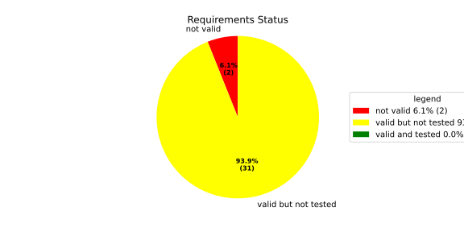
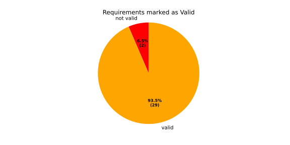
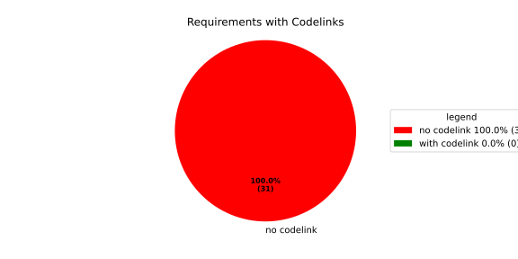
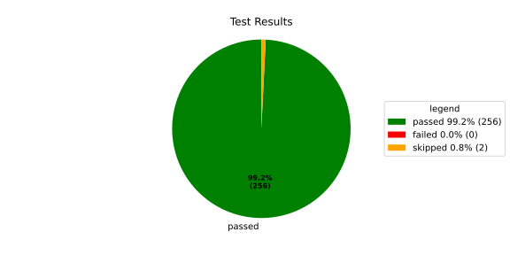
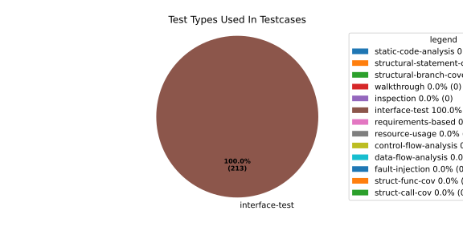
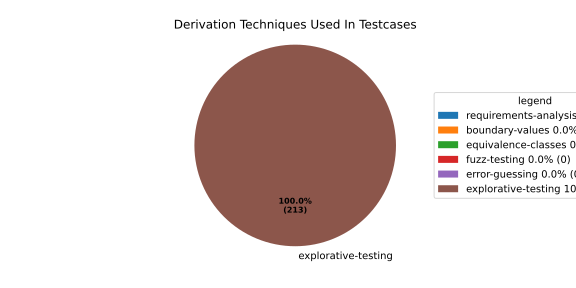

Verification Statistics#
Overview#

In Detail#



Failed Tests
Hint: This table should be empty. Before a PR can be merged all tests have to be successful.
No needs passed the filters
Skipped / Disabled Tests
testcase |
Result |
Fully Verifies |
Partially Verifies |
Test Type |
Derivation Technique |
link |
|---|---|---|---|---|---|---|
ValidateRangeTest/4__RejectsValueAboveMax |
skipped |
interface-test |
explorative-testing |
|||
ValidateRangeTest/4__RejectsValueBelowMin |
skipped |
interface-test |
explorative-testing |
All passed Tests#
testcase |
Result |
Fully Verifies |
Partially Verifies |
Test Type |
Derivation Technique |
link |
|---|---|---|---|---|---|---|
AliveImplTest__DoesNotThrowWhenInterfacePathEnvVarIsSet |
passed |
interface-test |
explorative-testing |
testcase__AliveImplTest__DoesNotThrowWhenInterfacePathEnvVarIsSet_xpewu |
||
AliveImplTest__ReportCheckpointSafeWhenNotConnected |
passed |
interface-test |
explorative-testing |
testcase__AliveImplTest__ReportCheckpointSafeWhenNotConnected_ppvuc |
||
AliveImplTest__ThrowsWhenInterfacePathEnvVarIsNotSet |
passed |
interface-test |
explorative-testing |
testcase__AliveImplTest__ThrowsWhenInterfacePathEnvVarIsNotSet_ekxfw |
||
AliveSupervisionTest__AliveDebouncesThroughFailedBeforeExpired |
passed |
interface-test |
explorative-testing |
testcase__AliveSupervisionTest__AliveDebouncesThroughFailedBeforeExpired_mlnbe |
||
AliveSupervisionTest__AliveReportsEnqueueFailureWhenRingBufferFull |
passed |
interface-test |
explorative-testing |
testcase__AliveSupervisionTest__AliveReportsEnqueueFailureWhenRingBufferFull_byhrd |
||
AliveSupervisionTest__AliveStaysOkWithCorrectHeartbeats |
passed |
interface-test |
explorative-testing |
testcase__AliveSupervisionTest__AliveStaysOkWithCorrectHeartbeats_vekof |
||
AliveSupervisionTest__AliveTransitionsOkToExpiredOnMissingHeartbeat |
passed |
interface-test |
explorative-testing |
testcase__AliveSupervisionTest__AliveTransitionsOkToExpiredOnMissingHeartbeat_jymxo |
||
AliveSupervisionTest__DeactivatesOnProcessCrash |
passed |
interface-test |
explorative-testing |
testcase__AliveSupervisionTest__DeactivatesOnProcessCrash_ypejs |
||
AliveSupervisionTest__DeactivatesOnProcessSigterm |
passed |
interface-test |
explorative-testing |
testcase__AliveSupervisionTest__DeactivatesOnProcessSigterm_hzaal |
||
AliveSupervisionTest__IgnoresIrrelevantProcessStates |
passed |
interface-test |
explorative-testing |
testcase__AliveSupervisionTest__IgnoresIrrelevantProcessStates_aolvb |
||
AliveSupervisionTest__MaxIndicationViolationExpires |
passed |
interface-test |
explorative-testing |
testcase__AliveSupervisionTest__MaxIndicationViolationExpires_whhhi |
||
AliveSupervisionTest__ReactivatesAfterCrash |
passed |
interface-test |
explorative-testing |
|||
ApplicationTypes/ApplicationTypeTest__ConvertsToExpectedValue/Native |
passed |
interface-test |
explorative-testing |
testcase__ApplicationTypes/ApplicationTypeTest__ConvertsToExpectedValue/Native_yxxcz |
||
ApplicationTypes/ApplicationTypeTest__ConvertsToExpectedValue/Reporting |
passed |
interface-test |
explorative-testing |
testcase__ApplicationTypes/ApplicationTypeTest__ConvertsToExpectedValue/Reporting_wcfwr |
||
ApplicationTypes/ApplicationTypeTest__ConvertsToExpectedValue/ReportingAndSupervised |
passed |
interface-test |
explorative-testing |
testcase__ApplicationTypes/ApplicationTypeTest__ConvertsToExpectedValue/ReportingAndSupervised_yxgad |
||
ApplicationTypes/ApplicationTypeTest__ConvertsToExpectedValue/StateManager |
passed |
interface-test |
explorative-testing |
testcase__ApplicationTypes/ApplicationTypeTest__ConvertsToExpectedValue/StateManager_ivuzc |
||
ConverterTest__ConvertAliveSupervisionMissingCycleReturnsError |
passed |
interface-test |
explorative-testing |
testcase__ConverterTest__ConvertAliveSupervisionMissingCycleReturnsError_bifzg |
||
ConverterTest__ConvertAliveSupervisionNullReturnsDefault |
passed |
interface-test |
explorative-testing |
testcase__ConverterTest__ConvertAliveSupervisionNullReturnsDefault_clyua |
||
ConverterTest__ConvertAliveSupervisionValid |
passed |
interface-test |
explorative-testing |
|||
ConverterTest__ConvertApplicationProfileMissingSelfTerminatingReturnsError |
passed |
interface-test |
explorative-testing |
testcase__ConverterTest__ConvertApplicationProfileMissingSelfTerminatingReturnsError_zddjb |
||
ConverterTest__ConvertApplicationProfileMissingTypeReturnsError |
passed |
interface-test |
explorative-testing |
testcase__ConverterTest__ConvertApplicationProfileMissingTypeReturnsError_zrfcs |
||
ConverterTest__ConvertApplicationProfileValid |
passed |
interface-test |
explorative-testing |
testcase__ConverterTest__ConvertApplicationProfileValid_oohxq |
||
ConverterTest__ConvertComponentAliveSupervisionBothIndicationsAbsentReturnsError |
passed |
interface-test |
explorative-testing |
testcase__ConverterTest__ConvertComponentAliveSupervisionBothIndicationsAbsentReturnsError_gvtfi |
||
ConverterTest__ConvertComponentAliveSupervisionMissingReportingCycleReturnsError |
passed |
interface-test |
explorative-testing |
testcase__ConverterTest__ConvertComponentAliveSupervisionMissingReportingCycleReturnsError_ajymy |
||
ConverterTest__ConvertComponentAliveSupervisionMissingToleranceReturnsError |
passed |
interface-test |
explorative-testing |
testcase__ConverterTest__ConvertComponentAliveSupervisionMissingToleranceReturnsError_lgrhj |
||
ConverterTest__ConvertComponentAliveSupervisionNullReturnsDefault |
passed |
interface-test |
explorative-testing |
testcase__ConverterTest__ConvertComponentAliveSupervisionNullReturnsDefault_xhaus |
||
ConverterTest__ConvertComponentAliveSupervisionOnlyMaxIndicationsPresent |
passed |
interface-test |
explorative-testing |
testcase__ConverterTest__ConvertComponentAliveSupervisionOnlyMaxIndicationsPresent_smwht |
||
ConverterTest__ConvertComponentAliveSupervisionOnlyMinIndicationsPresent |
passed |
interface-test |
explorative-testing |
testcase__ConverterTest__ConvertComponentAliveSupervisionOnlyMinIndicationsPresent_ybbrr |
||
ConverterTest__ConvertComponentAliveSupervisionValid |
passed |
interface-test |
explorative-testing |
testcase__ConverterTest__ConvertComponentAliveSupervisionValid_ijedh |
||
ConverterTest__ConvertComponentsValid |
passed |
interface-test |
explorative-testing |
|||
ConverterTest__ConvertComponentsWithInvalidComponentReturnsError |
passed |
interface-test |
explorative-testing |
testcase__ConverterTest__ConvertComponentsWithInvalidComponentReturnsError_wridc |
||
ConverterTest__ConvertComponentValid |
passed |
interface-test |
explorative-testing |
|||
ConverterTest__ConvertDeploymentConfigMissingReadyTimeoutReturnsError |
passed |
interface-test |
explorative-testing |
testcase__ConverterTest__ConvertDeploymentConfigMissingReadyTimeoutReturnsError_ljzfl |
||
ConverterTest__ConvertDeploymentConfigMissingShutdownTimeoutReturnsError |
passed |
interface-test |
explorative-testing |
testcase__ConverterTest__ConvertDeploymentConfigMissingShutdownTimeoutReturnsError_vyqye |
||
ConverterTest__ConvertDeploymentConfigValid |
passed |
interface-test |
explorative-testing |
|||
ConverterTest__ConvertEnvironmentalVariables |
passed |
interface-test |
explorative-testing |
testcase__ConverterTest__ConvertEnvironmentalVariables_fnhgo |
||
ConverterTest__ConvertEnvironmentalVariablesNullReturnsEmpty |
passed |
interface-test |
explorative-testing |
testcase__ConverterTest__ConvertEnvironmentalVariablesNullReturnsEmpty_vglrx |
||
ConverterTest__ConvertFallbackRunTargetMissingTimeoutReturnsError |
passed |
interface-test |
explorative-testing |
testcase__ConverterTest__ConvertFallbackRunTargetMissingTimeoutReturnsError_aevly |
||
ConverterTest__ConvertFallbackRunTargetValid |
passed |
interface-test |
explorative-testing |
testcase__ConverterTest__ConvertFallbackRunTargetValid_nexxj |
||
ConverterTest__ConvertReadyConditionMissingProcessStateReturnsError |
passed |
interface-test |
explorative-testing |
testcase__ConverterTest__ConvertReadyConditionMissingProcessStateReturnsError_ileav |
||
ConverterTest__ConvertReadyConditionValid |
passed |
interface-test |
explorative-testing |
|||
ConverterTest__ConvertRestartActionMissingFieldsReturnsError |
passed |
interface-test |
explorative-testing |
testcase__ConverterTest__ConvertRestartActionMissingFieldsReturnsError_aapjb |
||
ConverterTest__ConvertRestartActionNullReturnsNullopt |
passed |
interface-test |
explorative-testing |
testcase__ConverterTest__ConvertRestartActionNullReturnsNullopt_ifvyd |
||
ConverterTest__ConvertRestartActionValid |
passed |
interface-test |
explorative-testing |
|||
ConverterTest__ConvertRunTargetMissingTransitionTimeoutReturnsError |
passed |
interface-test |
explorative-testing |
testcase__ConverterTest__ConvertRunTargetMissingTransitionTimeoutReturnsError_ynekv |
||
ConverterTest__ConvertRunTargetsValid |
passed |
interface-test |
explorative-testing |
|||
ConverterTest__ConvertRunTargetsWithInvalidRunTargetReturnsError |
passed |
interface-test |
explorative-testing |
testcase__ConverterTest__ConvertRunTargetsWithInvalidRunTargetReturnsError_ldlox |
||
ConverterTest__ConvertRunTargetValid |
passed |
interface-test |
explorative-testing |
|||
ConverterTest__ConvertSandboxMissingGidReturnsError |
passed |
interface-test |
explorative-testing |
testcase__ConverterTest__ConvertSandboxMissingGidReturnsError_veeel |
||
ConverterTest__ConvertSandboxMissingSchedulingPolicyReturnsError |
passed |
interface-test |
explorative-testing |
testcase__ConverterTest__ConvertSandboxMissingSchedulingPolicyReturnsError_pkfts |
||
ConverterTest__ConvertSandboxMissingSchedulingPriorityReturnsError |
passed |
interface-test |
explorative-testing |
testcase__ConverterTest__ConvertSandboxMissingSchedulingPriorityReturnsError_xzdho |
||
ConverterTest__ConvertSandboxMissingUidReturnsError |
passed |
interface-test |
explorative-testing |
testcase__ConverterTest__ConvertSandboxMissingUidReturnsError_ogfku |
||
ConverterTest__ConvertSandboxSupplementaryGidOutOfRangeReturnsError |
passed |
interface-test |
explorative-testing |
testcase__ConverterTest__ConvertSandboxSupplementaryGidOutOfRangeReturnsError_zavpx |
||
ConverterTest__ConvertSandboxUidOutOfRangeReturnsError |
passed |
interface-test |
explorative-testing |
testcase__ConverterTest__ConvertSandboxUidOutOfRangeReturnsError_mcuaf |
||
ConverterTest__ConvertSandboxValid |
passed |
interface-test |
explorative-testing |
|||
ConverterTest__ConvertSwitchRunTargetActionNullReturnsNullopt |
passed |
interface-test |
explorative-testing |
testcase__ConverterTest__ConvertSwitchRunTargetActionNullReturnsNullopt_zmitx |
||
ConverterTest__ConvertSwitchRunTargetActionValid |
passed |
interface-test |
explorative-testing |
testcase__ConverterTest__ConvertSwitchRunTargetActionValid_tdklr |
||
ConverterTest__ConvertWatchdogMissingDeactivateReturnsError |
passed |
interface-test |
explorative-testing |
testcase__ConverterTest__ConvertWatchdogMissingDeactivateReturnsError_gzwjt |
||
ConverterTest__ConvertWatchdogMissingMagicCloseReturnsError |
passed |
interface-test |
explorative-testing |
testcase__ConverterTest__ConvertWatchdogMissingMagicCloseReturnsError_gexxk |
||
ConverterTest__ConvertWatchdogMissingMaxTimeoutReturnsError |
passed |
interface-test |
explorative-testing |
testcase__ConverterTest__ConvertWatchdogMissingMaxTimeoutReturnsError_lffxm |
||
ConverterTest__ConvertWatchdogNullReturnsNullopt |
passed |
interface-test |
explorative-testing |
testcase__ConverterTest__ConvertWatchdogNullReturnsNullopt_irsdk |
||
ConverterTest__ConvertWatchdogValid |
passed |
interface-test |
explorative-testing |
|||
DeadlineFixture__Start_AlreadyRunning |
passed |
interface-test |
explorative-testing |
|||
DeadlineFixture__Start_Succeeds |
passed |
interface-test |
explorative-testing |
|||
DeadlineMonitorBuilderFixture__AddDeadline_Succeeds |
passed |
interface-test |
explorative-testing |
testcase__DeadlineMonitorBuilderFixture__AddDeadline_Succeeds_nagke |
||
DeadlineMonitorBuilderFixture__New_Succeeds |
passed |
interface-test |
explorative-testing |
|||
DeadlineMonitorFixture__GetDeadline_Succeeds |
passed |
interface-test |
explorative-testing |
testcase__DeadlineMonitorFixture__GetDeadline_Succeeds_tmltf |
||
DeadlineMonitorFixture__GetDeadline_Unknown |
passed |
interface-test |
explorative-testing |
|||
EnumConversionTest__ConvertSchedulingPolicyUnsupported |
passed |
interface-test |
explorative-testing |
testcase__EnumConversionTest__ConvertSchedulingPolicyUnsupported_iavqm |
||
EnvironmentTest__AddIncreasesSize |
passed |
interface-test |
explorative-testing |
|||
EnvironmentTest__DefaultConstructedIsEmpty |
passed |
interface-test |
explorative-testing |
|||
EnvironmentTest__EmptyEnvironmentEnvpIsNullTerminated |
passed |
interface-test |
explorative-testing |
testcase__EnvironmentTest__EmptyEnvironmentEnvpIsNullTerminated_wwumw |
||
EnvironmentTest__EnvpReturnsNullTerminatedArray |
passed |
interface-test |
explorative-testing |
testcase__EnvironmentTest__EnvpReturnsNullTerminatedArray_aubkv |
||
EnvironmentTest__EnvpWithMultipleEntries |
passed |
interface-test |
explorative-testing |
|||
EnvironmentTest__MoveAssignmentPreservesEntries |
passed |
interface-test |
explorative-testing |
testcase__EnvironmentTest__MoveAssignmentPreservesEntries_vkydj |
||
EnvironmentTest__MoveConstructorPreservesEntries |
passed |
interface-test |
explorative-testing |
testcase__EnvironmentTest__MoveConstructorPreservesEntries_upclt |
||
EnvironmentTest__RangeBasedForLoopWorks |
passed |
interface-test |
explorative-testing |
|||
EnvironmentTest__ReserveAndAddAvoidReallocation |
passed |
interface-test |
explorative-testing |
testcase__EnvironmentTest__ReserveAndAddAvoidReallocation_lgzmu |
||
EnvironmentTest__SsoLengthStringSurvivesReallocation |
passed |
interface-test |
explorative-testing |
testcase__EnvironmentTest__SsoLengthStringSurvivesReallocation_jfmtl |
||
EnvironmentVariableTest__CStrReturnsKeyEqualsValue |
passed |
interface-test |
explorative-testing |
testcase__EnvironmentVariableTest__CStrReturnsKeyEqualsValue_rkwan |
||
EnvironmentVariableTest__EmptyValue |
passed |
interface-test |
explorative-testing |
|||
EnvironmentVariableTest__KeyAndValueAreAccessible |
passed |
interface-test |
explorative-testing |
testcase__EnvironmentVariableTest__KeyAndValueAreAccessible_kcrth |
||
EnvironmentVariableTest__ValueContainingEquals |
passed |
interface-test |
explorative-testing |
testcase__EnvironmentVariableTest__ValueContainingEquals_apzgz |
||
ExecErrorDomainTest__AllKnownCodesHaveDistinctMessages |
passed |
interface-test |
explorative-testing |
testcase__ExecErrorDomainTest__AllKnownCodesHaveDistinctMessages_qpoka |
||
ExecErrorDomainTest__AllKnownCodesReturnNonEmptyMessage |
passed |
interface-test |
explorative-testing |
testcase__ExecErrorDomainTest__AllKnownCodesReturnNonEmptyMessage_bawzg |
||
ExecErrorDomainTest__UnknownCodeReturnsNonEmptyMessage |
passed |
interface-test |
explorative-testing |
testcase__ExecErrorDomainTest__UnknownCodeReturnsNonEmptyMessage_kkwpr |
||
FlatbufferConfigLoaderTest__CorruptedBufferReturnsInvalidFormat |
passed |
interface-test |
explorative-testing |
testcase__FlatbufferConfigLoaderTest__CorruptedBufferReturnsInvalidFormat_twyac |
||
FlatbufferConfigLoaderTest__LoadAliveSupervision |
passed |
interface-test |
explorative-testing |
testcase__FlatbufferConfigLoaderTest__LoadAliveSupervision_hhuux |
||
FlatbufferConfigLoaderTest__LoadBufferFailsWithGenericErrorReturnsGeneralError |
passed |
interface-test |
explorative-testing |
testcase__FlatbufferConfigLoaderTest__LoadBufferFailsWithGenericErrorReturnsGeneralError_kmatm |
||
FlatbufferConfigLoaderTest__LoadBufferFailsWithNoSuchFileReturnsFileNotFound |
passed |
interface-test |
explorative-testing |
testcase__FlatbufferConfigLoaderTest__LoadBufferFailsWithNoSuchFileReturnsFileNotFound_yzlra |
||
FlatbufferConfigLoaderTest__LoadBufferFailsWithPermissionDeniedReturnsInsufficientPermission |
passed |
interface-test |
explorative-testing |
|||
FlatbufferConfigLoaderTest__LoadComponentAliveSupervision |
passed |
interface-test |
explorative-testing |
testcase__FlatbufferConfigLoaderTest__LoadComponentAliveSupervision_fwfad |
||
FlatbufferConfigLoaderTest__LoadEnvironmentalVariables |
passed |
interface-test |
explorative-testing |
testcase__FlatbufferConfigLoaderTest__LoadEnvironmentalVariables_wsosu |
||
FlatbufferConfigLoaderTest__LoadFallbackRunTarget |
passed |
interface-test |
explorative-testing |
testcase__FlatbufferConfigLoaderTest__LoadFallbackRunTarget_wduqm |
||
FlatbufferConfigLoaderTest__LoadMinimalConfig |
passed |
interface-test |
explorative-testing |
testcase__FlatbufferConfigLoaderTest__LoadMinimalConfig_hdkck |
||
FlatbufferConfigLoaderTest__LoadMultipleComponents |
passed |
interface-test |
explorative-testing |
testcase__FlatbufferConfigLoaderTest__LoadMultipleComponents_abpom |
||
FlatbufferConfigLoaderTest__LoadRestartRecoveryAction |
passed |
interface-test |
explorative-testing |
testcase__FlatbufferConfigLoaderTest__LoadRestartRecoveryAction_wyfqg |
||
FlatbufferConfigLoaderTest__LoadRunTargets |
passed |
interface-test |
explorative-testing |
|||
FlatbufferConfigLoaderTest__LoadSandbox |
passed |
interface-test |
explorative-testing |
|||
FlatbufferConfigLoaderTest__LoadSingleComponent |
passed |
interface-test |
explorative-testing |
testcase__FlatbufferConfigLoaderTest__LoadSingleComponent_yidty |
||
FlatbufferConfigLoaderTest__LoadSwitchRunTargetAction |
passed |
interface-test |
explorative-testing |
testcase__FlatbufferConfigLoaderTest__LoadSwitchRunTargetAction_uchgp |
||
FlatbufferConfigLoaderTest__LoadWatchdog |
passed |
interface-test |
explorative-testing |
|||
FlatbufferConfigLoaderTest__MissingSchemaVersionReturnsInvalidFormat |
passed |
interface-test |
explorative-testing |
testcase__FlatbufferConfigLoaderTest__MissingSchemaVersionReturnsInvalidFormat_qqmfn |
||
FlatbufferConfigLoaderTest__OptionalReadyConditionAbsent |
passed |
interface-test |
explorative-testing |
testcase__FlatbufferConfigLoaderTest__OptionalReadyConditionAbsent_lhddx |
||
FlatbufferConfigLoaderTest__OptionalWatchdogAbsent |
passed |
interface-test |
explorative-testing |
testcase__FlatbufferConfigLoaderTest__OptionalWatchdogAbsent_pkhkp |
||
FlatbufferConfigLoaderTest__WrongSchemaVersionReturnsUnsupportedVersion |
passed |
interface-test |
explorative-testing |
testcase__FlatbufferConfigLoaderTest__WrongSchemaVersionReturnsUnsupportedVersion_zrbjv |
||
HealthMonitor__GetDeadlineMonitor_Available |
passed |
|||||
HealthMonitor__GetDeadlineMonitor_Taken |
passed |
|||||
HealthMonitor__GetDeadlineMonitor_Unknown |
passed |
|||||
HealthMonitor__GetHeartbeatMonitor_Available |
passed |
testcase__HealthMonitor__GetHeartbeatMonitor_Available_aacat |
||||
HealthMonitor__GetHeartbeatMonitor_Taken |
passed |
|||||
HealthMonitor__GetHeartbeatMonitor_Unknown |
passed |
|||||
HealthMonitor__GetLogicMonitor_Available |
passed |
|||||
HealthMonitor__GetLogicMonitor_Taken |
passed |
|||||
HealthMonitor__GetLogicMonitor_Unknown |
passed |
|||||
HealthMonitor__Start_MonitorsNotTaken |
passed |
|||||
HealthMonitor__Start_Succeeds |
passed |
|||||
HealthMonitorBuilderFixture__Build_InvalidCycles |
passed |
interface-test |
explorative-testing |
testcase__HealthMonitorBuilderFixture__Build_InvalidCycles_pdigk |
||
HealthMonitorBuilderFixture__Build_NoMonitors |
passed |
interface-test |
explorative-testing |
testcase__HealthMonitorBuilderFixture__Build_NoMonitors_ktcve |
||
HealthMonitorBuilderFixture__Build_Succeeds |
passed |
interface-test |
explorative-testing |
|||
HealthMonitorBuilderFixture__New_Succeeds |
passed |
interface-test |
explorative-testing |
|||
HealthMonitorTest__Integrated |
passed |
interface-test |
explorative-testing |
|||
HeartbeatMonitor__Heartbeat_Succeeds |
passed |
interface-test |
explorative-testing |
|||
HeartbeatMonitorBuilder__New_Succeeds |
passed |
interface-test |
explorative-testing |
|||
IdentifierHashTest__IdentifierHash_default_created |
passed |
interface-test |
explorative-testing |
testcase__IdentifierHashTest__IdentifierHash_default_created_yhhvi |
||
IdentifierHashTest__IdentifierHash_EqualityOperators |
passed |
interface-test |
explorative-testing |
testcase__IdentifierHashTest__IdentifierHash_EqualityOperators_nnsuj |
||
IdentifierHashTest__IdentifierHash_invalid_hash_no_string_representation |
passed |
interface-test |
explorative-testing |
testcase__IdentifierHashTest__IdentifierHash_invalid_hash_no_string_representation_rxowr |
||
IdentifierHashTest__IdentifierHash_LessThanOperator |
passed |
interface-test |
explorative-testing |
testcase__IdentifierHashTest__IdentifierHash_LessThanOperator_rnbax |
||
IdentifierHashTest__IdentifierHash_no_dangling_pointer_after_source_string_dies |
passed |
interface-test |
explorative-testing |
testcase__IdentifierHashTest__IdentifierHash_no_dangling_pointer_after_source_string_dies_qsjin |
||
IdentifierHashTest__IdentifierHash_with_string_created |
passed |
interface-test |
explorative-testing |
testcase__IdentifierHashTest__IdentifierHash_with_string_created_aygdm |
||
IdentifierHashTest__IdentifierHash_with_string_view_created |
passed |
interface-test |
explorative-testing |
testcase__IdentifierHashTest__IdentifierHash_with_string_view_created_dbpol |
||
LogicMonitorBuilderFixture__AddState_Succeeds |
passed |
interface-test |
explorative-testing |
testcase__LogicMonitorBuilderFixture__AddState_Succeeds_axdxj |
||
LogicMonitorBuilderFixture__New_Succeeds |
passed |
interface-test |
explorative-testing |
|||
LogicMonitorFixture__State_Invalid |
passed |
interface-test |
explorative-testing |
|||
LogicMonitorFixture__State_Succeeds |
passed |
interface-test |
explorative-testing |
|||
LogicMonitorFixture__Transition_Invalid |
passed |
interface-test |
explorative-testing |
|||
LogicMonitorFixture__Transition_Succeeds |
passed |
interface-test |
explorative-testing |
|||
LogicMonitorFixture__Transition_Unknown |
passed |
interface-test |
explorative-testing |
|||
MonitorIfDaemonTest__Active_CheckpointDataForwarded |
passed |
interface-test |
explorative-testing |
testcase__MonitorIfDaemonTest__Active_CheckpointDataForwarded_evumz |
||
MonitorIfDaemonTest__Active_FutureTimestamp_NotForwardedInCurrentCycle |
passed |
interface-test |
explorative-testing |
testcase__MonitorIfDaemonTest__Active_FutureTimestamp_NotForwardedInCurrentCycle_oycau |
||
MonitorIfDaemonTest__Active_FutureTimestampCheckpoint_ConsumedInLaterCycle |
passed |
interface-test |
explorative-testing |
testcase__MonitorIfDaemonTest__Active_FutureTimestampCheckpoint_ConsumedInLaterCycle_veyyy |
||
MonitorIfDaemonTest__Active_MultipleCheckpointsInOneCycle_AllForwarded |
passed |
interface-test |
explorative-testing |
testcase__MonitorIfDaemonTest__Active_MultipleCheckpointsInOneCycle_AllForwarded_gmbms |
||
MonitorIfDaemonTest__Active_NonMatchingCheckpointId_NotForwarded |
passed |
interface-test |
explorative-testing |
testcase__MonitorIfDaemonTest__Active_NonMatchingCheckpointId_NotForwarded_bohck |
||
MonitorIfDaemonTest__Active_OverflowDetected_TransitionsToInactiveOverflow |
passed |
interface-test |
explorative-testing |
testcase__MonitorIfDaemonTest__Active_OverflowDetected_TransitionsToInactiveOverflow_ovitk |
||
MonitorIfDaemonTest__Active_TwoAttachedCheckpoints_RoutedByCheckpointId |
passed |
interface-test |
explorative-testing |
testcase__MonitorIfDaemonTest__Active_TwoAttachedCheckpoints_RoutedByCheckpointId_skqhd |
||
MonitorIfDaemonTest__GetInterfaceName_ReturnsNameGivenAtConstruction |
passed |
interface-test |
explorative-testing |
testcase__MonitorIfDaemonTest__GetInterfaceName_ReturnsNameGivenAtConstruction_iaemz |
||
MonitorIfDaemonTest__InactiveOverflow_NoProcessRestart_DoesNotRepeatNotification |
passed |
interface-test |
explorative-testing |
testcase__MonitorIfDaemonTest__InactiveOverflow_NoProcessRestart_DoesNotRepeatNotification_gdbxg |
||
MonitorIfDaemonTest__InactiveOverflow_ProcessRestartFlag_ClearedAfterNotification |
passed |
interface-test |
explorative-testing |
testcase__MonitorIfDaemonTest__InactiveOverflow_ProcessRestartFlag_ClearedAfterNotification_pqfyy |
||
MonitorIfDaemonTest__InactiveOverflow_ProcessRestarts_PushesOverflowNotificationAgain |
passed |
interface-test |
explorative-testing |
|||
MonitorIfDaemonTest__InitiallyInactive_CheckForNewData_DoesNotNotifyCheckpoint |
passed |
interface-test |
explorative-testing |
testcase__MonitorIfDaemonTest__InitiallyInactive_CheckForNewData_DoesNotNotifyCheckpoint_wjrfl |
||
MonitorIfDaemonTest__ProcessOff_DeactivatesMonitor_NoFurtherDataForwarded |
passed |
interface-test |
explorative-testing |
testcase__MonitorIfDaemonTest__ProcessOff_DeactivatesMonitor_NoFurtherDataForwarded_uialh |
||
MonitorIfDaemonTest__ProcessOffBeforeActivation_RemainsInactive |
passed |
interface-test |
explorative-testing |
testcase__MonitorIfDaemonTest__ProcessOffBeforeActivation_RemainsInactive_kzzyy |
||
MonitorIfDaemonTest__ProcessRunning_ActivatesMonitorOnNextCheckForNewData |
passed |
interface-test |
explorative-testing |
testcase__MonitorIfDaemonTest__ProcessRunning_ActivatesMonitorOnNextCheckForNewData_fkkmk |
||
MonitorIfDaemonTest__ProcessStarting_AlsoActivatesMonitor |
passed |
interface-test |
explorative-testing |
testcase__MonitorIfDaemonTest__ProcessStarting_AlsoActivatesMonitor_xdkbg |
||
MPMCConcurrentQueueTest_Basic__LvaluePushCopiesItem |
passed |
testcase__MPMCConcurrentQueueTest_Basic__LvaluePushCopiesItem_oysfc |
||||
MPMCConcurrentQueueTest_Basic__PopReturnsNulloptOnSemaphoreWaitFailure |
passed |
testcase__MPMCConcurrentQueueTest_Basic__PopReturnsNulloptOnSemaphoreWaitFailure_rgznm |
||||
MPMCConcurrentQueueTest_Basic__PushAndPopPreservesOrder |
passed |
testcase__MPMCConcurrentQueueTest_Basic__PushAndPopPreservesOrder_aijdb |
||||
MPMCConcurrentQueueTest_Basic__PushAndPopSingleItem |
passed |
testcase__MPMCConcurrentQueueTest_Basic__PushAndPopSingleItem_jrxwz |
||||
MPMCConcurrentQueueTest_Basic__RvaluePushWorksWithMoveOnlyType |
passed |
testcase__MPMCConcurrentQueueTest_Basic__RvaluePushWorksWithMoveOnlyType_cxxaj |
||||
MPMCConcurrentQueueTest_Blocking__PopBlocksUntilItemAvailable |
passed |
testcase__MPMCConcurrentQueueTest_Blocking__PopBlocksUntilItemAvailable_ttwcx |
||||
MPMCConcurrentQueueTest_Blocking__PushBlocksWhenFull |
passed |
testcase__MPMCConcurrentQueueTest_Blocking__PushBlocksWhenFull_ecujf |
||||
MPMCConcurrentQueueTest_Blocking__StopUnblocksBlockedConsumer |
passed |
testcase__MPMCConcurrentQueueTest_Blocking__StopUnblocksBlockedConsumer_snzyr |
||||
MPMCConcurrentQueueTest_Blocking__StopUnblocksBlockedProducer |
passed |
testcase__MPMCConcurrentQueueTest_Blocking__StopUnblocksBlockedProducer_inddu |
||||
MPMCConcurrentQueueTest_MPMC__AllItemsDelivered |
passed |
testcase__MPMCConcurrentQueueTest_MPMC__AllItemsDelivered_ztjqe |
||||
MPMCConcurrentQueueTest_Stop__ItemsAreDroppedAfterStop |
passed |
testcase__MPMCConcurrentQueueTest_Stop__ItemsAreDroppedAfterStop_ragzw |
||||
MPMCConcurrentQueueTest_Stop__PopReturnsNulloptWhenStoppedAndEmpty |
passed |
testcase__MPMCConcurrentQueueTest_Stop__PopReturnsNulloptWhenStoppedAndEmpty_cevga |
||||
MPMCConcurrentQueueTest_Stop__PushReturnsFalseAfterStop |
passed |
testcase__MPMCConcurrentQueueTest_Stop__PushReturnsFalseAfterStop_qqnhw |
||||
MPMCConcurrentQueueTest_Timeout__PushWithTimeoutReturnsFalseWhenFull |
passed |
testcase__MPMCConcurrentQueueTest_Timeout__PushWithTimeoutReturnsFalseWhenFull_aeips |
||||
MPMCConcurrentQueueTest_Timeout__PushWithTimeoutSucceedsWhenSlotAvailable |
passed |
testcase__MPMCConcurrentQueueTest_Timeout__PushWithTimeoutSucceedsWhenSlotAvailable_klzpo |
||||
OsHandlerTest__WaitReturnsError_OsHandlerSleepsAndDoesNotCallFindTerminated |
passed |
interface-test |
explorative-testing |
testcase__OsHandlerTest__WaitReturnsError_OsHandlerSleepsAndDoesNotCallFindTerminated_cibtr |
||
OsHandlerTest__WaitReturnsErrorThenProcessId_HandlerRecoversAndInvokesCallback |
passed |
interface-test |
explorative-testing |
testcase__OsHandlerTest__WaitReturnsErrorThenProcessId_HandlerRecoversAndInvokesCallback_nqstd |
||
OsHandlerTest__WaitReturnsProcessId_FindTerminatedIsCalled |
passed |
interface-test |
explorative-testing |
testcase__OsHandlerTest__WaitReturnsProcessId_FindTerminatedIsCalled_chlsq |
||
OsHandlerTest__WaitReturnsProcessIdBeforeRegistration_LaterRegistrationReceivesStoredTermination |
passed |
interface-test |
explorative-testing |
|||
OsHandlerTest__WaitReturnsUnknownPidWhenMapIsFull_OutOfResourcesPathDoesNotNotifyCallbacks |
passed |
interface-test |
explorative-testing |
|||
OsHandlerTest__WaitReturnsZeroPid_OsHandlerSleepsAndDoesNotCallFindTerminated |
passed |
interface-test |
explorative-testing |
testcase__OsHandlerTest__WaitReturnsZeroPid_OsHandlerSleepsAndDoesNotCallFindTerminated_rkttz |
||
ProcessStateClient_UT__ProcessStateClient_ConstructReceiver_Succeeds |
passed |
interface-test |
explorative-testing |
testcase__ProcessStateClient_UT__ProcessStateClient_ConstructReceiver_Succeeds_hodwy |
||
ProcessStateClient_UT__ProcessStateClient_QueueMaxNumberOfProcesses_Succeeds |
passed |
interface-test |
explorative-testing |
testcase__ProcessStateClient_UT__ProcessStateClient_QueueMaxNumberOfProcesses_Succeeds_qohom |
||
ProcessStateClient_UT__ProcessStateClient_QueueOneProcess_Succeeds |
passed |
interface-test |
explorative-testing |
testcase__ProcessStateClient_UT__ProcessStateClient_QueueOneProcess_Succeeds_tmzfz |
||
ProcessStateClient_UT__ProcessStateClient_QueueOneProcessTooMany_Fails |
passed |
interface-test |
explorative-testing |
testcase__ProcessStateClient_UT__ProcessStateClient_QueueOneProcessTooMany_Fails_sspoj |
||
ProcessStates/ProcessStateTest__ConvertsToExpectedValue/Running |
passed |
interface-test |
explorative-testing |
testcase__ProcessStates/ProcessStateTest__ConvertsToExpectedValue/Running_hinlr |
||
ProcessStates/ProcessStateTest__ConvertsToExpectedValue/Terminated |
passed |
interface-test |
explorative-testing |
testcase__ProcessStates/ProcessStateTest__ConvertsToExpectedValue/Terminated_zrytn |
||
RecoveryClientTest__FIFOOrdering |
passed |
interface-test |
explorative-testing |
|||
RecoveryClientTest__GetNextRequest |
passed |
interface-test |
explorative-testing |
|||
RecoveryClientTest__GetNextRequestEmpty |
passed |
interface-test |
explorative-testing |
|||
RecoveryClientTest__RingBufferFull |
passed |
interface-test |
explorative-testing |
|||
RecoveryClientTest__SendSingleRequest |
passed |
interface-test |
explorative-testing |
|||
RunTest__AsPosixProcessCreatesAndDestroysLifeCycleManager |
passed |
testcase__RunTest__AsPosixProcessCreatesAndDestroysLifeCycleManager_sooex |
||||
RunTest__AsPosixProcessForwardsConstructorArgsToApplication |
passed |
testcase__RunTest__AsPosixProcessForwardsConstructorArgsToApplication_dmeur |
||||
RunTest__AsPosixProcessForwardsNonZeroExitCode |
passed |
testcase__RunTest__AsPosixProcessForwardsNonZeroExitCode_lldqd |
||||
RunTest__AsPosixProcessPassesCorrectApplicationTypeToRun |
passed |
testcase__RunTest__AsPosixProcessPassesCorrectApplicationTypeToRun_ajqwz |
||||
RunTest__AsPosixProcessReturnsZeroExitCode |
passed |
|||||
RunTest__RunApplicationFreeFunctionDelegatesToAsPosixProcess |
passed |
testcase__RunTest__RunApplicationFreeFunctionDelegatesToAsPosixProcess_ccing |
||||
RunTest__RunConstructorPassesArgcArgvToApplicationContext |
passed |
testcase__RunTest__RunConstructorPassesArgcArgvToApplicationContext_agerd |
||||
SafeProcessMapTest__ConcurrentFindAndInsertFromMultipleThreads |
passed |
interface-test |
explorative-testing |
testcase__SafeProcessMapTest__ConcurrentFindAndInsertFromMultipleThreads_kzfyg |
||
SafeProcessMapTest__ConcurrentInsertAndFindFromMultipleThreads |
passed |
interface-test |
explorative-testing |
testcase__SafeProcessMapTest__ConcurrentInsertAndFindFromMultipleThreads_hnyqj |
||
SafeProcessMapTest__ConstructWithZeroCapacity |
passed |
interface-test |
explorative-testing |
testcase__SafeProcessMapTest__ConstructWithZeroCapacity_gjmqg |
||
SafeProcessMapTest__FindTerminatedInsertsEntryWhenPidNotPresent |
passed |
interface-test |
explorative-testing |
testcase__SafeProcessMapTest__FindTerminatedInsertsEntryWhenPidNotPresent_ixtlt |
||
SafeProcessMapTest__FindTerminatedMatchesExistingInsertAndCallsCallback |
passed |
interface-test |
explorative-testing |
testcase__SafeProcessMapTest__FindTerminatedMatchesExistingInsertAndCallsCallback_ehuzb |
||
SafeProcessMapTest__FindTerminatedSamePidTwiceYieldsUntilInsertResolves |
passed |
interface-test |
explorative-testing |
testcase__SafeProcessMapTest__FindTerminatedSamePidTwiceYieldsUntilInsertResolves_hsekx |
||
SafeProcessMapTest__FindTerminatedWithNegativePidReturnsInvalid |
passed |
interface-test |
explorative-testing |
testcase__SafeProcessMapTest__FindTerminatedWithNegativePidReturnsInvalid_dewoh |
||
SafeProcessMapTest__FindTerminatedWorksAtMaxTreeDepth |
passed |
interface-test |
explorative-testing |
testcase__SafeProcessMapTest__FindTerminatedWorksAtMaxTreeDepth_adtzi |
||
SafeProcessMapTest__InsertBeyondCapacityReturnsOutOfMemory |
passed |
interface-test |
explorative-testing |
testcase__SafeProcessMapTest__InsertBeyondCapacityReturnsOutOfMemory_qjnie |
||
SafeProcessMapTest__InsertIntoEmptyTreeReturnsZero |
passed |
interface-test |
explorative-testing |
testcase__SafeProcessMapTest__InsertIntoEmptyTreeReturnsZero_zfbaq |
||
SafeProcessMapTest__InsertMatchesExistingFindTerminatedEntry |
passed |
interface-test |
explorative-testing |
testcase__SafeProcessMapTest__InsertMatchesExistingFindTerminatedEntry_fuwrp |
||
SafeProcessMapTest__InsertMultipleNodesThenFindTerminatedRemovesAll |
passed |
interface-test |
explorative-testing |
testcase__SafeProcessMapTest__InsertMultipleNodesThenFindTerminatedRemovesAll_fvowh |
||
SafeProcessMapTest__InsertSamePidTwiceYieldsUntilFindTerminatedResolves |
passed |
interface-test |
explorative-testing |
testcase__SafeProcessMapTest__InsertSamePidTwiceYieldsUntilFindTerminatedResolves_wzwyb |
||
SchedulingPolicies/SchedulingPolicyTest__ConvertsToExpectedPosixValue/SCHED_FIFO |
passed |
interface-test |
explorative-testing |
testcase__SchedulingPolicies/SchedulingPolicyTest__ConvertsToExpectedPosixValue/SCHED_FIFO_soddq |
||
SchedulingPolicies/SchedulingPolicyTest__ConvertsToExpectedPosixValue/SCHED_OTHER |
passed |
interface-test |
explorative-testing |
testcase__SchedulingPolicies/SchedulingPolicyTest__ConvertsToExpectedPosixValue/SCHED_OTHER_oigmk |
||
SchedulingPolicies/SchedulingPolicyTest__ConvertsToExpectedPosixValue/SCHED_RR |
passed |
interface-test |
explorative-testing |
testcase__SchedulingPolicies/SchedulingPolicyTest__ConvertsToExpectedPosixValue/SCHED_RR_pcjci |
||
score/health_monitor/src/rust/test-510566969/tests |
passed |
testcase__score/health_monitor/src/rust/test-510566969/tests_kjjlw |
||||
score/health_monitor/src/rust/test-827801879/loom_tests |
passed |
testcase__score/health_monitor/src/rust/test-827801879/loom_tests_cpmix |
||||
SecondsToMsTest__ConvertsPositiveValue |
passed |
interface-test |
explorative-testing |
|||
SecondsToMsTest__ConvertsZero |
passed |
interface-test |
explorative-testing |
|||
SecondsToMsTest__RejectsNegativeValue |
passed |
interface-test |
explorative-testing |
|||
SecondsToMsTest__RejectsOverflow |
passed |
interface-test |
explorative-testing |
|||
SecondsToMsTest__RejectsSubMillisecond |
passed |
interface-test |
explorative-testing |
|||
StringHelperTest__ConvertGidVectorReturnsEmptyWhenNull |
passed |
interface-test |
explorative-testing |
testcase__StringHelperTest__ConvertGidVectorReturnsEmptyWhenNull_jmcsr |
||
StringHelperTest__ConvertStringVectorReturnsEmptyWhenNull |
passed |
interface-test |
explorative-testing |
testcase__StringHelperTest__ConvertStringVectorReturnsEmptyWhenNull_zsuvv |
||
StringHelperTest__SafeStringReturnsEmptyWhenNull |
passed |
interface-test |
explorative-testing |
testcase__StringHelperTest__SafeStringReturnsEmptyWhenNull_crelr |
||
StringHelperTest__SafeStringReturnsValueWhenNotNull |
passed |
interface-test |
explorative-testing |
testcase__StringHelperTest__SafeStringReturnsValueWhenNotNull_anbko |
||
test_complex_monitoring |
passed |
|||||
test_crash_on_startup |
passed |
|||||
test_incorrect_config_non_reporting |
passed |
|||||
test_process_crash_monitoring |
passed |
|||||
test_process_launch_args |
passed |
|||||
test_process_wrong_binary_failure |
passed |
|||||
test_recovery_action_complex_rep_failure |
passed |
|||||
test_recovery_action_simple_rep_failure |
passed |
|||||
test_smoke |
passed |
|||||
test_switch_run_target |
passed |
|||||
TimeRangeFixture__MinMax |
passed |
interface-test |
explorative-testing |
|||
TimeRangeFixture__New_InvalidOrder |
passed |
interface-test |
explorative-testing |
|||
TimeRangeFixture__New_Succeeds |
passed |
interface-test |
explorative-testing |
|||
ValidateRangeTest/0__AcceptsMaxBoundary |
passed |
interface-test |
explorative-testing |
|||
ValidateRangeTest/0__AcceptsMinBoundary |
passed |
interface-test |
explorative-testing |
|||
ValidateRangeTest/0__AcceptsZero |
passed |
interface-test |
explorative-testing |
|||
ValidateRangeTest/0__RejectsValueAboveMax |
passed |
interface-test |
explorative-testing |
|||
ValidateRangeTest/0__RejectsValueBelowMin |
passed |
interface-test |
explorative-testing |
|||
ValidateRangeTest/1__AcceptsMaxBoundary |
passed |
interface-test |
explorative-testing |
|||
ValidateRangeTest/1__AcceptsMinBoundary |
passed |
interface-test |
explorative-testing |
|||
ValidateRangeTest/1__AcceptsZero |
passed |
interface-test |
explorative-testing |
|||
ValidateRangeTest/1__RejectsValueAboveMax |
passed |
interface-test |
explorative-testing |
|||
ValidateRangeTest/1__RejectsValueBelowMin |
passed |
interface-test |
explorative-testing |
|||
ValidateRangeTest/2__AcceptsMaxBoundary |
passed |
interface-test |
explorative-testing |
|||
ValidateRangeTest/2__AcceptsMinBoundary |
passed |
interface-test |
explorative-testing |
|||
ValidateRangeTest/2__AcceptsZero |
passed |
interface-test |
explorative-testing |
|||
ValidateRangeTest/2__RejectsValueAboveMax |
passed |
interface-test |
explorative-testing |
|||
ValidateRangeTest/2__RejectsValueBelowMin |
passed |
interface-test |
explorative-testing |
|||
ValidateRangeTest/3__AcceptsMaxBoundary |
passed |
interface-test |
explorative-testing |
|||
ValidateRangeTest/3__AcceptsMinBoundary |
passed |
interface-test |
explorative-testing |
|||
ValidateRangeTest/3__AcceptsZero |
passed |
interface-test |
explorative-testing |
|||
ValidateRangeTest/3__RejectsValueAboveMax |
passed |
interface-test |
explorative-testing |
|||
ValidateRangeTest/3__RejectsValueBelowMin |
passed |
interface-test |
explorative-testing |
|||
ValidateRangeTest/4__AcceptsMaxBoundary |
passed |
interface-test |
explorative-testing |
|||
ValidateRangeTest/4__AcceptsMinBoundary |
passed |
interface-test |
explorative-testing |
|||
ValidateRangeTest/4__AcceptsZero |
passed |
interface-test |
explorative-testing |
Details About Testcases#


Test Log Files#
tests-report/tests/integration/process_simple_rep_failure/process_simple_rep_failure/test.log
exec ${PAGER:-/usr/bin/less} "$0" || exit 1
Executing tests from //tests/integration/process_simple_rep_failure:process_simple_rep_failure
-----------------------------------------------------------------------------
============================= test session starts ==============================
platform linux -- Python 3.12.12, pytest-9.0.3, pluggy-1.5.0
rootdir: /home/runner/.bazel/sandbox/processwrapper-sandbox/1102/execroot/_main/bazel-out/k8-fastbuild/bin/tests/integration/process_simple_rep_failure/process_simple_rep_failure.runfiles/score_itf+
configfile: pytest.ini
collected 1 item
../score_itf+::test_recovery_action_simple_rep_failure
-------------------------------- live log setup --------------------------------
[2026-07-10 12:44:26.059] [INFO] [score.itf.plugins.docker] Executing custom image bootstrap command: tests/utils/environments/x86_64-linux/x86_64-linux.sh
[2026-07-10 12:44:26.320] [DEBUG] [docker.utils.config] Trying paths: ['/home/runner/.docker/config.json', '/home/runner/.dockercfg']
[2026-07-10 12:44:26.320] [DEBUG] [docker.utils.config] Found file at path: /home/runner/.docker/config.json
[2026-07-10 12:44:26.321] [DEBUG] [docker.auth] Found 'auths' section
[2026-07-10 12:44:26.321] [DEBUG] [docker.auth] Found entry (registry='https://index.docker.io/v1/', username='githubactions')
[2026-07-10 12:44:26.333] [DEBUG] [urllib3.connectionpool] http://localhost:None "GET /version HTTP/1.1" 200 823
[2026-07-10 12:44:26.370] [DEBUG] [urllib3.connectionpool] http://localhost:None "POST /v1.48/containers/create HTTP/1.1" 201 88
[2026-07-10 12:44:26.372] [DEBUG] [urllib3.connectionpool] http://localhost:None "GET /v1.48/containers/6ed07a697504df94968ac4edd4a0ec182dff52b4ead111d3c780456aa3de2e0a/json HTTP/1.1" 200 None
[2026-07-10 12:44:26.538] [DEBUG] [urllib3.connectionpool] http://localhost:None "POST /v1.48/containers/6ed07a697504df94968ac4edd4a0ec182dff52b4ead111d3c780456aa3de2e0a/start HTTP/1.1" 204 0
[2026-07-10 12:44:26.539] [DEBUG] [docker.utils.config] Trying paths: ['/home/runner/.docker/config.json', '/home/runner/.dockercfg']
[2026-07-10 12:44:26.539] [DEBUG] [docker.utils.config] Found file at path: /home/runner/.docker/config.json
[2026-07-10 12:44:26.539] [DEBUG] [docker.auth] Found 'auths' section
[2026-07-10 12:44:26.539] [DEBUG] [docker.auth] Found entry (registry='https://index.docker.io/v1/', username='githubactions')
[2026-07-10 12:44:26.551] [DEBUG] [urllib3.connectionpool] http://localhost:None "GET /version HTTP/1.1" 200 823
[2026-07-10 12:44:26.803] [INFO] [tests.utils.testing_utils.setup_test] Test case setup finished
-------------------------------- live log call ---------------------------------
[2026-07-10 12:44:26.947] [INFO] [launch_manager] 2026/07/10 12:44:26.7466929 2857916 000 ECU1 LM LM log debug verbose 1
[2026-07-10 12:44:26.947] [INFO] [launch_manager] Launch Manager Started !!!!
[2026-07-10 12:44:26.947] [INFO] [launch_manager] 2026/07/10 12:44:26.7466931 2857933 000 ECU1 LM LM log debug verbose 1 Loading LCM Configurations...
[2026-07-10 12:44:26.947] [INFO] [launch_manager] 2026/07/10 12:44:26.7466931 2857934 000 ECU1 LM LM log debug verbose 1
[2026-07-10 12:44:26.948] [INFO] [launch_manager] ECUCFG_ENV_VAR_ROOTFOLDER set successfully
[2026-07-10 12:44:26.948] [INFO] [launch_manager] 2026/07/10 12:44:26.7466931 2857936 000 ECU1 LM LM log debug verbose 5
[2026-07-10 12:44:26.948] [INFO] [launch_manager] FlatBufferParser::getModeGroupPgName: MainPG ( IdentifierHash: 18079021346025578134 )
[2026-07-10 12:44:26.948] [INFO] [launch_manager] 2026/07/10 12:44:26.7466931 2857937 000 ECU1 LM LM log debug verbose 5
[2026-07-10 12:44:26.948] [INFO] [launch_manager] FlatBufferParser::getModeGroupPgStateName: MainPG/Startup ( IdentifierHash: 10504605499600661529 )
[2026-07-10 12:44:26.948] [INFO] [launch_manager] 2026/07/10 12:44:26.7466931 2857938 000 ECU1 LM LM log debug verbose 5 FlatBufferParser::getModeGroupPgStateName: MainPG/run_target_app_does_report_krunning_in_time ( IdentifierHash: 11934981641920773349 )
[2026-07-10 12:44:26.948] [INFO] [launch_manager] 2026/07/10 12:44:26.7466932 2857939 000 ECU1 LM LM log debug verbose 5 FlatBufferParser::getModeGroupPgStateName: MainPG/run_target_app_does_not_report_krunning_in_time ( IdentifierHash: 7672161913816744053 )
[2026-07-10 12:44:26.949] [INFO] [launch_manager] 2026/07/10 12:44:26.7466932 2857940 000 ECU1 LM LM log debug verbose 5 FlatBufferParser::getModeGroupPgStateName: MainPG/Off ( IdentifierHash: 15281793077830264047 )
[2026-07-10 12:44:26.949] [INFO] [launch_manager] 2026/07/10 12:44:26.7466932 2857941 000 ECU1 LM LM log debug verbose 5
[2026-07-10 12:44:26.949] [INFO] [launch_manager] FlatBufferParser::getModeGroupPgStateName: MainPG/fallback_run_target ( IdentifierHash: 4059409696722237352 )
[2026-07-10 12:44:26.949] [INFO] [launch_manager] 2026/07/10 12:44:26.7466932 2857942 000 ECU1 LM LM log debug verbose 4 parseProcessConfigurations: Process index: 0 executable_path_: /tmp/tests/process_simple_rep_failure/control_client_mock
[2026-07-10 12:44:26.949] [INFO] [launch_manager] 2026/07/10 12:44:26.7466932 2857943 000 ECU1 LM LM log debug verbose 3
[2026-07-10 12:44:26.949] [INFO] [launch_manager] Process control_client_mock is Reporting execution state
[2026-07-10 12:44:26.949] [INFO] [launch_manager] 2026/07/10 12:44:26.7466932 2857944 000 ECU1 LM LM log debug verbose 1
[2026-07-10 12:44:26.949] [INFO] [launch_manager] Process is STATE_MANAGEMENT function Cluster Affiliation
[2026-07-10 12:44:26.949] [INFO] [launch_manager] 2026/07/10 12:44:26.7466932 2857944 000 ECU1 LM LM log debug verbose 3
[2026-07-10 12:44:26.953] [INFO] [launch_manager] Process control_client_mock is Self terminating
[2026-07-10 12:44:26.953] [INFO] [launch_manager] 2026/07/10 12:44:26.7466932 2857945 000 ECU1 LM LM log debug verbose 4
[2026-07-10 12:44:26.953] [INFO] [launch_manager] ParseProcessProcessGroup: id:::pg_name_: MainPG , pg_state_name_: MainPG/Startup
[2026-07-10 12:44:26.953] [INFO] [launch_manager] 2026/07/10 12:44:26.7466932 2857946 000 ECU1 LM LM log debug verbose 4 ParseProcessProcessGroup: id:::pg_name_: MainPG , pg_state_name_: MainPG/run_target_app_does_report_krunning_in_time
[2026-07-10 12:44:26.953] [INFO] [launch_manager] 2026/07/10 12:44:26.7466932 2857947 000 ECU1 LM LM log debug verbose 4 ParseProcessProcessGroup: id:::pg_name_: MainPG , pg_state_name_: MainPG/run_target_app_does_not_report_krunning_in_time
[2026-07-10 12:44:26.954] [INFO] [launch_manager] 2026/07/10 12:44:26.7466932 2857947 000 ECU1 LM LM log debug verbose 4 ParseProcessProcessGroup: id:::pg_name_: MainPG , pg_state_name_: MainPG/fallback_run_target
[2026-07-10 12:44:26.954] [INFO] [launch_manager] 2026/07/10 12:44:26.7466932 2857948 000 ECU1 LM LM log debug verbose 4
[2026-07-10 12:44:26.954] [INFO] [launch_manager] parseProcessConfigurations: Process index: 1 executable_path_: /tmp/tests/process_simple_rep_failure/process_simple_reporting
[2026-07-10 12:44:26.954] [INFO] [launch_manager] 2026/07/10 12:44:26.7466933 2857949 000 ECU1 LM LM log debug verbose 3 Process component_does_report_krunning_in_time is Reporting execution state
[2026-07-10 12:44:26.954] [INFO] [launch_manager] 2026/07/10 12:44:26.7466933 2857950 000 ECU1 LM LM log debug verbose 1 Process is NOT associated with any function Cluster Affiliation
[2026-07-10 12:44:26.954] [INFO] [launch_manager] 2026/07/10 12:44:26.7466933 2857951 000 ECU1 LM LM log debug verbose 3 Process component_does_report_krunning_in_time is Self terminating
[2026-07-10 12:44:26.954] [INFO] [launch_manager] 2026/07/10 12:44:26.7466933 2857952 000 ECU1 LM LM log debug verbose 4
[2026-07-10 12:44:26.955] [INFO] [launch_manager] ParseProcessProcessGroup: id:::pg_name_: MainPG , pg_state_name_: MainPG/run_target_app_does_report_krunning_in_time
[2026-07-10 12:44:26.955] [INFO] [launch_manager] 2026/07/10 12:44:26.7466933 2857953 000 ECU1 LM LM log debug verbose 4
[2026-07-10 12:44:26.955] [INFO] [launch_manager] parseProcessConfigurations: Process index: 2 executable_path_: /tmp/tests/process_simple_rep_failure/process_simple_reporting
[2026-07-10 12:44:26.955] [INFO] [launch_manager] 2026/07/10 12:44:26.7466933 2857954 000 ECU1 LM LM log debug verbose 3
[2026-07-10 12:44:26.955] [INFO] [launch_manager] Process component_does_not_report_krunning_in_time is Reporting execution state
[2026-07-10 12:44:26.955] [INFO] [launch_manager] 2026/07/10 12:44:26.7466933 2857954 000 ECU1 LM LM log debug verbose 1 Process is NOT associated with any function Cluster Affiliation
[2026-07-10 12:44:26.955] [INFO] [launch_manager] 2026/07/10 12:44:26.7466933 2857955 000 ECU1 LM LM log debug verbose 3 Process component_does_not_report_krunning_in_time is Self terminating
[2026-07-10 12:44:26.955] [INFO] [launch_manager] 2026/07/10 12:44:26.7466933 2857956 000 ECU1 LM LM log debug verbose 4 ParseProcessProcessGroup: id:::pg_name_: MainPG , pg_state_name_: MainPG/run_target_app_does_not_report_krunning_in_time
[2026-07-10 12:44:26.955] [INFO] [launch_manager] 2026/07/10 12:44:26.7466933 2857957 000 ECU1 LM LM log debug verbose 4
[2026-07-10 12:44:26.959] [INFO] [launch_manager] parseProcessConfigurations: Process index: 3 executable_path_: /tmp/tests/process_simple_rep_failure/verification_process
[2026-07-10 12:44:26.959] [INFO] [launch_manager] 2026/07/10 12:44:26.7466933 2857958 000 ECU1 LM LM log debug verbose 3 Process verification_component is NOT Reporting execution state
[2026-07-10 12:44:26.959] [INFO] [launch_manager] 2026/07/10 12:44:26.7466934 2857959 000 ECU1 LM LM log debug verbose 1 Process is NOT associated with any function Cluster Affiliation
[2026-07-10 12:44:26.959] [INFO] [launch_manager] 2026/07/10 12:44:26.7466934 2857960 000 ECU1 LM LM log debug verbose 3 Process verification_component is Self terminating
[2026-07-10 12:44:26.959] [INFO] [launch_manager] 2026/07/10 12:44:26.7466934 2857961 000 ECU1 LM LM log debug verbose 4
[2026-07-10 12:44:26.959] [INFO] [launch_manager] ParseProcessProcessGroup: id:::pg_name_: MainPG , pg_state_name_: MainPG/fallback_run_target
[2026-07-10 12:44:26.959] [INFO] [launch_manager] 2026/07/10 12:44:26.7466934 2857962 000 ECU1 LM LM log debug verbose 3 Loading SWCL Nr. 0 Succeeded
[2026-07-10 12:44:26.960] [INFO] [launch_manager] 2026/07/10 12:44:26.7466934 2857962 000 ECU1 LM LM log debug verbose 2
[2026-07-10 12:44:26.960] [INFO] [launch_manager] 1 process group(s)
[2026-07-10 12:44:26.960] [INFO] [launch_manager] 2026/07/10 12:44:26.7466934 2857963 000 ECU1 LM LM log debug verbose 3 Creating graph with 4 nodes
[2026-07-10 12:44:26.960] [INFO] [launch_manager] 2026/07/10 12:44:26.7466934 2857964 000 ECU1 LM LM log debug verbose 1
[2026-07-10 12:44:26.964] [INFO] [launch_manager] Process groups initialized successfully
[2026-07-10 12:44:26.964] [INFO] [launch_manager] 2026/07/10 12:44:26.7466934 2857964 000 ECU1 LM LM log debug verbose 1
[2026-07-10 12:44:26.964] [INFO] [launch_manager] Process Group initialization done
[2026-07-10 12:44:26.964] [INFO] [launch_manager] 2026/07/10 12:44:26.7466934 2857965 000 ECU1 LM LM log debug verbose 3
[2026-07-10 12:44:26.965] [INFO] [launch_manager] Creating Safe Process Map with 4 entries
[2026-07-10 12:44:26.965] [INFO] [launch_manager] 2026/07/10 12:44:26.7466934 2857965 000 ECU1 LM LM log debug verbose 2
[2026-07-10 12:44:26.965] [INFO] [launch_manager] Creating job queue with capacity 1024
[2026-07-10 12:44:26.965] [INFO] [launch_manager] 2026/07/10 12:44:26.7466934 2857966 000 ECU1 LM LM log debug verbose 1
[2026-07-10 12:44:26.965] [INFO] [launch_manager] Creating worker threads...
[2026-07-10 12:44:26.965] [INFO] [launch_manager] 2026/07/10 12:44:26.7466937 2857994 000 ECU1 LM LM log debug verbose 7 Process group index 0 (with name MainPG ) has 4 processes
[2026-07-10 12:44:26.965] [INFO] [launch_manager] 2026/07/10 12:44:26.7466937 2857995 000 ECU1 LM LM log debug verbose 2 Creating process node with id: 0
[2026-07-10 12:44:26.966] [INFO] [launch_manager] 2026/07/10 12:44:26.7466937 2857995 000 ECU1 LM LM log debug verbose 5
[2026-07-10 12:44:26.971] [INFO] [launch_manager] Process 0 has 0 start dependencies
[2026-07-10 12:44:26.971] [INFO] [launch_manager] 2026/07/10 12:44:26.7466937 2857996 000 ECU1 LM LM log debug verbose 2 Creating process node with id: 1
[2026-07-10 12:44:26.972] [INFO] [launch_manager] 2026/07/10 12:44:26.7466937 2857997 000 ECU1 LM LM log debug verbose 5
[2026-07-10 12:44:26.972] [INFO] [launch_manager] Process 1 has 0 start dependencies
[2026-07-10 12:44:26.972] [INFO] [launch_manager] 2026/07/10 12:44:26.7466937 2857997 000 ECU1 LM LM log debug verbose 2 Creating process node with id: 2
[2026-07-10 12:44:26.972] [INFO] [launch_manager] 2026/07/10 12:44:26.7466937 2857998 000 ECU1 LM LM log debug verbose 5 Process 2 has 0 start dependencies
[2026-07-10 12:44:26.972] [INFO] [launch_manager] 2026/07/10 12:44:26.7466938 2857999 000 ECU1 LM LM log debug verbose 2 Creating process node with id: 3
[2026-07-10 12:44:26.973] [INFO] [launch_manager] 2026/07/10 12:44:26.7466938 2858000 000 ECU1 LM LM log debug verbose 5 Process 3 has 0 start dependencies
[2026-07-10 12:44:26.975] [INFO] [launch_manager] 2026/07/10 12:44:26.7466938 2858001 000 ECU1 LM LM log debug verbose 3 Created 4 process nodes
[2026-07-10 12:44:26.975] [INFO] [launch_manager] 2026/07/10 12:44:26.7466938 2858001 000 ECU1 LM LM log debug verbose 2
[2026-07-10 12:44:26.975] [INFO] [launch_manager] Creating successor lists for process group MainPG
[2026-07-10 12:44:26.975] [INFO] [launch_manager] 2026/07/10 12:44:26.7466938 2858002 000 ECU1 LM LM log debug verbose 1 Graphs initialized
[2026-07-10 12:44:26.975] [INFO] [launch_manager] 2026/07/10 12:44:26.7466938 2858004 000 ECU1 LM Fcty log info verbose 2
[2026-07-10 12:44:26.976] [INFO] [launch_manager] Factory for FlatCfg MachineConfig: Loading of HM Machine Configuration succeeded.
[2026-07-10 12:44:26.976] [INFO] [launch_manager] 2026/07/10 12:44:26.7466938 2858005 000 ECU1 LM Fcty log debug verbose 3 Factory for FlatCfg MachineConfig: Alive Supervision buffer size: 100
[2026-07-10 12:44:26.976] [INFO] [launch_manager] 2026/07/10 12:44:26.7466938 2858005 000 ECU1 LM Fcty log debug verbose 3 Factory for FlatCfg MachineConfig: Monitor buffer size: 512
[2026-07-10 12:44:26.976] [INFO] [launch_manager] 2026/07/10 12:44:26.7466938 2858005 000 ECU1 LM Fcty log debug verbose 4 Factory for FlatCfg MachineConfig: Periodicity: 50000000 ns
[2026-07-10 12:44:26.976] [INFO] [launch_manager] 2026/07/10 12:44:26.7466938 2858005 000 ECU1 LM Fcty log debug verbose 3 Factory for FlatCfg MachineConfig: Configured watchdogs: 0
[2026-07-10 12:44:26.976] [INFO] [launch_manager] 2026/07/10 12:44:26.7466938 2858005 000 ECU1 LM Fcty log warn verbose 2 Factory for FlatCfg MachineConfig: No watchdog configured
[2026-07-10 12:44:26.976] [INFO] [launch_manager] 2026/07/10 12:44:26.7466938 2858006 000 ECU1 LM Fcty log debug verbose 2 Software Cluster Handler starts constructing workers: MainCluster
[2026-07-10 12:44:26.976] [INFO] [launch_manager] 2026/07/10 12:44:26.7466938 2858006 000 ECU1 LM Fcty log debug verbose 3 Factory for FlatCfg AR24-11: Successfully created Process States: control_client_mock
[2026-07-10 12:44:26.976] [INFO] [launch_manager] 2026/07/10 12:44:26.7466938 2858007 000 ECU1 LM Fcty log debug verbose 3 Factory for FlatCfg AR24-11: Number of constructed Process States: 1
[2026-07-10 12:44:26.977] [INFO] [launch_manager] 2026/07/10 12:44:26.7466938 2858008 000 ECU1 LM Fcty log debug verbose 3 Factory for FlatCfg AR24-11: Successfully created Alive interface IPC with path: lifecycle_health_control_client_mock
[2026-07-10 12:44:26.977] [INFO] [launch_manager] 2026/07/10 12:44:26.7466938 2858008 000 ECU1 LM Fcty log debug verbose 3 Factory for FlatCfg AR24-11: Number of constructed Alive interface IPCs: 1
[2026-07-10 12:44:26.977] [INFO] [launch_manager] 2026/07/10 12:44:26.7466938 2858008 000 ECU1 LM Fcty log debug verbose 3 Factory for FlatCfg AR24-11: Successfully created Alive Interface: /lifecycle_health_control_client_mock
[2026-07-10 12:44:26.977] [INFO] [launch_manager] 2026/07/10 12:44:26.7466938 2858008 000 ECU1 LM Fcty log debug verbose 3 Factory for FlatCfg AR24-11: Number of constructed Alive interfaces: 1
[2026-07-10 12:44:26.977] [INFO] [launch_manager] 2026/07/10 12:44:26.7466939 2858009 000 ECU1 LM Fcty log debug verbose 3 Factory for FlatCfg AR24-11: Successfully created supervision checkpoint: control_client_mock_checkpoint
[2026-07-10 12:44:26.979] [INFO] [launch_manager] 2026/07/10 12:44:26.7466939 2858009 000 ECU1 LM Fcty log debug verbose 3 Factory for FlatCfg AR24-11: Number of constructed supervision checkpoints: 1
[2026-07-10 12:44:26.979] [INFO] [launch_manager] 2026/07/10 12:44:26.7466939 2858009 000 ECU1 LM Fcty log debug verbose 3 Factory for FlatCfg AR24-11: Successfully created alive supervision worker object: control_client_mock_alive_supervision
[2026-07-10 12:44:26.980] [INFO] [launch_manager] 2026/07/10 12:44:26.7466939 2858009 000 ECU1 LM Fcty log debug verbose 3 Factory for FlatCfg AR24-11: Number of constructed alive supervisions: 1
[2026-07-10 12:44:26.980] [INFO] [launch_manager] 2026/07/10 12:44:26.7466939 2858010 000 ECU1 LM Fcty log info verbose 2 Phm Daemon: The (configured) periodicity in [ns] is set to: 50000000
[2026-07-10 12:44:26.980] [INFO] [launch_manager] 2026/07/10 12:44:26.7466939 2858010 000 ECU1 LM Fcty log debug verbose 2 Phm Daemon: The accuracy of the monotonic system clock in [ns] is: 1
[2026-07-10 12:44:26.980] [INFO] [launch_manager] 2026/07/10 12:44:26.7466939 2858010 000 ECU1 LM Fcty log debug verbose 3 AliveMonitor: Initialization took 0 ms
[2026-07-10 12:44:26.980] [INFO] [launch_manager] 2026/07/10 12:44:26.7466939 2858011 000 ECU1 LM LM log info verbose 1
[2026-07-10 12:44:26.980] [INFO] [launch_manager] LCM started successfully
[2026-07-10 12:44:26.981] [INFO] [launch_manager] 2026/07/10 12:44:26.7466939 2858012 000 ECU1 LM LM log debug verbose 3
[2026-07-10 12:44:26.981] [INFO] [launch_manager] clock() at run(): 42.065000 ms
[2026-07-10 12:44:26.981] [INFO] [launch_manager] 2026/07/10 12:44:26.7466939 2858013 000 ECU1 LM LM log debug verbose 1
[2026-07-10 12:44:26.982] [INFO] [launch_manager] =============STARTING MAINPG STARTUP STATE============
[2026-07-10 12:44:26.982] [INFO] [launch_manager] 2026/07/10 12:44:26.7466939 2858015 000 ECU1 LM LM log debug verbose 9 Graph::setState changes from kSuccess to kInTransition for PG 0 ( MainPG )
[2026-07-10 12:44:26.982] [INFO] [launch_manager] 2026/07/10 12:44:26.7466939 2858015 000 ECU1 LM LM log debug verbose 2
[2026-07-10 12:44:26.982] [INFO] [launch_manager] Stop Dependencies: 0
[2026-07-10 12:44:26.982] [INFO] [launch_manager] 2026/07/10 12:44:26.7466939 2858016 000 ECU1 LM LM log debug verbose 2 Stop Dependencies: 0
[2026-07-10 12:44:26.982] [INFO] [launch_manager] 2026/07/10 12:44:26.7466939 2858017 000 ECU1 LM LM log debug verbose 2
[2026-07-10 12:44:26.984] [INFO] [launch_manager] Stop Dependencies: 0
[2026-07-10 12:44:26.984] [INFO] [launch_manager] 2026/07/10 12:44:26.7466939 2858018 000 ECU1 LM LM log debug verbose 2
[2026-07-10 12:44:26.986] [INFO] [launch_manager] Stop Dependencies: 0
[2026-07-10 12:44:26.986] [INFO] [launch_manager] 2026/07/10 12:44:26.7466940 2858019 000 ECU1 LM LM log debug verbose 2 Start Dependencies: 0
[2026-07-10 12:44:26.986] [INFO] [launch_manager] 2026/07/10 12:44:26.7466940 2858020 000 ECU1 LM LM log debug verbose 2
[2026-07-10 12:44:26.987] [INFO] [launch_manager] Start Dependencies: 0
[2026-07-10 12:44:26.987] [INFO] [launch_manager] 2026/07/10 12:44:26.7466940 2858020 000 ECU1 LM LM log debug verbose 2 Start Dependencies: 0
[2026-07-10 12:44:26.987] [INFO] [launch_manager] 2026/07/10 12:44:26.7466940 2858021 000 ECU1 LM LM log debug verbose 2 Start Dependencies: 0
[2026-07-10 12:44:26.988] [INFO] [launch_manager] 2026/07/10 12:44:26.7466940 2858022 000 ECU1 LM LM log debug verbose 6 Starting process 0 ( control_client_mock ) from executable /tmp/tests/process_simple_rep_failure/control_client_mock
[2026-07-10 12:44:26.988] [INFO] [launch_manager] 2026/07/10 12:44:26.7466940 2858022 000 ECU1 LM LM log debug verbose 3 Initialize the control client for control_client_mock process
[2026-07-10 12:44:26.988] [INFO] [launch_manager] 2026/07/10 12:44:26.7466940 2858023 000 ECU1 LM LM log debug verbose 1 ControlClientChannel initialized
[2026-07-10 12:44:26.988] [INFO] [launch_manager] 2026/07/10 12:44:26.7466940 2858028 000 ECU1 LM LM log debug verbose 4 startProcess pid 70 received for process: control_client_mock
[2026-07-10 12:44:26.988] [INFO] [launch_manager] 2026/07/10 12:44:26.7466940 2858028 000 ECU1 LM LM log debug verbose 1 ControlClientChannel obtained from sync.
[2026-07-10 12:44:26.988] [INFO] [launch_manager] [==========] Running 1 test from 1 test suite.
[2026-07-10 12:44:26.988] [INFO] [launch_manager] [----------] Global test environment set-up.
[2026-07-10 12:44:26.989] [INFO] [launch_manager] [----------] 1 test from RecoveryActionSimpleRepFailure
[2026-07-10 12:44:26.989] [INFO] [launch_manager] [ RUN ] RecoveryActionSimpleRepFailure.ControlClientMock
[2026-07-10 12:44:26.989] [INFO] [launch_manager] [ STEP ] Report running from ControlClientMock
[2026-07-10 12:44:26.989] [INFO] [launch_manager] [ END STEP ] Report running from ControlClientMock
[2026-07-10 12:44:26.989] [INFO] [launch_manager] [ STEP ] Activate RunTarget run_target_app_does_report_krunning_in_time
[2026-07-10 12:44:26.990] [INFO] [launch_manager] 2026/07/10 12:44:26.7466950 2858124 000 ECU1 LM LM log debug verbose 1 Request sent. Waiting for acknowledgment...
[2026-07-10 12:44:26.991] [INFO] [launch_manager] 2026/07/10 12:44:26.7466950 2858126 000 ECU1 LM LM log debug verbose 8 ProcessGroupManager::ControlClientHandler: got request kSetStateRequest ( 16 ) re state MainPG/run_target_app_does_report_krunning_in_time of PG MainPG
[2026-07-10 12:44:26.992] [INFO] [launch_manager] 2026/07/10 12:44:26.7466950 2858126 000 ECU1 LM LM log debug verbose 6 Pending state for process group MainPG changed from to MainPG/run_target_app_does_report_krunning_in_time
[2026-07-10 12:44:26.992] [INFO] [launch_manager] 2026/07/10 12:44:26.7466950 2858127 000 ECU1 LM LM log debug verbose 9 Graph::setState changes from kInTransition to kCancelled for PG 0 ( MainPG )
[2026-07-10 12:44:26.992] [INFO] [launch_manager] 2026/07/10 12:44:26.7466950 2858127 000 ECU1 LM LM log debug verbose 1 Control Client handler nudged
[2026-07-10 12:44:26.992] [INFO] [launch_manager] 2026/07/10 12:44:26.7466950 2858127 000 ECU1 LM LM log debug verbose 1 Request acknowledged.
[2026-07-10 12:44:26.994] [INFO] [launch_manager] 2026/07/10 12:44:26.7466950 2858128 000 ECU1 LM LM log debug verbose 1 Request acknowledged.
[2026-07-10 12:44:26.994] [INFO] [launch_manager] 2026/07/10 12:44:26.7466952 2858139 000 ECU1 LM LM log debug verbose 8 Got kRunning for pid 70 ( control_client_mock ) process 0 of group MainPG
[2026-07-10 12:44:26.994] [INFO] [launch_manager] 2026/07/10 12:44:26.7466952 2858140 000 ECU1 LM LM log debug verbose 7 startProcess for MainPG process 0 ( control_client_mock ) done
[2026-07-10 12:44:26.994] [INFO] [launch_manager] 2026/07/10 12:44:26.7466952 2858140 000 ECU1 LM LM log debug verbose 1 Control Client handler nudged
[2026-07-10 12:44:26.994] [INFO] [launch_manager] 2026/07/10 12:44:26.7466952 2858140 000 ECU1 LM LM log fatal verbose 3 clock() at failed initial state transition: 43.924000 ms
[2026-07-10 12:44:26.994] [INFO] [launch_manager] 2026/07/10 12:44:26.7466952 2858141 000 ECU1 LM LM log debug verbose 9 Graph::setState changes from kCancelled to kUndefinedState for PG 0 ( MainPG )
[2026-07-10 12:44:26.994] [INFO] [launch_manager] 2026/07/10 12:44:26.7466952 2858141 000 ECU1 LM LM log debug verbose 1 Control Client handler nudged
[2026-07-10 12:44:26.996] [INFO] [launch_manager] 2026/07/10 12:44:26.7466953 2858149 000 ECU1 LM LM log debug verbose 6 Pending state for process group MainPG changed from MainPG/run_target_app_does_report_krunning_in_time to
[2026-07-10 12:44:26.996] [INFO] [launch_manager] 2026/07/10 12:44:26.7466953 2858149 000 ECU1 LM LM log debug verbose 4 Start transition to MainPG/run_target_app_does_report_krunning_in_time for PG MainPG
[2026-07-10 12:44:26.996] [INFO] [launch_manager] 2026/07/10 12:44:26.7466953 2858149 000 ECU1 LM LM log debug verbose 9 Graph::setState changes from kUndefinedState to kInTransition for PG 0 ( MainPG )
[2026-07-10 12:44:26.996] [INFO] [launch_manager] 2026/07/10 12:44:26.7466953 2858150 000 ECU1 LM LM log debug verbose 2 Stop Dependencies: 0
[2026-07-10 12:44:26.996] [INFO] [launch_manager] 2026/07/10 12:44:26.7466953 2858150 000 ECU1 LM LM log debug verbose 2 Stop Dependencies: 0
[2026-07-10 12:44:26.996] [INFO] [launch_manager] 2026/07/10 12:44:26.7466953 2858150 000 ECU1 LM LM log debug verbose 2 Stop Dependencies: 0
[2026-07-10 12:44:26.996] [INFO] [launch_manager] 2026/07/10 12:44:26.7466953 2858150 000 ECU1 LM LM log debug verbose 2 Stop Dependencies: 0
[2026-07-10 12:44:26.996] [INFO] [launch_manager] 2026/07/10 12:44:26.7466953 2858151 000 ECU1 LM LM log debug verbose 2 Start Dependencies: 0
[2026-07-10 12:44:26.996] [INFO] [launch_manager] 2026/07/10 12:44:26.7466953 2858151 000 ECU1 LM LM log debug verbose 2 Start Dependencies: 0
[2026-07-10 12:44:26.996] [INFO] [launch_manager] 2026/07/10 12:44:26.7466953 2858151 000 ECU1 LM LM log debug verbose 2 Start Dependencies: 0
[2026-07-10 12:44:26.996] [INFO] [launch_manager] 2026/07/10 12:44:26.7466953 2858151 000 ECU1 LM LM log debug verbose 2 Start Dependencies: 0
[2026-07-10 12:44:26.996] [INFO] [launch_manager] 2026/07/10 12:44:26.7466953 2858152 000 ECU1 LM LM log debug verbose 6 Starting process 1 ( component_does_report_krunning_in_time ) from executable /tmp/tests/process_simple_rep_failure/process_simple_reporting
[2026-07-10 12:44:26.997] [INFO] [launch_manager] 2026/07/10 12:44:26.7466954 2858159 000 ECU1 LM LM log debug verbose 4 startProcess pid 72 received for process: component_does_report_krunning_in_time
[2026-07-10 12:44:26.997] [INFO] [launch_manager] [==========] Running 1 test from 1 test suite.
[2026-07-10 12:44:26.997] [INFO] [launch_manager] [----------] Global test environment set-up.
[2026-07-10 12:44:26.997] [INFO] [launch_manager] [----------] 1 test from ProcessSimpleRepFailure
[2026-07-10 12:44:26.997] [INFO] [launch_manager] [ RUN ] ProcessSimpleRepFailure.ProcessSimpleReporting
[2026-07-10 12:44:26.997] [INFO] [launch_manager] [ STEP ] Check args
[2026-07-10 12:44:26.997] [INFO] [launch_manager] [ END STEP ] Check args
[2026-07-10 12:44:26.997] [INFO] [launch_manager] [ STEP ] Report running from ProcessSimpleReporting
[2026-07-10 12:44:26.999] [INFO] [launch_manager] 2026/07/10 12:44:26.7466989 2858512 000 ECU1 LM Sprv log debug verbose 6 Process with Id control_client_mock changed state PG MainPG/Startup PS 1
[2026-07-10 12:44:26.999] [INFO] [launch_manager] 2026/07/10 12:44:26.7466989 2858513 000 ECU1 LM Sprv log debug verbose 6 Process with Id control_client_mock changed state PG MainPG/Startup PS 2
[2026-07-10 12:44:26.999] [INFO] [launch_manager] 2026/07/10 12:44:26.7466989 2858513 000 ECU1 LM Sprv log debug verbose 6 Process with Id component_does_report_krunning_in_time changed state PG MainPG/run_target_app_does_report_krunning_in_time PS 1
[2026-07-10 12:44:26.999] [INFO] [launch_manager] 2026/07/10 12:44:26.7466989 2858513 000 ECU1 LM Sprv log info verbose 3 Alive Supervision ( control_client_mock_alive_supervision ) switched to OK.
[2026-07-10 12:44:27.032] [DEBUG] [tests.utils.testing_utils.run_until_file_deployed] Waiting for /tmp/tests/test_end
[2026-07-10 12:44:27.459] [INFO] [launch_manager] [ END STEP ] Report running from ProcessSimpleReporting
[2026-07-10 12:44:27.462] [INFO] [launch_manager] [ OK ] ProcessSimpleRepFailure.ProcessSimpleReporting (502 ms)
[2026-07-10 12:44:27.463] [INFO] [launch_manager] [----------] 1 test from ProcessSimpleRepFailure (502 ms total)
[2026-07-10 12:44:27.463] [INFO] [launch_manager] 2026/07/10 12:44:27.7467458 2863206 000 ECU1 LM LM log debug verbose 8
[2026-07-10 12:44:27.463] [INFO] [launch_manager] Got kRunning for pid 72 ( component_does_report_krunning_in_time ) process 1 of group MainPG
[2026-07-10 12:44:27.463] [INFO] [launch_manager] [----------] Global test environment tear-down
[2026-07-10 12:44:27.464] [INFO] [launch_manager] 2026/07/10 12:44:27.7467458 2863207 000 ECU1 LM LM log debug verbose 7 startProcess for MainPG process 1 ( component_does_report_krunning_in_time ) done
[2026-07-10 12:44:27.464] [INFO] [launch_manager] 2026/07/10 12:44:27.7467458 2863208 000 ECU1 LM LM log debug verbose 9 Graph::setState changes from kInTransition to kSuccess for PG 0 ( MainPG )
[2026-07-10 12:44:27.466] [INFO] [launch_manager] 2026/07/10 12:44:27.7467458 2863208 000 ECU1 LM LM log info verbose 7 Completed the request for PG MainPG to State MainPG/run_target_app_does_report_krunning_in_time in 508 ms
[2026-07-10 12:44:27.466] [INFO] [launch_manager] 2026/07/10 12:44:27.7467458 2863208 000 ECU1 LM LM log debug verbose 1 Control Client handler nudged
[2026-07-10 12:44:27.466] [INFO] [launch_manager] 2026/07/10 12:44:27.7467459 2863209 000 ECU1 LM LM log debug verbose 8 ProcessGroupManager::ControlClientHandler: Sending kSetStateSuccess ( 20 ) re state MainPG/run_target_app_does_report_krunning_in_time of PG MainPG
[2026-07-10 12:44:27.466] [INFO] [launch_manager] 2026/07/10 12:44:27.7467459 2863209 000 ECU1 LM LM log debug verbose 1 Response sent.
[2026-07-10 12:44:27.467] [INFO] [launch_manager] [==========] 1 test from 1 test suite ran. (503 ms total)
[2026-07-10 12:44:27.467] [INFO] [launch_manager] [ PASSED ] 1 test.
[2026-07-10 12:44:27.470] [INFO] [launch_manager] 2026/07/10 12:44:27.7467462 2863245 000 ECU1 LM LM log debug verbose 12 Child process 1 of MainPG pid 72 ( component_does_report_krunning_in_time ) for node True terminated with status 0
[2026-07-10 12:44:27.495] [INFO] [launch_manager] 2026/07/10 12:44:27.7467489 2863512 000 ECU1 LM Sprv log debug verbose 6 Process with Id component_does_report_krunning_in_time changed state PG MainPG/run_target_app_does_report_krunning_in_time PS 2
[2026-07-10 12:44:27.495] [INFO] [launch_manager] 2026/07/10 12:44:27.7467489 2863513 000 ECU1 LM Sprv log debug verbose 6 Process with Id component_does_report_krunning_in_time changed state PG MainPG/run_target_app_does_report_krunning_in_time PS 4
[2026-07-10 12:44:27.548] [INFO] [launch_manager] 2026/07/10 12:44:27.7467548 2864104 000 ECU1 LM LM log debug verbose 1 Response retrieved.
[2026-07-10 12:44:27.549] [INFO] [launch_manager] [ END STEP ] Activate RunTarget run_target_app_does_report_krunning_in_time
[2026-07-10 12:44:27.620] [DEBUG] [tests.utils.testing_utils.run_until_file_deployed] Waiting for /tmp/tests/test_end
[2026-07-10 12:44:28.202] [DEBUG] [tests.utils.testing_utils.run_until_file_deployed] Waiting for /tmp/tests/test_end
[2026-07-10 12:44:28.549] [INFO] [launch_manager] [ STEP ] Verify fallback run target has not been activated
[2026-07-10 12:44:28.549] [INFO] [launch_manager] [ END STEP ] Verify fallback run target has not been activated
[2026-07-10 12:44:28.550] [INFO] [launch_manager] [ STEP ] Activate RunTarget run_target_app_does_not_report_krunning_in_time
[2026-07-10 12:44:28.550] [INFO] [launch_manager] 2026/07/10 12:44:28.7468548 2874107 000 ECU1 LM LM log debug verbose 1 Request sent. Waiting for acknowledgment...
[2026-07-10 12:44:28.551] [INFO] [launch_manager] 2026/07/10 12:44:28.7468551 2874129 000 ECU1 LM LM log debug verbose 8 ProcessGroupManager::ControlClientHandler: got request kSetStateRequest ( 16 ) re state MainPG/run_target_app_does_not_report_krunning_in_time of PG MainPG
[2026-07-10 12:44:28.551] [INFO] [launch_manager] 2026/07/10 12:44:28.7468551 2874129 000 ECU1 LM LM log debug verbose 6 Pending state for process group MainPG changed from to MainPG/run_target_app_does_not_report_krunning_in_time
[2026-07-10 12:44:28.551] [INFO] [launch_manager] 2026/07/10 12:44:28.7468551 2874130 000 ECU1 LM LM log debug verbose 1 Request acknowledged.
[2026-07-10 12:44:28.551] [INFO] [launch_manager] 2026/07/10 12:44:28.7468551 2874130 000 ECU1 LM LM log debug verbose 6 Pending state for process group MainPG changed from MainPG/run_target_app_does_not_report_krunning_in_time to
[2026-07-10 12:44:28.551] [INFO] [launch_manager] 2026/07/10 12:44:28.7468551 2874130 000 ECU1 LM LM log debug verbose 4 Start transition to MainPG/run_target_app_does_not_report_krunning_in_time for PG MainPG
[2026-07-10 12:44:28.552] [INFO] [launch_manager] 2026/07/10 12:44:28.7468551 2874131 000 ECU1 LM LM log debug verbose 9 Graph::setState changes from kSuccess to kInTransition for PG 0 ( MainPG )
[2026-07-10 12:44:28.552] [INFO] [launch_manager] 2026/07/10 12:44:28.7468551 2874131 000 ECU1 LM LM log debug verbose 2 Stop Dependencies: 0
[2026-07-10 12:44:28.552] [INFO] [launch_manager] 2026/07/10 12:44:28.7468551 2874131 000 ECU1 LM LM log debug verbose 2 Stop Dependencies: 0
[2026-07-10 12:44:28.554] [INFO] [launch_manager] 2026/07/10 12:44:28.7468551 2874132 000 ECU1 LM LM log debug verbose 2 Stop Dependencies: 0
[2026-07-10 12:44:28.556] [INFO] [launch_manager] 2026/07/10 12:44:28.7468551 2874132 000 ECU1 LM LM log debug verbose 2 Stop Dependencies: 0
[2026-07-10 12:44:28.556] [INFO] [launch_manager] 2026/07/10 12:44:28.7468551 2874132 000 ECU1 LM LM log debug verbose 2 Start Dependencies: 0
[2026-07-10 12:44:28.556] [INFO] [launch_manager] 2026/07/10 12:44:28.7468551 2874132 000 ECU1 LM LM log debug verbose 2 Start Dependencies: 0
[2026-07-10 12:44:28.556] [INFO] [launch_manager] 2026/07/10 12:44:28.7468551 2874133 000 ECU1 LM LM log debug verbose 2 Start Dependencies: 0
[2026-07-10 12:44:28.556] [INFO] [launch_manager] 2026/07/10 12:44:28.7468551 2874133 000 ECU1 LM LM log debug verbose 2 Start Dependencies: 0
[2026-07-10 12:44:28.556] [INFO] [launch_manager] 2026/07/10 12:44:28.7468551 2874134 000 ECU1 LM LM log debug verbose 6 Starting process 2 ( component_does_not_report_krunning_in_time ) from executable /tmp/tests/process_simple_rep_failure/process_simple_reporting
[2026-07-10 12:44:28.557] [INFO] [launch_manager] 2026/07/10 12:44:28.7468552 2874142 000 ECU1 LM LM log debug verbose 4 startProcess pid 91 received for process: component_does_not_report_krunning_in_time
[2026-07-10 12:44:28.557] [INFO] [launch_manager] 2026/07/10 12:44:28.7468554 2874160 000 ECU1 LM LM log debug verbose 1 Request acknowledged.
[2026-07-10 12:44:28.557] [INFO] [launch_manager] [==========] Running 1 test from 1 test suite.
[2026-07-10 12:44:28.557] [INFO] [launch_manager] [----------] Global test environment set-up.
[2026-07-10 12:44:28.557] [INFO] [launch_manager] [----------] 1 test from ProcessSimpleRepFailure
[2026-07-10 12:44:28.557] [INFO] [launch_manager] [ RUN ] ProcessSimpleRepFailure.ProcessSimpleReporting
[2026-07-10 12:44:28.557] [INFO] [launch_manager] [ STEP ] Check args
[2026-07-10 12:44:28.557] [INFO] [launch_manager] [ END STEP ] Check args
[2026-07-10 12:44:28.557] [INFO] [launch_manager] [ STEP ] Report running from ProcessSimpleReporting
[2026-07-10 12:44:28.596] [INFO] [launch_manager] 2026/07/10 12:44:28.7468589 2874512 000 ECU1 LM Sprv log debug verbose 6 Process with Id component_does_not_report_krunning_in_time changed state PG MainPG/run_target_app_does_not_report_krunning_in_time PS 1
[2026-07-10 12:44:28.774] [DEBUG] [tests.utils.testing_utils.run_until_file_deployed] Waiting for /tmp/tests/test_end
[2026-07-10 12:44:29.371] [DEBUG] [tests.utils.testing_utils.run_until_file_deployed] Waiting for /tmp/tests/test_end
[2026-07-10 12:44:29.653] [INFO] [launch_manager] 2026/07/10 12:44:29.7469652 2885144 000 ECU1 LM LM log warn verbose 5 Got kRunning timeout for process 2 ( component_does_not_report_krunning_in_time )
[2026-07-10 12:44:29.653] [INFO] [launch_manager] 2026/07/10 12:44:29.7469652 2885145 000 ECU1 LM LM log debug verbose 5 terminating process 2 ( component_does_not_report_krunning_in_time )
[2026-07-10 12:44:29.653] [INFO] [launch_manager] 2026/07/10 12:44:29.7469652 2885145 000 ECU1 LM LM log debug verbose 9 Requesting termination of process 2 of MainPG pid 91 ( component_does_not_report_krunning_in_time )
[2026-07-10 12:44:29.653] [INFO] [launch_manager] 2026/07/10 12:44:29.7469652 2885145 000 ECU1 LM LM log debug verbose 2 Request termination received for 91
[2026-07-10 12:44:29.689] [INFO] [launch_manager] 2026/07/10 12:44:29.7469689 2885512 000 ECU1 LM Sprv log debug verbose 6 Process with Id component_does_not_report_krunning_in_time changed state PG MainPG/run_target_app_does_not_report_krunning_in_time PS 3
[2026-07-10 12:44:29.956] [DEBUG] [tests.utils.testing_utils.run_until_file_deployed] Waiting for /tmp/tests/test_end
[2026-07-10 12:44:30.055] [INFO] [launch_manager] [ END STEP ] Report running from ProcessSimpleReporting
[2026-07-10 12:44:30.055] [INFO] [launch_manager] [ OK ] ProcessSimpleRepFailure.ProcessSimpleReporting (1500 ms)
[2026-07-10 12:44:30.055] [INFO] [launch_manager] [----------] 1 test from ProcessSimpleRepFailure (1500 ms total)
[2026-07-10 12:44:30.055] [INFO] [launch_manager] [----------] Global test environment tear-down
[2026-07-10 12:44:30.055] [INFO] [launch_manager] [==========] 1 test from 1 test suite ran. (1500 ms total)
[2026-07-10 12:44:30.056] [INFO] [launch_manager] [ PASSED ] 1 test.
[2026-07-10 12:44:30.056] [INFO] [launch_manager] 2026/07/10 12:44:30.7470055 2889175 000 ECU1 LM LM log debug verbose 12 Child process 2 of MainPG pid 91 ( component_does_not_report_krunning_in_time ) for node True terminated with status 0
[2026-07-10 12:44:30.059] [INFO] [launch_manager] 2026/07/10 12:44:30.7470056 2889186 000 ECU1 LM LM log debug verbose 5 Queuing jobs after regular termination of process wait 2 ( component_does_not_report_krunning_in_time )
[2026-07-10 12:44:30.060] [INFO] [launch_manager] 2026/07/10 12:44:30.7470056 2889186 000 ECU1 LM LM log debug verbose 7 terminateProcess for MainPG process 2 ( component_does_not_report_krunning_in_time ) done
[2026-07-10 12:44:30.060] [INFO] [launch_manager] 2026/07/10 12:44:30.7470056 2889187 000 ECU1 LM LM log debug verbose 9 Graph::setState changes from kInTransition to kAborting for PG 0 ( MainPG )
[2026-07-10 12:44:30.060] [INFO] [launch_manager] 2026/07/10 12:44:30.7470056 2889187 000 ECU1 LM LM log debug verbose 7 startProcess for MainPG process 2 ( component_does_not_report_krunning_in_time ) done
[2026-07-10 12:44:30.060] [INFO] [launch_manager] 2026/07/10 12:44:30.7470056 2889188 000 ECU1 LM LM log debug verbose 9 Graph::setState changes from kAborting to kUndefinedState for PG 0 ( MainPG )
[2026-07-10 12:44:30.060] [INFO] [launch_manager] 2026/07/10 12:44:30.7470056 2889188 000 ECU1 LM LM log debug verbose 1 Control Client handler nudged
[2026-07-10 12:44:30.060] [INFO] [launch_manager] 2026/07/10 12:44:30.7470058 2889204 000 ECU1 LM LM log debug verbose 8 ProcessGroupManager::ControlClientHandler: Sending kSetStateFailed ( 19 ) re state MainPG/run_target_app_does_not_report_krunning_in_time of PG MainPG
[2026-07-10 12:44:30.060] [INFO] [launch_manager] 2026/07/10 12:44:30.7470058 2889204 000 ECU1 LM LM log debug verbose 1 Response sent.
[2026-07-10 12:44:30.060] [INFO] [launch_manager] 2026/07/10 12:44:30.7470058 2889205 000 ECU1 LM LM log warn verbose 3 Problem discovered in PG MainPG Activating Recovery state.
[2026-07-10 12:44:30.079] [INFO] [launch_manager] 2026/07/10 12:44:30.7470058 2889205 000 ECU1 LM LM log debug verbose 9 Graph::setState changes from kUndefinedState to kInTransition for PG 0 ( MainPG )
[2026-07-10 12:44:30.079] [INFO] [launch_manager] 2026/07/10 12:44:30.7470058 2889205 000 ECU1 LM LM log debug verbose 2 Stop Dependencies: 0
[2026-07-10 12:44:30.079] [INFO] [launch_manager] 2026/07/10 12:44:30.7470058 2889205 000 ECU1 LM LM log debug verbose 2 Stop Dependencies: 0
[2026-07-10 12:44:30.080] [INFO] [launch_manager] 2026/07/10 12:44:30.7470058 2889205 000 ECU1 LM LM log debug verbose 2 Stop Dependencies: 0
[2026-07-10 12:44:30.080] [INFO] [launch_manager] 2026/07/10 12:44:30.7470058 2889206 000 ECU1 LM LM log debug verbose 2 Stop Dependencies: 0
[2026-07-10 12:44:30.080] [INFO] [launch_manager] 2026/07/10 12:44:30.7470058 2889206 000 ECU1 LM LM log debug verbose 2
[2026-07-10 12:44:30.080] [INFO] [launch_manager] Start Dependencies: 0
[2026-07-10 12:44:30.080] [INFO] [launch_manager] 2026/07/10 12:44:30.7470058 2889206 000 ECU1 LM LM log debug verbose 2 Start Dependencies: 0
[2026-07-10 12:44:30.080] [INFO] [launch_manager] 2026/07/10 12:44:30.7470058 2889206 000 ECU1 LM LM log debug verbose 2 Start Dependencies: 0
[2026-07-10 12:44:30.080] [INFO] [launch_manager] 2026/07/10 12:44:30.7470058 2889206 000 ECU1 LM LM log debug verbose 2 Start Dependencies: 0
[2026-07-10 12:44:30.080] [INFO] [launch_manager] 2026/07/10 12:44:30.7470058 2889207 000 ECU1 LM LM log debug verbose 6 Starting process 3 ( verification_component ) from executable /tmp/tests/process_simple_rep_failure/verification_process
[2026-07-10 12:44:30.080] [INFO] [launch_manager] 2026/07/10 12:44:30.7470059 2889213 000 ECU1 LM LM log debug verbose 4
[2026-07-10 12:44:30.081] [INFO] [launch_manager] startProcess pid 111 received for process: verification_component
[2026-07-10 12:44:30.085] [INFO] [launch_manager] 2026/07/10 12:44:30.7470059 2889214 000 ECU1 LM LM log debug verbose 8 Considered kRunning for Non Reporting Process pid 111 ( verification_component ) process 3 of group MainPG
[2026-07-10 12:44:30.088] [INFO] [launch_manager] 2026/07/10 12:44:30.7470059 2889215 000 ECU1 LM LM log debug verbose 7 startProcess for MainPG process 3 ( verification_component ) done
[2026-07-10 12:44:30.088] [INFO] [launch_manager] 2026/07/10 12:44:30.7470059 2889215 000 ECU1 LM LM log debug verbose 9 Graph::setState changes from kInTransition to kSuccess for PG 0 ( MainPG )
[2026-07-10 12:44:30.088] [INFO] [launch_manager] 2026/07/10 12:44:30.7470059 2889215 000 ECU1 LM LM log info verbose 7 Completed the request for PG MainPG to State MainPG/fallback_run_target in 1 ms
[2026-07-10 12:44:30.089] [INFO] [launch_manager] 2026/07/10 12:44:30.7470059 2889216 000 ECU1 LM LM log debug verbose 1 Control Client handler nudged
[2026-07-10 12:44:30.089] [INFO] [launch_manager] 2026/07/10 12:44:30.7470060 2889228 000 ECU1 LM LM log debug verbose 8 ProcessGroupManager::ControlClientHandler: Sending kSetStateSuccess ( 20 ) re state MainPG/fallback_run_target of PG MainPG
[2026-07-10 12:44:30.089] [INFO] [launch_manager] 2026/07/10 12:44:30.7470060 2889228 000 ECU1 LM LM log debug verbose 1 Failed to send response: response is not empty.
[2026-07-10 12:44:30.089] [INFO] [launch_manager] 2026/07/10 12:44:30.7470060 2889228 000 ECU1 LM LM log debug verbose 1 Control Client handler nudged
[2026-07-10 12:44:30.090] [INFO] [launch_manager] 2026/07/10 12:44:30.7470061 2889228 000 ECU1 LM LM log debug verbose 8 ProcessGroupManager::ControlClientHandler: Sending kSetStateSuccess ( 20 ) re state MainPG/fallback_run_target of PG MainPG
[2026-07-10 12:44:30.090] [INFO] [launch_manager] 2026/07/10 12:44:30.7470061 2889229 000 ECU1 LM LM log debug verbose 1 Failed to send response: response is not empty.
[2026-07-10 12:44:30.090] [INFO] [launch_manager] 2026/07/10 12:44:30.7470061 2889229 000 ECU1 LM LM log debug verbose 1 Control Client handler nudged
[2026-07-10 12:44:30.090] [INFO] [launch_manager] 2026/07/10 12:44:30.7470061 2889229 000 ECU1 LM LM log debug verbose 8 ProcessGroupManager::ControlClientHandler: Sending kSetStateSuccess ( 20 ) re state MainPG/fallback_run_target of PG MainPG
[2026-07-10 12:44:30.090] [INFO] [launch_manager] 2026/07/10 12:44:30.7470061 2889229 000 ECU1 LM LM log debug verbose 1 Failed to send response: response is not empty.
[2026-07-10 12:44:30.090] [INFO] [launch_manager] 2026/07/10 12:44:30.7470061 2889229 000 ECU1 LM LM log debug verbose 1 Control Client handler nudged
[2026-07-10 12:44:30.090] [INFO] [launch_manager] 2026/07/10 12:44:30.7470061 2889230 000 ECU1 LM LM log debug verbose 8 ProcessGroupManager::ControlClientHandler: Sending kSetStateSuccess ( 20 ) re state MainPG/fallback_run_target of PG MainPG
[2026-07-10 12:44:30.090] [INFO] [launch_manager] 2026/07/10 12:44:30.7470061 2889230 000 ECU1 LM LM log debug verbose 1 Failed to send response: response is not empty.
[2026-07-10 12:44:30.090] [INFO] [launch_manager] 2026/07/10 12:44:30.7470061 2889230 000 ECU1 LM LM log debug verbose 1 Control Client handler nudged
[2026-07-10 12:44:30.090] [INFO] [launch_manager] 2026/07/10 12:44:30.7470061 2889231 000 ECU1 LM LM log debug verbose 8 ProcessGroupManager::ControlClientHandler: Sending kSetStateSuccess ( 20 ) re state MainPG/fallback_run_target of PG MainPG
[2026-07-10 12:44:30.090] [INFO] [launch_manager] 2026/07/10 12:44:30.7470061 2889231 000 ECU1 LM LM log debug verbose 1 Failed to send response: response is not empty.
[2026-07-10 12:44:30.091] [INFO] [launch_manager] 2026/07/10 12:44:30.7470061 2889231 000 ECU1 LM LM log debug verbose 1 Control Client handler nudged
[2026-07-10 12:44:30.091] [INFO] [launch_manager] 2026/07/10 12:44:30.7470061 2889231 000 ECU1 LM LM log debug verbose 8 ProcessGroupManager::ControlClientHandler: Sending kSetStateSuccess ( 20 ) re state MainPG/fallback_run_target of PG MainPG
[2026-07-10 12:44:30.091] [INFO] [launch_manager] 2026/07/10 12:44:30.7470061 2889231 000 ECU1 LM LM log debug verbose 1 Failed to send response: response is not empty.
[2026-07-10 12:44:30.091] [INFO] [launch_manager] 2026/07/10 12:44:30.7470061 2889231 000 ECU1 LM LM log debug verbose 1 Control Client handler nudged
[2026-07-10 12:44:30.091] [INFO] [launch_manager] 2026/07/10 12:44:30.7470061 2889232 000 ECU1 LM LM log debug verbose 8 ProcessGroupManager::ControlClientHandler: Sending kSetStateSuccess ( 20 ) re state MainPG/fallback_run_target of PG MainPG
[2026-07-10 12:44:30.091] [INFO] [launch_manager] 2026/07/10 12:44:30.7470061 2889232 000 ECU1 LM LM log debug verbose 1 Failed to send response: response is not empty.
[2026-07-10 12:44:30.091] [INFO] [launch_manager] 2026/07/10 12:44:30.7470061 2889232 000 ECU1 LM LM log debug verbose 1 Control Client handler nudged
[2026-07-10 12:44:30.091] [INFO] [launch_manager] 2026/07/10 12:44:30.7470061 2889232 000 ECU1 LM LM log debug verbose 8 ProcessGroupManager::ControlClientHandler: Sending kSetStateSuccess ( 20 ) re state MainPG/fallback_run_target of PG MainPG
[2026-07-10 12:44:30.091] [INFO] [launch_manager] 2026/07/10 12:44:30.7470061 2889233 000 ECU1 LM LM log debug verbose 1 Failed to send response: response is not empty.
[2026-07-10 12:44:30.091] [INFO] [launch_manager] 2026/07/10 12:44:30.7470061 2889233 000 ECU1 LM LM log debug verbose 1 Control Client handler nudged
[2026-07-10 12:44:30.091] [INFO] [launch_manager] 2026/07/10 12:44:30.7470061 2889233 000 ECU1 LM LM log debug verbose 8 ProcessGroupManager::ControlClientHandler: Sending kSetStateSuccess ( 20 ) re state MainPG/fallback_run_target of PG MainPG
[2026-07-10 12:44:30.091] [INFO] [launch_manager] 2026/07/10 12:44:30.7470061 2889233 000 ECU1 LM LM log debug verbose 1 Failed to send response: response is not empty.
[2026-07-10 12:44:30.091] [INFO] [launch_manager] 2026/07/10 12:44:30.7470061 2889233 000 ECU1 LM LM log debug verbose 1 Control Client handler nudged
[2026-07-10 12:44:30.092] [INFO] [launch_manager] 2026/07/10 12:44:30.7470061 2889234 000 ECU1 LM LM log debug verbose 8 ProcessGroupManager::ControlClientHandler: Sending kSetStateSuccess ( 20 ) re state MainPG/fallback_run_target of PG MainPG
[2026-07-10 12:44:30.094] [INFO] [launch_manager] 2026/07/10 12:44:30.7470061 2889234 000 ECU1 LM LM log debug verbose 1 Failed to send response: response is not empty.
[2026-07-10 12:44:30.094] [INFO] [launch_manager] 2026/07/10 12:44:30.7470061 2889234 000 ECU1 LM LM log debug verbose 1 Control Client handler nudged
[2026-07-10 12:44:30.095] [INFO] [launch_manager] 2026/07/10 12:44:30.7470061 2889234 000 ECU1 LM LM log debug verbose 8 ProcessGroupManager::ControlClientHandler: Sending kSetStateSuccess ( 20 ) re state MainPG/fallback_run_target of PG MainPG
[2026-07-10 12:44:30.096] [INFO] [launch_manager] 2026/07/10 12:44:30.7470061 2889234 000 ECU1 LM LM log debug verbose 1 Failed to send response: response is not empty.
[2026-07-10 12:44:30.096] [INFO] [launch_manager] 2026/07/10 12:44:30.7470061 2889235 000 ECU1 LM LM log debug verbose 1 Control Client handler nudged
[2026-07-10 12:44:30.096] [INFO] [launch_manager] 2026/07/10 12:44:30.7470061 2889235 000 ECU1 LM LM log debug verbose 8 ProcessGroupManager::ControlClientHandler: Sending kSetStateSuccess ( 20 ) re state MainPG/fallback_run_target of PG MainPG
[2026-07-10 12:44:30.096] [INFO] [launch_manager] 2026/07/10 12:44:30.7470061 2889235 000 ECU1 LM LM log debug verbose 1 Failed to send response: response is not empty.
[2026-07-10 12:44:30.096] [INFO] [launch_manager] 2026/07/10 12:44:30.7470061 2889235 000 ECU1 LM LM log debug verbose 1 Control Client handler nudged
[2026-07-10 12:44:30.096] [INFO] [launch_manager] 2026/07/10 12:44:30.7470061 2889235 000 ECU1 LM LM log debug verbose 8 ProcessGroupManager::ControlClientHandler: Sending kSetStateSuccess ( 20 ) re state MainPG/fallback_run_target of PG MainPG
[2026-07-10 12:44:30.097] [INFO] [launch_manager] 2026/07/10 12:44:30.7470061 2889236 000 ECU1 LM LM log debug verbose 1 Failed to send response: response is not empty.
[2026-07-10 12:44:30.098] [INFO] [launch_manager] 2026/07/10 12:44:30.7470061 2889236 000 ECU1 LM LM log debug verbose 1 Control Client handler nudged
[2026-07-10 12:44:30.098] [INFO] [launch_manager] 2026/07/10 12:44:30.7470061 2889236 000 ECU1 LM LM log debug verbose 8 ProcessGroupManager::ControlClientHandler: Sending kSetStateSuccess ( 20 ) re state MainPG/fallback_run_target of PG MainPG
[2026-07-10 12:44:30.098] [INFO] [launch_manager] 2026/07/10 12:44:30.7470061 2889236 000 ECU1 LM LM log debug verbose 1 Failed to send response: response is not empty.
[2026-07-10 12:44:30.098] [INFO] [launch_manager] 2026/07/10 12:44:30.7470061 2889236 000 ECU1 LM LM log debug verbose 1 Control Client handler nudged
[2026-07-10 12:44:30.098] [INFO] [launch_manager] 2026/07/10 12:44:30.7470061 2889237 000 ECU1 LM LM log debug verbose 8 ProcessGroupManager::ControlClientHandler: Sending kSetStateSuccess ( 20 ) re state MainPG/fallback_run_target of PG MainPG
[2026-07-10 12:44:30.098] [INFO] [launch_manager] 2026/07/10 12:44:30.7470061 2889237 000 ECU1 LM LM log debug verbose 1 Failed to send response: response is not empty.
[2026-07-10 12:44:30.098] [INFO] [launch_manager] 2026/07/10 12:44:30.7470061 2889237 000 ECU1 LM LM log debug verbose 1 Control Client handler nudged
[2026-07-10 12:44:30.098] [INFO] [launch_manager] 2026/07/10 12:44:30.7470061 2889237 000 ECU1 LM LM log debug verbose 8 ProcessGroupManager::ControlClientHandler: Sending kSetStateSuccess ( 20 ) re state MainPG/fallback_run_target of PG MainPG
[2026-07-10 12:44:30.098] [INFO] [launch_manager] 2026/07/10 12:44:30.7470061 2889237 000 ECU1 LM LM log debug verbose 1 Failed to send response: response is not empty.
[2026-07-10 12:44:30.099] [INFO] [launch_manager] 2026/07/10 12:44:30.7470062 2889239 000 ECU1 LM LM log debug verbose 1 Control Client handler nudged
[2026-07-10 12:44:30.099] [INFO] [launch_manager] 2026/07/10 12:44:30.7470062 2889239 000 ECU1 LM LM log debug verbose 8 ProcessGroupManager::ControlClientHandler: Sending kSetStateSuccess ( 20 ) re state MainPG/fallback_run_target of PG MainPG
[2026-07-10 12:44:30.100] [INFO] [launch_manager] 2026/07/10 12:44:30.7470062 2889239 000 ECU1 LM LM log debug verbose 1 Failed to send response: response is not empty.
[2026-07-10 12:44:30.100] [INFO] [launch_manager] 2026/07/10 12:44:30.7470062 2889240 000 ECU1 LM LM log debug verbose 1 Control Client handler nudged
[2026-07-10 12:44:30.102] [INFO] [launch_manager] 2026/07/10 12:44:30.7470062 2889240 000 ECU1 LM LM log debug verbose 8 ProcessGroupManager::ControlClientHandler: Sending kSetStateSuccess ( 20 ) re state MainPG/fallback_run_target of PG MainPG
[2026-07-10 12:44:30.102] [INFO] [launch_manager] 2026/07/10 12:44:30.7470062 2889240 000 ECU1 LM LM log debug verbose 1 Failed to send response: response is not empty.
[2026-07-10 12:44:30.102] [INFO] [launch_manager] 2026/07/10 12:44:30.7470062 2889240 000 ECU1 LM LM log debug verbose 1 Control Client handler nudged
[2026-07-10 12:44:30.102] [INFO] [launch_manager] 2026/07/10 12:44:30.7470062 2889241 000 ECU1 LM LM log debug verbose 8 ProcessGroupManager::ControlClientHandler: Sending kSetStateSuccess ( 20 ) re state MainPG/fallback_run_target of PG MainPG
[2026-07-10 12:44:30.102] [INFO] [launch_manager] 2026/07/10 12:44:30.7470062 2889241 000 ECU1 LM LM log debug verbose 1 Failed to send response: response is not empty.
[2026-07-10 12:44:30.102] [INFO] [launch_manager] 2026/07/10 12:44:30.7470062 2889241 000 ECU1 LM LM log debug verbose 1 Control Client handler nudged
[2026-07-10 12:44:30.102] [INFO] [launch_manager] 2026/07/10 12:44:30.7470062 2889241 000 ECU1 LM LM log debug verbose 8 ProcessGroupManager::ControlClientHandler: Sending kSetStateSuccess ( 20 ) re state MainPG/fallback_run_target of PG MainPG
[2026-07-10 12:44:30.102] [INFO] [launch_manager] 2026/07/10 12:44:30.7470062 2889242 000 ECU1 LM LM log debug verbose 1 Failed to send response: response is not empty.
[2026-07-10 12:44:30.102] [INFO] [launch_manager] 2026/07/10 12:44:30.7470062 2889242 000 ECU1 LM LM log debug verbose 1 Control Client handler nudged
[2026-07-10 12:44:30.103] [INFO] [launch_manager] 2026/07/10 12:44:30.7470062 2889242 000 ECU1 LM LM log debug verbose 8 ProcessGroupManager::ControlClientHandler: Sending kSetStateSuccess ( 20 ) re state MainPG/fallback_run_target of PG MainPG
[2026-07-10 12:44:30.103] [INFO] [launch_manager] 2026/07/10 12:44:30.7470062 2889242 000 ECU1 LM LM log debug verbose 1 Failed to send response: response is not empty.
[2026-07-10 12:44:30.103] [INFO] [launch_manager] 2026/07/10 12:44:30.7470062 2889242 000 ECU1 LM LM log debug verbose 1 Control Client handler nudged
[2026-07-10 12:44:30.103] [INFO] [launch_manager] 2026/07/10 12:44:30.7470062 2889243 000 ECU1 LM LM log debug verbose 8 ProcessGroupManager::ControlClientHandler: Sending kSetStateSuccess ( 20 ) re state MainPG/fallback_run_target of PG MainPG
[2026-07-10 12:44:30.103] [INFO] [launch_manager] 2026/07/10 12:44:30.7470062 2889243 000 ECU1 LM LM log debug verbose 1 Failed to send response: response is not empty.
[2026-07-10 12:44:30.103] [INFO] [launch_manager] 2026/07/10 12:44:30.7470062 2889243 000 ECU1 LM LM log debug verbose 1 Control Client handler nudged
[2026-07-10 12:44:30.104] [INFO] [launch_manager] 2026/07/10 12:44:30.7470062 2889243 000 ECU1 LM LM log debug verbose 8 ProcessGroupManager::ControlClientHandler: Sending kSetStateSuccess ( 20 ) re state MainPG/fallback_run_target of PG MainPG
[2026-07-10 12:44:30.104] [INFO] [launch_manager] 2026/07/10 12:44:30.7470062 2889243 000 ECU1 LM LM log debug verbose 1 Failed to send response: response is not empty.
[2026-07-10 12:44:30.104] [INFO] [launch_manager] 2026/07/10 12:44:30.7470062 2889244 000 ECU1 LM LM log debug verbose 1 Control Client handler nudged
[2026-07-10 12:44:30.104] [INFO] [launch_manager] 2026/07/10 12:44:30.7470062 2889244 000 ECU1 LM LM log debug verbose 8 ProcessGroupManager::ControlClientHandler: Sending kSetStateSuccess ( 20 ) re state MainPG/fallback_run_target of PG MainPG
[2026-07-10 12:44:30.105] [INFO] [launch_manager] 2026/07/10 12:44:30.7470062 2889244 000 ECU1 LM LM log debug verbose 1 Failed to send response: response is not empty.
[2026-07-10 12:44:30.105] [INFO] [launch_manager] 2026/07/10 12:44:30.7470062 2889244 000 ECU1 LM LM log debug verbose 1 Control Client handler nudged
[2026-07-10 12:44:30.105] [INFO] [launch_manager] 2026/07/10 12:44:30.7470062 2889244 000 ECU1 LM LM log debug verbose 8 ProcessGroupManager::ControlClientHandler: Sending kSetStateSuccess ( 20 ) re state MainPG/fallback_run_target of PG MainPG
[2026-07-10 12:44:30.106] [INFO] [launch_manager] 2026/07/10 12:44:30.7470062 2889245 000 ECU1 LM LM log debug verbose 1 Failed to send response: response is not empty.
[2026-07-10 12:44:30.106] [INFO] [launch_manager] 2026/07/10 12:44:30.7470062 2889245 000 ECU1 LM LM log debug verbose 1 Control Client handler nudged
[2026-07-10 12:44:30.106] [INFO] [launch_manager] 2026/07/10 12:44:30.7470062 2889245 000 ECU1 LM LM log debug verbose 8 ProcessGroupManager::ControlClientHandler: Sending kSetStateSuccess ( 20 ) re state MainPG/fallback_run_target of PG MainPG
[2026-07-10 12:44:30.107] [INFO] [launch_manager] 2026/07/10 12:44:30.7470062 2889245 000 ECU1 LM LM log debug verbose 1 Failed to send response: response is not empty.
[2026-07-10 12:44:30.107] [INFO] [launch_manager] 2026/07/10 12:44:30.7470062 2889245 000 ECU1 LM LM log debug verbose 1 Control Client handler nudged
[2026-07-10 12:44:30.107] [INFO] [launch_manager] 2026/07/10 12:44:30.7470062 2889246 000 ECU1 LM LM log debug verbose 8 ProcessGroupManager::ControlClientHandler: Sending kSetStateSuccess ( 20 ) re state MainPG/fallback_run_target of PG MainPG
[2026-07-10 12:44:30.107] [INFO] [launch_manager] 2026/07/10 12:44:30.7470062 2889246 000 ECU1 LM LM log debug verbose 1 Failed to send response: response is not empty.
[2026-07-10 12:44:30.108] [INFO] [launch_manager] 2026/07/10 12:44:30.7470062 2889246 000 ECU1 LM LM log debug verbose 1 Control Client handler nudged
[2026-07-10 12:44:30.108] [INFO] [launch_manager] 2026/07/10 12:44:30.7470062 2889246 000 ECU1 LM LM log debug verbose 8 ProcessGroupManager::ControlClientHandler: Sending kSetStateSuccess ( 20 ) re state MainPG/fallback_run_target of PG MainPG
[2026-07-10 12:44:30.108] [INFO] [launch_manager] 2026/07/10 12:44:30.7470062 2889246 000 ECU1 LM LM log debug verbose 1 Failed to send response: response is not empty.
[2026-07-10 12:44:30.108] [INFO] [launch_manager] 2026/07/10 12:44:30.7470062 2889247 000 ECU1 LM LM log debug verbose 1 Control Client handler nudged
[2026-07-10 12:44:30.108] [INFO] [launch_manager] 2026/07/10 12:44:30.7470062 2889247 000 ECU1 LM LM log debug verbose 8 ProcessGroupManager::ControlClientHandler: Sending kSetStateSuccess ( 20 ) re state MainPG/fallback_run_target of PG MainPG
[2026-07-10 12:44:30.109] [INFO] [launch_manager] 2026/07/10 12:44:30.7470062 2889247 000 ECU1 LM LM log debug verbose 1 Failed to send response: response is not empty.
[2026-07-10 12:44:30.109] [INFO] [launch_manager] 2026/07/10 12:44:30.7470062 2889247 000 ECU1 LM LM log debug verbose 1 Control Client handler nudged
[2026-07-10 12:44:30.109] [INFO] [launch_manager] 2026/07/10 12:44:30.7470062 2889247 000 ECU1 LM LM log debug verbose 8 ProcessGroupManager::ControlClientHandler: Sending kSetStateSuccess ( 20 ) re state MainPG/fallback_run_target of PG MainPG
[2026-07-10 12:44:30.110] [INFO] [launch_manager] 2026/07/10 12:44:30.7470062 2889248 000 ECU1 LM LM log debug verbose 1 Failed to send response: response is not empty.
[2026-07-10 12:44:30.110] [INFO] [launch_manager] 2026/07/10 12:44:30.7470062 2889248 000 ECU1 LM LM log debug verbose 1 Control Client handler nudged
[2026-07-10 12:44:30.110] [INFO] [launch_manager] 2026/07/10 12:44:30.7470062 2889248 000 ECU1 LM LM log debug verbose 8 ProcessGroupManager::ControlClientHandler: Sending kSetStateSuccess ( 20 ) re state MainPG/fallback_run_target of PG MainPG
[2026-07-10 12:44:30.110] [INFO] [launch_manager] 2026/07/10 12:44:30.7470062 2889248 000 ECU1 LM LM log debug verbose 1 Failed to send response: response is not empty.
[2026-07-10 12:44:30.110] [INFO] [launch_manager] 2026/07/10 12:44:30.7470062 2889248 000 ECU1 LM LM log debug verbose 1 Control Client handler nudged
[2026-07-10 12:44:30.110] [INFO] [launch_manager] 2026/07/10 12:44:30.7470063 2889249 000 ECU1 LM LM log debug verbose 8 ProcessGroupManager::ControlClientHandler: Sending kSetStateSuccess ( 20 ) re state MainPG/fallback_run_target of PG MainPG
[2026-07-10 12:44:30.110] [INFO] [launch_manager] 2026/07/10 12:44:30.7470063 2889249 000 ECU1 LM LM log debug verbose 1 Failed to send response: response is not empty.
[2026-07-10 12:44:30.110] [INFO] [launch_manager] 2026/07/10 12:44:30.7470063 2889249 000 ECU1 LM LM log debug verbose 1 Control Client handler nudged
[2026-07-10 12:44:30.110] [INFO] [launch_manager] 2026/07/10 12:44:30.7470063 2889249 000 ECU1 LM LM log debug verbose 8 ProcessGroupManager::ControlClientHandler: Sending kSetStateSuccess ( 20 ) re state MainPG/fallback_run_target of PG MainPG
[2026-07-10 12:44:30.111] [INFO] [launch_manager] 2026/07/10 12:44:30.7470063 2889249 000 ECU1 LM LM log debug verbose 1 Failed to send response: response is not empty.
[2026-07-10 12:44:30.111] [INFO] [launch_manager] 2026/07/10 12:44:30.7470063 2889250 000 ECU1 LM LM log debug verbose 1 Control Client handler nudged
[2026-07-10 12:44:30.111] [INFO] [launch_manager] 2026/07/10 12:44:30.7470063 2889252 000 ECU1 LM LM log debug verbose 12 Child process 3 of MainPG pid 111 ( verification_component ) for node True terminated with status 0
[2026-07-10 12:44:30.111] [INFO] [launch_manager] 2026/07/10 12:44:30.7470063 2889252 000 ECU1 LM LM log debug verbose 8 ProcessGroupManager::ControlClientHandler: Sending kSetStateSuccess ( 20 ) re state MainPG/fallback_run_target of PG MainPG
[2026-07-10 12:44:30.111] [INFO] [launch_manager] 2026/07/10 12:44:30.7470063 2889252 000 ECU1 LM LM log debug verbose 1 Failed to send response: response is not empty.
[2026-07-10 12:44:30.111] [INFO] [launch_manager] 2026/07/10 12:44:30.7470063 2889253 000 ECU1 LM LM log debug verbose 1 Control Client handler nudged
[2026-07-10 12:44:30.111] [INFO] [launch_manager] 2026/07/10 12:44:30.7470063 2889253 000 ECU1 LM LM log debug verbose 8 ProcessGroupManager::ControlClientHandler: Sending kSetStateSuccess ( 20 ) re state MainPG/fallback_run_target of PG MainPG
[2026-07-10 12:44:30.111] [INFO] [launch_manager] 2026/07/10 12:44:30.7470063 2889253 000 ECU1 LM LM log debug verbose 1 Failed to send response: response is not empty.
[2026-07-10 12:44:30.112] [INFO] [launch_manager] 2026/07/10 12:44:30.7470063 2889253 000 ECU1 LM LM log debug verbose 1 Control Client handler nudged
[2026-07-10 12:44:30.112] [INFO] [launch_manager] 2026/07/10 12:44:30.7470063 2889254 000 ECU1 LM LM log debug verbose 8 ProcessGroupManager::ControlClientHandler: Sending kSetStateSuccess ( 20 ) re state MainPG/fallback_run_target of PG MainPG
[2026-07-10 12:44:30.114] [INFO] [launch_manager] 2026/07/10 12:44:30.7470063 2889254 000 ECU1 LM LM log debug verbose 1 Failed to send response: response is not empty.
[2026-07-10 12:44:30.114] [INFO] [launch_manager] 2026/07/10 12:44:30.7470063 2889254 000 ECU1 LM LM log debug verbose 1 Control Client handler nudged
[2026-07-10 12:44:30.115] [INFO] [launch_manager] 2026/07/10 12:44:30.7470063 2889254 000 ECU1 LM LM log debug verbose 8 ProcessGroupManager::ControlClientHandler: Sending kSetStateSuccess ( 20 ) re state MainPG/fallback_run_target of PG MainPG
[2026-07-10 12:44:30.115] [INFO] [launch_manager] 2026/07/10 12:44:30.7470063 2889255 000 ECU1 LM LM log debug verbose 1 Failed to send response: response is not empty.
[2026-07-10 12:44:30.115] [INFO] [launch_manager] 2026/07/10 12:44:30.7470063 2889255 000 ECU1 LM LM log debug verbose 1 Control Client handler nudged
[2026-07-10 12:44:30.116] [INFO] [launch_manager] 2026/07/10 12:44:30.7470063 2889255 000 ECU1 LM LM log debug verbose 8 ProcessGroupManager::ControlClientHandler: Sending kSetStateSuccess ( 20 ) re state MainPG/fallback_run_target of PG MainPG
[2026-07-10 12:44:30.116] [INFO] [launch_manager] 2026/07/10 12:44:30.7470063 2889255 000 ECU1 LM LM log debug verbose 1 Failed to send response: response is not empty.
[2026-07-10 12:44:30.116] [INFO] [launch_manager] 2026/07/10 12:44:30.7470063 2889255 000 ECU1 LM LM log debug verbose 1 Control Client handler nudged
[2026-07-10 12:44:30.117] [INFO] [launch_manager] 2026/07/10 12:44:30.7470063 2889256 000 ECU1 LM LM log debug verbose 8 ProcessGroupManager::ControlClientHandler: Sending kSetStateSuccess ( 20 ) re state MainPG/fallback_run_target of PG MainPG
[2026-07-10 12:44:30.117] [INFO] [launch_manager] 2026/07/10 12:44:30.7470063 2889256 000 ECU1 LM LM log debug verbose 1 Failed to send response: response is not empty.
[2026-07-10 12:44:30.117] [INFO] [launch_manager] 2026/07/10 12:44:30.7470063 2889256 000 ECU1 LM LM log debug verbose 1 Control Client handler nudged
[2026-07-10 12:44:30.117] [INFO] [launch_manager] 2026/07/10 12:44:30.7470063 2889256 000 ECU1 LM LM log debug verbose 8 ProcessGroupManager::ControlClientHandler: Sending kSetStateSuccess ( 20 ) re state MainPG/fallback_run_target of PG MainPG
[2026-07-10 12:44:30.117] [INFO] [launch_manager] 2026/07/10 12:44:30.7470063 2889257 000 ECU1 LM LM log debug verbose 1 Failed to send response: response is not empty.
[2026-07-10 12:44:30.117] [INFO] [launch_manager] 2026/07/10 12:44:30.7470063 2889257 000 ECU1 LM LM log debug verbose 1 Control Client handler nudged
[2026-07-10 12:44:30.117] [INFO] [launch_manager] 2026/07/10 12:44:30.7470063 2889257 000 ECU1 LM LM log debug verbose 8 ProcessGroupManager::ControlClientHandler: Sending kSetStateSuccess ( 20 ) re state MainPG/fallback_run_target of PG MainPG
[2026-07-10 12:44:30.117] [INFO] [launch_manager] 2026/07/10 12:44:30.7470063 2889257 000 ECU1 LM LM log debug verbose 1 Failed to send response: response is not empty.
[2026-07-10 12:44:30.117] [INFO] [launch_manager] 2026/07/10 12:44:30.7470063 2889257 000 ECU1 LM LM log debug verbose 1 Control Client handler nudged
[2026-07-10 12:44:30.118] [INFO] [launch_manager] 2026/07/10 12:44:30.7470063 2889258 000 ECU1 LM LM log debug verbose 8 ProcessGroupManager::ControlClientHandler: Sending kSetStateSuccess ( 20 ) re state MainPG/fallback_run_target of PG MainPG
[2026-07-10 12:44:30.118] [INFO] [launch_manager] 2026/07/10 12:44:30.7470063 2889258 000 ECU1 LM LM log debug verbose 1 Failed to send response: response is not empty.
[2026-07-10 12:44:30.119] [INFO] [launch_manager] 2026/07/10 12:44:30.7470063 2889258 000 ECU1 LM LM log debug verbose 1 Control Client handler nudged
[2026-07-10 12:44:30.119] [INFO] [launch_manager] 2026/07/10 12:44:30.7470063 2889258 000 ECU1 LM LM log debug verbose 8 ProcessGroupManager::ControlClientHandler: Sending kSetStateSuccess ( 20 ) re state MainPG/fallback_run_target of PG MainPG
[2026-07-10 12:44:30.120] [INFO] [launch_manager] 2026/07/10 12:44:30.7470064 2889258 000 ECU1 LM LM log debug verbose 1 Failed to send response: response is not empty.
[2026-07-10 12:44:30.122] [INFO] [launch_manager] 2026/07/10 12:44:30.7470064 2889259 000 ECU1 LM LM log debug verbose 1 Control Client handler nudged
[2026-07-10 12:44:30.122] [INFO] [launch_manager] 2026/07/10 12:44:30.7470064 2889259 000 ECU1 LM LM log debug verbose 8 ProcessGroupManager::ControlClientHandler: Sending kSetStateSuccess ( 20 ) re state MainPG/fallback_run_target of PG MainPG
[2026-07-10 12:44:30.122] [INFO] [launch_manager] 2026/07/10 12:44:30.7470064 2889259 000 ECU1 LM LM log debug verbose 1 Failed to send response: response is not empty.
[2026-07-10 12:44:30.122] [INFO] [launch_manager] 2026/07/10 12:44:30.7470064 2889259 000 ECU1 LM LM log debug verbose 1 Control Client handler nudged
[2026-07-10 12:44:30.122] [INFO] [launch_manager] 2026/07/10 12:44:30.7470064 2889260 000 ECU1 LM LM log debug verbose 8 ProcessGroupManager::ControlClientHandler: Sending kSetStateSuccess ( 20 ) re state MainPG/fallback_run_target of PG MainPG
[2026-07-10 12:44:30.122] [INFO] [launch_manager] 2026/07/10 12:44:30.7470064 2889260 000 ECU1 LM LM log debug verbose 1 Failed to send response: response is not empty.
[2026-07-10 12:44:30.123] [INFO] [launch_manager] 2026/07/10 12:44:30.7470064 2889260 000 ECU1 LM LM log debug verbose 1 Control Client handler nudged
[2026-07-10 12:44:30.123] [INFO] [launch_manager] 2026/07/10 12:44:30.7470064 2889260 000 ECU1 LM LM log debug verbose 8 ProcessGroupManager::ControlClientHandler: Sending kSetStateSuccess ( 20 ) re state MainPG/fallback_run_target of PG MainPG
[2026-07-10 12:44:30.123] [INFO] [launch_manager] 2026/07/10 12:44:30.7470064 2889261 000 ECU1 LM LM log debug verbose 1 Failed to send response: response is not empty.
[2026-07-10 12:44:30.123] [INFO] [launch_manager] 2026/07/10 12:44:30.7470064 2889261 000 ECU1 LM LM log debug verbose 1 Control Client handler nudged
[2026-07-10 12:44:30.123] [INFO] [launch_manager] 2026/07/10 12:44:30.7470064 2889261 000 ECU1 LM LM log debug verbose 8 ProcessGroupManager::ControlClientHandler: Sending kSetStateSuccess ( 20 ) re state MainPG/fallback_run_target of PG MainPG
[2026-07-10 12:44:30.123] [INFO] [launch_manager] 2026/07/10 12:44:30.7470064 2889261 000 ECU1 LM LM log debug verbose 1 Failed to send response: response is not empty.
[2026-07-10 12:44:30.123] [INFO] [launch_manager] 2026/07/10 12:44:30.7470064 2889261 000 ECU1 LM LM log debug verbose 1 Control Client handler nudged
[2026-07-10 12:44:30.123] [INFO] [launch_manager] 2026/07/10 12:44:30.7470064 2889262 000 ECU1 LM LM log debug verbose 8 ProcessGroupManager::ControlClientHandler: Sending kSetStateSuccess ( 20 ) re state MainPG/fallback_run_target of PG MainPG
[2026-07-10 12:44:30.123] [INFO] [launch_manager] 2026/07/10 12:44:30.7470064 2889262 000 ECU1 LM LM log debug verbose 1 Failed to send response: response is not empty.
[2026-07-10 12:44:30.123] [INFO] [launch_manager] 2026/07/10 12:44:30.7470064 2889262 000 ECU1 LM LM log debug verbose 1 Control Client handler nudged
[2026-07-10 12:44:30.123] [INFO] [launch_manager] 2026/07/10 12:44:30.7470064 2889262 000 ECU1 LM LM log debug verbose 8 ProcessGroupManager::ControlClientHandler: Sending kSetStateSuccess ( 20 ) re state MainPG/fallback_run_target of PG MainPG
[2026-07-10 12:44:30.124] [INFO] [launch_manager] 2026/07/10 12:44:30.7470064 2889263 000 ECU1 LM LM log debug verbose 1 Failed to send response: response is not empty.
[2026-07-10 12:44:30.124] [INFO] [launch_manager] 2026/07/10 12:44:30.7470064 2889263 000 ECU1 LM LM log debug verbose 1 Control Client handler nudged
[2026-07-10 12:44:30.128] [INFO] [launch_manager] 2026/07/10 12:44:30.7470064 2889263 000 ECU1 LM LM log debug verbose 8 ProcessGroupManager::ControlClientHandler: Sending kSetStateSuccess ( 20 ) re state MainPG/fallback_run_target of PG MainPG
[2026-07-10 12:44:30.128] [INFO] [launch_manager] 2026/07/10 12:44:30.7470064 2889263 000 ECU1 LM LM log debug verbose 1 Failed to send response: response is not empty.
[2026-07-10 12:44:30.128] [INFO] [launch_manager] 2026/07/10 12:44:30.7470064 2889263 000 ECU1 LM LM log debug verbose 1 Control Client handler nudged
[2026-07-10 12:44:30.128] [INFO] [launch_manager] 2026/07/10 12:44:30.7470064 2889264 000 ECU1 LM LM log debug verbose 8 ProcessGroupManager::ControlClientHandler: Sending kSetStateSuccess ( 20 ) re state MainPG/fallback_run_target of PG MainPG
[2026-07-10 12:44:30.128] [INFO] [launch_manager] 2026/07/10 12:44:30.7470064 2889264 000 ECU1 LM LM log debug verbose 1 Failed to send response: response is not empty.
[2026-07-10 12:44:30.130] [INFO] [launch_manager] 2026/07/10 12:44:30.7470064 2889264 000 ECU1 LM LM log debug verbose 1 Control Client handler nudged
[2026-07-10 12:44:30.130] [INFO] [launch_manager] 2026/07/10 12:44:30.7470064 2889264 000 ECU1 LM LM log debug verbose 8 ProcessGroupManager::ControlClientHandler: Sending kSetStateSuccess ( 20 ) re state MainPG/fallback_run_target of PG MainPG
[2026-07-10 12:44:30.130] [INFO] [launch_manager] 2026/07/10 12:44:30.7470064 2889264 000 ECU1 LM LM log debug verbose 1 Failed to send response: response is not empty.
[2026-07-10 12:44:30.131] [INFO] [launch_manager] 2026/07/10 12:44:30.7470064 2889265 000 ECU1 LM LM log debug verbose 1 Control Client handler nudged
[2026-07-10 12:44:30.131] [INFO] [launch_manager] 2026/07/10 12:44:30.7470064 2889265 000 ECU1 LM LM log debug verbose 8 ProcessGroupManager::ControlClientHandler: Sending kSetStateSuccess ( 20 ) re state MainPG/fallback_run_target of PG MainPG
[2026-07-10 12:44:30.131] [INFO] [launch_manager] 2026/07/10 12:44:30.7470064 2889265 000 ECU1 LM LM log debug verbose 1 Failed to send response: response is not empty.
[2026-07-10 12:44:30.131] [INFO] [launch_manager] 2026/07/10 12:44:30.7470064 2889265 000 ECU1 LM LM log debug verbose 1 Control Client handler nudged
[2026-07-10 12:44:30.131] [INFO] [launch_manager] 2026/07/10 12:44:30.7470064 2889266 000 ECU1 LM LM log debug verbose 8 ProcessGroupManager::ControlClientHandler: Sending kSetStateSuccess ( 20 ) re state MainPG/fallback_run_target of PG MainPG
[2026-07-10 12:44:30.131] [INFO] [launch_manager] 2026/07/10 12:44:30.7470064 2889266 000 ECU1 LM LM log debug verbose 1 Failed to send response: response is not empty.
[2026-07-10 12:44:30.131] [INFO] [launch_manager] 2026/07/10 12:44:30.7470064 2889266 000 ECU1 LM LM log debug verbose 1 Control Client handler nudged
[2026-07-10 12:44:30.131] [INFO] [launch_manager] 2026/07/10 12:44:30.7470064 2889266 000 ECU1 LM LM log debug verbose 8 ProcessGroupManager::ControlClientHandler: Sending kSetStateSuccess ( 20 ) re state MainPG/fallback_run_target of PG MainPG
[2026-07-10 12:44:30.131] [INFO] [launch_manager] 2026/07/10 12:44:30.7470064 2889266 000 ECU1 LM LM log debug verbose 1 Failed to send response: response is not empty.
[2026-07-10 12:44:30.131] [INFO] [launch_manager] 2026/07/10 12:44:30.7470064 2889267 000 ECU1 LM LM log debug verbose 1 Control Client handler nudged
[2026-07-10 12:44:30.131] [INFO] [launch_manager] 2026/07/10 12:44:30.7470064 2889267 000 ECU1 LM LM log debug verbose 8 ProcessGroupManager::ControlClientHandler: Sending kSetStateSuccess ( 20 ) re state MainPG/fallback_run_target of PG MainPG
[2026-07-10 12:44:30.132] [INFO] [launch_manager] 2026/07/10 12:44:30.7470064 2889267 000 ECU1 LM LM log debug verbose 1 Failed to send response: response is not empty.
[2026-07-10 12:44:30.132] [INFO] [launch_manager] 2026/07/10 12:44:30.7470064 2889267 000 ECU1 LM LM log debug verbose 1 Control Client handler nudged
[2026-07-10 12:44:30.133] [INFO] [launch_manager] 2026/07/10 12:44:30.7470064 2889267 000 ECU1 LM LM log debug verbose 8 ProcessGroupManager::ControlClientHandler: Sending kSetStateSuccess ( 20 ) re state MainPG/fallback_run_target of PG MainPG
[2026-07-10 12:44:30.133] [INFO] [launch_manager] 2026/07/10 12:44:30.7470064 2889268 000 ECU1 LM LM log debug verbose 1 Failed to send response: response is not empty.
[2026-07-10 12:44:30.133] [INFO] [launch_manager] 2026/07/10 12:44:30.7470064 2889268 000 ECU1 LM LM log debug verbose 1 Control Client handler nudged
[2026-07-10 12:44:30.133] [INFO] [launch_manager] 2026/07/10 12:44:30.7470064 2889268 000 ECU1 LM LM log debug verbose 8 ProcessGroupManager::ControlClientHandler: Sending kSetStateSuccess ( 20 ) re state MainPG/fallback_run_target of PG MainPG
[2026-07-10 12:44:30.133] [INFO] [launch_manager] 2026/07/10 12:44:30.7470064 2889268 000 ECU1 LM LM log debug verbose 1 Failed to send response: response is not empty.
[2026-07-10 12:44:30.133] [INFO] [launch_manager] 2026/07/10 12:44:30.7470064 2889268 000 ECU1 LM LM log debug verbose 1 Control Client handler nudged
[2026-07-10 12:44:30.134] [INFO] [launch_manager] 2026/07/10 12:44:30.7470065 2889269 000 ECU1 LM LM log debug verbose 8 ProcessGroupManager::ControlClientHandler: Sending kSetStateSuccess ( 20 ) re state MainPG/fallback_run_target of PG MainPG
[2026-07-10 12:44:30.134] [INFO] [launch_manager] 2026/07/10 12:44:30.7470065 2889269 000 ECU1 LM LM log debug verbose 1 Failed to send response: response is not empty.
[2026-07-10 12:44:30.134] [INFO] [launch_manager] 2026/07/10 12:44:30.7470065 2889269 000 ECU1 LM LM log debug verbose 1 Control Client handler nudged
[2026-07-10 12:44:30.134] [INFO] [launch_manager] 2026/07/10 12:44:30.7470065 2889269 000 ECU1 LM LM log debug verbose 8 ProcessGroupManager::ControlClientHandler: Sending kSetStateSuccess ( 20 ) re state MainPG/fallback_run_target of PG MainPG
[2026-07-10 12:44:30.134] [INFO] [launch_manager] 2026/07/10 12:44:30.7470065 2889269 000 ECU1 LM LM log debug verbose 1 Failed to send response: response is not empty.
[2026-07-10 12:44:30.134] [INFO] [launch_manager] 2026/07/10 12:44:30.7470065 2889270 000 ECU1 LM LM log debug verbose 1 Control Client handler nudged
[2026-07-10 12:44:30.134] [INFO] [launch_manager] 2026/07/10 12:44:30.7470065 2889270 000 ECU1 LM LM log debug verbose 8 ProcessGroupManager::ControlClientHandler: Sending kSetStateSuccess ( 20 ) re state MainPG/fallback_run_target of PG MainPG
[2026-07-10 12:44:30.134] [INFO] [launch_manager] 2026/07/10 12:44:30.7470065 2889270 000 ECU1 LM LM log debug verbose 1 Failed to send response: response is not empty.
[2026-07-10 12:44:30.134] [INFO] [launch_manager] 2026/07/10 12:44:30.7470065 2889270 000 ECU1 LM LM log debug verbose 1 Control Client handler nudged
[2026-07-10 12:44:30.134] [INFO] [launch_manager] 2026/07/10 12:44:30.7470065 2889271 000 ECU1 LM LM log debug verbose 8 ProcessGroupManager::ControlClientHandler: Sending kSetStateSuccess ( 20 ) re state MainPG/fallback_run_target of PG MainPG
[2026-07-10 12:44:30.134] [INFO] [launch_manager] 2026/07/10 12:44:30.7470065 2889271 000 ECU1 LM LM log debug verbose 1 Failed to send response: response is not empty.
[2026-07-10 12:44:30.134] [INFO] [launch_manager] 2026/07/10 12:44:30.7470065 2889271 000 ECU1 LM LM log debug verbose 1 Control Client handler nudged
[2026-07-10 12:44:30.134] [INFO] [launch_manager] 2026/07/10 12:44:30.7470065 2889271 000 ECU1 LM LM log debug verbose 8 ProcessGroupManager::ControlClientHandler: Sending kSetStateSuccess ( 20 ) re state MainPG/fallback_run_target of PG MainPG
[2026-07-10 12:44:30.135] [INFO] [launch_manager] 2026/07/10 12:44:30.7470065 2889271 000 ECU1 LM LM log debug verbose 1 Failed to send response: response is not empty.
[2026-07-10 12:44:30.135] [INFO] [launch_manager] 2026/07/10 12:44:30.7470065 2889272 000 ECU1 LM LM log debug verbose 1 Control Client handler nudged
[2026-07-10 12:44:30.135] [INFO] [launch_manager] 2026/07/10 12:44:30.7470065 2889272 000 ECU1 LM LM log debug verbose 8 ProcessGroupManager::ControlClientHandler: Sending kSetStateSuccess ( 20 ) re state MainPG/fallback_run_target of PG MainPG
[2026-07-10 12:44:30.135] [INFO] [launch_manager] 2026/07/10 12:44:30.7470065 2889272 000 ECU1 LM LM log debug verbose 1 Failed to send response: response is not empty.
[2026-07-10 12:44:30.135] [INFO] [launch_manager] 2026/07/10 12:44:30.7470065 2889272 000 ECU1 LM LM log debug verbose 1 Control Client handler nudged
[2026-07-10 12:44:30.135] [INFO] [launch_manager] 2026/07/10 12:44:30.7470065 2889272 000 ECU1 LM LM log debug verbose 8 ProcessGroupManager::ControlClientHandler: Sending kSetStateSuccess ( 20 ) re state MainPG/fallback_run_target of PG MainPG
[2026-07-10 12:44:30.135] [INFO] [launch_manager] 2026/07/10 12:44:30.7470065 2889273 000 ECU1 LM LM log debug verbose 1 Failed to send response: response is not empty.
[2026-07-10 12:44:30.135] [INFO] [launch_manager] 2026/07/10 12:44:30.7470065 2889273 000 ECU1 LM LM log debug verbose 1 Control Client handler nudged
[2026-07-10 12:44:30.135] [INFO] [launch_manager] 2026/07/10 12:44:30.7470065 2889273 000 ECU1 LM LM log debug verbose 8 ProcessGroupManager::ControlClientHandler: Sending kSetStateSuccess ( 20 ) re state MainPG/fallback_run_target of PG MainPG
[2026-07-10 12:44:30.135] [INFO] [launch_manager] 2026/07/10 12:44:30.7470065 2889273 000 ECU1 LM LM log debug verbose 1 Failed to send response: response is not empty.
[2026-07-10 12:44:30.135] [INFO] [launch_manager] 2026/07/10 12:44:30.7470065 2889273 000 ECU1 LM LM log debug verbose 1 Control Client handler nudged
[2026-07-10 12:44:30.135] [INFO] [launch_manager] 2026/07/10 12:44:30.7470065 2889274 000 ECU1 LM LM log debug verbose 8 ProcessGroupManager::ControlClientHandler: Sending kSetStateSuccess ( 20 ) re state MainPG/fallback_run_target of PG MainPG
[2026-07-10 12:44:30.139] [INFO] [launch_manager] 2026/07/10 12:44:30.7470065 2889274 000 ECU1 LM LM log debug verbose 1 Failed to send response: response is not empty.
[2026-07-10 12:44:30.139] [INFO] [launch_manager] 2026/07/10 12:44:30.7470065 2889274 000 ECU1 LM LM log debug verbose 1 Control Client handler nudged
[2026-07-10 12:44:30.139] [INFO] [launch_manager] 2026/07/10 12:44:30.7470065 2889274 000 ECU1 LM LM log debug verbose 8 ProcessGroupManager::ControlClientHandler: Sending kSetStateSuccess ( 20 ) re state MainPG/fallback_run_target of PG MainPG
[2026-07-10 12:44:30.139] [INFO] [launch_manager] 2026/07/10 12:44:30.7470065 2889274 000 ECU1 LM LM log debug verbose 1 Failed to send response: response is not empty.
[2026-07-10 12:44:30.139] [INFO] [launch_manager] 2026/07/10 12:44:30.7470065 2889274 000 ECU1 LM LM log debug verbose 1 Control Client handler nudged
[2026-07-10 12:44:30.139] [INFO] [launch_manager] 2026/07/10 12:44:30.7470065 2889275 000 ECU1 LM LM log debug verbose 8 ProcessGroupManager::ControlClientHandler: Sending kSetStateSuccess ( 20 ) re state MainPG/fallback_run_target of PG MainPG
[2026-07-10 12:44:30.140] [INFO] [launch_manager] 2026/07/10 12:44:30.7470065 2889275 000 ECU1 LM LM log debug verbose 1 Failed to send response: response is not empty.
[2026-07-10 12:44:30.140] [INFO] [launch_manager] 2026/07/10 12:44:30.7470065 2889275 000 ECU1 LM LM log debug verbose 1 Control Client handler nudged
[2026-07-10 12:44:30.140] [INFO] [launch_manager] 2026/07/10 12:44:30.7470065 2889275 000 ECU1 LM LM log debug verbose 8 ProcessGroupManager::ControlClientHandler: Sending kSetStateSuccess ( 20 ) re state MainPG/fallback_run_target of PG MainPG
[2026-07-10 12:44:30.140] [INFO] [launch_manager] 2026/07/10 12:44:30.7470065 2889275 000 ECU1 LM LM log debug verbose 1 Failed to send response: response is not empty.
[2026-07-10 12:44:30.141] [INFO] [launch_manager] 2026/07/10 12:44:30.7470065 2889276 000 ECU1 LM LM log debug verbose 1 Control Client handler nudged
[2026-07-10 12:44:30.141] [INFO] [launch_manager] 2026/07/10 12:44:30.7470065 2889276 000 ECU1 LM LM log debug verbose 8 ProcessGroupManager::ControlClientHandler: Sending kSetStateSuccess ( 20 ) re state MainPG/fallback_run_target of PG MainPG
[2026-07-10 12:44:30.141] [INFO] [launch_manager] 2026/07/10 12:44:30.7470065 2889276 000 ECU1 LM LM log debug verbose 1 Failed to send response: response is not empty.
[2026-07-10 12:44:30.142] [INFO] [launch_manager] 2026/07/10 12:44:30.7470065 2889276 000 ECU1 LM LM log debug verbose 1 Control Client handler nudged
[2026-07-10 12:44:30.142] [INFO] [launch_manager] 2026/07/10 12:44:30.7470065 2889276 000 ECU1 LM LM log debug verbose 8 ProcessGroupManager::ControlClientHandler: Sending kSetStateSuccess ( 20 ) re state MainPG/fallback_run_target of PG MainPG
[2026-07-10 12:44:30.142] [INFO] [launch_manager] 2026/07/10 12:44:30.7470065 2889277 000 ECU1 LM LM log debug verbose 1 Failed to send response: response is not empty.
[2026-07-10 12:44:30.142] [INFO] [launch_manager] 2026/07/10 12:44:30.7470065 2889277 000 ECU1 LM LM log debug verbose 1 Control Client handler nudged
[2026-07-10 12:44:30.142] [INFO] [launch_manager] 2026/07/10 12:44:30.7470065 2889277 000 ECU1 LM LM log debug verbose 8 ProcessGroupManager::ControlClientHandler: Sending kSetStateSuccess ( 20 ) re state MainPG/fallback_run_target of PG MainPG
[2026-07-10 12:44:30.142] [INFO] [launch_manager] 2026/07/10 12:44:30.7470065 2889277 000 ECU1 LM LM log debug verbose 1 Failed to send response: response is not empty.
[2026-07-10 12:44:30.142] [INFO] [launch_manager] 2026/07/10 12:44:30.7470065 2889278 000 ECU1 LM LM log debug verbose 1 Control Client handler nudged
[2026-07-10 12:44:30.142] [INFO] [launch_manager] 2026/07/10 12:44:30.7470065 2889278 000 ECU1 LM LM log debug verbose 8 ProcessGroupManager::ControlClientHandler: Sending kSetStateSuccess ( 20 ) re state MainPG/fallback_run_target of PG MainPG
[2026-07-10 12:44:30.142] [INFO] [launch_manager] 2026/07/10 12:44:30.7470065 2889278 000 ECU1 LM LM log debug verbose 1 Failed to send response: response is not empty.
[2026-07-10 12:44:30.142] [INFO] [launch_manager] 2026/07/10 12:44:30.7470065 2889278 000 ECU1 LM LM log debug verbose 1 Control Client handler nudged
[2026-07-10 12:44:30.143] [INFO] [launch_manager] 2026/07/10 12:44:30.7470065 2889278 000 ECU1 LM LM log debug verbose 8 ProcessGroupManager::ControlClientHandler: Sending kSetStateSuccess ( 20 ) re state MainPG/fallback_run_target of PG MainPG
[2026-07-10 12:44:30.146] [INFO] [launch_manager] 2026/07/10 12:44:30.7470066 2889279 000 ECU1 LM LM log debug verbose 1 Failed to send response: response is not empty.
[2026-07-10 12:44:30.146] [INFO] [launch_manager] 2026/07/10 12:44:30.7470066 2889279 000 ECU1 LM LM log debug verbose 1 Control Client handler nudged
[2026-07-10 12:44:30.146] [INFO] [launch_manager] 2026/07/10 12:44:30.7470066 2889279 000 ECU1 LM LM log debug verbose 8 ProcessGroupManager::ControlClientHandler: Sending kSetStateSuccess ( 20 ) re state MainPG/fallback_run_target of PG MainPG
[2026-07-10 12:44:30.146] [INFO] [launch_manager] 2026/07/10 12:44:30.7470066 2889279 000 ECU1 LM LM log debug verbose 1 Failed to send response: response is not empty.
[2026-07-10 12:44:30.146] [INFO] [launch_manager] 2026/07/10 12:44:30.7470066 2889280 000 ECU1 LM LM log debug verbose 1 Control Client handler nudged
[2026-07-10 12:44:30.146] [INFO] [launch_manager] 2026/07/10 12:44:30.7470066 2889280 000 ECU1 LM LM log debug verbose 8 ProcessGroupManager::ControlClientHandler: Sending kSetStateSuccess ( 20 ) re state MainPG/fallback_run_target of PG MainPG
[2026-07-10 12:44:30.147] [INFO] [launch_manager] 2026/07/10 12:44:30.7470066 2889281 000 ECU1 LM LM log debug verbose 1 Failed to send response: response is not empty.
[2026-07-10 12:44:30.147] [INFO] [launch_manager] 2026/07/10 12:44:30.7470066 2889281 000 ECU1 LM LM log debug verbose 1 Control Client handler nudged
[2026-07-10 12:44:30.147] [INFO] [launch_manager] 2026/07/10 12:44:30.7470066 2889281 000 ECU1 LM LM log debug verbose 8 ProcessGroupManager::ControlClientHandler: Sending kSetStateSuccess ( 20 ) re state MainPG/fallback_run_target of PG MainPG
[2026-07-10 12:44:30.147] [INFO] [launch_manager] 2026/07/10 12:44:30.7470066 2889281 000 ECU1 LM LM log debug verbose 1 Failed to send response: response is not empty.
[2026-07-10 12:44:30.147] [INFO] [launch_manager] 2026/07/10 12:44:30.7470066 2889281 000 ECU1 LM LM log debug verbose 1 Control Client handler nudged
[2026-07-10 12:44:30.147] [INFO] [launch_manager] 2026/07/10 12:44:30.7470066 2889282 000 ECU1 LM LM log debug verbose 8 ProcessGroupManager::ControlClientHandler: Sending kSetStateSuccess ( 20 ) re state MainPG/fallback_run_target of PG MainPG
[2026-07-10 12:44:30.147] [INFO] [launch_manager] 2026/07/10 12:44:30.7470066 2889282 000 ECU1 LM LM log debug verbose 1 Failed to send response: response is not empty.
[2026-07-10 12:44:30.147] [INFO] [launch_manager] 2026/07/10 12:44:30.7470066 2889282 000 ECU1 LM LM log debug verbose 1 Control Client handler nudged
[2026-07-10 12:44:30.147] [INFO] [launch_manager] 2026/07/10 12:44:30.7470066 2889282 000 ECU1 LM LM log debug verbose 8 ProcessGroupManager::ControlClientHandler: Sending kSetStateSuccess ( 20 ) re state MainPG/fallback_run_target of PG MainPG
[2026-07-10 12:44:30.147] [INFO] [launch_manager] 2026/07/10 12:44:30.7470066 2889283 000 ECU1 LM LM log debug verbose 1 Failed to send response: response is not empty.
[2026-07-10 12:44:30.148] [INFO] [launch_manager] 2026/07/10 12:44:30.7470066 2889283 000 ECU1 LM LM log debug verbose 1 Control Client handler nudged
[2026-07-10 12:44:30.148] [INFO] [launch_manager] 2026/07/10 12:44:30.7470066 2889283 000 ECU1 LM LM log debug verbose 8 ProcessGroupManager::ControlClientHandler: Sending kSetStateSuccess ( 20 ) re state MainPG/fallback_run_target of PG MainPG
[2026-07-10 12:44:30.148] [INFO] [launch_manager] 2026/07/10 12:44:30.7470066 2889283 000 ECU1 LM LM log debug verbose 1 Failed to send response: response is not empty.
[2026-07-10 12:44:30.148] [INFO] [launch_manager] 2026/07/10 12:44:30.7470066 2889283 000 ECU1 LM LM log debug verbose 1 Control Client handler nudged
[2026-07-10 12:44:30.148] [INFO] [launch_manager] 2026/07/10 12:44:30.7470066 2889284 000 ECU1 LM LM log debug verbose 8 ProcessGroupManager::ControlClientHandler: Sending kSetStateSuccess ( 20 ) re state MainPG/fallback_run_target of PG MainPG
[2026-07-10 12:44:30.148] [INFO] [launch_manager] 2026/07/10 12:44:30.7470066 2889284 000 ECU1 LM LM log debug verbose 1 Failed to send response: response is not empty.
[2026-07-10 12:44:30.148] [INFO] [launch_manager] 2026/07/10 12:44:30.7470066 2889284 000 ECU1 LM LM log debug verbose 1 Control Client handler nudged
[2026-07-10 12:44:30.148] [INFO] [launch_manager] 2026/07/10 12:44:30.7470066 2889284 000 ECU1 LM LM log debug verbose 8 ProcessGroupManager::ControlClientHandler: Sending kSetStateSuccess ( 20 ) re state MainPG/fallback_run_target of PG MainPG
[2026-07-10 12:44:30.148] [INFO] [launch_manager] 2026/07/10 12:44:30.7470066 2889285 000 ECU1 LM LM log debug verbose 1 Failed to send response: response is not empty.
[2026-07-10 12:44:30.148] [INFO] [launch_manager] 2026/07/10 12:44:30.7470066 2889285 000 ECU1 LM LM log debug verbose 1 Control Client handler nudged
[2026-07-10 12:44:30.148] [INFO] [launch_manager] 2026/07/10 12:44:30.7470066 2889285 000 ECU1 LM LM log debug verbose 8 ProcessGroupManager::ControlClientHandler: Sending kSetStateSuccess ( 20 ) re state MainPG/fallback_run_target of PG MainPG
[2026-07-10 12:44:30.148] [INFO] [launch_manager] 2026/07/10 12:44:30.7470066 2889285 000 ECU1 LM LM log debug verbose 1 Failed to send response: response is not empty.
[2026-07-10 12:44:30.149] [INFO] [launch_manager] 2026/07/10 12:44:30.7470066 2889285 000 ECU1 LM LM log debug verbose 1 Control Client handler nudged
[2026-07-10 12:44:30.150] [INFO] [launch_manager] 2026/07/10 12:44:30.7470066 2889286 000 ECU1 LM LM log debug verbose 8 ProcessGroupManager::ControlClientHandler: Sending kSetStateSuccess ( 20 ) re state MainPG/fallback_run_target of PG MainPG
[2026-07-10 12:44:30.150] [INFO] [launch_manager] 2026/07/10 12:44:30.7470066 2889286 000 ECU1 LM LM log debug verbose 1 Failed to send response: response is not empty.
[2026-07-10 12:44:30.151] [INFO] [launch_manager] 2026/07/10 12:44:30.7470066 2889286 000 ECU1 LM LM log debug verbose 1 Control Client handler nudged
[2026-07-10 12:44:30.151] [INFO] [launch_manager] 2026/07/10 12:44:30.7470066 2889286 000 ECU1 LM LM log debug verbose 8 ProcessGroupManager::ControlClientHandler: Sending kSetStateSuccess ( 20 ) re state MainPG/fallback_run_target of PG MainPG
[2026-07-10 12:44:30.151] [INFO] [launch_manager] 2026/07/10 12:44:30.7470066 2889287 000 ECU1 LM LM log debug verbose 1 Failed to send response: response is not empty.
[2026-07-10 12:44:30.151] [INFO] [launch_manager] 2026/07/10 12:44:30.7470066 2889287 000 ECU1 LM LM log debug verbose 1 Control Client handler nudged
[2026-07-10 12:44:30.151] [INFO] [launch_manager] 2026/07/10 12:44:30.7470066 2889287 000 ECU1 LM LM log debug verbose 8 ProcessGroupManager::ControlClientHandler: Sending kSetStateSuccess ( 20 ) re state MainPG/fallback_run_target of PG MainPG
[2026-07-10 12:44:30.151] [INFO] [launch_manager] 2026/07/10 12:44:30.7470066 2889287 000 ECU1 LM LM log debug verbose 1 Failed to send response: response is not empty.
[2026-07-10 12:44:30.151] [INFO] [launch_manager] 2026/07/10 12:44:30.7470066 2889288 000 ECU1 LM LM log debug verbose 1 Control Client handler nudged
[2026-07-10 12:44:30.151] [INFO] [launch_manager] 2026/07/10 12:44:30.7470066 2889288 000 ECU1 LM LM log debug verbose 8 ProcessGroupManager::ControlClientHandler: Sending kSetStateSuccess ( 20 ) re state MainPG/fallback_run_target of PG MainPG
[2026-07-10 12:44:30.151] [INFO] [launch_manager] 2026/07/10 12:44:30.7470066 2889288 000 ECU1 LM LM log debug verbose 1 Failed to send response: response is not empty.
[2026-07-10 12:44:30.152] [INFO] [launch_manager] 2026/07/10 12:44:30.7470066 2889288 000 ECU1 LM LM log debug verbose 1 Control Client handler nudged
[2026-07-10 12:44:30.152] [INFO] [launch_manager] 2026/07/10 12:44:30.7470067 2889289 000 ECU1 LM LM log debug verbose 8 ProcessGroupManager::ControlClientHandler: Sending kSetStateSuccess ( 20 ) re state MainPG/fallback_run_target of PG MainPG
[2026-07-10 12:44:30.152] [INFO] [launch_manager] 2026/07/10 12:44:30.7470067 2889289 000 ECU1 LM LM log debug verbose 1 Failed to send response: response is not empty.
[2026-07-10 12:44:30.152] [INFO] [launch_manager] 2026/07/10 12:44:30.7470067 2889289 000 ECU1 LM LM log debug verbose 1 Control Client handler nudged
[2026-07-10 12:44:30.152] [INFO] [launch_manager] 2026/07/10 12:44:30.7470067 2889289 000 ECU1 LM LM log debug verbose 8 ProcessGroupManager::ControlClientHandler: Sending kSetStateSuccess ( 20 ) re state MainPG/fallback_run_target of PG MainPG
[2026-07-10 12:44:30.152] [INFO] [launch_manager] 2026/07/10 12:44:30.7470067 2889289 000 ECU1 LM LM log debug verbose 1 Failed to send response: response is not empty.
[2026-07-10 12:44:30.152] [INFO] [launch_manager] 2026/07/10 12:44:30.7470067 2889290 000 ECU1 LM LM log debug verbose 1 Control Client handler nudged
[2026-07-10 12:44:30.152] [INFO] [launch_manager] 2026/07/10 12:44:30.7470067 2889290 000 ECU1 LM LM log debug verbose 8 ProcessGroupManager::ControlClientHandler: Sending kSetStateSuccess ( 20 ) re state MainPG/fallback_run_target of PG MainPG
[2026-07-10 12:44:30.152] [INFO] [launch_manager] 2026/07/10 12:44:30.7470067 2889290 000 ECU1 LM LM log debug verbose 1 Failed to send response: response is not empty.
[2026-07-10 12:44:30.152] [INFO] [launch_manager] 2026/07/10 12:44:30.7470067 2889290 000 ECU1 LM LM log debug verbose 1 Control Client handler nudged
[2026-07-10 12:44:30.152] [INFO] [launch_manager] 2026/07/10 12:44:30.7470067 2889291 000 ECU1 LM LM log debug verbose 8 ProcessGroupManager::ControlClientHandler: Sending kSetStateSuccess ( 20 ) re state MainPG/fallback_run_target of PG MainPG
[2026-07-10 12:44:30.152] [INFO] [launch_manager] 2026/07/10 12:44:30.7470067 2889291 000 ECU1 LM LM log debug verbose 1 Failed to send response: response is not empty.
[2026-07-10 12:44:30.152] [INFO] [launch_manager] 2026/07/10 12:44:30.7470067 2889291 000 ECU1 LM LM log debug verbose 1 Control Client handler nudged
[2026-07-10 12:44:30.153] [INFO] [launch_manager] 2026/07/10 12:44:30.7470067 2889291 000 ECU1 LM LM log debug verbose 8 ProcessGroupManager::ControlClientHandler: Sending kSetStateSuccess ( 20 ) re state MainPG/fallback_run_target of PG MainPG
[2026-07-10 12:44:30.153] [INFO] [launch_manager] 2026/07/10 12:44:30.7470067 2889292 000 ECU1 LM LM log debug verbose 1 Failed to send response: response is not empty.
[2026-07-10 12:44:30.153] [INFO] [launch_manager] 2026/07/10 12:44:30.7470067 2889292 000 ECU1 LM LM log debug verbose 1 Control Client handler nudged
[2026-07-10 12:44:30.153] [INFO] [launch_manager] 2026/07/10 12:44:30.7470067 2889292 000 ECU1 LM LM log debug verbose 8 ProcessGroupManager::ControlClientHandler: Sending kSetStateSuccess ( 20 ) re state MainPG/fallback_run_target of PG MainPG
[2026-07-10 12:44:30.153] [INFO] [launch_manager] 2026/07/10 12:44:30.7470067 2889292 000 ECU1 LM LM log debug verbose 1 Failed to send response: response is not empty.
[2026-07-10 12:44:30.153] [INFO] [launch_manager] 2026/07/10 12:44:30.7470067 2889292 000 ECU1 LM LM log debug verbose 1 Control Client handler nudged
[2026-07-10 12:44:30.153] [INFO] [launch_manager] 2026/07/10 12:44:30.7470067 2889293 000 ECU1 LM LM log debug verbose 8 ProcessGroupManager::ControlClientHandler: Sending kSetStateSuccess ( 20 ) re state MainPG/fallback_run_target of PG MainPG
[2026-07-10 12:44:30.153] [INFO] [launch_manager] 2026/07/10 12:44:30.7470067 2889293 000 ECU1 LM LM log debug verbose 1 Failed to send response: response is not empty.
[2026-07-10 12:44:30.153] [INFO] [launch_manager] 2026/07/10 12:44:30.7470067 2889293 000 ECU1 LM LM log debug verbose 1 Control Client handler nudged
[2026-07-10 12:44:30.153] [INFO] [launch_manager] 2026/07/10 12:44:30.7470067 2889293 000 ECU1 LM LM log debug verbose 8 ProcessGroupManager::ControlClientHandler: Sending kSetStateSuccess ( 20 ) re state MainPG/fallback_run_target of PG MainPG
[2026-07-10 12:44:30.153] [INFO] [launch_manager] 2026/07/10 12:44:30.7470067 2889293 000 ECU1 LM LM log debug verbose 1 Failed to send response: response is not empty.
[2026-07-10 12:44:30.153] [INFO] [launch_manager] 2026/07/10 12:44:30.7470067 2889294 000 ECU1 LM LM log debug verbose 1 Control Client handler nudged
[2026-07-10 12:44:30.154] [INFO] [launch_manager] 2026/07/10 12:44:30.7470067 2889294 000 ECU1 LM LM log debug verbose 8 ProcessGroupManager::ControlClientHandler: Sending kSetStateSuccess ( 20 ) re state MainPG/fallback_run_target of PG MainPG
[2026-07-10 12:44:30.154] [INFO] [launch_manager] 2026/07/10 12:44:30.7470067 2889294 000 ECU1 LM LM log debug verbose 1 Failed to send response: response is not empty.
[2026-07-10 12:44:30.154] [INFO] [launch_manager] 2026/07/10 12:44:30.7470067 2889294 000 ECU1 LM LM log debug verbose 1 Control Client handler nudged
[2026-07-10 12:44:30.154] [INFO] [launch_manager] 2026/07/10 12:44:30.7470067 2889294 000 ECU1 LM LM log debug verbose 8 ProcessGroupManager::ControlClientHandler: Sending kSetStateSuccess ( 20 ) re state MainPG/fallback_run_target of PG MainPG
[2026-07-10 12:44:30.154] [INFO] [launch_manager] 2026/07/10 12:44:30.7470067 2889295 000 ECU1 LM LM log debug verbose 1 Failed to send response: response is not empty.
[2026-07-10 12:44:30.154] [INFO] [launch_manager] 2026/07/10 12:44:30.7470067 2889295 000 ECU1 LM LM log debug verbose 1 Control Client handler nudged
[2026-07-10 12:44:30.154] [INFO] [launch_manager] 2026/07/10 12:44:30.7470067 2889295 000 ECU1 LM LM log debug verbose 8 ProcessGroupManager::ControlClientHandler: Sending kSetStateSuccess ( 20 ) re state MainPG/fallback_run_target of PG MainPG
[2026-07-10 12:44:30.154] [INFO] [launch_manager] 2026/07/10 12:44:30.7470067 2889295 000 ECU1 LM LM log debug verbose 1 Failed to send response: response is not empty.
[2026-07-10 12:44:30.154] [INFO] [launch_manager] 2026/07/10 12:44:30.7470067 2889295 000 ECU1 LM LM log debug verbose 1 Control Client handler nudged
[2026-07-10 12:44:30.154] [INFO] [launch_manager] 2026/07/10 12:44:30.7470067 2889296 000 ECU1 LM LM log debug verbose 8 ProcessGroupManager::ControlClientHandler: Sending kSetStateSuccess ( 20 ) re state MainPG/fallback_run_target of PG MainPG
[2026-07-10 12:44:30.154] [INFO] [launch_manager] 2026/07/10 12:44:30.7470067 2889296 000 ECU1 LM LM log debug verbose 1 Failed to send response: response is not empty.
[2026-07-10 12:44:30.154] [INFO] [launch_manager] 2026/07/10 12:44:30.7470067 2889296 000 ECU1 LM LM log debug verbose 1 Control Client handler nudged
[2026-07-10 12:44:30.155] [INFO] [launch_manager] 2026/07/10 12:44:30.7470067 2889297 000 ECU1 LM LM log debug verbose 8 ProcessGroupManager::ControlClientHandler: Sending kSetStateSuccess ( 20 ) re state MainPG/fallback_run_target of PG MainPG
[2026-07-10 12:44:30.155] [INFO] [launch_manager] 2026/07/10 12:44:30.7470067 2889297 000 ECU1 LM LM log debug verbose 1 Failed to send response: response is not empty.
[2026-07-10 12:44:30.155] [INFO] [launch_manager] 2026/07/10 12:44:30.7470067 2889297 000 ECU1 LM LM log debug verbose 1 Control Client handler nudged
[2026-07-10 12:44:30.155] [INFO] [launch_manager] 2026/07/10 12:44:30.7470067 2889297 000 ECU1 LM LM log debug verbose 8 ProcessGroupManager::ControlClientHandler: Sending kSetStateSuccess ( 20 ) re state MainPG/fallback_run_target of PG MainPG
[2026-07-10 12:44:30.155] [INFO] [launch_manager] 2026/07/10 12:44:30.7470067 2889298 000 ECU1 LM LM log debug verbose 1 Failed to send response: response is not empty.
[2026-07-10 12:44:30.155] [INFO] [launch_manager] 2026/07/10 12:44:30.7470067 2889298 000 ECU1 LM LM log debug verbose 1 Control Client handler nudged
[2026-07-10 12:44:30.155] [INFO] [launch_manager] 2026/07/10 12:44:30.7470067 2889298 000 ECU1 LM LM log debug verbose 8 ProcessGroupManager::ControlClientHandler: Sending kSetStateSuccess ( 20 ) re state MainPG/fallback_run_target of PG MainPG
[2026-07-10 12:44:30.155] [INFO] [launch_manager] 2026/07/10 12:44:30.7470067 2889298 000 ECU1 LM LM log debug verbose 1 Failed to send response: response is not empty.
[2026-07-10 12:44:30.155] [INFO] [launch_manager] 2026/07/10 12:44:30.7470067 2889298 000 ECU1 LM LM log debug verbose 1 Control Client handler nudged
[2026-07-10 12:44:30.156] [INFO] [launch_manager] 2026/07/10 12:44:30.7470068 2889299 000 ECU1 LM LM log debug verbose 8 ProcessGroupManager::ControlClientHandler: Sending kSetStateSuccess ( 20 ) re state MainPG/fallback_run_target of PG MainPG
[2026-07-10 12:44:30.156] [INFO] [launch_manager] 2026/07/10 12:44:30.7470068 2889299 000 ECU1 LM LM log debug verbose 1 Failed to send response: response is not empty.
[2026-07-10 12:44:30.156] [INFO] [launch_manager] 2026/07/10 12:44:30.7470068 2889299 000 ECU1 LM LM log debug verbose 1 Control Client handler nudged
[2026-07-10 12:44:30.156] [INFO] [launch_manager] 2026/07/10 12:44:30.7470068 2889300 000 ECU1 LM LM log debug verbose 8 ProcessGroupManager::ControlClientHandler: Sending kSetStateSuccess ( 20 ) re state MainPG/fallback_run_target of PG MainPG
[2026-07-10 12:44:30.156] [INFO] [launch_manager] 2026/07/10 12:44:30.7470068 2889300 000 ECU1 LM LM log debug verbose 1 Failed to send response: response is not empty.
[2026-07-10 12:44:30.156] [INFO] [launch_manager] 2026/07/10 12:44:30.7470068 2889300 000 ECU1 LM LM log debug verbose 1 Control Client handler nudged
[2026-07-10 12:44:30.156] [INFO] [launch_manager] 2026/07/10 12:44:30.7470068 2889301 000 ECU1 LM LM log debug verbose 8 ProcessGroupManager::ControlClientHandler: Sending kSetStateSuccess ( 20 ) re state MainPG/fallback_run_target of PG MainPG
[2026-07-10 12:44:30.156] [INFO] [launch_manager] 2026/07/10 12:44:30.7470068 2889301 000 ECU1 LM LM log debug verbose 1 Failed to send response: response is not empty.
[2026-07-10 12:44:30.156] [INFO] [launch_manager] 2026/07/10 12:44:30.7470068 2889301 000 ECU1 LM LM log debug verbose 1 Control Client handler nudged
[2026-07-10 12:44:30.156] [INFO] [launch_manager] 2026/07/10 12:44:30.7470068 2889302 000 ECU1 LM LM log debug verbose 8 ProcessGroupManager::ControlClientHandler: Sending kSetStateSuccess ( 20 ) re state MainPG/fallback_run_target of PG MainPG
[2026-07-10 12:44:30.156] [INFO] [launch_manager] 2026/07/10 12:44:30.7470068 2889302 000 ECU1 LM LM log debug verbose 1 Failed to send response: response is not empty.
[2026-07-10 12:44:30.156] [INFO] [launch_manager] 2026/07/10 12:44:30.7470068 2889302 000 ECU1 LM LM log debug verbose 1 Control Client handler nudged
[2026-07-10 12:44:30.157] [INFO] [launch_manager] 2026/07/10 12:44:30.7470068 2889303 000 ECU1 LM LM log debug verbose 8 ProcessGroupManager::ControlClientHandler: Sending kSetStateSuccess ( 20 ) re state MainPG/fallback_run_target of PG MainPG
[2026-07-10 12:44:30.157] [INFO] [launch_manager] 2026/07/10 12:44:30.7470068 2889303 000 ECU1 LM LM log debug verbose 1 Failed to send response: response is not empty.
[2026-07-10 12:44:30.157] [INFO] [launch_manager] 2026/07/10 12:44:30.7470068 2889303 000 ECU1 LM LM log debug verbose 1 Control Client handler nudged
[2026-07-10 12:44:30.157] [INFO] [launch_manager] 2026/07/10 12:44:30.7470068 2889304 000 ECU1 LM LM log debug verbose 8 ProcessGroupManager::ControlClientHandler: Sending kSetStateSuccess ( 20 ) re state MainPG/fallback_run_target of PG MainPG
[2026-07-10 12:44:30.157] [INFO] [launch_manager] 2026/07/10 12:44:30.7470068 2889304 000 ECU1 LM LM log debug verbose 1 Failed to send response: response is not empty.
[2026-07-10 12:44:30.157] [INFO] [launch_manager] 2026/07/10 12:44:30.7470068 2889304 000 ECU1 LM LM log debug verbose 1 Control Client handler nudged
[2026-07-10 12:44:30.157] [INFO] [launch_manager] 2026/07/10 12:44:30.7470068 2889305 000 ECU1 LM LM log debug verbose 8 ProcessGroupManager::ControlClientHandler: Sending kSetStateSuccess ( 20 ) re state MainPG/fallback_run_target of PG MainPG
[2026-07-10 12:44:30.157] [INFO] [launch_manager] 2026/07/10 12:44:30.7470068 2889305 000 ECU1 LM LM log debug verbose 1 Failed to send response: response is not empty.
[2026-07-10 12:44:30.157] [INFO] [launch_manager] 2026/07/10 12:44:30.7470068 2889305 000 ECU1 LM LM log debug verbose 1 Control Client handler nudged
[2026-07-10 12:44:30.157] [INFO] [launch_manager] 2026/07/10 12:44:30.7470068 2889305 000 ECU1 LM LM log debug verbose 8 ProcessGroupManager::ControlClientHandler: Sending kSetStateSuccess ( 20 ) re state MainPG/fallback_run_target of PG MainPG
[2026-07-10 12:44:30.157] [INFO] [launch_manager] 2026/07/10 12:44:30.7470068 2889305 000 ECU1 LM LM log debug verbose 1 Failed to send response: response is not empty.
[2026-07-10 12:44:30.157] [INFO] [launch_manager] 2026/07/10 12:44:30.7470068 2889306 000 ECU1 LM LM log debug verbose 1 Control Client handler
[2026-07-10 12:44:30.158] [INFO] [launch_manager] nudged
[2026-07-10 12:44:30.158] [INFO] [launch_manager] 2026/07/10 12:44:30.7470068 2889306 000 ECU1 LM LM log debug verbose 8 ProcessGroupManager::ControlClientHandler: Sending kSetStateSuccess ( 20 ) re state MainPG/fallback_run_target of PG MainPG
[2026-07-10 12:44:30.158] [INFO] [launch_manager] 2026/07/10 12:44:30.7470068 2889306 000 ECU1 LM LM log debug verbose 1 Failed to send response: response is not empty.
[2026-07-10 12:44:30.158] [INFO] [launch_manager] 2026/07/10 12:44:30.7470068 2889306 000 ECU1 LM LM log debug verbose 1 Control Client handler nudged
[2026-07-10 12:44:30.158] [INFO] [launch_manager] 2026/07/10 12:44:30.7470068 2889307 000 ECU1 LM LM log debug verbose 8 ProcessGroupManager::ControlClientHandler: Sending kSetStateSuccess ( 20 ) re state MainPG/fallback_run_target of PG MainPG
[2026-07-10 12:44:30.158] [INFO] [launch_manager] 2026/07/10 12:44:30.7470068 2889307 000 ECU1 LM LM log debug verbose 1 Failed to send response: response is not empty.
[2026-07-10 12:44:30.158] [INFO] [launch_manager] 2026/07/10 12:44:30.7470068 2889307 000 ECU1 LM LM log debug verbose 1 Control Client handler nudged
[2026-07-10 12:44:30.158] [INFO] [launch_manager] 2026/07/10 12:44:30.7470068 2889308 000 ECU1 LM LM log debug verbose 8 ProcessGroupManager::ControlClientHandler: Sending kSetStateSuccess ( 20 ) re state MainPG/fallback_run_target of PG MainPG
[2026-07-10 12:44:30.158] [INFO] [launch_manager] 2026/07/10 12:44:30.7470068 2889308 000 ECU1 LM LM log debug verbose 1 Failed to send response: response is not empty.
[2026-07-10 12:44:30.158] [INFO] [launch_manager] 2026/07/10 12:44:30.7470068 2889308 000 ECU1 LM LM log debug verbose 1 Control Client handler nudged
[2026-07-10 12:44:30.158] [INFO] [launch_manager] 2026/07/10 12:44:30.7470068 2889308 000 ECU1 LM LM log debug verbose 8 ProcessGroupManager::ControlClientHandler: Sending kSetStateSuccess ( 20 ) re state MainPG/fallback_run_target of PG MainPG
[2026-07-10 12:44:30.159] [INFO] [launch_manager] 2026/07/10 12:44:30.7470069 2889308 000 ECU1 LM LM log debug verbose 1 Failed to send response: response is not empty.
[2026-07-10 12:44:30.159] [INFO] [launch_manager] 2026/07/10 12:44:30.7470069 2889309 000 ECU1 LM LM log debug verbose 1 Control Client handler nudged
[2026-07-10 12:44:30.159] [INFO] [launch_manager] 2026/07/10 12:44:30.7470069 2889309 000 ECU1 LM LM log debug verbose 8 ProcessGroupManager::ControlClientHandler: Sending kSetStateSuccess ( 20 ) re state MainPG/fallback_run_target of PG MainPG
[2026-07-10 12:44:30.159] [INFO] [launch_manager] 2026/07/10 12:44:30.7470069 2889309 000 ECU1 LM LM log debug verbose 1 Failed to send response: response is not empty.
[2026-07-10 12:44:30.159] [INFO] [launch_manager] 2026/07/10 12:44:30.7470069 2889309 000 ECU1 LM LM log debug verbose 1 Control Client handler nudged
[2026-07-10 12:44:30.159] [INFO] [launch_manager] 2026/07/10 12:44:30.7470069 2889310 000 ECU1 LM LM log debug verbose 8 ProcessGroupManager::ControlClientHandler: Sending kSetStateSuccess ( 20 ) re state MainPG/fallback_run_target of PG MainPG
[2026-07-10 12:44:30.159] [INFO] [launch_manager] 2026/07/10 12:44:30.7470069 2889310 000 ECU1 LM LM log debug verbose 1 Failed to send response: response is not empty.
[2026-07-10 12:44:30.159] [INFO] [launch_manager] 2026/07/10 12:44:30.7470069 2889310 000 ECU1 LM LM log debug verbose 1 Control Client handler nudged
[2026-07-10 12:44:30.159] [INFO] [launch_manager] 2026/07/10 12:44:30.7470069 2889311 000 ECU1 LM LM log debug verbose 8 ProcessGroupManager::ControlClientHandler: Sending kSetStateSuccess ( 20 ) re state MainPG/fallback_run_target of PG MainPG
[2026-07-10 12:44:30.159] [INFO] [launch_manager] 2026/07/10 12:44:30.7470069 2889311 000 ECU1 LM LM log debug verbose 1 Failed to send response: response is not empty.
[2026-07-10 12:44:30.159] [INFO] [launch_manager] 2026/07/10 12:44:30.7470069 2889311 000 ECU1 LM LM log debug verbose 1 Control Client handler nudged
[2026-07-10 12:44:30.159] [INFO] [launch_manager] 2026/07/10 12:44:30.7470069 2889311 000 ECU1 LM LM log debug verbose 8 ProcessGroupManager::ControlClientHandler: Sending kSetStateSuccess ( 20 ) re state MainPG/fallback_run_target of PG MainPG
[2026-07-10 12:44:30.160] [INFO] [launch_manager] 2026/07/10 12:44:30.7470069 2889311 000 ECU1 LM LM log debug verbose 1 Failed to send response: response is not empty.
[2026-07-10 12:44:30.160] [INFO] [launch_manager] 2026/07/10 12:44:30.7470069 2889312 000 ECU1 LM LM log debug verbose 1 Control Client handler nudged
[2026-07-10 12:44:30.160] [INFO] [launch_manager] 2026/07/10 12:44:30.7470069 2889312 000 ECU1 LM LM log debug verbose 8 ProcessGroupManager::ControlClientHandler: Sending kSetStateSuccess ( 20 ) re state MainPG/fallback_run_target of PG MainPG
[2026-07-10 12:44:30.160] [INFO] [launch_manager] 2026/07/10 12:44:30.7470069 2889312 000 ECU1 LM LM log debug verbose 1 Failed to send response: response is not empty.
[2026-07-10 12:44:30.160] [INFO] [launch_manager] 2026/07/10 12:44:30.7470069 2889312 000 ECU1 LM LM log debug verbose 1 Control Client handler nudged
[2026-07-10 12:44:30.160] [INFO] [launch_manager] 2026/07/10 12:44:30.7470069 2889313 000 ECU1 LM LM log debug verbose 8 ProcessGroupManager::ControlClientHandler: Sending kSetStateSuccess ( 20 ) re state MainPG/fallback_run_target of PG MainPG
[2026-07-10 12:44:30.160] [INFO] [launch_manager] 2026/07/10 12:44:30.7470069 2889313 000 ECU1 LM LM log debug verbose 1 Failed to send response: response is not empty.
[2026-07-10 12:44:30.160] [INFO] [launch_manager] 2026/07/10 12:44:30.7470069 2889313 000 ECU1 LM LM log debug verbose 1 Control Client handler nudged
[2026-07-10 12:44:30.160] [INFO] [launch_manager] 2026/07/10 12:44:30.7470069 2889313 000 ECU1 LM LM log debug verbose 8 ProcessGroupManager::ControlClientHandler: Sending kSetStateSuccess ( 20 ) re state MainPG/fallback_run_target of PG MainPG
[2026-07-10 12:44:30.160] [INFO] [launch_manager] 2026/07/10 12:44:30.7470069 2889313 000 ECU1 LM LM log debug verbose 1 Failed to send response: response is not empty.
[2026-07-10 12:44:30.160] [INFO] [launch_manager] 2026/07/10 12:44:30.7470069 2889313 000 ECU1 LM LM log debug verbose 1 Control Client handler nudged
[2026-07-10 12:44:30.160] [INFO] [launch_manager] 2026/07/10 12:44:30.7470069 2889314 000 ECU1 LM LM log debug verbose 8 ProcessGroupManager::ControlClientHandler: Sending kSetStateSuccess ( 20 ) re state MainPG/fallback_run_target of PG MainPG
[2026-07-10 12:44:30.161] [INFO] [launch_manager] 2026/07/10 12:44:30.7470069 2889314 000 ECU1 LM LM log debug verbose 1 Failed to send response: response is not empty.
[2026-07-10 12:44:30.161] [INFO] [launch_manager] 2026/07/10 12:44:30.7470069 2889314 000 ECU1 LM LM log debug verbose 1 Control Client handler nudged
[2026-07-10 12:44:30.161] [INFO] [launch_manager] 2026/07/10 12:44:30.7470069 2889314 000 ECU1 LM LM log debug verbose 8 ProcessGroupManager::ControlClientHandler: Sending kSetStateSuccess ( 20 ) re state MainPG/fallback_run_target of PG MainPG
[2026-07-10 12:44:30.161] [INFO] [launch_manager] 2026/07/10 12:44:30.7470069 2889315 000 ECU1 LM LM log debug verbose 1 Failed to send response: response is not empty.
[2026-07-10 12:44:30.161] [INFO] [launch_manager] 2026/07/10 12:44:30.7470069 2889315 000 ECU1 LM LM log debug verbose 1 Control Client handler nudged
[2026-07-10 12:44:30.161] [INFO] [launch_manager] 2026/07/10 12:44:30.7470069 2889315 000 ECU1 LM LM log debug verbose 8 ProcessGroupManager::ControlClientHandler: Sending kSetStateSuccess ( 20 ) re state MainPG/fallback_run_target of PG MainPG
[2026-07-10 12:44:30.161] [INFO] [launch_manager] 2026/07/10 12:44:30.7470069 2889315 000 ECU1 LM LM log debug verbose 1 Failed to send response: response is not empty.
[2026-07-10 12:44:30.161] [INFO] [launch_manager] 2026/07/10 12:44:30.7470069 2889315 000 ECU1 LM LM log debug verbose 1 Control Client handler nudged
[2026-07-10 12:44:30.161] [INFO] [launch_manager] 2026/07/10 12:44:30.7470069 2889316 000 ECU1 LM LM log debug verbose 8 ProcessGroupManager::ControlClientHandler: Sending kSetStateSuccess ( 20 ) re state MainPG/fallback_run_target of PG MainPG
[2026-07-10 12:44:30.161] [INFO] [launch_manager] 2026/07/10 12:44:30.7470069 2889316 000 ECU1 LM LM log debug verbose 1 Failed to send response: response is not empty.
[2026-07-10 12:44:30.161] [INFO] [launch_manager] 2026/07/10 12:44:30.7470069 2889316 000 ECU1 LM LM log debug verbose 1 Control Client handler nudged
[2026-07-10 12:44:30.161] [INFO] [launch_manager] 2026/07/10 12:44:30.7470069 2889316 000 ECU1 LM LM log debug verbose 8 ProcessGroupManager::ControlClientHandler: Sending kSetStateSuccess ( 20 ) re state MainPG/fallback_run_target of PG MainPG
[2026-07-10 12:44:30.162] [INFO] [launch_manager] 2026/07/10 12:44:30.7470069 2889316 000 ECU1 LM LM log debug verbose 1 Failed to send response: response is not empty.
[2026-07-10 12:44:30.162] [INFO] [launch_manager] 2026/07/10 12:44:30.7470069 2889317 000 ECU1 LM LM log debug verbose 1 Control Client handler nudged
[2026-07-10 12:44:30.162] [INFO] [launch_manager] 2026/07/10 12:44:30.7470069 2889317 000 ECU1 LM LM log debug verbose 8 ProcessGroupManager::ControlClientHandler: Sending kSetStateSuccess ( 20 ) re state MainPG/fallback_run_target of PG MainPG
[2026-07-10 12:44:30.162] [INFO] [launch_manager] 2026/07/10 12:44:30.7470069 2889317 000 ECU1 LM LM log debug verbose 1 Failed to send response: response is not empty.
[2026-07-10 12:44:30.162] [INFO] [launch_manager] 2026/07/10 12:44:30.7470069 2889317 000 ECU1 LM LM log debug verbose 1 Control Client handler nudged
[2026-07-10 12:44:30.162] [INFO] [launch_manager] 2026/07/10 12:44:30.7470069 2889318 000 ECU1 LM LM log debug verbose 8 ProcessGroupManager::ControlClientHandler: Sending kSetStateSuccess ( 20 ) re state MainPG/fallback_run_target of PG MainPG
[2026-07-10 12:44:30.162] [INFO] [launch_manager] 2026/07/10 12:44:30.7470069 2889318 000 ECU1 LM LM log debug verbose 1 Failed to send response: response is not empty.
[2026-07-10 12:44:30.162] [INFO] [launch_manager] 2026/07/10 12:44:30.7470069 2889318 000 ECU1 LM LM log debug verbose 1 Control Client handler nudged
[2026-07-10 12:44:30.162] [INFO] [launch_manager] 2026/07/10 12:44:30.7470069 2889318 000 ECU1 LM LM log debug verbose 8 ProcessGroupManager::ControlClientHandler: Sending kSetStateSuccess ( 20 ) re state MainPG/fallback_run_target of PG MainPG
[2026-07-10 12:44:30.162] [INFO] [launch_manager] 2026/07/10 12:44:30.7470070 2889319 000 ECU1 LM LM log debug verbose 1 Failed to send response: response is not empty.
[2026-07-10 12:44:30.162] [INFO] [launch_manager] 2026/07/10 12:44:30.7470070 2889319 000 ECU1 LM LM log debug verbose 1 Control Client handler nudged
[2026-07-10 12:44:30.162] [INFO] [launch_manager] 2026/07/10 12:44:30.7470070 2889319 000 ECU1 LM LM log debug verbose 8 ProcessGroupManager::ControlClientHandler: Sending kSetStateSuccess ( 20 ) re state MainPG/fallback_run_target of PG MainPG
[2026-07-10 12:44:30.163] [INFO] [launch_manager] 2026/07/10 12:44:30.7470070 2889319 000 ECU1 LM LM log debug verbose 1 Failed to send response: response is not empty.
[2026-07-10 12:44:30.163] [INFO] [launch_manager] 2026/07/10 12:44:30.7470070 2889320 000 ECU1 LM LM log debug verbose 1 Control Client handler nudged
[2026-07-10 12:44:30.163] [INFO] [launch_manager] 2026/07/10 12:44:30.7470070 2889320 000 ECU1 LM LM log debug verbose 8 ProcessGroupManager::ControlClientHandler: Sending kSetStateSuccess ( 20 ) re state MainPG/fallback_run_target of PG MainPG
[2026-07-10 12:44:30.163] [INFO] [launch_manager] 2026/07/10 12:44:30.7470070 2889320 000 ECU1 LM LM log debug verbose 1 Failed to send response: response is not empty.
[2026-07-10 12:44:30.163] [INFO] [launch_manager] 2026/07/10 12:44:30.7470070 2889320 000 ECU1 LM LM log debug verbose 1 Control Client handler nudged
[2026-07-10 12:44:30.163] [INFO] [launch_manager] 2026/07/10 12:44:30.7470070 2889321 000 ECU1 LM LM log debug verbose 8 ProcessGroupManager::ControlClientHandler: Sending kSetStateSuccess ( 20 ) re state MainPG/fallback_run_target of PG MainPG
[2026-07-10 12:44:30.163] [INFO] [launch_manager] 2026/07/10 12:44:30.7470070 2889321 000 ECU1 LM LM log debug verbose 1 Failed to send response: response is not empty.
[2026-07-10 12:44:30.163] [INFO] [launch_manager] 2026/07/10 12:44:30.7470070 2889321 000 ECU1 LM LM log debug verbose 1 Control Client handler nudged
[2026-07-10 12:44:30.163] [INFO] [launch_manager] 2026/07/10 12:44:30.7470070 2889321 000 ECU1 LM LM log debug verbose 8 ProcessGroupManager::ControlClientHandler: Sending kSetStateSuccess ( 20 ) re state MainPG/fallback_run_target of PG MainPG
[2026-07-10 12:44:30.163] [INFO] [launch_manager] 2026/07/10 12:44:30.7470070 2889322 000 ECU1 LM LM log debug verbose 1 Failed to send response: response is not empty.
[2026-07-10 12:44:30.163] [INFO] [launch_manager] 2026/07/10 12:44:30.7470070 2889322 000 ECU1 LM LM log debug verbose 1 Control Client handler nudged
[2026-07-10 12:44:30.163] [INFO] [launch_manager] 2026/07/10 12:44:30.7470070 2889322 000 ECU1 LM LM log debug verbose 8 ProcessGroupManager::ControlClientHandler: Sending kSetStateSuccess ( 20 ) re state MainPG/fallback_run_target of PG MainPG
[2026-07-10 12:44:30.163] [INFO] [launch_manager] 2026/07/10 12:44:30.7470070 2889322 000 ECU1 LM LM log debug verbose 1 Failed to send response: response is not empty.
[2026-07-10 12:44:30.163] [INFO] [launch_manager] 2026/07/10 12:44:30.7470070 2889322 000 ECU1 LM LM log debug verbose 1 Control Client handler nudged
[2026-07-10 12:44:30.164] [INFO] [launch_manager] 2026/07/10 12:44:30.7470070 2889323 000 ECU1 LM LM log debug verbose 8 ProcessGroupManager::ControlClientHandler: Sending kSetStateSuccess ( 20 ) re state MainPG/fallback_run_target of PG MainPG
[2026-07-10 12:44:30.164] [INFO] [launch_manager] 2026/07/10 12:44:30.7470070 2889323 000 ECU1 LM LM log debug verbose 1 Failed to send response: response is not empty.
[2026-07-10 12:44:30.164] [INFO] [launch_manager] 2026/07/10 12:44:30.7470070 2889323 000 ECU1 LM LM log debug verbose 1 Control Client handler nudged
[2026-07-10 12:44:30.164] [INFO] [launch_manager] 2026/07/10 12:44:30.7470070 2889323 000 ECU1 LM LM log debug verbose 8 ProcessGroupManager::ControlClientHandler: Sending kSetStateSuccess ( 20 ) re state MainPG/fallback_run_target of PG MainPG
[2026-07-10 12:44:30.164] [INFO] [launch_manager] 2026/07/10 12:44:30.7470070 2889324 000 ECU1 LM LM log debug verbose 1 Failed to send response: response is not empty.
[2026-07-10 12:44:30.164] [INFO] [launch_manager] 2026/07/10 12:44:30.7470070 2889324 000 ECU1 LM LM log debug verbose 1 Control Client handler nudged
[2026-07-10 12:44:30.164] [INFO] [launch_manager] 2026/07/10 12:44:30.7470070 2889324 000 ECU1 LM LM log debug verbose 8 ProcessGroupManager::ControlClientHandler: Sending kSetStateSuccess ( 20 ) re state MainPG/fallback_run_target of PG MainPG
[2026-07-10 12:44:30.164] [INFO] [launch_manager] 2026/07/10 12:44:30.7470070 2889324 000 ECU1 LM LM log debug verbose 1 Failed to send response: response is not empty.
[2026-07-10 12:44:30.164] [INFO] [launch_manager] 2026/07/10 12:44:30.7470070 2889325 000 ECU1 LM LM log debug verbose 1 Control Client handler nudged
[2026-07-10 12:44:30.164] [INFO] [launch_manager] 2026/07/10 12:44:30.7470070 2889325 000 ECU1 LM LM log debug verbose 8 ProcessGroupManager::ControlClientHandler: Sending kSetStateSuccess ( 20 ) re state MainPG/fallback_run_target of PG MainPG
[2026-07-10 12:44:30.164] [INFO] [launch_manager] 2026/07/10 12:44:30.7470070 2889325 000 ECU1 LM LM log debug verbose 1 Failed to send response: response is not empty.
[2026-07-10 12:44:30.164] [INFO] [launch_manager] 2026/07/10 12:44:30.7470070 2889325 000 ECU1 LM LM log debug verbose 1 Control Client handler nudged
[2026-07-10 12:44:30.164] [INFO] [launch_manager] 2026/07/10 12:44:30.7470070 2889326 000 ECU1 LM LM log debug verbose 8 ProcessGroupManager::ControlClientHandler: Sending kSetStateSuccess ( 20 ) re state MainPG/fallback_run_target of PG MainPG
[2026-07-10 12:44:30.164] [INFO] [launch_manager] 2026/07/10 12:44:30.7470070 2889326 000 ECU1 LM LM log debug verbose 1 Failed to send response: response is not empty.
[2026-07-10 12:44:30.165] [INFO] [launch_manager] 2026/07/10 12:44:30.7470070 2889326 000 ECU1 LM LM log debug verbose 1 Control Client handler nudged
[2026-07-10 12:44:30.165] [INFO] [launch_manager] 2026/07/10 12:44:30.7470070 2889326 000 ECU1 LM LM log debug verbose 8 ProcessGroupManager::ControlClientHandler: Sending kSetStateSuccess ( 20 ) re state MainPG/fallback_run_target of PG MainPG
[2026-07-10 12:44:30.165] [INFO] [launch_manager] 2026/07/10 12:44:30.7470070 2889327 000 ECU1 LM LM log debug verbose 1 Failed to send response: response is not empty.
[2026-07-10 12:44:30.165] [INFO] [launch_manager] 2026/07/10 12:44:30.7470070 2889327 000 ECU1 LM LM log debug verbose 1 Control Client handler nudged
[2026-07-10 12:44:30.165] [INFO] [launch_manager] 2026/07/10 12:44:30.7470070 2889327 000 ECU1 LM LM log debug verbose 8 ProcessGroupManager::ControlClientHandler: Sending kSetStateSuccess ( 20 ) re state MainPG/fallback_run_target of PG MainPG
[2026-07-10 12:44:30.165] [INFO] [launch_manager] 2026/07/10 12:44:30.7470070 2889327 000 ECU1 LM LM log debug verbose 1 Failed to send response: response is not empty.
[2026-07-10 12:44:30.165] [INFO] [launch_manager] 2026/07/10 12:44:30.7470070 2889328 000 ECU1 LM LM log debug verbose 1 Control Client handler nudged
[2026-07-10 12:44:30.165] [INFO] [launch_manager] 2026/07/10 12:44:30.7470070 2889328 000 ECU1 LM LM log debug verbose 8 ProcessGroupManager::ControlClientHandler: Sending kSetStateSuccess ( 20 ) re state MainPG/fallback_run_target of PG MainPG
[2026-07-10 12:44:30.165] [INFO] [launch_manager] 2026/07/10 12:44:30.7470070 2889328 000 ECU1 LM LM log debug verbose 1 Failed to send response: response is not empty.
[2026-07-10 12:44:30.165] [INFO] [launch_manager] 2026/07/10 12:44:30.7470070 2889328 000 ECU1 LM LM log debug verbose 1 Control Client handler nudged
[2026-07-10 12:44:30.165] [INFO] [launch_manager] 2026/07/10 12:44:30.7470071 2889329 000 ECU1 LM LM log debug verbose 8 ProcessGroupManager::ControlClientHandler: Sending kSetStateSuccess ( 20 ) re state MainPG/fallback_run_target of PG MainPG
[2026-07-10 12:44:30.166] [INFO] [launch_manager] 2026/07/10 12:44:30.7470071 2889329 000 ECU1 LM LM log debug verbose 1 Failed to send response: response is not empty.
[2026-07-10 12:44:30.166] [INFO] [launch_manager] 2026/07/10 12:44:30.7470071 2889329 000 ECU1 LM LM log debug verbose 1 Control Client handler nudged
[2026-07-10 12:44:30.166] [INFO] [launch_manager] 2026/07/10 12:44:30.7470071 2889329 000 ECU1 LM LM log debug verbose 8 ProcessGroupManager::ControlClientHandler: Sending kSetStateSuccess ( 20 ) re state MainPG/fallback_run_target of PG MainPG
[2026-07-10 12:44:30.166] [INFO] [launch_manager] 2026/07/10 12:44:30.7470071 2889330 000 ECU1 LM LM log debug verbose 1 Failed to send response: response is not empty.
[2026-07-10 12:44:30.166] [INFO] [launch_manager] 2026/07/10 12:44:30.7470071 2889331 000 ECU1 LM LM log debug verbose 1 Control Client handler nudged
[2026-07-10 12:44:30.166] [INFO] [launch_manager] 2026/07/10 12:44:30.7470071 2889331 000 ECU1 LM LM log debug verbose 8 ProcessGroupManager::ControlClientHandler: Sending kSetStateSuccess ( 20 ) re state MainPG/fallback_run_target of PG MainPG
[2026-07-10 12:44:30.166] [INFO] [launch_manager] 2026/07/10 12:44:30.7470071 2889332 000 ECU1 LM LM log debug verbose 1 Failed to send response: response is not empty.
[2026-07-10 12:44:30.166] [INFO] [launch_manager] 2026/07/10 12:44:30.7470071 2889332 000 ECU1 LM LM log debug verbose 1 Control Client handler nudged
[2026-07-10 12:44:30.166] [INFO] [launch_manager] 2026/07/10 12:44:30.7470071 2889332 000 ECU1 LM LM log debug verbose 8 ProcessGroupManager::ControlClientHandler: Sending kSetStateSuccess ( 20 ) re state MainPG/fallback_run_target of PG MainPG
[2026-07-10 12:44:30.167] [INFO] [launch_manager] 2026/07/10 12:44:30.7470071 2889332 000 ECU1 LM LM log debug verbose 1 Failed to send response: response is not empty.
[2026-07-10 12:44:30.167] [INFO] [launch_manager] 2026/07/10 12:44:30.7470071 2889332 000 ECU1 LM LM log debug verbose 1 Control Client handler nudged
[2026-07-10 12:44:30.167] [INFO] [launch_manager] 2026/07/10 12:44:30.7470071 2889333 000 ECU1 LM LM log debug verbose 8 ProcessGroupManager::ControlClientHandler: Sending kSetStateSuccess ( 20 ) re state MainPG/fallback_run_target of PG MainPG
[2026-07-10 12:44:30.167] [INFO] [launch_manager] 2026/07/10 12:44:30.7470071 2889333 000 ECU1 LM LM log debug verbose 1 Failed to send response: response is not empty.
[2026-07-10 12:44:30.167] [INFO] [launch_manager] 2026/07/10 12:44:30.7470071 2889333 000 ECU1 LM LM log debug verbose 1 Control Client handler nudged
[2026-07-10 12:44:30.167] [INFO] [launch_manager] 2026/07/10 12:44:30.7470071 2889333 000 ECU1 LM LM log debug verbose 8 ProcessGroupManager::ControlClientHandler: Sending kSetStateSuccess ( 20 ) re state MainPG/fallback_run_target of PG MainPG
[2026-07-10 12:44:30.167] [INFO] [launch_manager] 2026/07/10 12:44:30.7470071 2889334 000 ECU1 LM LM log debug verbose 1 Failed to send response: response is not empty.
[2026-07-10 12:44:30.167] [INFO] [launch_manager] 2026/07/10 12:44:30.7470071 2889334 000 ECU1 LM LM log debug verbose 1 Control Client handler nudged
[2026-07-10 12:44:30.167] [INFO] [launch_manager] 2026/07/10 12:44:30.7470071 2889334 000 ECU1 LM LM log debug verbose 8 ProcessGroupManager::ControlClientHandler: Sending kSetStateSuccess ( 20 ) re state MainPG/fallback_run_target of PG MainPG
[2026-07-10 12:44:30.167] [INFO] [launch_manager] 2026/07/10 12:44:30.7470071 2889334 000 ECU1 LM LM log debug verbose 1 Failed to send response: response is not empty.
[2026-07-10 12:44:30.167] [INFO] [launch_manager] 2026/07/10 12:44:30.7470071 2889335 000 ECU1 LM LM log debug verbose 1 Control Client handler nudged
[2026-07-10 12:44:30.168] [INFO] [launch_manager] 2026/07/10 12:44:30.7470071 2889335 000 ECU1 LM LM log debug verbose 8 ProcessGroupManager::ControlClientHandler: Sending kSetStateSuccess ( 20 ) re state MainPG/fallback_run_target of PG MainPG
[2026-07-10 12:44:30.168] [INFO] [launch_manager] 2026/07/10 12:44:30.7470071 2889335 000 ECU1 LM LM log debug verbose 1 Failed to send response: response is not empty.
[2026-07-10 12:44:30.168] [INFO] [launch_manager] 2026/07/10 12:44:30.7470071 2889335 000 ECU1 LM LM log debug verbose 1 Control Client handler nudged
[2026-07-10 12:44:30.168] [INFO] [launch_manager] 2026/07/10 12:44:30.7470071 2889336 000 ECU1 LM LM log debug verbose 8 ProcessGroupManager::ControlClientHandler: Sending kSetStateSuccess ( 20 ) re state MainPG/fallback_run_target of PG MainPG
[2026-07-10 12:44:30.168] [INFO] [launch_manager] 2026/07/10 12:44:30.7470071 2889336 000 ECU1 LM LM log debug verbose 1 Failed to send response: response is not empty.
[2026-07-10 12:44:30.168] [INFO] [launch_manager] 2026/07/10 12:44:30.7470071 2889336 000 ECU1 LM LM log debug verbose 1 Control Client handler nudged
[2026-07-10 12:44:30.168] [INFO] [launch_manager] 2026/07/10 12:44:30.7470071 2889336 000 ECU1 LM LM log debug verbose 8 ProcessGroupManager::ControlClientHandler: Sending kSetStateSuccess ( 20 ) re state MainPG/fallback_run_target of PG MainPG
[2026-07-10 12:44:30.168] [INFO] [launch_manager] 2026/07/10 12:44:30.7470071 2889337 000 ECU1 LM LM log debug verbose 1 Failed to send response: response is not empty.
[2026-07-10 12:44:30.168] [INFO] [launch_manager] 2026/07/10 12:44:30.7470071 2889337 000 ECU1 LM LM log debug verbose 1 Control Client handler nudged
[2026-07-10 12:44:30.168] [INFO] [launch_manager] 2026/07/10 12:44:30.7470071 2889337 000 ECU1 LM LM log debug verbose 8 ProcessGroupManager::ControlClientHandler: Sending kSetStateSuccess ( 20 ) re state MainPG/fallback_run_target of PG MainPG
[2026-07-10 12:44:30.168] [INFO] [launch_manager] 2026/07/10 12:44:30.7470071 2889337 000 ECU1 LM LM log debug verbose 1 Failed to send response: response is not empty.
[2026-07-10 12:44:30.169] [INFO] [launch_manager] 2026/07/10 12:44:30.7470071 2889337 000 ECU1 LM LM log debug verbose 1 Control Client handler nudged
[2026-07-10 12:44:30.169] [INFO] [launch_manager] 2026/07/10 12:44:30.7470071 2889338 000 ECU1 LM LM log debug verbose 8 ProcessGroupManager::ControlClientHandler: Sending kSetStateSuccess ( 20 ) re state MainPG/fallback_run_target of PG MainPG
[2026-07-10 12:44:30.169] [INFO] [launch_manager] 2026/07/10 12:44:30.7470071 2889338 000 ECU1 LM LM log debug verbose 1 Failed to send response: response is not empty.
[2026-07-10 12:44:30.169] [INFO] [launch_manager] 2026/07/10 12:44:30.7470071 2889338 000 ECU1 LM LM log debug verbose 1 Control Client handler nudged
[2026-07-10 12:44:30.169] [INFO] [launch_manager] 2026/07/10 12:44:30.7470071 2889338 000 ECU1 LM LM log debug verbose 8 ProcessGroupManager::ControlClientHandler: Sending kSetStateSuccess ( 20 ) re state MainPG/fallback_run_target of PG MainPG
[2026-07-10 12:44:30.169] [INFO] [launch_manager] 2026/07/10 12:44:30.7470072 2889339 000 ECU1 LM LM log debug verbose 1 Failed to send response: response is not empty.
[2026-07-10 12:44:30.169] [INFO] [launch_manager] 2026/07/10 12:44:30.7470072 2889339 000 ECU1 LM LM log debug verbose 1 Control Client handler nudged
[2026-07-10 12:44:30.169] [INFO] [launch_manager] 2026/07/10 12:44:30.7470072 2889339 000 ECU1 LM LM log debug verbose 8 ProcessGroupManager::ControlClientHandler: Sending kSetStateSuccess ( 20 ) re state MainPG/fallback_run_target of PG MainPG
[2026-07-10 12:44:30.169] [INFO] [launch_manager] 2026/07/10 12:44:30.7470072 2889339 000 ECU1 LM LM log debug verbose 1 Failed to send response: response is not empty.
[2026-07-10 12:44:30.169] [INFO] [launch_manager] 2026/07/10 12:44:30.7470072 2889339 000 ECU1 LM LM log debug verbose 1 Control Client handler nudged
[2026-07-10 12:44:30.169] [INFO] [launch_manager] 2026/07/10 12:44:30.7470072 2889340 000 ECU1 LM LM log debug verbose 8 ProcessGroupManager::ControlClientHandler: Sending kSetStateSuccess ( 20 ) re state MainPG/fallback_run_target of PG MainPG
[2026-07-10 12:44:30.170] [INFO] [launch_manager] 2026/07/10 12:44:30.7470072 2889340 000 ECU1 LM LM log debug verbose 1 Failed to send response: response is not empty.
[2026-07-10 12:44:30.170] [INFO] [launch_manager] 2026/07/10 12:44:30.7470072 2889340 000 ECU1 LM LM log debug verbose 1 Control Client handler nudged
[2026-07-10 12:44:30.170] [INFO] [launch_manager] 2026/07/10 12:44:30.7470072 2889341 000 ECU1 LM LM log debug verbose 8 ProcessGroupManager::ControlClientHandler: Sending kSetStateSuccess ( 20 ) re state MainPG/fallback_run_target of PG MainPG
[2026-07-10 12:44:30.170] [INFO] [launch_manager] 2026/07/10 12:44:30.7470072 2889341 000 ECU1 LM LM log debug verbose 1 Failed to send response: response is not empty.
[2026-07-10 12:44:30.170] [INFO] [launch_manager] 2026/07/10 12:44:30.7470072 2889341 000 ECU1 LM LM log debug verbose 1 Control Client handler nudged
[2026-07-10 12:44:30.170] [INFO] [launch_manager] 2026/07/10 12:44:30.7470072 2889341 000 ECU1 LM LM log debug verbose 8 ProcessGroupManager::ControlClientHandler: Sending kSetStateSuccess ( 20 ) re state MainPG/fallback_run_target of PG MainPG
[2026-07-10 12:44:30.170] [INFO] [launch_manager] 2026/07/10 12:44:30.7470072 2889341 000 ECU1 LM LM log debug verbose 1 Failed to send response: response is not empty.
[2026-07-10 12:44:30.170] [INFO] [launch_manager] 2026/07/10 12:44:30.7470072 2889342 000 ECU1 LM LM log debug verbose 1 Control Client handler nudged
[2026-07-10 12:44:30.170] [INFO] [launch_manager] 2026/07/10 12:44:30.7470072 2889342 000 ECU1 LM LM log debug verbose 8 ProcessGroupManager::ControlClientHandler: Sending kSetStateSuccess ( 20 ) re state MainPG/fallback_run_target of PG MainPG
[2026-07-10 12:44:30.170] [INFO] [launch_manager] 2026/07/10 12:44:30.7470072 2889342 000 ECU1 LM LM log debug verbose 1 Failed to send response: response is not empty.
[2026-07-10 12:44:30.170] [INFO] [launch_manager] 2026/07/10 12:44:30.7470072 2889342 000 ECU1 LM LM log debug verbose 1 Control Client handler nudged
[2026-07-10 12:44:30.171] [INFO] [launch_manager] 2026/07/10 12:44:30.7470072 2889343 000 ECU1 LM LM log debug verbose 8 ProcessGroupManager::ControlClientHandler: Sending kSetStateSuccess ( 20 ) re state MainPG/fallback_run_target of PG MainPG
[2026-07-10 12:44:30.171] [INFO] [launch_manager] 2026/07/10 12:44:30.7470072 2889343 000 ECU1 LM LM log debug verbose 1 Failed to send response: response is not empty.
[2026-07-10 12:44:30.171] [INFO] [launch_manager] 2026/07/10 12:44:30.7470072 2889343 000 ECU1 LM LM log debug verbose 1 Control Client handler nudged
[2026-07-10 12:44:30.171] [INFO] [launch_manager] 2026/07/10 12:44:30.7470072 2889344 000 ECU1 LM LM log debug verbose 8 ProcessGroupManager::ControlClientHandler: Sending kSetStateSuccess ( 20 ) re state MainPG/fallback_run_target of PG MainPG
[2026-07-10 12:44:30.171] [INFO] [launch_manager] 2026/07/10 12:44:30.7470072 2889344 000 ECU1 LM LM log debug verbose 1 Failed to send response: response is not empty.
[2026-07-10 12:44:30.171] [INFO] [launch_manager] 2026/07/10 12:44:30.7470072 2889344 000 ECU1 LM LM log debug verbose 1 Control Client handler nudged
[2026-07-10 12:44:30.171] [INFO] [launch_manager] 2026/07/10 12:44:30.7470072 2889344 000 ECU1 LM LM log debug verbose 8 ProcessGroupManager::ControlClientHandler: Sending kSetStateSuccess ( 20 ) re state MainPG/fallback_run_target of PG MainPG
[2026-07-10 12:44:30.171] [INFO] [launch_manager] 2026/07/10 12:44:30.7470072 2889344 000 ECU1 LM LM log debug verbose 1 Failed to send response: response is not empty.
[2026-07-10 12:44:30.171] [INFO] [launch_manager] 2026/07/10 12:44:30.7470072 2889345 000 ECU1 LM LM log debug verbose 1 Control Client handler nudged
[2026-07-10 12:44:30.171] [INFO] [launch_manager] 2026/07/10 12:44:30.7470072 2889345 000 ECU1 LM LM log debug verbose 8 ProcessGroupManager::ControlClientHandler: Sending kSetStateSuccess ( 20 ) re state MainPG/fallback_run_target of PG MainPG
[2026-07-10 12:44:30.171] [INFO] [launch_manager] 2026/07/10 12:44:30.7470072 2889345 000 ECU1 LM LM log debug verbose 1 Failed to send response: response is not empty.
[2026-07-10 12:44:30.172] [INFO] [launch_manager] 2026/07/10 12:44:30.7470072 2889345 000 ECU1 LM LM log debug verbose 1 Control Client handler nudged
[2026-07-10 12:44:30.172] [INFO] [launch_manager] 2026/07/10 12:44:30.7470072 2889345 000 ECU1 LM LM log debug verbose 8 ProcessGroupManager::ControlClientHandler: Sending kSetStateSuccess ( 20 ) re state MainPG/fallback_run_target of PG MainPG
[2026-07-10 12:44:30.172] [INFO] [launch_manager] 2026/07/10 12:44:30.7470072 2889346 000 ECU1 LM LM log debug verbose 1 Failed to send response: response is not empty.
[2026-07-10 12:44:30.172] [INFO] [launch_manager] 2026/07/10 12:44:30.7470072 2889346 000 ECU1 LM LM log debug verbose 1 Control Client handler nudged
[2026-07-10 12:44:30.172] [INFO] [launch_manager] 2026/07/10 12:44:30.7470072 2889346 000 ECU1 LM LM log debug verbose 8 ProcessGroupManager::ControlClientHandler: Sending kSetStateSuccess ( 20 ) re state MainPG/fallback_run_target of PG MainPG
[2026-07-10 12:44:30.172] [INFO] [launch_manager] 2026/07/10 12:44:30.7470072 2889346 000 ECU1 LM LM log debug verbose 1 Failed to send response: response is not empty.
[2026-07-10 12:44:30.172] [INFO] [launch_manager] 2026/07/10 12:44:30.7470072 2889346 000 ECU1 LM LM log debug verbose 1 Control Client handler nudged
[2026-07-10 12:44:30.172] [INFO] [launch_manager] 2026/07/10 12:44:30.7470072 2889347 000 ECU1 LM LM log debug verbose 8 ProcessGroupManager::ControlClientHandler: Sending kSetStateSuccess ( 20 ) re state MainPG/fallback_run_target of PG MainPG
[2026-07-10 12:44:30.172] [INFO] [launch_manager] 2026/07/10 12:44:30.7470072 2889347 000 ECU1 LM LM log debug verbose 1 Failed to send response: response is not empty.
[2026-07-10 12:44:30.172] [INFO] [launch_manager] 2026/07/10 12:44:30.7470072 2889347 000 ECU1 LM LM log debug verbose 1 Control Client handler nudged
[2026-07-10 12:44:30.172] [INFO] [launch_manager] 2026/07/10 12:44:30.7470072 2889347 000 ECU1 LM LM log debug verbose 8 ProcessGroupManager::ControlClientHandler: Sending kSetStateSuccess ( 20 ) re state MainPG/fallback_run_target of PG MainPG
[2026-07-10 12:44:30.172] [INFO] [launch_manager] 2026/07/10 12:44:30.7470072 2889347 000 ECU1 LM LM log debug verbose 1 Failed to send response: response is not empty.
[2026-07-10 12:44:30.172] [INFO] [launch_manager] 2026/07/10 12:44:30.7470072 2889348 000 ECU1 LM LM log debug verbose 1 Control Client handler nudged
[2026-07-10 12:44:30.173] [INFO] [launch_manager] 2026/07/10 12:44:30.7470072 2889348 000 ECU1 LM LM log debug verbose 8 ProcessGroupManager::ControlClientHandler: Sending kSetStateSuccess ( 20 ) re state MainPG/fallback_run_target of PG MainPG
[2026-07-10 12:44:30.173] [INFO] [launch_manager] 2026/07/10 12:44:30.7470072 2889348 000 ECU1 LM LM log debug verbose 1 Failed to send response: response is not empty.
[2026-07-10 12:44:30.173] [INFO] [launch_manager] 2026/07/10 12:44:30.7470072 2889348 000 ECU1 LM LM log debug verbose 1 Control Client handler nudged
[2026-07-10 12:44:30.173] [INFO] [launch_manager] 2026/07/10 12:44:30.7470073 2889349 000 ECU1 LM LM log debug verbose 8 ProcessGroupManager::ControlClientHandler: Sending kSetStateSuccess ( 20 ) re state MainPG/fallback_run_target of PG MainPG
[2026-07-10 12:44:30.173] [INFO] [launch_manager] 2026/07/10 12:44:30.7470073 2889349 000 ECU1 LM LM log debug verbose 1 Failed to send response: response is not empty.
[2026-07-10 12:44:30.173] [INFO] [launch_manager] 2026/07/10 12:44:30.7470073 2889349 000 ECU1 LM LM log debug verbose 1 Control Client handler nudged
[2026-07-10 12:44:30.173] [INFO] [launch_manager] 2026/07/10 12:44:30.7470073 2889349 000 ECU1 LM LM log debug verbose 8 ProcessGroupManager::ControlClientHandler: Sending kSetStateSuccess ( 20 ) re state MainPG/fallback_run_target of PG MainPG
[2026-07-10 12:44:30.173] [INFO] [launch_manager] 2026/07/10 12:44:30.7470073 2889349 000 ECU1 LM LM log debug verbose 1 Failed to send response: response is not empty.
[2026-07-10 12:44:30.173] [INFO] [launch_manager] 2026/07/10 12:44:30.7470073 2889350 000 ECU1 LM LM log debug verbose 1 Control Client handler nudged
[2026-07-10 12:44:30.173] [INFO] [launch_manager] 2026/07/10 12:44:30.7470073 2889350 000 ECU1 LM LM log debug verbose 8 ProcessGroupManager::ControlClientHandler: Sending kSetStateSuccess ( 20 ) re state MainPG/fallback_run_target of PG MainPG
[2026-07-10 12:44:30.173] [INFO] [launch_manager] 2026/07/10 12:44:30.7470073 2889351 000 ECU1 LM LM log debug verbose 1 Failed to send response: response is not empty.
[2026-07-10 12:44:30.173] [INFO] [launch_manager] 2026/07/10 12:44:30.7470073 2889351 000 ECU1 LM LM log debug verbose 1 Control Client handler nudged
[2026-07-10 12:44:30.173] [INFO] [launch_manager] 2026/07/10 12:44:30.7470073 2889351 000 ECU1 LM LM log debug verbose 8 ProcessGroupManager::ControlClientHandler: Sending kSetStateSuccess ( 20 ) re state MainPG/fallback_run_target of PG MainPG
[2026-07-10 12:44:30.173] [INFO] [launch_manager] 2026/07/10 12:44:30.7470073 2889351 000 ECU1 LM LM log debug verbose 1 Failed to send response: response is not empty.
[2026-07-10 12:44:30.173] [INFO] [launch_manager] 2026/07/10 12:44:30.7470073 2889352 000 ECU1 LM LM log debug verbose 1 Control Client handler nudged
[2026-07-10 12:44:30.174] [INFO] [launch_manager] 2026/07/10 12:44:30.7470073 2889352 000 ECU1 LM LM log debug verbose 8 ProcessGroupManager::ControlClientHandler: Sending kSetStateSuccess ( 20 ) re state MainPG/fallback_run_target of PG MainPG
[2026-07-10 12:44:30.174] [INFO] [launch_manager] 2026/07/10 12:44:30.7470073 2889352 000 ECU1 LM LM log debug verbose 1 Failed to send response: response is not empty.
[2026-07-10 12:44:30.174] [INFO] [launch_manager] 2026/07/10 12:44:30.7470073 2889352 000 ECU1 LM LM log debug verbose 1 Control Client handler nudged
[2026-07-10 12:44:30.174] [INFO] [launch_manager] 2026/07/10 12:44:30.7470073 2889353 000 ECU1 LM LM log debug verbose 8 ProcessGroupManager::ControlClientHandler: Sending kSetStateSuccess ( 20 ) re state MainPG/fallback_run_target of PG MainPG
[2026-07-10 12:44:30.174] [INFO] [launch_manager] 2026/07/10 12:44:30.7470073 2889353 000 ECU1 LM LM log debug verbose 1 Failed to send response: response is not empty.
[2026-07-10 12:44:30.174] [INFO] [launch_manager] 2026/07/10 12:44:30.7470073 2889353 000 ECU1 LM LM log debug verbose 1 Control Client handler nudged
[2026-07-10 12:44:30.174] [INFO] [launch_manager] 2026/07/10 12:44:30.7470073 2889353 000 ECU1 LM LM log debug verbose 8 ProcessGroupManager::ControlClientHandler: Sending kSetStateSuccess ( 20 ) re state MainPG/fallback_run_target of PG MainPG
[2026-07-10 12:44:30.174] [INFO] [launch_manager] 2026/07/10 12:44:30.7470073 2889353 000 ECU1 LM LM log debug verbose 1 Failed to send response: response is not empty.
[2026-07-10 12:44:30.174] [INFO] [launch_manager] 2026/07/10 12:44:30.7470073 2889354 000 ECU1 LM LM log debug verbose 1 Control Client handler nudged
[2026-07-10 12:44:30.174] [INFO] [launch_manager] 2026/07/10 12:44:30.7470073 2889354 000 ECU1 LM LM log debug verbose 8 ProcessGroupManager::ControlClientHandler: Sending kSetStateSuccess ( 20 ) re state MainPG/fallback_run_target of PG MainPG
[2026-07-10 12:44:30.174] [INFO] [launch_manager] 2026/07/10 12:44:30.7470073 2889354 000 ECU1 LM LM log debug verbose 1 Failed to send response: response is not empty.
[2026-07-10 12:44:30.174] [INFO] [launch_manager] 2026/07/10 12:44:30.7470073 2889354 000 ECU1 LM LM log debug verbose 1 Control Client handler nudged
[2026-07-10 12:44:30.174] [INFO] [launch_manager] 2026/07/10 12:44:30.7470073 2889355 000 ECU1 LM LM log debug verbose 8 ProcessGroupManager::ControlClientHandler: Sending kSetStateSuccess ( 20 ) re state MainPG/fallback_run_target of PG MainPG
[2026-07-10 12:44:30.174] [INFO] [launch_manager] 2026/07/10 12:44:30.7470073 2889355 000 ECU1 LM LM log debug verbose 1 Failed to send response: response is not empty.
[2026-07-10 12:44:30.174] [INFO] [launch_manager] 2026/07/10 12:44:30.7470073 2889355 000 ECU1 LM LM log debug verbose 1 Control Client handler nudged
[2026-07-10 12:44:30.174] [INFO] [launch_manager] 2026/07/10 12:44:30.7470073 2889355 000 ECU1 LM LM log debug verbose 8 ProcessGroupManager::ControlClientHandler: Sending kSetStateSuccess ( 20 ) re state MainPG/fallback_run_target of PG MainPG
[2026-07-10 12:44:30.175] [INFO] [launch_manager] 2026/07/10 12:44:30.7470073 2889356 000 ECU1 LM LM log debug verbose 1 Failed to send response: response is not empty.
[2026-07-10 12:44:30.175] [INFO] [launch_manager] 2026/07/10 12:44:30.7470073 2889356 000 ECU1 LM LM log debug verbose 1 Control Client handler nudged
[2026-07-10 12:44:30.175] [INFO] [launch_manager] 2026/07/10 12:44:30.7470073 2889356 000 ECU1 LM LM log debug verbose 8 ProcessGroupManager::ControlClientHandler: Sending kSetStateSuccess ( 20 ) re state MainPG/fallback_run_target of PG MainPG
[2026-07-10 12:44:30.175] [INFO] [launch_manager] 2026/07/10 12:44:30.7470073 2889356 000 ECU1 LM LM log debug verbose 1 Failed to send response: response is not empty.
[2026-07-10 12:44:30.175] [INFO] [launch_manager] 2026/07/10 12:44:30.7470073 2889357 000 ECU1 LM LM log debug verbose 1 Control Client handler nudged
[2026-07-10 12:44:30.175] [INFO] [launch_manager] 2026/07/10 12:44:30.7470073 2889357 000 ECU1 LM LM log debug verbose 8 ProcessGroupManager::ControlClientHandler: Sending kSetStateSuccess ( 20 ) re state MainPG/fallback_run_target of PG MainPG
[2026-07-10 12:44:30.175] [INFO] [launch_manager] 2026/07/10 12:44:30.7470073 2889357 000 ECU1 LM LM log debug verbose 1 Failed to send response: response is not empty.
[2026-07-10 12:44:30.175] [INFO] [launch_manager] 2026/07/10 12:44:30.7470073 2889357 000 ECU1 LM LM log debug verbose 1 Control Client handler nudged
[2026-07-10 12:44:30.175] [INFO] [launch_manager] 2026/07/10 12:44:30.7470073 2889358 000 ECU1 LM LM log debug verbose 8 ProcessGroupManager::ControlClientHandler: Sending kSetStateSuccess ( 20 ) re state MainPG/fallback_run_target of PG MainPG
[2026-07-10 12:44:30.175] [INFO] [launch_manager] 2026/07/10 12:44:30.7470073 2889358 000 ECU1 LM LM log debug verbose 1 Failed to send response: response is not empty.
[2026-07-10 12:44:30.175] [INFO] [launch_manager] 2026/07/10 12:44:30.7470073 2889358 000 ECU1 LM LM log debug verbose 1 Control Client handler nudged
[2026-07-10 12:44:30.175] [INFO] [launch_manager] 2026/07/10 12:44:30.7470073 2889358 000 ECU1 LM LM log debug verbose 8 ProcessGroupManager::ControlClientHandler: Sending kSetStateSuccess ( 20 ) re state MainPG/fallback_run_target of PG MainPG
[2026-07-10 12:44:30.175] [INFO] [launch_manager] 2026/07/10 12:44:30.7470074 2889359 000 ECU1 LM LM log debug verbose 1 Failed to send response: response is not empty.
[2026-07-10 12:44:30.175] [INFO] [launch_manager] 2026/07/10 12:44:30.7470074 2889359 000 ECU1 LM LM log debug verbose 1 Control Client handler nudged
[2026-07-10 12:44:30.176] [INFO] [launch_manager] 2026/07/10 12:44:30.7470074 2889359 000 ECU1 LM LM log debug verbose 8 ProcessGroupManager::ControlClientHandler: Sending kSetStateSuccess ( 20 ) re state MainPG/fallback_run_target of PG MainPG
[2026-07-10 12:44:30.176] [INFO] [launch_manager] 2026/07/10 12:44:30.7470074 2889359 000 ECU1 LM LM log debug verbose 1 Failed to send response: response is not empty.
[2026-07-10 12:44:30.176] [INFO] [launch_manager] 2026/07/10 12:44:30.7470074 2889360 000 ECU1 LM LM log debug verbose 1
[2026-07-10 12:44:30.176] [INFO] [launch_manager] Control Client handler nudged
[2026-07-10 12:44:30.176] [INFO] [launch_manager] 2026/07/10 12:44:30.7470074 2889361 000 ECU1 LM LM log debug verbose 8
[2026-07-10 12:44:30.176] [INFO] [launch_manager] ProcessGroupManager::ControlClientHandler: Sending kSetStateSuccess ( 20 ) re state MainPG/fallback_run_target of PG MainPG
[2026-07-10 12:44:30.176] [INFO] [launch_manager] 2026/07/10 12:44:30.7470074 2889362 000 ECU1 LM LM log debug verbose 1
[2026-07-10 12:44:30.176] [INFO] [launch_manager] Failed to send response: response is not empty.
[2026-07-10 12:44:30.176] [INFO] [launch_manager] 2026/07/10 12:44:30.7470074 2889363 000 ECU1 LM LM log debug verbose 1
[2026-07-10 12:44:30.176] [INFO] [launch_manager] Control Client handler nudged
[2026-07-10 12:44:30.176] [INFO] [launch_manager] 2026/07/10 12:44:30.7470074 2889364 000 ECU1 LM LM log debug verbose 8
[2026-07-10 12:44:30.177] [INFO] [launch_manager] ProcessGroupManager::ControlClientHandler: Sending kSetStateSuccess ( 20 ) re state MainPG/fallback_run_target of PG MainPG
[2026-07-10 12:44:30.177] [INFO] [launch_manager] 2026/07/10 12:44:30.7470074 2889364 000 ECU1 LM LM log debug verbose 1 Failed to send response: response is not empty.
[2026-07-10 12:44:30.177] [INFO] [launch_manager] 2026/07/10 12:44:30.7470074 2889365 000 ECU1 LM LM log debug verbose 1
[2026-07-10 12:44:30.177] [INFO] [launch_manager] Control Client handler nudged
[2026-07-10 12:44:30.177] [INFO] [launch_manager] 2026/07/10 12:44:30.7470074 2889366 000 ECU1 LM LM log debug verbose 8
[2026-07-10 12:44:30.177] [INFO] [launch_manager] ProcessGroupManager::ControlClientHandler: Sending kSetStateSuccess ( 20 ) re state MainPG/fallback_run_target of PG MainPG
[2026-07-10 12:44:30.177] [INFO] [launch_manager] 2026/07/10 12:44:30.7470074 2889367 000 ECU1 LM LM log debug verbose 1
[2026-07-10 12:44:30.177] [INFO] [launch_manager] Failed to send response: response is not empty.
[2026-07-10 12:44:30.177] [INFO] [launch_manager] 2026/07/10 12:44:30.7470074 2889367 000 ECU1 LM LM log debug verbose 1
[2026-07-10 12:44:30.177] [INFO] [launch_manager] Control Client handler nudged
[2026-07-10 12:44:30.178] [INFO] [launch_manager] 2026/07/10 12:44:30.7470074 2889368 000 ECU1 LM LM log debug verbose 8 ProcessGroupManager::ControlClientHandler: Sending kSetStateSuccess ( 20 ) re state MainPG/fallback_run_target of PG MainPG
[2026-07-10 12:44:30.178] [INFO] [launch_manager] 2026/07/10 12:44:30.7470075 2889369 000 ECU1 LM LM log debug verbose 1
[2026-07-10 12:44:30.178] [INFO] [launch_manager] Failed to send response: response is not empty.
[2026-07-10 12:44:30.178] [INFO] [launch_manager] 2026/07/10 12:44:30.7470075 2889370 000 ECU1 LM LM log debug verbose 1 Control Client handler nudged
[2026-07-10 12:44:30.178] [INFO] [launch_manager] 2026/07/10 12:44:30.7470075 2889371 000 ECU1 LM LM log debug verbose 8 ProcessGroupManager::ControlClientHandler: Sending kSetStateSuccess ( 20 ) re state MainPG/fallback_run_target of PG MainPG
[2026-07-10 12:44:30.178] [INFO] [launch_manager] 2026/07/10 12:44:30.7470075 2889372 000 ECU1 LM LM log debug verbose 1 Failed to send response: response is not empty.
[2026-07-10 12:44:30.178] [INFO] [launch_manager] 2026/07/10 12:44:30.7470075 2889372 000 ECU1 LM LM log debug verbose 1
[2026-07-10 12:44:30.178] [INFO] [launch_manager] Control Client handler nudged
[2026-07-10 12:44:30.178] [INFO] [launch_manager] 2026/07/10 12:44:30.7470075 2889373 000 ECU1 LM LM log debug verbose 8 ProcessGroupManager::ControlClientHandler: Sending kSetStateSuccess ( 20 ) re state MainPG/fallback_run_target of PG MainPG
[2026-07-10 12:44:30.178] [INFO] [launch_manager] 2026/07/10 12:44:30.7470075 2889374 000 ECU1 LM LM log debug verbose 1 Failed to send response: response is not empty.
[2026-07-10 12:44:30.178] [INFO] [launch_manager] 2026/07/10 12:44:30.7470075 2889375 000 ECU1 LM LM log debug verbose 1 Control Client handler nudged
[2026-07-10 12:44:30.179] [INFO] [launch_manager] 2026/07/10 12:44:30.7470075 2889376 000 ECU1 LM LM log debug verbose 8 ProcessGroupManager::ControlClientHandler: Sending kSetStateSuccess ( 20 ) re state MainPG/fallback_run_target of PG MainPG
[2026-07-10 12:44:30.179] [INFO] [launch_manager] 2026/07/10 12:44:30.7470075 2889376 000 ECU1 LM LM log debug verbose 1 Failed to send response: response is not empty.
[2026-07-10 12:44:30.179] [INFO] [launch_manager] 2026/07/10 12:44:30.7470075 2889377 000 ECU1 LM LM log debug verbose 1
[2026-07-10 12:44:30.179] [INFO] [launch_manager] Control Client handler nudged
[2026-07-10 12:44:30.179] [INFO] [launch_manager] 2026/07/10 12:44:30.7470075 2889378 000 ECU1 LM LM log debug verbose 8
[2026-07-10 12:44:30.179] [INFO] [launch_manager] ProcessGroupManager::ControlClientHandler: Sending kSetStateSuccess ( 20 ) re state MainPG/fallback_run_target of PG MainPG
[2026-07-10 12:44:30.179] [INFO] [launch_manager] 2026/07/10 12:44:30.7470076 2889379 000 ECU1 LM LM log debug verbose 1 Failed to send response: response is not empty.
[2026-07-10 12:44:30.179] [INFO] [launch_manager] 2026/07/10 12:44:30.7470076 2889379 000 ECU1 LM LM log debug verbose 1 Control Client handler nudged
[2026-07-10 12:44:30.179] [INFO] [launch_manager] 2026/07/10 12:44:30.7470076 2889379 000 ECU1 LM LM log debug verbose 8 ProcessGroupManager::ControlClientHandler: Sending kSetStateSuccess ( 20 ) re state MainPG/fallback_run_target of PG MainPG
[2026-07-10 12:44:30.179] [INFO] [launch_manager] 2026/07/10 12:44:30.7470076 2889379 000 ECU1 LM LM log debug verbose 1 Failed to send response: response is not empty.
[2026-07-10 12:44:30.180] [INFO] [launch_manager] 2026/07/10 12:44:30.7470076 2889379 000 ECU1 LM LM log debug verbose 1 Control Client handler nudged
[2026-07-10 12:44:30.180] [INFO] [launch_manager] 2026/07/10 12:44:30.7470076 2889380 000 ECU1 LM LM log debug verbose 8 ProcessGroupManager::ControlClientHandler: Sending kSetStateSuccess ( 20 ) re state MainPG/fallback_run_target of PG MainPG
[2026-07-10 12:44:30.180] [INFO] [launch_manager] 2026/07/10 12:44:30.7470076 2889380 000 ECU1 LM LM log debug verbose 1 Failed to send response: response is not empty.
[2026-07-10 12:44:30.180] [INFO] [launch_manager] 2026/07/10 12:44:30.7470076 2889380 000 ECU1 LM LM log debug verbose 1 Control Client handler nudged
[2026-07-10 12:44:30.180] [INFO] [launch_manager] 2026/07/10 12:44:30.7470076 2889381 000 ECU1 LM LM log debug verbose 8 ProcessGroupManager::ControlClientHandler: Sending kSetStateSuccess ( 20 ) re state MainPG/fallback_run_target of PG MainPG
[2026-07-10 12:44:30.180] [INFO] [launch_manager] 2026/07/10 12:44:30.7470076 2889381 000 ECU1 LM LM log debug verbose 1 Failed to send response: response is not empty.
[2026-07-10 12:44:30.180] [INFO] [launch_manager] 2026/07/10 12:44:30.7470076 2889381 000 ECU1 LM LM log debug verbose 1 Control Client handler nudged
[2026-07-10 12:44:30.180] [INFO] [launch_manager] 2026/07/10 12:44:30.7470076 2889381 000 ECU1 LM LM log debug verbose 8 ProcessGroupManager::ControlClientHandler: Sending kSetStateSuccess ( 20 ) re state MainPG/fallback_run_target of PG MainPG
[2026-07-10 12:44:30.180] [INFO] [launch_manager] 2026/07/10 12:44:30.7470076 2889382 000 ECU1 LM LM log debug verbose 1 Failed to send response: response is not empty.
[2026-07-10 12:44:30.180] [INFO] [launch_manager] 2026/07/10 12:44:30.7470076 2889382 000 ECU1 LM LM log debug verbose 1 Control Client handler nudged
[2026-07-10 12:44:30.181] [INFO] [launch_manager] 2026/07/10 12:44:30.7470076 2889382 000 ECU1 LM LM log debug verbose 8 ProcessGroupManager::ControlClientHandler: Sending kSetStateSuccess ( 20 ) re state MainPG/fallback_run_target of PG MainPG
[2026-07-10 12:44:30.181] [INFO] [launch_manager] 2026/07/10 12:44:30.7470076 2889382 000 ECU1 LM LM log debug verbose 1 Failed to send response: response is not empty.
[2026-07-10 12:44:30.181] [INFO] [launch_manager] 2026/07/10 12:44:30.7470076 2889382 000 ECU1 LM LM log debug verbose 1 Control Client handler nudged
[2026-07-10 12:44:30.181] [INFO] [launch_manager] 2026/07/10 12:44:30.7470076 2889383 000 ECU1 LM LM log debug verbose 8 ProcessGroupManager::ControlClientHandler: Sending kSetStateSuccess ( 20 ) re state MainPG/fallback_run_target of PG MainPG
[2026-07-10 12:44:30.181] [INFO] [launch_manager] 2026/07/10 12:44:30.7470076 2889383 000 ECU1 LM LM log debug verbose 1 Failed to send response: response is not empty.
[2026-07-10 12:44:30.181] [INFO] [launch_manager] 2026/07/10 12:44:30.7470076 2889383 000 ECU1 LM LM log debug verbose 1 Control Client handler nudged
[2026-07-10 12:44:30.181] [INFO] [launch_manager] 2026/07/10 12:44:30.7470076 2889383 000 ECU1 LM LM log debug verbose 8 ProcessGroupManager::ControlClientHandler: Sending kSetStateSuccess ( 20 ) re state MainPG/fallback_run_target of PG MainPG
[2026-07-10 12:44:30.181] [INFO] [launch_manager] 2026/07/10 12:44:30.7470076 2889383 000 ECU1 LM LM log debug verbose 1 Failed to send response: response is not empty.
[2026-07-10 12:44:30.181] [INFO] [launch_manager] 2026/07/10 12:44:30.7470076 2889384 000 ECU1 LM LM log debug verbose 1 Control Client handler nudged
[2026-07-10 12:44:30.181] [INFO] [launch_manager] 2026/07/10 12:44:30.7470076 2889384 000 ECU1 LM LM log debug verbose 8 ProcessGroupManager::ControlClientHandler: Sending kSetStateSuccess ( 20 ) re state MainPG/fallback_run_target of PG MainPG
[2026-07-10 12:44:30.181] [INFO] [launch_manager] 2026/07/10 12:44:30.7470076 2889384 000 ECU1 LM LM log debug verbose 1 Failed to send response: response is not empty.
[2026-07-10 12:44:30.182] [INFO] [launch_manager] 2026/07/10 12:44:30.7470076 2889384 000 ECU1 LM LM log debug verbose 1 Control Client handler nudged
[2026-07-10 12:44:30.182] [INFO] [launch_manager] 2026/07/10 12:44:30.7470076 2889385 000 ECU1 LM LM log debug verbose 8 ProcessGroupManager::ControlClientHandler: Sending kSetStateSuccess ( 20 ) re state MainPG/fallback_run_target of PG MainPG
[2026-07-10 12:44:30.182] [INFO] [launch_manager] 2026/07/10 12:44:30.7470076 2889385 000 ECU1 LM LM log debug verbose 1 Failed to send response: response is not empty.
[2026-07-10 12:44:30.182] [INFO] [launch_manager] 2026/07/10 12:44:30.7470076 2889385 000 ECU1 LM LM log debug verbose 1 Control Client handler nudged
[2026-07-10 12:44:30.182] [INFO] [launch_manager] 2026/07/10 12:44:30.7470076 2889385 000 ECU1 LM LM log debug verbose 8 ProcessGroupManager::ControlClientHandler: Sending kSetStateSuccess ( 20 ) re state MainPG/fallback_run_target of PG MainPG
[2026-07-10 12:44:30.182] [INFO] [launch_manager] 2026/07/10 12:44:30.7470076 2889386 000 ECU1 LM LM log debug verbose 1 Failed to send response: response is not empty.
[2026-07-10 12:44:30.182] [INFO] [launch_manager] 2026/07/10 12:44:30.7470076 2889386 000 ECU1 LM LM log debug verbose 1 Control Client handler nudged
[2026-07-10 12:44:30.182] [INFO] [launch_manager] 2026/07/10 12:44:30.7470076 2889386 000 ECU1 LM LM log debug verbose 8 ProcessGroupManager::ControlClientHandler: Sending kSetStateSuccess ( 20 ) re state MainPG/fallback_run_target of PG MainPG
[2026-07-10 12:44:30.182] [INFO] [launch_manager] 2026/07/10 12:44:30.7470076 2889386 000 ECU1 LM LM log debug verbose 1 Failed to send response: response is not empty.
[2026-07-10 12:44:30.182] [INFO] [launch_manager] 2026/07/10 12:44:30.7470076 2889386 000 ECU1 LM LM log debug verbose 1 Control Client handler nudged
[2026-07-10 12:44:30.182] [INFO] [launch_manager] 2026/07/10 12:44:30.7470076 2889387 000 ECU1 LM LM log debug verbose 8 ProcessGroupManager::ControlClientHandler: Sending kSetStateSuccess ( 20 ) re state MainPG/fallback_run_target of PG MainPG
[2026-07-10 12:44:30.183] [INFO] [launch_manager] 2026/07/10 12:44:30.7470076 2889387 000 ECU1 LM LM log debug verbose 1 Failed to send response: response is not empty.
[2026-07-10 12:44:30.183] [INFO] [launch_manager] 2026/07/10 12:44:30.7470076 2889387 000 ECU1 LM LM log debug verbose 1 Control Client handler nudged
[2026-07-10 12:44:30.183] [INFO] [launch_manager] 2026/07/10 12:44:30.7470076 2889387 000 ECU1 LM LM log debug verbose 8 ProcessGroupManager::ControlClientHandler: Sending kSetStateSuccess ( 20 ) re state MainPG/fallback_run_target of PG MainPG
[2026-07-10 12:44:30.183] [INFO] [launch_manager] 2026/07/10 12:44:30.7470076 2889387 000 ECU1 LM LM log debug verbose 1 Failed to send response: response is not empty.
[2026-07-10 12:44:30.183] [INFO] [launch_manager] 2026/07/10 12:44:30.7470076 2889388 000 ECU1 LM LM log debug verbose 1 Control Client handler nudged
[2026-07-10 12:44:30.183] [INFO] [launch_manager] 2026/07/10 12:44:30.7470076 2889388 000 ECU1 LM LM log debug verbose 8 ProcessGroupManager::ControlClientHandler: Sending kSetStateSuccess ( 20 ) re state MainPG/fallback_run_target of PG MainPG
[2026-07-10 12:44:30.183] [INFO] [launch_manager] 2026/07/10 12:44:30.7470076 2889388 000 ECU1 LM LM log debug verbose 1 Failed to send response: response is not empty.
[2026-07-10 12:44:30.183] [INFO] [launch_manager] 2026/07/10 12:44:30.7470076 2889388 000 ECU1 LM LM log debug verbose 1 Control Client handler nudged
[2026-07-10 12:44:30.183] [INFO] [launch_manager] 2026/07/10 12:44:30.7470077 2889389 000 ECU1 LM LM log debug verbose 8 ProcessGroupManager::ControlClientHandler: Sending kSetStateSuccess ( 20 ) re state MainPG/fallback_run_target of PG MainPG
[2026-07-10 12:44:30.183] [INFO] [launch_manager] 2026/07/10 12:44:30.7470077 2889389 000 ECU1 LM LM log debug verbose 1 Failed to send response: response is not empty.
[2026-07-10 12:44:30.183] [INFO] [launch_manager] 2026/07/10 12:44:30.7470077 2889389 000 ECU1 LM LM log debug verbose 1 Control Client handler nudged
[2026-07-10 12:44:30.183] [INFO] [launch_manager] 2026/07/10 12:44:30.7470077 2889389 000 ECU1 LM LM log debug verbose 8 ProcessGroupManager::ControlClientHandler: Sending kSetStateSuccess ( 20 ) re state MainPG/fallback_run_target of PG MainPG
[2026-07-10 12:44:30.183] [INFO] [launch_manager] 2026/07/10 12:44:30.7470077 2889389 000 ECU1 LM LM log debug verbose 1 Failed to send response: response is not empty.
[2026-07-10 12:44:30.184] [INFO] [launch_manager] 2026/07/10 12:44:30.7470077 2889390 000 ECU1 LM LM log debug verbose 1 Control Client handler nudged
[2026-07-10 12:44:30.184] [INFO] [launch_manager] 2026/07/10 12:44:30.7470077 2889390 000 ECU1 LM LM log debug verbose 8 ProcessGroupManager::ControlClientHandler: Sending kSetStateSuccess ( 20 ) re state MainPG/fallback_run_target of PG MainPG
[2026-07-10 12:44:30.184] [INFO] [launch_manager] 2026/07/10 12:44:30.7470077 2889391 000 ECU1 LM LM log debug verbose 1 Failed to send response: response is not empty.
[2026-07-10 12:44:30.184] [INFO] [launch_manager] 2026/07/10 12:44:30.7470077 2889391 000 ECU1 LM LM log debug verbose 1 Control Client handler nudged
[2026-07-10 12:44:30.184] [INFO] [launch_manager] 2026/07/10 12:44:30.7470077 2889391 000 ECU1 LM LM log debug verbose 8 ProcessGroupManager::ControlClientHandler: Sending kSetStateSuccess ( 20 ) re state MainPG/fallback_run_target of PG MainPG
[2026-07-10 12:44:30.184] [INFO] [launch_manager] 2026/07/10 12:44:30.7470077 2889391 000 ECU1 LM LM log debug verbose 1 Failed to send response: response is not empty.
[2026-07-10 12:44:30.184] [INFO] [launch_manager] 2026/07/10 12:44:30.7470077 2889391 000 ECU1 LM LM log debug verbose 1 Control Client handler nudged
[2026-07-10 12:44:30.184] [INFO] [launch_manager] 2026/07/10 12:44:30.7470077 2889392 000 ECU1 LM LM log debug verbose 8 ProcessGroupManager::ControlClientHandler: Sending kSetStateSuccess ( 20 ) re state MainPG/fallback_run_target of PG MainPG
[2026-07-10 12:44:30.184] [INFO] [launch_manager] 2026/07/10 12:44:30.7470077 2889392 000 ECU1 LM LM log debug verbose 1 Failed to send response: response is not empty.
[2026-07-10 12:44:30.184] [INFO] [launch_manager] 2026/07/10 12:44:30.7470077 2889392 000 ECU1 LM LM log debug verbose 1 Control Client handler nudged
[2026-07-10 12:44:30.184] [INFO] [launch_manager] 2026/07/10 12:44:30.7470077 2889392 000 ECU1 LM LM log debug verbose 8 ProcessGroupManager::ControlClientHandler: Sending kSetStateSuccess ( 20 ) re state MainPG/fallback_run_target of PG MainPG
[2026-07-10 12:44:30.184] [INFO] [launch_manager] 2026/07/10 12:44:30.7470077 2889392 000 ECU1 LM LM log debug verbose 1 Failed to send response: response is not empty.
[2026-07-10 12:44:30.184] [INFO] [launch_manager] 2026/07/10 12:44:30.7470077 2889393 000 ECU1 LM LM log debug verbose 1 Control Client handler nudged
[2026-07-10 12:44:30.184] [INFO] [launch_manager] 2026/07/10 12:44:30.7470077 2889393 000 ECU1 LM LM log debug verbose 8 ProcessGroupManager::ControlClientHandler: Sending kSetStateSuccess ( 20 ) re state MainPG/fallback_run_target of PG MainPG
[2026-07-10 12:44:30.184] [INFO] [launch_manager] 2026/07/10 12:44:30.7470077 2889393 000 ECU1 LM LM log debug verbose 1 Failed to send response: response is not empty.
[2026-07-10 12:44:30.185] [INFO] [launch_manager] 2026/07/10 12:44:30.7470077 2889393 000 ECU1 LM LM log debug verbose 1 Control Client handler nudged
[2026-07-10 12:44:30.185] [INFO] [launch_manager] 2026/07/10 12:44:30.7470077 2889394 000 ECU1 LM LM log debug verbose 8 ProcessGroupManager::ControlClientHandler: Sending kSetStateSuccess ( 20 ) re state MainPG/fallback_run_target of PG MainPG
[2026-07-10 12:44:30.185] [INFO] [launch_manager] 2026/07/10 12:44:30.7470077 2889394 000 ECU1 LM LM log debug verbose 1 Failed to send response: response is not empty.
[2026-07-10 12:44:30.185] [INFO] [launch_manager] 2026/07/10 12:44:30.7470077 2889394 000 ECU1 LM LM log debug verbose 1 Control Client handler nudged
[2026-07-10 12:44:30.185] [INFO] [launch_manager] 2026/07/10 12:44:30.7470077 2889394 000 ECU1 LM LM log debug verbose 8 ProcessGroupManager::ControlClientHandler: Sending kSetStateSuccess ( 20 ) re state MainPG/fallback_run_target of PG MainPG
[2026-07-10 12:44:30.185] [INFO] [launch_manager] 2026/07/10 12:44:30.7470077 2889395 000 ECU1 LM LM log debug verbose 1 Failed to send response: response is not empty.
[2026-07-10 12:44:30.185] [INFO] [launch_manager] 2026/07/10 12:44:30.7470077 2889395 000 ECU1 LM LM log debug verbose 1 Control Client handler nudged
[2026-07-10 12:44:30.185] [INFO] [launch_manager] 2026/07/10 12:44:30.7470077 2889395 000 ECU1 LM LM log debug verbose 8 ProcessGroupManager::ControlClientHandler: Sending kSetStateSuccess ( 20 ) re state MainPG/fallback_run_target of PG MainPG
[2026-07-10 12:44:30.185] [INFO] [launch_manager] 2026/07/10 12:44:30.7470077 2889395 000 ECU1 LM LM log debug verbose 1 Failed to send response: response is not empty.
[2026-07-10 12:44:30.185] [INFO] [launch_manager] 2026/07/10 12:44:30.7470077 2889396 000 ECU1 LM LM log debug verbose 1 Control Client handler nudged
[2026-07-10 12:44:30.185] [INFO] [launch_manager] 2026/07/10 12:44:30.7470077 2889396 000 ECU1 LM LM log debug verbose 8 ProcessGroupManager::ControlClientHandler: Sending kSetStateSuccess ( 20 ) re state MainPG/fallback_run_target of PG MainPG
[2026-07-10 12:44:30.185] [INFO] [launch_manager] 2026/07/10 12:44:30.7470077 2889396 000 ECU1 LM LM log debug verbose 1 Failed to send response: response is not empty.
[2026-07-10 12:44:30.186] [INFO] [launch_manager] 2026/07/10 12:44:30.7470077 2889396 000 ECU1 LM LM log debug verbose 1 Control Client handler nudged
[2026-07-10 12:44:30.186] [INFO] [launch_manager] 2026/07/10 12:44:30.7470077 2889397 000 ECU1 LM LM log debug verbose 8 ProcessGroupManager::ControlClientHandler: Sending kSetStateSuccess ( 20 ) re state MainPG/fallback_run_target of PG MainPG
[2026-07-10 12:44:30.186] [INFO] [launch_manager] 2026/07/10 12:44:30.7470077 2889397 000 ECU1 LM LM log debug verbose 1 Failed to send response: response is not empty.
[2026-07-10 12:44:30.186] [INFO] [launch_manager] 2026/07/10 12:44:30.7470077 2889397 000 ECU1 LM LM log debug verbose 1 Control Client handler nudged
[2026-07-10 12:44:30.186] [INFO] [launch_manager] 2026/07/10 12:44:30.7470077 2889397 000 ECU1 LM LM log debug verbose 8 ProcessGroupManager::ControlClientHandler: Sending kSetStateSuccess ( 20 ) re state MainPG/fallback_run_target of PG MainPG
[2026-07-10 12:44:30.186] [INFO] [launch_manager] 2026/07/10 12:44:30.7470077 2889398 000 ECU1 LM LM log debug verbose 1 Failed to send response: response is not empty.
[2026-07-10 12:44:30.186] [INFO] [launch_manager] 2026/07/10 12:44:30.7470077 2889398 000 ECU1 LM LM log debug verbose 1 Control Client handler nudged
[2026-07-10 12:44:30.186] [INFO] [launch_manager] 2026/07/10 12:44:30.7470077 2889398 000 ECU1 LM LM log debug verbose 8 ProcessGroupManager::ControlClientHandler: Sending kSetStateSuccess ( 20 ) re state MainPG/fallback_run_target of PG MainPG
[2026-07-10 12:44:30.186] [INFO] [launch_manager] 2026/07/10 12:44:30.7470077 2889398 000 ECU1 LM LM log debug verbose 1 Failed to send response: response is not empty.
[2026-07-10 12:44:30.186] [INFO] [launch_manager] 2026/07/10 12:44:30.7470078 2889399 000 ECU1 LM LM log debug verbose 1 Control Client handler nudged
[2026-07-10 12:44:30.186] [INFO] [launch_manager] 2026/07/10 12:44:30.7470078 2889399 000 ECU1 LM LM log debug verbose 8 ProcessGroupManager::ControlClientHandler: Sending kSetStateSuccess ( 20 ) re state MainPG/fallback_run_target of PG MainPG
[2026-07-10 12:44:30.186] [INFO] [launch_manager] 2026/07/10 12:44:30.7470078 2889399 000 ECU1 LM LM log debug verbose 1 Failed to send response: response is not empty.
[2026-07-10 12:44:30.186] [INFO] [launch_manager] 2026/07/10 12:44:30.7470078 2889399 000 ECU1 LM LM log debug verbose 1 Control Client handler nudged
[2026-07-10 12:44:30.187] [INFO] [launch_manager] 2026/07/10 12:44:30.7470078 2889400 000 ECU1 LM LM log debug verbose 8
[2026-07-10 12:44:30.187] [INFO] [launch_manager] ProcessGroupManager::ControlClientHandler: Sending kSetStateSuccess ( 20 ) re state MainPG/fallback_run_target of PG MainPG
[2026-07-10 12:44:30.187] [INFO] [launch_manager] 2026/07/10 12:44:30.7470078 2889401 000 ECU1 LM LM log debug verbose 1 Failed to send response: response is not empty.
[2026-07-10 12:44:30.187] [INFO] [launch_manager] 2026/07/10 12:44:30.7470078 2889402 000 ECU1 LM LM log debug verbose 1 Control Client handler nudged
[2026-07-10 12:44:30.187] [INFO] [launch_manager] 2026/07/10 12:44:30.7470078 2889403 000 ECU1 LM LM log debug verbose 8
[2026-07-10 12:44:30.187] [INFO] [launch_manager] ProcessGroupManager::ControlClientHandler: Sending kSetStateSuccess ( 20 ) re state MainPG/fallback_run_target of PG MainPG
[2026-07-10 12:44:30.187] [INFO] [launch_manager] 2026/07/10 12:44:30.7470078 2889404 000 ECU1 LM LM log debug verbose 1 Failed to send response: response is not empty.
[2026-07-10 12:44:30.187] [INFO] [launch_manager] 2026/07/10 12:44:30.7470078 2889404 000 ECU1 LM LM log debug verbose 1
[2026-07-10 12:44:30.187] [INFO] [launch_manager] Control Client handler nudged
[2026-07-10 12:44:30.187] [INFO] [launch_manager] 2026/07/10 12:44:30.7470078 2889405 000 ECU1 LM LM log debug verbose 8 ProcessGroupManager::ControlClientHandler: Sending kSetStateSuccess ( 20 ) re state MainPG/fallback_run_target of PG MainPG
[2026-07-10 12:44:30.188] [INFO] [launch_manager] 2026/07/10 12:44:30.7470078 2889406 000 ECU1 LM LM log debug verbose 1 Failed to send response: response is not empty.
[2026-07-10 12:44:30.188] [INFO] [launch_manager] 2026/07/10 12:44:30.7470078 2889407 000 ECU1 LM LM log debug verbose 1
[2026-07-10 12:44:30.188] [INFO] [launch_manager] Control Client handler nudged
[2026-07-10 12:44:30.188] [INFO] [launch_manager] 2026/07/10 12:44:30.7470078 2889408 000 ECU1 LM LM log debug verbose 8
[2026-07-10 12:44:30.188] [INFO] [launch_manager] ProcessGroupManager::ControlClientHandler: Sending kSetStateSuccess ( 20 ) re state MainPG/fallback_run_target of PG MainPG
[2026-07-10 12:44:30.188] [INFO] [launch_manager] 2026/07/10 12:44:30.7470078 2889408 000 ECU1 LM LM log debug verbose 1 Failed to send response: response is not empty.
[2026-07-10 12:44:30.188] [INFO] [launch_manager] 2026/07/10 12:44:30.7470079 2889409 000 ECU1 LM LM log debug verbose 1 Control Client handler nudged
[2026-07-10 12:44:30.188] [INFO] [launch_manager] 2026/07/10 12:44:30.7470079 2889410 000 ECU1 LM LM log debug verbose 8
[2026-07-10 12:44:30.189] [INFO] [launch_manager] ProcessGroupManager::ControlClientHandler: Sending kSetStateSuccess ( 20 ) re state MainPG/fallback_run_target of PG MainPG
[2026-07-10 12:44:30.189] [INFO] [launch_manager] 2026/07/10 12:44:30.7470079 2889411 000 ECU1 LM LM log debug verbose 1 Failed to send response: response is not empty.
[2026-07-10 12:44:30.189] [INFO] [launch_manager] 2026/07/10 12:44:30.7470079 2889411 000 ECU1 LM LM log debug verbose 1
[2026-07-10 12:44:30.189] [INFO] [launch_manager] Control Client handler nudged
[2026-07-10 12:44:30.189] [INFO] [launch_manager] 2026/07/10 12:44:30.7470079 2889412 000 ECU1 LM LM log debug verbose 8
[2026-07-10 12:44:30.189] [INFO] [launch_manager] ProcessGroupManager::ControlClientHandler: Sending kSetStateSuccess ( 20 ) re state MainPG/fallback_run_target of PG MainPG
[2026-07-10 12:44:30.189] [INFO] [launch_manager] 2026/07/10 12:44:30.7470079 2889413 000 ECU1 LM LM log debug verbose 1 Failed to send response: response is not empty.
[2026-07-10 12:44:30.189] [INFO] [launch_manager] 2026/07/10 12:44:30.7470079 2889413 000 ECU1 LM LM log debug verbose 1 Control Client handler nudged
[2026-07-10 12:44:30.190] [INFO] [launch_manager] 2026/07/10 12:44:30.7470079 2889414 000 ECU1 LM LM log debug verbose 8 ProcessGroupManager::ControlClientHandler: Sending kSetStateSuccess ( 20 ) re state MainPG/fallback_run_target of PG MainPG
[2026-07-10 12:44:30.190] [INFO] [launch_manager] 2026/07/10 12:44:30.7470079 2889414 000 ECU1 LM LM log debug verbose 1 Failed to send response: response is not empty.
[2026-07-10 12:44:30.190] [INFO] [launch_manager] 2026/07/10 12:44:30.7470079 2889414 000 ECU1 LM LM log debug verbose 1 Control Client handler nudged
[2026-07-10 12:44:30.190] [INFO] [launch_manager] 2026/07/10 12:44:30.7470079 2889414 000 ECU1 LM LM log debug verbose 8 ProcessGroupManager::ControlClientHandler: Sending kSetStateSuccess ( 20 ) re state MainPG/fallback_run_target of PG MainPG
[2026-07-10 12:44:30.190] [INFO] [launch_manager] 2026/07/10 12:44:30.7470079 2889415 000 ECU1 LM LM log debug verbose 1 Failed to send response: response is not empty.
[2026-07-10 12:44:30.190] [INFO] [launch_manager] 2026/07/10 12:44:30.7470079 2889415 000 ECU1 LM LM log debug verbose 1 Control Client handler nudged
[2026-07-10 12:44:30.190] [INFO] [launch_manager] 2026/07/10 12:44:30.7470079 2889415 000 ECU1 LM LM log debug verbose 8 ProcessGroupManager::ControlClientHandler: Sending kSetStateSuccess ( 20 ) re state MainPG/fallback_run_target of PG MainPG
[2026-07-10 12:44:30.190] [INFO] [launch_manager] 2026/07/10 12:44:30.7470079 2889415 000 ECU1 LM LM log debug verbose 1 Failed to send response: response is not empty.
[2026-07-10 12:44:30.190] [INFO] [launch_manager] 2026/07/10 12:44:30.7470079 2889415 000 ECU1 LM LM log debug verbose 1 Control Client handler nudged
[2026-07-10 12:44:30.190] [INFO] [launch_manager] 2026/07/10 12:44:30.7470079 2889416 000 ECU1 LM LM log debug verbose 8 ProcessGroupManager::ControlClientHandler: Sending kSetStateSuccess ( 20 ) re state MainPG/fallback_run_target of PG MainPG
[2026-07-10 12:44:30.190] [INFO] [launch_manager] 2026/07/10 12:44:30.7470079 2889416 000 ECU1 LM LM log debug verbose 1 Failed to send response: response is not empty.
[2026-07-10 12:44:30.190] [INFO] [launch_manager] 2026/07/10 12:44:30.7470079 2889416 000 ECU1 LM LM log debug verbose 1 Control Client handler nudged
[2026-07-10 12:44:30.190] [INFO] [launch_manager] 2026/07/10 12:44:30.7470079 2889416 000 ECU1 LM LM log debug verbose 8 ProcessGroupManager::ControlClientHandler: Sending kSetStateSuccess ( 20 ) re state MainPG/fallback_run_target of PG MainPG
[2026-07-10 12:44:30.191] [INFO] [launch_manager] 2026/07/10 12:44:30.7470079 2889417 000 ECU1 LM LM log debug verbose 1 Failed to send response: response is not empty.
[2026-07-10 12:44:30.191] [INFO] [launch_manager] 2026/07/10 12:44:30.7470079 2889417 000 ECU1 LM LM log debug verbose 1 Control Client handler nudged
[2026-07-10 12:44:30.191] [INFO] [launch_manager] 2026/07/10 12:44:30.7470079 2889417 000 ECU1 LM LM log debug verbose 8 ProcessGroupManager::ControlClientHandler: Sending kSetStateSuccess ( 20 ) re state MainPG/fallback_run_target of PG MainPG
[2026-07-10 12:44:30.191] [INFO] [launch_manager] 2026/07/10 12:44:30.7470079 2889417 000 ECU1 LM LM log debug verbose 1 Failed to send response: response is not empty.
[2026-07-10 12:44:30.191] [INFO] [launch_manager] 2026/07/10 12:44:30.7470079 2889418 000 ECU1 LM LM log debug verbose 1 Control Client handler nudged
[2026-07-10 12:44:30.191] [INFO] [launch_manager] 2026/07/10 12:44:30.7470079 2889418 000 ECU1 LM LM log debug verbose 8 ProcessGroupManager::ControlClientHandler: Sending kSetStateSuccess ( 20 ) re state MainPG/fallback_run_target of PG MainPG
[2026-07-10 12:44:30.191] [INFO] [launch_manager] 2026/07/10 12:44:30.7470079 2889418 000 ECU1 LM LM log debug verbose 1 Failed to send response: response is not empty.
[2026-07-10 12:44:30.191] [INFO] [launch_manager] 2026/07/10 12:44:30.7470079 2889418 000 ECU1 LM LM log debug verbose 1 Control Client handler nudged
[2026-07-10 12:44:30.191] [INFO] [launch_manager] 2026/07/10 12:44:30.7470080 2889419 000 ECU1 LM LM log debug verbose 8 ProcessGroupManager::ControlClientHandler: Sending kSetStateSuccess ( 20 ) re state MainPG/fallback_run_target of PG MainPG
[2026-07-10 12:44:30.191] [INFO] [launch_manager] 2026/07/10 12:44:30.7470080 2889419 000 ECU1 LM LM log debug verbose 1 Failed to send response: response is not empty.
[2026-07-10 12:44:30.191] [INFO] [launch_manager] 2026/07/10 12:44:30.7470080 2889419 000 ECU1 LM LM log debug verbose 1 Control Client handler nudged
[2026-07-10 12:44:30.191] [INFO] [launch_manager] 2026/07/10 12:44:30.7470080 2889419 000 ECU1 LM LM log debug verbose 8 ProcessGroupManager::ControlClientHandler: Sending kSetStateSuccess ( 20 ) re state MainPG/fallback_run_target of PG MainPG
[2026-07-10 12:44:30.191] [INFO] [launch_manager] 2026/07/10 12:44:30.7470080 2889420 000 ECU1 LM LM log debug verbose 1 Failed to send response: response is not empty.
[2026-07-10 12:44:30.192] [INFO] [launch_manager] 2026/07/10 12:44:30.7470080 2889420 000 ECU1 LM LM log debug verbose 1 Control Client handler nudged
[2026-07-10 12:44:30.192] [INFO] [launch_manager] 2026/07/10 12:44:30.7470080 2889420 000 ECU1 LM LM log debug verbose 8 ProcessGroupManager::ControlClientHandler: Sending kSetStateSuccess ( 20 ) re state MainPG/fallback_run_target of PG MainPG
[2026-07-10 12:44:30.192] [INFO] [launch_manager] 2026/07/10 12:44:30.7470080 2889421 000 ECU1 LM LM log debug verbose 1 Failed to send response: response is not empty.
[2026-07-10 12:44:30.192] [INFO] [launch_manager] 2026/07/10 12:44:30.7470080 2889421 000 ECU1 LM LM log debug verbose 1 Control Client handler nudged
[2026-07-10 12:44:30.192] [INFO] [launch_manager] 2026/07/10 12:44:30.7470080 2889421 000 ECU1 LM LM log debug verbose 8 ProcessGroupManager::ControlClientHandler: Sending kSetStateSuccess ( 20 ) re state MainPG/fallback_run_target of PG MainPG
[2026-07-10 12:44:30.192] [INFO] [launch_manager] 2026/07/10 12:44:30.7470080 2889421 000 ECU1 LM LM log debug verbose 1 Failed to send response: response is not empty.
[2026-07-10 12:44:30.192] [INFO] [launch_manager] 2026/07/10 12:44:30.7470080 2889422 000 ECU1 LM LM log debug verbose 1 Control Client handler nudged
[2026-07-10 12:44:30.192] [INFO] [launch_manager] 2026/07/10 12:44:30.7470080 2889422 000 ECU1 LM LM log debug verbose 8 ProcessGroupManager::ControlClientHandler: Sending kSetStateSuccess ( 20 ) re state MainPG/fallback_run_target of PG MainPG
[2026-07-10 12:44:30.192] [INFO] [launch_manager] 2026/07/10 12:44:30.7470080 2889422 000 ECU1 LM LM log debug verbose 1 Failed to send response: response is not empty.
[2026-07-10 12:44:30.192] [INFO] [launch_manager] 2026/07/10 12:44:30.7470080 2889422 000 ECU1 LM LM log debug verbose 1 Control Client handler nudged
[2026-07-10 12:44:30.192] [INFO] [launch_manager] 2026/07/10 12:44:30.7470080 2889423 000 ECU1 LM LM log debug verbose 8 ProcessGroupManager::ControlClientHandler: Sending kSetStateSuccess ( 20 ) re state MainPG/fallback_run_target of PG MainPG
[2026-07-10 12:44:30.193] [INFO] [launch_manager] 2026/07/10 12:44:30.7470080 2889423 000 ECU1 LM LM log debug verbose 1 Failed to send response: response is not empty.
[2026-07-10 12:44:30.193] [INFO] [launch_manager] 2026/07/10 12:44:30.7470080 2889423 000 ECU1 LM LM log debug verbose 1 Control Client handler nudged
[2026-07-10 12:44:30.193] [INFO] [launch_manager] 2026/07/10 12:44:30.7470080 2889424 000 ECU1 LM LM log debug verbose 8 ProcessGroupManager::ControlClientHandler: Sending kSetStateSuccess ( 20 ) re state MainPG/fallback_run_target of PG MainPG
[2026-07-10 12:44:30.193] [INFO] [launch_manager] 2026/07/10 12:44:30.7470080 2889424 000 ECU1 LM LM log debug verbose 1 Failed to send response: response is not empty.
[2026-07-10 12:44:30.193] [INFO] [launch_manager] 2026/07/10 12:44:30.7470080 2889424 000 ECU1 LM LM log debug verbose 1 Control Client handler nudged
[2026-07-10 12:44:30.193] [INFO] [launch_manager] 2026/07/10 12:44:30.7470080 2889424 000 ECU1 LM LM log debug verbose 8 ProcessGroupManager::ControlClientHandler: Sending kSetStateSuccess ( 20 ) re state MainPG/fallback_run_target of PG MainPG
[2026-07-10 12:44:30.193] [INFO] [launch_manager] 2026/07/10 12:44:30.7470080 2889424 000 ECU1 LM LM log debug verbose 1 Failed to send response: response is not empty.
[2026-07-10 12:44:30.194] [INFO] [launch_manager] 2026/07/10 12:44:30.7470080 2889425 000 ECU1 LM LM log debug verbose 1 Control Client handler nudged
[2026-07-10 12:44:30.194] [INFO] [launch_manager] 2026/07/10 12:44:30.7470080 2889425 000 ECU1 LM LM log debug verbose 8 ProcessGroupManager::ControlClientHandler: Sending kSetStateSuccess ( 20 ) re state MainPG/fallback_run_target of PG MainPG
[2026-07-10 12:44:30.194] [INFO] [launch_manager] 2026/07/10 12:44:30.7470080 2889425 000 ECU1 LM LM log debug verbose 1 Failed to send response: response is not empty.
[2026-07-10 12:44:30.194] [INFO] [launch_manager] 2026/07/10 12:44:30.7470080 2889425 000 ECU1 LM LM log debug verbose 1 Control Client handler nudged
[2026-07-10 12:44:30.194] [INFO] [launch_manager] 2026/07/10 12:44:30.7470080 2889426 000 ECU1 LM LM log debug verbose 8 ProcessGroupManager::ControlClientHandler: Sending kSetStateSuccess ( 20 ) re state MainPG/fallback_run_target of PG MainPG
[2026-07-10 12:44:30.194] [INFO] [launch_manager] 2026/07/10 12:44:30.7470080 2889426 000 ECU1 LM LM log debug verbose 1 Failed to send response: response is not empty.
[2026-07-10 12:44:30.194] [INFO] [launch_manager] 2026/07/10 12:44:30.7470080 2889426 000 ECU1 LM LM log debug verbose 1 Control Client handler nudged
[2026-07-10 12:44:30.194] [INFO] [launch_manager] 2026/07/10 12:44:30.7470080 2889427 000 ECU1 LM LM log debug verbose 8 ProcessGroupManager::ControlClientHandler: Sending kSetStateSuccess ( 20 ) re state MainPG/fallback_run_target of PG MainPG
[2026-07-10 12:44:30.194] [INFO] [launch_manager] 2026/07/10 12:44:30.7470080 2889427 000 ECU1 LM LM log debug verbose 1 Failed to send response: response is not empty.
[2026-07-10 12:44:30.194] [INFO] [launch_manager] 2026/07/10 12:44:30.7470080 2889427 000 ECU1 LM LM log debug verbose 1 Control Client handler nudged
[2026-07-10 12:44:30.194] [INFO] [launch_manager] 2026/07/10 12:44:30.7470080 2889427 000 ECU1 LM LM log debug verbose 8 ProcessGroupManager::ControlClientHandler: Sending kSetStateSuccess ( 20 ) re state MainPG/fallback_run_target of PG MainPG
[2026-07-10 12:44:30.195] [INFO] [launch_manager] 2026/07/10 12:44:30.7470080 2889427 000 ECU1 LM LM log debug verbose 1 Failed to send response: response is not empty.
[2026-07-10 12:44:30.195] [INFO] [launch_manager] 2026/07/10 12:44:30.7470080 2889428 000 ECU1 LM LM log debug verbose 1 Control Client handler nudged
[2026-07-10 12:44:30.195] [INFO] [launch_manager] 2026/07/10 12:44:30.7470080 2889428 000 ECU1 LM LM log debug verbose 8 ProcessGroupManager::ControlClientHandler: Sending kSetStateSuccess ( 20 ) re state MainPG/fallback_run_target of PG MainPG
[2026-07-10 12:44:30.195] [INFO] [launch_manager] 2026/07/10 12:44:30.7470080 2889428 000 ECU1 LM LM log debug verbose 1 Failed to send response: response is not empty.
[2026-07-10 12:44:30.195] [INFO] [launch_manager] 2026/07/10 12:44:30.7470080 2889428 000 ECU1 LM LM log debug verbose 1 Control Client handler nudged
[2026-07-10 12:44:30.195] [INFO] [launch_manager] 2026/07/10 12:44:30.7470081 2889429 000 ECU1 LM LM log debug verbose 8 ProcessGroupManager::ControlClientHandler: Sending kSetStateSuccess ( 20 ) re state MainPG/fallback_run_target of PG MainPG
[2026-07-10 12:44:30.195] [INFO] [launch_manager] 2026/07/10 12:44:30.7470081 2889429 000 ECU1 LM LM log debug verbose 1 Failed to send response: response is not empty.
[2026-07-10 12:44:30.195] [INFO] [launch_manager] 2026/07/10 12:44:30.7470081 2889429 000 ECU1 LM LM log debug verbose 1 Control Client handler nudged
[2026-07-10 12:44:30.195] [INFO] [launch_manager] 2026/07/10 12:44:30.7470081 2889430 000 ECU1 LM LM log debug verbose 8 ProcessGroupManager::ControlClientHandler: Sending kSetStateSuccess ( 20 ) re state MainPG/fallback_run_target of PG MainPG
[2026-07-10 12:44:30.195] [INFO] [launch_manager] 2026/07/10 12:44:30.7470081 2889431 000 ECU1 LM LM log debug verbose 1
[2026-07-10 12:44:30.195] [INFO] [launch_manager] Failed to send response: response is not empty.
[2026-07-10 12:44:30.195] [INFO] [launch_manager] 2026/07/10 12:44:30.7470081 2889432 000 ECU1 LM LM log debug verbose 1
[2026-07-10 12:44:30.196] [INFO] [launch_manager] Control Client handler nudged
[2026-07-10 12:44:30.196] [INFO] [launch_manager] 2026/07/10 12:44:30.7470081 2889433 000 ECU1 LM LM log debug verbose 8 ProcessGroupManager::ControlClientHandler: Sending kSetStateSuccess ( 20 ) re state MainPG/fallback_run_target of PG MainPG
[2026-07-10 12:44:30.196] [INFO] [launch_manager] 2026/07/10 12:44:30.7470081 2889433 000 ECU1 LM LM log debug verbose 1 Failed to send response: response is not empty.
[2026-07-10 12:44:30.196] [INFO] [launch_manager] 2026/07/10 12:44:30.7470081 2889434 000 ECU1 LM LM log debug verbose 1 Control Client handler nudged
[2026-07-10 12:44:30.196] [INFO] [launch_manager] 2026/07/10 12:44:30.7470081 2889435 000 ECU1 LM LM log debug verbose 8
[2026-07-10 12:44:30.196] [INFO] [launch_manager] ProcessGroupManager::ControlClientHandler: Sending kSetStateSuccess ( 20 ) re state MainPG/fallback_run_target of PG MainPG
[2026-07-10 12:44:30.196] [INFO] [launch_manager] 2026/07/10 12:44:30.7470081 2889436 000 ECU1 LM LM log debug verbose 1
[2026-07-10 12:44:30.196] [INFO] [launch_manager] Failed to send response: response is not empty.
[2026-07-10 12:44:30.196] [INFO] [launch_manager] 2026/07/10 12:44:30.7470081 2889437 000 ECU1 LM LM log debug verbose 1 Control Client handler nudged
[2026-07-10 12:44:30.197] [INFO] [launch_manager] 2026/07/10 12:44:30.7470081 2889438 000 ECU1 LM LM log debug verbose 8
[2026-07-10 12:44:30.197] [INFO] [launch_manager] ProcessGroupManager::ControlClientHandler: Sending kSetStateSuccess ( 20 ) re state MainPG/fallback_run_target of PG MainPG
[2026-07-10 12:44:30.197] [INFO] [launch_manager] 2026/07/10 12:44:30.7470081 2889438 000 ECU1 LM LM log debug verbose 1 Failed to send response: response is not empty.
[2026-07-10 12:44:30.197] [INFO] [launch_manager] 2026/07/10 12:44:30.7470082 2889439 000 ECU1 LM LM log debug verbose 1 Control Client handler nudged
[2026-07-10 12:44:30.197] [INFO] [launch_manager] 2026/07/10 12:44:30.7470082 2889440 000 ECU1 LM LM log debug verbose 8 ProcessGroupManager::ControlClientHandler: Sending kSetStateSuccess ( 20 ) re state MainPG/fallback_run_target of PG MainPG
[2026-07-10 12:44:30.197] [INFO] [launch_manager] 2026/07/10 12:44:30.7470082 2889441 000 ECU1 LM LM log debug verbose 1 Failed to send response: response is not empty.
[2026-07-10 12:44:30.197] [INFO] [launch_manager] 2026/07/10 12:44:30.7470082 2889441 000 ECU1 LM LM log debug verbose 1 Control Client handler nudged
[2026-07-10 12:44:30.197] [INFO] [launch_manager] 2026/07/10 12:44:30.7470082 2889442 000 ECU1 LM LM log debug verbose 8 ProcessGroupManager::ControlClientHandler: Sending kSetStateSuccess ( 20 ) re state MainPG/fallback_run_target of PG MainPG
[2026-07-10 12:44:30.198] [INFO] [launch_manager] 2026/07/10 12:44:30.7470082 2889443 000 ECU1 LM LM log debug verbose 1
[2026-07-10 12:44:30.198] [INFO] [launch_manager] Failed to send response: response is not empty.
[2026-07-10 12:44:30.198] [INFO] [launch_manager] 2026/07/10 12:44:30.7470082 2889444 000 ECU1 LM LM log debug verbose 1
[2026-07-10 12:44:30.198] [INFO] [launch_manager] Control Client handler nudged
[2026-07-10 12:44:30.198] [INFO] [launch_manager] 2026/07/10 12:44:30.7470082 2889445 000 ECU1 LM LM log debug verbose 8 ProcessGroupManager::ControlClientHandler: Sending kSetStateSuccess ( 20 ) re state MainPG/fallback_run_target of PG MainPG
[2026-07-10 12:44:30.198] [INFO] [launch_manager] 2026/07/10 12:44:30.7470082 2889445 000 ECU1 LM LM log debug verbose 1
[2026-07-10 12:44:30.198] [INFO] [launch_manager] Failed to send response: response is not empty.
[2026-07-10 12:44:30.198] [INFO] [launch_manager] 2026/07/10 12:44:30.7470082 2889446 000 ECU1 LM LM log debug verbose 1 Control Client handler nudged
[2026-07-10 12:44:30.198] [INFO] [launch_manager] 2026/07/10 12:44:30.7470082 2889447 000 ECU1 LM LM log debug verbose 8 ProcessGroupManager::ControlClientHandler: Sending kSetStateSuccess ( 20 ) re state MainPG/fallback_run_target of PG MainPG
[2026-07-10 12:44:30.199] [INFO] [launch_manager] 2026/07/10 12:44:30.7470082 2889448 000 ECU1 LM LM log debug verbose 1 Failed to send response: response is not empty.
[2026-07-10 12:44:30.199] [INFO] [launch_manager] 2026/07/10 12:44:30.7470082 2889448 000 ECU1 LM LM log debug verbose 1
[2026-07-10 12:44:30.199] [INFO] [launch_manager] Control Client handler nudged
[2026-07-10 12:44:30.199] [INFO] [launch_manager] 2026/07/10 12:44:30.7470083 2889449 000 ECU1 LM LM log debug verbose 8
[2026-07-10 12:44:30.199] [INFO] [launch_manager] ProcessGroupManager::ControlClientHandler: Sending kSetStateSuccess ( 20 ) re state MainPG/fallback_run_target of PG MainPG
[2026-07-10 12:44:30.199] [INFO] [launch_manager] 2026/07/10 12:44:30.7470083 2889450 000 ECU1 LM LM log debug verbose 1 Failed to send response: response is not empty.
[2026-07-10 12:44:30.199] [INFO] [launch_manager] 2026/07/10 12:44:30.7470083 2889451 000 ECU1 LM LM log debug verbose 1 Control Client handler nudged
[2026-07-10 12:44:30.199] [INFO] [launch_manager] 2026/07/10 12:44:30.7470083 2889452 000 ECU1 LM LM log debug verbose 8 ProcessGroupManager::ControlClientHandler: Sending kSetStateSuccess ( 20 ) re state MainPG/fallback_run_target of PG MainPG
[2026-07-10 12:44:30.199] [INFO] [launch_manager] 2026/07/10 12:44:30.7470083 2889453 000 ECU1 LM LM log debug verbose 1
[2026-07-10 12:44:30.200] [INFO] [launch_manager] Failed to send response: response is not empty.
[2026-07-10 12:44:30.200] [INFO] [launch_manager] 2026/07/10 12:44:30.7470083 2889453 000 ECU1 LM LM log debug verbose 1
[2026-07-10 12:44:30.200] [INFO] [launch_manager] Control Client handler nudged
[2026-07-10 12:44:30.200] [INFO] [launch_manager] 2026/07/10 12:44:30.7470083 2889454 000 ECU1 LM LM log debug verbose 8
[2026-07-10 12:44:30.200] [INFO] [launch_manager] ProcessGroupManager::ControlClientHandler: Sending kSetStateSuccess ( 20 ) re state MainPG/fallback_run_target of PG MainPG
[2026-07-10 12:44:30.200] [INFO] [launch_manager] 2026/07/10 12:44:30.7470083 2889455 000 ECU1 LM LM log debug verbose 1
[2026-07-10 12:44:30.200] [INFO] [launch_manager] Failed to send response: response is not empty.
[2026-07-10 12:44:30.200] [INFO] [launch_manager] 2026/07/10 12:44:30.7470083 2889456 000 ECU1 LM LM log debug verbose 1 Control Client handler nudged
[2026-07-10 12:44:30.200] [INFO] [launch_manager] 2026/07/10 12:44:30.7470083 2889456 000 ECU1 LM LM log debug verbose 8 ProcessGroupManager::ControlClientHandler: Sending kSetStateSuccess ( 20 ) re state MainPG/fallback_run_target of PG MainPG
[2026-07-10 12:44:30.201] [INFO] [launch_manager] 2026/07/10 12:44:30.7470083 2889457 000 ECU1 LM LM log debug verbose 1
[2026-07-10 12:44:30.201] [INFO] [launch_manager] Failed to send response: response is not empty.
[2026-07-10 12:44:30.201] [INFO] [launch_manager] 2026/07/10 12:44:30.7470083 2889458 000 ECU1 LM LM log debug verbose 1
[2026-07-10 12:44:30.201] [INFO] [launch_manager] Control Client handler nudged
[2026-07-10 12:44:30.201] [INFO] [launch_manager] 2026/07/10 12:44:30.7470084 2889458 000 ECU1 LM LM log debug verbose 8 ProcessGroupManager::ControlClientHandler: Sending kSetStateSuccess ( 20 ) re state MainPG/fallback_run_target of PG MainPG
[2026-07-10 12:44:30.201] [INFO] [launch_manager] 2026/07/10 12:44:30.7470084 2889459 000 ECU1 LM LM log debug verbose 1 Failed to send response: response is not empty.
[2026-07-10 12:44:30.201] [INFO] [launch_manager] 2026/07/10 12:44:30.7470084 2889460 000 ECU1 LM LM log debug verbose 1
[2026-07-10 12:44:30.201] [INFO] [launch_manager] Control Client handler nudged
[2026-07-10 12:44:30.202] [INFO] [launch_manager] 2026/07/10 12:44:30.7470084 2889461 000 ECU1 LM LM log debug verbose 8 ProcessGroupManager::ControlClientHandler: Sending kSetStateSuccess ( 20 ) re state MainPG/fallback_run_target of PG MainPG
[2026-07-10 12:44:30.202] [INFO] [launch_manager] 2026/07/10 12:44:30.7470084 2889462 000 ECU1 LM LM log debug verbose 1
[2026-07-10 12:44:30.202] [INFO] [launch_manager] Failed to send response: response is not empty.
[2026-07-10 12:44:30.202] [INFO] [launch_manager] 2026/07/10 12:44:30.7470084 2889462 000 ECU1 LM LM log debug verbose 1
[2026-07-10 12:44:30.202] [INFO] [launch_manager] Control Client handler nudged
[2026-07-10 12:44:30.202] [INFO] [launch_manager] 2026/07/10 12:44:30.7470084 2889463 000 ECU1 LM LM log debug verbose 8 ProcessGroupManager::ControlClientHandler: Sending kSetStateSuccess ( 20 ) re state MainPG/fallback_run_target of PG MainPG
[2026-07-10 12:44:30.202] [INFO] [launch_manager] 2026/07/10 12:44:30.7470084 2889464 000 ECU1 LM LM log debug verbose 1 Failed to send response: response is not empty.
[2026-07-10 12:44:30.202] [INFO] [launch_manager] 2026/07/10 12:44:30.7470084 2889464 000 ECU1 LM LM log debug verbose 1 Control Client handler nudged
[2026-07-10 12:44:30.202] [INFO] [launch_manager] 2026/07/10 12:44:30.7470084 2889465 000 ECU1 LM LM log debug verbose 8 ProcessGroupManager::ControlClientHandler: Sending kSetStateSuccess ( 20 ) re state MainPG/fallback_run_target of PG MainPG
[2026-07-10 12:44:30.203] [INFO] [launch_manager] 2026/07/10 12:44:30.7470084 2889466 000 ECU1 LM LM log debug verbose 1
[2026-07-10 12:44:30.203] [INFO] [launch_manager] Failed to send response: response is not empty.
[2026-07-10 12:44:30.203] [INFO] [launch_manager] 2026/07/10 12:44:30.7470084 2889467 000 ECU1 LM LM log debug verbose 1 Control Client handler nudged
[2026-07-10 12:44:30.203] [INFO] [launch_manager] 2026/07/10 12:44:30.7470084 2889468 000 ECU1 LM LM log debug verbose 8
[2026-07-10 12:44:30.203] [INFO] [launch_manager] ProcessGroupManager::ControlClientHandler: Sending kSetStateSuccess ( 20 ) re state MainPG/fallback_run_target of PG MainPG
[2026-07-10 12:44:30.203] [INFO] [launch_manager] 2026/07/10 12:44:30.7470085 2889468 000 ECU1 LM LM log debug verbose 1
[2026-07-10 12:44:30.203] [INFO] [launch_manager] Failed to send response: response is not empty.
[2026-07-10 12:44:30.203] [INFO] [launch_manager] 2026/07/10 12:44:30.7470085 2889469 000 ECU1 LM LM log debug verbose 1
[2026-07-10 12:44:30.203] [INFO] [launch_manager] Control Client handler nudged
[2026-07-10 12:44:30.203] [INFO] [launch_manager] 2026/07/10 12:44:30.7470085 2889470 000 ECU1 LM LM log debug verbose 8 ProcessGroupManager::ControlClientHandler: Sending kSetStateSuccess ( 20 ) re state MainPG/fallback_run_target of PG MainPG
[2026-07-10 12:44:30.204] [INFO] [launch_manager] 2026/07/10 12:44:30.7470085 2889471 000 ECU1 LM LM log debug verbose 1
[2026-07-10 12:44:30.204] [INFO] [launch_manager] Failed to send response: response is not empty.
[2026-07-10 12:44:30.204] [INFO] [launch_manager] 2026/07/10 12:44:30.7470085 2889472 000 ECU1 LM LM log debug verbose 1 Control Client handler nudged
[2026-07-10 12:44:30.204] [INFO] [launch_manager] 2026/07/10 12:44:30.7470085 2889473 000 ECU1 LM LM log debug verbose 8 ProcessGroupManager::ControlClientHandler: Sending kSetStateSuccess ( 20 ) re state MainPG/fallback_run_target of PG MainPG
[2026-07-10 12:44:30.204] [INFO] [launch_manager] 2026/07/10 12:44:30.7470085 2889474 000 ECU1 LM LM log debug verbose 1 Failed to send response: response is not empty.
[2026-07-10 12:44:30.204] [INFO] [launch_manager] 2026/07/10 12:44:30.7470085 2889474 000 ECU1 LM LM log debug verbose 1 Control Client handler nudged
[2026-07-10 12:44:30.204] [INFO] [launch_manager] 2026/07/10 12:44:30.7470085 2889475 000 ECU1 LM LM log debug verbose 8 ProcessGroupManager::ControlClientHandler: Sending kSetStateSuccess ( 20 ) re state MainPG/fallback_run_target of PG MainPG
[2026-07-10 12:44:30.204] [INFO] [launch_manager] 2026/07/10 12:44:30.7470085 2889476 000 ECU1 LM LM log debug verbose 1 Failed to send response: response is not empty.
[2026-07-10 12:44:30.204] [INFO] [launch_manager] 2026/07/10 12:44:30.7470085 2889476 000 ECU1 LM LM log debug verbose 1 Control Client handler nudged
[2026-07-10 12:44:30.204] [INFO] [launch_manager] 2026/07/10 12:44:30.7470085 2889477 000 ECU1 LM LM log debug verbose 8 ProcessGroupManager::ControlClientHandler: Sending kSetStateSuccess ( 20 ) re state MainPG/fallback_run_target of PG MainPG
[2026-07-10 12:44:30.204] [INFO] [launch_manager] 2026/07/10 12:44:30.7470085 2889477 000 ECU1 LM LM log debug verbose 1 Failed to send response: response is not empty.
[2026-07-10 12:44:30.205] [INFO] [launch_manager] 2026/07/10 12:44:30.7470085 2889477 000 ECU1 LM LM log debug verbose 1 Control Client handler nudged
[2026-07-10 12:44:30.205] [INFO] [launch_manager] 2026/07/10 12:44:30.7470085 2889477 000 ECU1 LM LM log debug verbose 8 ProcessGroupManager::ControlClientHandler: Sending kSetStateSuccess ( 20 ) re state MainPG/fallback_run_target of PG MainPG
[2026-07-10 12:44:30.205] [INFO] [launch_manager] 2026/07/10 12:44:30.7470085 2889478 000 ECU1 LM LM log debug verbose 1 Failed to send response: response is not empty.
[2026-07-10 12:44:30.205] [INFO] [launch_manager] 2026/07/10 12:44:30.7470085 2889478 000 ECU1 LM LM log debug verbose 1 Control Client handler nudged
[2026-07-10 12:44:30.205] [INFO] [launch_manager] 2026/07/10 12:44:30.7470085 2889478 000 ECU1 LM LM log debug verbose 8 ProcessGroupManager::ControlClientHandler: Sending kSetStateSuccess ( 20 ) re state MainPG/fallback_run_target of PG MainPG
[2026-07-10 12:44:30.205] [INFO] [launch_manager] 2026/07/10 12:44:30.7470085 2889478 000 ECU1 LM LM log debug verbose 1 Failed to send response: response is not empty.
[2026-07-10 12:44:30.205] [INFO] [launch_manager] 2026/07/10 12:44:30.7470086 2889479 000 ECU1 LM LM log debug verbose 1 Control Client handler nudged
[2026-07-10 12:44:30.205] [INFO] [launch_manager] 2026/07/10 12:44:30.7470086 2889479 000 ECU1 LM LM log debug verbose 8 ProcessGroupManager::ControlClientHandler: Sending kSetStateSuccess ( 20 ) re state MainPG/fallback_run_target of PG MainPG
[2026-07-10 12:44:30.205] [INFO] [launch_manager] 2026/07/10 12:44:30.7470086 2889479 000 ECU1 LM LM log debug verbose 1 Failed to send response: response is not empty.
[2026-07-10 12:44:30.205] [INFO] [launch_manager] 2026/07/10 12:44:30.7470086 2889479 000 ECU1 LM LM log debug verbose 1 Control Client handler nudged
[2026-07-10 12:44:30.205] [INFO] [launch_manager] 2026/07/10 12:44:30.7470086 2889480 000 ECU1 LM LM log debug verbose 8 ProcessGroupManager::ControlClientHandler: Sending kSetStateSuccess ( 20 ) re state MainPG/fallback_run_target of PG MainPG
[2026-07-10 12:44:30.205] [INFO] [launch_manager] 2026/07/10 12:44:30.7470086 2889480 000 ECU1 LM LM log debug verbose 1 Failed to send response: response is not empty.
[2026-07-10 12:44:30.205] [INFO] [launch_manager] 2026/07/10 12:44:30.7470086 2889480 000 ECU1 LM LM log debug verbose 1 Control Client handler nudged
[2026-07-10 12:44:30.205] [INFO] [launch_manager] 2026/07/10 12:44:30.7470086 2889480 000 ECU1 LM LM log debug verbose 8 ProcessGroupManager::ControlClientHandler: Sending kSetStateSuccess ( 20 ) re state MainPG/fallback_run_target of PG MainPG
[2026-07-10 12:44:30.206] [INFO] [launch_manager] 2026/07/10 12:44:30.7470086 2889481 000 ECU1 LM LM log debug verbose 1 Failed to send response: response is not empty.
[2026-07-10 12:44:30.206] [INFO] [launch_manager] 2026/07/10 12:44:30.7470086 2889481 000 ECU1 LM LM log debug verbose 1 Control Client handler nudged
[2026-07-10 12:44:30.206] [INFO] [launch_manager] 2026/07/10 12:44:30.7470086 2889481 000 ECU1 LM LM log debug verbose 8 ProcessGroupManager::ControlClientHandler: Sending kSetStateSuccess ( 20 ) re state MainPG/fallback_run_target of PG MainPG
[2026-07-10 12:44:30.206] [INFO] [launch_manager] 2026/07/10 12:44:30.7470086 2889481 000 ECU1 LM LM log debug verbose 1 Failed to send response: response is not empty.
[2026-07-10 12:44:30.206] [INFO] [launch_manager] 2026/07/10 12:44:30.7470086 2889481 000 ECU1 LM LM log debug verbose 1 Control Client handler nudged
[2026-07-10 12:44:30.206] [INFO] [launch_manager] 2026/07/10 12:44:30.7470086 2889482 000 ECU1 LM LM log debug verbose 8 ProcessGroupManager::ControlClientHandler: Sending kSetStateSuccess ( 20 ) re state MainPG/fallback_run_target of PG MainPG
[2026-07-10 12:44:30.206] [INFO] [launch_manager] 2026/07/10 12:44:30.7470086 2889482 000 ECU1 LM LM log debug verbose 1 Failed to send response: response is not empty.
[2026-07-10 12:44:30.206] [INFO] [launch_manager] 2026/07/10 12:44:30.7470086 2889482 000 ECU1 LM LM log debug verbose 1 Control Client handler nudged
[2026-07-10 12:44:30.206] [INFO] [launch_manager] 2026/07/10 12:44:30.7470086 2889482 000 ECU1 LM LM log debug verbose 8 ProcessGroupManager::ControlClientHandler: Sending kSetStateSuccess ( 20 ) re state MainPG/fallback_run_target of PG MainPG
[2026-07-10 12:44:30.206] [INFO] [launch_manager] 2026/07/10 12:44:30.7470086 2889482 000 ECU1 LM LM log debug verbose 1 Failed to send response: response is not empty.
[2026-07-10 12:44:30.206] [INFO] [launch_manager] 2026/07/10 12:44:30.7470086 2889483 000 ECU1 LM LM log debug verbose 1 Control Client handler nudged
[2026-07-10 12:44:30.206] [INFO] [launch_manager] 2026/07/10 12:44:30.7470086 2889483 000 ECU1 LM LM log debug verbose 8 ProcessGroupManager::ControlClientHandler: Sending kSetStateSuccess ( 20 ) re state MainPG/fallback_run_target of PG MainPG
[2026-07-10 12:44:30.207] [INFO] [launch_manager] 2026/07/10 12:44:30.7470086 2889483 000 ECU1 LM LM log debug verbose 1 Failed to send response: response is not empty.
[2026-07-10 12:44:30.207] [INFO] [launch_manager] 2026/07/10 12:44:30.7470086 2889483 000 ECU1 LM LM log debug verbose 1 Control Client handler nudged
[2026-07-10 12:44:30.207] [INFO] [launch_manager] 2026/07/10 12:44:30.7470086 2889484 000 ECU1 LM LM log debug verbose 8 ProcessGroupManager::ControlClientHandler: Sending kSetStateSuccess ( 20 ) re state MainPG/fallback_run_target of PG MainPG
[2026-07-10 12:44:30.207] [INFO] [launch_manager] 2026/07/10 12:44:30.7470086 2889484 000 ECU1 LM LM log debug verbose 1 Failed to send response: response is not empty.
[2026-07-10 12:44:30.207] [INFO] [launch_manager] 2026/07/10 12:44:30.7470086 2889484 000 ECU1 LM LM log debug verbose 1 Control Client handler nudged
[2026-07-10 12:44:30.207] [INFO] [launch_manager] 2026/07/10 12:44:30.7470086 2889484 000 ECU1 LM LM log debug verbose 8 ProcessGroupManager::ControlClientHandler: Sending kSetStateSuccess ( 20 ) re state MainPG/fallback_run_target of PG MainPG
[2026-07-10 12:44:30.207] [INFO] [launch_manager] 2026/07/10 12:44:30.7470086 2889484 000 ECU1 LM LM log debug verbose 1 Failed to send response: response is not empty.
[2026-07-10 12:44:30.207] [INFO] [launch_manager] 2026/07/10 12:44:30.7470086 2889485 000 ECU1 LM LM log debug verbose 1 Control Client handler nudged
[2026-07-10 12:44:30.207] [INFO] [launch_manager] 2026/07/10 12:44:30.7470086 2889485 000 ECU1 LM LM log debug verbose 8 ProcessGroupManager::ControlClientHandler: Sending kSetStateSuccess ( 20 ) re state MainPG/fallback_run_target of PG MainPG
[2026-07-10 12:44:30.207] [INFO] [launch_manager] 2026/07/10 12:44:30.7470086 2889485 000 ECU1 LM LM log debug verbose 1 Failed to send response: response is not empty.
[2026-07-10 12:44:30.207] [INFO] [launch_manager] 2026/07/10 12:44:30.7470086 2889485 000 ECU1 LM LM log debug verbose 1 Control Client handler nudged
[2026-07-10 12:44:30.207] [INFO] [launch_manager] 2026/07/10 12:44:30.7470086 2889485 000 ECU1 LM LM log debug verbose 8 ProcessGroupManager::ControlClientHandler: Sending kSetStateSuccess ( 20 ) re state MainPG/fallback_run_target of PG MainPG
[2026-07-10 12:44:30.208] [INFO] [launch_manager] 2026/07/10 12:44:30.7470086 2889486 000 ECU1 LM LM log debug verbose 1 Failed to send response: response is not empty.
[2026-07-10 12:44:30.208] [INFO] [launch_manager] 2026/07/10 12:44:30.7470086 2889486 000 ECU1 LM LM log debug verbose 1 Control Client handler nudged
[2026-07-10 12:44:30.208] [INFO] [launch_manager] 2026/07/10 12:44:30.7470086 2889486 000 ECU1 LM LM log debug verbose 8 ProcessGroupManager::ControlClientHandler: Sending kSetStateSuccess ( 20 ) re state MainPG/fallback_run_target of PG MainPG
[2026-07-10 12:44:30.208] [INFO] [launch_manager] 2026/07/10 12:44:30.7470086 2889486 000 ECU1 LM LM log debug verbose 1 Failed to send response: response is not empty.
[2026-07-10 12:44:30.208] [INFO] [launch_manager] 2026/07/10 12:44:30.7470086 2889486 000 ECU1 LM LM log debug verbose 1 Control Client handler nudged
[2026-07-10 12:44:30.208] [INFO] [launch_manager] 2026/07/10 12:44:30.7470086 2889487 000 ECU1 LM LM log debug verbose 8 ProcessGroupManager::ControlClientHandler: Sending kSetStateSuccess ( 20 ) re state MainPG/fallback_run_target of PG MainPG
[2026-07-10 12:44:30.208] [INFO] [launch_manager] 2026/07/10 12:44:30.7470086 2889487 000 ECU1 LM LM log debug verbose 1 Failed to send response: response is not empty.
[2026-07-10 12:44:30.208] [INFO] [launch_manager] 2026/07/10 12:44:30.7470086 2889487 000 ECU1 LM LM log debug verbose 1 Control Client handler nudged
[2026-07-10 12:44:30.208] [INFO] [launch_manager] 2026/07/10 12:44:30.7470086 2889487 000 ECU1 LM LM log debug verbose 8 ProcessGroupManager::ControlClientHandler: Sending kSetStateSuccess ( 20 ) re state MainPG/fallback_run_target of PG MainPG
[2026-07-10 12:44:30.208] [INFO] [launch_manager] 2026/07/10 12:44:30.7470086 2889487 000 ECU1 LM LM log debug verbose 1 Failed to send response: response is not empty.
[2026-07-10 12:44:30.208] [INFO] [launch_manager] 2026/07/10 12:44:30.7470086 2889488 000 ECU1 LM LM log debug verbose 1 Control Client handler nudged
[2026-07-10 12:44:30.208] [INFO] [launch_manager] 2026/07/10 12:44:30.7470086 2889488 000 ECU1 LM LM log debug verbose 8 ProcessGroupManager::ControlClientHandler: Sending kSetStateSuccess ( 20 ) re state MainPG/fallback_run_target of PG MainPG
[2026-07-10 12:44:30.209] [INFO] [launch_manager] 2026/07/10 12:44:30.7470086 2889488 000 ECU1 LM LM log debug verbose 1 Failed to send response: response is not empty.
[2026-07-10 12:44:30.209] [INFO] [launch_manager] 2026/07/10 12:44:30.7470086 2889488 000 ECU1 LM LM log debug verbose 1 Control Client handler nudged
[2026-07-10 12:44:30.209] [INFO] [launch_manager] 2026/07/10 12:44:30.7470086 2889488 000 ECU1 LM LM log debug verbose 8 ProcessGroupManager::ControlClientHandler: Sending kSetStateSuccess ( 20 ) re state MainPG/fallback_run_target of PG MainPG
[2026-07-10 12:44:30.209] [INFO] [launch_manager] 2026/07/10 12:44:30.7470087 2889489 000 ECU1 LM LM log debug verbose 1 Failed to send response: response is not empty.
[2026-07-10 12:44:30.209] [INFO] [launch_manager] 2026/07/10 12:44:30.7470087 2889489 000 ECU1 LM LM log debug verbose 1 Control Client handler nudged
[2026-07-10 12:44:30.209] [INFO] [launch_manager] 2026/07/10 12:44:30.7470087 2889489 000 ECU1 LM LM log debug verbose 8 ProcessGroupManager::ControlClientHandler: Sending kSetStateSuccess ( 20 ) re state MainPG/fallback_run_target of PG MainPG
[2026-07-10 12:44:30.209] [INFO] [launch_manager] 2026/07/10 12:44:30.7470087 2889489 000 ECU1 LM LM log debug verbose 1 Failed to send response: response is not empty.
[2026-07-10 12:44:30.209] [INFO] [launch_manager] 2026/07/10 12:44:30.7470087 2889489 000 ECU1 LM LM log debug verbose 1 Control Client handler nudged
[2026-07-10 12:44:30.209] [INFO] [launch_manager] 2026/07/10 12:44:30.7470087 2889490 000 ECU1 LM LM log debug verbose 8 ProcessGroupManager::ControlClientHandler: Sending kSetStateSuccess ( 20 ) re state MainPG/fallback_run_target of PG MainPG
[2026-07-10 12:44:30.209] [INFO] [launch_manager] 2026/07/10 12:44:30.7470087 2889490 000 ECU1 LM LM log debug verbose 1 Failed to send response: response is not empty.
[2026-07-10 12:44:30.209] [INFO] [launch_manager] 2026/07/10 12:44:30.7470087 2889490 000 ECU1 LM LM log debug verbose 1 Control Client handler nudged
[2026-07-10 12:44:30.209] [INFO] [launch_manager] 2026/07/10 12:44:30.7470087 2889491 000 ECU1 LM LM log debug verbose 8 ProcessGroupManager::ControlClientHandler: Sending kSetStateSuccess ( 20 ) re state MainPG/fallback_run_target of PG MainPG
[2026-07-10 12:44:30.209] [INFO] [launch_manager] 2026/07/10 12:44:30.7470087 2889491 000 ECU1 LM LM log debug verbose 1 Failed to send response: response is not empty.
[2026-07-10 12:44:30.210] [INFO] [launch_manager] 2026/07/10 12:44:30.7470087 2889491 000 ECU1 LM LM log debug verbose 1 Control Client handler nudged
[2026-07-10 12:44:30.210] [INFO] [launch_manager] 2026/07/10 12:44:30.7470087 2889491 000 ECU1 LM LM log debug verbose 8 ProcessGroupManager::ControlClientHandler: Sending kSetStateSuccess ( 20 ) re state MainPG/fallback_run_target of PG MainPG
[2026-07-10 12:44:30.210] [INFO] [launch_manager] 2026/07/10 12:44:30.7470087 2889492 000 ECU1 LM LM log debug verbose 1 Failed to send response: response is not empty.
[2026-07-10 12:44:30.210] [INFO] [launch_manager] 2026/07/10 12:44:30.7470087 2889492 000 ECU1 LM LM log debug verbose 1 Control Client handler nudged
[2026-07-10 12:44:30.210] [INFO] [launch_manager] 2026/07/10 12:44:30.7470087 2889492 000 ECU1 LM LM log debug verbose 8 ProcessGroupManager::ControlClientHandler: Sending kSetStateSuccess ( 20 ) re state MainPG/fallback_run_target of PG MainPG
[2026-07-10 12:44:30.210] [INFO] [launch_manager] 2026/07/10 12:44:30.7470087 2889492 000 ECU1 LM LM log debug verbose 1 Failed to send response: response is not empty.
[2026-07-10 12:44:30.210] [INFO] [launch_manager] 2026/07/10 12:44:30.7470087 2889492 000 ECU1 LM LM log debug verbose 1 Control Client handler nudged
[2026-07-10 12:44:30.210] [INFO] [launch_manager] 2026/07/10 12:44:30.7470087 2889493 000 ECU1 LM LM log debug verbose 8 ProcessGroupManager::ControlClientHandler: Sending kSetStateSuccess ( 20 ) re state MainPG/fallback_run_target of PG MainPG
[2026-07-10 12:44:30.210] [INFO] [launch_manager] 2026/07/10 12:44:30.7470087 2889493 000 ECU1 LM LM log debug verbose 1 Failed to send response: response is not empty.
[2026-07-10 12:44:30.210] [INFO] [launch_manager] 2026/07/10 12:44:30.7470087 2889493 000 ECU1 LM LM log debug verbose 1 Control Client handler nudged
[2026-07-10 12:44:30.210] [INFO] [launch_manager] 2026/07/10 12:44:30.7470087 2889493 000 ECU1 LM LM log debug verbose 8 ProcessGroupManager::ControlClientHandler: Sending kSetStateSuccess ( 20 ) re state MainPG/fallback_run_target of PG MainPG
[2026-07-10 12:44:30.210] [INFO] [launch_manager] 2026/07/10 12:44:30.7470087 2889494 000 ECU1 LM LM log debug verbose 1 Failed to send response: response is not empty.
[2026-07-10 12:44:30.210] [INFO] [launch_manager] 2026/07/10 12:44:30.7470087 2889494 000 ECU1 LM LM log debug verbose 1 Control Client handler nudged
[2026-07-10 12:44:30.210] [INFO] [launch_manager] 2026/07/10 12:44:30.7470087 2889494 000 ECU1 LM LM log debug verbose 8 ProcessGroupManager::ControlClientHandler: Sending kSetStateSuccess ( 20 ) re state MainPG/fallback_run_target of PG MainPG
[2026-07-10 12:44:30.211] [INFO] [launch_manager] 2026/07/10 12:44:30.7470087 2889494 000 ECU1 LM LM log debug verbose 1 Failed to send response: response is not empty.
[2026-07-10 12:44:30.211] [INFO] [launch_manager] 2026/07/10 12:44:30.7470087 2889494 000 ECU1 LM LM log debug verbose 1 Control Client handler nudged
[2026-07-10 12:44:30.211] [INFO] [launch_manager] 2026/07/10 12:44:30.7470087 2889495 000 ECU1 LM LM log debug verbose 8 ProcessGroupManager::ControlClientHandler: Sending kSetStateSuccess ( 20 ) re state MainPG/fallback_run_target of PG MainPG
[2026-07-10 12:44:30.211] [INFO] [launch_manager] 2026/07/10 12:44:30.7470087 2889495 000 ECU1 LM LM log debug verbose 1 Failed to send response: response is not empty.
[2026-07-10 12:44:30.211] [INFO] [launch_manager] 2026/07/10 12:44:30.7470087 2889495 000 ECU1 LM LM log debug verbose 1 Control Client handler nudged
[2026-07-10 12:44:30.211] [INFO] [launch_manager] 2026/07/10 12:44:30.7470087 2889496 000 ECU1 LM LM log debug verbose 8 ProcessGroupManager::ControlClientHandler: Sending kSetStateSuccess ( 20 ) re state MainPG/fallback_run_target of PG MainPG
[2026-07-10 12:44:30.211] [INFO] [launch_manager] 2026/07/10 12:44:30.7470087 2889496 000 ECU1 LM LM log debug verbose 1 Failed to send response: response is not empty.
[2026-07-10 12:44:30.211] [INFO] [launch_manager] 2026/07/10 12:44:30.7470087 2889496 000 ECU1 LM LM log debug verbose 1 Control Client handler nudged
[2026-07-10 12:44:30.211] [INFO] [launch_manager] 2026/07/10 12:44:30.7470087 2889496 000 ECU1 LM LM log debug verbose 8 ProcessGroupManager::ControlClientHandler: Sending kSetStateSuccess ( 20 ) re state MainPG/fallback_run_target of PG MainPG
[2026-07-10 12:44:30.211] [INFO] [launch_manager] 2026/07/10 12:44:30.7470087 2889496 000 ECU1 LM LM log debug verbose 1 Failed to send response: response is not empty.
[2026-07-10 12:44:30.211] [INFO] [launch_manager] 2026/07/10 12:44:30.7470087 2889497 000 ECU1 LM LM log debug verbose 1 Control Client handler nudged
[2026-07-10 12:44:30.211] [INFO] [launch_manager] 2026/07/10 12:44:30.7470087 2889497 000 ECU1 LM LM log debug verbose 8 ProcessGroupManager::ControlClientHandler: Sending kSetStateSuccess ( 20 ) re state MainPG/fallback_run_target of PG MainPG
[2026-07-10 12:44:30.212] [INFO] [launch_manager] 2026/07/10 12:44:30.7470087 2889497 000 ECU1 LM LM log debug verbose 1 Failed to send response: response is not empty.
[2026-07-10 12:44:30.212] [INFO] [launch_manager] 2026/07/10 12:44:30.7470087 2889497 000 ECU1 LM LM log debug verbose 1 Control Client handler nudged
[2026-07-10 12:44:30.212] [INFO] [launch_manager] 2026/07/10 12:44:30.7470087 2889498 000 ECU1 LM LM log debug verbose 8 ProcessGroupManager::ControlClientHandler: Sending kSetStateSuccess ( 20 ) re state MainPG/fallback_run_target of PG MainPG
[2026-07-10 12:44:30.212] [INFO] [launch_manager] 2026/07/10 12:44:30.7470087 2889498 000 ECU1 LM LM log debug verbose 1 Failed to send response: response is not empty.
[2026-07-10 12:44:30.212] [INFO] [launch_manager] 2026/07/10 12:44:30.7470087 2889498 000 ECU1 LM LM log debug verbose 1 Control Client handler nudged
[2026-07-10 12:44:30.212] [INFO] [launch_manager] 2026/07/10 12:44:30.7470087 2889498 000 ECU1 LM LM log debug verbose 8 ProcessGroupManager::ControlClientHandler: Sending kSetStateSuccess ( 20 ) re state MainPG/fallback_run_target of PG MainPG
[2026-07-10 12:44:30.212] [INFO] [launch_manager] 2026/07/10 12:44:30.7470087 2889498 000 ECU1 LM LM log debug verbose 1 Failed to send response: response is not empty.
[2026-07-10 12:44:30.212] [INFO] [launch_manager] 2026/07/10 12:44:30.7470088 2889499 000 ECU1 LM LM log debug verbose 1 Control Client handler nudged
[2026-07-10 12:44:30.212] [INFO] [launch_manager] 2026/07/10 12:44:30.7470088 2889499 000 ECU1 LM LM log debug verbose 8 ProcessGroupManager::ControlClientHandler: Sending kSetStateSuccess ( 20 ) re state MainPG/fallback_run_target of PG MainPG
[2026-07-10 12:44:30.212] [INFO] [launch_manager] 2026/07/10 12:44:30.7470088 2889499 000 ECU1 LM LM log debug verbose 1 Failed to send response: response is not empty.
[2026-07-10 12:44:30.212] [INFO] [launch_manager] 2026/07/10 12:44:30.7470088 2889499 000 ECU1 LM LM log debug verbose 1 Control Client handler nudged
[2026-07-10 12:44:30.212] [INFO] [launch_manager] 2026/07/10 12:44:30.7470088 2889500 000 ECU1 LM LM log debug verbose 8 ProcessGroupManager::ControlClientHandler: Sending kSetStateSuccess ( 20 ) re state MainPG/fallback_run_target of PG MainPG
[2026-07-10 12:44:30.212] [INFO] [launch_manager] 2026/07/10 12:44:30.7470088 2889501 000 ECU1 LM LM log debug verbose 1 Failed to send response: response is not empty.
[2026-07-10 12:44:30.213] [INFO] [launch_manager] 2026/07/10 12:44:30.7470088 2889502 000 ECU1 LM LM log debug verbose 1 Control Client handler nudged
[2026-07-10 12:44:30.213] [INFO] [launch_manager] 2026/07/10 12:44:30.7470088 2889503 000 ECU1 LM LM log debug verbose 8 ProcessGroupManager::ControlClientHandler: Sending kSetStateSuccess ( 20 ) re state MainPG/fallback_run_target of PG MainPG
[2026-07-10 12:44:30.213] [INFO] [launch_manager] 2026/07/10 12:44:30.7470088 2889504 000 ECU1 LM LM log debug verbose 1 Failed to send response: response is not empty.
[2026-07-10 12:44:30.213] [INFO] [launch_manager] 2026/07/10 12:44:30.7470088 2889505 000 ECU1 LM LM log debug verbose 1 Control Client handler nudged
[2026-07-10 12:44:30.213] [INFO] [launch_manager] 2026/07/10 12:44:30.7470088 2889506 000 ECU1 LM LM log debug verbose 8 ProcessGroupManager::ControlClientHandler: Sending kSetStateSuccess ( 20 ) re state MainPG/fallback_run_target of PG MainPG
[2026-07-10 12:44:30.213] [INFO] [launch_manager] 2026/07/10 12:44:30.7470088 2889506 000 ECU1 LM LM log debug verbose 1 Failed to send response: response is not empty.
[2026-07-10 12:44:30.213] [INFO] [launch_manager] 2026/07/10 12:44:30.7470088 2889507 000 ECU1 LM LM log debug verbose 1 Control Client handler nudged
[2026-07-10 12:44:30.213] [INFO] [launch_manager] 2026/07/10 12:44:30.7470088 2889508 000 ECU1 LM LM log debug verbose 8 ProcessGroupManager::ControlClientHandler: Sending kSetStateSuccess ( 20 ) re state MainPG/fallback_run_target of PG MainPG
[2026-07-10 12:44:30.213] [INFO] [launch_manager] 2026/07/10 12:44:30.7470089 2889509 000 ECU1 LM LM log debug verbose 1 Failed to send response: response is not empty.
[2026-07-10 12:44:30.213] [INFO] [launch_manager] 2026/07/10 12:44:30.7470089 2889510 000 ECU1 LM LM log debug verbose 1 Control Client handler nudged
[2026-07-10 12:44:30.213] [INFO] [launch_manager] 2026/07/10 12:44:30.7470089 2889511 000 ECU1 LM LM log debug verbose 8 ProcessGroupManager::ControlClientHandler: Sending kSetStateSuccess ( 20 ) re state MainPG/fallback_run_target of PG MainPG
[2026-07-10 12:44:30.213] [INFO] [launch_manager] 2026/07/10 12:44:30.7470089 2889512 000 ECU1 LM LM log debug verbose 1 Failed to send response: response is not empty.
[2026-07-10 12:44:30.213] [INFO] [launch_manager] 2026/07/10 12:44:30.7470089 2889513 000 ECU1 LM LM log debug verbose 1 Control Client handler nudged
[2026-07-10 12:44:30.213] [INFO] [launch_manager] 2026/07/10 12:44:30.7470089 2889514 000 ECU1 LM Sprv log debug verbose 6 Process with Id component_does_not_report_krunning_in_time changed state PG MainPG/run_target_app_does_not_report_krunning_in_time PS 4
[2026-07-10 12:44:30.213] [INFO] [launch_manager] 2026/07/10 12:44:30.7470089 2889514 000 ECU1 LM LM log debug verbose 8 ProcessGroupManager::ControlClientHandler: Sending kSetStateSuccess ( 20 ) re state MainPG/fallback_run_target of PG MainPG
[2026-07-10 12:44:30.214] [INFO] [launch_manager] 2026/07/10 12:44:30.7470089 2889514 000 ECU1 LM LM log debug verbose 1 Failed to send response: response is not empty.
[2026-07-10 12:44:30.214] [INFO] [launch_manager] 2026/07/10 12:44:30.7470089 2889515 000 ECU1 LM LM log debug verbose 1 Control Client handler nudged
[2026-07-10 12:44:30.214] [INFO] [launch_manager] 2026/07/10 12:44:30.7470089 2889515 000 ECU1 LM LM log debug verbose 8 ProcessGroupManager::ControlClientHandler: Sending kSetStateSuccess ( 20 ) re state MainPG/fallback_run_target of PG MainPG
[2026-07-10 12:44:30.214] [INFO] [launch_manager] 2026/07/10 12:44:30.7470089 2889515 000 ECU1 LM LM log debug verbose 1 Failed to send response: response is not empty.
[2026-07-10 12:44:30.214] [INFO] [launch_manager] 2026/07/10 12:44:30.7470089 2889515 000 ECU1 LM LM log debug verbose 1 Control Client handler nudged
[2026-07-10 12:44:30.214] [INFO] [launch_manager] 2026/07/10 12:44:30.7470089 2889516 000 ECU1 LM LM log debug verbose 8 ProcessGroupManager::ControlClientHandler: Sending kSetStateSuccess ( 20 ) re state MainPG/fallback_run_target of PG MainPG
[2026-07-10 12:44:30.214] [INFO] [launch_manager] 2026/07/10 12:44:30.7470089 2889516 000 ECU1 LM LM log debug verbose 1 Failed to send response: response is not empty.
[2026-07-10 12:44:30.214] [INFO] [launch_manager] 2026/07/10 12:44:30.7470089 2889516 000 ECU1 LM LM log debug verbose 1 Control Client handler nudged
[2026-07-10 12:44:30.214] [INFO] [launch_manager] 2026/07/10 12:44:30.7470089 2889516 000 ECU1 LM LM log debug verbose 8 ProcessGroupManager::ControlClientHandler: Sending kSetStateSuccess ( 20 ) re state MainPG/fallback_run_target of PG MainPG
[2026-07-10 12:44:30.214] [INFO] [launch_manager] 2026/07/10 12:44:30.7470089 2889517 000 ECU1 LM LM log debug verbose 1 Failed to send response: response is not empty.
[2026-07-10 12:44:30.214] [INFO] [launch_manager] 2026/07/10 12:44:30.7470089 2889517 000 ECU1 LM LM log debug verbose 1 Control Client handler nudged
[2026-07-10 12:44:30.214] [INFO] [launch_manager] 2026/07/10 12:44:30.7470089 2889517 000 ECU1 LM LM log debug verbose 8 ProcessGroupManager::ControlClientHandler: Sending kSetStateSuccess ( 20 ) re state MainPG/fallback_run_target of PG MainPG
[2026-07-10 12:44:30.214] [INFO] [launch_manager] 2026/07/10 12:44:30.7470089 2889517 000 ECU1 LM LM log debug verbose 1 Failed to send response: response is not empty.
[2026-07-10 12:44:30.214] [INFO] [launch_manager] 2026/07/10 12:44:30.7470089 2889518 000 ECU1 LM LM log debug verbose 1 Control Client handler nudged
[2026-07-10 12:44:30.215] [INFO] [launch_manager] 2026/07/10 12:44:30.7470089 2889518 000 ECU1 LM LM log debug verbose 8 ProcessGroupManager::ControlClientHandler: Sending kSetStateSuccess ( 20 ) re state MainPG/fallback_run_target of PG MainPG
[2026-07-10 12:44:30.215] [INFO] [launch_manager] 2026/07/10 12:44:30.7470089 2889518 000 ECU1 LM LM log debug verbose 1 Failed to send response: response is not empty.
[2026-07-10 12:44:30.215] [INFO] [launch_manager] 2026/07/10 12:44:30.7470089 2889518 000 ECU1 LM LM log debug verbose 1 Control Client handler nudged
[2026-07-10 12:44:30.215] [INFO] [launch_manager] 2026/07/10 12:44:30.7470090 2889519 000 ECU1 LM LM log debug verbose 8 ProcessGroupManager::ControlClientHandler: Sending kSetStateSuccess ( 20 ) re state MainPG/fallback_run_target of PG MainPG
[2026-07-10 12:44:30.215] [INFO] [launch_manager] 2026/07/10 12:44:30.7470090 2889519 000 ECU1 LM LM log debug verbose 1 Failed to send response: response is not empty.
[2026-07-10 12:44:30.215] [INFO] [launch_manager] 2026/07/10 12:44:30.7470090 2889519 000 ECU1 LM LM log debug verbose 1 Control Client handler nudged
[2026-07-10 12:44:30.215] [INFO] [launch_manager] 2026/07/10 12:44:30.7470090 2889519 000 ECU1 LM LM log debug verbose 8 ProcessGroupManager::ControlClientHandler: Sending kSetStateSuccess ( 20 ) re state MainPG/fallback_run_target of PG MainPG
[2026-07-10 12:44:30.216] [INFO] [launch_manager] 2026/07/10 12:44:30.7470090 2889520 000 ECU1 LM LM log debug verbose 1 Failed to send response: response is not empty.
[2026-07-10 12:44:30.216] [INFO] [launch_manager] 2026/07/10 12:44:30.7470090 2889520 000 ECU1 LM LM log debug verbose 1 Control Client handler nudged
[2026-07-10 12:44:30.216] [INFO] [launch_manager] 2026/07/10 12:44:30.7470090 2889520 000 ECU1 LM LM log debug verbose 8 ProcessGroupManager::ControlClientHandler: Sending kSetStateSuccess ( 20 ) re state MainPG/fallback_run_target of PG MainPG
[2026-07-10 12:44:30.216] [INFO] [launch_manager] 2026/07/10 12:44:30.7470090 2889521 000 ECU1 LM LM log debug verbose 1 Failed to send response: response is not empty.
[2026-07-10 12:44:30.216] [INFO] [launch_manager] 2026/07/10 12:44:30.7470090 2889521 000 ECU1 LM LM log debug verbose 1 Control Client handler nudged
[2026-07-10 12:44:30.216] [INFO] [launch_manager] 2026/07/10 12:44:30.7470090 2889521 000 ECU1 LM LM log debug verbose 8 ProcessGroupManager::ControlClientHandler: Sending kSetStateSuccess ( 20 ) re state MainPG/fallback_run_target of PG MainPG
[2026-07-10 12:44:30.216] [INFO] [launch_manager] 2026/07/10 12:44:30.7470090 2889521 000 ECU1 LM LM log debug verbose 1 Failed to send response: response is not empty.
[2026-07-10 12:44:30.216] [INFO] [launch_manager] 2026/07/10 12:44:30.7470090 2889522 000 ECU1 LM LM log debug verbose 1 Control Client handler nudged
[2026-07-10 12:44:30.216] [INFO] [launch_manager] 2026/07/10 12:44:30.7470090 2889522 000 ECU1 LM LM log debug verbose 8 ProcessGroupManager::ControlClientHandler: Sending kSetStateSuccess ( 20 ) re state MainPG/fallback_run_target of PG MainPG
[2026-07-10 12:44:30.216] [INFO] [launch_manager] 2026/07/10 12:44:30.7470090 2889522 000 ECU1 LM LM log debug verbose 1 Failed to send response: response is not empty.
[2026-07-10 12:44:30.216] [INFO] [launch_manager] 2026/07/10 12:44:30.7470090 2889522 000 ECU1 LM LM log debug verbose 1 Control Client handler nudged
[2026-07-10 12:44:30.216] [INFO] [launch_manager] 2026/07/10 12:44:30.7470090 2889523 000 ECU1 LM LM log debug verbose 8 ProcessGroupManager::ControlClientHandler: Sending kSetStateSuccess ( 20 ) re state MainPG/fallback_run_target of PG MainPG
[2026-07-10 12:44:30.216] [INFO] [launch_manager] 2026/07/10 12:44:30.7470090 2889523 000 ECU1 LM LM log debug verbose 1 Failed to send response: response is not empty.
[2026-07-10 12:44:30.216] [INFO] [launch_manager] 2026/07/10 12:44:30.7470090 2889523 000 ECU1 LM LM log debug verbose 1 Control Client handler nudged
[2026-07-10 12:44:30.217] [INFO] [launch_manager] 2026/07/10 12:44:30.7470090 2889523 000 ECU1 LM LM log debug verbose 8 ProcessGroupManager::ControlClientHandler: Sending kSetStateSuccess ( 20 ) re state MainPG/fallback_run_target of PG MainPG
[2026-07-10 12:44:30.217] [INFO] [launch_manager] 2026/07/10 12:44:30.7470090 2889524 000 ECU1 LM LM log debug verbose 1 Failed to send response: response is not empty.
[2026-07-10 12:44:30.217] [INFO] [launch_manager] 2026/07/10 12:44:30.7470090 2889524 000 ECU1 LM LM log debug verbose 1 Control Client handler nudged
[2026-07-10 12:44:30.217] [INFO] [launch_manager] 2026/07/10 12:44:30.7470090 2889524 000 ECU1 LM LM log debug verbose 8 ProcessGroupManager::ControlClientHandler: Sending kSetStateSuccess ( 20 ) re state MainPG/fallback_run_target of PG MainPG
[2026-07-10 12:44:30.217] [INFO] [launch_manager] 2026/07/10 12:44:30.7470090 2889524 000 ECU1 LM LM log debug verbose 1 Failed to send response: response is not empty.
[2026-07-10 12:44:30.217] [INFO] [launch_manager] 2026/07/10 12:44:30.7470090 2889525 000 ECU1 LM LM log debug verbose 1 Control Client handler nudged
[2026-07-10 12:44:30.217] [INFO] [launch_manager] 2026/07/10 12:44:30.7470090 2889525 000 ECU1 LM LM log debug verbose 8 ProcessGroupManager::ControlClientHandler: Sending kSetStateSuccess ( 20 ) re state MainPG/fallback_run_target of PG MainPG
[2026-07-10 12:44:30.217] [INFO] [launch_manager] 2026/07/10 12:44:30.7470090 2889525 000 ECU1 LM LM log debug verbose 1 Failed to send response: response is not empty.
[2026-07-10 12:44:30.217] [INFO] [launch_manager] 2026/07/10 12:44:30.7470090 2889525 000 ECU1 LM LM log debug verbose 1 Control Client handler nudged
[2026-07-10 12:44:30.217] [INFO] [launch_manager] 2026/07/10 12:44:30.7470090 2889526 000 ECU1 LM LM log debug verbose 8 ProcessGroupManager::ControlClientHandler: Sending kSetStateSuccess ( 20 ) re state MainPG/fallback_run_target of PG MainPG
[2026-07-10 12:44:30.217] [INFO] [launch_manager] 2026/07/10 12:44:30.7470090 2889526 000 ECU1 LM LM log debug verbose 1 Failed to send response: response is not empty.
[2026-07-10 12:44:30.217] [INFO] [launch_manager] 2026/07/10 12:44:30.7470090 2889526 000 ECU1 LM LM log debug verbose 1 Control Client handler nudged
[2026-07-10 12:44:30.218] [INFO] [launch_manager] 2026/07/10 12:44:30.7470090 2889526 000 ECU1 LM LM log debug verbose 8 ProcessGroupManager::ControlClientHandler: Sending kSetStateSuccess ( 20 ) re state MainPG/fallback_run_target of PG MainPG
[2026-07-10 12:44:30.218] [INFO] [launch_manager] 2026/07/10 12:44:30.7470090 2889527 000 ECU1 LM LM log debug verbose 1 Failed to send response: response is not empty.
[2026-07-10 12:44:30.218] [INFO] [launch_manager] 2026/07/10 12:44:30.7470090 2889527 000 ECU1 LM LM log debug verbose 1 Control Client handler nudged
[2026-07-10 12:44:30.218] [INFO] [launch_manager] 2026/07/10 12:44:30.7470090 2889527 000 ECU1 LM LM log debug verbose 8 ProcessGroupManager::ControlClientHandler: Sending kSetStateSuccess ( 20 ) re state MainPG/fallback_run_target of PG MainPG
[2026-07-10 12:44:30.218] [INFO] [launch_manager] 2026/07/10 12:44:30.7470090 2889527 000 ECU1 LM LM log debug verbose 1 Failed to send response: response is not empty.
[2026-07-10 12:44:30.218] [INFO] [launch_manager] 2026/07/10 12:44:30.7470090 2889528 000 ECU1 LM LM log debug verbose 1 Control Client handler nudged
[2026-07-10 12:44:30.218] [INFO] [launch_manager] 2026/07/10 12:44:30.7470090 2889528 000 ECU1 LM LM log debug verbose 8 ProcessGroupManager::ControlClientHandler: Sending kSetStateSuccess ( 20 ) re state MainPG/fallback_run_target of PG MainPG
[2026-07-10 12:44:30.218] [INFO] [launch_manager] 2026/07/10 12:44:30.7470090 2889528 000 ECU1 LM LM log debug verbose 1 Failed to send response: response is not empty.
[2026-07-10 12:44:30.218] [INFO] [launch_manager] 2026/07/10 12:44:30.7470090 2889528 000 ECU1 LM LM log debug verbose 1 Control Client handler nudged
[2026-07-10 12:44:30.218] [INFO] [launch_manager] 2026/07/10 12:44:30.7470091 2889529 000 ECU1 LM LM log debug verbose 8 ProcessGroupManager::ControlClientHandler: Sending kSetStateSuccess ( 20 ) re state MainPG/fallback_run_target of PG MainPG
[2026-07-10 12:44:30.218] [INFO] [launch_manager] 2026/07/10 12:44:30.7470091 2889529 000 ECU1 LM LM log debug verbose 1 Failed to send response: response is not empty.
[2026-07-10 12:44:30.218] [INFO] [launch_manager] 2026/07/10 12:44:30.7470091 2889529 000 ECU1 LM LM log debug verbose 1 Control Client handler nudged
[2026-07-10 12:44:30.219] [INFO] [launch_manager] 2026/07/10 12:44:30.7470091 2889529 000 ECU1 LM LM log debug verbose 8 ProcessGroupManager::ControlClientHandler: Sending kSetStateSuccess ( 20 ) re state MainPG/fallback_run_target of PG MainPG
[2026-07-10 12:44:30.219] [INFO] [launch_manager] 2026/07/10 12:44:30.7470091 2889530 000 ECU1 LM LM log debug verbose 1 Failed to send response: response is not empty.
[2026-07-10 12:44:30.219] [INFO] [launch_manager] 2026/07/10 12:44:30.7470091 2889530 000 ECU1 LM LM log debug verbose 1 Control Client handler nudged
[2026-07-10 12:44:30.219] [INFO] [launch_manager] 2026/07/10 12:44:30.7470091 2889530 000 ECU1 LM LM log debug verbose 8 ProcessGroupManager::ControlClientHandler: Sending kSetStateSuccess ( 20 ) re state MainPG/fallback_run_target of PG MainPG
[2026-07-10 12:44:30.219] [INFO] [launch_manager] 2026/07/10 12:44:30.7470091 2889531 000 ECU1 LM LM log debug verbose 1 Failed to send response: response is not empty.
[2026-07-10 12:44:30.219] [INFO] [launch_manager] 2026/07/10 12:44:30.7470091 2889531 000 ECU1 LM LM log debug verbose 1 Control Client handler nudged
[2026-07-10 12:44:30.219] [INFO] [launch_manager] 2026/07/10 12:44:30.7470091 2889531 000 ECU1 LM LM log debug verbose 8 ProcessGroupManager::ControlClientHandler: Sending kSetStateSuccess ( 20 ) re state MainPG/fallback_run_target of PG MainPG
[2026-07-10 12:44:30.219] [INFO] [launch_manager] 2026/07/10 12:44:30.7470091 2889531 000 ECU1 LM LM log debug verbose 1 Failed to send response: response is not empty.
[2026-07-10 12:44:30.220] [INFO] [launch_manager] 2026/07/10 12:44:30.7470091 2889532 000 ECU1 LM LM log debug verbose 1 Control Client handler nudged
[2026-07-10 12:44:30.220] [INFO] [launch_manager] 2026/07/10 12:44:30.7470091 2889532 000 ECU1 LM LM log debug verbose 8 ProcessGroupManager::ControlClientHandler: Sending kSetStateSuccess ( 20 ) re state MainPG/fallback_run_target of PG MainPG
[2026-07-10 12:44:30.220] [INFO] [launch_manager] 2026/07/10 12:44:30.7470091 2889532 000 ECU1 LM LM log debug verbose 1 Failed to send response: response is not empty.
[2026-07-10 12:44:30.220] [INFO] [launch_manager] 2026/07/10 12:44:30.7470091 2889532 000 ECU1 LM LM log debug verbose 1 Control Client handler nudged
[2026-07-10 12:44:30.220] [INFO] [launch_manager] 2026/07/10 12:44:30.7470091 2889533 000 ECU1 LM LM log debug verbose 8 ProcessGroupManager::ControlClientHandler: Sending kSetStateSuccess ( 20 ) re state MainPG/fallback_run_target of PG MainPG
[2026-07-10 12:44:30.220] [INFO] [launch_manager] 2026/07/10 12:44:30.7470091 2889533 000 ECU1 LM LM log debug verbose 1 Failed to send response: response is not empty.
[2026-07-10 12:44:30.220] [INFO] [launch_manager] 2026/07/10 12:44:30.7470091 2889533 000 ECU1 LM LM log debug verbose 1 Control Client handler nudged
[2026-07-10 12:44:30.220] [INFO] [launch_manager] 2026/07/10 12:44:30.7470091 2889533 000 ECU1 LM LM log debug verbose 8 ProcessGroupManager::ControlClientHandler: Sending kSetStateSuccess ( 20 ) re state MainPG/fallback_run_target of PG MainPG
[2026-07-10 12:44:30.221] [INFO] [launch_manager] 2026/07/10 12:44:30.7470091 2889534 000 ECU1 LM LM log debug verbose 1 Failed to send response: response is not empty.
[2026-07-10 12:44:30.221] [INFO] [launch_manager] 2026/07/10 12:44:30.7470091 2889534 000 ECU1 LM LM log debug verbose 1 Control Client handler nudged
[2026-07-10 12:44:30.221] [INFO] [launch_manager] 2026/07/10 12:44:30.7470091 2889534 000 ECU1 LM LM log debug verbose 8 ProcessGroupManager::ControlClientHandler: Sending kSetStateSuccess ( 20 ) re state MainPG/fallback_run_target of PG MainPG
[2026-07-10 12:44:30.221] [INFO] [launch_manager] 2026/07/10 12:44:30.7470091 2889534 000 ECU1 LM LM log debug verbose 1 Failed to send response: response is not empty.
[2026-07-10 12:44:30.221] [INFO] [launch_manager] 2026/07/10 12:44:30.7470091 2889535 000 ECU1 LM LM log debug verbose 1 Control Client handler nudged
[2026-07-10 12:44:30.221] [INFO] [launch_manager] 2026/07/10 12:44:30.7470091 2889535 000 ECU1 LM LM log debug verbose 8 ProcessGroupManager::ControlClientHandler: Sending kSetStateSuccess ( 20 ) re state MainPG/fallback_run_target of PG MainPG
[2026-07-10 12:44:30.221] [INFO] [launch_manager] 2026/07/10 12:44:30.7470091 2889535 000 ECU1 LM LM log debug verbose 1 Failed to send response: response is not empty.
[2026-07-10 12:44:30.221] [INFO] [launch_manager] 2026/07/10 12:44:30.7470091 2889535 000 ECU1 LM LM log debug verbose 1 Control Client handler nudged
[2026-07-10 12:44:30.221] [INFO] [launch_manager] 2026/07/10 12:44:30.7470091 2889536 000 ECU1 LM LM log debug verbose 8 ProcessGroupManager::ControlClientHandler: Sending kSetStateSuccess ( 20 ) re state MainPG/fallback_run_target of PG MainPG
[2026-07-10 12:44:30.221] [INFO] [launch_manager] 2026/07/10 12:44:30.7470091 2889536 000 ECU1 LM LM log debug verbose 1 Failed to send response: response is not empty.
[2026-07-10 12:44:30.221] [INFO] [launch_manager] 2026/07/10 12:44:30.7470091 2889536 000 ECU1 LM LM log debug verbose 1 Control Client handler nudged
[2026-07-10 12:44:30.221] [INFO] [launch_manager] 2026/07/10 12:44:30.7470091 2889536 000 ECU1 LM LM log debug verbose 8 ProcessGroupManager::ControlClientHandler: Sending kSetStateSuccess ( 20 ) re state MainPG/fallback_run_target of PG MainPG
[2026-07-10 12:44:30.221] [INFO] [launch_manager] 2026/07/10 12:44:30.7470091 2889537 000 ECU1 LM LM log debug verbose 1 Failed to send response: response is not empty.
[2026-07-10 12:44:30.222] [INFO] [launch_manager] 2026/07/10 12:44:30.7470091 2889537 000 ECU1 LM LM log debug verbose 1 Control Client handler nudged
[2026-07-10 12:44:30.222] [INFO] [launch_manager] 2026/07/10 12:44:30.7470091 2889537 000 ECU1 LM LM log debug verbose 8 ProcessGroupManager::ControlClientHandler: Sending kSetStateSuccess ( 20 ) re state MainPG/fallback_run_target of PG MainPG
[2026-07-10 12:44:30.222] [INFO] [launch_manager] 2026/07/10 12:44:30.7470091 2889537 000 ECU1 LM LM log debug verbose 1 Failed to send response: response is not empty.
[2026-07-10 12:44:30.222] [INFO] [launch_manager] 2026/07/10 12:44:30.7470091 2889538 000 ECU1 LM LM log debug verbose 1 Control Client handler nudged
[2026-07-10 12:44:30.222] [INFO] [launch_manager] 2026/07/10 12:44:30.7470091 2889538 000 ECU1 LM LM log debug verbose 8 ProcessGroupManager::ControlClientHandler: Sending kSetStateSuccess ( 20 ) re state MainPG/fallback_run_target of PG MainPG
[2026-07-10 12:44:30.222] [INFO] [launch_manager] 2026/07/10 12:44:30.7470091 2889538 000 ECU1 LM LM log debug verbose 1 Failed to send response: response is not empty.
[2026-07-10 12:44:30.222] [INFO] [launch_manager] 2026/07/10 12:44:30.7470091 2889538 000 ECU1 LM LM log debug verbose 1 Control Client handler nudged
[2026-07-10 12:44:30.222] [INFO] [launch_manager] 2026/07/10 12:44:30.7470092 2889539 000 ECU1 LM LM log debug verbose 8 ProcessGroupManager::ControlClientHandler: Sending kSetStateSuccess ( 20 ) re state MainPG/fallback_run_target of PG MainPG
[2026-07-10 12:44:30.222] [INFO] [launch_manager] 2026/07/10 12:44:30.7470092 2889539 000 ECU1 LM LM log debug verbose 1 Failed to send response: response is not empty.
[2026-07-10 12:44:30.222] [INFO] [launch_manager] 2026/07/10 12:44:30.7470092 2889539 000 ECU1 LM LM log debug verbose 1 Control Client handler nudged
[2026-07-10 12:44:30.222] [INFO] [launch_manager] 2026/07/10 12:44:30.7470092 2889539 000 ECU1 LM LM log debug verbose 8 ProcessGroupManager::ControlClientHandler: Sending kSetStateSuccess ( 20 ) re state MainPG/fallback_run_target of PG MainPG
[2026-07-10 12:44:30.222] [INFO] [launch_manager] 2026/07/10 12:44:30.7470092 2889540 000 ECU1 LM LM log debug verbose 1 Failed to send response: response is not empty.
[2026-07-10 12:44:30.223] [INFO] [launch_manager] 2026/07/10 12:44:30.7470092 2889541 000 ECU1 LM LM log debug verbose 1 Control Client handler nudged
[2026-07-10 12:44:30.223] [INFO] [launch_manager] 2026/07/10 12:44:30.7470092 2889542 000 ECU1 LM LM log debug verbose 8 ProcessGroupManager::ControlClientHandler: Sending kSetStateSuccess ( 20 ) re state MainPG/fallback_run_target of PG MainPG
[2026-07-10 12:44:30.223] [INFO] [launch_manager] 2026/07/10 12:44:30.7470092 2889543 000 ECU1 LM LM log debug verbose 1 Failed to send response: response is not empty.
[2026-07-10 12:44:30.223] [INFO] [launch_manager] 2026/07/10 12:44:30.7470092 2889544 000 ECU1 LM LM log debug verbose 1 Control Client handler nudged
[2026-07-10 12:44:30.223] [INFO] [launch_manager] 2026/07/10 12:44:30.7470092 2889545 000 ECU1 LM LM log debug verbose 8 ProcessGroupManager::ControlClientHandler: Sending kSetStateSuccess ( 20 ) re state MainPG/fallback_run_target of PG MainPG
[2026-07-10 12:44:30.223] [INFO] [launch_manager] 2026/07/10 12:44:30.7470092 2889545 000 ECU1 LM LM log debug verbose 1 Failed to send response: response is not empty.
[2026-07-10 12:44:30.223] [INFO] [launch_manager] 2026/07/10 12:44:30.7470092 2889546 000 ECU1 LM LM log debug verbose 1 Control Client handler nudged
[2026-07-10 12:44:30.223] [INFO] [launch_manager] 2026/07/10 12:44:30.7470092 2889547 000 ECU1 LM LM log debug verbose 8 ProcessGroupManager::ControlClientHandler: Sending kSetStateSuccess ( 20 ) re state MainPG/fallback_run_target of PG MainPG
[2026-07-10 12:44:30.224] [INFO] [launch_manager] 2026/07/10 12:44:30.74700
[2026-07-10 12:44:30.224] [INFO] [launch_manager] 92 2889548 000 ECU1 LM LM log debug verbose 1 Failed to send response: response is not empty.
[2026-07-10 12:44:30.224] [INFO] [launch_manager] 2026/07/10 12:44:30.7470093 2889549 000 ECU1 LM LM log debug verbose 1 Control Client handler nudged
[2026-07-10 12:44:30.224] [INFO] [launch_manager] 2026/07/10 12:44:30.7470093 2889550 000 ECU1 LM LM log debug verbose 8 ProcessGroupManager::ControlClientHandler: Sending kSetStateSuccess ( 20 ) re state MainPG/fallback_run_target of PG MainPG
[2026-07-10 12:44:30.224] [INFO] [launch_manager] 2026/07/10 12:44:30.7470093 2889551 000 ECU1 LM LM log debug verbose 1 Failed to send response: response is not empty.
[2026-07-10 12:44:30.224] [INFO] [launch_manager] 2026/07/10 12:44:30.7470093 2889551 000 ECU1 LM LM log debug verbose 1 Control Client handler nudged
[2026-07-10 12:44:30.224] [INFO] [launch_manager] 2026/07/10 12:44:30.7470093 2889552 000 ECU1 LM LM log debug verbose 8 ProcessGroupManager::ControlClientHandler: Sending kSetStateSuccess ( 20 ) re state MainPG/fallback_run_target of PG MainPG
[2026-07-10 12:44:30.224] [INFO] [launch_manager] 2026/07/10 12:44:30.7470093 2889553 000 ECU1 LM LM log debug verbose 1 Failed to send response: response is not empty.
[2026-07-10 12:44:30.224] [INFO] [launch_manager] 2026/07/10 12:44:30.7470093 2889554 000 ECU1 LM LM log debug verbose 1 Control Client handler nudged
[2026-07-10 12:44:30.225] [INFO] [launch_manager] 2026/07/10 12:44:30.7470093 2889555 000 ECU1 LM LM log debug verbose 8 ProcessGroupManager::ControlClientHandler: Sending kSetStateSuccess ( 20 ) re state MainPG/fallback_run_target of PG MainPG
[2026-07-10 12:44:30.225] [INFO] [launch_manager] 2026/07/10 12:44:30.7470093 2889556 000 ECU1 LM LM log debug verbose 1 Failed to send response: response is not empty.
[2026-07-10 12:44:30.225] [INFO] [launch_manager] 2026/07/10 12:44:30.7470093 2889556 000 ECU1 LM LM log debug verbose 1 Control Client handler nudged
[2026-07-10 12:44:30.225] [INFO] [launch_manager] 2026/07/10 12:44:30.7470093 2889557 000 ECU1 LM LM log debug verbose 8 ProcessGroupManager::ControlClientHandler: Sending kSetStateSuccess ( 20 ) re state MainPG/fallback_run_target of PG MainPG
[2026-07-10 12:44:30.225] [INFO] [launch_manager] 2026/07/10 12:44:30.7470093 2889558 000 ECU1 LM LM log debug verbose 1 Failed to send response: response is not empty.
[2026-07-10 12:44:30.225] [INFO] [launch_manager] 2026/07/10 12:44:30.7470094 2889559 000 ECU1 LM LM log debug verbose 1 Control Client handler nudged
[2026-07-10 12:44:30.225] [INFO] [launch_manager] 2026/07/10 12:44:30.7470094 2889560 000 ECU1 LM LM log debug verbose 8 ProcessGroupManager::ControlClientHandler: Sending kSetStateSuccess ( 20 ) re state MainPG/fallback_run_target of PG MainPG
[2026-07-10 12:44:30.225] [INFO] [launch_manager] 2026/07/10 12:44:30.7470094 2889561 000 ECU1 LM LM log debug verbose 1 Failed to send response: response is not empty.
[2026-07-10 12:44:30.225] [INFO] [launch_manager] 2026/07/10 12:44:30.7470094 2889562 000 ECU1 LM LM log debug verbose 1 Control Client handler nudged
[2026-07-10 12:44:30.225] [INFO] [launch_manager] 2026/07/10 12:44:30.7470094 2889563 000 ECU1 LM LM log debug verbose 8 ProcessGroupManager::ControlClientHandler: Sending kSetStateSuccess ( 20 ) re state MainPG/fallback_run_target of PG MainPG
[2026-07-10 12:44:30.225] [INFO] [launch_manager] 2026/07/10 12:44:30.7470094 2889563 000 ECU1 LM LM log debug verbose 1 Failed to send response: response is not empty.
[2026-07-10 12:44:30.226] [INFO] [launch_manager] 2026/07/10 12:44:30.7470094 2889564 000 ECU1 LM LM log debug verbose 1 Control Client handler nudged
[2026-07-10 12:44:30.226] [INFO] [launch_manager] 2026/07/10 12:44:30.7470094 2889565 000 ECU1 LM LM log debug verbose 8 ProcessGroupManager::ControlClientHandler: Sending kSetStateSuccess ( 20 ) re state MainPG/fallback_run_target of PG MainPG
[2026-07-10 12:44:30.226] [INFO] [launch_manager] 2026/07/10 12:44:30.7470094 2889566 000 ECU1 LM LM log debug verbose 1 Failed to send response: response is not empty.
[2026-07-10 12:44:30.226] [INFO] [launch_manager] 2026/07/10 12:44:30.7470094 2889567 000 ECU1 LM LM log debug verbose 1 Control Client handler nudged
[2026-07-10 12:44:30.226] [INFO] [launch_manager] 2026/07/10 12:44:30.7470094 2889568 000 ECU1 LM LM log debug verbose 8 ProcessGroupManager::ControlClientHandler: Sending kSetStateSuccess ( 20 ) re state MainPG/fallback_run_target of PG MainPG
[2026-07-10 12:44:30.226] [INFO] [launch_manager] 2026/07/10 12:44:30.7470095 2889568 000 ECU1 LM LM log debug verbose 1 Failed to send response: response is not empty.
[2026-07-10 12:44:30.226] [INFO] [launch_manager] 2026/07/10 12:44:30.7470095 2889569 000 ECU1 LM LM log debug verbose 1 Control Client handler nudged
[2026-07-10 12:44:30.226] [INFO] [launch_manager] 2026/07/10 12:44:30.7470095 2889570 000 ECU1 LM LM log debug verbose 8 ProcessGroupManager::ControlClientHandler: Sending kSetStateSuccess ( 20 ) re state MainPG/fallback_run_target of PG MainPG
[2026-07-10 12:44:30.226] [INFO] [launch_manager] 2026/07/10 12:44:30.7470095 2889571 000 ECU1 LM LM log debug verbose 1 Failed to send response: response is not empty.
[2026-07-10 12:44:30.226] [INFO] [launch_manager] 2026/07/10 12:44:30.7470095 2889572 000 ECU1 LM LM log debug verbose 1 Control Client handler nudged
[2026-07-10 12:44:30.226] [INFO] [launch_manager] 2026/07/10 12:44:30.7470095 2889573 000 ECU1 LM LM log debug verbose 8 ProcessGroupManager::ControlClientHandler: Sending kSetStateSuccess ( 20 ) re state MainPG/fallback_run_target of PG MainPG
[2026-07-10 12:44:30.226] [INFO] [launch_manager] 2026/07/10 12:44:30.7470095 2889574 000 ECU1 LM LM log debug verbose 1 Failed to send response: response is not empty.
[2026-07-10 12:44:30.227] [INFO] [launch_manager] 2026/07/10 12:44:30.7470095 2889575 000 ECU1 LM LM log debug verbose 1 Control Client handler nudged
[2026-07-10 12:44:30.227] [INFO] [launch_manager] 2026/07/10 12:44:30.7470095 2889575 000 ECU1 LM LM log debug verbose 8 ProcessGroupManager::ControlClientHandler: Sending kSetStateSuccess ( 20 ) re state MainPG/fallback_run_target of PG MainPG
[2026-07-10 12:44:30.227] [INFO] [launch_manager] 2026/07/10 12:44:30.7470095 2889576 000 ECU1 LM LM log debug verbose 1 Failed to send response: response is not empty.
[2026-07-10 12:44:30.227] [INFO] [launch_manager] 2026/07/10 12:44:30.7470095 2889577 000 ECU1 LM LM log debug verbose 1 Control Client handler nudged
[2026-07-10 12:44:30.227] [INFO] [launch_manager] 2026/07/10 12:44:30.7470095 2889578 000 ECU1 LM LM log debug verbose 8 ProcessGroupManager::ControlClientHandler: Sending kSetStateSuccess ( 20 ) re state MainPG/fallback_run_target of PG MainPG
[2026-07-10 12:44:30.227] [INFO] [launch_manager] 2026/07/10 12:44:30.7470096 2889579 000 ECU1 LM LM log debug verbose 1 Failed to send response: response is not empty.
[2026-07-10 12:44:30.227] [INFO] [launch_manager] 2026/07/10 12:44:30.7470096 2889580 000 ECU1 LM LM log debug verbose 1 Control Client handler nudged
[2026-07-10 12:44:30.227] [INFO] [launch_manager] 2026/07/10 12:44:30.7470096 2889581 000 ECU1 LM LM log debug verbose 8 ProcessGroupManager::ControlClientHandler: Sending kSetStateSuccess ( 20 ) re state MainPG/fallback_run_target of PG MainPG
[2026-07-10 12:44:30.227] [INFO] [launch_manager] 2026/07/10 12:44:30.7470096 2889582 000 ECU1 LM LM log debug verbose 1 Failed to send response: response is not empty.
[2026-07-10 12:44:30.227] [INFO] [launch_manager] 2026/07/10 12:44:30.7470096 2889582 000 ECU1 LM LM log debug verbose 1 Control Client handler nudged
[2026-07-10 12:44:30.227] [INFO] [launch_manager] 2026/07/10 12:44:30.7470096 2889582 000 ECU1 LM LM log debug verbose 8 ProcessGroupManager::ControlClientHandler: Sending kSetStateSuccess ( 20 ) re state MainPG/fallback_run_target of PG MainPG
[2026-07-10 12:44:30.227] [INFO] [launch_manager] 2026/07/10 12:44:30.7470096 2889583 000 ECU1 LM LM log debug verbose 1 Failed to send response: response is not empty.
[2026-07-10 12:44:30.228] [INFO] [launch_manager] 2026/07/10 12:44:30.7470096 2889583 000 ECU1 LM LM log debug verbose 1 Control Client handler nudged
[2026-07-10 12:44:30.228] [INFO] [launch_manager] 2026/07/10 12:44:30.7470096 2889583 000 ECU1 LM LM log debug verbose 8 ProcessGroupManager::ControlClientHandler: Sending kSetStateSuccess ( 20 ) re state MainPG/fallback_run_target of PG MainPG
[2026-07-10 12:44:30.228] [INFO] [launch_manager] 2026/07/10 12:44:30.7470096 2889583 000 ECU1 LM LM log debug verbose 1 Failed to send response: response is not empty.
[2026-07-10 12:44:30.228] [INFO] [launch_manager] 2026/07/10 12:44:30.7470096 2889584 000 ECU1 LM LM log debug verbose 1 Control Client handler nudged
[2026-07-10 12:44:30.228] [INFO] [launch_manager] 2026/07/10 12:44:30.7470096 2889584 000 ECU1 LM LM log debug verbose 8 ProcessGroupManager::ControlClientHandler: Sending kSetStateSuccess ( 20 ) re state MainPG/fallback_run_target of PG MainPG
[2026-07-10 12:44:30.228] [INFO] [launch_manager] 2026/07/10 12:44:30.7470096 2889584 000 ECU1 LM LM log debug verbose 1 Failed to send response: response is not empty.
[2026-07-10 12:44:30.228] [INFO] [launch_manager] 2026/07/10 12:44:30.7470096 2889584 000 ECU1 LM LM log debug verbose 1 Control Client handler nudged
[2026-07-10 12:44:30.228] [INFO] [launch_manager] 2026/07/10 12:44:30.7470096 2889585 000 ECU1 LM LM log debug verbose 8 ProcessGroupManager::ControlClientHandler: Sending kSetStateSuccess ( 20 ) re state MainPG/fallback_run_target of PG MainPG
[2026-07-10 12:44:30.228] [INFO] [launch_manager] 2026/07/10 12:44:30.7470096 2889585 000 ECU1 LM LM log debug verbose 1 Failed to send response: response is not empty.
[2026-07-10 12:44:30.228] [INFO] [launch_manager] 2026/07/10 12:44:30.7470096 2889585 000 ECU1 LM LM log debug verbose 1 Control Client handler nudged
[2026-07-10 12:44:30.228] [INFO] [launch_manager] 2026/07/10 12:44:30.7470096 2889585 000 ECU1 LM LM log debug verbose 8 ProcessGroupManager::ControlClientHandler: Sending kSetStateSuccess ( 20 ) re state MainPG/fallback_run_target of PG MainPG
[2026-07-10 12:44:30.228] [INFO] [launch_manager] 2026/07/10 12:44:30.7470096 2889586 000 ECU1 LM LM log debug verbose 1 Failed to send response: response is not empty.
[2026-07-10 12:44:30.229] [INFO] [launch_manager] 2026/07/10 12:44:30.7470096 2889586 000 ECU1 LM LM log debug verbose 1 Control Client handler nudged
[2026-07-10 12:44:30.229] [INFO] [launch_manager] 2026/07/10 12:44:30.7470096 2889586 000 ECU1 LM LM log debug verbose 8 ProcessGroupManager::ControlClientHandler: Sending kSetStateSuccess ( 20 ) re state MainPG/fallback_run_target of PG MainPG
[2026-07-10 12:44:30.229] [INFO] [launch_manager] 2026/07/10 12:44:30.7470096 2889586 000 ECU1 LM LM log debug verbose 1 Failed to send response: response is not empty.
[2026-07-10 12:44:30.229] [INFO] [launch_manager] 2026/07/10 12:44:30.7470096 2889587 000 ECU1 LM LM log debug verbose 1 Control Client handler nudged
[2026-07-10 12:44:30.229] [INFO] [launch_manager] 2026/07/10 12:44:30.7470096 2889587 000 ECU1 LM LM log debug verbose 8 ProcessGroupManager::ControlClientHandler: Sending kSetStateSuccess ( 20 ) re state MainPG/fallback_run_target of PG MainPG
[2026-07-10 12:44:30.229] [INFO] [launch_manager] 2026/07/10 12:44:30.7470096 2889587 000 ECU1 LM LM log debug verbose 1 Failed to send response: response is not empty.
[2026-07-10 12:44:30.229] [INFO] [launch_manager] 2026/07/10 12:44:30.7470096 2889587 000 ECU1 LM LM log debug verbose 1 Control Client handler nudged
[2026-07-10 12:44:30.229] [INFO] [launch_manager] 2026/07/10 12:44:30.7470096 2889588 000 ECU1 LM LM log debug verbose 8 ProcessGroupManager::ControlClientHandler: Sending kSetStateSuccess ( 20 ) re state MainPG/fallback_run_target of PG MainPG
[2026-07-10 12:44:30.229] [INFO] [launch_manager] 2026/07/10 12:44:30.7470096 2889588 000 ECU1 LM LM log debug verbose 1 Failed to send response: response is not empty.
[2026-07-10 12:44:30.229] [INFO] [launch_manager] 2026/07/10 12:44:30.7470096 2889588 000 ECU1 LM LM log debug verbose 1 Control Client handler nudged
[2026-07-10 12:44:30.229] [INFO] [launch_manager] 2026/07/10 12:44:30.7470096 2889588 000 ECU1 LM LM log debug verbose 8 ProcessGroupManager::ControlClientHandler: Sending kSetStateSuccess ( 20 ) re state MainPG/fallback_run_target of PG MainPG
[2026-07-10 12:44:30.229] [INFO] [launch_manager] 2026/07/10 12:44:30.7470097 2889589 000 ECU1 LM LM log debug verbose 1 Failed to send response: response is not empty.
[2026-07-10 12:44:30.230] [INFO] [launch_manager] 2026/07/10 12:44:30.7470097 2889589 000 ECU1 LM LM log debug verbose 1 Control Client handler nudged
[2026-07-10 12:44:30.230] [INFO] [launch_manager] 2026/07/10 12:44:30.7470097 2889589 000 ECU1 LM LM log debug verbose 8 ProcessGroupManager::ControlClientHandler: Sending kSetStateSuccess ( 20 ) re state MainPG/fallback_run_target of PG MainPG
[2026-07-10 12:44:30.230] [INFO] [launch_manager] 2026/07/10 12:44:30.7470097 2889589 000 ECU1 LM LM log debug verbose 1 Failed to send response: response is not empty.
[2026-07-10 12:44:30.230] [INFO] [launch_manager] 2026/07/10 12:44:30.7470097 2889589 000 ECU1 LM LM log debug verbose 1 Control Client handler nudged
[2026-07-10 12:44:30.230] [INFO] [launch_manager] 2026/07/10 12:44:30.7470097 2889590 000 ECU1 LM LM log debug verbose 8 ProcessGroupManager::ControlClientHandler: Sending kSetStateSuccess ( 20 ) re state MainPG/fallback_run_target of PG MainPG
[2026-07-10 12:44:30.230] [INFO] [launch_manager] 2026/07/10 12:44:30.7470097 2889590 000 ECU1 LM LM log debug verbose 1 Failed to send response: response is not empty.
[2026-07-10 12:44:30.230] [INFO] [launch_manager] 2026/07/10 12:44:30.7470097 2889590 000 ECU1 LM LM log debug verbose 1 Control Client handler nudged
[2026-07-10 12:44:30.230] [INFO] [launch_manager] 2026/07/10 12:44:30.7470097 2889591 000 ECU1 LM LM log debug verbose 8 ProcessGroupManager::ControlClientHandler: Sending kSetStateSuccess ( 20 ) re state MainPG/fallback_run_target of PG MainPG
[2026-07-10 12:44:30.230] [INFO] [launch_manager] 2026/07/10 12:44:30.7470097 2889591 000 ECU1 LM LM log debug verbose 1 Failed to send response: response is not empty.
[2026-07-10 12:44:30.230] [INFO] [launch_manager] 2026/07/10 12:44:30.7470097 2889591 000 ECU1 LM LM log debug verbose 1 Control Client handler nudged
[2026-07-10 12:44:30.230] [INFO] [launch_manager] 2026/07/10 12:44:30.7470097 2889591 000 ECU1 LM LM log debug verbose 8 ProcessGroupManager::ControlClientHandler: Sending kSetStateSuccess ( 20 ) re state MainPG/fallback_run_target of PG MainPG
[2026-07-10 12:44:30.230] [INFO] [launch_manager] 2026/07/10 12:44:30.7470097 2889592 000 ECU1 LM LM log debug verbose 1 Failed to send response: response is not empty.
[2026-07-10 12:44:30.231] [INFO] [launch_manager] 2026/07/10 12:44:30.7470097 2889592 000 ECU1 LM LM log debug verbose 1 Control Client handler nudged
[2026-07-10 12:44:30.231] [INFO] [launch_manager] 2026/07/10 12:44:30.7470097 2889592 000 ECU1 LM LM log debug verbose 8 ProcessGroupManager::ControlClientHandler: Sending kSetStateSuccess ( 20 ) re state MainPG/fallback_run_target of PG MainPG
[2026-07-10 12:44:30.231] [INFO] [launch_manager] 2026/07/10 12:44:30.7470097 2889592 000 ECU1 LM LM log debug verbose 1 Failed to send response: response is not empty.
[2026-07-10 12:44:30.231] [INFO] [launch_manager] 2026/07/10 12:44:30.7470097 2889592 000 ECU1 LM LM log debug verbose 1 Control Client handler nudged
[2026-07-10 12:44:30.231] [INFO] [launch_manager] 2026/07/10 12:44:30.7470097 2889593 000 ECU1 LM LM log debug verbose 8 ProcessGroupManager::ControlClientHandler: Sending kSetStateSuccess ( 20 ) re state MainPG/fallback_run_target of PG MainPG
[2026-07-10 12:44:30.231] [INFO] [launch_manager] 2026/07/10 12:44:30.7470097 2889593 000 ECU1 LM LM log debug verbose 1 Failed to send response: response is not empty.
[2026-07-10 12:44:30.231] [INFO] [launch_manager] 2026/07/10 12:44:30.7470097 2889593 000 ECU1 LM LM log debug verbose 1 Control Client handler nudged
[2026-07-10 12:44:30.231] [INFO] [launch_manager] 2026/07/10 12:44:30.7470097 2889593 000 ECU1 LM LM log debug verbose 8 ProcessGroupManager::ControlClientHandler: Sending kSetStateSuccess ( 20 ) re state MainPG/fallback_run_target of PG MainPG
[2026-07-10 12:44:30.231] [INFO] [launch_manager] 2026/07/10 12:44:30.7470097 2889594 000 ECU1 LM LM log debug verbose 1 Failed to send response: response is not empty.
[2026-07-10 12:44:30.231] [INFO] [launch_manager] 2026/07/10 12:44:30.7470097 2889594 000 ECU1 LM LM log debug verbose 1 Control Client handler nudged
[2026-07-10 12:44:30.231] [INFO] [launch_manager] 2026/07/10 12:44:30.7470097 2889594 000 ECU1 LM LM log debug verbose 8 ProcessGroupManager::ControlClientHandler: Sending kSetStateSuccess ( 20 ) re state MainPG/fallback_run_target of PG MainPG
[2026-07-10 12:44:30.231] [INFO] [launch_manager] 2026/07/10 12:44:30.7470097 2889594 000 ECU1 LM LM log debug verbose 1 Failed to send response: response is not empty.
[2026-07-10 12:44:30.232] [INFO] [launch_manager] 2026/07/10 12:44:30.7470097 2889595 000 ECU1 LM LM log debug verbose 1 Control Client handler nudged
[2026-07-10 12:44:30.232] [INFO] [launch_manager] 2026/07/10 12:44:30.7470097 2889595 000 ECU1 LM LM log debug verbose 8 ProcessGroupManager::ControlClientHandler: Sending kSetStateSuccess ( 20 ) re state MainPG/fallback_run_target of PG MainPG
[2026-07-10 12:44:30.232] [INFO] [launch_manager] 2026/07/10 12:44:30.7470097 2889595 000 ECU1 LM LM log debug verbose 1 Failed to send response: response is not empty.
[2026-07-10 12:44:30.232] [INFO] [launch_manager] 2026/07/10 12:44:30.7470097 2889595 000 ECU1 LM LM log debug verbose 1 Control Client handler nudged
[2026-07-10 12:44:30.232] [INFO] [launch_manager] 2026/07/10 12:44:30.7470097 2889596 000 ECU1 LM LM log debug verbose 8 ProcessGroupManager::ControlClientHandler: Sending kSetStateSuccess ( 20 ) re state MainPG/fallback_run_target of PG MainPG
[2026-07-10 12:44:30.232] [INFO] [launch_manager] 2026/07/10 12:44:30.7470097 2889596 000 ECU1 LM LM log debug verbose 1 Failed to send response: response is not empty.
[2026-07-10 12:44:30.232] [INFO] [launch_manager] 2026/07/10 12:44:30.7470097 2889596 000 ECU1 LM LM log debug verbose 1 Control Client handler nudged
[2026-07-10 12:44:30.232] [INFO] [launch_manager] 2026/07/10 12:44:30.7470097 2889596 000 ECU1 LM LM log debug verbose 8 ProcessGroupManager::ControlClientHandler: Sending kSetStateSuccess ( 20 ) re state MainPG/fallback_run_target of PG MainPG
[2026-07-10 12:44:30.232] [INFO] [launch_manager] 2026/07/10 12:44:30.7470097 2889597 000 ECU1 LM LM log debug verbose 1 Failed to send response: response is not empty.
[2026-07-10 12:44:30.232] [INFO] [launch_manager] 2026/07/10 12:44:30.7470097 2889597 000 ECU1 LM LM log debug verbose 1 Control Client handler nudged
[2026-07-10 12:44:30.232] [INFO] [launch_manager] 2026/07/10 12:44:30.7470097 2889597 000 ECU1 LM LM log debug verbose 8 ProcessGroupManager::ControlClientHandler: Sending kSetStateSuccess ( 20 ) re state MainPG/fallback_run_target of PG MainPG
[2026-07-10 12:44:30.232] [INFO] [launch_manager] 2026/07/10 12:44:30.7470097 2889597 000 ECU1 LM LM log debug verbose 1 Failed to send response: response is not empty.
[2026-07-10 12:44:30.233] [INFO] [launch_manager] 2026/07/10 12:44:30.7470097 2889597 000 ECU1 LM LM log debug verbose 1 Control Client handler nudged
[2026-07-10 12:44:30.233] [INFO] [launch_manager] 2026/07/10 12:44:30.7470097 2889598 000 ECU1 LM LM log debug verbose 8 ProcessGroupManager::ControlClientHandler: Sending kSetStateSuccess ( 20 ) re state MainPG/fallback_run_target of PG MainPG
[2026-07-10 12:44:30.233] [INFO] [launch_manager] 2026/07/10 12:44:30.7470097 2889598 000 ECU1 LM LM log debug verbose 1 Failed to send response: response is not empty.
[2026-07-10 12:44:30.233] [INFO] [launch_manager] 2026/07/10 12:44:30.7470097 2889598 000 ECU1 LM LM log debug verbose 1 Control Client handler nudged
[2026-07-10 12:44:30.233] [INFO] [launch_manager] 2026/07/10 12:44:30.7470098 2889598 000 ECU1 LM LM log debug verbose 8 ProcessGroupManager::ControlClientHandler: Sending kSetStateSuccess ( 20 ) re state MainPG/fallback_run_target of PG MainPG
[2026-07-10 12:44:30.233] [INFO] [launch_manager] 2026/07/10 12:44:30.7470098 2889599 000 ECU1 LM LM log debug verbose 1 Failed to send response: response is not empty.
[2026-07-10 12:44:30.233] [INFO] [launch_manager] 2026/07/10 12:44:30.7470098 2889599 000 ECU1 LM LM log debug verbose 1 Control Client handler nudged
[2026-07-10 12:44:30.233] [INFO] [launch_manager] 2026/07/10 12:44:30.7470098 2889599 000 ECU1 LM LM log debug verbose 8 ProcessGroupManager::ControlClientHandler: Sending kSetStateSuccess ( 20 ) re state MainPG/fallback_run_target of PG MainPG
[2026-07-10 12:44:30.233] [INFO] [launch_manager] 2026/07/10 12:44:30.7470098 2889599 000 ECU1 LM LM log debug verbose 1 Failed to send response: response is not empty.
[2026-07-10 12:44:30.233] [INFO] [launch_manager] 2026/07/10 12:44:30.7470098 2889599 000 ECU1 LM LM log debug verbose 1 Control Client handler nudged
[2026-07-10 12:44:30.233] [INFO] [launch_manager] 2026/07/10 12:44:30.7470098 2889600 000 ECU1 LM LM log debug verbose 8 ProcessGroupManager::ControlClientHandler: Sending kSetStateSuccess ( 20 ) re state MainPG/fallback_run_target of PG MainPG
[2026-07-10 12:44:30.233] [INFO] [launch_manager] 2026/07/10 12:44:30.7470098 2889600 000 ECU1 LM LM log debug verbose 1 Failed to send response: response is not empty.
[2026-07-10 12:44:30.234] [INFO] [launch_manager] 2026/07/10 12:44:30.7470098 2889600 000 ECU1 LM LM log debug verbose 1 Control Client handler nudged
[2026-07-10 12:44:30.234] [INFO] [launch_manager] 2026/07/10 12:44:30.7470098 2889601 000 ECU1 LM LM log debug verbose 8 ProcessGroupManager::ControlClientHandler: Sending kSetStateSuccess ( 20 ) re state MainPG/fallback_run_target of PG MainPG
[2026-07-10 12:44:30.234] [INFO] [launch_manager] 2026/07/10 12:44:30.7470098 2889601 000 ECU1 LM LM log debug verbose 1 Failed to send response: response is not empty.
[2026-07-10 12:44:30.234] [INFO] [launch_manager] 2026/07/10 12:44:30.7470098 2889601 000 ECU1 LM LM log debug verbose 1 Control Client handler nudged
[2026-07-10 12:44:30.234] [INFO] [launch_manager] 2026/07/10 12:44:30.7470098 2889602 000 ECU1 LM LM log debug verbose 8 ProcessGroupManager::ControlClientHandler: Sending kSetStateSuccess ( 20 ) re state MainPG/fallback_run_target of PG MainPG
[2026-07-10 12:44:30.234] [INFO] [launch_manager] 2026/07/10 12:44:30.7470098 2889602 000 ECU1 LM LM log debug verbose 1 Failed to send response: response is not empty.
[2026-07-10 12:44:30.234] [INFO] [launch_manager] 2026/07/10 12:44:30.7470098 2889602 000 ECU1 LM LM log debug verbose 1 Control Client handler nudged
[2026-07-10 12:44:30.234] [INFO] [launch_manager] 2026/07/10 12:44:30.7470098 2889602 000 ECU1 LM LM log debug verbose 8 ProcessGroupManager::ControlClientHandler: Sending kSetStateSuccess ( 20 ) re state MainPG/fallback_run_target of PG MainPG
[2026-07-10 12:44:30.234] [INFO] [launch_manager] 2026/07/10 12:44:30.7470098 2889602 000 ECU1 LM LM log debug verbose 1 Failed to send response: response is not empty.
[2026-07-10 12:44:30.234] [INFO] [launch_manager] 2026/07/10 12:44:30.7470098 2889603 000 ECU1 LM LM log debug verbose 1 Control Client handler nudged
[2026-07-10 12:44:30.234] [INFO] [launch_manager] 2026/07/10 12:44:30.7470098 2889603 000 ECU1 LM LM log debug verbose 8 ProcessGroupManager::ControlClientHandler: Sending kSetStateSuccess ( 20 ) re state MainPG/fallback_run_target of PG MainPG
[2026-07-10 12:44:30.234] [INFO] [launch_manager] 2026/07/10 12:44:30.7470098 2889603 000 ECU1 LM LM log debug verbose 1 Failed to send response: response is not empty.
[2026-07-10 12:44:30.234] [INFO] [launch_manager] 2026/07/10 12:44:30.7470098 2889603 000 ECU1 LM LM log debug verbose 1 Control Client handler nudged
[2026-07-10 12:44:30.235] [INFO] [launch_manager] 2026/07/10 12:44:30.7470098 2889604 000 ECU1 LM LM log debug verbose 8 ProcessGroupManager::ControlClientHandler: Sending kSetStateSuccess ( 20 ) re state MainPG/fallback_run_target of PG MainPG
[2026-07-10 12:44:30.235] [INFO] [launch_manager] 2026/07/10 12:44:30.7470098 2889604 000 ECU1 LM LM log debug verbose 1 Failed to send response: response is not empty.
[2026-07-10 12:44:30.235] [INFO] [launch_manager] 2026/07/10 12:44:30.7470098 2889604 000 ECU1 LM LM log debug verbose 1 Control Client handler nudged
[2026-07-10 12:44:30.235] [INFO] [launch_manager] 2026/07/10 12:44:30.7470098 2889604 000 ECU1 LM LM log debug verbose 8 ProcessGroupManager::ControlClientHandler: Sending kSetStateSuccess ( 20 ) re state MainPG/fallback_run_target of PG MainPG
[2026-07-10 12:44:30.235] [INFO] [launch_manager] 2026/07/10 12:44:30.7470098 2889605 000 ECU1 LM LM log debug verbose 1 Failed to send response: response is not empty.
[2026-07-10 12:44:30.235] [INFO] [launch_manager] 2026/07/10 12:44:30.7470098 2889605 000 ECU1 LM LM log debug verbose 1 Control Client handler nudged
[2026-07-10 12:44:30.235] [INFO] [launch_manager] 2026/07/10 12:44:30.7470098 2889605 000 ECU1 LM LM log debug verbose 8 ProcessGroupManager::ControlClientHandler: Sending kSetStateSuccess ( 20 ) re state MainPG/fallback_run_target of PG MainPG
[2026-07-10 12:44:30.235] [INFO] [launch_manager] 2026/07/10 12:44:30.7470098 2889605 000 ECU1 LM LM log debug verbose 1 Failed to send response: response is not empty.
[2026-07-10 12:44:30.235] [INFO] [launch_manager] 2026/07/10 12:44:30.7470098 2889606 000 ECU1 LM LM log debug verbose 1 Control Client handler nudged
[2026-07-10 12:44:30.235] [INFO] [launch_manager] 2026/07/10 12:44:30.7470098 2889606 000 ECU1 LM LM log debug verbose 8 ProcessGroupManager::ControlClientHandler: Sending kSetStateSuccess ( 20 ) re state MainPG/fallback_run_target of PG MainPG
[2026-07-10 12:44:30.235] [INFO] [launch_manager] 2026/07/10 12:44:30.7470098 2889606 000 ECU1 LM LM log debug verbose 1 Failed to send response: response is not empty.
[2026-07-10 12:44:30.235] [INFO] [launch_manager] 2026/07/10 12:44:30.7470098 2889606 000 ECU1 LM LM log debug verbose 1 Control Client handler nudged
[2026-07-10 12:44:30.235] [INFO] [launch_manager] 2026/07/10 12:44:30.7470098 2889607 000 ECU1 LM LM log debug verbose 8 ProcessGroupManager::ControlClientHandler: Sending kSetStateSuccess ( 20 ) re state MainPG/fallback_run_target of PG MainPG
[2026-07-10 12:44:30.235] [INFO] [launch_manager] 2026/07/10 12:44:30.7470098 2889607 000 ECU1 LM LM log debug verbose 1 Failed to send response: response is not empty.
[2026-07-10 12:44:30.236] [INFO] [launch_manager] 2026/07/10 12:44:30.7470098 2889607 000 ECU1 LM LM log debug verbose 1 Control Client handler nudged
[2026-07-10 12:44:30.236] [INFO] [launch_manager] 2026/07/10 12:44:30.7470098 2889607 000 ECU1 LM LM log debug verbose 8 ProcessGroupManager::ControlClientHandler: Sending kSetStateSuccess ( 20 ) re state MainPG/fallback_run_target of PG MainPG
[2026-07-10 12:44:30.236] [INFO] [launch_manager] 2026/07/10 12:44:30.7470098 2889608 000 ECU1 LM LM log debug verbose 1 Failed to send response: response is not empty.
[2026-07-10 12:44:30.236] [INFO] [launch_manager] 2026/07/10 12:44:30.7470098 2889608 000 ECU1 LM LM log debug verbose 1 Control Client handler nudged
[2026-07-10 12:44:30.236] [INFO] [launch_manager] 2026/07/10 12:44:30.7470098 2889608 000 ECU1 LM LM log debug verbose 8 ProcessGroupManager::ControlClientHandler: Sending kSetStateSuccess ( 20 ) re state MainPG/fallback_run_target of PG MainPG
[2026-07-10 12:44:30.236] [INFO] [launch_manager] 2026/07/10 12:44:30.7470098 2889608 000 ECU1 LM LM log debug verbose 1 Failed to send response: response is not empty.
[2026-07-10 12:44:30.236] [INFO] [launch_manager] 2026/07/10 12:44:30.7470099 2889608 000 ECU1 LM LM log debug verbose 1 Control Client handler nudged
[2026-07-10 12:44:30.236] [INFO] [launch_manager] 2026/07/10 12:44:30.7470099 2889609 000 ECU1 LM LM log debug verbose 8 ProcessGroupManager::ControlClientHandler: Sending kSetStateSuccess ( 20 ) re state MainPG/fallback_run_target of PG MainPG
[2026-07-10 12:44:30.236] [INFO] [launch_manager] 2026/07/10 12:44:30.7470099 2889609 000 ECU1 LM LM log debug verbose 1 Failed to send response: response is not empty.
[2026-07-10 12:44:30.236] [INFO] [launch_manager] 2026/07/10 12:44:30.7470099 2889609 000 ECU1 LM LM log debug verbose 1 Control Client handler nudged
[2026-07-10 12:44:30.236] [INFO] [launch_manager] 2026/07/10 12:44:30.7470099 2889610 000 ECU1 LM LM log debug verbose 8 ProcessGroupManager::ControlClientHandler: Sending kSetStateSuccess ( 20 ) re state MainPG/fallback_run_target of PG MainPG
[2026-07-10 12:44:30.236] [INFO] [launch_manager] 2026/07/10 12:44:30.7470099 2889611 000 ECU1 LM LM log debug verbose 1 Failed to send response: response is not empty.
[2026-07-10 12:44:30.236] [INFO] [launch_manager] 2026/07/10 12:44:30.7470099 2889612 000 ECU1 LM LM log debug verbose 1 Control Client handler nudged
[2026-07-10 12:44:30.236] [INFO] [launch_manager] 2026/07/10 12:44:30.7470099 2889613 000 ECU1 LM LM log debug verbose 8 ProcessGroupManager::ControlClientHandler: Sending kSetStateSuccess ( 20 ) re state MainPG/fallback_run_target of PG MainPG
[2026-07-10 12:44:30.237] [INFO] [launch_manager] 2026/07/10 12:44:30.7470099 2889614 000 ECU1 LM LM log debug verbose 1 Failed to send response: response is not empty.
[2026-07-10 12:44:30.237] [INFO] [launch_manager] 2026/07/10 12:44:30.7470099 2889615 000 ECU1 LM LM log debug verbose 1 Control Client handler nudged
[2026-07-10 12:44:30.237] [INFO] [launch_manager] 2026/07/10 12:44:30.7470099 2889616 000 ECU1 LM LM log debug verbose 8 ProcessGroupManager::ControlClientHandler: Sending kSetStateSuccess ( 20 ) re state MainPG/fallback_run_target of PG MainPG
[2026-07-10 12:44:30.237] [INFO] [launch_manager] 2026/07/10 12:44:30.7470099 2889618 000 ECU1 LM LM log debug verbose 1 Failed to send response: response is not empty.
[2026-07-10 12:44:30.237] [INFO] [launch_manager] 2026/07/10 12:44:30.7470100 2889619 000 ECU1 LM LM log debug verbose 1 Control Client handler nudged
[2026-07-10 12:44:30.237] [INFO] [launch_manager] 2026/07/10 12:44:30.7470100 2889620 000 ECU1 LM LM log debug verbose 8 ProcessGroupManager::ControlClientHandler: Sending kSetStateSuccess ( 20 ) re state MainPG/fallback_run_target of PG MainPG
[2026-07-10 12:44:30.237] [INFO] [launch_manager] 2026/07/10 12:44:30.7470100 2889621 000 ECU1 LM LM log debug verbose 1 Failed to send response: response is not empty.
[2026-07-10 12:44:30.237] [INFO] [launch_manager] 2026/07/10 12:44:30.7470100 2889623 000 ECU1 LM LM log debug verbose 1 Control Client handler nudged
[2026-07-10 12:44:30.237] [INFO] [launch_manager] 2026/07/10 12:44:30.7470100 2889624 000 ECU1 LM LM log debug verbose 8 ProcessGroupManager::ControlClientHandler: Sending kSetStateSuccess ( 20 ) re state MainPG/fallback_run_target of PG MainPG
[2026-07-10 12:44:30.237] [INFO] [launch_manager] 2026/07/10 12:44:30.7470100 2889625 000 ECU1 LM LM log debug verbose 1 Failed to send response: response is not empty.
[2026-07-10 12:44:30.237] [INFO] [launch_manager] 2026/07/10 12:44:30.7470100 2889625 000 ECU1 LM LM log debug verbose 1 Control Client handler nudged
[2026-07-10 12:44:30.237] [INFO] [launch_manager] 2026/07/10 12:44:30.7470100 2889626 000 ECU1 LM LM log debug verbose 8 ProcessGroupManager::ControlClientHandler: Sending kSetStateSuccess ( 20 ) re state MainPG/fallback_run_target of PG MainPG
[2026-07-10 12:44:30.237] [INFO] [launch_manager] 2026/07/10 12:44:30.7470100 2889626 000 ECU1 LM LM log debug verbose 1 Failed to send response: response is not empty.
[2026-07-10 12:44:30.237] [INFO] [launch_manager] 2026/07/10 12:44:30.7470100 2889626 000 ECU1 LM LM log debug verbose 1 Control Client handler nudged
[2026-07-10 12:44:30.238] [INFO] [launch_manager] 2026/07/10 12:44:30.7470100 2889626 000 ECU1 LM LM log debug verbose 8 ProcessGroupManager::ControlClientHandler: Sending kSetStateSuccess ( 20 ) re state MainPG/fallback_run_target of PG MainPG
[2026-07-10 12:44:30.238] [INFO] [launch_manager] 2026/07/10 12:44:30.7470100 2889627 000 ECU1 LM LM log debug verbose 1 Failed to send response: response is not empty.
[2026-07-10 12:44:30.238] [INFO] [launch_manager] 2026/07/10 12:44:30.7470100 2889627 000 ECU1 LM LM log debug verbose 1 Control Client handler nudged
[2026-07-10 12:44:30.238] [INFO] [launch_manager] 2026/07/10 12:44:30.7470100 2889627 000 ECU1 LM LM log debug verbose 8 ProcessGroupManager::ControlClientHandler: Sending kSetStateSuccess ( 20 ) re state MainPG/fallback_run_target of PG MainPG
[2026-07-10 12:44:30.238] [INFO] [launch_manager] 2026/07/10 12:44:30.7470100 2889627 000 ECU1 LM LM log debug verbose 1 Failed to send response: response is not empty.
[2026-07-10 12:44:30.238] [INFO] [launch_manager] 2026/07/10 12:44:30.7470100 2889628 000 ECU1 LM LM log debug verbose 1 Control Client handler nudged
[2026-07-10 12:44:30.238] [INFO] [launch_manager] 2026/07/10 12:44:30.7470100 2889628 000 ECU1 LM LM log debug verbose 8 ProcessGroupManager::ControlClientHandler: Sending kSetStateSuccess ( 20 ) re state MainPG/fallback_run_target of PG MainPG
[2026-07-10 12:44:30.238] [INFO] [launch_manager] 2026/07/10 12:44:30.7470100 2889628 000 ECU1 LM LM log debug verbose 1 Failed to send response: response is not empty.
[2026-07-10 12:44:30.238] [INFO] [launch_manager] 2026/07/10 12:44:30.7470100 2889628 000 ECU1 LM LM log debug verbose 1 Control Client handler nudged
[2026-07-10 12:44:30.238] [INFO] [launch_manager] 2026/07/10 12:44:30.7470101 2889629 000 ECU1 LM LM log debug verbose 8 ProcessGroupManager::ControlClientHandler: Sending kSetStateSuccess ( 20 ) re state MainPG/fallback_run_target of PG MainPG
[2026-07-10 12:44:30.238] [INFO] [launch_manager] 2026/07/10 12:44:30.7470101 2889629 000 ECU1 LM LM log debug verbose 1 Failed to send response: response is not empty.
[2026-07-10 12:44:30.238] [INFO] [launch_manager] 2026/07/10 12:44:30.7470101 2889629 000 ECU1 LM LM log debug verbose 1 Control Client handler nudged
[2026-07-10 12:44:30.238] [INFO] [launch_manager] 2026/07/10 12:44:30.7470101 2889629 000 ECU1 LM LM log debug verbose 8 ProcessGroupManager::ControlClientHandler: Sending kSetStateSuccess ( 20 ) re state MainPG/fallback_run_target of PG MainPG
[2026-07-10 12:44:30.238] [INFO] [launch_manager] 2026/07/10 12:44:30.7470101 2889629 000 ECU1 LM LM log debug verbose 1 Failed to send response: response is not empty.
[2026-07-10 12:44:30.238] [INFO] [launch_manager] 2026/07/10 12:44:30.7470101 2889630 000 ECU1 LM LM log debug verbose 1 Control Client handler nudged
[2026-07-10 12:44:30.238] [INFO] [launch_manager] 2026/07/10 12:44:30.7470101 2889630 000 ECU1 LM LM log debug verbose 8 ProcessGroupManager::ControlClientHandler: Sending kSetStateSuccess ( 20 ) re state MainPG/fallback_run_target of PG MainPG
[2026-07-10 12:44:30.239] [INFO] [launch_manager] 2026/07/10 12:44:30.7470101 2889630 000 ECU1 LM LM log debug verbose 1 Failed to send response: response is not empty.
[2026-07-10 12:44:30.239] [INFO] [launch_manager] 2026/07/10 12:44:30.7470101 2889630 000 ECU1 LM LM log debug verbose 1 Control Client handler nudged
[2026-07-10 12:44:30.239] [INFO] [launch_manager] 2026/07/10 12:44:30.7470101 2889631 000 ECU1 LM LM log debug verbose 8 ProcessGroupManager::ControlClientHandler: Sending kSetStateSuccess ( 20 ) re state MainPG/fallback_run_target of PG MainPG
[2026-07-10 12:44:30.239] [INFO] [launch_manager] 2026/07/10 12:44:30.7470101 2889631 000 ECU1 LM LM log debug verbose 1 Failed to send response: response is not empty.
[2026-07-10 12:44:30.239] [INFO] [launch_manager] 2026/07/10 12:44:30.7470101 2889631 000 ECU1 LM LM log debug verbose 1 Control Client handler nudged
[2026-07-10 12:44:30.239] [INFO] [launch_manager] 2026/07/10 12:44:30.7470101 2889631 000 ECU1 LM LM log debug verbose 8 ProcessGroupManager::ControlClientHandler: Sending kSetStateSuccess ( 20 ) re state MainPG/fallback_run_target of PG MainPG
[2026-07-10 12:44:30.239] [INFO] [launch_manager] 2026/07/10 12:44:30.7470101 2889632 000 ECU1 LM LM log debug verbose 1 Failed to send response: response is not empty.
[2026-07-10 12:44:30.239] [INFO] [launch_manager] 2026/07/10 12:44:30.7470101 2889632 000 ECU1 LM LM log debug verbose 1 Control Client handler nudged
[2026-07-10 12:44:30.239] [INFO] [launch_manager] 2026/07/10 12:44:30.7470101 2889632 000 ECU1 LM LM log debug verbose 8 ProcessGroupManager::ControlClientHandler: Sending kSetStateSuccess ( 20 ) re state MainPG/fallback_run_target of PG MainPG
[2026-07-10 12:44:30.239] [INFO] [launch_manager] 2026/07/10 12:44:30.7470101 2889632 000 ECU1 LM LM log debug verbose 1 Failed to send response: response is not empty.
[2026-07-10 12:44:30.240] [INFO] [launch_manager] 2026/07/10 12:44:30.7470101 2889632 000 ECU1 LM LM log debug verbose 1 Control Client handler nudged
[2026-07-10 12:44:30.240] [INFO] [launch_manager] 2026/07/10 12:44:30.7470101 2889633 000 ECU1 LM LM log debug verbose 8 ProcessGroupManager::ControlClientHandler: Sending kSetStateSuccess ( 20 ) re state MainPG/fallback_run_target of PG MainPG
[2026-07-10 12:44:30.240] [INFO] [launch_manager] 2026/07/10 12:44:30.7470101 2889633 000 ECU1 LM LM log debug verbose 1 Failed to send response: response is not empty.
[2026-07-10 12:44:30.240] [INFO] [launch_manager] 2026/07/10 12:44:30.7470101 2889633 000 ECU1 LM LM log debug verbose 1 Control Client handler nudged
[2026-07-10 12:44:30.240] [INFO] [launch_manager] 2026/07/10 12:44:30.7470101 2889633 000 ECU1 LM LM log debug verbose 8 ProcessGroupManager::ControlClientHandler: Sending kSetStateSuccess ( 20 ) re state MainPG/fallback_run_target of PG MainPG
[2026-07-10 12:44:30.240] [INFO] [launch_manager] 2026/07/10 12:44:30.7470101 2889633 000 ECU1 LM LM log debug verbose 1 Failed to send response: response is not empty.
[2026-07-10 12:44:30.240] [INFO] [launch_manager] 2026/07/10 12:44:30.7470101 2889634 000 ECU1 LM LM log debug verbose 1 Control Client handler nudged
[2026-07-10 12:44:30.240] [INFO] [launch_manager] 2026/07/10 12:44:30.7470101 2889634 000 ECU1 LM LM log debug verbose 8 ProcessGroupManager::ControlClientHandler: Sending kSetStateSuccess ( 20 ) re state MainPG/fallback_run_target of PG MainPG
[2026-07-10 12:44:30.240] [INFO] [launch_manager] 2026/07/10 12:44:30.7470101 2889634 000 ECU1 LM LM log debug verbose 1 Failed to send response: response is not empty.
[2026-07-10 12:44:30.240] [INFO] [launch_manager] 2026/07/10 12:44:30.7470101 2889634 000 ECU1 LM LM log debug verbose 1 Control Client handler nudged
[2026-07-10 12:44:30.240] [INFO] [launch_manager] 2026/07/10 12:44:30.7470101 2889634 000 ECU1 LM LM log debug verbose 8 ProcessGroupManager::ControlClientHandler: Sending kSetStateSuccess ( 20 ) re state MainPG/fallback_run_target of PG MainPG
[2026-07-10 12:44:30.241] [INFO] [launch_manager] 2026/07/10 12:44:30.7470101 2889635 000 ECU1 LM LM log debug verbose 1 Failed to send response: response is not empty.
[2026-07-10 12:44:30.241] [INFO] [launch_manager] 2026/07/10 12:44:30.7470101 2889635 000 ECU1 LM LM log debug verbose 1 Control Client handler nudged
[2026-07-10 12:44:30.241] [INFO] [launch_manager] 2026/07/10 12:44:30.7470101 2889635 000 ECU1 LM LM log debug verbose 8 ProcessGroupManager::ControlClientHandler: Sending kSetStateSuccess ( 20 ) re state MainPG/fallback_run_target of PG MainPG
[2026-07-10 12:44:30.241] [INFO] [launch_manager] 2026/07/10 12:44:30.7470101 2889635 000 ECU1 LM LM log debug verbose 1 Failed to send response: response is not empty.
[2026-07-10 12:44:30.241] [INFO] [launch_manager] 2026/07/10 12:44:30.7470101 2889635 000 ECU1 LM LM log debug verbose 1 Control Client handler nudged
[2026-07-10 12:44:30.241] [INFO] [launch_manager] 2026/07/10 12:44:30.7470101 2889636 000 ECU1 LM LM log debug verbose 8 ProcessGroupManager::ControlClientHandler: Sending kSetStateSuccess ( 20 ) re state MainPG/fallback_run_target of PG MainPG
[2026-07-10 12:44:30.241] [INFO] [launch_manager] 2026/07/10 12:44:30.7470101 2889636 000 ECU1 LM LM log debug verbose 1 Failed to send response: response is not empty.
[2026-07-10 12:44:30.241] [INFO] [launch_manager] 2026/07/10 12:44:30.7470101 2889636 000 ECU1 LM LM log debug verbose 1 Control Client handler nudged
[2026-07-10 12:44:30.241] [INFO] [launch_manager] 2026/07/10 12:44:30.7470101 2889636 000 ECU1 LM LM log debug verbose 8 ProcessGroupManager::ControlClientHandler: Sending kSetStateSuccess ( 20 ) re state MainPG/fallback_run_target of PG MainPG
[2026-07-10 12:44:30.241] [INFO] [launch_manager] 2026/07/10 12:44:30.7470101 2889637 000 ECU1 LM LM log debug verbose 1 Failed to send response: response is not empty.
[2026-07-10 12:44:30.241] [INFO] [launch_manager] 2026/07/10 12:44:30.7470101 2889637 000 ECU1 LM LM log debug verbose 1 Control Client handler nudged
[2026-07-10 12:44:30.242] [INFO] [launch_manager] 2026/07/10 12:44:30.7470101 2889637 000 ECU1 LM LM log debug verbose 8 ProcessGroupManager::ControlClientHandler: Sending kSetStateSuccess ( 20 ) re state MainPG/fallback_run_target of PG MainPG
[2026-07-10 12:44:30.242] [INFO] [launch_manager] 2026/07/10 12:44:30.7470101 2889637 000 ECU1 LM LM log debug verbose 1 Failed to send response: response is not empty.
[2026-07-10 12:44:30.242] [INFO] [launch_manager] 2026/07/10 12:44:30.7470101 2889637 000 ECU1 LM LM log debug verbose 1 Control Client handler nudged
[2026-07-10 12:44:30.242] [INFO] [launch_manager] 2026/07/10 12:44:30.7470101 2889638 000 ECU1 LM LM log debug verbose 8 ProcessGroupManager::ControlClientHandler: Sending kSetStateSuccess ( 20 ) re state MainPG/fallback_run_target of PG MainPG
[2026-07-10 12:44:30.242] [INFO] [launch_manager] 2026/07/10 12:44:30.7470101 2889638 000 ECU1 LM LM log debug verbose 1 Failed to send response: response is not empty.
[2026-07-10 12:44:30.242] [INFO] [launch_manager] 2026/07/10 12:44:30.7470101 2889638 000 ECU1 LM LM log debug verbose 1 Control Client handler nudged
[2026-07-10 12:44:30.242] [INFO] [launch_manager] 2026/07/10 12:44:30.7470102 2889639 000 ECU1 LM LM log debug verbose 8 ProcessGroupManager::ControlClientHandler: Sending kSetStateSuccess ( 20 ) re state MainPG/fallback_run_target of PG MainPG
[2026-07-10 12:44:30.242] [INFO] [launch_manager] 2026/07/10 12:44:30.7470102 2889639 000 ECU1 LM LM log debug verbose 1 Failed to send response: response is not empty.
[2026-07-10 12:44:30.242] [INFO] [launch_manager] 2026/07/10 12:44:30.7470102 2889639 000 ECU1 LM LM log debug verbose 1 Control Client handler nudged
[2026-07-10 12:44:30.242] [INFO] [launch_manager] 2026/07/10 12:44:30.7470102 2889639 000 ECU1 LM LM log debug verbose 8 ProcessGroupManager::ControlClientHandler: Sending kSetStateSuccess ( 20 ) re state MainPG/fallback_run_target of PG MainPG
[2026-07-10 12:44:30.242] [INFO] [launch_manager] 2026/07/10 12:44:30.7470102 2889639 000 ECU1 LM LM log debug verbose 1 Failed to send response: response is not empty.
[2026-07-10 12:44:30.243] [INFO] [launch_manager] 2026/07/10 12:44:30.7470102 2889640 000 ECU1 LM LM log debug verbose 1 Control Client handler nudged
[2026-07-10 12:44:30.243] [INFO] [launch_manager] 2026/07/10 12:44:30.7470102 2889640 000 ECU1 LM LM log debug verbose 8 ProcessGroupManager::ControlClientHandler: Sending kSetStateSuccess ( 20 ) re state MainPG/fallback_run_target of PG MainPG
[2026-07-10 12:44:30.243] [INFO] [launch_manager] 2026/07/10 12:44:30.7470102 2889640 000 ECU1 LM LM log debug verbose 1 Failed to send response: response is not empty.
[2026-07-10 12:44:30.243] [INFO] [launch_manager] 2026/07/10 12:44:30.7470102 2889641 000 ECU1 LM LM log debug verbose 1 Control Client handler nudged
[2026-07-10 12:44:30.243] [INFO] [launch_manager] 2026/07/10 12:44:30.7470102 2889641 000 ECU1 LM LM log debug verbose 8 ProcessGroupManager::ControlClientHandler: Sending kSetStateSuccess ( 20 ) re state MainPG/fallback_run_target of PG MainPG
[2026-07-10 12:44:30.243] [INFO] [launch_manager] 2026/07/10 12:44:30.7470102 2889641 000 ECU1 LM LM log debug verbose 1 Failed to send response: response is not empty.
[2026-07-10 12:44:30.243] [INFO] [launch_manager] 2026/07/10 12:44:30.7470102 2889641 000 ECU1 LM LM log debug verbose
[2026-07-10 12:44:30.243] [INFO] [launch_manager] 1 Control Client handler nudged
[2026-07-10 12:44:30.243] [INFO] [launch_manager] 2026/07/10 12:44:30.7470102 2889642 000 ECU1 LM LM log debug verbose 8 ProcessGroupManager::ControlClientHandler: Sending kSetStateSuccess ( 20 ) re state MainPG/fallback_run_target of PG MainPG
[2026-07-10 12:44:30.244] [INFO] [launch_manager] 2026/07/10 12:44:30.7470102 2889642 000 ECU1 LM LM log debug verbose 1 Failed to send response: response is not empty.
[2026-07-10 12:44:30.244] [INFO] [launch_manager] 2026/07/10 12:44:30.7470102 2889642 000 ECU1 LM LM log debug verbose 1 Control Client handler nudged
[2026-07-10 12:44:30.244] [INFO] [launch_manager] 2026/07/10 12:44:30.7470102 2889642 000 ECU1 LM LM log debug verbose 8 ProcessGroupManager::ControlClientHandler: Sending kSetStateSuccess ( 20 ) re state MainPG/fallback_run_target of PG MainPG
[2026-07-10 12:44:30.244] [INFO] [launch_manager] 2026/07/10 12:44:30.7470102 2889643 000 ECU1 LM LM log debug verbose 1 Failed to send response: response is not empty.
[2026-07-10 12:44:30.244] [INFO] [launch_manager] 2026/07/10 12:44:30.7470102 2889643 000 ECU1 LM LM log debug verbose 1 Control Client handler nudged
[2026-07-10 12:44:30.244] [INFO] [launch_manager] 2026/07/10 12:44:30.7470102 2889643 000 ECU1 LM LM log debug verbose 8 ProcessGroupManager::ControlClientHandler: Sending kSetStateSuccess ( 20 ) re state MainPG/fallback_run_target of PG MainPG
[2026-07-10 12:44:30.244] [INFO] [launch_manager] 2026/07/10 12:44:30.7470102 2889643 000 ECU1 LM LM log debug verbose 1 Failed to send response: response is not empty.
[2026-07-10 12:44:30.244] [INFO] [launch_manager] 2026/07/10 12:44:30.7470102 2889643 000 ECU1 LM LM log debug verbose 1 Control Client handler nudged
[2026-07-10 12:44:30.244] [INFO] [launch_manager] 2026/07/10 12:44:30.7470102 2889644 000 ECU1 LM LM log debug verbose 8 ProcessGroupManager::ControlClientHandler: Sending kSetStateSuccess ( 20 ) re state MainPG/fallback_run_target of PG MainPG
[2026-07-10 12:44:30.244] [INFO] [launch_manager] 2026/07/10 12:44:30.7470102 2889644 000 ECU1 LM LM log debug verbose 1 Failed to send response: response is not empty.
[2026-07-10 12:44:30.244] [INFO] [launch_manager] 2026/07/10 12:44:30.7470102 2889644 000 ECU1 LM LM log debug verbose 1 Control Client handler nudged
[2026-07-10 12:44:30.245] [INFO] [launch_manager] 2026/07/10 12:44:30.7470102 2889645 000 ECU1 LM LM log debug verbose 8 ProcessGroupManager::ControlClientHandler: Sending kSetStateSuccess ( 20 ) re state MainPG/fallback_run_target of PG MainPG
[2026-07-10 12:44:30.245] [INFO] [launch_manager] 2026/07/10 12:44:30.7470102 2889645 000 ECU1 LM LM log debug verbose 1 Failed to send response: response is not empty.
[2026-07-10 12:44:30.245] [INFO] [launch_manager] 2026/07/10 12:44:30.7470102 2889645 000 ECU1 LM LM log debug verbose 1 Control Client handler nudged
[2026-07-10 12:44:30.245] [INFO] [launch_manager] 2026/07/10 12:44:30.7470102 2889645 000 ECU1 LM LM log debug verbose 8 ProcessGroupManager::ControlClientHandler: Sending kSetStateSuccess ( 20 ) re state MainPG/fallback_run_target of PG MainPG
[2026-07-10 12:44:30.245] [INFO] [launch_manager] 2026/07/10 12:44:30.7470102 2889645 000 ECU1 LM LM log debug verbose 1 Failed to send response: response is not empty.
[2026-07-10 12:44:30.245] [INFO] [launch_manager] 2026/07/10 12:44:30.7470102 2889646 000 ECU1 LM LM log debug verbose 1 Control Client handler nudged
[2026-07-10 12:44:30.245] [INFO] [launch_manager] 2026/07/10 12:44:30.7470102 2889646 000 ECU1 LM LM log debug verbose 8 ProcessGroupManager::ControlClientHandler: Sending kSetStateSuccess ( 20 ) re state MainPG/fallback_run_target of PG MainPG
[2026-07-10 12:44:30.245] [INFO] [launch_manager] 2026/07/10 12:44:30.7470102 2889646 000 ECU1 LM LM log debug verbose 1 Failed to send response: response is not empty.
[2026-07-10 12:44:30.245] [INFO] [launch_manager] 2026/07/10 12:44:30.7470102 2889646 000 ECU1 LM LM log debug verbose 1 Control Client handler nudged
[2026-07-10 12:44:30.245] [INFO] [launch_manager] 2026/07/10 12:44:30.7470102 2889647 000 ECU1 LM LM log debug verbose 8 ProcessGroupManager::ControlClientHandler: Sending kSetStateSuccess ( 20 ) re state MainPG/fallback_run_target of PG MainPG
[2026-07-10 12:44:30.246] [INFO] [launch_manager] 2026/07/10 12:44:30.7470102 2889647 000 ECU1 LM LM log debug verbose 1 Failed to send response: response is not empty.
[2026-07-10 12:44:30.246] [INFO] [launch_manager] 2026/07/10 12:44:30.7470102 2889647 000 ECU1 LM LM log debug verbose 1 Control Client handler nudged
[2026-07-10 12:44:30.246] [INFO] [launch_manager] 2026/07/10 12:44:30.7470102 2889648 000 ECU1 LM LM log debug verbose 8 ProcessGroupManager::ControlClientHandler: Sending kSetStateSuccess ( 20 ) re state MainPG/fallback_run_target of PG MainPG
[2026-07-10 12:44:30.246] [INFO] [launch_manager] 2026/07/10 12:44:30.7470102 2889648 000 ECU1 LM LM log debug verbose 1 Failed to send response: response is not empty.
[2026-07-10 12:44:30.246] [INFO] [launch_manager] 2026/07/10 12:44:30.7470102 2889648 000 ECU1 LM LM log debug verbose 1 Control Client handler nudged
[2026-07-10 12:44:30.246] [INFO] [launch_manager] 2026/07/10 12:44:30.7470102 2889648 000 ECU1 LM LM log debug verbose 8 ProcessGroupManager::ControlClientHandler: Sending kSetStateSuccess ( 20 ) re state MainPG/fallback_run_target of PG MainPG
[2026-07-10 12:44:30.246] [INFO] [launch_manager] 2026/07/10 12:44:30.7470103 2889648 000 ECU1 LM LM log debug verbose 1 Failed to send response: response is not empty.
[2026-07-10 12:44:30.246] [INFO] [launch_manager] 2026/07/10 12:44:30.7470103 2889649 000 ECU1 LM LM log debug verbose 1 Control Client handler nudged
[2026-07-10 12:44:30.246] [INFO] [launch_manager] 2026/07/10 12:44:30.7470103 2889649 000 ECU1 LM LM log debug verbose 8 ProcessGroupManager::ControlClientHandler: Sending kSetStateSuccess ( 20 ) re state MainPG/fallback_run_target of PG MainPG
[2026-07-10 12:44:30.246] [INFO] [launch_manager] 2026/07/10 12:44:30.7470103 2889649 000 ECU1 LM LM log debug verbose 1 Failed to send response: response is not empty.
[2026-07-10 12:44:30.246] [INFO] [launch_manager] 2026/07/10 12:44:30.7470103 2889649 000 ECU1 LM LM log debug verbose 1 Control Client handler nudged
[2026-07-10 12:44:30.247] [INFO] [launch_manager] 2026/07/10 12:44:30.7470103 2889651 000 ECU1 LM LM log debug verbose 8 ProcessGroupManager::ControlClientHandler: Sending kSetStateSuccess ( 20 ) re state MainPG/fallback_run_target of PG MainPG
[2026-07-10 12:44:30.247] [INFO] [launch_manager] 2026/07/10 12:44:30.7470103 2889653 000 ECU1 LM LM log debug verbose 1 Failed to send response: response is not empty.
[2026-07-10 12:44:30.247] [INFO] [launch_manager] 2026/07/10 12:44:30.7470103 2889654 000 ECU1 LM LM log debug verbose 1 Control Client handler nudged
[2026-07-10 12:44:30.247] [INFO] [launch_manager] 2026/07/10 12:44:30.7470103 2889655 000 ECU1 LM LM log debug verbose 8 ProcessGroupManager::ControlClientHandler: Sending kSetStateSuccess ( 20 ) re state MainPG/fallback_run_target of PG MainPG
[2026-07-10 12:44:30.247] [INFO] [launch_manager] 2026/07/10 12:44:30.7470103 2889656 000 ECU1 LM LM log debug verbose 1 Failed to send response: response is not empty.
[2026-07-10 12:44:30.247] [INFO] [launch_manager] 2026/07/10 12:44:30.7470103 2889658 000 ECU1 LM LM log debug verbose 1 Control Client handler nudged
[2026-07-10 12:44:30.247] [INFO] [launch_manager] 2026/07/10 12:44:30.7470104 2889659 000 ECU1 LM LM log debug verbose 8 ProcessGroupManager::ControlClientHandler: Sending kSetStateSuccess ( 20 ) re state MainPG/fallback_run_target of PG MainPG
[2026-07-10 12:44:30.247] [INFO] [launch_manager] 2026/07/10 12:44:30.7470104 2889660 000 ECU1 LM LM log debug verbose 1 Failed to send response: response is not empty.
[2026-07-10 12:44:30.247] [INFO] [launch_manager] 2026/07/10 12:44:30.7470104 2889661 000 ECU1 LM LM log debug verbose 1 Control Client handler nudged
[2026-07-10 12:44:30.247] [INFO] [launch_manager] 2026/07/10 12:44:30.7470104 2889663 000 ECU1 LM LM log debug verbose 8 ProcessGroupManager::ControlClientHandler: Sending kSetStateSuccess ( 20 ) re state MainPG/fallback_run_target of PG MainPG
[2026-07-10 12:44:30.247] [INFO] [launch_manager] 2026/07/10 12:44:30.7470104 2889664 000 ECU1 LM LM log debug verbose 1 Failed to send response: response is not empty.
[2026-07-10 12:44:30.247] [INFO] [launch_manager] 2026/07/10 12:44:30.7470104 2889665 000 ECU1 LM LM log debug verbose 1 Control Client handler nudged
[2026-07-10 12:44:30.248] [INFO] [launch_manager] 2026/07/10 12:44:30.7470104 2889667 000 ECU1 LM LM log debug verbose 8 ProcessGroupManager::ControlClientHandler: Sending kSetStateSuccess ( 20 ) re state MainPG/fallback_run_target of PG MainPG
[2026-07-10 12:44:30.248] [INFO] [launch_manager] 2026/07/10 12:44:30.7470104 2889668 000 ECU1 LM LM log debug verbose 1 Failed to send response: response is not empty.
[2026-07-10 12:44:30.248] [INFO] [launch_manager] 2026/07/10 12:44:30.7470105 2889669 000 ECU1 LM LM log debug verbose 1 Control Client handler nudged
[2026-07-10 12:44:30.248] [INFO] [launch_manager] 2026/07/10 12:44:30.7470105 2889671 000 ECU1 LM LM log debug verbose 8 ProcessGroupManager::ControlClientHandler: Sending kSetStateSuccess ( 20 ) re state MainPG/fallback_run_target of PG MainPG
[2026-07-10 12:44:30.248] [INFO] [launch_manager] 2026/07/10 12:44:30.7470105 2889672 000 ECU1 LM LM log debug verbose 1 Failed to send response: response is not empty.
[2026-07-10 12:44:30.248] [INFO] [launch_manager] 2026/07/10 12:44:30.7470105 2889673 000 ECU1 LM LM log debug verbose 1 Control Client handler nudged
[2026-07-10 12:44:30.248] [INFO] [launch_manager] 2026/07/10 12:44:30.7470105 2889674 000 ECU1 LM LM log debug verbose 8 ProcessGroupManager::ControlClientHandler: Sending kSetStateSuccess ( 20 ) re state MainPG/fallback_run_target of PG MainPG
[2026-07-10 12:44:30.248] [INFO] [launch_manager] 2026/07/10 12:44:30.7470105 2889675 000 ECU1 LM LM log debug verbose 1 Failed to send response: response is not empty.
[2026-07-10 12:44:30.248] [INFO] [launch_manager] 2026/07/10 12:44:30.7470105 2889677 000 ECU1 LM LM log debug verbose 1 Control Client handler nudged
[2026-07-10 12:44:30.248] [INFO] [launch_manager] 2026/07/10 12:44:30.7470105 2889678 000 ECU1 LM LM log debug verbose 8 ProcessGroupManager::ControlClientHandler: Sending kSetStateSuccess ( 20 ) re state MainPG/fallback_run_target of PG MainPG
[2026-07-10 12:44:30.248] [INFO] [launch_manager] 2026/07/10 12:44:30.7470106 2889679 000 ECU1 LM LM log debug verbose 1 Failed to send response: response is not empty.
[2026-07-10 12:44:30.249] [INFO] [launch_manager] 2026/07/10 12:44:30.7470106 2889681 000 ECU1 LM LM log debug verbose 1 Control Client handler nudged
[2026-07-10 12:44:30.249] [INFO] [launch_manager] 2026/07/10 12:44:30.7470106 2889682 000 ECU1 LM LM log debug verbose 8 ProcessGroupManager::ControlClientHandler: Sending kSetStateSuccess ( 20 ) re state MainPG/fallback_run_target of PG MainPG
[2026-07-10 12:44:30.249] [INFO] [launch_manager] 2026/07/10 12:44:30.7470106 2889683 000 ECU1 LM LM log debug verbose 1 Failed to send response: response is not empty.
[2026-07-10 12:44:30.249] [INFO] [launch_manager] 2026/07/10 12:44:30.7470106 2889684 000 ECU1 LM LM log debug verbose 1 Control Client handler nudged
[2026-07-10 12:44:30.249] [INFO] [launch_manager] 2026/07/10 12:44:30.7470106 2889685 000 ECU1 LM LM log debug verbose 8 ProcessGroupManager::ControlClientHandler: Sending kSetStateSuccess ( 20 ) re state MainPG/fallback_run_target of PG MainPG
[2026-07-10 12:44:30.249] [INFO] [launch_manager] 2026/07/10 12:44:30.7470106 2889687 000 ECU1 LM LM log debug verbose 1 Failed to send response: response is not empty.
[2026-07-10 12:44:30.249] [INFO] [launch_manager] 2026/07/10 12:44:30.7470106 2889688 000 ECU1 LM LM log debug verbose 1 Control Client handler nudged
[2026-07-10 12:44:30.249] [INFO] [launch_manager] 2026/07/10 12:44:30.7470107 2889689 000 ECU1 LM LM log debug verbose 8 ProcessGroupManager::ControlClientHandler: Sending kSetStateSuccess ( 20 ) re state MainPG/fallback_run_target of PG MainPG
[2026-07-10 12:44:30.249] [INFO] [launch_manager] 2026/07/10 12:44:30.7470107 2889691 000 ECU1 LM LM log debug verbose 1 Failed to send response: response is not empty.
[2026-07-10 12:44:30.249] [INFO] [launch_manager] 2026/07/10 12:44:30.7470107 2889692 000 ECU1 LM LM log debug verbose 1 Control Client handler nudged
[2026-07-10 12:44:30.249] [INFO] [launch_manager] 2026/07/10 12:44:30.7470107 2889693 000 ECU1 LM LM log debug verbose 8 ProcessGroupManager::ControlClientHandler: Sending kSetStateSuccess ( 20 ) re state MainPG/fallback_run_target of PG MainPG
[2026-07-10 12:44:30.250] [INFO] [launch_manager] 2026/07/10 12:44:30.7470107 2889694 000 ECU1 LM LM log debug verbose 1 Failed to send response: response is not empty.
[2026-07-10 12:44:30.250] [INFO] [launch_manager] 2026/07/10 12:44:30.7470107 2889696 000 ECU1 LM LM log debug verbose 1 Control Client handler nudged
[2026-07-10 12:44:30.250] [INFO] [launch_manager] 2026/07/10 12:44:30.7470107 2889697 000 ECU1 LM LM log debug verbose 8 ProcessGroupManager::ControlClientHandler: Sending kSetStateSuccess ( 20 ) re state MainPG/fallback_run_target of PG MainPG
[2026-07-10 12:44:30.250] [INFO] [launch_manager] 2026/07/10 12:44:30.7470107 2889698 000 ECU1 LM LM log debug verbose 1 Failed to send response: response is not empty.
[2026-07-10 12:44:30.250] [INFO] [launch_manager] 2026/07/10 12:44:30.7470108 2889699 000 ECU1 LM LM log debug verbose 1 Control Client handler nudged
[2026-07-10 12:44:30.250] [INFO] [launch_manager] 2026/07/10 12:44:30.7470108 2889701 000 ECU1 LM LM log debug verbose 8 ProcessGroupManager::ControlClientHandler: Sending kSetStateSuccess ( 20 ) re state MainPG/fallback_run_target of PG MainPG
[2026-07-10 12:44:30.250] [INFO] [launch_manager] 2026/07/10 12:44:30.7470108 2889702 000 ECU1 LM LM log debug verbose 1 Failed to send response: response is not empty.
[2026-07-10 12:44:30.250] [INFO] [launch_manager] 2026/07/10 12:44:30.7470108 2889703 000 ECU1 LM LM log debug verbose 1 Control Client handler nudged
[2026-07-10 12:44:30.250] [INFO] [launch_manager] 2026/07/10 12:44:30.7470108 2889704 000 ECU1 LM LM log debug verbose 8 ProcessGroupManager::ControlClientHandler: Sending kSetStateSuccess ( 20 ) re state MainPG/fallback_run_target of PG MainPG
[2026-07-10 12:44:30.250] [INFO] [launch_manager] 2026/07/10 12:44:30.7470108 2889705 000 ECU1 LM LM log debug verbose 1 Failed to send response: response is not empty.
[2026-07-10 12:44:30.250] [INFO] [launch_manager] 2026/07/10 12:44:30.7470108 2889705 000 ECU1 LM LM log debug verbose 1 Control Client handler nudged
[2026-07-10 12:44:30.251] [INFO] [launch_manager] 2026/07/10 12:44:30.7470108 2889705 000 ECU1 LM LM log debug verbose 8 ProcessGroupManager::ControlClientHandler: Sending kSetStateSuccess ( 20 ) re state MainPG/fallback_run_target of PG MainPG
[2026-07-10 12:44:30.251] [INFO] [launch_manager] 2026/07/10 12:44:30.7470108 2889705 000 ECU1 LM LM log debug verbose 1 Failed to send response: response is not empty.
[2026-07-10 12:44:30.251] [INFO] [launch_manager] 2026/07/10 12:44:30.7470108 2889706 000 ECU1 LM LM log debug verbose 1 Control Client handler nudged
[2026-07-10 12:44:30.251] [INFO] [launch_manager] 2026/07/10 12:44:30.7470108 2889706 000 ECU1 LM LM log debug verbose 8 ProcessGroupManager::ControlClientHandler: Sending kSetStateSuccess ( 20 ) re state MainPG/fallback_run_target of PG MainPG
[2026-07-10 12:44:30.251] [INFO] [launch_manager] 2026/07/10 12:44:30.7470108 2889706 000 ECU1 LM LM log debug verbose 1 Failed to send response: response is not empty.
[2026-07-10 12:44:30.251] [INFO] [launch_manager] 2026/07/10 12:44:30.7470108 2889706 000 ECU1 LM LM log debug verbose 1 Control Client handler nudged
[2026-07-10 12:44:30.251] [INFO] [launch_manager] 2026/07/10 12:44:30.7470108 2889707 000 ECU1 LM LM log debug verbose 8 ProcessGroupManager::ControlClientHandler: Sending kSetStateSuccess ( 20 ) re state MainPG/fallback_run_target of PG MainPG
[2026-07-10 12:44:30.251] [INFO] [launch_manager] 2026/07/10 12:44:30.7470108 2889707 000 ECU1 LM LM log debug verbose 1 Failed to send response: response is not empty.
[2026-07-10 12:44:30.251] [INFO] [launch_manager] 2026/07/10 12:44:30.7470108 2889707 000 ECU1 LM LM log debug verbose 1 Control Client handler nudged
[2026-07-10 12:44:30.252] [INFO] [launch_manager] 2026/07/10 12:44:30.7470108 2889707 000 ECU1 LM LM log debug verbose 8 ProcessGroupManager::ControlClientHandler: Sending kSetStateSuccess ( 20 ) re state MainPG/fallback_run_target of PG MainPG
[2026-07-10 12:44:30.252] [INFO] [launch_manager] 2026/07/10 12:44:30.7470108 2889708 000 ECU1 LM LM log debug verbose 1 Failed to send response: response is not empty.
[2026-07-10 12:44:30.252] [INFO] [launch_manager] 2026/07/10 12:44:30.7470108 2889708 000 ECU1 LM LM log debug verbose 1 Control Client handler nudged
[2026-07-10 12:44:30.252] [INFO] [launch_manager] 2026/07/10 12:44:30.7470108 2889708 000 ECU1 LM LM log debug verbose 8 ProcessGroupManager::ControlClientHandler: Sending kSetStateSuccess ( 20 ) re state MainPG/fallback_run_target of PG MainPG
[2026-07-10 12:44:30.252] [INFO] [launch_manager] 2026/07/10 12:44:30.7470108 2889708 000 ECU1 LM LM log debug verbose 1 Failed to send response: response is not empty.
[2026-07-10 12:44:30.252] [INFO] [launch_manager] 2026/07/10 12:44:30.7470109 2889709 000 ECU1 LM LM log debug verbose 1 Control Client handler nudged
[2026-07-10 12:44:30.252] [INFO] [launch_manager] 2026/07/10 12:44:30.7470109 2889709 000 ECU1 LM LM log debug verbose 8 ProcessGroupManager::ControlClientHandler: Sending kSetStateSuccess ( 20 ) re state MainPG/fallback_run_target of PG MainPG
[2026-07-10 12:44:30.252] [INFO] [launch_manager] 2026/07/10 12:44:30.7470109 2889709 000 ECU1 LM LM log debug verbose 1 Failed to send response: response is not empty.
[2026-07-10 12:44:30.252] [INFO] [launch_manager] 2026/07/10 12:44:30.7470109 2889709 000 ECU1 LM LM log debug verbose 1 Control Client handler nudged
[2026-07-10 12:44:30.252] [INFO] [launch_manager] 2026/07/10 12:44:30.7470109 2889710 000 ECU1 LM LM log debug verbose 8 ProcessGroupManager::ControlClientHandler: Sending kSetStateSuccess ( 20 ) re state MainPG/fallback_run_target of PG MainPG
[2026-07-10 12:44:30.253] [INFO] [launch_manager] 2026/07/10 12:44:30.7470109 2889712 000 ECU1 LM LM log debug verbose 1 Failed to send response: response is not empty.
[2026-07-10 12:44:30.253] [INFO] [launch_manager] 2026/07/10 12:44:30.7470109 2889713 000 ECU1 LM LM log debug verbose 1 Control Client handler nudged
[2026-07-10 12:44:30.253] [INFO] [launch_manager] 2026/07/10 12:44:30.7470109 2889714 000 ECU1 LM LM log debug verbose 8 ProcessGroupManager::ControlClientHandler: Sending kSetStateSuccess ( 20 ) re state MainPG/fallback_run_target of PG MainPG
[2026-07-10 12:44:30.253] [INFO] [launch_manager] 2026/07/10 12:44:30.7470109 2889715 000 ECU1 LM LM log debug verbose 1 Failed to send response: response is not empty.
[2026-07-10 12:44:30.253] [INFO] [launch_manager] 2026/07/10 12:44:30.7470109 2889717 000 ECU1 LM LM log debug verbose 1 Control Client handler nudged
[2026-07-10 12:44:30.253] [INFO] [launch_manager] 2026/07/10 12:44:30.7470109 2889718 000 ECU1 LM LM log debug verbose 8 ProcessGroupManager::ControlClientHandler: Sending kSetStateSuccess ( 20 ) re state MainPG/fallback_run_target of PG MainPG
[2026-07-10 12:44:30.253] [INFO] [launch_manager] 2026/07/10 12:44:30.7470110 2889719 000 ECU1 LM LM log debug verbose 1 Failed to send response: response is not empty.
[2026-07-10 12:44:30.253] [INFO] [launch_manager] 2026/07/10 12:44:30.7470110 2889720 000 ECU1 LM LM log debug verbose 1 Control Client handler nudged
[2026-07-10 12:44:30.253] [INFO] [launch_manager] 2026/07/10 12:44:30.7470110 2889722 000 ECU1 LM LM log debug verbose 8 ProcessGroupManager::ControlClientHandler: Sending kSetStateSuccess ( 20 ) re state MainPG/fallback_run_target of PG MainPG
[2026-07-10 12:44:30.253] [INFO] [launch_manager] 2026/07/10 12:44:30.7470110 2889722 000 ECU1 LM LM log debug verbose 1 Failed to send response: response is not empty.
[2026-07-10 12:44:30.253] [INFO] [launch_manager] 2026/07/10 12:44:30.7470110 2889722 000 ECU1 LM LM log debug verbose 1 Control Client handler nudged
[2026-07-10 12:44:30.253] [INFO] [launch_manager] 2026/07/10 12:44:30.7470110 2889722 000 ECU1 LM LM log debug verbose 8 ProcessGroupManager::ControlClientHandler: Sending kSetStateSuccess ( 20 ) re state MainPG/fallback_run_target of PG MainPG
[2026-07-10 12:44:30.254] [INFO] [launch_manager] 2026/07/10 12:44:30.7470110 2889723 000 ECU1 LM LM log debug verbose 1 Failed to send response: response is not empty.
[2026-07-10 12:44:30.254] [INFO] [launch_manager] 2026/07/10 12:44:30.7470110 2889723 000 ECU1 LM LM log debug verbose 1 Control Client handler nudged
[2026-07-10 12:44:30.254] [INFO] [launch_manager] 2026/07/10 12:44:30.7470110 2889723 000 ECU1 LM LM log debug verbose 8 ProcessGroupManager::ControlClientHandler: Sending kSetStateSuccess ( 20 ) re state MainPG/fallback_run_target of PG MainPG
[2026-07-10 12:44:30.254] [INFO] [launch_manager] 2026/07/10 12:44:30.7470110 2889723 000 ECU1 LM LM log debug verbose 1 Failed to send response: response is not empty.
[2026-07-10 12:44:30.254] [INFO] [launch_manager] 2026/07/10 12:44:30.7470110 2889724 000 ECU1 LM LM log debug verbose 1 Control Client handler nudged
[2026-07-10 12:44:30.254] [INFO] [launch_manager] 2026/07/10 12:44:30.7470110 2889724 000 ECU1 LM LM log debug verbose 8 ProcessGroupManager::ControlClientHandler: Sending kSetStateSuccess ( 20 ) re state MainPG/fallback_run_target of PG MainPG
[2026-07-10 12:44:30.254] [INFO] [launch_manager] 2026/07/10 12:44:30.7470110 2889724 000 ECU1 LM LM log debug verbose 1 Failed to send response: response is not empty.
[2026-07-10 12:44:30.254] [INFO] [launch_manager] 2026/07/10 12:44:30.7470110 2889724 000 ECU1 LM LM log debug verbose 1 Control Client handler nudged
[2026-07-10 12:44:30.254] [INFO] [launch_manager] 2026/07/10 12:44:30.7470110 2889725 000 ECU1 LM LM log debug verbose 8 ProcessGroupManager::ControlClientHandler: Sending kSetStateSuccess ( 20 ) re state MainPG/fallback_run_target of PG MainPG
[2026-07-10 12:44:30.254] [INFO] [launch_manager] 2026/07/10 12:44:30.7470110 2889725 000 ECU1 LM LM log debug verbose 1 Failed to send response: response is not empty.
[2026-07-10 12:44:30.254] [INFO] [launch_manager] 2026/07/10 12:44:30.7470110 2889725 000 ECU1 LM LM log debug verbose 1 Control Client handler nudged
[2026-07-10 12:44:30.255] [INFO] [launch_manager] 2026/07/10 12:44:30.7470110 2889725 000 ECU1 LM LM log debug verbose 8 ProcessGroupManager::ControlClientHandler: Sending kSetStateSuccess ( 20 ) re state MainPG/fallback_run_target of PG MainPG
[2026-07-10 12:44:30.255] [INFO] [launch_manager] 2026/07/10 12:44:30.7470110 2889726 000 ECU1 LM LM log debug verbose 1 Failed to send response: response is not empty.
[2026-07-10 12:44:30.255] [INFO] [launch_manager] 2026/07/10 12:44:30.7470110 2889726 000 ECU1 LM LM log debug verbose 1 Control Client handler nudged
[2026-07-10 12:44:30.255] [INFO] [launch_manager] 2026/07/10 12:44:30.7470110 2889726 000 ECU1 LM LM log debug verbose 8 ProcessGroupManager::ControlClientHandler: Sending kSetStateSuccess ( 20 ) re state MainPG/fallback_run_target of PG MainPG
[2026-07-10 12:44:30.255] [INFO] [launch_manager] 2026/07/10 12:44:30.7470110 2889726 000 ECU1 LM LM log debug verbose 1 Failed to send response: response is not empty.
[2026-07-10 12:44:30.255] [INFO] [launch_manager] 2026/07/10 12:44:30.7470110 2889727 000 ECU1 LM LM log debug verbose 1 Control Client handler nudged
[2026-07-10 12:44:30.255] [INFO] [launch_manager] 2026/07/10 12:44:30.7470110 2889727 000 ECU1 LM LM log debug verbose 8 ProcessGroupManager::ControlClientHandler: Sending kSetStateSuccess ( 20 ) re state MainPG/fallback_run_target of PG MainPG
[2026-07-10 12:44:30.255] [INFO] [launch_manager] 2026/07/10 12:44:30.7470110 2889727 000 ECU1 LM LM log debug verbose 1 Failed to send response: response is not empty.
[2026-07-10 12:44:30.255] [INFO] [launch_manager] 2026/07/10 12:44:30.7470110 2889727 000 ECU1 LM LM log debug verbose 1 Control Client handler nudged
[2026-07-10 12:44:30.255] [INFO] [launch_manager] 2026/07/10 12:44:30.7470110 2889728 000 ECU1 LM LM log debug verbose 8 ProcessGroupManager::ControlClientHandler: Sending kSetStateSuccess ( 20 ) re state MainPG/fallback_run_target of PG MainPG
[2026-07-10 12:44:30.255] [INFO] [launch_manager] 2026/07/10 12:44:30.7470110 2889728 000 ECU1 LM LM log debug verbose 1 Failed to send response: response is not empty.
[2026-07-10 12:44:30.256] [INFO] [launch_manager] 2026/07/10 12:44:30.7470110 2889728 000 ECU1 LM LM log debug verbose 1 Control Client handler nudged
[2026-07-10 12:44:30.256] [INFO] [launch_manager] 2026/07/10 12:44:30.7470110 2889728 000 ECU1 LM LM log debug verbose 8 ProcessGroupManager::ControlClientHandler: Sending kSetStateSuccess ( 20 ) re state MainPG/fallback_run_target of PG MainPG
[2026-07-10 12:44:30.256] [INFO] [launch_manager] 2026/07/10 12:44:30.7470111 2889729 000 ECU1 LM LM log debug verbose 1 Failed to send response: response is not empty.
[2026-07-10 12:44:30.256] [INFO] [launch_manager] 2026/07/10 12:44:30.7470111 2889729 000 ECU1 LM LM log debug verbose 1 Control Client handler nudged
[2026-07-10 12:44:30.256] [INFO] [launch_manager] 2026/07/10 12:44:30.7470111 2889729 000 ECU1 LM LM log debug verbose 8 ProcessGroupManager::ControlClientHandler: Sending kSetStateSuccess ( 20 ) re state MainPG/fallback_run_target of PG MainPG
[2026-07-10 12:44:30.256] [INFO] [launch_manager] 2026/07/10 12:44:30.7470111 2889729 000 ECU1 LM LM log debug verbose 1 Failed to send response: response is not empty.
[2026-07-10 12:44:30.256] [INFO] [launch_manager] 2026/07/10 12:44:30.7470111 2889730 000 ECU1 LM LM log debug verbose 1 Control Client handler nudged
[2026-07-10 12:44:30.256] [INFO] [launch_manager] 2026/07/10 12:44:30.7470111 2889730 000 ECU1 LM LM log debug verbose 8 ProcessGroupManager::ControlClientHandler: Sending kSetStateSuccess ( 20 ) re state MainPG/fallback_run_target of PG MainPG
[2026-07-10 12:44:30.256] [INFO] [launch_manager] 2026/07/10 12:44:30.7470111 2889730 000 ECU1 LM LM log debug verbose 1 Failed to send response: response is not empty.
[2026-07-10 12:44:30.256] [INFO] [launch_manager] 2026/07/10 12:44:30.7470111 2889731 000 ECU1 LM LM log debug verbose 1 Control Client handler nudged
[2026-07-10 12:44:30.256] [INFO] [launch_manager] 2026/07/10 12:44:30.7470111 2889731 000 ECU1 LM LM log debug verbose 8 ProcessGroupManager::ControlClientHandler: Sending kSetStateSuccess ( 20 ) re state MainPG/fallback_run_target of PG MainPG
[2026-07-10 12:44:30.257] [INFO] [launch_manager] 2026/07/10 12:44:30.7470111 2889731 000 ECU1 LM LM log debug verbose 1 Failed to send response: response is not empty.
[2026-07-10 12:44:30.257] [INFO] [launch_manager] 2026/07/10 12:44:30.7470111 2889731 000 ECU1 LM LM log debug verbose 1 Control Client handler nudged
[2026-07-10 12:44:30.257] [INFO] [launch_manager] 2026/07/10 12:44:30.7470111 2889732 000 ECU1 LM LM log debug verbose 8 ProcessGroupManager::ControlClientHandler: Sending kSetStateSuccess ( 20 ) re state MainPG/fallback_run_target of PG MainPG
[2026-07-10 12:44:30.257] [INFO] [launch_manager] 2026/07/10 12:44:30.7470111 2889732 000 ECU1 LM LM log debug verbose 1 Failed to send response: response is not empty.
[2026-07-10 12:44:30.257] [INFO] [launch_manager] 2026/07/10 12:44:30.7470111 2889732 000 ECU1 LM LM log debug verbose 1 Control Client handler nudged
[2026-07-10 12:44:30.257] [INFO] [launch_manager] 2026/07/10 12:44:30.7470111 2889732 000 ECU1 LM LM log debug verbose 8 ProcessGroupManager::ControlClientHandler: Sending kSetStateSuccess ( 20 ) re state MainPG/fallback_run_target of PG MainPG
[2026-07-10 12:44:30.257] [INFO] [launch_manager] 2026/07/10 12:44:30.7470111 2889732 000 ECU1 LM LM log debug verbose 1 Failed to send response: response is not empty.
[2026-07-10 12:44:30.257] [INFO] [launch_manager] 2026/07/10 12:44:30.7470111 2889733 000 ECU1 LM LM log debug verbose 1 Control Client handler nudged
[2026-07-10 12:44:30.257] [INFO] [launch_manager] 2026/07/10 12:44:30.7470111 2889733 000 ECU1 LM LM log debug verbose 8 ProcessGroupManager::ControlClientHandler: Sending kSetStateSuccess ( 20 ) re state MainPG/fallback_run_target of PG MainPG
[2026-07-10 12:44:30.257] [INFO] [launch_manager] 2026/07/10 12:44:30.7470111 2889733 000 ECU1 LM LM log debug verbose 1 Failed to send response: response is not empty.
[2026-07-10 12:44:30.257] [INFO] [launch_manager] 2026/07/10 12:44:30.7470111 2889733 000 ECU1 LM LM log debug verbose 1 Control Client handler nudged
[2026-07-10 12:44:30.258] [INFO] [launch_manager] 2026/07/10 12:44:30.7470111 2889733 000 ECU1 LM LM log debug verbose 8 ProcessGroupManager::ControlClientHandler: Sending kSetStateSuccess ( 20 ) re state MainPG/fallback_run_target of PG MainPG
[2026-07-10 12:44:30.258] [INFO] [launch_manager] 2026/07/10 12:44:30.7470111 2889734 000 ECU1 LM LM log debug verbose 1 Failed to send response: response is not empty.
[2026-07-10 12:44:30.258] [INFO] [launch_manager] 2026/07/10 12:44:30.7470111 2889734 000 ECU1 LM LM log debug verbose 1 Control Client handler nudged
[2026-07-10 12:44:30.258] [INFO] [launch_manager] 2026/07/10 12:44:30.7470111 2889734 000 ECU1 LM LM log debug verbose 8 ProcessGroupManager::ControlClientHandler: Sending kSetStateSuccess ( 20 ) re state MainPG/fallback_run_target of PG MainPG
[2026-07-10 12:44:30.258] [INFO] [launch_manager] 2026/07/10 12:44:30.7470111 2889734 000 ECU1 LM LM log debug verbose 1 Failed to send response: response is not empty.
[2026-07-10 12:44:30.258] [INFO] [launch_manager] 2026/07/10 12:44:30.7470111 2889735 000 ECU1 LM LM log debug verbose 1 Control Client handler nudged
[2026-07-10 12:44:30.258] [INFO] [launch_manager] 2026/07/10 12:44:30.7470111 2889735 000 ECU1 LM LM log debug verbose 8 ProcessGroupManager::ControlClientHandler: Sending kSetStateSuccess ( 20 ) re state MainPG/fallback_run_target of PG MainPG
[2026-07-10 12:44:30.258] [INFO] [launch_manager] 2026/07/10 12:44:30.7470111 2889735 000 ECU1 LM LM log debug verbose 1 Failed to send response: response is not empty.
[2026-07-10 12:44:30.258] [INFO] [launch_manager] 2026/07/10 12:44:30.7470111 2889735 000 ECU1 LM LM log debug verbose 1 Control Client handler nudged
[2026-07-10 12:44:30.258] [INFO] [launch_manager] 2026/07/10 12:44:30.7470111 2889736 000 ECU1 LM LM log debug verbose 8 ProcessGroupManager::ControlClientHandler: Sending kSetStateSuccess ( 20 ) re state MainPG/fallback_run_target of PG MainPG
[2026-07-10 12:44:30.258] [INFO] [launch_manager] 2026/07/10 12:44:30.7470111 2889736 000 ECU1 LM LM log debug verbose 1 Failed to send response: response is not empty.
[2026-07-10 12:44:30.259] [INFO] [launch_manager] 2026/07/10 12:44:30.7470111 2889736 000 ECU1 LM LM log debug verbose 1 Control Client handler nudged
[2026-07-10 12:44:30.259] [INFO] [launch_manager] 2026/07/10 12:44:30.7470111 2889736 000 ECU1 LM LM log debug verbose 8 ProcessGroupManager::ControlClientHandler: Sending kSetStateSuccess ( 20 ) re state MainPG/fallback_run_target of PG MainPG
[2026-07-10 12:44:30.259] [INFO] [launch_manager] 2026/07/10 12:44:30.7470111 2889737 000 ECU1 LM LM log debug verbose 1 Failed to send response: response is not empty.
[2026-07-10 12:44:30.259] [INFO] [launch_manager] 2026/07/10 12:44:30.7470111 2889737 000 ECU1 LM LM log debug verbose 1 Control Client handler nudged
[2026-07-10 12:44:30.259] [INFO] [launch_manager] 2026/07/10 12:44:30.7470111 2889737 000 ECU1 LM LM log debug verbose 8 ProcessGroupManager::ControlClientHandler: Sending kSetStateSuccess ( 20 ) re state MainPG/fallback_run_target of PG MainPG
[2026-07-10 12:44:30.259] [INFO] [launch_manager] 2026/07/10 12:44:30.7470111 2889737 000 ECU1 LM LM log debug verbose 1 Failed to send response: response is not empty.
[2026-07-10 12:44:30.259] [INFO] [launch_manager] 2026/07/10 12:44:30.7470111 2889738 000 ECU1 LM LM log debug verbose 1 Control Client handler nudged
[2026-07-10 12:44:30.259] [INFO] [launch_manager] 2026/07/10 12:44:30.7470111 2889738 000 ECU1 LM LM log debug verbose 8 ProcessGroupManager::ControlClientHandler: Sending kSetStateSuccess ( 20 ) re state MainPG/fallback_run_target of PG MainPG
[2026-07-10 12:44:30.259] [INFO] [launch_manager] 2026/07/10 12:44:30.7470111 2889738 000 ECU1 LM LM log debug verbose 1 Failed to send response: response is not empty.
[2026-07-10 12:44:30.259] [INFO] [launch_manager] 2026/07/10 12:44:30.7470111 2889738 000 ECU1 LM LM log debug verbose 1 Control Client handler nudged
[2026-07-10 12:44:30.259] [INFO] [launch_manager] 2026/07/10 12:44:30.7470112 2889739 000 ECU1 LM LM log debug verbose 8 ProcessGroupManager::ControlClientHandler: Sending kSetStateSuccess ( 20 ) re state MainPG/fallback_run_target of PG MainPG
[2026-07-10 12:44:30.259] [INFO] [launch_manager] 2026/07/10 12:44:30.7470112 2889739 000 ECU1 LM LM log debug verbose 1 Failed to send response: response is not empty.
[2026-07-10 12:44:30.260] [INFO] [launch_manager] 2026/07/10 12:44:30.7470112 2889739 000 ECU1 LM LM log debug verbose 1 Control Client handler nudged
[2026-07-10 12:44:30.260] [INFO] [launch_manager] 2026/07/10 12:44:30.7470112 2889739 000 ECU1 LM LM log debug verbose 8 ProcessGroupManager::ControlClientHandler: Sending kSetStateSuccess ( 20 ) re state MainPG/fallback_run_target of PG MainPG
[2026-07-10 12:44:30.260] [INFO] [launch_manager] 2026/07/10 12:44:30.7470112 2889740 000 ECU1 LM LM log debug verbose 1 Failed to send response: response is not empty.
[2026-07-10 12:44:30.260] [INFO] [launch_manager] 2026/07/10 12:44:30.7470112 2889742 000 ECU1 LM LM log debug verbose 1 Control Client handler nudged
[2026-07-10 12:44:30.260] [INFO] [launch_manager] 2026/07/10 12:44:30.7470112 2889743 000 ECU1 LM LM log debug verbose 8 ProcessGroupManager::ControlClientHandler: Sending kSetStateSuccess ( 20 ) re state MainPG/fallback_run_target of PG MainPG
[2026-07-10 12:44:30.260] [INFO] [launch_manager] 2026/07/10 12:44:30.7470112 2889744 000 ECU1 LM LM log debug verbose 1 Failed to send response: response is not empty.
[2026-07-10 12:44:30.260] [INFO] [launch_manager] 2026/07/10 12:44:30.7470112 2889745 000 ECU1 LM LM log debug verbose 1 Control Client handler nudged
[2026-07-10 12:44:30.260] [INFO] [launch_manager] 2026/07/10 12:44:30.7470112 2889746 000 ECU1 LM LM log debug verbose 8 ProcessGroupManager::ControlClientHandler: Sending kSetStateSuccess ( 20 ) re state MainPG/fallback_run_target of PG MainPG
[2026-07-10 12:44:30.260] [INFO] [launch_manager] 2026/07/10 12:44:30.7470112 2889748 000 ECU1 LM LM log debug verbose 1 Failed to send response: response is not empty.
[2026-07-10 12:44:30.260] [INFO] [launch_manager] 2026/07/10 12:44:30.7470113 2889749 000 ECU1 LM LM log debug verbose 1 Control Client handler nudged
[2026-07-10 12:44:30.260] [INFO] [launch_manager] 2026/07/10 12:44:30.7470113 2889750 000 ECU1 LM LM log debug verbose 8 ProcessGroupManager::ControlClientHandler: Sending kSetStateSuccess ( 20 ) re state MainPG/fallback_run_target of PG MainPG
[2026-07-10 12:44:30.261] [INFO] [launch_manager] 2026/07/10 12:44:30.7470113 2889752 000 ECU1 LM LM log debug verbose 1 Failed to send response: response is not empty.
[2026-07-10 12:44:30.261] [INFO] [launch_manager] 2026/07/10 12:44:30.7470113 2889753 000 ECU1 LM LM log debug verbose 1 Control Client handler nudged
[2026-07-10 12:44:30.261] [INFO] [launch_manager] 2026/07/10 12:44:30.7470113 2889754 000 ECU1 LM LM log debug verbose 8 ProcessGroupManager::ControlClientHandler: Sending kSetStateSuccess ( 20 ) re state MainPG/fallback_run_target of PG MainPG
[2026-07-10 12:44:30.261] [INFO] [launch_manager] 2026/07/10 12:44:30.7470113 2889755 000 ECU1 LM LM log debug verbose 1 Failed to send response: response is not empty.
[2026-07-10 12:44:30.261] [INFO] [launch_manager] 2026/07/10 12:44:30.7470113 2889756 000 ECU1 LM LM log debug verbose 1 Control Client handler nudged
[2026-07-10 12:44:30.261] [INFO] [launch_manager] 2026/07/10 12:44:30.7470113 2889758 000 ECU1 LM LM log debug verbose 8 ProcessGroupManager::ControlClientHandler: Sending kSetStateSuccess ( 20 ) re state MainPG/fallback_run_target of PG MainPG
[2026-07-10 12:44:30.261] [INFO] [launch_manager] 2026/07/10 12:44:30.7470114 2889759 000 ECU1 LM LM log debug verbose 1 Failed to send response: response is not empty.
[2026-07-10 12:44:30.261] [INFO] [launch_manager] 2026/07/10 12:44:30.7470114 2889761 000 ECU1 LM LM log debug verbose 1 Control Client handler nudged
[2026-07-10 12:44:30.261] [INFO] [launch_manager] 2026/07/10 12:44:30.7470114 2889762 000 ECU1 LM LM log debug verbose 8 ProcessGroupManager::ControlClientHandler: Sending kSetStateSuccess ( 20 ) re state MainPG/fallback_run_target of PG MainPG
[2026-07-10 12:44:30.261] [INFO] [launch_manager] 2026/07/10 12:44:30.7470114 2889763 000 ECU1 LM LM log debug verbose 1 Failed to send response: response is not empty.
[2026-07-10 12:44:30.261] [INFO] [launch_manager] 2026/07/10 12:44:30.7470114 2889764 000 ECU1 LM LM log debug verbose 1 Control Client handler nudged
[2026-07-10 12:44:30.261] [INFO] [launch_manager] 2026/07/10 12:44:30.7470114 2889766 000 ECU1 LM LM log debug verbose 8 ProcessGroupManager::ControlClientHandler: Sending kSetStateSuccess ( 20 ) re state MainPG/fallback_run_target of PG MainPG
[2026-07-10 12:44:30.261] [INFO] [launch_manager] 2026/07/10 12:44:30.7470114 2889767 000 ECU1 LM LM log debug verbose 1 Failed to send response: response is not empty.
[2026-07-10 12:44:30.261] [INFO] [launch_manager] 2026/07/10 12:44:30.7470114 2889768 000 ECU1 LM LM log debug verbose 1 Control Client handler nudged
[2026-07-10 12:44:30.261] [INFO] [launch_manager] 2026/07/10 12:44:30.7470115 2889769 000 ECU1 LM LM log debug verbose 8 ProcessGroupManager::ControlClientHandler: Sending kSetStateSuccess ( 20 ) re state MainPG/fallback_run_target of PG MainPG
[2026-07-10 12:44:30.261] [INFO] [launch_manager] 2026/07/10 12:44:30.7470115 2889771 000 ECU1 LM LM log debug verbose 1 Failed to send response: response is not empty.
[2026-07-10 12:44:30.261] [INFO] [launch_manager] 2026/07/10 12:44:30.7470115 2889771 000 ECU1 LM LM log debug verbose 1 Control Client handler nudged
[2026-07-10 12:44:30.262] [INFO] [launch_manager] 2026/07/10 12:44:30.7470115 2889773 000 ECU1 LM LM log debug verbose 8 ProcessGroupManager::ControlClientHandler: Sending kSetStateSuccess ( 20 ) re state MainPG/fallback_run_target of PG MainPG
[2026-07-10 12:44:30.262] [INFO] [launch_manager] 2026/07/10 12:44:30.7470115 2889774 000 ECU1 LM LM log debug verbose 1 Failed to send response: response is not empty.
[2026-07-10 12:44:30.262] [INFO] [launch_manager] 2026/07/10 12:44:30.7470115 2889775 000 ECU1 LM LM log debug verbose 1 Control Client handler nudged
[2026-07-10 12:44:30.262] [INFO] [launch_manager] 2026/07/10 12:44:30.7470115 2889776 000 ECU1 LM LM log debug verbose 8 ProcessGroupManager::ControlClientHandler: Sending kSetStateSuccess ( 20 ) re state MainPG/fallback_run_target of PG MainPG
[2026-07-10 12:44:30.262] [INFO] [launch_manager] 2026/07/10 12:44:30.7470115 2889777 000 ECU1 LM LM log debug verbose 1 Failed to send response: response is not empty.
[2026-07-10 12:44:30.262] [INFO] [launch_manager] 2026/07/10 12:44:30.7470115 2889778 000 ECU1 LM LM log debug verbose 1 Control Client handler nudged
[2026-07-10 12:44:30.262] [INFO] [launch_manager] 2026/07/10 12:44:30.7470116 2889780 000 ECU1 LM LM log debug verbose 8 ProcessGroupManager::ControlClientHandler: Sending kSetStateSuccess ( 20 ) re state MainPG/fallback_run_target of PG MainPG
[2026-07-10 12:44:30.262] [INFO] [launch_manager] 2026/07/10 12:44:30.7470116 2889781 000 ECU1 LM LM log debug verbose 1 Failed to send response: response is not empty.
[2026-07-10 12:44:30.262] [INFO] [launch_manager] 2026/07/10 12:44:30.7470116 2889782 000 ECU1 LM LM log debug verbose 1 Control Client handler nudged
[2026-07-10 12:44:30.262] [INFO] [launch_manager] 2026/07/10 12:44:30.7470116 2889783 000 ECU1 LM LM log debug verbose 8 ProcessGroupManager::ControlClientHandler: Sending kSetStateSuccess ( 20 ) re state MainPG/fallback_run_target of PG MainPG
[2026-07-10 12:44:30.262] [INFO] [launch_manager] 2026/07/10 12:44:30.7470116 2889784 000 ECU1 LM LM log debug verbose 1 Failed to send response: response is not empty.
[2026-07-10 12:44:30.262] [INFO] [launch_manager] 2026/07/10 12:44:30.7470116 2889785 000 ECU1 LM LM log debug verbose 1 Control Client handler nudged
[2026-07-10 12:44:30.262] [INFO] [launch_manager] 2026/07/10 12:44:30.7470116 2889786 000 ECU1 LM LM log debug verbose 8 ProcessGroupManager::ControlClientHandler: Sending kSetStateSuccess ( 20 ) re state MainPG/fallback_run_target of PG MainPG
[2026-07-10 12:44:30.262] [INFO] [launch_manager] 2026/07/10 12:44:30.7470116 2889788 000 ECU1 LM LM log debug verbose 1 Failed to send response: response is not empty.
[2026-07-10 12:44:30.262] [INFO] [launch_manager] 2026/07/10 12:44:30.7470117 2889789 000 ECU1 LM LM log debug verbose 1 Control Client handler nudged
[2026-07-10 12:44:30.263] [INFO] [launch_manager] 2026/07/10 12:44:30.7470117 2889790 000 ECU1 LM LM log debug verbose 8 ProcessGroupManager::ControlClientHandler: Sending kSetStateSuccess ( 20 ) re state MainPG/fallback_run_target of PG MainPG
[2026-07-10 12:44:30.263] [INFO] [launch_manager] 2026/07/10 12:44:30.7470117 2889790 000 ECU1 LM LM log debug verbose 1 Failed to send response: response is not empty.
[2026-07-10 12:44:30.263] [INFO] [launch_manager] 2026/07/10 12:44:30.7470117 2889790 000 ECU1 LM LM log debug verbose 1 Control Client handler nudged
[2026-07-10 12:44:30.263] [INFO] [launch_manager] 2026/07/10 12:44:30.7470117 2889791 000 ECU1 LM LM log debug verbose 8 ProcessGroupManager::ControlClientHandler: Sending kSetStateSuccess ( 20 ) re state MainPG/fallback_run_target of PG MainPG
[2026-07-10 12:44:30.263] [INFO] [launch_manager] 2026/07/10 12:44:30.7470117 2889791 000 ECU1 LM LM log debug verbose 1 Failed to send response: response is not empty.
[2026-07-10 12:44:30.263] [INFO] [launch_manager] 2026/07/10 12:44:30.7470117 2889791 000 ECU1 LM LM log debug verbose 1 Control Client handler nudged
[2026-07-10 12:44:30.263] [INFO] [launch_manager] 2026/07/10 12:44:30.7470117 2889791 000 ECU1 LM LM log debug verbose 8 ProcessGroupManager::ControlClientHandler: Sending kSetStateSuccess ( 20 ) re state MainPG/fallback_run_target of PG MainPG
[2026-07-10 12:44:30.263] [INFO] [launch_manager] 2026/07/10 12:44:30.7470117 2889792 000 ECU1 LM LM log debug verbose 1 Failed to send response: response is not empty.
[2026-07-10 12:44:30.263] [INFO] [launch_manager] 2026/07/10 12:44:30.7470117 2889792 000 ECU1 LM LM log debug verbose 1 Control Client handler nudged
[2026-07-10 12:44:30.263] [INFO] [launch_manager] 2026/07/10 12:44:30.7470117 2889792 000 ECU1 LM LM log debug verbose 8 ProcessGroupManager::ControlClientHandler: Sending kSetStateSuccess ( 20 ) re state MainPG/fallback_run_target of PG MainPG
[2026-07-10 12:44:30.263] [INFO] [launch_manager] 2026/07/10 12:44:30.7470117 2889792 000 ECU1 LM LM log debug verbose 1 Failed to send response: response is not empty.
[2026-07-10 12:44:30.263] [INFO] [launch_manager] 2026/07/10 12:44:30.7470117 2889792 000 ECU1 LM LM log debug verbose 1 Control Client handler nudged
[2026-07-10 12:44:30.263] [INFO] [launch_manager] 2026/07/10 12:44:30.7470117 2889793 000 ECU1 LM LM log debug verbose 8 ProcessGroupManager::ControlClientHandler: Sending kSetStateSuccess ( 20 ) re state MainPG/fallback_run_target of PG MainPG
[2026-07-10 12:44:30.263] [INFO] [launch_manager] 2026/07/10 12:44:30.7470117 2889793 000 ECU1 LM LM log debug verbose 1 Failed to send response: response is not empty.
[2026-07-10 12:44:30.263] [INFO] [launch_manager] 2026/07/10 12:44:30.7470117 2889793 000 ECU1 LM LM log debug verbose 1 Control Client handler nudged
[2026-07-10 12:44:30.264] [INFO] [launch_manager] 2026/07/10 12:44:30.7470117 2889794 000 ECU1 LM LM log debug verbose 8 ProcessGroupManager::ControlClientHandler: Sending kSetState
[2026-07-10 12:44:30.264] [INFO] [launch_manager] Success ( 20 ) re state MainPG/fallback_run_target of PG MainPG
[2026-07-10 12:44:30.264] [INFO] [launch_manager] 2026/07/10 12:44:30.7470117 2889794 000 ECU1 LM LM log debug verbose 1 Failed to send response: response is not empty.
[2026-07-10 12:44:30.264] [INFO] [launch_manager] 2026/07/10 12:44:30.7470117 2889794 000 ECU1 LM LM log debug verbose 1 Control Client handler nudged
[2026-07-10 12:44:30.264] [INFO] [launch_manager] 2026/07/10 12:44:30.7470117 2889794 000 ECU1 LM LM log debug verbose 8 ProcessGroupManager::ControlClientHandler: Sending kSetStateSuccess ( 20 ) re state MainPG/fallback_run_target of PG MainPG
[2026-07-10 12:44:30.264] [INFO] [launch_manager] 2026/07/10 12:44:30.7470117 2889794 000 ECU1 LM LM log debug verbose 1 Failed to send response: response is not empty.
[2026-07-10 12:44:30.264] [INFO] [launch_manager] 2026/07/10 12:44:30.7470117 2889795 000 ECU1 LM LM log debug verbose 1 Control Client handler nudged
[2026-07-10 12:44:30.264] [INFO] [launch_manager] 2026/07/10 12:44:30.7470117 2889795 000 ECU1 LM LM log debug verbose 8 ProcessGroupManager::ControlClientHandler: Sending kSetStateSuccess ( 20 ) re state MainPG/fallback_run_target of PG MainPG
[2026-07-10 12:44:30.264] [INFO] [launch_manager] 2026/07/10 12:44:30.7470117 2889795 000 ECU1 LM LM log debug verbose 1 Failed to send response: response is not empty.
[2026-07-10 12:44:30.264] [INFO] [launch_manager] 2026/07/10 12:44:30.7470117 2889795 000 ECU1 LM LM log debug verbose 1 Control Client handler nudged
[2026-07-10 12:44:30.265] [INFO] [launch_manager] 2026/07/10 12:44:30.7470117 2889796 000 ECU1 LM LM log debug verbose 8 ProcessGroupManager::ControlClientHandler: Sending kSetStateSuccess ( 20 ) re state MainPG/fallback_run_target of PG MainPG
[2026-07-10 12:44:30.265] [INFO] [launch_manager] 2026/07/10 12:44:30.7470117 2889796 000 ECU1 LM LM log debug verbose 1 Failed to send response: response is not empty.
[2026-07-10 12:44:30.265] [INFO] [launch_manager] 2026/07/10 12:44:30.7470117 2889796 000 ECU1 LM LM log debug verbose 1 Control Client handler nudged
[2026-07-10 12:44:30.265] [INFO] [launch_manager] 2026/07/10 12:44:30.7470117 2889796 000 ECU1 LM LM log debug verbose 8 ProcessGroupManager::ControlClientHandler: Sending kSetStateSuccess ( 20 ) re state MainPG/fallback_run_target of PG MainPG
[2026-07-10 12:44:30.265] [INFO] [launch_manager] 2026/07/10 12:44:30.7470117 2889797 000 ECU1 LM LM log debug verbose 1 Failed to send response: response is not empty.
[2026-07-10 12:44:30.265] [INFO] [launch_manager] 2026/07/10 12:44:30.7470117 2889797 000 ECU1 LM LM log debug verbose 1 Control Client handler nudged
[2026-07-10 12:44:30.265] [INFO] [launch_manager] 2026/07/10 12:44:30.7470117 2889797 000 ECU1 LM LM log debug verbose 8 ProcessGroupManager::ControlClientHandler: Sending kSetStateSuccess ( 20 ) re state MainPG/fallback_run_target of PG MainPG
[2026-07-10 12:44:30.265] [INFO] [launch_manager] 2026/07/10 12:44:30.7470117 2889797 000 ECU1 LM LM log debug verbose 1 Failed to send response: response is not empty.
[2026-07-10 12:44:30.265] [INFO] [launch_manager] 2026/07/10 12:44:30.7470117 2889798 000 ECU1 LM LM log debug verbose 1 Control Client handler nudged
[2026-07-10 12:44:30.265] [INFO] [launch_manager] 2026/07/10 12:44:30.7470117 2889798 000 ECU1 LM LM log debug verbose 8 ProcessGroupManager::ControlClientHandler: Sending kSetStateSuccess ( 20 ) re state MainPG/fallback_run_target of PG MainPG
[2026-07-10 12:44:30.265] [INFO] [launch_manager] 2026/07/10 12:44:30.7470117 2889798 000 ECU1 LM LM log debug verbose 1 Failed to send response: response is not empty.
[2026-07-10 12:44:30.265] [INFO] [launch_manager] 2026/07/10 12:44:30.7470117 2889798 000 ECU1 LM LM log debug verbose 1 Control Client handler nudged
[2026-07-10 12:44:30.265] [INFO] [launch_manager] 2026/07/10 12:44:30.7470118 2889799 000 ECU1 LM LM log debug verbose 8 ProcessGroupManager::ControlClientHandler: Sending kSetStateSuccess ( 20 ) re state MainPG/fallback_run_target of PG MainPG
[2026-07-10 12:44:30.265] [INFO] [launch_manager] 2026/07/10 12:44:30.7470118 2889799 000 ECU1 LM LM log debug verbose 1 Failed to send response: response is not empty.
[2026-07-10 12:44:30.265] [INFO] [launch_manager] 2026/07/10 12:44:30.7470118 2889799 000 ECU1 LM LM log debug verbose 1 Control Client handler nudged
[2026-07-10 12:44:30.265] [INFO] [launch_manager] 2026/07/10 12:44:30.7470118 2889799 000 ECU1 LM LM log debug verbose 8 ProcessGroupManager::ControlClientHandler: Sending kSetStateSuccess ( 20 ) re state MainPG/fallback_run_target of PG MainPG
[2026-07-10 12:44:30.266] [INFO] [launch_manager] 2026/07/10 12:44:30.7470118 2889801 000 ECU1 LM LM log debug verbose 1 Failed to send response: response is not empty.
[2026-07-10 12:44:30.266] [INFO] [launch_manager] 2026/07/10 12:44:30.7470118 2889802 000 ECU1 LM LM log debug verbose 1 Control Client handler nudged
[2026-07-10 12:44:30.266] [INFO] [launch_manager] 2026/07/10 12:44:30.7470118 2889804 000 ECU1 LM LM log debug verbose 8 ProcessGroupManager::ControlClientHandler: Sending kSetStateSuccess ( 20 ) re state MainPG/fallback_run_target of PG MainPG
[2026-07-10 12:44:30.266] [INFO] [launch_manager] 2026/07/10 12:44:30.7470118 2889805 000 ECU1 LM LM log debug verbose 1 Failed to send response: response is not empty.
[2026-07-10 12:44:30.266] [INFO] [launch_manager] 2026/07/10 12:44:30.7470118 2889806 000 ECU1 LM LM log debug verbose 1 Control Client handler nudged
[2026-07-10 12:44:30.266] [INFO] [launch_manager] 2026/07/10 12:44:30.7470118 2889807 000 ECU1 LM LM log debug verbose 8 ProcessGroupManager::ControlClientHandler: Sending kSetStateSuccess ( 20 ) re state MainPG/fallback_run_target of PG MainPG
[2026-07-10 12:44:30.266] [INFO] [launch_manager] 2026/07/10 12:44:30.7470118 2889808 000 ECU1 LM LM log debug verbose 1 Failed to send response: response is not empty.
[2026-07-10 12:44:30.266] [INFO] [launch_manager] 2026/07/10 12:44:30.7470119 2889809 000 ECU1 LM LM log debug verbose 1 Control Client handler nudged
[2026-07-10 12:44:30.266] [INFO] [launch_manager] 2026/07/10 12:44:30.7470119 2889810 000 ECU1 LM LM log debug verbose 8 ProcessGroupManager::ControlClientHandler: Sending kSetStateSuccess ( 20 ) re state MainPG/fallback_run_target of PG MainPG
[2026-07-10 12:44:30.266] [INFO] [launch_manager] 2026/07/10 12:44:30.7470119 2889811 000 ECU1 LM LM log debug verbose 1 Failed to send response: response is not empty.
[2026-07-10 12:44:30.266] [INFO] [launch_manager] 2026/07/10 12:44:30.7470119 2889812 000 ECU1 LM LM log debug verbose 1 Control Client handler nudged
[2026-07-10 12:44:30.266] [INFO] [launch_manager] 2026/07/10 12:44:30.7470119 2889813 000 ECU1 LM LM log debug verbose 8 ProcessGroupManager::ControlClientHandler: Sending kSetStateSuccess ( 20 ) re state MainPG/fallback_run_target of PG MainPG
[2026-07-10 12:44:30.266] [INFO] [launch_manager] 2026/07/10 12:44:30.7470119 2889815 000 ECU1 LM LM log debug verbose 1 Failed to send response: response is not empty.
[2026-07-10 12:44:30.266] [INFO] [launch_manager] 2026/07/10 12:44:30.7470119 2889816 000 ECU1 LM LM log debug verbose 1 Control Client handler nudged
[2026-07-10 12:44:30.266] [INFO] [launch_manager] 2026/07/10 12:44:30.7470119 2889817 000 ECU1 LM LM log debug verbose 8 ProcessGroupManager::ControlClientHandler: Sending kSetStateSuccess ( 20 ) re state MainPG/fallback_run_target of PG MainPG
[2026-07-10 12:44:30.266] [INFO] [launch_manager] 2026/07/10 12:44:30.7470119 2889818 000 ECU1 LM LM log debug verbose 1 Failed to send response: response is not empty.
[2026-07-10 12:44:30.267] [INFO] [launch_manager] 2026/07/10 12:44:30.7470120 2889819 000 ECU1 LM LM log debug verbose 1 Control Client handler nudged
[2026-07-10 12:44:30.267] [INFO] [launch_manager] 2026/07/10 12:44:30.7470120 2889820 000 ECU1 LM LM log debug verbose 8 ProcessGroupManager::ControlClientHandler: Sending kSetStateSuccess ( 20 ) re state MainPG/fallback_run_target of PG MainPG
[2026-07-10 12:44:30.267] [INFO] [launch_manager] 2026/07/10 12:44:30.7470120 2889822 000 ECU1 LM LM log debug verbose 1 Failed to send response: response is not empty.
[2026-07-10 12:44:30.267] [INFO] [launch_manager] 2026/07/10 12:44:30.7470120 2889823 000 ECU1 LM LM log debug verbose 1 Control Client handler nudged
[2026-07-10 12:44:30.267] [INFO] [launch_manager] 2026/07/10 12:44:30.7470120 2889824 000 ECU1 LM LM log debug verbose 8 ProcessGroupManager::ControlClientHandler: Sending kSetStateSuccess ( 20 ) re state MainPG/fallback_run_target of PG MainPG
[2026-07-10 12:44:30.267] [INFO] [launch_manager] 2026/07/10 12:44:30.7470120 2889824 000 ECU1 LM LM log debug verbose 1 Failed to send response: response is not empty.
[2026-07-10 12:44:30.267] [INFO] [launch_manager] 2026/07/10 12:44:30.7470120 2889824 000 ECU1 LM LM log debug verbose 1 Control Client handler nudged
[2026-07-10 12:44:30.267] [INFO] [launch_manager] 2026/07/10 12:44:30.7470120 2889824 000 ECU1 LM LM log debug verbose 8 ProcessGroupManager::ControlClientHandler: Sending kSetStateSuccess ( 20 ) re state MainPG/fallback_run_target of PG MainPG
[2026-07-10 12:44:30.267] [INFO] [launch_manager] 2026/07/10 12:44:30.7470120 2889825 000 ECU1 LM LM log debug verbose 1 Failed to send response: response is not empty.
[2026-07-10 12:44:30.267] [INFO] [launch_manager] 2026/07/10 12:44:30.7470120 2889825 000 ECU1 LM LM log debug verbose 1 Control Client handler nudged
[2026-07-10 12:44:30.267] [INFO] [launch_manager] 2026/07/10 12:44:30.7470120 2889825 000 ECU1 LM LM log debug verbose 8 ProcessGroupManager::ControlClientHandler: Sending kSetStateSuccess ( 20 ) re state MainPG/fallback_run_target of PG MainPG
[2026-07-10 12:44:30.267] [INFO] [launch_manager] 2026/07/10 12:44:30.7470120 2889825 000 ECU1 LM LM log debug verbose 1 Failed to send response: response is not empty.
[2026-07-10 12:44:30.267] [INFO] [launch_manager] 2026/07/10 12:44:30.7470120 2889825 000 ECU1 LM LM log debug verbose 1 Control Client handler nudged
[2026-07-10 12:44:30.267] [INFO] [launch_manager] 2026/07/10 12:44:30.7470120 2889826 000 ECU1 LM LM log debug verbose 8 ProcessGroupManager::ControlClientHandler: Sending kSetStateSuccess ( 20 ) re state MainPG/fallback_run_target of PG MainPG
[2026-07-10 12:44:30.268] [INFO] [launch_manager] 2026/07/10 12:44:30.7470120 2889826 000 ECU1 LM LM log debug verbose 1 Failed to send response: response is not empty.
[2026-07-10 12:44:30.268] [INFO] [launch_manager] 2026/07/10 12:44:30.7470120 2889826 000 ECU1 LM LM log debug verbose 1 Control Client handler nudged
[2026-07-10 12:44:30.268] [INFO] [launch_manager] 2026/07/10 12:44:30.7470120 2889826 000 ECU1 LM LM log debug verbose 8 ProcessGroupManager::ControlClientHandler: Sending kSetStateSuccess ( 20 ) re state MainPG/fallback_run_target of PG MainPG
[2026-07-10 12:44:30.268] [INFO] [launch_manager] 2026/07/10 12:44:30.7470120 2889826 000 ECU1 LM LM log debug verbose 1 Failed to send response: response is not empty.
[2026-07-10 12:44:30.268] [INFO] [launch_manager] 2026/07/10 12:44:30.7470120 2889827 000 ECU1 LM LM log debug verbose 1 Control Client handler nudged
[2026-07-10 12:44:30.268] [INFO] [launch_manager] 2026/07/10 12:44:30.7470120 2889827 000 ECU1 LM LM log debug verbose 8 ProcessGroupManager::ControlClientHandler: Sending kSetStateSuccess ( 20 ) re state MainPG/fallback_run_target of PG MainPG
[2026-07-10 12:44:30.268] [INFO] [launch_manager] 2026/07/10 12:44:30.7470120 2889827 000 ECU1 LM LM log debug verbose 1 Failed to send response: response is not empty.
[2026-07-10 12:44:30.268] [INFO] [launch_manager] 2026/07/10 12:44:30.7470120 2889827 000 ECU1 LM LM log debug verbose 1 Control Client handler nudged
[2026-07-10 12:44:30.268] [INFO] [launch_manager] 2026/07/10 12:44:30.7470120 2889828 000 ECU1 LM LM log debug verbose 8 ProcessGroupManager::ControlClientHandler: Sending kSetStateSuccess ( 20 ) re state MainPG/fallback_run_target of PG MainPG
[2026-07-10 12:44:30.269] [INFO] [launch_manager] 2026/07/10 12:44:30.7470120 2889828 000 ECU1 LM LM log debug verbose 1 Failed to send response: response is not empty.
[2026-07-10 12:44:30.269] [INFO] [launch_manager] 2026/07/10 12:44:30.7470120 2889828 000 ECU1 LM LM log debug verbose 1 Control Client handler nudged
[2026-07-10 12:44:30.269] [INFO] [launch_manager] 2026/07/10 12:44:30.7470120 2889828 000 ECU1 LM LM log debug verbose 8 ProcessGroupManager::ControlClientHandler: Sending kSetStateSuccess ( 20 ) re state MainPG/fallback_run_target of PG MainPG
[2026-07-10 12:44:30.269] [INFO] [launch_manager] 2026/07/10 12:44:30.7470120 2889828 000 ECU1 LM LM log debug verbose 1 Failed to send response: response is not empty.
[2026-07-10 12:44:30.271] [INFO] [launch_manager] 2026/07/10 12:44:30.7470121 2889828 000 ECU1 LM LM log debug verbose 1 Control Client handler nudged
[2026-07-10 12:44:30.272] [INFO] [launch_manager] 2026/07/10 12:44:30.7470121 2889829 000 ECU1 LM LM log debug verbose 8 ProcessGroupManager::ControlClientHandler: Sending kSetStateSuccess ( 20 ) re state MainPG/fallback_run_target of PG MainPG
[2026-07-10 12:44:30.273] [INFO] [launch_manager] 2026/07/10 12:44:30.7470121 2889829 000 ECU1 LM LM log debug verbose 1 Failed to send response: response is not empty.
[2026-07-10 12:44:30.274] [INFO] [launch_manager] 2026/07/10 12:44:30.7470121 2889829 000 ECU1 LM LM log debug verbose 1 Control Client handler nudged
[2026-07-10 12:44:30.274] [INFO] [launch_manager] 2026/07/10 12:44:30.7470121 2889829 000 ECU1 LM LM log debug verbose 8 ProcessGroupManager::ControlClientHandler: Sending kSetStateSuccess ( 20 ) re state MainPG/fallback_run_target of PG MainPG
[2026-07-10 12:44:30.274] [INFO] [launch_manager] 2026/07/10 12:44:30.7470121 2889830 000 ECU1 LM LM log debug verbose 1 Failed to send response: response is not empty.
[2026-07-10 12:44:30.274] [INFO] [launch_manager] 2026/07/10 12:44:30.7470121 2889830 000 ECU1 LM LM log debug verbose 1 Control Client handler nudged
[2026-07-10 12:44:30.274] [INFO] [launch_manager] 2026/07/10 12:44:30.7470121 2889830 000 ECU1 LM LM log debug verbose 8 ProcessGroupManager::ControlClientHandler: Sending kSetStateSuccess ( 20 ) re state MainPG/fallback_run_target of PG MainPG
[2026-07-10 12:44:30.274] [INFO] [launch_manager] 2026/07/10 12:44:30.7470121 2889830 000 ECU1 LM LM log debug verbose 1 Failed to send response: response is not empty.
[2026-07-10 12:44:30.274] [INFO] [launch_manager] 2026/07/10 12:44:30.7470121 2889831 000 ECU1 LM LM log debug verbose 1 Control Client handler nudged
[2026-07-10 12:44:30.274] [INFO] [launch_manager] 2026/07/10 12:44:30.7470121 2889831 000 ECU1 LM LM log debug verbose 8 ProcessGroupManager::ControlClientHandler: Sending kSetStateSuccess ( 20 ) re state MainPG/fallback_run_target of PG MainPG
[2026-07-10 12:44:30.274] [INFO] [launch_manager] 2026/07/10 12:44:30.7470121 2889831 000 ECU1 LM LM log debug verbose 1 Failed to send response: response is not empty.
[2026-07-10 12:44:30.274] [INFO] [launch_manager] 2026/07/10 12:44:30.7470121 2889831 000 ECU1 LM LM log debug verbose 1 Control Client handler nudged
[2026-07-10 12:44:30.275] [INFO] [launch_manager] 2026/07/10 12:44:30.7470121 2889832 000 ECU1 LM LM log debug verbose 8 ProcessGroupManager::ControlClientHandler: Sending kSetStateSuccess ( 20 ) re state MainPG/fallback_run_target of PG MainPG
[2026-07-10 12:44:30.275] [INFO] [launch_manager] 2026/07/10 12:44:30.7470121 2889832 000 ECU1 LM LM log debug verbose 1 Failed to send response: response is not empty.
[2026-07-10 12:44:30.275] [INFO] [launch_manager] 2026/07/10 12:44:30.7470121 2889832 000 ECU1 LM LM log debug verbose 1 Control Client handler nudged
[2026-07-10 12:44:30.275] [INFO] [launch_manager] 2026/07/10 12:44:30.7470121 2889832 000 ECU1 LM LM log debug verbose 8 ProcessGroupManager::ControlClientHandler: Sending kSetStateSuccess ( 20 ) re state MainPG/fallback_run_target of PG MainPG
[2026-07-10 12:44:30.275] [INFO] [launch_manager] 2026/07/10 12:44:30.7470121 2889832 000 ECU1 LM LM log debug verbose 1 Failed to send response: response is not empty.
[2026-07-10 12:44:30.275] [INFO] [launch_manager] 2026/07/10 12:44:30.7470121 2889832 000 ECU1 LM LM log debug verbose 1 Control Client handler nudged
[2026-07-10 12:44:30.275] [INFO] [launch_manager] 2026/07/10 12:44:30.7470121 2889833 000 ECU1 LM LM log debug verbose 8 ProcessGroupManager::ControlClientHandler: Sending kSetStateSuccess ( 20 ) re state MainPG/fallback_run_target of PG MainPG
[2026-07-10 12:44:30.275] [INFO] [launch_manager] 2026/07/10 12:44:30.7470121 2889833 000 ECU1 LM LM log debug verbose 1 Failed to send response: response is not empty.
[2026-07-10 12:44:30.275] [INFO] [launch_manager] 2026/07/10 12:44:30.7470121 2889833 000 ECU1 LM LM log debug verbose 1 Control Client handler nudged
[2026-07-10 12:44:30.275] [INFO] [launch_manager] 2026/07/10 12:44:30.7470121 2889833 000 ECU1 LM LM log debug verbose 8 ProcessGroupManager::ControlClientHandler: Sending kSetStateSuccess ( 20 ) re state MainPG/fallback_run_target of PG MainPG
[2026-07-10 12:44:30.275] [INFO] [launch_manager] 2026/07/10 12:44:30.7470121 2889833 000 ECU1 LM LM log debug verbose 1 Failed to send response: response is not empty.
[2026-07-10 12:44:30.275] [INFO] [launch_manager] 2026/07/10 12:44:30.7470121 2889834 000 ECU1 LM LM log debug verbose 1 Control Client handler nudged
[2026-07-10 12:44:30.275] [INFO] [launch_manager] 2026/07/10 12:44:30.7470121 2889834 000 ECU1 LM LM log debug verbose 8 ProcessGroupManager::ControlClientHandler: Sending kSetStateSuccess ( 20 ) re state MainPG/fallback_run_target of PG MainPG
[2026-07-10 12:44:30.275] [INFO] [launch_manager] 2026/07/10 12:44:30.7470121 2889834 000 ECU1 LM LM log debug verbose 1 Failed to send response: response is not empty.
[2026-07-10 12:44:30.275] [INFO] [launch_manager] 2026/07/10 12:44:30.7470121 2889834 000 ECU1 LM LM log debug verbose 1 Control Client handler nudged
[2026-07-10 12:44:30.276] [INFO] [launch_manager] 2026/07/10 12:44:30.7470121 2889834 000 ECU1 LM LM log debug verbose 8 ProcessGroupManager::ControlClientHandler: Sending kSetStateSuccess ( 20 ) re state MainPG/fallback_run_target of PG MainPG
[2026-07-10 12:44:30.276] [INFO] [launch_manager] 2026/07/10 12:44:30.7470121 2889835 000 ECU1 LM LM log debug verbose 1 Failed to send response: response is not empty.
[2026-07-10 12:44:30.276] [INFO] [launch_manager] 2026/07/10 12:44:30.7470121 2889835 000 ECU1 LM LM log debug verbose 1 Control Client handler nudged
[2026-07-10 12:44:30.276] [INFO] [launch_manager] 2026/07/10 12:44:30.7470121 2889835 000 ECU1 LM LM log debug verbose 8 ProcessGroupManager::ControlClientHandler: Sending kSetStateSuccess ( 20 ) re state MainPG/fallback_run_target of PG MainPG
[2026-07-10 12:44:30.276] [INFO] [launch_manager] 2026/07/10 12:44:30.7470121 2889835 000 ECU1 LM LM log debug verbose 1 Failed to send response: response is not empty.
[2026-07-10 12:44:30.276] [INFO] [launch_manager] 2026/07/10 12:44:30.7470121 2889835 000 ECU1 LM LM log debug verbose 1 Control Client handler nudged
[2026-07-10 12:44:30.276] [INFO] [launch_manager] 2026/07/10 12:44:30.7470121 2889836 000 ECU1 LM LM log debug verbose 8 ProcessGroupManager::ControlClientHandler: Sending kSetStateSuccess ( 20 ) re state MainPG/fallback_run_target of PG MainPG
[2026-07-10 12:44:30.276] [INFO] [launch_manager] 2026/07/10 12:44:30.7470121 2889836 000 ECU1 LM LM log debug verbose 1 Failed to send response: response is not empty.
[2026-07-10 12:44:30.276] [INFO] [launch_manager] 2026/07/10 12:44:30.7470121 2889836 000 ECU1 LM LM log debug verbose 1 Control Client handler nudged
[2026-07-10 12:44:30.276] [INFO] [launch_manager] 2026/07/10 12:44:30.7470121 2889836 000 ECU1 LM LM log debug verbose 8 ProcessGroupManager::ControlClientHandler: Sending kSetStateSuccess ( 20 ) re state MainPG/fallback_run_target of PG MainPG
[2026-07-10 12:44:30.276] [INFO] [launch_manager] 2026/07/10 12:44:30.7470121 2889836 000 ECU1 LM LM log debug verbose 1 Failed to send response: response is not empty.
[2026-07-10 12:44:30.276] [INFO] [launch_manager] 2026/07/10 12:44:30.7470121 2889837 000 ECU1 LM LM log debug verbose 1 Control Client handler nudged
[2026-07-10 12:44:30.276] [INFO] [launch_manager] 2026/07/10 12:44:30.7470121 2889837 000 ECU1 LM LM log debug verbose 8 ProcessGroupManager::ControlClientHandler: Sending kSetStateSuccess ( 20 ) re state MainPG/fallback_run_target of PG MainPG
[2026-07-10 12:44:30.276] [INFO] [launch_manager] 2026/07/10 12:44:30.7470121 2889837 000 ECU1 LM LM log debug verbose 1 Failed to send response: response is not empty.
[2026-07-10 12:44:30.276] [INFO] [launch_manager] 2026/07/10 12:44:30.7470121 2889837 000 ECU1 LM LM log debug verbose 1 Control Client handler nudged
[2026-07-10 12:44:30.277] [INFO] [launch_manager] 2026/07/10 12:44:30.7470121 2889838 000 ECU1 LM LM log debug verbose 8 ProcessGroupManager::ControlClientHandler: Sending kSetStateSuccess ( 20 ) re state MainPG/fallback_run_target of PG MainPG
[2026-07-10 12:44:30.277] [INFO] [launch_manager] 2026/07/10 12:44:30.7470121 2889838 000 ECU1 LM LM log debug verbose 1 Failed to send response: response is not empty.
[2026-07-10 12:44:30.277] [INFO] [launch_manager] 2026/07/10 12:44:30.7470121 2889838 000 ECU1 LM LM log debug verbose 1 Control Client handler nudged
[2026-07-10 12:44:30.277] [INFO] [launch_manager] 2026/07/10 12:44:30.7470121 2889838 000 ECU1 LM LM log debug verbose 8 ProcessGroupManager::ControlClientHandler: Sending kSetStateSuccess ( 20 ) re state MainPG/fallback_run_target of PG MainPG
[2026-07-10 12:44:30.277] [INFO] [launch_manager] 2026/07/10 12:44:30.7470121 2889838 000 ECU1 LM LM log debug verbose 1 Failed to send response: response is not empty.
[2026-07-10 12:44:30.277] [INFO] [launch_manager] 2026/07/10 12:44:30.7470122 2889839 000 ECU1 LM LM log debug verbose 1 Control Client handler nudged
[2026-07-10 12:44:30.277] [INFO] [launch_manager] 2026/07/10 12:44:30.7470122 2889839 000 ECU1 LM LM log debug verbose 8 ProcessGroupManager::ControlClientHandler: Sending kSetStateSuccess ( 20 ) re state MainPG/fallback_run_target of PG MainPG
[2026-07-10 12:44:30.277] [INFO] [launch_manager] 2026/07/10 12:44:30.7470122 2889839 000 ECU1 LM LM log debug verbose 1 Failed to send response: response is not empty.
[2026-07-10 12:44:30.277] [INFO] [launch_manager] 2026/07/10 12:44:30.7470122 2889839 000 ECU1 LM LM log debug verbose 1 Control Client handler nudged
[2026-07-10 12:44:30.277] [INFO] [launch_manager] 2026/07/10 12:44:30.7470122 2889841 000 ECU1 LM LM log debug verbose 8 ProcessGroupManager::ControlClientHandler: Sending kSetStateSuccess ( 20 ) re state MainPG/fallback_run_target of PG MainPG
[2026-07-10 12:44:30.277] [INFO] [launch_manager] 2026/07/10 12:44:30.7470122 2889842 000 ECU1 LM LM log debug verbose 1 Failed to send response: response is not empty.
[2026-07-10 12:44:30.277] [INFO] [launch_manager] 2026/07/10 12:44:30.7470122 2889843 000 ECU1 LM LM log debug verbose 1 Control Client handler nudged
[2026-07-10 12:44:30.277] [INFO] [launch_manager] 2026/07/10 12:44:30.7470122 2889845 000 ECU1 LM LM log debug verbose 8 ProcessGroupManager::ControlClientHandler: Sending kSetStateSuccess ( 20 ) re state MainPG/fallback_run_target of PG MainPG
[2026-07-10 12:44:30.277] [INFO] [launch_manager] 2026/07/10 12:44:30.7470122 2889846 000 ECU1 LM LM log debug verbose 1 Failed to send response: response is not empty.
[2026-07-10 12:44:30.277] [INFO] [launch_manager] 2026/07/10 12:44:30.7470122 2889847 000 ECU1 LM LM log debug verbose 1 Control Client handler nudged
[2026-07-10 12:44:30.278] [INFO] [launch_manager] 2026/07/10 12:44:30.7470122 2889848 000 ECU1 LM LM log debug verbose 8 ProcessGroupManager::ControlClientHandler: Sending kSetStateSuccess ( 20 ) re state MainPG/fallback_run_target of PG MainPG
[2026-07-10 12:44:30.278] [INFO] [launch_manager] 2026/07/10 12:44:30.7470123 2889849 000 ECU1 LM LM log debug verbose 1 Failed to send response: response is not empty.
[2026-07-10 12:44:30.278] [INFO] [launch_manager] 2026/07/10 12:44:30.7470123 2889849 000 ECU1 LM LM log debug verbose 1 Control Client handler nudged
[2026-07-10 12:44:30.278] [INFO] [launch_manager] 2026/07/10 12:44:30.7470123 2889849 000 ECU1 LM LM log debug verbose 8 ProcessGroupManager::ControlClientHandler: Sending kSetStateSuccess ( 20 ) re state MainPG/fallback_run_target of PG MainPG
[2026-07-10 12:44:30.278] [INFO] [launch_manager] 2026/07/10 12:44:30.7470123 2889849 000 ECU1 LM LM log debug verbose 1 Failed to send response: response is not empty.
[2026-07-10 12:44:30.278] [INFO] [launch_manager] 2026/07/10 12:44:30.7470123 2889850 000 ECU1 LM LM log debug verbose 1 Control Client handler nudged
[2026-07-10 12:44:30.278] [INFO] [launch_manager] 2026/07/10 12:44:30.7470123 2889850 000 ECU1 LM LM log debug verbose 8 ProcessGroupManager::ControlClientHandler: Sending kSetStateSuccess ( 20 ) re state MainPG/fallback_run_target of PG MainPG
[2026-07-10 12:44:30.278] [INFO] [launch_manager] 2026/07/10 12:44:30.7470123 2889851 000 ECU1 LM LM log debug verbose 1 Failed to send response: response is not empty.
[2026-07-10 12:44:30.278] [INFO] [launch_manager] 2026/07/10 12:44:30.7470123 2889851 000 ECU1 LM LM log debug verbose 1 Control Client handler nudged
[2026-07-10 12:44:30.278] [INFO] [launch_manager] 2026/07/10 12:44:30.7470123 2889851 000 ECU1 LM LM log debug verbose 8 ProcessGroupManager::ControlClientHandler: Sending kSetStateSuccess ( 20 ) re state MainPG/fallback_run_target of PG MainPG
[2026-07-10 12:44:30.278] [INFO] [launch_manager] 2026/07/10 12:44:30.7470123 2889851 000 ECU1 LM LM log debug verbose 1 Failed to send response: response is not empty.
[2026-07-10 12:44:30.278] [INFO] [launch_manager] 2026/07/10 12:44:30.7470123 2889852 000 ECU1 LM LM log debug verbose 1 Control Client handler nudged
[2026-07-10 12:44:30.278] [INFO] [launch_manager] 2026/07/10 12:44:30.7470123 2889852 000 ECU1 LM LM log debug verbose 8 ProcessGroupManager::ControlClientHandler: Sending kSetStateSuccess ( 20 ) re state MainPG/fallback_run_target of PG MainPG
[2026-07-10 12:44:30.278] [INFO] [launch_manager] 2026/07/10 12:44:30.7470123 2889852 000 ECU1 LM LM log debug verbose 1 Failed to send response: response is not empty.
[2026-07-10 12:44:30.278] [INFO] [launch_manager] 2026/07/10 12:44:30.7470123 2889852 000 ECU1 LM LM log debug verbose 1 Control Client handler nudged
[2026-07-10 12:44:30.279] [INFO] [launch_manager] 2026/07/10 12:44:30.7470123 2889853 000 ECU1 LM LM log debug verbose 8 ProcessGroupManager::ControlClientHandler: Sending kSetStateSuccess ( 20 ) re state MainPG/fallback_run_target of PG MainPG
[2026-07-10 12:44:30.279] [INFO] [launch_manager] 2026/07/10 12:44:30.7470123 2889853 000 ECU1 LM LM log debug verbose 1 Failed to send response: response is not empty.
[2026-07-10 12:44:30.279] [INFO] [launch_manager] 2026/07/10 12:44:30.7470123 2889853 000 ECU1 LM LM log debug verbose 1 Control Client handler nudged
[2026-07-10 12:44:30.279] [INFO] [launch_manager] 2026/07/10 12:44:30.7470123 2889853 000 ECU1 LM LM log debug verbose 8 ProcessGroupManager::ControlClientHandler: Sending kSetStateSuccess ( 20 ) re state MainPG/fallback_run_target of PG MainPG
[2026-07-10 12:44:30.279] [INFO] [launch_manager] 2026/07/10 12:44:30.7470123 2889854 000 ECU1 LM LM log debug verbose 1 Failed to send response: response is not empty.
[2026-07-10 12:44:30.279] [INFO] [launch_manager] 2026/07/10 12:44:30.7470123 2889854 000 ECU1 LM LM log debug verbose 1 Control Client handler nudged
[2026-07-10 12:44:30.279] [INFO] [launch_manager] 2026/07/10 12:44:30.7470123 2889854 000 ECU1 LM LM log debug verbose 8 ProcessGroupManager::ControlClientHandler: Sending kSetStateSuccess ( 20 ) re state MainPG/fallback_run_target of PG MainPG
[2026-07-10 12:44:30.279] [INFO] [launch_manager] 2026/07/10 12:44:30.7470123 2889854 000 ECU1 LM LM log debug verbose 1 Failed to send response: response is not empty.
[2026-07-10 12:44:30.279] [INFO] [launch_manager] 2026/07/10 12:44:30.7470123 2889855 000 ECU1 LM LM log debug verbose 1 Control Client handler nudged
[2026-07-10 12:44:30.279] [INFO] [launch_manager] 2026/07/10 12:44:30.7470123 2889855 000 ECU1 LM LM log debug verbose 8 ProcessGroupManager::ControlClientHandler: Sending kSetStateSuccess ( 20 ) re state MainPG/fallback_run_target of PG MainPG
[2026-07-10 12:44:30.279] [INFO] [launch_manager] 2026/07/10 12:44:30.7470123 2889855 000 ECU1 LM LM log debug verbose 1 Failed to send response: response is not empty.
[2026-07-10 12:44:30.279] [INFO] [launch_manager] 2026/07/10 12:44:30.7470123 2889855 000 ECU1 LM LM log debug verbose 1 Control Client handler nudged
[2026-07-10 12:44:30.279] [INFO] [launch_manager] 2026/07/10 12:44:30.7470123 2889856 000 ECU1 LM LM log debug verbose 8 ProcessGroupManager::ControlClientHandler: Sending kSetStateSuccess ( 20 ) re state MainPG/fallback_run_target of PG MainPG
[2026-07-10 12:44:30.279] [INFO] [launch_manager] 2026/07/10 12:44:30.7470123 2889856 000 ECU1 LM LM log debug verbose 1 Failed to send response: response is not empty.
[2026-07-10 12:44:30.280] [INFO] [launch_manager] 2026/07/10 12:44:30.7470123 2889856 000 ECU1 LM LM log debug verbose 1 Control Client handler nudged
[2026-07-10 12:44:30.280] [INFO] [launch_manager] 2026/07/10 12:44:30.7470123 2889856 000 ECU1 LM LM log debug verbose 8 ProcessGroupManager::ControlClientHandler: Sending kSetStateSuccess ( 20 ) re state MainPG/fallback_run_target of PG MainPG
[2026-07-10 12:44:30.280] [INFO] [launch_manager] 2026/07/10 12:44:30.7470123 2889857 000 ECU1 LM LM log debug verbose 1 Failed to send response: response is not empty.
[2026-07-10 12:44:30.280] [INFO] [launch_manager] 2026/07/10 12:44:30.7470123 2889857 000 ECU1 LM LM log debug verbose 1 Control Client handler nudged
[2026-07-10 12:44:30.280] [INFO] [launch_manager] 2026/07/10 12:44:30.7470123 2889857 000 ECU1 LM LM log debug verbose 8 ProcessGroupManager::ControlClientHandler: Sending kSetStateSuccess ( 20 ) re state MainPG/fallback_run_target of PG MainPG
[2026-07-10 12:44:30.280] [INFO] [launch_manager] 2026/07/10 12:44:30.7470123 2889857 000 ECU1 LM LM log debug verbose 1 Failed to send response: response is not empty.
[2026-07-10 12:44:30.280] [INFO] [launch_manager] 2026/07/10 12:44:30.7470123 2889858 000 ECU1 LM LM log debug verbose 1 Control Client handler nudged
[2026-07-10 12:44:30.280] [INFO] [launch_manager] 2026/07/10 12:44:30.7470123 2889858 000 ECU1 LM LM log debug verbose 8 ProcessGroupManager::ControlClientHandler: Sending kSetStateSuccess ( 20 ) re state MainPG/fallback_run_target of PG MainPG
[2026-07-10 12:44:30.280] [INFO] [launch_manager] 2026/07/10 12:44:30.7470123 2889858 000 ECU1 LM LM log debug verbose 1 Failed to send response: response is not empty.
[2026-07-10 12:44:30.280] [INFO] [launch_manager] 2026/07/10 12:44:30.7470123 2889858 000 ECU1 LM LM log debug verbose 1 Control Client handler nudged
[2026-07-10 12:44:30.280] [INFO] [launch_manager] 2026/07/10 12:44:30.7470124 2889859 000 ECU1 LM LM log debug verbose 8 ProcessGroupManager::ControlClientHandler: Sending kSetStateSuccess ( 20 ) re state MainPG/fallback_run_target of PG MainPG
[2026-07-10 12:44:30.280] [INFO] [launch_manager] 2026/07/10 12:44:30.7470124 2889859 000 ECU1 LM LM log debug verbose 1 Failed to send response: response is not empty.
[2026-07-10 12:44:30.281] [INFO] [launch_manager] 2026/07/10 12:44:30.7470124 2889859 000 ECU1 LM LM log debug verbose 1 Control Client handler nudged
[2026-07-10 12:44:30.281] [INFO] [launch_manager] 2026/07/10 12:44:30.7470124 2889859 000 ECU1 LM LM log debug verbose 8 ProcessGroupManager::ControlClientHandler: Sending kSetStateSuccess ( 20 ) re state MainPG/fallback_run_target of PG MainPG
[2026-07-10 12:44:30.281] [INFO] [launch_manager] 2026/07/10 12:44:30.7470124 2889860 000 ECU1 LM LM log debug verbose 1 Failed to send response: response is not empty.
[2026-07-10 12:44:30.281] [INFO] [launch_manager] 2026/07/10 12:44:30.7470124 2889860 000 ECU1 LM LM log debug verbose 1 Control Client handler nudged
[2026-07-10 12:44:30.281] [INFO] [launch_manager] 2026/07/10 12:44:30.7470124 2889860 000 ECU1 LM LM log debug verbose 8 ProcessGroupManager::ControlClientHandler: Sending kSetStateSuccess ( 20 ) re state MainPG/fallback_run_target of PG MainPG
[2026-07-10 12:44:30.281] [INFO] [launch_manager] 2026/07/10 12:44:30.7470124 2889861 000 ECU1 LM LM log debug verbose 1 Failed to send response: response is not empty.
[2026-07-10 12:44:30.281] [INFO] [launch_manager] 2026/07/10 12:44:30.7470124 2889861 000 ECU1 LM LM log debug verbose 1 Control Client handler nudged
[2026-07-10 12:44:30.281] [INFO] [launch_manager] 2026/07/10 12:44:30.7470124 2889861 000 ECU1 LM LM log debug verbose 8 ProcessGroupManager::ControlClientHandler: Sending kSetStateSuccess ( 20 ) re state MainPG/fallback_run_target of PG MainPG
[2026-07-10 12:44:30.281] [INFO] [launch_manager] 2026/07/10 12:44:30.7470124 2889861 000 ECU1 LM LM log debug verbose 1 Failed to send response: response is not empty.
[2026-07-10 12:44:30.281] [INFO] [launch_manager] 2026/07/10 12:44:30.7470124 2889861 000 ECU1 LM LM log debug verbose 1 Control Client handler nudged
[2026-07-10 12:44:30.281] [INFO] [launch_manager] 2026/07/10 12:44:30.7470124 2889862 000 ECU1 LM LM log debug verbose 8 ProcessGroupManager::ControlClientHandler: Sending kSetStateSuccess ( 20 ) re state MainPG/fallback_run_target of PG MainPG
[2026-07-10 12:44:30.281] [INFO] [launch_manager] 2026/07/10 12:44:30.7470124 2889862 000 ECU1 LM LM log debug verbose 1 Failed to send response: response is not empty.
[2026-07-10 12:44:30.281] [INFO] [launch_manager] 2026/07/10 12:44:30.7470124 2889862 000 ECU1 LM LM log debug verbose 1 Control Client handler nudged
[2026-07-10 12:44:30.282] [INFO] [launch_manager] 2026/07/10 12:44:30.7470124 2889862 000 ECU1 LM LM log debug verbose 8 ProcessGroupManager::ControlClientHandler: Sending kSetStateSuccess ( 20 ) re state MainPG/fallback_run_target of PG MainPG
[2026-07-10 12:44:30.282] [INFO] [launch_manager] 2026/07/10 12:44:30.7470124 2889863 000 ECU1 LM LM log debug verbose 1 Failed to send response: response is not empty.
[2026-07-10 12:44:30.282] [INFO] [launch_manager] 2026/07/10 12:44:30.7470124 2889863 000 ECU1 LM LM log debug verbose 1 Control Client handler nudged
[2026-07-10 12:44:30.282] [INFO] [launch_manager] 2026/07/10 12:44:30.7470124 2889863 000 ECU1 LM LM log debug verbose 8 ProcessGroupManager::ControlClientHandler: Sending kSetStateSuccess ( 20 ) re state MainPG/fallback_run_target of PG MainPG
[2026-07-10 12:44:30.282] [INFO] [launch_manager] 2026/07/10 12:44:30.7470124 2889863 000 ECU1 LM LM log debug verbose 1 Failed to send response: response is not empty.
[2026-07-10 12:44:30.282] [INFO] [launch_manager] 2026/07/10 12:44:30.7470124 2889864 000 ECU1 LM LM log debug verbose 1 Control Client handler nudged
[2026-07-10 12:44:30.282] [INFO] [launch_manager] 2026/07/10 12:44:30.7470124 2889864 000 ECU1 LM LM log debug verbose 8 ProcessGroupManager::ControlClientHandler: Sending kSetStateSuccess ( 20 ) re state MainPG/fallback_run_target of PG MainPG
[2026-07-10 12:44:30.282] [INFO] [launch_manager] 2026/07/10 12:44:30.7470124 2889864 000 ECU1 LM LM log debug verbose 1 Failed to send response: response is not empty.
[2026-07-10 12:44:30.282] [INFO] [launch_manager] 2026/07/10 12:44:30.7470124 2889864 000 ECU1 LM LM log debug verbose 1 Control Client handler nudged
[2026-07-10 12:44:30.282] [INFO] [launch_manager] 2026/07/10 12:44:30.7470124 2889865 000 ECU1 LM LM log debug verbose 8 ProcessGroupManager::ControlClientHandler: Sending kSetStateSuccess ( 20 ) re state MainPG/fallback_run_target of PG MainPG
[2026-07-10 12:44:30.282] [INFO] [launch_manager] 2026/07/10 12:44:30.7470124 2889865 000 ECU1 LM LM log debug verbose 1 Failed to send response: response is not empty.
[2026-07-10 12:44:30.282] [INFO] [launch_manager] 2026/07/10 12:44:30.7470124 2889865 000 ECU1 LM LM log debug verbose 1 Control Client handler nudged
[2026-07-10 12:44:30.283] [INFO] [launch_manager] 2026/07/10 12:44:30.7470124 2889865 000 ECU1 LM LM log debug verbose 8 ProcessGroupManager::ControlClientHandler: Sending kSetStateSuccess ( 20 ) re state MainPG/fallback_run_target of PG MainPG
[2026-07-10 12:44:30.283] [INFO] [launch_manager] 2026/07/10 12:44:30.7470124 2889865 000 ECU1 LM LM log debug verbose 1 Failed to send response: response is not empty.
[2026-07-10 12:44:30.283] [INFO] [launch_manager] 2026/07/10 12:44:30.7470124 2889866 000 ECU1 LM LM log debug verbose 1 Control Client handler nudged
[2026-07-10 12:44:30.283] [INFO] [launch_manager] 2026/07/10 12:44:30.7470124 2889866 000 ECU1 LM LM log debug verbose 8 ProcessGroupManager::ControlClientHandler: Sending kSetStateSuccess ( 20 ) re state MainPG/fallback_run_target of PG MainPG
[2026-07-10 12:44:30.283] [INFO] [launch_manager] 2026/07/10 12:44:30.7470124 2889866 000 ECU1 LM LM log debug verbose 1 Failed to send response: response is not empty.
[2026-07-10 12:44:30.283] [INFO] [launch_manager] 2026/07/10 12:44:30.7470124 2889866 000 ECU1 LM LM log debug verbose 1 Control Client handler nudged
[2026-07-10 12:44:30.283] [INFO] [launch_manager] 2026/07/10 12:44:30.7470124 2889867 000 ECU1 LM LM log debug verbose 8 ProcessGroupManager::ControlClientHandler: Sending kSetStateSuccess ( 20 ) re state MainPG/fallback_run_target of PG MainPG
[2026-07-10 12:44:30.283] [INFO] [launch_manager] 2026/07/10 12:44:30.7470124 2889867 000 ECU1 LM LM log debug verbose 1 Failed to send response: response is not empty.
[2026-07-10 12:44:30.283] [INFO] [launch_manager] 2026/07/10 12:44:30.7470124 2889867 000 ECU1 LM LM log debug verbose 1 Control Client handler nudged
[2026-07-10 12:44:30.283] [INFO] [launch_manager] 2026/07/10 12:44:30.7470124 2889867 000 ECU1 LM LM log debug verbose 8 ProcessGroupManager::ControlClientHandler: Sending kSetStateSuccess ( 20 ) re state MainPG/fallback_run_target of PG MainPG
[2026-07-10 12:44:30.283] [INFO] [launch_manager] 2026/07/10 12:44:30.7470124 2889868 000 ECU1 LM LM log debug verbose 1 Failed to send response: response is not empty.
[2026-07-10 12:44:30.284] [INFO] [launch_manager] 2026/07/10 12:44:30.7470124 2889868 000 ECU1 LM LM log debug verbose 1 Control Client handler nudged
[2026-07-10 12:44:30.284] [INFO] [launch_manager] 2026/07/10 12:44:30.7470125 2889870 000 ECU1 LM LM log debug verbose 8 ProcessGroupManager::ControlClientHandler: Sending kSetStateSuccess ( 20 ) re state MainPG/fallback_run_target of PG MainPG
[2026-07-10 12:44:30.284] [INFO] [launch_manager] 2026/07/10 12:44:30.7470125 2889871 000 ECU1 LM LM log debug verbose 1 Failed to send response: response is not empty.
[2026-07-10 12:44:30.284] [INFO] [launch_manager] 2026/07/10 12:44:30.7470125 2889871 000 ECU1 LM LM log debug verbose 1 Control Client handler nudged
[2026-07-10 12:44:30.284] [INFO] [launch_manager] 2026/07/10 12:44:30.7470125 2889872 000 ECU1 LM LM log debug verbose 8 ProcessGroupManager::ControlClientHandler: Sending kSetStateSuccess ( 20 ) re state MainPG/fallback_run_target of PG MainPG
[2026-07-10 12:44:30.284] [INFO] [launch_manager] 2026/07/10 12:44:30.7470125 2889873 000 ECU1 LM LM log debug verbose 1 Failed to send response: response is not empty.
[2026-07-10 12:44:30.284] [INFO] [launch_manager] 2026/07/10 12:44:30.7470125 2889874 000 ECU1 LM LM log debug verbose 1 Control Client handler nudged
[2026-07-10 12:44:30.284] [INFO] [launch_manager] 2026/07/10 12:44:30.7470125 2889874 000 ECU1 LM LM log debug verbose 8 ProcessGroupManager::ControlClientHandler: Sending kSetStateSuccess ( 20 ) re state MainPG/fallback_run_target of PG MainPG
[2026-07-10 12:44:30.284] [INFO] [launch_manager] 2026/07/10 12:44:30.7470125 2889875 000 ECU1 LM LM log debug verbose 1 Failed to send response: response is not empty.
[2026-07-10 12:44:30.284] [INFO] [launch_manager] 2026/07/10 12:44:30.7470125 2889876 000 ECU1 LM LM log debug verbose 1 Control Client handler nudged
[2026-07-10 12:44:30.284] [INFO] [launch_manager] 2026/07/10 12:44:30.7470125 2889877 000 ECU1 LM LM log debug verbose 8 ProcessGroupManager::ControlClientHandler: Sending kSetStateSuccess ( 20 ) re state MainPG/fallback_run_target of PG MainPG
[2026-07-10 12:44:30.285] [INFO] [launch_manager] 2026/07/10 12:44:30.7470125 2889878 000 ECU1 LM LM log debug verbose 1 Failed to send response: response is not empty.
[2026-07-10 12:44:30.285] [INFO] [launch_manager] 2026/07/10 12:44:30.7470125 2889878 000 ECU1 LM LM log debug verbose 1 Control Client handler nudged
[2026-07-10 12:44:30.285] [INFO] [launch_manager] 2026/07/10 12:44:30.7470126 2889879 000 ECU1 LM LM log debug verbose 8 ProcessGroupManager::ControlClientHandler: Sending kSetStateSuccess ( 20 ) re state MainPG/fallback_run_target of PG MainPG
[2026-07-10 12:44:30.285] [INFO] [launch_manager] 2026/07/10 12:44:30.7470126 2889881 000 ECU1 LM LM log debug verbose 1 Failed to send response: response is not empty.
[2026-07-10 12:44:30.285] [INFO] [launch_manager] 2026/07/10 12:44:30.7470126 2889881 000 ECU1 LM LM log debug verbose 1 Control Client handler nudged
[2026-07-10 12:44:30.285] [INFO] [launch_manager] 2026/07/10 12:44:30.7470126 2889882 000 ECU1 LM LM log debug verbose 8 ProcessGroupManager::ControlClientHandler: Sending kSetStateSuccess ( 20 ) re state MainPG/fallback_run_target of PG MainPG
[2026-07-10 12:44:30.285] [INFO] [launch_manager] 2026/07/10 12:44:30.7470126 2889883 000 ECU1 LM LM log debug verbose 1 Failed to send response: response is not empty.
[2026-07-10 12:44:30.285] [INFO] [launch_manager] 2026/07/10 12:44:30.7470126 2889884 000 ECU1 LM LM log debug verbose 1 Control Client handler nudged
[2026-07-10 12:44:30.285] [INFO] [launch_manager] 2026/07/10 12:44:30.7470126 2889885 000 ECU1 LM LM log debug verbose 8 ProcessGroupManager::ControlClientHandler: Sending kSetStateSuccess ( 20 ) re state MainPG/fallback_run_target of PG MainPG
[2026-07-10 12:44:30.285] [INFO] [launch_manager] 2026/07/10 12:44:30.7470126 2889885 000 ECU1 LM LM log debug verbose 1 Failed to send response: response is not empty.
[2026-07-10 12:44:30.285] [INFO] [launch_manager] 2026/07/10 12:44:30.7470126 2889886 000 ECU1 LM LM log debug verbose 1 Control Client handler nudged
[2026-07-10 12:44:30.285] [INFO] [launch_manager] 2026/07/10 12:44:30.7470126 2889887 000 ECU1 LM LM log debug verbose 8 ProcessGroupManager::ControlClientHandler: Sending kSetStateSuccess ( 20 ) re state MainPG/fallback_run_target of PG MainPG
[2026-07-10 12:44:30.285] [INFO] [launch_manager] 2026/07/10 12:44:30.7470126 2889888 000 ECU1 LM LM log debug verbose 1 Failed to send response: response is not empty.
[2026-07-10 12:44:30.285] [INFO] [launch_manager] 2026/07/10 12:44:30.7470127 2889889 000 ECU1 LM LM log debug verbose 1 Control Client handler nudged
[2026-07-10 12:44:30.286] [INFO] [launch_manager] 2026/07/10 12:44:30.7470127 2889890 000 ECU1 LM LM log debug verbose 8 ProcessGroupManager::ControlClientHandler: Sending kSetStateSuccess ( 20 ) re state MainPG/fallback_run_target of PG MainPG
[2026-07-10 12:44:30.286] [INFO] [launch_manager] 2026/07/10 12:44:30.7470127 2889891 000 ECU1 LM LM log debug verbose 1 Failed to send response: response is not empty.
[2026-07-10 12:44:30.286] [INFO] [launch_manager] 2026/07/10 12:44:30.7470127 2889892 000 ECU1 LM LM log debug verbose 1 Control Client handler nudged
[2026-07-10 12:44:30.286] [INFO] [launch_manager] 2026/07/10 12:44:30.7470127 2889892 000 ECU1 LM LM log debug verbose 8 ProcessGroupManager::ControlClientHandler: Sending kSetStateSuccess ( 20 ) re state MainPG/fallback_run_target of PG MainPG
[2026-07-10 12:44:30.286] [INFO] [launch_manager] 2026/07/10 12:44:30.7470127 2889893 000 ECU1 LM LM log debug verbose 1 Failed to send response: response is not empty.
[2026-07-10 12:44:30.286] [INFO] [launch_manager] 2026/07/10 12:44:30.7470127 2889894 000 ECU1 LM LM log debug verbose 1 Control Client handler nudged
[2026-07-10 12:44:30.287] [INFO] [launch_manager] 2026/07/10 12:44:30.7470127 2889895 000 ECU1 LM LM log debug verbose 8 ProcessGroupManager::ControlClientHandler: Sending kSetStateSuccess ( 20 ) re state MainPG/fallback_run_target of PG MainPG
[2026-07-10 12:44:30.287] [INFO] [launch_manager] 2026/07/10 12:44:30.7470127 2889896 000 ECU1 LM LM log debug verbose 1 Failed to send response: res
[2026-07-10 12:44:30.287] [INFO] [launch_manager] ponse is not empty.
[2026-07-10 12:44:30.287] [INFO] [launch_manager] 2026/07/10 12:44:30.7470127 2889897 000 ECU1 LM LM log debug verbose 1 Control Client handler nudged
[2026-07-10 12:44:30.287] [INFO] [launch_manager] 2026/07/10 12:44:30.7470127 2889898 000 ECU1 LM LM log debug verbose 8 ProcessGroupManager::ControlClientHandler: Sending kSetStateSuccess ( 20 ) re state MainPG/fallback_run_target of PG MainPG
[2026-07-10 12:44:30.287] [INFO] [launch_manager] 2026/07/10 12:44:30.7470128 2889899 000 ECU1 LM LM log debug verbose 1 Failed to send response: response is not empty.
[2026-07-10 12:44:30.287] [INFO] [launch_manager] 2026/07/10 12:44:30.7470128 2889900 000 ECU1 LM LM log debug verbose 1 Control Client handler nudged
[2026-07-10 12:44:30.287] [INFO] [launch_manager] 2026/07/10 12:44:30.7470128 2889902 000 ECU1 LM LM log debug verbose 8 ProcessGroupManager::ControlClientHandler: Sending kSetStateSuccess ( 20 ) re state MainPG/fallback_run_target of PG MainPG
[2026-07-10 12:44:30.287] [INFO] [launch_manager] 2026/07/10 12:44:30.7470128 2889903 000 ECU1 LM LM log debug verbose 1 Failed to send response: response is not empty.
[2026-07-10 12:44:30.288] [INFO] [launch_manager] 2026/07/10 12:44:30.7470128 2889904 000 ECU1 LM LM log debug verbose 1 Control Client handler nudged
[2026-07-10 12:44:30.288] [INFO] [launch_manager] 2026/07/10 12:44:30.7470128 2889905 000 ECU1 LM LM log debug verbose 8 ProcessGroupManager::ControlClientHandler: Sending kSetStateSuccess ( 20 ) re state MainPG/fallback_run_target of PG MainPG
[2026-07-10 12:44:30.288] [INFO] [launch_manager] 2026/07/10 12:44:30.7470128 2889906 000 ECU1 LM LM log debug verbose 1 Failed to send response: response is not empty.
[2026-07-10 12:44:30.288] [INFO] [launch_manager] 2026/07/10 12:44:30.7470128 2889907 000 ECU1 LM LM log debug verbose 1 Control Client handler nudged
[2026-07-10 12:44:30.288] [INFO] [launch_manager] 2026/07/10 12:44:30.7470128 2889908 000 ECU1 LM LM log debug verbose 8 ProcessGroupManager::ControlClientHandler: Sending kSetStateSuccess ( 20 ) re state MainPG/fallback_run_target of PG MainPG
[2026-07-10 12:44:30.288] [INFO] [launch_manager] 2026/07/10 12:44:30.7470128 2889908 000 ECU1 LM LM log debug verbose 1 Failed to send response: response is not empty.
[2026-07-10 12:44:30.288] [INFO] [launch_manager] 2026/07/10 12:44:30.7470128 2889908 000 ECU1 LM LM log debug verbose 1 Control Client handler nudged
[2026-07-10 12:44:30.288] [INFO] [launch_manager] 2026/07/10 12:44:30.7470128 2889908 000 ECU1 LM LM log debug verbose 8 ProcessGroupManager::ControlClientHandler: Sending kSetStateSuccess ( 20 ) re state MainPG/fallback_run_target of PG MainPG
[2026-07-10 12:44:30.288] [INFO] [launch_manager] 2026/07/10 12:44:30.7470129 2889909 000 ECU1 LM LM log debug verbose 1 Failed to send response: response is not empty.
[2026-07-10 12:44:30.288] [INFO] [launch_manager] 2026/07/10 12:44:30.7470129 2889909 000 ECU1 LM LM log debug verbose 1 Control Client handler nudged
[2026-07-10 12:44:30.288] [INFO] [launch_manager] 2026/07/10 12:44:30.7470129 2889909 000 ECU1 LM LM log debug verbose 8 ProcessGroupManager::ControlClientHandler: Sending kSetStateSuccess ( 20 ) re state MainPG/fallback_run_target of PG MainPG
[2026-07-10 12:44:30.288] [INFO] [launch_manager] 2026/07/10 12:44:30.7470129 2889909 000 ECU1 LM LM log debug verbose 1 Failed to send response: response is not empty.
[2026-07-10 12:44:30.289] [INFO] [launch_manager] 2026/07/10 12:44:30.7470129 2889909 000 ECU1 LM LM log debug verbose 1 Control Client handler nudged
[2026-07-10 12:44:30.289] [INFO] [launch_manager] 2026/07/10 12:44:30.7470129 2889910 000 ECU1 LM LM log debug verbose 8 ProcessGroupManager::ControlClientHandler: Sending kSetStateSuccess ( 20 ) re state MainPG/fallback_run_target of PG MainPG
[2026-07-10 12:44:30.289] [INFO] [launch_manager] 2026/07/10 12:44:30.7470129 2889910 000 ECU1 LM LM log debug verbose 1 Failed to send response: response is not empty.
[2026-07-10 12:44:30.289] [INFO] [launch_manager] 2026/07/10 12:44:30.7470129 2889911 000 ECU1 LM LM log debug verbose 1 Control Client handler nudged
[2026-07-10 12:44:30.289] [INFO] [launch_manager] 2026/07/10 12:44:30.7470129 2889911 000 ECU1 LM LM log debug verbose 8 ProcessGroupManager::ControlClientHandler: Sending kSetStateSuccess ( 20 ) re state MainPG/fallback_run_target of PG MainPG
[2026-07-10 12:44:30.289] [INFO] [launch_manager] 2026/07/10 12:44:30.7470129 2889911 000 ECU1 LM LM log debug verbose 1 Failed to send response: response is not empty.
[2026-07-10 12:44:30.289] [INFO] [launch_manager] 2026/07/10 12:44:30.7470129 2889911 000 ECU1 LM LM log debug verbose 1 Control Client handler nudged
[2026-07-10 12:44:30.289] [INFO] [launch_manager] 2026/07/10 12:44:30.7470129 2889912 000 ECU1 LM LM log debug verbose 8 ProcessGroupManager::ControlClientHandler: Sending kSetStateSuccess ( 20 ) re state MainPG/fallback_run_target of PG MainPG
[2026-07-10 12:44:30.289] [INFO] [launch_manager] 2026/07/10 12:44:30.7470129 2889912 000 ECU1 LM LM log debug verbose 1 Failed to send response: response is not empty.
[2026-07-10 12:44:30.289] [INFO] [launch_manager] 2026/07/10 12:44:30.7470129 2889912 000 ECU1 LM LM log debug verbose 1 Control Client handler nudged
[2026-07-10 12:44:30.290] [INFO] [launch_manager] 2026/07/10 12:44:30.7470129 2889912 000 ECU1 LM LM log debug verbose 8 ProcessGroupManager::ControlClientHandler: Sending kSetStateSuccess ( 20 ) re state MainPG/fallback_run_target of PG MainPG
[2026-07-10 12:44:30.290] [INFO] [launch_manager] 2026/07/10 12:44:30.7470129 2889913 000 ECU1 LM LM log debug verbose 1 Failed to send response: response is not empty.
[2026-07-10 12:44:30.290] [INFO] [launch_manager] 2026/07/10 12:44:30.7470129 2889913 000 ECU1 LM LM log debug verbose 1 Control Client handler nudged
[2026-07-10 12:44:30.290] [INFO] [launch_manager] 2026/07/10 12:44:30.7470129 2889913 000 ECU1 LM LM log debug verbose 8 ProcessGroupManager::ControlClientHandler: Sending kSetStateSuccess ( 20 ) re state MainPG/fallback_run_target of PG MainPG
[2026-07-10 12:44:30.290] [INFO] [launch_manager] 2026/07/10 12:44:30.7470129 2889913 000 ECU1 LM LM log debug verbose 1 Failed to send response: response is not empty.
[2026-07-10 12:44:30.290] [INFO] [launch_manager] 2026/07/10 12:44:30.7470129 2889914 000 ECU1 LM LM log debug verbose 1 Control Client handler nudged
[2026-07-10 12:44:30.290] [INFO] [launch_manager] 2026/07/10 12:44:30.7470129 2889914 000 ECU1 LM LM log debug verbose 8 ProcessGroupManager::ControlClientHandler: Sending kSetStateSuccess ( 20 ) re state MainPG/fallback_run_target of PG MainPG
[2026-07-10 12:44:30.290] [INFO] [launch_manager] 2026/07/10 12:44:30.7470129 2889914 000 ECU1 LM LM log debug verbose 1 Failed to send response: response is not empty.
[2026-07-10 12:44:30.290] [INFO] [launch_manager] 2026/07/10 12:44:30.7470129 2889914 000 ECU1 LM LM log debug verbose 1 Control Client handler nudged
[2026-07-10 12:44:30.290] [INFO] [launch_manager] 2026/07/10 12:44:30.7470129 2889915 000 ECU1 LM LM log debug verbose 8 ProcessGroupManager::ControlClientHandler: Sending kSetStateSuccess ( 20 ) re state MainPG/fallback_run_target of PG MainPG
[2026-07-10 12:44:30.290] [INFO] [launch_manager] 2026/07/10 12:44:30.7470129 2889915 000 ECU1 LM LM log debug verbose 1 Failed to send response: response is not empty.
[2026-07-10 12:44:30.290] [INFO] [launch_manager] 2026/07/10 12:44:30.7470129 2889915 000 ECU1 LM LM log debug verbose 1 Control Client handler nudged
[2026-07-10 12:44:30.291] [INFO] [launch_manager] 2026/07/10 12:44:30.7470129 2889915 000 ECU1 LM LM log debug verbose 8 ProcessGroupManager::ControlClientHandler: Sending kSetStateSuccess ( 20 ) re state MainPG/fallback_run_target of PG MainPG
[2026-07-10 12:44:30.291] [INFO] [launch_manager] 2026/07/10 12:44:30.7470129 2889916 000 ECU1 LM LM log debug verbose 1 Failed to send response: response is not empty.
[2026-07-10 12:44:30.291] [INFO] [launch_manager] 2026/07/10 12:44:30.7470129 2889916 000 ECU1 LM LM log debug verbose 1 Control Client handler nudged
[2026-07-10 12:44:30.291] [INFO] [launch_manager] 2026/07/10 12:44:30.7470129 2889916 000 ECU1 LM LM log debug verbose 8 ProcessGroupManager::ControlClientHandler: Sending kSetStateSuccess ( 20 ) re state MainPG/fallback_run_target of PG MainPG
[2026-07-10 12:44:30.291] [INFO] [launch_manager] 2026/07/10 12:44:30.7470129 2889916 000 ECU1 LM LM log debug verbose 1 Failed to send response: response is not empty.
[2026-07-10 12:44:30.291] [INFO] [launch_manager] 2026/07/10 12:44:30.7470129 2889916 000 ECU1 LM LM log debug verbose 1 Control Client handler nudged
[2026-07-10 12:44:30.291] [INFO] [launch_manager] 2026/07/10 12:44:30.7470129 2889917 000 ECU1 LM LM log debug verbose 8 ProcessGroupManager::ControlClientHandler: Sending kSetStateSuccess ( 20 ) re state MainPG/fallback_run_target of PG MainPG
[2026-07-10 12:44:30.291] [INFO] [launch_manager] 2026/07/10 12:44:30.7470129 2889917 000 ECU1 LM LM log debug verbose 1 Failed to send response: response is not empty.
[2026-07-10 12:44:30.291] [INFO] [launch_manager] 2026/07/10 12:44:30.7470129 2889917 000 ECU1 LM LM log debug verbose 1 Control Client handler nudged
[2026-07-10 12:44:30.291] [INFO] [launch_manager] 2026/07/10 12:44:30.7470129 2889917 000 ECU1 LM LM log debug verbose 8 ProcessGroupManager::ControlClientHandler: Sending kSetStateSuccess ( 20 ) re state MainPG/fallback_run_target of PG MainPG
[2026-07-10 12:44:30.291] [INFO] [launch_manager] 2026/07/10 12:44:30.7470129 2889918 000 ECU1 LM LM log debug verbose 1 Failed to send response: response is not empty.
[2026-07-10 12:44:30.291] [INFO] [launch_manager] 2026/07/10 12:44:30.7470129 2889918 000 ECU1 LM LM log debug verbose 1 Control Client handler nudged
[2026-07-10 12:44:30.291] [INFO] [launch_manager] 2026/07/10 12:44:30.7470129 2889918 000 ECU1 LM LM log debug verbose 8 ProcessGroupManager::ControlClientHandler: Sending kSetStateSuccess ( 20 ) re state MainPG/fallback_run_target of PG MainPG
[2026-07-10 12:44:30.291] [INFO] [launch_manager] 2026/07/10 12:44:30.7470129 2889918 000 ECU1 LM LM log debug verbose 1 Failed to send response: response is not empty.
[2026-07-10 12:44:30.292] [INFO] [launch_manager] 2026/07/10 12:44:30.7470129 2889918 000 ECU1 LM LM log debug verbose 1 Control Client handler nudged
[2026-07-10 12:44:30.292] [INFO] [launch_manager] 2026/07/10 12:44:30.7470130 2889919 000 ECU1 LM LM log debug verbose 8 ProcessGroupManager::ControlClientHandler: Sending kSetStateSuccess ( 20 ) re state MainPG/fallback_run_target of PG MainPG
[2026-07-10 12:44:30.292] [INFO] [launch_manager] 2026/07/10 12:44:30.7470130 2889919 000 ECU1 LM LM log debug verbose 1 Failed to send response: response is not empty.
[2026-07-10 12:44:30.292] [INFO] [launch_manager] 2026/07/10 12:44:30.7470130 2889919 000 ECU1 LM LM log debug verbose 1 Control Client handler nudged
[2026-07-10 12:44:30.292] [INFO] [launch_manager] 2026/07/10 12:44:30.7470130 2889919 000 ECU1 LM LM log debug verbose 8 ProcessGroupManager::ControlClientHandler: Sending kSetStateSuccess ( 20 ) re state MainPG/fallback_run_target of PG MainPG
[2026-07-10 12:44:30.292] [INFO] [launch_manager] 2026/07/10 12:44:30.7470130 2889919 000 ECU1 LM LM log debug verbose 1 Failed to send response: response is not empty.
[2026-07-10 12:44:30.292] [INFO] [launch_manager] 2026/07/10 12:44:30.7470130 2889920 000 ECU1 LM LM log debug verbose 1 Control Client handler nudged
[2026-07-10 12:44:30.292] [INFO] [launch_manager] 2026/07/10 12:44:30.7470130 2889922 000 ECU1 LM LM log debug verbose 8 ProcessGroupManager::ControlClientHandler: Sending kSetStateSuccess ( 20 ) re state MainPG/fallback_run_target of PG MainPG
[2026-07-10 12:44:30.292] [INFO] [launch_manager] 2026/07/10 12:44:30.7470130 2889923 000 ECU1 LM LM log debug verbose 1 Failed to send response: response is not empty.
[2026-07-10 12:44:30.292] [INFO] [launch_manager] 2026/07/10 12:44:30.7470130 2889924 000 ECU1 LM LM log debug verbose 1 Control Client handler nudged
[2026-07-10 12:44:30.292] [INFO] [launch_manager] 2026/07/10 12:44:30.7470130 2889925 000 ECU1 LM LM log debug verbose 8 ProcessGroupManager::ControlClientHandler: Sending kSetStateSuccess ( 20 ) re state MainPG/fallback_run_target of PG MainPG
[2026-07-10 12:44:30.292] [INFO] [launch_manager] 2026/07/10 12:44:30.7470130 2889927 000 ECU1 LM LM log debug verbose 1 Failed to send response: response is not empty.
[2026-07-10 12:44:30.292] [INFO] [launch_manager] 2026/07/10 12:44:30.7470130 2889928 000 ECU1 LM LM log debug verbose 1 Control Client handler nudged
[2026-07-10 12:44:30.293] [INFO] [launch_manager] 2026/07/10 12:44:30.7470131 2889929 000 ECU1 LM LM log debug verbose 8 ProcessGroupManager::ControlClientHandler: Sending kSetStateSuccess ( 20 ) re state MainPG/fallback_run_target of PG MainPG
[2026-07-10 12:44:30.293] [INFO] [launch_manager] 2026/07/10 12:44:30.7470131 2889929 000 ECU1 LM LM log debug verbose 1 Failed to send response: response is not empty.
[2026-07-10 12:44:30.293] [INFO] [launch_manager] 2026/07/10 12:44:30.7470131 2889930 000 ECU1 LM LM log debug verbose 1 Control Client handler nudged
[2026-07-10 12:44:30.293] [INFO] [launch_manager] 2026/07/10 12:44:30.7470131 2889930 000 ECU1 LM LM log debug verbose 8 ProcessGroupManager::ControlClientHandler: Sending kSetStateSuccess ( 20 ) re state MainPG/fallback_run_target of PG MainPG
[2026-07-10 12:44:30.293] [INFO] [launch_manager] 2026/07/10 12:44:30.7470131 2889930 000 ECU1 LM LM log debug verbose 1 Failed to send response: response is not empty.
[2026-07-10 12:44:30.293] [INFO] [launch_manager] 2026/07/10 12:44:30.7470131 2889931 000 ECU1 LM LM log debug verbose 1 Control Client handler nudged
[2026-07-10 12:44:30.293] [INFO] [launch_manager] 2026/07/10 12:44:30.7470131 2889931 000 ECU1 LM LM log debug verbose 8 ProcessGroupManager::ControlClientHandler: Sending kSetStateSuccess ( 20 ) re state MainPG/fallback_run_target of PG MainPG
[2026-07-10 12:44:30.293] [INFO] [launch_manager] 2026/07/10 12:44:30.7470131 2889931 000 ECU1 LM LM log debug verbose 1 Failed to send response: response is not empty.
[2026-07-10 12:44:30.293] [INFO] [launch_manager] 2026/07/10 12:44:30.7470131 2889931 000 ECU1 LM LM log debug verbose 1 Control Client handler nudged
[2026-07-10 12:44:30.293] [INFO] [launch_manager] 2026/07/10 12:44:30.7470131 2889932 000 ECU1 LM LM log debug verbose 8 ProcessGroupManager::ControlClientHandler: Sending kSetStateSuccess ( 20 ) re state MainPG/fallback_run_target of PG MainPG
[2026-07-10 12:44:30.293] [INFO] [launch_manager] 2026/07/10 12:44:30.7470131 2889932 000 ECU1 LM LM log debug verbose 1 Failed to send response: response is not empty.
[2026-07-10 12:44:30.294] [INFO] [launch_manager] 2026/07/10 12:44:30.7470131 2889932 000 ECU1 LM LM log debug verbose 1 Control Client handler nudged
[2026-07-10 12:44:30.294] [INFO] [launch_manager] 2026/07/10 12:44:30.7470131 2889932 000 ECU1 LM LM log debug verbose 8 ProcessGroupManager::ControlClientHandler: Sending kSetStateSuccess ( 20 ) re state MainPG/fallback_run_target of PG MainPG
[2026-07-10 12:44:30.294] [INFO] [launch_manager] 2026/07/10 12:44:30.7470131 2889933 000 ECU1 LM LM log debug verbose 1 Failed to send response: response is not empty.
[2026-07-10 12:44:30.294] [INFO] [launch_manager] 2026/07/10 12:44:30.7470131 2889933 000 ECU1 LM LM log debug verbose 1 Control Client handler nudged
[2026-07-10 12:44:30.294] [INFO] [launch_manager] 2026/07/10 12:44:30.7470131 2889933 000 ECU1 LM LM log debug verbose 8 ProcessGroupManager::ControlClientHandler: Sending kSetStateSuccess ( 20 ) re state MainPG/fallback_run_target of PG MainPG
[2026-07-10 12:44:30.294] [INFO] [launch_manager] 2026/07/10 12:44:30.7470131 2889933 000 ECU1 LM LM log debug verbose 1 Failed to send response: response is not empty.
[2026-07-10 12:44:30.294] [INFO] [launch_manager] 2026/07/10 12:44:30.7470131 2889934 000 ECU1 LM LM log debug verbose 1 Control Client handler nudged
[2026-07-10 12:44:30.294] [INFO] [launch_manager] 2026/07/10 12:44:30.7470131 2889934 000 ECU1 LM LM log debug verbose 8 ProcessGroupManager::ControlClientHandler: Sending kSetStateSuccess ( 20 ) re state MainPG/fallback_run_target of PG MainPG
[2026-07-10 12:44:30.294] [INFO] [launch_manager] 2026/07/10 12:44:30.7470131 2889934 000 ECU1 LM LM log debug verbose 1 Failed to send response: response is not empty.
[2026-07-10 12:44:30.294] [INFO] [launch_manager] 2026/07/10 12:44:30.7470131 2889934 000 ECU1 LM LM log debug verbose 1 Control Client handler nudged
[2026-07-10 12:44:30.294] [INFO] [launch_manager] 2026/07/10 12:44:30.7470131 2889935 000 ECU1 LM LM log debug verbose 8 ProcessGroupManager::ControlClientHandler: Sending kSetStateSuccess ( 20 ) re state MainPG/fallback_run_target of PG MainPG
[2026-07-10 12:44:30.295] [INFO] [launch_manager] 2026/07/10 12:44:30.7470131 2889935 000 ECU1 LM LM log debug verbose 1 Failed to send response: response is not empty.
[2026-07-10 12:44:30.295] [INFO] [launch_manager] 2026/07/10 12:44:30.7470131 2889935 000 ECU1 LM LM log debug verbose 1 Control Client handler nudged
[2026-07-10 12:44:30.295] [INFO] [launch_manager] 2026/07/10 12:44:30.7470131 2889935 000 ECU1 LM LM log debug verbose 8 ProcessGroupManager::ControlClientHandler: Sending kSetStateSuccess ( 20 ) re state MainPG/fallback_run_target of PG MainPG
[2026-07-10 12:44:30.295] [INFO] [launch_manager] 2026/07/10 12:44:30.7470131 2889936 000 ECU1 LM LM log debug verbose 1 Failed to send response: response is not empty.
[2026-07-10 12:44:30.295] [INFO] [launch_manager] 2026/07/10 12:44:30.7470131 2889936 000 ECU1 LM LM log debug verbose 1 Control Client handler nudged
[2026-07-10 12:44:30.295] [INFO] [launch_manager] 2026/07/10 12:44:30.7470131 2889936 000 ECU1 LM LM log debug verbose 8 ProcessGroupManager::ControlClientHandler: Sending kSetStateSuccess ( 20 ) re state MainPG/fallback_run_target of PG MainPG
[2026-07-10 12:44:30.295] [INFO] [launch_manager] 2026/07/10 12:44:30.7470131 2889936 000 ECU1 LM LM log debug verbose 1 Failed to send response: response is not empty.
[2026-07-10 12:44:30.295] [INFO] [launch_manager] 2026/07/10 12:44:30.7470131 2889937 000 ECU1 LM LM log debug verbose 1 Control Client handler nudged
[2026-07-10 12:44:30.295] [INFO] [launch_manager] 2026/07/10 12:44:30.7470131 2889937 000 ECU1 LM LM log debug verbose 8 ProcessGroupManager::ControlClientHandler: Sending kSetStateSuccess ( 20 ) re state MainPG/fallback_run_target of PG MainPG
[2026-07-10 12:44:30.295] [INFO] [launch_manager] 2026/07/10 12:44:30.7470131 2889937 000 ECU1 LM LM log debug verbose 1 Failed to send response: response is not empty.
[2026-07-10 12:44:30.295] [INFO] [launch_manager] 2026/07/10 12:44:30.7470131 2889937 000 ECU1 LM LM log debug verbose 1 Control Client handler nudged
[2026-07-10 12:44:30.295] [INFO] [launch_manager] 2026/07/10 12:44:30.7470131 2889938 000 ECU1 LM LM log debug verbose 8 ProcessGroupManager::ControlClientHandler: Sending kSetStateSuccess ( 20 ) re state MainPG/fallback_run_target of PG MainPG
[2026-07-10 12:44:30.295] [INFO] [launch_manager] 2026/07/10 12:44:30.7470131 2889938 000 ECU1 LM LM log debug verbose 1 Failed to send response: response is not empty.
[2026-07-10 12:44:30.295] [INFO] [launch_manager] 2026/07/10 12:44:30.7470131 2889938 000 ECU1 LM LM log debug verbose 1 Control Client handler nudged
[2026-07-10 12:44:30.296] [INFO] [launch_manager] 2026/07/10 12:44:30.7470131 2889938 000 ECU1 LM LM log debug verbose 8 ProcessGroupManager::ControlClientHandler: Sending kSetStateSuccess ( 20 ) re state MainPG/fallback_run_target of PG MainPG
[2026-07-10 12:44:30.296] [INFO] [launch_manager] 2026/07/10 12:44:30.7470132 2889939 000 ECU1 LM LM log debug verbose 1 Failed to send response: response is not empty.
[2026-07-10 12:44:30.296] [INFO] [launch_manager] 2026/07/10 12:44:30.7470132 2889939 000 ECU1 LM LM log debug verbose 1 Control Client handler nudged
[2026-07-10 12:44:30.296] [INFO] [launch_manager] 2026/07/10 12:44:30.7470132 2889939 000 ECU1 LM LM log debug verbose 8 ProcessGroupManager::ControlClientHandler: Sending kSetStateSuccess ( 20 ) re state MainPG/fallback_run_target of PG MainPG
[2026-07-10 12:44:30.296] [INFO] [launch_manager] 2026/07/10 12:44:30.7470132 2889939 000 ECU1 LM LM log debug verbose 1 Failed to send response: response is not empty.
[2026-07-10 12:44:30.296] [INFO] [launch_manager] 2026/07/10 12:44:30.7470132 2889939 000 ECU1 LM LM log debug verbose 1 Control Client handler nudged
[2026-07-10 12:44:30.296] [INFO] [launch_manager] 2026/07/10 12:44:30.7470132 2889940 000 ECU1 LM LM log debug verbose 8 ProcessGroupManager::ControlClientHandler: Sending kSetStateSuccess ( 20 ) re state MainPG/fallback_run_target of PG MainPG
[2026-07-10 12:44:30.296] [INFO] [launch_manager] 2026/07/10 12:44:30.7470132 2889940 000 ECU1 LM LM log debug verbose 1 Failed to send response: response is not empty.
[2026-07-10 12:44:30.296] [INFO] [launch_manager] 2026/07/10 12:44:30.7470132 2889940 000 ECU1 LM LM log debug verbose 1 Control Client handler nudged
[2026-07-10 12:44:30.296] [INFO] [launch_manager] 2026/07/10 12:44:30.7470132 2889941 000 ECU1 LM LM log debug verbose 8 ProcessGroupManager::ControlClientHandler: Sending kSetStateSuccess ( 20 ) re state MainPG/fallback_run_target of PG MainPG
[2026-07-10 12:44:30.296] [INFO] [launch_manager] 2026/07/10 12:44:30.7470132 2889941 000 ECU1 LM LM log debug verbose 1 Failed to send response: response is not empty.
[2026-07-10 12:44:30.296] [INFO] [launch_manager] 2026/07/10 12:44:30.7470132 2889941 000 ECU1 LM LM log debug verbose 1 Control Client handler nudged
[2026-07-10 12:44:30.296] [INFO] [launch_manager] 2026/07/10 12:44:30.7470132 2889941 000 ECU1 LM LM log debug verbose 8 ProcessGroupManager::ControlClientHandler: Sending kSetStateSuccess ( 20 ) re state MainPG/fallback_run_target of PG MainPG
[2026-07-10 12:44:30.296] [INFO] [launch_manager] 2026/07/10 12:44:30.7470132 2889942 000 ECU1 LM LM log debug verbose 1 Failed to send response: response is not empty.
[2026-07-10 12:44:30.297] [INFO] [launch_manager] 2026/07/10 12:44:30.7470132 2889942 000 ECU1 LM LM log debug verbose 1 Control Client handler nudged
[2026-07-10 12:44:30.297] [INFO] [launch_manager] 2026/07/10 12:44:30.7470132 2889942 000 ECU1 LM LM log debug verbose 8 ProcessGroupManager::ControlClientHandler: Sending kSetStateSuccess ( 20 ) re state MainPG/fallback_run_target of PG MainPG
[2026-07-10 12:44:30.297] [INFO] [launch_manager] 2026/07/10 12:44:30.7470132 2889942 000 ECU1 LM LM log debug verbose 1 Failed to send response: response is not empty.
[2026-07-10 12:44:30.297] [INFO] [launch_manager] 2026/07/10 12:44:30.7470132 2889942 000 ECU1 LM LM log debug verbose 1 Control Client handler nudged
[2026-07-10 12:44:30.297] [INFO] [launch_manager] 2026/07/10 12:44:30.7470132 2889943 000 ECU1 LM LM log debug verbose 8 ProcessGroupManager::ControlClientHandler: Sending kSetStateSuccess ( 20 ) re state MainPG/fallback_run_target of PG MainPG
[2026-07-10 12:44:30.297] [INFO] [launch_manager] 2026/07/10 12:44:30.7470132 2889943 000 ECU1 LM LM log debug verbose 1 Failed to send response: response is not empty.
[2026-07-10 12:44:30.297] [INFO] [launch_manager] 2026/07/10 12:44:30.7470132 2889943 000 ECU1 LM LM log debug verbose 1 Control Client handler nudged
[2026-07-10 12:44:30.297] [INFO] [launch_manager] 2026/07/10 12:44:30.7470132 2889943 000 ECU1 LM LM log debug verbose 8 ProcessGroupManager::ControlClientHandler: Sending kSetStateSuccess ( 20 ) re state MainPG/fallback_run_target of PG MainPG
[2026-07-10 12:44:30.297] [INFO] [launch_manager] 2026/07/10 12:44:30.7470132 2889944 000 ECU1 LM LM log debug verbose 1 Failed to send response: response is not empty.
[2026-07-10 12:44:30.297] [INFO] [launch_manager] 2026/07/10 12:44:30.7470132 2889944 000 ECU1 LM LM log debug verbose 1 Control Client handler nudged
[2026-07-10 12:44:30.297] [INFO] [launch_manager] 2026/07/10 12:44:30.7470132 2889944 000 ECU1 LM LM log debug verbose 8 ProcessGroupManager::ControlClientHandler: Sending kSetStateSuccess ( 20 ) re state MainPG/fallback_run_target of PG MainPG
[2026-07-10 12:44:30.297] [INFO] [launch_manager] 2026/07/10 12:44:30.7470132 2889944 000 ECU1 LM LM log debug verbose 1 Failed to send response: response is not empty.
[2026-07-10 12:44:30.298] [INFO] [launch_manager] 2026/07/10 12:44:30.7470132 2889944 000 ECU1 LM LM log debug verbose 1 Control Client handler nudged
[2026-07-10 12:44:30.298] [INFO] [launch_manager] 2026/07/10 12:44:30.7470132 2889945 000 ECU1 LM LM log debug verbose 8 ProcessGroupManager::ControlClientHandler: Sending kSetStateSuccess ( 20 ) re state MainPG/fallback_run_target of PG MainPG
[2026-07-10 12:44:30.298] [INFO] [launch_manager] 2026/07/10 12:44:30.7470132 2889945 000 ECU1 LM LM log debug verbose 1 Failed to send response: response is not empty.
[2026-07-10 12:44:30.298] [INFO] [launch_manager] 2026/07/10 12:44:30.7470132 2889945 000 ECU1 LM LM log debug verbose 1 Control Client handler nudged
[2026-07-10 12:44:30.298] [INFO] [launch_manager] 2026/07/10 12:44:30.7470132 2889945 000 ECU1 LM LM log debug verbose 8 ProcessGroupManager::ControlClientHandler: Sending kSetStateSuccess ( 20 ) re state MainPG/fallback_run_target of PG MainPG
[2026-07-10 12:44:30.298] [INFO] [launch_manager] 2026/07/10 12:44:30.7470132 2889946 000 ECU1 LM LM log debug verbose 1 Failed to send response: response is not empty.
[2026-07-10 12:44:30.298] [INFO] [launch_manager] 2026/07/10 12:44:30.7470132 2889946 000 ECU1 LM LM log debug verbose 1 Control Client handler nudged
[2026-07-10 12:44:30.298] [INFO] [launch_manager] 2026/07/10 12:44:30.7470132 2889946 000 ECU1 LM LM log debug verbose 8 ProcessGroupManager::ControlClientHandler: Sending kSetStateSuccess ( 20 ) re state MainPG/fallback_run_target of PG MainPG
[2026-07-10 12:44:30.298] [INFO] [launch_manager] 2026/07/10 12:44:30.7470132 2889946 000 ECU1 LM LM log debug verbose 1 Failed to send response: response is not empty.
[2026-07-10 12:44:30.298] [INFO] [launch_manager] 2026/07/10 12:44:30.7470132 2889946 000 ECU1 LM LM log debug verbose 1 Control Client handler nudged
[2026-07-10 12:44:30.298] [INFO] [launch_manager] 2026/07/10 12:44:30.7470132 2889947 000 ECU1 LM LM log debug verbose 8 ProcessGroupManager::ControlClientHandler: Sending kSetStateSuccess ( 20 ) re state MainPG/fallback_run_target of PG MainPG
[2026-07-10 12:44:30.298] [INFO] [launch_manager] 2026/07/10 12:44:30.7470132 2889947 000 ECU1 LM LM log debug verbose 1 Failed to send response: response is not empty.
[2026-07-10 12:44:30.298] [INFO] [launch_manager] 2026/07/10 12:44:30.7470132 2889947 000 ECU1 LM LM log debug verbose 1 Control Client handler nudged
[2026-07-10 12:44:30.299] [INFO] [launch_manager] 2026/07/10 12:44:30.7470132 2889947 000 ECU1 LM LM log debug verbose 8 ProcessGroupManager::ControlClientHandler: Sending kSetStateSuccess ( 20 ) re state MainPG/fallback_run_target of PG MainPG
[2026-07-10 12:44:30.299] [INFO] [launch_manager] 2026/07/10 12:44:30.7470132 2889947 000 ECU1 LM LM log debug verbose 1 Failed to send response: response is not empty.
[2026-07-10 12:44:30.299] [INFO] [launch_manager] 2026/07/10 12:44:30.7470132 2889948 000 ECU1 LM LM log debug verbose 1 Control Client handler nudged
[2026-07-10 12:44:30.299] [INFO] [launch_manager] 2026/07/10 12:44:30.7470132 2889948 000 ECU1 LM LM log debug verbose 8 ProcessGroupManager::ControlClientHandler: Sending kSetStateSuccess ( 20 ) re state MainPG/fallback_run_target of PG MainPG
[2026-07-10 12:44:30.299] [INFO] [launch_manager] 2026/07/10 12:44:30.7470132 2889948 000 ECU1 LM LM log debug verbose 1 Failed to send response: response is not empty.
[2026-07-10 12:44:30.299] [INFO] [launch_manager] 2026/07/10 12:44:30.7470132 2889948 000 ECU1 LM LM log debug verbose 1 Control Client handler nudged
[2026-07-10 12:44:30.299] [INFO] [launch_manager] 2026/07/10 12:44:30.7470133 2889948 000 ECU1 LM LM log debug verbose 8 ProcessGroupManager::ControlClientHandler: Sending kSetStateSuccess ( 20 ) re state MainPG/fallback_run_target of PG MainPG
[2026-07-10 12:44:30.299] [INFO] [launch_manager] 2026/07/10 12:44:30.7470133 2889949 000 ECU1 LM LM log debug verbose 1 Failed to send response: response is not empty.
[2026-07-10 12:44:30.299] [INFO] [launch_manager] 2026/07/10 12:44:30.7470133 2889949 000 ECU1 LM LM log debug verbose 1 Control Client handler nudged
[2026-07-10 12:44:30.299] [INFO] [launch_manager] 2026/07/10 12:44:30.7470133 2889949 000 ECU1 LM LM log debug verbose 8 ProcessGroupManager::ControlClientHandler: Sending kSetStateSuccess ( 20 ) re state MainPG/fallback_run_target of PG MainPG
[2026-07-10 12:44:30.300] [INFO] [launch_manager] 2026/07/10 12:44:30.7470133 2889949 000 ECU1 LM LM log debug verbose 1 Failed to send response: response is not empty.
[2026-07-10 12:44:30.300] [INFO] [launch_manager] 2026/07/10 12:44:30.7470133 2889949 000 ECU1 LM LM log debug verbose 1 Control Client handler nudged
[2026-07-10 12:44:30.300] [INFO] [launch_manager] 2026/07/10 12:44:30.7470133 2889951 000 ECU1 LM LM log debug verbose 8 ProcessGroupManager::ControlClientHandler: Sending kSetStateSuccess ( 20 ) re state MainPG/fallback_run_target of PG MainPG
[2026-07-10 12:44:30.300] [INFO] [launch_manager] 2026/07/10 12:44:30.7470133 2889952 000 ECU1 LM LM log debug verbose 1 Failed to send response: response is not empty.
[2026-07-10 12:44:30.300] [INFO] [launch_manager] 2026/07/10 12:44:30.7470133 2889953 000 ECU1 LM LM log debug verbose 1 Control Client handler nudged
[2026-07-10 12:44:30.300] [INFO] [launch_manager] 2026/07/10 12:44:30.7470133 2889954 000 ECU1 LM LM log debug verbose 8 ProcessGroupManager::ControlClientHandler: Sending kSetStateSuccess ( 20 ) re state MainPG/fallback_run_target of PG MainPG
[2026-07-10 12:44:30.300] [INFO] [launch_manager] 2026/07/10 12:44:30.7470133 2889956 000 ECU1 LM LM log debug verbose 1 Failed to send response: response is not empty.
[2026-07-10 12:44:30.300] [INFO] [launch_manager] 2026/07/10 12:44:30.7470133 2889956 000 ECU1 LM LM log debug verbose 1 Control Client handler nudged
[2026-07-10 12:44:30.300] [INFO] [launch_manager] 2026/07/10 12:44:30.7470133 2889956 000 ECU1 LM LM log debug verbose 8 ProcessGroupManager::ControlClientHandler: Sending kSetStateSuccess ( 20 ) re state MainPG/fallback_run_target of PG MainPG
[2026-07-10 12:44:30.300] [INFO] [launch_manager] 2026/07/10 12:44:30.7470133 2889956 000 ECU1 LM LM log debug verbose 1 Failed to send response: response is not empty.
[2026-07-10 12:44:30.300] [INFO] [launch_manager] 2026/07/10 12:44:30.7470133 2889957 000 ECU1 LM LM log debug verbose 1 Control Client handler nudged
[2026-07-10 12:44:30.300] [INFO] [launch_manager] 2026/07/10 12:44:30.7470133 2889957 000 ECU1 LM LM log debug verbose 8 ProcessGroupManager::ControlClientHandler: Sending kSetStateSuccess ( 20 ) re state MainPG/fallback_run_target of PG MainPG
[2026-07-10 12:44:30.301] [INFO] [launch_manager] 2026/07/10 12:44:30.7470133 2889957 000 ECU1 LM LM log debug verbose 1 Failed to send response: response is not empty.
[2026-07-10 12:44:30.301] [INFO] [launch_manager] 2026/07/10 12:44:30.7470133 2889957 000 ECU1 LM LM log debug verbose 1 Control Client handler nudged
[2026-07-10 12:44:30.301] [INFO] [launch_manager] 2026/07/10 12:44:30.7470133 2889958 000 ECU1 LM LM log debug verbose 8 ProcessGroupManager::ControlClientHandler: Sending kSetStateSuccess ( 20 ) re state MainPG/fallback_run_target of PG MainPG
[2026-07-10 12:44:30.301] [INFO] [launch_manager] 2026/07/10 12:44:30.7470133 2889958 000 ECU1 LM LM log debug verbose 1 Failed to send response: response is not empty.
[2026-07-10 12:44:30.301] [INFO] [launch_manager] 2026/07/10 12:44:30.7470133 2889958 000 ECU1 LM LM log debug verbose 1 Control Client handler nudged
[2026-07-10 12:44:30.301] [INFO] [launch_manager] 2026/07/10 12:44:30.7470133 2889958 000 ECU1 LM LM log debug verbose 8 ProcessGroupManager::ControlClientHandler: Sending kSetStateSuccess ( 20 ) re state MainPG/fallback_run_target of PG MainPG
[2026-07-10 12:44:30.301] [INFO] [launch_manager] 2026/07/10 12:44:30.7470134 2889959 000 ECU1 LM LM log debug verbose 1 Failed to send response: response is not empty.
[2026-07-10 12:44:30.301] [INFO] [launch_manager] 2026/07/10 12:44:30.7470134 2889959 000 ECU1 LM LM log debug verbose 1 Control Client handler nudged
[2026-07-10 12:44:30.301] [INFO] [launch_manager] 2026/07/10 12:44:30.7470134 2889959 000 ECU1 LM LM log debug verbose 8 ProcessGroupManager::ControlClientHandler: Sending kSetStateSuccess ( 20 ) re state MainPG/fallback_run_target of PG MainPG
[2026-07-10 12:44:30.301] [INFO] [launch_manager] 2026/07/10 12:44:30.7470134 2889959 000 ECU1 LM LM log debug verbose 1 Failed to send response: response is not empty.
[2026-07-10 12:44:30.301] [INFO] [launch_manager] 2026/07/10 12:44:30.7470134 2889959 000 ECU1 LM LM log debug verbose 1 Control Client handler nudged
[2026-07-10 12:44:30.301] [INFO] [launch_manager] 2026/07/10 12:44:30.7470134 2889960 000 ECU1 LM LM log debug verbose 8 ProcessGroupManager::ControlClientHandler: Sending kSetStateSuccess ( 20 ) re state MainPG/fallback_run_target of PG MainPG
[2026-07-10 12:44:30.301] [INFO] [launch_manager] 2026/07/10 12:44:30.7470134 2889960 000 ECU1 LM LM log debug verbose 1 Failed to send response: response is not empty.
[2026-07-10 12:44:30.301] [INFO] [launch_manager] 2026/07/10 12:44:30.7470134 2889961 000 ECU1 LM LM log debug verbose 1 Control Client handler nudged
[2026-07-10 12:44:30.302] [INFO] [launch_manager] 2026/07/10 12:44:30.7470134 2889961 000 ECU1 LM LM log debug verbose 8 ProcessGroupManager::ControlClientHandler: Sending kSetStateSuccess ( 20 ) re state MainPG/fallback_run_target of PG MainPG
[2026-07-10 12:44:30.302] [INFO] [launch_manager] 2026/07/10 12:44:30.7470134 2889961 000 ECU1 LM LM log debug verbose 1 Failed to send response: response is not empty.
[2026-07-10 12:44:30.302] [INFO] [launch_manager] 2026/07/10 12:44:30.7470134 2889961 000 ECU1 LM LM log debug verbose 1 Control Client handler nudged
[2026-07-10 12:44:30.302] [INFO] [launch_manager] 2026/07/10 12:44:30.7470134 2889962 000 ECU1 LM LM log debug verbose 8 ProcessGroupManager::ControlClientHandler: Sending kSetStateSuccess ( 20 ) re state MainPG/fallback_run_target of PG MainPG
[2026-07-10 12:44:30.302] [INFO] [launch_manager] 2026/07/10 12:44:30.7470134 2889962 000 ECU1 LM LM log debug verbose 1 Failed to send response: response is not empty.
[2026-07-10 12:44:30.302] [INFO] [launch_manager] 2026/07/10 12:44:30.7470134 2889962 000 ECU1 LM LM log debug verbose 1 Control Client handler nudged
[2026-07-10 12:44:30.302] [INFO] [launch_manager] 2026/07/10 12:44:30.7470134 2889962 000 ECU1 LM LM log debug verbose 8 ProcessGroupManager::ControlClientHandler: Sending kSetStateSuccess ( 20 ) re state MainPG/fallback_run_target of PG MainPG
[2026-07-10 12:44:30.302] [INFO] [launch_manager] 2026/07/10 12:44:30.7470134 2889963 000 ECU1 LM LM log debug verbose 1 Failed to send response: response is not empty.
[2026-07-10 12:44:30.302] [INFO] [launch_manager] 2026/07/10 12:44:30.7470134 2889963 000 ECU1 LM LM log debug verbose 1 Control Client handler nudged
[2026-07-10 12:44:30.302] [INFO] [launch_manager] 2026/07/10 12:44:30.7470134 2889963 000 ECU1 LM LM log debug verbose 8 ProcessGroupManager::ControlClientHandler: Sending kSetStateSuccess ( 20 ) re state MainPG/fallback_run_target of PG MainPG
[2026-07-10 12:44:30.302] [INFO] [launch_manager] 2026/07/10 12:44:30.7470134 2889963 000 ECU1 LM LM log debug verbose 1 Failed to send response: response is not empty.
[2026-07-10 12:44:30.302] [INFO] [launch_manager] 2026/07/10 12:44:30.7470134 2889964 000 ECU1 LM LM log debug verbose 1 Control Client handler nudged
[2026-07-10 12:44:30.303] [INFO] [launch_manager] 2026/07/10 12:44:30.7470134 2889964 000 ECU1 LM LM log debug verbose 8 ProcessGroupManager::ControlClientHandler: Sending kSetStateSuccess ( 20 ) re state MainPG/fallback_run_target of PG MainPG
[2026-07-10 12:44:30.303] [INFO] [launch_manager] 2026/07/10 12:44:30.7470134 2889964 000 ECU1 LM LM log debug verbose 1 Failed to send response: response is not empty.
[2026-07-10 12:44:30.303] [INFO] [launch_manager] 2026/07/10 12:44:30.7470134 2889964 000 ECU1 LM LM log debug verbose 1 Control Client handler nudged
[2026-07-10 12:44:30.303] [INFO] [launch_manager] 2026/07/10 12:44:30.7470134 2889965 000 ECU1 LM LM log debug verbose 8 ProcessGroupManager::ControlClientHandler: Sending kSetStateSuccess ( 20 ) re state MainPG/fallback_run_target of PG MainPG
[2026-07-10 12:44:30.303] [INFO] [launch_manager] 2026/07/10 12:44:30.7470134 2889965 000 ECU1 LM LM log debug verbose 1 Failed to send response: response is not empty.
[2026-07-10 12:44:30.303] [INFO] [launch_manager] 2026/07/10 12:44:30.7470134 2889965 000 ECU1 LM LM log debug verbose 1 Control Client handler nudged
[2026-07-10 12:44:30.303] [INFO] [launch_manager] 2026/07/10 12:44:30.7470134 2889965 000 ECU1 LM LM log debug verbose 8 ProcessGroupManager::ControlClientHandler: Sending kSetStateSuccess ( 20 ) re state MainPG/fallback_run_target of PG MainPG
[2026-07-10 12:44:30.303] [INFO] [launch_manager] 2026/07/10 12:44:30.7470134 2889966 000 ECU1 LM LM log debug verbose 1 Failed to send response: response is not empty.
[2026-07-10 12:44:30.303] [INFO] [launch_manager] 2026/07/10 12:44:30.7470134 2889966 000 ECU1 LM LM log debug verbose 1 Control Client handler nudged
[2026-07-10 12:44:30.303] [INFO] [launch_manager] 2026/07/10 12:44:30.7470134 2889966 000 ECU1 LM LM log debug verbose 8 ProcessGroupManager::ControlClientHandler: Sending kSetStateSuccess ( 20 ) re state MainPG/fallback_run_target of PG MainPG
[2026-07-10 12:44:30.303] [INFO] [launch_manager] 2026/07/10 12:44:30.7470134 2889966 000 ECU1 LM LM log debug verbose 1 Failed to send response: response is not empty.
[2026-07-10 12:44:30.303] [INFO] [launch_manager] 2026/07/10 12:44:30.7470134 2889967 000 ECU1 LM LM log debug verbose 1 Control Client handler nudged
[2026-07-10 12:44:30.303] [INFO] [launch_manager] 2026/07/10 12:44:30.7470134 2889967 000 ECU1 LM LM log debug verbose 8 ProcessGroupManager::ControlClientHandler: Sending kSetStateSuccess ( 20 ) re state MainPG/fallback_run_target of PG MainPG
[2026-07-10 12:44:30.304] [INFO] [launch_manager] 2026/07/10 12:44:30.7470134 2889967 000 ECU1 LM LM log debug verbose 1 Failed to send response: response is not empty.
[2026-07-10 12:44:30.304] [INFO] [launch_manager] 2026/07/10 12:44:30.7470134 2889967 000 ECU1 LM LM log debug verbose 1 Control Client handler nudged
[2026-07-10 12:44:30.304] [INFO] [launch_manager] 2026/07/10 12:44:30.7470134 2889968 000 ECU1 LM LM log debug verbose 8 ProcessGroupManager::ControlClientHandler: Sending kSetStateSuccess ( 20 ) re state MainPG/fallback_run_target of PG MainPG
[2026-07-10 12:44:30.304] [INFO] [launch_manager] 2026/07/10 12:44:30.7470134 2889968 000 ECU1 LM LM log debug verbose 1 Failed to send response: response is not empty.
[2026-07-10 12:44:30.304] [INFO] [launch_manager] 2026/07/10 12:44:30.7470134 2889968 000 ECU1 LM LM log debug verbose 1 Control Client handler nudged
[2026-07-10 12:44:30.304] [INFO] [launch_manager] 2026/07/10 12:44:30.7470134 2889968 000 ECU1 LM LM log debug verbose 8 ProcessGroupManager::ControlClientHandler: Sending kSetStateSuccess ( 20 ) re state MainPG/fallback_run_target of PG MainPG
[2026-07-10 12:44:30.304] [INFO] [launch_manager] 2026/07/10 12:44:30.7470135 2889969 000 ECU1 LM LM log debug verbose 1 Failed to send response: response is not empty.
[2026-07-10 12:44:30.304] [INFO] [launch_manager] 2026/07/10 12:44:30.7470135 2889969 000 ECU1 LM LM log debug verbose 1 Control Client handler nudged
[2026-07-10 12:44:30.304] [INFO] [launch_manager] 2026/07/10 12:44:30.7470135 2889969 000 ECU1 LM LM log debug verbose 8 ProcessGroupManager::ControlClientHandler: Sending kSetStateSuccess ( 20 ) re state MainPG/fallback_run_target of PG MainPG
[2026-07-10 12:44:30.304] [INFO] [launch_manager] 2026/07/10 12:44:30.7470135 2889969 000 ECU1 LM LM log debug verbose 1 Failed to send response: response is not empty.
[2026-07-10 12:44:30.304] [INFO] [launch_manager] 2026/07/10 12:44:30.7470135 2889970 000 ECU1 LM LM log debug verbose 1 Control Client handler nudged
[2026-07-10 12:44:30.305] [INFO] [launch_manager] 2026/07/10 12:44:30.7470135 2889970 000 ECU1 LM LM log debug verbose 8 ProcessGroupManager::ControlClientHandler: Sending kSetStateSuccess ( 20 ) re state MainPG/fallback_run_target of PG MainPG
[2026-07-10 12:44:30.305] [INFO] [launch_manager] 2026/07/10 12:44:30.7470135 2889970 000 ECU1 LM LM log debug verbose 1 Failed to send response: response is not empty.
[2026-07-10 12:44:30.305] [INFO] [launch_manager] 2026/07/10 12:44:30.7470135 2889971 000 ECU1 LM LM log debug verbose 1 Control Client handler nudged
[2026-07-10 12:44:30.305] [INFO] [launch_manager] 2026/07/10 12:44:30.7470135 2889971 000 ECU1 LM LM log debug verbose 8 ProcessGroupManager::ControlClientHandler: Sending kSetStateSuccess ( 20 ) re state MainPG/fallback_run_target of PG MainPG
[2026-07-10 12:44:30.305] [INFO] [launch_manager] 2026/07/10 12:44:30.7470135 2889971 000 ECU1 LM LM log debug verbose 1 Failed to send response: response is not empty.
[2026-07-10 12:44:30.305] [INFO] [launch_manager] 2026/07/10 12:44:30.7470135 2889971 000 ECU1 LM LM log debug verbose 1 Control Client handler nudged
[2026-07-10 12:44:30.305] [INFO] [launch_manager] 2026/07/10 12:44:30.7470135 2889972 000 ECU1 LM LM log debug verbose 8 ProcessGroupManager::ControlClientHandler: Sending kSetStateSuccess ( 20 ) re state MainPG/fallback_run_target of PG MainPG
[2026-07-10 12:44:30.305] [INFO] [launch_manager] 2026/07/10 12:44:30.7470135 2889972 000 ECU1 LM LM log debug verbose 1 Failed to send response: response is not empty.
[2026-07-10 12:44:30.305] [INFO] [launch_manager] 2026/07/10 12:44:30.7470135 2889972 000 ECU1 LM LM log debug verbose 1 Control Client handler nudged
[2026-07-10 12:44:30.305] [INFO] [launch_manager] 2026/07/10 12:44:30.7470135 2889972 000 ECU1 LM LM log debug verbose 8 ProcessGroupManager::ControlClientHandler: Sending kSetStateSuccess ( 20 ) re state MainPG/fallback_run_target of PG MainPG
[2026-07-10 12:44:30.305] [INFO] [launch_manager] 2026/07/10 12:44:30.7470135 2889973 000 ECU1 LM LM log debug verbose 1 Failed to send response: response is not empty.
[2026-07-10 12:44:30.305] [INFO] [launch_manager] 2026/07/10 12:44:30.7470135 2889973 000 ECU1 LM LM log debug verbose 1 Control Client handler nudged
[2026-07-10 12:44:30.306] [INFO] [launch_manager] 2026/07/10 12:44:30.7470135 2889973 000 ECU1 LM LM log debug verbose 8 ProcessGroupManager::ControlClientHandler: Sending kSetStateSuccess ( 20 ) re state MainPG/fallback_run_target of PG MainPG
[2026-07-10 12:44:30.306] [INFO] [launch_manager] 2026/07/10 12:44:30.7470135 2889973 000 ECU1 LM LM log debug verbose 1 Failed to send response: response is not empty.
[2026-07-10 12:44:30.306] [INFO] [launch_manager] 2026/07/10 12:44:30.7470135 2889974 000 ECU1 LM LM log debug verbose 1 Control Client handler nudged
[2026-07-10 12:44:30.306] [INFO] [launch_manager] 2026/07/10 12:44:30.7470135 2889974 000 ECU1 LM LM log debug verbose 8 ProcessGroupManager::ControlClientHandler: Sending kSetStateSuccess ( 20 ) re state MainPG/fallback_run_target of PG MainPG
[2026-07-10 12:44:30.306] [INFO] [launch_manager] 2026/07/10 12:44:30.7470135 2889974 000 ECU1 LM LM log debug verbose 1 Failed to send response: response is not empty.
[2026-07-10 12:44:30.306] [INFO] [launch_manager] 2026/07/10 12:44:30.7470135 2889974 000 ECU1 LM LM log debug verbose 1 Control Client handler nudged
[2026-07-10 12:44:30.306] [INFO] [launch_manager] 2026/07/10 12:44:30.7470135 2889975 000 ECU1 LM LM log debug verbose 8 ProcessGroupManager::ControlClientHandler: Sending kSetStateSuccess ( 20 ) re state MainPG/fallback_run_target of PG MainPG
[2026-07-10 12:44:30.306] [INFO] [launch_manager] 2026/07/10 12:44:30.7470135 2889975 000 ECU1 LM LM log debug verbose 1 Failed to send response: response is not empty.
[2026-07-10 12:44:30.306] [INFO] [launch_manager] 2026/07/10 12:44:30.7470135 2889975 000 ECU1 LM LM log debug verbose 1 Control Client handler nudged
[2026-07-10 12:44:30.306] [INFO] [launch_manager] 2026/07/10 12:44:30.7470135 2889975 000 E
[2026-07-10 12:44:30.307] [INFO] [launch_manager] CU1 LM LM log debug verbose 8 ProcessGroupManager::ControlClientHandler: Sending kSetStateSuccess ( 20 ) re state MainPG/fallback_run_target of PG MainPG
[2026-07-10 12:44:30.307] [INFO] [launch_manager] 2026/07/10 12:44:30.7470135 2889976 000 ECU1 LM LM log debug verbose 1 Failed to send response: response is not empty.
[2026-07-10 12:44:30.307] [INFO] [launch_manager] 2026/07/10 12:44:30.7470135 2889976 000 ECU1 LM LM log debug verbose 1 Control Client handler nudged
[2026-07-10 12:44:30.307] [INFO] [launch_manager] 2026/07/10 12:44:30.7470135 2889976 000 ECU1 LM LM log debug verbose 8 ProcessGroupManager::ControlClientHandler: Sending kSetStateSuccess ( 20 ) re state MainPG/fallback_run_target of PG MainPG
[2026-07-10 12:44:30.307] [INFO] [launch_manager] 2026/07/10 12:44:30.7470135 2889976 000 ECU1 LM LM log debug verbose 1 Failed to send response: response is not empty.
[2026-07-10 12:44:30.307] [INFO] [launch_manager] 2026/07/10 12:44:30.7470135 2889976 000 ECU1 LM LM log debug verbose 1 Control Client handler nudged
[2026-07-10 12:44:30.307] [INFO] [launch_manager] 2026/07/10 12:44:30.7470135 2889977 000 ECU1 LM LM log debug verbose 8 ProcessGroupManager::ControlClientHandler: Sending kSetStateSuccess ( 20 ) re state MainPG/fallback_run_target of PG MainPG
[2026-07-10 12:44:30.307] [INFO] [launch_manager] 2026/07/10 12:44:30.7470135 2889977 000 ECU1 LM LM log debug verbose 1 Failed to send response: response is not empty.
[2026-07-10 12:44:30.307] [INFO] [launch_manager] 2026/07/10 12:44:30.7470135 2889977 000 ECU1 LM LM log debug verbose 1 Control Client handler nudged
[2026-07-10 12:44:30.307] [INFO] [launch_manager] 2026/07/10 12:44:30.7470135 2889978 000 ECU1 LM LM log debug verbose 8 ProcessGroupManager::ControlClientHandler: Sending kSetStateSuccess ( 20 ) re state MainPG/fallback_run_target of PG MainPG
[2026-07-10 12:44:30.307] [INFO] [launch_manager] 2026/07/10 12:44:30.7470135 2889978 000 ECU1 LM LM log debug verbose 1 Failed to send response: response is not empty.
[2026-07-10 12:44:30.308] [INFO] [launch_manager] 2026/07/10 12:44:30.7470135 2889978 000 ECU1 LM LM log debug verbose 1 Control Client handler nudged
[2026-07-10 12:44:30.308] [INFO] [launch_manager] 2026/07/10 12:44:30.7470135 2889978 000 ECU1 LM LM log debug verbose 8 ProcessGroupManager::ControlClientHandler: Sending kSetStateSuccess ( 20 ) re state MainPG/fallback_run_target of PG MainPG
[2026-07-10 12:44:30.308] [INFO] [launch_manager] 2026/07/10 12:44:30.7470136 2889979 000 ECU1 LM LM log debug verbose 1 Failed to send response: response is not empty.
[2026-07-10 12:44:30.308] [INFO] [launch_manager] 2026/07/10 12:44:30.7470136 2889979 000 ECU1 LM LM log debug verbose 1 Control Client handler nudged
[2026-07-10 12:44:30.308] [INFO] [launch_manager] 2026/07/10 12:44:30.7470136 2889979 000 ECU1 LM LM log debug verbose 8 ProcessGroupManager::ControlClientHandler: Sending kSetStateSuccess ( 20 ) re state MainPG/fallback_run_target of PG MainPG
[2026-07-10 12:44:30.308] [INFO] [launch_manager] 2026/07/10 12:44:30.7470136 2889979 000 ECU1 LM LM log debug verbose 1 Failed to send response: response is not empty.
[2026-07-10 12:44:30.308] [INFO] [launch_manager] 2026/07/10 12:44:30.7470136 2889979 000 ECU1 LM LM log debug verbose 1 Control Client handler nudged
[2026-07-10 12:44:30.308] [INFO] [launch_manager] 2026/07/10 12:44:30.7470136 2889981 000 ECU1 LM LM log debug verbose 8 ProcessGroupManager::ControlClientHandler: Sending kSetStateSuccess ( 20 ) re state MainPG/fallback_run_target of PG MainPG
[2026-07-10 12:44:30.308] [INFO] [launch_manager] 2026/07/10 12:44:30.7470136 2889982 000 ECU1 LM LM log debug verbose 1 Failed to send response: response is not empty.
[2026-07-10 12:44:30.308] [INFO] [launch_manager] 2026/07/10 12:44:30.7470136 2889983 000 ECU1 LM LM log debug verbose 1 Control Client handler nudged
[2026-07-10 12:44:30.308] [INFO] [launch_manager] 2026/07/10 12:44:30.7470136 2889984 000 ECU1 LM LM log debug verbose 8 ProcessGroupManager::ControlClientHandler: Sending kSetStateSuccess ( 20 ) re state MainPG/fallback_run_target of PG MainPG
[2026-07-10 12:44:30.308] [INFO] [launch_manager] 2026/07/10 12:44:30.7470136 2889985 000 ECU1 LM LM log debug verbose 1 Failed to send response: response is not empty.
[2026-07-10 12:44:30.308] [INFO] [launch_manager] 2026/07/10 12:44:30.7470136 2889985 000 ECU1 LM LM log debug verbose 1 Control Client handler nudged
[2026-07-10 12:44:30.309] [INFO] [launch_manager] 2026/07/10 12:44:30.7470136 2889985 000 ECU1 LM LM log debug verbose 8 ProcessGroupManager::ControlClientHandler: Sending kSetStateSuccess ( 20 ) re state MainPG/fallback_run_target of PG MainPG
[2026-07-10 12:44:30.309] [INFO] [launch_manager] 2026/07/10 12:44:30.7470136 2889986 000 ECU1 LM LM log debug verbose 1 Failed to send response: response is not empty.
[2026-07-10 12:44:30.309] [INFO] [launch_manager] 2026/07/10 12:44:30.7470136 2889986 000 ECU1 LM LM log debug verbose 1 Control Client handler nudged
[2026-07-10 12:44:30.309] [INFO] [launch_manager] 2026/07/10 12:44:30.7470136 2889986 000 ECU1 LM LM log debug verbose 8 ProcessGroupManager::ControlClientHandler: Sending kSetStateSuccess ( 20 ) re state MainPG/fallback_run_target of PG MainPG
[2026-07-10 12:44:30.309] [INFO] [launch_manager] 2026/07/10 12:44:30.7470136 2889986 000 ECU1 LM LM log debug verbose 1 Failed to send response: response is not empty.
[2026-07-10 12:44:30.309] [INFO] [launch_manager] 2026/07/10 12:44:30.7470136 2889986 000 ECU1 LM LM log debug verbose 1 Control Client handler nudged
[2026-07-10 12:44:30.309] [INFO] [launch_manager] 2026/07/10 12:44:30.7470136 2889987 000 ECU1 LM LM log debug verbose 8 ProcessGroupManager::ControlClientHandler: Sending kSetStateSuccess ( 20 ) re state MainPG/fallback_run_target of PG MainPG
[2026-07-10 12:44:30.309] [INFO] [launch_manager] 2026/07/10 12:44:30.7470136 2889987 000 ECU1 LM LM log debug verbose 1 Failed to send response: response is not empty.
[2026-07-10 12:44:30.309] [INFO] [launch_manager] 2026/07/10 12:44:30.7470136 2889987 000 ECU1 LM LM log debug verbose 1 Control Client handler nudged
[2026-07-10 12:44:30.309] [INFO] [launch_manager] 2026/07/10 12:44:30.7470136 2889988 000 ECU1 LM LM log debug verbose 8 ProcessGroupManager::ControlClientHandler: Sending kSetStateSuccess ( 20 ) re state MainPG/fallback_run_target of PG MainPG
[2026-07-10 12:44:30.309] [INFO] [launch_manager] 2026/07/10 12:44:30.7470136 2889988 000 ECU1 LM LM log debug verbose 1 Failed to send response: response is not empty.
[2026-07-10 12:44:30.309] [INFO] [launch_manager] 2026/07/10 12:44:30.7470136 2889988 000 ECU1 LM LM log debug verbose 1 Control Client handler nudged
[2026-07-10 12:44:30.309] [INFO] [launch_manager] 2026/07/10 12:44:30.7470136 2889988 000 ECU1 LM LM log debug verbose 8 ProcessGroupManager::ControlClientHandler: Sending kSetStateSuccess ( 20 ) re state MainPG/fallback_run_target of PG MainPG
[2026-07-10 12:44:30.310] [INFO] [launch_manager] 2026/07/10 12:44:30.7470137 2889989 000 ECU1 LM LM log debug verbose 1 Failed to send response: response is not empty.
[2026-07-10 12:44:30.310] [INFO] [launch_manager] 2026/07/10 12:44:30.7470137 2889989 000 ECU1 LM LM log debug verbose 1 Control Client handler nudged
[2026-07-10 12:44:30.310] [INFO] [launch_manager] 2026/07/10 12:44:30.7470137 2889989 000 ECU1 LM LM log debug verbose 8 ProcessGroupManager::ControlClientHandler: Sending kSetStateSuccess ( 20 ) re state MainPG/fallback_run_target of PG MainPG
[2026-07-10 12:44:30.310] [INFO] [launch_manager] 2026/07/10 12:44:30.7470137 2889989 000 ECU1 LM LM log debug verbose 1 Failed to send response: response is not empty.
[2026-07-10 12:44:30.310] [INFO] [launch_manager] 2026/07/10 12:44:30.7470137 2889989 000 ECU1 LM LM log debug verbose 1 Control Client handler nudged
[2026-07-10 12:44:30.310] [INFO] [launch_manager] 2026/07/10 12:44:30.7470137 2889990 000 ECU1 LM LM log debug verbose 8 ProcessGroupManager::ControlClientHandler: Sending kSetStateSuccess ( 20 ) re state MainPG/fallback_run_target of PG MainPG
[2026-07-10 12:44:30.310] [INFO] [launch_manager] 2026/07/10 12:44:30.7470137 2889990 000 ECU1 LM LM log debug verbose 1 Failed to send response: response is not empty.
[2026-07-10 12:44:30.310] [INFO] [launch_manager] 2026/07/10 12:44:30.7470137 2889991 000 ECU1 LM LM log debug verbose 1 Control Client handler nudged
[2026-07-10 12:44:30.310] [INFO] [launch_manager] 2026/07/10 12:44:30.7470137 2889991 000 ECU1 LM LM log debug verbose 8 ProcessGroupManager::ControlClientHandler: Sending kSetStateSuccess ( 20 ) re state MainPG/fallback_run_target of PG MainPG
[2026-07-10 12:44:30.310] [INFO] [launch_manager] 2026/07/10 12:44:30.7470137 2889991 000 ECU1 LM LM log debug verbose 1 Failed to send response: response is not empty.
[2026-07-10 12:44:30.310] [INFO] [launch_manager] 2026/07/10 12:44:30.7470137 2889991 000 ECU1 LM LM log debug verbose 1 Control Client handler nudged
[2026-07-10 12:44:30.310] [INFO] [launch_manager] 2026/07/10 12:44:30.7470137 2889992 000 ECU1 LM LM log debug verbose 8 ProcessGroupManager::ControlClientHandler: Sending kSetStateSuccess ( 20 ) re state MainPG/fallback_run_target of PG MainPG
[2026-07-10 12:44:30.311] [INFO] [launch_manager] 2026/07/10 12:44:30.7470137 2889992 000 ECU1 LM LM log debug verbose 1 Failed to send response: response is not empty.
[2026-07-10 12:44:30.311] [INFO] [launch_manager] 2026/07/10 12:44:30.7470137 2889992 000 ECU1 LM LM log debug verbose 1 Control Client handler nudged
[2026-07-10 12:44:30.311] [INFO] [launch_manager] 2026/07/10 12:44:30.7470137 2889992 000 ECU1 LM LM log debug verbose 8 ProcessGroupManager::ControlClientHandler: Sending kSetStateSuccess ( 20 ) re state MainPG/fallback_run_target of PG MainPG
[2026-07-10 12:44:30.311] [INFO] [launch_manager] 2026/07/10 12:44:30.7470137 2889993 000 ECU1 LM LM log debug verbose 1 Failed to send response: response is not empty.
[2026-07-10 12:44:30.311] [INFO] [launch_manager] 2026/07/10 12:44:30.7470137 2889993 000 ECU1 LM LM log debug verbose 1 Control Client handler nudged
[2026-07-10 12:44:30.311] [INFO] [launch_manager] 2026/07/10 12:44:30.7470137 2889993 000 ECU1 LM LM log debug verbose 8 ProcessGroupManager::ControlClientHandler: Sending kSetStateSuccess ( 20 ) re state MainPG/fallback_run_target of PG MainPG
[2026-07-10 12:44:30.311] [INFO] [launch_manager] 2026/07/10 12:44:30.7470137 2889993 000 ECU1 LM LM log debug verbose 1 Failed to send response: response is not empty.
[2026-07-10 12:44:30.311] [INFO] [launch_manager] 2026/07/10 12:44:30.7470137 2889994 000 ECU1 LM LM log debug verbose 1 Control Client handler nudged
[2026-07-10 12:44:30.311] [INFO] [launch_manager] 2026/07/10 12:44:30.7470137 2889994 000 ECU1 LM LM log debug verbose 8 ProcessGroupManager::ControlClientHandler: Sending kSetStateSuccess ( 20 ) re state MainPG/fallback_run_target of PG MainPG
[2026-07-10 12:44:30.311] [INFO] [launch_manager] 2026/07/10 12:44:30.7470137 2889994 000 ECU1 LM LM log debug verbose 1 Failed to send response: response is not empty.
[2026-07-10 12:44:30.311] [INFO] [launch_manager] 2026/07/10 12:44:30.7470137 2889994 000 ECU1 LM LM log debug verbose 1 Control Client handler nudged
[2026-07-10 12:44:30.312] [INFO] [launch_manager] 2026/07/10 12:44:30.7470137 2889995 000 ECU1 LM LM log debug verbose 8 ProcessGroupManager::ControlClientHandler: Sending kSetStateSuccess ( 20 ) re state MainPG/fallback_run_target of PG MainPG
[2026-07-10 12:44:30.312] [INFO] [launch_manager] 2026/07/10 12:44:30.7470137 2889995 000 ECU1 LM LM log debug verbose 1 Failed to send response: response is not empty.
[2026-07-10 12:44:30.312] [INFO] [launch_manager] 2026/07/10 12:44:30.7470137 2889995 000 ECU1 LM LM log debug verbose 1 Control Client handler nudged
[2026-07-10 12:44:30.312] [INFO] [launch_manager] 2026/07/10 12:44:30.7470137 2889995 000 ECU1 LM LM log debug verbose 8 ProcessGroupManager::ControlClientHandler: Sending kSetStateSuccess ( 20 ) re state MainPG/fallback_run_target of PG MainPG
[2026-07-10 12:44:30.312] [INFO] [launch_manager] 2026/07/10 12:44:30.7470137 2889996 000 ECU1 LM LM log debug verbose 1 Failed to send response: response is not empty.
[2026-07-10 12:44:30.312] [INFO] [launch_manager] 2026/07/10 12:44:30.7470137 2889996 000 ECU1 LM LM log debug verbose 1 Control Client handler nudged
[2026-07-10 12:44:30.312] [INFO] [launch_manager] 2026/07/10 12:44:30.7470137 2889996 000 ECU1 LM LM log debug verbose 8 ProcessGroupManager::ControlClientHandler: Sending kSetStateSuccess ( 20 ) re state MainPG/fallback_run_target of PG MainPG
[2026-07-10 12:44:30.312] [INFO] [launch_manager] 2026/07/10 12:44:30.7470137 2889996 000 ECU1 LM LM log debug verbose 1 Failed to send response: response is not empty.
[2026-07-10 12:44:30.312] [INFO] [launch_manager] 2026/07/10 12:44:30.7470137 2889997 000 ECU1 LM LM log debug verbose 1 Control Client handler nudged
[2026-07-10 12:44:30.312] [INFO] [launch_manager] 2026/07/10 12:44:30.7470137 2889997 000 ECU1 LM LM log debug verbose 8 ProcessGroupManager::ControlClientHandler: Sending kSetStateSuccess ( 20 ) re state MainPG/fallback_run_target of PG MainPG
[2026-07-10 12:44:30.312] [INFO] [launch_manager] 2026/07/10 12:44:30.7470137 2889997 000 ECU1 LM LM log debug verbose 1 Failed to send response: response is not empty.
[2026-07-10 12:44:30.313] [INFO] [launch_manager] 2026/07/10 12:44:30.7470137 2889997 000 ECU1 LM LM log debug verbose 1 Control Client handler nudged
[2026-07-10 12:44:30.313] [INFO] [launch_manager] 2026/07/10 12:44:30.7470137 2889998 000 ECU1 LM LM log debug verbose 8 ProcessGroupManager::ControlClientHandler: Sending kSetStateSuccess ( 20 ) re state MainPG/fallback_run_target of PG MainPG
[2026-07-10 12:44:30.313] [INFO] [launch_manager] 2026/07/10 12:44:30.7470137 2889998 000 ECU1 LM LM log debug verbose 1 Failed to send response: response is not empty.
[2026-07-10 12:44:30.313] [INFO] [launch_manager] 2026/07/10 12:44:30.7470137 2889998 000 ECU1 LM LM log debug verbose 1 Control Client handler nudged
[2026-07-10 12:44:30.313] [INFO] [launch_manager] 2026/07/10 12:44:30.7470138 2889999 000 ECU1 LM LM log debug verbose 8 ProcessGroupManager::ControlClientHandler: Sending kSetStateSuccess ( 20 ) re state MainPG/fallback_run_target of PG MainPG
[2026-07-10 12:44:30.313] [INFO] [launch_manager] 2026/07/10 12:44:30.7470138 2889999 000 ECU1 LM LM log debug verbose 1 Failed to send response: response is not empty.
[2026-07-10 12:44:30.313] [INFO] [launch_manager] 2026/07/10 12:44:30.7470138 2889999 000 ECU1 LM LM log debug verbose 1 Control Client handler nudged
[2026-07-10 12:44:30.313] [INFO] [launch_manager] 2026/07/10 12:44:30.7470138 2889999 000 ECU1 LM LM log debug verbose 8 ProcessGroupManager::ControlClientHandler: Sending kSetStateSuccess ( 20 ) re state MainPG/fallback_run_target of PG MainPG
[2026-07-10 12:44:30.313] [INFO] [launch_manager] 2026/07/10 12:44:30.7470138 2889999 000 ECU1 LM LM log debug verbose 1 Failed to send response: response is not empty.
[2026-07-10 12:44:30.313] [INFO] [launch_manager] 2026/07/10 12:44:30.7470138 2890000 000 ECU1 LM LM log debug verbose 1 Control Client handler nudged
[2026-07-10 12:44:30.313] [INFO] [launch_manager] 2026/07/10 12:44:30.7470138 2890000 000 ECU1 LM LM log debug verbose 8 ProcessGroupManager::ControlClientHandler: Sending kSetStateSuccess ( 20 ) re state MainPG/fallback_run_target of PG MainPG
[2026-07-10 12:44:30.313] [INFO] [launch_manager] 2026/07/10 12:44:30.7470138 2890001 000 ECU1 LM LM log debug verbose 1 Failed to send response: response is not empty.
[2026-07-10 12:44:30.313] [INFO] [launch_manager] 2026/07/10 12:44:30.7470138 2890001 000 ECU1 LM LM log debug verbose 1 Control Client handler nudged
[2026-07-10 12:44:30.313] [INFO] [launch_manager] 2026/07/10 12:44:30.7470138 2890001 000 ECU1 LM LM log debug verbose 8 ProcessGroupManager::ControlClientHandler: Sending kSetStateSuccess ( 20 ) re state MainPG/fallback_run_target of PG MainPG
[2026-07-10 12:44:30.314] [INFO] [launch_manager] 2026/07/10 12:44:30.7470138 2890001 000 ECU1 LM LM log debug verbose 1 Failed to send response: response is not empty.
[2026-07-10 12:44:30.314] [INFO] [launch_manager] 2026/07/10 12:44:30.7470138 2890002 000 ECU1 LM LM log debug verbose 1 Control Client handler nudged
[2026-07-10 12:44:30.314] [INFO] [launch_manager] 2026/07/10 12:44:30.7470138 2890002 000 ECU1 LM LM log debug verbose 8 ProcessGroupManager::ControlClientHandler: Sending kSetStateSuccess ( 20 ) re state MainPG/fallback_run_target of PG MainPG
[2026-07-10 12:44:30.314] [INFO] [launch_manager] 2026/07/10 12:44:30.7470138 2890002 000 ECU1 LM LM log debug verbose 1 Failed to send response: response is not empty.
[2026-07-10 12:44:30.314] [INFO] [launch_manager] 2026/07/10 12:44:30.7470138 2890002 000 ECU1 LM LM log debug verbose 1 Control Client handler nudged
[2026-07-10 12:44:30.314] [INFO] [launch_manager] 2026/07/10 12:44:30.7470138 2890003 000 ECU1 LM LM log debug verbose 8 ProcessGroupManager::ControlClientHandler: Sending kSetStateSuccess ( 20 ) re state MainPG/fallback_run_target of PG MainPG
[2026-07-10 12:44:30.314] [INFO] [launch_manager] 2026/07/10 12:44:30.7470138 2890003 000 ECU1 LM LM log debug verbose 1 Failed to send response: response is not empty.
[2026-07-10 12:44:30.314] [INFO] [launch_manager] 2026/07/10 12:44:30.7470138 2890003 000 ECU1 LM LM log debug verbose 1 Control Client handler nudged
[2026-07-10 12:44:30.314] [INFO] [launch_manager] 2026/07/10 12:44:30.7470138 2890003 000 ECU1 LM LM log debug verbose 8 ProcessGroupManager::ControlClientHandler: Sending kSetStateSuccess ( 20 ) re state MainPG/fallback_run_target of PG MainPG
[2026-07-10 12:44:30.314] [INFO] [launch_manager] 2026/07/10 12:44:30.7470138 2890004 000 ECU1 LM LM log debug verbose 1 Failed to send response: response is not empty.
[2026-07-10 12:44:30.314] [INFO] [launch_manager] 2026/07/10 12:44:30.7470138 2890004 000 ECU1 LM LM log debug verbose 1 Control Client handler nudged
[2026-07-10 12:44:30.314] [INFO] [launch_manager] 2026/07/10 12:44:30.7470138 2890004 000 ECU1 LM LM log debug verbose 8 ProcessGroupManager::ControlClientHandler: Sending kSetStateSuccess ( 20 ) re state MainPG/fallback_run_target of PG MainPG
[2026-07-10 12:44:30.314] [INFO] [launch_manager] 2026/07/10 12:44:30.7470138 2890004 000 ECU1 LM LM log debug verbose 1 Failed to send response: response is not empty.
[2026-07-10 12:44:30.315] [INFO] [launch_manager] 2026/07/10 12:44:30.7470138 2890005 000 ECU1 LM LM log debug verbose 1 Control Client handler nudged
[2026-07-10 12:44:30.315] [INFO] [launch_manager] 2026/07/10 12:44:30.7470138 2890005 000 ECU1 LM LM log debug verbose 8 ProcessGroupManager::ControlClientHandler: Sending kSetStateSuccess ( 20 ) re state MainPG/fallback_run_target of PG MainPG
[2026-07-10 12:44:30.315] [INFO] [launch_manager] 2026/07/10 12:44:30.7470138 2890005 000 ECU1 LM LM log debug verbose 1 Failed to send response: response is not empty.
[2026-07-10 12:44:30.315] [INFO] [launch_manager] 2026/07/10 12:44:30.7470138 2890005 000 ECU1 LM LM log debug verbose 1 Control Client handler nudged
[2026-07-10 12:44:30.315] [INFO] [launch_manager] 2026/07/10 12:44:30.7470138 2890006 000 ECU1 LM LM log debug verbose 8 ProcessGroupManager::ControlClientHandler: Sending kSetStateSuccess ( 20 ) re state MainPG/fallback_run_target of PG MainPG
[2026-07-10 12:44:30.315] [INFO] [launch_manager] 2026/07/10 12:44:30.7470138 2890006 000 ECU1 LM LM log debug verbose 1 Failed to send response: response is not empty.
[2026-07-10 12:44:30.315] [INFO] [launch_manager] 2026/07/10 12:44:30.7470138 2890006 000 ECU1 LM LM log debug verbose 1 Control Client handler nudged
[2026-07-10 12:44:30.315] [INFO] [launch_manager] 2026/07/10 12:44:30.7470138 2890006 000 ECU1 LM LM log debug verbose 8 ProcessGroupManager::ControlClientHandler: Sending kSetStateSuccess ( 20 ) re state MainPG/fallback_run_target of PG MainPG
[2026-07-10 12:44:30.315] [INFO] [launch_manager] 2026/07/10 12:44:30.7470138 2890006 000 ECU1 LM LM log debug verbose 1 Failed to send response: response is not empty.
[2026-07-10 12:44:30.315] [INFO] [launch_manager] 2026/07/10 12:44:30.7470138 2890006 000 ECU1 LM LM log debug verbose 1 Control Client handler nudged
[2026-07-10 12:44:30.315] [INFO] [launch_manager] 2026/07/10 12:44:30.7470138 2890007 000 ECU1 LM LM log debug verbose 8 ProcessGroupManager::ControlClientHandler: Sending kSetStateSuccess ( 20 ) re state MainPG/fallback_run_target of PG MainPG
[2026-07-10 12:44:30.315] [INFO] [launch_manager] 2026/07/10 12:44:30.7470138 2890007 000 ECU1 LM LM log debug verbose 1 Failed to send response: response is not empty.
[2026-07-10 12:44:30.315] [INFO] [launch_manager] 2026/07/10 12:44:30.7470138 2890007 000 ECU1 LM LM log debug verbose 1 Control Client handler nudged
[2026-07-10 12:44:30.316] [INFO] [launch_manager] 2026/07/10 12:44:30.7470138 2890007 000 ECU1 LM LM log debug verbose 8 ProcessGroupManager::ControlClientHandler: Sending kSetStateSuccess ( 20 ) re state MainPG/fallback_run_target of PG MainPG
[2026-07-10 12:44:30.316] [INFO] [launch_manager] 2026/07/10 12:44:30.7470138 2890008 000 ECU1 LM LM log debug verbose 1 Failed to send response: response is not empty.
[2026-07-10 12:44:30.316] [INFO] [launch_manager] 2026/07/10 12:44:30.7470138 2890008 000 ECU1 LM LM log debug verbose 1 Control Client handler nudged
[2026-07-10 12:44:30.316] [INFO] [launch_manager] 2026/07/10 12:44:30.7470138 2890008 000 ECU1 LM LM log debug verbose 8 ProcessGroupManager::ControlClientHandler: Sending kSetStateSuccess ( 20 ) re state MainPG/fallback_run_target of PG MainPG
[2026-07-10 12:44:30.316] [INFO] [launch_manager] 2026/07/10 12:44:30.7470138 2890008 000 ECU1 LM LM log debug verbose 1 Failed to send response: response is not empty.
[2026-07-10 12:44:30.316] [INFO] [launch_manager] 2026/07/10 12:44:30.7470138 2890008 000 ECU1 LM LM log debug verbose 1 Control Client handler nudged
[2026-07-10 12:44:30.316] [INFO] [launch_manager] 2026/07/10 12:44:30.7470139 2890009 000 ECU1 LM LM log debug verbose 8 ProcessGroupManager::ControlClientHandler: Sending kSetStateSuccess ( 20 ) re state MainPG/fallback_run_target of PG MainPG
[2026-07-10 12:44:30.316] [INFO] [launch_manager] 2026/07/10 12:44:30.7470139 2890009 000 ECU1 LM LM log debug verbose 1 Failed to send response: response is not empty.
[2026-07-10 12:44:30.316] [INFO] [launch_manager] 2026/07/10 12:44:30.7470139 2890009 000 ECU1 LM LM log debug verbose 1 Control Client handler nudged
[2026-07-10 12:44:30.316] [INFO] [launch_manager] 2026/07/10 12:44:30.7470139 2890009 000 ECU1 LM LM log debug verbose 8 ProcessGroupManager::ControlClientHandler: Sending kSetStateSuccess ( 20 ) re state MainPG/fallback_run_target of PG MainPG
[2026-07-10 12:44:30.316] [INFO] [launch_manager] 2026/07/10 12:44:30.7470139 2890009 000 ECU1 LM LM log debug verbose 1 Failed to send response: response is not empty.
[2026-07-10 12:44:30.317] [INFO] [launch_manager] 2026/07/10 12:44:30.7470139 2890010 000 ECU1 LM LM log debug verbose 1 Control Client handler nudged
[2026-07-10 12:44:30.317] [INFO] [launch_manager] 2026/07/10 12:44:30.7470139 2890012 000 ECU1 LM LM log debug verbose 8 ProcessGroupManager::ControlClientHandler: Sending kSetStateSuccess ( 20 ) re state MainPG/fallback_run_target of PG MainPG
[2026-07-10 12:44:30.317] [INFO] [launch_manager] 2026/07/10 12:44:30.7470139 2890013 000 ECU1 LM LM log debug verbose 1 Failed to send response: response is not empty.
[2026-07-10 12:44:30.317] [INFO] [launch_manager] 2026/07/10 12:44:30.7470139 2890014 000 ECU1 LM LM log debug verbose 1 Control Client handler nudged
[2026-07-10 12:44:30.317] [INFO] [launch_manager] 2026/07/10 12:44:30.7470139 2890015 000 ECU1 LM LM log debug verbose 8 ProcessGroupManager::ControlClientHandler: Sending kSetStateSuccess ( 20 ) re state MainPG/fallback_run_target of PG MainPG
[2026-07-10 12:44:30.317] [INFO] [launch_manager] 2026/07/10 12:44:30.7470139 2890016 000 ECU1 LM LM log debug verbose 1 Failed to send response: response is not empty.
[2026-07-10 12:44:30.317] [INFO] [launch_manager] 2026/07/10 12:44:30.7470139 2890018 000 ECU1 LM LM log debug verbose 1 Control Client handler nudged
[2026-07-10 12:44:30.317] [INFO] [launch_manager] 2026/07/10 12:44:30.7470140 2890019 000 ECU1 LM LM log debug verbose 8 ProcessGroupManager::ControlClientHandler: Sending kSetStateSuccess ( 20 ) re state MainPG/fallback_run_target of PG MainPG
[2026-07-10 12:44:30.317] [INFO] [launch_manager] 2026/07/10 12:44:30.7470140 2890020 000 ECU1 LM LM log debug verbose 1 Failed to send response: response is not empty.
[2026-07-10 12:44:30.317] [INFO] [launch_manager] 2026/07/10 12:44:30.7470140 2890022 000 ECU1 LM LM log debug verbose 1 Control Client handler nudged
[2026-07-10 12:44:30.317] [INFO] [launch_manager] 2026/07/10 12:44:30.7470140 2890023 000 ECU1 LM LM log debug verbose 8 ProcessGroupManager::ControlClientHandler: Sending kSetStateSuccess ( 20 ) re state MainPG/fallback_run_target of PG MainPG
[2026-07-10 12:44:30.317] [INFO] [launch_manager] 2026/07/10 12:44:30.7470140 2890024 000 ECU1 LM LM log debug verbose 1 Failed to send response: response is not empty.
[2026-07-10 12:44:30.318] [INFO] [launch_manager] 2026/07/10 12:44:30.7470140 2890025 000 ECU1 LM LM log debug verbose 1 Control Client handler nudged
[2026-07-10 12:44:30.318] [INFO] [launch_manager] 2026/07/10 12:44:30.7470140 2890026 000 ECU1 LM LM log debug verbose 8 ProcessGroupManager::ControlClientHandler: Sending kSetStateSuccess ( 20 ) re state MainPG/fallback_run_target of PG MainPG
[2026-07-10 12:44:30.318] [INFO] [launch_manager] 2026/07/10 12:44:30.7470140 2890027 000 ECU1 LM LM log debug verbose 1 Failed to send response: response is not empty.
[2026-07-10 12:44:30.318] [INFO] [launch_manager] 2026/07/10 12:44:30.7470140 2890028 000 ECU1 LM LM log debug verbose 1 Control Client handler nudged
[2026-07-10 12:44:30.318] [INFO] [launch_manager] 2026/07/10 12:44:30.7470141 2890029 000 ECU1 LM LM log debug verbose 8 ProcessGroupManager::ControlClientHandler: Sending kSetStateSuccess ( 20 ) re state MainPG/fallback_run_target of PG MainPG
[2026-07-10 12:44:30.318] [INFO] [launch_manager] 2026/07/10 12:44:30.7470141 2890031 000 ECU1 LM LM log debug verbose 1 Failed to send response: response is not empty.
[2026-07-10 12:44:30.318] [INFO] [launch_manager] 2026/07/10 12:44:30.7470141 2890032 000 ECU1 LM LM log debug verbose 1 Control Client handler nudged
[2026-07-10 12:44:30.318] [INFO] [launch_manager] 2026/07/10 12:44:30.7470141 2890033 000 ECU1 LM LM log debug verbose 8 ProcessGroupManager::ControlClientHandler: Sending kSetStateSuccess ( 20 ) re state MainPG/fallback_run_target of PG MainPG
[2026-07-10 12:44:30.318] [INFO] [launch_manager] 2026/07/10 12:44:30.7470141 2890034 000 ECU1 LM LM log debug verbose 1 Failed to send response: response is not empty.
[2026-07-10 12:44:30.318] [INFO] [launch_manager] 2026/07/10 12:44:30.7470141 2890035 000 ECU1 LM LM log debug verbose 1 Control Client handler nudged
[2026-07-10 12:44:30.318] [INFO] [launch_manager] 2026/07/10 12:44:30.7470141 2890037 000 ECU1 LM LM log debug verbose 8 ProcessGroupManager::ControlClientHandler: Sending kSetStateSuccess ( 20 ) re state MainPG/fallback_run_target of PG MainPG
[2026-07-10 12:44:30.318] [INFO] [launch_manager] 2026/07/10 12:44:30.7470141 2890038 000 ECU1 LM LM log debug verbose 1 Failed to send response: response is not empty.
[2026-07-10 12:44:30.318] [INFO] [launch_manager] 2026/07/10 12:44:30.7470142 2890039 000 ECU1 LM LM log debug verbose 1 Control Client handler nudged
[2026-07-10 12:44:30.319] [INFO] [launch_manager] 2026/07/10 12:44:30.7470142 2890039 000 ECU1 LM LM log debug verbose 8 ProcessGroupManager::ControlClientHandler: Sending kSetStateSuccess ( 20 ) re state MainPG/fallback_run_target of PG MainPG
[2026-07-10 12:44:30.319] [INFO] [launch_manager] 2026/07/10 12:44:30.7470142 2890039 000 ECU1 LM LM log debug verbose 1 Failed to send response: response is not empty.
[2026-07-10 12:44:30.319] [INFO] [launch_manager] 2026/07/10 12:44:30.7470142 2890040 000 ECU1 LM LM log debug verbose 1 Control Client handler nudged
[2026-07-10 12:44:30.319] [INFO] [launch_manager] 2026/07/10 12:44:30.7470142 2890040 000 ECU1 LM LM log debug verbose 8 ProcessGroupManager::ControlClientHandler: Sending kSetStateSuccess ( 20 ) re state MainPG/fallback_run_target of PG MainPG
[2026-07-10 12:44:30.319] [INFO] [launch_manager] 2026/07/10 12:44:30.7470142 2890040 000 ECU1 LM LM log debug verbose 1 Failed to send response: response is not empty.
[2026-07-10 12:44:30.319] [INFO] [launch_manager] 2026/07/10 12:44:30.7470142 2890040 000 ECU1 LM LM log debug verbose 1 Control Client handler nudged
[2026-07-10 12:44:30.319] [INFO] [launch_manager] 2026/07/10 12:44:30.7470142 2890041 000 ECU1 LM LM log debug verbose 8 ProcessGroupManager::ControlClientHandler: Sending kSetStateSuccess ( 20 ) re state MainPG/fallback_run_target of PG MainPG
[2026-07-10 12:44:30.319] [INFO] [launch_manager] 2026/07/10 12:44:30.7470142 2890041 000 ECU1 LM LM log debug verbose 1 Failed to send response: response is not empty.
[2026-07-10 12:44:30.319] [INFO] [launch_manager] 2026/07/10 12:44:30.7470142 2890041 000 ECU1 LM LM log debug verbose 1 Control Client handler nudged
[2026-07-10 12:44:30.319] [INFO] [launch_manager] 2026/07/10 12:44:30.7470142 2890041 000 ECU1 LM LM log debug verbose 8 ProcessGroupManager::ControlClientHandler: Sending kSetStateSuccess ( 20 ) re state MainPG/fallback_run_target of PG MainPG
[2026-07-10 12:44:30.319] [INFO] [launch_manager] 2026/07/10 12:44:30.7470142 2890042 000 ECU1 LM LM log debug verbose 1 Failed to send response: response is not empty.
[2026-07-10 12:44:30.319] [INFO] [launch_manager] 2026/07/10 12:44:30.7470142 2890042 000 ECU1 LM LM log debug verbose 1 Control Client handler nudged
[2026-07-10 12:44:30.319] [INFO] [launch_manager] 2026/07/10 12:44:30.7470142 2890042 000 ECU1 LM LM log debug verbose 8 ProcessGroupManager::ControlClientHandler: Sending kSetStateSuccess ( 20 ) re state MainPG/fallback_run_target of PG MainPG
[2026-07-10 12:44:30.320] [INFO] [launch_manager] 2026/07/10 12:44:30.7470142 2890042 000 ECU1 LM LM log debug verbose 1 Failed to send response: response is not empty.
[2026-07-10 12:44:30.320] [INFO] [launch_manager] 2026/07/10 12:44:30.7470142 2890043 000 ECU1 LM LM log debug verbose 1 Control Client handler nudged
[2026-07-10 12:44:30.320] [INFO] [launch_manager] 2026/07/10 12:44:30.7470142 2890043 000 ECU1 LM LM log debug verbose 8 ProcessGroupManager::ControlClientHandler: Sending kSetStateSuccess ( 20 ) re state MainPG/fallback_run_target of PG MainPG
[2026-07-10 12:44:30.320] [INFO] [launch_manager] 2026/07/10 12:44:30.7470142 2890043 000 ECU1 LM LM log debug verbose 1 Failed to send response: response is not empty.
[2026-07-10 12:44:30.320] [INFO] [launch_manager] 2026/07/10 12:44:30.7470142 2890043 000 ECU1 LM LM log debug verbose 1 Control Client handler nudged
[2026-07-10 12:44:30.320] [INFO] [launch_manager] 2026/07/10 12:44:30.7470142 2890044 000 ECU1 LM LM log debug verbose 8 ProcessGroupManager::ControlClientHandler: Sending kSetStateSuccess ( 20 ) re state MainPG/fallback_run_target of PG MainPG
[2026-07-10 12:44:30.320] [INFO] [launch_manager] 2026/07/10 12:44:30.7470142 2890044 000 ECU1 LM LM log debug verbose 1 Failed to send response: response is not empty.
[2026-07-10 12:44:30.320] [INFO] [launch_manager] 2026/07/10 12:44:30.7470142 2890044 000 ECU1 LM LM log debug verbose 1 Control Client handler nudged
[2026-07-10 12:44:30.320] [INFO] [launch_manager] 2026/07/10 12:44:30.7470142 2890044 000 ECU1 LM LM log debug verbose 8 ProcessGroupManager::ControlClientHandler: Sending kSetStateSuccess ( 20 ) re state MainPG/fallback_run_target of PG MainPG
[2026-07-10 12:44:30.320] [INFO] [launch_manager] 2026/07/10 12:44:30.7470142 2890045 000 ECU1 LM LM log debug verbose 1 Failed to send response: response is not empty.
[2026-07-10 12:44:30.320] [INFO] [launch_manager] 2026/07/10 12:44:30.7470142 2890045 000 ECU1 LM LM log debug verbose 1 Control Client handler nudged
[2026-07-10 12:44:30.320] [INFO] [launch_manager] 2026/07/10 12:44:30.7470142 2890045 000 ECU1 LM LM log debug verbose 8 ProcessGroupManager::ControlClientHandler: Sending kSetStateSuccess ( 20 ) re state MainPG/fallback_run_target of PG MainPG
[2026-07-10 12:44:30.321] [INFO] [launch_manager] 2026/07/10 12:44:30.7470142 2890045 000 ECU1 LM LM log debug verbose 1 Failed to send response: response is not empty.
[2026-07-10 12:44:30.321] [INFO] [launch_manager] 2026/07/10 12:44:30.7470142 2890046 000 ECU1 LM LM log debug verbose 1 Control Client handler nudged
[2026-07-10 12:44:30.321] [INFO] [launch_manager] 2026/07/10 12:44:30.7470142 2890046 000 ECU1 LM LM log debug verbose 8 ProcessGroupManager::ControlClientHandler: Sending kSetStateSuccess ( 20 ) re state MainPG/fallback_run_target of PG MainPG
[2026-07-10 12:44:30.321] [INFO] [launch_manager] 2026/07/10 12:44:30.7470142 2890046 000 ECU1 LM LM log debug verbose 1 Failed to send response: response is not empty.
[2026-07-10 12:44:30.321] [INFO] [launch_manager] 2026/07/10 12:44:30.7470142 2890046 000 ECU1 LM LM log debug verbose 1 Control Client handler nudged
[2026-07-10 12:44:30.321] [INFO] [launch_manager] 2026/07/10 12:44:30.7470142 2890047 000 ECU1 LM LM log debug verbose 8 ProcessGroupManager::ControlClientHandler: Sending kSetStateSuccess ( 20 ) re state MainPG/fallback_run_target of PG MainPG
[2026-07-10 12:44:30.321] [INFO] [launch_manager] 2026/07/10 12:44:30.7470142 2890047 000 ECU1 LM LM log debug verbose 1 Failed to send response: response is not empty.
[2026-07-10 12:44:30.321] [INFO] [launch_manager] 2026/07/10 12:44:30.7470142 2890047 000 ECU1 LM LM log debug verbose 1 Control Client handler nudged
[2026-07-10 12:44:30.321] [INFO] [launch_manager] 2026/07/10 12:44:30.7470142 2890047 000 ECU1 LM LM log debug verbose 8 ProcessGroupManager::ControlClientHandler: Sending kSetStateSuccess ( 20 ) re state MainPG/fallback_run_target of PG MainPG
[2026-07-10 12:44:30.321] [INFO] [launch_manager] 2026/07/10 12:44:30.7470142 2890048 000 ECU1 LM LM log debug verbose 1 Failed to send response: response is not empty.
[2026-07-10 12:44:30.321] [INFO] [launch_manager] 2026/07/10 12:44:30.7470142 2890048 000 ECU1 LM LM log debug verbose 1 Control Client handler nudged
[2026-07-10 12:44:30.322] [INFO] [launch_manager] 2026/07/10 12:44:30.7470142 2890048 000 ECU1 LM LM log debug verbose 8 ProcessGroupManager::ControlClientHandler: Sending kSetStateSuccess ( 20 ) re state MainPG/fallback_run_target of PG MainPG
[2026-07-10 12:44:30.322] [INFO] [launch_manager] 2026/07/10 12:44:30.7470142 2890048 000 ECU1 LM LM log debug verbose 1 Failed to send response: response is not empty.
[2026-07-10 12:44:30.322] [INFO] [launch_manager] 2026/07/10 12:44:30.7470143 2890048 000 ECU1 LM LM log debug verbose 1 Control Client handler nudged
[2026-07-10 12:44:30.322] [INFO] [launch_manager] 2026/07/10 12:44:30.7470143 2890049 000 ECU1 LM LM log debug verbose 8 ProcessGroupManager::ControlClientHandler: Sending kSetStateSuccess ( 20 ) re state MainPG/fallback_run_target of PG MainPG
[2026-07-10 12:44:30.322] [INFO] [launch_manager] 2026/07/10 12:44:30.7470143 2890049 000 ECU1 LM LM log debug verbose 1 Failed to send response: response is not empty.
[2026-07-10 12:44:30.322] [INFO] [launch_manager] 2026/07/10 12:44:30.7470143 2890049 000 ECU1 LM LM log debug verbose 1 Control Client handler nudged
[2026-07-10 12:44:30.322] [INFO] [launch_manager] 2026/07/10 12:44:30.7470143 2890050 000 ECU1 LM LM log debug verbose 8 ProcessGroupManager::ControlClientHandler: Sending kSetStateSuccess ( 20 ) re state MainPG/fallback_run_target of PG MainPG
[2026-07-10 12:44:30.322] [INFO] [launch_manager] 2026/07/10 12:44:30.7470143 2890051 000 ECU1 LM LM log debug verbose 1 Failed to send response: response is not empty.
[2026-07-10 12:44:30.322] [INFO] [launch_manager] 2026/07/10 12:44:30.7470143 2890052 000 ECU1 LM LM log debug verbose 1 Control Client handler nudged
[2026-07-10 12:44:30.322] [INFO] [launch_manager] 2026/07/10 12:44:30.7470143 2890053 000 ECU1 LM LM log debug verbose 8 ProcessGroupManager::ControlClientHandler: Sending kSetStateSuccess ( 20 ) re state MainPG/fallback_run_target of PG MainPG
[2026-07-10 12:44:30.322] [INFO] [launch_manager] 2026/07/10 12:44:30.7470143 2890054 000 ECU1 LM LM log debug verbose 1 Failed to send response: response is not empty.
[2026-07-10 12:44:30.322] [INFO] [launch_manager] 2026/07/10 12:44:30.7470143 2890055 000 ECU1 LM LM log debug verbose 1 Control Client handler nudged
[2026-07-10 12:44:30.322] [INFO] [launch_manager] 2026/07/10 12:44:30.7470143 2890055 000 ECU1 LM LM log debug verbose 8 ProcessGroupManager::ControlClientHandler: Sending kSetStateSuccess ( 20 ) re state MainPG/fallback_run_target of PG MainPG
[2026-07-10 12:44:30.322] [INFO] [launch_manager] 2026/07/10 12:44:30.7470143 2890055 000 ECU1 LM LM log debug verbose 1 Failed to send response: response is not empty.
[2026-07-10 12:44:30.323] [INFO] [launch_manager] 2026/07/10 12:44:30.7470143 2890055 000 ECU1 LM LM log debug verbose 1 Control Client handler nudged
[2026-07-10 12:44:30.323] [INFO] [launch_manager] 2026/07/10 12:44:30.7470143 2890055 000 ECU1 LM LM log debug verbose 8 ProcessGroupManager::ControlClientHandler: Sending kSetStateSuccess ( 20 ) re state MainPG/fallback_run_target of PG MainPG
[2026-07-10 12:44:30.323] [INFO] [launch_manager] 2026/07/10 12:44:30.7470143 2890056 000 ECU1 LM LM log debug verbose 1 Failed to send response: response is not empty.
[2026-07-10 12:44:30.323] [INFO] [launch_manager] 2026/07/10 12:44:30.7470143 2890056 000 ECU1 LM LM log debug verbose 1 Control Client handler nudged
[2026-07-10 12:44:30.323] [INFO] [launch_manager] 2026/07/10 12:44:30.7470143 2890056 000 ECU1 LM LM log debug verbose 8 ProcessGroupManager::ControlClientHandler: Sending kSetStateSuccess ( 20 ) re state MainPG/fallback_run_target of PG MainPG
[2026-07-10 12:44:30.323] [INFO] [launch_manager] 2026/07/10 12:44:30.7470143 2890056 000 ECU1 LM LM log debug verbose 1 Failed to send response: response is not empty.
[2026-07-10 12:44:30.323] [INFO] [launch_manager] 2026/07/10 12:44:30.7470143 2890056 000 ECU1 LM LM log debug verbose 1 Control Client handler nudged
[2026-07-10 12:44:30.323] [INFO] [launch_manager] 2026/07/10 12:44:30.7470143 2890057 000 ECU1 LM LM log debug verbose 8 ProcessGroupManager::ControlClientHandler: Sending kSetStateSuccess ( 20 ) re state MainPG/fallback_run_target of PG MainPG
[2026-07-10 12:44:30.323] [INFO] [launch_manager] 2026/07/10 12:44:30.7470143 2890057 000 ECU1 LM LM log debug verbose 1 Failed to send response: response is not empty.
[2026-07-10 12:44:30.323] [INFO] [launch_manager] 2026/07/10 12:44:30.7470143 2890057 000 ECU1 LM LM log debug verbose 1 Control Client handler nudged
[2026-07-10 12:44:30.323] [INFO] [launch_manager] 2026/07/10 12:44:30.7470143 2890057 000 ECU1 LM LM log debug verbose 8 ProcessGroupManager::ControlClientHandler: Sending kSetStateSuccess ( 20 ) re state MainPG/fallback_run_target of PG MainPG
[2026-07-10 12:44:30.323] [INFO] [launch_manager] 2026/07/10 12:44:30.7470143 2890058 000 ECU1 LM LM log debug verbose 1 Failed to send response: response is not empty.
[2026-07-10 12:44:30.324] [INFO] [launch_manager] 2026/07/10 12:44:30.7470143 2890058 000 ECU1 LM LM log debug verbose 1 Control Client handler nudged
[2026-07-10 12:44:30.324] [INFO] [launch_manager] 2026/07/10 12:44:30.7470143 2890058 000 ECU1 LM LM log debug verbose 8 ProcessGroupManager::ControlClientHandler: Sending kSetStateSuccess ( 20 ) re state MainPG/fallback_run_target of PG MainPG
[2026-07-10 12:44:30.324] [INFO] [launch_manager] 2026/07/10 12:44:30.7470143 2890058 000 ECU1 LM LM log debug verbose 1 Failed to send response: response is not empty.
[2026-07-10 12:44:30.324] [INFO] [launch_manager] 2026/07/10 12:44:30.7470143 2890058 000 ECU1 LM LM log debug verbose 1 Control Client handler nudged
[2026-07-10 12:44:30.324] [INFO] [launch_manager] 2026/07/10 12:44:30.7470144 2890059 000 ECU1 LM LM log debug verbose 8 ProcessGroupManager::ControlClientHandler: Sending kSetStateSuccess ( 20 ) re state MainPG/fallback_run_target of PG MainPG
[2026-07-10 12:44:30.324] [INFO] [launch_manager] 2026/07/10 12:44:30.7470144 2890059 000 ECU1 LM LM log debug verbose 1 Failed to send response: response is not empty.
[2026-07-10 12:44:30.324] [INFO] [launch_manager] 2026/07/10 12:44:30.7470144 2890059 000 ECU1 LM LM log debug verbose 1 Control Client handler nudged
[2026-07-10 12:44:30.324] [INFO] [launch_manager] 2026/07/10 12:44:30.7470144 2890059 000 ECU1 LM LM log debug verbose 8 ProcessGroupManager::ControlClientHandler: Sending kSetStateSuccess ( 20 ) re state MainPG/fallback_run_target of PG MainPG
[2026-07-10 12:44:30.324] [INFO] [launch_manager] 2026/07/10 12:44:30.7470144 2890059 000 ECU1 LM LM log debug verbose 1 Failed to send response: response is not empty.
[2026-07-10 12:44:30.324] [INFO] [launch_manager] 2026/07/10 12:44:30.7470144 2890060 000 ECU1 LM LM log debug verbose 1 Control Client handler nudged
[2026-07-10 12:44:30.324] [INFO] [launch_manager] 2026/07/10 12:44:30.7470144 2890060 000 ECU1 LM LM log debug verbose 8 ProcessGroupManager::ControlClientHandler: Sending kSetStateSuccess ( 20 ) re state MainPG/fallback_run_target of PG MainPG
[2026-07-10 12:44:30.324] [INFO] [launch_manager] 2026/07/10 12:44:30.7470144 2890060 000 ECU1 LM LM log debug verbose 1 Failed to send response: response is not empty.
[2026-07-10 12:44:30.324] [INFO] [launch_manager] 2026/07/10 12:44:30.7470144 2890061 000 ECU1 LM LM log debug verbose 1 Control Client handler nudged
[2026-07-10 12:44:30.325] [INFO] [launch_manager] 2026/07/10 12:44:30.7470144 2890061 000 ECU1 LM LM log debug verbose 8 ProcessGroupManager::ControlClientHandler: Sending kSetStateSuccess ( 20 ) re state MainPG/fallback_run_target of PG MainPG
[2026-07-10 12:44:30.325] [INFO] [launch_manager] 2026/07/10 12:44:30.7470144 2890061 000 ECU1 LM LM log debug verbose 1 Failed to send response: response is not empty.
[2026-07-10 12:44:30.325] [INFO] [launch_manager] 2026/07/10 12:44:30.7470144 2890061 000 ECU1 LM LM log debug verbose 1 Control Client handler nudged
[2026-07-10 12:44:30.325] [INFO] [launch_manager] 2026/07/10 12:44:30.7470144 2890062 000 ECU1 LM LM log debug verbose 8 ProcessGroupManager::ControlClientHandler: Sending kSetStateSuccess ( 20 ) re state MainPG/fallback_run_target of PG MainPG
[2026-07-10 12:44:30.325] [INFO] [launch_manager] 2026/07/10 12:44:30.7470144 2890062 000 ECU1 LM LM log debug verbose 1 Failed to send response: response is not empty.
[2026-07-10 12:44:30.325] [INFO] [launch_manager] 2026/07/10 12:44:30.7470144 2890062 000 ECU1 LM LM log debug verbose 1 Control Client handler nudged
[2026-07-10 12:44:30.325] [INFO] [launch_manager] 2026/07/10 12:44:30.7470144 2890062 000 ECU1 LM LM log debug verbose 8 ProcessGroupManager::ControlClientHandler: Sending kSetStateSuccess ( 20 ) re state MainPG/fallback_run_target of PG MainPG
[2026-07-10 12:44:30.325] [INFO] [launch_manager] 2026/07/10 12:44:30.7470144 2890063 000 ECU1 LM LM log debug verbose 1 Failed to send response: response is not empty.
[2026-07-10 12:44:30.325] [INFO] [launch_manager] 2026/07/10 12:44:30.7470144 2890063 000 ECU1 LM LM log debug verbose 1 Control Client handler nudged
[2026-07-10 12:44:30.325] [INFO] [launch_manager] 2026/07/10 12:44:30.7470144 2890063 000 ECU1 LM LM log debug verbose 8 ProcessGroupManager::ControlClientHandler: Sending kSetStateSuccess ( 20 ) re state MainPG/fallback_run_target of PG MainPG
[2026-07-10 12:44:30.325] [INFO] [launch_manager] 2026/07/10 12:44:30.7470144 2890063 000 ECU1 LM LM log debug verbose 1 Failed to send response: response is not empty.
[2026-07-10 12:44:30.326] [INFO] [launch_manager] 2026/07/10 12:44:30.7470144 2890064 000 ECU1 LM LM log debug verbose 1 Control Client handler nudged
[2026-07-10 12:44:30.326] [INFO] [launch_manager] 2026/07/10 12:44:30.7470144 2890064 000 ECU1 LM LM log debug verbose 8 ProcessGroupManager::ControlClientHandler: Sending kSetStateSuccess ( 20 ) re state MainPG/fallback_run_target of PG MainPG
[2026-07-10 12:44:30.326] [INFO] [launch_manager] 2026/07/1
[2026-07-10 12:44:30.326] [INFO] [launch_manager] 0 12:44:30.7470144 2890064 000 ECU1 LM LM log debug verbose 1 Failed to send response: response is not empty.
[2026-07-10 12:44:30.326] [INFO] [launch_manager] 2026/07/10 12:44:30.7470144 2890064 000 ECU1 LM LM log debug verbose 1 Control Client handler nudged
[2026-07-10 12:44:30.326] [INFO] [launch_manager] 2026/07/10 12:44:30.7470144 2890065 000 ECU1 LM LM log debug verbose 8 ProcessGroupManager::ControlClientHandler: Sending kSetStateSuccess ( 20 ) re state MainPG/fallback_run_target of PG MainPG
[2026-07-10 12:44:30.326] [INFO] [launch_manager] 2026/07/10 12:44:30.7470144 2890065 000 ECU1 LM LM log debug verbose 1 Failed to send response: response is not empty.
[2026-07-10 12:44:30.326] [INFO] [launch_manager] 2026/07/10 12:44:30.7470144 2890065 000 ECU1 LM LM log debug verbose 1 Control Client handler nudged
[2026-07-10 12:44:30.326] [INFO] [launch_manager] 2026/07/10 12:44:30.7470144 2890065 000 ECU1 LM LM log debug verbose 8 ProcessGroupManager::ControlClientHandler: Sending kSetStateSuccess ( 20 ) re state MainPG/fallback_run_target of PG MainPG
[2026-07-10 12:44:30.326] [INFO] [launch_manager] 2026/07/10 12:44:30.7470144 2890066 000 ECU1 LM LM log debug verbose 1 Failed to send response: response is not empty.
[2026-07-10 12:44:30.327] [INFO] [launch_manager] 2026/07/10 12:44:30.7470144 2890066 000 ECU1 LM LM log debug verbose 1 Control Client handler nudged
[2026-07-10 12:44:30.327] [INFO] [launch_manager] 2026/07/10 12:44:30.7470144 2890066 000 ECU1 LM LM log debug verbose 8 ProcessGroupManager::ControlClientHandler: Sending kSetStateSuccess ( 20 ) re state MainPG/fallback_run_target of PG MainPG
[2026-07-10 12:44:30.327] [INFO] [launch_manager] 2026/07/10 12:44:30.7470144 2890066 000 ECU1 LM LM log debug verbose 1 Failed to send response: response is not empty.
[2026-07-10 12:44:30.327] [INFO] [launch_manager] 2026/07/10 12:44:30.7470144 2890067 000 ECU1 LM LM log debug verbose 1 Control Client handler nudged
[2026-07-10 12:44:30.327] [INFO] [launch_manager] 2026/07/10 12:44:30.7470144 2890067 000 ECU1 LM LM log debug verbose 8 ProcessGroupManager::ControlClientHandler: Sending kSetStateSuccess ( 20 ) re state MainPG/fallback_run_target of PG MainPG
[2026-07-10 12:44:30.327] [INFO] [launch_manager] 2026/07/10 12:44:30.7470144 2890067 000 ECU1 LM LM log debug verbose 1 Failed to send response: response is not empty.
[2026-07-10 12:44:30.327] [INFO] [launch_manager] 2026/07/10 12:44:30.7470144 2890067 000 ECU1 LM LM log debug verbose 1 Control Client handler nudged
[2026-07-10 12:44:30.327] [INFO] [launch_manager] 2026/07/10 12:44:30.7470144 2890068 000 ECU1 LM LM log debug verbose 8 ProcessGroupManager::ControlClientHandler: Sending kSetStateSuccess ( 20 ) re state MainPG/fallback_run_target of PG MainPG
[2026-07-10 12:44:30.327] [INFO] [launch_manager] 2026/07/10 12:44:30.7470144 2890068 000 ECU1 LM LM log debug verbose 1 Failed to send response: response is not empty.
[2026-07-10 12:44:30.327] [INFO] [launch_manager] 2026/07/10 12:44:30.7470144 2890068 000 ECU1 LM LM log debug verbose 1 Control Client handler nudged
[2026-07-10 12:44:30.327] [INFO] [launch_manager] 2026/07/10 12:44:30.7470144 2890068 000 ECU1 LM LM log debug verbose 8 ProcessGroupManager::ControlClientHandler: Sending kSetStateSuccess ( 20 ) re state MainPG/fallback_run_target of PG MainPG
[2026-07-10 12:44:30.327] [INFO] [launch_manager] 2026/07/10 12:44:30.7470145 2890069 000 ECU1 LM LM log debug verbose 1 Failed to send response: response is not empty.
[2026-07-10 12:44:30.328] [INFO] [launch_manager] 2026/07/10 12:44:30.7470145 2890069 000 ECU1 LM LM log debug verbose 1 Control Client handler nudged
[2026-07-10 12:44:30.328] [INFO] [launch_manager] 2026/07/10 12:44:30.7470145 2890069 000 ECU1 LM LM log debug verbose 8 ProcessGroupManager::ControlClientHandler: Sending kSetStateSuccess ( 20 ) re state MainPG/fallback_run_target of PG MainPG
[2026-07-10 12:44:30.328] [INFO] [launch_manager] 2026/07/10 12:44:30.7470145 2890069 000 ECU1 LM LM log debug verbose 1 Failed to send response: response is not empty.
[2026-07-10 12:44:30.328] [INFO] [launch_manager] 2026/07/10 12:44:30.7470145 2890070 000 ECU1 LM LM log debug verbose 1 Control Client handler nudged
[2026-07-10 12:44:30.328] [INFO] [launch_manager] 2026/07/10 12:44:30.7470145 2890070 000 ECU1 LM LM log debug verbose 8 ProcessGroupManager::ControlClientHandler: Sending kSetStateSuccess ( 20 ) re state MainPG/fallback_run_target of PG MainPG
[2026-07-10 12:44:30.328] [INFO] [launch_manager] 2026/07/10 12:44:30.7470145 2890070 000 ECU1 LM LM log debug verbose 1 Failed to send response: response is not empty.
[2026-07-10 12:44:30.328] [INFO] [launch_manager] 2026/07/10 12:44:30.7470145 2890071 000 ECU1 LM LM log debug verbose 1 Control Client handler nudged
[2026-07-10 12:44:30.328] [INFO] [launch_manager] 2026/07/10 12:44:30.7470145 2890071 000 ECU1 LM LM log debug verbose 8 ProcessGroupManager::ControlClientHandler: Sending kSetStateSuccess ( 20 ) re state MainPG/fallback_run_target of PG MainPG
[2026-07-10 12:44:30.328] [INFO] [launch_manager] 2026/07/10 12:44:30.7470145 2890071 000 ECU1 LM LM log debug verbose 1 Failed to send response: response is not empty.
[2026-07-10 12:44:30.328] [INFO] [launch_manager] 2026/07/10 12:44:30.7470145 2890071 000 ECU1 LM LM log debug verbose 1 Control Client handler nudged
[2026-07-10 12:44:30.328] [INFO] [launch_manager] 2026/07/10 12:44:30.7470145 2890072 000 ECU1 LM LM log debug verbose 8 ProcessGroupManager::ControlClientHandler: Sending kSetStateSuccess ( 20 ) re state MainPG/fallback_run_target of PG MainPG
[2026-07-10 12:44:30.329] [INFO] [launch_manager] 2026/07/10 12:44:30.7470145 2890072 000 ECU1 LM LM log debug verbose 1 Failed to send response: response is not empty.
[2026-07-10 12:44:30.329] [INFO] [launch_manager] 2026/07/10 12:44:30.7470145 2890072 000 ECU1 LM LM log debug verbose 1 Control Client handler nudged
[2026-07-10 12:44:30.329] [INFO] [launch_manager] 2026/07/10 12:44:30.7470145 2890072 000 ECU1 LM LM log debug verbose 8 ProcessGroupManager::ControlClientHandler: Sending kSetStateSuccess ( 20 ) re state MainPG/fallback_run_target of PG MainPG
[2026-07-10 12:44:30.329] [INFO] [launch_manager] 2026/07/10 12:44:30.7470145 2890073 000 ECU1 LM LM log debug verbose 1 Failed to send response: response is not empty.
[2026-07-10 12:44:30.329] [INFO] [launch_manager] 2026/07/10 12:44:30.7470145 2890073 000 ECU1 LM LM log debug verbose 1 Control Client handler nudged
[2026-07-10 12:44:30.329] [INFO] [launch_manager] 2026/07/10 12:44:30.7470145 2890073 000 ECU1 LM LM log debug verbose 8 ProcessGroupManager::ControlClientHandler: Sending kSetStateSuccess ( 20 ) re state MainPG/fallback_run_target of PG MainPG
[2026-07-10 12:44:30.329] [INFO] [launch_manager] 2026/07/10 12:44:30.7470145 2890073 000 ECU1 LM LM log debug verbose 1 Failed to send response: response is not empty.
[2026-07-10 12:44:30.329] [INFO] [launch_manager] 2026/07/10 12:44:30.7470145 2890074 000 ECU1 LM LM log debug verbose 1 Control Client handler nudged
[2026-07-10 12:44:30.329] [INFO] [launch_manager] 2026/07/10 12:44:30.7470145 2890074 000 ECU1 LM LM log debug verbose 8 ProcessGroupManager::ControlClientHandler: Sending kSetStateSuccess ( 20 ) re state MainPG/fallback_run_target of PG MainPG
[2026-07-10 12:44:30.329] [INFO] [launch_manager] 2026/07/10 12:44:30.7470145 2890074 000 ECU1 LM LM log debug verbose 1 Failed to send response: response is not empty.
[2026-07-10 12:44:30.329] [INFO] [launch_manager] 2026/07/10 12:44:30.7470145 2890074 000 ECU1 LM LM log debug verbose 1 Control Client handler nudged
[2026-07-10 12:44:30.329] [INFO] [launch_manager] 2026/07/10 12:44:30.7470145 2890075 000 ECU1 LM LM log debug verbose 8 ProcessGroupManager::ControlClientHandler: Sending kSetStateSuccess ( 20 ) re state MainPG/fallback_run_target of PG MainPG
[2026-07-10 12:44:30.329] [INFO] [launch_manager] 2026/07/10 12:44:30.7470145 2890075 000 ECU1 LM LM log debug verbose 1 Failed to send response: response is not empty.
[2026-07-10 12:44:30.330] [INFO] [launch_manager] 2026/07/10 12:44:30.7470145 2890075 000 ECU1 LM LM log debug verbose 1 Control Client handler nudged
[2026-07-10 12:44:30.330] [INFO] [launch_manager] 2026/07/10 12:44:30.7470145 2890075 000 ECU1 LM LM log debug verbose 8 ProcessGroupManager::ControlClientHandler: Sending kSetStateSuccess ( 20 ) re state MainPG/fallback_run_target of PG MainPG
[2026-07-10 12:44:30.330] [INFO] [launch_manager] 2026/07/10 12:44:30.7470145 2890076 000 ECU1 LM LM log debug verbose 1 Failed to send response: response is not empty.
[2026-07-10 12:44:30.330] [INFO] [launch_manager] 2026/07/10 12:44:30.7470145 2890076 000 ECU1 LM LM log debug verbose 1 Control Client handler nudged
[2026-07-10 12:44:30.330] [INFO] [launch_manager] 2026/07/10 12:44:30.7470145 2890076 000 ECU1 LM LM log debug verbose 8 ProcessGroupManager::ControlClientHandler: Sending kSetStateSuccess ( 20 ) re state MainPG/fallback_run_target of PG MainPG
[2026-07-10 12:44:30.330] [INFO] [launch_manager] 2026/07/10 12:44:30.7470145 2890076 000 ECU1 LM LM log debug verbose 1 Failed to send response: response is not empty.
[2026-07-10 12:44:30.330] [INFO] [launch_manager] 2026/07/10 12:44:30.7470145 2890076 000 ECU1 LM LM log debug verbose 1 Control Client handler nudged
[2026-07-10 12:44:30.330] [INFO] [launch_manager] 2026/07/10 12:44:30.7470145 2890077 000 ECU1 LM LM log debug verbose 8 ProcessGroupManager::ControlClientHandler: Sending kSetStateSuccess ( 20 ) re state MainPG/fallback_run_target of PG MainPG
[2026-07-10 12:44:30.330] [INFO] [launch_manager] 2026/07/10 12:44:30.7470145 2890077 000 ECU1 LM LM log debug verbose 1 Failed to send response: response is not empty.
[2026-07-10 12:44:30.330] [INFO] [launch_manager] 2026/07/10 12:44:30.7470145 2890077 000 ECU1 LM LM log debug verbose 1 Control Client handler nudged
[2026-07-10 12:44:30.330] [INFO] [launch_manager] 2026/07/10 12:44:30.7470145 2890077 000 ECU1 LM LM log debug verbose 8 ProcessGroupManager::ControlClientHandler: Sending kSetStateSuccess ( 20 ) re state MainPG/fallback_run_target of PG MainPG
[2026-07-10 12:44:30.330] [INFO] [launch_manager] 2026/07/10 12:44:30.7470145 2890078 000 ECU1 LM LM log debug verbose 1 Failed to send response: response is not empty.
[2026-07-10 12:44:30.331] [INFO] [launch_manager] 2026/07/10 12:44:30.7470145 2890078 000 ECU1 LM LM log debug verbose 1 Control Client handler nudged
[2026-07-10 12:44:30.331] [INFO] [launch_manager] 2026/07/10 12:44:30.7470145 2890078 000 ECU1 LM LM log debug verbose 8 ProcessGroupManager::ControlClientHandler: Sending kSetStateSuccess ( 20 ) re state MainPG/fallback_run_target of PG MainPG
[2026-07-10 12:44:30.331] [INFO] [launch_manager] 2026/07/10 12:44:30.7470145 2890078 000 ECU1 LM LM log debug verbose 1 Failed to send response: response is not empty.
[2026-07-10 12:44:30.331] [INFO] [launch_manager] 2026/07/10 12:44:30.7470145 2890078 000 ECU1 LM LM log debug verbose 1 Control Client handler nudged
[2026-07-10 12:44:30.331] [INFO] [launch_manager] 2026/07/10 12:44:30.7470146 2890079 000 ECU1 LM LM log debug verbose 8 ProcessGroupManager::ControlClientHandler: Sending kSetStateSuccess ( 20 ) re state MainPG/fallback_run_target of PG MainPG
[2026-07-10 12:44:30.331] [INFO] [launch_manager] 2026/07/10 12:44:30.7470146 2890079 000 ECU1 LM LM log debug verbose 1 Failed to send response: response is not empty.
[2026-07-10 12:44:30.331] [INFO] [launch_manager] 2026/07/10 12:44:30.7470146 2890079 000 ECU1 LM LM log debug verbose 1 Control Client handler nudged
[2026-07-10 12:44:30.331] [INFO] [launch_manager] 2026/07/10 12:44:30.7470146 2890079 000 ECU1 LM LM log debug verbose 8 ProcessGroupManager::ControlClientHandler: Sending kSetStateSuccess ( 20 ) re state MainPG/fallback_run_target of PG MainPG
[2026-07-10 12:44:30.331] [INFO] [launch_manager] 2026/07/10 12:44:30.7470146 2890079 000 ECU1 LM LM log debug verbose 1 Failed to send response: response is not empty.
[2026-07-10 12:44:30.331] [INFO] [launch_manager] 2026/07/10 12:44:30.7470146 2890081 000 ECU1 LM LM log debug verbose 1 Control Client handler nudged
[2026-07-10 12:44:30.331] [INFO] [launch_manager] 2026/07/10 12:44:30.7470146 2890082 000 ECU1 LM LM log debug verbose 8 ProcessGroupManager::ControlClientHandler: Sending kSetStateSuccess ( 20 ) re state MainPG/fallback_run_target of PG MainPG
[2026-07-10 12:44:30.331] [INFO] [launch_manager] 2026/07/10 12:44:30.7470146 2890083 000 ECU1 LM LM log debug verbose 1 Failed to send response: response is not empty.
[2026-07-10 12:44:30.332] [INFO] [launch_manager] 2026/07/10 12:44:30.7470146 2890084 000 ECU1 LM LM log debug verbose 1 Control Client handler nudged
[2026-07-10 12:44:30.332] [INFO] [launch_manager] 2026/07/10 12:44:30.7470146 2890085 000 ECU1 LM LM log debug verbose 8 ProcessGroupManager::ControlClientHandler: Sending kSetStateSuccess ( 20 ) re state MainPG/fallback_run_target of PG MainPG
[2026-07-10 12:44:30.332] [INFO] [launch_manager] 2026/07/10 12:44:30.7470146 2890087 000 ECU1 LM LM log debug verbose 1 Failed to send response: response is not empty.
[2026-07-10 12:44:30.332] [INFO] [launch_manager] 2026/07/10 12:44:30.7470146 2890088 000 ECU1 LM LM log debug verbose 1 Control Client handler nudged
[2026-07-10 12:44:30.332] [INFO] [launch_manager] 2026/07/10 12:44:30.7470147 2890089 000 ECU1 LM LM log debug verbose 8 ProcessGroupManager::ControlClientHandler: Sending kSetStateSuccess ( 20 ) re state MainPG/fallback_run_target of PG MainPG
[2026-07-10 12:44:30.332] [INFO] [launch_manager] 2026/07/10 12:44:30.7470147 2890091 000 ECU1 LM LM log debug verbose 1 Failed to send response: response is not empty.
[2026-07-10 12:44:30.332] [INFO] [launch_manager] 2026/07/10 12:44:30.7470147 2890091 000 ECU1 LM LM log debug verbose 1 Control Client handler nudged
[2026-07-10 12:44:30.332] [INFO] [launch_manager] 2026/07/10 12:44:30.7470147 2890092 000 ECU1 LM LM log debug verbose 8 ProcessGroupManager::ControlClientHandler: Sending kSetStateSuccess ( 20 ) re state MainPG/fallback_run_target of PG MainPG
[2026-07-10 12:44:30.332] [INFO] [launch_manager] 2026/07/10 12:44:30.7470147 2890092 000 ECU1 LM LM log debug verbose 1 Failed to send response: response is not empty.
[2026-07-10 12:44:30.332] [INFO] [launch_manager] 2026/07/10 12:44:30.7470147 2890092 000 ECU1 LM LM log debug verbose 1 Control Client handler nudged
[2026-07-10 12:44:30.333] [INFO] [launch_manager] 2026/07/10 12:44:30.7470147 2890093 000 ECU1 LM LM log debug verbose 8 ProcessGroupManager::ControlClientHandler: Sending kSetStateSuccess ( 20 ) re state MainPG/fallback_run_target of PG MainPG
[2026-07-10 12:44:30.333] [INFO] [launch_manager] 2026/07/10 12:44:30.7470147 2890093 000 ECU1 LM LM log debug verbose 1 Failed to send response: response is not empty.
[2026-07-10 12:44:30.333] [INFO] [launch_manager] 2026/07/10 12:44:30.7470147 2890093 000 ECU1 LM LM log debug verbose 1 Control Client handler nudged
[2026-07-10 12:44:30.333] [INFO] [launch_manager] 2026/07/10 12:44:30.7470147 2890093 000 ECU1 LM LM log debug verbose 8 ProcessGroupManager::ControlClientHandler: Sending kSetStateSuccess ( 20 ) re state MainPG/fallback_run_target of PG MainPG
[2026-07-10 12:44:30.333] [INFO] [launch_manager] 2026/07/10 12:44:30.7470147 2890093 000 ECU1 LM LM log debug verbose 1 Failed to send response: response is not empty.
[2026-07-10 12:44:30.333] [INFO] [launch_manager] 2026/07/10 12:44:30.7470147 2890094 000 ECU1 LM LM log debug verbose 1 Control Client handler nudged
[2026-07-10 12:44:30.333] [INFO] [launch_manager] 2026/07/10 12:44:30.7470147 2890094 000 ECU1 LM LM log debug verbose 8 ProcessGroupManager::ControlClientHandler: Sending kSetStateSuccess ( 20 ) re state MainPG/fallback_run_target of PG MainPG
[2026-07-10 12:44:30.333] [INFO] [launch_manager] 2026/07/10 12:44:30.7470147 2890094 000 ECU1 LM LM log debug verbose 1 Failed to send response: response is not empty.
[2026-07-10 12:44:30.333] [INFO] [launch_manager] 2026/07/10 12:44:30.7470147 2890094 000 ECU1 LM LM log debug verbose 1 Control Client handler nudged
[2026-07-10 12:44:30.333] [INFO] [launch_manager] 2026/07/10 12:44:30.7470147 2890095 000 ECU1 LM LM log debug verbose 8 ProcessGroupManager::ControlClientHandler: Sending kSetStateSuccess ( 20 ) re state MainPG/fallback_run_target of PG MainPG
[2026-07-10 12:44:30.333] [INFO] [launch_manager] 2026/07/10 12:44:30.7470147 2890095 000 ECU1 LM LM log debug verbose 1 Failed to send response: response is not empty.
[2026-07-10 12:44:30.333] [INFO] [launch_manager] 2026/07/10 12:44:30.7470147 2890095 000 ECU1 LM LM log debug verbose 1 Control Client handler nudged
[2026-07-10 12:44:30.333] [INFO] [launch_manager] 2026/07/10 12:44:30.7470147 2890096 000 ECU1 LM LM log debug verbose 8 ProcessGroupManager::ControlClientHandler: Sending kSetStateSuccess ( 20 ) re state MainPG/fallback_run_target of PG MainPG
[2026-07-10 12:44:30.334] [INFO] [launch_manager] 2026/07/10 12:44:30.7470147 2890096 000 ECU1 LM LM log debug verbose 1 Failed to send response: response is not empty.
[2026-07-10 12:44:30.334] [INFO] [launch_manager] 2026/07/10 12:44:30.7470147 2890096 000 ECU1 LM LM log debug verbose 1 Control Client handler nudged
[2026-07-10 12:44:30.334] [INFO] [launch_manager] 2026/07/10 12:44:30.7470147 2890096 000 ECU1 LM LM log debug verbose 8 ProcessGroupManager::ControlClientHandler: Sending kSetStateSuccess ( 20 ) re state MainPG/fallback_run_target of PG MainPG
[2026-07-10 12:44:30.334] [INFO] [launch_manager] 2026/07/10 12:44:30.7470147 2890096 000 ECU1 LM LM log debug verbose 1 Failed to send response: response is not empty.
[2026-07-10 12:44:30.334] [INFO] [launch_manager] 2026/07/10 12:44:30.7470147 2890097 000 ECU1 LM LM log debug verbose 1 Control Client handler nudged
[2026-07-10 12:44:30.334] [INFO] [launch_manager] 2026/07/10 12:44:30.7470147 2890097 000 ECU1 LM LM log debug verbose 8 ProcessGroupManager::ControlClientHandler: Sending kSetStateSuccess ( 20 ) re state MainPG/fallback_run_target of PG MainPG
[2026-07-10 12:44:30.334] [INFO] [launch_manager] 2026/07/10 12:44:30.7470147 2890097 000 ECU1 LM LM log debug verbose 1 Failed to send response: response is not empty.
[2026-07-10 12:44:30.334] [INFO] [launch_manager] 2026/07/10 12:44:30.7470147 2890098 000 ECU1 LM LM log debug verbose 1 Control Client handler nudged
[2026-07-10 12:44:30.334] [INFO] [launch_manager] 2026/07/10 12:44:30.7470147 2890098 000 ECU1 LM LM log debug verbose 8 ProcessGroupManager::ControlClientHandler: Sending kSetStateSuccess ( 20 ) re state MainPG/fallback_run_target of PG MainPG
[2026-07-10 12:44:30.334] [INFO] [launch_manager] 2026/07/10 12:44:30.7470147 2890098 000 ECU1 LM LM log debug verbose 1 Failed to send response: response is not empty.
[2026-07-10 12:44:30.334] [INFO] [launch_manager] 2026/07/10 12:44:30.7470147 2890098 000 ECU1 LM LM log debug verbose 1 Control Client handler nudged
[2026-07-10 12:44:30.334] [INFO] [launch_manager] 2026/07/10 12:44:30.7470148 2890099 000 ECU1 LM LM log debug verbose 8 ProcessGroupManager::ControlClientHandler: Sending kSetStateSuccess ( 20 ) re state MainPG/fallback_run_target of PG MainPG
[2026-07-10 12:44:30.334] [INFO] [launch_manager] 2026/07/10 12:44:30.7470148 2890099 000 ECU1 LM LM log debug verbose 1 Failed to send response: response is not empty.
[2026-07-10 12:44:30.334] [INFO] [launch_manager] 2026/07/10 12:44:30.7470148 2890099 000 ECU1 LM LM log debug verbose 1 Control Client handler nudged
[2026-07-10 12:44:30.335] [INFO] [launch_manager] 2026/07/10 12:44:30.7470148 2890100 000 ECU1 LM LM log debug verbose 8 ProcessGroupManager::ControlClientHandler: Sending kSetStateSuccess ( 20 ) re state MainPG/fallback_run_target of PG MainPG
[2026-07-10 12:44:30.335] [INFO] [launch_manager] 2026/07/10 12:44:30.7470148 2890100 000 ECU1 LM LM log debug verbose 1 Failed to send response: response is not empty.
[2026-07-10 12:44:30.335] [INFO] [launch_manager] 2026/07/10 12:44:30.7470148 2890100 000 ECU1 LM LM log debug verbose 1 Control Client handler nudged
[2026-07-10 12:44:30.335] [INFO] [launch_manager] 2026/07/10 12:44:30.7470148 2890101 000 ECU1 LM LM log debug verbose 8 ProcessGroupManager::ControlClientHandler: Sending kSetStateSuccess ( 20 ) re state MainPG/fallback_run_target of PG MainPG
[2026-07-10 12:44:30.335] [INFO] [launch_manager] 2026/07/10 12:44:30.7470148 2890101 000 ECU1 LM LM log debug verbose 1 Failed to send response: response is not empty.
[2026-07-10 12:44:30.335] [INFO] [launch_manager] 2026/07/10 12:44:30.7470148 2890101 000 ECU1 LM LM log debug verbose 1 Control Client handler nudged
[2026-07-10 12:44:30.335] [INFO] [launch_manager] 2026/07/10 12:44:30.7470148 2890101 000 ECU1 LM LM log debug verbose 8 ProcessGroupManager::ControlClientHandler: Sending kSetStateSuccess ( 20 ) re state MainPG/fallback_run_target of PG MainPG
[2026-07-10 12:44:30.335] [INFO] [launch_manager] 2026/07/10 12:44:30.7470148 2890101 000 ECU1 LM LM log debug verbose 1 Failed to send response: response is not empty.
[2026-07-10 12:44:30.335] [INFO] [launch_manager] 2026/07/10 12:44:30.7470148 2890102 000 ECU1 LM LM log debug verbose 1 Control Client handler nudged
[2026-07-10 12:44:30.335] [INFO] [launch_manager] 2026/07/10 12:44:30.7470148 2890102 000 ECU1 LM LM log debug verbose 8 ProcessGroupManager::ControlClientHandler: Sending kSetStateSuccess ( 20 ) re state MainPG/fallback_run_target of PG MainPG
[2026-07-10 12:44:30.335] [INFO] [launch_manager] 2026/07/10 12:44:30.7470148 2890102 000 ECU1 LM LM log debug verbose 1 Failed to send response: response is not empty.
[2026-07-10 12:44:30.335] [INFO] [launch_manager] 2026/07/10 12:44:30.7470148 2890102 000 ECU1 LM LM log debug verbose 1 Control Client handler nudged
[2026-07-10 12:44:30.336] [INFO] [launch_manager] 2026/07/10 12:44:30.7470148 2890103 000 ECU1 LM LM log debug verbose 8 ProcessGroupManager::ControlClientHandler: Sending kSetStateSuccess ( 20 ) re state MainPG/fallback_run_target of PG MainPG
[2026-07-10 12:44:30.336] [INFO] [launch_manager] 2026/07/10 12:44:30.7470148 2890103 000 ECU1 LM LM log debug verbose 1 Failed to send response: response is not empty.
[2026-07-10 12:44:30.336] [INFO] [launch_manager] 2026/07/10 12:44:30.7470148 2890103 000 ECU1 LM LM log debug verbose 1 Control Client handler nudged
[2026-07-10 12:44:30.336] [INFO] [launch_manager] 2026/07/10 12:44:30.7470148 2890103 000 ECU1 LM LM log debug verbose 8 ProcessGroupManager::ControlClientHandler: Sending kSetStateSuccess ( 20 ) re state MainPG/fallback_run_target of PG MainPG
[2026-07-10 12:44:30.336] [INFO] [launch_manager] 2026/07/10 12:44:30.7470148 2890104 000 ECU1 LM LM log debug verbose 1 Failed to send response: response is not empty.
[2026-07-10 12:44:30.336] [INFO] [launch_manager] 2026/07/10 12:44:30.7470148 2890104 000 ECU1 LM LM log debug verbose 1 Control Client handler nudged
[2026-07-10 12:44:30.336] [INFO] [launch_manager] 2026/07/10 12:44:30.7470148 2890104 000 ECU1 LM LM log debug verbose 8 ProcessGroupManager::ControlClientHandler: Sending kSetStateSuccess ( 20 ) re state MainPG/fallback_run_target of PG MainPG
[2026-07-10 12:44:30.336] [INFO] [launch_manager] 2026/07/10 12:44:30.7470148 2890104 000 ECU1 LM LM log debug verbose 1 Failed to send response: response is not empty.
[2026-07-10 12:44:30.336] [INFO] [launch_manager] 2026/07/10 12:44:30.7470148 2890104 000 ECU1 LM LM log debug verbose 1 Control Client handler nudged
[2026-07-10 12:44:30.336] [INFO] [launch_manager] 2026/07/10 12:44:30.7470148 2890105 000 ECU1 LM LM log debug verbose 8 ProcessGroupManager::ControlClientHandler: Sending kSetStateSuccess ( 20 ) re state MainPG/fallback_run_target of PG MainPG
[2026-07-10 12:44:30.336] [INFO] [launch_manager] 2026/07/10 12:44:30.7470148 2890105 000 ECU1 LM LM log debug verbose 1 Failed to send response: response is not empty.
[2026-07-10 12:44:30.336] [INFO] [launch_manager] 2026/07/10 12:44:30.7470148 2890105 000 ECU1 LM LM log debug verbose 1 Control Client handler nudged
[2026-07-10 12:44:30.337] [INFO] [launch_manager] 2026/07/10 12:44:30.7470148 2890105 000 ECU1 LM LM log debug verbose 8 ProcessGroupManager::ControlClientHandler: Sending kSetStateSuccess ( 20 ) re state MainPG/fallback_run_target of PG MainPG
[2026-07-10 12:44:30.337] [INFO] [launch_manager] 2026/07/10 12:44:30.7470148 2890106 000 ECU1 LM LM log debug verbose 1 Failed to send response: response is not empty.
[2026-07-10 12:44:30.337] [INFO] [launch_manager] 2026/07/10 12:44:30.7470148 2890106 000 ECU1 LM LM log debug verbose 1 Control Client handler nudged
[2026-07-10 12:44:30.337] [INFO] [launch_manager] 2026/07/10 12:44:30.7470148 2890106 000 ECU1 LM LM log debug verbose 8 ProcessGroupManager::ControlClientHandler: Sending kSetStateSuccess ( 20 ) re state MainPG/fallback_run_target of PG MainPG
[2026-07-10 12:44:30.337] [INFO] [launch_manager] 2026/07/10 12:44:30.7470148 2890106 000 ECU1 LM LM log debug verbose 1 Failed to send response: response is not empty.
[2026-07-10 12:44:30.337] [INFO] [launch_manager] 2026/07/10 12:44:30.7470148 2890107 000 ECU1 LM LM log debug verbose 1 Control Client handler nudged
[2026-07-10 12:44:30.337] [INFO] [launch_manager] 2026/07/10 12:44:30.7470148 2890107 000 ECU1 LM LM log debug verbose 8 ProcessGroupManager::ControlClientHandler: Sending kSetStateSuccess ( 20 ) re state MainPG/fallback_run_target of PG MainPG
[2026-07-10 12:44:30.337] [INFO] [launch_manager] 2026/07/10 12:44:30.7470148 2890107 000 ECU1 LM LM log debug verbose 1 Failed to send response: response is not empty.
[2026-07-10 12:44:30.337] [INFO] [launch_manager] 2026/07/10 12:44:30.7470148 2890107 000 ECU1 LM LM log debug verbose 1 Control Client handler nudged
[2026-07-10 12:44:30.337] [INFO] [launch_manager] 2026/07/10 12:44:30.7470148 2890108 000 ECU1 LM LM log debug verbose 8 ProcessGroupManager::ControlClientHandler: Sending kSetStateSuccess ( 20 ) re state MainPG/fallback_run_target of PG MainPG
[2026-07-10 12:44:30.337] [INFO] [launch_manager] 2026/07/10 12:44:30.7470148 2890108 000 ECU1 LM LM log debug verbose 1 Failed to send response: response is not empty.
[2026-07-10 12:44:30.338] [INFO] [launch_manager] 2026/07/10 12:44:30.7470148 2890108 000 ECU1 LM LM log debug verbose 1 Control Client handler nudged
[2026-07-10 12:44:30.338] [INFO] [launch_manager] 2026/07/10 12:44:30.7470149 2890108 000 ECU1 LM LM log debug verbose 8 ProcessGroupManager::ControlClientHandler: Sending kSetStateSuccess ( 20 ) re state MainPG/fallback_run_target of PG MainPG
[2026-07-10 12:44:30.338] [INFO] [launch_manager] 2026/07/10 12:44:30.7470149 2890109 000 ECU1 LM LM log debug verbose 1 Failed to send response: response is not empty.
[2026-07-10 12:44:30.338] [INFO] [launch_manager] 2026/07/10 12:44:30.7470149 2890109 000 ECU1 LM LM log debug verbose 1 Control Client handler nudged
[2026-07-10 12:44:30.338] [INFO] [launch_manager] 2026/07/10 12:44:30.7470149 2890109 000 ECU1 LM LM log debug verbose 8 ProcessGroupManager::ControlClientHandler: Sending kSetStateSuccess ( 20 ) re state MainPG/fallback_run_target of PG MainPG
[2026-07-10 12:44:30.338] [INFO] [launch_manager] 2026/07/10 12:44:30.7470149 2890109 000 ECU1 LM LM log debug verbose 1 Failed to send response: response is not empty.
[2026-07-10 12:44:30.338] [INFO] [launch_manager] 2026/07/10 12:44:30.7470149 2890111 000 ECU1 LM LM log debug verbose 1 Control Client handler nudged
[2026-07-10 12:44:30.338] [INFO] [launch_manager] 2026/07/10 12:44:30.7470149 2890112 000 ECU1 LM LM log debug verbose 8 ProcessGroupManager::ControlClientHandler: Sending kSetStateSuccess ( 20 ) re state MainPG/fallback_run_target of PG MainPG
[2026-07-10 12:44:30.338] [INFO] [launch_manager] 2026/07/10 12:44:30.7470149 2890113 000 ECU1 LM LM log debug verbose 1 Failed to send response: response is not empty.
[2026-07-10 12:44:30.338] [INFO] [launch_manager] 2026/07/10 12:44:30.7470149 2890114 000 ECU1 LM LM log debug verbose 1 Control Client handler nudged
[2026-07-10 12:44:30.338] [INFO] [launch_manager] 2026/07/10 12:44:30.7470149 2890115 000 ECU1 LM LM log debug verbose 8 ProcessGroupManager::ControlClientHandler: Sending kSetStateSuccess ( 20 ) re state MainPG/fallback_run_target of PG MainPG
[2026-07-10 12:44:30.338] [INFO] [launch_manager] 2026/07/10 12:44:30.7470149 2890117 000 ECU1 LM LM log debug verbose 1 Failed to send response: response is not empty.
[2026-07-10 12:44:30.339] [INFO] [launch_manager] 2026/07/10 12:44:30.7470149 2890118 000 ECU1 LM LM log debug verbose 1 Control Client handler nudged
[2026-07-10 12:44:30.339] [INFO] [launch_manager] 2026/07/10 12:44:30.7470150 2890119 000 ECU1 LM LM log debug verbose 8 ProcessGroupManager::ControlClientHandler: Sending kSetStateSuccess ( 20 ) re state MainPG/fallback_run_target of PG MainPG
[2026-07-10 12:44:30.339] [INFO] [launch_manager] 2026/07/10 12:44:30.7470150 2890120 000 ECU1 LM LM log debug verbose 1 Failed to send response: response is not empty.
[2026-07-10 12:44:30.339] [INFO] [launch_manager] 2026/07/10 12:44:30.7470150 2890121 000 ECU1 LM LM log debug verbose 1 Control Client handler nudged
[2026-07-10 12:44:30.339] [INFO] [launch_manager] 2026/07/10 12:44:30.7470150 2890123 000 ECU1 LM LM log debug verbose 8 ProcessGroupManager::ControlClientHandler: Sending kSetStateSuccess ( 20 ) re state MainPG/fallback_run_target of PG MainPG
[2026-07-10 12:44:30.339] [INFO] [launch_manager] 2026/07/10 12:44:30.7470150 2890124 000 ECU1 LM LM log debug verbose 1 Failed to send response: response is not empty.
[2026-07-10 12:44:30.339] [INFO] [launch_manager] 2026/07/10 12:44:30.7470150 2890125 000 ECU1 LM LM log debug verbose 1 Control Client handler nudged
[2026-07-10 12:44:30.339] [INFO] [launch_manager] 2026/07/10 12:44:30.7470150 2890126 000 ECU1 LM LM log debug verbose 8 ProcessGroupManager::ControlClientHandler: Sending kSetStateSuccess ( 20 ) re state MainPG/fallback_run_target of PG MainPG
[2026-07-10 12:44:30.339] [INFO] [launch_manager] 2026/07/10 12:44:30.7470150 2890127 000 ECU1 LM LM log debug verbose 1 Failed to send response: response is not empty.
[2026-07-10 12:44:30.339] [INFO] [launch_manager] 2026/07/10 12:44:30.7470150 2890128 000 ECU1 LM LM log debug verbose 1 Control Client handler nudged
[2026-07-10 12:44:30.339] [INFO] [launch_manager] 2026/07/10 12:44:30.7470151 2890129 000 ECU1 LM LM log debug verbose 8 ProcessGroupManager::ControlClientHandler: Sending kSetStateSuccess ( 20 ) re state MainPG/fallback_run_target of PG MainPG
[2026-07-10 12:44:30.339] [INFO] [launch_manager] 2026/07/10 12:44:30.7470151 2890129 000 ECU1 LM LM log debug verbose 1 Failed to send response: response is not empty.
[2026-07-10 12:44:30.340] [INFO] [launch_manager] 2026/07/10 12:44:30.7470151 2890129 000 ECU1 LM LM log debug verbose 1 Control Client handler nudged
[2026-07-10 12:44:30.340] [INFO] [launch_manager] 2026/07/10 12:44:30.7470151 2890129 000 ECU1 LM LM log debug verbose 8 ProcessGroupManager::ControlClientHandler: Sending kSetStateSuccess ( 20 ) re state MainPG/fallback_run_target of PG MainPG
[2026-07-10 12:44:30.340] [INFO] [launch_manager] 2026/07/10 12:44:30.7470151 2890130 000 ECU1 LM LM log debug verbose 1 Response retrieved.
[2026-07-10 12:44:30.340] [INFO] [launch_manager] 2026/07/10 12:44:30.7470151 2890130 000 ECU1 LM LM log debug verbose 1 Response sent.
[2026-07-10 12:44:30.340] [INFO] [launch_manager] [ END STEP ] Activate RunTarget run_target_app_does_not_report_krunning_in_time
[2026-07-10 12:44:30.340] [INFO] [launch_manager] 2026/07/10 12:44:30.7470251 2891132 000 ECU1 LM LM log debug verbose 1 Response retrieved.
[2026-07-10 12:44:30.524] [DEBUG] [tests.utils.testing_utils.run_until_file_deployed] Waiting for /tmp/tests/test_end
[2026-07-10 12:44:31.086] [DEBUG] [tests.utils.testing_utils.run_until_file_deployed] Waiting for /tmp/tests/test_end
[2026-07-10 12:44:31.157] [INFO] [launch_manager] [ STEP ] Verify fallback run target was activated
[2026-07-10 12:44:31.157] [INFO] [launch_manager] [ END STEP ] Verify fallback run target was activated
[2026-07-10 12:44:31.157] [INFO] [launch_manager] [ STEP ] Activate RunTarget Off
[2026-07-10 12:44:31.157] [INFO] [launch_manager] 2026/07/10 12:44:31.7471151 2900134 000 ECU1 LM LM log debug verbose 1 Request sent. Waiting for acknowledgment...
[2026-07-10 12:44:31.158] [INFO] [launch_manager] 2026/07/10 12:44:31.7471152 2900141 000 ECU1 LM LM log debug verbose 8 ProcessGroupManager::ControlClientHandler: got request kSetStateRequest ( 16 ) re state MainPG/Off of PG MainPG
[2026-07-10 12:44:31.158] [INFO] [launch_manager] 2026/07/10 12:44:31.7471152 2900141 000 ECU1 LM LM log debug verbose 6 Pending state for process group MainPG changed from to MainPG/Off
[2026-07-10 12:44:31.158] [INFO] [launch_manager] 2026/07/10 12:44:31.7471152 2900141 000 ECU1 LM LM log debug verbose 1 Request acknowledged.
[2026-07-10 12:44:31.158] [INFO] [launch_manager] 2026/07/10 12:44:31.7471152 2900142 000 ECU1 LM LM log debug verbose 6 Pending state for process group MainPG changed from MainPG/Off to
[2026-07-10 12:44:31.158] [INFO] [launch_manager] 2026/07/10 12:44:31.7471152 2900142 000 ECU1 LM LM log debug verbose 4 Start transition to MainPG/Off for PG MainPG
[2026-07-10 12:44:31.158] [INFO] [launch_manager] 2026/07/10 12:44:31.7471152 2900142 000 ECU1 LM LM log debug verbose 9 Graph::setState changes from kSuccess to kInTransition for PG 0 ( MainPG )
[2026-07-10 12:44:31.158] [INFO] [launch_manager] 2026/07/10 12:44:31.7471152 2900142 000 ECU1 LM LM log debug verbose 2 Stop Dependencies: 0
[2026-07-10 12:44:31.158] [INFO] [launch_manager] 2026/07/10 12:44:31.7471152 2900143 000 ECU1 LM LM log debug verbose 2 Stop Dependencies: 0
[2026-07-10 12:44:31.159] [INFO] [launch_manager] 2026/07/10 12:44:31.7471152 2900143 000 ECU1 LM LM log debug verbose 2 Stop Dependencies: 0
[2026-07-10 12:44:31.159] [INFO] [launch_manager] 2026/07/10 12:44:31.7471152 2900143 000 ECU1 LM LM log debug verbose 2 Stop Dependencies: 0
[2026-07-10 12:44:31.159] [INFO] [launch_manager] 2026/07/10 12:44:31.7471152 2900144 000 ECU1 LM LM log debug verbose 5 terminating process 0 ( control_client_mock )
[2026-07-10 12:44:31.162] [INFO] [launch_manager] 2026/07/10 12:44:31.7471152 2900145 000 ECU1 LM LM log debug verbose 9 Requesting termination of process 0 of MainPG pid 70 ( control_client_mock )
[2026-07-10 12:44:31.162] [INFO] [launch_manager] 2026/07/10 12:44:31.7471152 2900145 000 ECU1 LM LM log debug verbose 2 Request termination received for 70
[2026-07-10 12:44:31.162] [INFO] [launch_manager] 2026/07/10 12:44:31.7471152 2900146 000 ECU1 LM LM log debug verbose 1 Request acknowledged.
[2026-07-10 12:44:31.162] [INFO] [launch_manager] [ END STEP ] Activate RunTarget Off
[2026-07-10 12:44:31.189] [INFO] [launch_manager] 2026/07/10 12:44:31.7471189 2900512 000 ECU1 LM Sprv log debug verbose 6 Process with Id control_client_mock changed state PG MainPG/Off PS 3
[2026-07-10 12:44:31.190] [INFO] [launch_manager] 2026/07/10 12:44:31.7471189 2900513 000 ECU1 LM Sprv log debug verbose 3 Alive Supervision ( control_client_mock_alive_supervision ) switched to DEACTIVATED.
[2026-07-10 12:44:31.255] [INFO] [launch_manager] [ OK ] RecoveryActionSimpleRepFailure.ControlClientMock (4307 ms)
[2026-07-10 12:44:31.256] [INFO] [launch_manager] [----------] 1 test from RecoveryActionSimpleRepFailure (4307 ms total)
[2026-07-10 12:44:31.256] [INFO] [launch_manager] [----------] Global test environment tear-down
[2026-07-10 12:44:31.256] [INFO] [launch_manager] [==========] 1 test from 1 test suite ran. (4307 ms total)
[2026-07-10 12:44:31.256] [INFO] [launch_manager] [ PASSED ] 1 test.
[2026-07-10 12:44:31.256] [INFO] [launch_manager] 2026/07/10 12:44:31.7471254 2901159 000 ECU1 LM LM log debug verbose 12 Child process 0 of MainPG pid 70 ( control_client_mock ) for node True terminated with status 0
[2026-07-10 12:44:31.256] [INFO] [launch_manager] 2026/07/10 12:44:31.7471255 2901171 000 ECU1 LM LM log debug verbose 5 Queuing jobs after regular termination of process wait 0 ( control_client_mock )
[2026-07-10 12:44:31.256] [INFO] [launch_manager] 2026/07/10 12:44:31.7471255 2901172 000 ECU1 LM LM log debug verbose 7 terminateProcess for MainPG process 0 ( control_client_mock ) done
[2026-07-10 12:44:31.256] [INFO] [launch_manager] 2026/07/10 12:44:31.7471255 2901172 000 ECU1 LM LM log debug verbose 2
[2026-07-10 12:44:31.257] [INFO] [launch_manager] Start Dependencies: 0
[2026-07-10 12:44:31.257] [INFO] [launch_manager] 2026/07/10 12:44:31.7471255 2901173 000 ECU1 LM LM log debug verbose 2 Start Dependencies: 0
[2026-07-10 12:44:31.257] [INFO] [launch_manager] 2026/07/10 12:44:31.7471255 2901173 000 ECU1 LM LM log debug verbose 2 Start Dependencies: 0
[2026-07-10 12:44:31.257] [INFO] [launch_manager] 2026/07/10 12:44:31.7471255 2901173 000 ECU1 LM LM log debug verbose 2 Start Dependencies: 0
[2026-07-10 12:44:31.257] [INFO] [launch_manager] 2026/07/10 12:44:31.7471255 2901174 000 ECU1 LM LM log debug verbose 9
[2026-07-10 12:44:31.257] [INFO] [launch_manager] Graph::setState changes from kInTransition to kSuccess for PG 0 ( MainPG )
[2026-07-10 12:44:31.257] [INFO] [launch_manager] 2026/07/10 12:44:31.7471255 2901175 000 ECU1 LM LM log info verbose 7
[2026-07-10 12:44:31.257] [INFO] [launch_manager] Completed the request for PG MainPG to State MainPG/Off in 103 ms
[2026-07-10 12:44:31.258] [INFO] [launch_manager] 2026/07/10 12:44:31.7471255 2901175 000 ECU1 LM LM log debug verbose 1
[2026-07-10 12:44:31.269] [INFO] [launch_manager] Control Client handler nudged
[2026-07-10 12:44:31.289] [INFO] [launch_manager] 2026/07/10 12:44:31.7471289 2901512 000 ECU1 LM Sprv log debug verbose 6 Process with Id control_client_mock changed state PG MainPG/Off PS 4
[2026-07-10 12:44:31.761] [INFO] [launch_manager] 2026/07/10 12:44:31.7471760 2906224 000 ECU1 LM LM log debug verbose 1 Cancel all process group transitions
[2026-07-10 12:44:31.761] [INFO] [launch_manager] 2026/07/10 12:44:31.7471760 2906225 000 ECU1 LM LM log debug verbose 9 Graph::setState changes from kSuccess to kUndefinedState for PG 0 ( MainPG )
[2026-07-10 12:44:31.761] [INFO] [launch_manager] 2026/07/10 12:44:31.7471760 2906225 000 ECU1 LM LM log debug verbose 1 Wait for process group cancellations
[2026-07-10 12:44:31.761] [INFO] [launch_manager] 2026/07/10 12:44:31.7471760 2906225 000 ECU1 LM LM log debug verbose 1 Start transitioning process groups to Off state
[2026-07-10 12:44:31.761] [INFO] [launch_manager] 2026/07/10 12:44:31.7471760 2906226 000 ECU1 LM LM log debug verbose 9 Graph::setState changes from kUndefinedState to kInTransition for PG 0 ( MainPG )
[2026-07-10 12:44:31.761] [INFO] [launch_manager] 2026/07/10 12:44:31.7471760 2906226 000 ECU1 LM LM log debug verbose 2 Stop Dependencies: 0
[2026-07-10 12:44:31.762] [INFO] [launch_manager] 2026/07/10 12:44:31.7471760 2906226 000 ECU1 LM LM log debug verbose 2 Stop Dependencies: 0
[2026-07-10 12:44:31.762] [INFO] [launch_manager] 2026/07/10 12:44:31.7471760 2906226 000 ECU1 LM LM log debug verbose 2 Stop Dependencies: 0
[2026-07-10 12:44:31.762] [INFO] [launch_manager] 2026/07/10 12:44:31.7471760 2906227 000 ECU1 LM LM log debug verbose 2 Stop Dependencies: 0
[2026-07-10 12:44:31.762] [INFO] [launch_manager] 2026/07/10 12:44:31.7471760 2906227 000 ECU1 LM LM log debug verbose 2 Start Dependencies: 0
[2026-07-10 12:44:31.762] [INFO] [launch_manager] 2026/07/10 12:44:31.7471760 2906227 000 ECU1 LM LM log debug verbose 2 Start Dependencies: 0
[2026-07-10 12:44:31.762] [INFO] [launch_manager] 2026/07/10 12:44:31.7471760 2906227 000 ECU1 LM LM log debug verbose 2 Start Dependencies: 0
[2026-07-10 12:44:31.762] [INFO] [launch_manager] 2026/07/10 12:44:31.7471760 2906227 000 ECU1 LM LM log debug verbose 2 Start Dependencies: 0
[2026-07-10 12:44:31.762] [INFO] [launch_manager] 2026/07/10 12:44:31.7471760 2906228 000 ECU1 LM LM log debug verbose 9 Graph::setState changes from kInTransition to kSuccess for PG 0 ( MainPG )
[2026-07-10 12:44:31.762] [INFO] [launch_manager] 2026/07/10 12:44:31.7471760 2906228 000 ECU1 LM LM log info verbose 7 Completed the request for PG MainPG to State MainPG/Off in 0 ms
[2026-07-10 12:44:31.762] [INFO] [launch_manager] 2026/07/10 12:44:31.7471760 2906228 000 ECU1 LM LM log debug verbose 1 Control Client handler nudged
[2026-07-10 12:44:31.762] [INFO] [launch_manager] 2026/07/10 12:44:31.7471760 2906228 000 ECU1 LM LM log debug verbose 1 Wait for all process groups to complete the transition
[2026-07-10 12:44:31.856] [INFO] [launch_manager] 2026/07/10 12:44:31.7471855 2907171 000 ECU1 LM LM log debug verbose 1
[2026-07-10 12:44:31.858] [INFO] [launch_manager] LCM run successfully
[2026-07-10 12:44:31.896] [INFO] [launch_manager] 2026/07/10 12:44:31.7471889 2907512 000 ECU1 LM Fcty log info verbose 1
[2026-07-10 12:44:31.896] [INFO] [launch_manager] Phm Daemon: Received termination request - shutting down
[2026-07-10 12:44:31.896] [INFO] [launch_manager] 2026/07/10 12:44:31.7471891 2907533 000 ECU1 LM LM log debug verbose 1 Graph destroyed
[2026-07-10 12:44:31.896] [INFO] [launch_manager] 2026/07/10 12:44:31.7471891 2907533 000 ECU1 LM LM log info verbose 2 Launch Manager completed with exit code value: 0
PASSED [100%]
- generated xml file: /home/runner/.bazel/sandbox/processwrapper-sandbox/1102/execroot/_main/bazel-out/k8-fastbuild/testlogs/tests/integration/process_simple_rep_failure/process_simple_rep_failure/test.xml -
============================== 1 passed in 6.68s ===============================
tests-report/tests/integration/process_wrong_binary_failure/process_wrong_binary_failure/test.log
exec ${PAGER:-/usr/bin/less} "$0" || exit 1
Executing tests from //tests/integration/process_wrong_binary_failure:process_wrong_binary_failure
-----------------------------------------------------------------------------
============================= test session starts ==============================
platform linux -- Python 3.12.12, pytest-9.0.3, pluggy-1.5.0
rootdir: /home/runner/.bazel/sandbox/processwrapper-sandbox/1098/execroot/_main/bazel-out/k8-fastbuild/bin/tests/integration/process_wrong_binary_failure/process_wrong_binary_failure.runfiles/score_itf+
configfile: pytest.ini
collected 1 item
../score_itf+::test_process_wrong_binary_failure
-------------------------------- live log setup --------------------------------
[2026-07-10 12:44:15.372] [INFO] [score.itf.plugins.docker] Executing custom image bootstrap command: tests/utils/environments/x86_64-linux/x86_64-linux.sh
[2026-07-10 12:44:15.868] [DEBUG] [docker.utils.config] Trying paths: ['/home/runner/.docker/config.json', '/home/runner/.dockercfg']
[2026-07-10 12:44:15.868] [DEBUG] [docker.utils.config] Found file at path: /home/runner/.docker/config.json
[2026-07-10 12:44:15.868] [DEBUG] [docker.auth] Found 'auths' section
[2026-07-10 12:44:15.868] [DEBUG] [docker.auth] Found entry (registry='https://index.docker.io/v1/', username='githubactions')
[2026-07-10 12:44:15.890] [DEBUG] [urllib3.connectionpool] http://localhost:None "GET /version HTTP/1.1" 200 823
[2026-07-10 12:44:15.974] [DEBUG] [urllib3.connectionpool] http://localhost:None "POST /v1.48/containers/create HTTP/1.1" 201 88
[2026-07-10 12:44:16.012] [DEBUG] [urllib3.connectionpool] http://localhost:None "GET /v1.48/containers/9d4dd58adaa4e161d408ca1d13aa706970ea57d7e4b2a708e08cf8b6c656980c/json HTTP/1.1" 200 None
[2026-07-10 12:44:16.163] [DEBUG] [urllib3.connectionpool] http://localhost:None "POST /v1.48/containers/9d4dd58adaa4e161d408ca1d13aa706970ea57d7e4b2a708e08cf8b6c656980c/start HTTP/1.1" 204 0
[2026-07-10 12:44:16.166] [DEBUG] [docker.utils.config] Trying paths: ['/home/runner/.docker/config.json', '/home/runner/.dockercfg']
[2026-07-10 12:44:16.166] [DEBUG] [docker.utils.config] Found file at path: /home/runner/.docker/config.json
[2026-07-10 12:44:16.167] [DEBUG] [docker.auth] Found 'auths' section
[2026-07-10 12:44:16.167] [DEBUG] [docker.auth] Found entry (registry='https://index.docker.io/v1/', username='githubactions')
[2026-07-10 12:44:16.181] [DEBUG] [urllib3.connectionpool] http://localhost:None "GET /version HTTP/1.1" 200 823
[2026-07-10 12:44:16.410] [INFO] [tests.utils.testing_utils.setup_test] Test case setup finished
-------------------------------- live log call ---------------------------------
[2026-07-10 12:44:16.549] [INFO] [launch_manager] 2026/07/10 12:44:16.7456529 2753919 000 ECU1 LM LM log debug verbose 1 Launch Manager Started !!!!
[2026-07-10 12:44:16.549] [INFO] [launch_manager] 2026/07/10 12:44:16.7456530 2753922 000 ECU1 LM LM log debug verbose 1 Loading LCM Configurations...
[2026-07-10 12:44:16.549] [INFO] [launch_manager] 2026/07/10 12:44:16.7456530 2753924 000 ECU1 LM LM log debug verbose 1 ECUCFG_ENV_VAR_ROOTFOLDER set successfully
[2026-07-10 12:44:16.549] [INFO] [launch_manager] 2026/07/10 12:44:16.7456530 2753925 000 ECU1 LM LM log debug verbose 5 FlatBufferParser::getModeGroupPgName: MainPG ( IdentifierHash: 18079021346025578134 )
[2026-07-10 12:44:16.549] [INFO] [launch_manager] 2026/07/10 12:44:16.7456530 2753926 000 ECU1 LM LM log debug verbose 5
[2026-07-10 12:44:16.550] [INFO] [launch_manager] FlatBufferParser::getModeGroupPgStateName: MainPG/Startup ( IdentifierHash: 10504605499600661529 )
[2026-07-10 12:44:16.550] [INFO] [launch_manager] 2026/07/10 12:44:16.7456530 2753927 000 ECU1 LM LM log debug verbose 5 FlatBufferParser::getModeGroupPgStateName: MainPG/run_target_with_missing_binary ( IdentifierHash: 13113169863542733312 )
[2026-07-10 12:44:16.550] [INFO] [launch_manager] 2026/07/10 12:44:16.7456530 2753928 000 ECU1 LM LM log debug verbose 5
[2026-07-10 12:44:16.550] [INFO] [launch_manager] FlatBufferParser::getModeGroupPgStateName: MainPG/Off ( IdentifierHash: 15281793077830264047 )
[2026-07-10 12:44:16.550] [INFO] [launch_manager] 2026/07/10 12:44:16.7456531 2753929 000 ECU1 LM LM log debug verbose 5
[2026-07-10 12:44:16.550] [INFO] [launch_manager] FlatBufferParser::getModeGroupPgStateName: MainPG/fallback_run_target ( IdentifierHash: 4059409696722237352 )
[2026-07-10 12:44:16.551] [INFO] [launch_manager] 2026/07/10 12:44:16.7456531 2753931 000 ECU1 LM LM log debug verbose 4 parseProcessConfigurations: Process index: 0 executable_path_: /tmp/tests/process_wrong_binary_failure/control_client_mock
[2026-07-10 12:44:16.551] [INFO] [launch_manager] 2026/07/10 12:44:16.7456531 2753932 000 ECU1 LM LM log debug verbose 3
[2026-07-10 12:44:16.552] [INFO] [launch_manager] Process control_client_mock is Reporting execution state
[2026-07-10 12:44:16.553] [INFO] [launch_manager] 2026/07/10 12:44:16.7456531 2753932 000 ECU1 LM LM log debug verbose 1
[2026-07-10 12:44:16.553] [INFO] [launch_manager] Process is STATE_MANAGEMENT function Cluster Affiliation
[2026-07-10 12:44:16.553] [INFO] [launch_manager] 2026/07/10 12:44:16.7456531 2753933 000 ECU1 LM LM log debug verbose 3
[2026-07-10 12:44:16.553] [INFO] [launch_manager] Process control_client_mock is Self terminating
[2026-07-10 12:44:16.553] [INFO] [launch_manager] 2026/07/10 12:44:16.7456531 2753934 000 ECU1 LM LM log debug verbose 4 ParseProcessProcessGroup: id:::pg_name_: MainPG , pg_state_name_: MainPG/Startup
[2026-07-10 12:44:16.553] [INFO] [launch_manager] 2026/07/10 12:44:16.7456531 2753935 000 ECU1 LM LM log debug verbose 4
[2026-07-10 12:44:16.553] [INFO] [launch_manager] ParseProcessProcessGroup: id:::pg_name_: MainPG , pg_state_name_: MainPG/run_target_with_missing_binary
[2026-07-10 12:44:16.553] [INFO] [launch_manager] 2026/07/10 12:44:16.7456531 2753936 000 ECU1 LM LM log debug verbose 4
[2026-07-10 12:44:16.554] [INFO] [launch_manager] ParseProcessProcessGroup: id:::pg_name_: MainPG , pg_state_name_: MainPG/fallback_run_target
[2026-07-10 12:44:16.554] [INFO] [launch_manager] 2026/07/10 12:44:16.7456531 2753937 000 ECU1 LM LM log debug verbose 4 parseProcessConfigurations: Process index: 1 executable_path_: /tmp/tests/process_wrong_binary_failure/abc_complex_reporting_process
[2026-07-10 12:44:16.554] [INFO] [launch_manager] 2026/07/10 12:44:16.7456531 2753938 000 ECU1 LM LM log debug verbose 3
[2026-07-10 12:44:16.554] [INFO] [launch_manager] Process component_with_missing_binary is Reporting execution state
[2026-07-10 12:44:16.554] [INFO] [launch_manager] 2026/07/10 12:44:16.7456532 2753939 000 ECU1 LM LM log debug verbose 1
[2026-07-10 12:44:16.554] [INFO] [launch_manager] Process is NOT associated with any function Cluster Affiliation
[2026-07-10 12:44:16.554] [INFO] [launch_manager] 2026/07/10 12:44:16.7456532 2753940 000 ECU1 LM LM log debug verbose 3
[2026-07-10 12:44:16.554] [INFO] [launch_manager] Process component_with_missing_binary is Self terminating
[2026-07-10 12:44:16.554] [INFO] [launch_manager] 2026/07/10 12:44:16.7456532 2753941 000 ECU1 LM LM log debug verbose 4
[2026-07-10 12:44:16.555] [INFO] [launch_manager] ParseProcessProcessGroup: id:::pg_name_: MainPG , pg_state_name_: MainPG/run_target_with_missing_binary
[2026-07-10 12:44:16.558] [INFO] [launch_manager] 2026/07/10 12:44:16.7456532 2753942 000 ECU1 LM LM log debug verbose 4 parseProcessConfigurations: Process index: 2 executable_path_: /tmp/tests/process_wrong_binary_failure/verification_process
[2026-07-10 12:44:16.558] [INFO] [launch_manager] 2026/07/10 12:44:16.7456532 2753943 000 ECU1 LM LM log debug verbose 3 Process verification_component is NOT Reporting execution state
[2026-07-10 12:44:16.558] [INFO] [launch_manager] 2026/07/10 12:44:16.7456532 2753944 000 ECU1 LM LM log debug verbose 1 Process is NOT associated with any function Cluster Affiliation
[2026-07-10 12:44:16.558] [INFO] [launch_manager] 2026/07/10 12:44:16.7456532 2753944 000 ECU1 LM LM log debug verbose 3
[2026-07-10 12:44:16.558] [INFO] [launch_manager] Process verification_component is Self terminating
[2026-07-10 12:44:16.558] [INFO] [launch_manager] 2026/07/10 12:44:16.7456532 2753945 000 ECU1 LM LM log debug verbose 4 ParseProcessProcessGroup: id:::pg_name_: MainPG , pg_state_name_: MainPG/fallback_run_target
[2026-07-10 12:44:16.558] [INFO] [launch_manager] 2026/07/10 12:44:16.7456532 2753946 000 ECU1 LM LM log debug verbose 3 Loading SWCL Nr. 0 Succeeded
[2026-07-10 12:44:16.558] [INFO] [launch_manager] 2026/07/10 12:44:16.7456532 2753947 000 ECU1 LM LM log debug verbose 2 1 process group(s)
[2026-07-10 12:44:16.559] [INFO] [launch_manager] 2026/07/10 12:44:16.7456532 2753948 000 ECU1 LM LM log debug verbose 3 Creating graph with 3 nodes
[2026-07-10 12:44:16.563] [INFO] [launch_manager] 2026/07/10 12:44:16.7456533 2753949 000 ECU1 LM LM log debug verbose 1 Process groups initialized successfully
[2026-07-10 12:44:16.564] [INFO] [launch_manager] 2026/07/10 12:44:16.7456533 2753949 000 ECU1 LM LM log debug verbose 1
[2026-07-10 12:44:16.564] [INFO] [launch_manager] Process Group initialization done
[2026-07-10 12:44:16.564] [INFO] [launch_manager] 2026/07/10 12:44:16.7456533 2753950 000 ECU1 LM LM log debug verbose 3
[2026-07-10 12:44:16.564] [INFO] [launch_manager] Creating Safe Process Map with 3 entries
[2026-07-10 12:44:16.565] [INFO] [launch_manager] 2026/07/10 12:44:16.7456533 2753951 000 ECU1 LM LM log debug verbose 2
[2026-07-10 12:44:16.565] [INFO] [launch_manager] Creating job queue with capacity 1024
[2026-07-10 12:44:16.565] [INFO] [launch_manager] 2026/07/10 12:44:16.7456533 2753952 000 ECU1 LM LM log debug verbose 1 Creating worker threads...
[2026-07-10 12:44:16.565] [INFO] [launch_manager] 2026/07/10 12:44:16.7456535 2753971 000 ECU1 LM LM log debug verbose 7 Process group index 0 (with name MainPG ) has 3 processes
[2026-07-10 12:44:16.565] [INFO] [launch_manager] 2026/07/10 12:44:16.7456535 2753971 000 ECU1 LM LM log debug verbose 2 Creating process node with id: 0
[2026-07-10 12:44:16.565] [INFO] [launch_manager] 2026/07/10 12:44:16.7456535 2753971 000 ECU1 LM LM log debug verbose 5 Process 0 has 0 start dependencies
[2026-07-10 12:44:16.565] [INFO] [launch_manager] 2026/07/10 12:44:16.7456535 2753971 000 ECU1 LM LM log debug verbose 2 Creating process node with id: 1
[2026-07-10 12:44:16.565] [INFO] [launch_manager] 2026/07/10 12:44:16.7456535 2753972 000 ECU1 LM LM log debug verbose 5 Process 1 has 0 start dependencies
[2026-07-10 12:44:16.565] [INFO] [launch_manager] 2026/07/10 12:44:16.7456535 2753972 000 ECU1 LM LM log debug verbose 2 Creating process node with id: 2
[2026-07-10 12:44:16.566] [INFO] [launch_manager] 2026/07/10 12:44:16.7456535 2753972 000 ECU1 LM LM log debug verbose 5 Process 2 has 0 start dependencies
[2026-07-10 12:44:16.566] [INFO] [launch_manager] 2026/07/10 12:44:16.7456535 2753972 000 ECU1 LM LM log debug verbose 3 Created 3 process nodes
[2026-07-10 12:44:16.566] [INFO] [launch_manager] 2026/07/10 12:44:16.7456535 2753973 000 ECU1 LM LM log debug verbose 2 Creating successor lists for process group MainPG
[2026-07-10 12:44:16.566] [INFO] [launch_manager] 2026/07/10 12:44:16.7456535 2753973 000 ECU1 LM LM log debug verbose 1 Graphs initialized
[2026-07-10 12:44:16.566] [INFO] [launch_manager] 2026/07/10 12:44:16.7456535 2753975 000 ECU1 LM Fcty log info verbose 2 Factory for FlatCfg MachineConfig: Loading of HM Machine Configuration succeeded.
[2026-07-10 12:44:16.566] [INFO] [launch_manager] 2026/07/10 12:44:16.7456535 2753975 000 ECU1 LM Fcty log debug verbose 3 Factory for FlatCfg MachineConfig: Alive Supervision buffer size: 100
[2026-07-10 12:44:16.566] [INFO] [launch_manager] 2026/07/10 12:44:16.7456535 2753975 000 ECU1 LM Fcty log debug verbose 3 Factory for FlatCfg MachineConfig: Monitor buffer size: 512
[2026-07-10 12:44:16.566] [INFO] [launch_manager] 2026/07/10 12:44:16.7456535 2753975 000 ECU1 LM Fcty log debug verbose 4 Factory for FlatCfg MachineConfig: Periodicity: 50000000 ns
[2026-07-10 12:44:16.566] [INFO] [launch_manager] 2026/07/10 12:44:16.7456535 2753976 000 ECU1 LM Fcty log debug verbose 3 Factory for FlatCfg MachineConfig: Configured watchdogs: 0
[2026-07-10 12:44:16.566] [INFO] [launch_manager] 2026/07/10 12:44:16.7456535 2753976 000 ECU1 LM Fcty log warn verbose 2 Factory for FlatCfg MachineConfig: No watchdog configured
[2026-07-10 12:44:16.567] [INFO] [launch_manager] 2026/07/10 12:44:16.7456535 2753977 000 ECU1 LM Fcty log debug verbose 2 Software Cluster Handler starts constructing workers: MainCluster
[2026-07-10 12:44:16.567] [INFO] [launch_manager] 2026/07/10 12:44:16.7456535 2753977 000 ECU1 LM Fcty log debug verbose 3 Factory for FlatCfg AR24-11: Successfully created Process States: control_client_mock
[2026-07-10 12:44:16.567] [INFO] [launch_manager] 2026/07/10 12:44:16.7456535 2753977 000 ECU1 LM Fcty log debug verbose 3 Factory for FlatCfg AR24-11: Number of constructed Process States: 1
[2026-07-10 12:44:16.567] [INFO] [launch_manager] 2026/07/10 12:44:16.7456535 2753978 000 ECU1 LM Fcty log debug verbose 3 Factory for FlatCfg AR24-11: Successfully created Alive interface IPC with path: lifecycle_health_control_client_mock
[2026-07-10 12:44:16.568] [INFO] [launch_manager] 2026/07/10 12:44:16.7456536 2753979 000 ECU1 LM Fcty log debug verbose 3 Factory for FlatCfg AR24-11: Number of constructed Alive interface IPCs: 1
[2026-07-10 12:44:16.568] [INFO] [launch_manager] 2026/07/10 12:44:16.7456536 2753979 000 ECU1 LM Fcty log debug verbose 3 Factory for FlatCfg AR24-11: Successfully created Alive Interface: /lifecycle_health_control_client_mock
[2026-07-10 12:44:16.568] [INFO] [launch_manager] 2026/07/10 12:44:16.7456536 2753979 000 ECU1 LM Fcty log debug verbose 3 Factory for FlatCfg AR24-11: Number of constructed Alive interfaces: 1
[2026-07-10 12:44:16.568] [INFO] [launch_manager] 2026/07/10 12:44:16.7456536 2753979 000 ECU1 LM Fcty log debug verbose 3 Factory for FlatCfg AR24-11: Successfully created supervision checkpoint: control_client_mock_checkpoint
[2026-07-10 12:44:16.568] [INFO] [launch_manager] 2026/07/10 12:44:16.7456536 2753979 000 ECU1 LM Fcty log debug verbose 3 Factory for FlatCfg AR24-11: Number of constructed supervision checkpoints: 1
[2026-07-10 12:44:16.568] [INFO] [launch_manager] 2026/07/10 12:44:16.7456536 2753980 000 ECU1 LM Fcty log debug verbose 3 Factory for FlatCfg AR24-11: Successfully created alive supervision worker object: control_client_mock_alive_supervision
[2026-07-10 12:44:16.568] [INFO] [launch_manager] 2026/07/10 12:44:16.7456536 2753980 000 ECU1 LM Fcty log debug verbose 3 Factory for FlatCfg AR24-11: Number of constructed alive supervisions: 1
[2026-07-10 12:44:16.568] [INFO] [launch_manager] 2026/07/10 12:44:16.7456536 2753980 000 ECU1 LM Fcty log info verbose 2 Phm Daemon: The (configured) periodicity in [ns] is set to: 50000000
[2026-07-10 12:44:16.568] [INFO] [launch_manager] 2026/07/10 12:44:16.7456536 2753981 000 ECU1 LM Fcty log debug verbose 2 Phm Daemon: The accuracy of the monotonic system clock in [ns] is: 1
[2026-07-10 12:44:16.568] [INFO] [launch_manager] 2026/07/10 12:44:16.7456536 2753981 000 ECU1 LM Fcty log debug verbose 3 AliveMonitor: Initialization took 0 ms
[2026-07-10 12:44:16.568] [INFO] [launch_manager] 2026/07/10 12:44:16.7456536 2753981 000 ECU1 LM LM log info verbose 1 LCM started successfully
[2026-07-10 12:44:16.569] [INFO] [launch_manager] 2026/07/10 12:44:16.7456536 2753982 000 ECU1 LM LM log debug verbose 3 clock() at run(): 42.165000 ms
[2026-07-10 12:44:16.569] [INFO] [launch_manager] 2026/07/10 12:44:16.7456536 2753983 000 ECU1 LM LM log debug verbose 1 =============STARTING MAINPG STARTUP STATE============
[2026-07-10 12:44:16.569] [INFO] [launch_manager] 2026/07/10 12:44:16.7456536 2753983 000 ECU1 LM LM log debug verbose 9 Graph::setState changes from kSuccess to kInTransition for PG 0 ( MainPG )
[2026-07-10 12:44:16.569] [INFO] [launch_manager] 2026/07/10 12:44:16.7456536 2753983 000 ECU1 LM LM log debug verbose 2 Stop Dependencies: 0
[2026-07-10 12:44:16.569] [INFO] [launch_manager] 2026/07/10 12:44:16.7456536 2753984 000 ECU1 LM LM log debug verbose 2 Stop Dependencies: 0
[2026-07-10 12:44:16.569] [INFO] [launch_manager] 2026/07/10 12:44:16.7456536 2753984 000 ECU1 LM LM log debug verbose 2 Stop Dependencies: 0
[2026-07-10 12:44:16.569] [INFO] [launch_manager] 2026/07/10 12:44:16.7456536 2753984 000 ECU1 LM LM log debug verbose 2 Start Dependencies: 0
[2026-07-10 12:44:16.569] [INFO] [launch_manager] 2026/07/10 12:44:16.7456536 2753984 000 ECU1 LM LM log debug verbose 2 Start Dependencies: 0
[2026-07-10 12:44:16.569] [INFO] [launch_manager] 2026/07/10 12:44:16.7456536 2753985 000 ECU1 LM LM log debug verbose 2 Start Dependencies: 0
[2026-07-10 12:44:16.569] [INFO] [launch_manager] 2026/07/10 12:44:16.7456536 2753986 000 ECU1 LM LM log debug verbose 6 Starting process 0 ( control_client_mock ) from executable /tmp/tests/process_wrong_binary_failure/control_client_mock
[2026-07-10 12:44:16.570] [INFO] [launch_manager] 2026/07/10 12:44:16.7456536 2753987 000 ECU1 LM LM log debug verbose 3 Initialize the control client for control_client_mock process
[2026-07-10 12:44:16.570] [INFO] [launch_manager] 2026/07/10 12:44:16.7456536 2753987 000 ECU1 LM LM log debug verbose 1 ControlClientChannel initialized
[2026-07-10 12:44:16.570] [INFO] [launch_manager] 2026/07/10 12:44:16.7456539 2754011 000 ECU1 LM LM log debug verbose 4 startProcess pid 69 received for process: control_client_mock
[2026-07-10 12:44:16.570] [INFO] [launch_manager] 2026/07/10 12:44:16.7456539 2754011 000 ECU1 LM LM log debug verbose 1 ControlClientChannel obtained from sync.
[2026-07-10 12:44:16.570] [INFO] [launch_manager] [==========] Running 1 test from 1 test suite.
[2026-07-10 12:44:16.570] [INFO] [launch_manager] [----------] Global test environment set-up.
[2026-07-10 12:44:16.571] [INFO] [launch_manager] [----------] 1 test from MissingBinaryFailure
[2026-07-10 12:44:16.572] [INFO] [launch_manager] [ RUN ] MissingBinaryFailure.ControlClientMock
[2026-07-10 12:44:16.572] [INFO] [launch_manager] [ STEP ] Report kRunning from ControlClientMock
[2026-07-10 12:44:16.572] [INFO] [launch_manager] [ END STEP ] Report kRunning from ControlClientMock
[2026-07-10 12:44:16.573] [INFO] [launch_manager] [ STEP ] Activate RunTarget containing a component with a missing binary
[2026-07-10 12:44:16.573] [INFO] [launch_manager] 2026/07/10 12:44:16.7456543 2754051 000 ECU1 LM LM log debug verbose 1
[2026-07-10 12:44:16.573] [INFO] [launch_manager] Request sent. Waiting for acknowledgment...
[2026-07-10 12:44:16.573] [INFO] [launch_manager] 2026/07/10 12:44:16.7456543 2754055 000 ECU1 LM LM log debug verbose 8
[2026-07-10 12:44:16.573] [INFO] [launch_manager] Got kRunning for pid 69 ( control_client_mock ) process 0 of group MainPG
[2026-07-10 12:44:16.573] [INFO] [launch_manager] 2026/07/10 12:44:16.7456543 2754058 000 ECU1 LM LM log debug verbose 7
[2026-07-10 12:44:16.575] [INFO] [launch_manager] startProcess for MainPG process 0 ( control_client_mock ) done
[2026-07-10 12:44:16.576] [INFO] [launch_manager] 2026/07/10 12:44:16.7456544 2754060 000 ECU1 LM LM log debug verbose 1
[2026-07-10 12:44:16.576] [INFO] [launch_manager] Control Client handler nudged
[2026-07-10 12:44:16.576] [INFO] [launch_manager] 2026/07/10 12:44:16.7456544 2754064 000 ECU1 LM LM log debug verbose 3
[2026-07-10 12:44:16.576] [INFO] [launch_manager] clock() at successful initial state transition: 43.591000 ms
[2026-07-10 12:44:16.576] [INFO] [launch_manager] 2026/07/10 12:44:16.7456544 2754066 000 ECU1 LM LM log debug verbose 9
[2026-07-10 12:44:16.577] [INFO] [launch_manager] Graph::setState changes from kInTransition to kSuccess for PG 0 ( MainPG )
[2026-07-10 12:44:16.578] [INFO] [launch_manager] 2026/07/10 12:44:16.7456545 2754069 000 ECU1 LM LM log info verbose 7
[2026-07-10 12:44:16.578] [INFO] [launch_manager] Completed the request for PG MainPG to State MainPG/Startup in 8 ms
[2026-07-10 12:44:16.579] [INFO] [launch_manager] 2026/07/10 12:44:16.7456545 2754071 000 ECU1 LM LM log debug verbose 8
[2026-07-10 12:44:16.579] [INFO] [launch_manager] ProcessGroupManager::ControlClientHandler: got request kSetStateRequest ( 16 ) re state MainPG/run_target_with_missing_binary of PG MainPG
[2026-07-10 12:44:16.581] [INFO] [launch_manager] 2026/07/10 12:44:16.7456545 2754074 000 ECU1 LM LM log debug verbose 1
[2026-07-10 12:44:16.581] [INFO] [launch_manager] Control Client handler nudged
[2026-07-10 12:44:16.581] [INFO] [launch_manager] 2026/07/10 12:44:16.7456545 2754076 000 ECU1 LM LM log debug verbose 6
[2026-07-10 12:44:16.581] [INFO] [launch_manager] Pending state for process group MainPG changed from to MainPG/run_target_with_missing_binary
[2026-07-10 12:44:16.581] [INFO] [launch_manager] 2026/07/10 12:44:16.7456545 2754078 000 ECU1 LM LM log debug verbose 1
[2026-07-10 12:44:16.582] [INFO] [launch_manager] Request acknowledged.
[2026-07-10 12:44:16.582] [INFO] [launch_manager] 2026/07/10 12:44:16.7456546 2754080 000 ECU1 LM LM log debug verbose 6
[2026-07-10 12:44:16.582] [INFO] [launch_manager] Pending state for process group MainPG changed from MainPG/run_target_with_missing_binary to
[2026-07-10 12:44:16.583] [INFO] [launch_manager] 2026/07/10 12:44:16.7456546 2754082 000 ECU1 LM LM log debug verbose 4
[2026-07-10 12:44:16.583] [INFO] [launch_manager] Start transition to MainPG/run_target_with_missing_binary for PG MainPG
[2026-07-10 12:44:16.584] [INFO] [launch_manager] 2026/07/10 12:44:16.7456546 2754084 000 ECU1 LM LM log debug verbose 9
[2026-07-10 12:44:16.584] [INFO] [launch_manager] Graph::setState changes from kSuccess to kInTransition for PG 0 ( MainPG )
[2026-07-10 12:44:16.584] [INFO] [launch_manager] 2026/07/10 12:44:16.7456546 2754086 000 ECU1 LM LM log debug verbose 2
[2026-07-10 12:44:16.585] [INFO] [launch_manager] Stop Dependencies: 0
[2026-07-10 12:44:16.585] [INFO] [launch_manager] 2026/07/10 12:44:16.7456546 2754088 000 ECU1 LM LM log debug verbose 2
[2026-07-10 12:44:16.585] [INFO] [launch_manager] 2026/07/10 12:44:16.7456547 2754089 000 ECU1 LM LM log debug verbose 1
[2026-07-10 12:44:16.585] [INFO] [launch_manager] Request acknowledged.
[2026-07-10 12:44:16.585] [INFO] [launch_manager] Stop Dependencies: 0
[2026-07-10 12:44:16.585] [INFO] [launch_manager] 2026/07/10 12:44:16.7456547 2754092 000 ECU1 LM LM log debug verbose 2
[2026-07-10 12:44:16.586] [INFO] [launch_manager] Stop Dependencies: 0
[2026-07-10 12:44:16.586] [INFO] [launch_manager] 2026/07/10 12:44:16.7456547 2754093 000 ECU1 LM LM log debug verbose 2
[2026-07-10 12:44:16.586] [INFO] [launch_manager] Start Dependencies: 0
[2026-07-10 12:44:16.586] [INFO] [launch_manager] 2026/07/10 12:44:16.7456547 2754095 000 ECU1 LM LM log debug verbose 2
[2026-07-10 12:44:16.586] [INFO] [launch_manager] Start Dependencies: 0
[2026-07-10 12:44:16.586] [INFO] [launch_manager] 2026/07/10 12:44:16.7456547 2754096 000 ECU1 LM LM log debug verbose 2
[2026-07-10 12:44:16.587] [INFO] [launch_manager] Start Dependencies: 0
[2026-07-10 12:44:16.587] [INFO] [launch_manager] 2026/07/10 12:44:16.7456547 2754098 000 ECU1 LM LM log debug verbose 6 Starting process 1 ( component_with_missing_binary ) from executable /tmp/tests/process_wrong_binary_failure/abc_complex_reporting_process
[2026-07-10 12:44:16.587] [INFO] [launch_manager] 2026/07/10 12:44:16.7456547 2754098 000 ECU1 LM LM log error verbose 2 File does not exist or is not executable: /tmp/tests/process_wrong_binary_failure/abc_complex_reporting_process
[2026-07-10 12:44:16.587] [INFO] [launch_manager] 2026/07/10 12:44:16.7456548 2754099 000 ECU1 LM LM log debug verbose 9 Graph::setState changes from kInTransition to kAborting for PG 0 ( MainPG )
[2026-07-10 12:44:16.587] [INFO] [launch_manager] 2026/07/10 12:44:16.7456548 2754099 000 ECU1 LM LM log debug verbose 7 startProcess for MainPG process 1 ( component_with_missing_binary ) done
[2026-07-10 12:44:16.587] [INFO] [launch_manager] 2026/07/10 12:44:16.7456548 2754099 000 ECU1 LM LM log debug verbose 9 Graph::setState changes from kAborting to kUndefinedState for PG 0 ( MainPG )
[2026-07-10 12:44:16.587] [INFO] [launch_manager] 2026/07/10 12:44:16.7456548 2754099 000 ECU1 LM LM log debug verbose 1 Control Client handler nudged
[2026-07-10 12:44:16.588] [INFO] [launch_manager] 2026/07/10 12:44:16.7456549 2754118 000 ECU1 LM LM log debug verbose 8 ProcessGroupManager::ControlClientHandler: Sending kSetStateFailed ( 19 ) re state MainPG/run_target_with_missing_binary of PG MainPG
[2026-07-10 12:44:16.588] [INFO] [launch_manager] 2026/07/10 12:44:16.7456550 2754119 000 ECU1 LM LM log debug verbose 1 Response sent.
[2026-07-10 12:44:16.588] [INFO] [launch_manager] 2026/07/10 12:44:16.7456550 2754121 000 ECU1 LM LM log warn verbose 3
[2026-07-10 12:44:16.588] [INFO] [launch_manager] Problem discovered in PG MainPG Activating Recovery state.
[2026-07-10 12:44:16.588] [INFO] [launch_manager] 2026/07/10 12:44:16.7456550 2754124 000 ECU1 LM LM log debug verbose 9
[2026-07-10 12:44:16.588] [INFO] [launch_manager] Graph::setState changes from kUndefinedState to kInTransition for PG 0 ( MainPG )
[2026-07-10 12:44:16.588] [INFO] [launch_manager] 2026/07/10 12:44:16.7456550 2754126 000 ECU1 LM LM log debug verbose 2
[2026-07-10 12:44:16.589] [INFO] [launch_manager] Stop Dependencies: 0
[2026-07-10 12:44:16.589] [INFO] [launch_manager] 2026/07/10 12:44:16.7456551 2754129 000 ECU1 LM LM log debug verbose 2
[2026-07-10 12:44:16.589] [INFO] [launch_manager] Stop Dependencies: 0
[2026-07-10 12:44:16.589] [INFO] [launch_manager] 2026/07/10 12:44:16.7456551 2754131 000 ECU1 LM LM log debug verbose 2
[2026-07-10 12:44:16.589] [INFO] [launch_manager] Stop Dependencies: 0
[2026-07-10 12:44:16.589] [INFO] [launch_manager] 2026/07/10 12:44:16.7456551 2754134 000 ECU1 LM LM log debug verbose 2
[2026-07-10 12:44:16.589] [INFO] [launch_manager] Start Dependencies: 0
[2026-07-10 12:44:16.591] [INFO] [launch_manager] 2026/07/10 12:44:16.7456551 2754136 000 ECU1 LM LM log debug verbose 2
[2026-07-10 12:44:16.591] [INFO] [launch_manager] Start Dependencies: 0
[2026-07-10 12:44:16.591] [INFO] [launch_manager] 2026/07/10 12:44:16.7456551 2754138 000 ECU1 LM LM log debug verbose 2
[2026-07-10 12:44:16.591] [INFO] [launch_manager] Start Dependencies: 0
[2026-07-10 12:44:16.591] [INFO] [launch_manager] 2026/07/10 12:44:16.7456552 2754144 000 ECU1 LM LM log debug verbose 6 Starting process 2 ( verification_component ) from executable /tmp/tests/process_wrong_binary_failure/verification_process
[2026-07-10 12:44:16.591] [INFO] [launch_manager] 2026/07/10 12:44:16.7456553 2754153 000 ECU1 LM LM log debug verbose 4
[2026-07-10 12:44:16.591] [INFO] [launch_manager] startProcess pid 71 received for process: verification_component
[2026-07-10 12:44:16.591] [INFO] [launch_manager] 2026/07/10 12:44:16.7456553 2754156 000 ECU1 LM LM log debug verbose 8
[2026-07-10 12:44:16.592] [INFO] [launch_manager] Considered kRunning for Non Reporting Process pid 71 ( verification_component ) process 2 of group MainPG
[2026-07-10 12:44:16.592] [INFO] [launch_manager] 2026/07/10 12:44:16.7456554 2754159 000 ECU1 LM LM log debug verbose 7
[2026-07-10 12:44:16.592] [INFO] [launch_manager] startProcess for MainPG process 2 ( verification_component ) done
[2026-07-10 12:44:16.592] [INFO] [launch_manager] 2026/07/10 12:44:16.7456554 2754162 000 ECU1 LM LM log debug verbose 9
[2026-07-10 12:44:16.592] [INFO] [launch_manager] Graph::setState changes from kInTransition to kSuccess for PG 0 ( MainPG )
[2026-07-10 12:44:16.592] [INFO] [launch_manager] 2026/07/10 12:44:16.7456554 2754164 000 ECU1 LM LM log info verbose 7
[2026-07-10 12:44:16.592] [INFO] [launch_manager] Completed the request for PG MainPG to State MainPG/fallback_run_target in 4 ms
[2026-07-10 12:44:16.592] [INFO] [launch_manager] 2026/07/10 12:44:16.7456554 2754166 000 ECU1 LM LM log debug verbose 1
[2026-07-10 12:44:16.592] [INFO] [launch_manager] Control Client handler nudged
[2026-07-10 12:44:16.593] [INFO] [launch_manager] 2026/07/10 12:44:16.7456556 2754183 000 ECU1 LM LM log debug verbose 8 ProcessGroupManager::ControlClientHandler: Sending kSetStateSuccess ( 20 ) re state MainPG/fallback_run_target of PG MainPG
[2026-07-10 12:44:16.594] [INFO] [launch_manager] 2026/07/10 12:44:16.7456556 2754183 000 ECU1 LM LM log debug verbose 1 Failed to send response: response is not empty.
[2026-07-10 12:44:16.594] [INFO] [launch_manager] 2026/07/10 12:44:16.7456556 2754183 000 ECU1 LM LM log debug verbose 1 Control Client handler nudged
[2026-07-10 12:44:16.594] [INFO] [launch_manager] 2026/07/10 12:44:16.7456556 2754184 000 ECU1 LM LM log debug verbose 8 ProcessGroupManager::ControlClientHandler: Sending kSetStateSuccess ( 20 ) re state MainPG/fallback_run_target of PG MainPG
[2026-07-10 12:44:16.594] [INFO] [launch_manager] 2026/07/10 12:44:16.7456556 2754184 000 ECU1 LM LM log debug verbose 1 Failed to send response: response is not empty.
[2026-07-10 12:44:16.594] [INFO] [launch_manager] 2026/07/10 12:44:16.7456556 2754184 000 ECU1 LM LM log debug verbose 1 Control Client handler nudged
[2026-07-10 12:44:16.594] [INFO] [launch_manager] 2026/07/10 12:44:16.7456556 2754184 000 ECU1 LM LM log debug verbose 8 ProcessGroupManager::ControlClientHandler: Sending kSetStateSuccess ( 20 ) re state MainPG/fallback_run_target of PG MainPG
[2026-07-10 12:44:16.594] [INFO] [launch_manager] 2026/07/10 12:44:16.7456556 2754185 000 ECU1 LM LM log debug verbose 1 Failed to send response: response is not empty.
[2026-07-10 12:44:16.594] [INFO] [launch_manager] 2026/07/10 12:44:16.7456556 2754185 000 ECU1 LM LM log debug verbose 1 Control Client handler nudged
[2026-07-10 12:44:16.594] [INFO] [launch_manager] 2026/07/10 12:44:16.7456556 2754185 000 ECU1 LM LM log debug verbose 8 ProcessGroupManager::ControlClientHandler: Sending kSetStateSuccess ( 20 ) re state MainPG/fallback_run_target of PG MainPG
[2026-07-10 12:44:16.594] [INFO] [launch_manager] 2026/07/10 12:44:16.7456556 2754185 000 ECU1 LM LM log debug verbose 1 Failed to send response: response is not empty.
[2026-07-10 12:44:16.594] [INFO] [launch_manager] 2026/07/10 12:44:16.7456556 2754185 000 ECU1 LM LM log debug verbose 1 Control Client handler nudged
[2026-07-10 12:44:16.595] [INFO] [launch_manager] 2026/07/10 12:44:16.7456556 2754186 000 ECU1 LM LM log debug verbose 8 ProcessGroupManager::ControlClientHandler: Sending kSetStateSuccess ( 20 ) re state MainPG/fallback_run_target of PG MainPG
[2026-07-10 12:44:16.595] [INFO] [launch_manager] 2026/07/10 12:44:16.7456556 2754186 000 ECU1 LM LM log debug verbose 1 Failed to send response: response is not empty.
[2026-07-10 12:44:16.595] [INFO] [launch_manager] 2026/07/10 12:44:16.7456556 2754186 000 ECU1 LM LM log debug verbose 1 Control Client handler nudged
[2026-07-10 12:44:16.595] [INFO] [launch_manager] 2026/07/10 12:44:16.7456556 2754186 000 ECU1 LM LM log debug verbose 8 ProcessGroupManager::ControlClientHandler: Sending kSetStateSuccess ( 20 ) re state MainPG/fallback_run_target of PG MainPG
[2026-07-10 12:44:16.595] [INFO] [launch_manager] 2026/07/10 12:44:16.7456556 2754187 000 ECU1 LM LM log debug verbose 1 Failed to send response: response is not empty.
[2026-07-10 12:44:16.595] [INFO] [launch_manager] 2026/07/10 12:44:16.7456556 2754187 000 ECU1 LM LM log debug verbose 1 Control Client handler nudged
[2026-07-10 12:44:16.595] [INFO] [launch_manager] 2026/07/10 12:44:16.7456556 2754187 000 ECU1 LM LM log debug verbose 8 ProcessGroupManager::ControlClientHandler: Sending kSetStateSuccess ( 20 ) re state MainPG/fallback_run_target of PG MainPG
[2026-07-10 12:44:16.595] [INFO] [launch_manager] 2026/07/10 12:44:16.7456556 2754187 000 ECU1 LM LM log debug verbose 1 Failed to send response: response is not empty.
[2026-07-10 12:44:16.595] [INFO] [launch_manager] 2026/07/10 12:44:16.7456556 2754188 000 ECU1 LM LM log debug verbose 1 Control Client handler nudged
[2026-07-10 12:44:16.595] [INFO] [launch_manager] 2026/07/10 12:44:16.7456556 2754188 000 ECU1 LM LM log debug verbose 8 ProcessGroupManager::ControlClientHandler: Sending kSetStateSuccess ( 20 ) re state MainPG/fallback_run_target of PG MainPG
[2026-07-10 12:44:16.595] [INFO] [launch_manager] 2026/07/10 12:44:16.7456556 2754188 000 ECU1 LM LM log debug verbose 1 Failed to send response: response is not empty.
[2026-07-10 12:44:16.595] [INFO] [launch_manager] 2026/07/10 12:44:16.7456556 2754188 000 ECU1 LM LM log debug verbose 1 Control Client handler nudged
[2026-07-10 12:44:16.596] [INFO] [launch_manager] 2026/07/10 12:44:16.7456557 2754189 000 ECU1 LM LM log debug verbose 8 ProcessGroupManager::ControlClientHandler: Sending kSetStateSuccess ( 20 ) re state MainPG/fallback_run_target of PG MainPG
[2026-07-10 12:44:16.596] [INFO] [launch_manager] 2026/07/10 12:44:16.7456557 2754189 000 ECU1 LM LM log debug verbose 1 Failed to send response: response is not empty.
[2026-07-10 12:44:16.596] [INFO] [launch_manager] 2026/07/10 12:44:16.7456557 2754189 000 ECU1 LM LM log debug verbose 1 Control Client handler nudged
[2026-07-10 12:44:16.596] [INFO] [launch_manager] 2026/07/10 12:44:16.7456557 2754189 000 ECU1 LM LM log debug verbose 8 ProcessGroupManager::ControlClientHandler: Sending kSetStateSuccess ( 20 ) re state MainPG/fallback_run_target of PG MainPG
[2026-07-10 12:44:16.596] [INFO] [launch_manager] 2026/07/10 12:44:16.7456557 2754189 000 ECU1 LM LM log debug verbose 1 Failed to send response: response is not empty.
[2026-07-10 12:44:16.596] [INFO] [launch_manager] 2026/07/10 12:44:16.7456557 2754190 000 ECU1 LM LM log debug verbose 1 Control Client handler nudged
[2026-07-10 12:44:16.596] [INFO] [launch_manager] 2026/07/10 12:44:16.7456557 2754190 000 ECU1 LM LM log debug verbose 8 ProcessGroupManager::ControlClientHandler: Sending kSetStateSuccess ( 20 ) re state MainPG/fallback_run_target of PG MainPG
[2026-07-10 12:44:16.596] [INFO] [launch_manager] 2026/07/10 12:44:16.7456557 2754191 000 ECU1 LM LM log debug verbose 1 Failed to send response: response is not empty.
[2026-07-10 12:44:16.596] [INFO] [launch_manager] 2026/07/10 12:44:16.7456557 2754191 000 ECU1 LM LM log debug verbose 1 Control Client handler nudged
[2026-07-10 12:44:16.596] [INFO] [launch_manager] 2026/07/10 12:44:16.7456557 2754191 000 ECU1 LM LM log debug verbose 8 ProcessGroupManager::ControlClientHandler: Sending kSetStateSuccess ( 20 ) re state MainPG/fallback_run_target of PG MainPG
[2026-07-10 12:44:16.596] [INFO] [launch_manager] 2026/07/10 12:44:16.7456557 2754191 000 ECU1 LM LM log debug verbose 1 Failed to send response: response is not empty.
[2026-07-10 12:44:16.596] [INFO] [launch_manager] 2026/07/10 12:44:16.7456557 2754191 000 ECU1 LM LM log debug verbose 1 Control Client handler nudged
[2026-07-10 12:44:16.597] [INFO] [launch_manager] 2026/07/10 12:44:16.7456557 2754192 000 ECU1 LM LM log debug verbose 8 ProcessGroupManager::ControlClientHandler: Sending kSetStateSuccess ( 20 ) re state MainPG/fallback_run_target of PG MainPG
[2026-07-10 12:44:16.597] [INFO] [launch_manager] 2026/07/10 12:44:16.7456557 2754192 000 ECU1 LM LM log debug verbose 1 Failed to send response: response is not empty.
[2026-07-10 12:44:16.597] [INFO] [launch_manager] 2026/07/10 12:44:16.7456557 2754192 000 ECU1 LM LM log debug verbose 1 Control Client handler nudged
[2026-07-10 12:44:16.597] [INFO] [launch_manager] 2026/07/10 12:44:16.7456557 2754192 000 ECU1 LM LM log debug verbose 8 ProcessGroupManager::ControlClientHandler: Sending kSetStateSuccess ( 20 ) re state MainPG/fallback_run_target of PG MainPG
[2026-07-10 12:44:16.597] [INFO] [launch_manager] 2026/07/10 12:44:16.7456557 2754193 000 ECU1 LM LM log debug verbose 1 Failed to send response: response is not empty.
[2026-07-10 12:44:16.599] [INFO] [launch_manager] 2026/07/10 12:44:16.7456557 2754193 000 ECU1 LM LM log debug verbose 1 Control Client handler nudged
[2026-07-10 12:44:16.599] [INFO] [launch_manager] 2026/07/10 12:44:16.7456557 2754193 000 ECU1 LM LM log debug verbose 8 ProcessGroupManager::ControlClientHandler: Sending kSetStateSuccess ( 20 ) re state MainPG/fallback_run_target of PG MainPG
[2026-07-10 12:44:16.599] [INFO] [launch_manager] 2026/07/10 12:44:16.7456557 2754193 000 ECU1 LM LM log debug verbose 1 Failed to send response: response is not empty.
[2026-07-10 12:44:16.599] [INFO] [launch_manager] 2026/07/10 12:44:16.7456557 2754194 000 ECU1 LM LM log debug verbose 1 Control Client handler nudged
[2026-07-10 12:44:16.599] [INFO] [launch_manager] 2026/07/10 12:44:16.7456557 2754194 000 ECU1 LM LM log debug verbose 8 ProcessGroupManager::ControlClientHandler: Sending kSetStateSuccess ( 20 ) re state MainPG/fallback_run_target of PG MainPG
[2026-07-10 12:44:16.599] [INFO] [launch_manager] 2026/07/10 12:44:16.7456557 2754194 000 ECU1 LM LM log debug verbose 1 Failed to send response: response is not empty.
[2026-07-10 12:44:16.599] [INFO] [launch_manager] 2026/07/10 12:44:16.7456557 2754194 000 ECU1 LM LM log debug verbose 1 Control Client handler nudged
[2026-07-10 12:44:16.600] [INFO] [launch_manager] 2026/07/10 12:44:16.7456557 2754195 000 ECU1 LM LM log debug verbose 8 ProcessGroupManager::ControlClientHandler: Sending kSetStateSuccess ( 20 ) re state MainPG/fallback_run_target of PG MainPG
[2026-07-10 12:44:16.600] [INFO] [launch_manager] 2026/07/10 12:44:16.7456557 2754195 000 ECU1 LM LM log debug verbose 1 Failed to send response: response is not empty.
[2026-07-10 12:44:16.600] [INFO] [launch_manager] 2026/07/10 12:44:16.7456557 2754195 000 ECU1 LM LM log debug verbose 1 Control Client handler nudged
[2026-07-10 12:44:16.600] [INFO] [launch_manager] 2026/07/10 12:44:16.7456557 2754195 000 ECU1 LM LM log debug verbose 8 ProcessGroupManager::ControlClientHandler: Sending kSetStateSuccess ( 20 ) re state MainPG/fallback_run_target of PG MainPG
[2026-07-10 12:44:16.601] [INFO] [launch_manager] 2026/07/10 12:44:16.7456557 2754195 000 ECU1 LM LM log debug verbose 1 Failed to send response: response is not empty.
[2026-07-10 12:44:16.601] [INFO] [launch_manager] 2026/07/10 12:44:16.7456557 2754196 000 ECU1 LM LM log debug verbose 1 Control Client handler nudged
[2026-07-10 12:44:16.602] [INFO] [launch_manager] 2026/07/10 12:44:16.7456557 2754196 000 ECU1 LM LM log debug verbose 8 ProcessGroupManager::ControlClientHandler: Sending kSetStateSuccess ( 20 ) re state MainPG/fallback_run_target of PG MainPG
[2026-07-10 12:44:16.603] [INFO] [launch_manager] 2026/07/10 12:44:16.7456557 2754196 000 ECU1 LM LM log debug verbose 1 Failed to send response: response is not empty.
[2026-07-10 12:44:16.603] [INFO] [launch_manager] 2026/07/10 12:44:16.7456557 2754196 000 ECU1 LM LM log debug verbose 1 Control Client handler nudged
[2026-07-10 12:44:16.603] [INFO] [launch_manager] 2026/07/10 12:44:16.7456557 2754197 000 ECU1 LM LM log debug verbose 8 ProcessGroupManager::ControlClientHandler: Sending kSetStateSuccess ( 20 ) re state MainPG/fallback_run_target of PG MainPG
[2026-07-10 12:44:16.621] [INFO] [launch_manager] 2026/07/10 12:44:16.7456557 2754197 000 ECU1 LM LM log debug verbose 1 Failed to send response: response is not empty.
[2026-07-10 12:44:16.621] [INFO] [launch_manager] 2026/07/10 12:44:16.7456557 2754197 000 ECU1 LM LM log debug verbose 1 Control Client handler nudged
[2026-07-10 12:44:16.621] [INFO] [launch_manager] 2026/07/10 12:44:16.7456557 2754197 000 ECU1 LM LM log debug verbose 8 ProcessGroupManager::ControlClientHandler: Sending kSetStateSuccess ( 20 ) re state MainPG/fallback_run_target of PG MainPG
[2026-07-10 12:44:16.621] [INFO] [launch_manager] 2026/07/10 12:44:16.7456557 2754198 000 ECU1 LM LM log debug verbose 1 Failed to send response: response is not empty.
[2026-07-10 12:44:16.621] [INFO] [launch_manager] 2026/07/10 12:44:16.7456557 2754198 000 ECU1 LM LM log debug verbose 1 Control Client handler nudged
[2026-07-10 12:44:16.622] [INFO] [launch_manager] 2026/07/10 12:44:16.7456557 2754198 000 ECU1 LM LM log debug verbose 8 ProcessGroupManager::ControlClientHandler: Sending kSetStateSuccess ( 20 ) re state MainPG/fallback_run_target of PG MainPG
[2026-07-10 12:44:16.622] [INFO] [launch_manager] 2026/07/10 12:44:16.7456557 2754198 000 ECU1 LM LM log debug verbose 1 Failed to send response: response is not empty.
[2026-07-10 12:44:16.622] [INFO] [launch_manager] 2026/07/10 12:44:16.7456557 2754198 000 ECU1 LM LM log debug verbose 1 Control Client handler nudged
[2026-07-10 12:44:16.622] [INFO] [launch_manager] 2026/07/10 12:44:16.7456558 2754199 000 ECU1 LM LM log debug verbose 8 ProcessGroupManager::ControlClientHandler: Sending kSetStateSuccess ( 20 ) re state MainPG/fallback_run_target of PG MainPG
[2026-07-10 12:44:16.622] [INFO] [launch_manager] 2026/07/10 12:44:16.7456558 2754199 000 ECU1 LM LM log debug verbose 1 Failed to send response: response is not empty.
[2026-07-10 12:44:16.622] [INFO] [launch_manager] 2026/07/10 12:44:16.7456558 2754199 000 ECU1 LM LM log debug verbose 1 Control Client handler nudged
[2026-07-10 12:44:16.622] [INFO] [launch_manager] 2026/07/10 12:44:16.7456558 2754200 000 ECU1 LM LM log debug verbose 8 ProcessGroupManager::ControlClientHandler: Sending kSetStateSuccess ( 20 ) re state MainPG/fallback_run_target of PG MainPG
[2026-07-10 12:44:16.622] [INFO] [launch_manager] 2026/07/10 12:44:16.7456558 2754200 000 ECU1 LM LM log debug verbose 1 Failed to send response: response is not empty.
[2026-07-10 12:44:16.622] [INFO] [launch_manager] 2026/07/10 12:44:16.7456558 2754200 000 ECU1 LM LM log debug verbose 1 Control Client handler nudged
[2026-07-10 12:44:16.622] [INFO] [launch_manager] 2026/07/10 12:44:16.7456558 2754201 000 ECU1 LM LM log debug verbose 8 ProcessGroupManager::ControlClientHandler: Sending kSetStateSuccess ( 20 ) re state MainPG/fallback_run_target of PG MainPG
[2026-07-10 12:44:16.623] [INFO] [launch_manager] 2026/07/10 12:44:16.7456558 2754201 000 ECU1 LM LM log debug verbose 1 Failed to send response: response is not empty.
[2026-07-10 12:44:16.623] [INFO] [launch_manager] 2026/07/10 12:44:16.7456558 2754201 000 ECU1 LM LM log debug verbose 1 Control Client handler nudged
[2026-07-10 12:44:16.623] [INFO] [launch_manager] 2026/07/10 12:44:16.7456558 2754201 000 ECU1 LM LM log debug verbose 8 ProcessGroupManager::ControlClientHandler: Sending kSetStateSuccess ( 20 ) re state MainPG/fallback_run_target of PG MainPG
[2026-07-10 12:44:16.623] [INFO] [launch_manager] 2026/07/10 12:44:16.7456558 2754202 000 ECU1 LM LM log debug verbose 1 Failed to send response: response is not empty.
[2026-07-10 12:44:16.623] [INFO] [launch_manager] 2026/07/10 12:44:16.7456558 2754202 000 ECU1 LM LM log debug verbose 1 Control Client handler nudged
[2026-07-10 12:44:16.623] [INFO] [launch_manager] 2026/07/10 12:44:16.7456558 2754202 000 ECU1 LM LM log debug verbose 8 ProcessGroupManager::ControlClientHandler: Sending kSetStateSuccess ( 20 ) re state MainPG/fallback_run_target of PG MainPG
[2026-07-10 12:44:16.623] [INFO] [launch_manager] 2026/07/10 12:44:16.7456558 2754202 000 ECU1 LM LM log debug verbose 1 Failed to send response: response is not empty.
[2026-07-10 12:44:16.623] [INFO] [launch_manager] 2026/07/10 12:44:16.7456558 2754203 000 ECU1 LM LM log debug verbose 1 Control Client handler nudged
[2026-07-10 12:44:16.623] [INFO] [launch_manager] 2026/07/10 12:44:16.7456558 2754203 000 ECU1 LM LM log debug verbose 8 ProcessGroupManager::ControlClientHandler: Sending kSetStateSuccess ( 20 ) re state MainPG/fallback_run_target of PG MainPG
[2026-07-10 12:44:16.624] [INFO] [launch_manager] 2026/07/10 12:44:16.7456558 2754203 000 ECU1 LM LM log debug verbose 1 Failed to send response: response is not empty.
[2026-07-10 12:44:16.624] [INFO] [launch_manager] 2026/07/10 12:44:16.7456558 2754203 000 ECU1 LM LM log debug verbose 1 Control Client handler nudged
[2026-07-10 12:44:16.624] [INFO] [launch_manager] 2026/07/10 12:44:16.7456558 2754204 000 ECU1 LM LM log debug verbose 8 ProcessGroupManager::ControlClientHandler: Sending kSetStateSuccess ( 20 ) re state MainPG/fallback_run_target of PG MainPG
[2026-07-10 12:44:16.625] [INFO] [launch_manager] 2026/07/10 12:44:16.7456558 2754204 000 ECU1 LM LM log debug verbose 1 Failed to send response: response is not empty.
[2026-07-10 12:44:16.625] [INFO] [launch_manager] 2026/07/10 12:44:16.7456558 2754204 000 ECU1 LM LM log debug verbose 1 Control Client handler nudged
[2026-07-10 12:44:16.627] [INFO] [launch_manager] 2026/07/10 12:44:16.7456558 2754205 000 ECU1 LM LM log debug verbose 8 ProcessGroupManager::ControlClientHandler: Sending kSetStateSuccess ( 20 ) re state MainPG/fallback_run_target of PG MainPG
[2026-07-10 12:44:16.627] [INFO] [launch_manager] 2026/07/10 12:44:16.7456558 2754205 000 ECU1 LM LM log debug verbose 1 Failed to send response: response is not empty.
[2026-07-10 12:44:16.627] [INFO] [launch_manager] 2026/07/10 12:44:16.7456558 2754205 000 ECU1 LM LM log debug verbose 1 Control Client handler nudged
[2026-07-10 12:44:16.627] [INFO] [launch_manager] 2026/07/10 12:44:16.7456558 2754205 000 ECU1 LM LM log debug verbose 8 ProcessGroupManager::ControlClientHandler: Sending kSetStateSuccess ( 20 ) re state MainPG/fallback_run_target of PG MainPG
[2026-07-10 12:44:16.627] [INFO] [launch_manager] 2026/07/10 12:44:16.7456558 2754206 000 ECU1 LM LM log debug verbose 1 Failed to send response: response is not empty.
[2026-07-10 12:44:16.627] [INFO] [launch_manager] 2026/07/10 12:44:16.7456558 2754206 000 ECU1 LM LM log debug verbose 1 Control Client handler nudged
[2026-07-10 12:44:16.628] [INFO] [launch_manager] 2026/07/10 12:44:16.7456558 2754206 000 ECU1 LM LM log debug verbose 8 ProcessGroupManager::ControlClientHandler: Sending kSetStateSuccess ( 20 ) re state MainPG/fallback_run_target of PG MainPG
[2026-07-10 12:44:16.628] [INFO] [launch_manager] 2026/07/10 12:44:16.7456558 2754206 000 ECU1 LM LM log debug verbose 1 Failed to send response: response is not empty.
[2026-07-10 12:44:16.629] [INFO] [launch_manager] 2026/07/10 12:44:16.7456558 2754206 000 ECU1 LM LM log debug verbose 1 Control Client handler nudged
[2026-07-10 12:44:16.629] [INFO] [launch_manager] 2026/07/10 12:44:16.7456558 2754207 000 ECU1 LM LM log debug verbose 8 ProcessGroupManager::ControlClientHandler: Sending kSetStateSuccess ( 20 ) re state MainPG/fallback_run_target of PG MainPG
[2026-07-10 12:44:16.629] [INFO] [launch_manager] 2026/07/10 12:44:16.7456558 2754207 000 ECU1 LM LM log debug verbose 1 Failed to send response: response is not empty.
[2026-07-10 12:44:16.630] [INFO] [launch_manager] 2026/07/10 12:44:16.7456558 2754207 000 ECU1 LM LM log debug verbose 1 Control Client handler nudged
[2026-07-10 12:44:16.629] [DEBUG] [tests.utils.testing_utils.run_until_file_deployed] Waiting for /tmp/tests/test_end
[2026-07-10 12:44:16.630] [INFO] [launch_manager] 2026/07/10 12:44:16.7456558 2754208 000 ECU1 LM LM log debug verbose 8 ProcessGroupManager::ControlClientHandler: Sending kSetStateSuccess ( 20 ) re state MainPG/fallback_run_target of PG MainPG
[2026-07-10 12:44:16.630] [INFO] [launch_manager] 2026/07/10 12:44:16.7456558 2754208 000 ECU1 LM LM log debug verbose 1 Failed to send response: response is not empty.
[2026-07-10 12:44:16.630] [INFO] [launch_manager] 2026/07/10 12:44:16.7456558 2754208 000 ECU1 LM LM log debug verbose 1 Control Client handler nudged
[2026-07-10 12:44:16.630] [INFO] [launch_manager] 2026/07/10 12:44:16.7456558 2754208 000 ECU1 LM LM log debug verbose 8 ProcessGroupManager::ControlClientHandler: Sending kSetStateSuccess ( 20 ) re state MainPG/fallback_run_target of PG MainPG
[2026-07-10 12:44:16.630] [INFO] [launch_manager] 2026/07/10 12:44:16.7456559 2754209 000 ECU1 LM LM log debug verbose 1 Failed to send response: response is not empty.
[2026-07-10 12:44:16.630] [INFO] [launch_manager] 2026/07/10 12:44:16.7456559 2754209 000 ECU1 LM LM log debug verbose 1 Control Client handler nudged
[2026-07-10 12:44:16.630] [INFO] [launch_manager] 2026/07/10 12:44:16.7456559 2754209 000 ECU1 LM LM log debug verbose 8 ProcessGroupManager::ControlClientHandler: Sending kSetStateSuccess ( 20 ) re state MainPG/fallback_run_target of PG MainPG
[2026-07-10 12:44:16.630] [INFO] [launch_manager] 2026/07/10 12:44:16.7456559 2754209 000 ECU1 LM LM log debug verbose 1 Failed to send response: response is not empty.
[2026-07-10 12:44:16.631] [INFO] [launch_manager] 2026/07/10 12:44:16.7456559 2754211 000 ECU1 LM LM log debug verbose 1 Control Client handler nudged
[2026-07-10 12:44:16.631] [INFO] [launch_manager] 2026/07/10 12:44:16.7456559 2754211 000 ECU1 LM LM log debug verbose 8 ProcessGroupManager::ControlClientHandler: Sending kSetStateSuccess ( 20 ) re state MainPG/fallback_run_target of PG MainPG
[2026-07-10 12:44:16.631] [INFO] [launch_manager] 2026/07/10 12:44:16.7456559 2754211 000 ECU1 LM LM log debug verbose 1 Failed to send response: response is not empty.
[2026-07-10 12:44:16.631] [INFO] [launch_manager] 2026/07/10 12:44:16.7456559 2754212 000 ECU1 LM LM log debug verbose 1 Control Client handler nudged
[2026-07-10 12:44:16.631] [INFO] [launch_manager] 2026/07/10 12:44:16.7456559 2754213 000 ECU1 LM LM log debug verbose 8 ProcessGroupManager::ControlClientHandler: Sending kSetStateSuccess ( 20 ) re state MainPG/fallback_run_target of PG MainPG
[2026-07-10 12:44:16.631] [INFO] [launch_manager] 2026/07/10 12:44:16.7456559 2754213 000 ECU1 LM LM log debug verbose 1 Failed to send response: response is not empty.
[2026-07-10 12:44:16.631] [INFO] [launch_manager] 2026/07/10 12:44:16.7456559 2754213 000 ECU1 LM LM log debug verbose 1 Control Client handler nudged
[2026-07-10 12:44:16.631] [INFO] [launch_manager] 2026/07/10 12:44:16.7456559 2754214 000 ECU1 LM LM log debug verbose 8 ProcessGroupManager::ControlClientHandler: Sending kSetStateSuccess ( 20 ) re state MainPG/fallback_run_target of PG MainPG
[2026-07-10 12:44:16.631] [INFO] [launch_manager] 2026/07/10 12:44:16.7456559 2754215 000 ECU1 LM LM log debug verbose 1 Failed to send response: response is not empty.
[2026-07-10 12:44:16.631] [INFO] [launch_manager] 2026/07/10 12:44:16.7456559 2754215 000 ECU1 LM LM log debug verbose 1 Control Client handler nudged
[2026-07-10 12:44:16.632] [INFO] [launch_manager] 2026/07/10 12:44:16.7456559 2754215 000 ECU1 LM LM log debug verbose 8 ProcessGroupManager::ControlClientHandler: Sending kSetStateSuccess ( 20 ) re state MainPG/fallback_run_target of PG MainPG
[2026-07-10 12:44:16.632] [INFO] [launch_manager] 2026/07/10 12:44:16.7456559 2754216 000 ECU1 LM LM log debug verbose 1 Failed to send response: response is not empty.
[2026-07-10 12:44:16.632] [INFO] [launch_manager] 2026/07/10 12:44:16.7456559 2754216 000 ECU1 LM LM log debug verbose 1 Control Client handler nudged
[2026-07-10 12:44:16.632] [INFO] [launch_manager] 2026/07/10 12:44:16.7456559 2754216 000 ECU1 LM LM log debug verbose 8 ProcessGroupManager::ControlClientHandler: Sending kSetStateSuccess ( 20 ) re state MainPG/fallback_run_target of PG MainPG
[2026-07-10 12:44:16.632] [INFO] [launch_manager] 2026/07/10 12:44:16.7456559 2754217 000 ECU1 LM LM log debug verbose 1 Failed to send response: response is not empty.
[2026-07-10 12:44:16.632] [INFO] [launch_manager] 2026/07/10 12:44:16.7456559 2754217 000 ECU1 LM LM log debug verbose 1 Control Client handler nudged
[2026-07-10 12:44:16.633] [INFO] [launch_manager] 2026/07/10 12:44:16.7456559 2754218 000 ECU1 LM LM log debug verbose 8 ProcessGroupManager::ControlClientHandler: Sending kSetStateSuccess ( 20 ) re state MainPG/fallback_run_target of PG MainPG
[2026-07-10 12:44:16.633] [INFO] [launch_manager] 2026/07/10 12:44:16.7456559 2754218 000 ECU1 LM LM log debug verbose 1 Failed to send response: response is not empty.
[2026-07-10 12:44:16.633] [INFO] [launch_manager] 2026/07/10 12:44:16.7456560 2754219 000 ECU1 LM LM log debug verbose 1 Control Client handler nudged
[2026-07-10 12:44:16.633] [INFO] [launch_manager] 2026/07/10 12:44:16.7456560 2754219 000 ECU1 LM LM log debug verbose 8 ProcessGroupManager::ControlClientHandler: Sending kSetStateSuccess ( 20 ) re state MainPG/fallback_run_target of PG MainPG
[2026-07-10 12:44:16.633] [INFO] [launch_manager] 2026/07/10 12:44:16.7456560 2754220 000 ECU1 LM LM log debug verbose 1 Failed to send response: response is not empty.
[2026-07-10 12:44:16.633] [INFO] [launch_manager] 2026/07/10 12:44:16.7456560 2754221 000 ECU1 LM LM log debug verbose 1 Control Client handler nudged
[2026-07-10 12:44:16.633] [INFO] [launch_manager] 2026/07/10 12:44:16.7456560 2754221 000 ECU1 LM LM log debug verbose 8 ProcessGroupManager::ControlClientHandler: Sending kSetStateSuccess ( 20 ) re state MainPG/fallback_run_target of PG MainPG
[2026-07-10 12:44:16.633] [INFO] [launch_manager] 2026/07/10 12:44:16.7456560 2754221 000 ECU1 LM LM log debug verbose 1 Failed to send response: response is not empty.
[2026-07-10 12:44:16.633] [INFO] [launch_manager] 2026/07/10 12:44:16.7456560 2754221 000 ECU1 LM LM log debug verbose 1 Control Client handler nudged
[2026-07-10 12:44:16.633] [INFO] [launch_manager] 2026/07/10 12:44:16.7456560 2754223 000 ECU1 LM LM log debug verbose 8 ProcessGroupManager::ControlClientHandler: Sending kSetStateSuccess ( 20 ) re state MainPG/fallback_run_target of PG MainPG
[2026-07-10 12:44:16.633] [INFO] [launch_manager] 2026/07/10 12:44:16.7456560 2754223 000 ECU1 LM LM log debug verbose 1 Failed to send response: response is not empty.
[2026-07-10 12:44:16.634] [INFO] [launch_manager] 2026/07/10 12:44:16.7456560 2754224 000 ECU1 LM LM log debug verbose 1 Control Client handler nudged
[2026-07-10 12:44:16.634] [INFO] [launch_manager] 2026/07/10 12:44:16.7456560 2754225 000 ECU1 LM LM log debug verbose 8 ProcessGroupManager::ControlClientHandler: Sending kSetStateSuccess ( 20 ) re state MainPG/fallback_run_target of PG MainPG
[2026-07-10 12:44:16.634] [INFO] [launch_manager] 2026/07/10 12:44:16.7456560 2754226 000 ECU1 LM LM log debug verbose 1 Failed to send response: response is not empty.
[2026-07-10 12:44:16.634] [INFO] [launch_manager] 2026/07/10 12:44:16.7456560 2754226 000 ECU1 LM LM log debug verbose 1 Control Client handler nudged
[2026-07-10 12:44:16.634] [INFO] [launch_manager] 2026/07/10 12:44:16.7456560 2754227 000 ECU1 LM LM log debug verbose 8 ProcessGroupManager::ControlClientHandler: Sending kSetStateSuccess ( 20 ) re state MainPG/fallback_run_target of PG MainPG
[2026-07-10 12:44:16.634] [INFO] [launch_manager] 2026/07/10 12:44:16.7456560 2754228 000 ECU1 LM LM log debug verbose 1 Failed to send response: response is not empty.
[2026-07-10 12:44:16.634] [INFO] [launch_manager] 2026/07/10 12:44:16.7456561 2754229 000 ECU1 LM LM log debug verbose 1 Control Client handler nudged
[2026-07-10 12:44:16.634] [INFO] [launch_manager] 2026/07/10 12:44:16.7456561 2754230 000 ECU1 LM LM log debug verbose 8 ProcessGroupManager::ControlClientHandler: Sending kSetStateSuccess ( 20 ) re state MainPG/fallback_run_target of PG MainPG
[2026-07-10 12:44:16.634] [INFO] [launch_manager] 2026/07/10 12:44:16.7456561 2754231 000 ECU1 LM LM log debug verbose 1 Failed to send response: response is not empty.
[2026-07-10 12:44:16.634] [INFO] [launch_manager] 2026/07/10 12:44:16.7456561 2754232 000 ECU1 LM LM log debug verbose 1 Control Client handler nudged
[2026-07-10 12:44:16.635] [INFO] [launch_manager] 2026/07/10 12:44:16.7456561 2754233 000 ECU1 LM LM log debug verbose 8 ProcessGroupManager::ControlClientHandler: Sending kSetStateSuccess ( 20 ) re state MainPG/fallback_run_target of PG MainPG
[2026-07-10 12:44:16.635] [INFO] [launch_manager] 2026/07/10 12:44:16.7456561 2754234 000 ECU1 LM LM log debug verbose 1 Failed to send response: response is not empty.
[2026-07-10 12:44:16.635] [INFO] [launch_manager] 2026/07/10 12:44:16.7456561 2754235 000 ECU1 LM LM log debug verbose 1 Control Client handler nudged
[2026-07-10 12:44:16.635] [INFO] [launch_manager] 2026/07/10 12:44:16.7456561 2754239 000 ECU1 LM LM log debug verbose 8 ProcessGroupManager::ControlClientHandler: Sending kSetStateSuccess ( 20 ) re state MainPG/fallback_run_target of PG MainPG
[2026-07-10 12:44:16.635] [INFO] [launch_manager] 2026/07/10 12:44:16.7456562 2754240 000 ECU1 LM LM log debug verbose 1 Failed to send response: response is not empty.
[2026-07-10 12:44:16.635] [INFO] [launch_manager] 2026/07/10 12:44:16.7456562 2754240 000 ECU1 LM LM log debug verbose 1 Control Client handler nudged
[2026-07-10 12:44:16.635] [INFO] [launch_manager] 2026/07/10 12:44:16.7456562 2754241 000 ECU1 LM LM log debug verbose 8 ProcessGroupManager::ControlClientHandler: Sending kSetStateSuccess ( 20 ) re state MainPG/fallback_run_target of PG MainPG
[2026-07-10 12:44:16.635] [INFO] [launch_manager] 2026/07/10 12:44:16.7456562 2754241 000 ECU1 LM LM log debug verbose 1 Failed to send response: response is not empty.
[2026-07-10 12:44:16.635] [INFO] [launch_manager] 2026/07/10 12:44:16.7456562 2754241 000 ECU1 LM LM log debug verbose 1 Control Client handler nudged
[2026-07-10 12:44:16.635] [INFO] [launch_manager] 2026/07/10 12:44:16.7456562 2754242 000 ECU1 LM LM log debug verbose 8 ProcessGroupManager::ControlClientHandler: Sending kSetStateSuccess ( 20 ) re state MainPG/fallback_run_target of PG MainPG
[2026-07-10 12:44:16.636] [INFO] [launch_manager] 2026/07/10 12:44:16.7456562 2754242 000 ECU1 LM LM log debug verbose 1 Failed to send response: response is not empty.
[2026-07-10 12:44:16.636] [INFO] [launch_manager] 2026/07/10 12:44:16.7456562 2754242 000 ECU1 LM LM log debug verbose 1 Control Client handler nudged
[2026-07-10 12:44:16.636] [INFO] [launch_manager] 2026/07/10 12:44:16.7456562 2754243 000 ECU1 LM LM log debug verbose 8 ProcessGroupManager::ControlClientHandler: Sending kSetStateSuccess ( 20 ) re state MainPG/fallback_run_target of PG MainPG
[2026-07-10 12:44:16.636] [INFO] [launch_manager] 2026/07/10 12:44:16.7456562 2754243 000 ECU1 LM LM log debug verbose 1
[2026-07-10 12:44:16.636] [INFO] [launch_manager] Failed to send response: response is not empty.
[2026-07-10 12:44:16.636] [INFO] [launch_manager] 2026/07/10 12:44:16.7456562 2754244 000 ECU1 LM LM log debug verbose 1 Control Client handler nudged
[2026-07-10 12:44:16.636] [INFO] [launch_manager] 2026/07/10 12:44:16.7456562 2754244 000 ECU1 LM LM log debug verbose 8 ProcessGroupManager::ControlClientHandler: Sending kSetStateSuccess ( 20 ) re state MainPG/fallback_run_target of PG MainPG
[2026-07-10 12:44:16.636] [INFO] [launch_manager] 2026/07/10 12:44:16.7456562 2754244 000 ECU1 LM LM log debug verbose 1 Failed to send response: response is not empty.
[2026-07-10 12:44:16.636] [INFO] [launch_manager] 2026/07/10 12:44:16.7456562 2754244 000 ECU1 LM LM log debug verbose 1 Control Client handler nudged
[2026-07-10 12:44:16.636] [INFO] [launch_manager] 2026/07/10 12:44:16.7456562 2754245 000 ECU1 LM LM log debug verbose 8 ProcessGroupManager::ControlClientHandler: Sending kSetStateSuccess ( 20 ) re state MainPG/fallback_run_target of PG MainPG
[2026-07-10 12:44:16.638] [INFO] [launch_manager] 2026/07/10 12:44:16.7456562 2754245 000 ECU1 LM LM log debug verbose 1 Failed to send response: response is not empty.
[2026-07-10 12:44:16.638] [INFO] [launch_manager] 2026/07/10 12:44:16.7456562 2754245 000 ECU1 LM LM log debug verbose 1 Control Client handler nudged
[2026-07-10 12:44:16.639] [INFO] [launch_manager] 2026/07/10 12:44:16.7456562 2754245 000 ECU1 LM LM log debug verbose 8 ProcessGroupManager::ControlClientHandler: Sending kSetStateSuccess ( 20 ) re state MainPG/fallback_run_target of PG MainPG
[2026-07-10 12:44:16.639] [INFO] [launch_manager] 2026/07/10 12:44:16.7456562 2754246 000 ECU1 LM LM log debug verbose 1 Failed to send response: response is not empty.
[2026-07-10 12:44:16.639] [INFO] [launch_manager] 2026/07/10 12:44:16.7456562 2754246 000 ECU1 LM LM log debug verbose 1 Control Client handler nudged
[2026-07-10 12:44:16.639] [INFO] [launch_manager] 2026/07/10 12:44:16.7456562 2754246 000 ECU1 LM LM log debug verbose 8 ProcessGroupManager::ControlClientHandler: Sending kSetStateSuccess ( 20 ) re state MainPG/fallback_run_target of PG MainPG
[2026-07-10 12:44:16.639] [INFO] [launch_manager] 2026/07/10 12:44:16.7456562 2754247 000 ECU1 LM LM log debug verbose 1 Failed to send response: response is not empty.
[2026-07-10 12:44:16.639] [INFO] [launch_manager] 2026/07/10 12:44:16.7456562 2754247 000 ECU1 LM LM log debug verbose 1 Control Client handler nudged
[2026-07-10 12:44:16.639] [INFO] [launch_manager] 2026/07/10 12:44:16.7456562 2754248 000 ECU1 LM LM log debug verbose 8 ProcessGroupManager::ControlClientHandler: Sending kSetStateSuccess ( 20 ) re state MainPG/fallback_run_target of PG MainPG
[2026-07-10 12:44:16.639] [INFO] [launch_manager] 2026/07/10 12:44:16.7456562 2754248 000 ECU1 LM LM log debug verbose 1 Failed to send response: response is not empty.
[2026-07-10 12:44:16.639] [INFO] [launch_manager] 2026/07/10 12:44:16.7456563 2754249 000 ECU1 LM LM log debug verbose 1 Control Client handler nudged
[2026-07-10 12:44:16.639] [INFO] [launch_manager] 2026/07/10 12:44:16.7456563 2754250 000 ECU1 LM LM log debug verbose 8
[2026-07-10 12:44:16.639] [INFO] [launch_manager] ProcessGroupManager::ControlClientHandler: Sending kSetStateSuccess ( 20 ) re state MainPG/fallback_run_target of PG MainPG
[2026-07-10 12:44:16.640] [INFO] [launch_manager] 2026/07/10 12:44:16.7456563 2754258 000 ECU1 LM LM log debug verbose 1
[2026-07-10 12:44:16.640] [INFO] [launch_manager] Failed to send response: response is not empty.
[2026-07-10 12:44:16.640] [INFO] [launch_manager] 2026/07/10 12:44:16.7456564 2754262 000 ECU1 LM LM log debug verbose 1
[2026-07-10 12:44:16.640] [INFO] [launch_manager] Control Client handler nudged
[2026-07-10 12:44:16.640] [INFO] [launch_manager] 2026/07/10 12:44:16.7456564 2754264 000 ECU1 LM LM log debug verbose 8
[2026-07-10 12:44:16.640] [INFO] [launch_manager] ProcessGroupManager::ControlClientHandler: Sending kSetStateSuccess ( 20 ) re state MainPG/fallback_run_target of PG MainPG
[2026-07-10 12:44:16.640] [INFO] [launch_manager] 2026/07/10 12:44:16.7456564 2754267 000 ECU1 LM LM log debug verbose 1
[2026-07-10 12:44:16.640] [INFO] [launch_manager] Failed to send response: response is not empty.
[2026-07-10 12:44:16.640] [INFO] [launch_manager] 2026/07/10 12:44:16.7456565 2754269 000 ECU1 LM LM log debug verbose 1
[2026-07-10 12:44:16.641] [INFO] [launch_manager] Control Client handler nudged
[2026-07-10 12:44:16.641] [INFO] [launch_manager] 2026/07/10 12:44:16.7456567 2754290 000 ECU1 LM LM log debug verbose 8
[2026-07-10 12:44:16.641] [INFO] [launch_manager] ProcessGroupManager::ControlClientHandler: Sending kSetStateSuccess ( 20 ) re state MainPG/fallback_run_target of PG MainPG
[2026-07-10 12:44:16.641] [INFO] [launch_manager] 2026/07/10 12:44:16.7456567 2754292 000 ECU1 LM LM log debug verbose 1
[2026-07-10 12:44:16.641] [INFO] [launch_manager] Failed to send response: response is not empty.
[2026-07-10 12:44:16.641] [INFO] [launch_manager] 2026/07/10 12:44:16.7456567 2754295 000 ECU1 LM LM log debug verbose 1 Control Client handler nudged
[2026-07-10 12:44:16.641] [INFO] [launch_manager] 2026/07/10 12:44:16.7456567 2754295 000 ECU1 LM LM log debug verbose 8 ProcessGroupManager::ControlClientHandler: Sending kSetStateSuccess ( 20 ) re state MainPG/fallback_run_target of PG MainPG
[2026-07-10 12:44:16.641] [INFO] [launch_manager] 2026/07/10 12:44:16.7456567 2754295 000 ECU1 LM LM log debug verbose 1 Failed to send response: response is not empty.
[2026-07-10 12:44:16.641] [INFO] [launch_manager] 2026/07/10 12:44:16.7456567 2754296 000 ECU1 LM LM log debug verbose 1 Control Client handler nudged
[2026-07-10 12:44:16.642] [INFO] [launch_manager] 2026/07/10 12:44:16.7456567 2754296 000 ECU1 LM LM log debug verbose 8 ProcessGroupManager::ControlClientHandler: Sending kSetStateSuccess ( 20 ) re state MainPG/fallback_run_target of PG MainPG
[2026-07-10 12:44:16.642] [INFO] [launch_manager] 2026/07/10 12:44:16.7456567 2754296 000 ECU1 LM LM log debug verbose 1 Failed to send response: response is not empty.
[2026-07-10 12:44:16.642] [INFO] [launch_manager] 2026/07/10 12:44:16.7456567 2754296 000 ECU1 LM LM log debug verbose 1 Control Client handler nudged
[2026-07-10 12:44:16.642] [INFO] [launch_manager] 2026/07/10 12:44:16.7456567 2754297 000 ECU1 LM LM log debug verbose 8 ProcessGroupManager::ControlClientHandler: Sending kSetStateSuccess ( 20 ) re state MainPG/fallback_run_target of PG MainPG
[2026-07-10 12:44:16.642] [INFO] [launch_manager] 2026/07/10 12:44:16.7456567 2754297 000 ECU1 LM LM log debug verbose 1 Failed to send response: response is not empty.
[2026-07-10 12:44:16.642] [INFO] [launch_manager] 2026/07/10 12:44:16.7456567 2754297 000 ECU1 LM LM log debug verbose 1 Control Client handler nudged
[2026-07-10 12:44:16.642] [INFO] [launch_manager] 2026/07/10 12:44:16.7456567 2754297 000 ECU1 LM LM log debug verbose 8 ProcessGroupManager::ControlClientHandler: Sending kSetStateSuccess ( 20 ) re state MainPG/fallback_run_target of PG MainPG
[2026-07-10 12:44:16.642] [INFO] [launch_manager] 2026/07/10 12:44:16.7456567 2754298 000 ECU1 LM LM log debug verbose 1 Failed to send response: response is not empty.
[2026-07-10 12:44:16.642] [INFO] [launch_manager] 2026/07/10 12:44:16.7456567 2754298 000 ECU1 LM LM log debug verbose 1 Control Client handler nudged
[2026-07-10 12:44:16.642] [INFO] [launch_manager] 2026/07/10 12:44:16.7456567 2754298 000 ECU1 LM LM log debug verbose 8 ProcessGroupManager::ControlClientHandler: Sending kSetStateSuccess ( 20 ) re state MainPG/fallback_run_target of PG MainPG
[2026-07-10 12:44:16.642] [INFO] [launch_manager] 2026/07/10 12:44:16.7456568 2754298 000 ECU1 LM LM log debug verbose 1 Failed to send response: response is not empty.
[2026-07-10 12:44:16.642] [INFO] [launch_manager] 2026/07/10 12:44:16.7456568 2754299 000 ECU1 LM LM log debug verbose 1 Control Client handler nudged
[2026-07-10 12:44:16.643] [INFO] [launch_manager] 2026/07/10 12:44:16.7456568 2754299 000 ECU1 LM LM log debug verbose 8 ProcessGroupManager::ControlClientHandler: Sending kSetStateSuccess ( 20 ) re state MainPG/fallback_run_target of PG MainPG
[2026-07-10 12:44:16.643] [INFO] [launch_manager] 2026/07/10 12:44:16.7456568 2754299 000 ECU1 LM LM log debug verbose 1 Failed to send response: response is not empty.
[2026-07-10 12:44:16.643] [INFO] [launch_manager] 2026/07/10 12:44:16.7456568 2754299 000 ECU1 LM LM log debug verbose 1 Control Client handler nudged
[2026-07-10 12:44:16.643] [INFO] [launch_manager] 2026/07/10 12:44:16.7456568 2754300 000 ECU1 LM LM log debug verbose 8 ProcessGroupManager::ControlClientHandler: Sending kSetStateSuccess ( 20 ) re state MainPG/fallback_run_target of PG MainPG
[2026-07-10 12:44:16.643] [INFO] [launch_manager] 2026/07/10 12:44:16.7456568 2754300 000 ECU1 LM LM log debug verbose 1 Failed to send response: response is not empty.
[2026-07-10 12:44:16.643] [INFO] [launch_manager] 2026/07/10 12:44:16.7456568 2754301 000 ECU1 LM LM log debug verbose 1 Control Client handler nudged
[2026-07-10 12:44:16.643] [INFO] [launch_manager] 2026/07/10 12:44:16.7456568 2754301 000 ECU1 LM LM log debug verbose 8 ProcessGroupManager::ControlClientHandler: Sending kSetStateSuccess ( 20 ) re state MainPG/fallback_run_target of PG MainPG
[2026-07-10 12:44:16.643] [INFO] [launch_manager] 2026/07/10 12:44:16.7456568 2754301 000 ECU1 LM LM log debug verbose 1 Failed to send response: response is not empty.
[2026-07-10 12:44:16.643] [INFO] [launch_manager] 2026/07/10 12:44:16.7456568 2754301 000 ECU1 LM LM log debug verbose 1 Control Client handler nudged
[2026-07-10 12:44:16.643] [INFO] [launch_manager] 2026/07/10 12:44:16.7456568 2754302 000 ECU1 LM LM log debug verbose 8 ProcessGroupManager::ControlClientHandler: Sending kSetStateSuccess ( 20 ) re state MainPG/fallback_run_target of PG MainPG
[2026-07-10 12:44:16.644] [INFO] [launch_manager] 2026/07/10 12:44:16.7456568 2754302 000 ECU1 LM LM log debug verbose 1 Failed to send response: response is not empty.
[2026-07-10 12:44:16.644] [INFO] [launch_manager] 2026/07/10 12:44:16.7456568 2754302 000 ECU1 LM LM log debug verbose 1 Control Client handler nudged
[2026-07-10 12:44:16.644] [INFO] [launch_manager] 2026/07/10 12:44:16.7456568 2754302 000 ECU1 LM LM log debug verbose 8 ProcessGroupManager::ControlClientHandler: Sending kSetStateSuccess ( 20 ) re state MainPG/fallback_run_target of PG MainPG
[2026-07-10 12:44:16.644] [INFO] [launch_manager] 2026/07/10 12:44:16.7456568 2754303 000 ECU1 LM LM log debug verbose 1 Failed to send response: response is not empty.
[2026-07-10 12:44:16.644] [INFO] [launch_manager] 2026/07/10 12:44:16.7456568 2754303 000 ECU1 LM LM log debug verbose 1 Control Client handler nudged
[2026-07-10 12:44:16.644] [INFO] [launch_manager] 2026/07/10 12:44:16.7456568 2754303 000 ECU1 LM LM log debug verbose 8 ProcessGroupManager::ControlClientHandler: Sending kSetStateSuccess ( 20 ) re state MainPG/fallback_run_target of PG MainPG
[2026-07-10 12:44:16.644] [INFO] [launch_manager] 2026/07/10 12:44:16.7456568 2754303 000 ECU1 LM LM log debug verbose 1 Failed to send response: response is not empty.
[2026-07-10 12:44:16.644] [INFO] [launch_manager] 2026/07/10 12:44:16.7456568 2754304 000 ECU1 LM LM log debug verbose 1 Control Client handler nudged
[2026-07-10 12:44:16.644] [INFO] [launch_manager] 2026/07/10 12:44:16.7456568 2754304 000 ECU1 LM LM log debug verbose 8 ProcessGroupManager::ControlClientHandler: Sending kSetStateSuccess ( 20 ) re state MainPG/fallback_run_target of PG MainPG
[2026-07-10 12:44:16.644] [INFO] [launch_manager] 2026/07/10 12:44:16.7456568 2754304 000 ECU1 LM LM log debug verbose 1 Failed to send response: response is not empty.
[2026-07-10 12:44:16.645] [INFO] [launch_manager] 2026/07/10 12:44:16.7456568 2754304 000 ECU1 LM LM log debug verbose 1 Control Client handler nudged
[2026-07-10 12:44:16.645] [INFO] [launch_manager] 2026/07/10 12:44:16.7456568 2754305 000 ECU1 LM LM log debug verbose 8 ProcessGroupManager::ControlClientHandler: Sending kSetStateSuccess ( 20 ) re state MainPG/fallback_run_target of PG MainPG
[2026-07-10 12:44:16.645] [INFO] [launch_manager] 2026/07/10 12:44:16.7456568 2754305 000 ECU1 LM LM log debug verbose 1 Failed to send response: response is not empty.
[2026-07-10 12:44:16.645] [INFO] [launch_manager] 2026/07/10 12:44:16.7456568 2754305 000 ECU1 LM LM log debug verbose 1 Control Client handler nudged
[2026-07-10 12:44:16.645] [INFO] [launch_manager] 2026/07/10 12:44:16.7456568 2754306 000 ECU1 LM LM log debug verbose 8 ProcessGroupManager::ControlClientHandler: Sending kSetStateSuccess ( 20 ) re state MainPG/fallback_run_target of PG MainPG
[2026-07-10 12:44:16.645] [INFO] [launch_manager] 2026/07/10 12:44:16.7456568 2754306 000 ECU1 LM LM log debug verbose 1 Failed to send response: response is not empty.
[2026-07-10 12:44:16.645] [INFO] [launch_manager] 2026/07/10 12:44:16.7456568 2754306 000 ECU1 LM LM log debug verbose 1 Control Client handler nudged
[2026-07-10 12:44:16.645] [INFO] [launch_manager] 2026/07/10 12:44:16.7456568 2754306 000 ECU1 LM LM log debug verbose 8 ProcessGroupManager::ControlClientHandler: Sending kSetStateSuccess ( 20 ) re state MainPG/fallback_run_target of PG MainPG
[2026-07-10 12:44:16.645] [INFO] [launch_manager] 2026/07/10 12:44:16.7456568 2754306 000 ECU1 LM LM log debug verbose 1 Failed to send response: response is not empty.
[2026-07-10 12:44:16.645] [INFO] [launch_manager] 2026/07/10 12:44:16.7456568 2754307 000 ECU1 LM LM log debug verbose 1 Control Client handler nudged
[2026-07-10 12:44:16.645] [INFO] [launch_manager] 2026/07/10 12:44:16.7456568 2754307 000 ECU1 LM LM log debug verbose 8 ProcessGroupManager::ControlClientHandler: Sending kSetStateSuccess ( 20 ) re state MainPG/fallback_run_target of PG MainPG
[2026-07-10 12:44:16.646] [INFO] [launch_manager] 2026/07/10 12:44:16.7456568 2754307 000 ECU1 LM LM log debug verbose 1 Failed to send response: response is not empty.
[2026-07-10 12:44:16.646] [INFO] [launch_manager] 2026/07/10 12:44:16.7456568 2754307 000 ECU1 LM LM log debug verbose 1 Control Client handler nudged
[2026-07-10 12:44:16.646] [INFO] [launch_manager] 2026/07/10 12:44:16.7456568 2754308 000 ECU1 LM LM log debug verbose 8 ProcessGroupManager::ControlClientHandler: Sending kSetStateSuccess ( 20 ) re state MainPG/fallback_run_target of PG MainPG
[2026-07-10 12:44:16.646] [INFO] [launch_manager] 2026/07/10 12:44:16.7456568 2754308 000 ECU1 LM LM log debug verbose 1 Failed to send response: response is not empty.
[2026-07-10 12:44:16.646] [INFO] [launch_manager] 2026/07/10 12:44:16.7456568 2754308 000 ECU1 LM LM log debug verbose 1 Control Client handler nudged
[2026-07-10 12:44:16.646] [INFO] [launch_manager] 2026/07/10 12:44:16.7456569 2754309 000 ECU1 LM LM log debug verbose 8 ProcessGroupManager::ControlClientHandler: Sending kSetStateSuccess ( 20 ) re state MainPG/fallback_run_target of PG MainPG
[2026-07-10 12:44:16.646] [INFO] [launch_manager] 2026/07/10 12:44:16.7456569 2754309 000 ECU1 LM LM log debug verbose 1 Failed to send response: response is not empty.
[2026-07-10 12:44:16.646] [INFO] [launch_manager] 2026/07/10 12:44:16.7456569 2754309 000 ECU1 LM LM log debug verbose 1 Control Client handler nudged
[2026-07-10 12:44:16.646] [INFO] [launch_manager] 2026/07/10 12:44:16.7456569 2754309 000 ECU1 LM LM log debug verbose 8 ProcessGroupManager::ControlClientHandler: Sending kSetStateSuccess ( 20 ) re state MainPG/fallback_run_target of PG MainPG
[2026-07-10 12:44:16.646] [INFO] [launch_manager] 2026/07/10 12:44:16.7456571 2754330 000 ECU1 LM LM log debug verbose 1
[2026-07-10 12:44:16.646] [INFO] [launch_manager] Failed to send response: response is not empty.
[2026-07-10 12:44:16.646] [INFO] [launch_manager] 2026/07/10 12:44:16.7456571 2754333 000 ECU1 LM LM log debug verbose 1
[2026-07-10 12:44:16.646] [INFO] [launch_manager] Control Client handler nudged
[2026-07-10 12:44:16.647] [INFO] [launch_manager] 2026/07/10 12:44:16.7456571 2754335 000 ECU1 LM LM log debug verbose 8
[2026-07-10 12:44:16.647] [INFO] [launch_manager] ProcessGroupManager::ControlClientHandler: Sending kSetStateSuccess ( 20 ) re state MainPG/fallback_run_target of PG MainPG
[2026-07-10 12:44:16.647] [INFO] [launch_manager] 2026/07/10 12:44:16.7456571 2754337 000 ECU1 LM LM log debug verbose 1
[2026-07-10 12:44:16.647] [INFO] [launch_manager] Failed to send response: response is not empty.
[2026-07-10 12:44:16.647] [INFO] [launch_manager] 2026/07/10 12:44:16.7456572 2754339 000 ECU1 LM LM log debug verbose 1
[2026-07-10 12:44:16.647] [INFO] [launch_manager] Control Client handler nudged
[2026-07-10 12:44:16.647] [INFO] [launch_manager] 2026/07/10 12:44:16.7456572 2754342 000 ECU1 LM LM log debug verbose 8
[2026-07-10 12:44:16.647] [INFO] [launch_manager] ProcessGroupManager::ControlClientHandler: Sending kSetStateSuccess ( 20 ) re state MainPG/fallback_run_target of PG MainPG
[2026-07-10 12:44:16.647] [INFO] [launch_manager] 2026/07/10 12:44:16.7456572 2754344 000 ECU1 LM LM log debug verbose 1
[2026-07-10 12:44:16.648] [INFO] [launch_manager] Failed to send response: response is not empty.
[2026-07-10 12:44:16.648] [INFO] [launch_manager] 2026/07/10 12:44:16.7456572 2754348 000 ECU1 LM LM log debug verbose 1
[2026-07-10 12:44:16.648] [INFO] [launch_manager] Control Client handler nudged
[2026-07-10 12:44:16.648] [INFO] [launch_manager] 2026/07/10 12:44:16.7456573 2754351 000 ECU1 LM LM log debug verbose 8
[2026-07-10 12:44:16.648] [INFO] [launch_manager] ProcessGroupManager::ControlClientHandler: Sending kSetStateSuccess ( 20 ) re state MainPG/fallback_run_target of PG MainPG
[2026-07-10 12:44:16.648] [INFO] [launch_manager] 2026/07/10 12:44:16.7456573 2754353 000 ECU1 LM LM log debug verbose 1
[2026-07-10 12:44:16.648] [INFO] [launch_manager] Failed to send response: response is not empty.
[2026-07-10 12:44:16.648] [INFO] [launch_manager] 2026/07/10 12:44:16.7456573 2754356 000 ECU1 LM LM log debug verbose 1
[2026-07-10 12:44:16.649] [INFO] [launch_manager] Control Client handler nudged
[2026-07-10 12:44:16.649] [INFO] [launch_manager] 2026/07/10 12:44:16.7456574 2754359 000 ECU1 LM LM log debug verbose 8
[2026-07-10 12:44:16.649] [INFO] [launch_manager] ProcessGroupManager::ControlClientHandler: Sending kSetStateSuccess ( 20 ) re state MainPG/fallback_run_target of PG MainPG
[2026-07-10 12:44:16.649] [INFO] [launch_manager] 2026/07/10 12:44:16.7456574 2754361 000 ECU1 LM LM log debug verbose 1
[2026-07-10 12:44:16.649] [INFO] [launch_manager] Failed to send response: response is not empty.
[2026-07-10 12:44:16.649] [INFO] [launch_manager] 2026/07/10 12:44:16.7456574 2754363 000 ECU1 LM LM log debug verbose 1
[2026-07-10 12:44:16.649] [INFO] [launch_manager] Control Client handler nudged
[2026-07-10 12:44:16.649] [INFO] [launch_manager] 2026/07/10 12:44:16.7456574 2754366 000 ECU1 LM LM log debug verbose 8 ProcessGroupManager::ControlClientHandler: Sending kSetStateSuccess ( 20 ) re state MainPG/fallback_run_target of PG MainPG
[2026-07-10 12:44:16.650] [INFO] [launch_manager] 2026/07/10 12:44:16.7456574 2754366 000 ECU1 LM LM log debug verbose 1 Failed to send response: response is not empty.
[2026-07-10 12:44:16.650] [INFO] [launch_manager] 2026/07/10 12:44:16.7456574 2754366 000 ECU1 LM LM log debug verbose 1 Control Client handler nudged
[2026-07-10 12:44:16.650] [INFO] [launch_manager] 2026/07/10 12:44:16.7456574 2754366 000 ECU1 LM LM log debug verbose 8 ProcessGroupManager::ControlClientHandler: Sending kSetStateSuccess ( 20 ) re state MainPG/fallback_run_target of PG MainPG
[2026-07-10 12:44:16.650] [INFO] [launch_manager] 2026/07/10 12:44:16.7456574 2754367 000 ECU1 LM LM log debug verbose 1 Failed to send response: response is not empty.
[2026-07-10 12:44:16.650] [INFO] [launch_manager] 2026/07/10 12:44:16.7456574 2754367 000 ECU1 LM LM log debug verbose 1 Control Client handler nudged
[2026-07-10 12:44:16.650] [INFO] [launch_manager] 2026/07/10 12:44:16.7456574 2754367 000 ECU1 LM LM log debug verbose 8 ProcessGroupManager::ControlClientHandler: Sending kSetStateSuccess ( 20 ) re state MainPG/fallback_run_target of PG MainPG
[2026-07-10 12:44:16.650] [INFO] [launch_manager] 2026/07/10 12:44:16.7456574 2754367 000 ECU1 LM LM log debug verbose 1 Failed to send response: response is not empty.
[2026-07-10 12:44:16.650] [INFO] [launch_manager] 2026/07/10 12:44:16.7456574 2754367 000 ECU1 LM LM log debug verbose 1 Control Client handler nudged
[2026-07-10 12:44:16.650] [INFO] [launch_manager] 2026/07/10 12:44:16.7456574 2754368 000 ECU1 LM LM log debug verbose 8 ProcessGroupManager::ControlClientHandler: Sending kSetStateSuccess ( 20 ) re state MainPG/fallback_run_target of PG MainPG
[2026-07-10 12:44:16.650] [INFO] [launch_manager] 2026/07/10 12:44:16.7456574 2754368 000 ECU1 LM LM log debug verbose 1 Failed to send response: response is not empty.
[2026-07-10 12:44:16.650] [INFO] [launch_manager] 2026/07/10 12:44:16.7456574 2754368 000 ECU1 LM LM log debug verbose 1 Control Client handler nudged
[2026-07-10 12:44:16.650] [INFO] [launch_manager] 2026/07/10 12:44:16.7456574 2754368 000 ECU1 LM LM log debug verbose 8 ProcessGroupManager::ControlClientHandler: Sending kSetStateSuccess ( 20 ) re state MainPG/fallback_run_target of PG MainPG
[2026-07-10 12:44:16.650] [INFO] [launch_manager] 2026/07/10 12:44:16.7456575 2754368 000 ECU1 LM LM log debug verbose 1 Failed to send response: response is not empty.
[2026-07-10 12:44:16.650] [INFO] [launch_manager] 2026/07/10 12:44:16.7456575 2754369 000 ECU1 LM LM log debug verbose 1 Control Client handler nudged
[2026-07-10 12:44:16.650] [INFO] [launch_manager] 2026/07/10 12:44:16.7456575 2754369 000 ECU1 LM LM log debug verbose 8 ProcessGroupManager::ControlClientHandler: Sending kSetStateSuccess ( 20 ) re state MainPG/fallback_run_target of PG MainPG
[2026-07-10 12:44:16.650] [INFO] [launch_manager] 2026/07/10 12:44:16.7456575 2754369 000 ECU1 LM LM log debug verbose 1 Failed to send response: response is not empty.
[2026-07-10 12:44:16.651] [INFO] [launch_manager] 2026/07/10 12:44:16.7456575 2754369 000 ECU1 LM LM log debug verbose 1 Control Client handler nudged
[2026-07-10 12:44:16.651] [INFO] [launch_manager] 2026/07/10 12:44:16.7456575 2754370 000 ECU1 LM LM log debug verbose 8 ProcessGroupManager::ControlClientHandler: Sending kSetStateSuccess ( 20 ) re state MainPG/fallback_run_target of PG MainPG
[2026-07-10 12:44:16.651] [INFO] [launch_manager] 2026/07/10 12:44:16.7456575 2754370 000 ECU1 LM LM log debug verbose 1 Failed to send response: response is not empty.
[2026-07-10 12:44:16.651] [INFO] [launch_manager] 2026/07/10 12:44:16.7456575 2754370 000 ECU1 LM LM log debug verbose 1 Control Client handler nudged
[2026-07-10 12:44:16.651] [INFO] [launch_manager] 2026/07/10 12:44:16.7456575 2754371 000 ECU1 LM LM log debug verbose 8 ProcessGroupManager::ControlClientHandler: Sending kSetStateSuccess ( 20 ) re state MainPG/fallback_run_target of PG MainPG
[2026-07-10 12:44:16.651] [INFO] [launch_manager] 2026/07/10 12:44:16.7456575 2754371 000 ECU1 LM LM log debug verbose 1 Failed to send response: response is not empty.
[2026-07-10 12:44:16.651] [INFO] [launch_manager] 2026/07/10 12:44:16.7456575 2754371 000 ECU1 LM LM log debug verbose 1 Control Client handler nudged
[2026-07-10 12:44:16.651] [INFO] [launch_manager] 2026/07/10 12:44:16.7456575 2754371 000 ECU1 LM LM log debug verbose 8 ProcessGroupManager::ControlClientHandler: Sending kSetStateSuccess ( 20 ) re state MainPG/fallback_run_target of PG MainPG
[2026-07-10 12:44:16.651] [INFO] [launch_manager] 2026/07/10 12:44:16.7456575 2754372 000 ECU1 LM LM log debug verbose 1 Failed to send response: response is not empty.
[2026-07-10 12:44:16.651] [INFO] [launch_manager] 2026/07/10 12:44:16.7456575 2754372 000 ECU1 LM LM log debug verbose 1 Control Client handler nudged
[2026-07-10 12:44:16.651] [INFO] [launch_manager] 2026/07/10 12:44:16.7456575 2754372 000 ECU1 LM LM log debug verbose 8 ProcessGroupManager::ControlClientHandler: Sending kSetStateSuccess ( 20 ) re state MainPG/fallback_run_target of PG MainPG
[2026-07-10 12:44:16.651] [INFO] [launch_manager] 2026/07/10 12:44:16.7456575 2754372 000 ECU1 LM LM log debug verbose 1 Failed to send response: response is not empty.
[2026-07-10 12:44:16.651] [INFO] [launch_manager] 2026/07/10 12:44:16.7456575 2754373 000 ECU1 LM LM log debug verbose 1 Control Client handler nudged
[2026-07-10 12:44:16.651] [INFO] [launch_manager] 2026/07/10 12:44:16.7456575 2754373 000 ECU1 LM LM log debug verbose 8 ProcessGroupManager::ControlClientHandler: Sending kSetStateSuccess ( 20 ) re state MainPG/fallback_run_target of PG MainPG
[2026-07-10 12:44:16.652] [INFO] [launch_manager] 2026/07/10 12:44:16.7456575 2754373 000 ECU1 LM LM log debug verbose 1 Failed to send response: response is not empty.
[2026-07-10 12:44:16.652] [INFO] [launch_manager] 2026/07/10 12:44:16.7456575 2754373 000 ECU1 LM LM log debug verbose 1 Control Client handler nudged
[2026-07-10 12:44:16.652] [INFO] [launch_manager] 2026/07/10 12:44:16.7456575 2754374 000 ECU1 LM LM log debug verbose 8 ProcessGroupManager::ControlClientHandler: Sending kSetStateSuccess ( 20 ) re state MainPG/fallback_run_target of PG MainPG
[2026-07-10 12:44:16.652] [INFO] [launch_manager] 2026/07/10 12:44:16.7456575 2754374 000 ECU1 LM LM log debug verbose 1 Failed to send response: response is not empty.
[2026-07-10 12:44:16.652] [INFO] [launch_manager] 2026/07/10 12:44:16.7456575 2754374 000 ECU1 LM LM log debug verbose 1 Control Client handler nudged
[2026-07-10 12:44:16.652] [INFO] [launch_manager] 2026/07/10 12:44:16.7456575 2754374 000 ECU1 LM LM log debug verbose 8 ProcessGroupManager::ControlClientHandler: Sending kSetStateSuccess ( 20 ) re state MainPG/fallback_run_target of PG MainPG
[2026-07-10 12:44:16.652] [INFO] [launch_manager] 2026/07/10 12:44:16.7456575 2754375 000 ECU1 LM LM log debug verbose 1 Failed to send response: response is not empty.
[2026-07-10 12:44:16.652] [INFO] [launch_manager] 2026/07/10 12:44:16.7456575 2754375 000 ECU1 LM LM log debug verbose 1 Control Client handler nudged
[2026-07-10 12:44:16.652] [INFO] [launch_manager] 2026/07/10 12:44:16.7456575 2754375 000 ECU1 LM LM log debug verbose 8 ProcessGroupManager::ControlClientHandler: Sending kSetStateSuccess ( 20 ) re state MainPG/fallback_run_target of PG MainPG
[2026-07-10 12:44:16.652] [INFO] [launch_manager] 2026/07/10 12:44:16.7456575 2754375 000 ECU1 LM LM log debug verbose 1 Failed to send response: response is not empty.
[2026-07-10 12:44:16.652] [INFO] [launch_manager] 2026/07/10 12:44:16.7456575 2754375 000 ECU1 LM LM log debug verbose 1 Control Client handler nudged
[2026-07-10 12:44:16.652] [INFO] [launch_manager] 2026/07/10 12:44:16.7456575 2754376 000 ECU1 LM LM log debug verbose 8 ProcessGroupManager::ControlClientHandler: Sending kSetStateSuccess ( 20 ) re state MainPG/fallback_run_target of PG MainPG
[2026-07-10 12:44:16.652] [INFO] [launch_manager] 2026/07/10 12:44:16.7456575 2754376 000 ECU1 LM LM log debug verbose 1 Failed to send response: response is not empty.
[2026-07-10 12:44:16.652] [INFO] [launch_manager] 2026/07/10 12:44:16.7456575 2754376 000 ECU1 LM LM log debug verbose 1 Control Client handler nudged
[2026-07-10 12:44:16.653] [INFO] [launch_manager] 2026/07/10 12:44:16.7456575 2754377 000 ECU1 LM LM log debug verbose 8 ProcessGroupManager::ControlClientHandler: Sending kSetStateSuccess ( 20 ) re state MainPG/fallback_run_target of PG MainPG
[2026-07-10 12:44:16.653] [INFO] [launch_manager] 2026/07/10 12:44:16.7456575 2754377 000 ECU1 LM LM log debug verbose 1 Failed to send response: response is not empty.
[2026-07-10 12:44:16.653] [INFO] [launch_manager] 2026/07/10 12:44:16.7456575 2754377 000 ECU1 LM LM log debug verbose 1 Control Client handler nudged
[2026-07-10 12:44:16.653] [INFO] [launch_manager] 2026/07/10 12:44:16.7456575 2754377 000 ECU1 LM LM log debug verbose 8 ProcessGroupManager::ControlClientHandler: Sending kSetStateSuccess ( 20 ) re state MainPG/fallback_run_target of PG MainPG
[2026-07-10 12:44:16.653] [INFO] [launch_manager] 2026/07/10 12:44:16.7456575 2754377 000 ECU1 LM LM log debug verbose 1 Failed to send response: response is not empty.
[2026-07-10 12:44:16.653] [INFO] [launch_manager] 2026/07/10 12:44:16.7456575 2754378 000 ECU1 LM LM log debug verbose 1 Control Client handler nudged
[2026-07-10 12:44:16.653] [INFO] [launch_manager] 2026/07/10 12:44:16.7456575 2754378 000 ECU1 LM LM log debug verbose 8 ProcessGroupManager::ControlClientHandler: Sending kSetStateSuccess ( 20 ) re state MainPG/fallback_run_target of PG MainPG
[2026-07-10 12:44:16.653] [INFO] [launch_manager] 2026/07/10 12:44:16.7456575 2754378 000 ECU1 LM LM log debug verbose 1 Failed to send response: response is not empty.
[2026-07-10 12:44:16.653] [INFO] [launch_manager] 2026/07/10 12:44:16.7456575 2754378 000 ECU1 LM LM log debug verbose 1 Control Client handler nudged
[2026-07-10 12:44:16.653] [INFO] [launch_manager] 2026/07/10 12:44:16.7456576 2754379 000 ECU1 LM LM log debug verbose 8 ProcessGroupManager::ControlClientHandler: Sending kSetStateSuccess ( 20 ) re state MainPG/fallback_run_target of PG MainPG
[2026-07-10 12:44:16.653] [INFO] [launch_manager] 2026/07/10 12:44:16.7456576 2754379 000 ECU1 LM LM log debug verbose 1 Failed to send response: response is not empty.
[2026-07-10 12:44:16.653] [INFO] [launch_manager] 2026/07/10 12:44:16.7456576 2754379 000 ECU1 LM LM log debug verbose 1 Control Client handler nudged
[2026-07-10 12:44:16.653] [INFO] [launch_manager] 2026/07/10 12:44:16.7456576 2754379 000 ECU1 LM LM log debug verbose 8 ProcessGroupManager::ControlClientHandler: Sending kSetStateSuccess ( 20 ) re state MainPG/fallback_run_target of PG MainPG
[2026-07-10 12:44:16.653] [INFO] [launch_manager] 2026/07/10 12:44:16.7456576 2754379 000 ECU1 LM LM log debug verbose 1 Failed to send response: response is not empty.
[2026-07-10 12:44:16.654] [INFO] [launch_manager] 2026/07/10 12:44:16.7456581 2754430 000 ECU1 LM LM log debug verbose 1
[2026-07-10 12:44:16.654] [INFO] [launch_manager] Control Client handler nudged
[2026-07-10 12:44:16.654] [INFO] [launch_manager] 2026/07/10 12:44:16.7456581 2754433 000 ECU1 LM LM log debug verbose 8
[2026-07-10 12:44:16.654] [INFO] [launch_manager] ProcessGroupManager::ControlClientHandler: Sending kSetStateSuccess ( 20 ) re state MainPG/fallback_run_target of PG MainPG
[2026-07-10 12:44:16.654] [INFO] [launch_manager] 2026/07/10 12:44:16.7456581 2754436 000 ECU1 LM LM log debug verbose 1
[2026-07-10 12:44:16.654] [INFO] [launch_manager] Failed to send response: response is not empty.
[2026-07-10 12:44:16.654] [INFO] [launch_manager] 2026/07/10 12:44:16.7456581 2754438 000 ECU1 LM LM log debug verbose 1
[2026-07-10 12:44:16.654] [INFO] [launch_manager] Control Client handler nudged
[2026-07-10 12:44:16.654] [INFO] [launch_manager] 2026/07/10 12:44:16.7456582 2754440 000 ECU1 LM LM log debug verbose 8
[2026-07-10 12:44:16.654] [INFO] [launch_manager] ProcessGroupManager::ControlClientHandler: Sending kSetStateSuccess ( 20 ) re state MainPG/fallback_run_target of PG MainPG
[2026-07-10 12:44:16.655] [INFO] [launch_manager] 2026/07/10 12:44:16.7456582 2754443 000 ECU1 LM LM log debug verbose 1
[2026-07-10 12:44:16.655] [INFO] [launch_manager] Failed to send response: response is not empty.
[2026-07-10 12:44:16.655] [INFO] [launch_manager] 2026/07/10 12:44:16.7456582 2754445 000 ECU1 LM LM log debug verbose 1
[2026-07-10 12:44:16.655] [INFO] [launch_manager] Control Client handler nudged
[2026-07-10 12:44:16.655] [INFO] [launch_manager] 2026/07/10 12:44:16.7456582 2754448 000 ECU1 LM LM log debug verbose 8
[2026-07-10 12:44:16.655] [INFO] [launch_manager] ProcessGroupManager::ControlClientHandler: Sending kSetStateSuccess ( 20 ) re state MainPG/fallback_run_target of PG MainPG
[2026-07-10 12:44:16.655] [INFO] [launch_manager] 2026/07/10 12:44:16.7456583 2754450 000 ECU1 LM LM log debug verbose 1
[2026-07-10 12:44:16.655] [INFO] [launch_manager] Failed to send response: response is not empty.
[2026-07-10 12:44:16.655] [INFO] [launch_manager] 2026/07/10 12:44:16.7456583 2754452 000 ECU1 LM LM log debug verbose 1
[2026-07-10 12:44:16.655] [INFO] [launch_manager] Control Client handler nudged
[2026-07-10 12:44:16.656] [INFO] [launch_manager] 2026/07/10 12:44:16.7456583 2754455 000 ECU1 LM LM log debug verbose 8
[2026-07-10 12:44:16.656] [INFO] [launch_manager] ProcessGroupManager::ControlClientHandler: Sending kSetStateSuccess ( 20 ) re state MainPG/fallback_run_target of PG MainPG
[2026-07-10 12:44:16.656] [INFO] [launch_manager] 2026/07/10 12:44:16.7456583 2754457 000 ECU1 LM LM log debug verbose 1
[2026-07-10 12:44:16.656] [INFO] [launch_manager] Failed to send response: response is not empty.
[2026-07-10 12:44:16.656] [INFO] [launch_manager] 2026/07/10 12:44:16.7456584 2754459 000 ECU1 LM LM log debug verbose 1
[2026-07-10 12:44:16.656] [INFO] [launch_manager] Control Client handler nudged
[2026-07-10 12:44:16.656] [INFO] [launch_manager] 2026/07/10 12:44:16.7456584 2754461 000 ECU1 LM LM log debug verbose 8
[2026-07-10 12:44:16.656] [INFO] [launch_manager] ProcessGroupManager::ControlClientHandler: Sending kSetStateSuccess ( 20 ) re state MainPG/fallback_run_target of PG MainPG
[2026-07-10 12:44:16.656] [INFO] [launch_manager] 2026/07/10 12:44:16.7456584 2754464 000 ECU1 LM LM log debug verbose 1
[2026-07-10 12:44:16.656] [INFO] [launch_manager] Failed to send response: response is not empty.
[2026-07-10 12:44:16.657] [INFO] [launch_manager] 2026/07/10 12:44:16.7456584 2754465 000 ECU1 LM LM log debug verbose 1
[2026-07-10 12:44:16.657] [INFO] [launch_manager] Control Client handler nudged
[2026-07-10 12:44:16.657] [INFO] [launch_manager] 2026/07/10 12:44:16.7456584 2754467 000 ECU1 LM LM log debug verbose 8
[2026-07-10 12:44:16.657] [INFO] [launch_manager] ProcessGroupManager::ControlClientHandler: Sending kSetStateSuccess ( 20 ) re state MainPG/fallback_run_target of PG MainPG
[2026-07-10 12:44:16.657] [INFO] [launch_manager] 2026/07/10 12:44:16.7456586 2754481 000 ECU1 LM LM log debug verbose 1
[2026-07-10 12:44:16.657] [INFO] [launch_manager] Failed to send response: response is not empty.
[2026-07-10 12:44:16.657] [INFO] [launch_manager] 2026/07/10 12:44:16.7456586 2754484 000 ECU1 LM Sprv log debug verbose 6
[2026-07-10 12:44:16.657] [INFO] [launch_manager] Process with Id control_client_mock changed state PG MainPG/Startup PS 1
[2026-07-10 12:44:16.657] [INFO] [launch_manager] 2026/07/10 12:44:16.7456586 2754486 000 ECU1 LM LM log debug verbose 1
[2026-07-10 12:44:16.657] [INFO] [launch_manager] Control Client handler nudged
[2026-07-10 12:44:16.658] [INFO] [launch_manager] 2026/07/10 12:44:16.7456587 2754489 000 ECU1 LM LM log debug verbose 8
[2026-07-10 12:44:16.658] [INFO] [launch_manager] ProcessGroupManager::ControlClientHandler: Sending kSetStateSuccess ( 20 ) re state MainPG/fallback_run_target of PG MainPG
[2026-07-10 12:44:16.658] [INFO] [launch_manager] 2026/07/10 12:44:16.7456587 2754491 000 ECU1 LM Sprv log debug verbose 6 Process with Id control_client_mock changed state PG MainPG/Startup PS 2
[2026-07-10 12:44:16.658] [INFO] [launch_manager] 2026/07/10 12:44:16.7456587 2754491 000 ECU1 LM LM log debug verbose 1 Failed to send response: response is not empty.
[2026-07-10 12:44:16.658] [INFO] [launch_manager] 2026/07/10 12:44:16.7456587 2754492 000 ECU1 LM LM log debug verbose 1 Control Client handler nudged
[2026-07-10 12:44:16.658] [INFO] [launch_manager] 2026/07/10 12:44:16.7456587 2754492 000 ECU1 LM LM log debug verbose 8 ProcessGroupManager::ControlClientHandler: Sending kSetStateSuccess ( 20 ) re state MainPG/fallback_run_target of PG MainPG
[2026-07-10 12:44:16.658] [INFO] [launch_manager] 2026/07/10 12:44:16.7456587 2754492 000 ECU1 LM LM log debug verbose 1 Failed to send response: response is not empty.
[2026-07-10 12:44:16.658] [INFO] [launch_manager] 2026/07/10 12:44:16.7456587 2754492 000 ECU1 LM LM log debug verbose 1 Control Client handler nudged
[2026-07-10 12:44:16.658] [INFO] [launch_manager] 2026/07/10 12:44:16.7456587 2754493 000 ECU1 LM LM log debug verbose 8 ProcessGroupManager::ControlClientHandler: Sending kSetStateSuccess ( 20 ) re state MainPG/fallback_run_target of PG MainPG
[2026-07-10 12:44:16.658] [INFO] [launch_manager] 2026/07/10 12:44:16.7456587 2754493 000 ECU1 LM LM log debug verbose 1 Failed to send response: response is not empty.
[2026-07-10 12:44:16.658] [INFO] [launch_manager] 2026/07/10 12:44:16.7456587 2754493 000 ECU1 LM LM log debug verbose 1 Control Client handler nudged
[2026-07-10 12:44:16.658] [INFO] [launch_manager] 2026/07/10 12:44:16.7456587 2754493 000 ECU1 LM LM log debug verbose 8 ProcessGroupManager::ControlClientHandler: Sending kSetStateSuccess ( 20 ) re state MainPG/fallback_run_target of PG MainPG
[2026-07-10 12:44:16.658] [INFO] [launch_manager] 2026/07/10 12:44:16.7456587 2754494 000 ECU1 LM LM log debug verbose 1 Failed to send response: response is not empty.
[2026-07-10 12:44:16.659] [INFO] [launch_manager] 2026/07/10 12:44:16.7456587 2754494 000 ECU1 LM LM log debug verbose 1 Control Client handler nudged
[2026-07-10 12:44:16.659] [INFO] [launch_manager] 2026/07/10 12:44:16.7456587 2754494 000 ECU1 LM LM log debug verbose 8 ProcessGroupManager::ControlClientHandler: Sending kSetStateSuccess ( 20 ) re state MainPG/fallback_run_target of PG MainPG
[2026-07-10 12:44:16.659] [INFO] [launch_manager] 2026/07/10 12:44:16.7456587 2754494 000 ECU1 LM LM log debug verbose 1 Failed to send response: response is not empty.
[2026-07-10 12:44:16.659] [INFO] [launch_manager] 2026/07/10 12:44:16.7456587 2754495 000 ECU1 LM LM log debug verbose 1 Control Client handler nudged
[2026-07-10 12:44:16.659] [INFO] [launch_manager] 2026/07/10 12:44:16.7456587 2754495 000 ECU1 LM LM log debug verbose 8 ProcessGroupManager::ControlClientHandler: Sending kSetStateSuccess ( 20 ) re state MainPG/fallback_run_target of PG MainPG
[2026-07-10 12:44:16.659] [INFO] [launch_manager] 2026/07/10 12:44:16.7456587 2754495 000 ECU1 LM LM log debug verbose 1 Failed to send response: response is not empty.
[2026-07-10 12:44:16.659] [INFO] [launch_manager] 2026/07/10 12:44:16.7456587 2754495 000 ECU1 LM LM log debug verbose 1 Control Client handler nudged
[2026-07-10 12:44:16.659] [INFO] [launch_manager] 2026/07/10 12:44:16.7456587 2754496 000 ECU1 LM LM log debug verbose 8 ProcessGroupManager::ControlClientHandler: Sending kSetStateSuccess ( 20 ) re state MainPG/fallback_run_target of PG MainPG
[2026-07-10 12:44:16.659] [INFO] [launch_manager] 2026/07/10 12:44:16.7456587 2754496 000 ECU1 LM LM log debug verbose 1 Failed to send response: response is not empty.
[2026-07-10 12:44:16.659] [INFO] [launch_manager] 2026/07/10 12:44:16.7456587 2754496 000 ECU1 LM LM log debug verbose 1 Control Client handler nudged
[2026-07-10 12:44:16.659] [INFO] [launch_manager] 2026/07/10 12:44:16.7456587 2754497 000 ECU1 LM LM log debug verbose 8 ProcessGroupManager::ControlClientHandler: Sending kSetStateSuccess ( 20 ) re state MainPG/fallback_run_target of PG MainPG
[2026-07-10 12:44:16.659] [INFO] [launch_manager] 2026/07/10 12:44:16.7456587 2754497 000 ECU1 LM LM log debug verbose 1 Failed to send response: response is not empty.
[2026-07-10 12:44:16.659] [INFO] [launch_manager] 2026/07/10 12:44:16.7456587 2754497 000 ECU1 LM LM log debug verbose 1 Control Client handler nudged
[2026-07-10 12:44:16.659] [INFO] [launch_manager] 2026/07/10 12:44:16.7456587 2754497 000 ECU1 LM LM log debug verbose 8 ProcessGroupManager::ControlClientHandler: Sending kSetStateSuccess ( 20 ) re state MainPG/fallback_run_target of PG MainPG
[2026-07-10 12:44:16.660] [INFO] [launch_manager] 2026/07/10 12:44:16.7456587 2754498 000 ECU1 LM LM log debug verbose 1 Failed to send response: response is not empty.
[2026-07-10 12:44:16.660] [INFO] [launch_manager] 2026/07/10 12:44:16.7456587 2754498 000 ECU1 LM LM log debug verbose 1 Control Client handler nudged
[2026-07-10 12:44:16.660] [INFO] [launch_manager] 2026/07/10 12:44:16.7456587 2754498 000 ECU1 LM LM log debug verbose 8 ProcessGroupManager::ControlClientHandler: Sending kSetStateSuccess ( 20 ) re state MainPG/fallback_run_target of PG MainPG
[2026-07-10 12:44:16.660] [INFO] [launch_manager] 2026/07/10 12:44:16.7456587 2754498 000 ECU1 LM LM log debug verbose 1 Failed to send response: response is not empty.
[2026-07-10 12:44:16.660] [INFO] [launch_manager] 2026/07/10 12:44:16.7456588 2754499 000 ECU1 LM LM log debug verbose 1 Control Client handler nudged
[2026-07-10 12:44:16.660] [INFO] [launch_manager] 2026/07/10 12:44:16.7456588 2754499 000 ECU1 LM LM log debug verbose 8 ProcessGroupManager::ControlClientHandler: Sending kSetStateSuccess ( 20 ) re state MainPG/fallback_run_target of PG MainPG
[2026-07-10 12:44:16.660] [INFO] [launch_manager] 2026/07/10 12:44:16.7456588 2754499 000 ECU1 LM LM log debug verbose 1 Failed to send response: response is not empty.
[2026-07-10 12:44:16.660] [INFO] [launch_manager] 2026/07/10 12:44:16.7456588 2754499 000 ECU1 LM LM log debug verbose 1 Control Client handler nudged
[2026-07-10 12:44:16.660] [INFO] [launch_manager] 2026/07/10 12:44:16.7456590 2754520 000 ECU1 LM Sprv log debug verbose 6
[2026-07-10 12:44:16.660] [INFO] [launch_manager] Process with Id component_with_missing_binary changed state PG MainPG/run_target_with_missing_binary PS 1
[2026-07-10 12:44:16.660] [INFO] [launch_manager] 2026/07/10 12:44:16.7456590 2754523 000 ECU1 LM Sprv log debug verbose 6
[2026-07-10 12:44:16.660] [INFO] [launch_manager] Process with Id component_with_missing_binary changed state PG MainPG/run_target_with_missing_binary PS 4
[2026-07-10 12:44:16.660] [INFO] [launch_manager] 2026/07/10 12:44:16.7456590 2754525 000 ECU1 LM Sprv log info verbose 3
[2026-07-10 12:44:16.661] [INFO] [launch_manager] Alive Supervision ( control_client_mock_alive_supervision ) switched to OK.
[2026-07-10 12:44:16.661] [INFO] [launch_manager] 2026/07/10 12:44:16.7456590 2754528 000 ECU1 LM LM log debug verbose 8 ProcessGroupManager::ControlClientHandler: Sending kSetStateSuccess ( 20 ) re state MainPG/fallback_run_target of PG MainPG
[2026-07-10 12:44:16.661] [INFO] [launch_manager] 2026/07/10 12:44:16.7456590 2754528 000 ECU1 LM LM log debug verbose 1 Failed to send response: response is not empty.
[2026-07-10 12:44:16.661] [INFO] [launch_manager] 2026/07/10 12:44:16.7456590 2754528 000 ECU1 LM LM log debug verbose 1 Control Client handler nudged
[2026-07-10 12:44:16.661] [INFO] [launch_manager] 2026/07/10 12:44:16.7456591 2754530 000 ECU1 LM LM log debug verbose 8
[2026-07-10 12:44:16.661] [INFO] [launch_manager] ProcessGroupManager::ControlClientHandler: Sending kSetStateSuccess ( 20 ) re state MainPG/fallback_run_target of PG MainPG
[2026-07-10 12:44:16.661] [INFO] [launch_manager] 2026/07/10 12:44:16.7456591 2754532 000 ECU1 LM LM log debug verbose 1
[2026-07-10 12:44:16.661] [INFO] [launch_manager] Failed to send response: response is not empty.
[2026-07-10 12:44:16.661] [INFO] [launch_manager] 2026/07/10 12:44:16.7456591 2754534 000 ECU1 LM LM log debug verbose 1
[2026-07-10 12:44:16.661] [INFO] [launch_manager] Control Client handler nudged
[2026-07-10 12:44:16.662] [INFO] [launch_manager] 2026/07/10 12:44:16.7456591 2754537 000 ECU1 LM LM log debug verbose 8
[2026-07-10 12:44:16.662] [INFO] [launch_manager] ProcessGroupManager::ControlClientHandler: Sending kSetStateSuccess ( 20 ) re state MainPG/fallback_run_target of PG MainPG
[2026-07-10 12:44:16.662] [INFO] [launch_manager] 2026/07/10 12:44:16.7456592 2754539 000 ECU1 LM LM log debug verbose 1
[2026-07-10 12:44:16.662] [INFO] [launch_manager] Failed to send response: response is not empty.
[2026-07-10 12:44:16.662] [INFO] [launch_manager] 2026/07/10 12:44:16.7456592 2754542 000 ECU1 LM LM log debug verbose 1 Control Client handler nudged
[2026-07-10 12:44:16.662] [INFO] [launch_manager] 2026/07/10 12:44:16.7456592 2754542 000 ECU1 LM LM log debug verbose 8 ProcessGroupManager::ControlClientHandler: Sending kSetStateSuccess ( 20 ) re state MainPG/fallback_run_target of PG MainPG
[2026-07-10 12:44:16.662] [INFO] [launch_manager] 2026/07/10 12:44:16.7456592 2754542 000 ECU1 LM LM log debug verbose 1 Failed to send response: response is not empty.
[2026-07-10 12:44:16.662] [INFO] [launch_manager] 2026/07/10 12:44:16.7456592 2754543 000 ECU1 LM LM log debug verbose 1 Control Client handler nudged
[2026-07-10 12:44:16.662] [INFO] [launch_manager] 2026/07/10 12:44:16.7456592 2754543 000 ECU1 LM LM log debug verbose 8 ProcessGroupManager::ControlClientHandler: Sending kSetStateSuccess ( 20 ) re state MainPG/fallback_run_target of PG MainPG
[2026-07-10 12:44:16.662] [INFO] [launch_manager] 2026/07/10 12:44:16.7456592 2754543 000 ECU1 LM LM log debug verbose 1 Failed to send response: response is not empty.
[2026-07-10 12:44:16.663] [INFO] [launch_manager] 2026/07/10 12:44:16.7456592 2754543 000 ECU1 LM LM log debug verbose 1 Control Client handler nudged
[2026-07-10 12:44:16.663] [INFO] [launch_manager] 2026/07/10 12:44:16.7456592 2754544 000 ECU1 LM LM log debug verbose 8 ProcessGroupManager::ControlClientHandler: Sending kSetStateSuccess ( 20 ) re state MainPG/fallback_run_target of PG MainPG
[2026-07-10 12:44:16.663] [INFO] [launch_manager] 2026/07/10 12:44:16.7456592 2754544 000 ECU1 LM LM log debug verbose 1 Failed to send response: response is not empty.
[2026-07-10 12:44:16.663] [INFO] [launch_manager] 2026/07/10 12:44:16.7456592 2754544 000 ECU1 LM LM log debug verbose 1 Control Client handler nudged
[2026-07-10 12:44:16.663] [INFO] [launch_manager] 2026/07/10 12:44:16.7456592 2754544 000 ECU1 LM LM log debug verbose 8 ProcessGroupManager::ControlClientHandler: Sending kSetStateSuccess ( 20 ) re state MainPG/fallback_run_target of PG MainPG
[2026-07-10 12:44:16.663] [INFO] [launch_manager] 2026/07/10 12:44:16.7456592 2754545 000 ECU1 LM LM log debug verbose 1 Failed to send response: response is not empty.
[2026-07-10 12:44:16.663] [INFO] [launch_manager] 2026/07/10 12:44:16.7456592 2754545 000 ECU1 LM LM log debug verbose 1 Control Client handler nudged
[2026-07-10 12:44:16.663] [INFO] [launch_manager] 2026/07/10 12:44:16.7456592 2754545 000 ECU1 LM LM log debug verbose 8 ProcessGroupManager::ControlClientHandler: Sending kSetStateSuccess ( 20 ) re state MainPG/fallback_run_target of PG MainPG
[2026-07-10 12:44:16.663] [INFO] [launch_manager] 2026/07/10 12:44:16.7456592 2754545 000 ECU1 LM LM log debug verbose 1 Failed to send response: response is not empty.
[2026-07-10 12:44:16.663] [INFO] [launch_manager] 2026/07/10 12:44:16.7456592 2754546 000 ECU1 LM LM log debug verbose 1 Control Client handler nudged
[2026-07-10 12:44:16.663] [INFO] [launch_manager] 2026/07/10 12:44:16.7456592 2754546 000 ECU1 LM LM log debug verbose 8 ProcessGroupManager::ControlClientHandler: Sending kSetStateSuccess ( 20 ) re state MainPG/fallback_run_target of PG MainPG
[2026-07-10 12:44:16.663] [INFO] [launch_manager] 2026/07/10 12:44:16.7456592 2754546 000 ECU1 LM LM log debug verbose 1 Failed to send response: response is not empty.
[2026-07-10 12:44:16.663] [INFO] [launch_manager] 2026/07/10 12:44:16.7456592 2754546 000 ECU1 LM LM log debug verbose 1 Control Client handler nudged
[2026-07-10 12:44:16.664] [INFO] [launch_manager] 2026/07/10 12:44:16.7456592 2754547 000 ECU1 LM LM log debug verbose 8 ProcessGroupManager::ControlClientHandler: Sending kSetStateSuccess ( 20 ) re state MainPG/fallback_run_target of PG MainPG
[2026-07-10 12:44:16.664] [INFO] [launch_manager] 2026/07/10 12:44:16.7456592 2754547 000 ECU1 LM LM log debug verbose 1 Failed to send response: response is not empty.
[2026-07-10 12:44:16.664] [INFO] [launch_manager] 2026/07/10 12:44:16.7456592 2754547 000 ECU1 LM LM log debug verbose 1 Control Client handler nudged
[2026-07-10 12:44:16.664] [INFO] [launch_manager] 2026/07/10 12:44:16.7456592 2754547 000 ECU1 LM LM log debug verbose 8 ProcessGroupManager::ControlClientHandler: Sending kSetStateSuccess ( 20 ) re state MainPG/fallback_run_target of PG MainPG
[2026-07-10 12:44:16.664] [INFO] [launch_manager] 2026/07/10 12:44:16.7456592 2754548 000 ECU1 LM LM log debug verbose 1 Failed to send response: response is not empty.
[2026-07-10 12:44:16.664] [INFO] [launch_manager] 2026/07/10 12:44:16.7456592 2754548 000 ECU1 LM LM log debug verbose 1 Control Client handler nudged
[2026-07-10 12:44:16.664] [INFO] [launch_manager] 2026/07/10 12:44:16.7456592 2754548 000 ECU1 LM LM log debug verbose 8 ProcessGroupManager::ControlClientHandler: Sending kSetStateSuccess ( 20 ) re state MainPG/fallback_run_target of PG MainPG
[2026-07-10 12:44:16.664] [INFO] [launch_manager] 2026/07/10 12:44:16.7456593 2754548 000 ECU1 LM LM log debug verbose 1 Failed to send response: response is not empty.
[2026-07-10 12:44:16.664] [INFO] [launch_manager] 2026/07/10 12:44:16.7456593 2754549 000 ECU1 LM LM log debug verbose 1 Control Client handler nudged
[2026-07-10 12:44:16.664] [INFO] [launch_manager] 2026/07/10 12:44:16.7456593 2754549 000 ECU1 LM LM log debug verbose 8 ProcessGroupManager::ControlClientHandler: Sending kSetStateSuccess ( 20 ) re state MainPG/fallback_run_target of PG MainPG
[2026-07-10 12:44:16.664] [INFO] [launch_manager] 2026/07/10 12:44:16.7456593 2754549 000 ECU1 LM LM log debug verbose 1 Failed to send response: response is not empty.
[2026-07-10 12:44:16.665] [INFO] [launch_manager] 2026/07/10 12:44:16.7456593 2754549 000 ECU1 LM LM log debug verbose 1 Control Client handler nudged
[2026-07-10 12:44:16.665] [INFO] [launch_manager] 2026/07/10 12:44:16.7456593 2754550 000 ECU1 LM LM log debug verbose 8 ProcessGroupManager::ControlClientHandler: Sending kSetStateSuccess ( 20 ) re state MainPG/fallback_run_target of PG MainPG
[2026-07-10 12:44:16.665] [INFO] [launch_manager] 2026/07/10 12:44:16.7456593 2754550 000 ECU1 LM LM log debug verbose 1 Failed to send response: response is not empty.
[2026-07-10 12:44:16.665] [INFO] [launch_manager] 2026/07/10 12:44:16.7456593 2754550 000 ECU1 LM LM log debug verbose 1 Control Client handler nudged
[2026-07-10 12:44:16.665] [INFO] [launch_manager] 2026/07/10 12:44:16.7456593 2754551 000 ECU1 LM LM log debug verbose 8 ProcessGroupManager::ControlClientHandler: Sending kSetStateSuccess ( 20 ) re state MainPG/fallback_run_target of PG MainPG
[2026-07-10 12:44:16.665] [INFO] [launch_manager] 2026/07/10 12:44:16.7456593 2754551 000 ECU1 LM LM log debug verbose 1 Failed to send response: response is not empty.
[2026-07-10 12:44:16.665] [INFO] [launch_manager] 2026/07/10 12:44:16.7456593 2754551 000 ECU1 LM LM log debug verbose 1 Control Client handler nudged
[2026-07-10 12:44:16.665] [INFO] [launch_manager] 2026/07/10 12:44:16.7456593 2754551 000 ECU1 LM LM log debug verbose 8 ProcessGroupManager::ControlClientHandler: Sending kSetStateSuccess ( 20 ) re state MainPG/fallback_run_target of PG MainPG
[2026-07-10 12:44:16.665] [INFO] [launch_manager] 2026/07/10 12:44:16.7456593 2754551 000 ECU1 LM LM log debug verbose 1 Failed to send response: response is not empty.
[2026-07-10 12:44:16.665] [INFO] [launch_manager] 2026/07/10 12:44:16.7456593 2754552 000 ECU1 LM LM log debug verbose 1 Control Client handler nudged
[2026-07-10 12:44:16.665] [INFO] [launch_manager] 2026/07/10 12:44:16.7456593 2754552 000 ECU1 LM LM log debug verbose 8 ProcessGroupManager::ControlClientHandler: Sending kSetStateSuccess ( 20 ) re state MainPG/fallback_run_target of PG MainPG
[2026-07-10 12:44:16.665] [INFO] [launch_manager] 2026/07/10 12:44:16.7456593 2754552 000 ECU1 LM LM log debug verbose 1 Failed to send response: response is not empty.
[2026-07-10 12:44:16.666] [INFO] [launch_manager] 2026/07/10 12:44:16.7456593 2754552 000 ECU1 LM LM log debug verbose 1 Control Client handler nudged
[2026-07-10 12:44:16.666] [INFO] [launch_manager] 2026/07/10 12:44:16.7456593 2754553 000 ECU1 LM LM log debug verbose 8 ProcessGroupManager::ControlClientHandler: Sending kSetStateSuccess ( 20 ) re state MainPG/fallback_run_target of PG MainPG
[2026-07-10 12:44:16.666] [INFO] [launch_manager] 2026/07/10 12:44:16.7456593 2754553 000 ECU1 LM LM log debug verbose 1 Failed to send response: response is not empty.
[2026-07-10 12:44:16.666] [INFO] [launch_manager] 2026/07/10 12:44:16.7456593 2754553 000 ECU1 LM LM log debug verbose 1 Control Client handler nudged
[2026-07-10 12:44:16.666] [INFO] [launch_manager] 2026/07/10 12:44:16.7456593 2754553 000 ECU1 LM LM log debug verbose 8 ProcessGroupManager::ControlClientHandler: Sending kSetStateSuccess ( 20 ) re state MainPG/fallback_run_target of PG MainPG
[2026-07-10 12:44:16.666] [INFO] [launch_manager] 2026/07/10 12:44:16.7456593 2754553 000 ECU1 LM LM log debug verbose 1 Failed to send response: response is not empty.
[2026-07-10 12:44:16.666] [INFO] [launch_manager] 2026/07/10 12:44:16.7456593 2754553 000 ECU1 LM LM log debug verbose 1 Control Client handler nudged
[2026-07-10 12:44:16.666] [INFO] [launch_manager] 2026/07/10 12:44:16.7456593 2754554 000 ECU1 LM LM log debug verbose 8 ProcessGroupManager::ControlClientHandler: Sending kSetStateSuccess ( 20 ) re state MainPG/fallback_run_target of PG MainPG
[2026-07-10 12:44:16.666] [INFO] [launch_manager] 2026/07/10 12:44:16.7456593 2754554 000 ECU1 LM LM log debug verbose 1 Failed to send response: response is not empty.
[2026-07-10 12:44:16.666] [INFO] [launch_manager] 2026/07/10 12:44:16.7456593 2754554 000 ECU1 LM LM log debug verbose 1 Control Client handler nudged
[2026-07-10 12:44:16.666] [INFO] [launch_manager] 2026/07/10 12:44:16.7456593 2754554 000 ECU1 LM LM log debug verbose 8 ProcessGroupManager::ControlClientHandler: Sending kSetStateSuccess ( 20 ) re state MainPG/fallback_run_target of PG MainPG
[2026-07-10 12:44:16.667] [INFO] [launch_manager] 2026/07/10 12:44:16.7456593 2754554 000 ECU1 LM LM log debug verbose 1 Failed to send response: response is not empty.
[2026-07-10 12:44:16.667] [INFO] [launch_manager] 2026/07/10 12:44:16.7456593 2754555 000 ECU1 LM LM log debug verbose 1 Control Client handler nudged
[2026-07-10 12:44:16.667] [INFO] [launch_manager] 2026/07/10 12:44:16.7456593 2754555 000 ECU1 LM LM log debug verbose 8 ProcessGroupManager::ControlClientHandler: Sending kSetStateSuccess ( 20 ) re state MainPG/fallback_run_target of PG MainPG
[2026-07-10 12:44:16.667] [INFO] [launch_manager] 2026/07/10 12:44:16.7456593 2754555 000 ECU1 LM LM log debug verbose 1 Failed to send response: response is not empty.
[2026-07-10 12:44:16.667] [INFO] [launch_manager] 2026/07/10 12:44:16.7456593 2754555 000 ECU1 LM LM log debug verbose 1 Control Client handler nudged
[2026-07-10 12:44:16.667] [INFO] [launch_manager] 2026/07/10 12:44:16.7456593 2754556 000 ECU1 LM LM log debug verbose 8 ProcessGroupManager::ControlClientHandler: Sending kSetStateSuccess ( 20 ) re state MainPG/fallback_run_target of PG MainPG
[2026-07-10 12:44:16.667] [INFO] [launch_manager] 2026/07/10 12:44:16.7456593 2754556 000 ECU1 LM LM log debug verbose 1 Failed to send response: response is not empty.
[2026-07-10 12:44:16.667] [INFO] [launch_manager] 2026/07/10 12:44:16.7456593 2754556 000 ECU1 LM LM log debug verbose 1 Control Client handler nudged
[2026-07-10 12:44:16.667] [INFO] [launch_manager] 2026/07/10 12:44:16.7456593 2754556 000 ECU1 LM LM log debug verbose 8 ProcessGroupManager::ControlClientHandler: Sending kSetStateSuccess ( 20 ) re state MainPG/fallback_run_target of PG MainPG
[2026-07-10 12:44:16.667] [INFO] [launch_manager] 2026/07/10 12:44:16.7456593 2754556 000 ECU1 LM LM log debug verbose 1 Failed to send response: response is not empty.
[2026-07-10 12:44:16.668] [INFO] [launch_manager] 2026/07/10 12:44:16.7456593 2754557 000 ECU1 LM LM log debug verbose 1
[2026-07-10 12:44:16.668] [INFO] [launch_manager] Control Client handler nudged
[2026-07-10 12:44:16.668] [INFO] [launch_manager] 2026/07/10 12:44:16.7456596 2754583 000 ECU1 LM LM log debug verbose 8
[2026-07-10 12:44:16.668] [INFO] [launch_manager] ProcessGroupManager::ControlClientHandler: Sending kSetStateSuccess ( 20 ) re state MainPG/fallback_run_target of PG MainPG
[2026-07-10 12:44:16.668] [INFO] [launch_manager] 2026/07/10 12:44:16.7456596 2754586 000 ECU1 LM LM log debug verbose 1
[2026-07-10 12:44:16.668] [INFO] [launch_manager] Failed to send response: response is not empty.
[2026-07-10 12:44:16.668] [INFO] [launch_manager] 2026/07/10 12:44:16.7456597 2754589 000 ECU1 LM LM log debug verbose 1
[2026-07-10 12:44:16.668] [INFO] [launch_manager] Control Client handler nudged
[2026-07-10 12:44:16.668] [INFO] [launch_manager] 2026/07/10 12:44:16.7456597 2754594 000 ECU1 LM LM log debug verbose 8
[2026-07-10 12:44:16.669] [INFO] [launch_manager] ProcessGroupManager::ControlClientHandler: Sending kSetStateSuccess ( 20 ) re state MainPG/fallback_run_target of PG MainPG
[2026-07-10 12:44:16.669] [INFO] [launch_manager] 2026/07/10 12:44:16.7456597 2754598 000 ECU1 LM LM log debug verbose 1
[2026-07-10 12:44:16.669] [INFO] [launch_manager] Failed to send response: response is not empty.
[2026-07-10 12:44:16.669] [INFO] [launch_manager] 2026/07/10 12:44:16.7456598 2754602 000 ECU1 LM LM log debug verbose 1
[2026-07-10 12:44:16.669] [INFO] [launch_manager] Control Client handler nudged
[2026-07-10 12:44:16.669] [INFO] [launch_manager] 2026/07/10 12:44:16.7456598 2754604 000 ECU1 LM LM log debug verbose 8
[2026-07-10 12:44:16.669] [INFO] [launch_manager] ProcessGroupManager::ControlClientHandler: Sending kSetStateSuccess ( 20 ) re state MainPG/fallback_run_target of PG MainPG
[2026-07-10 12:44:16.669] [INFO] [launch_manager] 2026/07/10 12:44:16.7456598 2754606 000 ECU1 LM LM log debug verbose 1
[2026-07-10 12:44:16.669] [INFO] [launch_manager] Failed to send response: response is not empty.
[2026-07-10 12:44:16.669] [INFO] [launch_manager] 2026/07/10 12:44:16.7456598 2754608 000 ECU1 LM LM log debug verbose 1
[2026-07-10 12:44:16.669] [INFO] [launch_manager] Control Client handler nudged
[2026-07-10 12:44:16.670] [INFO] [launch_manager] 2026/07/10 12:44:16.7456599 2754610 000 ECU1 LM LM log debug verbose 8
[2026-07-10 12:44:16.670] [INFO] [launch_manager] ProcessGroupManager::ControlClientHandler: Sending kSetStateSuccess ( 20 ) re state MainPG/fallback_run_target of PG MainPG
[2026-07-10 12:44:16.670] [INFO] [launch_manager] 2026/07/10 12:44:16.7456599 2754613 000 ECU1 LM LM log debug verbose 1
[2026-07-10 12:44:16.670] [INFO] [launch_manager] Failed to send response: response is not empty.
[2026-07-10 12:44:16.670] [INFO] [launch_manager] 2026/07/10 12:44:16.7456599 2754615 000 ECU1 LM LM log debug verbose 1
[2026-07-10 12:44:16.670] [INFO] [launch_manager] Control Client handler nudged
[2026-07-10 12:44:16.670] [INFO] [launch_manager] 2026/07/10 12:44:16.7456599 2754618 000 ECU1 LM LM log debug verbose 8
[2026-07-10 12:44:16.670] [INFO] [launch_manager] ProcessGroupManager::ControlClientHandler: Sending kSetStateSuccess ( 20 ) re state MainPG/fallback_run_target of PG MainPG
[2026-07-10 12:44:16.670] [INFO] [launch_manager] 2026/07/10 12:44:16.7456600 2754619 000 ECU1 LM LM log debug verbose 1
[2026-07-10 12:44:16.670] [INFO] [launch_manager] Failed to send response: response is not empty.
[2026-07-10 12:44:16.671] [INFO] [launch_manager] 2026/07/10 12:44:16.7456600 2754621 000 ECU1 LM LM log debug verbose 1
[2026-07-10 12:44:16.671] [INFO] [launch_manager] Control Client handler nudged
[2026-07-10 12:44:16.671] [INFO] [launch_manager] 2026/07/10 12:44:16.7456600 2754623 000 ECU1 LM LM log debug verbose 8
[2026-07-10 12:44:16.671] [INFO] [launch_manager] ProcessGroupManager::ControlClientHandler: Sending kSetStateSuccess ( 20 ) re state MainPG/fallback_run_target of PG MainPG
[2026-07-10 12:44:16.671] [INFO] [launch_manager] 2026/07/10 12:44:16.7456600 2754625 000 ECU1 LM LM log debug verbose 1
[2026-07-10 12:44:16.671] [INFO] [launch_manager] Failed to send response: response is not empty.
[2026-07-10 12:44:16.671] [INFO] [launch_manager] 2026/07/10 12:44:16.7456600 2754628 000 ECU1 LM LM log debug verbose 1
[2026-07-10 12:44:16.671] [INFO] [launch_manager] Control Client handler nudged
[2026-07-10 12:44:16.671] [INFO] [launch_manager] 2026/07/10 12:44:16.7456601 2754630 000 ECU1 LM LM log debug verbose 8
[2026-07-10 12:44:16.672] [INFO] [launch_manager] ProcessGroupManager::ControlClientHandler: Sending kSetStateSuccess ( 20 ) re state MainPG/fallback_run_target of PG MainPG
[2026-07-10 12:44:16.672] [INFO] [launch_manager] 2026/07/10 12:44:16.7456601 2754632 000 ECU1 LM LM log debug verbose 1
[2026-07-10 12:44:16.672] [INFO] [launch_manager] Failed to send response: response is not empty.
[2026-07-10 12:44:16.672] [INFO] [launch_manager] 2026/07/10 12:44:16.7456601 2754634 000 ECU1 LM LM log debug verbose 1
[2026-07-10 12:44:16.672] [INFO] [launch_manager] Control Client handler nudged
[2026-07-10 12:44:16.672] [INFO] [launch_manager] 2026/07/10 12:44:16.7456601 2754636 000 ECU1 LM LM log debug verbose 8
[2026-07-10 12:44:16.672] [INFO] [launch_manager] ProcessGroupManager::ControlClientHandler: Sending kSetStateSuccess ( 20 ) re state MainPG/fallback_run_target of PG MainPG
[2026-07-10 12:44:16.672] [INFO] [launch_manager] 2026/07/10 12:44:16.7456602 2754639 000 ECU1 LM LM log debug verbose 1
[2026-07-10 12:44:16.672] [INFO] [launch_manager] Failed to send response: response is not empty.
[2026-07-10 12:44:16.672] [INFO] [launch_manager] 2026/07/10 12:44:16.7456602 2754641 000 ECU1 LM LM log debug verbose 1
[2026-07-10 12:44:16.673] [INFO] [launch_manager] Control Client handler nudged
[2026-07-10 12:44:16.673] [INFO] [launch_manager] 2026/07/10 12:44:16.7456602 2754644 000 ECU1 LM LM log debug verbose 8
[2026-07-10 12:44:16.673] [INFO] [launch_manager] ProcessGroupManager::ControlClientHandler: Sending kSetStateSuccess ( 20 ) re state MainPG/fallback_run_target of PG MainPG
[2026-07-10 12:44:16.673] [INFO] [launch_manager] 2026/07/10 12:44:16.7456602 2754646 000 ECU1 LM LM log debug verbose 1
[2026-07-10 12:44:16.673] [INFO] [launch_manager] Failed to send response: response is not empty.
[2026-07-10 12:44:16.673] [INFO] [launch_manager] 2026/07/10 12:44:16.7456602 2754648 000 ECU1 LM LM log debug verbose 1
[2026-07-10 12:44:16.673] [INFO] [launch_manager] Control Client handler nudged
[2026-07-10 12:44:16.673] [INFO] [launch_manager] 2026/07/10 12:44:16.7456603 2754650 000 ECU1 LM LM log debug verbose 8
[2026-07-10 12:44:16.673] [INFO] [launch_manager] ProcessGroupManager::ControlClientHandler: Sending kSetStateSuccess ( 20 ) re state MainPG/fallback_run_target of PG MainPG
[2026-07-10 12:44:16.673] [INFO] [launch_manager] 2026/07/10 12:44:16.7456603 2754653 000 ECU1 LM LM log debug verbose 1
[2026-07-10 12:44:16.674] [INFO] [launch_manager] Failed to send response: response is not empty.
[2026-07-10 12:44:16.674] [INFO] [launch_manager] 2026/07/10 12:44:16.7456603 2754654 000 ECU1 LM LM log debug verbose 1
[2026-07-10 12:44:16.674] [INFO] [launch_manager] Control Client handler nudged
[2026-07-10 12:44:16.674] [INFO] [launch_manager] 2026/07/10 12:44:16.7456603 2754657 000 ECU1 LM LM log debug verbose 8
[2026-07-10 12:44:16.674] [INFO] [launch_manager] ProcessGroupManager::ControlClientHandler: Sending kSetStateSuccess ( 20 ) re state MainPG/fallback_run_target of PG MainPG
[2026-07-10 12:44:16.674] [INFO] [launch_manager] 2026/07/10 12:44:16.7456604 2754659 000 ECU1 LM LM log debug verbose 1
[2026-07-10 12:44:16.674] [INFO] [launch_manager] Failed to send response: response is not empty.
[2026-07-10 12:44:16.674] [INFO] [launch_manager] 2026/07/10 12:44:16.7456604 2754662 000 ECU1 LM LM log debug verbose 1
[2026-07-10 12:44:16.674] [INFO] [launch_manager] Control Client handler nudged
[2026-07-10 12:44:16.675] [INFO] [launch_manager] 2026/07/10 12:44:16.7456604 2754664 000 ECU1 LM LM log debug verbose 8
[2026-07-10 12:44:16.675] [INFO] [launch_manager] ProcessGroupManager::ControlClientHandler: Sending kSetStateSuccess ( 20 ) re state MainPG/fallback_run_target of PG MainPG
[2026-07-10 12:44:16.675] [INFO] [launch_manager] 2026/07/10 12:44:16.7456604 2754666 000 ECU1 LM LM log debug verbose 1
[2026-07-10 12:44:16.675] [INFO] [launch_manager] Failed to send response: response is not empty.
[2026-07-10 12:44:16.675] [INFO] [launch_manager] 2026/07/10 12:44:16.7456604 2754668 000 ECU1 LM LM log debug verbose 1
[2026-07-10 12:44:16.675] [INFO] [launch_manager] Control Client handler nudged
[2026-07-10 12:44:16.675] [INFO] [launch_manager] 2026/07/10 12:44:16.7456605 2754670 000 ECU1 LM LM log debug verbose 8
[2026-07-10 12:44:16.675] [INFO] [launch_manager] ProcessGroupManager::ControlClientHandler: Sending kSetStateSuccess ( 20 ) re state MainPG/fallback_run_target of PG MainPG
[2026-07-10 12:44:16.675] [INFO] [launch_manager] 2026/07/10 12:44:16.7456605 2754672 000 ECU1 LM LM log debug verbose 1
[2026-07-10 12:44:16.675] [INFO] [launch_manager] Failed to send response: response is not empty.
[2026-07-10 12:44:16.676] [INFO] [launch_manager] 2026/07/10 12:44:16.7456605 2754674 000 ECU1 LM LM log debug verbose 1
[2026-07-10 12:44:16.676] [INFO] [launch_manager] Control Client handler nudged
[2026-07-10 12:44:16.676] [INFO] [launch_manager] 2026/07/10 12:44:16.7456605 2754676 000 ECU1 LM LM log debug verbose 8
[2026-07-10 12:44:16.676] [INFO] [launch_manager] ProcessGroupManager::ControlClientHandler: Sending kSetStateSuccess ( 20 ) re state MainPG/fallback_run_target of PG MainPG
[2026-07-10 12:44:16.676] [INFO] [launch_manager] 2026/07/10 12:44:16.7456605 2754678 000 ECU1 LM LM log debug verbose 1
[2026-07-10 12:44:16.676] [INFO] [launch_manager] Failed to send response: response is not empty.
[2026-07-10 12:44:16.676] [INFO] [launch_manager] 2026/07/10 12:44:16.7456606 2754680 000 ECU1 LM LM log debug verbose 1
[2026-07-10 12:44:16.676] [INFO] [launch_manager] Control Client handler nudged
[2026-07-10 12:44:16.677] [INFO] [launch_manager] 2026/07/10 12:44:16.7456606 2754683 000 ECU1 LM LM log debug verbose 8
[2026-07-10 12:44:16.677] [INFO] [launch_manager] ProcessGroupManager::ControlClientHandler: Sending kSetStateSuccess ( 20 ) re state MainPG/fallback_run_target of PG MainPG
[2026-07-10 12:44:16.677] [INFO] [launch_manager] 2026/07/10 12:44:16.7456606 2754684 000 ECU1 LM LM log debug verbose 1
[2026-07-10 12:44:16.677] [INFO] [launch_manager] Failed to send response: response is not empty.
[2026-07-10 12:44:16.677] [INFO] [launch_manager] 2026/07/10 12:44:16.7456606 2754686 000 ECU1 LM LM log debug verbose 1
[2026-07-10 12:44:16.677] [INFO] [launch_manager] Control Client handler nudged
[2026-07-10 12:44:16.677] [INFO] [launch_manager] 2026/07/10 12:44:16.7456607 2754689 000 ECU1 LM LM log debug verbose 8
[2026-07-10 12:44:16.677] [INFO] [launch_manager] ProcessGroupManager::ControlClientHandler: Sending kSetStateSuccess ( 20 ) re state MainPG/fallback_run_target of PG MainPG
[2026-07-10 12:44:16.678] [INFO] [launch_manager] 2026/07/10 12:44:16.7456607 2754691 000 ECU1 LM LM log debug verbose 1
[2026-07-10 12:44:16.678] [INFO] [launch_manager] Failed to send response: response is not empty.
[2026-07-10 12:44:16.678] [INFO] [launch_manager] 2026/07/10 12:44:16.7456607 2754693 000 ECU1 LM LM log debug verbose 1
[2026-07-10 12:44:16.678] [INFO] [launch_manager] Control Client handler nudged
[2026-07-10 12:44:16.678] [INFO] [launch_manager] 2026/07/10 12:44:16.7456607 2754695 000 ECU1 LM LM log debug verbose 8
[2026-07-10 12:44:16.678] [INFO] [launch_manager] ProcessGroupManager::ControlClientHandler: Sending kSetStateSuccess ( 20 ) re state MainPG/fallback_run_target of PG MainPG
[2026-07-10 12:44:16.678] [INFO] [launch_manager] 2026/07/10 12:44:16.7456607 2754696 000 ECU1 LM LM log debug verbose 1
[2026-07-10 12:44:16.679] [INFO] [launch_manager] Failed to send response: response is not empty.
[2026-07-10 12:44:16.679] [INFO] [launch_manager] 2026/07/10 12:44:16.7456607 2754698 000 ECU1 LM LM log debug verbose 1
[2026-07-10 12:44:16.679] [INFO] [launch_manager] Control Client handler nudged
[2026-07-10 12:44:16.679] [INFO] [launch_manager] 2026/07/10 12:44:16.7456608 2754700 000 ECU1 LM LM log debug verbose 8
[2026-07-10 12:44:16.679] [INFO] [launch_manager] ProcessGroupManager::ControlClientHandler: Sending kSetStateSuccess ( 20 ) re state MainPG/fallback_run_target of PG MainPG
[2026-07-10 12:44:16.679] [INFO] [launch_manager] 2026/07/10 12:44:16.7456608 2754702 000 ECU1 LM LM log debug verbose 1
[2026-07-10 12:44:16.680] [INFO] [launch_manager] Failed to send response: response is not empty.
[2026-07-10 12:44:16.680] [INFO] [launch_manager] 2026/07/10 12:44:16.7456608 2754703 000 ECU1 LM LM log debug verbose 1 Control Client handler nudged
[2026-07-10 12:44:16.680] [INFO] [launch_manager] 2026/07/10 12:44:16.7456608 2754705 000 ECU1 LM LM log debug verbose 8 ProcessGroupManager::ControlClientHandler: Sending kSetStateSuccess ( 20 ) re state MainPG/fallback_run_target of PG MainPG
[2026-07-10 12:44:16.680] [INFO] [launch_manager] 2026/07/10 12:44:16.7456608 2754706 000 ECU1 LM LM log debug verbose 1 Failed to send response: response is not empty.
[2026-07-10 12:44:16.680] [INFO] [launch_manager] 2026/07/10 12:44:16.7456608 2754707 000 ECU1 LM LM log debug verbose 1 Control Client handler nudged
[2026-07-10 12:44:16.680] [INFO] [launch_manager] 2026/07/10 12:44:16.7456609 2754708 000 ECU1 LM LM log debug verbose 8 ProcessGroupManager::ControlClientHandler: Sending kSetStateSuccess ( 20 ) re state MainPG/fallback_run_target of PG MainPG
[2026-07-10 12:44:16.680] [INFO] [launch_manager] 2026/07/10 12:44:16.7456609 2754709 000 ECU1 LM LM log debug verbose 1 Failed to send response: response is not empty.
[2026-07-10 12:44:16.680] [INFO] [launch_manager] 2026/07/10 12:44:16.7456609 2754711 000 ECU1 LM LM log debug verbose 1 Control Client handler nudged
[2026-07-10 12:44:16.680] [INFO] [launch_manager] 2026/07/10 12:44:16.7456609 2754712 000 ECU1 LM LM log debug verbose 8 ProcessGroupManager::ControlClientHandler: Sending kSetStateSuccess ( 20 ) re state MainPG/fallback_run_target of PG MainPG
[2026-07-10 12:44:16.681] [INFO] [launch_manager] 2026/07/10 12:44:16.7456609 2754714 000 ECU1 LM LM log debug verbose 1 Failed to send response: response is not empty.
[2026-07-10 12:44:16.681] [INFO] [launch_manager] 2026/07/10 12:44:16.7456609 2754715 000 ECU1 LM LM log debug verbose 1 Control Client handler nudged
[2026-07-10 12:44:16.681] [INFO] [launch_manager] 2026/07/10 12:44:16.7456609 2754716 000 ECU1 LM LM log debug verbose 8 ProcessGroupManager::ControlClientHandler: Sending kSetStateSuccess ( 20 ) re state MainPG/fallback_run_target of PG MainPG
[2026-07-10 12:44:16.681] [INFO] [launch_manager] 2026/07/10 12:44:16.7456609 2754717 000 ECU1 LM LM log debug verbose 1 Failed to send response: response is not empty.
[2026-07-10 12:44:16.681] [INFO] [launch_manager] 2026/07/10 12:44:16.7456609 2754718 000 ECU1 LM LM log debug verbose 1 Control Client handler nudged
[2026-07-10 12:44:16.681] [INFO] [launch_manager] 2026/07/10 12:44:16.7456610 2754719 000 ECU1 LM LM log debug verbose 8 ProcessGroupManager::ControlClientHandler: Sending kSetStateSuccess ( 20 ) re state MainPG/fallback_run_target of PG MainPG
[2026-07-10 12:44:16.681] [INFO] [launch_manager] 2026/07/10 12:44:16.7456610 2754721 000 ECU1 LM LM log debug verbose 1 Failed to send response: response is not empty.
[2026-07-10 12:44:16.681] [INFO] [launch_manager] 2026/07/10 12:44:16.7456610 2754722 000 ECU1 LM LM log debug verbose 1 Control Client handler nudged
[2026-07-10 12:44:16.681] [INFO] [launch_manager] 2026/07/10 12:44:16.7456610 2754723 000 ECU1 LM LM log debug verbose 8 ProcessGroupManager::ControlClientHandler: Sending kSetStateSuccess ( 20 ) re state MainPG/fallback_run_target of PG MainPG
[2026-07-10 12:44:16.681] [INFO] [launch_manager] 2026/07/10 12:44:16.7456610 2754724 000 ECU1 LM LM log debug verbose 1 Failed to send response: response is not empty.
[2026-07-10 12:44:16.682] [INFO] [launch_manager] 2026/07/10 12:44:16.7456610 2754725 000 ECU1 LM LM log debug verbose 1 Control Client handler nudged
[2026-07-10 12:44:16.682] [INFO] [launch_manager] 2026/07/10 12:44:16.7456610 2754726 000 ECU1 LM LM log debug verbose 8 ProcessGroupManager::ControlClientHandler: Sending kSetStateSuccess ( 20 ) re state MainPG/fallback_run_target of PG MainPG
[2026-07-10 12:44:16.682] [INFO] [launch_manager] 2026/07/10 12:44:16.7456610 2754728 000 ECU1 LM LM log debug verbose 1 Failed to send response: response is not empty.
[2026-07-10 12:44:16.682] [INFO] [launch_manager] 2026/07/10 12:44:16.7456611 2754729 000 ECU1 LM LM log debug verbose 1 Control Client handler nudged
[2026-07-10 12:44:16.682] [INFO] [launch_manager] 2026/07/10 12:44:16.7456611 2754731 000 ECU1 LM LM log debug verbose 8 ProcessGroupManager::ControlClientHandler: Sending kSetStateSuccess ( 20 ) re state MainPG/fallback_run_target of PG MainPG
[2026-07-10 12:44:16.682] [INFO] [launch_manager] 2026/07/10 12:44:16.7456611 2754732 000 ECU1 LM LM log debug verbose 1 Failed to send response: response is not empty.
[2026-07-10 12:44:16.682] [INFO] [launch_manager] 2026/07/10 12:44:16.7456611 2754733 000 ECU1 LM LM log debug verbose 1 Control Client handler nudged
[2026-07-10 12:44:16.682] [INFO] [launch_manager] 2026/07/10 12:44:16.7456611 2754735 000 ECU1 LM LM log debug verbose 8 ProcessGroupManager::ControlClientHandler: Sending kSetStateSuccess ( 20 ) re state MainPG/fallback_run_target of PG MainPG
[2026-07-10 12:44:16.682] [INFO] [launch_manager] 2026/07/10 12:44:16.7456611 2754736 000 ECU1 LM LM log debug verbose 1 Failed to send response: response is not empty.
[2026-07-10 12:44:16.682] [INFO] [launch_manager] 2026/07/10 12:44:16.7456611 2754737 000 ECU1 LM LM log debug verbose 1 Control Client handler nudged
[2026-07-10 12:44:16.682] [INFO] [launch_manager] 2026/07/10 12:44:16.7456611 2754738 000 ECU1 LM LM log debug verbose 8 ProcessGroupManager::ControlClientHandler: Sending kSetStateSuccess ( 20 ) re state MainPG/fallback_run_target of PG MainPG
[2026-07-10 12:44:16.682] [INFO] [launch_manager] 2026/07/10 12:44:16.7456612 2754740 000 ECU1 LM LM log debug verbose 1 Failed to send response: response is not empty.
[2026-07-10 12:44:16.682] [INFO] [launch_manager] 2026/07/10 12:44:16.7456612 2754741 000 ECU1 LM LM log debug verbose 1 Control Client handler nudged
[2026-07-10 12:44:16.682] [INFO] [launch_manager] 2026/07/10 12:44:16.7456612 2754742 000 ECU1 LM LM log debug verbose 8 ProcessGroupManager::ControlClientHandler: Sending kSetStateSuccess ( 20 ) re state MainPG/fallback_run_target of PG MainPG
[2026-07-10 12:44:16.682] [INFO] [launch_manager] 2026/07/10 12:44:16.7456612 2754743 000 ECU1 LM LM log debug verbose 1 Failed to send response: response is not empty.
[2026-07-10 12:44:16.683] [INFO] [launch_manager] 2026/07/10 12:44:16.7456612 2754745 000 ECU1 LM LM log debug verbose 1 Control Client handler nudged
[2026-07-10 12:44:16.683] [INFO] [launch_manager] 2026/07/10 12:44:16.7456612 2754746 000 ECU1 LM LM log debug verbose 8 ProcessGroupManager::ControlClientHandler: Sending kSetStateSuccess ( 20 ) re state MainPG/fallback_run_target of PG MainPG
[2026-07-10 12:44:16.683] [INFO] [launch_manager] 2026/07/10 12:44:16.7456612 2754747 000 ECU1 LM LM log debug verbose 1 Failed to send response: response is not empty.
[2026-07-10 12:44:16.683] [INFO] [launch_manager] 2026/07/10 12:44:16.7456613 2754749 000 ECU1 LM LM log debug verbose 1 Control Client handler nudged
[2026-07-10 12:44:16.683] [INFO] [launch_manager] 2026/07/10 12:44:16.7456613 2754750 000 ECU1 LM LM log debug verbose 8 ProcessGroupManager::ControlClientHandler: Sending kSetStateSuccess ( 20 ) re state MainPG/fallback_run_target of PG MainPG
[2026-07-10 12:44:16.683] [INFO] [launch_manager] 2026/07/10 12:44:16.7456613 2754752 000 ECU1 LM LM log debug verbose 1 Failed to send response: response is not empty.
[2026-07-10 12:44:16.683] [INFO] [launch_manager] 2026/07/10 12:44:16.7456613 2754753 000 ECU1 LM LM log debug verbose 1 Control Client handler nudged
[2026-07-10 12:44:16.683] [INFO] [launch_manager] 2026/07/10 12:44:16.7456613 2754754 000 ECU1 LM LM log debug verbose 8 ProcessGroupManager::ControlClientHandler: Sending kSetStateSuccess ( 20 ) re state MainPG/fallback_run_target of PG MainPG
[2026-07-10 12:44:16.683] [INFO] [launch_manager] 2026/07/10 12:44:16.7456613 2754755 000 ECU1 LM LM log debug verbose 1 Failed to send response: response is not empty.
[2026-07-10 12:44:16.683] [INFO] [launch_manager] 2026/07/10 12:44:16.7456613 2754757 000 ECU1 LM LM log debug verbose 1 Control Client handler nudged
[2026-07-10 12:44:16.683] [INFO] [launch_manager] 2026/07/10 12:44:16.7456613 2754758 000 ECU1 LM LM log debug verbose 8 ProcessGroupManager::ControlClientHandler: Sending kSetStateSuccess ( 20 ) re state MainPG/fallback_run_target of PG MainPG
[2026-07-10 12:44:16.683] [INFO] [launch_manager] 2026/07/10 12:44:16.7456614 2754759 000 ECU1 LM LM log debug verbose 1 Failed to send response: response is not empty.
[2026-07-10 12:44:16.683] [INFO] [launch_manager] 2026/07/10 12:44:16.7456614 2754760 000 ECU1 LM LM log debug verbose 1 Control Client handler nudged
[2026-07-10 12:44:16.684] [INFO] [launch_manager] 2026/07/10 12:44:16.7456614 2754762 000 ECU1 LM LM log debug verbose 8 ProcessGroupManager::ControlClientHandler: Sending kSetStateSuccess ( 20 ) re state MainPG/fallback_run_target of PG MainPG
[2026-07-10 12:44:16.684] [INFO] [launch_manager] 2026/07/10 12:44:16.7456614 2754763 000 ECU1 LM LM log debug verbose 1 Failed to send response: response is not empty.
[2026-07-10 12:44:16.684] [INFO] [launch_manager] 2026/07/10 12:44:16.7456614 2754764 000 ECU1 LM LM log debug verbose 1 Control Client handler nudged
[2026-07-10 12:44:16.684] [INFO] [launch_manager] 2026/07/10 12:44:16.7456614 2754766 000 ECU1 LM LM log debug verbose 8 ProcessGroupManager::ControlClientHandler: Sending kSetStateSuccess ( 20 ) re state MainPG/fallback_run_target of PG MainPG
[2026-07-10 12:44:16.684] [INFO] [launch_manager] 2026/07/10 12:44:16.7456614 2754767 000 ECU1 LM LM log debug verbose 1 Failed to send response: response is not empty.
[2026-07-10 12:44:16.684] [INFO] [launch_manager] 2026/07/10 12:44:16.7456615 2754769 000 ECU1 LM LM log debug verbose 1 Control Client handler nudged
[2026-07-10 12:44:16.684] [INFO] [launch_manager] 2026/07/10 12:44:16.7456615 2754770 000 ECU1 LM LM log debug verbose 8 ProcessGroupManager::ControlClientHandler: Sending kSetStateSuccess ( 20 ) re state MainPG/fallback_run_target of PG MainPG
[2026-07-10 12:44:16.684] [INFO] [launch_manager] 2026/07/10 12:44:16.7456615 2754771 000 ECU1 LM LM log debug verbose 1 Failed to send response: response is not empty.
[2026-07-10 12:44:16.684] [INFO] [launch_manager] 2026/07/10 12:44:16.7456615 2754773 000 ECU1 LM LM log debug verbose 1 Control Client handler nudged
[2026-07-10 12:44:16.684] [INFO] [launch_manager] 2026/07/10 12:44:16.7456615 2754774 000 ECU1 LM LM log debug verbose 8 ProcessGroupManager::ControlClientHandler: Sending kSetStateSuccess ( 20 ) re state MainPG/fallback_run_target of PG MainPG
[2026-07-10 12:44:16.684] [INFO] [launch_manager] 2026/07/10 12:44:16.7456615 2754775 000 ECU1 LM LM log debug verbose 1 Failed to send response: response is not empty.
[2026-07-10 12:44:16.684] [INFO] [launch_manager] 2026/07/10 12:44:16.7456615 2754777 000 ECU1 LM LM log debug verbose 1 Control Client handler nudged
[2026-07-10 12:44:16.684] [INFO] [launch_manager] 2026/07/10 12:44:16.7456615 2754778 000 ECU1 LM LM log debug verbose 8 ProcessGroupManager::ControlClientHandler: Sending kSetStateSuccess ( 20 ) re state MainPG/fallback_run_target of PG MainPG
[2026-07-10 12:44:16.685] [INFO] [launch_manager] 2026/07/10 12:44:16.7456616 2754779 000 ECU1 LM LM log debug verbose 1 Failed to send response: response is not empty.
[2026-07-10 12:44:16.685] [INFO] [launch_manager] 2026/07/10 12:44:16.7456616 2754780 000 ECU1 LM LM log debug verbose 1 Control Client handler nudged
[2026-07-10 12:44:16.685] [INFO] [launch_manager] 2026/07/10 12:44:16.7456616 2754782 000 ECU1 LM LM log debug verbose 8 ProcessGroupManager::ControlClientHandler: Sending kSetStateSuccess ( 20 ) re state MainPG/fallback_run_target of PG MainPG
[2026-07-10 12:44:16.685] [INFO] [launch_manager] 2026/07/10 12:44:16.7456616 2754783 000 ECU1 LM LM log debug verbose 1 Failed to send response: response is not empty.
[2026-07-10 12:44:16.685] [INFO] [launch_manager] 2026/07/10 12:44:16.7456616 2754785 000 ECU1 LM LM log debug verbose 1 Control Client handler nudged
[2026-07-10 12:44:16.685] [INFO] [launch_manager] 2026/07/10 12:44:16.7456616 2754786 000 ECU1 LM LM log debug verbose 8 ProcessGroupManager::ControlClientHandler: Sending kSetStateSuccess ( 20 ) re state MainPG/fallback_run_target of PG MainPG
[2026-07-10 12:44:16.685] [INFO] [launch_manager] 2026/07/10 12:44:16.7456616 2754787 000 ECU1 LM LM log debug verbose 1 Failed to send response: response is not empty.
[2026-07-10 12:44:16.685] [INFO] [launch_manager] 2026/07/10 12:44:16.7456616 2754788 000 ECU1 LM LM log debug verbose 1 Control Client handler nudged
[2026-07-10 12:44:16.685] [INFO] [launch_manager] 2026/07/10 12:44:16.7456617 2754790 000 ECU1 LM LM log debug verbose 8 ProcessGroupManager::ControlClientHandler: Sending kSetStateSuccess ( 20 ) re state MainPG/fallback_run_target of PG MainPG
[2026-07-10 12:44:16.685] [INFO] [launch_manager] 2026/07/10 12:44:16.7456617 2754791 000 ECU1 LM LM log debug verbose 1 Failed to send response: response is not empty.
[2026-07-10 12:44:16.685] [INFO] [launch_manager] 2026/07/10 12:44:16.7456617 2754792 000 ECU1 LM LM log debug verbose 1 Control Client handler nudged
[2026-07-10 12:44:16.685] [INFO] [launch_manager] 2026/07/10 12:44:16.7456617 2754794 000 ECU1 LM LM log debug verbose 8 ProcessGroupManager::ControlClientHandler: Sending kSetStateSuccess ( 20 ) re state MainPG/fallback_run_target of PG MainPG
[2026-07-10 12:44:16.685] [INFO] [launch_manager] 2026/07/10 12:44:16.7456617 2754795 000 ECU1 LM LM log debug verbose 1 Failed to send response: response is not empty.
[2026-07-10 12:44:16.686] [INFO] [launch_manager] 2026/07/10 12:44:16.7456617 2754797 000 ECU1 LM LM log debug verbose 1 Control Client handler nudged
[2026-07-10 12:44:16.686] [INFO] [launch_manager] 2026/07/10 12:44:16.7456617 2754798 000 ECU1 LM LM log debug verbose 8 ProcessGroupManager::ControlClientHandler: Sending kSetStateSuccess ( 20 ) re state MainPG/fallback_run_target of PG MainPG
[2026-07-10 12:44:16.686] [INFO] [launch_manager] 2026/07/10 12:44:16.7456618 2754800 000 ECU1 LM LM log debug verbose 1 Failed to send response: response is not empty.
[2026-07-10 12:44:16.686] [INFO] [launch_manager] 2026/07/10 12:44:16.7456618 2754801 000 ECU1 LM LM log debug verbose 1 Control Client handler nudged
[2026-07-10 12:44:16.686] [INFO] [launch_manager] 2026/07/10 12:44:16.7456618 2754802 000 ECU1 LM LM log debug verbose 8 ProcessGroupManager::ControlClientHandler: Sending kSetStateSuccess ( 20 ) re state MainPG/fallback_run_target of PG MainPG
[2026-07-10 12:44:16.686] [INFO] [launch_manager] 2026/07/10 12:44:16.7456618 2754804 000 ECU1 LM LM log debug verbose 1 Failed to send response: response is not empty.
[2026-07-10 12:44:16.686] [INFO] [launch_manager] 2026/07/10 12:44:16.7456618 2754805 000 ECU1 LM LM log debug verbose 1 Control Client handler nudged
[2026-07-10 12:44:16.686] [INFO] [launch_manager] 2026/07/10 12:44:16.7456618 2754806 000 ECU1 LM LM log debug verbose 8 ProcessGroupManager::ControlClientHandler: Sending kSetStateSuccess ( 20 ) re state MainPG/fallback_run_target of PG MainPG
[2026-07-10 12:44:16.686] [INFO] [launch_manager] 2026/07/10 12:44:16.7456618 2754808 000 ECU1 LM LM log debug verbose 1 Failed to send response: response is not empty.
[2026-07-10 12:44:16.686] [INFO] [launch_manager] 2026/07/10 12:44:16.7456619 2754809 000 ECU1 LM LM log debug verbose 1 Control Client handler nudged
[2026-07-10 12:44:16.686] [INFO] [launch_manager] 2026/07/10 12:44:16.7456619 2754810 000 ECU1 LM LM log debug verbose 8 ProcessGroupManager::ControlClientHandler: Sending kSetStateSuccess ( 20 ) re state MainPG/fallback_run_target of PG MainPG
[2026-07-10 12:44:16.686] [INFO] [launch_manager] 2026/07/10 12:44:16.7456619 2754811 000 ECU1 LM LM log debug verbose 1 Failed to send response: response is not empty.
[2026-07-10 12:44:16.686] [INFO] [launch_manager] 2026/07/10 12:44:16.7456619 2754812 000 ECU1 LM LM log debug verbose 1 Control Client handler nudged
[2026-07-10 12:44:16.687] [INFO] [launch_manager] 2026/07/10 12:44:16.7456619 2754813 000 ECU1 LM LM log debug verbose 8 ProcessGroupManager::ControlClientHandler: Sending kSetStateSuccess ( 20 ) re state MainPG/fallback_run_target of PG MainPG
[2026-07-10 12:44:16.687] [INFO] [launch_manager] 2026/07/10 12:44:16.7456619 2754815 000 ECU1 LM LM log debug verbose 1 Failed to send response: response is not empty.
[2026-07-10 12:44:16.687] [INFO] [launch_manager] 2026/07/10 12:44:16.7456619 2754816 000 ECU1 LM LM log debug verbose 1 Control Client handler nudged
[2026-07-10 12:44:16.687] [INFO] [launch_manager] 2026/07/10 12:44:16.7456619 2754818 000 ECU1 LM LM log debug verbose 8 ProcessGroupManager::ControlClientHandler: Sending kSetStateSuccess ( 20 ) re state MainPG/fallback_run_target of PG MainPG
[2026-07-10 12:44:16.687] [INFO] [launch_manager] 2026/07/10 12:44:16.7456620 2754819 000 ECU1 LM LM log debug verbose 1 Failed to send response: response is not empty.
[2026-07-10 12:44:16.687] [INFO] [launch_manager] 2026/07/10 12:44:16.7456620 2754820 000 ECU1 LM LM log debug verbose 1 Control Client handler nudged
[2026-07-10 12:44:16.687] [INFO] [launch_manager] 2026/07/10 12:44:16.7456620 2754823 000 ECU1 LM LM log debug verbose 8 ProcessGroupManager::ControlClientHandler: Sending kSetStateSuccess ( 20 ) re state MainPG/fallback_run_target of PG MainPG
[2026-07-10 12:44:16.687] [INFO] [launch_manager] 2026/07/10 12:44:16.7456620 2754824 000 ECU1 LM LM log debug verbose 1 Failed to send response: response is not empty.
[2026-07-10 12:44:16.687] [INFO] [launch_manager] 2026/07/10 12:44:16.7456620 2754827 000 ECU1 LM LM log debug verbose 1 Control Client handler nudged
[2026-07-10 12:44:16.687] [INFO] [launch_manager] 2026/07/10 12:44:16.7456620 2754828 000 ECU1 LM LM log debug verbose 8 ProcessGroupManager::ControlClientHandler: Sending kSetStateSuccess ( 20 ) re state MainPG/fallback_run_target of PG MainPG
[2026-07-10 12:44:16.687] [INFO] [launch_manager] 2026/07/10 12:44:16.7456621 2754830 000 ECU1 LM LM log debug verbose 1 Failed to send response: response is not empty.
[2026-07-10 12:44:16.688] [INFO] [launch_manager] 2026/07/10 12:44:16.7456621 2754831 000 ECU1 LM LM log debug verbose 1 Control Client handler nudged
[2026-07-10 12:44:16.688] [INFO] [launch_manager] 2026/07/10 12:44:16.7456621 2754833 000 ECU1 LM LM log debug verbose 8 ProcessGroupManager::ControlClientHandler: Sending kSetStateSuccess ( 20 ) re state MainPG/fallback_run_target of PG MainPG
[2026-07-10 12:44:16.688] [INFO] [launch_manager] 2026/07/10 12:44:16.7456621 2754835 000 ECU1 LM LM log debug verbose 1 Failed to send response: response is not empty.
[2026-07-10 12:44:16.688] [INFO] [launch_manager] 2026/07/10 12:44:16.7456621 2754837 000 ECU1 LM LM log debug verbose 1 Control Client handler nudged
[2026-07-10 12:44:16.688] [INFO] [launch_manager] 2026/07/10 12:44:16.7456621 2754838 000 ECU1 LM LM log debug verbose 8 ProcessGroupManager::ControlClientHandler: Sending kSetStateSuccess ( 20 ) re state MainPG/fallback_run_target of PG MainPG
[2026-07-10 12:44:16.688] [INFO] [launch_manager] 2026/07/10 12:44:16.7456622 2754839 000 ECU1 LM LM log debug verbose 1 Failed to send response: response is not empty.
[2026-07-10 12:44:16.688] [INFO] [launch_manager] 2026/07/10 12:44:16.7456622 2754841 000 ECU1 LM LM log debug verbose 1 Control Client handler nudged
[2026-07-10 12:44:16.688] [INFO] [launch_manager] 2026/07/10 12:44:16.7456622 2754843 000 ECU1 LM LM log debug verbose 8 ProcessGroupManager::ControlClientHandler: Sending kSetStateSuccess ( 20 ) re state MainPG/fallback_run_target of PG MainPG
[2026-07-10 12:44:16.688] [INFO] [launch_manager] 2026/07/10 12:44:16.7456622 2754845 000 ECU1 LM LM log debug verbose 1 Failed to send response: response is not empty.
[2026-07-10 12:44:16.688] [INFO] [launch_manager] 2026/07/10 12:44:16.7456622 2754846 000 ECU1 LM LM log debug verbose 1 Control Client handler nudged
[2026-07-10 12:44:16.688] [INFO] [launch_manager] 2026/07/10 12:44:16.7456623 2754849 000 ECU1 LM LM log debug verbose 8 ProcessGroupManager::ControlClientHandler: Sending kSetStateSuccess ( 20 ) re state MainPG/fallback_run_target of PG MainPG
[2026-07-10 12:44:16.688] [INFO] [launch_manager] 2026/07/10 12:44:16.7456623 2754850 000 ECU1 LM LM log debug verbose 1 Failed to send response: response is not empty.
[2026-07-10 12:44:16.689] [INFO] [launch_manager] 2026/07/10 12:44:16.7456623 2754850 000 ECU1 LM LM log debug verbose 1 Control Client handler nudged
[2026-07-10 12:44:16.689] [INFO] [launch_manager] 2026/07/10 12:44:16.7456623 2754850 000 ECU1 LM LM log debug verbose 8 ProcessGroupManager::ControlClientHandler: Sending kSetStateSuccess ( 20 ) re state MainPG/fallback_run_target of PG MainPG
[2026-07-10 12:44:16.689] [INFO] [launch_manager] 2026/07/10 12:44:16.7456623 2754858 000 ECU1 LM LM log debug verbose 1 Failed to send response: response is not empty.
[2026-07-10 12:44:16.689] [INFO] [launch_manager] 2026/07/10 12:44:16.7456624 2754860 000 ECU1 LM LM log debug verbose 1 Control Client handler nudged
[2026-07-10 12:44:16.689] [INFO] [launch_manager] 2026/07/10 12:44:16.7456624 2754863 000 ECU1 LM LM log debug verbose 8 ProcessGroupManager::ControlClientHandler: Sending kSetStateSuccess ( 20 ) re state MainPG/fallback_run_target of PG MainPG
[2026-07-10 12:44:16.689] [INFO] [launch_manager] 2026/07/10 12:44:16.7456625 2754878 000 ECU1 LM LM log debug verbose 1 Failed to send response: response is not empty.
[2026-07-10 12:44:16.689] [INFO] [launch_manager] 2026/07/10 12:44:16.7456625 2754880 000 ECU1 LM LM log debug verbose 1 Control Client handler nudged
[2026-07-10 12:44:16.689] [INFO] [launch_manager] 2026/07/10 12:44:16.7456626 2754881 000 ECU1 LM LM log debug verbose 8 ProcessGroupManager::ControlClientHandler: Sending kSetStateSuccess ( 20 ) re state MainPG/fallback_run_target of PG MainPG
[2026-07-10 12:44:16.689] [INFO] [launch_manager] 2026/07/10 12:44:16.7456626 2754881 000 ECU1 LM LM log debug verbose 1 Failed to send response: response is not empty.
[2026-07-10 12:44:16.689] [INFO] [launch_manager] 2026/07/10 12:44:16.7456626 2754881 000 ECU1 LM LM log debug verbose 1 Control Client handler nudged
[2026-07-10 12:44:16.689] [INFO] [launch_manager] 2026/07/10 12:44:16.7456626 2754882 000 ECU1 LM LM log debug verbose 8 ProcessGroupManager::ControlClientHandler: Sending kSetStateSuccess ( 20 ) re state MainPG/fallback_run_target of PG MainPG
[2026-07-10 12:44:16.689] [INFO] [launch_manager] 2026/07/10 12:44:16.7456626 2754882 000 ECU1 LM LM log debug verbose 1 Failed to send response: response is not empty.
[2026-07-10 12:44:16.689] [INFO] [launch_manager] 2026/07/10 12:44:16.7456626 2754882 000 ECU1 LM LM log debug verbose 1 Control Client handler nudged
[2026-07-10 12:44:16.690] [INFO] [launch_manager] 2026/07/10 12:44:16.7456626 2754883 000 ECU1 LM LM log debug verbose 8 ProcessGroupManager::ControlClientHandler: Sending kSetStateSuccess ( 20 ) re state MainPG/fallback_run_target of PG MainPG
[2026-07-10 12:44:16.690] [INFO] [launch_manager] 2026/07/10 12:44:16.7456626 2754884 000 ECU1 LM LM log debug verbose 1 Failed to send response: response is not empty.
[2026-07-10 12:44:16.690] [INFO] [launch_manager] 2026/07/10 12:44:16.7456626 2754885 000 ECU1 LM LM log debug verbose 1 Control Client handler nudged
[2026-07-10 12:44:16.690] [INFO] [launch_manager] 2026/07/10 12:44:16.7456626 2754885 000 ECU1 LM LM log debug verbose 8 ProcessGroupManager::ControlClientHandler: Sending kSetStateSuccess ( 20 ) re state MainPG/fallback_run_target of PG MainPG
[2026-07-10 12:44:16.690] [INFO] [launch_manager] 2026/07/10 12:44:16.7456626 2754886 000 ECU1 LM LM log debug verbose 1 Failed to send response: response is not empty.
[2026-07-10 12:44:16.690] [INFO] [launch_manager] 2026/07/10 12:44:16.7456626 2754886 000 ECU1 LM LM log debug verbose 1 Control Client handler nudged
[2026-07-10 12:44:16.690] [INFO] [launch_manager] 2026/07/10 12:44:16.7456626 2754886 000 ECU1 LM LM log debug verbose 8 ProcessGroupManager::ControlClientHandler: Sending kSetStateSuccess ( 20 ) re state MainPG/fallback_run_target of PG MainPG
[2026-07-10 12:44:16.690] [INFO] [launch_manager] 2026/07/10 12:44:16.7456626 2754887 000 ECU1 LM LM log debug verbose 1 Failed to send response: response is not empty.
[2026-07-10 12:44:16.690] [INFO] [launch_manager] 2026/07/10 12:44:16.7456626 2754887 000 ECU1 LM LM log debug verbose 1 Control Client handler nudged
[2026-07-10 12:44:16.690] [INFO] [launch_manager] 2026/07/10 12:44:16.7456626 2754887 000 ECU1 LM LM log debug verbose 8 ProcessGroupManager::ControlClientHandler: Sending kSetStateSuccess ( 20 ) re state MainPG/fallback_run_target of PG MainPG
[2026-07-10 12:44:16.690] [INFO] [launch_manager] 2026/07/10 12:44:16.7456626 2754888 000 ECU1 LM LM log debug verbose 1 Failed to send response: response is not empty.
[2026-07-10 12:44:16.690] [INFO] [launch_manager] 2026/07/10 12:44:16.7456626 2754888 000 ECU1 LM LM log debug verbose 1 Control Client handler nudged
[2026-07-10 12:44:16.690] [INFO] [launch_manager] 2026/07/10 12:44:16.7456626 2754888 000 ECU1 LM LM log debug verbose 8 ProcessGroupManager::ControlClientHandler: Sending kSetStateSuccess ( 20 ) re state MainPG/fallback_run_target of PG MainPG
[2026-07-10 12:44:16.691] [INFO] [launch_manager] 2026/07/10 12:44:16.7456627 2754889 000 ECU1 LM LM log debug verbose 1 Failed to send response: response is not empty.
[2026-07-10 12:44:16.691] [INFO] [launch_manager] 2026/07/10 12:44:16.7456627 2754889 000 ECU1 LM LM log debug verbose 1 Control Client handler nudged
[2026-07-10 12:44:16.691] [INFO] [launch_manager] 2026/07/10 12:44:16.7456627 2754889 000 ECU1 LM LM log debug verbose 8 ProcessGroupManager::ControlClientHandler: Sending kSetStateSuccess ( 20 ) re state MainPG/fallback_run_target of PG MainPG
[2026-07-10 12:44:16.691] [INFO] [launch_manager] 2026/07/10 12:44:16.7456627 2754890 000 ECU1 LM LM log debug verbose 1 Failed to send response: response is not empty.
[2026-07-10 12:44:16.691] [INFO] [launch_manager] 2026/07/10 12:44:16.7456627 2754890 000 ECU1 LM LM log debug verbose 1 Control Client handler nudged
[2026-07-10 12:44:16.691] [INFO] [launch_manager] 2026/07/10 12:44:16.7456627 2754890 000 ECU1 LM LM log debug verbose 8 ProcessGroupManager::ControlClientHandler: Sending kSetStateSuccess ( 20 ) re state MainPG/fallback_run_target of PG MainPG
[2026-07-10 12:44:16.691] [INFO] [launch_manager] 2026/07/10 12:44:16.7456627 2754891 000 ECU1 LM LM log debug verbose 1 Failed to send response: response is not empty.
[2026-07-10 12:44:16.691] [INFO] [launch_manager] 2026/07/10 12:44:16.7456627 2754891 000 ECU1 LM LM log debug verbose 1 Control Client handler nudged
[2026-07-10 12:44:16.691] [INFO] [launch_manager] 2026/07/10 12:44:16.7456627 2754891 000 ECU1 LM LM log debug verbose 8 ProcessGroupManager::ControlClientHandler: Sending kSetStateSuccess ( 20 ) re state MainPG/fallback_run_target of PG MainPG
[2026-07-10 12:44:16.691] [INFO] [launch_manager] 2026/07/10 12:44:16.7456627 2754892 000 ECU1 LM LM log debug verbose 1 Failed to send response: response is not empty.
[2026-07-10 12:44:16.691] [INFO] [launch_manager] 2026/07/10 12:44:16.7456627 2754892 000 ECU1 LM LM log debug verbose 1 Control Client handler nudged
[2026-07-10 12:44:16.691] [INFO] [launch_manager] 2026/07/10 12:44:16.7456627 2754892 000 ECU1 LM LM log debug verbose 8 ProcessGroupManager::ControlClientHandler: Sending kSetStateSuccess ( 20 ) re state MainPG/fallback_run_target of PG MainPG
[2026-07-10 12:44:16.691] [INFO] [launch_manager] 2026/07/10 12:44:16.7456627 2754892 000 ECU1 LM LM log debug verbose 1 Failed to send response: response is not empty.
[2026-07-10 12:44:16.691] [INFO] [launch_manager] 2026/07/10 12:44:16.7456627 2754893 000 ECU1 LM LM log debug verbose 1 Control Client handler nudged
[2026-07-10 12:44:16.692] [INFO] [launch_manager] 2026/07/10 12:44:16.7456627 2754893 000 ECU1 LM LM log debug verbose 8 ProcessGroupManager::ControlClientHandler: Sending kSetStateSuccess ( 20 ) re state MainPG/fallback_run_target of PG MainPG
[2026-07-10 12:44:16.692] [INFO] [launch_manager] 2026/07/10 12:44:16.7456627 2754894 000 ECU1 LM LM log debug verbose 1 Failed to send response: response is not empty.
[2026-07-10 12:44:16.692] [INFO] [launch_manager] 2026/07/10 12:44:16.7456627 2754894 000 ECU1 LM LM log debug verbose 1 Control Client handler nudged
[2026-07-10 12:44:16.692] [INFO] [launch_manager] 2026/07/10 12:44:16.7456627 2754894 000 ECU1 LM LM log debug verbose 8 ProcessGroupManager::ControlClientHandler: Sending kSetStateSuccess ( 20 ) re state MainPG/fallback_run_target of PG MainPG
[2026-07-10 12:44:16.692] [INFO] [launch_manager] 2026/07/10 12:44:16.7456627 2754895 000 ECU1 LM LM log debug verbose 1 Failed to send response: response is not empty.
[2026-07-10 12:44:16.692] [INFO] [launch_manager] 2026/07/10 12:44:16.7456627 2754895 000 ECU1 LM LM log debug verbose 1 Control Client handler nudged
[2026-07-10 12:44:16.692] [INFO] [launch_manager] 2026/07/10 12:44:16.7456627 2754896 000 ECU1 LM LM log debug verbose 8 ProcessGroupManager::ControlClientHandler: Sending kSetStateSuccess ( 20 ) re state MainPG/fallback_run_target of PG MainPG
[2026-07-10 12:44:16.692] [INFO] [launch_manager] 2026/07/10 12:44:16.7456627 2754896 000 ECU1 LM LM log debug verbose 1 Failed to send response: response is not empty.
[2026-07-10 12:44:16.692] [INFO] [launch_manager] 2026/07/10 12:44:16.7456627 2754896 000 ECU1 LM LM log debug verbose 1 Control Client handler nudged
[2026-07-10 12:44:16.692] [INFO] [launch_manager] 2026/07/10 12:44:16.7456627 2754897 000 ECU1 LM LM log debug verbose 8 ProcessGroupManager::ControlClientHandler: Sending kSetStateSuccess ( 20 ) re state MainPG/fallback_run_target of PG MainPG
[2026-07-10 12:44:16.692] [INFO] [launch_manager] 2026/07/10 12:44:16.7456627 2754897 000 ECU1 LM LM log debug verbose 1 Failed to send response: response is not empty.
[2026-07-10 12:44:16.692] [INFO] [launch_manager] 2026/07/10 12:44:16.7456627 2754897 000 ECU1 LM LM log debug verbose 1 Control Client handler nudged
[2026-07-10 12:44:16.692] [INFO] [launch_manager] 2026/07/10 12:44:16.7456627 2754898 000 ECU1 LM LM log debug verbose 8 ProcessGroupManager::ControlClientHandler: Sending kSetStateSuccess ( 20 ) re state MainPG/fallback_run_target of PG MainPG
[2026-07-10 12:44:16.693] [INFO] [launch_manager] 2026/07/10 12:44:16.7456627 2754898 000 ECU1 LM LM log debug verbose 1 Failed to send response: response is not empty.
[2026-07-10 12:44:16.693] [INFO] [launch_manager] 2026/07/10 12:44:16.7456627 2754898 000 ECU1 LM LM log debug verbose 1 Control Client handler nudged
[2026-07-10 12:44:16.693] [INFO] [launch_manager] 2026/07/10 12:44:16.7456628 2754899 000 ECU1 LM LM log debug verbose 8 ProcessGroupManager::ControlClientHandler: Sending kSetStateSuccess ( 20 ) re state MainPG/fallback_run_target of PG MainPG
[2026-07-10 12:44:16.693] [INFO] [launch_manager] 2026/07/10 12:44:16.7456628 2754899 000 ECU1 LM LM log debug verbose 1 Failed to send response: response is not empty.
[2026-07-10 12:44:16.693] [INFO] [launch_manager] 2026/07/10 12:44:16.7456628 2754900 000 ECU1 LM LM log debug verbose 1 Control Client handler nudged
[2026-07-10 12:44:16.693] [INFO] [launch_manager] 2026/07/10 12:44:16.7456628 2754900 000 ECU1 LM LM log debug verbose 8 ProcessGroupManager::ControlClientHandler: Sending kSetStateSuccess ( 20 ) re state MainPG/fallback_run_target of PG MainPG
[2026-07-10 12:44:16.693] [INFO] [launch_manager] 2026/07/10 12:44:16.7456628 2754901 000 ECU1 LM LM log debug verbose 1 Failed to send response: response is not empty.
[2026-07-10 12:44:16.693] [INFO] [launch_manager] 2026/07/10 12:44:16.7456628 2754901 000 ECU1 LM LM log debug verbose 1 Control Client handler nudged
[2026-07-10 12:44:16.693] [INFO] [launch_manager] 2026/07/10 12:44:16.7456628 2754902 000 ECU1 LM LM log debug verbose 8 ProcessGroupManager::ControlClientHandler: Sending kSetStateSuccess ( 20 ) re state MainPG/fallback_run_target of PG MainPG
[2026-07-10 12:44:16.693] [INFO] [launch_manager] 2026/07/10 12:44:16.7456628 2754907 000 ECU1 LM LM log debug verbose 1 Failed to send response: response is not empty.
[2026-07-10 12:44:16.693] [INFO] [launch_manager] 2026/07/10 12:44:16.7456629 2754913 000 ECU1 LM LM log debug verbose 1 Control Client handler nudged
[2026-07-10 12:44:16.694] [INFO] [launch_manager] 2026/07/10 12:44:16.7456629 2754917 000 ECU1 LM LM log debug verbose 8 ProcessGroupManager::ControlClientHandler: Sending kSetStateSuccess ( 20 ) re state MainPG/fallback_run_target of PG MainPG
[2026-07-10 12:44:16.694] [INFO] [launch_manager] 2026/07/10 12:44:16.7456630 2754919 000 ECU1 LM LM log debug verbose 1 Failed to send response: response is not empty.
[2026-07-10 12:44:16.694] [INFO] [launch_manager] 2026/07/10 12:44:16.7456630 2754919 000 ECU1 LM LM log debug verbose 1 Control Client handler nudged
[2026-07-10 12:44:16.694] [INFO] [launch_manager] 2026/07/10 12:44:16.7456630 2754920 000 ECU1 LM LM log debug verbose 8 ProcessGroupManager::ControlClientHandler: Sending kSetStateSuccess ( 20 ) re state MainPG/fallback_run_target of PG MainPG
[2026-07-10 12:44:16.694] [INFO] [launch_manager] 2026/07/10 12:44:16.7456630 2754920 000 ECU1 LM LM log debug verbose 1 Failed to send response: response is not empty.
[2026-07-10 12:44:16.694] [INFO] [launch_manager] 2026/07/10 12:44:16.7456630 2754920 000 ECU1 LM LM log debug verbose 1 Control Client handler nudged
[2026-07-10 12:44:16.694] [INFO] [launch_manager] 2026/07/10 12:44:16.7456630 2754921 000 ECU1 LM LM log debug verbose 8 ProcessGroupManager::ControlClientHandler: Sending kSetStateSuccess ( 20 ) re state MainPG/fallback_run_target of PG MainPG
[2026-07-10 12:44:16.694] [INFO] [launch_manager] 2026/07/10 12:44:16.7456630 2754921 000 ECU1 LM LM log debug verbose 1 Failed to send response: response is not empty.
[2026-07-10 12:44:16.694] [INFO] [launch_manager] 2026/07/10 12:44:16.7456630 2754921 000 ECU1 LM LM log debug verbose 1 Control Client handler nudged
[2026-07-10 12:44:16.694] [INFO] [launch_manager] 2026/07/10 12:44:16.7456630 2754921 000 ECU1 LM LM log debug verbose 8 ProcessGroupManager::ControlClientHandler: Sending kSetStateSuccess ( 20 ) re state MainPG/fallback_run_target of PG MainPG
[2026-07-10 12:44:16.695] [INFO] [launch_manager] 2026/07/10 12:44:16.7456630 2754922 000 ECU1 LM LM log debug verbose 1 Failed to send response: response is not empty.
[2026-07-10 12:44:16.695] [INFO] [launch_manager] 2026/07/10 12:44:16.7456630 2754922 000 ECU1 LM LM log debug verbose 1 Control Client handler nudged
[2026-07-10 12:44:16.695] [INFO] [launch_manager] 2026/07/10 12:44:16.7456630 2754922 000 ECU1 LM LM log debug verbose 8 ProcessGroupManager::ControlClientHandler: Sending kSetStateSuccess ( 20 ) re state MainPG/fallback_run_target of PG MainPG
[2026-07-10 12:44:16.695] [INFO] [launch_manager] 2026/07/10 12:44:16.7456630 2754922 000 ECU1 LM LM log debug verbose 1 Failed to send response: response is not empty.
[2026-07-10 12:44:16.695] [INFO] [launch_manager] 2026/07/10 12:44:16.7456630 2754923 000 ECU1 LM LM log debug verbose 1 Control Client handler nudged
[2026-07-10 12:44:16.695] [INFO] [launch_manager] 2026/07/10 12:44:16.7456630 2754923 000 ECU1 LM LM log debug verbose 8 ProcessGroupManager::ControlClientHandler: Sending kSetStateSuccess ( 20 ) re state MainPG/fallback_run_target of PG MainPG
[2026-07-10 12:44:16.695] [INFO] [launch_manager] 2026/07/10 12:44:16.7456630 2754923 000 ECU1 LM LM log debug verbose 1 Failed to send response: response is not empty.
[2026-07-10 12:44:16.695] [INFO] [launch_manager] 2026/07/10 12:44:16.7456630 2754923 000 ECU1 LM LM log debug verbose 1 Control Client handler nudged
[2026-07-10 12:44:16.695] [INFO] [launch_manager] 2026/07/10 12:44:16.7456630 2754924 000 ECU1 LM LM log debug verbose 8 ProcessGroupManager::ControlClientHandler: Sending kSetStateSuccess ( 20 ) re state MainPG/fallback_run_target of PG MainPG
[2026-07-10 12:44:16.695] [INFO] [launch_manager] 2026/07/10 12:44:16.7456630 2754924 000 ECU1 LM LM log debug verbose 1 Failed to send response: response is not empty.
[2026-07-10 12:44:16.695] [INFO] [launch_manager] 2026/07/10 12:44:16.7456630 2754924 000 ECU1 LM LM log debug verbose 1 Control Client handler nudged
[2026-07-10 12:44:16.696] [INFO] [launch_manager] 2026/07/10 12:44:16.7456630 2754924 000 ECU1 LM LM log debug verbose 8 ProcessGroupManager::ControlClientHandler: Sending kSetStateSuccess ( 20 ) re state MainPG/fallback_run_target of PG MainPG
[2026-07-10 12:44:16.696] [INFO] [launch_manager] 2026/07/10 12:44:16.7456630 2754925 000 ECU1 LM LM log debug verbose 1 Failed to send response: response is not empty.
[2026-07-10 12:44:16.696] [INFO] [launch_manager] 2026/07/10 12:44:16.7456630 2754925 000 ECU1 LM LM log debug verbose 1 Control Client handler nudged
[2026-07-10 12:44:16.696] [INFO] [launch_manager] 2026/07/10 12:44:16.7456630 2754925 000 ECU1 LM LM log debug verbose 8 ProcessGroupManager::ControlClientHandler: Sending kSetStateSuccess ( 20 ) re state MainPG/fallback_run_target of PG MainPG
[2026-07-10 12:44:16.696] [INFO] [launch_manager] 2026/07/10 12:44:16.7456630 2754925 000 ECU1 LM LM log debug verbose 1 Failed to send response: response is not empty.
[2026-07-10 12:44:16.696] [INFO] [launch_manager] 2026/07/10 12:44:16.7456630 2754926 000 ECU1 LM LM log debug verbose 1 Control Client handler nudged
[2026-07-10 12:44:16.696] [INFO] [launch_manager] 2026/07/10 12:44:16.7456630 2754926 000 ECU1 LM LM log debug verbose 8 ProcessGroupManager::ControlClientHandler: Sending kSetStateSuccess ( 20 ) re state MainPG/fallback_run_target of PG MainPG
[2026-07-10 12:44:16.696] [INFO] [launch_manager] 2026/07/10 12:44:16.7456630 2754926 000 ECU1 LM LM log debug verbose 1 Failed to send response: response is not empty.
[2026-07-10 12:44:16.696] [INFO] [launch_manager] 2026/07/10 12:44:16.7456630 2754926 000 ECU1 LM LM log debug verbose 1 Control Client handler nudged
[2026-07-10 12:44:16.696] [INFO] [launch_manager] 2026/07/10 12:44:16.7456630 2754928 000 ECU1 LM LM log debug verbose 8 ProcessGroupManager::ControlClientHandler: Sending kSetStateSuccess ( 20 ) re state MainPG/fallback_run_target of PG MainPG
[2026-07-10 12:44:16.696] [INFO] [launch_manager] 2026/07/10 12:44:16.7456631 2754929 000 ECU1 LM LM log debug verbose 1 Failed to send response: response is not empty.
[2026-07-10 12:44:16.696] [INFO] [launch_manager] 2026/07/10 12:44:16.7456631 2754932 000 ECU1 LM LM log debug verbose 1 Control Client handler nudged
[2026-07-10 12:44:16.696] [INFO] [launch_manager] 2026/07/10 12:44:16.7456631 2754933 000 ECU1 LM LM log debug verbose 8 ProcessGroupManager::ControlClientHandler: Sending kSetStateSuccess ( 20 ) re state MainPG/fallback_run_target of PG MainPG
[2026-07-10 12:44:16.696] [INFO] [launch_manager] 2026/07/10 12:44:16.7456631 2754935 000 ECU1 LM LM log debug verbose 1 Failed to send response: response is not empty.
[2026-07-10 12:44:16.697] [INFO] [launch_manager] 2026/07/10 12:44:16.7456631 2754937 000 ECU1 LM LM log debug verbose 1 Control Client handler nudged
[2026-07-10 12:44:16.697] [INFO] [launch_manager] 2026/07/10 12:44:16.7456631 2754938 000 ECU1 LM LM log debug verbose 8 ProcessGroupManager::ControlClientHandler: Sending kSetStateSuccess ( 20 ) re state MainPG/fallback_run_target of PG MainPG
[2026-07-10 12:44:16.697] [INFO] [launch_manager] 2026/07/10 12:44:16.7456632 2754941 000 ECU1 LM LM log debug verbose 1 Failed to send response: response is not empty.
[2026-07-10 12:44:16.697] [INFO] [launch_manager] 2026/07/10 12:44:16.7456632 2754942 000 ECU1 LM LM log debug verbose 1 Control Client handler nudged
[2026-07-10 12:44:16.697] [INFO] [launch_manager] 2026/07/10 12:44:16.7456632 2754944 000 ECU1 LM LM log debug verbose 8 ProcessGroupManager::ControlClientHandler: Sending kSetStateSuccess ( 20 ) re state MainPG/fallback_run_target of PG MainPG
[2026-07-10 12:44:16.697] [INFO] [launch_manager] 2026/07/10 12:44:16.7456632 2754945 000 ECU1 LM LM log debug verbose 1 Failed to send response: response is not empty.
[2026-07-10 12:44:16.697] [INFO] [launch_manager] 2026/07/10 12:44:16.7456632 2754947 000 ECU1 LM LM log debug verbose 1 Control Client handler nudged
[2026-07-10 12:44:16.697] [INFO] [launch_manager] 2026/07/10 12:44:16.7456633 2754949 000 ECU1 LM LM log debug verbose 8 ProcessGroupManager::ControlClientHandler: Sending kSetStateSuccess ( 20 ) re state MainPG/fallback_run_target of PG MainPG
[2026-07-10 12:44:16.697] [INFO] [launch_manager] 2026/07/10 12:44:16.7456633 2754951 000 ECU1 LM LM log debug verbose 1 Failed to send response: response is not empty.
[2026-07-10 12:44:16.697] [INFO] [launch_manager] 2026/07/10 12:44:16.7456633 2754952 000 ECU1 LM LM log debug verbose 1 Control Client handler nudged
[2026-07-10 12:44:16.697] [INFO] [launch_manager] 2026/07/10 12:44:16.7456633 2754955 000 ECU1 LM LM log debug verbose 8 ProcessGroupManager::ControlClientHandler: Sending kSetStateSuccess ( 20 ) re state MainPG/fallback_run_target of PG MainPG
[2026-07-10 12:44:16.697] [INFO] [launch_manager] 2026/07/10 12:44:16.7456633 2754956 000 ECU1 LM LM log debug verbose 1 Failed to send response: response is not empty.
[2026-07-10 12:44:16.697] [INFO] [launch_manager] 2026/07/10 12:44:16.7456633 2754958 000 ECU1 LM LM log debug verbose 1 Control Client handler nudged
[2026-07-10 12:44:16.698] [INFO] [launch_manager] 2026/07/10 12:44:16.7456634 2754960 000 ECU1 LM LM log debug verbose 8 ProcessGroupManager::ControlClientHandler: Sending kSetStateSuccess ( 20 ) re state MainPG/fallback_run_target of PG MainPG
[2026-07-10 12:44:16.698] [INFO] [launch_manager] 2026/07/10 12:44:16.7456634 2754961 000 ECU1 LM LM log debug verbose 1 Failed to send response: response is not empty.
[2026-07-10 12:44:16.698] [INFO] [launch_manager] 2026/07/10 12:44:16.7456634 2754963 000 ECU1 LM LM log debug verbose 1 Control Client handler nudged
[2026-07-10 12:44:16.698] [INFO] [launch_manager] 2026/07/10 12:44:16.7456634 2754965 000 ECU1 LM LM log debug verbose 8 ProcessGroupManager::ControlClientHandler: Sending kSetStateSuccess ( 20 ) re state MainPG/fallback_run_target of PG MainPG
[2026-07-10 12:44:16.698] [INFO] [launch_manager] 2026/07/10 12:44:16.7456634 2754966 000 ECU1 LM LM log debug verbose 1 Failed to send response: response is not empty.
[2026-07-10 12:44:16.698] [INFO] [launch_manager] 2026/07/10 12:44:16.7456634 2754968 000 ECU1 LM LM log debug verbose 1 Control Client handler nudged
[2026-07-10 12:44:16.698] [INFO] [launch_manager] 2026/07/10 12:44:16.7456635 2754970 000 ECU1 LM LM log debug verbose 8 ProcessGroupManager::ControlClientHandler: Sending kSetStateSuccess ( 20 ) re state MainPG/fallback_run_target of PG MainPG
[2026-07-10 12:44:16.698] [INFO] [launch_manager] 2026/07/10 12:44:16.7456635 2754972 000 ECU1 LM LM log debug verbose 1 Failed to send response: response is not empty.
[2026-07-10 12:44:16.698] [INFO] [launch_manager] 2026/07/10 12:44:16.7456635 2754973 000 ECU1 LM LM log debug verbose 1 Control Client handler nudged
[2026-07-10 12:44:16.698] [INFO] [launch_manager] 2026/07/10 12:44:16.7456635 2754975 000 ECU1 LM LM log debug verbose 8 ProcessGroupManager::ControlClientHandler: Sending kSetStateSuccess ( 20 ) re state MainPG/fallback_run_target of PG MainPG
[2026-07-10 12:44:16.698] [INFO] [launch_manager] 2026/07/10 12:44:16.7456635 2754977 000 ECU1 LM LM log debug verbose 1 Failed to send response: response is not empty.
[2026-07-10 12:44:16.698] [INFO] [launch_manager] 2026/07/10 12:44:16.7456636 2754979 000 ECU1 LM LM log debug verbose 1 Control Client handler nudged
[2026-07-10 12:44:16.698] [INFO] [launch_manager] 2026/07/10 12:44:16.7456636 2754980 000 ECU1 LM LM log debug verbose 8 ProcessGroupManager::ControlClientHandler: Sending kSetStateSuccess ( 20 ) re state MainPG/fallback_run_target of PG MainPG
[2026-07-10 12:44:16.698] [INFO] [launch_manager] 2026/07/10 12:44:16.7456636 2754983 000 ECU1 LM LM log debug verbose 1 Failed to send response: response is not empty.
[2026-07-10 12:44:16.699] [INFO] [launch_manager] 2026/07/10 12:44:16.7456636 2754985 000 ECU1 LM LM log debug verbose 1 Control Client handler nudged
[2026-07-10 12:44:16.699] [INFO] [launch_manager] 2026/07/10 12:44:16.7456636 2754988 000 ECU1 LM LM log debug v
[2026-07-10 12:44:16.699] [INFO] [launch_manager] erbose 12 Child process 2 of MainPG pid 71 ( verification_component ) for node True terminated with status 0
[2026-07-10 12:44:16.699] [INFO] [launch_manager] 2026/07/10 12:44:16.7456637 2754994 000 ECU1 LM LM log debug verbose 8 ProcessGroupManager::ControlClientHandler: Sending kSetStateSuccess ( 20 ) re state MainPG/fallback_run_target of PG MainPG
[2026-07-10 12:44:16.699] [INFO] [launch_manager] 2026/07/10 12:44:16.7456637 2754996 000 ECU1 LM LM log debug verbose 1 Failed to send response: response is not empty.
[2026-07-10 12:44:16.699] [INFO] [launch_manager] 2026/07/10 12:44:16.7456637 2754997 000 ECU1 LM LM log debug verbose 1 Control Client handler nudged
[2026-07-10 12:44:16.699] [INFO] [launch_manager] 2026/07/10 12:44:16.7456638 2754999 000 ECU1 LM LM log debug verbose 8 ProcessGroupManager::ControlClientHandler: Sending kSetStateSuccess ( 20 ) re state MainPG/fallback_run_target of PG MainPG
[2026-07-10 12:44:16.699] [INFO] [launch_manager] 2026/07/10 12:44:16.7456638 2755000 000 ECU1 LM LM log debug verbose 1 Failed to send response: response is not empty.
[2026-07-10 12:44:16.699] [INFO] [launch_manager] 2026/07/10 12:44:16.7456638 2755002 000 ECU1 LM LM log debug verbose 1 Control Client handler nudged
[2026-07-10 12:44:16.699] [INFO] [launch_manager] 2026/07/10 12:44:16.7456638 2755003 000 ECU1 LM LM log debug verbose 8 ProcessGroupManager::ControlClientHandler: Sending kSetStateSuccess ( 20 ) re state MainPG/fallback_run_target of PG MainPG
[2026-07-10 12:44:16.700] [INFO] [launch_manager] 2026/07/10 12:44:16.7456638 2755005 000 ECU1 LM LM log debug verbose 1 Failed to send response: response is not empty.
[2026-07-10 12:44:16.700] [INFO] [launch_manager] 2026/07/10 12:44:16.7456638 2755006 000 ECU1 LM LM log debug verbose 1 Control Client handler nudged
[2026-07-10 12:44:16.700] [INFO] [launch_manager] 2026/07/10 12:44:16.7456638 2755007 000 ECU1 LM LM log debug verbose 8 ProcessGroupManager::ControlClientHandler: Sending kSetStateSuccess ( 20 ) re state MainPG/fallback_run_target of PG MainPG
[2026-07-10 12:44:16.700] [INFO] [launch_manager] 2026/07/10 12:44:16.7456639 2755009 000 ECU1 LM LM log debug verbose 1 Failed to send response: response is not empty.
[2026-07-10 12:44:16.700] [INFO] [launch_manager] 2026/07/10 12:44:16.7456639 2755011 000 ECU1 LM LM log debug verbose 1 Control Client handler nudged
[2026-07-10 12:44:16.700] [INFO] [launch_manager] 2026/07/10 12:44:16.7456639 2755012 000 ECU1 LM LM log debug verbose 8 ProcessGroupManager::ControlClientHandler: Sending kSetStateSuccess ( 20 ) re state MainPG/fallback_run_target of PG MainPG
[2026-07-10 12:44:16.700] [INFO] [launch_manager] 2026/07/10 12:44:16.7456639 2755014 000 ECU1 LM LM log debug verbose 1 Failed to send response: response is not empty.
[2026-07-10 12:44:16.700] [INFO] [launch_manager] 2026/07/10 12:44:16.7456639 2755016 000 ECU1 LM LM log debug verbose 1 Control Client handler nudged
[2026-07-10 12:44:16.700] [INFO] [launch_manager] 2026/07/10 12:44:16.7456639 2755017 000 ECU1 LM LM log debug verbose 8 ProcessGroupManager::ControlClientHandler: Sending kSetStateSuccess ( 20 ) re state MainPG/fallback_run_target of PG MainPG
[2026-07-10 12:44:16.700] [INFO] [launch_manager] 2026/07/10 12:44:16.7456640 2755019 000 ECU1 LM LM log debug verbose 1 Failed to send response: response is not empty.
[2026-07-10 12:44:16.700] [INFO] [launch_manager] 2026/07/10 12:44:16.7456640 2755021 000 ECU1 LM LM log debug verbose 1 Control Client handler nudged
[2026-07-10 12:44:16.700] [INFO] [launch_manager] 2026/07/10 12:44:16.7456640 2755024 000 ECU1 LM LM log debug verbose 1 2026/07/10 12:44:16.7456640 2755023 000 ECU1 LM LM log debug verbose 8 ProcessGroupManager::ControlClientHandler: Sending kSetStateSuccess ( 20 ) re state MainPG/fallback_run_target of PG MainPG
[2026-07-10 12:44:16.701] [INFO] [launch_manager] 2026/07/10 12:44:16.7456640 2755026 000 ECU1 LM LM log debug verbose 1 Response sent.
[2026-07-10 12:44:16.701] [INFO] [launch_manager] Response retrieved.
[2026-07-10 12:44:16.701] [INFO] [launch_manager] [ END STEP ] Activate RunTarget containing a component with a missing binary
[2026-07-10 12:44:16.742] [INFO] [launch_manager] 2026/07/10 12:44:16.7456741 2756030 000 ECU1 LM LM log debug verbose 1
[2026-07-10 12:44:16.742] [INFO] [launch_manager] Response retrieved.
[2026-07-10 12:44:17.203] [DEBUG] [tests.utils.testing_utils.run_until_file_deployed] Waiting for /tmp/tests/test_end
[2026-07-10 12:44:17.649] [INFO] [launch_manager] [ STEP ] Verify fallback run target was activated
[2026-07-10 12:44:17.649] [INFO] [launch_manager] [ END STEP ] Verify fallback run target was activated
[2026-07-10 12:44:17.649] [INFO] [launch_manager] [ STEP ] Activate RunTarget Off
[2026-07-10 12:44:17.649] [INFO] [launch_manager] 2026/07/10 12:44:17.7457641 2765032 000 ECU1 LM LM log debug verbose 1 Request sent. Waiting for acknowledgment...
[2026-07-10 12:44:17.649] [INFO] [launch_manager] 2026/07/10 12:44:17.7457643 2765050 000 ECU1 LM LM log debug verbose 8 ProcessGroupManager::ControlClientHandler: got request kSetStateRequest ( 16 ) re state MainPG/Off of PG MainPG
[2026-07-10 12:44:17.650] [INFO] [launch_manager] 2026/07/10 12:44:17.7457643 2765051 000 ECU1 LM LM log debug verbose 6 Pending state for process group MainPG changed from to MainPG/Off
[2026-07-10 12:44:17.650] [INFO] [launch_manager] 2026/07/10 12:44:17.7457643 2765053 000 ECU1 LM LM log debug verbose 1
[2026-07-10 12:44:17.650] [INFO] [launch_manager] Request acknowledged.
[2026-07-10 12:44:17.650] [INFO] [launch_manager] 2026/07/10 12:44:17.7457643 2765054 000 ECU1 LM LM log debug verbose 6
[2026-07-10 12:44:17.650] [INFO] [launch_manager] Pending state for process group MainPG changed from MainPG/Off to
[2026-07-10 12:44:17.650] [INFO] [launch_manager] 2026/07/10 12:44:17.7457643 2765055 000 ECU1 LM LM log debug verbose 4
[2026-07-10 12:44:17.650] [INFO] [launch_manager] 2026/07/10 12:44:17.7457643 2765057 000 ECU1 LM LM log debug verbose 1
[2026-07-10 12:44:17.651] [INFO] [launch_manager] Start transition to MainPG/Off for PG MainPG
[2026-07-10 12:44:17.651] [INFO] [launch_manager] Request acknowledged.
[2026-07-10 12:44:17.651] [INFO] [launch_manager] [ END STEP ] Activate RunTarget Off
[2026-07-10 12:44:17.651] [INFO] [launch_manager] 2026/07/10 12:44:17.7457644 2765060 000 ECU1 LM LM log debug verbose 9
[2026-07-10 12:44:17.651] [INFO] [launch_manager] Graph::setState changes from kSuccess to kInTransition for PG 0 ( MainPG )
[2026-07-10 12:44:17.651] [INFO] [launch_manager] 2026/07/10 12:44:17.7457644 2765062 000 ECU1 LM LM log debug verbose 2 Stop Dependencies: 0
[2026-07-10 12:44:17.651] [INFO] [launch_manager] 2026/07/10 12:44:17.7457644 2765063 000 ECU1 LM LM log debug verbose 2 Stop Dependencies: 0
[2026-07-10 12:44:17.651] [INFO] [launch_manager] 2026/07/10 12:44:17.7457644 2765064 000 ECU1 LM LM log debug verbose 2 Stop Dependencies: 0
[2026-07-10 12:44:17.664] [INFO] [launch_manager] 2026/07/10 12:44:17.7457644 2765067 000 ECU1 LM LM log debug verbose 5 terminating process 0 ( control_client_mock )
[2026-07-10 12:44:17.664] [INFO] [launch_manager] 2026/07/10 12:44:17.7457644 2765068 000 ECU1 LM LM log debug verbose 9
[2026-07-10 12:44:17.664] [INFO] [launch_manager] Requesting termination of process 0 of MainPG pid 69 ( control_client_mock )
[2026-07-10 12:44:17.664] [INFO] [launch_manager] 2026/07/10 12:44:17.7457645 2765070 000 ECU1 LM LM log debug verbose 2 Request termination received for 69
[2026-07-10 12:44:17.687] [INFO] [launch_manager] 2026/07/10 12:44:17.7457686 2765483 000 ECU1 LM Sprv log debug verbose 6 Process with Id control_client_mock changed state PG MainPG/Off PS 3
[2026-07-10 12:44:17.687] [INFO] [launch_manager] 2026/07/10 12:44:17.7457686 2765484 000 ECU1 LM Sprv log debug verbose 3 Alive Supervision ( control_client_mock_alive_supervision ) switched to DEACTIVATED.
[2026-07-10 12:44:17.750] [INFO] [launch_manager] [ OK ] MissingBinaryFailure.ControlClientMock (1203 ms)
[2026-07-10 12:44:17.750] [INFO] [launch_manager] [----------] 1 test from MissingBinaryFailure (1203 ms total)
[2026-07-10 12:44:17.750] [INFO] [launch_manager] [----------] Global test environment tear-down
[2026-07-10 12:44:17.750] [INFO] [launch_manager] [==========] 1 test from 1 test suite ran. (1203 ms total)
[2026-07-10 12:44:17.750] [INFO] [launch_manager] [ PASSED ] 1 test.
[2026-07-10 12:44:17.751] [INFO] [launch_manager] 2026/07/10 12:44:17.7457744 2766059 000 ECU1 LM LM log debug verbose 12 Child process 0 of MainPG pid 69 ( control_client_mock ) for node True terminated with status 0
[2026-07-10 12:44:17.751] [INFO] [launch_manager] 2026/07/10 12:44:17.7457746 2766080 000 ECU1 LM LM log debug verbose 5 Queuing jobs after regular termination of process wait 0 ( control_client_mock )
[2026-07-10 12:44:17.751] [INFO] [launch_manager] 2026/07/10 12:44:17.7457746 2766080 000 ECU1 LM LM log debug verbose 7 terminateProcess for MainPG process 0 ( control_client_mock ) done
[2026-07-10 12:44:17.751] [INFO] [launch_manager] 2026/07/10 12:44:17.7457746 2766081 000 ECU1 LM LM log debug verbose 2 Start Dependencies: 0
[2026-07-10 12:44:17.751] [INFO] [launch_manager] 2026/07/10 12:44:17.7457746 2766081 000 ECU1 LM LM log debug verbose 2 Start Dependencies: 0
[2026-07-10 12:44:17.751] [INFO] [launch_manager] 2026/07/10 12:44:17.7457746 2766081 000 ECU1 LM LM log debug verbose 2 Start Dependencies: 0
[2026-07-10 12:44:17.751] [INFO] [launch_manager] 2026/07/10 12:44:17.7457746 2766081 000 ECU1 LM LM log debug verbose 9 Graph::setState changes from kInTransition to kSuccess for PG 0 ( MainPG )
[2026-07-10 12:44:17.751] [INFO] [launch_manager] 2026/07/10 12:44:17.7457746 2766082 000 ECU1 LM LM log info verbose 7 Completed the request for PG MainPG to State MainPG/Off in 102 ms
[2026-07-10 12:44:17.751] [INFO] [launch_manager] 2026/07/10 12:44:17.7457746 2766082 000 ECU1 LM LM log debug verbose 1 Control Client handler nudged
[2026-07-10 12:44:17.787] [INFO] [launch_manager] 2026/07/10 12:44:17.7457786 2766483 000 ECU1 LM Sprv log debug verbose 6 Process with Id control_client_mock changed state PG MainPG/Off PS 4
[2026-07-10 12:44:17.950] [INFO] [launch_manager] 2026/07/10 12:44:17.7457947 2768094 000 ECU1 LM LM log debug verbose 1 Cancel all process group transitions
[2026-07-10 12:44:17.950] [INFO] [launch_manager] 2026/07/10 12:44:17.7457947 2768094 000 ECU1 LM LM log debug verbose 9 Graph::setState changes from kSuccess to kUndefinedState for PG 0 ( MainPG )
[2026-07-10 12:44:17.950] [INFO] [launch_manager] 2026/07/10 12:44:17.7457947 2768094 000 ECU1 LM LM log debug verbose 1 Wait for process group cancellations
[2026-07-10 12:44:17.950] [INFO] [launch_manager] 2026/07/10 12:44:17.7457947 2768094 000 ECU1 LM LM log debug verbose 1 Start transitioning process groups to Off state
[2026-07-10 12:44:17.950] [INFO] [launch_manager] 2026/07/10 12:44:17.7457947 2768095 000 ECU1 LM LM log debug verbose 9 Graph::setState changes from kUndefinedState to kInTransition for PG 0 ( MainPG )
[2026-07-10 12:44:17.950] [INFO] [launch_manager] 2026/07/10 12:44:17.7457947 2768095 000 ECU1 LM LM log debug verbose 2 Stop Dependencies: 0
[2026-07-10 12:44:17.951] [INFO] [launch_manager] 2026/07/10 12:44:17.7457947 2768095 000 ECU1 LM LM log debug verbose 2 Stop Dependencies: 0
[2026-07-10 12:44:17.951] [INFO] [launch_manager] 2026/07/10 12:44:17.7457947 2768095 000 ECU1 LM LM log debug verbose 2 Stop Dependencies: 0
[2026-07-10 12:44:17.951] [INFO] [launch_manager] 2026/07/10 12:44:17.7457947 2768096 000 ECU1 LM LM log debug verbose 2 Start Dependencies: 0
[2026-07-10 12:44:17.951] [INFO] [launch_manager] 2026/07/10 12:44:17.7457947 2768096 000 ECU1 LM LM log debug verbose 2 Start Dependencies: 0
[2026-07-10 12:44:17.951] [INFO] [launch_manager] 2026/07/10 12:44:17.7457947 2768096 000 ECU1 LM LM log debug verbose 2 Start Dependencies: 0
[2026-07-10 12:44:17.951] [INFO] [launch_manager] 2026/07/10 12:44:17.7457947 2768096 000 ECU1 LM LM log debug verbose 9 Graph::setState changes from kInTransition to kSuccess for PG 0 ( MainPG )
[2026-07-10 12:44:17.951] [INFO] [launch_manager] 2026/07/10 12:44:17.7457947 2768096 000 ECU1 LM LM log info verbose 7 Completed the request for PG MainPG to State MainPG/Off in 0 ms
[2026-07-10 12:44:17.951] [INFO] [launch_manager] 2026/07/10 12:44:17.7457947 2768097 000 ECU1 LM LM log debug verbose 1 Control Client handler nudged
[2026-07-10 12:44:17.951] [INFO] [launch_manager] 2026/07/10 12:44:17.7457947 2768097 000 ECU1 LM LM log debug verbose 1 Wait for all process groups to complete the transition
[2026-07-10 12:44:18.051] [INFO] [launch_manager] 2026/07/10 12:44:18.7458044 2769063 000 ECU1 LM LM log debug verbose 1
[2026-07-10 12:44:18.051] [INFO] [launch_manager] LCM run successfully
[2026-07-10 12:44:18.086] [INFO] [launch_manager] 2026/07/10 12:44:18.7458086 2769483 000 ECU1 LM Fcty log info verbose 1 Phm Daemon: Received termination request - shutting down
[2026-07-10 12:44:18.090] [INFO] [launch_manager] 2026/07/10 12:44:18.7458088 2769500 000 ECU1 LM LM log debug verbose 1 Graph destroyed
[2026-07-10 12:44:18.090] [INFO] [launch_manager] 2026/07/10 12:44:18.7458088 2769501 000 ECU1 LM LM log info verbose 2 Launch Manager completed with exit code value: 0
PASSED [100%]
- generated xml file: /home/runner/.bazel/sandbox/processwrapper-sandbox/1098/execroot/_main/bazel-out/k8-fastbuild/testlogs/tests/integration/process_wrong_binary_failure/process_wrong_binary_failure/test.xml -
============================== 1 passed in 3.43s ===============================
tests-report/tests/integration/process_complex_rep_failure/process_complex_rep_failure/test.log
exec ${PAGER:-/usr/bin/less} "$0" || exit 1
Executing tests from //tests/integration/process_complex_rep_failure:process_complex_rep_failure
-----------------------------------------------------------------------------
============================= test session starts ==============================
platform linux -- Python 3.12.12, pytest-9.0.3, pluggy-1.5.0
rootdir: /home/runner/.bazel/sandbox/processwrapper-sandbox/1097/execroot/_main/bazel-out/k8-fastbuild/bin/tests/integration/process_complex_rep_failure/process_complex_rep_failure.runfiles/score_itf+
configfile: pytest.ini
collected 1 item
../score_itf+::test_recovery_action_complex_rep_failure
-------------------------------- live log setup --------------------------------
[2026-07-10 12:44:08.775] [INFO] [score.itf.plugins.docker] Executing custom image bootstrap command: tests/utils/environments/x86_64-linux/x86_64-linux.sh
[2026-07-10 12:44:09.650] [DEBUG] [docker.utils.config] Trying paths: ['/home/runner/.docker/config.json', '/home/runner/.dockercfg']
[2026-07-10 12:44:09.651] [DEBUG] [docker.utils.config] Found file at path: /home/runner/.docker/config.json
[2026-07-10 12:44:09.651] [DEBUG] [docker.auth] Found 'auths' section
[2026-07-10 12:44:09.651] [DEBUG] [docker.auth] Found entry (registry='https://index.docker.io/v1/', username='githubactions')
[2026-07-10 12:44:09.695] [DEBUG] [urllib3.connectionpool] http://localhost:None "GET /version HTTP/1.1" 200 823
[2026-07-10 12:44:09.764] [DEBUG] [urllib3.connectionpool] http://localhost:None "POST /v1.48/containers/create HTTP/1.1" 201 88
[2026-07-10 12:44:09.811] [DEBUG] [urllib3.connectionpool] http://localhost:None "GET /v1.48/containers/64ed633f03a7a8dcb7910a44b93c95da939b17df6a46efc953d94d0c966c9e23/json HTTP/1.1" 200 None
[2026-07-10 12:44:09.988] [DEBUG] [urllib3.connectionpool] http://localhost:None "POST /v1.48/containers/64ed633f03a7a8dcb7910a44b93c95da939b17df6a46efc953d94d0c966c9e23/start HTTP/1.1" 204 0
[2026-07-10 12:44:09.989] [DEBUG] [docker.utils.config] Trying paths: ['/home/runner/.docker/config.json', '/home/runner/.dockercfg']
[2026-07-10 12:44:09.989] [DEBUG] [docker.utils.config] Found file at path: /home/runner/.docker/config.json
[2026-07-10 12:44:09.989] [DEBUG] [docker.auth] Found 'auths' section
[2026-07-10 12:44:09.989] [DEBUG] [docker.auth] Found entry (registry='https://index.docker.io/v1/', username='githubactions')
[2026-07-10 12:44:10.025] [DEBUG] [urllib3.connectionpool] http://localhost:None "GET /version HTTP/1.1" 200 823
[2026-07-10 12:44:10.478] [INFO] [tests.utils.testing_utils.setup_test] Test case setup finished
-------------------------------- live log call ---------------------------------
[2026-07-10 12:44:10.691] [INFO] [launch_manager] 2026/07/10 12:44:10.7450681 2695435 000 ECU1 LM LM log debug verbose 1 Launch Manager Started !!!!
[2026-07-10 12:44:10.693] [INFO] [launch_manager] 2026/07/10 12:44:10.7450681 2695437 000 ECU1 LM LM log debug verbose 1 Loading LCM Configurations...
[2026-07-10 12:44:10.693] [INFO] [launch_manager] 2026/07/10 12:44:10.7450681 2695438 000 ECU1 LM LM log debug verbose 1 ECUCFG_ENV_VAR_ROOTFOLDER set successfully
[2026-07-10 12:44:10.693] [INFO] [launch_manager] 2026/07/10 12:44:10.7450682 2695439 000 ECU1 LM LM log debug verbose 5 FlatBufferParser::getModeGroupPgName: MainPG ( IdentifierHash: 18079021346025578134 )
[2026-07-10 12:44:10.694] [INFO] [launch_manager] 2026/07/10 12:44:10.7450682 2695439 000 ECU1 LM LM log debug verbose 5 FlatBufferParser::getModeGroupPgStateName: MainPG/Startup ( IdentifierHash: 10504605499600661529 )
[2026-07-10 12:44:10.701] [INFO] [launch_manager] 2026/07/10 12:44:10.7450682 2695440 000 ECU1 LM LM log debug verbose 5 FlatBufferParser::getModeGroupPgStateName: MainPG/run_target_app_does_report_krunning_in_time ( IdentifierHash: 11934981641920773349 )
[2026-07-10 12:44:10.704] [INFO] [launch_manager] 2026/07/10 12:44:10.7450682 2695440 000 ECU1 LM LM log debug verbose 5 FlatBufferParser::getModeGroupPgStateName: MainPG/run_target_app_does_not_report_krunning_in_time ( IdentifierHash: 7672161913816744053 )
[2026-07-10 12:44:10.705] [INFO] [launch_manager] 2026/07/10 12:44:10.7450682 2695441 000 ECU1 LM LM log debug verbose 5 FlatBufferParser::getModeGroupPgStateName: MainPG/Off ( IdentifierHash: 15281793077830264047 )
[2026-07-10 12:44:10.724] [INFO] [launch_manager] 2026/07/10 12:44:10.7450682 2695441 000 ECU1 LM LM log debug verbose 5 FlatBufferParser::getModeGroupPgStateName: MainPG/fallback_run_target ( IdentifierHash: 4059409696722237352 )
[2026-07-10 12:44:10.724] [INFO] [launch_manager] 2026/07/10 12:44:10.7450682 2695442 000 ECU1 LM LM log debug verbose 4 parseProcessConfigurations: Process index: 0 executable_path_: /tmp/tests/process_complex_rep_failure/control_client_mock
[2026-07-10 12:44:10.724] [INFO] [launch_manager] 2026/07/10 12:44:10.7450682 2695442 000 ECU1 LM LM log debug verbose 3 Process control_client_mock is Reporting execution state
[2026-07-10 12:44:10.724] [INFO] [launch_manager] 2026/07/10 12:44:10.7450682 2695442 000 ECU1 LM LM log debug verbose 1 Process is STATE_MANAGEMENT function Cluster Affiliation
[2026-07-10 12:44:10.724] [INFO] [launch_manager] 2026/07/10 12:44:10.7450682 2695443 000 ECU1 LM LM log debug verbose 3 Process control_client_mock is Self terminating
[2026-07-10 12:44:10.724] [INFO] [launch_manager] 2026/07/10 12:44:10.7450682 2695443 000 ECU1 LM LM log debug verbose 4 ParseProcessProcessGroup: id:::pg_name_: MainPG , pg_state_name_: MainPG/Startup
[2026-07-10 12:44:10.725] [INFO] [launch_manager] 2026/07/10 12:44:10.7450682 2695444 000 ECU1 LM LM log debug verbose 4 ParseProcessProcessGroup: id:::pg_name_: MainPG , pg_state_name_: MainPG/run_target_app_does_report_krunning_in_time
[2026-07-10 12:44:10.725] [INFO] [launch_manager] 2026/07/10 12:44:10.7450682 2695444 000 ECU1 LM LM log debug verbose 4 ParseProcessProcessGroup: id:::pg_name_: MainPG , pg_state_name_: MainPG/run_target_app_does_not_report_krunning_in_time
[2026-07-10 12:44:10.725] [INFO] [launch_manager] 2026/07/10 12:44:10.7450682 2695444 000 ECU1 LM LM log debug verbose 4 ParseProcessProcessGroup: id:::pg_name_: MainPG , pg_state_name_: MainPG/fallback_run_target
[2026-07-10 12:44:10.725] [INFO] [launch_manager] 2026/07/10 12:44:10.7450682 2695445 000 ECU1 LM LM log debug verbose 4 parseProcessConfigurations: Process index: 1 executable_path_: /tmp/tests/process_complex_rep_failure/complex_reporting_process
[2026-07-10 12:44:10.725] [INFO] [launch_manager] 2026/07/10 12:44:10.7450682 2695445 000 ECU1 LM LM log debug verbose 3 Process component_does_report_krunning_in_time is Reporting execution state
[2026-07-10 12:44:10.725] [INFO] [launch_manager] 2026/07/10 12:44:10.7450682 2695445 000 ECU1 LM LM log debug verbose 1
[2026-07-10 12:44:10.725] [INFO] [launch_manager] Process is NOT associated with any function Cluster Affiliation
[2026-07-10 12:44:10.725] [INFO] [launch_manager] 2026/07/10 12:44:10.7450682 2695446 000 ECU1 LM LM log debug verbose 3 Process component_does_report_krunning_in_time is Self terminating
[2026-07-10 12:44:10.725] [INFO] [launch_manager] 2026/07/10 12:44:10.7450682 2695447 000 ECU1 LM LM log debug verbose 4 ParseProcessProcessGroup: id:::pg_name_: MainPG , pg_state_name_: MainPG/run_target_app_does_report_krunning_in_time
[2026-07-10 12:44:10.726] [INFO] [launch_manager] 2026/07/10 12:44:10.7450682 2695448 000 ECU1 LM LM log debug verbose 4 parseProcessConfigurations: Process index: 2 executable_path_: /tmp/tests/process_complex_rep_failure/complex_reporting_process
[2026-07-10 12:44:10.734] [INFO] [launch_manager] 2026/07/10 12:44:10.7450683 2695449 000 ECU1 LM LM log debug verbose 3 Process component_does_not_report_krunning_in_time is Reporting execution state
[2026-07-10 12:44:10.734] [INFO] [launch_manager] 2026/07/10 12:44:10.7450683 2695450 000 ECU1 LM LM log debug verbose 1 Process is NOT associated with any function Cluster Affiliation
[2026-07-10 12:44:10.734] [INFO] [launch_manager] 2026/07/10 12:44:10.7450683 2695451 000 ECU1 LM LM log debug verbose 3 Process component_does_not_report_krunning_in_time is Self terminating
[2026-07-10 12:44:10.734] [INFO] [launch_manager] 2026/07/10 12:44:10.7450683 2695451 000 ECU1 LM LM log debug verbose 4 ParseProcessProcessGroup: id:::pg_name_: MainPG , pg_state_name_: MainPG/run_target_app_does_not_report_krunning_in_time
[2026-07-10 12:44:10.735] [INFO] [launch_manager] 2026/07/10 12:44:10.7450683 2695453 000 ECU1 LM LM log debug verbose 4 parseProcessConfigurations: Process index: 3 executable_path_: /tmp/tests/process_complex_rep_failure/verification_process
[2026-07-10 12:44:10.735] [INFO] [launch_manager] 2026/07/10 12:44:10.7450683 2695453 000 ECU1 LM LM log debug verbose 3
[2026-07-10 12:44:10.735] [INFO] [launch_manager] Process verification_component is NOT Reporting execution state
[2026-07-10 12:44:10.735] [INFO] [launch_manager] 2026/07/10 12:44:10.7450683 2695454 000 ECU1 LM LM log debug verbose 1 Process is NOT associated with any function Cluster Affiliation
[2026-07-10 12:44:10.735] [INFO] [launch_manager] 2026/07/10 12:44:10.7450683 2695455 000 ECU1 LM LM log debug verbose 3
[2026-07-10 12:44:10.735] [INFO] [launch_manager] Process verification_component is Self terminating
[2026-07-10 12:44:10.735] [INFO] [launch_manager] 2026/07/10 12:44:10.7450683 2695456 000 ECU1 LM LM log debug verbose 4 ParseProcessProcessGroup: id:::pg_name_: MainPG , pg_state_name_: MainPG/fallback_run_target
[2026-07-10 12:44:10.735] [INFO] [launch_manager] 2026/07/10 12:44:10.7450683 2695457 000 ECU1 LM LM log debug verbose 3
[2026-07-10 12:44:10.736] [INFO] [launch_manager] Loading SWCL Nr. 0 Succeeded
[2026-07-10 12:44:10.736] [INFO] [launch_manager] 2026/07/10 12:44:10.7450683 2695457 000 ECU1 LM LM log debug verbose 2 1 process group(s)
[2026-07-10 12:44:10.736] [INFO] [launch_manager] 2026/07/10 12:44:10.7450683 2695458 000 ECU1 LM LM log debug verbose 3
[2026-07-10 12:44:10.736] [INFO] [launch_manager] Creating graph with 4 nodes
[2026-07-10 12:44:10.736] [INFO] [launch_manager] 2026/07/10 12:44:10.7450684 2695459 000 ECU1 LM LM log debug verbose 1 Process groups initialized successfully
[2026-07-10 12:44:10.736] [INFO] [launch_manager] 2026/07/10 12:44:10.7450684 2695460 000 ECU1 LM LM log debug verbose 1 Process Group initialization done
[2026-07-10 12:44:10.736] [INFO] [launch_manager] 2026/07/10 12:44:10.7450684 2695461 000 ECU1 LM LM log debug verbose 3 Creating Safe Process Map with 4 entries
[2026-07-10 12:44:10.736] [INFO] [launch_manager] 2026/07/10 12:44:10.7450684 2695462 000 ECU1 LM LM log debug verbose 2
[2026-07-10 12:44:10.736] [INFO] [launch_manager] Creating job queue with capacity 1024
[2026-07-10 12:44:10.737] [INFO] [launch_manager] 2026/07/10 12:44:10.7450684 2695463 000 ECU1 LM LM log debug verbose 1 Creating worker threads...
[2026-07-10 12:44:10.757] [INFO] [launch_manager] 2026/07/10 12:44:10.7450686 2695481 000 ECU1 LM LM log debug verbose 7 Process group index 0 (with name MainPG ) has 4 processes
[2026-07-10 12:44:10.757] [INFO] [launch_manager] 2026/07/10 12:44:10.7450686 2695482 000 ECU1 LM LM log debug verbose 2 Creating process node with id: 0
[2026-07-10 12:44:10.757] [INFO] [launch_manager] 2026/07/10 12:44:10.7450686 2695482 000 ECU1 LM LM log debug verbose 5 Process 0 has 0 start dependencies
[2026-07-10 12:44:10.757] [INFO] [launch_manager] 2026/07/10 12:44:10.7450686 2695483 000 ECU1 LM LM log debug verbose 2
[2026-07-10 12:44:10.758] [INFO] [launch_manager] Creating process node with id: 1
[2026-07-10 12:44:10.758] [INFO] [launch_manager] 2026/07/10 12:44:10.7450686 2695484 000 ECU1 LM LM log debug verbose 5 Process 1 has 0 start dependencies
[2026-07-10 12:44:10.758] [INFO] [launch_manager] 2026/07/10 12:44:10.7450686 2695485 000 ECU1 LM LM log debug verbose 2
[2026-07-10 12:44:10.758] [INFO] [launch_manager] Creating process node with id: 2
[2026-07-10 12:44:10.758] [INFO] [launch_manager] 2026/07/10 12:44:10.7450686 2695485 000 ECU1 LM LM log debug verbose 5 Process 2 has 0 start dependencies
[2026-07-10 12:44:10.758] [INFO] [launch_manager] 2026/07/10 12:44:10.7450686 2695486 000 ECU1 LM LM log debug verbose 2 Creating process node with id: 3
[2026-07-10 12:44:10.758] [INFO] [launch_manager] 2026/07/10 12:44:10.7450686 2695487 000 ECU1 LM LM log debug verbose 5 Process 3 has 0 start dependencies
[2026-07-10 12:44:10.758] [INFO] [launch_manager] 2026/07/10 12:44:10.7450686 2695488 000 ECU1 LM LM log debug verbose 3
[2026-07-10 12:44:10.759] [INFO] [launch_manager] Created 4 process nodes
[2026-07-10 12:44:10.759] [INFO] [launch_manager] 2026/07/10 12:44:10.7450686 2695488 000 ECU1 LM LM log debug verbose 2 Creating successor lists for process group MainPG
[2026-07-10 12:44:10.759] [INFO] [launch_manager] 2026/07/10 12:44:10.7450687 2695489 000 ECU1 LM LM log debug verbose 1
[2026-07-10 12:44:10.759] [INFO] [launch_manager] Graphs initialized
[2026-07-10 12:44:10.759] [INFO] [launch_manager] 2026/07/10 12:44:10.7450687 2695492 000 ECU1 LM Fcty log info verbose 2 Factory for FlatCfg MachineConfig: Loading of HM Machine Configuration succeeded.
[2026-07-10 12:44:10.759] [INFO] [launch_manager] 2026/07/10 12:44:10.7450687 2695492 000 ECU1 LM Fcty log debug verbose 3
[2026-07-10 12:44:10.759] [INFO] [launch_manager] Factory for FlatCfg MachineConfig: Alive Supervision buffer size: 100
[2026-07-10 12:44:10.759] [INFO] [launch_manager] 2026/07/10 12:44:10.7450687 2695494 000 ECU1 LM Fcty log debug verbose 3
[2026-07-10 12:44:10.759] [INFO] [launch_manager] Factory for FlatCfg MachineConfig: Monitor buffer size: 512
[2026-07-10 12:44:10.760] [INFO] [launch_manager] 2026/07/10 12:44:10.7450687 2695495 000 ECU1 LM Fcty log debug verbose 4
[2026-07-10 12:44:10.771] [INFO] [launch_manager] Factory for FlatCfg MachineConfig: Periodicity: 50000000 ns
[2026-07-10 12:44:10.771] [INFO] [launch_manager] 2026/07/10 12:44:10.7450688 2695501 000 ECU1 LM Fcty log debug verbose 3
[2026-07-10 12:44:10.771] [INFO] [launch_manager] Factory for FlatCfg MachineConfig: Configured watchdogs: 0
[2026-07-10 12:44:10.771] [INFO] [launch_manager] 2026/07/10 12:44:10.7450688 2695502 000 ECU1 LM Fcty log warn verbose 2
[2026-07-10 12:44:10.771] [INFO] [launch_manager] Factory for FlatCfg MachineConfig: No watchdog configured
[2026-07-10 12:44:10.772] [INFO] [launch_manager] 2026/07/10 12:44:10.7450688 2695504 000 ECU1 LM Fcty log debug verbose 2
[2026-07-10 12:44:10.772] [INFO] [launch_manager] Software Cluster Handler starts constructing workers: MainCluster
[2026-07-10 12:44:10.772] [INFO] [launch_manager] 2026/07/10 12:44:10.7450688 2695505 000 ECU1 LM Fcty log debug verbose 3
[2026-07-10 12:44:10.772] [INFO] [launch_manager] Factory for FlatCfg AR24-11: Successfully created Process States: control_client_mock
[2026-07-10 12:44:10.772] [INFO] [launch_manager] 2026/07/10 12:44:10.7450688 2695507 000 ECU1 LM Fcty log debug verbose 3
[2026-07-10 12:44:10.772] [INFO] [launch_manager] Factory for FlatCfg AR24-11: Number of constructed Process States: 1
[2026-07-10 12:44:10.772] [INFO] [launch_manager] 2026/07/10 12:44:10.7450689 2695509 000 ECU1 LM Fcty log debug verbose 3
[2026-07-10 12:44:10.772] [INFO] [launch_manager] Factory for FlatCfg AR24-11: Successfully created Alive interface IPC with path: lifecycle_health_control_client_mock
[2026-07-10 12:44:10.772] [INFO] [launch_manager] 2026/07/10 12:44:10.7450689 2695510 000 ECU1 LM Fcty log debug verbose 3
[2026-07-10 12:44:10.772] [INFO] [launch_manager] Factory for FlatCfg AR24-11: Number of constructed Alive interface IPCs: 1
[2026-07-10 12:44:10.773] [INFO] [launch_manager] 2026/07/10 12:44:10.7450689 2695511 000 ECU1 LM Fcty log debug verbose 3
[2026-07-10 12:44:10.773] [INFO] [launch_manager] Factory for FlatCfg AR24-11: Successfully created Alive Interface: /lifecycle_health_control_client_mock
[2026-07-10 12:44:10.773] [INFO] [launch_manager] 2026/07/10 12:44:10.7450689 2695512 000 ECU1 LM Fcty log debug verbose 3 Factory for FlatCfg AR24-11: Number of constructed Alive interfaces: 1
[2026-07-10 12:44:10.773] [INFO] [launch_manager] 2026/07/10 12:44:10.7450689 2695513 000 ECU1 LM Fcty log debug verbose 3
[2026-07-10 12:44:10.773] [INFO] [launch_manager] Factory for FlatCfg AR24-11: Successfully created supervision checkpoint: control_client_mock_checkpoint
[2026-07-10 12:44:10.773] [INFO] [launch_manager] 2026/07/10 12:44:10.7450689 2695514 000 ECU1 LM Fcty log debug verbose 3 Factory for FlatCfg AR24-11: Number of constructed supervision checkpoints: 1
[2026-07-10 12:44:10.773] [INFO] [launch_manager] 2026/07/10 12:44:10.7450689 2695515 000 ECU1 LM Fcty log debug verbose 3
[2026-07-10 12:44:10.773] [INFO] [launch_manager] Factory for FlatCfg AR24-11: Successfully created alive supervision worker object: control_client_mock_alive_supervision
[2026-07-10 12:44:10.773] [INFO] [launch_manager] 2026/07/10 12:44:10.7450689 2695516 000 ECU1 LM Fcty log debug verbose 3 Factory for FlatCfg AR24-11: Number of constructed alive supervisions: 1
[2026-07-10 12:44:10.774] [INFO] [launch_manager] 2026/07/10 12:44:10.7450689 2695517 000 ECU1 LM Fcty log info verbose 2
[2026-07-10 12:44:10.787] [INFO] [launch_manager] Phm Daemon: The (configured) periodicity in [ns] is set to: 50000000
[2026-07-10 12:44:10.788] [INFO] [launch_manager] 2026/07/10 12:44:10.7450689 2695518 000 ECU1 LM Fcty log debug verbose 2 Phm Daemon: The accuracy of the monotonic system clock in [ns] is: 1
[2026-07-10 12:44:10.788] [INFO] [launch_manager] 2026/07/10 12:44:10.7450690 2695519 000 ECU1 LM Fcty log debug verbose 3
[2026-07-10 12:44:10.788] [INFO] [launch_manager] AliveMonitor: Initialization took 2 ms
[2026-07-10 12:44:10.789] [INFO] [launch_manager] 2026/07/10 12:44:10.7450690 2695520 000 ECU1 LM LM log info verbose 1 LCM started successfully
[2026-07-10 12:44:10.805] [INFO] [launch_manager] 2026/07/10 12:44:10.7450690 2695521 000 ECU1 LM LM log debug verbose 3 clock() at run(): 44.175000 ms
[2026-07-10 12:44:10.805] [INFO] [launch_manager] 2026/07/10 12:44:10.7450690 2695523 000 ECU1 LM LM log debug verbose 1
[2026-07-10 12:44:10.806] [INFO] [launch_manager] =============STARTING MAINPG STARTUP STATE============
[2026-07-10 12:44:10.806] [INFO] [launch_manager] 2026/07/10 12:44:10.7450690 2695524 000 ECU1 LM LM log debug verbose 9
[2026-07-10 12:44:10.806] [INFO] [launch_manager] Graph::setState changes from kSuccess to kInTransition for PG 0 ( MainPG )
[2026-07-10 12:44:10.836] [INFO] [launch_manager] 2026/07/10 12:44:10.7450691 2695531 000 ECU1 LM LM log debug verbose 2
[2026-07-10 12:44:10.853] [INFO] [launch_manager] Stop Dependencies: 0
[2026-07-10 12:44:10.853] [INFO] [launch_manager] 2026/07/10 12:44:10.7450691 2695532 000 ECU1 LM LM log debug verbose 2
[2026-07-10 12:44:10.853] [INFO] [launch_manager] Stop Dependencies: 0
[2026-07-10 12:44:10.854] [INFO] [launch_manager] 2026/07/10 12:44:10.7450691 2695533 000 ECU1 LM LM log debug verbose 2
[2026-07-10 12:44:10.854] [INFO] [launch_manager] Stop Dependencies: 0
[2026-07-10 12:44:10.854] [INFO] [launch_manager] 2026/07/10 12:44:10.7450691 2695534 000 ECU1 LM LM log debug verbose 2
[2026-07-10 12:44:10.854] [INFO] [launch_manager] Stop Dependencies: 0
[2026-07-10 12:44:10.854] [INFO] [launch_manager] 2026/07/10 12:44:10.7450691 2695535 000 ECU1 LM LM log debug verbose 2
[2026-07-10 12:44:10.854] [INFO] [launch_manager] Start Dependencies: 0
[2026-07-10 12:44:10.854] [INFO] [launch_manager] 2026/07/10 12:44:10.7450691 2695536 000 ECU1 LM LM log debug verbose 2 Start Dependencies: 0
[2026-07-10 12:44:10.855] [INFO] [launch_manager] 2026/07/10 12:44:10.7450691 2695537 000 ECU1 LM LM log debug verbose 2 Start Dependencies: 0
[2026-07-10 12:44:10.855] [INFO] [launch_manager] 2026/07/10 12:44:10.7450691 2695538 000 ECU1 LM LM log debug verbose 2
[2026-07-10 12:44:10.856] [INFO] [launch_manager] Start Dependencies: 0
[2026-07-10 12:44:10.856] [INFO] [launch_manager] 2026/07/10 12:44:10.7450692 2695541 000 ECU1 LM LM log debug verbose 6 Starting process 0 ( control_client_mock ) from executable /tmp/tests/process_complex_rep_failure/control_client_mock
[2026-07-10 12:44:10.857] [DEBUG] [tests.utils.testing_utils.run_until_file_deployed] Waiting for /tmp/tests/test_end
[2026-07-10 12:44:10.860] [INFO] [launch_manager] 2026/07/10 12:44:10.7450692 2695542 000 ECU1 LM LM log debug verbose 3
[2026-07-10 12:44:10.860] [INFO] [launch_manager] Initialize the control client for control_client_mock process
[2026-07-10 12:44:10.860] [INFO] [launch_manager] 2026/07/10 12:44:10.7450692 2695544 000 ECU1 LM LM log debug verbose 1
[2026-07-10 12:44:10.860] [INFO] [launch_manager] ControlClientChannel initialized
[2026-07-10 12:44:10.860] [INFO] [launch_manager] 2026/07/10 12:44:10.7450693 2695550 000 ECU1 LM LM log debug verbose 4
[2026-07-10 12:44:10.860] [INFO] [launch_manager] startProcess pid 67 received for process: control_client_mock
[2026-07-10 12:44:10.861] [INFO] [launch_manager] 2026/07/10 12:44:10.7450693 2695551 000 ECU1 LM LM log debug verbose 1 ControlClientChannel obtained from sync.
[2026-07-10 12:44:10.861] [INFO] [launch_manager] [==========] Running 1 test from 1 test suite.
[2026-07-10 12:44:10.861] [INFO] [launch_manager] [----------] Global test environment set-up.
[2026-07-10 12:44:10.861] [INFO] [launch_manager] [----------] 1 test from RecoveryActionComplexRepFailure
[2026-07-10 12:44:10.861] [INFO] [launch_manager] [ RUN ] RecoveryActionComplexRepFailure.ControlClientMock
[2026-07-10 12:44:10.861] [INFO] [launch_manager] [ STEP ] Report running from ControlClientMock
[2026-07-10 12:44:10.864] [INFO] [launch_manager] [ END STEP ] Report running from ControlClientMock
[2026-07-10 12:44:10.864] [INFO] [launch_manager] [ STEP ] Activate RunTarget run_target_app_does_report_krunning_in_time
[2026-07-10 12:44:10.864] [INFO] [launch_manager] 2026/07/10 12:44:10.7450698 2695606 000 ECU1 LM LM log debug verbose 1
[2026-07-10 12:44:10.864] [INFO] [launch_manager] 2026/07/10 12:44:10.7450699 2695615 000 ECU1 LM LM log debug verbose 8 Got kRunning for pid 67 ( control_client_mock ) process 0 of group MainPG
[2026-07-10 12:44:10.864] [INFO] [launch_manager] Request sent. Waiting for acknowledgment...
[2026-07-10 12:44:10.864] [INFO] [launch_manager] 2026/07/10 12:44:10.7450699 2695618 000 ECU1 LM LM log debug verbose 7 startProcess for MainPG process 0 ( control_client_mock ) done
[2026-07-10 12:44:10.864] [INFO] [launch_manager] 2026/07/10 12:44:10.7450699 2695618 000 ECU1 LM LM log debug verbose 1 Control Client handler nudged
[2026-07-10 12:44:10.865] [INFO] [launch_manager] 2026/07/10 12:44:10.7450700 2695619 000 ECU1 LM LM log debug verbose 3 clock() at successful initial state transition: 46.086000 ms
[2026-07-10 12:44:10.865] [INFO] [launch_manager] 2026/07/10 12:44:10.7450700 2695623 000 ECU1 LM LM log debug verbose 9 Graph::setState changes from kInTransition to kSuccess for PG 0 ( MainPG )
[2026-07-10 12:44:10.865] [INFO] [launch_manager] 2026/07/10 12:44:10.7450700 2695624 000 ECU1 LM LM log debug verbose 8 ProcessGroupManager::ControlClientHandler: got request kSetStateRequest ( 16 ) re state MainPG/run_target_app_does_report_krunning_in_time of PG MainPG
[2026-07-10 12:44:10.865] [INFO] [launch_manager] 2026/07/10 12:44:10.7450700 2695624 000 ECU1 LM LM log info verbose 7
[2026-07-10 12:44:10.868] [INFO] [launch_manager] Completed the request for PG MainPG to State MainPG/Startup in 9 ms
[2026-07-10 12:44:10.868] [INFO] [launch_manager] 2026/07/10 12:44:10.7450700 2695625 000 ECU1 LM LM log debug verbose 1 Control Client handler nudged
[2026-07-10 12:44:10.868] [INFO] [launch_manager] 2026/07/10 12:44:10.7450700 2695625 000 ECU1 LM LM log debug verbose 6 Pending state for process group MainPG changed from to MainPG/run_target_app_does_report_krunning_in_time
[2026-07-10 12:44:10.868] [INFO] [launch_manager] 2026/07/10 12:44:10.7450700 2695626 000 ECU1 LM LM log debug verbose 1
[2026-07-10 12:44:10.868] [INFO] [launch_manager] 2026/07/10 12:44:10.7450700 2695626 000 ECU1 LM LM log debug verbose 1 Request acknowledged.
[2026-07-10 12:44:10.868] [INFO] [launch_manager] Request acknowledged.
[2026-07-10 12:44:10.869] [INFO] [launch_manager] 2026/07/10 12:44:10.7450700 2695627 000 ECU1 LM LM log debug verbose 6 Pending state for process group MainPG changed from MainPG/run_target_app_does_report_krunning_in_time to
[2026-07-10 12:44:10.869] [INFO] [launch_manager] 2026/07/10 12:44:10.7450700 2695628 000 ECU1 LM LM log debug verbose 4 Start transition to MainPG/run_target_app_does_report_krunning_in_time for PG MainPG
[2026-07-10 12:44:10.869] [INFO] [launch_manager] 2026/07/10 12:44:10.7450701 2695628 000 ECU1 LM LM log debug verbose 9 Graph::setState changes from kSuccess to kInTransition for PG 0 ( MainPG )
[2026-07-10 12:44:10.872] [INFO] [launch_manager] 2026/07/10 12:44:10.7450701 2695629 000 ECU1 LM LM log debug verbose 2 Stop Dependencies: 0
[2026-07-10 12:44:10.872] [INFO] [launch_manager] 2026/07/10 12:44:10.7450701 2695631 000 ECU1 LM LM log debug verbose 2 Stop Dependencies: 0
[2026-07-10 12:44:10.872] [INFO] [launch_manager] 2026/07/10 12:44:10.7450701 2695632 000 ECU1 LM LM log debug verbose 2
[2026-07-10 12:44:10.872] [INFO] [launch_manager] Stop Dependencies: 0
[2026-07-10 12:44:10.872] [INFO] [launch_manager] 2026/07/10 12:44:10.7450701 2695633 000 ECU1 LM LM log debug verbose 2 Stop Dependencies: 0
[2026-07-10 12:44:10.872] [INFO] [launch_manager] 2026/07/10 12:44:10.7450701 2695633 000 ECU1 LM LM log debug verbose 2
[2026-07-10 12:44:10.873] [INFO] [launch_manager] Start Dependencies: 0
[2026-07-10 12:44:10.873] [INFO] [launch_manager] 2026/07/10 12:44:10.7450701 2695634 000 ECU1 LM LM log debug verbose 2 Start Dependencies: 0
[2026-07-10 12:44:10.873] [INFO] [launch_manager] 2026/07/10 12:44:10.7450701 2695634 000 ECU1 LM LM log debug verbose 2 Start Dependencies: 0
[2026-07-10 12:44:10.876] [INFO] [launch_manager] 2026/07/10 12:44:10.7450701 2695635 000 ECU1 LM LM log debug verbose 2
[2026-07-10 12:44:10.876] [INFO] [launch_manager] Start Dependencies: 0
[2026-07-10 12:44:10.876] [INFO] [launch_manager] 2026/07/10 12:44:10.7450701 2695637 000 ECU1 LM LM log debug verbose 6 Starting process 1 ( component_does_report_krunning_in_time ) from executable /tmp/tests/process_complex_rep_failure/complex_reporting_process
[2026-07-10 12:44:10.876] [INFO] [launch_manager] 2026/07/10 12:44:10.7450702 2695644 000 ECU1 LM LM log debug verbose 4
[2026-07-10 12:44:10.876] [INFO] [launch_manager] startProcess pid 69 received for process: component_does_report_krunning_in_time
[2026-07-10 12:44:10.876] [INFO] [launch_manager] [==========] Running 1 test from 1 test suite.
[2026-07-10 12:44:10.877] [INFO] [launch_manager] [----------] Global test environment set-up.
[2026-07-10 12:44:10.877] [INFO] [launch_manager] [----------] 1 test from ComplexReportingProcess
[2026-07-10 12:44:10.877] [INFO] [launch_manager] [ RUN ] ComplexReportingProcess.ReportsRunning
[2026-07-10 12:44:10.877] [INFO] [launch_manager] [ STEP ] Check args
[2026-07-10 12:44:10.877] [INFO] [launch_manager] [ END STEP ] Check args
[2026-07-10 12:44:10.877] [INFO] [launch_manager] [ STEP ] Report running from ProcessComplexReporting
[2026-07-10 12:44:10.881] [INFO] [launch_manager] 2026/07/10 12:44:10.7450740 2696021 000 ECU1 LM Sprv log debug verbose 6 Process with Id control_client_mock changed state PG MainPG/Startup PS 1
[2026-07-10 12:44:10.881] [INFO] [launch_manager] 2026/07/10 12:44:10.7450740 2696023 000 ECU1 LM Sprv log debug verbose 6 Process with Id control_client_mock changed state PG MainPG/Startup PS 2
[2026-07-10 12:44:10.881] [INFO] [launch_manager] 2026/07/10 12:44:10.7450740 2696024 000 ECU1 LM Sprv log debug verbose 6
[2026-07-10 12:44:10.881] [INFO] [launch_manager] Process with Id component_does_report_krunning_in_time changed state PG MainPG/run_target_app_does_report_krunning_in_time PS 1
[2026-07-10 12:44:10.881] [INFO] [launch_manager] 2026/07/10 12:44:10.7450740 2696025 000 ECU1 LM Sprv log info verbose 3 Alive Supervision ( control_client_mock_alive_supervision ) switched to OK.
[2026-07-10 12:44:11.213] [INFO] [launch_manager] 2026/07/10 12:44:11.7451205 2700672 000 ECU1 LM DFLT log info verbose 1 Initializing LifeCycleManager
[2026-07-10 12:44:11.213] [INFO] [launch_manager] 2026/07/10 12:44:11.7451205 2700674 000 ECU1 LM DFLT log info verbose 1 LifeCycleManager started
[2026-07-10 12:44:11.213] [INFO] [launch_manager] 2026/07/10 12:44:11.7451205 2700674 000 ECU1 LM DFLT log info verbose 1 Running Application
[2026-07-10 12:44:11.213] [INFO] [launch_manager] 2026/07/10 12:44:11.7451205 2700675 000 ECU1 LM DFLT log info verbose 1 Reporting kRunning to Launch Manager
[2026-07-10 12:44:11.213] [INFO] [launch_manager] 2026/07/10 12:44:11.7451205 2700675 000 ECU1 LM DFLT log info verbose 1 Signal handler started
[2026-07-10 12:44:11.213] [INFO] [launch_manager] 2026/07/10 12:44:11.7451207 2700696 000 ECU1 LM DFLT log info verbose 1
[2026-07-10 12:44:11.214] [INFO] [launch_manager] Shutting down Application
[2026-07-10 12:44:11.214] [INFO] [launch_manager] 2026/07/10 12:44:11.7451207 2700698 000 ECU1 LM DFLT log info verbose 4
[2026-07-10 12:44:11.214] [INFO] [launch_manager] Application /tmp/tests/process_complex_rep_failure/complex_reporting_process run finished with 0
[2026-07-10 12:44:11.214] [INFO] [launch_manager] 2026/07/10 12:44:11.7451208 2700701 000 ECU1 LM DFLT log info verbose 1 Signal SIGTERM received, requesting to stop the app
[2026-07-10 12:44:11.214] [INFO] [launch_manager] [ END STEP ] Report running from ProcessComplexReporting
[2026-07-10 12:44:11.214] [INFO] [launch_manager] [ OK ] ComplexReportingProcess.ReportsRunning (503 ms)
[2026-07-10 12:44:11.214] [INFO] [launch_manager] [----------] 1 test from ComplexReportingProcess (503 ms total)
[2026-07-10 12:44:11.214] [INFO] [launch_manager] [----------] Global test environment tear-down
[2026-07-10 12:44:11.215] [INFO] [launch_manager] [==========] 1 test from 1 test suite ran. (503 ms total)
[2026-07-10 12:44:11.215] [INFO] [launch_manager] [ PASSED ] 1 test.
[2026-07-10 12:44:11.215] [INFO] [launch_manager] 2026/07/10 12:44:11.7451208 2700707 000 ECU1 LM LM log debug verbose 8 Got kRunning for pid 69 ( component_does_report_krunning_in_time ) process 1 of group MainPG
[2026-07-10 12:44:11.215] [INFO] [launch_manager] 2026/07/10 12:44:11.7451208 2700708 000 ECU1 LM LM log debug verbose 7 startProcess for MainPG process 1 ( component_does_report_krunning_in_time ) done
[2026-07-10 12:44:11.215] [INFO] [launch_manager] 2026/07/10 12:44:11.7451208 2700708 000 ECU1 LM LM log debug verbose 9 Graph::setState changes from kInTransition to kSuccess for PG 0 ( MainPG )
[2026-07-10 12:44:11.215] [INFO] [launch_manager] 2026/07/10 12:44:11.7451209 2700708 000 ECU1 LM LM log info verbose 7 Completed the request for PG MainPG to State MainPG/run_target_app_does_report_krunning_in_time in 508 ms
[2026-07-10 12:44:11.215] [INFO] [launch_manager] 2026/07/10 12:44:11.7451209 2700709 000 ECU1 LM LM log debug verbose 1
[2026-07-10 12:44:11.233] [INFO] [launch_manager] Control Client handler nudged
[2026-07-10 12:44:11.233] [INFO] [launch_manager] 2026/07/10 12:44:11.7451209 2700710 000 ECU1 LM LM log debug verbose 12 Child process 1 of MainPG pid 69 ( component_does_report_krunning_in_time ) for node True terminated with status 0
[2026-07-10 12:44:11.233] [INFO] [launch_manager] 2026/07/10 12:44:11.7451211 2700730 000 ECU1 LM LM log debug verbose 8
[2026-07-10 12:44:11.233] [INFO] [launch_manager] ProcessGroupManager::ControlClientHandler: Sending kSetStateSuccess ( 20 ) re state MainPG/run_target_app_does_report_krunning_in_time of PG MainPG
[2026-07-10 12:44:11.233] [INFO] [launch_manager] 2026/07/10 12:44:11.7451211 2700732 000 ECU1 LM LM log debug verbose 1
[2026-07-10 12:44:11.234] [INFO] [launch_manager] Response sent.
[2026-07-10 12:44:11.240] [INFO] [launch_manager] 2026/07/10 12:44:11.7451240 2701021 000 ECU1 LM Sprv log debug verbose 6 Process with Id component_does_report_krunning_in_time changed state PG MainPG/run_target_app_does_report_krunning_in_time PS 2
[2026-07-10 12:44:11.240] [INFO] [launch_manager] 2026/07/10 12:44:11.7451240 2701021 000 ECU1 LM Sprv log debug verbose 6 Process with Id component_does_report_krunning_in_time changed state PG MainPG/run_target_app_does_report_krunning_in_time PS 4
[2026-07-10 12:44:11.304] [INFO] [launch_manager] 2026/07/10 12:44:11.7451298 2701600 000 ECU1 LM LM log debug verbose 1 Response retrieved.
[2026-07-10 12:44:11.304] [INFO] [launch_manager] [ END STEP ] Activate RunTarget run_target_app_does_report_krunning_in_time
[2026-07-10 12:44:11.449] [DEBUG] [tests.utils.testing_utils.run_until_file_deployed] Waiting for /tmp/tests/test_end
[2026-07-10 12:44:12.061] [DEBUG] [tests.utils.testing_utils.run_until_file_deployed] Waiting for /tmp/tests/test_end
[2026-07-10 12:44:12.298] [INFO] [launch_manager] [ STEP ] Verify fallback run target has not been activated
[2026-07-10 12:44:12.299] [INFO] [launch_manager] [ END STEP ] Verify fallback run target has not been activated
[2026-07-10 12:44:12.299] [INFO] [launch_manager] [ STEP ] Activate RunTarget run_target_app_does_not_report_krunning_in_time
[2026-07-10 12:44:12.300] [INFO] [launch_manager] 2026/07/10 12:44:12.7452298 2711604 000 ECU1 LM LM log debug verbose 1 Request sent. Waiting for acknowledgment...
[2026-07-10 12:44:12.300] [INFO] [launch_manager] 2026/07/10 12:44:12.7452298 2711608 000 ECU1 LM LM log debug verbose 8 ProcessGroupManager::ControlClientHandler: got request kSetStateRequest ( 16 ) re state MainPG/run_target_app_does_not_report_krunning_in_time of PG MainPG
[2026-07-10 12:44:12.301] [INFO] [launch_manager] 2026/07/10 12:44:12.7452299 2711609 000 ECU1 LM LM log debug verbose 6 Pending state for process group MainPG changed from to MainPG/run_target_app_does_not_report_krunning_in_time
[2026-07-10 12:44:12.301] [INFO] [launch_manager] 2026/07/10 12:44:12.7452299 2711609 000 ECU1 LM LM log debug verbose 1 Request acknowledged.
[2026-07-10 12:44:12.301] [INFO] [launch_manager] 2026/07/10 12:44:12.7452299 2711609 000 ECU1 LM LM log debug verbose 6 Pending state for process group MainPG changed from MainPG/run_target_app_does_not_report_krunning_in_time to
[2026-07-10 12:44:12.301] [INFO] [launch_manager] 2026/07/10 12:44:12.7452299 2711610 000 ECU1 LM LM log debug verbose 4 Start transition to MainPG/run_target_app_does_not_report_krunning_in_time for PG MainPG
[2026-07-10 12:44:12.301] [INFO] [launch_manager] 2026/07/10 12:44:12.7452299 2711610 000 ECU1 LM LM log debug verbose 9 Graph::setState changes from kSuccess to kInTransition for PG 0 ( MainPG )
[2026-07-10 12:44:12.301] [INFO] [launch_manager] 2026/07/10 12:44:12.7452299 2711611 000 ECU1 LM LM log debug verbose 2 Stop Dependencies: 0
[2026-07-10 12:44:12.301] [INFO] [launch_manager] 2026/07/10 12:44:12.7452299 2711611 000 ECU1 LM LM log debug verbose 2 Stop Dependencies: 0
[2026-07-10 12:44:12.301] [INFO] [launch_manager] 2026/07/10 12:44:12.7452299 2711611 000 ECU1 LM LM log debug verbose 2 Stop Dependencies: 0
[2026-07-10 12:44:12.301] [INFO] [launch_manager] 2026/07/10 12:44:12.7452299 2711611 000 ECU1 LM LM log debug verbose 2 Stop Dependencies: 0
[2026-07-10 12:44:12.302] [INFO] [launch_manager] 2026/07/10 12:44:12.7452299 2711612 000 ECU1 LM LM log debug verbose 2 Start Dependencies: 0
[2026-07-10 12:44:12.307] [INFO] [launch_manager] 2026/07/10 12:44:12.7452299 2711612 000 ECU1 LM LM log debug verbose 2 Start Dependencies: 0
[2026-07-10 12:44:12.307] [INFO] [launch_manager] 2026/07/10 12:44:12.7452299 2711612 000 ECU1 LM LM log debug verbose 2 Start Dependencies: 0
[2026-07-10 12:44:12.307] [INFO] [launch_manager] 2026/07/10 12:44:12.7452299 2711612 000 ECU1 LM LM log debug verbose 2 Start Dependencies: 0
[2026-07-10 12:44:12.316] [INFO] [launch_manager] 2026/07/10 12:44:12.7452299 2711613 000 ECU1 LM LM log debug verbose 6 Starting process 2 ( component_does_not_report_krunning_in_time ) from executable /tmp/tests/process_complex_rep_failure/complex_reporting_process
[2026-07-10 12:44:12.316] [INFO] [launch_manager] 2026/07/10 12:44:12.7452299 2711616 000 ECU1 LM LM log debug verbose 1 Request acknowledged.
[2026-07-10 12:44:12.316] [INFO] [launch_manager] 2026/07/10 12:44:12.7452300 2711621 000 ECU1 LM LM log debug verbose 4 startProcess pid 90 received for process: component_does_not_report_krunning_in_time
[2026-07-10 12:44:12.316] [INFO] [launch_manager] [==========] Running 1 test from 1 test suite.
[2026-07-10 12:44:12.316] [INFO] [launch_manager] [----------] Global test environment set-up.
[2026-07-10 12:44:12.316] [INFO] [launch_manager] [----------] 1 test from ComplexReportingProcess
[2026-07-10 12:44:12.317] [INFO] [launch_manager] [ RUN ] ComplexReportingProcess.ReportsRunning
[2026-07-10 12:44:12.317] [INFO] [launch_manager] [ STEP ] Check args
[2026-07-10 12:44:12.317] [INFO] [launch_manager] [ END STEP ] Check args
[2026-07-10 12:44:12.317] [INFO] [launch_manager] [ STEP ] Report running from ProcessComplexReporting
[2026-07-10 12:44:12.346] [INFO] [launch_manager] 2026/07/10 12:44:12.7452340 2712021 000 ECU1 LM Sprv log debug verbose 6
[2026-07-10 12:44:12.346] [INFO] [launch_manager] Process with Id component_does_not_report_krunning_in_time changed state PG MainPG/run_target_app_does_not_report_krunning_in_time PS 1
[2026-07-10 12:44:12.652] [DEBUG] [tests.utils.testing_utils.run_until_file_deployed] Waiting for /tmp/tests/test_end
[2026-07-10 12:44:13.238] [DEBUG] [tests.utils.testing_utils.run_until_file_deployed] Waiting for /tmp/tests/test_end
[2026-07-10 12:44:13.406] [INFO] [launch_manager] 2026/07/10 12:44:13.7453401 2722635 000 ECU1 LM LM log warn verbose 5 Got kRunning timeout for process 2 ( component_does_not_report_krunning_in_time )
[2026-07-10 12:44:13.406] [INFO] [launch_manager] 2026/07/10 12:44:13.7453401 2722636 000 ECU1 LM LM log debug verbose 5 terminating process 2 ( component_does_not_report_krunning_in_time )
[2026-07-10 12:44:13.406] [INFO] [launch_manager] 2026/07/10 12:44:13.7453401 2722636 000 ECU1 LM LM log debug verbose 9 Requesting termination of process 2 of MainPG pid 90 ( component_does_not_report_krunning_in_time )
[2026-07-10 12:44:13.406] [INFO] [launch_manager] 2026/07/10 12:44:13.7453401 2722637 000 ECU1 LM LM log debug verbose 2 Request termination received for 90
[2026-07-10 12:44:13.442] [INFO] [launch_manager] 2026/07/10 12:44:13.7453440 2723021 000 ECU1 LM Sprv log debug verbose 6 Process with Id component_does_not_report_krunning_in_time changed state PG MainPG/run_target_app_does_not_report_krunning_in_time PS 3
[2026-07-10 12:44:13.805] [INFO] [launch_manager] 2026/07/10 12:44:13.7453802 2726649 000 ECU1 LM DFLT log info verbose 1 Initializing LifeCycleManager
[2026-07-10 12:44:13.807] [INFO] [launch_manager] 2026/07/10 12:44:13.7453803 2726653 000 ECU1 LM DFLT log info verbose 1
[2026-07-10 12:44:13.811] [INFO] [launch_manager] LifeCycleManager started
[2026-07-10 12:44:13.811] [INFO] [launch_manager] 2026/07/10 12:44:13.7453803 2726657 000 ECU1 LM DFLT log info verbose 1 Signal handler started
[2026-07-10 12:44:13.811] [INFO] [launch_manager] 2026/07/10 12:44:13.7453803 2726657 000 ECU1 LM DFLT log info verbose 1 Running Application
[2026-07-10 12:44:13.811] [INFO] [launch_manager] 2026/07/10 12:44:13.7453803 2726657 000 ECU1 LM DFLT log info verbose 1 Reporting kRunning to Launch Manager
[2026-07-10 12:44:13.812] [INFO] [launch_manager] 2026/07/10 12:44:13.7453803 2726658 000 ECU1 LM DFLT log info verbose 1 Shutting down Application
[2026-07-10 12:44:13.812] [INFO] [launch_manager] 2026/07/10 12:44:13.7453804 2726659 000 ECU1 LM DFLT log info verbose 4 Application /tmp/tests/process_complex_rep_failure/complex_reporting_process run finished with 0
[2026-07-10 12:44:13.819] [INFO] [launch_manager] 2026/07/10 12:44:13.7453804 2726659 000 ECU1 LM DFLT log info verbose 1 Signal SIGTERM received, requesting to stop the app
[2026-07-10 12:44:13.819] [INFO] [launch_manager] [ END STEP ] Report running from ProcessComplexReporting
[2026-07-10 12:44:13.819] [INFO] [launch_manager] [ OK ] ComplexReportingProcess.ReportsRunning (1501 ms)
[2026-07-10 12:44:13.820] [INFO] [launch_manager] [----------] 1 test from ComplexReportingProcess (1501 ms total)
[2026-07-10 12:44:13.820] [INFO] [launch_manager] [----------] Global test environment tear-down
[2026-07-10 12:44:13.820] [INFO] [launch_manager] [==========] 1 test from 1 test suite ran. (1502 ms total)
[2026-07-10 12:44:13.820] [INFO] [launch_manager] [ PASSED ] 1 test.
[2026-07-10 12:44:13.820] [INFO] [launch_manager] 2026/07/10 12:44:13.7453805 2726669 000 ECU1 LM LM log debug verbose 12 Child process 2 of MainPG pid 90 ( component_does_not_report_krunning_in_time ) for node True terminated with status 0
[2026-07-10 12:44:13.823] [INFO] [launch_manager] 2026/07/10 12:44:13.7453807 2726690 000 ECU1 LM LM log debug verbose 5 Queuing jobs after regular termination of process wait 2 ( component_does_not_report_krunning_in_time )
[2026-07-10 12:44:13.830] [INFO] [launch_manager] 2026/07/10 12:44:13.7453807 2726691 000 ECU1 LM LM log debug verbose 7 terminateProcess for MainPG process 2 ( component_does_not_report_krunning_in_time ) done
[2026-07-10 12:44:13.830] [INFO] [launch_manager] 2026/07/10 12:44:13.7453807 2726691 000 ECU1 LM LM log debug verbose 9 Graph::setState changes from kInTransition to kAborting for PG 0 ( MainPG )
[2026-07-10 12:44:13.830] [INFO] [launch_manager] 2026/07/10 12:44:13.7453807 2726692 000 ECU1 LM LM log debug verbose 7 startProcess for MainPG process 2 ( component_does_not_report_krunning_in_time ) done
[2026-07-10 12:44:13.830] [INFO] [launch_manager] 2026/07/10 12:44:13.7453807 2726692 000 ECU1 LM LM log debug verbose 9 Graph::setState changes from kAborting to kUndefinedState for PG 0 ( MainPG )
[2026-07-10 12:44:13.830] [INFO] [launch_manager] 2026/07/10 12:44:13.7453807 2726692 000 ECU1 LM LM log debug verbose 1 Control Client handler nudged
[2026-07-10 12:44:13.830] [INFO] [launch_manager] 2026/07/10 12:44:13.7453808 2726701 000 ECU1 LM LM log debug verbose 8 ProcessGroupManager::ControlClientHandler: Sending kSetStateFailed ( 19 ) re state MainPG/run_target_app_does_not_report_krunning_in_time of PG MainPG
[2026-07-10 12:44:13.830] [INFO] [launch_manager] 2026/07/10 12:44:13.7453808 2726702 000 ECU1 LM LM log debug verbose 1 Response sent.
[2026-07-10 12:44:13.831] [INFO] [launch_manager] 2026/07/10 12:44:13.7453808 2726702 000 ECU1 LM LM log warn verbose 3 Problem discovered in PG MainPG Activating Recovery state.
[2026-07-10 12:44:13.831] [INFO] [launch_manager] 2026/07/10 12:44:13.7453808 2726702 000 ECU1 LM LM log debug verbose 9 Graph::setState changes from kUndefinedState to kInTransition for PG 0 ( MainPG )
[2026-07-10 12:44:13.832] [INFO] [launch_manager] 2026/07/10 12:44:13.7453808 2726702 000 ECU1 LM LM log debug verbose 2 Stop Dependencies: 0
[2026-07-10 12:44:13.833] [INFO] [launch_manager] 2026/07/10 12:44:13.7453808 2726703 000 ECU1 LM LM log debug verbose 2 Stop Dependencies: 0
[2026-07-10 12:44:13.833] [INFO] [launch_manager] 2026/07/10 12:44:13.7453808 2726703 000 ECU1 LM LM log debug verbose 2 Stop Dependencies: 0
[2026-07-10 12:44:13.833] [INFO] [launch_manager] 2026/07/10 12:44:13.7453808 2726703 000 ECU1 LM LM log debug verbose 2 Stop Dependencies: 0
[2026-07-10 12:44:13.834] [INFO] [launch_manager] 2026/07/10 12:44:13.7453808 2726703 000 ECU1 LM LM log debug verbose 2 Start Dependencies: 0
[2026-07-10 12:44:13.835] [INFO] [launch_manager] 2026/07/10 12:44:13.7453808 2726703 000 ECU1 LM LM log debug verbose 2 Start Dependencies: 0
[2026-07-10 12:44:13.836] [INFO] [launch_manager] 2026/07/10 12:44:13.7453808 2726703 000 ECU1 LM LM log debug verbose 2 Start Dependencies: 0
[2026-07-10 12:44:13.836] [INFO] [launch_manager] 2026/07/10 12:44:13.7453808 2726704 000 ECU1 LM LM log debug verbose 2 Start Dependencies: 0
[2026-07-10 12:44:13.844] [INFO] [launch_manager] 2026/07/10 12:44:13.7453808 2726705 000 ECU1 LM LM log debug verbose 6 Starting process 3 ( verification_component ) from executable /tmp/tests/process_complex_rep_failure/verification_process
[2026-07-10 12:44:13.844] [INFO] [launch_manager] 2026/07/10 12:44:13.7453809 2726710 000 ECU1 LM LM log debug verbose 4 startProcess pid 109 received for process: verification_component
[2026-07-10 12:44:13.844] [INFO] [launch_manager] 2026/07/10 12:44:13.7453809 2726711 000 ECU1 LM LM log debug verbose 8 Considered kRunning for Non Reporting Process pid 109 ( verification_component ) process 3 of group MainPG
[2026-07-10 12:44:13.844] [INFO] [launch_manager] 2026/07/10 12:44:13.7453809 2726711 000 ECU1 LM LM log debug verbose 7 startProcess for MainPG process 3 ( verification_component ) done
[2026-07-10 12:44:13.844] [INFO] [launch_manager] 2026/07/10 12:44:13.7453809 2726711 000 ECU1 LM LM log debug verbose 9 Graph::setState changes from kInTransition to kSuccess for PG 0 ( MainPG )
[2026-07-10 12:44:13.844] [INFO] [launch_manager] 2026/07/10 12:44:13.7453809 2726712 000 ECU1 LM LM log info verbose 7 Completed the request for PG MainPG to State MainPG/fallback_run_target in 0 ms
[2026-07-10 12:44:13.844] [INFO] [launch_manager] 2026/07/10 12:44:13.7453809 2726712 000 ECU1 LM LM log debug verbose 1 Control Client handler nudged
[2026-07-10 12:44:13.844] [INFO] [launch_manager] 2026/07/10 12:44:13.7453810 2726728 000 ECU1 LM LM log debug verbose 8 ProcessGroupManager::ControlClientHandler: Sending kSetStateSuccess ( 20 ) re state MainPG/fallback_run_target of PG MainPG
[2026-07-10 12:44:13.845] [INFO] [launch_manager] 2026/07/10 12:44:13.7453811 2726728 000 ECU1 LM LM log debug verbose 12 Child process 3 of MainPG pid 109 ( verification_component ) for node True terminated with status 0
[2026-07-10 12:44:13.845] [INFO] [launch_manager] 2026/07/10 12:44:13.7453811 2726729 000 ECU1 LM LM log debug verbose 1 Failed to send response: response is not empty.
[2026-07-10 12:44:13.845] [INFO] [launch_manager] 2026/07/10 12:44:13.7453811 2726729 000 ECU1 LM LM log debug verbose 1 Control Client handler nudged
[2026-07-10 12:44:13.845] [INFO] [launch_manager] 2026/07/10 12:44:13.7453811 2726729 000 ECU1 LM LM log debug verbose 8 ProcessGroupManager::ControlClientHandler: Sending kSetStateSuccess ( 20 ) re state MainPG/fallback_run_target of PG MainPG
[2026-07-10 12:44:13.845] [INFO] [launch_manager] 2026/07/10 12:44:13.7453811 2726730 000 ECU1 LM LM log debug verbose 1 Failed to send response: response is not empty.
[2026-07-10 12:44:13.845] [INFO] [launch_manager] 2026/07/10 12:44:13.7453811 2726730 000 ECU1 LM LM log debug verbose 1 Control Client handler nudged
[2026-07-10 12:44:13.845] [INFO] [launch_manager] 2026/07/10 12:44:13.7453811 2726731 000 ECU1 LM LM log debug verbose 8 ProcessGroupManager::ControlClientHandler: Sending kSetStateSuccess ( 20 ) re state MainPG/fallback_run_target of PG MainPG
[2026-07-10 12:44:13.845] [INFO] [launch_manager] 2026/07/10 12:44:13.7453811 2726731 000 ECU1 LM LM log debug verbose 1 Failed to send response: response is not empty.
[2026-07-10 12:44:13.845] [INFO] [launch_manager] 2026/07/10 12:44:13.7453811 2726731 000 ECU1 LM LM log debug verbose 1 Control Client handler nudged
[2026-07-10 12:44:13.845] [INFO] [launch_manager] 2026/07/10 12:44:13.7453811 2726731 000 ECU1 LM LM log debug verbose 8 ProcessGroupManager::ControlClientHandler: Sending kSetStateSuccess ( 20 ) re state MainPG/fallback_run_target of PG MainPG
[2026-07-10 12:44:13.845] [INFO] [launch_manager] 2026/07/10 12:44:13.7453811 2726732 000 ECU1 LM LM log debug verbose 1 Failed to send response: response is not empty.
[2026-07-10 12:44:13.846] [INFO] [launch_manager] 2026/07/10 12:44:13.7453811 2726732 000 ECU1 LM LM log debug verbose 1 Control Client handler nudged
[2026-07-10 12:44:13.846] [INFO] [launch_manager] 2026/07/10 12:44:13.7453811 2726732 000 ECU1 LM LM log debug verbose 8 ProcessGroupManager::ControlClientHandler: Sending kSetStateSuccess ( 20 ) re state MainPG/fallback_run_target of PG MainPG
[2026-07-10 12:44:13.846] [INFO] [launch_manager] 2026/07/10 12:44:13.7453811 2726732 000 ECU1 LM LM log debug verbose 1 Failed to send response: response is not empty.
[2026-07-10 12:44:13.846] [INFO] [launch_manager] 2026/07/10 12:44:13.7453811 2726733 000 ECU1 LM LM log debug verbose 1 Control Client handler nudged
[2026-07-10 12:44:13.846] [INFO] [launch_manager] 2026/07/10 12:44:13.7453811 2726733 000 ECU1 LM LM log debug verbose 8 ProcessGroupManager::ControlClientHandler: Sending kSetStateSuccess ( 20 ) re state MainPG/fallback_run_target of PG MainPG
[2026-07-10 12:44:13.846] [INFO] [launch_manager] 2026/07/10 12:44:13.7453811 2726733 000 ECU1 LM LM log debug verbose 1 Failed to send response: response is not empty.
[2026-07-10 12:44:13.846] [INFO] [launch_manager] 2026/07/10 12:44:13.7453811 2726733 000 ECU1 LM LM log debug verbose 1 Control Client handler nudged
[2026-07-10 12:44:13.846] [INFO] [launch_manager] 2026/07/10 12:44:13.7453811 2726734 000 ECU1 LM LM log debug verbose 8 ProcessGroupManager::ControlClientHandler: Sending kSetStateSuccess ( 20 ) re state MainPG/fallback_run_target of PG MainPG
[2026-07-10 12:44:13.846] [INFO] [launch_manager] 2026/07/10 12:44:13.7453811 2726734 000 ECU1 LM LM log debug verbose 1 Failed to send response: response is not empty.
[2026-07-10 12:44:13.846] [INFO] [launch_manager] 2026/07/10 12:44:13.7453811 2726734 000 ECU1 LM LM log debug verbose 1 Control Client handler nudged
[2026-07-10 12:44:13.846] [INFO] [launch_manager] 2026/07/10 12:44:13.7453811 2726734 000 ECU1 LM LM log debug verbose 8 ProcessGroupManager::ControlClientHandler: Sending kSetStateSuccess ( 20 ) re state MainPG/fallback_run_target of PG MainPG
[2026-07-10 12:44:13.846] [INFO] [launch_manager] 2026/07/10 12:44:13.7453811 2726734 000 ECU1 LM LM log debug verbose 1 Failed to send response: response is not empty.
[2026-07-10 12:44:13.847] [INFO] [launch_manager] 2026/07/10 12:44:13.7453811 2726735 000 ECU1 LM LM log debug verbose 1 Control Client handler nudged
[2026-07-10 12:44:13.836] [DEBUG] [tests.utils.testing_utils.run_until_file_deployed] Waiting for /tmp/tests/test_end
[2026-07-10 12:44:13.866] [INFO] [launch_manager] 2026/07/10 12:44:13.7453811 2726735 000 ECU1 LM LM log debug verbose 8 ProcessGroupManager::ControlClientHandler: Sending kSetStateSuccess ( 20 ) re state MainPG/fallback_run_target of PG MainPG
[2026-07-10 12:44:13.866] [INFO] [launch_manager] 2026/07/10 12:44:13.7453811 2726735 000 ECU1 LM LM log debug verbose 1 Failed to send response: response is not empty.
[2026-07-10 12:44:13.866] [INFO] [launch_manager] 2026/07/10 12:44:13.7453811 2726735 000 ECU1 LM LM log debug verbose 1 Control Client handler nudged
[2026-07-10 12:44:13.867] [INFO] [launch_manager] 2026/07/10 12:44:13.7453811 2726736 000 ECU1 LM LM log debug verbose 8 ProcessGroupManager::ControlClientHandler: Sending kSetStateSuccess ( 20 ) re state MainPG/fallback_run_target of PG MainPG
[2026-07-10 12:44:13.867] [INFO] [launch_manager] 2026/07/10 12:44:13.7453811 2726736 000 ECU1 LM LM log debug verbose 1 Failed to send response: response is not empty.
[2026-07-10 12:44:13.867] [INFO] [launch_manager] 2026/07/10 12:44:13.7453811 2726736 000 ECU1 LM LM log debug verbose 1 Control Client handler nudged
[2026-07-10 12:44:13.868] [INFO] [launch_manager] 2026/07/10 12:44:13.7453811 2726736 000 ECU1 LM LM log debug verbose 8 ProcessGroupManager::ControlClientHandler: Sending kSetStateSuccess ( 20 ) re state MainPG/fallback_run_target of PG MainPG
[2026-07-10 12:44:13.868] [INFO] [launch_manager] 2026/07/10 12:44:13.7453811 2726737 000 ECU1 LM LM log debug verbose 1 Failed to send response: response is not empty.
[2026-07-10 12:44:13.872] [INFO] [launch_manager] 2026/07/10 12:44:13.7453811 2726737 000 ECU1 LM LM log debug verbose 1 Control Client handler nudged
[2026-07-10 12:44:13.876] [INFO] [launch_manager] 2026/07/10 12:44:13.7453811 2726737 000 ECU1 LM LM log debug verbose 8 ProcessGroupManager::ControlClientHandler: Sending kSetStateSuccess ( 20 ) re state MainPG/fallback_run_target of PG MainPG
[2026-07-10 12:44:13.879] [INFO] [launch_manager] 2026/07/10 12:44:13.7453811 2726737 000 ECU1 LM LM log debug verbose 1 Failed to send response: response is not empty.
[2026-07-10 12:44:13.882] [INFO] [launch_manager] 2026/07/10 12:44:13.7453811 2726737 000 ECU1 LM LM log debug verbose 1 Control Client handler nudged
[2026-07-10 12:44:13.882] [INFO] [launch_manager] 2026/07/10 12:44:13.7453811 2726738 000 ECU1 LM LM log debug verbose 8 ProcessGroupManager::ControlClientHandler: Sending kSetStateSuccess ( 20 ) re state MainPG/fallback_run_target of PG MainPG
[2026-07-10 12:44:13.883] [INFO] [launch_manager] 2026/07/10 12:44:13.7453811 2726738 000 ECU1 LM LM log debug verbose 1 Failed to send response: response is not empty.
[2026-07-10 12:44:13.887] [INFO] [launch_manager] 2026/07/10 12:44:13.7453811 2726738 000 ECU1 LM LM log debug verbose 1 Control Client handler nudged
[2026-07-10 12:44:13.904] [INFO] [launch_manager] 2026/07/10 12:44:13.7453812 2726739 000 ECU1 LM LM log debug verbose 8 ProcessGroupManager::ControlClientHandler: Sending kSetStateSuccess ( 20 ) re state MainPG/fallback_run_target of PG MainPG
[2026-07-10 12:44:13.904] [INFO] [launch_manager] 2026/07/10 12:44:13.7453812 2726739 000 ECU1 LM LM log debug verbose 1 Failed to send response: response is not empty.
[2026-07-10 12:44:13.904] [INFO] [launch_manager] 2026/07/10 12:44:13.7453812 2726739 000 ECU1 LM LM log debug verbose 1 Control Client handler nudged
[2026-07-10 12:44:13.904] [INFO] [launch_manager] 2026/07/10 12:44:13.7453812 2726739 000 ECU1 LM LM log debug verbose 8 ProcessGroupManager::ControlClientHandler: Sending kSetStateSuccess ( 20 ) re state MainPG/fallback_run_target of PG MainPG
[2026-07-10 12:44:13.904] [INFO] [launch_manager] 2026/07/10 12:44:13.7453812 2726739 000 ECU1 LM LM log debug verbose 1
[2026-07-10 12:44:13.905] [INFO] [launch_manager] Failed to send response: response is not empty.
[2026-07-10 12:44:13.905] [INFO] [launch_manager] 2026/07/10 12:44:13.7453812 2726742 000 ECU1 LM LM log debug verbose 1 Control Client handler nudged
[2026-07-10 12:44:13.905] [INFO] [launch_manager] 2026/07/10 12:44:13.7453812 2726743 000 ECU1 LM LM log debug verbose 8 ProcessGroupManager::ControlClientHandler: Sending kSetStateSuccess ( 20 ) re state MainPG/fallback_run_target of PG MainPG
[2026-07-10 12:44:13.905] [INFO] [launch_manager] 2026/07/10 12:44:13.7453812 2726743 000 ECU1 LM LM log debug verbose 1 Failed to send response: response is not empty.
[2026-07-10 12:44:13.905] [INFO] [launch_manager] 2026/07/10 12:44:13.7453812 2726743 000 ECU1 LM LM log debug verbose 1 Control Client handler nudged
[2026-07-10 12:44:13.905] [INFO] [launch_manager] 2026/07/10 12:44:13.7453812 2726743 000 ECU1 LM LM log debug verbose 8 ProcessGroupManager::ControlClientHandler: Sending kSetStateSuccess ( 20 ) re state MainPG/fallback_run_target of PG MainPG
[2026-07-10 12:44:13.905] [INFO] [launch_manager] 2026/07/10 12:44:13.7453812 2726743 000 ECU1 LM LM log debug verbose 1 Failed to send response: response is not empty.
[2026-07-10 12:44:13.905] [INFO] [launch_manager] 2026/07/10 12:44:13.7453812 2726744 000 ECU1 LM LM log debug verbose 1 Control Client handler nudged
[2026-07-10 12:44:13.905] [INFO] [launch_manager] 2026/07/10 12:44:13.7453812 2726744 000 ECU1 LM LM log debug verbose 8 ProcessGroupManager::ControlClientHandler: Sending kSetStateSuccess ( 20 ) re state MainPG/fallback_run_target of PG MainPG
[2026-07-10 12:44:13.905] [INFO] [launch_manager] 2026/07/10 12:44:13.7453812 2726745 000 ECU1 LM LM log debug verbose 1
[2026-07-10 12:44:13.906] [INFO] [launch_manager] Failed to send response: response is not empty.
[2026-07-10 12:44:13.906] [INFO] [launch_manager] 2026/07/10 12:44:13.7453812 2726745 000 ECU1 LM LM log debug verbose 1 Control Client handler nudged
[2026-07-10 12:44:13.906] [INFO] [launch_manager] 2026/07/10 12:44:13.7453812 2726746 000 ECU1 LM LM log debug verbose 8 ProcessGroupManager::ControlClientHandler: Sending kSetStateSuccess ( 20 ) re state MainPG/fallback_run_target of PG MainPG
[2026-07-10 12:44:13.906] [INFO] [launch_manager] 2026/07/10 12:44:13.7453812 2726747 000 ECU1 LM LM log debug verbose 1
[2026-07-10 12:44:13.906] [INFO] [launch_manager] Failed to send response: response is not empty.
[2026-07-10 12:44:13.906] [INFO] [launch_manager] 2026/07/10 12:44:13.7453812 2726747 000 ECU1 LM LM log debug verbose 1
[2026-07-10 12:44:13.906] [INFO] [launch_manager] Control Client handler nudged
[2026-07-10 12:44:13.906] [INFO] [launch_manager] 2026/07/10 12:44:13.7453812 2726748 000 ECU1 LM LM log debug verbose 8 ProcessGroupManager::ControlClientHandler: Sending kSetStateSuccess ( 20 ) re state MainPG/fallback_run_target of PG MainPG
[2026-07-10 12:44:13.906] [INFO] [launch_manager] 2026/07/10 12:44:13.7453813 2726749 000 ECU1 LM LM log debug verbose 1 Failed to send response: response is not empty.
[2026-07-10 12:44:13.907] [INFO] [launch_manager] 2026/07/10 12:44:13.7453813 2726749 000 ECU1 LM LM log debug verbose 1 Control Client handler nudged
[2026-07-10 12:44:13.924] [INFO] [launch_manager] 2026/07/10 12:44:13.7453813 2726750 000 ECU1 LM LM log debug verbose 8 ProcessGroupManager::ControlClientHandler: Sending kSetStateSuccess ( 20 ) re state MainPG/fallback_run_target of PG MainPG
[2026-07-10 12:44:13.924] [INFO] [launch_manager] 2026/07/10 12:44:13.7453813 2726751 000 ECU1 LM LM log debug verbose 1 Failed to send response: response is not empty.
[2026-07-10 12:44:13.924] [INFO] [launch_manager] 2026/07/10 12:44:13.7453813 2726752 000 ECU1 LM LM log debug verbose 1 Control Client handler nudged
[2026-07-10 12:44:13.924] [INFO] [launch_manager] 2026/07/10 12:44:13.7453814 2726761 000 ECU1 LM LM log debug verbose 8 ProcessGroupManager::ControlClientHandler: Sending kSetStateSuccess ( 20 ) re state MainPG/fallback_run_target of PG MainPG
[2026-07-10 12:44:13.924] [INFO] [launch_manager] 2026/07/10 12:44:13.7453814 2726761 000 ECU1 LM LM log debug verbose 1 Failed to send response: response is not empty.
[2026-07-10 12:44:13.925] [INFO] [launch_manager] 2026/07/10 12:44:13.7453814 2726762 000 ECU1 LM LM log debug verbose 1 Control Client handler nudged
[2026-07-10 12:44:13.925] [INFO] [launch_manager] 2026/07/10 12:44:13.7453814 2726762 000 ECU1 LM LM log debug verbose 8 ProcessGroupManager::ControlClientHandler: Sending kSetStateSuccess ( 20 ) re state MainPG/fallback_run_target of PG MainPG
[2026-07-10 12:44:13.925] [INFO] [launch_manager] 2026/07/10 12:44:13.7453814 2726762 000 ECU1 LM LM log debug verbose 1 Failed to send response: response is not empty.
[2026-07-10 12:44:13.925] [INFO] [launch_manager] 2026/07/10 12:44:13.7453814 2726762 000 ECU1 LM LM log debug verbose 1 Control Client handler nudged
[2026-07-10 12:44:13.925] [INFO] [launch_manager] 2026/07/10 12:44:13.7453814 2726762 000 ECU1 LM LM log debug verbose 8 ProcessGroupManager::ControlClientHandler: Sending kSetStateSuccess ( 20 ) re state MainPG/fallback_run_target of PG MainPG
[2026-07-10 12:44:13.925] [INFO] [launch_manager] 2026/07/10 12:44:13.7453814 2726763 000 ECU1 LM LM log debug verbose 1 Failed to send response: response is not empty.
[2026-07-10 12:44:13.925] [INFO] [launch_manager] 2026/07/10 12:44:13.7453814 2726763 000 ECU1 LM LM log debug verbose 1 Control Client handler nudged
[2026-07-10 12:44:13.925] [INFO] [launch_manager] 2026/07/10 12:44:13.7453814 2726763 000 ECU1 LM LM log debug verbose 8 ProcessGroupManager::ControlClientHandler: Sending kSetStateSuccess ( 20 ) re state MainPG/fallback_run_target of PG MainPG
[2026-07-10 12:44:13.925] [INFO] [launch_manager] 2026/07/10 12:44:13.7453814 2726763 000 ECU1 LM LM log debug verbose 1 Failed to send response: response is not empty.
[2026-07-10 12:44:13.925] [INFO] [launch_manager] 2026/07/10 12:44:13.7453814 2726763 000 ECU1 LM LM log debug verbose 1 Control Client handler nudged
[2026-07-10 12:44:13.925] [INFO] [launch_manager] 2026/07/10 12:44:13.7453814 2726764 000 ECU1 LM LM log debug verbose 8 ProcessGroupManager::ControlClientHandler: Sending kSetStateSuccess ( 20 ) re state MainPG/fallback_run_target of PG MainPG
[2026-07-10 12:44:13.926] [INFO] [launch_manager] 2026/07/10 12:44:13.7453814 2726764 000 ECU1 LM LM log debug verbose 1 Failed to send response: response is not empty.
[2026-07-10 12:44:13.926] [INFO] [launch_manager] 2026/07/10 12:44:13.7453814 2726764 000 ECU1 LM LM log debug verbose 1 Control Client handler nudged
[2026-07-10 12:44:13.926] [INFO] [launch_manager] 2026/07/10 12:44:13.7453814 2726764 000 ECU1 LM LM log debug verbose 8 ProcessGroupManager::ControlClientHandler: Sending kSetStateSuccess ( 20 ) re state MainPG/fallback_run_target of PG MainPG
[2026-07-10 12:44:13.926] [INFO] [launch_manager] 2026/07/10 12:44:13.7453814 2726764 000 ECU1 LM LM log debug verbose 1 Failed to send response: response is not empty.
[2026-07-10 12:44:13.926] [INFO] [launch_manager] 2026/07/10 12:44:13.7453814 2726764 000 ECU1 LM LM log debug verbose 1 Control Client handler nudged
[2026-07-10 12:44:13.926] [INFO] [launch_manager] 2026/07/10 12:44:13.7453814 2726765 000 ECU1 LM LM log debug verbose 8 ProcessGroupManager::ControlClientHandler: Sending kSetStateSuccess ( 20 ) re state MainPG/fallback_run_target of PG MainPG
[2026-07-10 12:44:13.926] [INFO] [launch_manager] 2026/07/10 12:44:13.7453814 2726765 000 ECU1 LM LM log debug verbose 1 Failed to send response: response is not empty.
[2026-07-10 12:44:13.926] [INFO] [launch_manager] 2026/07/10 12:44:13.7453814 2726765 000 ECU1 LM LM log debug verbose 1 Control Client handler nudged
[2026-07-10 12:44:13.926] [INFO] [launch_manager] 2026/07/10 12:44:13.7453814 2726765 000 ECU1 LM LM log debug verbose 8 ProcessGroupManager::ControlClientHandler: Sending kSetStateSuccess ( 20 ) re state MainPG/fallback_run_target of PG MainPG
[2026-07-10 12:44:13.926] [INFO] [launch_manager] 2026/07/10 12:44:13.7453814 2726765 000 ECU1 LM LM log debug verbose 1 Failed to send response: response is not empty.
[2026-07-10 12:44:13.926] [INFO] [launch_manager] 2026/07/10 12:44:13.7453814 2726766 000 ECU1 LM LM log debug verbose 1 Control Client handler nudged
[2026-07-10 12:44:13.926] [INFO] [launch_manager] 2026/07/10 12:44:13.7453814 2726766 000 ECU1 LM LM log debug verbose 8 ProcessGroupManager::ControlClientHandler: Sending kSetStateSuccess ( 20 ) re state MainPG/fallback_run_target of PG MainPG
[2026-07-10 12:44:13.926] [INFO] [launch_manager] 2026/07/10 12:44:13.7453814 2726766 000 ECU1 LM LM log debug verbose 1 Failed to send response: response is not empty.
[2026-07-10 12:44:13.927] [INFO] [launch_manager] 2026/07/10 12:44:13.7453814 2726766 000 ECU1 LM LM log debug verbose 1 Control Client handler nudged
[2026-07-10 12:44:13.927] [INFO] [launch_manager] 2026/07/10 12:44:13.7453814 2726766 000 ECU1 LM LM log debug verbose 8 ProcessGroupManager::ControlClientHandler: Sending kSetStateSuccess ( 20 ) re state MainPG/fallback_run_target of PG MainPG
[2026-07-10 12:44:13.944] [INFO] [launch_manager] 2026/07/10 12:44:13.7453814 2726766 000 ECU1 LM LM log debug verbose 1 Failed to send response: response is not empty.
[2026-07-10 12:44:13.944] [INFO] [launch_manager] 2026/07/10 12:44:13.7453814 2726767 000 ECU1 LM LM log debug verbose 1 Control Client handler nudged
[2026-07-10 12:44:13.944] [INFO] [launch_manager] 2026/07/10 12:44:13.7453814 2726767 000 ECU1 LM LM log debug verbose 8 ProcessGroupManager::ControlClientHandler: Sending kSetStateSuccess ( 20 ) re state MainPG/fallback_run_target of PG MainPG
[2026-07-10 12:44:13.944] [INFO] [launch_manager] 2026/07/10 12:44:13.7453814 2726767 000 ECU1 LM LM log debug verbose 1 Failed to send response: response is not empty.
[2026-07-10 12:44:13.944] [INFO] [launch_manager] 2026/07/10 12:44:13.7453814 2726767 000 ECU1 LM LM log debug verbose 1 Control Client handler nudged
[2026-07-10 12:44:13.944] [INFO] [launch_manager] 2026/07/10 12:44:13.7453814 2726767 000 ECU1 LM LM log debug verbose 8 ProcessGroupManager::ControlClientHandler: Sending kSetStateSuccess ( 20 ) re state MainPG/fallback_run_target of PG MainPG
[2026-07-10 12:44:13.945] [INFO] [launch_manager] 2026/07/10 12:44:13.7453814 2726768 000 ECU1 LM LM log debug verbose 1 Failed to send response: response is not empty.
[2026-07-10 12:44:13.945] [INFO] [launch_manager] 2026/07/10 12:44:13.7453814 2726768 000 ECU1 LM LM log debug verbose 1 Control Client handler nudged
[2026-07-10 12:44:13.945] [INFO] [launch_manager] 2026/07/10 12:44:13.7453814 2726768 000 ECU1 LM LM log debug verbose 8 ProcessGroupManager::ControlClientHandler: Sending kSetStateSuccess ( 20 ) re state MainPG/fallback_run_target of PG MainPG
[2026-07-10 12:44:13.945] [INFO] [launch_manager] 2026/07/10 12:44:13.7453814 2726768 000 ECU1 LM LM log debug verbose 1 Failed to send response: response is not empty.
[2026-07-10 12:44:13.945] [INFO] [launch_manager] 2026/07/10 12:44:13.7453814 2726768 000 ECU1 LM LM log debug verbose 1 Control Client handler nudged
[2026-07-10 12:44:13.945] [INFO] [launch_manager] 2026/07/10 12:44:13.7453815 2726769 000 ECU1 LM LM log debug verbose 8 ProcessGroupManager::ControlClientHandler: Sending kSetStateSuccess ( 20 ) re state MainPG/fallback_run_target of PG MainPG
[2026-07-10 12:44:13.945] [INFO] [launch_manager] 2026/07/10 12:44:13.7453815 2726769 000 ECU1 LM LM log debug verbose 1 Failed to send response: response is not empty.
[2026-07-10 12:44:13.945] [INFO] [launch_manager] 2026/07/10 12:44:13.7453815 2726769 000 ECU1 LM LM log debug verbose 1 Control Client handler nudged
[2026-07-10 12:44:13.945] [INFO] [launch_manager] 2026/07/10 12:44:13.7453815 2726769 000 ECU1 LM LM log debug verbose 8 ProcessGroupManager::ControlClientHandler: Sending kSetStateSuccess ( 20 ) re state MainPG/fallback_run_target of PG MainPG
[2026-07-10 12:44:13.945] [INFO] [launch_manager] 2026/07/10 12:44:13.7453815 2726769 000 ECU1 LM LM log debug verbose 1 Failed to send response: response is not empty.
[2026-07-10 12:44:13.945] [INFO] [launch_manager] 2026/07/10 12:44:13.7453815 2726769 000 ECU1 LM LM log debug verbose 1 Control Client handler nudged
[2026-07-10 12:44:13.945] [INFO] [launch_manager] 2026/07/10 12:44:13.7453816 2726780 000 ECU1 LM LM log debug verbose 8 ProcessGroupManager::ControlClientHandler: Sending kSetStateSuccess ( 20 ) re state MainPG/fallback_run_target of PG MainPG
[2026-07-10 12:44:13.946] [INFO] [launch_manager] 2026/07/10 12:44:13.7453816 2726781 000 ECU1 LM LM log debug verbose 1 Failed to send response: response is not empty.
[2026-07-10 12:44:13.946] [INFO] [launch_manager] 2026/07/10 12:44:13.7453816 2726781 000 ECU1 LM LM log debug verbose 1 Control Client handler nudged
[2026-07-10 12:44:13.946] [INFO] [launch_manager] 2026/07/10 12:44:13.7453816 2726781 000 ECU1 LM LM log debug verbose 8 ProcessGroupManager::ControlClientHandler: Sending kSetStateSuccess ( 20 ) re state MainPG/fallback_run_target of PG MainPG
[2026-07-10 12:44:13.946] [INFO] [launch_manager] 2026/07/10 12:44:13.7453816 2726782 000 ECU1 LM LM log debug verbose 1 Failed to send response: response is not empty.
[2026-07-10 12:44:13.946] [INFO] [launch_manager] 2026/07/10 12:44:13.7453816 2726782 000 ECU1 LM LM log debug verbose 1 Control Client handler nudged
[2026-07-10 12:44:13.946] [INFO] [launch_manager] 2026/07/10 12:44:13.7453816 2726782 000 ECU1 LM LM log debug verbose 8 ProcessGroupManager::ControlClientHandler: Sending kSetStateSuccess ( 20 ) re state MainPG/fallback_run_target of PG MainPG
[2026-07-10 12:44:13.946] [INFO] [launch_manager] 2026/07/10 12:44:13.7453816 2726782 000 ECU1 LM LM log debug verbose 1 Failed to send response: response is not empty.
[2026-07-10 12:44:13.946] [INFO] [launch_manager] 2026/07/10 12:44:13.7453816 2726783 000 ECU1 LM LM log debug verbose 1 Control Client handler nudged
[2026-07-10 12:44:13.946] [INFO] [launch_manager] 2026/07/10 12:44:13.7453816 2726783 000 ECU1 LM LM log debug verbose 8 ProcessGroupManager::ControlClientHandler: Sending kSetStateSuccess ( 20 ) re state MainPG/fallback_run_target of PG MainPG
[2026-07-10 12:44:13.946] [INFO] [launch_manager] 2026/07/10 12:44:13.7453816 2726783 000 ECU1 LM LM log debug verbose 1 Failed to send response: response is not empty.
[2026-07-10 12:44:13.947] [INFO] [launch_manager] 2026/07/10 12:44:13.7453816 2726783 000 ECU1 LM LM log debug verbose 1 Control Client handler nudged
[2026-07-10 12:44:13.963] [INFO] [launch_manager] 2026/07/10 12:44:13.7453816 2726783 000 ECU1 LM LM log debug verbose 8 ProcessGroupManager::ControlClientHandler: Sending kSetStateSuccess ( 20 ) re state MainPG/fallback_run_target of PG MainPG
[2026-07-10 12:44:13.963] [INFO] [launch_manager] 2026/07/10 12:44:13.7453816 2726784 000 ECU1 LM LM log debug verbose 1 Failed to send response: response is not empty.
[2026-07-10 12:44:13.963] [INFO] [launch_manager] 2026/07/10 12:44:13.7453816 2726784 000 ECU1 LM LM log debug verbose 1 Control Client handler nudged
[2026-07-10 12:44:13.963] [INFO] [launch_manager] 2026/07/10 12:44:13.7453816 2726784 000 ECU1 LM LM log debug verbose 8 ProcessGroupManager::ControlClientHandler: Sending kSetStateSuccess ( 20 ) re state MainPG/fallback_run_target of PG MainPG
[2026-07-10 12:44:13.963] [INFO] [launch_manager] 2026/07/10 12:44:13.7453816 2726784 000 ECU1 LM LM log debug verbose 1 Failed to send response: response is not empty.
[2026-07-10 12:44:13.963] [INFO] [launch_manager] 2026/07/10 12:44:13.7453816 2726784 000 ECU1 LM LM log debug verbose 1 Control Client handler nudged
[2026-07-10 12:44:13.963] [INFO] [launch_manager] 2026/07/10 12:44:13.7453816 2726785 000 ECU1 LM LM log debug verbose 8 ProcessGroupManager::ControlClientHandler: Sending kSetStateSuccess ( 20 ) re state MainPG/fallback_run_target of PG MainPG
[2026-07-10 12:44:13.963] [INFO] [launch_manager] 2026/07/10 12:44:13.7453816 2726785 000 ECU1 LM LM log debug verbose 1 Failed to send response: response is not empty.
[2026-07-10 12:44:13.963] [INFO] [launch_manager] 2026/07/10 12:44:13.7453816 2726785 000 ECU1 LM LM log debug verbose 1 Control Client handler nudged
[2026-07-10 12:44:13.964] [INFO] [launch_manager] 2026/07/10 12:44:13.7453816 2726785 000 ECU1 LM LM log debug verbose 8 ProcessGroupManager::ControlClientHandler: Sending kSetStateSuccess ( 20 ) re state MainPG/fallback_run_target of PG MainPG
[2026-07-10 12:44:13.964] [INFO] [launch_manager] 2026/07/10 12:44:13.7453816 2726786 000 ECU1 LM LM log debug verbose 1 Failed to send response: response is not empty.
[2026-07-10 12:44:13.964] [INFO] [launch_manager] 2026/07/10 12:44:13.7453816 2726786 000 ECU1 LM LM log debug verbose 1 Control Client handler nudged
[2026-07-10 12:44:13.964] [INFO] [launch_manager] 2026/07/10 12:44:13.7453816 2726786 000 ECU1 LM LM log debug verbose 8 ProcessGroupManager::ControlClientHandler: Sending kSetStateSuccess ( 20 ) re state MainPG/fallback_run_target of PG MainPG
[2026-07-10 12:44:13.964] [INFO] [launch_manager] 2026/07/10 12:44:13.7453816 2726786 000 ECU1 LM LM log debug verbose 1 Failed to send response: response is not empty.
[2026-07-10 12:44:13.964] [INFO] [launch_manager] 2026/07/10 12:44:13.7453816 2726786 000 ECU1 LM LM log debug verbose 1 Control Client handler nudged
[2026-07-10 12:44:13.964] [INFO] [launch_manager] 2026/07/10 12:44:13.7453816 2726787 000 ECU1 LM LM log debug verbose 8 ProcessGroupManager::ControlClientHandler: Sending kSetStateSuccess ( 20 ) re state MainPG/fallback_run_target of PG MainPG
[2026-07-10 12:44:13.964] [INFO] [launch_manager] 2026/07/10 12:44:13.7453816 2726787 000 ECU1 LM LM log debug verbose 1 Failed to send response: response is not empty.
[2026-07-10 12:44:13.964] [INFO] [launch_manager] 2026/07/10 12:44:13.7453816 2726787 000 ECU1 LM LM log debug verbose 1 Control Client handler nudged
[2026-07-10 12:44:13.964] [INFO] [launch_manager] 2026/07/10 12:44:13.7453816 2726787 000 ECU1 LM LM log debug verbose 8 ProcessGroupManager::ControlClientHandler: Sending kSetStateSuccess ( 20 ) re state MainPG/fallback_run_target of PG MainPG
[2026-07-10 12:44:13.964] [INFO] [launch_manager] 2026/07/10 12:44:13.7453816 2726787 000 ECU1 LM LM log debug verbose 1 Failed to send response: response is not empty.
[2026-07-10 12:44:13.964] [INFO] [launch_manager] 2026/07/10 12:44:13.7453816 2726788 000 ECU1 LM LM log debug verbose 1 Control Client handler nudged
[2026-07-10 12:44:13.964] [INFO] [launch_manager] 2026/07/10 12:44:13.7453816 2726788 000 ECU1 LM LM log debug verbose 8 ProcessGroupManager::ControlClientHandler: Sending kSetStateSuccess ( 20 ) re state MainPG/fallback_run_target of PG MainPG
[2026-07-10 12:44:13.965] [INFO] [launch_manager] 2026/07/10 12:44:13.7453816 2726788 000 ECU1 LM LM log debug verbose 1 Failed to send response: response is not empty.
[2026-07-10 12:44:13.965] [INFO] [launch_manager] 2026/07/10 12:44:13.7453816 2726788 000 ECU1 LM LM log debug verbose 1 Control Client handler nudged
[2026-07-10 12:44:13.971] [INFO] [launch_manager] 2026/07/10 12:44:13.7453817 2726788 000 ECU1 LM LM log debug verbose 8 ProcessGroupManager::ControlClientHandler: Sending kSetStateSuccess ( 20 ) re state MainPG/fallback_run_target of PG MainPG
[2026-07-10 12:44:13.971] [INFO] [launch_manager] 2026/07/10 12:44:13.7453817 2726789 000 ECU1 LM LM log debug verbose 1 Failed to send response: response is not empty.
[2026-07-10 12:44:13.971] [INFO] [launch_manager] 2026/07/10 12:44:13.7453817 2726789 000 ECU1 LM LM log debug verbose 1 Control Client handler nudged
[2026-07-10 12:44:13.971] [INFO] [launch_manager] 2026/07/10 12:44:13.7453817 2726789 000 ECU1 LM LM log debug verbose 8 ProcessGroupManager::ControlClientHandler: Sending kSetStateSuccess ( 20 ) re state MainPG/fallback_run_target of PG MainPG
[2026-07-10 12:44:13.971] [INFO] [launch_manager] 2026/07/10 12:44:13.7453817 2726789 000 ECU1 LM LM log debug verbose 1 Failed to send response: response is not empty.
[2026-07-10 12:44:13.971] [INFO] [launch_manager] 2026/07/10 12:44:13.7453817 2726789 000 ECU1 LM LM log debug verbose 1 Control Client handler nudged
[2026-07-10 12:44:13.971] [INFO] [launch_manager] 2026/07/10 12:44:13.7453817 2726790 000 ECU1 LM LM log debug verbose 8 ProcessGroupManager::ControlClientHandler: Sending kSetStateSuccess ( 20 ) re state MainPG/fallback_run_target of PG MainPG
[2026-07-10 12:44:13.971] [INFO] [launch_manager] 2026/07/10 12:44:13.7453817 2726790 000 ECU1 LM LM log debug verbose 1 Failed to send response: response is not empty.
[2026-07-10 12:44:13.971] [INFO] [launch_manager] 2026/07/10 12:44:13.7453817 2726790 000 ECU1 LM LM log debug verbose 1 Control Client handler nudged
[2026-07-10 12:44:13.972] [INFO] [launch_manager] 2026/07/10 12:44:13.7453817 2726791 000 ECU1 LM LM log debug verbose 8 ProcessGroupManager::ControlClientHandler: Sending kSetStateSuccess ( 20 ) re state MainPG/fallback_run_target of PG MainPG
[2026-07-10 12:44:13.972] [INFO] [launch_manager] 2026/07/10 12:44:13.7453817 2726791 000 ECU1 LM LM log debug verbose 1 Failed to send response: response is not empty.
[2026-07-10 12:44:13.981] [INFO] [launch_manager] 2026/07/10 12:44:13.7453817 2726791 000 ECU1 LM LM log debug verbose 1 Control Client handler nudged
[2026-07-10 12:44:13.981] [INFO] [launch_manager] 2026/07/10 12:44:13.7453817 2726791 000 ECU1 LM LM log debug verbose 8 ProcessGroupManager::ControlClientHandler: Sending kSetStateSuccess ( 20 ) re state MainPG/fallback_run_target of PG MainPG
[2026-07-10 12:44:13.981] [INFO] [launch_manager] 2026/07/10 12:44:13.7453817 2726791 000 ECU1 LM LM log debug verbose 1 Failed to send response: response is not empty.
[2026-07-10 12:44:13.981] [INFO] [launch_manager] 2026/07/10 12:44:13.7453817 2726791 000 ECU1 LM LM log debug verbose 1 Control Client handler nudged
[2026-07-10 12:44:13.981] [INFO] [launch_manager] 2026/07/10 12:44:13.7453817 2726792 000 ECU1 LM LM log debug verbose 8 ProcessGroupManager::ControlClientHandler: Sending kSetStateSuccess ( 20 ) re state MainPG/fallback_run_target of PG MainPG
[2026-07-10 12:44:13.981] [INFO] [launch_manager] 2026/07/10 12:44:13.7453817 2726792 000 ECU1 LM LM log debug verbose 1 Failed to send response: response is not empty.
[2026-07-10 12:44:13.981] [INFO] [launch_manager] 2026/07/10 12:44:13.7453817 2726792 000 ECU1 LM LM log debug verbose 1 Control Client handler nudged
[2026-07-10 12:44:13.981] [INFO] [launch_manager] 2026/07/10 12:44:13.7453817 2726792 000 ECU1 LM LM log debug verbose 8 ProcessGroupManager::ControlClientHandler: Sending kSetStateSuccess ( 20 ) re state MainPG/fallback_run_target of PG MainPG
[2026-07-10 12:44:13.982] [INFO] [launch_manager] 2026/07/10 12:44:13.7453817 2726793 000 ECU1 LM LM log debug verbose 1 Failed to send response: response is not empty.
[2026-07-10 12:44:13.982] [INFO] [launch_manager] 2026/07/10 12:44:13.7453817 2726793 000 ECU1 LM LM log debug verbose 1 Control Client handler nudged
[2026-07-10 12:44:13.982] [INFO] [launch_manager] 2026/07/10 12:44:13.7453817 2726793 000 ECU1 LM LM log debug verbose 8 ProcessGroupManager::ControlClientHandler: Sending kSetStateSuccess ( 20 ) re state MainPG/fallback_run_target of PG MainPG
[2026-07-10 12:44:13.982] [INFO] [launch_manager] 2026/07/10 12:44:13.7453817 2726793 000 ECU1 LM LM log debug verbose 1 Failed to send response: response is not empty.
[2026-07-10 12:44:13.982] [INFO] [launch_manager] 2026/07/10 12:44:13.7453817 2726793 000 ECU1 LM LM log debug verbose 1 Control Client handler nudged
[2026-07-10 12:44:13.982] [INFO] [launch_manager] 2026/07/10 12:44:13.7453817 2726794 000 ECU1 LM LM log debug verbose 8 ProcessGroupManager::ControlClientHandler: Sending kSetStateSuccess ( 20 ) re state MainPG/fallback_run_target of PG MainPG
[2026-07-10 12:44:13.982] [INFO] [launch_manager] 2026/07/10 12:44:13.7453817 2726794 000 ECU1 LM LM log debug verbose 1 Failed to send response: response is not empty.
[2026-07-10 12:44:13.982] [INFO] [launch_manager] 2026/07/10 12:44:13.7453817 2726794 000 ECU1 LM LM log debug verbose 1 Control Client handler nudged
[2026-07-10 12:44:13.982] [INFO] [launch_manager] 2026/07/10 12:44:13.7453817 2726794 000 ECU1 LM LM log debug verbose 8 ProcessGroupManager::ControlClientHandler: Sending kSetStateSuccess ( 20 ) re state MainPG/fallback_run_target of PG MainPG
[2026-07-10 12:44:13.982] [INFO] [launch_manager] 2026/07/10 12:44:13.7453817 2726794 000 ECU1 LM LM log debug verbose 1 Failed to send response: response is not empty.
[2026-07-10 12:44:13.982] [INFO] [launch_manager] 2026/07/10 12:44:13.7453817 2726795 000 ECU1 LM LM log debug verbose 1 Control Client handler nudged
[2026-07-10 12:44:13.983] [INFO] [launch_manager] 2026/07/10 12:44:13.7453817 2726795 000 ECU1 LM LM log debug verbose 8 ProcessGroupManager::ControlClientHandler: Sending kSetStateSuccess ( 20 ) re state MainPG/fallback_run_target of PG MainPG
[2026-07-10 12:44:13.983] [INFO] [launch_manager] 2026/07/10 12:44:13.7453817 2726795 000 ECU1 LM LM log debug verbose 1 Failed to send response: response is not empty.
[2026-07-10 12:44:13.983] [INFO] [launch_manager] 2026/07/10 12:44:13.7453817 2726795 000 ECU1 LM LM log debug verbose 1 Control Client handler nudged
[2026-07-10 12:44:13.983] [INFO] [launch_manager] 2026/07/10 12:44:13.7453817 2726796 000 ECU1 LM LM log debug verbose 8 ProcessGroupManager::ControlClientHandler: Sending kSetStateSuccess ( 20 ) re state MainPG/fallback_run_target of PG MainPG
[2026-07-10 12:44:13.983] [INFO] [launch_manager] 2026/07/10 12:44:13.7453817 2726796 000 ECU1 LM LM log debug verbose 1 Failed to send response: response is not empty.
[2026-07-10 12:44:13.983] [INFO] [launch_manager] 2026/07/10 12:44:13.7453817 2726796 000 ECU1 LM LM log debug verbose 1 Control Client handler nudged
[2026-07-10 12:44:13.983] [INFO] [launch_manager] 2026/07/10 12:44:13.7453817 2726796 000 ECU1 LM LM log debug verbose 8 ProcessGroupManager::ControlClientHandler: Sending kSetStateSuccess ( 20 ) re state MainPG/fallback_run_target of PG MainPG
[2026-07-10 12:44:13.983] [INFO] [launch_manager] 2026/07/10 12:44:13.7453817 2726796 000 ECU1 LM LM log debug verbose 1 Failed to send response: response is not empty.
[2026-07-10 12:44:13.983] [INFO] [launch_manager] 2026/07/10 12:44:13.7453817 2726797 000 ECU1 LM LM log debug verbose 1 Control Client handler nudged
[2026-07-10 12:44:13.983] [INFO] [launch_manager] 2026/07/10 12:44:13.7453817 2726797 000 ECU1 LM LM log debug verbose 8 ProcessGroupManager::ControlClientHandler: Sending kSetStateSuccess ( 20 ) re state MainPG/fallback_run_target of PG MainPG
[2026-07-10 12:44:13.983] [INFO] [launch_manager] 2026/07/10 12:44:13.7453817 2726797 000 ECU1 LM LM log debug verbose 1 Failed to send response: response is not empty.
[2026-07-10 12:44:13.983] [INFO] [launch_manager] 2026/07/10 12:44:13.7453817 2726797 000 ECU1 LM LM log debug verbose 1 Control Client handler nudged
[2026-07-10 12:44:13.984] [INFO] [launch_manager] 2026/07/10 12:44:13.7453817 2726797 000 ECU1 LM LM log debug verbose 8 ProcessGroupManager::ControlClientHandler: Sending kSetStateSuccess ( 20 ) re state MainPG/fallback_run_target of PG MainPG
[2026-07-10 12:44:13.998] [INFO] [launch_manager] 2026/07/10 12:44:13.7453817 2726798 000 ECU1 LM LM log debug verbose 1 Failed to send response: response is not empty.
[2026-07-10 12:44:13.998] [INFO] [launch_manager] 2026/07/10 12:44:13.7453817 2726798 000 ECU1 LM LM log debug verbose 1 Control Client handler nudged
[2026-07-10 12:44:13.998] [INFO] [launch_manager] 2026/07/10 12:44:13.7453817 2726798 000 ECU1 LM LM log debug verbose 8 ProcessGroupManager::ControlClientHandler: Sending kSetStateSuccess ( 20 ) re state MainPG/fallback_run_target of PG MainPG
[2026-07-10 12:44:13.998] [INFO] [launch_manager] 2026/07/10 12:44:13.7453817 2726798 000 ECU1 LM LM log debug verbose 1 Failed to send response: response is not empty.
[2026-07-10 12:44:13.998] [INFO] [launch_manager] 2026/07/10 12:44:13.7453817 2726798 000 ECU1 LM LM log debug verbose 1 Control Client handler nudged
[2026-07-10 12:44:13.998] [INFO] [launch_manager] 2026/07/10 12:44:13.7453818 2726799 000 ECU1 LM LM log debug verbose 8 ProcessGroupManager::ControlClientHandler: Sending kSetStateSuccess ( 20 ) re state MainPG/fallback_run_target of PG MainPG
[2026-07-10 12:44:13.998] [INFO] [launch_manager] 2026/07/10 12:44:13.7453818 2726799 000 ECU1 LM LM log debug verbose 1 Failed to send response: response is not empty.
[2026-07-10 12:44:13.999] [INFO] [launch_manager] 2026/07/10 12:44:13.7453818 2726799 000 ECU1 LM LM log debug verbose 1 Control Client handler nudged
[2026-07-10 12:44:13.999] [INFO] [launch_manager] 2026/07/10 12:44:13.7453818 2726799 000 ECU1 LM LM log debug verbose 8 ProcessGroupManager::ControlClientHandler: Sending kSetStateSuccess ( 20 ) re state MainPG/fallback_run_target of PG MainPG
[2026-07-10 12:44:13.999] [INFO] [launch_manager] 2026/07/10 12:44:13.7453818 2726799 000 ECU1 LM LM log debug verbose 1 Failed to send response: response is not empty.
[2026-07-10 12:44:13.999] [INFO] [launch_manager] 2026/07/10 12:44:13.7453818 2726800 000 ECU1 LM LM log debug verbose 1 Control Client handler nudged
[2026-07-10 12:44:13.999] [INFO] [launch_manager] 2026/07/10 12:44:13.7453818 2726800 000 ECU1 LM LM log debug verbose 8 ProcessGroupManager::ControlClientHandler: Sending kSetStateSuccess ( 20 ) re state MainPG/fallback_run_target of PG MainPG
[2026-07-10 12:44:13.999] [INFO] [launch_manager] 2026/07/10 12:44:13.7453818 2726800 000 ECU1 LM LM log debug verbose 1 Failed to send response: response is not empty.
[2026-07-10 12:44:13.999] [INFO] [launch_manager] 2026/07/10 12:44:13.7453818 2726800 000 ECU1 LM LM log debug verbose 1 Control Client handler nudged
[2026-07-10 12:44:13.999] [INFO] [launch_manager] 2026/07/10 12:44:13.7453818 2726801 000 ECU1 LM LM log debug verbose 8 ProcessGroupManager::ControlClientHandler: Sending kSetStateSuccess ( 20 ) re state MainPG/fallback_run_target of PG MainPG
[2026-07-10 12:44:13.999] [INFO] [launch_manager] 2026/07/10 12:44:13.7453818 2726801 000 ECU1 LM LM log debug verbose 1 Failed to send response: response is not empty.
[2026-07-10 12:44:13.999] [INFO] [launch_manager] 2026/07/10 12:44:13.7453818 2726801 000 ECU1 LM LM log debug verbose 1 Control Client handler nudged
[2026-07-10 12:44:14.000] [INFO] [launch_manager] 2026/07/10 12:44:13.7453818 2726801 000 ECU1 LM LM log debug verbose 8 ProcessGroupManager::ControlClientHandler: Sending kSetStateSuccess ( 20 ) re state MainPG/fallback_run_target of PG MainPG
[2026-07-10 12:44:14.007] [INFO] [launch_manager] 2026/07/10 12:44:13.7453818 2726801 000 ECU1 LM LM log debug verbose 1 Failed to send response: response is not empty.
[2026-07-10 12:44:14.007] [INFO] [launch_manager] 2026/07/10 12:44:13.7453818 2726802 000 ECU1 LM LM log debug verbose 1 Control Client handler nudged
[2026-07-10 12:44:14.007] [INFO] [launch_manager] 2026/07/10 12:44:13.7453818 2726802 000 ECU1 LM LM log debug verbose 8 ProcessGroupManager::ControlClientHandler: Sending kSetStateSuccess ( 20 ) re state MainPG/fallback_run_target of PG MainPG
[2026-07-10 12:44:14.007] [INFO] [launch_manager] 2026/07/10 12:44:13.7453818 2726802 000 ECU1 LM LM log debug verbose 1 Failed to send response: response is not empty.
[2026-07-10 12:44:14.007] [INFO] [launch_manager] 2026/07/10 12:44:13.7453818 2726802 000 ECU1 LM LM log debug verbose 1 Control Client handler nudged
[2026-07-10 12:44:14.007] [INFO] [launch_manager] 2026/07/10 12:44:13.7453818 2726803 000 ECU1 LM LM log debug verbose 8 ProcessGroupManager::ControlClientHandler: Sending kSetStateSuccess ( 20 ) re state MainPG/fallback_run_target of PG MainPG
[2026-07-10 12:44:14.007] [INFO] [launch_manager] 2026/07/10 12:44:13.7453818 2726803 000 ECU1 LM LM log debug verbose 1 Failed to send response: response is not empty.
[2026-07-10 12:44:14.007] [INFO] [launch_manager] 2026/07/10 12:44:13.7453818 2726803 000 ECU1 LM LM log debug verbose 1 Control Client handler nudged
[2026-07-10 12:44:14.007] [INFO] [launch_manager] 2026/07/10 12:44:13.7453818 2726803 000 ECU1 LM LM log debug verbose 8 ProcessGroupManager::ControlClientHandler: Sending kSetStateSuccess ( 20 ) re state MainPG/fallback_run_target of PG MainPG
[2026-07-10 12:44:14.007] [INFO] [launch_manager] 2026/07/10 12:44:13.7453818 2726803 000 ECU1 LM LM log debug verbose 1 Failed to send response: response is not empty.
[2026-07-10 12:44:14.008] [INFO] [launch_manager] 2026/07/10 12:44:13.7453818 2726804 000 ECU1 LM LM log debug verbose 1 Control Client handler nudged
[2026-07-10 12:44:14.017] [INFO] [launch_manager] 2026/07/10 12:44:13.7453818 2726804 000 ECU1 LM LM log debug verbose 8 ProcessGroupManager::ControlClientHandler: Sending kSetStateSuccess ( 20 ) re state MainPG/fallback_run_target of PG MainPG
[2026-07-10 12:44:14.017] [INFO] [launch_manager] 2026/07/10 12:44:13.7453818 2726804 000 ECU1 LM LM log debug verbose 1 Failed to send response: response is not empty.
[2026-07-10 12:44:14.017] [INFO] [launch_manager] 2026/07/10 12:44:13.7453818 2726804 000 ECU1 LM LM log debug verbose 1 Control Client handler nudged
[2026-07-10 12:44:14.017] [INFO] [launch_manager] 2026/07/10 12:44:13.7453818 2726804 000 ECU1 LM LM log debug verbose 8 ProcessGroupManager::ControlClientHandler: Sending kSetStateSuccess ( 20 ) re state MainPG/fallback_run_target of PG MainPG
[2026-07-10 12:44:14.017] [INFO] [launch_manager] 2026/07/10 12:44:13.7453818 2726805 000 ECU1 LM LM log debug verbose 1 Failed to send response: response is not empty.
[2026-07-10 12:44:14.017] [INFO] [launch_manager] 2026/07/10 12:44:13.7453818 2726805 000 ECU1 LM LM log debug verbose 1 Control Client handler nudged
[2026-07-10 12:44:14.017] [INFO] [launch_manager] 2026/07/10 12:44:13.7453818 2726805 000 ECU1 LM LM log debug verbose 8 ProcessGroupManager::ControlClientHandler: Sending kSetStateSuccess ( 20 ) re state MainPG/fallback_run_target of PG MainPG
[2026-07-10 12:44:14.017] [INFO] [launch_manager] 2026/07/10 12:44:13.7453818 2726805 000 ECU1 LM LM log debug verbose 1 Failed to send response: response is not empty.
[2026-07-10 12:44:14.018] [INFO] [launch_manager] 2026/07/10 12:44:13.7453818 2726805 000 ECU1 LM LM log debug verbose 1 Control Client handler nudged
[2026-07-10 12:44:14.018] [INFO] [launch_manager] 2026/07/10 12:44:13.7453818 2726806 000 ECU1 LM LM log debug verbose 8 ProcessGroupManager::ControlClientHandler: Sending kSetStateSuccess ( 20 ) re state MainPG/fallback_run_target of PG MainPG
[2026-07-10 12:44:14.018] [INFO] [launch_manager] 2026/07/10 12:44:13.7453818 2726806 000 ECU1 LM LM log debug verbose 1 Failed to send response: response is not empty.
[2026-07-10 12:44:14.018] [INFO] [launch_manager] 2026/07/10 12:44:13.7453818 2726806 000 ECU1 LM LM log debug verbose 1 Control Client handler nudged
[2026-07-10 12:44:14.018] [INFO] [launch_manager] 2026/07/10 12:44:13.7453818 2726806 000 ECU1 LM LM log debug verbose 8 ProcessGroupManager::ControlClientHandler: Sending kSetStateSuccess ( 20 ) re state MainPG/fallback_run_target of PG MainPG
[2026-07-10 12:44:14.018] [INFO] [launch_manager] 2026/07/10 12:44:13.7453818 2726806 000 ECU1 LM LM log debug verbose 1 Failed to send response: response is not empty.
[2026-07-10 12:44:14.018] [INFO] [launch_manager] 2026/07/10 12:44:13.7453818 2726807 000 ECU1 LM LM log debug verbose 1 Control Client handler nudged
[2026-07-10 12:44:14.018] [INFO] [launch_manager] 2026/07/10 12:44:13.7453818 2726807 000 ECU1 LM LM log debug verbose 8 ProcessGroupManager::ControlClientHandler: Sending kSetStateSuccess ( 20 ) re state MainPG/fallback_run_target of PG MainPG
[2026-07-10 12:44:14.018] [INFO] [launch_manager] 2026/07/10 12:44:13.7453818 2726807 000 ECU1 LM LM log debug verbose 1 Failed to send response: response is not empty.
[2026-07-10 12:44:14.018] [INFO] [launch_manager] 2026/07/10 12:44:13.7453818 2726807 000 ECU1 LM LM log debug verbose 1 Control Client handler nudged
[2026-07-10 12:44:14.018] [INFO] [launch_manager] 2026/07/10 12:44:13.7453818 2726807 000 ECU1 LM LM log debug verbose 8 ProcessGroupManager::ControlClientHandler: Sending kSetStateSuccess ( 20 ) re state MainPG/fallback_run_target of PG MainPG
[2026-07-10 12:44:14.018] [INFO] [launch_manager] 2026/07/10 12:44:13.7453818 2726808 000 ECU1 LM LM log debug verbose 1 Failed to send response: response is not empty.
[2026-07-10 12:44:14.019] [INFO] [launch_manager] 2026/07/10 12:44:13.7453818 2726808 000 ECU1 LM LM log debug verbose 1 Control Client handler nudged
[2026-07-10 12:44:14.019] [INFO] [launch_manager] 2026/07/10 12:44:13.7453818 2726808 000 ECU1 LM LM log debug verbose 8 ProcessGroupManager::ControlClientHandler: Sending kSetStateSuccess ( 20 ) re state MainPG/fallback_run_target of PG MainPG
[2026-07-10 12:44:14.019] [INFO] [launch_manager] 2026/07/10 12:44:13.7453818 2726808 000 ECU1 LM LM log debug verbose 1 Failed to send response: response is not empty.
[2026-07-10 12:44:14.019] [INFO] [launch_manager] 2026/07/10 12:44:13.7453819 2726808 000 ECU1 LM LM log debug verbose 1 Control Client handler nudged
[2026-07-10 12:44:14.019] [INFO] [launch_manager] 2026/07/10 12:44:13.7453819 2726809 000 ECU1 LM LM log debug verbose 8 ProcessGroupManager::ControlClientHandler: Sending kSetStateSuccess ( 20 ) re state MainPG/fallback_run_target of PG MainPG
[2026-07-10 12:44:14.019] [INFO] [launch_manager] 2026/07/10 12:44:13.7453819 2726809 000 ECU1 LM LM log debug verbose 1 Failed to send response: response is not empty.
[2026-07-10 12:44:14.019] [INFO] [launch_manager] 2026/07/10 12:44:13.7453819 2726809 000 ECU1 LM LM log debug verbose 1 Control Client handler nudged
[2026-07-10 12:44:14.019] [INFO] [launch_manager] 2026/07/10 12:44:13.7453819 2726809 000 ECU1 LM LM log debug verbose 8 ProcessGroupManager::ControlClientHandler: Sending kSetStateSuccess ( 20 ) re state MainPG/fallback_run_target of PG MainPG
[2026-07-10 12:44:14.019] [INFO] [launch_manager] 2026/07/10 12:44:13.7453819 2726810 000 ECU1 LM LM log debug verbose 1 Failed to send response: response is not empty.
[2026-07-10 12:44:14.019] [INFO] [launch_manager] 2026/07/10 12:44:13.7453821 2726831 000 ECU1 LM LM log debug verbose 1
[2026-07-10 12:44:14.019] [INFO] [launch_manager] Control Client handler nudged
[2026-07-10 12:44:14.020] [INFO] [launch_manager] 2026/07/10 12:44:13.7453821 2726832 000 ECU1 LM LM log debug verbose 8
[2026-07-10 12:44:14.035] [INFO] [launch_manager] ProcessGroupManager::ControlClientHandler: Sending kSetStateSuccess ( 20 ) re state MainPG/fallback_run_target of PG MainPG
[2026-07-10 12:44:14.035] [INFO] [launch_manager] 2026/07/10 12:44:13.7453821 2726833 000 ECU1 LM LM log debug verbose 1
[2026-07-10 12:44:14.035] [INFO] [launch_manager] Failed to send response: response is not empty.
[2026-07-10 12:44:14.035] [INFO] [launch_manager] 2026/07/10 12:44:13.7453821 2726833 000 ECU1 LM LM log debug verbose 1 Control Client handler nudged
[2026-07-10 12:44:14.036] [INFO] [launch_manager] 2026/07/10 12:44:13.7453821 2726834 000 ECU1 LM LM log debug verbose 8 ProcessGroupManager::ControlClientHandler: Sending kSetStateSuccess ( 20 ) re state MainPG/fallback_run_target of PG MainPG
[2026-07-10 12:44:14.036] [INFO] [launch_manager] 2026/07/10 12:44:13.7453821 2726835 000 ECU1 LM LM log debug verbose 1
[2026-07-10 12:44:14.036] [INFO] [launch_manager] Failed to send response: response is not empty.
[2026-07-10 12:44:14.036] [INFO] [launch_manager] 2026/07/10 12:44:13.7453821 2726835 000 ECU1 LM LM log debug verbose 1 Control Client handler nudged
[2026-07-10 12:44:14.036] [INFO] [launch_manager] 2026/07/10 12:44:13.7453821 2726836 000 ECU1 LM LM log debug verbose 8 ProcessGroupManager::ControlClientHandler: Sending kSetStateSuccess ( 20 ) re state MainPG/fallback_run_target of PG MainPG
[2026-07-10 12:44:14.036] [INFO] [launch_manager] 2026/07/10 12:44:13.7453821 2726837 000 ECU1 LM LM log debug verbose 1 Failed to send response: response is not empty.
[2026-07-10 12:44:14.036] [INFO] [launch_manager] 2026/07/10 12:44:13.7453821 2726838 000 ECU1 LM LM log debug verbose 1 Control Client handler nudged
[2026-07-10 12:44:14.036] [INFO] [launch_manager] 2026/07/10 12:44:13.7453821 2726838 000 ECU1 LM LM log debug verbose 8 ProcessGroupManager::ControlClientHandler: Sending kSetStateSuccess ( 20 ) re state MainPG/fallback_run_target of PG MainPG
[2026-07-10 12:44:14.037] [INFO] [launch_manager] 2026/07/10 12:44:13.7453822 2726839 000 ECU1 LM LM log debug verbose 1 Failed to send response: response is not empty.
[2026-07-10 12:44:14.037] [INFO] [launch_manager] 2026/07/10 12:44:13.7453822 2726840 000 ECU1 LM LM log debug verbose 1
[2026-07-10 12:44:14.037] [INFO] [launch_manager] Control Client handler nudged
[2026-07-10 12:44:14.037] [INFO] [launch_manager] 2026/07/10 12:44:13.7453822 2726841 000 ECU1 LM LM log debug verbose 8 ProcessGroupManager::ControlClientHandler: Sending kSetStateSuccess ( 20 ) re state MainPG/fallback_run_target of PG MainPG
[2026-07-10 12:44:14.037] [INFO] [launch_manager] 2026/07/10 12:44:13.7453822 2726842 000 ECU1 LM LM log debug verbose 1
[2026-07-10 12:44:14.037] [INFO] [launch_manager] Failed to send response: response is not empty.
[2026-07-10 12:44:14.037] [INFO] [launch_manager] 2026/07/10 12:44:13.7453822 2726842 000 ECU1 LM LM log debug verbose 1 Control Client handler nudged
[2026-07-10 12:44:14.037] [INFO] [launch_manager] 2026/07/10 12:44:13.7453822 2726843 000 ECU1 LM LM log debug verbose 8 ProcessGroupManager::ControlClientHandler: Sending kSetStateSuccess ( 20 ) re state MainPG/fallback_run_target of PG MainPG
[2026-07-10 12:44:14.037] [INFO] [launch_manager] 2026/07/10 12:44:13.7453822 2726844 000 ECU1 LM LM log debug verbose 1 Failed to send response: response is not empty.
[2026-07-10 12:44:14.038] [INFO] [launch_manager] 2026/07/10 12:44:13.7453822 2726844 000 ECU1 LM LM log debug verbose 1
[2026-07-10 12:44:14.050] [INFO] [launch_manager] Control Client handler nudged
[2026-07-10 12:44:14.050] [INFO] [launch_manager] 2026/07/10 12:44:13.7453822 2726845 000 ECU1 LM LM log debug verbose 8 ProcessGroupManager::ControlClientHandler: Sending kSetStateSuccess ( 20 ) re state MainPG/fallback_run_target of PG MainPG
[2026-07-10 12:44:14.050] [INFO] [launch_manager] 2026/07/10 12:44:13.7453822 2726846 000 ECU1 LM LM log debug verbose 1
[2026-07-10 12:44:14.050] [INFO] [launch_manager] Failed to send response: response is not empty.
[2026-07-10 12:44:14.050] [INFO] [launch_manager] 2026/07/10 12:44:13.7453822 2726847 000 ECU1 LM LM log debug verbose 1 Control Client handler nudged
[2026-07-10 12:44:14.050] [INFO] [launch_manager] 2026/07/10 12:44:13.7453822 2726847 000 ECU1 LM LM log debug verbose 8 ProcessGroupManager::ControlClientHandler: Sending kSetStateSuccess ( 20 ) re state MainPG/fallback_run_target of PG MainPG
[2026-07-10 12:44:14.051] [INFO] [launch_manager] 2026/07/10 12:44:13.7453822 2726848 000 ECU1 LM LM log debug verbose 1
[2026-07-10 12:44:14.051] [INFO] [launch_manager] Failed to send response: response is not empty.
[2026-07-10 12:44:14.051] [INFO] [launch_manager] 2026/07/10 12:44:13.7453823 2726849 000 ECU1 LM LM log debug verbose 1
[2026-07-10 12:44:14.051] [INFO] [launch_manager] Control Client handler nudged
[2026-07-10 12:44:14.051] [INFO] [launch_manager] 2026/07/10 12:44:13.7453823 2726850 000 ECU1 LM LM log debug verbose 8 ProcessGroupManager::ControlClientHandler: Sending kSetStateSuccess ( 20 ) re state MainPG/fallback_run_target of PG MainPG
[2026-07-10 12:44:14.051] [INFO] [launch_manager] 2026/07/10 12:44:13.7453823 2726851 000 ECU1 LM LM log debug verbose 1
[2026-07-10 12:44:14.051] [INFO] [launch_manager] Failed to send response: response is not empty.
[2026-07-10 12:44:14.051] [INFO] [launch_manager] 2026/07/10 12:44:13.7453823 2726851 000 ECU1 LM LM log debug verbose 1 Control Client handler nudged
[2026-07-10 12:44:14.051] [INFO] [launch_manager] 2026/07/10 12:44:13.7453823 2726852 000 ECU1 LM LM log debug verbose 8
[2026-07-10 12:44:14.051] [INFO] [launch_manager] ProcessGroupManager::ControlClientHandler: Sending kSetStateSuccess ( 20 ) re state MainPG/fallback_run_target of PG MainPG
[2026-07-10 12:44:14.052] [INFO] [launch_manager] 2026/07/10 12:44:13.7453823 2726853 000 ECU1 LM LM log debug verbose 1 Failed to send response: response is not empty.
[2026-07-10 12:44:14.058] [INFO] [launch_manager] 2026/07/10 12:44:13.7453823 2726854 000 ECU1 LM LM log debug verbose 1
[2026-07-10 12:44:14.058] [INFO] [launch_manager] Control Client handler nudged
[2026-07-10 12:44:14.058] [INFO] [launch_manager] 2026/07/10 12:44:13.7453825 2726870 000 ECU1 LM LM log debug verbose 8 ProcessGroupManager::ControlClientHandler: Sending kSetStateSuccess ( 20 ) re state MainPG/fallback_run_target of PG MainPG
[2026-07-10 12:44:14.058] [INFO] [launch_manager] 2026/07/10 12:44:13.7453825 2726871 000 ECU1 LM LM log debug verbose 1 Failed to send response: response is not empty.
[2026-07-10 12:44:14.058] [INFO] [launch_manager] 2026/07/10 12:44:13.7453825 2726871 000 ECU1 LM LM log debug verbose 1 Control Client handler nudged
[2026-07-10 12:44:14.058] [INFO] [launch_manager] 2026/07/10 12:44:13.7453825 2726871 000 ECU1 LM LM log debug verbose 8 ProcessGroupManager::ControlClientHandler: Sending kSetStateSuccess ( 20 ) re state MainPG/fallback_run_target of PG MainPG
[2026-07-10 12:44:14.058] [INFO] [launch_manager] 2026/07/10 12:44:13.7453825 2726871 000 ECU1 LM LM log debug verbose 1 Failed to send response: response is not empty.
[2026-07-10 12:44:14.059] [INFO] [launch_manager] 2026/07/10 12:44:13.7453825 2726871 000 ECU1 LM LM log debug verbose 1 Control Client handler nudged
[2026-07-10 12:44:14.059] [INFO] [launch_manager] 2026/07/10 12:44:13.7453825 2726872 000 ECU1 LM LM log debug verbose 8 ProcessGroupManager::ControlClientHandler: Sending kSetStateSuccess ( 20 ) re state MainPG/fallback_run_target of PG MainPG
[2026-07-10 12:44:14.064] [INFO] [launch_manager] 2026/07/10 12:44:13.7453825 2726872 000 ECU1 LM LM log debug verbose 1 Failed to send response: response is not empty.
[2026-07-10 12:44:14.064] [INFO] [launch_manager] 2026/07/10 12:44:13.7453825 2726872 000 ECU1 LM LM log debug verbose 1 Control Client handler nudged
[2026-07-10 12:44:14.064] [INFO] [launch_manager] 2026/07/10 12:44:13.7453825 2726873 000 ECU1 LM LM log debug verbose 8 ProcessGroupManager::ControlClientHandler: Sending kSetStateSuccess ( 20 ) re state MainPG/fallback_run_target of PG MainPG
[2026-07-10 12:44:14.064] [INFO] [launch_manager] 2026/07/10 12:44:13.7453825 2726873 000 ECU1 LM LM log debug verbose 1 Failed to send response: response is not empty.
[2026-07-10 12:44:14.064] [INFO] [launch_manager] 2026/07/10 12:44:13.7453825 2726873 000 ECU1 LM LM log debug verbose 1 Control Client handler nudged
[2026-07-10 12:44:14.064] [INFO] [launch_manager] 2026/07/10 12:44:13.7453825 2726873 000 ECU1 LM LM log debug verbose 8 ProcessGroupManager::ControlClientHandler: Sending kSetStateSuccess ( 20 ) re state MainPG/fallback_run_target of PG MainPG
[2026-07-10 12:44:14.064] [INFO] [launch_manager] 2026/07/10 12:44:13.7453825 2726873 000 ECU1 LM LM log debug verbose 1 Failed to send response: response is not empty.
[2026-07-10 12:44:14.064] [INFO] [launch_manager] 2026/07/10 12:44:13.7453825 2726874 000 ECU1 LM LM log debug verbose 1 Control Client handler nudged
[2026-07-10 12:44:14.064] [INFO] [launch_manager] 2026/07/10 12:44:13.7453825 2726874 000 ECU1 LM LM log debug verbose 8 ProcessGroupManager::ControlClientHandler: Sending kSetStateSuccess ( 20 ) re state MainPG/fallback_run_target of PG MainPG
[2026-07-10 12:44:14.065] [INFO] [launch_manager] 2026/07/10 12:44:13.7453825 2726874 000 ECU1 LM LM log debug verbose 1 Failed to send response: response is not empty.
[2026-07-10 12:44:14.065] [INFO] [launch_manager] 2026/07/10 12:44:13.7453825 2726874 000 ECU1 LM LM log debug verbose 1 Control Client handler nudged
[2026-07-10 12:44:14.065] [INFO] [launch_manager] 2026/07/10 12:44:13.7453825 2726875 000 ECU1 LM LM log debug verbose 8 ProcessGroupManager::ControlClientHandler: Sending kSetStateSuccess ( 20 ) re state MainPG/fallback_run_target of PG MainPG
[2026-07-10 12:44:14.065] [INFO] [launch_manager] 2026/07/10 12:44:13.7453825 2726875 000 ECU1 LM LM log debug verbose 1 Failed to send response: response is not empty.
[2026-07-10 12:44:14.065] [INFO] [launch_manager] 2026/07/10 12:44:13.7453825 2726875 000 ECU1 LM LM log debug verbose 1 Control Client handler nudged
[2026-07-10 12:44:14.065] [INFO] [launch_manager] 2026/07/10 12:44:13.7453825 2726875 000 ECU1 LM LM log debug verbose 8 ProcessGroupManager::ControlClientHandler: Sending kSetStateSuccess ( 20 ) re state MainPG/fallback_run_target of PG MainPG
[2026-07-10 12:44:14.065] [INFO] [launch_manager] 2026/07/10 12:44:13.7453825 2726875 000 ECU1 LM LM log debug verbose 1 Failed to send response: response is not empty.
[2026-07-10 12:44:14.065] [INFO] [launch_manager] 2026/07/10 12:44:13.7453825 2726876 000 ECU1 LM LM log debug verbose 1 Control Client handler nudged
[2026-07-10 12:44:14.065] [INFO] [launch_manager] 2026/07/10 12:44:13.7453825 2726876 000 ECU1 LM LM log debug verbose 8 ProcessGroupManager::ControlClientHandler: Sending kSetStateSuccess ( 20 ) re state MainPG/fallback_run_target of PG MainPG
[2026-07-10 12:44:14.065] [INFO] [launch_manager] 2026/07/10 12:44:13.7453825 2726876 000 ECU1 LM LM log debug verbose 1 Failed to send response: response is not empty.
[2026-07-10 12:44:14.065] [INFO] [launch_manager] 2026/07/10 12:44:13.7453825 2726876 000 ECU1 LM LM log debug verbose 1 Control Client handler nudged
[2026-07-10 12:44:14.065] [INFO] [launch_manager] 2026/07/10 12:44:13.7453825 2726877 000 ECU1 LM LM log debug verbose 8 ProcessGroupManager::ControlClientHandler: Sending kSetStateSuccess ( 20 ) re state MainPG/fallback_run_target of PG MainPG
[2026-07-10 12:44:14.066] [INFO] [launch_manager] 2026/07/10 12:44:13.7453825 2726877 000 ECU1 LM LM log debug verbose 1 Failed to send response: response is not empty.
[2026-07-10 12:44:14.066] [INFO] [launch_manager] 2026/07/10 12:44:13.7453825 2726877 000 ECU1 LM LM log debug verbose 1 Control Client handler nudged
[2026-07-10 12:44:14.066] [INFO] [launch_manager] 2026/07/10 12:44:13.7453825 2726877 000 ECU1 LM LM log debug verbose 8 ProcessGroupManager::ControlClientHandler: Sending kSetStateSuccess ( 20 ) re state MainPG/fallback_run_target of PG MainPG
[2026-07-10 12:44:14.066] [INFO] [launch_manager] 2026/07/10 12:44:13.7453825 2726878 000 ECU1 LM LM log debug verbose 1 Failed to send response: response is not empty.
[2026-07-10 12:44:14.066] [INFO] [launch_manager] 2026/07/10 12:44:13.7453825 2726878 000 ECU1 LM LM log debug verbose 1 Control Client handler nudged
[2026-07-10 12:44:14.066] [INFO] [launch_manager] 2026/07/10 12:44:13.7453825 2726878 000 ECU1 LM LM log debug verbose 8 ProcessGroupManager::ControlClientHandler: Sending kSetStateSuccess ( 20 ) re state MainPG/fallback_run_target of PG MainPG
[2026-07-10 12:44:14.066] [INFO] [launch_manager] 2026/07/10 12:44:13.7453825 2726878 000 ECU1 LM LM log debug verbose 1 Failed to send response: response is not empty.
[2026-07-10 12:44:14.066] [INFO] [launch_manager] 2026/07/10 12:44:13.7453825 2726878 000 ECU1 LM LM log debug verbose 1 Control Client handler nudged
[2026-07-10 12:44:14.066] [INFO] [launch_manager] 2026/07/10 12:44:13.7453826 2726879 000 ECU1 LM LM log debug verbose 8 ProcessGroupManager::ControlClientHandler: Sending kSetStateSuccess ( 20 ) re state MainPG/fallback_run_target of PG MainPG
[2026-07-10 12:44:14.066] [INFO] [launch_manager] 2026/07/10 12:44:13.7453826 2726879 000 ECU1 LM LM log debug verbose 1 Failed to send response: response is not empty.
[2026-07-10 12:44:14.066] [INFO] [launch_manager] 2026/07/10 12:44:13.7453826 2726879 000 ECU1 LM LM log debug verbose 1 Control Client handler nudged
[2026-07-10 12:44:14.066] [INFO] [launch_manager] 2026/07/10 12:44:13.7453826 2726880 000 ECU1 LM LM log debug verbose 8
[2026-07-10 12:44:14.067] [INFO] [launch_manager] ProcessGroupManager::ControlClientHandler: Sending kSetStateSuccess ( 20 ) re state MainPG/fallback_run_target of PG MainPG
[2026-07-10 12:44:14.080] [INFO] [launch_manager] 2026/07/10 12:44:13.7453826 2726881 000 ECU1 LM LM log debug verbose 1 Failed to send response: response is not empty.
[2026-07-10 12:44:14.080] [INFO] [launch_manager] 2026/07/10 12:44:13.7453826 2726882 000 ECU1 LM LM log debug verbose 1
[2026-07-10 12:44:14.080] [INFO] [launch_manager] Control Client handler nudged
[2026-07-10 12:44:14.080] [INFO] [launch_manager] 2026/07/10 12:44:13.7453826 2726882 000 ECU1 LM LM log debug verbose 8 ProcessGroupManager::ControlClientHandler: Sending kSetStateSuccess ( 20 ) re state MainPG/fallback_run_target of PG MainPG
[2026-07-10 12:44:14.080] [INFO] [launch_manager] 2026/07/10 12:44:13.7453826 2726883 000 ECU1 LM LM log debug verbose 1
[2026-07-10 12:44:14.081] [INFO] [launch_manager] Failed to send response: response is not empty.
[2026-07-10 12:44:14.081] [INFO] [launch_manager] 2026/07/10 12:44:13.7453826 2726884 000 ECU1 LM LM log debug verbose 1 Control Client handler nudged
[2026-07-10 12:44:14.081] [INFO] [launch_manager] 2026/07/10 12:44:13.7453826 2726885 000 ECU1 LM LM log debug verbose 8 ProcessGroupManager::ControlClientHandler: Sending kSetStateSuccess ( 20 ) re state MainPG/fallback_run_target of PG MainPG
[2026-07-10 12:44:14.081] [INFO] [launch_manager] 2026/07/10 12:44:13.7453826 2726885 000 ECU1 LM LM log debug verbose 1 Failed to send response: response is not empty.
[2026-07-10 12:44:14.081] [INFO] [launch_manager] 2026/07/10 12:44:13.7453826 2726886 000 ECU1 LM LM log debug verbose 1 Control Client handler nudged
[2026-07-10 12:44:14.081] [INFO] [launch_manager] 2026/07/10 12:44:13.7453826 2726887 000 ECU1 LM LM log debug verbose 8 ProcessGroupManager::ControlClientHandler: Sending kSetStateSuccess ( 20 ) re state MainPG/fallback_run_target of PG MainPG
[2026-07-10 12:44:14.081] [INFO] [launch_manager] 2026/07/10 12:44:13.7453826 2726887 000 ECU1 LM LM log debug verbose 1
[2026-07-10 12:44:14.081] [INFO] [launch_manager] Failed to send response: response is not empty.
[2026-07-10 12:44:14.081] [INFO] [launch_manager] 2026/07/10 12:44:13.7453826 2726888 000 ECU1 LM LM log debug verbose 1
[2026-07-10 12:44:14.082] [INFO] [launch_manager] Control Client handler nudged
[2026-07-10 12:44:14.082] [INFO] [launch_manager] 2026/07/10 12:44:13.7453827 2726889 000 ECU1 LM LM log debug verbose 8 ProcessGroupManager::ControlClientHandler: Sending kSetStateSuccess ( 20 ) re state MainPG/fallback_run_target of PG MainPG
[2026-07-10 12:44:14.082] [INFO] [launch_manager] 2026/07/10 12:44:13.7453827 2726890 000 ECU1 LM LM log debug verbose 1 Failed to send response: response is not empty.
[2026-07-10 12:44:14.082] [INFO] [launch_manager] 2026/07/10 12:44:13.7453827 2726891 000 ECU1 LM LM log debug verbose 1
[2026-07-10 12:44:14.082] [INFO] [launch_manager] Control Client handler nudged
[2026-07-10 12:44:14.082] [INFO] [launch_manager] 2026/07/10 12:44:13.7453827 2726891 000 ECU1 LM LM log debug verbose 8 ProcessGroupManager::ControlClientHandler: Sending kSetStateSuccess ( 20 ) re state MainPG/fallback_run_target of PG MainPG
[2026-07-10 12:44:14.082] [INFO] [launch_manager] 2026/07/10 12:44:13.7453827 2726892 000 ECU1 LM LM log debug verbose 1 Failed to send response: response is not empty.
[2026-07-10 12:44:14.082] [INFO] [launch_manager] 2026/07/10 12:44:13.7453827 2726893 000 ECU1 LM LM log debug verbose 1
[2026-07-10 12:44:14.083] [INFO] [launch_manager] Control Client handler nudged
[2026-07-10 12:44:14.095] [INFO] [launch_manager] 2026/07/10 12:44:13.7453827 2726893 000 ECU1 LM LM log debug verbose 8 ProcessGroupManager::ControlClientHandler: Sending kSetStateSuccess ( 20 ) re state MainPG/fallback_run_target of PG MainPG
[2026-07-10 12:44:14.095] [INFO] [launch_manager] 2026/07/10 12:44:13.7453827 2726894 000 ECU1 LM LM log debug verbose 1 Failed to send response: response is not empty.
[2026-07-10 12:44:14.095] [INFO] [launch_manager] 2026/07/10 12:44:13.7453827 2726895 000 ECU1 LM LM log debug verbose 1 Control Client handler nudged
[2026-07-10 12:44:14.095] [INFO] [launch_manager] 2026/07/10 12:44:13.7453827 2726895 000 ECU1 LM LM log debug verbose 8
[2026-07-10 12:44:14.095] [INFO] [launch_manager] ProcessGroupManager::ControlClientHandler: Sending kSetStateSuccess ( 20 ) re state MainPG/fallback_run_target of PG MainPG
[2026-07-10 12:44:14.095] [INFO] [launch_manager] 2026/07/10 12:44:13.7453827 2726896 000 ECU1 LM LM log debug verbose 1
[2026-07-10 12:44:14.096] [INFO] [launch_manager] Failed to send response: response is not empty.
[2026-07-10 12:44:14.096] [INFO] [launch_manager] 2026/07/10 12:44:13.7453827 2726897 000 ECU1 LM LM log debug verbose 1 Control Client handler nudged
[2026-07-10 12:44:14.096] [INFO] [launch_manager] 2026/07/10 12:44:13.7453827 2726897 000 ECU1 LM LM log debug verbose 8
[2026-07-10 12:44:14.096] [INFO] [launch_manager] ProcessGroupManager::ControlClientHandler: Sending kSetStateSuccess ( 20 ) re state MainPG/fallback_run_target of PG MainPG
[2026-07-10 12:44:14.096] [INFO] [launch_manager] 2026/07/10 12:44:13.7453827 2726898 000 ECU1 LM LM log debug verbose 1 Failed to send response: response is not empty.
[2026-07-10 12:44:14.096] [INFO] [launch_manager] 2026/07/10 12:44:13.7453828 2726899 000 ECU1 LM LM log debug verbose 1
[2026-07-10 12:44:14.096] [INFO] [launch_manager] Control Client handler nudged
[2026-07-10 12:44:14.096] [INFO] [launch_manager] 2026/07/10 12:44:13.7453828 2726899 000 ECU1 LM LM log debug verbose 8 ProcessGroupManager::ControlClientHandler: Sending kSetStateSuccess ( 20 ) re state MainPG/fallback_run_target of PG MainPG
[2026-07-10 12:44:14.097] [INFO] [launch_manager] 2026/07/10 12:44:13.7453828 2726900 000 ECU1 LM LM log debug verbose 1
[2026-07-10 12:44:14.097] [INFO] [launch_manager] Failed to send response: response is not empty.
[2026-07-10 12:44:14.097] [INFO] [launch_manager] 2026/07/10 12:44:13.7453828 2726901 000 ECU1 LM LM log debug verbose 1 Control Client handler nudged
[2026-07-10 12:44:14.097] [INFO] [launch_manager] 2026/07/10 12:44:13.7453828 2726902 000 ECU1 LM LM log debug verbose 8 ProcessGroupManager::ControlClientHandler: Sending kSetStateSuccess ( 20 ) re state MainPG/fallback_run_target of PG MainPG
[2026-07-10 12:44:14.097] [INFO] [launch_manager] 2026/07/10 12:44:13.7453828 2726902 000 ECU1 LM LM log debug verbose 1
[2026-07-10 12:44:14.097] [INFO] [launch_manager] Failed to send response: response is not empty.
[2026-07-10 12:44:14.097] [INFO] [launch_manager] 2026/07/10 12:44:13.7453828 2726903 000 ECU1 LM LM log debug verbose 1 Control Client handler nudged
[2026-07-10 12:44:14.097] [INFO] [launch_manager] 2026/07/10 12:44:13.7453828 2726904 000 ECU1 LM LM log debug verbose 8
[2026-07-10 12:44:14.097] [INFO] [launch_manager] ProcessGroupManager::ControlClientHandler: Sending kSetStateSuccess ( 20 ) re state MainPG/fallback_run_target of PG MainPG
[2026-07-10 12:44:14.098] [INFO] [launch_manager] 2026/07/10 12:44:13.7453830 2726920 000 ECU1 LM LM log debug verbose 1 Failed to send response: response is not empty.
[2026-07-10 12:44:14.110] [INFO] [launch_manager] 2026/07/10 12:44:13.7453830 2726920 000 ECU1 LM LM log debug verbose 1 Control Client handler nudged
[2026-07-10 12:44:14.110] [INFO] [launch_manager] 2026/07/10 12:44:13.7453830 2726921 000 ECU1 LM LM log debug verbose 8 ProcessGroupManager::ControlClientHandler: Sending kSetStateSuccess ( 20 ) re state MainPG/fallback_run_target of PG MainPG
[2026-07-10 12:44:14.110] [INFO] [launch_manager] 2026/07/10 12:44:13.7453830 2726921 000 ECU1 LM LM log debug verbose 1 Failed to send response: response is not empty.
[2026-07-10 12:44:14.110] [INFO] [launch_manager] 2026/07/10 12:44:13.7453830 2726921 000 ECU1 LM LM log debug verbose 1 Control Client handler nudged
[2026-07-10 12:44:14.110] [INFO] [launch_manager] 2026/07/10 12:44:13.7453830 2726921 000 ECU1 LM LM log debug verbose 8 ProcessGroupManager::ControlClientHandler: Sending kSetStateSuccess ( 20 ) re state MainPG/fallback_run_target of PG MainPG
[2026-07-10 12:44:14.110] [INFO] [launch_manager] 2026/07/10 12:44:13.7453830 2726922 000 ECU1 LM LM log debug verbose 1 Failed to send response: response is not empty.
[2026-07-10 12:44:14.110] [INFO] [launch_manager] 2026/07/10 12:44:13.7453830 2726922 000 ECU1 LM LM log debug verbose 1 Control Client handler nudged
[2026-07-10 12:44:14.110] [INFO] [launch_manager] 2026/07/10 12:44:13.7453830 2726922 000 ECU1 LM LM log debug verbose 8 ProcessGroupManager::ControlClientHandler: Sending kSetStateSuccess ( 20 ) re state MainPG/fallback_run_target of PG MainPG
[2026-07-10 12:44:14.110] [INFO] [launch_manager] 2026/07/10 12:44:13.7453830 2726922 000 ECU1 LM LM log debug verbose 1 Failed to send response: response is not empty.
[2026-07-10 12:44:14.110] [INFO] [launch_manager] 2026/07/10 12:44:13.7453830 2726923 000 ECU1 LM LM log debug verbose 1 Control Client handler nudged
[2026-07-10 12:44:14.111] [INFO] [launch_manager] 2026/07/10 12:44:13.7453830 2726923 000 ECU1 LM LM log debug verbose 8 ProcessGroupManager::ControlClientHandler: Sending kSetStateSuccess ( 20 ) re state MainPG/fallback_run_target of PG MainPG
[2026-07-10 12:44:14.111] [INFO] [launch_manager] 2026/07/10 12:44:13.7453830 2726923 000 ECU1 LM LM log debug verbose 1 Failed to send response: response is not empty.
[2026-07-10 12:44:14.111] [INFO] [launch_manager] 2026/07/10 12:44:13.7453830 2726923 000 ECU1 LM LM log debug verbose 1 Control Client handler nudged
[2026-07-10 12:44:14.111] [INFO] [launch_manager] 2026/07/10 12:44:13.7453830 2726924 000 ECU1 LM LM log debug verbose 8 ProcessGroupManager::ControlClientHandler: Sending kSetStateSuccess ( 20 ) re state MainPG/fallback_run_target of PG MainPG
[2026-07-10 12:44:14.111] [INFO] [launch_manager] 2026/07/10 12:44:13.7453830 2726924 000 ECU1 LM LM log debug verbose 1 Failed to send response: response is not empty.
[2026-07-10 12:44:14.111] [INFO] [launch_manager] 2026/07/10 12:44:13.7453830 2726924 000 ECU1 LM LM log debug verbose 1 Control Client handler nudged
[2026-07-10 12:44:14.111] [INFO] [launch_manager] 2026/07/10 12:44:13.7453830 2726924 000 ECU1 LM LM log debug verbose 8 ProcessGroupManager::ControlClientHandler: Sending kSetStateSuccess ( 20 ) re state MainPG/fallback_run_target of PG MainPG
[2026-07-10 12:44:14.111] [INFO] [launch_manager] 2026/07/10 12:44:13.7453830 2726925 000 ECU1 LM LM log debug verbose 1 Failed to send response: response is not empty.
[2026-07-10 12:44:14.111] [INFO] [launch_manager] 2026/07/10 12:44:13.7453830 2726925 000 ECU1 LM LM log debug verbose 1 Control Client handler nudged
[2026-07-10 12:44:14.111] [INFO] [launch_manager] 2026/07/10 12:44:13.7453830 2726925 000 ECU1 LM LM log debug verbose 8 ProcessGroupManager::ControlClientHandler: Sending kSetStateSuccess ( 20 ) re state MainPG/fallback_run_target of PG MainPG
[2026-07-10 12:44:14.111] [INFO] [launch_manager] 2026/07/10 12:44:13.7453830 2726925 000 ECU1 LM LM log debug verbose 1 Failed to send response: response is not empty.
[2026-07-10 12:44:14.111] [INFO] [launch_manager] 2026/07/10 12:44:13.7453830 2726925 000 ECU1 LM LM log debug verbose 1 Control Client handler nudged
[2026-07-10 12:44:14.111] [INFO] [launch_manager] 2026/07/10 12:44:13.7453830 2726926 000 ECU1 LM LM log debug verbose 8 ProcessGroupManager::ControlClientHandler: Sending kSetStateSuccess ( 20 ) re state MainPG/fallback_run_target of PG MainPG
[2026-07-10 12:44:14.112] [INFO] [launch_manager] 2026/07/10 12:44:13.7453830 2726926 000 ECU1 LM LM log debug verbose 1 Failed to send response: response is not empty.
[2026-07-10 12:44:14.112] [INFO] [launch_manager] 2026/07/10 12:44:13.7453830 2726926 000 ECU1 LM LM log debug verbose 1 Control Client handler nudged
[2026-07-10 12:44:14.112] [INFO] [launch_manager] 2026/07/10 12:44:13.7453830 2726927 000 ECU1 LM LM log debug verbose 8 ProcessGroupManager::ControlClientHandler: Sending kSetStateSuccess ( 20 ) re state MainPG/fallback_run_target of PG MainPG
[2026-07-10 12:44:14.112] [INFO] [launch_manager] 2026/07/10 12:44:13.7453830 2726927 000 ECU1 LM LM log debug verbose 1 Failed to send response: response is not empty.
[2026-07-10 12:44:14.112] [INFO] [launch_manager] 2026/07/10 12:44:13.7453830 2726927 000 ECU1 LM LM log debug verbose 1 Control Client handler nudged
[2026-07-10 12:44:14.112] [INFO] [launch_manager] 2026/07/10 12:44:13.7453830 2726927 000 ECU1 LM LM log debug verbose 8 ProcessGroupManager::ControlClientHandler: Sending kSetStateSuccess ( 20 ) re state MainPG/fallback_run_target of PG MainPG
[2026-07-10 12:44:14.112] [INFO] [launch_manager] 2026/07/10 12:44:13.7453830 2726927 000 ECU1 LM LM log debug verbose 1 Failed to send response: response is not empty.
[2026-07-10 12:44:14.112] [INFO] [launch_manager] 2026/07/10 12:44:13.7453830 2726928 000 ECU1 LM LM log debug verbose 1 Control Client handler nudged
[2026-07-10 12:44:14.112] [INFO] [launch_manager] 2026/07/10 12:44:13.7453830 2726928 000 ECU1 LM LM log debug verbose 8 ProcessGroupManager::ControlClientHandler: Sending kSetStateSuccess ( 20 ) re state MainPG/fallback_run_target of PG MainPG
[2026-07-10 12:44:14.112] [INFO] [launch_manager] 2026/07/10 12:44:13.7453830 2726928 000 ECU1 LM LM log debug verbose 1 Failed to send response: response is not empty.
[2026-07-10 12:44:14.112] [INFO] [launch_manager] 2026/07/10 12:44:13.7453830 2726928 000 ECU1 LM LM log debug verbose 1 Control Client handler nudged
[2026-07-10 12:44:14.112] [INFO] [launch_manager] 2026/07/10 12:44:13.7453831 2726929 000 ECU1 LM LM log debug verbose 8 ProcessGroupManager::ControlClientHandler: Sending kSetStateSuccess ( 20 ) re state MainPG/fallback_run_target of PG MainPG
[2026-07-10 12:44:14.112] [INFO] [launch_manager] 2026/07/10 12:44:13.7453831 2726929 000 ECU1 LM LM log debug verbose 1 Failed to send response: response is not empty.
[2026-07-10 12:44:14.112] [INFO] [launch_manager] 2026/07/10 12:44:13.7453831 2726929 000 ECU1 LM LM log debug verbose 1 Control Client handler nudged
[2026-07-10 12:44:14.113] [INFO] [launch_manager] 2026/07/10 12:44:13.7453831 2726929 000 ECU1 LM LM log debug verbose 8 ProcessGroupManager::ControlClientHandler: Sending kSetStateSuccess ( 20 ) re state MainPG/fallback_run_target of PG MainPG
[2026-07-10 12:44:14.113] [INFO] [launch_manager] 2026/07/10 12:44:13.7453831 2726930 000 ECU1 LM LM log debug verbose 1
[2026-07-10 12:44:14.125] [INFO] [launch_manager] Failed to send response: response is not empty.
[2026-07-10 12:44:14.125] [INFO] [launch_manager] 2026/07/10 12:44:13.7453831 2726931 000 ECU1 LM LM log debug verbose 1 Control Client handler nudged
[2026-07-10 12:44:14.125] [INFO] [launch_manager] 2026/07/10 12:44:13.7453831 2726932 000 ECU1 LM LM log debug verbose 8
[2026-07-10 12:44:14.125] [INFO] [launch_manager] ProcessGroupManager::ControlClientHandler: Sending kSetStateSuccess ( 20 ) re state MainPG/fallback_run_target of PG MainPG
[2026-07-10 12:44:14.125] [INFO] [launch_manager] 2026/07/10 12:44:13.7453831 2726933 000 ECU1 LM LM log debug verbose 1 Failed to send response: response is not empty.
[2026-07-10 12:44:14.126] [INFO] [launch_manager] 2026/07/10 12:44:13.7453831 2726933 000 ECU1 LM LM log debug verbose 1 Control Client handler nudged
[2026-07-10 12:44:14.126] [INFO] [launch_manager] 2026/07/10 12:44:13.7453831 2726934 000 ECU1 LM LM log debug verbose 8 ProcessGroupManager::ControlClientHandler: Sending kSetStateSuccess ( 20 ) re state MainPG/fallback_run_target of PG MainPG
[2026-07-10 12:44:14.126] [INFO] [launch_manager] 2026/07/10 12:44:13.7453831 2726935 000 ECU1 LM LM log debug verbose 1
[2026-07-10 12:44:14.126] [INFO] [launch_manager] Failed to send response: response is not empty.
[2026-07-10 12:44:14.126] [INFO] [launch_manager] 2026/07/10 12:44:13.7453831 2726935 000 ECU1 LM LM log debug verbose 1 Control Client handler nudged
[2026-07-10 12:44:14.126] [INFO] [launch_manager] 2026/07/10 12:44:13.7453831 2726936 000 ECU1 LM LM log debug verbose 8 ProcessGroupManager::ControlClientHandler: Sending kSetStateSuccess ( 20 ) re state MainPG/fallback_run_target of PG MainPG
[2026-07-10 12:44:14.126] [INFO] [launch_manager] 2026/07/10 12:44:13.7453831 2726937 000 ECU1 LM LM log debug verbose 1 Failed to send response: response is not empty.
[2026-07-10 12:44:14.126] [INFO] [launch_manager] 2026/07/10 12:44:13.7453831 2726938 000 ECU1 LM LM log debug verbose 1
[2026-07-10 12:44:14.126] [INFO] [launch_manager] Control Client handler nudged
[2026-07-10 12:44:14.127] [INFO] [launch_manager] 2026/07/10 12:44:13.7453831 2726938 000 ECU1 LM LM log debug verbose 8 ProcessGroupManager::ControlClientHandler: Sending kSetStateSuccess ( 20 ) re state MainPG/fallback_run_target of PG MainPG
[2026-07-10 12:44:14.127] [INFO] [launch_manager] 2026/07/10 12:44:13.7453832 2726939 000 ECU1 LM LM log debug verbose 1
[2026-07-10 12:44:14.127] [INFO] [launch_manager] Failed to send response: response is not empty.
[2026-07-10 12:44:14.127] [INFO] [launch_manager] 2026/07/10 12:44:13.7453832 2726940 000 ECU1 LM LM log debug verbose 1
[2026-07-10 12:44:14.127] [INFO] [launch_manager] Control Client handler nudged
[2026-07-10 12:44:14.127] [INFO] [launch_manager] 2026/07/10 12:44:13.7453832 2726941 000 ECU1 LM LM log debug verbose 8 ProcessGroupManager::ControlClientHandler: Sending kSetStateSuccess ( 20 ) re state MainPG/fallback_run_target of PG MainPG
[2026-07-10 12:44:14.127] [INFO] [launch_manager] 2026/07/10 12:44:13.7453832 2726942 000 ECU1 LM LM log debug verbose 1 Failed to send response: response is not empty.
[2026-07-10 12:44:14.127] [INFO] [launch_manager] 2026/07/10 12:44:13.7453832 2726942 000 ECU1 LM LM log debug verbose 1
[2026-07-10 12:44:14.127] [INFO] [launch_manager] Control Client handler nudged
[2026-07-10 12:44:14.128] [INFO] [launch_manager] 2026/07/10 12:44:13.7453832 2726943 000 ECU1 LM LM log debug verbose 8
[2026-07-10 12:44:14.140] [INFO] [launch_manager] ProcessGroupManager::ControlClientHandler: Sending kSetStateSuccess ( 20 ) re state MainPG/fallback_run_target of PG MainPG
[2026-07-10 12:44:14.140] [INFO] [launch_manager] 2026/07/10 12:44:13.7453832 2726944 000 ECU1 LM LM log debug verbose 1
[2026-07-10 12:44:14.140] [INFO] [launch_manager] Failed to send response: response is not empty.
[2026-07-10 12:44:14.140] [INFO] [launch_manager] 2026/07/10 12:44:13.7453832 2726945 000 ECU1 LM LM log debug verbose 1 Control Client handler nudged
[2026-07-10 12:44:14.140] [INFO] [launch_manager] 2026/07/10 12:44:13.7453832 2726945 000 ECU1 LM LM log debug verbose 8 ProcessGroupManager::ControlClientHandler: Sending kSetStateSuccess ( 20 ) re state MainPG/fallback_run_target of PG MainPG
[2026-07-10 12:44:14.140] [INFO] [launch_manager] 2026/07/10 12:44:13.7453832 2726946 000 ECU1 LM LM log debug verbose 1 Failed to send response: response is not empty.
[2026-07-10 12:44:14.141] [INFO] [launch_manager] 2026/07/10 12:44:13.7453832 2726947 000 ECU1 LM LM log debug verbose 1
[2026-07-10 12:44:14.142] [INFO] [launch_manager] Control Client handler nudged
[2026-07-10 12:44:14.142] [INFO] [launch_manager] 2026/07/10 12:44:13.7453832 2726948 000 ECU1 LM LM log debug verbose 8 ProcessGroupManager::ControlClientHandler: Sending kSetStateSuccess ( 20 ) re state MainPG/fallback_run_target of PG MainPG
[2026-07-10 12:44:14.142] [INFO] [launch_manager] 2026/07/10 12:44:13.7453832 2726948 000 ECU1 LM LM log debug verbose 1
[2026-07-10 12:44:14.142] [INFO] [launch_manager] Failed to send response: response is not empty.
[2026-07-10 12:44:14.142] [INFO] [launch_manager] 2026/07/10 12:44:13.7453833 2726949 000 ECU1 LM LM log debug verbose 1
[2026-07-10 12:44:14.142] [INFO] [launch_manager] Control Client handler nudged
[2026-07-10 12:44:14.142] [INFO] [launch_manager] 2026/07/10 12:44:13.7453833 2726950 000 ECU1 LM LM log debug verbose 8
[2026-07-10 12:44:14.143] [INFO] [launch_manager] ProcessGroupManager::ControlClientHandler: Sending kSetStateSuccess ( 20 ) re state MainPG/fallback_run_target of PG MainPG
[2026-07-10 12:44:14.146] [INFO] [launch_manager] 2026/07/10 12:44:13.7453833 2726951 000 ECU1 LM LM log debug verbose 1
[2026-07-10 12:44:14.146] [INFO] [launch_manager] Failed to send response: response is not empty.
[2026-07-10 12:44:14.146] [INFO] [launch_manager] 2026/07/10 12:44:13.7453833 2726952 000 ECU1 LM LM log debug verbose 1
[2026-07-10 12:44:14.146] [INFO] [launch_manager] Control Client handler nudged
[2026-07-10 12:44:14.146] [INFO] [launch_manager] 2026/07/10 12:44:13.7453833 2726953 000 ECU1 LM LM log debug verbose 8
[2026-07-10 12:44:14.146] [INFO] [launch_manager] ProcessGroupManager::ControlClientHandler: Sending kSetStateSuccess ( 20 ) re state MainPG/fallback_run_target of PG MainPG
[2026-07-10 12:44:14.146] [INFO] [launch_manager] 2026/07/10 12:44:13.7453833 2726955 000 ECU1 LM LM log debug verbose 1
[2026-07-10 12:44:14.147] [INFO] [launch_manager] Failed to send response: response is not empty.
[2026-07-10 12:44:14.157] [INFO] [launch_manager] 2026/07/10 12:44:13.7453833 2726956 000 ECU1 LM LM log debug verbose 1
[2026-07-10 12:44:14.157] [INFO] [launch_manager] Control Client handler nudged
[2026-07-10 12:44:14.157] [INFO] [launch_manager] 2026/07/10 12:44:13.7453833 2726957 000 ECU1 LM LM log debug verbose 8 ProcessGroupManager::ControlClientHandler: Sending kSetStateSuccess ( 20 ) re state MainPG/fallback_run_target of PG MainPG
[2026-07-10 12:44:14.157] [INFO] [launch_manager] 2026/07/10 12:44:13.7453833 2726958 000 ECU1 LM LM log debug verbose 1
[2026-07-10 12:44:14.157] [INFO] [launch_manager] Failed to send response: response is not empty.
[2026-07-10 12:44:14.157] [INFO] [launch_manager] 2026/07/10 12:44:13.7453834 2726959 000 ECU1 LM LM log debug verbose 1
[2026-07-10 12:44:14.158] [INFO] [launch_manager] Control Client handler nudged
[2026-07-10 12:44:14.158] [INFO] [launch_manager] 2026/07/10 12:44:13.7453834 2726960 000 ECU1 LM LM log debug verbose 8 ProcessGroupManager::ControlClientHandler: Sending kSetStateSuccess ( 20 ) re state MainPG/fallback_run_target of PG MainPG
[2026-07-10 12:44:14.158] [INFO] [launch_manager] 2026/07/10 12:44:13.7453834 2726960 000 ECU1 LM LM log debug verbose 1
[2026-07-10 12:44:14.158] [INFO] [launch_manager] Failed to send response: response is not empty.
[2026-07-10 12:44:14.158] [INFO] [launch_manager] 2026/07/10 12:44:13.7453834 2726961 000 ECU1 LM LM log debug verbose 1
[2026-07-10 12:44:14.158] [INFO] [launch_manager] Control Client handler nudged
[2026-07-10 12:44:14.158] [INFO] [launch_manager] 2026/07/10 12:44:13.7453834 2726962 000 ECU1 LM LM log debug verbose 8 ProcessGroupManager::ControlClientHandler: Sending kSetStateSuccess ( 20 ) re state MainPG/fallback_run_target of PG MainPG
[2026-07-10 12:44:14.158] [INFO] [launch_manager] 2026/07/10 12:44:13.7453834 2726963 000 ECU1 LM LM log debug verbose 1 Failed to send response: response is not empty.
[2026-07-10 12:44:14.159] [INFO] [launch_manager] 2026/07/10 12:44:13.7453834 2726963 000 ECU1 LM LM log debug verbose 1
[2026-07-10 12:44:14.159] [INFO] [launch_manager] Control Client handler nudged
[2026-07-10 12:44:14.159] [INFO] [launch_manager] 2026/07/10 12:44:13.7453834 2726964 000 ECU1 LM LM log debug verbose 8 ProcessGroupManager::ControlClientHandler: Sending kSetStateSuccess ( 20 ) re state MainPG/fallback_run_target of PG MainPG
[2026-07-10 12:44:14.159] [INFO] [launch_manager] 2026/07/10 12:44:13.7453834 2726965 000 ECU1 LM LM log debug verbose 1
[2026-07-10 12:44:14.159] [INFO] [launch_manager] Failed to send response: response is not empty.
[2026-07-10 12:44:14.159] [INFO] [launch_manager] 2026/07/10 12:44:13.7453834 2726966 000 ECU1 LM LM log debug verbose 1
[2026-07-10 12:44:14.159] [INFO] [launch_manager] Control Client handler nudged
[2026-07-10 12:44:14.159] [INFO] [launch_manager] 2026/07/10 12:44:13.7453834 2726967 000 ECU1 LM LM log debug verbose 8
[2026-07-10 12:44:14.159] [INFO] [launch_manager] ProcessGroupManager::ControlClientHandler: Sending kSetStateSuccess ( 20 ) re state MainPG/fallback_run_target of PG MainPG
[2026-07-10 12:44:14.159] [INFO] [launch_manager] 2026/07/10 12:44:13.7453834 2726967 000 ECU1 LM LM log debug verbose 1
[2026-07-10 12:44:14.160] [INFO] [launch_manager] Failed to send response: response is not empty.
[2026-07-10 12:44:14.160] [INFO] [launch_manager] 2026/07/10 12:44:13.7453834 2726968 000 ECU1 LM LM log debug verbose 1 Control Client handler nudged
[2026-07-10 12:44:14.172] [INFO] [launch_manager] 2026/07/10 12:44:13.7453835 2726969 000 ECU1 LM LM log debug verbose 8
[2026-07-10 12:44:14.172] [INFO] [launch_manager] ProcessGroupManager::ControlClientHandler: Sending kSetStateSuccess ( 20 ) re state MainPG/fallback_run_target of PG MainPG
[2026-07-10 12:44:14.172] [INFO] [launch_manager] 2026/07/10 12:44:13.7453835 2726969 000 ECU1 LM LM log debug verbose 1 Failed to send response: response is not empty.
[2026-07-10 12:44:14.172] [INFO] [launch_manager] 2026/07/10 12:44:13.7453835 2726970 000 ECU1 LM LM log debug verbose 1 Control Client handler nudged
[2026-07-10 12:44:14.172] [INFO] [launch_manager] 2026/07/10 12:44:13.7453835 2726971 000 ECU1 LM LM log debug verbose 8 ProcessGroupManager::ControlClientHandler: Sending kSetStateSuccess ( 20 ) re state MainPG/fallback_run_target of PG MainPG
[2026-07-10 12:44:14.172] [INFO] [launch_manager] 2026/07/10 12:44:13.7453835 2726972 000 ECU1 LM LM log debug verbose 1
[2026-07-10 12:44:14.173] [INFO] [launch_manager] Failed to send response: response is not empty.
[2026-07-10 12:44:14.173] [INFO] [launch_manager] 2026/07/10 12:44:13.7453835 2726972 000 ECU1 LM LM log debug verbose 1
[2026-07-10 12:44:14.173] [INFO] [launch_manager] Control Client handler nudged
[2026-07-10 12:44:14.173] [INFO] [launch_manager] 2026/07/10 12:44:13.7453835 2726973 000 ECU1 LM LM log debug verbose 8
[2026-07-10 12:44:14.173] [INFO] [launch_manager] ProcessGroupManager::ControlClientHandler: Sending kSetStateSuccess ( 20 ) re state MainPG/fallback_run_target of PG MainPG
[2026-07-10 12:44:14.173] [INFO] [launch_manager] 2026/07/10 12:44:13.7453835 2726974 000 ECU1 LM LM log debug verbose 1
[2026-07-10 12:44:14.173] [INFO] [launch_manager] Failed to send response: response is not empty.
[2026-07-10 12:44:14.173] [INFO] [launch_manager] 2026/07/10 12:44:13.7453836 2726980 000 ECU1 LM LM log debug verbose 1 Control Client handler nudged
[2026-07-10 12:44:14.173] [INFO] [launch_manager] 2026/07/10 12:44:13.7453836 2726981 000 ECU1 LM LM log debug verbose 8 ProcessGroupManager::ControlClientHandler: Sending kSetStateSuccess ( 20 ) re state MainPG/fallback_run_target of PG MainPG
[2026-07-10 12:44:14.174] [INFO] [launch_manager] 2026/07/10 12:44:13.7453836 2726981 000 ECU1 LM LM log debug verbose 1 Failed to send response: response is not empty.
[2026-07-10 12:44:14.177] [INFO] [launch_manager] 2026/07/10 12:44:13.7453836 2726981 000 ECU1 LM LM log debug verbose 1 Control Client handler nudged
[2026-07-10 12:44:14.177] [INFO] [launch_manager] 2026/07/10 12:44:13.7453836 2726981 000 ECU1 LM LM log debug verbose 8 ProcessGroupManager::ControlClientHandler: Sending kSetStateSuccess ( 20 ) re state MainPG/fallback_run_target of PG MainPG
[2026-07-10 12:44:14.177] [INFO] [launch_manager] 2026/07/10 12:44:13.7453836 2726982 000 ECU1 LM LM log debug verbose 1 Failed to send response: response is not empty.
[2026-07-10 12:44:14.177] [INFO] [launch_manager] 2026/07/10 12:44:13.7453836 2726982 000 ECU1 LM LM log debug verbose 1 Control Client handler nudged
[2026-07-10 12:44:14.177] [INFO] [launch_manager] 2026/07/10 12:44:13.7453836 2726982 000 ECU1 LM LM log debug verbose 8 ProcessGroupManager::ControlClientHandler: Sending kSetStateSuccess ( 20 ) re state MainPG/fallback_run_target of PG MainPG
[2026-07-10 12:44:14.177] [INFO] [launch_manager] 2026/07/10 12:44:13.7453836 2726982 000 ECU1 LM LM log debug verbose 1 Failed to send response: response is not empty.
[2026-07-10 12:44:14.177] [INFO] [launch_manager] 2026/07/10 12:44:13.7453836 2726982 000 ECU1 LM LM log debug verbose 1 Control Client handler nudged
[2026-07-10 12:44:14.177] [INFO] [launch_manager] 2026/07/10 12:44:13.7453836 2726983 000 ECU1 LM LM log debug verbose 8 ProcessGroupManager::ControlClientHandler: Sending kSetStateSuccess ( 20 ) re state MainPG/fallback_run_target of PG MainPG
[2026-07-10 12:44:14.177] [INFO] [launch_manager] 2026/07/10 12:44:13.7453836 2726983 000 ECU1 LM LM log debug verbose 1 Failed to send response: response is not empty.
[2026-07-10 12:44:14.177] [INFO] [launch_manager] 2026/07/10 12:44:13.7453836 2726983 000 ECU1 LM LM log debug verbose 1 Control Client handler nudged
[2026-07-10 12:44:14.178] [INFO] [launch_manager] 2026/07/10 12:44:13.7453836 2726984 000 ECU1 LM LM log debug verbose 8 ProcessGroupManager::ControlClientHandler: Sending kSetStateSuccess ( 20 ) re state MainPG/fallback_run_target of PG MainPG
[2026-07-10 12:44:14.183] [INFO] [launch_manager] 2026/07/10 12:44:13.7453836 2726984 000 ECU1 LM LM log debug verbose 1 Failed to send response: response is not empty.
[2026-07-10 12:44:14.183] [INFO] [launch_manager] 2026/07/10 12:44:13.7453836 2726984 000 ECU1 LM LM log debug verbose 1 Control Client handler nudged
[2026-07-10 12:44:14.183] [INFO] [launch_manager] 2026/07/10 12:44:13.7453836 2726984 000 ECU1 LM LM log debug verbose 8 ProcessGroupManager::ControlClientHandler: Sending kSetStateSuccess ( 20 ) re state MainPG/fallback_run_target of PG MainPG
[2026-07-10 12:44:14.183] [INFO] [launch_manager] 2026/07/10 12:44:13.7453836 2726984 000 ECU1 LM LM log debug verbose 1 Failed to send response: response is not empty.
[2026-07-10 12:44:14.183] [INFO] [launch_manager] 2026/07/10 12:44:13.7453836 2726985 000 ECU1 LM LM log debug verbose 1 Control Client handler nudged
[2026-07-10 12:44:14.183] [INFO] [launch_manager] 2026/07/10 12:44:13.7453836 2726985 000 ECU1 LM LM log debug verbose 8 ProcessGroupManager::ControlClientHandler: Sending kSetStateSuccess ( 20 ) re state MainPG/fallback_run_target of PG MainPG
[2026-07-10 12:44:14.183] [INFO] [launch_manager] 2026/07/10 12:44:13.7453836 2726985 000 ECU1 LM LM log debug verbose 1 Failed to send response: response is not empty.
[2026-07-10 12:44:14.183] [INFO] [launch_manager] 2026/07/10 12:44:13.7453836 2726985 000 ECU1 LM LM log debug verbose 1 Control Client handler nudged
[2026-07-10 12:44:14.183] [INFO] [launch_manager] 2026/07/10 12:44:13.7453836 2726986 000 ECU1 LM LM log debug verbose 8 ProcessGroupManager::ControlClientHandler: Sending kSetStateSuccess ( 20 ) re state MainPG/fallback_run_target of PG MainPG
[2026-07-10 12:44:14.184] [INFO] [launch_manager] 2026/07/10 12:44:13.7453836 2726986 000 ECU1 LM LM log debug verbose 1 Failed to send response: response is not empty.
[2026-07-10 12:44:14.184] [INFO] [launch_manager] 2026/07/10 12:44:13.7453836 2726986 000 ECU1 LM LM log debug verbose 1 Control Client handler nudged
[2026-07-10 12:44:14.184] [INFO] [launch_manager] 2026/07/10 12:44:13.7453836 2726986 000 ECU1 LM LM log debug verbose 8 ProcessGroupManager::ControlClientHandler: Sending kSetStateSuccess ( 20 ) re state MainPG/fallback_run_target of PG MainPG
[2026-07-10 12:44:14.184] [INFO] [launch_manager] 2026/07/10 12:44:13.7453836 2726987 000 ECU1 LM LM log debug verbose 1 Failed to send response: response is not empty.
[2026-07-10 12:44:14.184] [INFO] [launch_manager] 2026/07/10 12:44:13.7453836 2726987 000 ECU1 LM LM log debug verbose 1 Control Client handler nudged
[2026-07-10 12:44:14.184] [INFO] [launch_manager] 2026/07/10 12:44:13.7453836 2726987 000 ECU1 LM LM log debug verbose 8 ProcessGroupManager::ControlClientHandler: Sending kSetStateSuccess ( 20 ) re state MainPG/fallback_run_target of PG MainPG
[2026-07-10 12:44:14.184] [INFO] [launch_manager] 2026/07/10 12:44:13.7453836 2726987 000 ECU1 LM LM log debug verbose 1 Failed to send response: response is not empty.
[2026-07-10 12:44:14.184] [INFO] [launch_manager] 2026/07/10 12:44:13.7453836 2726988 000 ECU1 LM LM log debug verbose 1 Control Client handler nudged
[2026-07-10 12:44:14.184] [INFO] [launch_manager] 2026/07/10 12:44:13.7453836 2726988 000 ECU1 LM LM log debug verbose 8 ProcessGroupManager::ControlClientHandler: Sending kSetStateSuccess ( 20 ) re state MainPG/fallback_run_target of PG MainPG
[2026-07-10 12:44:14.184] [INFO] [launch_manager] 2026/07/10 12:44:13.7453836 2726988 000 ECU1 LM LM log debug verbose 1 Failed to send response: response is not empty.
[2026-07-10 12:44:14.184] [INFO] [launch_manager] 2026/07/10 12:44:13.7453836 2726988 000 ECU1 LM LM log debug verbose 1 Control Client handler nudged
[2026-07-10 12:44:14.184] [INFO] [launch_manager] 2026/07/10 12:44:13.7453837 2726989 000 ECU1 LM LM log debug verbose 8 ProcessGroupManager::ControlClientHandler: Sending kSetStateSuccess ( 20 ) re state MainPG/fallback_run_target of PG MainPG
[2026-07-10 12:44:14.185] [INFO] [launch_manager] 2026/07/10 12:44:13.7453837 2726989 000 ECU1 LM LM log debug verbose 1 Failed to send response: response is not empty.
[2026-07-10 12:44:14.185] [INFO] [launch_manager] 2026/07/10 12:44:13.7453837 2726989 000 ECU1 LM LM log debug verbose 1 Control Client handler nudged
[2026-07-10 12:44:14.185] [INFO] [launch_manager] 2026/07/10 12:44:13.7453837 2726989 000 ECU1 LM LM log debug verbose 8 ProcessGroupManager::ControlClientHandler: Sending kSetStateSuccess ( 20 ) re state MainPG/fallback_run_target of PG MainPG
[2026-07-10 12:44:14.185] [INFO] [launch_manager] 2026/07/10 12:44:13.7453837 2726990 000 ECU1 LM LM log debug verbose 1 Failed to send response: response is not empty.
[2026-07-10 12:44:14.185] [INFO] [launch_manager] 2026/07/10 12:44:13.7453837 2726990 000 ECU1 LM LM log debug verbose 1 Control Client handler nudged
[2026-07-10 12:44:14.185] [INFO] [launch_manager] 2026/07/10 12:44:13.7453837 2726990 000 ECU1 LM LM log debug verbose 8 ProcessGroupManager::ControlClientHandler: Sending kSetStateSuccess ( 20 ) re state MainPG/fallback_run_target of PG MainPG
[2026-07-10 12:44:14.185] [INFO] [launch_manager] 2026/07/10 12:44:13.7453837 2726991 000 ECU1 LM LM log debug verbose 1 Failed to send response: response is not empty.
[2026-07-10 12:44:14.185] [INFO] [launch_manager] 2026/07/10 12:44:13.7453837 2726991 000 ECU1 LM LM log debug verbose 1 Control Client handler nudged
[2026-07-10 12:44:14.185] [INFO] [launch_manager] 2026/07/10 12:44:13.7453837 2726991 000 ECU1 LM LM log debug verbose 8 ProcessGroupManager::ControlClientHandler: Sending kSetStateSuccess ( 20 ) re state MainPG/fallback_run_target of PG MainPG
[2026-07-10 12:44:14.185] [INFO] [launch_manager] 2026/07/10 12:44:13.7453837 2726991 000 ECU1 LM LM log debug verbose 1 Failed to send response: response is not empty.
[2026-07-10 12:44:14.185] [INFO] [launch_manager] 2026/07/10 12:44:13.7453837 2726992 000 ECU1 LM LM log debug verbose 1 Control Client handler nudged
[2026-07-10 12:44:14.185] [INFO] [launch_manager] 2026/07/10 12:44:13.7453837 2726992 000 ECU1 LM LM log debug verbose 8 ProcessGroupManager::ControlClientHandler: Sending kSetStateSuccess ( 20 ) re state MainPG/fallback_run_target of PG MainPG
[2026-07-10 12:44:14.185] [INFO] [launch_manager] 2026/07/10 12:44:13.7453837 2726992 000 ECU1 LM LM log debug verbose 1 Failed to send response: response is not empty.
[2026-07-10 12:44:14.185] [INFO] [launch_manager] 2026/07/10 12:44:13.7453837 2726992 000 ECU1 LM LM log debug verbose 1 Control Client handler nudged
[2026-07-10 12:44:14.186] [INFO] [launch_manager] 2026/07/10 12:44:13.7453837 2726993 000 ECU1 LM LM log debug verbose 8 ProcessGroupManager::ControlClientHandler: Sending kSetStateSuccess ( 20 ) re state MainPG/fallback_run_target of PG MainPG
[2026-07-10 12:44:14.196] [INFO] [launch_manager] 2026/07/10 12:44:13.7453837 2726993 000 ECU1 LM LM log debug verbose 1 Failed to send response: response is not empty.
[2026-07-10 12:44:14.196] [INFO] [launch_manager] 2026/07/10 12:44:13.7453837 2726993 000 ECU1 LM LM log debug verbose 1 Control Client handler nudged
[2026-07-10 12:44:14.196] [INFO] [launch_manager] 2026/07/10 12:44:13.7453837 2726993 000 ECU1 LM LM log debug verbose 8 ProcessGroupManager::ControlClientHandler: Sending kSetStateSuccess ( 20 ) re state MainPG/fallback_run_target of PG MainPG
[2026-07-10 12:44:14.196] [INFO] [launch_manager] 2026/07/10 12:44:13.7453837 2726993 000 ECU1 LM LM log debug verbose 1 Failed to send response: response is not empty.
[2026-07-10 12:44:14.196] [INFO] [launch_manager] 2026/07/10 12:44:13.7453837 2726994 000 ECU1 LM LM log debug verbose 1 Control Client handler nudged
[2026-07-10 12:44:14.196] [INFO] [launch_manager] 2026/07/10 12:44:13.7453837 2726994 000 ECU1 LM LM log debug verbose 8 ProcessGroupManager::ControlClientHandler: Sending kSetStateSuccess ( 20 ) re state MainPG/fallback_run_target of PG MainPG
[2026-07-10 12:44:14.196] [INFO] [launch_manager] 2026/07/10 12:44:13.7453837 2726994 000 ECU1 LM LM log debug verbose 1 Failed to send response: response is not empty.
[2026-07-10 12:44:14.196] [INFO] [launch_manager] 2026/07/10 12:44:13.7453837 2726994 000 ECU1 LM LM log debug verbose 1 Control Client handler nudged
[2026-07-10 12:44:14.197] [INFO] [launch_manager] 2026/07/10 12:44:13.7453837 2726994 000 ECU1 LM LM log debug verbose 8 ProcessGroupManager::ControlClientHandler: Sending kSetStateSuccess ( 20 ) re state MainPG/fallback_run_target of PG MainPG
[2026-07-10 12:44:14.197] [INFO] [launch_manager] 2026/07/10 12:44:13.7453837 2726995 000 ECU1 LM LM log debug verbose 1 Failed to send response: response is not empty.
[2026-07-10 12:44:14.197] [INFO] [launch_manager] 2026/07/10 12:44:13.7453837 2726995 000 ECU1 LM LM log debug verbose 1 Control Client handler nudged
[2026-07-10 12:44:14.197] [INFO] [launch_manager] 2026/07/10 12:44:13.7453837 2726995 000 ECU1 LM LM log debug verbose 8 ProcessGroupManager::ControlClientHandler: Sending kSetStateSuccess ( 20 ) re state MainPG/fallback_run_target of PG MainPG
[2026-07-10 12:44:14.197] [INFO] [launch_manager] 2026/07/10 12:44:13.7453837 2726995 000 ECU1 LM LM log debug verbose 1 Failed to send response: response is not empty.
[2026-07-10 12:44:14.197] [INFO] [launch_manager] 2026/07/10 12:44:13.7453837 2726995 000 ECU1 LM LM log debug verbose 1 Control Client handler nudged
[2026-07-10 12:44:14.197] [INFO] [launch_manager] 2026/07/10 12:44:13.7453837 2726996 000 ECU1 LM LM log debug verbose 8 ProcessGroupManager::ControlClientHandler: Sending kSetStateSuccess ( 20 ) re state MainPG/fallback_run_target of PG MainPG
[2026-07-10 12:44:14.197] [INFO] [launch_manager] 2026/07/10 12:44:13.7453837 2726996 000 ECU1 LM LM log debug verbose 1 Failed to send response: response is not empty.
[2026-07-10 12:44:14.197] [INFO] [launch_manager] 2026/07/10 12:44:13.7453837 2726996 000 ECU1 LM LM log debug verbose 1 Control Client handler nudged
[2026-07-10 12:44:14.197] [INFO] [launch_manager] 2026/07/10 12:44:13.7453837 2726996 000 ECU1 LM LM log debug verbose 8 ProcessGroupManager::ControlClientHandler: Sending kSetStateSuccess ( 20 ) re state MainPG/fallback_run_target of PG MainPG
[2026-07-10 12:44:14.197] [INFO] [launch_manager] 2026/07/10 12:44:13.7453837 2726997 000 ECU1 LM LM log debug verbose 1 Failed to send response: response is not empty.
[2026-07-10 12:44:14.197] [INFO] [launch_manager] 2026/07/10 12:44:13.7453837 2726997 000 ECU1 LM LM log debug verbose 1 Control Client handler nudged
[2026-07-10 12:44:14.197] [INFO] [launch_manager] 2026/07/10 12:44:13.7453837 2726997 000 ECU1 LM LM log debug verbose 8 ProcessGroupManager::ControlClientHandler: Sending kSetStateSuccess ( 20 ) re state MainPG/fallback_run_target of PG MainPG
[2026-07-10 12:44:14.198] [INFO] [launch_manager] 2026/07/10 12:44:13.7453837 2726997 000 ECU1 LM LM log debug verbose 1 Failed to send response: response is not empty.
[2026-07-10 12:44:14.198] [INFO] [launch_manager] 2026/07/10 12:44:13.7453837 2726997 000 ECU1 LM LM log debug verbose 1 Control Client handler nudged
[2026-07-10 12:44:14.198] [INFO] [launch_manager] 2026/07/10 12:44:13.7453837 2726998 000 ECU1 LM LM log debug verbose 8 ProcessGroupManager::ControlClientHandler: Sending kSetStateSuccess ( 20 ) re state MainPG/fallback_run_target of PG MainPG
[2026-07-10 12:44:14.198] [INFO] [launch_manager] 2026/07/10 12:44:13.7453837 2726998 000 ECU1 LM LM log debug verbose 1 Failed to send response: response is not empty.
[2026-07-10 12:44:14.198] [INFO] [launch_manager] 2026/07/10 12:44:13.7453837 2726998 000 ECU1 LM LM log debug verbose 1 Control Client handler nudged
[2026-07-10 12:44:14.198] [INFO] [launch_manager] 2026/07/10 12:44:13.7453837 2726998 000 ECU1 LM LM log debug verbose 8 ProcessGroupManager::ControlClientHandler: Sending kSetStateSuccess ( 20 ) re state MainPG/fallback_run_target of PG MainPG
[2026-07-10 12:44:14.198] [INFO] [launch_manager] 2026/07/10 12:44:13.7453837 2726998 000 ECU1 LM LM log debug verbose 1 Failed to send response: response is not empty.
[2026-07-10 12:44:14.198] [INFO] [launch_manager] 2026/07/10 12:44:13.7453838 2726998 000 ECU1 LM LM log debug verbose 1 Control Client handler nudged
[2026-07-10 12:44:14.198] [INFO] [launch_manager] 2026/07/10 12:44:13.7453838 2726999 000 ECU1 LM LM log debug verbose 8 ProcessGroupManager::ControlClientHandler: Sending kSetStateSuccess ( 20 ) re state MainPG/fallback_run_target of PG MainPG
[2026-07-10 12:44:14.198] [INFO] [launch_manager] 2026/07/10 12:44:13.7453838 2726999 000 ECU1 LM LM log debug verbose 1 Failed to send response: response is not empty.
[2026-07-10 12:44:14.198] [INFO] [launch_manager] 2026/07/10 12:44:13.7453838 2726999 000 ECU1 LM LM log debug verbose 1 Control Client handler nudged
[2026-07-10 12:44:14.198] [INFO] [launch_manager] 2026/07/10 12:44:13.7453838 2726999 000 ECU1 LM LM log debug verbose 8 ProcessGroupManager::ControlClientHandler: Sending kSetStateSuccess ( 20 ) re state MainPG/fallback_run_target of PG MainPG
[2026-07-10 12:44:14.199] [INFO] [launch_manager] 2026/07/10 12:44:13.7453838 2726999 000 ECU1 LM LM log debug verbose 1
[2026-07-10 12:44:14.208] [INFO] [launch_manager] Failed to send response: response is not empty.
[2026-07-10 12:44:14.208] [INFO] [launch_manager] 2026/07/10 12:44:13.7453839 2727011 000 ECU1 LM LM log debug verbose 1
[2026-07-10 12:44:14.208] [INFO] [launch_manager] Control Client handler nudged
[2026-07-10 12:44:14.208] [INFO] [launch_manager] 2026/07/10 12:44:13.7453839 2727012 000 ECU1 LM LM log debug verbose 8 ProcessGroupManager::ControlClientHandler: Sending kSetStateSuccess ( 20 ) re state MainPG/fallback_run_target of PG MainPG
[2026-07-10 12:44:14.208] [INFO] [launch_manager] 2026/07/10 12:44:13.7453839 2727012 000 ECU1 LM LM log debug verbose 1
[2026-07-10 12:44:14.209] [INFO] [launch_manager] Failed to send response: response is not empty.
[2026-07-10 12:44:14.209] [INFO] [launch_manager] 2026/07/10 12:44:13.7453839 2727013 000 ECU1 LM LM log debug verbose 1 Control Client handler nudged
[2026-07-10 12:44:14.209] [INFO] [launch_manager] 2026/07/10 12:44:13.7453839 2727014 000 ECU1 LM LM log debug verbose 8 ProcessGroupManager::ControlClientHandler: Sending kSetStateSuccess ( 20 ) re state MainPG/fallback_run_target of PG MainPG
[2026-07-10 12:44:14.209] [INFO] [launch_manager] 2026/07/10 12:44:13.7453839 2727015 000 ECU1 LM LM log debug verbose 1 Failed to send response: response is not empty.
[2026-07-10 12:44:14.209] [INFO] [launch_manager] 2026/07/10 12:44:13.7453839 2727015 000 ECU1 LM LM log debug verbose 1 Control Client handler nudged
[2026-07-10 12:44:14.209] [INFO] [launch_manager] 2026/07/10 12:44:13.7453839 2727016 000 ECU1 LM LM log debug verbose 8 ProcessGroupManager::ControlClientHandler: Sending kSetStateSuccess ( 20 ) re state MainPG/fallback_run_target of PG MainPG
[2026-07-10 12:44:14.209] [INFO] [launch_manager] 2026/07/10 12:44:13.7453839 2727017 000 ECU1 LM LM log debug verbose 1 Failed to send response: response is not empty.
[2026-07-10 12:44:14.209] [INFO] [launch_manager] 2026/07/10 12:44:13.7453839 2727018 000 ECU1 LM LM log debug verbose 1 Control Client handler nudged
[2026-07-10 12:44:14.209] [INFO] [launch_manager] 2026/07/10 12:44:13.7453840 2727019 000 ECU1 LM LM log debug verbose 8 ProcessGroupManager::ControlClientHandler: Sending kSetStateSuccess ( 20 ) re state MainPG/fallback_run_target of PG MainPG
[2026-07-10 12:44:14.209] [INFO] [launch_manager] 2026/07/10 12:44:13.7453840 2727019 000 ECU1 LM LM log debug verbose 1 Failed to send response: response is not empty.
[2026-07-10 12:44:14.209] [INFO] [launch_manager] 2026/07/10 12:44:13.7453840 2727020 000 ECU1 LM LM log debug verbose 1 Control Client handler nudged
[2026-07-10 12:44:14.209] [INFO] [launch_manager] 2026/07/10 12:44:13.7453840 2727021 000 ECU1 LM Sprv log debug verbose 6 Process with Id component_does_not_report_krunning_in_time changed state PG MainPG/run_target_app_does_not_report_krunning_in_time PS 4
[2026-07-10 12:44:14.209] [INFO] [launch_manager] 2026/07/10 12:44:13.7453840 2727022 000 ECU1 LM LM log debug verbose 8 ProcessGroupManager::ControlClientHandler: Sending kSetStateSuccess ( 20 ) re state MainPG/fallback_run_target of PG MainPG
[2026-07-10 12:44:14.210] [INFO] [launch_manager] 2026/07/10 12:44:13.7453840 2727022 000 ECU1 LM LM log debug verbose 1 Failed to send response: response is not empty.
[2026-07-10 12:44:14.210] [INFO] [launch_manager] 2026/07/10 12:44:13.7453840 2727022 000 ECU1 LM LM log debug verbose 1 Control Client handler nudged
[2026-07-10 12:44:14.210] [INFO] [launch_manager] 2026/07/10 12:44:13.7453840 2727023 000 ECU1 LM LM log debug verbose 8 ProcessGroupManager::ControlClientHandler: Sending kSetStateSuccess ( 20 ) re state MainPG/fallback_run_target of PG MainPG
[2026-07-10 12:44:14.210] [INFO] [launch_manager] 2026/07/10 12:44:13.7453840 2727023 000 ECU1 LM LM log debug verbose 1 Failed to send response: response is not empty.
[2026-07-10 12:44:14.210] [INFO] [launch_manager] 2026/07/10 12:44:13.7453840 2727023 000 ECU1 LM LM log debug verbose 1 Control Client handler nudged
[2026-07-10 12:44:14.210] [INFO] [launch_manager] 2026/07/10 12:44:13.7453840 2727023 000 ECU1 LM LM log debug verbose 8 ProcessGroupManager::ControlClientHandler: Sending kSetStateSuccess ( 20 ) re state MainPG/fallback_run_target of PG MainPG
[2026-07-10 12:44:14.210] [INFO] [launch_manager] 2026/07/10 12:44:13.7453840 2727024 000 ECU1 LM LM log debug verbose 1 Failed to send response: response is not empty.
[2026-07-10 12:44:14.210] [INFO] [launch_manager] 2026/07/10 12:44:13.7453840 2727024 000 ECU1 LM LM log debug verbose 1 Control Client handler nudged
[2026-07-10 12:44:14.210] [INFO] [launch_manager] 2026/07/10 12:44:13.7453840 2727024 000 ECU1 LM LM log debug verbose 8 ProcessGroupManager::ControlClientHandler: Sending kSetStateSuccess ( 20 ) re state MainPG/fallback_run_target of PG MainPG
[2026-07-10 12:44:14.210] [INFO] [launch_manager] 2026/07/10 12:44:13.7453840 2727024 000 ECU1 LM LM log debug verbose 1 Failed to send response: response is not empty.
[2026-07-10 12:44:14.210] [INFO] [launch_manager] 2026/07/10 12:44:13.7453840 2727024 000 ECU1 LM LM log debug verbose 1 Control Client handler nudged
[2026-07-10 12:44:14.210] [INFO] [launch_manager] 2026/07/10 12:44:13.7453840 2727025 000 ECU1 LM LM log debug verbose 8 ProcessGroupManager::ControlClientHandler: Sending kSetStateSuccess ( 20 ) re state MainPG/fallback_run_target of PG MainPG
[2026-07-10 12:44:14.210] [INFO] [launch_manager] 2026/07/10 12:44:13.7453840 2727025 000 ECU1 LM LM log debug verbose 1 Failed to send response: response is not empty.
[2026-07-10 12:44:14.210] [INFO] [launch_manager] 2026/07/10 12:44:13.7453840 2727025 000 ECU1 LM LM log debug verbose 1 Control Client handler nudged
[2026-07-10 12:44:14.210] [INFO] [launch_manager] 2026/07/10 12:44:13.7453840 2727025 000 ECU1 LM LM log debug verbose 8 ProcessGroupManager::ControlClientHandler: Sending kSetStateSuccess ( 20 ) re state MainPG/fallback_run_target of PG MainPG
[2026-07-10 12:44:14.211] [INFO] [launch_manager] 2026/07/10 12:44:13.7453840 2727026 000 ECU1 LM LM log debug verbose 1 Failed to send response: response is not empty.
[2026-07-10 12:44:14.211] [INFO] [launch_manager] 2026/07/10 12:44:13.7453840 2727026 000 ECU1 LM LM log debug verbose 1 Control Client handler nudged
[2026-07-10 12:44:14.220] [INFO] [launch_manager] 2026/07/10 12:44:13.7453840 2727026 000 ECU1 LM LM log debug verbose 8 ProcessGroupManager::ControlClientHandler: Sending kSetStateSuccess ( 20 ) re state MainPG/fallback_run_target of PG MainPG
[2026-07-10 12:44:14.220] [INFO] [launch_manager] 2026/07/10 12:44:13.7453840 2727026 000 ECU1 LM LM log debug verbose 1 Failed to send response: response is not empty.
[2026-07-10 12:44:14.220] [INFO] [launch_manager] 2026/07/10 12:44:13.7453840 2727026 000 ECU1 LM LM log debug verbose 1 Control Client handler nudged
[2026-07-10 12:44:14.220] [INFO] [launch_manager] 2026/07/10 12:44:13.7453840 2727027 000 ECU1 LM LM log debug verbose 8 ProcessGroupManager::ControlClientHandler: Sending kSetStateSuccess ( 20 ) re state MainPG/fallback_run_target of PG MainPG
[2026-07-10 12:44:14.220] [INFO] [launch_manager] 2026/07/10 12:44:13.7453840 2727027 000 ECU1 LM LM log debug verbose 1 Failed to send response: response is not empty.
[2026-07-10 12:44:14.220] [INFO] [launch_manager] 2026/07/10 12:44:13.7453840 2727027 000 ECU1 LM LM log debug verbose 1 Control Client handler nudged
[2026-07-10 12:44:14.220] [INFO] [launch_manager] 2026/07/10 12:44:13.7453840 2727027 000 ECU1 LM LM log debug verbose 8 ProcessGroupManager::ControlClientHandler: Sending kSetStateSuccess ( 20 ) re state MainPG/fallback_run_target of PG MainPG
[2026-07-10 12:44:14.221] [INFO] [launch_manager] 2026/07/10 12:44:13.7453840 2727028 000 ECU1 LM LM log debug verbose 1 Failed to send response: response is not empty.
[2026-07-10 12:44:14.221] [INFO] [launch_manager] 2026/07/10 12:44:13.7453840 2727028 000 ECU1 LM LM log debug verbose 1 Control Client handler nudged
[2026-07-10 12:44:14.221] [INFO] [launch_manager] 2026/07/10 12:44:13.7453840 2727028 000 ECU1 LM LM log debug verbose 8 ProcessGroupManager::ControlClientHandler: Sending kSetStateSuccess ( 20 ) re state MainPG/fallback_run_target of PG MainPG
[2026-07-10 12:44:14.221] [INFO] [launch_manager] 2026/07/10 12:44:13.7453840 2727028 000 ECU1 LM LM log debug verbose 1 Failed to send response: response is not empty.
[2026-07-10 12:44:14.221] [INFO] [launch_manager] 2026/07/10 12:44:13.7453840 2727028 000 ECU1 LM LM log debug verbose 1 Control Client handler nudged
[2026-07-10 12:44:14.221] [INFO] [launch_manager] 2026/07/10 12:44:13.7453841 2727029 000 ECU1 LM LM log debug verbose 8 ProcessGroupManager::ControlClientHandler: Sending kSetStateSuccess ( 20 ) re state MainPG/fallback_run_target of PG MainPG
[2026-07-10 12:44:14.221] [INFO] [launch_manager] 2026/07/10 12:44:13.7453841 2727029 000 ECU1 LM LM log debug verbose 1 Failed to send response: response is not empty.
[2026-07-10 12:44:14.221] [INFO] [launch_manager] 2026/07/10 12:44:13.7453841 2727029 000 ECU1 LM LM log debug verbose 1 Control Client handler nudged
[2026-07-10 12:44:14.221] [INFO] [launch_manager] 2026/07/10 12:44:13.7453841 2727029 000 ECU1 LM LM log debug verbose 8 ProcessGroupManager::ControlClientHandler: Sending kSetStateSuccess ( 20 ) re state MainPG/fallback_run_target of PG MainPG
[2026-07-10 12:44:14.221] [INFO] [launch_manager] 2026/07/10 12:44:13.7453841 2727030 000 ECU1 LM LM log debug verbose 1 Failed to send response: response is not empty.
[2026-07-10 12:44:14.221] [INFO] [launch_manager] 2026/07/10 12:44:13.7453841 2727030 000 ECU1 LM LM log debug verbose 1 Control Client handler nudged
[2026-07-10 12:44:14.221] [INFO] [launch_manager] 2026/07/10 12:44:13.7453841 2727030 000 ECU1 LM LM log debug verbose 8 ProcessGroupManager::ControlClientHandler: Sending kSetStateSuccess ( 20 ) re state MainPG/fallback_run_target of PG MainPG
[2026-07-10 12:44:14.222] [INFO] [launch_manager] 2026/07/10 12:44:13.7453841 2727031 000 ECU1 LM LM log debug verbose 1 Failed to send response: response is not empty.
[2026-07-10 12:44:14.222] [INFO] [launch_manager] 2026/07/10 12:44:13.7453841 2727031 000 ECU1 LM LM log debug verbose 1 Control Client handler nudged
[2026-07-10 12:44:14.222] [INFO] [launch_manager] 2026/07/10 12:44:13.7453841 2727031 000 ECU1 LM LM log debug verbose 8 ProcessGroupManager::ControlClientHandler: Sending kSetStateSuccess ( 20 ) re state MainPG/fallback_run_target of PG MainPG
[2026-07-10 12:44:14.222] [INFO] [launch_manager] 2026/07/10 12:44:13.7453841 2727031 000 ECU1 LM LM log debug verbose 1 Failed to send response: response is not empty.
[2026-07-10 12:44:14.222] [INFO] [launch_manager] 2026/07/10 12:44:13.7453841 2727032 000 ECU1 LM LM log debug verbose 1 Control Client handler nudged
[2026-07-10 12:44:14.222] [INFO] [launch_manager] 2026/07/10 12:44:13.7453841 2727032 000 ECU1 LM LM log debug verbose 8 ProcessGroupManager::ControlClientHandler: Sending kSetStateSuccess ( 20 ) re state MainPG/fallback_run_target of PG MainPG
[2026-07-10 12:44:14.222] [INFO] [launch_manager] 2026/07/10 12:44:13.7453841 2727032 000 ECU1 LM LM log debug verbose 1 Failed to send response: response is not empty.
[2026-07-10 12:44:14.222] [INFO] [launch_manager] 2026/07/10 12:44:13.7453841 2727032 000 ECU1 LM LM log debug verbose 1 Control Client handler nudged
[2026-07-10 12:44:14.222] [INFO] [launch_manager] 2026/07/10 12:44:13.7453841 2727033 000 ECU1 LM LM log debug verbose 8 ProcessGroupManager::ControlClientHandler: Sending kSetStateSuccess ( 20 ) re state MainPG/fallback_run_target of PG MainPG
[2026-07-10 12:44:14.222] [INFO] [launch_manager] 2026/07/10 12:44:13.7453841 2727033 000 ECU1 LM LM log debug verbose 1 Failed to send response: response is not empty.
[2026-07-10 12:44:14.223] [INFO] [launch_manager] 2026/07/10 12:44:13.7453841 2727033 000 ECU1 LM LM log debug verbose 1 Control Client handler nudged
[2026-07-10 12:44:14.232] [INFO] [launch_manager] 2026/07/10 12:44:13.7453841 2727033 000 ECU1 LM LM log debug verbose 8 ProcessGroupManager::ControlClientHandler: Sending kSetStateSuccess ( 20 ) re state MainPG/fallback_run_target of PG MainPG
[2026-07-10 12:44:14.232] [INFO] [launch_manager] 2026/07/10 12:44:13.7453841 2727034 000 ECU1 LM LM log debug verbose 1 Failed to send response: response is not empty.
[2026-07-10 12:44:14.232] [INFO] [launch_manager] 2026/07/10 12:44:13.7453841 2727034 000 ECU1 LM LM log debug verbose 1 Control Client handler nudged
[2026-07-10 12:44:14.232] [INFO] [launch_manager] 2026/07/10 12:44:13.7453841 2727034 000 ECU1 LM LM log debug verbose 8 ProcessGroupManager::ControlClientHandler: Sending kSetStateSuccess ( 20 ) re state MainPG/fallback_run_target of PG MainPG
[2026-07-10 12:44:14.232] [INFO] [launch_manager] 2026/07/10 12:44:13.7453841 2727034 000 ECU1 LM LM log debug verbose 1 Failed to send response: response is not empty.
[2026-07-10 12:44:14.232] [INFO] [launch_manager] 2026/07/10 12:44:13.7453841 2727035 000 ECU1 LM LM log debug verbose 1 Control Client handler nudged
[2026-07-10 12:44:14.232] [INFO] [launch_manager] 2026/07/10 12:44:13.7453841 2727035 000 ECU1 LM LM log debug verbose 8 ProcessGroupManager::ControlClientHandler: Sending kSetStateSuccess ( 20 ) re state MainPG/fallback_run_target of PG MainPG
[2026-07-10 12:44:14.232] [INFO] [launch_manager] 2026/07/10 12:44:13.7453841 2727035 000 ECU1 LM LM log debug verbose 1 Failed to send response: response is not empty.
[2026-07-10 12:44:14.232] [INFO] [launch_manager] 2026/07/10 12:44:13.7453841 2727035 000 ECU1 LM LM log debug verbose 1 Control Client handler nudged
[2026-07-10 12:44:14.233] [INFO] [launch_manager] 2026/07/10 12:44:13.7453841 2727036 000 ECU1 LM LM log debug verbose 8 ProcessGroupManager::ControlClientHandler: Sending kSetStateSuccess ( 20 ) re state MainPG/fallback_run_target of PG MainPG
[2026-07-10 12:44:14.233] [INFO] [launch_manager] 2026/07/10 12:44:13.7453841 2727036 000 ECU1 LM LM log debug verbose 1 Failed to send response: response is not empty.
[2026-07-10 12:44:14.233] [INFO] [launch_manager] 2026/07/10 12:44:13.7453841 2727036 000 ECU1 LM LM log debug verbose 1 Control Client handler nudged
[2026-07-10 12:44:14.233] [INFO] [launch_manager] 2026/07/10 12:44:13.7453841 2727036 000 ECU1 LM LM log debug verbose 8 ProcessGroupManager::ControlClientHandler: Sending kSetStateSuccess ( 20 ) re state MainPG/fallback_run_target of PG MainPG
[2026-07-10 12:44:14.233] [INFO] [launch_manager] 2026/07/10 12:44:13.7453841 2727037 000 ECU1 LM LM log debug verbose 1 Failed to send response: response is not empty.
[2026-07-10 12:44:14.233] [INFO] [launch_manager] 2026/07/10 12:44:13.7453841 2727037 000 ECU1 LM LM log debug verbose 1 Control Client handler nudged
[2026-07-10 12:44:14.233] [INFO] [launch_manager] 2026/07/10 12:44:13.7453841 2727037 000 ECU1 LM LM log debug verbose 8 ProcessGroupManager::ControlClientHandler: Sending kSetStateSuccess ( 20 ) re state MainPG/fallback_run_target of PG MainPG
[2026-07-10 12:44:14.233] [INFO] [launch_manager] 2026/07/10 12:44:13.7453841 2727037 000 ECU1 LM LM log debug verbose 1 Failed to send response: response is not empty.
[2026-07-10 12:44:14.233] [INFO] [launch_manager] 2026/07/10 12:44:13.7453841 2727038 000 ECU1 LM LM log debug verbose 1 Control Client handler nudged
[2026-07-10 12:44:14.233] [INFO] [launch_manager] 2026/07/10 12:44:13.7453841 2727038 000 ECU1 LM LM log debug verbose 8 ProcessGroupManager::ControlClientHandler: Sending kSetStateSuccess ( 20 ) re state MainPG/fallback_run_target of PG MainPG
[2026-07-10 12:44:14.233] [INFO] [launch_manager] 2026/07/10 12:44:13.7453841 2727038 000 ECU1 LM LM log debug verbose 1 Failed to send response: response is not empty.
[2026-07-10 12:44:14.233] [INFO] [launch_manager] 2026/07/10 12:44:13.7453841 2727038 000 ECU1 LM LM log debug verbose 1 Control Client handler nudged
[2026-07-10 12:44:14.234] [INFO] [launch_manager] 2026/07/10 12:44:13.7453842 2727039 000 ECU1 LM LM log debug verbose 8 ProcessGroupManager::ControlClientHandler: Sending kSetStateSuccess ( 20 ) re state MainPG/fallback_run_target of PG MainPG
[2026-07-10 12:44:14.234] [INFO] [launch_manager] 2026/07/10 12:44:13.7453842 2727039 000 ECU1 LM LM log debug verbose 1 Failed to send response: response is not empty.
[2026-07-10 12:44:14.234] [INFO] [launch_manager] 2026/07/10 12:44:13.7453842 2727039 000 ECU1 LM LM log debug verbose 1 Control Client handler nudged
[2026-07-10 12:44:14.234] [INFO] [launch_manager] 2026/07/10 12:44:13.7453842 2727039 000 ECU1 LM LM log debug verbose 8 ProcessGroupManager::ControlClientHandler: Sending kSetStateSuccess ( 20 ) re state MainPG/fallback_run_target of PG MainPG
[2026-07-10 12:44:14.234] [INFO] [launch_manager] 2026/07/10 12:44:13.7453842 2727040 000 ECU1 LM LM log debug verbose 1 Failed to send response: response is not empty.
[2026-07-10 12:44:14.234] [INFO] [launch_manager] 2026/07/10 12:44:13.7453842 2727040 000 ECU1 LM LM log debug verbose 1 Control Client handler nudged
[2026-07-10 12:44:14.234] [INFO] [launch_manager] 2026/07/10 12:44:13.7453842 2727040 000 ECU1 LM LM log debug verbose 8 ProcessGroupManager::ControlClientHandler: Sending kSetStateSuccess ( 20 ) re state MainPG/fallback_run_target of PG MainPG
[2026-07-10 12:44:14.234] [INFO] [launch_manager] 2026/07/10 12:44:13.7453842 2727041 000 ECU1 LM LM log debug verbose 1 Failed to send response: response is not empty.
[2026-07-10 12:44:14.234] [INFO] [launch_manager] 2026/07/10 12:44:13.7453842 2727041 000 ECU1 LM LM log debug verbose 1 Control Client handler nudged
[2026-07-10 12:44:14.234] [INFO] [launch_manager] 2026/07/10 12:44:13.7453842 2727041 000 ECU1 LM LM log debug verbose 8 ProcessGroupManager::ControlClientHandler: Sending kSetStateSuccess ( 20 ) re state MainPG/fallback_run_target of PG MainPG
[2026-07-10 12:44:14.234] [INFO] [launch_manager] 2026/07/10 12:44:13.7453842 2727041 000 ECU1 LM LM log debug verbose 1 Failed to send response: response is not empty.
[2026-07-10 12:44:14.234] [INFO] [launch_manager] 2026/07/10 12:44:13.7453842 2727041 000 ECU1 LM LM log debug verbose 1 Control Client handler nudged
[2026-07-10 12:44:14.235] [INFO] [launch_manager] 2026/07/10 12:44:13.7453842 2727042 000 ECU1 LM LM log debug verbose 8 ProcessGroupManager::ControlClientHandler: Sending kSetStateSuccess ( 20 ) re state MainPG/fallback_run_target of PG MainPG
[2026-07-10 12:44:14.235] [INFO] [launch_manager] 2026/07/10 12:44:13.7453842 2727042 000 ECU1 LM LM log debug verbose 1 Failed to send response: response is not empty.
[2026-07-10 12:44:14.242] [INFO] [launch_manager] 2026/07/10 12:44:13.7453842 2727042 000 ECU1 LM LM log debug verbose 1 Control Client handler nudged
[2026-07-10 12:44:14.242] [INFO] [launch_manager] 2026/07/10 12:44:13.7453842 2727042 000 ECU1 LM LM log debug verbose 8 ProcessGroupManager::ControlClientHandler: Sending kSetStateSuccess ( 20 ) re state MainPG/fallback_run_target of PG MainPG
[2026-07-10 12:44:14.242] [INFO] [launch_manager] 2026/07/10 12:44:13.7453842 2727042 000 ECU1 LM LM log debug verbose 1 Failed to send response: response is not empty.
[2026-07-10 12:44:14.242] [INFO] [launch_manager] 2026/07/10 12:44:13.7453842 2727043 000 ECU1 LM LM log debug verbose 1 Control Client handler nudged
[2026-07-10 12:44:14.242] [INFO] [launch_manager] 2026/07/10 12:44:13.7453842 2727043 000 ECU1 LM LM log debug verbose 8 ProcessGroupManager::ControlClientHandler: Sending kSetStateSuccess ( 20 ) re state MainPG/fallback_run_target of PG MainPG
[2026-07-10 12:44:14.242] [INFO] [launch_manager] 2026/07/10 12:44:13.7453842 2727043 000 ECU1 LM LM log debug verbose 1 Failed to send response: response is not empty.
[2026-07-10 12:44:14.242] [INFO] [launch_manager] 2026/07/10 12:44:13.7453842 2727043 000 ECU1 LM LM log debug verbose 1 Control Client handler nudged
[2026-07-10 12:44:14.242] [INFO] [launch_manager] 2026/07/10 12:44:13.7453842 2727043 000 ECU1 LM LM log debug verbose 8 ProcessGroupManager::ControlClientHandler: Sending kSetStateSuccess ( 20 ) re state MainPG/fallback_run_target of PG MainPG
[2026-07-10 12:44:14.242] [INFO] [launch_manager] 2026/07/10 12:44:13.7453842 2727044 000 ECU1 LM LM log debug verbose 1 Failed to send response: response is not empty.
[2026-07-10 12:44:14.243] [INFO] [launch_manager] 2026/07/10 12:44:13.7453842 2727044 000 ECU1 LM LM log debug verbose 1 Control Client handler nudged
[2026-07-10 12:44:14.243] [INFO] [launch_manager] 2026/07/10 12:44:13.7453842 2727044 000 ECU1 LM LM log debug verbose 8 ProcessGroupManager::ControlClientHandler: Sending kSetStateSuccess ( 20 ) re state MainPG/fallback_run_target of PG MainPG
[2026-07-10 12:44:14.243] [INFO] [launch_manager] 2026/07/10 12:44:13.7453842 2727044 000 ECU1 LM LM log debug verbose 1 Failed to send response: response is not empty.
[2026-07-10 12:44:14.243] [INFO] [launch_manager] 2026/07/10 12:44:13.7453842 2727045 000 ECU1 LM LM log debug verbose 1 Control Client handler nudged
[2026-07-10 12:44:14.243] [INFO] [launch_manager] 2026/07/10 12:44:13.7453842 2727045 000 ECU1 LM LM log debug verbose 8 ProcessGroupManager::ControlClientHandler: Sending kSetStateSuccess ( 20 ) re state MainPG/fallback_run_target of PG MainPG
[2026-07-10 12:44:14.243] [INFO] [launch_manager] 2026/07/10 12:44:13.7453842 2727045 000 ECU1 LM LM log debug verbose 1 Failed to send response: response is not empty.
[2026-07-10 12:44:14.243] [INFO] [launch_manager] 2026/07/10 12:44:13.7453842 2727045 000 ECU1 LM LM log debug verbose 1 Control Client handler nudged
[2026-07-10 12:44:14.243] [INFO] [launch_manager] 2026/07/10 12:44:13.7453842 2727045 000 ECU1 LM LM log debug verbose 8 ProcessGroupManager::ControlClientHandler: Sending kSetStateSuccess ( 20 ) re state MainPG/fallback_run_target of PG MainPG
[2026-07-10 12:44:14.243] [INFO] [launch_manager] 2026/07/10 12:44:13.7453842 2727046 000 ECU1 LM LM log debug verbose 1 Failed to send response: response is not empty.
[2026-07-10 12:44:14.243] [INFO] [launch_manager] 2026/07/10 12:44:13.7453842 2727046 000 ECU1 LM LM log debug verbose 1 Control Client handler nudged
[2026-07-10 12:44:14.243] [INFO] [launch_manager] 2026/07/10 12:44:13.7453842 2727046 000 ECU1 LM LM log debug verbose 8 ProcessGroupManager::ControlClientHandler: Sending kSetStateSuccess ( 20 ) re state MainPG/fallback_run_target of PG MainPG
[2026-07-10 12:44:14.243] [INFO] [launch_manager] 2026/07/10 12:44:13.7453842 2727046 000 ECU1 LM LM log debug verbose 1 Failed to send response: response is not empty.
[2026-07-10 12:44:14.243] [INFO] [launch_manager] 2026/07/10 12:44:13.7453842 2727046 000 ECU1 LM LM log debug verbose 1 Control Client handler nudged
[2026-07-10 12:44:14.243] [INFO] [launch_manager] 2026/07/10 12:44:13.7453842 2727047 000 ECU1 LM LM log debug verbose 8 ProcessGroupManager::ControlClientHandler: Sending kSetStateSuccess ( 20 ) re state MainPG/fallback_run_target of PG MainPG
[2026-07-10 12:44:14.244] [INFO] [launch_manager] 2026/07/10 12:44:13.7453842 2727047 000 ECU1 LM LM log debug verbose 1 Failed to send response: response is not empty.
[2026-07-10 12:44:14.244] [INFO] [launch_manager] 2026/07/10 12:44:13.7453842 2727047 000 ECU1 LM LM log debug verbose 1 Control Client handler nudged
[2026-07-10 12:44:14.248] [INFO] [launch_manager] 2026/07/10 12:44:13.7453842 2727047 000 ECU1 LM LM log debug verbose 8 ProcessGroupManager::ControlClientHandler: Sending kSetStateSuccess ( 20 ) re state MainPG/fallback_run_target of PG MainPG
[2026-07-10 12:44:14.248] [INFO] [launch_manager] 2026/07/10 12:44:13.7453842 2727047 000 ECU1 LM LM log debug verbose 1 Failed to send response: response is not empty.
[2026-07-10 12:44:14.248] [INFO] [launch_manager] 2026/07/10 12:44:13.7453842 2727048 000 ECU1 LM LM log debug verbose 1 Control Client handler nudged
[2026-07-10 12:44:14.248] [INFO] [launch_manager] 2026/07/10 12:44:13.7453842 2727048 000 ECU1 LM LM log debug verbose 8 ProcessGroupManager::ControlClientHandler: Sending kSetStateSuccess ( 20 ) re state MainPG/fallback_run_target of PG MainPG
[2026-07-10 12:44:14.248] [INFO] [launch_manager] 2026/07/10 12:44:13.7453842 2727048 000 ECU1 LM LM log debug verbose 1 Failed to send response: response is not empty.
[2026-07-10 12:44:14.248] [INFO] [launch_manager] 2026/07/10 12:44:13.7453842 2727048 000 ECU1 LM LM log debug verbose 1 Control Client handler nudged
[2026-07-10 12:44:14.248] [INFO] [launch_manager] 2026/07/10 12:44:13.7453843 2727048 000 ECU1 LM LM log debug verbose 8 ProcessGroupManager::ControlClientHandler: Sending kSetStateSuccess ( 20 ) re state MainPG/fallback_run_target of PG MainPG
[2026-07-10 12:44:14.248] [INFO] [launch_manager] 2026/07/10 12:44:13.7453843 2727049 000 ECU1 LM LM log debug verbose 1 Failed to send response: response is not empty.
[2026-07-10 12:44:14.248] [INFO] [launch_manager] 2026/07/10 12:44:13.7453843 2727049 000 ECU1 LM LM log debug verbose 1 Control Client handler nudged
[2026-07-10 12:44:14.249] [INFO] [launch_manager] 2026/07/10 12:44:13.7453843 2727049 000 ECU1 LM LM log debug verbose 8 ProcessGroupManager::ControlClientHandler: Sending kSetStateSuccess ( 20 ) re state MainPG/fallback_run_target of PG MainPG
[2026-07-10 12:44:14.249] [INFO] [launch_manager] 2026/07/10 12:44:13.7453843 2727049 000 ECU1 LM LM log debug verbose 1 Failed to send response: response is not empty.
[2026-07-10 12:44:14.255] [INFO] [launch_manager] 2026/07/10 12:44:13.7453843 2727050 000 ECU1 LM LM log debug verbose 1 Control Client handler nudged
[2026-07-10 12:44:14.255] [INFO] [launch_manager] 2026/07/10 12:44:13.7453843 2727051 000 ECU1 LM LM log debug verbose 8 ProcessGroupManager::ControlClientHandler: Sending kSetStateSuccess ( 20 ) re state MainPG/fallback_run_target of PG MainPG
[2026-07-10 12:44:14.255] [INFO] [launch_manager] 2026/07/10 12:44:13.7453843 2727051 000 ECU1 LM LM log debug verbose 1 Failed to send response: response is not empty.
[2026-07-10 12:44:14.255] [INFO] [launch_manager] 2026/07/10 12:44:13.7453843 2727052 000 ECU1 LM LM log debug verbose 1 Control Client handler nudged
[2026-07-10 12:44:14.255] [INFO] [launch_manager] 2026/07/10 12:44:13.7453843 2727052 000 ECU1 LM LM log debug verbose 8 ProcessGroupManager::ControlClientHandler: Sending kSetStateSuccess ( 20 ) re state MainPG/fallback_run_target of PG MainPG
[2026-07-10 12:44:14.255] [INFO] [launch_manager] 2026/07/10 12:44:13.7453843 2727052 000 ECU1 LM LM log debug verbose 1 Failed to send response: response is not empty.
[2026-07-10 12:44:14.255] [INFO] [launch_manager] 2026/07/10 12:44:13.7453843 2727052 000 ECU1 LM LM log debug verbose 1 Control Client handler nudged
[2026-07-10 12:44:14.255] [INFO] [launch_manager] 2026/07/10 12:44:13.7453843 2727052 000 ECU1 LM LM log debug verbose 8 ProcessGroupManager::ControlClientHandler: Sending kSetStateSuccess ( 20 ) re state MainPG/fallback_run_target of PG MainPG
[2026-07-10 12:44:14.256] [INFO] [launch_manager] 2026/07/10 12:44:13.7453843 2727053 000 ECU1 LM LM log debug verbose 1 Failed to send response: response is not empty.
[2026-07-10 12:44:14.256] [INFO] [launch_manager] 2026/07/10 12:44:13.7453843 2727053 000 ECU1 LM LM log debug verbose 1 Control Client handler nudged
[2026-07-10 12:44:14.256] [INFO] [launch_manager] 2026/07/10 12:44:13.7453843 2727053 000 ECU1 LM LM log debug verbose 8 ProcessGroupManager::ControlClientHandler: Sending kSetStateSuccess ( 20 ) re state MainPG/fallback_run_target of PG MainPG
[2026-07-10 12:44:14.256] [INFO] [launch_manager] 2026/07/10 12:44:13.7453843 2727053 000 ECU1 LM LM log debug verbose 1 Failed to send response: response is not empty.
[2026-07-10 12:44:14.256] [INFO] [launch_manager] 2026/07/10 12:44:13.7453843 2727053 000 ECU1 LM LM log debug verbose 1 Control Client handler nudged
[2026-07-10 12:44:14.256] [INFO] [launch_manager] 2026/07/10 12:44:13.7453843 2727054 000 ECU1 LM LM log debug verbose 8 ProcessGroupManager::ControlClientHandler: Sending kSetStateSuccess ( 20 ) re state MainPG/fallback_run_target of PG MainPG
[2026-07-10 12:44:14.256] [INFO] [launch_manager] 2026/07/10 12:44:13.7453843 2727054 000 ECU1 LM LM log debug verbose 1 Failed to send response: response is not empty.
[2026-07-10 12:44:14.256] [INFO] [launch_manager] 2026/07/10 12:44:13.7453843 2727054 000 ECU1 LM LM log debug verbose 1 Control Client handler nudged
[2026-07-10 12:44:14.256] [INFO] [launch_manager] 2026/07/10 12:44:13.7453843 2727054 000 ECU1 LM LM log debug verbose 8 ProcessGroupManager::ControlClientHandler: Sending kSetStateSuccess ( 20 ) re state MainPG/fallback_run_target of PG MainPG
[2026-07-10 12:44:14.256] [INFO] [launch_manager] 2026/07/10 12:44:13.7453843 2727055 000 ECU1 LM LM log debug verbose 1 Failed to send response: response is not empty.
[2026-07-10 12:44:14.256] [INFO] [launch_manager] 2026/07/10 12:44:13.7453843 2727055 000 ECU1 LM LM log debug verbose 1 Control Client handler nudged
[2026-07-10 12:44:14.257] [INFO] [launch_manager] 2026/07/10 12:44:13.7453843 2727055 000 ECU1 LM LM log debug verbose 8 ProcessGroupManager::ControlClientHandler: Sending kSetStateSuccess ( 20 ) re state MainPG/fallback_run_target of PG MainPG
[2026-07-10 12:44:14.257] [INFO] [launch_manager] 2026/07/10 12:44:13.7453843 2727055 000 ECU1 LM LM log debug verbose 1 Failed to send response: response is not empty.
[2026-07-10 12:44:14.257] [INFO] [launch_manager] 2026/07/10 12:44:13.7453843 2727055 000 ECU1 LM LM log debug verbose 1 Control Client handler nudged
[2026-07-10 12:44:14.257] [INFO] [launch_manager] 2026/07/10 12:44:13.7453843 2727056 000 ECU1 LM LM log debug verbose 8 ProcessGroupManager::ControlClientHandler: Sending kSetStateSuccess ( 20 ) re state MainPG/fallback_run_target of PG MainPG
[2026-07-10 12:44:14.257] [INFO] [launch_manager] 2026/07/10 12:44:13.7453843 2727056 000 ECU1 LM LM log debug verbose 1 Failed to send response: response is not empty.
[2026-07-10 12:44:14.257] [INFO] [launch_manager] 2026/07/10 12:44:13.7453843 2727056 000 ECU1 LM LM log debug verbose 1 Control Client handler nudged
[2026-07-10 12:44:14.257] [INFO] [launch_manager] 2026/07/10 12:44:13.7453843 2727056 000 ECU1 LM LM log debug verbose 8 ProcessGroupManager::ControlClientHandler: Sending kSetStateSuccess ( 20 ) re state MainPG/fallback_run_target of PG MainPG
[2026-07-10 12:44:14.257] [INFO] [launch_manager] 2026/07/10 12:44:13.7453843 2727056 000 ECU1 LM LM log debug verbose 1 Failed to send response: response is not empty.
[2026-07-10 12:44:14.257] [INFO] [launch_manager] 2026/07/10 12:44:13.7453843 2727057 000 ECU1 LM LM log debug verbose 1 Control Client handler nudged
[2026-07-10 12:44:14.257] [INFO] [launch_manager] 2026/07/10 12:44:13.7453843 2727057 000 ECU1 LM LM log debug verbose 8 ProcessGroupManager::ControlClientHandler: Sending kSetStateSuccess ( 20 ) re state MainPG/fallback_run_target of PG MainPG
[2026-07-10 12:44:14.257] [INFO] [launch_manager] 2026/07/10 12:44:13.7453843 2727057 000 ECU1 LM LM log debug verbose 1 Failed to send response: response is not empty.
[2026-07-10 12:44:14.257] [INFO] [launch_manager] 2026/07/10 12:44:13.7453843 2727057 000 ECU1 LM LM log debug verbose 1 Control Client handler nudged
[2026-07-10 12:44:14.257] [INFO] [launch_manager] 2026/07/10 12:44:13.7453843 2727057 000 ECU1 LM LM log debug verbose 8 ProcessGroupManager::ControlClientHandler: Sending kSetStateSuccess ( 20 ) re state MainPG/fallback_run_target of PG MainPG
[2026-07-10 12:44:14.257] [INFO] [launch_manager] 2026/07/10 12:44:13.7453843 2727058 000 ECU1 LM LM log debug verbose 1 Failed to send response: response is not empty.
[2026-07-10 12:44:14.258] [INFO] [launch_manager] 2026/07/10 12:44:13.7453843 2727058 000 ECU1 LM LM log debug verbose 1 Control Client handler nudged
[2026-07-10 12:44:14.258] [INFO] [launch_manager] 2026/07/10 12:44:13.7453843 2727058 000 ECU1 LM LM log debug verbose 8 ProcessGroupManager::ControlClientHandler: Sending kSetStateSuccess ( 20 ) re state MainPG/fallback_run_target of PG MainPG
[2026-07-10 12:44:14.267] [INFO] [launch_manager] 2026/07/10 12:44:13.7453843 2727058 000 ECU1 LM LM log debug verbose 1 Failed to send response: response is not empty.
[2026-07-10 12:44:14.267] [INFO] [launch_manager] 2026/07/10 12:44:13.7453844 2727058 000 ECU1 LM LM log debug verbose 1 Control Client handler nudged
[2026-07-10 12:44:14.267] [INFO] [launch_manager] 2026/07/10 12:44:13.7453844 2727059 000 ECU1 LM LM log debug verbose 8 ProcessGroupManager::ControlClientHandler: Sending kSetStateSuccess ( 20 ) re state MainPG/fallback_run_target of PG MainPG
[2026-07-10 12:44:14.267] [INFO] [launch_manager] 2026/07/10 12:44:13.7453844 2727059 000 ECU1 LM LM log debug verbose 1 Failed to send response: response is not empty.
[2026-07-10 12:44:14.267] [INFO] [launch_manager] 2026/07/10 12:44:13.7453844 2727059 000 ECU1 LM LM log debug verbose 1 Control Client handler nudged
[2026-07-10 12:44:14.267] [INFO] [launch_manager] 2026/07/10 12:44:13.7453844 2727059 000 ECU1 LM LM log debug verbose 8 ProcessGroupManager::ControlClientHandler: Sending kSetStateSuccess ( 20 ) re state MainPG/fallback_run_target of PG MainPG
[2026-07-10 12:44:14.268] [INFO] [launch_manager] 2026/07/10 12:44:13.7453844 2727059 000 ECU1 LM LM log debug verbose 1 Failed to send response: response is not empty.
[2026-07-10 12:44:14.268] [INFO] [launch_manager] 2026/07/10 12:44:13.7453844 2727060 000 ECU1 LM LM log debug verbose 1 Control Client handler nudged
[2026-07-10 12:44:14.268] [INFO] [launch_manager] 2026/07/10 12:44:13.7453844 2727060 000 ECU1 LM LM log debug verbose 8 ProcessGroupManager::ControlClientHandler: Sending kSetStateSuccess ( 20 ) re state MainPG/fallback_run_target of PG MainPG
[2026-07-10 12:44:14.268] [INFO] [launch_manager] 2026/07/10 12:44:13.7453844 2727060 000 ECU1 LM LM log debug verbose 1 Failed to send response: response is not empty.
[2026-07-10 12:44:14.268] [INFO] [launch_manager] 2026/07/10 12:44:13.7453844 2727061 000 ECU1 LM LM log debug verbose 1 Control Client handler nudged
[2026-07-10 12:44:14.268] [INFO] [launch_manager] 2026/07/10 12:44:13.7453844 2727061 000 ECU1 LM LM log debug verbose 8 ProcessGroupManager::ControlClientHandler: Sending kSetStateSuccess ( 20 ) re state MainPG/fallback_run_target of PG MainPG
[2026-07-10 12:44:14.268] [INFO] [launch_manager] 2026/07/10 12:44:13.7453844 2727061 000 ECU1 LM LM log debug verbose 1 Failed to send response: response is not empty.
[2026-07-10 12:44:14.268] [INFO] [launch_manager] 2026/07/10 12:44:13.7453844 2727061 000 ECU1 LM LM log debug verbose 1 Control Client handler nudged
[2026-07-10 12:44:14.268] [INFO] [launch_manager] 2026/07/10 12:44:13.7453844 2727062 000 ECU1 LM LM log debug verbose 8 ProcessGroupManager::ControlClientHandler: Sending kSetStateSuccess ( 20 ) re state MainPG/fallback_run_target of PG MainPG
[2026-07-10 12:44:14.268] [INFO] [launch_manager] 2026/07/10 12:44:13.7453844 2727062 000 ECU1 LM LM log debug verbose 1 Failed to send response: response is not empty.
[2026-07-10 12:44:14.268] [INFO] [launch_manager] 2026/07/10 12:44:13.7453844 2727062 000 ECU1 LM LM log debug verbose 1 Control Client handler nudged
[2026-07-10 12:44:14.268] [INFO] [launch_manager] 2026/07/10 12:44:13.7453844 2727062 000 ECU1 LM LM log debug verbose 8 ProcessGroupManager::ControlClientHandler: Sending kSetStateSuccess ( 20 ) re state MainPG/fallback_run_target of PG MainPG
[2026-07-10 12:44:14.268] [INFO] [launch_manager] 2026/07/10 12:44:13.7453844 2727062 000 ECU1 LM LM log debug verbose 1 Failed to send response: response is not empty.
[2026-07-10 12:44:14.268] [INFO] [launch_manager] 2026/07/10 12:44:13.7453844 2727063 000 ECU1 LM LM log debug verbose 1 Control Client handler nudged
[2026-07-10 12:44:14.269] [INFO] [launch_manager] 2026/07/10 12:44:13.7453844 2727063 000 ECU1 LM LM log debug verbose 8 ProcessGroupManager::ControlClientHandler: Sending kSetStateSuccess ( 20 ) re state MainPG/fallback_run_target of PG MainPG
[2026-07-10 12:44:14.269] [INFO] [launch_manager] 2026/07/10 12:44:13.7453844 2727063 000 ECU1 LM LM log debug verbose 1 Failed to send response: response is not empty.
[2026-07-10 12:44:14.269] [INFO] [launch_manager] 2026/07/10 12:44:13.7453844 2727063 000 ECU1 LM LM log debug verbose 1 Control Client handler nudged
[2026-07-10 12:44:14.269] [INFO] [launch_manager] 2026/07/10 12:44:13.7453844 2727064 000 ECU1 LM LM log debug verbose 8 ProcessGroupManager::ControlClientHandler: Sending kSetStateSuccess ( 20 ) re state MainPG/fallback_run_target of PG MainPG
[2026-07-10 12:44:14.269] [INFO] [launch_manager] 2026/07/10 12:44:13.7453844 2727064 000 ECU1 LM LM log debug verbose 1 Failed to send response: response is not empty.
[2026-07-10 12:44:14.269] [INFO] [launch_manager] 2026/07/10 12:44:13.7453844 2727064 000 ECU1 LM LM log debug verbose 1 Control Client handler nudged
[2026-07-10 12:44:14.269] [INFO] [launch_manager] 2026/07/10 12:44:13.7453844 2727064 000 ECU1 LM LM log debug verbose 8 ProcessGroupManager::ControlClientHandler: Sending kSetStateSuccess ( 20 ) re state MainPG/fallback_run_target of PG MainPG
[2026-07-10 12:44:14.269] [INFO] [launch_manager] 2026/07/10 12:44:13.7453844 2727064 000 ECU1 LM LM log debug verbose 1 Failed to send response: response is not empty.
[2026-07-10 12:44:14.269] [INFO] [launch_manager] 2026/07/10 12:44:13.7453844 2727065 000 ECU1 LM LM log debug verbose 1 Control Client handler nudged
[2026-07-10 12:44:14.269] [INFO] [launch_manager] 2026/07/10 12:44:13.7453844 2727065 000 ECU1 LM LM log debug verbose 8 ProcessGroupManager::ControlClientHandler: Sending kSetStateSuccess ( 20 ) re state MainPG/fallback_run_target of PG MainPG
[2026-07-10 12:44:14.269] [INFO] [launch_manager] 2026/07/10 12:44:13.7453844 2727065 000 ECU1 LM LM log debug verbose 1 Failed to send response: response is not empty.
[2026-07-10 12:44:14.269] [INFO] [launch_manager] 2026/07/10 12:44:13.7453844 2727065 000 ECU1 LM LM log debug verbose 1 Control Client handler nudged
[2026-07-10 12:44:14.269] [INFO] [launch_manager] 2026/07/10 12:44:13.7453844 2727065 000 ECU1 LM LM log debug verbose 8 ProcessGroupManager::ControlClientHandler: Sending kSetStateSuccess ( 20 ) re state MainPG/fallback_run_target of PG MainPG
[2026-07-10 12:44:14.269] [INFO] [launch_manager] 2026/07/10 12:44:13.7453844 2727066 000 ECU1 LM LM log debug verbose 1 Failed to send response: response is not empty.
[2026-07-10 12:44:14.270] [INFO] [launch_manager] 2026/07/10 12:44:13.7453844 2727066 000 ECU1 LM LM log debug verbose 1 Control Client handler nudged
[2026-07-10 12:44:14.270] [INFO] [launch_manager] 2026/07/10 12:44:13.7453844 2727066 000 ECU1 LM LM log debug verbose 8 ProcessGroupManager::ControlClientHandler: Sending kSetStateSuccess ( 20 ) re state MainPG/fallback_run_target of PG MainPG
[2026-07-10 12:44:14.279] [INFO] [launch_manager] 2026/07/10 12:44:13.7453844 2727066 000 ECU1 LM LM log debug verbose 1 Failed to send response: response is not empty.
[2026-07-10 12:44:14.279] [INFO] [launch_manager] 2026/07/10 12:44:13.7453844 2727066 000 ECU1 LM LM log debug verbose 1 Control Client handler nudged
[2026-07-10 12:44:14.279] [INFO] [launch_manager] 2026/07/10 12:44:13.7453844 2727067 000 ECU1 LM LM log debug verbose 8 ProcessGroupManager::ControlClientHandler: Sending kSetStateSuccess ( 20 ) re state MainPG/fallback_run_target of PG MainPG
[2026-07-10 12:44:14.279] [INFO] [launch_manager] 2026/07/10 12:44:13.7453844 2727067 000 ECU1 LM LM log debug verbose 1 Failed to send response: response is not empty.
[2026-07-10 12:44:14.279] [INFO] [launch_manager] 2026/07/10 12:44:13.7453844 2727067 000 ECU1 LM LM log debug verbose 1 Control Client handler nudged
[2026-07-10 12:44:14.279] [INFO] [launch_manager] 2026/07/10 12:44:13.7453844 2727067 000 ECU1 LM LM log debug verbose 8 ProcessGroupManager::ControlClientHandler: Sending kSetStateSuccess ( 20 ) re state MainPG/fallback_run_target of PG MainPG
[2026-07-10 12:44:14.279] [INFO] [launch_manager] 2026/07/10 12:44:13.7453844 2727068 000 ECU1 LM LM log debug verbose 1 Failed to send response: response is not empty.
[2026-07-10 12:44:14.280] [INFO] [launch_manager] 2026/07/10 12:44:13.7453844 2727068 000 ECU1 LM LM log debug verbose 1 Control Client handler nudged
[2026-07-10 12:44:14.280] [INFO] [launch_manager] 2026/07/10 12:44:13.7453844 2727068 000 ECU1 LM LM log debug verbose 8 ProcessGroupManager::ControlClientHandler: Sending kSetStateSuccess ( 20 ) re state MainPG/fallback_run_target of PG MainPG
[2026-07-10 12:44:14.280] [INFO] [launch_manager] 2026/07/10 12:44:13.7453844 2727068 000 ECU1 LM LM log debug verbose 1 Failed to send response: response is not empty.
[2026-07-10 12:44:14.280] [INFO] [launch_manager] 2026/07/10 12:44:13.7453845 2727068 000 ECU1 LM LM log debug verbose 1 Control Client handler nudged
[2026-07-10 12:44:14.280] [INFO] [launch_manager] 2026/07/10 12:44:13.7453845 2727069 000 ECU1 LM LM log debug verbose 8 ProcessGroupManager::ControlClientHandler: Sending kSetStateSuccess ( 20 ) re state MainPG/fallback_run_target of PG MainPG
[2026-07-10 12:44:14.280] [INFO] [launch_manager] 2026/07/10 12:44:13.7453845 2727069 000 ECU1 LM LM log debug verbose 1 Failed to send response: response is not empty.
[2026-07-10 12:44:14.280] [INFO] [launch_manager] 2026/07/10 12:44:13.7453845 2727069 000 ECU1 LM LM log debug verbose 1 Control Client handler nudged
[2026-07-10 12:44:14.280] [INFO] [launch_manager] 2026/07/10 12:44:13.7453845 2727069 000 ECU1 LM LM log debug verbose 8 ProcessGroupManager::ControlClientHandler: Sending kSetStateSuccess ( 20 ) re state MainPG/fallback_run_target of PG MainPG
[2026-07-10 12:44:14.280] [INFO] [launch_manager] 2026/07/10 12:44:13.7453845 2727071 000 ECU1 LM LM log debug verbose 1 Failed to send response: response is not empty.
[2026-07-10 12:44:14.280] [INFO] [launch_manager] 2026/07/10 12:44:13.7453845 2727072 000 ECU1 LM LM log debug verbose 1 Control Client handler nudged
[2026-07-10 12:44:14.280] [INFO] [launch_manager] 2026/07/10 12:44:13.7453845 2727073 000 ECU1 LM LM log debug verbose 8 ProcessGroupManager::ControlClientHandler: Sending kSetStateSuccess ( 20 ) re state MainPG/fallback_run_target of PG MainPG
[2026-07-10 12:44:14.281] [INFO] [launch_manager] 2026/07/10 12:44:13.7453845 2727074 000 ECU1 LM LM log debug verbose 1 Failed to send response: response is not empty.
[2026-07-10 12:44:14.281] [INFO] [launch_manager] 2026/07/10 12:44:13.7453845 2727075 000 ECU1 LM LM log debug verbose 1 Control Client handler nudged
[2026-07-10 12:44:14.281] [INFO] [launch_manager] 2026/07/10 12:44:13.7453845 2727076 000 ECU1 LM LM log debug verbose 8 ProcessGroupManager::ControlClientHandler: Sending kSetStateSuccess ( 20 ) re state MainPG/fallback_run_target of PG MainPG
[2026-07-10 12:44:14.281] [INFO] [launch_manager] 2026/07/10 12:44:13.7453845 2727077 000 ECU1 LM LM log debug verbose 1 Failed to send response: response is not empty.
[2026-07-10 12:44:14.281] [INFO] [launch_manager] 2026/07/10 12:44:13.7453845 2727078 000 ECU1 LM LM log debug verbose 1 Control Client handler nudged
[2026-07-10 12:44:14.281] [INFO] [launch_manager] 2026/07/10 12:44:13.7453846 2727079 000 ECU1 LM LM log debug verbose 8 ProcessGroupManager::ControlClientHandler: Sending kSetStateSuccess ( 20 ) re state MainPG/fallback_run_target of PG MainPG
[2026-07-10 12:44:14.281] [INFO] [launch_manager] 2026/07/10 12:44:13.7453846 2727081 000 ECU1 LM LM log debug verbose 1 Failed to send response: response is not empty.
[2026-07-10 12:44:14.281] [INFO] [launch_manager] 2026/07/10 12:44:13.7453846 2727082 000 ECU1 LM LM log debug verbose 1 Control Client handler nudged
[2026-07-10 12:44:14.281] [INFO] [launch_manager] 2026/07/10 12:44:13.7453846 2727083 000 ECU1 LM LM log debug verbose 8 ProcessGroupManager::ControlClientHandler: Sending kSetStateSuccess ( 20 ) re state MainPG/fallback_run_target of PG MainPG
[2026-07-10 12:44:14.281] [INFO] [launch_manager] 2026/07/10 12:44:13.7453846 2727084 000 ECU1 LM LM log debug verbose 1 Failed to send response: response is not empty.
[2026-07-10 12:44:14.281] [INFO] [launch_manager] 2026/07/10 12:44:13.7453846 2727085 000 ECU1 LM LM log debug verbose 1 Control Client handler nudged
[2026-07-10 12:44:14.281] [INFO] [launch_manager] 2026/07/10 12:44:13.7453846 2727086 000 ECU1 LM LM log debug verbose 8 ProcessGroupManager::ControlClientHandler: Sending kSetStateSuccess ( 20 ) re state MainPG/fallback_run_target of PG MainPG
[2026-07-10 12:44:14.281] [INFO] [launch_manager] 2026/07/10 12:44:13.7453846 2727087 000 ECU1 LM LM log debug verbose 1 Failed to send response: response is not empty.
[2026-07-10 12:44:14.282] [INFO] [launch_manager] 2026/07/10 12:44:13.7453846 2727088 000 ECU1 LM LM log debug verbose 1 Control Client handler nudged
[2026-07-10 12:44:14.282] [INFO] [launch_manager] 2026/07/10 12:44:13.7453847 2727089 000 ECU1 LM LM log debug verbose 8 ProcessGroupManager::ControlClientHandler: Sending kSetStateSuccess ( 20 ) re state MainPG/fallback_run_target of PG MainPG
[2026-07-10 12:44:14.289] [INFO] [launch_manager] 2026/07/10 12:44:13.74538
[2026-07-10 12:44:14.289] [INFO] [launch_manager] 47 2727091 000 ECU1 LM LM log debug verbose 1 Failed to send response: response is not empty.
[2026-07-10 12:44:14.289] [INFO] [launch_manager] 2026/07/10 12:44:13.7453847 2727092 000 ECU1 LM LM log debug verbose 1 Control Client handler nudged
[2026-07-10 12:44:14.289] [INFO] [launch_manager] 2026/07/10 12:44:13.7453847 2727093 000 ECU1 LM LM log debug verbose 8 ProcessGroupManager::ControlClientHandler: Sending kSetStateSuccess ( 20 ) re state MainPG/fallback_run_target of PG MainPG
[2026-07-10 12:44:14.289] [INFO] [launch_manager] 2026/07/10 12:44:13.7453847 2727094 000 ECU1 LM LM log debug verbose 1 Failed to send response: response is not empty.
[2026-07-10 12:44:14.290] [INFO] [launch_manager] 2026/07/10 12:44:13.7453847 2727095 000 ECU1 LM LM log debug verbose 1 Control Client handler nudged
[2026-07-10 12:44:14.290] [INFO] [launch_manager] 2026/07/10 12:44:13.7453847 2727096 000 ECU1 LM LM log debug verbose 8 ProcessGroupManager::ControlClientHandler: Sending kSetStateSuccess ( 20 ) re state MainPG/fallback_run_target of PG MainPG
[2026-07-10 12:44:14.290] [INFO] [launch_manager] 2026/07/10 12:44:13.7453847 2727097 000 ECU1 LM LM log debug verbose 1 Failed to send response: response is not empty.
[2026-07-10 12:44:14.290] [INFO] [launch_manager] 2026/07/10 12:44:13.7453847 2727098 000 ECU1 LM LM log debug verbose 1 Control Client handler nudged
[2026-07-10 12:44:14.290] [INFO] [launch_manager] 2026/07/10 12:44:13.7453848 2727099 000 ECU1 LM LM log debug verbose 8 ProcessGroupManager::ControlClientHandler: Sending kSetStateSuccess ( 20 ) re state MainPG/fallback_run_target of PG MainPG
[2026-07-10 12:44:14.290] [INFO] [launch_manager] 2026/07/10 12:44:13.7453848 2727101 000 ECU1 LM LM log debug verbose 1 Failed to send response: response is not empty.
[2026-07-10 12:44:14.290] [INFO] [launch_manager] 2026/07/10 12:44:13.7453848 2727102 000 ECU1 LM LM log debug verbose 1 Control Client handler nudged
[2026-07-10 12:44:14.290] [INFO] [launch_manager] 2026/07/10 12:44:13.7453848 2727103 000 ECU1 LM LM log debug verbose 8 ProcessGroupManager::ControlClientHandler: Sending kSetStateSuccess ( 20 ) re state MainPG/fallback_run_target of PG MainPG
[2026-07-10 12:44:14.290] [INFO] [launch_manager] 2026/07/10 12:44:13.7453848 2727104 000 ECU1 LM LM log debug verbose 1 Failed to send response: response is not empty.
[2026-07-10 12:44:14.290] [INFO] [launch_manager] 2026/07/10 12:44:13.7453848 2727105 000 ECU1 LM LM log debug verbose 1 Control Client handler nudged
[2026-07-10 12:44:14.290] [INFO] [launch_manager] 2026/07/10 12:44:13.7453848 2727107 000 ECU1 LM LM log debug verbose 8 ProcessGroupManager::ControlClientHandler: Sending kSetStateSuccess ( 20 ) re state MainPG/fallback_run_target of PG MainPG
[2026-07-10 12:44:14.290] [INFO] [launch_manager] 2026/07/10 12:44:13.7453848 2727108 000 ECU1 LM LM log debug verbose 1 Failed to send response: response is not empty.
[2026-07-10 12:44:14.291] [INFO] [launch_manager] 2026/07/10 12:44:13.7453849 2727109 000 ECU1 LM LM log debug verbose 1 Control Client handler nudged
[2026-07-10 12:44:14.291] [INFO] [launch_manager] 2026/07/10 12:44:13.7453849 2727109 000 ECU1 LM LM log debug verbose 8 ProcessGroupManager::ControlClientHandler: Sending kSetStateSuccess ( 20 ) re state MainPG/fallback_run_target of PG MainPG
[2026-07-10 12:44:14.291] [INFO] [launch_manager] 2026/07/10 12:44:13.7453849 2727109 000 ECU1 LM LM log debug verbose 1 Failed to send response: response is not empty.
[2026-07-10 12:44:14.291] [INFO] [launch_manager] 2026/07/10 12:44:13.7453849 2727109 000 ECU1 LM LM log debug verbose 1 Control Client handler nudged
[2026-07-10 12:44:14.291] [INFO] [launch_manager] 2026/07/10 12:44:13.7453849 2727110 000 ECU1 LM LM log debug verbose 8 ProcessGroupManager::ControlClientHandler: Sending kSetStateSuccess ( 20 ) re state MainPG/fallback_run_target of PG MainPG
[2026-07-10 12:44:14.291] [INFO] [launch_manager] 2026/07/10 12:44:13.7453849 2727110 000 ECU1 LM LM log debug verbose 1 Failed to send response: response is not empty.
[2026-07-10 12:44:14.291] [INFO] [launch_manager] 2026/07/10 12:44:13.7453849 2727110 000 ECU1 LM LM log debug verbose 1 Control Client handler nudged
[2026-07-10 12:44:14.291] [INFO] [launch_manager] 2026/07/10 12:44:13.7453849 2727111 000 ECU1 LM LM log debug verbose 8 ProcessGroupManager::ControlClientHandler: Sending kSetStateSuccess ( 20 ) re state MainPG/fallback_run_target of PG MainPG
[2026-07-10 12:44:14.291] [INFO] [launch_manager] 2026/07/10 12:44:13.7453849 2727111 000 ECU1 LM LM log debug verbose 1 Failed to send response: response is not empty.
[2026-07-10 12:44:14.291] [INFO] [launch_manager] 2026/07/10 12:44:13.7453849 2727111 000 ECU1 LM LM log debug verbose 1 Control Client handler nudged
[2026-07-10 12:44:14.292] [INFO] [launch_manager] 2026/07/10 12:44:13.7453849 2727111 000 ECU1 LM LM log debug verbose 8 ProcessGroupManager::ControlClientHandler: Sending kSetStateSuccess ( 20 ) re state MainPG/fallback_run_target of PG MainPG
[2026-07-10 12:44:14.303] [INFO] [launch_manager] 2026/07/10 12:44:13.7453849 2727111 000 ECU1 LM LM log debug verbose 1 Failed to send response: response is not empty.
[2026-07-10 12:44:14.303] [INFO] [launch_manager] 2026/07/10 12:44:13.7453849 2727112 000 ECU1 LM LM log debug verbose 1 Control Client handler nudged
[2026-07-10 12:44:14.303] [INFO] [launch_manager] 2026/07/10 12:44:13.7453849 2727112 000 ECU1 LM LM log debug verbose 8 ProcessGroupManager::ControlClientHandler: Sending kSetStateSuccess ( 20 ) re state MainPG/fallback_run_target of PG MainPG
[2026-07-10 12:44:14.303] [INFO] [launch_manager] 2026/07/10 12:44:13.7453849 2727112 000 ECU1 LM LM log debug verbose 1 Failed to send response: response is not empty.
[2026-07-10 12:44:14.303] [INFO] [launch_manager] 2026/07/10 12:44:13.7453849 2727112 000 ECU1 LM LM log debug verbose 1 Control Client handler nudged
[2026-07-10 12:44:14.303] [INFO] [launch_manager] 2026/07/10 12:44:13.7453849 2727112 000 ECU1 LM LM log debug verbose 8 ProcessGroupManager::ControlClientHandler: Sending kSetStateSuccess ( 20 ) re state MainPG/fallback_run_target of PG MainPG
[2026-07-10 12:44:14.303] [INFO] [launch_manager] 2026/07/10 12:44:13.7453849 2727113 000 ECU1 LM LM log debug verbose 1 Failed to send response: response is not empty.
[2026-07-10 12:44:14.303] [INFO] [launch_manager] 2026/07/10 12:44:13.7453849 2727113 000 ECU1 LM LM log debug verbose 1 Control Client handler nudged
[2026-07-10 12:44:14.304] [INFO] [launch_manager] 2026/07/10 12:44:13.7453849 2727113 000 ECU1 LM LM log debug verbose 8 ProcessGroupManager::ControlClientHandler: Sending kSetStateSuccess ( 20 ) re state MainPG/fallback_run_target of PG MainPG
[2026-07-10 12:44:14.304] [INFO] [launch_manager] 2026/07/10 12:44:13.7453849 2727113 000 ECU1 LM LM log debug verbose 1 Failed to send response: response is not empty.
[2026-07-10 12:44:14.304] [INFO] [launch_manager] 2026/07/10 12:44:13.7453849 2727113 000 ECU1 LM LM log debug verbose 1 Control Client handler nudged
[2026-07-10 12:44:14.304] [INFO] [launch_manager] 2026/07/10 12:44:13.7453849 2727114 000 ECU1 LM LM log debug verbose 8 ProcessGroupManager::ControlClientHandler: Sending kSetStateSuccess ( 20 ) re state MainPG/fallback_run_target of PG MainPG
[2026-07-10 12:44:14.304] [INFO] [launch_manager] 2026/07/10 12:44:13.7453849 2727114 000 ECU1 LM LM log debug verbose 1 Failed to send response: response is not empty.
[2026-07-10 12:44:14.304] [INFO] [launch_manager] 2026/07/10 12:44:13.7453849 2727114 000 ECU1 LM LM log debug verbose 1 Control Client handler nudged
[2026-07-10 12:44:14.304] [INFO] [launch_manager] 2026/07/10 12:44:13.7453849 2727114 000 ECU1 LM LM log debug verbose 8 ProcessGroupManager::ControlClientHandler: Sending kSetStateSuccess ( 20 ) re state MainPG/fallback_run_target of PG MainPG
[2026-07-10 12:44:14.304] [INFO] [launch_manager] 2026/07/10 12:44:13.7453849 2727115 000 ECU1 LM LM log debug verbose 1 Failed to send response: response is not empty.
[2026-07-10 12:44:14.304] [INFO] [launch_manager] 2026/07/10 12:44:13.7453849 2727115 000 ECU1 LM LM log debug verbose 1 Control Client handler nudged
[2026-07-10 12:44:14.304] [INFO] [launch_manager] 2026/07/10 12:44:13.7453849 2727115 000 ECU1 LM LM log debug verbose 8 ProcessGroupManager::ControlClientHandler: Sending kSetStateSuccess ( 20 ) re state MainPG/fallback_run_target of PG MainPG
[2026-07-10 12:44:14.304] [INFO] [launch_manager] 2026/07/10 12:44:13.7453849 2727115 000 ECU1 LM LM log debug verbose 1 Failed to send response: response is not empty.
[2026-07-10 12:44:14.304] [INFO] [launch_manager] 2026/07/10 12:44:13.7453849 2727115 000 ECU1 LM LM log debug verbose 1 Control Client handler nudged
[2026-07-10 12:44:14.304] [INFO] [launch_manager] 2026/07/10 12:44:13.7453849 2727116 000 ECU1 LM LM log debug verbose 8 ProcessGroupManager::ControlClientHandler: Sending kSetStateSuccess ( 20 ) re state MainPG/fallback_run_target of PG MainPG
[2026-07-10 12:44:14.304] [INFO] [launch_manager] 2026/07/10 12:44:13.7453849 2727116 000 ECU1 LM LM log debug verbose 1 Failed to send response: response is not empty.
[2026-07-10 12:44:14.305] [INFO] [launch_manager] 2026/07/10 12:44:13.7453849 2727116 000 ECU1 LM LM log debug verbose 1 Control Client handler nudged
[2026-07-10 12:44:14.305] [INFO] [launch_manager] 2026/07/10 12:44:13.7453849 2727116 000 ECU1 LM LM log debug verbose 8 ProcessGroupManager::ControlClientHandler: Sending kSetStateSuccess ( 20 ) re state MainPG/fallback_run_target of PG MainPG
[2026-07-10 12:44:14.305] [INFO] [launch_manager] 2026/07/10 12:44:13.7453849 2727116 000 ECU1 LM LM log debug verbose 1 Failed to send response: response is not empty.
[2026-07-10 12:44:14.305] [INFO] [launch_manager] 2026/07/10 12:44:13.7453849 2727117 000 ECU1 LM LM log debug verbose 1 Control Client handler nudged
[2026-07-10 12:44:14.305] [INFO] [launch_manager] 2026/07/10 12:44:13.7453849 2727117 000 ECU1 LM LM log debug verbose 8 ProcessGroupManager::ControlClientHandler: Sending kSetStateSuccess ( 20 ) re state MainPG/fallback_run_target of PG MainPG
[2026-07-10 12:44:14.305] [INFO] [launch_manager] 2026/07/10 12:44:13.7453849 2727117 000 ECU1 LM LM log debug verbose 1 Failed to send response: response is not empty.
[2026-07-10 12:44:14.305] [INFO] [launch_manager] 2026/07/10 12:44:13.7453849 2727117 000 ECU1 LM LM log debug verbose 1 Control Client handler nudged
[2026-07-10 12:44:14.305] [INFO] [launch_manager] 2026/07/10 12:44:13.7453849 2727118 000 ECU1 LM LM log debug verbose 8 ProcessGroupManager::ControlClientHandler: Sending kSetStateSuccess ( 20 ) re state MainPG/fallback_run_target of PG MainPG
[2026-07-10 12:44:14.305] [INFO] [launch_manager] 2026/07/10 12:44:13.7453849 2727118 000 ECU1 LM LM log debug verbose 1 Failed to send response: response is not empty.
[2026-07-10 12:44:14.305] [INFO] [launch_manager] 2026/07/10 12:44:13.7453849 2727118 000 ECU1 LM LM log debug verbose 1 Control Client handler nudged
[2026-07-10 12:44:14.305] [INFO] [launch_manager] 2026/07/10 12:44:13.7453849 2727118 000 ECU1 LM LM log debug verbose 8 ProcessGroupManager::ControlClientHandler: Sending kSetStateSuccess ( 20 ) re state MainPG/fallback_run_target of PG MainPG
[2026-07-10 12:44:14.305] [INFO] [launch_manager] 2026/07/10 12:44:13.7453850 2727118 000 ECU1 LM LM log debug verbose 1 Failed to send response: response is not empty.
[2026-07-10 12:44:14.305] [INFO] [launch_manager] 2026/07/10 12:44:13.7453850 2727119 000 ECU1 LM LM log debug verbose 1 Control Client handler nudged
[2026-07-10 12:44:14.305] [INFO] [launch_manager] 2026/07/10 12:44:13.7453850 2727119 000 ECU1 LM LM log debug verbose 8 ProcessGroupManager::ControlClientHandler: Sending kSetStateSuccess ( 20 ) re state MainPG/fallback_run_target of PG MainPG
[2026-07-10 12:44:14.306] [INFO] [launch_manager] 2026/07/10 12:44:13.7453850 2727119 000 ECU1 LM LM log debug verbose 1 Failed to send response: response is not empty.
[2026-07-10 12:44:14.313] [INFO] [launch_manager] 2026/07/10 12:44:13.7453850 2727119 000 ECU1 LM LM log debug verbose 1 Control Client handler nudged
[2026-07-10 12:44:14.313] [INFO] [launch_manager] 2026/07/10 12:44:13.7453850 2727120 000 ECU1 LM LM log debug verbose 8 ProcessGroupManager::ControlClientHandler: Sending kSetStateSuccess ( 20 ) re state MainPG/fallback_run_target of PG MainPG
[2026-07-10 12:44:14.313] [INFO] [launch_manager] 2026/07/10 12:44:13.7453850 2727121 000 ECU1 LM LM log debug verbose 1 Failed to send response: response is not empty.
[2026-07-10 12:44:14.313] [INFO] [launch_manager] 2026/07/10 12:44:13.7453850 2727122 000 ECU1 LM LM log debug verbose 1 Control Client handler nudged
[2026-07-10 12:44:14.313] [INFO] [launch_manager] 2026/07/10 12:44:13.7453850 2727124 000 ECU1 LM LM log debug verbose 8 ProcessGroupManager::ControlClientHandler: Sending kSetStateSuccess ( 20 ) re state MainPG/fallback_run_target of PG MainPG
[2026-07-10 12:44:14.313] [INFO] [launch_manager] 2026/07/10 12:44:13.7453850 2727125 000 ECU1 LM LM log debug verbose 1 Failed to send response: response is not empty.
[2026-07-10 12:44:14.313] [INFO] [launch_manager] 2026/07/10 12:44:13.7453850 2727126 000 ECU1 LM LM log debug verbose 1 Control Client handler nudged
[2026-07-10 12:44:14.313] [INFO] [launch_manager] 2026/07/10 12:44:13.7453850 2727127 000 ECU1 LM LM log debug verbose 8 ProcessGroupManager::ControlClientHandler: Sending kSetStateSuccess ( 20 ) re state MainPG/fallback_run_target of PG MainPG
[2026-07-10 12:44:14.314] [INFO] [launch_manager] 2026/07/10 12:44:13.7453850 2727128 000 ECU1 LM LM log debug verbose 1 Failed to send response: response is not empty.
[2026-07-10 12:44:14.314] [INFO] [launch_manager] 2026/07/10 12:44:13.7453851 2727129 000 ECU1 LM LM log debug verbose 1 Control Client handler nudged
[2026-07-10 12:44:14.314] [INFO] [launch_manager] 2026/07/10 12:44:13.7453851 2727130 000 ECU1 LM LM log debug verbose 8 ProcessGroupManager::ControlClientHandler: Sending kSetStateSuccess ( 20 ) re state MainPG/fallback_run_target of PG MainPG
[2026-07-10 12:44:14.314] [INFO] [launch_manager] 2026/07/10 12:44:13.7453851 2727131 000 ECU1 LM LM log debug verbose 1 Failed to send response: response is not empty.
[2026-07-10 12:44:14.314] [INFO] [launch_manager] 2026/07/10 12:44:13.7453853 2727150 000 ECU1 LM LM log debug verbose 1 Control Client handler nudged
[2026-07-10 12:44:14.314] [INFO] [launch_manager] 2026/07/10 12:44:13.7453853 2727151 000 ECU1 LM LM log debug verbose 8 ProcessGroupManager::ControlClientHandler: Sending kSetStateSuccess ( 20 ) re state MainPG/fallback_run_target of PG MainPG
[2026-07-10 12:44:14.314] [INFO] [launch_manager] 2026/07/10 12:44:13.7453853 2727151 000 ECU1 LM LM log debug verbose 1 Failed to send response: response is not empty.
[2026-07-10 12:44:14.314] [INFO] [launch_manager] 2026/07/10 12:44:13.7453853 2727151 000 ECU1 LM LM log debug verbose 1 Control Client handler nudged
[2026-07-10 12:44:14.314] [INFO] [launch_manager] 2026/07/10 12:44:13.7453853 2727151 000 ECU1 LM LM log debug verbose 8 ProcessGroupManager::ControlClientHandler: Sending kSetStateSuccess ( 20 ) re state MainPG/fallback_run_target of PG MainPG
[2026-07-10 12:44:14.314] [INFO] [launch_manager] 2026/07/10 12:44:13.7453853 2727151 000 ECU1 LM LM log debug verbose 1 Failed to send response: response is not empty.
[2026-07-10 12:44:14.314] [INFO] [launch_manager] 2026/07/10 12:44:13.7453853 2727152 000 ECU1 LM LM log debug verbose 1 Control Client handler nudged
[2026-07-10 12:44:14.314] [INFO] [launch_manager] 2026/07/10 12:44:13.7453853 2727152 000 ECU1 LM LM log debug verbose 8 ProcessGroupManager::ControlClientHandler: Sending kSetStateSuccess ( 20 ) re state MainPG/fallback_run_target of PG MainPG
[2026-07-10 12:44:14.314] [INFO] [launch_manager] 2026/07/10 12:44:13.7453853 2727152 000 ECU1 LM LM log debug verbose 1 Failed to send response: response is not empty.
[2026-07-10 12:44:14.315] [INFO] [launch_manager] 2026/07/10 12:44:13.7453853 2727152 000 ECU1 LM LM log debug verbose 1 Control Client handler nudged
[2026-07-10 12:44:14.315] [INFO] [launch_manager] 2026/07/10 12:44:13.7453853 2727153 000 ECU1 LM LM log debug verbose 8 ProcessGroupManager::ControlClientHandler: Sending kSetStateSuccess ( 20 ) re state MainPG/fallback_run_target of PG MainPG
[2026-07-10 12:44:14.315] [INFO] [launch_manager] 2026/07/10 12:44:13.7453853 2727153 000 ECU1 LM LM log debug verbose 1 Failed to send response: response is not empty.
[2026-07-10 12:44:14.315] [INFO] [launch_manager] 2026/07/10 12:44:13.7453853 2727153 000 ECU1 LM LM log debug verbose 1 Control Client handler nudged
[2026-07-10 12:44:14.315] [INFO] [launch_manager] 2026/07/10 12:44:13.7453853 2727153 000 ECU1 LM LM log debug verbose 8 ProcessGroupManager::ControlClientHandler: Sending kSetStateSuccess ( 20 ) re state MainPG/fallback_run_target of PG MainPG
[2026-07-10 12:44:14.315] [INFO] [launch_manager] 2026/07/10 12:44:13.7453853 2727153 000 ECU1 LM LM log debug verbose 1 Failed to send response: response is not empty.
[2026-07-10 12:44:14.315] [INFO] [launch_manager] 2026/07/10 12:44:13.7453853 2727154 000 ECU1 LM LM log debug verbose 1 Control Client handler nudged
[2026-07-10 12:44:14.315] [INFO] [launch_manager] 2026/07/10 12:44:13.7453853 2727154 000 ECU1 LM LM log debug verbose 8 ProcessGroupManager::ControlClientHandler: Sending kSetStateSuccess ( 20 ) re state MainPG/fallback_run_target of PG MainPG
[2026-07-10 12:44:14.315] [INFO] [launch_manager] 2026/07/10 12:44:13.7453853 2727154 000 ECU1 LM LM log debug verbose 1 Failed to send response: response is not empty.
[2026-07-10 12:44:14.315] [INFO] [launch_manager] 2026/07/10 12:44:13.7453853 2727154 000 ECU1 LM LM log debug verbose 1 Control Client handler nudged
[2026-07-10 12:44:14.315] [INFO] [launch_manager] 2026/07/10 12:44:13.7453853 2727154 000 ECU1 LM LM log debug verbose 8 ProcessGroupManager::ControlClientHandler: Sending kSetStateSuccess ( 20 ) re state MainPG/fallback_run_target of PG MainPG
[2026-07-10 12:44:14.315] [INFO] [launch_manager] 2026/07/10 12:44:13.7453853 2727155 000 ECU1 LM LM log debug verbose 1 Failed to send response: response is not empty.
[2026-07-10 12:44:14.315] [INFO] [launch_manager] 2026/07/10 12:44:13.7453853 2727155 000 ECU1 LM LM log debug verbose 1 Control Client handler nudged
[2026-07-10 12:44:14.315] [INFO] [launch_manager] 2026/07/10 12:44:13.7453853 2727155 000 ECU1 LM LM log debug verbose 8 ProcessGroupManager::ControlClientHandler: Sending kSetStateSuccess ( 20 ) re state MainPG/fallback_run_target of PG MainPG
[2026-07-10 12:44:14.316] [INFO] [launch_manager] 2026/07/10 12:44:13.7453853 2727155 000 ECU1 LM LM log debug verbose 1 Failed to send response: response is not empty.
[2026-07-10 12:44:14.326] [INFO] [launch_manager] 2026/07/10 12:44:13.7453853 2727155 000 ECU1 LM LM log debug verbose 1 Control Client handler nudged
[2026-07-10 12:44:14.326] [INFO] [launch_manager] 2026/07/10 12:44:13.7453853 2727156 000 ECU1 LM LM log debug verbose 8 ProcessGroupManager::ControlClientHandler: Sending kSetStateSuccess ( 20 ) re state MainPG/fallback_run_target of PG MainPG
[2026-07-10 12:44:14.326] [INFO] [launch_manager] 2026/07/10 12:44:13.7453853 2727156 000 ECU1 LM LM log debug verbose 1 Failed to send response: response is not empty.
[2026-07-10 12:44:14.326] [INFO] [launch_manager] 2026/07/10 12:44:13.7453853 2727156 000 ECU1 LM LM log debug verbose 1 Control Client handler nudged
[2026-07-10 12:44:14.326] [INFO] [launch_manager] 2026/07/10 12:44:13.7453853 2727156 000 ECU1 LM LM log debug verbose 8 ProcessGroupManager::ControlClientHandler: Sending kSetStateSuccess ( 20 ) re state MainPG/fallback_run_target of PG MainPG
[2026-07-10 12:44:14.326] [INFO] [launch_manager] 2026/07/10 12:44:13.7453853 2727157 000 ECU1 LM LM log debug verbose 1 Failed to send response: response is not empty.
[2026-07-10 12:44:14.326] [INFO] [launch_manager] 2026/07/10 12:44:13.7453853 2727157 000 ECU1 LM LM log debug verbose 1 Control Client handler nudged
[2026-07-10 12:44:14.326] [INFO] [launch_manager] 2026/07/10 12:44:13.7453853 2727157 000 ECU1 LM LM log debug verbose 8 ProcessGroupManager::ControlClientHandler: Sending kSetStateSuccess ( 20 ) re state MainPG/fallback_run_target of PG MainPG
[2026-07-10 12:44:14.326] [INFO] [launch_manager] 2026/07/10 12:44:13.7453853 2727157 000 ECU1 LM LM log debug verbose 1 Failed to send response: response is not empty.
[2026-07-10 12:44:14.327] [INFO] [launch_manager] 2026/07/10 12:44:13.7453853 2727157 000 ECU1 LM LM log debug verbose 1 Control Client handler nudged
[2026-07-10 12:44:14.327] [INFO] [launch_manager] 2026/07/10 12:44:13.7453853 2727158 000 ECU1 LM LM log debug verbose 8 ProcessGroupManager::ControlClientHandler: Sending kSetStateSuccess ( 20 ) re state MainPG/fallback_run_target of PG MainPG
[2026-07-10 12:44:14.327] [INFO] [launch_manager] 2026/07/10 12:44:13.7453853 2727158 000 ECU1 LM LM log debug verbose 1 Failed to send response: response is not empty.
[2026-07-10 12:44:14.327] [INFO] [launch_manager] 2026/07/10 12:44:13.7453853 2727158 000 ECU1 LM LM log debug verbose 1 Control Client handler nudged
[2026-07-10 12:44:14.327] [INFO] [launch_manager] 2026/07/10 12:44:13.7453853 2727158 000 ECU1 LM LM log debug verbose 8 ProcessGroupManager::ControlClientHandler: Sending kSetStateSuccess ( 20 ) re state MainPG/fallback_run_target of PG MainPG
[2026-07-10 12:44:14.327] [INFO] [launch_manager] 2026/07/10 12:44:13.7453853 2727158 000 ECU1 LM LM log debug verbose 1 Failed to send response: response is not empty.
[2026-07-10 12:44:14.327] [INFO] [launch_manager] 2026/07/10 12:44:13.7453854 2727159 000 ECU1 LM LM log debug verbose 1 Control Client handler nudged
[2026-07-10 12:44:14.327] [INFO] [launch_manager] 2026/07/10 12:44:13.7453854 2727159 000 ECU1 LM LM log debug verbose 8 ProcessGroupManager::ControlClientHandler: Sending kSetStateSuccess ( 20 ) re state MainPG/fallback_run_target of PG MainPG
[2026-07-10 12:44:14.327] [INFO] [launch_manager] 2026/07/10 12:44:13.7453854 2727159 000 ECU1 LM LM log debug verbose 1 Failed to send response: response is not empty.
[2026-07-10 12:44:14.327] [INFO] [launch_manager] 2026/07/10 12:44:13.7453854 2727159 000 ECU1 LM LM log debug verbose 1 Control Client handler nudged
[2026-07-10 12:44:14.327] [INFO] [launch_manager] 2026/07/10 12:44:13.7453854 2727159 000 ECU1 LM LM log debug verbose 8 ProcessGroupManager::ControlClientHandler: Sending kSetStateSuccess ( 20 ) re state MainPG/fallback_run_target of PG MainPG
[2026-07-10 12:44:14.327] [INFO] [launch_manager] 2026/07/10 12:44:13.7453854 2727160 000 ECU1 LM LM log debug verbose 1 Failed to send response: response is not empty.
[2026-07-10 12:44:14.327] [INFO] [launch_manager] 2026/07/10 12:44:13.7453854 2727160 000 ECU1 LM LM log debug verbose 1 Control Client handler nudged
[2026-07-10 12:44:14.328] [INFO] [launch_manager] 2026/07/10 12:44:13.7453854 2727160 000 ECU1 LM LM log debug verbose 8 ProcessGroupManager::ControlClientHandler: Sending kSetStateSuccess ( 20 ) re state MainPG/fallback_run_target of PG MainPG
[2026-07-10 12:44:14.328] [INFO] [launch_manager] 2026/07/10 12:44:13.7453854 2727161 000 ECU1 LM LM log debug verbose 1 Failed to send response: response is not empty.
[2026-07-10 12:44:14.328] [INFO] [launch_manager] 2026/07/10 12:44:13.7453854 2727161 000 ECU1 LM LM log debug verbose 1 Control Client handler nudged
[2026-07-10 12:44:14.328] [INFO] [launch_manager] 2026/07/10 12:44:13.7453854 2727161 000 ECU1 LM LM log debug verbose 8 ProcessGroupManager::ControlClientHandler: Sending kSetStateSuccess ( 20 ) re state MainPG/fallback_run_target of PG MainPG
[2026-07-10 12:44:14.328] [INFO] [launch_manager] 2026/07/10 12:44:13.7453854 2727161 000 ECU1 LM LM log debug verbose 1 Failed to send response: response is not empty.
[2026-07-10 12:44:14.328] [INFO] [launch_manager] 2026/07/10 12:44:13.7453854 2727161 000 ECU1 LM LM log debug verbose 1 Control Client handler nudged
[2026-07-10 12:44:14.328] [INFO] [launch_manager] 2026/07/10 12:44:13.7453854 2727162 000 ECU1 LM LM log debug verbose 8 ProcessGroupManager::ControlClientHandler: Sending kSetStateSuccess ( 20 ) re state MainPG/fallback_run_target of PG MainPG
[2026-07-10 12:44:14.328] [INFO] [launch_manager] 2026/07/10 12:44:13.7453854 2727162 000 ECU1 LM LM log debug verbose 1 Failed to send response: response is not empty.
[2026-07-10 12:44:14.328] [INFO] [launch_manager] 2026/07/10 12:44:13.7453854 2727162 000 ECU1 LM LM log debug verbose 1 Control Client handler nudged
[2026-07-10 12:44:14.328] [INFO] [launch_manager] 2026/07/10 12:44:13.7453854 2727162 000 ECU1 LM LM log debug verbose 8 ProcessGroupManager::ControlClientHandler: Sending kSetStateSuccess ( 20 ) re state MainPG/fallback_run_target of PG MainPG
[2026-07-10 12:44:14.328] [INFO] [launch_manager] 2026/07/10 12:44:13.7453854 2727163 000 ECU1 LM LM log debug verbose 1 Failed to send response: response is not empty.
[2026-07-10 12:44:14.328] [INFO] [launch_manager] 2026/07/10 12:44:13.7453854 2727163 000 ECU1 LM LM log debug verbose 1 Control Client handler nudged
[2026-07-10 12:44:14.329] [INFO] [launch_manager] 2026/07/10 12:44:13.7453854 2727163 000 ECU1 LM LM log debug verbose 8 ProcessGroupManager::ControlClientHandler: Sending kSetStateSuccess ( 20 ) re state MainPG/fallback_run_target of PG MainPG
[2026-07-10 12:44:14.329] [INFO] [launch_manager] 2026/07/10 12:44:13.7453854 2727163 000 ECU1 LM LM log debug verbose 1 Failed to send response: response is not empty.
[2026-07-10 12:44:14.337] [INFO] [launch_manager] 2026/07/10 12:44:13.7453854 2727164 000 ECU1 LM LM log debug verbose 1 Control Client handler nudged
[2026-07-10 12:44:14.337] [INFO] [launch_manager] 2026/07/10 12:44:13.7453854 2727164 000 ECU1 LM LM log debug verbose 8 ProcessGroupManager::ControlClientHandler: Sending kSetStateSuccess ( 20 ) re state MainPG/fallback_run_target of PG MainPG
[2026-07-10 12:44:14.337] [INFO] [launch_manager] 2026/07/10 12:44:13.7453854 2727164 000 ECU1 LM LM log debug verbose 1 Failed to send response: response is not empty.
[2026-07-10 12:44:14.337] [INFO] [launch_manager] 2026/07/10 12:44:13.7453854 2727164 000 ECU1 LM LM log debug verbose 1 Control Client handler nudged
[2026-07-10 12:44:14.337] [INFO] [launch_manager] 2026/07/10 12:44:13.7453854 2727164 000 ECU1 LM LM log debug verbose 8 ProcessGroupManager::ControlClientHandler: Sending kSetStateSuccess ( 20 ) re state MainPG/fallback_run_target of PG MainPG
[2026-07-10 12:44:14.337] [INFO] [launch_manager] 2026/07/10 12:44:13.7453854 2727165 000 ECU1 LM LM log debug verbose 1 Failed to send response: response is not empty.
[2026-07-10 12:44:14.337] [INFO] [launch_manager] 2026/07/10 12:44:13.7453854 2727165 000 ECU1 LM LM log debug verbose 1 Control Client handler nudged
[2026-07-10 12:44:14.338] [INFO] [launch_manager] 2026/07/10 12:44:13.7453854 2727165 000 ECU1 LM LM log debug verbose 8 ProcessGroupManager::ControlClientHandler: Sending kSetStateSuccess ( 20 ) re state MainPG/fallback_run_target of PG MainPG
[2026-07-10 12:44:14.338] [INFO] [launch_manager] 2026/07/10 12:44:13.7453854 2727165 000 ECU1 LM LM log debug verbose 1 Failed to send response: response is not empty.
[2026-07-10 12:44:14.338] [INFO] [launch_manager] 2026/07/10 12:44:13.7453854 2727166 000 ECU1 LM LM log debug verbose 1 Control Client handler nudged
[2026-07-10 12:44:14.338] [INFO] [launch_manager] 2026/07/10 12:44:13.7453854 2727166 000 ECU1 LM LM log debug verbose 8 ProcessGroupManager::ControlClientHandler: Sending kSetStateSuccess ( 20 ) re state MainPG/fallback_run_target of PG MainPG
[2026-07-10 12:44:14.338] [INFO] [launch_manager] 2026/07/10 12:44:13.7453854 2727166 000 ECU1 LM LM log debug verbose 1 Failed to send response: response is not empty.
[2026-07-10 12:44:14.338] [INFO] [launch_manager] 2026/07/10 12:44:13.7453854 2727166 000 ECU1 LM LM log debug verbose 1 Control Client handler nudged
[2026-07-10 12:44:14.338] [INFO] [launch_manager] 2026/07/10 12:44:13.7453854 2727167 000 ECU1 LM LM log debug verbose 8 ProcessGroupManager::ControlClientHandler: Sending kSetStateSuccess ( 20 ) re state MainPG/fallback_run_target of PG MainPG
[2026-07-10 12:44:14.338] [INFO] [launch_manager] 2026/07/10 12:44:13.7453854 2727167 000 ECU1 LM LM log debug verbose 1 Failed to send response: response is not empty.
[2026-07-10 12:44:14.338] [INFO] [launch_manager] 2026/07/10 12:44:13.7453854 2727167 000 ECU1 LM LM log debug verbose 1 Control Client handler nudged
[2026-07-10 12:44:14.338] [INFO] [launch_manager] 2026/07/10 12:44:13.7453854 2727167 000 ECU1 LM LM log debug verbose 8 ProcessGroupManager::ControlClientHandler: Sending kSetStateSuccess ( 20 ) re state MainPG/fallback_run_target of PG MainPG
[2026-07-10 12:44:14.338] [INFO] [launch_manager] 2026/07/10 12:44:13.7453854 2727167 000 ECU1 LM LM log debug verbose 1 Failed to send response: response is not empty.
[2026-07-10 12:44:14.338] [INFO] [launch_manager] 2026/07/10 12:44:13.7453854 2727168 000 ECU1 LM LM log debug verbose 1 Control Client handler nudged
[2026-07-10 12:44:14.338] [INFO] [launch_manager] 2026/07/10 12:44:13.7453854 2727168 000 ECU1 LM LM log debug verbose 8 ProcessGroupManager::ControlClientHandler: Sending kSetStateSuccess ( 20 ) re state MainPG/fallback_run_target of PG MainPG
[2026-07-10 12:44:14.339] [INFO] [launch_manager] 2026/07/10 12:44:13.7453854 2727168 000 ECU1 LM LM log debug verbose 1 Failed to send response: response is not empty.
[2026-07-10 12:44:14.346] [INFO] [launch_manager] 2026/07/10 12:44:13.7453854 2727168 000 ECU1 LM LM log debug verbose 1 Control Client handler nudged
[2026-07-10 12:44:14.346] [INFO] [launch_manager] 2026/07/10 12:44:13.7453855 2727169 000 ECU1 LM LM log debug verbose 8 ProcessGroupManager::ControlClientHandler: Sending kSetStateSuccess ( 20 ) re state MainPG/fallback_run_target of PG MainPG
[2026-07-10 12:44:14.346] [INFO] [launch_manager] 2026/07/10 12:44:13.7453855 2727169 000 ECU1 LM LM log debug verbose 1 Failed to send response: response is not empty.
[2026-07-10 12:44:14.346] [INFO] [launch_manager] 2026/07/10 12:44:13.7453855 2727169 000 ECU1 LM LM log debug verbose 1 Control Client handler nudged
[2026-07-10 12:44:14.346] [INFO] [launch_manager] 2026/07/10 12:44:13.7453855 2727169 000 ECU1 LM LM log debug verbose 8 ProcessGroupManager::ControlClientHandler: Sending kSetStateSuccess ( 20 ) re state MainPG/fallback_run_target of PG MainPG
[2026-07-10 12:44:14.346] [INFO] [launch_manager] 2026/07/10 12:44:13.7453855 2727169 000 ECU1 LM LM log debug verbose 1 Failed to send response: response is not empty.
[2026-07-10 12:44:14.346] [INFO] [launch_manager] 2026/07/10 12:44:13.7453855 2727171 000 ECU1 LM LM log debug verbose 1 Control Client handler nudged
[2026-07-10 12:44:14.346] [INFO] [launch_manager] 2026/07/10 12:44:13.7453855 2727171 000 ECU1 LM LM log debug verbose 8 ProcessGroupManager::ControlClientHandler: Sending kSetStateSuccess ( 20 ) re state MainPG/fallback_run_target of PG MainPG
[2026-07-10 12:44:14.347] [INFO] [launch_manager] 2026/07/10 12:44:13.7453855 2727171 000 ECU1 LM LM log debug verbose 1 Failed to send response: response is not empty.
[2026-07-10 12:44:14.347] [INFO] [launch_manager] 2026/07/10 12:44:13.7453855 2727172 000 ECU1 LM LM log debug verbose 1 Control Client handler nudged
[2026-07-10 12:44:14.349] [INFO] [launch_manager] 2026/07/10 12:44:13.7453855 2727172 000 ECU1 LM LM log debug verbose 8 ProcessGroupManager::ControlClientHandler: Sending kSetStateSuccess ( 20 ) re state MainPG/fallback_run_target of PG MainPG
[2026-07-10 12:44:14.349] [INFO] [launch_manager] 2026/07/10 12:44:13.7453855 2727172 000 ECU1 LM LM log debug verbose 1 Failed to send response: response is not empty.
[2026-07-10 12:44:14.349] [INFO] [launch_manager] 2026/07/10 12:44:13.7453855 2727172 000 ECU1 LM LM log debug verbose 1 Control Client handler nudged
[2026-07-10 12:44:14.349] [INFO] [launch_manager] 2026/07/10 12:44:13.7453855 2727173 000 ECU1 LM LM log debug verbose 8 ProcessGroupManager::ControlClientHandler: Sending kSetStateSuccess ( 20 ) re state MainPG/fallback_run_target of PG MainPG
[2026-07-10 12:44:14.349] [INFO] [launch_manager] 2026/07/10 12:44:13.7453855 2727173 000 ECU1 LM LM log debug verbose 1 Failed to send response: response is not empty.
[2026-07-10 12:44:14.349] [INFO] [launch_manager] 2026/07/10 12:44:13.7453855 2727173 000 ECU1 LM LM log debug verbose 1 Control Client handler nudged
[2026-07-10 12:44:14.349] [INFO] [launch_manager] 2026/07/10 12:44:13.7453855 2727173 000 ECU1 LM LM log debug verbose 8 ProcessGroupManager::ControlClientHandler: Sending kSetStateSuccess ( 20 ) re state MainPG/fallback_run_target of PG MainPG
[2026-07-10 12:44:14.349] [INFO] [launch_manager] 2026/07/10 12:44:13.7453855 2727173 000 ECU1 LM LM log debug verbose 1 Failed to send response: response is not empty.
[2026-07-10 12:44:14.350] [INFO] [launch_manager] 2026/07/10 12:44:13.7453855 2727174 000 ECU1 LM LM log debug verbose 1 Control Client handler nudged
[2026-07-10 12:44:14.350] [INFO] [launch_manager] 2026/07/10 12:44:13.7453855 2727174 000 ECU1 LM LM log debug verbose 8 ProcessGroupManager::ControlClientHandler: Sending kSetStateSuccess ( 20 ) re state MainPG/fallback_run_target of PG MainPG
[2026-07-10 12:44:14.350] [INFO] [launch_manager] 2026/07/10 12:44:13.7453855 2727174 000 ECU1 LM LM log debug verbose 1 Failed to send response: response is not empty.
[2026-07-10 12:44:14.350] [INFO] [launch_manager] 2026/07/10 12:44:13.7453855 2727174 000 ECU1 LM LM log debug verbose 1 Control Client handler nudged
[2026-07-10 12:44:14.350] [INFO] [launch_manager] 2026/07/10 12:44:13.7453855 2727174 000 ECU1 LM LM log debug verbose 8 ProcessGroupManager::ControlClientHandler: Sending kSetStateSuccess ( 20 ) re state MainPG/fallback_run_target of PG MainPG
[2026-07-10 12:44:14.350] [INFO] [launch_manager] 2026/07/10 12:44:13.7453855 2727175 000 ECU1 LM LM log debug verbose 1 Failed to send response: response is not empty.
[2026-07-10 12:44:14.350] [INFO] [launch_manager] 2026/07/10 12:44:13.7453855 2727175 000 ECU1 LM LM log debug verbose 1 Control Client handler nudged
[2026-07-10 12:44:14.350] [INFO] [launch_manager] 2026/07/10 12:44:13.7453855 2727175 000 ECU1 LM LM log debug verbose 8 ProcessGroupManager::ControlClientHandler: Sending kSetStateSuccess ( 20 ) re state MainPG/fallback_run_target of PG MainPG
[2026-07-10 12:44:14.350] [INFO] [launch_manager] 2026/07/10 12:44:13.7453855 2727175 000 ECU1 LM LM log debug verbose 1 Failed to send response: response is not empty.
[2026-07-10 12:44:14.350] [INFO] [launch_manager] 2026/07/10 12:44:13.7453855 2727176 000 ECU1 LM LM log debug verbose 1 Control Client handler nudged
[2026-07-10 12:44:14.350] [INFO] [launch_manager] 2026/07/10 12:44:13.7453855 2727176 000 ECU1 LM LM log debug verbose 8 ProcessGroupManager::ControlClientHandler: Sending kSetStateSuccess ( 20 ) re state MainPG/fallback_run_target of PG MainPG
[2026-07-10 12:44:14.350] [INFO] [launch_manager] 2026/07/10 12:44:13.7453855 2727176 000 ECU1 LM LM log debug verbose 1 Failed to send response: response is not empty.
[2026-07-10 12:44:14.350] [INFO] [launch_manager] 2026/07/10 12:44:13.7453855 2727176 000 ECU1 LM LM log debug verbose 1 Control Client handler nudged
[2026-07-10 12:44:14.351] [INFO] [launch_manager] 2026/07/10 12:44:13.7453855 2727177 000 ECU1 LM LM log debug verbose 8 ProcessGroupManager::ControlClientHandler: Sending kSetStateSuccess ( 20 ) re state MainPG/fallback_run_target of PG MainPG
[2026-07-10 12:44:14.351] [INFO] [launch_manager] 2026/07/10 12:44:13.7453855 2727177 000 ECU1 LM LM log debug verbose 1 Failed to send response: response is not empty.
[2026-07-10 12:44:14.351] [INFO] [launch_manager] 2026/07/10 12:44:13.7453855 2727177 000 ECU1 LM LM log debug verbose 1 Control Client handler nudged
[2026-07-10 12:44:14.351] [INFO] [launch_manager] 2026/07/10 12:44:13.7453855 2727177 000 ECU1 LM LM log debug verbose 8 ProcessGroupManager::ControlClientHandler: Sending kSetStateSuccess ( 20 ) re state MainPG/fallback_run_target of PG MainPG
[2026-07-10 12:44:14.351] [INFO] [launch_manager] 2026/07/10 12:44:13.7453855 2727178 000 ECU1 LM LM log debug verbose 1 Failed to send response: response is not empty.
[2026-07-10 12:44:14.351] [INFO] [launch_manager] 2026/07/10 12:44:13.7453855 2727178 000 ECU1 LM LM log debug verbose 1 Control Client handler nudged
[2026-07-10 12:44:14.351] [INFO] [launch_manager] 2026/07/10 12:44:13.7453855 2727178 000 ECU1 LM LM log debug verbose 8 ProcessGroupManager::ControlClientHandler: Sending kSetStateSuccess ( 20 ) re state MainPG/fallback_run_target of PG MainPG
[2026-07-10 12:44:14.351] [INFO] [launch_manager] 2026/07/10 12:44:13.7453855 2727178 000 ECU1 LM LM log debug verbose 1 Failed to send response: response is not empty.
[2026-07-10 12:44:14.351] [INFO] [launch_manager] 2026/07/10 12:44:13.7453856 2727178 000 ECU1 LM LM log debug verbose 1 Control Client handler nudged
[2026-07-10 12:44:14.351] [INFO] [launch_manager] 2026/07/10 12:44:13.7453856 2727179 000 ECU1 LM LM log debug verbose 8 ProcessGroupManager::ControlClientHandler: Sending kSetStateSuccess ( 20 ) re state MainPG/fallback_run_target of PG MainPG
[2026-07-10 12:44:14.351] [INFO] [launch_manager] 2026/07/10 12:44:13.7453856 2727179 000 ECU1 LM LM log debug verbose 1 Failed to send response: response is not empty.
[2026-07-10 12:44:14.351] [INFO] [launch_manager] 2026/07/10 12:44:13.7453856 2727179 000 ECU1 LM LM log debug verbose 1 Control Client handler nudged
[2026-07-10 12:44:14.351] [INFO] [launch_manager] 2026/07/10 12:44:13.7453856 2727180 000 ECU1 LM LM log debug verbose 8 ProcessGroupManager::ControlClientHandler: Sending kSetStateSuccess ( 20 ) re state MainPG/fallback_run_target of PG MainPG
[2026-07-10 12:44:14.351] [INFO] [launch_manager] 2026/07/10 12:44:13.7453856 2727180 000 ECU1 LM LM log debug verbose 1 Failed to send response: response is not empty.
[2026-07-10 12:44:14.352] [INFO] [launch_manager] 2026/07/10 12:44:13.7453856 2727180 000 ECU1 LM LM log debug verbose 1 Control Client handler nudged
[2026-07-10 12:44:14.363] [INFO] [launch_manager] 2026/07/10 12:44:13.7453856 2727180 000 ECU1 LM LM log debug verbose 8 ProcessGroupManager::ControlClientHandler: Sending kSetStateSuccess ( 20 ) re state MainPG/fallback_run_target of PG MainPG
[2026-07-10 12:44:14.363] [INFO] [launch_manager] 2026/07/10 12:44:13.7453856 2727181 000 ECU1 LM LM log debug verbose 1 Failed to send response: response is not empty.
[2026-07-10 12:44:14.363] [INFO] [launch_manager] 2026/07/10 12:44:13.7453856 2727181 000 ECU1 LM LM log debug verbose 1 Control Client handler nudged
[2026-07-10 12:44:14.363] [INFO] [launch_manager] 2026/07/10 12:44:13.7453856 2727181 000 ECU1 LM LM log debug verbose 8 ProcessGroupManager::ControlClientHandler: Sending kSetStateSuccess ( 20 ) re state MainPG/fallback_run_target of PG MainPG
[2026-07-10 12:44:14.363] [INFO] [launch_manager] 2026/07/10 12:44:13.7453856 2727181 000 ECU1 LM LM log debug verbose 1 Failed to send response: response is not empty.
[2026-07-10 12:44:14.363] [INFO] [launch_manager] 2026/07/10 12:44:13.7453856 2727181 000 ECU1 LM LM log debug verbose 1 Control Client handler nudged
[2026-07-10 12:44:14.363] [INFO] [launch_manager] 2026/07/10 12:44:13.7453856 2727182 000 ECU1 LM LM log debug verbose 8 ProcessGroupManager::ControlClientHandler: Sending kSetStateSuccess ( 20 ) re state MainPG/fallback_run_target of PG MainPG
[2026-07-10 12:44:14.363] [INFO] [launch_manager] 2026/07/10 12:44:13.7453856 2727182 000 ECU1 LM LM log debug verbose 1 Failed to send response: response is not empty.
[2026-07-10 12:44:14.363] [INFO] [launch_manager] 2026/07/10 12:44:13.7453856 2727182 000 ECU1 LM LM log debug verbose 1 Control Client handler nudged
[2026-07-10 12:44:14.363] [INFO] [launch_manager] 2026/07/10 12:44:13.7453856 2727182 000 ECU1 LM LM log debug verbose 8 ProcessGroupManager::ControlClientHandler: Sending kSetStateSuccess ( 20 ) re state MainPG/fallback_run_target of PG MainPG
[2026-07-10 12:44:14.364] [INFO] [launch_manager] 2026/07/10 12:44:13.7453856 2727183 000 ECU1 LM LM log debug verbose 1 Failed to send response: response is not empty.
[2026-07-10 12:44:14.364] [INFO] [launch_manager] 2026/07/10 12:44:13.7453856 2727183 000 ECU1 LM LM log debug verbose 1 Control Client handler nudged
[2026-07-10 12:44:14.364] [INFO] [launch_manager] 2026/07/10 12:44:13.7453856 2727183 000 ECU1 LM LM log debug verbose 8 ProcessGroupManager::ControlClientHandler: Sending kSetStateSuccess ( 20 ) re state MainPG/fallback_run_target of PG MainPG
[2026-07-10 12:44:14.364] [INFO] [launch_manager] 2026/07/10 12:44:13.7453856 2727183 000 ECU1 LM LM log debug verbose 1 Failed to send response: response is not empty.
[2026-07-10 12:44:14.364] [INFO] [launch_manager] 2026/07/10 12:44:13.7453856 2727183 000 ECU1 LM LM log debug verbose 1 Control Client handler nudged
[2026-07-10 12:44:14.364] [INFO] [launch_manager] 2026/07/10 12:44:13.7453856 2727184 000 ECU1 LM LM log debug verbose 8 ProcessGroupManager::ControlClientHandler: Sending kSetStateSuccess ( 20 ) re state MainPG/fallback_run_target of PG MainPG
[2026-07-10 12:44:14.364] [INFO] [launch_manager] 2026/07/10 12:44:13.7453856 2727184 000 ECU1 LM LM log debug verbose 1 Failed to send response: response is not empty.
[2026-07-10 12:44:14.364] [INFO] [launch_manager] 2026/07/10 12:44:13.7453856 2727184 000 ECU1 LM LM log debug verbose 1 Control Client handler nudged
[2026-07-10 12:44:14.364] [INFO] [launch_manager] 2026/07/10 12:44:13.7453856 2727184 000 ECU1 LM LM log debug verbose 8 ProcessGroupManager::ControlClientHandler: Sending kSetStateSuccess ( 20 ) re state MainPG/fallback_run_target of PG MainPG
[2026-07-10 12:44:14.364] [INFO] [launch_manager] 2026/07/10 12:44:13.7453856 2727184 000 ECU1 LM LM log debug verbose 1 Failed to send response: response is not empty.
[2026-07-10 12:44:14.364] [INFO] [launch_manager] 2026/07/10 12:44:13.7453856 2727185 000 ECU1 LM LM log debug verbose 1 Control Client handler nudged
[2026-07-10 12:44:14.364] [INFO] [launch_manager] 2026/07/10 12:44:13.7453856 2727185 000 ECU1 LM LM log debug verbose 8 ProcessGroupManager::ControlClientHandler: Sending kSetStateSuccess ( 20 ) re state MainPG/fallback_run_target of PG MainPG
[2026-07-10 12:44:14.364] [INFO] [launch_manager] 2026/07/10 12:44:13.7453856 2727185 000 ECU1 LM LM log debug verbose 1 Failed to send response: response is not empty.
[2026-07-10 12:44:14.364] [INFO] [launch_manager] 2026/07/10 12:44:13.7453856 2727185 000 ECU1 LM LM log debug verbose 1 Control Client handler nudged
[2026-07-10 12:44:14.364] [INFO] [launch_manager] 2026/07/10 12:44:13.7453856 2727185 000 ECU1 LM LM log debug verbose 8 ProcessGroupManager::ControlClientHandler: Sending kSetStateSuccess ( 20 ) re state MainPG/fallback_run_target of PG MainPG
[2026-07-10 12:44:14.365] [INFO] [launch_manager] 2026/07/10 12:44:13.7453856 2727186 000 ECU1 LM LM log debug verbose 1 Failed to send response: response is not empty.
[2026-07-10 12:44:14.365] [INFO] [launch_manager] 2026/07/10 12:44:13.7453856 2727186 000 ECU1 LM LM log debug verbose 1 Control Client handler nudged
[2026-07-10 12:44:14.365] [INFO] [launch_manager] 2026/07/10 12:44:13.7453856 2727186 000 ECU1 LM LM log debug verbose 8 ProcessGroupManager::ControlClientHandler: Sending kSetStateSuccess ( 20 ) re state MainPG/fallback_run_target of PG MainPG
[2026-07-10 12:44:14.365] [INFO] [launch_manager] 2026/07/10 12:44:13.7453856 2727186 000 ECU1 LM LM log debug verbose 1 Failed to send response: response is not empty.
[2026-07-10 12:44:14.365] [INFO] [launch_manager] 2026/07/10 12:44:13.7453856 2727186 000 ECU1 LM LM log debug verbose 1 Control Client handler nudged
[2026-07-10 12:44:14.365] [INFO] [launch_manager] 2026/07/10 12:44:13.7453856 2727187 000 ECU1 LM LM log debug verbose 8 ProcessGroupManager::ControlClientHandler: Sending kSetStateSuccess ( 20 ) re state MainPG/fallback_run_target of PG MainPG
[2026-07-10 12:44:14.365] [INFO] [launch_manager] 2026/07/10 12:44:13.7453856 2727187 000 ECU1 LM LM log debug verbose 1 Failed to send response: response is not empty.
[2026-07-10 12:44:14.365] [INFO] [launch_manager] 2026/07/10 12:44:13.7453856 2727187 000 ECU1 LM LM log debug verbose
[2026-07-10 12:44:14.365] [INFO] [launch_manager] 1 Control Client handler nudged
[2026-07-10 12:44:14.365] [INFO] [launch_manager] 2026/07/10 12:44:13.7453856 2727187 000 ECU1 LM LM log debug verbose 8 ProcessGroupManager::ControlClientHandler: Sending kSetStateSuccess ( 20 ) re state MainPG/fallback_run_target of PG MainPG
[2026-07-10 12:44:14.365] [INFO] [launch_manager] 2026/07/10 12:44:13.7453856 2727188 000 ECU1 LM LM log debug verbose 1 Failed to send response: response is not empty.
[2026-07-10 12:44:14.366] [INFO] [launch_manager] 2026/07/10 12:44:13.7453856 2727188 000 ECU1 LM LM log debug verbose 1 Control Client handler nudged
[2026-07-10 12:44:14.366] [INFO] [launch_manager] 2026/07/10 12:44:13.7453856 2727188 000 ECU1 LM LM log debug verbose 8 ProcessGroupManager::ControlClientHandler: Sending kSetStateSuccess ( 20 ) re state MainPG/fallback_run_target of PG MainPG
[2026-07-10 12:44:14.379] [INFO] [launch_manager] 2026/07/10 12:44:13.7453856 2727188 000 ECU1 LM LM log debug verbose 1 Failed to send response: response is not empty.
[2026-07-10 12:44:14.379] [INFO] [launch_manager] 2026/07/10 12:44:13.7453856 2727188 000 ECU1 LM LM log debug verbose 1 Control Client handler nudged
[2026-07-10 12:44:14.379] [INFO] [launch_manager] 2026/07/10 12:44:13.7453857 2727189 000 ECU1 LM LM log debug verbose 8 ProcessGroupManager::ControlClientHandler: Sending kSetStateSuccess ( 20 ) re state MainPG/fallback_run_target of PG MainPG
[2026-07-10 12:44:14.379] [INFO] [launch_manager] 2026/07/10 12:44:13.7453857 2727189 000 ECU1 LM LM log debug verbose 1 Failed to send response: response is not empty.
[2026-07-10 12:44:14.379] [INFO] [launch_manager] 2026/07/10 12:44:13.7453857 2727189 000 ECU1 LM LM log debug verbose 1 Control Client handler nudged
[2026-07-10 12:44:14.379] [INFO] [launch_manager] 2026/07/10 12:44:13.7453857 2727189 000 ECU1 LM LM log debug verbose 8 ProcessGroupManager::ControlClientHandler: Sending kSetStateSuccess ( 20 ) re state MainPG/fallback_run_target of PG MainPG
[2026-07-10 12:44:14.379] [INFO] [launch_manager] 2026/07/10 12:44:13.7453857 2727190 000 ECU1 LM LM log debug verbose 1 Failed to send response: response is not empty.
[2026-07-10 12:44:14.379] [INFO] [launch_manager] 2026/07/10 12:44:13.7453857 2727190 000 ECU1 LM LM log debug verbose 1 Control Client handler nudged
[2026-07-10 12:44:14.380] [INFO] [launch_manager] 2026/07/10 12:44:13.7453857 2727190 000 ECU1 LM LM log debug verbose 8 ProcessGroupManager::ControlClientHandler: Sending kSetStateSuccess ( 20 ) re state MainPG/fallback_run_target of PG MainPG
[2026-07-10 12:44:14.380] [INFO] [launch_manager] 2026/07/10 12:44:13.7453857 2727191 000 ECU1 LM LM log debug verbose 1 Failed to send response: response is not empty.
[2026-07-10 12:44:14.380] [INFO] [launch_manager] 2026/07/10 12:44:13.7453857 2727191 000 ECU1 LM LM log debug verbose 1 Control Client handler nudged
[2026-07-10 12:44:14.380] [INFO] [launch_manager] 2026/07/10 12:44:13.7453857 2727191 000 ECU1 LM LM log debug verbose 8 ProcessGroupManager::ControlClientHandler: Sending kSetStateSuccess ( 20 ) re state MainPG/fallback_run_target of PG MainPG
[2026-07-10 12:44:14.380] [INFO] [launch_manager] 2026/07/10 12:44:13.7453857 2727191 000 ECU1 LM LM log debug verbose 1 Failed to send response: response is not empty.
[2026-07-10 12:44:14.380] [INFO] [launch_manager] 2026/07/10 12:44:13.7453857 2727192 000 ECU1 LM LM log debug verbose 1 Control Client handler nudged
[2026-07-10 12:44:14.380] [INFO] [launch_manager] 2026/07/10 12:44:13.7453857 2727192 000 ECU1 LM LM log debug verbose 8 ProcessGroupManager::ControlClientHandler: Sending kSetStateSuccess ( 20 ) re state MainPG/fallback_run_target of PG MainPG
[2026-07-10 12:44:14.380] [INFO] [launch_manager] 2026/07/10 12:44:13.7453857 2727192 000 ECU1 LM LM log debug verbose 1 Failed to send response: response is not empty.
[2026-07-10 12:44:14.380] [INFO] [launch_manager] 2026/07/10 12:44:13.7453857 2727192 000 ECU1 LM LM log debug verbose 1 Control Client handler nudged
[2026-07-10 12:44:14.380] [INFO] [launch_manager] 2026/07/10 12:44:13.7453857 2727193 000 ECU1 LM LM log debug verbose 8 ProcessGroupManager::ControlClientHandler: Sending kSetStateSuccess ( 20 ) re state MainPG/fallback_run_target of PG MainPG
[2026-07-10 12:44:14.380] [INFO] [launch_manager] 2026/07/10 12:44:13.7453857 2727193 000 ECU1 LM LM log debug verbose 1 Failed to send response: response is not empty.
[2026-07-10 12:44:14.381] [INFO] [launch_manager] 2026/07/10 12:44:13.7453857 2727193 000 ECU1 LM LM log debug verbose 1 Control Client handler nudged
[2026-07-10 12:44:14.381] [INFO] [launch_manager] 2026/07/10 12:44:13.7453857 2727193 000 ECU1 LM LM log debug verbose 8 ProcessGroupManager::ControlClientHandler: Sending kSetStateSuccess ( 20 ) re state MainPG/fallback_run_target of PG MainPG
[2026-07-10 12:44:14.381] [INFO] [launch_manager] 2026/07/10 12:44:13.7453857 2727193 000 ECU1 LM LM log debug verbose 1 Failed to send response: response is not empty.
[2026-07-10 12:44:14.381] [INFO] [launch_manager] 2026/07/10 12:44:13.7453857 2727194 000 ECU1 LM LM log debug verbose 1 Control Client handler nudged
[2026-07-10 12:44:14.381] [INFO] [launch_manager] 2026/07/10 12:44:13.7453857 2727194 000 ECU1 LM LM log debug verbose 8 ProcessGroupManager::ControlClientHandler: Sending kSetStateSuccess ( 20 ) re state MainPG/fallback_run_target of PG MainPG
[2026-07-10 12:44:14.381] [INFO] [launch_manager] 2026/07/10 12:44:13.7453857 2727194 000 ECU1 LM LM log debug verbose 1 Failed to send response: response is not empty.
[2026-07-10 12:44:14.381] [INFO] [launch_manager] 2026/07/10 12:44:13.7453857 2727194 000 ECU1 LM LM log debug verbose 1 Control Client handler nudged
[2026-07-10 12:44:14.381] [INFO] [launch_manager] 2026/07/10 12:44:13.7453857 2727195 000 ECU1 LM LM log debug verbose 8 ProcessGroupManager::ControlClientHandler: Sending kSetStateSuccess ( 20 ) re state MainPG/fallback_run_target of PG MainPG
[2026-07-10 12:44:14.381] [INFO] [launch_manager] 2026/07/10 12:44:13.7453857 2727195 000 ECU1 LM LM log debug verbose 1 Failed to send response: response is not empty.
[2026-07-10 12:44:14.381] [INFO] [launch_manager] 2026/07/10 12:44:13.7453857 2727195 000 ECU1 LM LM log debug verbose 1 Control Client handler nudged
[2026-07-10 12:44:14.381] [INFO] [launch_manager] 2026/07/10 12:44:13.7453857 2727195 000 ECU1 LM LM log debug verbose 8 ProcessGroupManager::ControlClientHandler: Sending kSetStateSuccess ( 20 ) re state MainPG/fallback_run_target of PG MainPG
[2026-07-10 12:44:14.381] [INFO] [launch_manager] 2026/07/10 12:44:13.7453857 2727196 000 ECU1 LM LM log debug verbose 1 Failed to send response: response is not empty.
[2026-07-10 12:44:14.381] [INFO] [launch_manager] 2026/07/10 12:44:13.7453857 2727196 000 ECU1 LM LM log debug verbose 1 Control Client handler nudged
[2026-07-10 12:44:14.381] [INFO] [launch_manager] 2026/07/10 12:44:13.7453857 2727196 000 ECU1 LM LM log debug verbose 8 ProcessGroupManager::ControlClientHandler: Sending kSetStateSuccess ( 20 ) re state MainPG/fallback_run_target of PG MainPG
[2026-07-10 12:44:14.382] [INFO] [launch_manager] 2026/07/10 12:44:13.7453857 2727196 000 ECU1 LM LM log debug verbose 1 Failed to send response: response is not empty.
[2026-07-10 12:44:14.395] [INFO] [launch_manager] 2026/07/10 12:44:13.7453857 2727196 000 ECU1 LM LM log debug verbose 1 Control Client handler nudged
[2026-07-10 12:44:14.396] [INFO] [launch_manager] 2026/07/10 12:44:13.7453857 2727197 000 ECU1 LM LM log debug verbose 8 ProcessGroupManager::ControlClientHandler: Sending kSetStateSuccess ( 20 ) re state MainPG/fallback_run_target of PG MainPG
[2026-07-10 12:44:14.396] [INFO] [launch_manager] 2026/07/10 12:44:13.7453857 2727197 000 ECU1 LM LM log debug verbose 1 Failed to send response: response is not empty.
[2026-07-10 12:44:14.396] [INFO] [launch_manager] 2026/07/10 12:44:13.7453857 2727197 000 ECU1 LM LM log debug verbose 1 Control Client handler nudged
[2026-07-10 12:44:14.396] [INFO] [launch_manager] 2026/07/10 12:44:13.7453857 2727197 000 ECU1 LM LM log debug verbose 8 ProcessGroupManager::ControlClientHandler: Sending kSetStateSuccess ( 20 ) re state MainPG/fallback_run_target of PG MainPG
[2026-07-10 12:44:14.396] [INFO] [launch_manager] 2026/07/10 12:44:13.7453857 2727198 000 ECU1 LM LM log debug verbose 1 Failed to send response: response is not empty.
[2026-07-10 12:44:14.396] [INFO] [launch_manager] 2026/07/10 12:44:13.7453857 2727198 000 ECU1 LM LM log debug verbose 1 Control Client handler nudged
[2026-07-10 12:44:14.396] [INFO] [launch_manager] 2026/07/10 12:44:13.7453857 2727198 000 ECU1 LM LM log debug verbose 8 ProcessGroupManager::ControlClientHandler: Sending kSetStateSuccess ( 20 ) re state MainPG/fallback_run_target of PG MainPG
[2026-07-10 12:44:14.396] [INFO] [launch_manager] 2026/07/10 12:44:13.7453857 2727198 000 ECU1 LM LM log debug verbose 1 Failed to send response: response is not empty.
[2026-07-10 12:44:14.396] [INFO] [launch_manager] 2026/07/10 12:44:13.7453857 2727198 000 ECU1 LM LM log debug verbose 1 Control Client handler nudged
[2026-07-10 12:44:14.397] [INFO] [launch_manager] 2026/07/10 12:44:13.7453858 2727199 000 ECU1 LM LM log debug verbose 8 ProcessGroupManager::ControlClientHandler: Sending kSetStateSuccess ( 20 ) re state MainPG/fallback_run_target of PG MainPG
[2026-07-10 12:44:14.397] [INFO] [launch_manager] 2026/07/10 12:44:13.7453858 2727199 000 ECU1 LM LM log debug verbose 1 Failed to send response: response is not empty.
[2026-07-10 12:44:14.397] [INFO] [launch_manager] 2026/07/10 12:44:13.7453858 2727199 000 ECU1 LM LM log debug verbose 1 Control Client handler nudged
[2026-07-10 12:44:14.397] [INFO] [launch_manager] 2026/07/10 12:44:13.7453858 2727199 000 ECU1 LM LM log debug verbose 8 ProcessGroupManager::ControlClientHandler: Sending kSetStateSuccess ( 20 ) re state MainPG/fallback_run_target of PG MainPG
[2026-07-10 12:44:14.397] [INFO] [launch_manager] 2026/07/10 12:44:13.7453858 2727199 000 ECU1 LM LM log debug verbose 1 Failed to send response: response is not empty.
[2026-07-10 12:44:14.397] [INFO] [launch_manager] 2026/07/10 12:44:13.7453858 2727201 000 ECU1 LM LM log debug verbose 1 Control Client handler nudged
[2026-07-10 12:44:14.397] [INFO] [launch_manager] 2026/07/10 12:44:13.7453858 2727201 000 ECU1 LM LM log debug verbose 8 ProcessGroupManager::ControlClientHandler: Sending kSetStateSuccess ( 20 ) re state MainPG/fallback_run_target of PG MainPG
[2026-07-10 12:44:14.397] [INFO] [launch_manager] 2026/07/10 12:44:13.7453858 2727202 000 ECU1 LM LM log debug verbose 1 Failed to send response: response is not empty.
[2026-07-10 12:44:14.397] [INFO] [launch_manager] 2026/07/10 12:44:13.7453858 2727202 000 ECU1 LM LM log debug verbose 1 Control Client handler nudged
[2026-07-10 12:44:14.397] [INFO] [launch_manager] 2026/07/10 12:44:13.7453858 2727202 000 ECU1 LM LM log debug verbose 8 ProcessGroupManager::ControlClientHandler: Sending kSetStateSuccess ( 20 ) re state MainPG/fallback_run_target of PG MainPG
[2026-07-10 12:44:14.397] [INFO] [launch_manager] 2026/07/10 12:44:13.7453858 2727202 000 ECU1 LM LM log debug verbose 1 Failed to send response: response is not empty.
[2026-07-10 12:44:14.397] [INFO] [launch_manager] 2026/07/10 12:44:13.7453858 2727202 000 ECU1 LM LM log debug verbose 1 Control Client handler nudged
[2026-07-10 12:44:14.398] [INFO] [launch_manager] 2026/07/10 12:44:13.7453858 2727203 000 ECU1 LM LM log debug verbose 8 ProcessGroupManager::ControlClientHandler: Sending kSetStateSuccess ( 20 ) re state MainPG/fallback_run_target of PG MainPG
[2026-07-10 12:44:14.416] [INFO] [launch_manager] 2026/07/10 12:44:13.7453858 2727203 000 ECU1 LM LM log debug verbose 1 Failed to send response: response is not empty.
[2026-07-10 12:44:14.416] [INFO] [launch_manager] 2026/07/10 12:44:13.7453858 2727203 000 ECU1 LM LM log debug verbose 1 Control Client handler nudged
[2026-07-10 12:44:14.416] [INFO] [launch_manager] 2026/07/10 12:44:13.7453858 2727203 000 ECU1 LM LM log debug verbose 8 ProcessGroupManager::ControlClientHandler: Sending kSetStateSuccess ( 20 ) re state MainPG/fallback_run_target of PG MainPG
[2026-07-10 12:44:14.416] [INFO] [launch_manager] 2026/07/10 12:44:13.7453858 2727203 000 ECU1 LM LM log debug verbose 1 Failed to send response: response is not empty.
[2026-07-10 12:44:14.416] [INFO] [launch_manager] 2026/07/10 12:44:13.7453858 2727204 000 ECU1 LM LM log debug verbose 1 Control Client handler nudged
[2026-07-10 12:44:14.416] [INFO] [launch_manager] 2026/07/10 12:44:13.7453858 2727204 000 ECU1 LM LM log debug verbose 8 ProcessGroupManager::ControlClientHandler: Sending kSetStateSuccess ( 20 ) re state MainPG/fallback_run_target of PG MainPG
[2026-07-10 12:44:14.416] [INFO] [launch_manager] 2026/07/10 12:44:13.7453858 2727204 000 ECU1 LM LM log debug verbose 1 Failed to send response: response is not empty.
[2026-07-10 12:44:14.416] [INFO] [launch_manager] 2026/07/10 12:44:13.7453858 2727204 000 ECU1 LM LM log debug verbose 1 Control Client handler nudged
[2026-07-10 12:44:14.417] [INFO] [launch_manager] 2026/07/10 12:44:13.7453858 2727204 000 ECU1 LM LM log debug verbose 8 ProcessGroupManager::ControlClientHandler: Sending kSetStateSuccess ( 20 ) re state MainPG/fallback_run_target of PG MainPG
[2026-07-10 12:44:14.417] [INFO] [launch_manager] 2026/07/10 12:44:13.7453858 2727205 000 ECU1 LM LM log debug verbose 1 Failed to send response: response is not empty.
[2026-07-10 12:44:14.417] [INFO] [launch_manager] 2026/07/10 12:44:13.7453858 2727205 000 ECU1 LM LM log debug verbose 1 Control Client handler nudged
[2026-07-10 12:44:14.417] [INFO] [launch_manager] 2026/07/10 12:44:13.7453858 2727205 000 ECU1 LM LM log debug verbose 8 ProcessGroupManager::ControlClientHandler: Sending kSetStateSuccess ( 20 ) re state MainPG/fallback_run_target of PG MainPG
[2026-07-10 12:44:14.417] [INFO] [launch_manager] 2026/07/10 12:44:13.7453858 2727205 000 ECU1 LM LM log debug verbose 1 Failed to send response: response is not empty.
[2026-07-10 12:44:14.417] [INFO] [launch_manager] 2026/07/10 12:44:13.7453858 2727205 000 ECU1 LM LM log debug verbose 1 Control Client handler nudged
[2026-07-10 12:44:14.417] [INFO] [launch_manager] 2026/07/10 12:44:13.7453858 2727206 000 ECU1 LM LM log debug verbose 8 ProcessGroupManager::ControlClientHandler: Sending kSetStateSuccess ( 20 ) re state MainPG/fallback_run_target of PG MainPG
[2026-07-10 12:44:14.417] [INFO] [launch_manager] 2026/07/10 12:44:13.7453858 2727206 000 ECU1 LM LM log debug verbose 1 Failed to send response: response is not empty.
[2026-07-10 12:44:14.417] [INFO] [launch_manager] 2026/07/10 12:44:13.7453858 2727206 000 ECU1 LM LM log debug verbose 1 Control Client handler nudged
[2026-07-10 12:44:14.417] [INFO] [launch_manager] 2026/07/10 12:44:13.7453858 2727206 000 ECU1 LM LM log debug verbose 8 ProcessGroupManager::ControlClientHandler: Sending kSetStateSuccess ( 20 ) re state MainPG/fallback_run_target of PG MainPG
[2026-07-10 12:44:14.417] [INFO] [launch_manager] 2026/07/10 12:44:13.7453858 2727207 000 ECU1 LM LM log debug verbose 1 Failed to send response: response is not empty.
[2026-07-10 12:44:14.417] [INFO] [launch_manager] 2026/07/10 12:44:13.7453858 2727207 000 ECU1 LM LM log debug verbose 1 Control Client handler nudged
[2026-07-10 12:44:14.418] [INFO] [launch_manager] 2026/07/10 12:44:13.7453858 2727207 000 ECU1 LM LM log debug verbose 8 ProcessGroupManager::ControlClientHandler: Sending kSetStateSuccess ( 20 ) re state MainPG/fallback_run_target of PG MainPG
[2026-07-10 12:44:14.418] [INFO] [launch_manager] 2026/07/10 12:44:13.7453858 2727207 000 ECU1 LM LM log debug verbose 1 Failed to send response: response is not empty.
[2026-07-10 12:44:14.418] [INFO] [launch_manager] 2026/07/10 12:44:13.7453858 2727207 000 ECU1 LM LM log debug verbose 1 Control Client handler nudged
[2026-07-10 12:44:14.418] [INFO] [launch_manager] 2026/07/10 12:44:13.7453858 2727208 000 ECU1 LM LM log debug verbose 8 ProcessGroupManager::ControlClientHandler: Sending kSetStateSuccess ( 20 ) re state MainPG/fallback_run_target of PG MainPG
[2026-07-10 12:44:14.418] [INFO] [launch_manager] 2026/07/10 12:44:13.7453858 2727208 000 ECU1 LM LM log debug verbose 1 Failed to send response: response is not empty.
[2026-07-10 12:44:14.418] [INFO] [launch_manager] 2026/07/10 12:44:13.7453858 2727208 000 ECU1 LM LM log debug verbose 1 Control Client handler nudged
[2026-07-10 12:44:14.418] [INFO] [launch_manager] 2026/07/10 12:44:13.7453858 2727208 000 ECU1 LM LM log debug verbose 8 ProcessGroupManager::ControlClientHandler: Sending kSetStateSuccess ( 20 ) re state MainPG/fallback_run_target of PG MainPG
[2026-07-10 12:44:14.424] [INFO] [launch_manager] 2026/07/10 12:44:13.7453858 2727208 000 ECU1 LM LM log debug verbose 1 Failed to send response: response is not empty.
[2026-07-10 12:44:14.424] [INFO] [launch_manager] 2026/07/10 12:44:13.7453859 2727209 000 ECU1 LM LM log debug verbose 1 Control Client handler nudged
[2026-07-10 12:44:14.424] [INFO] [launch_manager] 2026/07/10 12:44:13.7453859 2727209 000 ECU1 LM LM log debug verbose 8 ProcessGroupManager::ControlClientHandler: Sending kSetStateSuccess ( 20 ) re state MainPG/fallback_run_target of PG MainPG
[2026-07-10 12:44:14.424] [INFO] [launch_manager] 2026/07/10 12:44:13.7453859 2727209 000 ECU1 LM LM log debug verbose 1 Failed to send response: response is not empty.
[2026-07-10 12:44:14.424] [INFO] [launch_manager] 2026/07/10 12:44:13.7453859 2727209 000 ECU1 LM LM log debug verbose 1 Control Client handler nudged
[2026-07-10 12:44:14.424] [INFO] [launch_manager] 2026/07/10 12:44:13.7453859 2727209 000 ECU1 LM LM log debug verbose 8 ProcessGroupManager::ControlClientHandler: Sending kSetStateSuccess ( 20 ) re state MainPG/fallback_run_target of PG MainPG
[2026-07-10 12:44:14.424] [INFO] [launch_manager] 2026/07/10 12:44:13.7453859 2727210 000 ECU1 LM LM log debug verbose 1 Failed to send response: response is not empty.
[2026-07-10 12:44:14.424] [INFO] [launch_manager] 2026/07/10 12:44:13.7453859 2727210 000 ECU1 LM LM log debug verbose 1 Control Client handler nudged
[2026-07-10 12:44:14.424] [INFO] [launch_manager] 2026/07/10 12:44:13.7453859 2727210 000 ECU1 LM LM log debug verbose 8 ProcessGroupManager::ControlClientHandler: Sending kSetStateSuccess ( 20 ) re state MainPG/fallback_run_target of PG MainPG
[2026-07-10 12:44:14.426] [INFO] [launch_manager] 2026/07/10 12:44:13.7453859 2727211 000 ECU1 LM LM log debug verbose 1 Failed to send response: response is not empty.
[2026-07-10 12:44:14.426] [INFO] [launch_manager] 2026/07/10 12:44:13.7453859 2727211 000 ECU1 LM LM log debug verbose 1 Control Client handler nudged
[2026-07-10 12:44:14.426] [INFO] [launch_manager] 2026/07/10 12:44:13.7453859 2727211 000 ECU1 LM LM log debug verbose 8 ProcessGroupManager::ControlClientHandler: Sending kSetStateSuccess ( 20 ) re state MainPG/fallback_run_target of PG MainPG
[2026-07-10 12:44:14.426] [INFO] [launch_manager] 2026/07/10 12:44:13.7453859 2727211 000 ECU1 LM LM log debug verbose 1 Failed to send response: response is not empty.
[2026-07-10 12:44:14.426] [INFO] [launch_manager] 2026/07/10 12:44:13.7453859 2727211 000 ECU1 LM LM log debug verbose 1 Control Client handler nudged
[2026-07-10 12:44:14.426] [INFO] [launch_manager] 2026/07/10 12:44:13.7453859 2727212 000 ECU1 LM LM log debug verbose 8 ProcessGroupManager::ControlClientHandler: Sending kSetStateSuccess ( 20 ) re state MainPG/fallback_run_target of PG MainPG
[2026-07-10 12:44:14.426] [INFO] [launch_manager] 2026/07/10 12:44:13.7453859 2727212 000 ECU1 LM LM log debug verbose 1 Failed to send response: response is not empty.
[2026-07-10 12:44:14.426] [INFO] [launch_manager] 2026/07/10 12:44:13.7453859 2727212 000 ECU1 LM LM log debug verbose 1 Control Client handler nudged
[2026-07-10 12:44:14.426] [INFO] [launch_manager] 2026/07/10 12:44:13.7453859 2727212 000 ECU1 LM LM log debug verbose 8 ProcessGroupManager::ControlClientHandler: Sending kSetStateSuccess ( 20 ) re state MainPG/fallback_run_target of PG MainPG
[2026-07-10 12:44:14.427] [INFO] [launch_manager] 2026/07/10 12:44:13.7453859 2727212 000 ECU1 LM LM log debug verbose 1 Failed to send response: response is not empty.
[2026-07-10 12:44:14.427] [INFO] [launch_manager] 2026/07/10 12:44:13.7453859 2727213 000 ECU1 LM LM log debug verbose 1 Control Client handler nudged
[2026-07-10 12:44:14.427] [INFO] [launch_manager] 2026/07/10 12:44:13.7453859 2727213 000 ECU1 LM LM log debug verbose 8 ProcessGroupManager::ControlClientHandler: Sending kSetStateSuccess ( 20 ) re state MainPG/fallback_run_target of PG MainPG
[2026-07-10 12:44:14.427] [INFO] [launch_manager] 2026/07/10 12:44:13.7453859 2727214 000 ECU1 LM LM log debug verbose 1 Failed to send response: response is not empty.
[2026-07-10 12:44:14.427] [INFO] [launch_manager] 2026/07/10 12:44:13.7453859 2727214 000 ECU1 LM LM log debug verbose 1 Control Client handler nudged
[2026-07-10 12:44:14.427] [INFO] [launch_manager] 2026/07/10 12:44:13.7453859 2727214 000 ECU1 LM LM log debug verbose 8 ProcessGroupManager::ControlClientHandler: Sending kSetStateSuccess ( 20 ) re state MainPG/fallback_run_target of PG MainPG
[2026-07-10 12:44:14.427] [INFO] [launch_manager] 2026/07/10 12:44:13.7453859 2727214 000 ECU1 LM LM log debug verbose 1 Failed to send response: response is not empty.
[2026-07-10 12:44:14.427] [INFO] [launch_manager] 2026/07/10 12:44:13.7453859 2727214 000 ECU1 LM LM log debug verbose 1 Control Client handler nudged
[2026-07-10 12:44:14.427] [INFO] [launch_manager] 2026/07/10 12:44:13.7453859 2727216 000 ECU1 LM LM log debug verbose 8 ProcessGroupManager::ControlClientHandler: Sending kSetStateSuccess ( 20 ) re state MainPG/fallback_run_target of PG MainPG
[2026-07-10 12:44:14.427] [INFO] [launch_manager] 2026/07/10 12:44:13.7453859 2727216 000 ECU1 LM LM log debug verbose 1 Failed to send response: response is not empty.
[2026-07-10 12:44:14.439] [INFO] [launch_manager] 2026/07/10 12:44:13.7453859 2727217 000 ECU1 LM LM log debug verbose 1 Control Client handler nudged
[2026-07-10 12:44:14.439] [INFO] [launch_manager] 2026/07/10 12:44:13.7453859 2727218 000 ECU1 LM LM log debug verbose 8 ProcessGroupManager::ControlClientHandler: Sending kSetStateSuccess ( 20 ) re state MainPG/fallback_run_target of PG MainPG
[2026-07-10 12:44:14.439] [INFO] [launch_manager] 2026/07/10 12:44:13.7453859 2727218 000 ECU1 LM LM log debug verbose 1 Failed to send response: response is not empty.
[2026-07-10 12:44:14.439] [INFO] [launch_manager] 2026/07/10 12:44:13.7453859 2727218 000 ECU1 LM LM log debug verbose 1 Control Client handler nudged
[2026-07-10 12:44:14.439] [INFO] [launch_manager] 2026/07/10 12:44:13.7453860 2727219 000 ECU1 LM LM log debug verbose 8 ProcessGroupManager::ControlClientHandler: Sending kSetStateSuccess ( 20 ) re state MainPG/fallback_run_target of PG MainPG
[2026-07-10 12:44:14.439] [INFO] [launch_manager] 2026/07/10 12:44:13.7453860 2727219 000 ECU1 LM LM log debug verbose 1 Failed to send response: response is not empty.
[2026-07-10 12:44:14.439] [INFO] [launch_manager] 2026/07/10 12:44:13.7453860 2727220 000 ECU1 LM LM log debug verbose 1 Control Client handler nudged
[2026-07-10 12:44:14.440] [INFO] [launch_manager] 2026/07/10 12:44:13.7453860 2727221 000 ECU1 LM LM log debug verbose 8 ProcessGroupManager::ControlClientHandler: Sending kSetStateSuccess ( 20 ) re state MainPG/fallback_run_target of PG MainPG
[2026-07-10 12:44:14.443] [INFO] [launch_manager] 2026/07/10 12:44:13.7453860 2727221 000 ECU1 LM LM log debug verbose 1 Failed to send response: response is not empty.
[2026-07-10 12:44:14.443] [INFO] [launch_manager] 2026/07/10 12:44:13.7453860 2727222 000 ECU1 LM LM log debug verbose 1 Control Client handler nudged
[2026-07-10 12:44:14.443] [INFO] [launch_manager] 2026/07/10 12:44:13.7453860 2727223 000 ECU1 LM LM log debug verbose 8 ProcessGroupManager::ControlClientHandler: Sending kSetStateSuccess ( 20 ) re state MainPG/fallback_run_target of PG MainPG
[2026-07-10 12:44:14.443] [INFO] [launch_manager] 2026/07/10 12:44:13.7453860 2727223 000 ECU1 LM LM log debug verbose 1 Failed to send response: response is not empty.
[2026-07-10 12:44:14.443] [INFO] [launch_manager] 2026/07/10 12:44:13.7453860 2727224 000 ECU1 LM LM log debug verbose 1 Control Client handler nudged
[2026-07-10 12:44:14.443] [INFO] [launch_manager] 2026/07/10 12:44:13.7453860 2727225 000 ECU1 LM LM log debug verbose 8 ProcessGroupManager::ControlClientHandler: Sending kSetStateSuccess ( 20 ) re state MainPG/fallback_run_target of PG MainPG
[2026-07-10 12:44:14.443] [INFO] [launch_manager] 2026/07/10 12:44:13.7453860 2727225 000 ECU1 LM LM log debug verbose 1 Failed to send response: response is not empty.
[2026-07-10 12:44:14.443] [INFO] [launch_manager] 2026/07/10 12:44:13.7453860 2727226 000 ECU1 LM LM log debug verbose 1 Control Client handler nudged
[2026-07-10 12:44:14.443] [INFO] [launch_manager] 2026/07/10 12:44:13.7453860 2727226 000 ECU1 LM LM log debug verbose 8 ProcessGroupManager::ControlClientHandler: Sending kSetStateSuccess ( 20 ) re state MainPG/fallback_run_target of PG MainPG
[2026-07-10 12:44:14.444] [INFO] [launch_manager] 2026/07/10 12:44:13.7453860 2727226 000 ECU1 LM LM log debug verbose 1 Failed to send response: response is not empty.
[2026-07-10 12:44:14.446] [INFO] [launch_manager] 2026/07/10 12:44:13.7453860 2727227 000 ECU1 LM LM log debug verbose 1 Control Client handler nudged
[2026-07-10 12:44:14.446] [INFO] [launch_manager] 2026/07/10 12:44:13.7453860 2727228 000 ECU1 LM LM log debug verbose 8 ProcessGroupManager::ControlClientHandler: Sending kSetStateSuccess ( 20 ) re state MainPG/fallback_run_target of PG MainPG
[2026-07-10 12:44:14.446] [INFO] [launch_manager] 2026/07/10 12:44:13.7453860 2727228 000 ECU1 LM LM log debug verbose 1 Failed to send response: response is not empty.
[2026-07-10 12:44:14.446] [INFO] [launch_manager] 2026/07/10 12:44:13.7453861 2727229 000 ECU1 LM LM log debug verbose 1 Control Client handler nudged
[2026-07-10 12:44:14.446] [INFO] [launch_manager] 2026/07/10 12:44:13.7453861 2727230 000 ECU1 LM LM log debug verbose 8 ProcessGroupManager::ControlClientHandler: Sending kSetStateSuccess ( 20 ) re state MainPG/fallback_run_target of PG MainPG
[2026-07-10 12:44:14.446] [INFO] [launch_manager] 2026/07/10 12:44:13.7453861 2727230 000 ECU1 LM LM log debug verbose 1 Failed to send response: response is not empty.
[2026-07-10 12:44:14.446] [INFO] [launch_manager] 2026/07/10 12:44:13.7453861 2727231 000 ECU1 LM LM log debug verbose 1 Control Client handler nudged
[2026-07-10 12:44:14.446] [INFO] [launch_manager] 2026/07/10 12:44:13.7453861 2727232 000 ECU1 LM LM log debug verbose 8 ProcessGroupManager::ControlClientHandler: Sending kSetStateSuccess ( 20 ) re state MainPG/fallback_run_target of PG MainPG
[2026-07-10 12:44:14.446] [INFO] [launch_manager] 2026/07/10 12:44:13.7453861 2727232 000 ECU1 LM LM log debug verbose 1 Failed to send response: response is not empty.
[2026-07-10 12:44:14.447] [INFO] [launch_manager] 2026/07/10 12:44:13.7453861 2727232 000 ECU1 LM LM log debug verbose 1 Control Client handler nudged
[2026-07-10 12:44:14.456] [INFO] [launch_manager] 2026/07/10 12:44:13.7453861 2727233 000 ECU1 LM LM log debug verbose 8 ProcessGroupManager::ControlClientHandler: Sending kSetStateSuccess ( 20 ) re state MainPG/fallback_run_target of PG MainPG
[2026-07-10 12:44:14.456] [INFO] [launch_manager] 2026/07/10 12:44:13.7453861 2727234 000 ECU1 LM LM log debug verbose 1 Failed to send response: response is not empty.
[2026-07-10 12:44:14.456] [INFO] [launch_manager] 2026/07/10 12:44:13.7453861 2727234 000 ECU1 LM LM log debug verbose 1 Control Client handler nudged
[2026-07-10 12:44:14.456] [INFO] [launch_manager] 2026/07/10 12:44:13.7453861 2727235 000 ECU1 LM LM log debug verbose 8 ProcessGroupManager::ControlClientHandler: Sending kSetStateSuccess ( 20 ) re state MainPG/fallback_run_target of PG MainPG
[2026-07-10 12:44:14.456] [INFO] [launch_manager] 2026/07/10 12:44:13.7453861 2727235 000 ECU1 LM LM log debug verbose 1 Failed to send response: response is not empty.
[2026-07-10 12:44:14.456] [INFO] [launch_manager] 2026/07/10 12:44:13.7453861 2727236 000 ECU1 LM LM log debug verbose 1 Control Client handler nudged
[2026-07-10 12:44:14.456] [INFO] [launch_manager] 2026/07/10 12:44:13.7453861 2727237 000 ECU1 LM LM log debug verbose 8 ProcessGroupManager::ControlClientHandler: Sending kSetStateSuccess ( 20 ) re state MainPG/fallback_run_target of PG MainPG
[2026-07-10 12:44:14.456] [INFO] [launch_manager] 2026/07/10 12:44:13.7453861 2727237 000 ECU1 LM LM log debug verbose 1 Failed to send response: response is not empty.
[2026-07-10 12:44:14.457] [INFO] [launch_manager] 2026/07/10 12:44:13.7453861 2727238 000 ECU1 LM LM log debug verbose 1 Control Client handler nudged
[2026-07-10 12:44:14.457] [INFO] [launch_manager] 2026/07/10 12:44:13.7453862 2727239 000 ECU1 LM LM log debug verbose 8 ProcessGroupManager::ControlClientHandler: Sending kSetStateSuccess ( 20 ) re state MainPG/fallback_run_target of PG MainPG
[2026-07-10 12:44:14.457] [INFO] [launch_manager] 2026/07/10 12:44:13.7453862 2727239 000 ECU1 LM LM log debug verbose 1 Failed to send response: response is not empty.
[2026-07-10 12:44:14.457] [INFO] [launch_manager] 2026/07/10 12:44:13.7453862 2727240 000 ECU1 LM LM log debug verbose 1 Control Client handler nudged
[2026-07-10 12:44:14.457] [INFO] [launch_manager] 2026/07/10 12:44:13.7453862 2727241 000 ECU1 LM LM log debug verbose 8 ProcessGroupManager::ControlClientHandler: Sending kSetStateSuccess ( 20 ) re state MainPG/fallback_run_target of PG MainPG
[2026-07-10 12:44:14.457] [INFO] [launch_manager] 2026/07/10 12:44:13.7453862 2727241 000 ECU1 LM LM log debug verbose 1 Failed to send response: response is not empty.
[2026-07-10 12:44:14.457] [INFO] [launch_manager] 2026/07/10 12:44:13.7453862 2727242 000 ECU1 LM LM log debug verbose 1 Control Client handler nudged
[2026-07-10 12:44:14.457] [INFO] [launch_manager] 2026/07/10 12:44:13.7453862 2727242 000 ECU1 LM LM log debug verbose 8 ProcessGroupManager::ControlClientHandler: Sending kSetStateSuccess ( 20 ) re state MainPG/fallback_run_target of PG MainPG
[2026-07-10 12:44:14.457] [INFO] [launch_manager] 2026/07/10 12:44:13.7453862 2727243 000 ECU1 LM LM log debug verbose 1 Failed to send response: response is not empty.
[2026-07-10 12:44:14.457] [INFO] [launch_manager] 2026/07/10 12:44:13.7453862 2727244 000 ECU1 LM LM log debug verbose 1 Control Client handler nudged
[2026-07-10 12:44:14.457] [INFO] [launch_manager] 2026/07/10 12:44:13.7453862 2727244 000 ECU1 LM LM log debug verbose 8 ProcessGroupManager::ControlClientHandler: Sending kSetStateSuccess ( 20 ) re state MainPG/fallback_run_target of PG MainPG
[2026-07-10 12:44:14.458] [INFO] [launch_manager] 2026/07/10 12:44:13.7453862 2727245 000 ECU1 LM LM log debug verbose 1 Failed to send response: response is not empty.
[2026-07-10 12:44:14.458] [INFO] [launch_manager] 2026/07/10 12:44:13.7453862 2727245 000 ECU1 LM LM log debug verbose 1 Control Client handler nudged
[2026-07-10 12:44:14.460] [INFO] [launch_manager] 2026/07/10 12:44:13.7453862 2727246 000 ECU1 LM LM log debug verbose 8 ProcessGroupManager::ControlClientHandler: Sending kSetStateSuccess ( 20 ) re state MainPG/fallback_run_target of PG MainPG
[2026-07-10 12:44:14.460] [INFO] [launch_manager] 2026/07/10 12:44:13.7453862 2727246 000 ECU1 LM LM log debug verbose 1 Failed to send response: response is not empty.
[2026-07-10 12:44:14.460] [INFO] [launch_manager] 2026/07/10 12:44:13.7453862 2727247 000 ECU1 LM LM log debug verbose 1 Control Client handler nudged
[2026-07-10 12:44:14.460] [INFO] [launch_manager] 2026/07/10 12:44:13.7453862 2727247 000 ECU1 LM LM log debug verbose 8 ProcessGroupManager::ControlClientHandler: Sending kSetStateSuccess ( 20 ) re state MainPG/fallback_run_target of PG MainPG
[2026-07-10 12:44:14.460] [INFO] [launch_manager] 2026/07/10 12:44:13.7453862 2727248 000 ECU1 LM LM log debug verbose 1 Failed to send response: response is not empty.
[2026-07-10 12:44:14.460] [INFO] [launch_manager] 2026/07/10 12:44:13.7453862 2727248 000 ECU1 LM LM log debug verbose 1 Control Client handler nudged
[2026-07-10 12:44:14.460] [INFO] [launch_manager] 2026/07/10 12:44:13.7453863 2727249 000 ECU1 LM LM log debug verbose 8 ProcessGroupManager::ControlClientHandler: Sending kSetStateSuccess ( 20 ) re state MainPG/fallback_run_target of PG MainPG
[2026-07-10 12:44:14.460] [INFO] [launch_manager] 2026/07/10 12:44:13.7453863 2727249 000 ECU1 LM LM log debug verbose 1 Failed to send response: response is not empty.
[2026-07-10 12:44:14.460] [INFO] [launch_manager] 2026/07/10 12:44:13.7453863 2727250 000 ECU1 LM LM log debug verbose 1 Control Client handler nudged
[2026-07-10 12:44:14.474] [INFO] [launch_manager] 2026/07/10 12:44:13.7453863 2727251 000 ECU1 LM LM log debug verbose 8 ProcessGroupManager::ControlClientHandler: Sending kSetStateSuccess ( 20 ) re state MainPG/fallback_run_target of PG MainPG
[2026-07-10 12:44:14.474] [INFO] [launch_manager] 2026/07/10 12:44:13.7453863 2727251 000 ECU1 LM LM log debug verbose 1 Failed to send response: response is not empty.
[2026-07-10 12:44:14.474] [INFO] [launch_manager] 2026/07/10 12:44:13.7453863 2727252 000 ECU1 LM LM log debug verbose 1 Control Client handler nudged
[2026-07-10 12:44:14.474] [INFO] [launch_manager] 2026/07/10 12:44:13.7453863 2727253 000 ECU1 LM LM log debug verbose 8 ProcessGroupManager::ControlClientHandler: Sending kSetStateSuccess ( 20 ) re state MainPG/fallback_run_target of PG MainPG
[2026-07-10 12:44:14.474] [INFO] [launch_manager] 2026/07/10 12:44:13.7453863 2727253 000 ECU1 LM LM log debug verbose 1 Failed to send response: response is not empty.
[2026-07-10 12:44:14.474] [INFO] [launch_manager] 2026/07/10 12:44:13.7453863 2727254 000 ECU1 LM LM log debug verbose 1 Control Client handler nudged
[2026-07-10 12:44:14.474] [INFO] [launch_manager] 2026/07/10 12:44:13.7453863 2727255 000 ECU1 LM LM log debug verbose 8 ProcessGroupManager::ControlClientHandler: Sending kSetStateSuccess ( 20 ) re state MainPG/fallback_run_target of PG MainPG
[2026-07-10 12:44:14.474] [INFO] [launch_manager] 2026/07/10 12:44:13.7453863 2727255 000 ECU1 LM LM log debug verbose 1 Failed to send response: response is not empty.
[2026-07-10 12:44:14.475] [INFO] [launch_manager] 2026/07/10 12:44:13.7453863 2727256 000 ECU1 LM LM log debug verbose 1 Control Client handler nudged
[2026-07-10 12:44:14.475] [INFO] [launch_manager] 2026/07/10 12:44:13.7453863 2727256 000 ECU1 LM LM log debug verbose 8 ProcessGroupManager::ControlClientHandler: Sending kSetStateSuccess ( 20 ) re state MainPG/fallback_run_target of PG MainPG
[2026-07-10 12:44:14.475] [INFO] [launch_manager] 2026/07/10 12:44:13.7453863 2727256 000 ECU1 LM LM log debug verbose 1 Failed to send response: response is not empty.
[2026-07-10 12:44:14.475] [INFO] [launch_manager] 2026/07/10 12:44:13.7453863 2727257 000 ECU1 LM LM log debug verbose 1 Control Client handler nudged
[2026-07-10 12:44:14.475] [INFO] [launch_manager] 2026/07/10 12:44:13.7453863 2727258 000 ECU1 LM LM log debug verbose 8 ProcessGroupManager::ControlClientHandler: Sending kSetStateSuccess ( 20 ) re state MainPG/fallback_run_target of PG MainPG
[2026-07-10 12:44:14.475] [INFO] [launch_manager] 2026/07/10 12:44:13.7453863 2727258 000 ECU1 LM LM log debug verbose 1 Failed to send response: response is not empty.
[2026-07-10 12:44:14.475] [INFO] [launch_manager] 2026/07/10 12:44:13.7453864 2727259 000 ECU1 LM LM log debug verbose 1 Control Client handler nudged
[2026-07-10 12:44:14.475] [INFO] [launch_manager] 2026/07/10 12:44:13.7453864 2727259 000 ECU1 LM LM log debug verbose 8 ProcessGroupManager::ControlClientHandler: Sending kSetStateSuccess ( 20 ) re state MainPG/fallback_run_target of PG MainPG
[2026-07-10 12:44:14.475] [INFO] [launch_manager] 2026/07/10 12:44:13.7453864 2727260 000 ECU1 LM LM log debug verbose 1 Failed to send response: response is not empty.
[2026-07-10 12:44:14.475] [INFO] [launch_manager] 2026/07/10 12:44:13.7453864 2727260 000 ECU1 LM LM log debug verbose 1 Control Client handler nudged
[2026-07-10 12:44:14.475] [INFO] [launch_manager] 2026/07/10 12:44:13.7453864 2727261 000 ECU1 LM LM log debug verbose 8 ProcessGroupManager::ControlClientHandler: Sending kSetStateSuccess ( 20 ) re state MainPG/fallback_run_target of PG MainPG
[2026-07-10 12:44:14.476] [INFO] [launch_manager] 2026/07/10 12:44:13.7453864 2727262 000 ECU1 LM LM log debug verbose 1 Failed to send response: response is not empty.
[2026-07-10 12:44:14.469] [DEBUG] [tests.utils.testing_utils.run_until_file_deployed] Waiting for /tmp/tests/test_end
[2026-07-10 12:44:14.476] [INFO] [launch_manager] 2026/07/10 12:44:13.7453864 2727262 000 ECU1 LM LM log debug verbose 1 Control Client handler nudged
[2026-07-10 12:44:14.479] [INFO] [launch_manager] 2026/07/10 12:44:13.7453864 2727263 000 ECU1 LM LM log debug verbose 8 ProcessGroupManager::ControlClientHandler: Sending kSetStateSuccess ( 20 ) re state MainPG/fallback_run_target of PG MainPG
[2026-07-10 12:44:14.479] [INFO] [launch_manager] 2026/07/10 12:44:13.7453864 2727263 000 ECU1 LM LM log debug verbose 1 Failed to send response: response is not empty.
[2026-07-10 12:44:14.479] [INFO] [launch_manager] 2026/07/10 12:44:13.7453864 2727264 000 ECU1 LM LM log debug verbose 1 Control Client handler nudged
[2026-07-10 12:44:14.479] [INFO] [launch_manager] 2026/07/10 12:44:13.7453864 2727265 000 ECU1 LM LM log debug verbose 8 ProcessGroupManager::ControlClientHandler: Sending kSetStateSuccess ( 20 ) re state MainPG/fallback_run_target of PG MainPG
[2026-07-10 12:44:14.479] [INFO] [launch_manager] 2026/07/10 12:44:13.7453864 2727265 000 ECU1 LM LM log debug verbose 1 Failed to send response: response is not empty.
[2026-07-10 12:44:14.479] [INFO] [launch_manager] 2026/07/10 12:44:13.7453864 2727266 000 ECU1 LM LM log debug verbose 1 Control Client handler nudged
[2026-07-10 12:44:14.479] [INFO] [launch_manager] 2026/07/10 12:44:13.7453864 2727266 000 ECU1 LM LM log debug verbose 8 ProcessGroupManager::ControlClientHandler: Sending kSetStateSuccess ( 20 ) re state MainPG/fallback_run_target of PG MainPG
[2026-07-10 12:44:14.480] [INFO] [launch_manager] 2026/07/10 12:44:13.7453864 2727267 000 ECU1 LM LM log debug verbose 1 Failed to send response: response is not empty.
[2026-07-10 12:44:14.480] [INFO] [launch_manager] 2026/07/10 12:44:13.7453864 2727268 000 ECU1 LM LM log debug verbose 1 Control Client handler nudged
[2026-07-10 12:44:14.480] [INFO] [launch_manager] 2026/07/10 12:44:13.7453864 2727268 000 ECU1 LM LM log debug verbose 8 ProcessGroupManager::ControlClientHandler: Sending kSetStateSuccess ( 20 ) re state MainPG/fallback_run_target of PG MainPG
[2026-07-10 12:44:14.480] [INFO] [launch_manager] 2026/07/10 12:44:13.7453865 2727269 000 ECU1 LM LM log debug verbose 1 Failed to send response: response is not empty.
[2026-07-10 12:44:14.480] [INFO] [launch_manager] 2026/07/10 12:44:13.7453865 2727269 000 ECU1 LM LM log debug verbose 1 Control Client handler nudged
[2026-07-10 12:44:14.480] [INFO] [launch_manager] 2026/07/10 12:44:13.7453865 2727270 000 ECU1 LM LM log debug verbose 8 ProcessGroupManager::ControlClientHandler: Sending kSetStateSuccess ( 20 ) re state MainPG/fallback_run_target of PG MainPG
[2026-07-10 12:44:14.480] [INFO] [launch_manager] 2026/07/10 12:44:13.7453865 2727270 000 ECU1 LM LM log debug verbose 1 Failed to send response: response is not empty.
[2026-07-10 12:44:14.480] [INFO] [launch_manager] 2026/07/10 12:44:13.7453865 2727271 000 ECU1 LM LM log debug verbose 1 Control Client handler nudged
[2026-07-10 12:44:14.484] [INFO] [launch_manager] 2026/07/10 12:44:13.7453865 2727272 000 ECU1 LM LM log debug verbose 8 ProcessGroupManager::ControlClientHandler: Sending kSetStateSuccess ( 20 ) re state MainPG/fallback_run_target of PG MainPG
[2026-07-10 12:44:14.484] [INFO] [launch_manager] 2026/07/10 12:44:13.7453865 2727272 000 ECU1 LM LM log debug verbose 1 Failed to send response: response is not empty.
[2026-07-10 12:44:14.484] [INFO] [launch_manager] 2026/07/10 12:44:13.7453865 2727272 000 ECU1 LM LM log debug verbose 1 Control Client handler nudged
[2026-07-10 12:44:14.484] [INFO] [launch_manager] 2026/07/10 12:44:13.7453865 2727273 000 ECU1 LM LM log debug verbose 8 ProcessGroupManager::ControlClientHandler: Sending kSetStateSuccess ( 20 ) re state MainPG/fallback_run_target of PG MainPG
[2026-07-10 12:44:14.484] [INFO] [launch_manager] 2026/07/10 12:44:13.7453865 2727273 000 ECU1 LM LM log debug verbose 1 Failed to send response: response is not empty.
[2026-07-10 12:44:14.484] [INFO] [launch_manager] 2026/07/10 12:44:13.7453865 2727274 000 ECU1 LM LM log debug verbose 1 Control Client handler nudged
[2026-07-10 12:44:14.484] [INFO] [launch_manager] 2026/07/10 12:44:13.7453865 2727275 000 ECU1 LM LM log debug verbose 8 ProcessGroupManager::ControlClientHandler: Sending kSetStateSuccess ( 20 ) re state MainPG/fallback_run_target of PG MainPG
[2026-07-10 12:44:14.484] [INFO] [launch_manager] 2026/07/10 12:44:13.7453865 2727275 000 ECU1 LM LM log debug verbose 1 Failed to send response: response is not empty.
[2026-07-10 12:44:14.484] [INFO] [launch_manager] 2026/07/10 12:44:13.7453865 2727276 000 ECU1 LM LM log debug verbose 1 Control Client handler nudged
[2026-07-10 12:44:14.484] [INFO] [launch_manager] 2026/07/10 12:44:13.7453865 2727276 000 ECU1 LM LM log debug verbose 8 ProcessGroupManager::ControlClientHandler: Sending kSetStateSuccess ( 20 ) re state MainPG/fallback_run_target of PG MainPG
[2026-07-10 12:44:14.487] [INFO] [launch_manager] 2026/07/10 12:44:13.7453865 2727277 000 ECU1 LM LM log debug verbose 1 Failed to send response: response is not empty.
[2026-07-10 12:44:14.487] [INFO] [launch_manager] 2026/07/10 12:44:13.7453865 2727277 000 ECU1 LM LM log debug verbose 1 Control Client handler nudged
[2026-07-10 12:44:14.487] [INFO] [launch_manager] 2026/07/10 12:44:13.7453865 2727278 000 ECU1 LM LM log debug verbose 8 ProcessGroupManager::ControlClientHandler: Sending kSetStateSuccess ( 20 ) re state MainPG/fallback_run_target of PG MainPG
[2026-07-10 12:44:14.487] [INFO] [launch_manager] 2026/07/10 12:44:13.7453865 2727278 000 ECU1 LM LM log debug verbose 1 Failed to send response: response is not empty.
[2026-07-10 12:44:14.487] [INFO] [launch_manager] 2026/07/10 12:44:13.7453866 2727279 000 ECU1 LM LM log debug verbose 1 Control Client handler nudged
[2026-07-10 12:44:14.487] [INFO] [launch_manager] 2026/07/10 12:44:13.7453866 2727280 000 ECU1 LM LM log debug verbose 8 ProcessGroupManager::ControlClientHandler: Sending kSetStateSuccess ( 20 ) re state MainPG/fallback_run_target of PG MainPG
[2026-07-10 12:44:14.487] [INFO] [launch_manager] 2026/07/10 12:44:13.7453866 2727280 000 ECU1 LM LM log debug verbose 1 Failed to send response: response is not empty.
[2026-07-10 12:44:14.487] [INFO] [launch_manager] 2026/07/10 12:44:13.7453866 2727281 000 ECU1 LM LM log debug verbose 1 Control Client handler nudged
[2026-07-10 12:44:14.487] [INFO] [launch_manager] 2026/07/10 12:44:13.7453866 2727281 000 ECU1 LM LM log debug verbose 8 ProcessGroupManager::ControlClientHandler: Sending kSetStateSuccess ( 20 ) re state MainPG/fallback_run_target of PG MainPG
[2026-07-10 12:44:14.488] [INFO] [launch_manager] 2026/07/10 12:44:13.7453866 2727282 000 ECU1 LM LM log debug verbose 1 Failed to send response: response is not empty.
[2026-07-10 12:44:14.488] [INFO] [launch_manager] 2026/07/10 12:44:13.7453866 2727282 000 ECU1 LM LM log debug verbose 1 Control Client handler nudged
[2026-07-10 12:44:14.488] [INFO] [launch_manager] 2026/07/10 12:44:13.7453866 2727283 000 ECU1 LM LM log debug verbose 8 ProcessGroupManager::ControlClientHandler: Sending kSetStateSuccess ( 20 ) re state MainPG/fallback_run_target of PG MainPG
[2026-07-10 12:44:14.488] [INFO] [launch_manager] 2026/07/10 12:44:13.7453866 2727283 000 ECU1 LM LM log debug verbose 1 Failed to send response: response is not empty.
[2026-07-10 12:44:14.488] [INFO] [launch_manager] 2026/07/10 12:44:13.7453866 2727284 000 ECU1 LM LM log debug verbose 1 Control Client handler nudged
[2026-07-10 12:44:14.488] [INFO] [launch_manager] 2026/07/10 12:44:13.7453866 2727285 000 ECU1 LM LM log debug verbose 8 ProcessGroupManager::ControlClientHandler: Sending kSetState
[2026-07-10 12:44:14.488] [INFO] [launch_manager] Success ( 20 ) re state MainPG/fallback_run_target of PG MainPG
[2026-07-10 12:44:14.488] [INFO] [launch_manager] 2026/07/10 12:44:13.7453866 2727285 000 ECU1 LM LM log debug verbose 1 Failed to send response: response is not empty.
[2026-07-10 12:44:14.489] [INFO] [launch_manager] 2026/07/10 12:44:13.7453866 2727286 000 ECU1 LM LM log debug verbose 1 Control Client handler nudged
[2026-07-10 12:44:14.492] [INFO] [launch_manager] 2026/07/10 12:44:13.7453866 2727287 000 ECU1 LM LM log debug verbose 8 ProcessGroupManager::ControlClientHandler: Sending kSetStateSuccess ( 20 ) re state MainPG/fallback_run_target of PG MainPG
[2026-07-10 12:44:14.492] [INFO] [launch_manager] 2026/07/10 12:44:13.7453866 2727287 000 ECU1 LM LM log debug verbose 1 Failed to send response: response is not empty.
[2026-07-10 12:44:14.492] [INFO] [launch_manager] 2026/07/10 12:44:13.7453866 2727288 000 ECU1 LM LM log debug verbose 1 Control Client handler nudged
[2026-07-10 12:44:14.492] [INFO] [launch_manager] 2026/07/10 12:44:13.7453866 2727288 000 ECU1 LM LM log debug verbose 8 ProcessGroupManager::ControlClientHandler: Sending kSetStateSuccess ( 20 ) re state MainPG/fallback_run_target of PG MainPG
[2026-07-10 12:44:14.492] [INFO] [launch_manager] 2026/07/10 12:44:13.7453867 2727289 000 ECU1 LM LM log debug verbose 1 Failed to send response: response is not empty.
[2026-07-10 12:44:14.492] [INFO] [launch_manager] 2026/07/10 12:44:13.7453867 2727290 000 ECU1 LM LM log debug verbose 1 Control Client handler nudged
[2026-07-10 12:44:14.492] [INFO] [launch_manager] 2026/07/10 12:44:13.7453867 2727291 000 ECU1 LM LM log debug verbose 8 ProcessGroupManager::ControlClientHandler: Sending kSetStateSuccess ( 20 ) re state MainPG/fallback_run_target of PG MainPG
[2026-07-10 12:44:14.492] [INFO] [launch_manager] 2026/07/10 12:44:13.7453867 2727291 000 ECU1 LM LM log debug verbose 1 Failed to send response: response is not empty.
[2026-07-10 12:44:14.492] [INFO] [launch_manager] 2026/07/10 12:44:13.7453867 2727292 000 ECU1 LM LM log debug verbose 1 Control Client handler nudged
[2026-07-10 12:44:14.492] [INFO] [launch_manager] 2026/07/10 12:44:13.7453867 2727292 000 ECU1 LM LM log debug verbose 8 ProcessGroupManager::ControlClientHandler: Sending kSetStateSuccess ( 20 ) re state MainPG/fallback_run_target of PG MainPG
[2026-07-10 12:44:14.493] [INFO] [launch_manager] 2026/07/10 12:44:13.7453867 2727293 000 ECU1 LM LM log debug verbose 1 Failed to send response: response is not empty.
[2026-07-10 12:44:14.493] [INFO] [launch_manager] 2026/07/10 12:44:13.7453867 2727293 000 ECU1 LM LM log debug verbose 1 Control Client handler nudged
[2026-07-10 12:44:14.497] [INFO] [launch_manager] 2026/07/10 12:44:13.7453867 2727294 000 ECU1 LM LM log debug verbose 8 ProcessGroupManager::ControlClientHandler: Sending kSetStateSuccess ( 20 ) re state MainPG/fallback_run_target of PG MainPG
[2026-07-10 12:44:14.497] [INFO] [launch_manager] 2026/07/10 12:44:13.7453867 2727294 000 ECU1 LM LM log debug verbose 1 Failed to send response: response is not empty.
[2026-07-10 12:44:14.497] [INFO] [launch_manager] 2026/07/10 12:44:13.7453867 2727295 000 ECU1 LM LM log debug verbose 1 Control Client handler nudged
[2026-07-10 12:44:14.497] [INFO] [launch_manager] 2026/07/10 12:44:13.7453867 2727296 000 ECU1 LM LM log debug verbose 8 ProcessGroupManager::ControlClientHandler: Sending kSetStateSuccess ( 20 ) re state MainPG/fallback_run_target of PG MainPG
[2026-07-10 12:44:14.497] [INFO] [launch_manager] 2026/07/10 12:44:13.7453867 2727296 000 ECU1 LM LM log debug verbose 1 Failed to send response: response is not empty.
[2026-07-10 12:44:14.497] [INFO] [launch_manager] 2026/07/10 12:44:13.7453867 2727296 000 ECU1 LM LM log debug verbose 1 Control Client handler nudged
[2026-07-10 12:44:14.498] [INFO] [launch_manager] 2026/07/10 12:44:13.7453867 2727297 000 ECU1 LM LM log debug verbose 8 ProcessGroupManager::ControlClientHandler: Sending kSetStateSuccess ( 20 ) re state MainPG/fallback_run_target of PG MainPG
[2026-07-10 12:44:14.498] [INFO] [launch_manager] 2026/07/10 12:44:13.7453867 2727298 000 ECU1 LM LM log debug verbose 1 Failed to send response: response is not empty.
[2026-07-10 12:44:14.498] [INFO] [launch_manager] 2026/07/10 12:44:13.7453867 2727298 000 ECU1 LM LM log debug verbose 1 Control Client handler nudged
[2026-07-10 12:44:14.498] [INFO] [launch_manager] 2026/07/10 12:44:13.7453868 2727299 000 ECU1 LM LM log debug verbose 8 ProcessGroupManager::ControlClientHandler: Sending kSetStateSuccess ( 20 ) re state MainPG/fallback_run_target of PG MainPG
[2026-07-10 12:44:14.498] [INFO] [launch_manager] 2026/07/10 12:44:13.7453868 2727299 000 ECU1 LM LM log debug verbose 1 Failed to send response: response is not empty.
[2026-07-10 12:44:14.498] [INFO] [launch_manager] 2026/07/10 12:44:13.7453868 2727300 000 ECU1 LM LM log debug verbose 1 Control Client handler nudged
[2026-07-10 12:44:14.498] [INFO] [launch_manager] 2026/07/10 12:44:13.7453868 2727301 000 ECU1 LM LM log debug verbose 8 ProcessGroupManager::ControlClientHandler: Sending kSetStateSuccess ( 20 ) re state MainPG/fallback_run_target of PG MainPG
[2026-07-10 12:44:14.498] [INFO] [launch_manager] 2026/07/10 12:44:13.7453868 2727301 000 ECU1 LM LM log debug verbose 1 Failed to send response: response is not empty.
[2026-07-10 12:44:14.498] [INFO] [launch_manager] 2026/07/10 12:44:13.7453868 2727302 000 ECU1 LM LM log debug verbose 1 Control Client handler nudged
[2026-07-10 12:44:14.498] [INFO] [launch_manager] 2026/07/10 12:44:13.7453868 2727303 000 ECU1 LM LM log debug verbose 8 ProcessGroupManager::ControlClientHandler: Sending kSetStateSuccess ( 20 ) re state MainPG/fallback_run_target of PG MainPG
[2026-07-10 12:44:14.498] [INFO] [launch_manager] 2026/07/10 12:44:13.7453868 2727303 000 ECU1 LM LM log debug verbose 1 Failed to send response: response is not empty.
[2026-07-10 12:44:14.498] [INFO] [launch_manager] 2026/07/10 12:44:13.7453868 2727304 000 ECU1 LM LM log debug verbose 1 Control Client handler nudged
[2026-07-10 12:44:14.498] [INFO] [launch_manager] 2026/07/10 12:44:13.7453868 2727304 000 ECU1 LM LM log debug verbose 8 ProcessGroupManager::ControlClientHandler: Sending kSetStateSuccess ( 20 ) re state MainPG/fallback_run_target of PG MainPG
[2026-07-10 12:44:14.498] [INFO] [launch_manager] 2026/07/10 12:44:13.7453868 2727305 000 ECU1 LM LM log debug verbose 1 Failed to send response: response is not empty.
[2026-07-10 12:44:14.499] [INFO] [launch_manager] 2026/07/10 12:44:13.7453868 2727305 000 ECU1 LM LM log debug verbose 1 Control Client handler nudged
[2026-07-10 12:44:14.499] [INFO] [launch_manager] 2026/07/10 12:44:13.7453868 2727306 000 ECU1 LM LM log debug verbose 8 ProcessGroupManager::ControlClientHandler: Sending kSetStateSuccess ( 20 ) re state MainPG/fallback_run_target of PG MainPG
[2026-07-10 12:44:14.499] [INFO] [launch_manager] 2026/07/10 12:44:13.7453868 2727306 000 ECU1 LM LM log debug verbose 1 Failed to send response: response is not empty.
[2026-07-10 12:44:14.499] [INFO] [launch_manager] 2026/07/10 12:44:13.7453868 2727307 000 ECU1 LM LM log debug verbose 1 Control Client handler nudged
[2026-07-10 12:44:14.499] [INFO] [launch_manager] 2026/07/10 12:44:13.7453868 2727308 000 ECU1 LM LM log debug verbose 8 ProcessGroupManager::ControlClientHandler: Sending kSetStateSuccess ( 20 ) re state MainPG/fallback_run_target of PG MainPG
[2026-07-10 12:44:14.499] [INFO] [launch_manager] 2026/07/10 12:44:13.7453868 2727308 000 ECU1 LM LM log debug verbose 1 Failed to send response: response is not empty.
[2026-07-10 12:44:14.499] [INFO] [launch_manager] 2026/07/10 12:44:13.7453869 2727309 000 ECU1 LM LM log debug verbose 1 Control Client handler nudged
[2026-07-10 12:44:14.500] [INFO] [launch_manager] 2026/07/10 12:44:13.7453869 2727310 000 ECU1 LM LM log debug verbose 8 ProcessGroupManager::ControlClientHandler: Sending kSetStateSuccess ( 20 ) re state MainPG/fallback_run_target of PG MainPG
[2026-07-10 12:44:14.500] [INFO] [launch_manager] 2026/07/10 12:44:13.7453869 2727311 000 ECU1 LM LM log debug verbose 1 Failed to send response: response is not empty.
[2026-07-10 12:44:14.500] [INFO] [launch_manager] 2026/07/10 12:44:13.7453869 2727311 000 ECU1 LM LM log debug verbose 1 Control Client handler nudged
[2026-07-10 12:44:14.500] [INFO] [launch_manager] 2026/07/10 12:44:13.7453869 2727312 000 ECU1 LM LM log debug verbose 8 ProcessGroupManager::ControlClientHandler: Sending kSetStateSuccess ( 20 ) re state MainPG/fallback_run_target of PG MainPG
[2026-07-10 12:44:14.500] [INFO] [launch_manager] 2026/07/10 12:44:13.7453869 2727312 000 ECU1 LM LM log debug verbose 1 Failed to send response: response is not empty.
[2026-07-10 12:44:14.500] [INFO] [launch_manager] 2026/07/10 12:44:13.7453869 2727313 000 ECU1 LM LM log debug verbose 1 Control Client handler nudged
[2026-07-10 12:44:14.500] [INFO] [launch_manager] 2026/07/10 12:44:13.7453869 2727314 000 ECU1 LM LM log debug verbose 8 ProcessGroupManager::ControlClientHandler: Sending kSetStateSuccess ( 20 ) re state MainPG/fallback_run_target of PG MainPG
[2026-07-10 12:44:14.500] [INFO] [launch_manager] 2026/07/10 12:44:13.7453869 2727314 000 ECU1 LM LM log debug verbose 1 Failed to send response: response is not empty.
[2026-07-10 12:44:14.500] [INFO] [launch_manager] 2026/07/10 12:44:13.7453869 2727315 000 ECU1 LM LM log debug verbose 1 Control Client handler nudged
[2026-07-10 12:44:14.501] [INFO] [launch_manager] 2026/07/10 12:44:13.7453869 2727316 000 ECU1 LM LM log debug verbose 8 ProcessGroupManager::ControlClientHandler: Sending kSetStateSuccess ( 20 ) re state MainPG/fallback_run_target of PG MainPG
[2026-07-10 12:44:14.501] [INFO] [launch_manager] 2026/07/10 12:44:13.7453869 2727316 000 ECU1 LM LM log debug verbose 1 Failed to send response: response is not empty.
[2026-07-10 12:44:14.505] [INFO] [launch_manager] 2026/07/10 12:44:13.7453869 2727317 000 ECU1 LM LM log debug verbose 1 Control Client handler nudged
[2026-07-10 12:44:14.506] [INFO] [launch_manager] 2026/07/10 12:44:13.7453869 2727317 000 ECU1 LM LM log debug verbose 8 ProcessGroupManager::ControlClientHandler: Sending kSetStateSuccess ( 20 ) re state MainPG/fallback_run_target of PG MainPG
[2026-07-10 12:44:14.506] [INFO] [launch_manager] 2026/07/10 12:44:13.7453869 2727318 000 ECU1 LM LM log debug verbose 1 Failed to send response: response is not empty.
[2026-07-10 12:44:14.506] [INFO] [launch_manager] 2026/07/10 12:44:13.7453869 2727318 000 ECU1 LM LM log debug verbose 1 Control Client handler nudged
[2026-07-10 12:44:14.506] [INFO] [launch_manager] 2026/07/10 12:44:13.7453870 2727319 000 ECU1 LM LM log debug verbose 8 ProcessGroupManager::ControlClientHandler: Sending kSetStateSuccess ( 20 ) re state MainPG/fallback_run_target of PG MainPG
[2026-07-10 12:44:14.506] [INFO] [launch_manager] 2026/07/10 12:44:13.7453870 2727320 000 ECU1 LM LM log debug verbose 1 Failed to send response: response is not empty.
[2026-07-10 12:44:14.506] [INFO] [launch_manager] 2026/07/10 12:44:13.7453870 2727321 000 ECU1 LM LM log debug verbose 1 Control Client handler nudged
[2026-07-10 12:44:14.506] [INFO] [launch_manager] 2026/07/10 12:44:13.7453870 2727321 000 ECU1 LM LM log debug verbose 8 ProcessGroupManager::ControlClientHandler: Sending kSetStateSuccess ( 20 ) re state MainPG/fallback_run_target of PG MainPG
[2026-07-10 12:44:14.506] [INFO] [launch_manager] 2026/07/10 12:44:13.7453870 2727322 000 ECU1 LM LM log debug verbose 1 Failed to send response: response is not empty.
[2026-07-10 12:44:14.506] [INFO] [launch_manager] 2026/07/10 12:44:13.7453870 2727322 000 ECU1 LM LM log debug verbose 1 Control Client handler nudged
[2026-07-10 12:44:14.506] [INFO] [launch_manager] 2026/07/10 12:44:13.7453870 2727323 000 ECU1 LM LM log debug verbose 8 ProcessGroupManager::ControlClientHandler: Sending kSetStateSuccess ( 20 ) re state MainPG/fallback_run_target of PG MainPG
[2026-07-10 12:44:14.506] [INFO] [launch_manager] 2026/07/10 12:44:13.7453870 2727323 000 ECU1 LM LM log debug verbose 1 Failed to send response: response is not empty.
[2026-07-10 12:44:14.507] [INFO] [launch_manager] 2026/07/10 12:44:13.7453870 2727324 000 ECU1 LM LM log debug verbose 1 Control Client handler nudged
[2026-07-10 12:44:14.507] [INFO] [launch_manager] 2026/07/10 12:44:13.7453870 2727324 000 ECU1 LM LM log debug verbose 8 ProcessGroupManager::ControlClientHandler: Sending kSetStateSuccess ( 20 ) re state MainPG/fallback_run_target of PG MainPG
[2026-07-10 12:44:14.507] [INFO] [launch_manager] 2026/07/10 12:44:13.7453870 2727325 000 ECU1 LM LM log debug verbose 1 Failed to send response: response is not empty.
[2026-07-10 12:44:14.507] [INFO] [launch_manager] 2026/07/10 12:44:13.7453870 2727325 000 ECU1 LM LM log debug verbose 1 Control Client handler nudged
[2026-07-10 12:44:14.507] [INFO] [launch_manager] 2026/07/10 12:44:13.7453870 2727326 000 ECU1 LM LM log debug verbose 8 ProcessGroupManager::ControlClientHandler: Sending kSetStateSuccess ( 20 ) re state MainPG/fallback_run_target of PG MainPG
[2026-07-10 12:44:14.507] [INFO] [launch_manager] 2026/07/10 12:44:13.7453870 2727327 000 ECU1 LM LM log debug verbose 1 Failed to send response: response is not empty.
[2026-07-10 12:44:14.507] [INFO] [launch_manager] 2026/07/10 12:44:13.7453870 2727327 000 ECU1 LM LM log debug verbose 1 Control Client handler nudged
[2026-07-10 12:44:14.507] [INFO] [launch_manager] 2026/07/10 12:44:13.7453870 2727328 000 ECU1 LM LM log debug verbose 8 ProcessGroupManager::ControlClientHandler: Sending kSetStateSuccess ( 20 ) re state MainPG/fallback_run_target of PG MainPG
[2026-07-10 12:44:14.507] [INFO] [launch_manager] 2026/07/10 12:44:13.7453870 2727328 000 ECU1 LM LM log debug verbose 1 Failed to send response: response is not empty.
[2026-07-10 12:44:14.507] [INFO] [launch_manager] 2026/07/10 12:44:13.7453871 2727329 000 ECU1 LM LM log debug verbose 1 Control Client handler nudged
[2026-07-10 12:44:14.507] [INFO] [launch_manager] 2026/07/10 12:44:13.7453871 2727330 000 ECU1 LM LM log debug verbose 8 ProcessGroupManager::ControlClientHandler: Sending kSetStateSuccess ( 20 ) re state MainPG/fallback_run_target of PG MainPG
[2026-07-10 12:44:14.507] [INFO] [launch_manager] 2026/07/10 12:44:13.7453871 2727330 000 ECU1 LM LM log debug verbose 1 Failed to send response: response is not empty.
[2026-07-10 12:44:14.510] [INFO] [launch_manager] 2026/07/10 12:44:13.7453871 2727331 000 ECU1 LM LM log debug verbose 1 Control Client handler nudged
[2026-07-10 12:44:14.512] [INFO] [launch_manager] 2026/07/10 12:44:13.7453871 2727332 000 ECU1 LM LM log debug verbose 8 ProcessGroupManager::ControlClientHandler: Sending kSetStateSuccess ( 20 ) re state MainPG/fallback_run_target of PG MainPG
[2026-07-10 12:44:14.512] [INFO] [launch_manager] 2026/07/10 12:44:13.7453871 2727332 000 ECU1 LM LM log debug verbose 1 Failed to send response: response is not empty.
[2026-07-10 12:44:14.512] [INFO] [launch_manager] 2026/07/10 12:44:13.7453871 2727333 000 ECU1 LM LM log debug verbose 1 Control Client handler nudged
[2026-07-10 12:44:14.512] [INFO] [launch_manager] 2026/07/10 12:44:13.7453871 2727334 000 ECU1 LM LM log debug verbose 8 ProcessGroupManager::ControlClientHandler: Sending kSetStateSuccess ( 20 ) re state MainPG/fallback_run_target of PG MainPG
[2026-07-10 12:44:14.512] [INFO] [launch_manager] 2026/07/10 12:44:13.7453871 2727334 000 ECU1 LM LM log debug verbose 1 Failed to send response: response is not empty.
[2026-07-10 12:44:14.512] [INFO] [launch_manager] 2026/07/10 12:44:13.7453871 2727335 000 ECU1 LM LM log debug verbose 1 Control Client handler nudged
[2026-07-10 12:44:14.512] [INFO] [launch_manager] 2026/07/10 12:44:13.7453871 2727335 000 ECU1 LM LM log debug verbose 8 ProcessGroupManager::ControlClientHandler: Sending kSetStateSuccess ( 20 ) re state MainPG/fallback_run_target of PG MainPG
[2026-07-10 12:44:14.512] [INFO] [launch_manager] 2026/07/10 12:44:13.7453871 2727336 000 ECU1 LM LM log debug verbose 1 Failed to send response: response is not empty.
[2026-07-10 12:44:14.512] [INFO] [launch_manager] 2026/07/10 12:44:13.7453871 2727336 000 ECU1 LM LM log debug verbose 1 Control Client handler nudged
[2026-07-10 12:44:14.512] [INFO] [launch_manager] 2026/07/10 12:44:13.7453871 2727337 000 ECU1 LM LM log debug verbose 8 ProcessGroupManager::ControlClientHandler: Sending kSetStateSuccess ( 20 ) re state MainPG/fallback_run_target of PG MainPG
[2026-07-10 12:44:14.513] [INFO] [launch_manager] 2026/07/10 12:44:13.7453871 2727337 000 ECU1 LM LM log debug verbose 1 Failed to send response: response is not empty.
[2026-07-10 12:44:14.513] [INFO] [launch_manager] 2026/07/10 12:44:13.7453871 2727338 000 ECU1 LM LM log debug verbose 1 Control Client handler nudged
[2026-07-10 12:44:14.513] [INFO] [launch_manager] 2026/07/10 12:44:13.7453872 2727339 000 ECU1 LM LM log debug verbose 8 ProcessGroupManager::ControlClientHandler: Sending kSetStateSuccess ( 20 ) re state MainPG/fallback_run_target of PG MainPG
[2026-07-10 12:44:14.513] [INFO] [launch_manager] 2026/07/10 12:44:13.7453872 2727339 000 ECU1 LM LM log debug verbose 1 Failed to send response: response is not empty.
[2026-07-10 12:44:14.513] [INFO] [launch_manager] 2026/07/10 12:44:13.7453872 2727339 000 ECU1 LM LM log debug verbose 1 Control Client handler nudged
[2026-07-10 12:44:14.513] [INFO] [launch_manager] 2026/07/10 12:44:13.7453872 2727341 000 ECU1 LM LM log debug verbose 8 ProcessGroupManager::ControlClientHandler: Sending kSetStateSuccess ( 20 ) re state MainPG/fallback_run_target of PG MainPG
[2026-07-10 12:44:14.513] [INFO] [launch_manager] 2026/07/10 12:44:13.7453872 2727341 000 ECU1 LM LM log debug verbose 1 Failed to send response: response is not empty.
[2026-07-10 12:44:14.513] [INFO] [launch_manager] 2026/07/10 12:44:13.7453872 2727342 000 ECU1 LM LM log debug verbose 1 Control Client handler nudged
[2026-07-10 12:44:14.513] [INFO] [launch_manager] 2026/07/10 12:44:13.7453872 2727342 000 ECU1 LM LM log debug verbose 8 ProcessGroupManager::ControlClientHandler: Sending kSetStateSuccess ( 20 ) re state MainPG/fallback_run_target of PG MainPG
[2026-07-10 12:44:14.513] [INFO] [launch_manager] 2026/07/10 12:44:13.7453872 2727343 000 ECU1 LM LM log debug verbose 1 Failed to send response: response is not empty.
[2026-07-10 12:44:14.513] [INFO] [launch_manager] 2026/07/10 12:44:13.7453872 2727343 000 ECU1 LM LM log debug verbose 1 Control Client handler nudged
[2026-07-10 12:44:14.513] [INFO] [launch_manager] 2026/07/10 12:44:13.7453872 2727344 000 ECU1 LM LM log debug verbose 8 ProcessGroupManager::ControlClientHandler: Sending kSetStateSuccess ( 20 ) re state MainPG/fallback_run_target of PG MainPG
[2026-07-10 12:44:14.513] [INFO] [launch_manager] 2026/07/10 12:44:13.7453872 2727345 000 ECU1 LM LM log debug verbose 1 Failed to send response: response is not empty.
[2026-07-10 12:44:14.513] [INFO] [launch_manager] 2026/07/10 12:44:13.7453872 2727345 000 ECU1 LM LM log debug verbose 1 Control Client handler nudged
[2026-07-10 12:44:14.514] [INFO] [launch_manager] 2026/07/10 12:44:13.7453872 2727346 000 ECU1 LM LM log debug verbose 8 ProcessGroupManager::ControlClientHandler: Sending kSetStateSuccess ( 20 ) re state MainPG/fallback_run_target of PG MainPG
[2026-07-10 12:44:14.514] [INFO] [launch_manager] 2026/07/10 12:44:13.7453872 2727346 000 ECU1 LM LM log debug verbose 1 Failed to send response: response is not empty.
[2026-07-10 12:44:14.514] [INFO] [launch_manager] 2026/07/10 12:44:13.7453872 2727347 000 ECU1 LM LM log debug verbose 1 Control Client handler nudged
[2026-07-10 12:44:14.518] [INFO] [launch_manager] 2026/07/10 12:44:13.7453872 2727348 000 ECU1 LM LM log debug verbose 8 ProcessGroupManager::ControlClientHandler: Sending kSetStateSuccess ( 20 ) re state MainPG/fallback_run_target of PG MainPG
[2026-07-10 12:44:14.518] [INFO] [launch_manager] 2026/07/10 12:44:13.7453872 2727348 000 ECU1 LM LM log debug verbose 1 Failed to send response: response is not empty.
[2026-07-10 12:44:14.518] [INFO] [launch_manager] 2026/07/10 12:44:13.7453872 2727348 000 ECU1 LM LM log debug verbose 1 Control Client handler nudged
[2026-07-10 12:44:14.518] [INFO] [launch_manager] 2026/07/10 12:44:13.7453873 2727349 000 ECU1 LM LM log debug verbose 8 ProcessGroupManager::ControlClientHandler: Sending kSetStateSuccess ( 20 ) re state MainPG/fallback_run_target of PG MainPG
[2026-07-10 12:44:14.518] [INFO] [launch_manager] 2026/07/10 12:44:13.7453873 2727350 000 ECU1 LM LM log debug verbose 1 Failed to send response: response is not empty.
[2026-07-10 12:44:14.518] [INFO] [launch_manager] 2026/07/10 12:44:13.7453873 2727351 000 ECU1 LM LM log debug verbose 1 Control Client handler nudged
[2026-07-10 12:44:14.519] [INFO] [launch_manager] 2026/07/10 12:44:13.7453873 2727351 000 ECU1 LM LM log debug verbose 8 ProcessGroupManager::ControlClientHandler: Sending kSetStateSuccess ( 20 ) re state MainPG/fallback_run_target of PG MainPG
[2026-07-10 12:44:14.519] [INFO] [launch_manager] 2026/07/10 12:44:13.7453873 2727352 000 ECU1 LM LM log debug verbose 1 Failed to send response: response is not empty.
[2026-07-10 12:44:14.519] [INFO] [launch_manager] 2026/07/10 12:44:13.7453873 2727352 000 ECU1 LM LM log debug verbose 1 Control Client handler nudged
[2026-07-10 12:44:14.519] [INFO] [launch_manager] 2026/07/10 12:44:13.7453873 2727353 000 ECU1 LM LM log debug verbose 8 ProcessGroupManager::ControlClientHandler: Sending kSetStateSuccess ( 20 ) re state MainPG/fallback_run_target of PG MainPG
[2026-07-10 12:44:14.519] [INFO] [launch_manager] 2026/07/10 12:44:13.7453873 2727354 000 ECU1 LM LM log debug verbose 1 Failed to send response: response is not empty.
[2026-07-10 12:44:14.519] [INFO] [launch_manager] 2026/07/10 12:44:13.7453873 2727354 000 ECU1 LM LM log debug verbose 1 Control Client handler nudged
[2026-07-10 12:44:14.519] [INFO] [launch_manager] 2026/07/10 12:44:13.7453873 2727355 000 ECU1 LM LM log debug verbose 8 ProcessGroupManager::ControlClientHandler: Sending kSetStateSuccess ( 20 ) re state MainPG/fallback_run_target of PG MainPG
[2026-07-10 12:44:14.519] [INFO] [launch_manager] 2026/07/10 12:44:13.7453873 2727355 000 ECU1 LM LM log debug verbose 1 Failed to send response: response is not empty.
[2026-07-10 12:44:14.519] [INFO] [launch_manager] 2026/07/10 12:44:13.7453873 2727356 000 ECU1 LM LM log debug verbose 1 Control Client handler nudged
[2026-07-10 12:44:14.519] [INFO] [launch_manager] 2026/07/10 12:44:13.7453873 2727356 000 ECU1 LM LM log debug verbose 8 ProcessGroupManager::ControlClientHandler: Sending kSetStateSuccess ( 20 ) re state MainPG/fallback_run_target of PG MainPG
[2026-07-10 12:44:14.519] [INFO] [launch_manager] 2026/07/10 12:44:13.7453873 2727357 000 ECU1 LM LM log debug verbose 1 Failed to send response: response is not empty.
[2026-07-10 12:44:14.520] [INFO] [launch_manager] 2026/07/10 12:44:13.7453873 2727357 000 ECU1 LM LM log debug verbose 1 Control Client handler nudged
[2026-07-10 12:44:14.520] [INFO] [launch_manager] 2026/07/10 12:44:13.7453873 2727358 000 ECU1 LM LM log debug verbose 8 ProcessGroupManager::ControlClientHandler: Sending kSetStateSuccess ( 20 ) re state MainPG/fallback_run_target of PG MainPG
[2026-07-10 12:44:14.520] [INFO] [launch_manager] 2026/07/10 12:44:13.7453873 2727358 000 ECU1 LM LM log debug verbose 1 Failed to send response: response is not empty.
[2026-07-10 12:44:14.520] [INFO] [launch_manager] 2026/07/10 12:44:13.7453874 2727359 000 ECU1 LM LM log debug verbose 1 Control Client handler nudged
[2026-07-10 12:44:14.520] [INFO] [launch_manager] 2026/07/10 12:44:13.7453874 2727360 000 ECU1 LM LM log debug verbose 8 ProcessGroupManager::ControlClientHandler: Sending kSetStateSuccess ( 20 ) re state MainPG/fallback_run_target of PG MainPG
[2026-07-10 12:44:14.522] [INFO] [launch_manager] 2026/07/10 12:44:13.7453874 2727360 000 ECU1 LM LM log debug verbose 1 Failed to send response: response is not empty.
[2026-07-10 12:44:14.522] [INFO] [launch_manager] 2026/07/10 12:44:13.7453874 2727361 000 ECU1 LM LM log debug verbose 1 Control Client handler nudged
[2026-07-10 12:44:14.522] [INFO] [launch_manager] 2026/07/10 12:44:13.7453874 2727362 000 ECU1 LM LM log debug verbose 8 ProcessGroupManager::ControlClientHandler: Sending kSetStateSuccess ( 20 ) re state MainPG/fallback_run_target of PG MainPG
[2026-07-10 12:44:14.522] [INFO] [launch_manager] 2026/07/10 12:44:13.7453874 2727362 000 ECU1 LM LM log debug verbose 1 Failed to send response: response is not empty.
[2026-07-10 12:44:14.523] [INFO] [launch_manager] 2026/07/10 12:44:13.7453874 2727363 000 ECU1 LM LM log debug verbose 1 Control Client handler nudged
[2026-07-10 12:44:14.523] [INFO] [launch_manager] 2026/07/10 12:44:13.7453874 2727364 000 ECU1 LM LM log debug verbose 8 ProcessGroupManager::ControlClientHandler: Sending kSetStateSuccess ( 20 ) re state MainPG/fallback_run_target of PG MainPG
[2026-07-10 12:44:14.525] [INFO] [launch_manager] 2026/07/10 12:44:13.7453874 2727364 000 ECU1 LM LM log debug verbose 1 Failed to send response: response is not empty.
[2026-07-10 12:44:14.525] [INFO] [launch_manager] 2026/07/10 12:44:13.7453874 2727364 000 ECU1 LM LM log debug verbose 1 Control Client handler nudged
[2026-07-10 12:44:14.525] [INFO] [launch_manager] 2026/07/10 12:44:13.7453874 2727365 000 ECU1 LM LM log debug verbose 8 ProcessGroupManager::ControlClientHandler: Sending kSetStateSuccess ( 20 ) re state MainPG/fallback_run_target of PG MainPG
[2026-07-10 12:44:14.525] [INFO] [launch_manager] 2026/07/10 12:44:13.7453874 2727365 000 ECU1 LM LM log debug verbose 1 Failed to send response: response is not empty.
[2026-07-10 12:44:14.525] [INFO] [launch_manager] 2026/07/10 12:44:13.7453874 2727366 000 ECU1 LM LM log debug verbose 1 Control Client handler nudged
[2026-07-10 12:44:14.525] [INFO] [launch_manager] 2026/07/10 12:44:13.7453874 2727367 000 ECU1 LM LM log debug verbose 8 ProcessGroupManager::ControlClientHandler: Sending kSetStateSuccess ( 20 ) re state MainPG/fallback_run_target of PG MainPG
[2026-07-10 12:44:14.526] [INFO] [launch_manager] 2026/07/10 12:44:13.7453874 2727367 000 ECU1 LM LM log debug verbose 1 Failed to send response: response is not empty.
[2026-07-10 12:44:14.526] [INFO] [launch_manager] 2026/07/10 12:44:13.7453874 2727368 000 ECU1 LM LM log debug verbose 1 Control Client handler nudged
[2026-07-10 12:44:14.526] [INFO] [launch_manager] 2026/07/10 12:44:13.7453874 2727368 000 ECU1 LM LM log debug verbose 8 ProcessGroupManager::ControlClientHandler: Sending kSetStateSuccess ( 20 ) re state MainPG/fallback_run_target of PG MainPG
[2026-07-10 12:44:14.526] [INFO] [launch_manager] 2026/07/10 12:44:13.7453875 2727369 000 ECU1 LM LM log debug verbose 1 Failed to send response: response is not empty.
[2026-07-10 12:44:14.526] [INFO] [launch_manager] 2026/07/10 12:44:13.7453875 2727369 000 ECU1 LM LM log debug verbose 1 Control Client handler nudged
[2026-07-10 12:44:14.526] [INFO] [launch_manager] 2026/07/10 12:44:13.7453875 2727370 000 ECU1 LM LM log debug verbose 8 ProcessGroupManager::ControlClientHandler: Sending kSetStateSuccess ( 20 ) re state MainPG/fallback_run_target of PG MainPG
[2026-07-10 12:44:14.526] [INFO] [launch_manager] 2026/07/10 12:44:13.7453875 2727371 000 ECU1 LM LM log debug verbose 1 Failed to send response: response is not empty.
[2026-07-10 12:44:14.528] [INFO] [launch_manager] 2026/07/10 12:44:13.7453875 2727372 000 ECU1 LM LM log debug verbose 1 Control Client handler nudged
[2026-07-10 12:44:14.529] [INFO] [launch_manager] 2026/07/10 12:44:13.7453875 2727372 000 ECU1 LM LM log debug verbose 8 ProcessGroupManager::ControlClientHandler: Sending kSetStateSuccess ( 20 ) re state MainPG/fallback_run_target of PG MainPG
[2026-07-10 12:44:14.529] [INFO] [launch_manager] 2026/07/10 12:44:13.7453875 2727372 000 ECU1 LM LM log debug verbose 1 Failed to send response: response is not empty.
[2026-07-10 12:44:14.529] [INFO] [launch_manager] 2026/07/10 12:44:13.7453875 2727373 000 ECU1 LM LM log debug verbose 1 Control Client handler nudged
[2026-07-10 12:44:14.529] [INFO] [launch_manager] 2026/07/10 12:44:13.7453875 2727374 000 ECU1 LM LM log debug verbose 8 ProcessGroupManager::ControlClientHandler: Sending kSetStateSuccess ( 20 ) re state MainPG/fallback_run_target of PG MainPG
[2026-07-10 12:44:14.529] [INFO] [launch_manager] 2026/07/10 12:44:13.7453875 2727374 000 ECU1 LM LM log debug verbose 1 Failed to send response: response is not empty.
[2026-07-10 12:44:14.529] [INFO] [launch_manager] 2026/07/10 12:44:13.7453875 2727374 000 ECU1 LM LM log debug verbose 1 Control Client handler nudged
[2026-07-10 12:44:14.529] [INFO] [launch_manager] 2026/07/10 12:44:13.7453875 2727375 000 ECU1 LM LM log debug verbose 8 ProcessGroupManager::ControlClientHandler: Sending kSetStateSuccess ( 20 ) re state MainPG/fallback_run_target of PG MainPG
[2026-07-10 12:44:14.529] [INFO] [launch_manager] 2026/07/10 12:44:13.7453875 2727375 000 ECU1 LM LM log debug verbose 1 Failed to send response: response is not empty.
[2026-07-10 12:44:14.529] [INFO] [launch_manager] 2026/07/10 12:44:13.7453875 2727376 000 ECU1 LM LM log debug verbose 1 Control Client handler nudged
[2026-07-10 12:44:14.529] [INFO] [launch_manager] 2026/07/10 12:44:13.7453875 2727376 000 ECU1 LM LM log debug verbose 8 ProcessGroupManager::ControlClientHandler: Sending kSetStateSuccess ( 20 ) re state MainPG/fallback_run_target of PG MainPG
[2026-07-10 12:44:14.529] [INFO] [launch_manager] 2026/07/10 12:44:13.7453875 2727376 000 ECU1 LM LM log debug verbose 1 Failed to send response: response is not empty.
[2026-07-10 12:44:14.530] [INFO] [launch_manager] 2026/07/10 12:44:13.7453875 2727377 000 ECU1 LM LM log debug verbose 1 Control Client handler nudged
[2026-07-10 12:44:14.535] [INFO] [launch_manager] 2026/07/10 12:44:13.7453875 2727377 000 ECU1 LM LM log debug verbose 8 ProcessGroupManager::ControlClientHandler: Sending kSetStateSuccess ( 20 ) re state MainPG/fallback_run_target of PG MainPG
[2026-07-10 12:44:14.535] [INFO] [launch_manager] 2026/07/10 12:44:13.7453875 2727377 000 ECU1 LM LM log debug verbose 1 Failed to send response: response is not empty.
[2026-07-10 12:44:14.535] [INFO] [launch_manager] 2026/07/10 12:44:13.7453875 2727378 000 ECU1 LM LM log debug verbose 1 Control Client handler nudged
[2026-07-10 12:44:14.535] [INFO] [launch_manager] 2026/07/10 12:44:13.7453875 2727378 000 ECU1 LM LM log debug verbose 8 ProcessGroupManager::ControlClientHandler: Sending kSetStateSuccess ( 20 ) re state MainPG/fallback_run_target of PG MainPG
[2026-07-10 12:44:14.535] [INFO] [launch_manager] 2026/07/10 12:44:13.7453875 2727378 000 ECU1 LM LM log debug verbose 1 Failed to send response: response is not empty.
[2026-07-10 12:44:14.535] [INFO] [launch_manager] 2026/07/10 12:44:13.7453876 2727379 000 ECU1 LM LM log debug verbose 1 Control Client handler nudged
[2026-07-10 12:44:14.535] [INFO] [launch_manager] 2026/07/10 12:44:13.7453876 2727379 000 ECU1 LM LM log debug verbose 8 ProcessGroupManager::ControlClientHandler: Sending kSetStateSuccess ( 20 ) re state MainPG/fallback_run_target of PG MainPG
[2026-07-10 12:44:14.535] [INFO] [launch_manager] 2026/07/10 12:44:13.7453876 2727379 000 ECU1 LM LM log debug verbose 1 Failed to send response: response is not empty.
[2026-07-10 12:44:14.536] [INFO] [launch_manager] 2026/07/10 12:44:13.7453876 2727379 000 ECU1 LM LM log debug verbose 1 Control Client handler nudged
[2026-07-10 12:44:14.536] [INFO] [launch_manager] 2026/07/10 12:44:13.7453876 2727380 000 ECU1 LM LM log debug verbose 8 ProcessGroupManager::ControlClientHandler: Sending kSetStateSuccess ( 20 ) re state MainPG/fallback_run_target of PG MainPG
[2026-07-10 12:44:14.536] [INFO] [launch_manager] 2026/07/10 12:44:13.7453876 2727380 000 ECU1 LM LM log debug verbose 1 Failed to send response: response is not empty.
[2026-07-10 12:44:14.536] [INFO] [launch_manager] 2026/07/10 12:44:13.7453876 2727381 000 ECU1 LM LM log debug verbose 1 Control Client handler nudged
[2026-07-10 12:44:14.536] [INFO] [launch_manager] 2026/07/10 12:44:13.7453876 2727381 000 ECU1 LM LM log debug verbose 8 ProcessGroupManager::ControlClientHandler: Sending kSetStateSuccess ( 20 ) re state MainPG/fallback_run_target of PG MainPG
[2026-07-10 12:44:14.536] [INFO] [launch_manager] 2026/07/10 12:44:13.7453876 2727381 000 ECU1 LM LM log debug verbose 1 Failed to send response: response is not empty.
[2026-07-10 12:44:14.536] [INFO] [launch_manager] 2026/07/10 12:44:13.7453876 2727382 000 ECU1 LM LM log debug verbose 1 Control Client handler nudged
[2026-07-10 12:44:14.536] [INFO] [launch_manager] 2026/07/10 12:44:13.7453876 2727382 000 ECU1 LM LM log debug verbose 8 ProcessGroupManager::ControlClientHandler: Sending kSetStateSuccess ( 20 ) re state MainPG/fallback_run_target of PG MainPG
[2026-07-10 12:44:14.536] [INFO] [launch_manager] 2026/07/10 12:44:13.7453876 2727382 000 ECU1 LM LM log debug verbose 1 Failed to send response: response is not empty.
[2026-07-10 12:44:14.536] [INFO] [launch_manager] 2026/07/10 12:44:13.7453876 2727383 000 ECU1 LM LM log debug verbose 1 Control Client handler nudged
[2026-07-10 12:44:14.536] [INFO] [launch_manager] 2026/07/10 12:44:13.7453876 2727383 000 ECU1 LM LM log debug verbose 8 ProcessGroupManager::ControlClientHandler: Sending kSetStateSuccess ( 20 ) re state MainPG/fallback_run_target of PG MainPG
[2026-07-10 12:44:14.536] [INFO] [launch_manager] 2026/07/10 12:44:13.7453876 2727383 000 ECU1 LM LM log debug verbose 1 Failed to send response: response is not empty.
[2026-07-10 12:44:14.537] [INFO] [launch_manager] 2026/07/10 12:44:13.7453876 2727383 000 ECU1 LM LM log debug verbose 1 Control Client handler nudged
[2026-07-10 12:44:14.539] [INFO] [launch_manager] 2026/07/10 12:44:13.7453876 2727384 000 ECU1 LM LM log debug verbose 8 ProcessGroupManager::ControlClientHandler: Sending kSetStateSuccess ( 20 ) re state MainPG/fallback_run_target of PG MainPG
[2026-07-10 12:44:14.539] [INFO] [launch_manager] 2026/07/10 12:44:13.7453876 2727384 000 ECU1 LM LM log debug verbose 1 Failed to send response: response is not empty.
[2026-07-10 12:44:14.539] [INFO] [launch_manager] 2026/07/10 12:44:13.7453876 2727384 000 ECU1 LM LM log debug verbose 1 Control Client handler nudged
[2026-07-10 12:44:14.539] [INFO] [launch_manager] 2026/07/10 12:44:13.7453876 2727385 000 ECU1 LM LM log debug verbose 8 ProcessGroupManager::ControlClientHandler: Sending kSetStateSuccess ( 20 ) re state MainPG/fallback_run_target of PG MainPG
[2026-07-10 12:44:14.539] [INFO] [launch_manager] 2026/07/10 12:44:13.7453876 2727385 000 ECU1 LM LM log debug verbose 1 Failed to send response: response is not empty.
[2026-07-10 12:44:14.539] [INFO] [launch_manager] 2026/07/10 12:44:13.7453876 2727385 000 ECU1 LM LM log debug verbose 1 Control Client handler nudged
[2026-07-10 12:44:14.539] [INFO] [launch_manager] 2026/07/10 12:44:13.7453876 2727386 000 ECU1 LM LM log debug verbose 8 ProcessGroupManager::ControlClientHandler: Sending kSetStateSuccess ( 20 ) re state MainPG/fallback_run_target of PG MainPG
[2026-07-10 12:44:14.539] [INFO] [launch_manager] 2026/07/10 12:44:13.7453876 2727386 000 ECU1 LM LM log debug verbose 1 Failed to send response: response is not empty.
[2026-07-10 12:44:14.540] [INFO] [launch_manager] 2026/07/10 12:44:13.7453876 2727386 000 ECU1 LM LM log debug verbose 1 Control Client handler nudged
[2026-07-10 12:44:14.543] [INFO] [launch_manager] 2026/07/10 12:44:13.7453876 2727386 000 ECU1 LM LM log debug verbose 8 ProcessGroupManager::ControlClientHandler: Sending kSetStateSuccess ( 20 ) re state MainPG/fallback_run_target of PG MainPG
[2026-07-10 12:44:14.543] [INFO] [launch_manager] 2026/07/10 12:44:13.7453876 2727387 000 ECU1 LM LM log debug verbose 1 Failed to send response: response is not empty.
[2026-07-10 12:44:14.543] [INFO] [launch_manager] 2026/07/10 12:44:13.7453876 2727387 000 ECU1 LM LM log debug verbose 1 Control Client handler nudged
[2026-07-10 12:44:14.543] [INFO] [launch_manager] 2026/07/10 12:44:13.7453876 2727387 000 ECU1 LM LM log debug verbose 8 ProcessGroupManager::ControlClientHandler: Sending kSetStateSuccess ( 20 ) re state MainPG/fallback_run_target of PG MainPG
[2026-07-10 12:44:14.543] [INFO] [launch_manager] 2026/07/10 12:44:13.7453876 2727388 000 ECU1 LM LM log debug verbose 1 Failed to send response: response is not empty.
[2026-07-10 12:44:14.543] [INFO] [launch_manager] 2026/07/10 12:44:13.7453876 2727388 000 ECU1 LM LM log debug verbose 1 Control Client handler nudged
[2026-07-10 12:44:14.544] [INFO] [launch_manager] 2026/07/10 12:44:13.7453876 2727388 000 ECU1 LM LM log debug verbose 8 ProcessGroupManager::ControlClientHandler: Sending kSetStateSuccess ( 20 ) re state MainPG/fallback_run_target of PG MainPG
[2026-07-10 12:44:14.544] [INFO] [launch_manager] 2026/07/10 12:44:13.7453877 2727389 000 ECU1 LM LM log debug verbose 1 Failed to send response: response is not empty.
[2026-07-10 12:44:14.544] [INFO] [launch_manager] 2026/07/10 12:44:13.7453877 2727389 000 ECU1 LM LM log debug verbose 1 Control Client handler nudged
[2026-07-10 12:44:14.544] [INFO] [launch_manager] 2026/07/10 12:44:13.7453877 2727389 000 ECU1 LM LM log debug verbose 8 ProcessGroupManager::ControlClientHandler: Sending kSetStateSuccess ( 20 ) re state MainPG/fallback_run_target of PG MainPG
[2026-07-10 12:44:14.544] [INFO] [launch_manager] 2026/07/10 12:44:13.7453877 2727390 000 ECU1 LM LM log debug verbose 1 Failed to send response: response is not empty.
[2026-07-10 12:44:14.544] [INFO] [launch_manager] 2026/07/10 12:44:13.7453877 2727391 000 ECU1 LM LM log debug verbose 1 Control Client handler nudged
[2026-07-10 12:44:14.544] [INFO] [launch_manager] 2026/07/10 12:44:13.7453877 2727391 000 ECU1 LM LM log debug verbose 8 ProcessGroupManager::ControlClientHandler: Sending kSetStateSuccess ( 20 ) re state MainPG/fallback_run_target of PG MainPG
[2026-07-10 12:44:14.544] [INFO] [launch_manager] 2026/07/10 12:44:13.7453877 2727392 000 ECU1 LM LM log debug verbose 1 Failed to send response: response is not empty.
[2026-07-10 12:44:14.544] [INFO] [launch_manager] 2026/07/10 12:44:13.7453877 2727392 000 ECU1 LM LM log debug verbose 1 Control Client handler nudged
[2026-07-10 12:44:14.544] [INFO] [launch_manager] 2026/07/10 12:44:13.7453877 2727393 000 ECU1 LM LM log debug verbose 8 ProcessGroupManager::ControlClientHandler: Sending kSetStateSuccess ( 20 ) re state MainPG/fallback_run_target of PG MainPG
[2026-07-10 12:44:14.544] [INFO] [launch_manager] 2026/07/10 12:44:13.7453877 2727393 000 ECU1 LM LM log debug verbose 1 Failed to send response: response is not empty.
[2026-07-10 12:44:14.544] [INFO] [launch_manager] 2026/07/10 12:44:13.7453877 2727394 000 ECU1 LM LM log debug verbose 1 Control Client handler nudged
[2026-07-10 12:44:14.544] [INFO] [launch_manager] 2026/07/10 12:44:13.7453877 2727395 000 ECU1 LM LM log debug verbose 8 ProcessGroupManager::ControlClientHandler: Sending kSetStateSuccess ( 20 ) re state MainPG/fallback_run_target of PG MainPG
[2026-07-10 12:44:14.545] [INFO] [launch_manager] 2026/07/10 12:44:13.7453877 2727395 000 ECU1 LM LM log debug verbose 1 Failed to send response: response is not empty.
[2026-07-10 12:44:14.545] [INFO] [launch_manager] 2026/07/10 12:44:13.7453877 2727396 000 ECU1 LM LM log debug verbose 1 Control Client handler nudged
[2026-07-10 12:44:14.545] [INFO] [launch_manager] 2026/07/10 12:44:13.7453877 2727397 000 ECU1 LM LM log debug verbose 8 ProcessGroupManager::ControlClientHandler: Sending kSetStateSuccess ( 20 ) re state MainPG/fallback_run_target of PG MainPG
[2026-07-10 12:44:14.545] [INFO] [launch_manager] 2026/07/10 12:44:13.7453877 2727397 000 ECU1 LM LM log debug verbose 1 Failed to send response: response is not empty.
[2026-07-10 12:44:14.545] [INFO] [launch_manager] 2026/07/10 12:44:13.7453877 2727398 000 ECU1 LM LM log debug verbose 1 Control Client handler nudged
[2026-07-10 12:44:14.545] [INFO] [launch_manager] 2026/07/10 12:44:13.7453878 2727399 000 ECU1 LM LM log debug verbose 8 ProcessGroupManager::ControlClientHandler: Sending kSetStateSuccess ( 20 ) re state MainPG/fallback_run_target of PG MainPG
[2026-07-10 12:44:14.547] [INFO] [launch_manager] 2026/07/10 12:44:13.7453878 2727399 000 ECU1 LM LM log debug verbose 1 Failed to send response: response is not empty.
[2026-07-10 12:44:14.547] [INFO] [launch_manager] 2026/07/10 12:44:13.7453878 2727399 000 ECU1 LM LM log debug verbose 1 Control Client handler nudged
[2026-07-10 12:44:14.547] [INFO] [launch_manager] 2026/07/10 12:44:13.7453878 2727400 000 ECU1 LM LM log debug verbose 8 ProcessGroupManager::ControlClientHandler: Sending kSetStateSuccess ( 20 ) re state MainPG/fallback_run_target of PG MainPG
[2026-07-10 12:44:14.547] [INFO] [launch_manager] 2026/07/10 12:44:13.7453878 2727401 000 ECU1 LM LM log debug verbose 1 Failed to send response: response is not empty.
[2026-07-10 12:44:14.548] [INFO] [launch_manager] 2026/07/10 12:44:13.7453878 2727401 000 ECU1 LM LM log debug verbose 1 Control Client handler nudged
[2026-07-10 12:44:14.551] [INFO] [launch_manager] 2026/07/10 12:44:13.7453878 2727402 000 ECU1 LM LM log debug verbose 8 ProcessGroupManager::ControlClientHandler: Sending kSetStateSuccess ( 20 ) re state MainPG/fallback_run_target of PG MainPG
[2026-07-10 12:44:14.551] [INFO] [launch_manager] 2026/07/10 12:44:13.7453878 2727402 000 ECU1 LM LM log debug verbose 1 Failed to send response: response is not empty.
[2026-07-10 12:44:14.551] [INFO] [launch_manager] 2026/07/10 12:44:13.7453878 2727403 000 ECU1 LM LM log debug verbose 1 Control Client handler nudged
[2026-07-10 12:44:14.551] [INFO] [launch_manager] 2026/07/10 12:44:13.7453878 2727404 000 ECU1 LM LM log debug verbose 8 ProcessGroupManager::ControlClientHandler: Sending kSetStateSuccess ( 20 ) re state MainPG/fallback_run_target of PG MainPG
[2026-07-10 12:44:14.551] [INFO] [launch_manager] 2026/07/10 12:44:13.7453878 2727404 000 ECU1 LM LM log debug verbose 1 Failed to send response: response is not empty.
[2026-07-10 12:44:14.551] [INFO] [launch_manager] 2026/07/10 12:44:13.7453878 2727405 000 ECU1 LM LM log debug verbose 1 Control Client handler nudged
[2026-07-10 12:44:14.551] [INFO] [launch_manager] 2026/07/10 12:44:13.7453878 2727406 000 ECU1 LM LM log debug verbose 8 ProcessGroupManager::ControlClientHandler: Sending kSetStateSuccess ( 20 ) re state MainPG/fallback_run_target of PG MainPG
[2026-07-10 12:44:14.551] [INFO] [launch_manager] 2026/07/10 12:44:13.7453878 2727406 000 ECU1 LM LM log debug verbose 1 Failed to send response: response is not empty.
[2026-07-10 12:44:14.551] [INFO] [launch_manager] 2026/07/10 12:44:13.7453878 2727407 000 ECU1 LM LM log debug verbose 1 Control Client handler nudged
[2026-07-10 12:44:14.552] [INFO] [launch_manager] 2026/07/10 12:44:13.7453878 2727407 000 ECU1 LM LM log debug verbose 8 ProcessGroupManager::ControlClientHandler: Sending kSetStateSuccess ( 20 ) re state MainPG/fallback_run_target of PG MainPG
[2026-07-10 12:44:14.552] [INFO] [launch_manager] 2026/07/10 12:44:13.7453878 2727408 000 ECU1 LM LM log debug verbose 1 Failed to send response: response is not empty.
[2026-07-10 12:44:14.552] [INFO] [launch_manager] 2026/07/10 12:44:13.7453878 2727408 000 ECU1 LM LM log debug verbose 1 Control Client handler nudged
[2026-07-10 12:44:14.552] [INFO] [launch_manager] 2026/07/10 12:44:13.7453879 2727409 000 ECU1 LM LM log debug verbose 8 ProcessGroupManager::ControlClientHandler: Sending kSetStateSuccess ( 20 ) re state MainPG/fallback_run_target of PG MainPG
[2026-07-10 12:44:14.552] [INFO] [launch_manager] 2026/07/10 12:44:13.7453879 2727409 000 ECU1 LM LM log debug verbose 1 Failed to send response: response is not empty.
[2026-07-10 12:44:14.552] [INFO] [launch_manager] 2026/07/10 12:44:13.7453879 2727410 000 ECU1 LM LM log debug verbose 1 Control Client handler nudged
[2026-07-10 12:44:14.552] [INFO] [launch_manager] 2026/07/10 12:44:13.7453879 2727411 000 ECU1 LM LM log debug verbose 8 ProcessGroupManager::ControlClientHandler: Sending kSetStateSuccess ( 20 ) re state MainPG/fallback_run_target of PG MainPG
[2026-07-10 12:44:14.552] [INFO] [launch_manager] 2026/07/10 12:44:13.7453879 2727412 000 ECU1 LM LM log debug verbose 1 Failed to send response: res
[2026-07-10 12:44:14.555] [INFO] [launch_manager] ponse is not empty.
[2026-07-10 12:44:14.555] [INFO] [launch_manager] 2026/07/10 12:44:13.7453879 2727412 000 ECU1 LM LM log debug verbose 1 Control Client handler nudged
[2026-07-10 12:44:14.555] [INFO] [launch_manager] 2026/07/10 12:44:13.7453879 2727413 000 ECU1 LM LM log debug verbose 8 ProcessGroupManager::ControlClientHandler: Sending kSetStateSuccess ( 20 ) re state MainPG/fallback_run_target of PG MainPG
[2026-07-10 12:44:14.555] [INFO] [launch_manager] 2026/07/10 12:44:13.7453879 2727414 000 ECU1 LM LM log debug verbose 1 Failed to send response: response is not empty.
[2026-07-10 12:44:14.555] [INFO] [launch_manager] 2026/07/10 12:44:13.7453879 2727414 000 ECU1 LM LM log debug verbose 1 Control Client handler nudged
[2026-07-10 12:44:14.555] [INFO] [launch_manager] 2026/07/10 12:44:13.7453879 2727415 000 ECU1 LM LM log debug verbose 8 ProcessGroupManager::ControlClientHandler: Sending kSetStateSuccess ( 20 ) re state MainPG/fallback_run_target of PG MainPG
[2026-07-10 12:44:14.555] [INFO] [launch_manager] 2026/07/10 12:44:13.7453879 2727415 000 ECU1 LM LM log debug verbose 1 Failed to send response: response is not empty.
[2026-07-10 12:44:14.558] [INFO] [launch_manager] 2026/07/10 12:44:13.7453879 2727416 000 ECU1 LM LM log debug verbose 1 Control Client handler nudged
[2026-07-10 12:44:14.558] [INFO] [launch_manager] 2026/07/10 12:44:13.7453879 2727417 000 ECU1 LM LM log debug verbose 8 ProcessGroupManager::ControlClientHandler: Sending kSetStateSuccess ( 20 ) re state MainPG/fallback_run_target of PG MainPG
[2026-07-10 12:44:14.558] [INFO] [launch_manager] 2026/07/10 12:44:13.7453879 2727417 000 ECU1 LM LM log debug verbose 1 Failed to send response: response is not empty.
[2026-07-10 12:44:14.558] [INFO] [launch_manager] 2026/07/10 12:44:13.7453879 2727417 000 ECU1 LM LM log debug verbose 1 Control Client handler nudged
[2026-07-10 12:44:14.558] [INFO] [launch_manager] 2026/07/10 12:44:13.7453879 2727418 000 ECU1 LM LM log debug verbose 8 ProcessGroupManager::ControlClientHandler: Sending kSetStateSuccess ( 20 ) re state MainPG/fallback_run_target of PG MainPG
[2026-07-10 12:44:14.558] [INFO] [launch_manager] 2026/07/10 12:44:13.7453880 2727419 000 ECU1 LM LM log debug verbose 1 Failed to send response: response is not empty.
[2026-07-10 12:44:14.558] [INFO] [launch_manager] 2026/07/10 12:44:13.7453880 2727419 000 ECU1 LM LM log debug verbose 1 Control Client handler nudged
[2026-07-10 12:44:14.558] [INFO] [launch_manager] 2026/07/10 12:44:13.7453880 2727420 000 ECU1 LM LM log debug verbose 8 ProcessGroupManager::ControlClientHandler: Sending kSetStateSuccess ( 20 ) re state MainPG/fallback_run_target of PG MainPG
[2026-07-10 12:44:14.558] [INFO] [launch_manager] 2026/07/10 12:44:13.7453880 2727421 000 ECU1 LM LM log debug verbose 1 Failed to send response: response is not empty.
[2026-07-10 12:44:14.558] [INFO] [launch_manager] 2026/07/10 12:44:13.7453880 2727421 000 ECU1 LM LM log debug verbose 1 Control Client handler nudged
[2026-07-10 12:44:14.558] [INFO] [launch_manager] 2026/07/10 12:44:13.7453880 2727422 000 ECU1 LM LM log debug verbose 8 ProcessGroupManager::ControlClientHandler: Sending kSetStateSuccess ( 20 ) re state MainPG/fallback_run_target of PG MainPG
[2026-07-10 12:44:14.559] [INFO] [launch_manager] 2026/07/10 12:44:13.7453880 2727423 000 ECU1 LM LM log debug verbose 1 Failed to send response: response is not empty.
[2026-07-10 12:44:14.559] [INFO] [launch_manager] 2026/07/10 12:44:13.7453880 2727423 000 ECU1 LM LM log debug verbose 1 Control Client handler nudged
[2026-07-10 12:44:14.559] [INFO] [launch_manager] 2026/07/10 12:44:13.7453880 2727424 000 ECU1 LM LM log debug verbose 8 ProcessGroupManager::ControlClientHandler: Sending kSetStateSuccess ( 20 ) re state MainPG/fallback_run_target of PG MainPG
[2026-07-10 12:44:14.559] [INFO] [launch_manager] 2026/07/10 12:44:13.7453880 2727424 000 ECU1 LM LM log debug verbose 1 Failed to send response: response is not empty.
[2026-07-10 12:44:14.559] [INFO] [launch_manager] 2026/07/10 12:44:13.7453880 2727425 000 ECU1 LM LM log debug verbose 1 Control Client handler nudged
[2026-07-10 12:44:14.559] [INFO] [launch_manager] 2026/07/10 12:44:13.7453880 2727425 000 ECU1 LM LM log debug verbose 8 ProcessGroupManager::ControlClientHandler: Sending kSetStateSuccess ( 20 ) re state MainPG/fallback_run_target of PG MainPG
[2026-07-10 12:44:14.559] [INFO] [launch_manager] 2026/07/10 12:44:13.7453880 2727426 000 ECU1 LM LM log debug verbose 1 Failed to send response: response is not empty.
[2026-07-10 12:44:14.559] [INFO] [launch_manager] 2026/07/10 12:44:13.7453880 2727426 000 ECU1 LM LM log debug verbose 1 Control Client handler nudged
[2026-07-10 12:44:14.559] [INFO] [launch_manager] 2026/07/10 12:44:13.7453880 2727427 000 ECU1 LM LM log debug verbose 8 ProcessGroupManager::ControlClientHandler: Sending kSetStateSuccess ( 20 ) re state MainPG/fallback_run_target of PG MainPG
[2026-07-10 12:44:14.559] [INFO] [launch_manager] 2026/07/10 12:44:13.7453880 2727428 000 ECU1 LM LM log debug verbose 1 Failed to send response: response is not empty.
[2026-07-10 12:44:14.559] [INFO] [launch_manager] 2026/07/10 12:44:13.7453880 2727428 000 ECU1 LM LM log debug verbose 1 Control Client handler nudged
[2026-07-10 12:44:14.559] [INFO] [launch_manager] 2026/07/10 12:44:13.7453881 2727429 000 ECU1 LM LM log debug verbose 8 ProcessGroupManager::ControlClientHandler: Sending kSetStateSuccess ( 20 ) re state MainPG/fallback_run_target of PG MainPG
[2026-07-10 12:44:14.560] [INFO] [launch_manager] 2026/07/10 12:44:13.7453881 2727429 000 ECU1 LM LM log debug verbose 1 Failed to send response: response is not empty.
[2026-07-10 12:44:14.563] [INFO] [launch_manager] 2026/07/10 12:44:13.7453881 2727430 000 ECU1 LM LM log debug verbose 1 Control Client handler nudged
[2026-07-10 12:44:14.563] [INFO] [launch_manager] 2026/07/10 12:44:13.7453881 2727431 000 ECU1 LM LM log debug verbose 8 ProcessGroupManager::ControlClientHandler: Sending kSetStateSuccess ( 20 ) re state MainPG/fallback_run_target of PG MainPG
[2026-07-10 12:44:14.563] [INFO] [launch_manager] 2026/07/10 12:44:13.7453881 2727431 000 ECU1 LM LM log debug verbose 1 Failed to send response: response is not empty.
[2026-07-10 12:44:14.563] [INFO] [launch_manager] 2026/07/10 12:44:13.7453881 2727431 000 ECU1 LM LM log debug verbose 1 Control Client handler nudged
[2026-07-10 12:44:14.563] [INFO] [launch_manager] 2026/07/10 12:44:13.7453881 2727432 000 ECU1 LM LM log debug verbose 8 ProcessGroupManager::ControlClientHandler: Sending kSetStateSuccess ( 20 ) re state MainPG/fallback_run_target of PG MainPG
[2026-07-10 12:44:14.563] [INFO] [launch_manager] 2026/07/10 12:44:13.7453881 2727432 000 ECU1 LM LM log debug verbose 1 Failed to send response: response is not empty.
[2026-07-10 12:44:14.563] [INFO] [launch_manager] 2026/07/10 12:44:13.7453881 2727432 000 ECU1 LM LM log debug verbose 1 Control Client handler nudged
[2026-07-10 12:44:14.563] [INFO] [launch_manager] 2026/07/10 12:44:13.7453881 2727433 000 ECU1 LM LM log debug verbose 8 ProcessGroupManager::ControlClientHandler: Sending kSetStateSuccess ( 20 ) re state MainPG/fallback_run_target of PG MainPG
[2026-07-10 12:44:14.563] [INFO] [launch_manager] 2026/07/10 12:44:13.7453881 2727433 000 ECU1 LM LM log debug verbose 1 Failed to send response: response is not empty.
[2026-07-10 12:44:14.564] [INFO] [launch_manager] 2026/07/10 12:44:13.7453881 2727433 000 ECU1 LM LM log debug verbose 1 Control Client handler nudged
[2026-07-10 12:44:14.564] [INFO] [launch_manager] 2026/07/10 12:44:13.7453881 2727434 000 ECU1 LM LM log debug verbose 8 ProcessGroupManager::ControlClientHandler: Sending kSetStateSuccess ( 20 ) re state MainPG/fallback_run_target of PG MainPG
[2026-07-10 12:44:14.568] [INFO] [launch_manager] 2026/07/10 12:44:13.7453881 2727434 000 ECU1 LM LM log debug verbose 1 Failed to send response: response is not empty.
[2026-07-10 12:44:14.568] [INFO] [launch_manager] 2026/07/10 12:44:13.7453881 2727434 000 ECU1 LM LM log debug verbose 1 Control Client handler nudged
[2026-07-10 12:44:14.568] [INFO] [launch_manager] 2026/07/10 12:44:13.7453881 2727435 000 ECU1 LM LM log debug verbose 8 ProcessGroupManager::ControlClientHandler: Sending kSetStateSuccess ( 20 ) re state MainPG/fallback_run_target of PG MainPG
[2026-07-10 12:44:14.569] [INFO] [launch_manager] 2026/07/10 12:44:13.7453881 2727435 000 ECU1 LM LM log debug verbose 1 Failed to send response: response is not empty.
[2026-07-10 12:44:14.569] [INFO] [launch_manager] 2026/07/10 12:44:13.7453881 2727435 000 ECU1 LM LM log debug verbose 1 Control Client handler nudged
[2026-07-10 12:44:14.569] [INFO] [launch_manager] 2026/07/10 12:44:13.7453881 2727436 000 ECU1 LM LM log debug verbose 8 ProcessGroupManager::ControlClientHandler: Sending kSetStateSuccess ( 20 ) re state MainPG/fallback_run_target of PG MainPG
[2026-07-10 12:44:14.569] [INFO] [launch_manager] 2026/07/10 12:44:13.7453881 2727436 000 ECU1 LM LM log debug verbose 1 Failed to send response: response is not empty.
[2026-07-10 12:44:14.569] [INFO] [launch_manager] 2026/07/10 12:44:13.7453881 2727436 000 ECU1 LM LM log debug verbose 1 Control Client handler nudged
[2026-07-10 12:44:14.569] [INFO] [launch_manager] 2026/07/10 12:44:13.7453881 2727437 000 ECU1 LM LM log debug verbose 8 ProcessGroupManager::ControlClientHandler: Sending kSetStateSuccess ( 20 ) re state MainPG/fallback_run_target of PG MainPG
[2026-07-10 12:44:14.569] [INFO] [launch_manager] 2026/07/10 12:44:13.7453881 2727437 000 ECU1 LM LM log debug verbose 1 Failed to send response: response is not empty.
[2026-07-10 12:44:14.569] [INFO] [launch_manager] 2026/07/10 12:44:13.7453881 2727437 000 ECU1 LM LM log debug verbose 1 Control Client handler nudged
[2026-07-10 12:44:14.569] [INFO] [launch_manager] 2026/07/10 12:44:13.7453881 2727438 000 ECU1 LM LM log debug verbose 8 ProcessGroupManager::ControlClientHandler: Sending kSetStateSuccess ( 20 ) re state MainPG/fallback_run_target of PG MainPG
[2026-07-10 12:44:14.569] [INFO] [launch_manager] 2026/07/10 12:44:13.7453881 2727438 000 ECU1 LM LM log debug verbose 1 Failed to send response: response is not empty.
[2026-07-10 12:44:14.569] [INFO] [launch_manager] 2026/07/10 12:44:13.7453881 2727438 000 ECU1 LM LM log debug verbose 1 Control Client handler nudged
[2026-07-10 12:44:14.569] [INFO] [launch_manager] 2026/07/10 12:44:13.7453882 2727439 000 ECU1 LM LM log debug verbose 8 ProcessGroupManager::ControlClientHandler: Sending kSetStateSuccess ( 20 ) re state MainPG/fallback_run_target of PG MainPG
[2026-07-10 12:44:14.570] [INFO] [launch_manager] 2026/07/10 12:44:13.7453882 2727439 000 ECU1 LM LM log debug verbose 1 Failed to send response: response is not empty.
[2026-07-10 12:44:14.570] [INFO] [launch_manager] 2026/07/10 12:44:13.7453882 2727439 000 ECU1 LM LM log debug verbose 1 Control Client handler nudged
[2026-07-10 12:44:14.570] [INFO] [launch_manager] 2026/07/10 12:44:13.7453882 2727439 000 ECU1 LM LM log debug verbose 8 ProcessGroupManager::ControlClientHandler: Sending kSetStateSuccess ( 20 ) re state MainPG/fallback_run_target of PG MainPG
[2026-07-10 12:44:14.570] [INFO] [launch_manager] 2026/07/10 12:44:13.7453882 2727440 000 ECU1 LM LM log debug verbose 1 Failed to send response: response is not empty.
[2026-07-10 12:44:14.570] [INFO] [launch_manager] 2026/07/10 12:44:13.7453882 2727440 000 ECU1 LM LM log debug verbose 1 Control Client handler nudged
[2026-07-10 12:44:14.570] [INFO] [launch_manager] 2026/07/10 12:44:13.7453882 2727440 000 ECU1 LM LM log debug verbose 8 ProcessGroupManager::ControlClientHandler: Sending kSetStateSuccess ( 20 ) re state MainPG/fallback_run_target of PG MainPG
[2026-07-10 12:44:14.570] [INFO] [launch_manager] 2026/07/10 12:44:13.7453882 2727441 000 ECU1 LM LM log debug verbose 1 Failed to send response: response is not empty.
[2026-07-10 12:44:14.572] [INFO] [launch_manager] 2026/07/10 12:44:13.7453882 2727441 000 ECU1 LM LM log debug verbose 1 Control Client handler nudged
[2026-07-10 12:44:14.572] [INFO] [launch_manager] 2026/07/10 12:44:13.7453882 2727441 000 ECU1 LM LM log debug verbose 8 ProcessGroupManager::ControlClientHandler: Sending kSetStateSuccess ( 20 ) re state MainPG/fallback_run_target of PG MainPG
[2026-07-10 12:44:14.572] [INFO] [launch_manager] 2026/07/10 12:44:13.7453882 2727442 000 ECU1 LM LM log debug verbose 1 Failed to send response: response is not empty.
[2026-07-10 12:44:14.573] [INFO] [launch_manager] 2026/07/10 12:44:13.7453882 2727442 000 ECU1 LM LM log debug verbose 1 Control Client handler nudged
[2026-07-10 12:44:14.576] [INFO] [launch_manager] 2026/07/10 12:44:13.7453882 2727443 000 ECU1 LM LM log debug verbose 8 ProcessGroupManager::ControlClientHandler: Sending kSetStateSuccess ( 20 ) re state MainPG/fallback_run_target of PG MainPG
[2026-07-10 12:44:14.576] [INFO] [launch_manager] 2026/07/10 12:44:13.7453882 2727443 000 ECU1 LM LM log debug verbose 1 Failed to send response: response is not empty.
[2026-07-10 12:44:14.576] [INFO] [launch_manager] 2026/07/10 12:44:13.7453882 2727443 000 ECU1 LM LM log debug verbose 1 Control Client handler nudged
[2026-07-10 12:44:14.576] [INFO] [launch_manager] 2026/07/10 12:44:13.7453882 2727443 000 ECU1 LM LM log debug verbose 8 ProcessGroupManager::ControlClientHandler: Sending kSetStateSuccess ( 20 ) re state MainPG/fallback_run_target of PG MainPG
[2026-07-10 12:44:14.576] [INFO] [launch_manager] 2026/07/10 12:44:13.7453882 2727444 000 ECU1 LM LM log debug verbose 1 Failed to send response: response is not empty.
[2026-07-10 12:44:14.576] [INFO] [launch_manager] 2026/07/10 12:44:13.7453882 2727444 000 ECU1 LM LM log debug verbose 1 Control Client handler nudged
[2026-07-10 12:44:14.576] [INFO] [launch_manager] 2026/07/10 12:44:13.7453882 2727444 000 ECU1 LM LM log debug verbose 8 ProcessGroupManager::ControlClientHandler: Sending kSetStateSuccess ( 20 ) re state MainPG/fallback_run_target of PG MainPG
[2026-07-10 12:44:14.578] [INFO] [launch_manager] 2026/07/10 12:44:13.7453882 2727445 000 ECU1 LM LM log debug verbose 1 Failed to send response: response is not empty.
[2026-07-10 12:44:14.578] [INFO] [launch_manager] 2026/07/10 12:44:13.7453882 2727445 000 ECU1 LM LM log debug verbose 1 Control Client handler nudged
[2026-07-10 12:44:14.578] [INFO] [launch_manager] 2026/07/10 12:44:13.7453882 2727445 000 ECU1 LM LM log debug verbose 8 ProcessGroupManager::ControlClientHandler: Sending kSetStateSuccess ( 20 ) re state MainPG/fallback_run_target of PG MainPG
[2026-07-10 12:44:14.578] [INFO] [launch_manager] 2026/07/10 12:44:13.7453882 2727446 000 ECU1 LM LM log debug verbose 1 Failed to send response: response is not empty.
[2026-07-10 12:44:14.578] [INFO] [launch_manager] 2026/07/10 12:44:13.7453882 2727446 000 ECU1 LM LM log debug verbose 1 Control Client handler nudged
[2026-07-10 12:44:14.578] [INFO] [launch_manager] 2026/07/10 12:44:13.7453882 2727446 000 ECU1 LM LM log debug verbose 8 ProcessGroupManager::ControlClientHandler: Sending kSetStateSuccess ( 20 ) re state MainPG/fallback_run_target of PG MainPG
[2026-07-10 12:44:14.578] [INFO] [launch_manager] 2026/07/10 12:44:13.7453882 2727447 000 ECU1 LM LM log debug verbose 1 Failed to send response: response is not empty.
[2026-07-10 12:44:14.578] [INFO] [launch_manager] 2026/07/10 12:44:13.7453882 2727447 000 ECU1 LM LM log debug verbose 1 Control Client handler nudged
[2026-07-10 12:44:14.578] [INFO] [launch_manager] 2026/07/10 12:44:13.7453882 2727447 000 ECU1 LM LM log debug verbose 8 ProcessGroupManager::ControlClientHandler: Sending kSetStateSuccess ( 20 ) re state MainPG/fallback_run_target of PG MainPG
[2026-07-10 12:44:14.578] [INFO] [launch_manager] 2026/07/10 12:44:13.7453882 2727447 000 ECU1 LM LM log debug verbose 1 Failed to send response: response is not empty.
[2026-07-10 12:44:14.578] [INFO] [launch_manager] 2026/07/10 12:44:13.7453882 2727448 000 ECU1 LM LM log debug verbose 1 Control Client handler nudged
[2026-07-10 12:44:14.579] [INFO] [launch_manager] 2026/07/10 12:44:13.7453882 2727448 000 ECU1 LM LM log debug verbose 8 ProcessGroupManager::ControlClientHandler: Sending kSetStateSuccess ( 20 ) re state MainPG/fallback_run_target of PG MainPG
[2026-07-10 12:44:14.579] [INFO] [launch_manager] 2026/07/10 12:44:13.7453882 2727448 000 ECU1 LM LM log debug verbose 1 Failed to send response: response is not empty.
[2026-07-10 12:44:14.579] [INFO] [launch_manager] 2026/07/10 12:44:13.7453883 2727449 000 ECU1 LM LM log debug verbose 1 Control Client handler nudged
[2026-07-10 12:44:14.579] [INFO] [launch_manager] 2026/07/10 12:44:13.7453883 2727449 000 ECU1 LM LM log debug verbose 8 ProcessGroupManager::ControlClientHandler: Sending kSetStateSuccess ( 20 ) re state MainPG/fallback_run_target of PG MainPG
[2026-07-10 12:44:14.579] [INFO] [launch_manager] 2026/07/10 12:44:13.7453883 2727449 000 ECU1 LM LM log debug verbose 1 Failed to send response: response is not empty.
[2026-07-10 12:44:14.579] [INFO] [launch_manager] 2026/07/10 12:44:13.7453883 2727449 000 ECU1 LM LM log debug verbose 1 Control Client handler nudged
[2026-07-10 12:44:14.579] [INFO] [launch_manager] 2026/07/10 12:44:13.7453883 2727450 000 ECU1 LM LM log debug verbose 8 ProcessGroupManager::ControlClientHandler: Sending kSetStateSuccess ( 20 ) re state MainPG/fallback_run_target of PG MainPG
[2026-07-10 12:44:14.579] [INFO] [launch_manager] 2026/07/10 12:44:13.7453883 2727451 000 ECU1 LM LM log debug verbose 1 Failed to send response: response is not empty.
[2026-07-10 12:44:14.579] [INFO] [launch_manager] 2026/07/10 12:44:13.7453883 2727451 000 ECU1 LM LM log debug verbose 1 Control Client handler nudged
[2026-07-10 12:44:14.579] [INFO] [launch_manager] 2026/07/10 12:44:13.7453883 2727452 000 ECU1 LM LM log debug verbose 8 ProcessGroupManager::ControlClientHandler: Sending kSetStateSuccess ( 20 ) re state MainPG/fallback_run_target of PG MainPG
[2026-07-10 12:44:14.579] [INFO] [launch_manager] 2026/07/10 12:44:13.7453883 2727453 000 ECU1 LM LM log debug verbose 1 Failed to send response: response is not empty.
[2026-07-10 12:44:14.580] [INFO] [launch_manager] 2026/07/10 12:44:13.7453883 2727454 000 ECU1 LM LM log debug verbose 1 Control Client handler nudged
[2026-07-10 12:44:14.580] [INFO] [launch_manager] 2026/07/10 12:44:13.7453883 2727454 000 ECU1 LM LM log debug verbose 8 ProcessGroupManager::ControlClientHandler: Sending kSetStateSuccess ( 20 ) re state MainPG/fallback_run_target of PG MainPG
[2026-07-10 12:44:14.585] [INFO] [launch_manager] 2026/07/10 12:44:13.7453883 2727455 000 ECU1 LM LM log debug verbose 1 Failed to send response: response is not empty.
[2026-07-10 12:44:14.585] [INFO] [launch_manager] 2026/07/10 12:44:13.7453883 2727455 000 ECU1 LM LM log debug verbose 1 Control Client handler nudged
[2026-07-10 12:44:14.585] [INFO] [launch_manager] 2026/07/10 12:44:13.7453883 2727456 000 ECU1 LM LM log debug verbose 8 ProcessGroupManager::ControlClientHandler: Sending kSetStateSuccess ( 20 ) re state MainPG/fallback_run_target of PG MainPG
[2026-07-10 12:44:14.585] [INFO] [launch_manager] 2026/07/10 12:44:13.7453883 2727456 000 ECU1 LM LM log debug verbose 1 Failed to send response: response is not empty.
[2026-07-10 12:44:14.585] [INFO] [launch_manager] 2026/07/10 12:44:13.7453883 2727457 000 ECU1 LM LM log debug verbose 1 Control Client handler nudged
[2026-07-10 12:44:14.585] [INFO] [launch_manager] 2026/07/10 12:44:13.7453883 2727458 000 ECU1 LM LM log debug verbose 8 ProcessGroupManager::ControlClientHandler: Sending kSetStateSuccess ( 20 ) re state MainPG/fallback_run_target of PG MainPG
[2026-07-10 12:44:14.585] [INFO] [launch_manager] 2026/07/10 12:44:13.7453883 2727458 000 ECU1 LM LM log debug verbose 1 Failed to send response: response is not empty.
[2026-07-10 12:44:14.585] [INFO] [launch_manager] 2026/07/10 12:44:13.7453883 2727458 000 ECU1 LM LM log debug verbose 1 Control Client handler nudged
[2026-07-10 12:44:14.585] [INFO] [launch_manager] 2026/07/10 12:44:13.7453884 2727459 000 ECU1 LM LM log debug verbose 8 ProcessGroupManager::ControlClientHandler: Sending kSetStateSuccess ( 20 ) re state MainPG/fallback_run_target of PG MainPG
[2026-07-10 12:44:14.586] [INFO] [launch_manager] 2026/07/10 12:44:13.7453884 2727460 000 ECU1 LM LM log debug verbose 1 Failed to send response: response is not empty.
[2026-07-10 12:44:14.586] [INFO] [launch_manager] 2026/07/10 12:44:13.7453884 2727460 000 ECU1 LM LM log debug verbose 1 Control Client handler nudged
[2026-07-10 12:44:14.586] [INFO] [launch_manager] 2026/07/10 12:44:13.7453884 2727461 000 ECU1 LM LM log debug verbose 8 ProcessGroupManager::ControlClientHandler: Sending kSetStateSuccess ( 20 ) re state MainPG/fallback_run_target of PG MainPG
[2026-07-10 12:44:14.586] [INFO] [launch_manager] 2026/07/10 12:44:13.7453884 2727462 000 ECU1 LM LM log debug verbose 1 Failed to send response: response is not empty.
[2026-07-10 12:44:14.586] [INFO] [launch_manager] 2026/07/10 12:44:13.7453884 2727462 000 ECU1 LM LM log debug verbose 1 Control Client handler nudged
[2026-07-10 12:44:14.586] [INFO] [launch_manager] 2026/07/10 12:44:13.7453884 2727463 000 ECU1 LM LM log debug verbose 8 ProcessGroupManager::ControlClientHandler: Sending kSetStateSuccess ( 20 ) re state MainPG/fallback_run_target of PG MainPG
[2026-07-10 12:44:14.586] [INFO] [launch_manager] 2026/07/10 12:44:13.7453884 2727463 000 ECU1 LM LM log debug verbose 1 Failed to send response: response is not empty.
[2026-07-10 12:44:14.586] [INFO] [launch_manager] 2026/07/10 12:44:13.7453884 2727464 000 ECU1 LM LM log debug verbose 1 Control Client handler nudged
[2026-07-10 12:44:14.586] [INFO] [launch_manager] 2026/07/10 12:44:13.7453884 2727465 000 ECU1 LM LM log debug verbose 8 ProcessGroupManager::ControlClientHandler: Sending kSetStateSuccess ( 20 ) re state MainPG/fallback_run_target of PG MainPG
[2026-07-10 12:44:14.586] [INFO] [launch_manager] 2026/07/10 12:44:13.7453884 2727465 000 ECU1 LM LM log debug verbose 1 Failed to send response: response is not empty.
[2026-07-10 12:44:14.586] [INFO] [launch_manager] 2026/07/10 12:44:13.7453884 2727465 000 ECU1 LM LM log debug verbose 1 Control Client handler nudged
[2026-07-10 12:44:14.586] [INFO] [launch_manager] 2026/07/10 12:44:13.7453884 2727466 000 ECU1 LM LM log debug verbose 8 ProcessGroupManager::ControlClientHandler: Sending kSetStateSuccess ( 20 ) re state MainPG/fallback_run_target of PG MainPG
[2026-07-10 12:44:14.587] [INFO] [launch_manager] 2026/07/10 12:44:13.7453884 2727466 000 ECU1 LM LM log debug verbose 1 Failed to send response: response is not empty.
[2026-07-10 12:44:14.587] [INFO] [launch_manager] 2026/07/10 12:44:13.7453884 2727467 000 ECU1 LM LM log debug verbose 1 Control Client handler nudged
[2026-07-10 12:44:14.589] [INFO] [launch_manager] 2026/07/10 12:44:13.7453884 2727468 000 ECU1 LM LM log debug verbose 8 ProcessGroupManager::ControlClientHandler: Sending kSetStateSuccess ( 20 ) re state MainPG/fallback_run_target of PG MainPG
[2026-07-10 12:44:14.589] [INFO] [launch_manager] 2026/07/10 12:44:13.7453884 2727468 000 ECU1 LM LM log debug verbose 1 Failed to send response: response is not empty.
[2026-07-10 12:44:14.589] [INFO] [launch_manager] 2026/07/10 12:44:13.7453885 2727469 000 ECU1 LM LM log debug verbose 1 Control Client handler nudged
[2026-07-10 12:44:14.589] [INFO] [launch_manager] 2026/07/10 12:44:13.7453885 2727469 000 ECU1 LM LM log debug verbose 8 ProcessGroupManager::ControlClientHandler: Sending kSetStateSuccess ( 20 ) re state MainPG/fallback_run_target of PG MainPG
[2026-07-10 12:44:14.589] [INFO] [launch_manager] 2026/07/10 12:44:13.7453885 2727470 000 ECU1 LM LM log debug verbose 1 Failed to send response: response is not empty.
[2026-07-10 12:44:14.589] [INFO] [launch_manager] 2026/07/10 12:44:13.7453885 2727471 000 ECU1 LM LM log debug verbose 1 Control Client handler nudged
[2026-07-10 12:44:14.589] [INFO] [launch_manager] 2026/07/10 12:44:13.7453885 2727472 000 ECU1 LM LM log debug verbose 8 ProcessGroupManager::ControlClientHandler: Sending kSetStateSuccess ( 20 ) re state MainPG/fallback_run_target of PG MainPG
[2026-07-10 12:44:14.589] [INFO] [launch_manager] 2026/07/10 12:44:13.7453885 2727472 000 ECU1 LM LM log debug verbose 1 Failed to send response: response is not empty.
[2026-07-10 12:44:14.590] [INFO] [launch_manager] 2026/07/10 12:44:13.7453885 2727472 000 ECU1 LM LM log debug verbose 1 Control Client handler nudged
[2026-07-10 12:44:14.590] [INFO] [launch_manager] 2026/07/10 12:44:13.7453885 2727473 000 ECU1 LM LM log debug verbose 8 ProcessGroupManager::ControlClientHandler: Sending kSetStateSuccess ( 20 ) re state MainPG/fallback_run_target of PG MainPG
[2026-07-10 12:44:14.590] [INFO] [launch_manager] 2026/07/10 12:44:13.7453885 2727474 000 ECU1 LM LM log debug verbose 1 Failed to send response: response is not empty.
[2026-07-10 12:44:14.590] [INFO] [launch_manager] 2026/07/10 12:44:13.7453885 2727474 000 ECU1 LM LM log debug verbose 1 Control Client handler nudged
[2026-07-10 12:44:14.590] [INFO] [launch_manager] 2026/07/10 12:44:13.7453885 2727475 000 ECU1 LM LM log debug verbose 8 ProcessGroupManager::ControlClientHandler: Sending kSetStateSuccess ( 20 ) re state MainPG/fallback_run_target of PG MainPG
[2026-07-10 12:44:14.590] [INFO] [launch_manager] 2026/07/10 12:44:13.7453885 2727475 000 ECU1 LM LM log debug verbose 1 Failed to send response: response is not empty.
[2026-07-10 12:44:14.590] [INFO] [launch_manager] 2026/07/10 12:44:13.7453885 2727476 000 ECU1 LM LM log debug verbose 1 Control Client handler nudged
[2026-07-10 12:44:14.590] [INFO] [launch_manager] 2026/07/10 12:44:13.7453885 2727477 000 ECU1 LM LM log debug verbose 8 ProcessGroupManager::ControlClientHandler: Sending kSetStateSuccess ( 20 ) re state MainPG/fallback_run_target of PG MainPG
[2026-07-10 12:44:14.590] [INFO] [launch_manager] 2026/07/10 12:44:13.7453885 2727477 000 ECU1 LM LM log debug verbose 1 Failed to send response: response is not empty.
[2026-07-10 12:44:14.590] [INFO] [launch_manager] 2026/07/10 12:44:13.7453885 2727478 000 ECU1 LM LM log debug verbose 1 Control Client handler nudged
[2026-07-10 12:44:14.590] [INFO] [launch_manager] 2026/07/10 12:44:13.7453886 2727479 000 ECU1 LM LM log debug verbose 8 ProcessGroupManager::ControlClientHandler: Sending kSetStateSuccess ( 20 ) re state MainPG/fallback_run_target of PG MainPG
[2026-07-10 12:44:14.590] [INFO] [launch_manager] 2026/07/10 12:44:13.7453886 2727479 000 ECU1 LM LM log debug verbose 1 Failed to send response: response is not empty.
[2026-07-10 12:44:14.590] [INFO] [launch_manager] 2026/07/10 12:44:13.7453886 2727480 000 ECU1 LM LM log debug verbose 1 Control Client handler nudged
[2026-07-10 12:44:14.591] [INFO] [launch_manager] 2026/07/10 12:44:13.7453886 2727481 000 ECU1 LM LM log debug verbose 8 ProcessGroupManager::ControlClientHandler: Sending kSetStateSuccess ( 20 ) re state MainPG/fallback_run_target of PG MainPG
[2026-07-10 12:44:14.591] [INFO] [launch_manager] 2026/07/10 12:44:13.7453886 2727481 000 ECU1 LM LM log debug verbose 1 Failed to send response: response is not empty.
[2026-07-10 12:44:14.591] [INFO] [launch_manager] 2026/07/10 12:44:13.7453886 2727482 000 ECU1 LM LM log debug verbose 1 Control Client handler nudged
[2026-07-10 12:44:14.591] [INFO] [launch_manager] 2026/07/10 12:44:13.7453886 2727482 000 ECU1 LM LM log debug verbose 8 ProcessGroupManager::ControlClientHandler: Sending kSetStateSuccess ( 20 ) re state MainPG/fallback_run_target of PG MainPG
[2026-07-10 12:44:14.591] [INFO] [launch_manager] 2026/07/10 12:44:13.7453886 2727483 000 ECU1 LM LM log debug verbose 1 Failed to send response: response is not empty.
[2026-07-10 12:44:14.595] [INFO] [launch_manager] 2026/07/10 12:44:13.7453886 2727483 000 ECU1 LM LM log debug verbose 1 Control Client handler nudged
[2026-07-10 12:44:14.595] [INFO] [launch_manager] 2026/07/10 12:44:13.7453886 2727484 000 ECU1 LM LM log debug verbose 8 ProcessGroupManager::ControlClientHandler: Sending kSetStateSuccess ( 20 ) re state MainPG/fallback_run_target of PG MainPG
[2026-07-10 12:44:14.595] [INFO] [launch_manager] 2026/07/10 12:44:13.7453886 2727485 000 ECU1 LM LM log debug verbose 1 Failed to send response: response is not empty.
[2026-07-10 12:44:14.596] [INFO] [launch_manager] 2026/07/10 12:44:13.7453886 2727485 000 ECU1 LM LM log debug verbose 1 Control Client handler nudged
[2026-07-10 12:44:14.596] [INFO] [launch_manager] 2026/07/10 12:44:13.7453886 2727486 000 ECU1 LM LM log debug verbose 8 ProcessGroupManager::ControlClientHandler: Sending kSetStateSuccess ( 20 ) re state MainPG/fallback_run_target of PG MainPG
[2026-07-10 12:44:14.596] [INFO] [launch_manager] 2026/07/10 12:44:13.7453886 2727486 000 ECU1 LM LM log debug verbose 1 Failed to send response: response is not empty.
[2026-07-10 12:44:14.596] [INFO] [launch_manager] 2026/07/10 12:44:13.7453886 2727487 000 ECU1 LM LM log debug verbose 1 Control Client handler nudged
[2026-07-10 12:44:14.596] [INFO] [launch_manager] 2026/07/10 12:44:13.7453886 2727488 000 ECU1 LM LM log debug verbose 8 ProcessGroupManager::ControlClientHandler: Sending kSetStateSuccess ( 20 ) re state MainPG/fallback_run_target of PG MainPG
[2026-07-10 12:44:14.596] [INFO] [launch_manager] 2026/07/10 12:44:13.7453886 2727488 000 ECU1 LM LM log debug verbose 1 Failed to send response: response is not empty.
[2026-07-10 12:44:14.596] [INFO] [launch_manager] 2026/07/10 12:44:13.7453887 2727489 000 ECU1 LM LM log debug verbose 1 Control Client handler nudged
[2026-07-10 12:44:14.596] [INFO] [launch_manager] 2026/07/10 12:44:13.7453887 2727489 000 ECU1 LM LM log debug verbose 8 ProcessGroupManager::ControlClientHandler: Sending kSetStateSuccess ( 20 ) re state MainPG/fallback_run_target of PG MainPG
[2026-07-10 12:44:14.596] [INFO] [launch_manager] 2026/07/10 12:44:13.7453887 2727490 000 ECU1 LM LM log debug verbose 1 Failed to send response: response is not empty.
[2026-07-10 12:44:14.596] [INFO] [launch_manager] 2026/07/10 12:44:13.7453887 2727491 000 ECU1 LM LM log debug verbose 1 Control Client handler nudged
[2026-07-10 12:44:14.596] [INFO] [launch_manager] 2026/07/10 12:44:13.7453887 2727491 000 ECU1 LM LM log debug verbose 8 ProcessGroupManager::ControlClientHandler: Sending kSetStateSuccess ( 20 ) re state MainPG/fallback_run_target of PG MainPG
[2026-07-10 12:44:14.596] [INFO] [launch_manager] 2026/07/10 12:44:13.7453887 2727492 000 ECU1 LM LM log debug verbose 1 Failed to send response: response is not empty.
[2026-07-10 12:44:14.596] [INFO] [launch_manager] 2026/07/10 12:44:13.7453887 2727492 000 ECU1 LM LM log debug verbose 1 Control Client handler nudged
[2026-07-10 12:44:14.597] [INFO] [launch_manager] 2026/07/10 12:44:13.7453887 2727493 000 ECU1 LM LM log debug verbose 8 ProcessGroupManager::ControlClientHandler: Sending kSetStateSuccess ( 20 ) re state MainPG/fallback_run_target of PG MainPG
[2026-07-10 12:44:14.597] [INFO] [launch_manager] 2026/07/10 12:44:13.7453887 2727493 000 ECU1 LM LM log debug verbose 1 Failed to send response: response is not empty.
[2026-07-10 12:44:14.597] [INFO] [launch_manager] 2026/07/10 12:44:13.7453887 2727494 000 ECU1 LM LM log debug verbose 1 Control Client handler nudged
[2026-07-10 12:44:14.597] [INFO] [launch_manager] 2026/07/10 12:44:13.7453887 2727495 000 ECU1 LM LM log debug verbose 8 ProcessGroupManager::ControlClientHandler: Sending kSetStateSuccess ( 20 ) re state MainPG/fallback_run_target of PG MainPG
[2026-07-10 12:44:14.597] [INFO] [launch_manager] 2026/07/10 12:44:13.7453887 2727495 000 ECU1 LM LM log debug verbose 1 Failed to send response: response is not empty.
[2026-07-10 12:44:14.597] [INFO] [launch_manager] 2026/07/10 12:44:13.7453887 2727496 000 ECU1 LM LM log debug verbose 1 Control Client handler nudged
[2026-07-10 12:44:14.597] [INFO] [launch_manager] 2026/07/10 12:44:13.7453887 2727496 000 ECU1 LM LM log debug verbose 8 ProcessGroupManager::ControlClientHandler: Sending kSetStateSuccess ( 20 ) re state MainPG/fallback_run_target of PG MainPG
[2026-07-10 12:44:14.597] [INFO] [launch_manager] 2026/07/10 12:44:13.7453887 2727497 000 ECU1 LM LM log debug verbose 1 Failed to send response: response is not empty.
[2026-07-10 12:44:14.597] [INFO] [launch_manager] 2026/07/10 12:44:13.7453887 2727498 000 ECU1 LM LM log debug verbose 1 Control Client handler nudged
[2026-07-10 12:44:14.597] [INFO] [launch_manager] 2026/07/10 12:44:13.7453887 2727498 000 ECU1 LM LM log debug verbose 8 ProcessGroupManager::ControlClientHandler: Sending kSetStateSuccess ( 20 ) re state MainPG/fallback_run_target of PG MainPG
[2026-07-10 12:44:14.601] [INFO] [launch_manager] 2026/07/10 12:44:13.7453888 2727498 000 ECU1 LM LM log debug verbose 1 Failed to send response: response is not empty.
[2026-07-10 12:44:14.602] [INFO] [launch_manager] 2026/07/10 12:44:13.7453888 2727499 000 ECU1 LM LM log debug verbose 1 Control Client handler nudged
[2026-07-10 12:44:14.602] [INFO] [launch_manager] 2026/07/10 12:44:13.7453888 2727500 000 ECU1 LM LM log debug verbose 8 ProcessGroupManager::ControlClientHandler: Sending kSetStateSuccess ( 20 ) re state MainPG/fallback_run_target of PG MainPG
[2026-07-10 12:44:14.602] [INFO] [launch_manager] 2026/07/10 12:44:13.7453888 2727500 000 ECU1 LM LM log debug verbose 1 Failed to send response: response is not empty.
[2026-07-10 12:44:14.602] [INFO] [launch_manager] 2026/07/10 12:44:13.7453888 2727501 000 ECU1 LM LM log debug verbose 1 Control Client handler nudged
[2026-07-10 12:44:14.602] [INFO] [launch_manager] 2026/07/10 12:44:13.7453888 2727502 000 ECU1 LM LM log debug verbose 8 ProcessGroupManager::ControlClientHandler: Sending kSetStateSuccess ( 20 ) re state MainPG/fallback_run_target of PG MainPG
[2026-07-10 12:44:14.602] [INFO] [launch_manager] 2026/07/10 12:44:13.7453888 2727502 000 ECU1 LM LM log debug verbose 1 Failed to send response: response is not empty.
[2026-07-10 12:44:14.602] [INFO] [launch_manager] 2026/07/10 12:44:13.7453888 2727503 000 ECU1 LM LM log debug verbose 1 Control Client handler nudged
[2026-07-10 12:44:14.602] [INFO] [launch_manager] 2026/07/10 12:44:13.7453888 2727504 000 ECU1 LM LM log debug verbose 8 ProcessGroupManager::ControlClientHandler: Sending kSetStateSuccess ( 20 ) re state MainPG/fallback_run_target of PG MainPG
[2026-07-10 12:44:14.602] [INFO] [launch_manager] 2026/07/10 12:44:13.7453888 2727504 000 ECU1 LM LM log debug verbose 1 Failed to send response: response is not empty.
[2026-07-10 12:44:14.602] [INFO] [launch_manager] 2026/07/10 12:44:13.7453888 2727504 000 ECU1 LM LM log debug verbose 1 Control Client handler nudged
[2026-07-10 12:44:14.602] [INFO] [launch_manager] 2026/07/10 12:44:13.7453888 2727504 000 ECU1 LM LM log debug verbose 8 ProcessGroupManager::ControlClientHandler: Sending kSetStateSuccess ( 20 ) re state MainPG/fallback_run_target of PG MainPG
[2026-07-10 12:44:14.603] [INFO] [launch_manager] 2026/07/10 12:44:13.7453888 2727505 000 ECU1 LM LM log debug verbose 1 Failed to send response: response is not empty.
[2026-07-10 12:44:14.603] [INFO] [launch_manager] 2026/07/10 12:44:13.7453888 2727505 000 ECU1 LM LM log debug verbose 1 Control Client handler nudged
[2026-07-10 12:44:14.605] [INFO] [launch_manager] 2026/07/10 12:44:13.7453888 2727505 000 ECU1 LM LM log debug verbose 8 ProcessGroupManager::ControlClientHandler: Sending kSetStateSuccess ( 20 ) re state MainPG/fallback_run_target of PG MainPG
[2026-07-10 12:44:14.605] [INFO] [launch_manager] 2026/07/10 12:44:13.7453888 2727505 000 ECU1 LM LM log debug verbose 1 Failed to send response: response is not empty.
[2026-07-10 12:44:14.605] [INFO] [launch_manager] 2026/07/10 12:44:13.7453888 2727506 000 ECU1 LM LM log debug verbose 1 Control Client handler nudged
[2026-07-10 12:44:14.605] [INFO] [launch_manager] 2026/07/10 12:44:13.7453888 2727506 000 ECU1 LM LM log debug verbose 8 ProcessGroupManager::ControlClientHandler: Sending kSetStateSuccess ( 20 ) re state MainPG/fallback_run_target of PG MainPG
[2026-07-10 12:44:14.605] [INFO] [launch_manager] 2026/07/10 12:44:13.7453888 2727506 000 ECU1 LM LM log debug verbose 1 Failed to send response: response is not empty.
[2026-07-10 12:44:14.605] [INFO] [launch_manager] 2026/07/10 12:44:13.7453888 2727507 000 ECU1 LM LM log debug verbose 1 Control Client handler nudged
[2026-07-10 12:44:14.605] [INFO] [launch_manager] 2026/07/10 12:44:13.7453888 2727507 000 ECU1 LM LM log debug verbose 8 ProcessGroupManager::ControlClientHandler: Sending kSetStateSuccess ( 20 ) re state MainPG/fallback_run_target of PG MainPG
[2026-07-10 12:44:14.605] [INFO] [launch_manager] 2026/07/10 12:44:13.7453888 2727507 000 ECU1 LM LM log debug verbose 1 Failed to send response: response is not empty.
[2026-07-10 12:44:14.605] [INFO] [launch_manager] 2026/07/10 12:44:13.7453888 2727508 000 ECU1 LM LM log debug verbose 1 Control Client handler nudged
[2026-07-10 12:44:14.605] [INFO] [launch_manager] 2026/07/10 12:44:13.7453888 2727508 000 ECU1 LM LM log debug verbose 8 ProcessGroupManager::ControlClientHandler: Sending kSetStateSuccess ( 20 ) re state MainPG/fallback_run_target of PG MainPG
[2026-07-10 12:44:14.605] [INFO] [launch_manager] 2026/07/10 12:44:13.7453888 2727508 000 ECU1 LM LM log debug verbose 1 Failed to send response: response is not empty.
[2026-07-10 12:44:14.605] [INFO] [launch_manager] 2026/07/10 12:44:13.7453889 2727508 000 ECU1 LM LM log debug verbose 1 Control Client handler nudged
[2026-07-10 12:44:14.610] [INFO] [launch_manager] 2026/07/10 12:44:13.7453889 2727509 000 ECU1 LM LM log debug verbose 8 ProcessGroupManager::ControlClientHandler: Sending kSetStateSuccess ( 20 ) re state MainPG/fallback_run_target of PG MainPG
[2026-07-10 12:44:14.610] [INFO] [launch_manager] 2026/07/10 12:44:13.7453889 2727509 000 ECU1 LM LM log debug verbose 1 Failed to send response: response is not empty.
[2026-07-10 12:44:14.610] [INFO] [launch_manager] 2026/07/10 12:44:13.7453889 2727509 000 ECU1 LM LM log debug verbose 1 Control Client handler nudged
[2026-07-10 12:44:14.610] [INFO] [launch_manager] 2026/07/10 12:44:13.7453889 2727510 000 ECU1 LM LM log debug verbose 8 ProcessGroupManager::ControlClientHandler: Sending kSetStateSuccess ( 20 ) re state MainPG/fallback_run_target of PG MainPG
[2026-07-10 12:44:14.610] [INFO] [launch_manager] 2026/07/10 12:44:13.7453889 2727510 000 ECU1 LM LM log debug verbose 1 Failed to send response: response is not empty.
[2026-07-10 12:44:14.610] [INFO] [launch_manager] 2026/07/10 12:44:13.7453889 2727511 000 ECU1 LM LM log debug verbose 1 Control Client handler nudged
[2026-07-10 12:44:14.610] [INFO] [launch_manager] 2026/07/10 12:44:13.7453889 2727511 000 ECU1 LM LM log debug verbose 8 ProcessGroupManager::ControlClientHandler: Sending kSetStateSuccess ( 20 ) re state MainPG/fallback_run_target of PG MainPG
[2026-07-10 12:44:14.610] [INFO] [launch_manager] 2026/07/10 12:44:13.7453889 2727511 000 ECU1 LM LM log debug verbose 1 Failed to send response: response is not empty.
[2026-07-10 12:44:14.610] [INFO] [launch_manager] 2026/07/10 12:44:13.7453889 2727511 000 ECU1 LM LM log debug verbose 1 Control Client handler nudged
[2026-07-10 12:44:14.611] [INFO] [launch_manager] 2026/07/10 12:44:13.7453889 2727512 000 ECU1 LM LM log debug verbose 8 ProcessGroupManager::ControlClientHandler: Sending kSetStateSuccess ( 20 ) re state MainPG/fallback_run_target of PG MainPG
[2026-07-10 12:44:14.611] [INFO] [launch_manager] 2026/07/10 12:44:13.7453889 2727512 000 ECU1 LM LM log debug verbose 1 Failed to send response: response is not empty.
[2026-07-10 12:44:14.611] [INFO] [launch_manager] 2026/07/10 12:44:13.7453889 2727512 000 ECU1 LM LM log debug verbose 1 Control Client handler nudged
[2026-07-10 12:44:14.611] [INFO] [launch_manager] 2026/07/10 12:44:13.7453889 2727512 000 ECU1 LM LM log debug verbose 8 ProcessGroupManager::ControlClientHandler: Sending kSetStateSuccess ( 20 ) re state MainPG/fallback_run_target of PG MainPG
[2026-07-10 12:44:14.611] [INFO] [launch_manager] 2026/07/10 12:44:13.7453889 2727513 000 ECU1 LM LM log debug verbose 1 Failed to send response: response is not empty.
[2026-07-10 12:44:14.611] [INFO] [launch_manager] 2026/07/10 12:44:13.7453889 2727513 000 ECU1 LM LM log debug verbose 1 Control Client handler nudged
[2026-07-10 12:44:14.611] [INFO] [launch_manager] 2026/07/10 12:44:13.7453889 2727513 000 ECU1 LM LM log debug verbose 8 ProcessGroupManager::ControlClientHandler: Sending kSetStateSuccess ( 20 ) re state MainPG/fallback_run_target of PG MainPG
[2026-07-10 12:44:14.611] [INFO] [launch_manager] 2026/07/10 12:44:13.7453889 2727514 000 ECU1 LM LM log debug verbose 1 Failed to send response: response is not empty.
[2026-07-10 12:44:14.611] [INFO] [launch_manager] 2026/07/10 12:44:13.7453889 2727514 000 ECU1 LM LM log debug verbose 1 Control Client handler nudged
[2026-07-10 12:44:14.611] [INFO] [launch_manager] 2026/07/10 12:44:13.7453889 2727514 000 ECU1 LM LM log debug verbose 8 ProcessGroupManager::ControlClientHandler: Sending kSetStateSuccess ( 20 ) re state MainPG/fallback_run_target of PG MainPG
[2026-07-10 12:44:14.611] [INFO] [launch_manager] 2026/07/10 12:44:13.7453889 2727514 000 ECU1 LM LM log debug verbose 1 Failed to send response: response is not empty.
[2026-07-10 12:44:14.612] [INFO] [launch_manager] 2026/07/10 12:44:13.7453889 2727515 000 ECU1 LM LM log debug verbose 1 Control Client handler nudged
[2026-07-10 12:44:14.616] [INFO] [launch_manager] 2026/07/10 12:44:13.7453889 2727515 000 ECU1 LM LM log debug verbose 8 ProcessGroupManager::ControlClientHandler: Sending kSetStateSuccess ( 20 ) re state MainPG/fallback_run_target of PG MainPG
[2026-07-10 12:44:14.616] [INFO] [launch_manager] 2026/07/10 12:44:13.7453889 2727515 000 ECU1 LM LM log debug verbose 1 Failed to send response: response is not empty.
[2026-07-10 12:44:14.616] [INFO] [launch_manager] 2026/07/10 12:44:13.7453889 2727516 000 ECU1 LM LM log debug verbose 1 Control Client handler nudged
[2026-07-10 12:44:14.616] [INFO] [launch_manager] 2026/07/10 12:44:13.7453889 2727516 000 ECU1 LM LM log debug verbose 8 ProcessGroupManager::ControlClientHandler: Sending kSetStateSuccess ( 20 ) re state MainPG/fallback_run_target of PG MainPG
[2026-07-10 12:44:14.616] [INFO] [launch_manager] 2026/07/10 12:44:13.7453889 2727516 000 ECU1 LM LM log debug verbose 1 Failed to send response: response is not empty.
[2026-07-10 12:44:14.616] [INFO] [launch_manager] 2026/07/10 12:44:13.7453889 2727516 000 ECU1 LM LM log debug verbose 1 Control Client handler nudged
[2026-07-10 12:44:14.616] [INFO] [launch_manager] 2026/07/10 12:44:13.7453889 2727517 000 ECU1 LM LM log debug verbose 8 ProcessGroupManager::ControlClientHandler: Sending kSetStateSuccess ( 20 ) re state MainPG/fallback_run_target of PG MainPG
[2026-07-10 12:44:14.617] [INFO] [launch_manager] 2026/07/10 12:44:13.7453889 2727517 000 ECU1 LM LM log debug verbose 1 Failed to send response: response is not empty.
[2026-07-10 12:44:14.617] [INFO] [launch_manager] 2026/07/10 12:44:13.7453889 2727517 000 ECU1 LM LM log debug verbose 1 Control Client handler nudged
[2026-07-10 12:44:14.617] [INFO] [launch_manager] 2026/07/10 12:44:13.7453889 2727518 000 ECU1 LM LM log debug verbose 8 ProcessGroupManager::ControlClientHandler: Sending kSetStateSuccess ( 20 ) re state MainPG/fallback_run_target of PG MainPG
[2026-07-10 12:44:14.617] [INFO] [launch_manager] 2026/07/10 12:44:13.7453889 2727518 000 ECU1 LM LM log debug verbose 1 Failed to send response: response is not empty.
[2026-07-10 12:44:14.617] [INFO] [launch_manager] 2026/07/10 12:44:13.7453889 2727518 000 ECU1 LM LM log debug verbose 1 Control Client handler nudged
[2026-07-10 12:44:14.617] [INFO] [launch_manager] 2026/07/10 12:44:13.7453890 2727519 000 ECU1 LM LM log debug verbose 8 ProcessGroupManager::ControlClientHandler: Sending kSetStateSuccess ( 20 ) re state MainPG/fallback_run_target of PG MainPG
[2026-07-10 12:44:14.617] [INFO] [launch_manager] 2026/07/10 12:44:13.7453890 2727519 000 ECU1 LM LM log debug verbose 1 Failed to send response: response is not empty.
[2026-07-10 12:44:14.617] [INFO] [launch_manager] 2026/07/10 12:44:13.7453890 2727519 000 ECU1 LM LM log debug verbose 1 Control Client handler nudged
[2026-07-10 12:44:14.617] [INFO] [launch_manager] 2026/07/10 12:44:13.7453890 2727520 000 E
[2026-07-10 12:44:14.617] [INFO] [launch_manager] CU1 LM LM log debug verbose 8 ProcessGroupManager::ControlClientHandler: Sending kSetStateSuccess ( 20 ) re state MainPG/fallback_run_target of PG MainPG
[2026-07-10 12:44:14.617] [INFO] [launch_manager] 2026/07/10 12:44:13.7453890 2727521 000 ECU1 LM LM log debug verbose 1 Failed to send response: response is not empty.
[2026-07-10 12:44:14.617] [INFO] [launch_manager] 2026/07/10 12:44:13.7453890 2727521 000 ECU1 LM LM log debug verbose 1 Control Client handler nudged
[2026-07-10 12:44:14.618] [INFO] [launch_manager] 2026/07/10 12:44:13.7453890 2727522 000 ECU1 LM LM log debug verbose 8 ProcessGroupManager::ControlClientHandler: Sending kSetStateSuccess ( 20 ) re state MainPG/fallback_run_target of PG MainPG
[2026-07-10 12:44:14.618] [INFO] [launch_manager] 2026/07/10 12:44:13.7453890 2727522 000 ECU1 LM LM log debug verbose 1 Failed to send response: response is not empty.
[2026-07-10 12:44:14.618] [INFO] [launch_manager] 2026/07/10 12:44:13.7453890 2727523 000 ECU1 LM LM log debug verbose 1 Control Client handler nudged
[2026-07-10 12:44:14.618] [INFO] [launch_manager] 2026/07/10 12:44:13.7453890 2727524 000 ECU1 LM LM log debug verbose 8 ProcessGroupManager::ControlClientHandler: Sending kSetStateSuccess ( 20 ) re state MainPG/fallback_run_target of PG MainPG
[2026-07-10 12:44:14.618] [INFO] [launch_manager] 2026/07/10 12:44:13.7453890 2727524 000 ECU1 LM LM log debug verbose 1 Failed to send response: response is not empty.
[2026-07-10 12:44:14.618] [INFO] [launch_manager] 2026/07/10 12:44:13.7453890 2727525 000 ECU1 LM LM log debug verbose 1 Control Client handler nudged
[2026-07-10 12:44:14.618] [INFO] [launch_manager] 2026/07/10 12:44:13.7453890 2727525 000 ECU1 LM LM log debug verbose 8 ProcessGroupManager::ControlClientHandler: Sending kSetStateSuccess ( 20 ) re state MainPG/fallback_run_target of PG MainPG
[2026-07-10 12:44:14.618] [INFO] [launch_manager] 2026/07/10 12:44:13.7453890 2727526 000 ECU1 LM LM log debug verbose 1 Failed to send response: response is not empty.
[2026-07-10 12:44:14.618] [INFO] [launch_manager] 2026/07/10 12:44:13.7453890 2727526 000 ECU1 LM LM log debug verbose 1 Control Client handler nudged
[2026-07-10 12:44:14.622] [INFO] [launch_manager] 2026/07/10 12:44:13.7453890 2727527 000 ECU1 LM LM log debug verbose 8 ProcessGroupManager::ControlClientHandler: Sending kSetStateSuccess ( 20 ) re state MainPG/fallback_run_target of PG MainPG
[2026-07-10 12:44:14.622] [INFO] [launch_manager] 2026/07/10 12:44:13.7453890 2727527 000 ECU1 LM LM log debug verbose 1 Failed to send response: response is not empty.
[2026-07-10 12:44:14.622] [INFO] [launch_manager] 2026/07/10 12:44:13.7453890 2727528 000 ECU1 LM LM log debug verbose 1 Control Client handler nudged
[2026-07-10 12:44:14.622] [INFO] [launch_manager] 2026/07/10 12:44:13.7453890 2727528 000 ECU1 LM LM log debug verbose 8 ProcessGroupManager::ControlClientHandler: Sending kSetStateSuccess ( 20 ) re state MainPG/fallback_run_target of PG MainPG
[2026-07-10 12:44:14.622] [INFO] [launch_manager] 2026/07/10 12:44:13.7453891 2727529 000 ECU1 LM LM log debug verbose 1 Failed to send response: response is not empty.
[2026-07-10 12:44:14.624] [INFO] [launch_manager] 2026/07/10 12:44:13.7453891 2727529 000 ECU1 LM LM log debug verbose 1 Control Client handler nudged
[2026-07-10 12:44:14.624] [INFO] [launch_manager] 2026/07/10 12:44:13.7453891 2727531 000 ECU1 LM LM log debug verbose 8 ProcessGroupManager::ControlClientHandler: Sending kSetStateSuccess ( 20 ) re state MainPG/fallback_run_target of PG MainPG
[2026-07-10 12:44:14.625] [INFO] [launch_manager] 2026/07/10 12:44:13.7453891 2727531 000 ECU1 LM LM log debug verbose 1 Failed to send response: response is not empty.
[2026-07-10 12:44:14.625] [INFO] [launch_manager] 2026/07/10 12:44:13.7453891 2727532 000 ECU1 LM LM log debug verbose 1 Control Client handler nudged
[2026-07-10 12:44:14.625] [INFO] [launch_manager] 2026/07/10 12:44:13.7453891 2727532 000 ECU1 LM LM log debug verbose 8 ProcessGroupManager::ControlClientHandler: Sending kSetStateSuccess ( 20 ) re state MainPG/fallback_run_target of PG MainPG
[2026-07-10 12:44:14.625] [INFO] [launch_manager] 2026/07/10 12:44:13.7453891 2727533 000 ECU1 LM LM log debug verbose 1 Failed to send response: response is not empty.
[2026-07-10 12:44:14.625] [INFO] [launch_manager] 2026/07/10 12:44:13.7453891 2727533 000 ECU1 LM LM log debug verbose 1 Control Client handler nudged
[2026-07-10 12:44:14.625] [INFO] [launch_manager] 2026/07/10 12:44:13.7453891 2727534 000 ECU1 LM LM log debug verbose 8 ProcessGroupManager::ControlClientHandler: Sending kSetStateSuccess ( 20 ) re state MainPG/fallback_run_target of PG MainPG
[2026-07-10 12:44:14.625] [INFO] [launch_manager] 2026/07/10 12:44:13.7453891 2727534 000 ECU1 LM LM log debug verbose 1 Failed to send response: response is not empty.
[2026-07-10 12:44:14.625] [INFO] [launch_manager] 2026/07/10 12:44:13.7453891 2727535 000 ECU1 LM LM log debug verbose 1 Control Client handler nudged
[2026-07-10 12:44:14.625] [INFO] [launch_manager] 2026/07/10 12:44:13.7453891 2727536 000 ECU1 LM LM log debug verbose 8 ProcessGroupManager::ControlClientHandler: Sending kSetStateSuccess ( 20 ) re state MainPG/fallback_run_target of PG MainPG
[2026-07-10 12:44:14.625] [INFO] [launch_manager] 2026/07/10 12:44:13.7453891 2727536 000 ECU1 LM LM log debug verbose 1 Failed to send response: response is not empty.
[2026-07-10 12:44:14.625] [INFO] [launch_manager] 2026/07/10 12:44:13.7453891 2727537 000 ECU1 LM LM log debug verbose 1 Control Client handler nudged
[2026-07-10 12:44:14.625] [INFO] [launch_manager] 2026/07/10 12:44:13.7453891 2727537 000 ECU1 LM LM log debug verbose 8 ProcessGroupManager::ControlClientHandler: Sending kSetStateSuccess ( 20 ) re state MainPG/fallback_run_target of PG MainPG
[2026-07-10 12:44:14.625] [INFO] [launch_manager] 2026/07/10 12:44:13.7453891 2727538 000 ECU1 LM LM log debug verbose 1 Failed to send response: response is not empty.
[2026-07-10 12:44:14.626] [INFO] [launch_manager] 2026/07/10 12:44:13.7453891 2727538 000 ECU1 LM LM log debug verbose 1 Control Client handler nudged
[2026-07-10 12:44:14.626] [INFO] [launch_manager] 2026/07/10 12:44:13.7453892 2727539 000 ECU1 LM LM log debug verbose 8 ProcessGroupManager::ControlClientHandler: Sending kSetStateSuccess ( 20 ) re state MainPG/fallback_run_target of PG MainPG
[2026-07-10 12:44:14.626] [INFO] [launch_manager] 2026/07/10 12:44:13.7453892 2727539 000 ECU1 LM LM log debug verbose 1 Failed to send response: response is not empty.
[2026-07-10 12:44:14.626] [INFO] [launch_manager] 2026/07/10 12:44:13.7453892 2727540 000 ECU1 LM LM log debug verbose 1 Control Client handler nudged
[2026-07-10 12:44:14.626] [INFO] [launch_manager] 2026/07/10 12:44:13.7453892 2727541 000 ECU1 LM LM log debug verbose 8 ProcessGroupManager::ControlClientHandler: Sending kSetStateSuccess ( 20 ) re state MainPG/fallback_run_target of PG MainPG
[2026-07-10 12:44:14.626] [INFO] [launch_manager] 2026/07/10 12:44:13.7453892 2727541 000 ECU1 LM LM log debug verbose 1 Failed to send response: response is not empty.
[2026-07-10 12:44:14.626] [INFO] [launch_manager] 2026/07/10 12:44:13.7453892 2727542 000 ECU1 LM LM log debug verbose 1 Control Client handler nudged
[2026-07-10 12:44:14.626] [INFO] [launch_manager] 2026/07/10 12:44:13.7453892 2727543 000 ECU1 LM LM log debug verbose 8 ProcessGroupManager::ControlClientHandler: Sending kSetStateSuccess ( 20 ) re state MainPG/fallback_run_target of PG MainPG
[2026-07-10 12:44:14.626] [INFO] [launch_manager] 2026/07/10 12:44:13.7453892 2727543 000 ECU1 LM LM log debug verbose 1 Failed to send response: response is not empty.
[2026-07-10 12:44:14.626] [INFO] [launch_manager] 2026/07/10 12:44:13.7453892 2727543 000 ECU1 LM LM log debug verbose 1 Control Client handler nudged
[2026-07-10 12:44:14.630] [INFO] [launch_manager] 2026/07/10 12:44:13.7453892 2727544 000 ECU1 LM LM log debug verbose 8 ProcessGroupManager::ControlClientHandler: Sending kSetStateSuccess ( 20 ) re state MainPG/fallback_run_target of PG MainPG
[2026-07-10 12:44:14.630] [INFO] [launch_manager] 2026/07/10 12:44:13.7453892 2727545 000 ECU1 LM LM log debug verbose 1 Failed to send response: response is not empty.
[2026-07-10 12:44:14.630] [INFO] [launch_manager] 2026/07/10 12:44:13.7453892 2727545 000 ECU1 LM LM log debug verbose 1 Control Client handler nudged
[2026-07-10 12:44:14.630] [INFO] [launch_manager] 2026/07/10 12:44:13.7453892 2727546 000 ECU1 LM LM log debug verbose 8 ProcessGroupManager::ControlClientHandler: Sending kSetStateSuccess ( 20 ) re state MainPG/fallback_run_target of PG MainPG
[2026-07-10 12:44:14.630] [INFO] [launch_manager] 2026/07/10 12:44:13.7453892 2727547 000 ECU1 LM LM log debug verbose 1 Failed to send response: response is not empty.
[2026-07-10 12:44:14.630] [INFO] [launch_manager] 2026/07/10 12:44:13.7453892 2727547 000 ECU1 LM LM log debug verbose 1 Control Client handler nudged
[2026-07-10 12:44:14.630] [INFO] [launch_manager] 2026/07/10 12:44:13.7453892 2727548 000 ECU1 LM LM log debug verbose 8 ProcessGroupManager::ControlClientHandler: Sending kSetStateSuccess ( 20 ) re state MainPG/fallback_run_target of PG MainPG
[2026-07-10 12:44:14.630] [INFO] [launch_manager] 2026/07/10 12:44:13.7453892 2727548 000 ECU1 LM LM log debug verbose 1 Failed to send response: response is not empty.
[2026-07-10 12:44:14.630] [INFO] [launch_manager] 2026/07/10 12:44:13.7453893 2727549 000 ECU1 LM LM log debug verbose 1 Control Client handler nudged
[2026-07-10 12:44:14.630] [INFO] [launch_manager] 2026/07/10 12:44:13.7453893 2727550 000 ECU1 LM LM log debug verbose 8 ProcessGroupManager::ControlClientHandler: Sending kSetStateSuccess ( 20 ) re state MainPG/fallback_run_target of PG MainPG
[2026-07-10 12:44:14.630] [INFO] [launch_manager] 2026/07/10 12:44:13.7453893 2727550 000 ECU1 LM LM log debug verbose 1 Failed to send response: response is not empty.
[2026-07-10 12:44:14.630] [INFO] [launch_manager] 2026/07/10 12:44:13.7453893 2727551 000 ECU1 LM LM log debug verbose 1 Control Client handler nudged
[2026-07-10 12:44:14.630] [INFO] [launch_manager] 2026/07/10 12:44:13.7453893 2727551 000 ECU1 LM LM log debug verbose 8 ProcessGroupManager::ControlClientHandler: Sending kSetStateSuccess ( 20 ) re state MainPG/fallback_run_target of PG MainPG
[2026-07-10 12:44:14.631] [INFO] [launch_manager] 2026/07/10 12:44:13.7453893 2727552 000 ECU1 LM LM log debug verbose 1 Failed to send response: response is not empty.
[2026-07-10 12:44:14.632] [INFO] [launch_manager] 2026/07/10 12:44:13.7453893 2727553 000 ECU1 LM LM log debug verbose 1 Control Client handler nudged
[2026-07-10 12:44:14.632] [INFO] [launch_manager] 2026/07/10 12:44:13.7453893 2727554 000 ECU1 LM LM log debug verbose 8 ProcessGroupManager::ControlClientHandler: Sending kSetStateSuccess ( 20 ) re state MainPG/fallback_run_target of PG MainPG
[2026-07-10 12:44:14.632] [INFO] [launch_manager] 2026/07/10 12:44:13.7453893 2727554 000 ECU1 LM LM log debug verbose 1 Failed to send response: response is not empty.
[2026-07-10 12:44:14.632] [INFO] [launch_manager] 2026/07/10 12:44:13.7453893 2727554 000 ECU1 LM LM log debug verbose 1 Control Client handler nudged
[2026-07-10 12:44:14.632] [INFO] [launch_manager] 2026/07/10 12:44:13.7453893 2727555 000 ECU1 LM LM log debug verbose 8 ProcessGroupManager::ControlClientHandler: Sending kSetStateSuccess ( 20 ) re state MainPG/fallback_run_target of PG MainPG
[2026-07-10 12:44:14.632] [INFO] [launch_manager] 2026/07/10 12:44:13.7453893 2727555 000 ECU1 LM LM log debug verbose 1 Failed to send response: response is not empty.
[2026-07-10 12:44:14.632] [INFO] [launch_manager] 2026/07/10 12:44:13.7453893 2727556 000 ECU1 LM LM log debug verbose 1 Control Client handler nudged
[2026-07-10 12:44:14.632] [INFO] [launch_manager] 2026/07/10 12:44:13.7453893 2727557 000 ECU1 LM LM log debug verbose 8 ProcessGroupManager::ControlClientHandler: Sending kSetStateSuccess ( 20 ) re state MainPG/fallback_run_target of PG MainPG
[2026-07-10 12:44:14.632] [INFO] [launch_manager] 2026/07/10 12:44:13.7453893 2727557 000 ECU1 LM LM log debug verbose 1 Failed to send response: response is not empty.
[2026-07-10 12:44:14.633] [INFO] [launch_manager] 2026/07/10 12:44:13.7453893 2727558 000 ECU1 LM LM log debug verbose 1 Control Client handler nudged
[2026-07-10 12:44:14.635] [INFO] [launch_manager] 2026/07/10 12:44:13.7453894 2727559 000 ECU1 LM LM log debug verbose 8 ProcessGroupManager::ControlClientHandler: Sending kSetStateSuccess ( 20 ) re state MainPG/fallback_run_target of PG MainPG
[2026-07-10 12:44:14.635] [INFO] [launch_manager] 2026/07/10 12:44:13.7453894 2727559 000 ECU1 LM LM log debug verbose 1 Failed to send response: response is not empty.
[2026-07-10 12:44:14.635] [INFO] [launch_manager] 2026/07/10 12:44:13.7453894 2727560 000 ECU1 LM LM log debug verbose 1 Control Client handler nudged
[2026-07-10 12:44:14.635] [INFO] [launch_manager] 2026/07/10 12:44:13.7453894 2727560 000 ECU1 LM LM log debug verbose 8 ProcessGroupManager::ControlClientHandler: Sending kSetStateSuccess ( 20 ) re state MainPG/fallback_run_target of PG MainPG
[2026-07-10 12:44:14.635] [INFO] [launch_manager] 2026/07/10 12:44:13.7453894 2727561 000 ECU1 LM LM log debug verbose 1 Failed to send response: response is not empty.
[2026-07-10 12:44:14.635] [INFO] [launch_manager] 2026/07/10 12:44:13.7453894 2727561 000 ECU1 LM LM log debug verbose 1 Control Client handler nudged
[2026-07-10 12:44:14.635] [INFO] [launch_manager] 2026/07/10 12:44:13.7453894 2727562 000 ECU1 LM LM log debug verbose 8 ProcessGroupManager::ControlClientHandler: Sending kSetStateSuccess ( 20 ) re state MainPG/fallback_run_target of PG MainPG
[2026-07-10 12:44:14.635] [INFO] [launch_manager] 2026/07/10 12:44:13.7453894 2727563 000 ECU1 LM LM log debug verbose 1 Failed to send response: response is not empty.
[2026-07-10 12:44:14.635] [INFO] [launch_manager] 2026/07/10 12:44:13.7453894 2727563 000 ECU1 LM LM log debug verbose 1 Control Client handler nudged
[2026-07-10 12:44:14.636] [INFO] [launch_manager] 2026/07/10 12:44:13.7453894 2727564 000 ECU1 LM LM log debug verbose 8 ProcessGroupManager::ControlClientHandler: Sending kSetStateSuccess ( 20 ) re state MainPG/fallback_run_target of PG MainPG
[2026-07-10 12:44:14.636] [INFO] [launch_manager] 2026/07/10 12:44:13.7453894 2727564 000 ECU1 LM LM log debug verbose 1 Failed to send response: response is not empty.
[2026-07-10 12:44:14.636] [INFO] [launch_manager] 2026/07/10 12:44:13.7453894 2727565 000 ECU1 LM LM log debug verbose 1 Control Client handler nudged
[2026-07-10 12:44:14.636] [INFO] [launch_manager] 2026/07/10 12:44:13.7453894 2727566 000 ECU1 LM LM log debug verbose 8 ProcessGroupManager::ControlClientHandler: Sending kSetStateSuccess ( 20 ) re state MainPG/fallback_run_target of PG MainPG
[2026-07-10 12:44:14.636] [INFO] [launch_manager] 2026/07/10 12:44:13.7453894 2727566 000 ECU1 LM LM log debug verbose 1 Failed to send response: response is not empty.
[2026-07-10 12:44:14.636] [INFO] [launch_manager] 2026/07/10 12:44:13.7453894 2727567 000 ECU1 LM LM log debug verbose 1 Control Client handler nudged
[2026-07-10 12:44:14.636] [INFO] [launch_manager] 2026/07/10 12:44:13.7453894 2727567 000 ECU1 LM LM log debug verbose 8 ProcessGroupManager::ControlClientHandler: Sending kSetStateSuccess ( 20 ) re state MainPG/fallback_run_target of PG MainPG
[2026-07-10 12:44:14.636] [INFO] [launch_manager] 2026/07/10 12:44:13.7453894 2727568 000 ECU1 LM LM log debug verbose 1 Failed to send response: response is not empty.
[2026-07-10 12:44:14.636] [INFO] [launch_manager] 2026/07/10 12:44:13.7453894 2727568 000 ECU1 LM LM log debug verbose 1 Control Client handler nudged
[2026-07-10 12:44:14.636] [INFO] [launch_manager] 2026/07/10 12:44:13.7453895 2727569 000 ECU1 LM LM log debug verbose 8 ProcessGroupManager::ControlClientHandler: Sending kSetStateSuccess ( 20 ) re state MainPG/fallback_run_target of PG MainPG
[2026-07-10 12:44:14.637] [INFO] [launch_manager] 2026/07/10 12:44:13.7453895 2727569 000 ECU1 LM LM log debug verbose 1 Failed to send response: response is not empty.
[2026-07-10 12:44:14.637] [INFO] [launch_manager] 2026/07/10 12:44:13.7453895 2727570 000 ECU1 LM LM log debug verbose 1 Control Client handler nudged
[2026-07-10 12:44:14.639] [INFO] [launch_manager] 2026/07/10 12:44:13.7453895 2727571 000 ECU1 LM LM log debug verbose 8 ProcessGroupManager::ControlClientHandler: Sending kSetStateSuccess ( 20 ) re state MainPG/fallback_run_target of PG MainPG
[2026-07-10 12:44:14.639] [INFO] [launch_manager] 2026/07/10 12:44:13.7453895 2727571 000 ECU1 LM LM log debug verbose 1 Failed to send response: response is not empty.
[2026-07-10 12:44:14.639] [INFO] [launch_manager] 2026/07/10 12:44:13.7453895 2727571 000 ECU1 LM LM log debug verbose 1 Control Client handler nudged
[2026-07-10 12:44:14.639] [INFO] [launch_manager] 2026/07/10 12:44:13.7453895 2727572 000 ECU1 LM LM log debug verbose 8 ProcessGroupManager::ControlClientHandler: Sending kSetStateSuccess ( 20 ) re state MainPG/fallback_run_target of PG MainPG
[2026-07-10 12:44:14.639] [INFO] [launch_manager] 2026/07/10 12:44:13.7453895 2727572 000 ECU1 LM LM log debug verbose 1 Failed to send response: response is not empty.
[2026-07-10 12:44:14.640] [INFO] [launch_manager] 2026/07/10 12:44:13.7453895 2727573 000 ECU1 LM LM log debug verbose 1 Control Client handler nudged
[2026-07-10 12:44:14.640] [INFO] [launch_manager] 2026/07/10 12:44:13.7453895 2727574 000 ECU1 LM LM log debug verbose 8 ProcessGroupManager::ControlClientHandler: Sending kSetStateSuccess ( 20 ) re state MainPG/fallback_run_target of PG MainPG
[2026-07-10 12:44:14.640] [INFO] [launch_manager] 2026/07/10 12:44:13.7453895 2727574 000 ECU1 LM LM log debug verbose 1 Failed to send response: response is not empty.
[2026-07-10 12:44:14.640] [INFO] [launch_manager] 2026/07/10 12:44:13.7453895 2727575 000 ECU1 LM LM log debug verbose 1 Control Client handler nudged
[2026-07-10 12:44:14.640] [INFO] [launch_manager] 2026/07/10 12:44:13.7453895 2727575 000 ECU1 LM LM log debug verbose 8 ProcessGroupManager::ControlClientHandler: Sending kSetStateSuccess ( 20 ) re state MainPG/fallback_run_target of PG MainPG
[2026-07-10 12:44:14.640] [INFO] [launch_manager] 2026/07/10 12:44:13.7453895 2727576 000 ECU1 LM LM log debug verbose 1 Failed to send response: response is not empty.
[2026-07-10 12:44:14.640] [INFO] [launch_manager] 2026/07/10 12:44:13.7453895 2727576 000 ECU1 LM LM log debug verbose 1 Control Client handler nudged
[2026-07-10 12:44:14.640] [INFO] [launch_manager] 2026/07/10 12:44:13.7453895 2727577 000 ECU1 LM LM log debug verbose 8 ProcessGroupManager::ControlClientHandler: Sending kSetStateSuccess ( 20 ) re state MainPG/fallback_run_target of PG MainPG
[2026-07-10 12:44:14.640] [INFO] [launch_manager] 2026/07/10 12:44:13.7453895 2727577 000 ECU1 LM LM log debug verbose 1 Failed to send response: response is not empty.
[2026-07-10 12:44:14.640] [INFO] [launch_manager] 2026/07/10 12:44:13.7453895 2727578 000 ECU1 LM LM log debug verbose 1 Control Client handler nudged
[2026-07-10 12:44:14.640] [INFO] [launch_manager] 2026/07/10 12:44:13.7453896 2727579 000 ECU1 LM LM log debug verbose 8 ProcessGroupManager::ControlClientHandler: Sending kSetStateSuccess ( 20 ) re state MainPG/fallback_run_target of PG MainPG
[2026-07-10 12:44:14.640] [INFO] [launch_manager] 2026/07/10 12:44:13.7453896 2727579 000 ECU1 LM LM log debug verbose 1 Failed to send response: response is not empty.
[2026-07-10 12:44:14.640] [INFO] [launch_manager] 2026/07/10 12:44:13.7453896 2727579 000 ECU1 LM LM log debug verbose 1 Control Client handler nudged
[2026-07-10 12:44:14.641] [INFO] [launch_manager] 2026/07/10 12:44:13.7453896 2727580 000 ECU1 LM LM log debug verbose 8 ProcessGroupManager::ControlClientHandler: Sending kSetStateSuccess ( 20 ) re state MainPG/fallback_run_target of PG MainPG
[2026-07-10 12:44:14.641] [INFO] [launch_manager] 2026/07/10 12:44:13.7453896 2727581 000 ECU1 LM LM log debug verbose 1 Failed to send response: response is not empty.
[2026-07-10 12:44:14.641] [INFO] [launch_manager] 2026/07/10 12:44:13.7453896 2727581 000 ECU1 LM LM log debug verbose 1 Control Client handler nudged
[2026-07-10 12:44:14.641] [INFO] [launch_manager] 2026/07/10 12:44:13.7453896 2727581 000 ECU1 LM LM log debug verbose 8 ProcessGroupManager::ControlClientHandler: Sending kSetStateSuccess ( 20 ) re state MainPG/fallback_run_target of PG MainPG
[2026-07-10 12:44:14.641] [INFO] [launch_manager] 2026/07/10 12:44:13.7453896 2727582 000 ECU1 LM LM log debug verbose 1 Failed to send response: response is not empty.
[2026-07-10 12:44:14.641] [INFO] [launch_manager] 2026/07/10 12:44:13.7453896 2727582 000 ECU1 LM LM log debug verbose 1 Control Client handler nudged
[2026-07-10 12:44:14.641] [INFO] [launch_manager] 2026/07/10 12:44:13.7453896 2727582 000 ECU1 LM LM log debug verbose 8 ProcessGroupManager::ControlClientHandler: Sending kSetStateSuccess ( 20 ) re state MainPG/fallback_run_target of PG MainPG
[2026-07-10 12:44:14.643] [INFO] [launch_manager] 2026/07/10 12:44:13.7453896 2727583 000 ECU1 LM LM log debug verbose 1 Failed to send response: response is not empty.
[2026-07-10 12:44:14.643] [INFO] [launch_manager] 2026/07/10 12:44:13.7453896 2727583 000 ECU1 LM LM log debug verbose 1 Control Client handler nudged
[2026-07-10 12:44:14.643] [INFO] [launch_manager] 2026/07/10 12:44:13.7453896 2727583 000 ECU1 LM LM log debug verbose 8 ProcessGroupManager::ControlClientHandler: Sending kSetStateSuccess ( 20 ) re state MainPG/fallback_run_target of PG MainPG
[2026-07-10 12:44:14.643] [INFO] [launch_manager] 2026/07/10 12:44:13.7453896 2727584 000 ECU1 LM LM log debug verbose 1 Failed to send response: response is not empty.
[2026-07-10 12:44:14.644] [INFO] [launch_manager] 2026/07/10 12:44:13.7453896 2727584 000 ECU1 LM LM log debug verbose 1 Control Client handler nudged
[2026-07-10 12:44:14.644] [INFO] [launch_manager] 2026/07/10 12:44:13.7453896 2727584 000 ECU1 LM LM log debug verbose 8 ProcessGroupManager::ControlClientHandler: Sending kSetStateSuccess ( 20 ) re state MainPG/fallback_run_target of PG MainPG
[2026-07-10 12:44:14.644] [INFO] [launch_manager] 2026/07/10 12:44:13.7453896 2727584 000 ECU1 LM LM log debug verbose 1 Failed to send response: response is not empty.
[2026-07-10 12:44:14.644] [INFO] [launch_manager] 2026/07/10 12:44:13.7453896 2727585 000 ECU1 LM LM log debug verbose 1 Control Client handler nudged
[2026-07-10 12:44:14.644] [INFO] [launch_manager] 2026/07/10 12:44:13.7453896 2727585 000 ECU1 LM LM log debug verbose 8 ProcessGroupManager::ControlClientHandler: Sending kSetStateSuccess ( 20 ) re state MainPG/fallback_run_target of PG MainPG
[2026-07-10 12:44:14.644] [INFO] [launch_manager] 2026/07/10 12:44:13.7453896 2727585 000 ECU1 LM LM log debug verbose 1 Failed to send response: response is not empty.
[2026-07-10 12:44:14.644] [INFO] [launch_manager] 2026/07/10 12:44:13.7453896 2727586 000 ECU1 LM LM log debug verbose 1 Control Client handler nudged
[2026-07-10 12:44:14.644] [INFO] [launch_manager] 2026/07/10 12:44:13.7453896 2727586 000 ECU1 LM LM log debug verbose 8 ProcessGroupManager::ControlClientHandler: Sending kSetStateSuccess ( 20 ) re state MainPG/fallback_run_target of PG MainPG
[2026-07-10 12:44:14.644] [INFO] [launch_manager] 2026/07/10 12:44:13.7453896 2727586 000 ECU1 LM LM log debug verbose 1 Failed to send response: response is not empty.
[2026-07-10 12:44:14.644] [INFO] [launch_manager] 2026/07/10 12:44:13.7453896 2727587 000 ECU1 LM LM log debug verbose 1 Control Client handler nudged
[2026-07-10 12:44:14.644] [INFO] [launch_manager] 2026/07/10 12:44:13.7453896 2727587 000 ECU1 LM LM log debug verbose 8 ProcessGroupManager::ControlClientHandler: Sending kSetStateSuccess ( 20 ) re state MainPG/fallback_run_target of PG MainPG
[2026-07-10 12:44:14.644] [INFO] [launch_manager] 2026/07/10 12:44:13.7453896 2727587 000 ECU1 LM LM log debug verbose 1 Failed to send response: response is not empty.
[2026-07-10 12:44:14.644] [INFO] [launch_manager] 2026/07/10 12:44:13.7453896 2727588 000 ECU1 LM LM log debug verbose 1 Control Client handler nudged
[2026-07-10 12:44:14.644] [INFO] [launch_manager] 2026/07/10 12:44:13.7453896 2727588 000 ECU1 LM LM log debug verbose 8 ProcessGroupManager::ControlClientHandler: Sending kSetStateSuccess ( 20 ) re state MainPG/fallback_run_target of PG MainPG
[2026-07-10 12:44:14.644] [INFO] [launch_manager] 2026/07/10 12:44:13.7453896 2727588 000 ECU1 LM LM log debug verbose 1 Failed to send response: response is not empty.
[2026-07-10 12:44:14.645] [INFO] [launch_manager] 2026/07/10 12:44:13.7453896 2727588 000 ECU1 LM LM log debug verbose 1 Control Client handler nudged
[2026-07-10 12:44:14.645] [INFO] [launch_manager] 2026/07/10 12:44:13.7453897 2727589 000 ECU1 LM LM log debug verbose 8 ProcessGroupManager::ControlClientHandler: Sending kSetStateSuccess ( 20 ) re state MainPG/fallback_run_target of PG MainPG
[2026-07-10 12:44:14.645] [INFO] [launch_manager] 2026/07/10 12:44:13.7453897 2727589 000 ECU1 LM LM log debug verbose 1 Failed to send response: response is not empty.
[2026-07-10 12:44:14.645] [INFO] [launch_manager] 2026/07/10 12:44:13.7453897 2727589 000 ECU1 LM LM log debug verbose 1 Control Client handler nudged
[2026-07-10 12:44:14.645] [INFO] [launch_manager] 2026/07/10 12:44:13.7453897 2727590 000 ECU1 LM LM log debug verbose 8 ProcessGroupManager::ControlClientHandler: Sending kSetStateSuccess ( 20 ) re state MainPG/fallback_run_target of PG MainPG
[2026-07-10 12:44:14.645] [INFO] [launch_manager] 2026/07/10 12:44:13.7453897 2727591 000 ECU1 LM LM log debug verbose 1 Failed to send response: response is not empty.
[2026-07-10 12:44:14.645] [INFO] [launch_manager] 2026/07/10 12:44:13.7453897 2727591 000 ECU1 LM LM log debug verbose 1 Control Client handler nudged
[2026-07-10 12:44:14.645] [INFO] [launch_manager] 2026/07/10 12:44:13.7453897 2727592 000 ECU1 LM LM log debug verbose 8 ProcessGroupManager::ControlClientHandler: Sending kSetStateSuccess ( 20 ) re state MainPG/fallback_run_target of PG MainPG
[2026-07-10 12:44:14.645] [INFO] [launch_manager] 2026/07/10 12:44:13.7453897 2727592 000 ECU1 LM LM log debug verbose 1 Failed to send response: response is not empty.
[2026-07-10 12:44:14.645] [INFO] [launch_manager] 2026/07/10 12:44:13.7453897 2727593 000 ECU1 LM LM log debug verbose 1 Control Client handler nudged
[2026-07-10 12:44:14.646] [INFO] [launch_manager] 2026/07/10 12:44:13.7453897 2727593 000 ECU1 LM LM log debug verbose 8 ProcessGroupManager::ControlClientHandler: Sending kSetStateSuccess ( 20 ) re state MainPG/fallback_run_target of PG MainPG
[2026-07-10 12:44:14.646] [INFO] [launch_manager] 2026/07/10 12:44:13.7453897 2727594 000 ECU1 LM LM log debug verbose 1 Failed to send response: response is not empty.
[2026-07-10 12:44:14.646] [INFO] [launch_manager] 2026/07/10 12:44:13.7453897 2727594 000 ECU1 LM LM log debug verbose 1 Control Client handler nudged
[2026-07-10 12:44:14.646] [INFO] [launch_manager] 2026/07/10 12:44:13.7453897 2727595 000 ECU1 LM LM log debug verbose 8 ProcessGroupManager::ControlClientHandler: Sending kSetStateSuccess ( 20 ) re state MainPG/fallback_run_target of PG MainPG
[2026-07-10 12:44:14.646] [INFO] [launch_manager] 2026/07/10 12:44:13.7453897 2727595 000 ECU1 LM LM log debug verbose 1 Failed to send response: response is not empty.
[2026-07-10 12:44:14.646] [INFO] [launch_manager] 2026/07/10 12:44:13.7453897 2727596 000 ECU1 LM LM log debug verbose 1 Control Client handler nudged
[2026-07-10 12:44:14.646] [INFO] [launch_manager] 2026/07/10 12:44:13.7453897 2727597 000 ECU1 LM LM log debug verbose 8 ProcessGroupManager::ControlClientHandler: Sending kSetStateSuccess ( 20 ) re state MainPG/fallback_run_target of PG MainPG
[2026-07-10 12:44:14.646] [INFO] [launch_manager] 2026/07/10 12:44:13.7453897 2727597 000 ECU1 LM LM log debug verbose 1 Failed to send response: response is not empty.
[2026-07-10 12:44:14.646] [INFO] [launch_manager] 2026/07/10 12:44:13.7453897 2727598 000 ECU1 LM LM log debug verbose 1 Control Client handler nudged
[2026-07-10 12:44:14.646] [INFO] [launch_manager] 2026/07/10 12:44:13.7453898 2727598 000 ECU1 LM LM log debug verbose 8 ProcessGroupManager::ControlClientHandler: Sending kSetStateSuccess ( 20 ) re state MainPG/fallback_run_target of PG MainPG
[2026-07-10 12:44:14.646] [INFO] [launch_manager] 2026/07/10 12:44:13.7453898 2727599 000 ECU1 LM LM log debug verbose 1 Failed to send response: response is not empty.
[2026-07-10 12:44:14.646] [INFO] [launch_manager] 2026/07/10 12:44:13.7453898 2727600 000 ECU1 LM LM log debug verbose 1 Control Client handler nudged
[2026-07-10 12:44:14.646] [INFO] [launch_manager] 2026/07/10 12:44:13.7453898 2727601 000 ECU1 LM LM log debug verbose 8 ProcessGroupManager::ControlClientHandler: Sending kSetStateSuccess ( 20 ) re state MainPG/fallback_run_target of PG MainPG
[2026-07-10 12:44:14.646] [INFO] [launch_manager] 2026/07/10 12:44:13.7453898 2727601 000 ECU1 LM LM log debug verbose 1 Failed to send response: response is not empty.
[2026-07-10 12:44:14.647] [INFO] [launch_manager] 2026/07/10 12:44:13.7453898 2727601 000 ECU1 LM LM log debug verbose 1 Control Client handler nudged
[2026-07-10 12:44:14.647] [INFO] [launch_manager] 2026/07/10 12:44:13.7453898 2727602 000 ECU1 LM LM log debug verbose 8 ProcessGroupManager::ControlClientHandler: Sending kSetStateSuccess ( 20 ) re state MainPG/fallback_run_target of PG MainPG
[2026-07-10 12:44:14.649] [INFO] [launch_manager] 2026/07/10 12:44:13.7453898 2727602 000 ECU1 LM LM log debug verbose 1 Failed to send response: response is not empty.
[2026-07-10 12:44:14.650] [INFO] [launch_manager] 2026/07/10 12:44:13.7453898 2727603 000 ECU1 LM LM log debug verbose 1 Control Client handler nudged
[2026-07-10 12:44:14.650] [INFO] [launch_manager] 2026/07/10 12:44:13.7453898 2727604 000 ECU1 LM LM log debug verbose 8 ProcessGroupManager::ControlClientHandler: Sending kSetStateSuccess ( 20 ) re state MainPG/fallback_run_target of PG MainPG
[2026-07-10 12:44:14.650] [INFO] [launch_manager] 2026/07/10 12:44:13.7453898 2727604 000 ECU1 LM LM log debug verbose 1 Failed to send response: response is not empty.
[2026-07-10 12:44:14.650] [INFO] [launch_manager] 2026/07/10 12:44:13.7453898 2727605 000 ECU1 LM LM log debug verbose 1 Control Client handler nudged
[2026-07-10 12:44:14.650] [INFO] [launch_manager] 2026/07/10 12:44:13.7453898 2727606 000 ECU1 LM LM log debug verbose 8 ProcessGroupManager::ControlClientHandler: Sending kSetStateSuccess ( 20 ) re state MainPG/fallback_run_target of PG MainPG
[2026-07-10 12:44:14.650] [INFO] [launch_manager] 2026/07/10 12:44:13.7453898 2727606 000 ECU1 LM LM log debug verbose 1 Failed to send response: response is not empty.
[2026-07-10 12:44:14.650] [INFO] [launch_manager] 2026/07/10 12:44:13.7453898 2727607 000 ECU1 LM LM log debug verbose 1 Control Client handler nudged
[2026-07-10 12:44:14.650] [INFO] [launch_manager] 2026/07/10 12:44:13.7453898 2727607 000 ECU1 LM LM log debug verbose 8 ProcessGroupManager::ControlClientHandler: Sending kSetStateSuccess ( 20 ) re state MainPG/fallback_run_target of PG MainPG
[2026-07-10 12:44:14.650] [INFO] [launch_manager] 2026/07/10 12:44:13.7453898 2727608 000 ECU1 LM LM log debug verbose 1 Failed to send response: response is not empty.
[2026-07-10 12:44:14.650] [INFO] [launch_manager] 2026/07/10 12:44:13.7453898 2727608 000 ECU1 LM LM log debug verbose 1 Control Client handler nudged
[2026-07-10 12:44:14.650] [INFO] [launch_manager] 2026/07/10 12:44:13.7453899 2727609 000 ECU1 LM LM log debug verbose 8 ProcessGroupManager::ControlClientHandler: Sending kSetStateSuccess ( 20 ) re state MainPG/fallback_run_target of PG MainPG
[2026-07-10 12:44:14.651] [INFO] [launch_manager] 2026/07/10 12:44:13.7453899 2727609 000 ECU1 LM LM log debug verbose 1 Failed to send response: response is not empty.
[2026-07-10 12:44:14.651] [INFO] [launch_manager] 2026/07/10 12:44:13.7453899 2727610 000 ECU1 LM LM log debug verbose 1 Control Client handler nudged
[2026-07-10 12:44:14.651] [INFO] [launch_manager] 2026/07/10 12:44:13.7453899 2727611 000 ECU1 LM LM log debug verbose 8 ProcessGroupManager::ControlClientHandler: Sending kSetStateSuccess ( 20 ) re state MainPG/fallback_run_target of PG MainPG
[2026-07-10 12:44:14.651] [INFO] [launch_manager] 2026/07/10 12:44:13.7453899 2727611 000 ECU1 LM LM log debug verbose 1 Failed to send response: response is not empty.
[2026-07-10 12:44:14.651] [INFO] [launch_manager] 2026/07/10 12:44:13.7453899 2727612 000 ECU1 LM LM log debug verbose 1 Control Client handler nudged
[2026-07-10 12:44:14.651] [INFO] [launch_manager] 2026/07/10 12:44:13.7453899 2727612 000 ECU1 LM LM log debug verbose 8 ProcessGroupManager::ControlClientHandler: Sending kSetStateSuccess ( 20 ) re state MainPG/fallback_run_target of PG MainPG
[2026-07-10 12:44:14.651] [INFO] [launch_manager] 2026/07/10 12:44:13.7453899 2727613 000 ECU1 LM LM log debug verbose 1 Failed to send response: response is not empty.
[2026-07-10 12:44:14.651] [INFO] [launch_manager] 2026/07/10 12:44:13.7453899 2727613 000 ECU1 LM LM log debug verbose 1 Control Client handler nudged
[2026-07-10 12:44:14.651] [INFO] [launch_manager] 2026/07/10 12:44:13.7453899 2727614 000 ECU1 LM LM log debug verbose 8 ProcessGroupManager::ControlClientHandler: Sending kSetStateSuccess ( 20 ) re state MainPG/fallback_run_target of PG MainPG
[2026-07-10 12:44:14.651] [INFO] [launch_manager] 2026/07/10 12:44:13.7453899 2727615 000 ECU1 LM LM log debug verbose 1 Failed to send response: response is not empty.
[2026-07-10 12:44:14.651] [INFO] [launch_manager] 2026/07/10 12:44:13.7453899 2727615 000 ECU1 LM LM log debug verbose 1 Control Client handler nudged
[2026-07-10 12:44:14.651] [INFO] [launch_manager] 2026/07/10 12:44:13.7453899 2727616 000 ECU1 LM LM log debug verbose 8 ProcessGroupManager::ControlClientHandler: Sending kSetStateSuccess ( 20 ) re state MainPG/fallback_run_target of PG MainPG
[2026-07-10 12:44:14.651] [INFO] [launch_manager] 2026/07/10 12:44:13.7453899 2727617 000 ECU1 LM LM log debug verbose 1 Failed to send response: response is not empty.
[2026-07-10 12:44:14.651] [INFO] [launch_manager] 2026/07/10 12:44:13.7453899 2727617 000 ECU1 LM LM log debug verbose 1 Control Client handler nudged
[2026-07-10 12:44:14.652] [INFO] [launch_manager] 2026/07/10 12:44:13.7453899 2727618 000 ECU1 LM LM log debug verbose 8 ProcessGroupManager::ControlClientHandler: Sending kSetStateSuccess ( 20 ) re state MainPG/fallback_run_target of PG MainPG
[2026-07-10 12:44:14.652] [INFO] [launch_manager] 2026/07/10 12:44:13.7453899 2727618 000 ECU1 LM LM log debug verbose 1 Failed to send response: response is not empty.
[2026-07-10 12:44:14.654] [INFO] [launch_manager] 2026/07/10 12:44:13.7453900 2727619 000 ECU1 LM LM log debug verbose 1 Control Client handler nudged
[2026-07-10 12:44:14.654] [INFO] [launch_manager] 2026/07/10 12:44:13.7453900 2727620 000 ECU1 LM LM log debug verbose 8 ProcessGroupManager::ControlClientHandler: Sending kSetStateSuccess ( 20 ) re state MainPG/fallback_run_target of PG MainPG
[2026-07-10 12:44:14.654] [INFO] [launch_manager] 2026/07/10 12:44:13.7453900 2727620 000 ECU1 LM LM log debug verbose 1 Failed to send response: response is not empty.
[2026-07-10 12:44:14.654] [INFO] [launch_manager] 2026/07/10 12:44:13.7453900 2727621 000 ECU1 LM LM log debug verbose 1 Control Client handler nudged
[2026-07-10 12:44:14.654] [INFO] [launch_manager] 2026/07/10 12:44:13.7453900 2727622 000 ECU1 LM LM log debug verbose 8 ProcessGroupManager::ControlClientHandler: Sending kSetStateSuccess ( 20 ) re state MainPG/fallback_run_target of PG MainPG
[2026-07-10 12:44:14.654] [INFO] [launch_manager] 2026/07/10 12:44:13.7453900 2727622 000 ECU1 LM LM log debug verbose 1 Failed to send response: response is not empty.
[2026-07-10 12:44:14.654] [INFO] [launch_manager] 2026/07/10 12:44:13.7453900 2727623 000 ECU1 LM LM log debug verbose 1 Control Client handler nudged
[2026-07-10 12:44:14.654] [INFO] [launch_manager] 2026/07/10 12:44:13.7453900 2727623 000 ECU1 LM LM log debug verbose 8 ProcessGroupManager::ControlClientHandler: Sending kSetStateSuccess ( 20 ) re state MainPG/fallback_run_target of PG MainPG
[2026-07-10 12:44:14.654] [INFO] [launch_manager] 2026/07/10 12:44:13.7453900 2727624 000 ECU1 LM LM log debug verbose 1 Failed to send response: response is not empty.
[2026-07-10 12:44:14.654] [INFO] [launch_manager] 2026/07/10 12:44:13.7453900 2727624 000 ECU1 LM LM log debug verbose 1 Control Client handler nudged
[2026-07-10 12:44:14.654] [INFO] [launch_manager] 2026/07/10 12:44:13.7453900 2727625 000 ECU1 LM LM log debug verbose 8 ProcessGroupManager::ControlClientHandler: Sending kSetStateSuccess ( 20 ) re state MainPG/fallback_run_target of PG MainPG
[2026-07-10 12:44:14.654] [INFO] [launch_manager] 2026/07/10 12:44:13.7453900 2727625 000 ECU1 LM LM log debug verbose 1 Failed to send response: response is not empty.
[2026-07-10 12:44:14.655] [INFO] [launch_manager] 2026/07/10 12:44:13.7453900 2727626 000 ECU1 LM LM log debug verbose 1 Control Client handler nudged
[2026-07-10 12:44:14.655] [INFO] [launch_manager] 2026/07/10 12:44:13.7453900 2727627 000 ECU1 LM LM log debug verbose 8 ProcessGroupManager::ControlClientHandler: Sending kSetStateSuccess ( 20 ) re state MainPG/fallback_run_target of PG MainPG
[2026-07-10 12:44:14.655] [INFO] [launch_manager] 2026/07/10 12:44:13.7453900 2727628 000 ECU1 LM LM log debug verbose 1 Response retrieved.
[2026-07-10 12:44:14.655] [INFO] [launch_manager] 2026/07/10 12:44:13.7453901 2727629 000 ECU1 LM LM log debug verbose 1 Failed to send response: response is not empty.
[2026-07-10 12:44:14.655] [INFO] [launch_manager] 2026/07/10 12:44:13.7453901 2727629 000 ECU1 LM LM log debug verbose 1 Control Client handler nudged
[2026-07-10 12:44:14.655] [INFO] [launch_manager] [ END STEP ] Activate RunTarget run_target_app_does_not_report_krunning_in_time
[2026-07-10 12:44:14.655] [INFO] [launch_manager] 2026/07/10 12:44:13.7453901 2727631 000 ECU1 LM LM log debug verbose 8 ProcessGroupManager::ControlClientHandler: Sending kSetStateSuccess ( 20 ) re state MainPG/fallback_run_target of PG MainPG
[2026-07-10 12:44:14.655] [INFO] [launch_manager] 2026/07/10 12:44:13.7453901 2727631 000 ECU1 LM LM log debug verbose 1 Response sent.
[2026-07-10 12:44:14.655] [INFO] [launch_manager] 2026/07/10 12:44:14.7454001 2728632 000 ECU1 LM LM log debug verbose 1 Response retrieved.
[2026-07-10 12:44:14.901] [INFO] [launch_manager] [ STEP ] Verify fallback run target was activated
[2026-07-10 12:44:14.901] [INFO] [launch_manager] [ END STEP ] Verify fallback run target was activated
[2026-07-10 12:44:14.902] [INFO] [launch_manager] [ STEP ] Activate RunTarget Off
[2026-07-10 12:44:14.903] [INFO] [launch_manager] 2026/07/10 12:44:14.7454901 2737633 000 ECU1 LM LM log debug verbose 1
[2026-07-10 12:44:14.903] [INFO] [launch_manager] Request sent. Waiting for acknowledgment...
[2026-07-10 12:44:14.905] [INFO] [launch_manager] 2026/07/10 12:44:14.7454903 2737650 000 ECU1 LM LM log debug verbose 8 ProcessGroupManager::ControlClientHandler: got request kSetStateRequest ( 16 ) re state MainPG/Off of PG MainPG
[2026-07-10 12:44:14.905] [INFO] [launch_manager] 2026/07/10 12:44:14.7454903 2737651 000 ECU1 LM LM log debug verbose 6 Pending state for process group MainPG changed from to MainPG/Off
[2026-07-10 12:44:14.905] [INFO] [launch_manager] 2026/07/10 12:44:14.7454903 2737651 000 ECU1 LM LM log debug verbose 1 Request acknowledged.
[2026-07-10 12:44:14.907] [INFO] [launch_manager] 2026/07/10 12:44:14.7454903 2737652 000 ECU1 LM LM log debug verbose 6 Pending state for process group MainPG changed from MainPG/Off to
[2026-07-10 12:44:14.907] [INFO] [launch_manager] 2026/07/10 12:44:14.7454903 2737652 000 ECU1 LM LM log debug verbose 4 Start transition to MainPG/Off for PG MainPG
[2026-07-10 12:44:14.910] [INFO] [launch_manager] 2026/07/10 12:44:14.7454903 2737652 000 ECU1 LM LM log debug verbose 9 Graph::setState changes from kSuccess to kInTransition for PG 0 ( MainPG )
[2026-07-10 12:44:14.910] [INFO] [launch_manager] 2026/07/10 12:44:14.7454903 2737653 000 ECU1 LM LM log debug verbose 2 Stop Dependencies: 0
[2026-07-10 12:44:14.910] [INFO] [launch_manager] 2026/07/10 12:44:14.7454903 2737653 000 ECU1 LM LM log debug verbose 2 Stop Dependencies: 0
[2026-07-10 12:44:14.910] [INFO] [launch_manager] 2026/07/10 12:44:14.7454903 2737653 000 ECU1 LM LM log debug verbose 2 Stop Dependencies: 0
[2026-07-10 12:44:14.910] [INFO] [launch_manager] 2026/07/10 12:44:14.7454903 2737653 000 ECU1 LM LM log debug verbose 2 Stop Dependencies: 0
[2026-07-10 12:44:14.910] [INFO] [launch_manager] 2026/07/10 12:44:14.7454903 2737655 000 ECU1 LM LM log debug verbose 5
[2026-07-10 12:44:14.913] [INFO] [launch_manager] terminating process 0 ( control_client_mock )
[2026-07-10 12:44:14.913] [INFO] [launch_manager] 2026/07/10 12:44:14.7454903 2737657 000 ECU1 LM LM log debug verbose 1
[2026-07-10 12:44:14.913] [INFO] [launch_manager] Request acknowledged.
[2026-07-10 12:44:14.913] [INFO] [launch_manager] [ END STEP ] Activate RunTarget Off
[2026-07-10 12:44:14.913] [INFO] [launch_manager] 2026/07/10 12:44:14.7454903 2737658 000 ECU1 LM LM log debug verbose 9 Requesting termination of process 0 of MainPG pid 67 ( control_client_mock )
[2026-07-10 12:44:14.913] [INFO] [launch_manager] 2026/07/10 12:44:14.7454904 2737659 000 ECU1 LM LM log debug verbose 2 Request termination received for 67
[2026-07-10 12:44:14.943] [INFO] [launch_manager] 2026/07/10 12:44:14.7454940 2738021 000 ECU1 LM Sprv log debug verbose 6 Process with Id control_client_mock changed state PG MainPG/Off PS 3
[2026-07-10 12:44:14.943] [INFO] [launch_manager] 2026/07/10 12:44:14.7454940 2738023 000 ECU1 LM Sprv log debug verbose 3
[2026-07-10 12:44:14.943] [INFO] [launch_manager] Alive Supervision ( control_client_mock_alive_supervision ) switched to DEACTIVATED.
[2026-07-10 12:44:15.005] [INFO] [launch_manager] [ OK ] RecoveryActionComplexRepFailure.ControlClientMock (4307 ms)
[2026-07-10 12:44:15.005] [INFO] [launch_manager] [----------] 1 test from RecoveryActionComplexRepFailure (4307 ms total)
[2026-07-10 12:44:15.005] [INFO] [launch_manager] [----------] Global test environment tear-down
[2026-07-10 12:44:15.005] [INFO] [launch_manager] [==========] 1 test from 1 test suite ran. (4307 ms total)
[2026-07-10 12:44:15.005] [INFO] [launch_manager] [ PASSED ] 1 test.
[2026-07-10 12:44:15.005] [INFO] [launch_manager] 2026/07/10 12:44:15.7455003 2738658 000 ECU1 LM LM log debug verbose 12 Child process 0 of MainPG pid 67 ( control_client_mock ) for node True terminated with status 0
[2026-07-10 12:44:15.006] [INFO] [launch_manager] 2026/07/10 12:44:15.7455004 2738662 000 ECU1 LM LM log debug verbose 5 Queuing jobs after regular termination of process wait 0 ( control_client_mock )
[2026-07-10 12:44:15.006] [INFO] [launch_manager] 2026/07/10 12:44:15.7455004 2738662 000 ECU1 LM LM log debug verbose 7 terminateProcess for MainPG process 0 ( control_client_mock ) done
[2026-07-10 12:44:15.006] [INFO] [launch_manager] 2026/07/10 12:44:15.7455004 2738663 000 ECU1 LM LM log debug verbose 2 Start Dependencies: 0
[2026-07-10 12:44:15.006] [INFO] [launch_manager] 2026/07/10 12:44:15.7455004 2738663 000 ECU1 LM LM log debug verbose 2 Start Dependencies: 0
[2026-07-10 12:44:15.006] [INFO] [launch_manager] 2026/07/10 12:44:15.7455004 2738663 000 ECU1 LM LM log debug verbose 2 Start Dependencies: 0
[2026-07-10 12:44:15.006] [INFO] [launch_manager] 2026/07/10 12:44:15.7455004 2738663 000 ECU1 LM LM log debug verbose 2 Start Dependencies: 0
[2026-07-10 12:44:15.006] [INFO] [launch_manager] 2026/07/10 12:44:15.7455004 2738663 000 ECU1 LM LM log debug verbose 9 Graph::setState changes from kInTransition to kSuccess for PG 0 ( MainPG )
[2026-07-10 12:44:15.006] [INFO] [launch_manager] 2026/07/10 12:44:15.7455004 2738664 000 ECU1 LM LM log info verbose 7 Completed the request for PG MainPG to State MainPG/Off in 101 ms
[2026-07-10 12:44:15.006] [INFO] [launch_manager] 2026/07/10 12:44:15.7455004 2738664 000 ECU1 LM LM log debug verbose 1 Control Client handler nudged
[2026-07-10 12:44:15.042] [INFO] [launch_manager] 2026/07/10 12:44:15.7455040 2739021 000 ECU1 LM Sprv log debug verbose 6 Process with Id control_client_mock changed state PG MainPG/Off PS 4
[2026-07-10 12:44:15.211] [INFO] [launch_manager] 2026/07/10 12:44:15.7455207 2740697 000 ECU1 LM LM log debug verbose 1 Cancel all process group transitions
[2026-07-10 12:44:15.211] [INFO] [launch_manager] 2026/07/10 12:44:15.7455207 2740698 000 ECU1 LM LM log debug verbose 9 Graph::setState changes from kSuccess to kUndefinedState for PG 0 ( MainPG )
[2026-07-10 12:44:15.211] [INFO] [launch_manager] 2026/07/10 12:44:15.7455207 2740698 000 ECU1 LM LM log debug verbose 1 Wait for process group cancellations
[2026-07-10 12:44:15.211] [INFO] [launch_manager] 2026/07/10 12:44:15.7455207 2740698 000 ECU1 LM LM log debug verbose 1 Start transitioning process groups to Off state
[2026-07-10 12:44:15.211] [INFO] [launch_manager] 2026/07/10 12:44:15.7455208 2740699 000 ECU1 LM LM log debug verbose 9 Graph::setState changes from kUndefinedState to kInTransition for PG 0 ( MainPG )
[2026-07-10 12:44:15.212] [INFO] [launch_manager] 2026/07/10 12:44:15.7455208 2740699 000 ECU1 LM LM log debug verbose 2 Stop Dependencies: 0
[2026-07-10 12:44:15.212] [INFO] [launch_manager] 2026/07/10 12:44:15.7455208 2740699 000 ECU1 LM LM log debug verbose 2 Stop Dependencies: 0
[2026-07-10 12:44:15.212] [INFO] [launch_manager] 2026/07/10 12:44:15.7455208 2740699 000 ECU1 LM LM log debug verbose 2 Stop Dependencies: 0
[2026-07-10 12:44:15.212] [INFO] [launch_manager] 2026/07/10 12:44:15.7455208 2740699 000 ECU1 LM LM log debug verbose 2 Stop Dependencies: 0
[2026-07-10 12:44:15.212] [INFO] [launch_manager] 2026/07/10 12:44:15.7455208 2740700 000 ECU1 LM LM log debug verbose 2 Start Dependencies: 0
[2026-07-10 12:44:15.212] [INFO] [launch_manager] 2026/07/10 12:44:15.7455208 2740700 000 ECU1 LM LM log debug verbose 2 Start Dependencies: 0
[2026-07-10 12:44:15.212] [INFO] [launch_manager] 2026/07/10 12:44:15.7455208 2740700 000 ECU1 LM LM log debug verbose 2 Start Dependencies: 0
[2026-07-10 12:44:15.212] [INFO] [launch_manager] 2026/07/10 12:44:15.7455208 2740701 000 ECU1 LM LM log debug verbose 2 Start Dependencies: 0
[2026-07-10 12:44:15.212] [INFO] [launch_manager] 2026/07/10 12:44:15.7455208 2740701 000 ECU1 LM LM log debug verbose 9 Graph::setState changes from kInTransition to kSuccess for PG 0 ( MainPG )
[2026-07-10 12:44:15.212] [INFO] [launch_manager] 2026/07/10 12:44:15.7455208 2740701 000 ECU1 LM LM log info verbose 7 Completed the request for PG MainPG to State MainPG/Off in 0 ms
[2026-07-10 12:44:15.212] [INFO] [launch_manager] 2026/07/10 12:44:15.7455208 2740701 000 ECU1 LM LM log debug verbose 1 Control Client handler nudged
[2026-07-10 12:44:15.213] [INFO] [launch_manager] 2026/07/10 12:44:15.7455208 2740702 000 ECU1 LM LM log debug verbose 1 Wait for all process groups to complete the transition
[2026-07-10 12:44:15.305] [INFO] [launch_manager] 2026/07/10 12:44:15.7455304 2741664 000 ECU1 LM LM log debug verbose 1
[2026-07-10 12:44:15.308] [INFO] [launch_manager] LCM run successfully
[2026-07-10 12:44:15.344] [INFO] [launch_manager] 2026/07/10 12:44:15.7455340 2742021 000 ECU1 LM Fcty log info verbose 1 Phm Daemon: Received termination request - shutting down
[2026-07-10 12:44:15.344] [INFO] [launch_manager] 2026/07/10 12:44:15.7455341 2742038 000 ECU1 LM LM log debug verbose 1 Graph destroyed
[2026-07-10 12:44:15.344] [INFO] [launch_manager] 2026/07/10 12:44:15.7455342 2742039 000 ECU1 LM LM log info verbose 2 Launch Manager completed with exit code value: 0
PASSED [100%]
- generated xml file: /home/runner/.bazel/sandbox/processwrapper-sandbox/1097/execroot/_main/bazel-out/k8-fastbuild/testlogs/tests/integration/process_complex_rep_failure/process_complex_rep_failure/test.xml -
============================== 1 passed in 7.38s ===============================
tests-report/tests/integration/switch_run_target/switch_run_target/test.log
exec ${PAGER:-/usr/bin/less} "$0" || exit 1
Executing tests from //tests/integration/switch_run_target:switch_run_target
-----------------------------------------------------------------------------
============================= test session starts ==============================
platform linux -- Python 3.12.12, pytest-9.0.3, pluggy-1.5.0
rootdir: /home/runner/.bazel/sandbox/processwrapper-sandbox/1086/execroot/_main/bazel-out/k8-fastbuild/bin/tests/integration/switch_run_target/switch_run_target.runfiles/score_itf+
configfile: pytest.ini
collected 1 item
../score_itf+::test_switch_run_target
-------------------------------- live log setup --------------------------------
[2026-07-10 12:43:49.744] [INFO] [score.itf.plugins.docker] Executing custom image bootstrap command: tests/utils/environments/x86_64-linux/x86_64-linux.sh
[2026-07-10 12:43:52.233] [DEBUG] [docker.utils.config] Trying paths: ['/home/runner/.docker/config.json', '/home/runner/.dockercfg']
[2026-07-10 12:43:52.233] [DEBUG] [docker.utils.config] Found file at path: /home/runner/.docker/config.json
[2026-07-10 12:43:52.233] [DEBUG] [docker.auth] Found 'auths' section
[2026-07-10 12:43:52.233] [DEBUG] [docker.auth] Found entry (registry='https://index.docker.io/v1/', username='githubactions')
[2026-07-10 12:43:52.246] [DEBUG] [urllib3.connectionpool] http://localhost:None "GET /version HTTP/1.1" 200 823
[2026-07-10 12:43:52.277] [DEBUG] [urllib3.connectionpool] http://localhost:None "POST /v1.48/containers/create HTTP/1.1" 201 88
[2026-07-10 12:43:52.279] [DEBUG] [urllib3.connectionpool] http://localhost:None "GET /v1.48/containers/527db14f2b2acf586e7f3b6b959e270d60734eb5782f782547864482f61960f3/json HTTP/1.1" 200 None
[2026-07-10 12:43:52.540] [DEBUG] [urllib3.connectionpool] http://localhost:None "POST /v1.48/containers/527db14f2b2acf586e7f3b6b959e270d60734eb5782f782547864482f61960f3/start HTTP/1.1" 204 0
[2026-07-10 12:43:52.541] [DEBUG] [docker.utils.config] Trying paths: ['/home/runner/.docker/config.json', '/home/runner/.dockercfg']
[2026-07-10 12:43:52.541] [DEBUG] [docker.utils.config] Found file at path: /home/runner/.docker/config.json
[2026-07-10 12:43:52.541] [DEBUG] [docker.auth] Found 'auths' section
[2026-07-10 12:43:52.541] [DEBUG] [docker.auth] Found entry (registry='https://index.docker.io/v1/', username='githubactions')
[2026-07-10 12:43:52.552] [DEBUG] [urllib3.connectionpool] http://localhost:None "GET /version HTTP/1.1" 200 823
[2026-07-10 12:43:52.862] [INFO] [tests.utils.testing_utils.setup_test] Test case setup finished
-------------------------------- live log call ---------------------------------
[2026-07-10 12:43:52.993] [INFO] [launch_manager] 2026/07/10 12:43:52.7432992 2518549 000 ECU1 LM LM log debug verbose 1 Launch Manager Started !!!!
[2026-07-10 12:43:52.993] [INFO] [launch_manager] 2026/07/10 12:43:52.7432993 2518552 000 ECU1 LM LM log debug verbose 1 Loading LCM Configurations...
[2026-07-10 12:43:52.993] [INFO] [launch_manager] 2026/07/10 12:43:52.7432993 2518553 000 ECU1 LM LM log debug verbose 1 ECUCFG_ENV_VAR_ROOTFOLDER set successfully
[2026-07-10 12:43:52.994] [INFO] [launch_manager] 2026/07/10 12:43:52.7432993 2518555 000 ECU1 LM LM log debug verbose 5
[2026-07-10 12:43:52.994] [INFO] [launch_manager] FlatBufferParser::getModeGroupPgName: MainPG ( IdentifierHash: 18079021346025578134 )
[2026-07-10 12:43:52.994] [INFO] [launch_manager] 2026/07/10 12:43:52.7432993 2518556 000 ECU1 LM LM log debug verbose 5 FlatBufferParser::getModeGroupPgStateName: MainPG/Startup ( IdentifierHash: 10504605499600661529 )
[2026-07-10 12:43:52.994] [INFO] [launch_manager] 2026/07/10 12:43:52.7432993 2518557 000 ECU1 LM LM log debug verbose 5
[2026-07-10 12:43:52.994] [INFO] [launch_manager] FlatBufferParser::getModeGroupPgStateName: MainPG/run_target_a ( IdentifierHash: 4535707649935996147 )
[2026-07-10 12:43:52.994] [INFO] [launch_manager] 2026/07/10 12:43:52.7432993 2518558 000 ECU1 LM LM log debug verbose 5 FlatBufferParser::getModeGroupPgStateName: MainPG/run_target_c ( IdentifierHash: 6199163020077258462 )
[2026-07-10 12:43:52.994] [INFO] [launch_manager] 2026/07/10 12:43:52.7432994 2518559 000 ECU1 LM LM log debug verbose 5
[2026-07-10 12:43:52.994] [INFO] [launch_manager] FlatBufferParser::getModeGroupPgStateName: MainPG/Off ( IdentifierHash: 15281793077830264047 )
[2026-07-10 12:43:52.995] [INFO] [launch_manager] 2026/07/10 12:43:52.7432994 2518560 000 ECU1 LM LM log debug verbose 5
[2026-07-10 12:43:52.998] [INFO] [launch_manager] FlatBufferParser::getModeGroupPgStateName: MainPG/fallback_run_target ( IdentifierHash: 4059409696722237352 )
[2026-07-10 12:43:52.999] [INFO] [launch_manager] 2026/07/10 12:43:52.7432994 2518561 000 ECU1 LM LM log debug verbose 4 parseProcessConfigurations: Process index: 0 executable_path_: /tmp/tests/switch_run_target/control_client_mock
[2026-07-10 12:43:52.999] [INFO] [launch_manager] 2026/07/10 12:43:52.7432994 2518562 000 ECU1 LM LM log debug verbose 3 Process component_initial is Reporting execution state
[2026-07-10 12:43:52.999] [INFO] [launch_manager] 2026/07/10 12:43:52.7432994 2518563 000 ECU1 LM LM log debug verbose 1
[2026-07-10 12:43:53.000] [INFO] [launch_manager] Process is STATE_MANAGEMENT function Cluster Affiliation
[2026-07-10 12:43:53.003] [INFO] [launch_manager] 2026/07/10 12:43:52.7432994 2518564 000 ECU1 LM LM log debug verbose 3 Process component_initial is NOT Self terminating
[2026-07-10 12:43:53.003] [INFO] [launch_manager] 2026/07/10 12:43:52.7432994 2518565 000 ECU1 LM LM log debug verbose 4
[2026-07-10 12:43:53.004] [INFO] [launch_manager] ParseProcessProcessGroup: id:::pg_name_: MainPG , pg_state_name_: MainPG/Startup
[2026-07-10 12:43:53.004] [INFO] [launch_manager] 2026/07/10 12:43:52.7432994 2518566 000 ECU1 LM LM log debug verbose 4 ParseProcessProcessGroup: id:::pg_name_: MainPG , pg_state_name_: MainPG/run_target_a
[2026-07-10 12:43:53.004] [INFO] [launch_manager] 2026/07/10 12:43:52.7432994 2518567 000 ECU1 LM LM log debug verbose 4 parseProcessConfigurations: Process index: 1 executable_path_: /tmp/tests/switch_run_target/component_a
[2026-07-10 12:43:53.004] [INFO] [launch_manager] 2026/07/10 12:43:52.7432994 2518568 000 ECU1 LM LM log debug verbose 3 Process component_a is Reporting execution state
[2026-07-10 12:43:53.004] [INFO] [launch_manager] 2026/07/10 12:43:52.7432994 2518568 000 ECU1 LM LM log debug verbose 1 Process is NOT associated with any function Cluster Affiliation
[2026-07-10 12:43:53.004] [INFO] [launch_manager] 2026/07/10 12:43:52.7432995 2518569 000 ECU1 LM LM log debug verbose 3
[2026-07-10 12:43:53.004] [INFO] [launch_manager] Process component_a is NOT Self terminating
[2026-07-10 12:43:53.005] [INFO] [launch_manager] 2026/07/10 12:43:52.7432995 2518570 000 ECU1 LM LM log debug verbose 4 ParseProcessExecutionDependency: target process path: component_b ID: component_b
[2026-07-10 12:43:53.005] [INFO] [launch_manager] 2026/07/10 12:43:52.7432995 2518571 000 ECU1 LM LM log debug verbose 4
[2026-07-10 12:43:53.005] [INFO] [launch_manager] ParseProcessProcessGroup: id:::pg_name_: MainPG , pg_state_name_: MainPG/run_target_a
[2026-07-10 12:43:53.005] [INFO] [launch_manager] 2026/07/10 12:43:52.7432995 2518573 000 ECU1 LM LM log debug verbose 4 parseProcessConfigurations: Process index: 2 executable_path_: /tmp/tests/switch_run_target/component_b
[2026-07-10 12:43:53.005] [INFO] [launch_manager] 2026/07/10 12:43:52.7432995 2518573 000 ECU1 LM LM log debug verbose 3 Process component_b is Reporting execution state
[2026-07-10 12:43:53.005] [INFO] [launch_manager] 2026/07/10 12:43:52.7432995 2518574 000 ECU1 LM LM log debug verbose 1
[2026-07-10 12:43:53.005] [INFO] [launch_manager] Process is NOT associated with any function Cluster Affiliation
[2026-07-10 12:43:53.005] [INFO] [launch_manager] 2026/07/10 12:43:52.7432995 2518575 000 ECU1 LM LM log debug verbose 3 Process component_b is NOT Self terminating
[2026-07-10 12:43:53.006] [INFO] [launch_manager] 2026/07/10 12:43:52.7432995 2518576 000 ECU1 LM LM log debug verbose 4
[2026-07-10 12:43:53.008] [INFO] [launch_manager] ParseProcessProcessGroup: id:::pg_name_: MainPG , pg_state_name_: MainPG/run_target_a
[2026-07-10 12:43:53.008] [INFO] [launch_manager] 2026/07/10 12:43:52.7432995 2518577 000 ECU1 LM LM log debug verbose 4 parseProcessConfigurations: Process index: 3 executable_path_: /tmp/tests/switch_run_target/reporting_process
[2026-07-10 12:43:53.008] [INFO] [launch_manager] 2026/07/10 12:43:52.7432995 2518578 000 ECU1 LM LM log debug verbose 3 Process component_e is Reporting execution state
[2026-07-10 12:43:53.008] [INFO] [launch_manager] 2026/07/10 12:43:52.7432996 2518579 000 ECU1 LM LM log debug verbose 1
[2026-07-10 12:43:53.009] [INFO] [launch_manager] Process is NOT associated with any function Cluster Affiliation
[2026-07-10 12:43:53.010] [INFO] [launch_manager] 2026/07/10 12:43:52.7432996 2518579 000 ECU1 LM LM log debug verbose 3
[2026-07-10 12:43:53.010] [INFO] [launch_manager] Process component_e is NOT Self terminating
[2026-07-10 12:43:53.010] [INFO] [launch_manager] 2026/07/10 12:43:52.7432996 2518581 000 ECU1 LM LM log debug verbose 4 parseProcessConfigurations: Process index: 4 executable_path_: /tmp/tests/switch_run_target/component_d
[2026-07-10 12:43:53.010] [INFO] [launch_manager] 2026/07/10 12:43:52.7432996 2518582 000 ECU1 LM LM log debug verbose 3 Process component_d is Reporting execution state
[2026-07-10 12:43:53.010] [INFO] [launch_manager] 2026/07/10 12:43:52.7432996 2518582 000 ECU1 LM LM log debug verbose 1 Process is NOT associated with any function Cluster Affiliation
[2026-07-10 12:43:53.010] [INFO] [launch_manager] 2026/07/10 12:43:52.7432996 2518582 000 ECU1 LM LM log debug verbose 3 Process component_d is NOT Self terminating
[2026-07-10 12:43:53.010] [INFO] [launch_manager] 2026/07/10 12:43:52.7432996 2518582 000 ECU1 LM LM log debug verbose 4 ParseProcessProcessGroup: id:::pg_name_: MainPG , pg_state_name_: MainPG/run_target_a
[2026-07-10 12:43:53.011] [INFO] [launch_manager] 2026/07/10 12:43:52.7432996 2518583 000 ECU1 LM LM log debug verbose 4 ParseProcessProcessGroup: id:::pg_name_: MainPG , pg_state_name_: MainPG/run_target_c
[2026-07-10 12:43:53.012] [INFO] [launch_manager] 2026/07/10 12:43:52.7432996 2518583 000 ECU1 LM LM log debug verbose 3 Loading SWCL Nr. 0 Succeeded
[2026-07-10 12:43:53.012] [INFO] [launch_manager] 2026/07/10 12:43:52.7432996 2518583 000 ECU1 LM LM log debug verbose 2 1 process group(s)
[2026-07-10 12:43:53.012] [INFO] [launch_manager] 2026/07/10 12:43:52.7432996 2518584 000 ECU1 LM LM log debug verbose 3 Creating graph with 4 nodes
[2026-07-10 12:43:53.012] [INFO] [launch_manager] 2026/07/10 12:43:52.7432996 2518584 000 ECU1 LM LM log debug verbose 1 Process groups initialized successfully
[2026-07-10 12:43:53.012] [INFO] [launch_manager] 2026/07/10 12:43:52.7432996 2518584 000 ECU1 LM LM log debug verbose 1 Process Group initialization done
[2026-07-10 12:43:53.012] [INFO] [launch_manager] 2026/07/10 12:43:52.7432996 2518584 000 ECU1 LM LM log debug verbose 3 Creating Safe Process Map with 4 entries
[2026-07-10 12:43:53.012] [INFO] [launch_manager] 2026/07/10 12:43:52.7432996 2518584 000 ECU1 LM LM log debug verbose 2 Creating job queue with capacity 1024
[2026-07-10 12:43:53.012] [INFO] [launch_manager] 2026/07/10 12:43:52.7432996 2518585 000 ECU1 LM LM log debug verbose 1 Creating worker threads...
[2026-07-10 12:43:53.013] [INFO] [launch_manager] 2026/07/10 12:43:52.7432998 2518603 000 ECU1 LM LM log debug verbose 7
[2026-07-10 12:43:53.015] [INFO] [launch_manager] Process group index 0 (with name MainPG ) has 4 processes
[2026-07-10 12:43:53.015] [INFO] [launch_manager] 2026/07/10 12:43:52.7432998 2518604 000 ECU1 LM LM log debug verbose 2 Creating process node with id: 0
[2026-07-10 12:43:53.015] [INFO] [launch_manager] 2026/07/10 12:43:52.7432998 2518604 000 ECU1 LM LM log debug verbose 5 Process 0 has 0 start dependencies
[2026-07-10 12:43:53.015] [INFO] [launch_manager] 2026/07/10 12:43:52.7432998 2518605 000 ECU1 LM LM log debug verbose 2 Creating process node with id: 1
[2026-07-10 12:43:53.015] [INFO] [launch_manager] 2026/07/10 12:43:52.7432998 2518605 000 ECU1 LM LM log debug verbose 5 Process 1 has 1 start dependencies
[2026-07-10 12:43:53.015] [INFO] [launch_manager] 2026/07/10 12:43:52.7432998 2518605 000 ECU1 LM LM log debug verbose 2 Creating process node with id: 2
[2026-07-10 12:43:53.015] [INFO] [launch_manager] 2026/07/10 12:43:52.7432998 2518606 000 ECU1 LM LM log debug verbose 5 Process 2 has 0 start dependencies
[2026-07-10 12:43:53.015] [INFO] [launch_manager] 2026/07/10 12:43:52.7432998 2518606 000 ECU1 LM LM log debug verbose 2 Creating process node with id: 3
[2026-07-10 12:43:53.015] [INFO] [launch_manager] 2026/07/10 12:43:52.7432998 2518606 000 ECU1 LM LM log debug verbose 5 Process 3 has 0 start dependencies
[2026-07-10 12:43:53.016] [INFO] [launch_manager] 2026/07/10 12:43:52.7432998 2518606 000 ECU1 LM LM log debug verbose 3 Created 4 process nodes
[2026-07-10 12:43:53.016] [INFO] [launch_manager] 2026/07/10 12:43:52.7432998 2518607 000 ECU1 LM LM log debug verbose 2 Creating successor lists for process group MainPG
[2026-07-10 12:43:53.016] [INFO] [launch_manager] 2026/07/10 12:43:52.7432998 2518607 000 ECU1 LM LM log debug verbose 4 Adding kRunning successor for process 2 : 1
[2026-07-10 12:43:53.016] [INFO] [launch_manager] 2026/07/10 12:43:52.7432998 2518607 000 ECU1 LM LM log debug verbose 4 Added successor node dependency: 2 -> 1
[2026-07-10 12:43:53.016] [INFO] [launch_manager] 2026/07/10 12:43:52.7432998 2518607 000 ECU1 LM LM log debug verbose 1 Graphs initialized
[2026-07-10 12:43:53.016] [INFO] [launch_manager] 2026/07/10 12:43:52.7432999 2518609 000 ECU1 LM Fcty log info verbose 2 Factory for FlatCfg MachineConfig: Loading of HM Machine Configuration succeeded.
[2026-07-10 12:43:53.016] [INFO] [launch_manager] 2026/07/10 12:43:52.7432999 2518610 000 ECU1 LM Fcty log debug verbose 3 Factory for FlatCfg MachineConfig: Alive Supervision buffer size: 100
[2026-07-10 12:43:53.016] [INFO] [launch_manager] 2026/07/10 12:43:52.7432999 2518610 000 ECU1 LM Fcty log debug verbose 3 Factory for FlatCfg MachineConfig: Monitor buffer size: 512
[2026-07-10 12:43:53.017] [INFO] [launch_manager] 2026/07/10 12:43:52.7432999 2518611 000 ECU1 LM Fcty log debug verbose 4 Factory for FlatCfg MachineConfig: Periodicity: 50000000 ns
[2026-07-10 12:43:53.017] [INFO] [launch_manager] 2026/07/10 12:43:52.7432999 2518611 000 ECU1 LM Fcty log debug verbose 3 Factory for FlatCfg MachineConfig: Configured watchdogs: 0
[2026-07-10 12:43:53.017] [INFO] [launch_manager] 2026/07/10 12:43:52.7432999 2518611 000 ECU1 LM Fcty log warn verbose 2 Factory for FlatCfg MachineConfig: No watchdog configured
[2026-07-10 12:43:53.017] [INFO] [launch_manager] 2026/07/10 12:43:52.7432999 2518612 000 ECU1 LM Fcty log debug verbose 2 Software Cluster Handler starts constructing workers: MainCluster
[2026-07-10 12:43:53.017] [INFO] [launch_manager] 2026/07/10 12:43:52.7432999 2518612 000 ECU1 LM Fcty log debug verbose 3 Factory for FlatCfg AR24-11: Successfully created Process States: component_initial
[2026-07-10 12:43:53.018] [INFO] [launch_manager] 2026/07/10 12:43:52.7432999 2518613 000 ECU1 LM Fcty log debug verbose 3 Factory for FlatCfg AR24-11: Number of constructed Process States: 1
[2026-07-10 12:43:53.018] [INFO] [launch_manager] 2026/07/10 12:43:52.7432999 2518614 000 ECU1 LM Fcty log debug verbose 3 Factory for FlatCfg AR24-11: Successfully created Alive interface IPC with path: lifecycle_health_component_initial
[2026-07-10 12:43:53.018] [INFO] [launch_manager] 2026/07/10 12:43:52.7432999 2518614 000 ECU1 LM Fcty log debug verbose 3 Factory for FlatCfg AR24-11: Number of constructed Alive interface IPCs: 1
[2026-07-10 12:43:53.019] [INFO] [launch_manager] 2026/07/10 12:43:52.7432999 2518614 000 ECU1 LM Fcty log debug verbose 3 Factory for FlatCfg AR24-11: Successfully created Alive Interface: /lifecycle_health_component_initial
[2026-07-10 12:43:53.019] [INFO] [launch_manager] 2026/07/10 12:43:52.7432999 2518615 000 ECU1 LM Fcty log debug verbose 3 Factory for FlatCfg AR24-11: Number of constructed Alive interfaces: 1
[2026-07-10 12:43:53.019] [INFO] [launch_manager] 2026/07/10 12:43:52.7432999 2518615 000 ECU1 LM Fcty log debug verbose 3 Factory for FlatCfg AR24-11: Successfully created supervision checkpoint: component_initial_checkpoint
[2026-07-10 12:43:53.019] [INFO] [launch_manager] 2026/07/10 12:43:52.7432999 2518615 000 ECU1 LM Fcty log debug verbose 3 Factory for FlatCfg AR24-11: Number of constructed supervision checkpoints: 1
[2026-07-10 12:43:53.020] [INFO] [launch_manager] 2026/07/10 12:43:52.7432999 2518616 000 ECU1 LM Fcty log debug verbose 3 Factory for FlatCfg AR24-11: Successfully created alive supervision worker object: component_initial_alive_supervision
[2026-07-10 12:43:53.020] [INFO] [launch_manager] 2026/07/10 12:43:52.7432999 2518616 000 ECU1 LM Fcty log debug verbose 3 Factory for FlatCfg AR24-11: Number of constructed alive supervisions: 1
[2026-07-10 12:43:53.020] [INFO] [launch_manager] 2026/07/10 12:43:52.7432999 2518616 000 ECU1 LM Fcty log info verbose 2 Phm Daemon: The (configured) periodicity in [ns] is set to: 50000000
[2026-07-10 12:43:53.021] [INFO] [launch_manager] 2026/07/10 12:43:52.7432999 2518617 000 ECU1 LM Fcty log debug verbose 2 Phm Daemon: The accuracy of the monotonic system clock in [ns] is: 1
[2026-07-10 12:43:53.021] [INFO] [launch_manager] 2026/07/10 12:43:52.7432999 2518617 000 ECU1 LM Fcty log debug verbose 3 AliveMonitor: Initialization took 0 ms
[2026-07-10 12:43:53.021] [INFO] [launch_manager] 2026/07/10 12:43:52.7432999 2518618 000 ECU1 LM LM log info verbose 1 LCM started successfully
[2026-07-10 12:43:53.022] [INFO] [launch_manager] 2026/07/10 12:43:52.7432999 2518618 000 ECU1 LM LM log debug verbose 3 clock() at run(): 41.004000 ms
[2026-07-10 12:43:53.022] [INFO] [launch_manager] 2026/07/10 12:43:53.7433000 2518619 000 ECU1 LM LM log debug verbose 1 =============STARTING MAINPG STARTUP STATE============
[2026-07-10 12:43:53.022] [INFO] [launch_manager] 2026/07/10 12:43:53.7433000 2518619 000 ECU1 LM LM log debug verbose 9 Graph::setState changes from kSuccess to kInTransition for PG 0 ( MainPG )
[2026-07-10 12:43:53.022] [INFO] [launch_manager] 2026/07/10 12:43:53.7433000 2518619 000 ECU1 LM LM log debug verbose 2 Stop Dependencies: 0
[2026-07-10 12:43:53.023] [INFO] [launch_manager] 2026/07/10 12:43:53.7433000 2518620 000 ECU1 LM LM log debug verbose 2 Stop Dependencies: 0
[2026-07-10 12:43:53.023] [INFO] [launch_manager] 2026/07/10 12:43:53.7433000 2518620 000 ECU1 LM LM log debug verbose 2 Stop Dependencies: 0
[2026-07-10 12:43:53.023] [INFO] [launch_manager] 2026/07/10 12:43:53.7433000 2518621 000 ECU1 LM LM log debug verbose 2 Stop Dependencies: 0
[2026-07-10 12:43:53.023] [INFO] [launch_manager] 2026/07/10 12:43:53.7433000 2518621 000 ECU1 LM LM log debug verbose 2 Start Dependencies: 0
[2026-07-10 12:43:53.023] [INFO] [launch_manager] 2026/07/10 12:43:53.7433000 2518621 000 ECU1 LM LM log debug verbose 2 Start Dependencies: 1
[2026-07-10 12:43:53.023] [INFO] [launch_manager] 2026/07/10 12:43:53.7433000 2518621 000 ECU1 LM LM log debug verbose 2 Start Dependencies: 0
[2026-07-10 12:43:53.023] [INFO] [launch_manager] 2026/07/10 12:43:53.7433000 2518621 000 ECU1 LM LM log debug verbose 2 Start Dependencies: 0
[2026-07-10 12:43:53.023] [INFO] [launch_manager] 2026/07/10 12:43:53.7433000 2518622 000 ECU1 LM LM log debug verbose 6 Starting process 0 ( component_initial ) from executable /tmp/tests/switch_run_target/control_client_mock
[2026-07-10 12:43:53.023] [INFO] [launch_manager] 2026/07/10 12:43:53.7433000 2518623 000 ECU1 LM LM log debug verbose 3 Initialize the control client for component_initial process
[2026-07-10 12:43:53.024] [INFO] [launch_manager] 2026/07/10 12:43:53.7433000 2518624 000 ECU1 LM LM log debug verbose 1 ControlClientChannel initialized
[2026-07-10 12:43:53.024] [INFO] [launch_manager] 2026/07/10 12:43:53.7433001 2518629 000 ECU1 LM LM log debug verbose 4 startProcess pid 70 received for process: component_initial
[2026-07-10 12:43:53.024] [INFO] [launch_manager] 2026/07/10 12:43:53.7433001 2518629 000 ECU1 LM LM log debug verbose 1 ControlClientChannel obtained from sync.
[2026-07-10 12:43:53.024] [INFO] [launch_manager] [==========] Running 1 test from 1 test suite.
[2026-07-10 12:43:53.025] [INFO] [launch_manager] [----------] Global test environment set-up.
[2026-07-10 12:43:53.025] [INFO] [launch_manager] [----------] 1 test from SwitchRunTarget
[2026-07-10 12:43:53.025] [INFO] [launch_manager] [ RUN ] SwitchRunTarget.ControlClientMock
[2026-07-10 12:43:53.025] [INFO] [launch_manager] [ STEP ] Report running
[2026-07-10 12:43:53.025] [INFO] [launch_manager] [ END STEP ] Report running
[2026-07-10 12:43:53.025] [INFO] [launch_manager] [ STEP ] Activate run target A
[2026-07-10 12:43:53.025] [INFO] [launch_manager] 2026/07/10 12:43:53.7433011 2518737 000 ECU1 LM LM log debug verbose 1 Request sent. Waiting for acknowledgment...
[2026-07-10 12:43:53.026] [INFO] [launch_manager] 2026/07/10 12:43:53.7433012 2518748 000 ECU1 LM LM log debug verbose 8 ProcessGroupManager::ControlClientHandler: got request kSetStateRequest ( 16 ) re state MainPG/run_target_a of PG MainPG
[2026-07-10 12:43:53.026] [INFO] [launch_manager] 2026/07/10 12:43:53.7433012 2518748 000 ECU1 LM LM log debug verbose 6 Pending state for process group MainPG changed from to MainPG/run_target_a
[2026-07-10 12:43:53.026] [INFO] [launch_manager] 2026/07/10 12:43:53.7433013 2518749 000 ECU1 LM LM log debug verbose 9 Graph::setState changes from kInTransition to kCancelled for PG 0 ( MainPG )
[2026-07-10 12:43:53.026] [INFO] [launch_manager] 2026/07/10 12:43:53.7433013 2518749 000 ECU1 LM LM log debug verbose 1 Control Client handler nudged
[2026-07-10 12:43:53.026] [INFO] [launch_manager] 2026/07/10 12:43:53.7433013 2518749 000 ECU1 LM LM log debug verbose 1 Request acknowledged.
[2026-07-10 12:43:53.026] [INFO] [launch_manager] 2026/07/10 12:43:53.7433020 2518823 000 ECU1 LM LM log debug verbose 1 2026/07/10 12:43:53.7433020 2518824 000 ECU1 LM LM log debug verbose 8 Got kRunning for pid 70 ( component_initial ) process 0 of group MainPG
[2026-07-10 12:43:53.026] [INFO] [launch_manager] Request acknowledged.
[2026-07-10 12:43:53.026] [INFO] [launch_manager] 2026/07/10 12:43:53.7433020 2518824 000 ECU1 LM LM log debug verbose 7 startProcess for MainPG process 0 ( component_initial ) done
[2026-07-10 12:43:53.026] [INFO] [launch_manager] 2026/07/10 12:43:53.7433020 2518824 000 ECU1 LM LM log debug verbose 1 Control Client handler nudged
[2026-07-10 12:43:53.026] [INFO] [launch_manager] 2026/07/10 12:43:53.7433020 2518825 000 ECU1 LM LM log fatal verbose 3 clock() at failed initial state transition: 42.845000 ms
[2026-07-10 12:43:53.027] [INFO] [launch_manager] 2026/07/10 12:43:53.7433020 2518825 000 ECU1 LM LM log debug verbose 9 Graph::setState changes from kCancelled to kUndefinedState for PG 0 ( MainPG )
[2026-07-10 12:43:53.027] [INFO] [launch_manager] 2026/07/10 12:43:53.7433020 2518826 000 ECU1 LM LM log debug verbose 1 Control Client handler nudged
[2026-07-10 12:43:53.027] [INFO] [launch_manager] 2026/07/10 12:43:53.7433021 2518833 000 ECU1 LM LM log debug verbose 6
[2026-07-10 12:43:53.027] [INFO] [launch_manager] Pending state for process group MainPG changed from MainPG/run_target_a to
[2026-07-10 12:43:53.027] [INFO] [launch_manager] 2026/07/10 12:43:53.7433021 2518836 000 ECU1 LM LM log debug verbose 4
[2026-07-10 12:43:53.027] [INFO] [launch_manager] Start transition to MainPG/run_target_a for PG MainPG
[2026-07-10 12:43:53.027] [INFO] [launch_manager] 2026/07/10 12:43:53.7433021 2518838 000 ECU1 LM LM log debug verbose 9
[2026-07-10 12:43:53.027] [INFO] [launch_manager] Graph::setState changes from kUndefinedState to kInTransition for PG 0 ( MainPG )
[2026-07-10 12:43:53.027] [INFO] [launch_manager] 2026/07/10 12:43:53.7433022 2518839 000 ECU1 LM LM log debug verbose 2
[2026-07-10 12:43:53.028] [INFO] [launch_manager] Stop Dependencies: 0
[2026-07-10 12:43:53.028] [INFO] [launch_manager] 2026/07/10 12:43:53.7433022 2518842 000 ECU1 LM LM log debug verbose 2
[2026-07-10 12:43:53.028] [INFO] [launch_manager] Stop Dependencies: 0
[2026-07-10 12:43:53.028] [INFO] [launch_manager] 2026/07/10 12:43:53.7433022 2518844 000 ECU1 LM LM log debug verbose 2
[2026-07-10 12:43:53.028] [INFO] [launch_manager] Stop Dependencies: 0
[2026-07-10 12:43:53.028] [INFO] [launch_manager] 2026/07/10 12:43:53.7433022 2518845 000 ECU1 LM LM log debug verbose 2 Stop Dependencies: 0
[2026-07-10 12:43:53.028] [INFO] [launch_manager] 2026/07/10 12:43:53.7433022 2518846 000 ECU1 LM LM log debug verbose 2 Start Dependencies: 0
[2026-07-10 12:43:53.028] [INFO] [launch_manager] 2026/07/10 12:43:53.7433022 2518846 000 ECU1 LM LM log debug verbose 2 Start Dependencies: 1
[2026-07-10 12:43:53.028] [INFO] [launch_manager] 2026/07/10 12:43:53.7433022 2518846 000 ECU1 LM LM log debug verbose 2 Start Dependencies: 0
[2026-07-10 12:43:53.029] [INFO] [launch_manager] 2026/07/10 12:43:53.7433022 2518846 000 ECU1 LM LM log debug verbose 2 Start Dependencies: 0
[2026-07-10 12:43:53.029] [INFO] [launch_manager] 2026/07/10 12:43:53.7433022 2518847 000 ECU1 LM LM log debug verbose 6 Starting process 2 ( component_b ) from executable /tmp/tests/switch_run_target/component_b
[2026-07-10 12:43:53.029] [INFO] [launch_manager] 2026/07/10 12:43:53.7433023 2518854 000 ECU1 LM LM log debug verbose 6 Starting process 3 ( component_d ) from executable /tmp/tests/switch_run_target/component_d
[2026-07-10 12:43:53.029] [INFO] [launch_manager] 2026/07/10 12:43:53.7433024 2518861 000 ECU1 LM LM log debug verbose 4 startProcess pid 73 received for process: component_d
[2026-07-10 12:43:53.029] [INFO] [launch_manager] 2026/07/10 12:43:53.7433024 2518862 000 ECU1 LM LM log debug verbose 4 startProcess pid 72 received for process: component_b
[2026-07-10 12:43:53.029] [INFO] [launch_manager] [==========] Running 1 test from 1 test suite.
[2026-07-10 12:43:53.029] [INFO] [launch_manager] [==========] Running 1 test from 1 test suite.
[2026-07-10 12:43:53.029] [INFO] [launch_manager] [----------] Global test environment set-up.
[2026-07-10 12:43:53.030] [INFO] [launch_manager] [----------] 1 test from ComponentB
[2026-07-10 12:43:53.030] [INFO] [launch_manager] [ RUN ] ComponentB.RunAndVerify
[2026-07-10 12:43:53.030] [INFO] [launch_manager] [ STEP ] Verify startup order
[2026-07-10 12:43:53.030] [INFO] [launch_manager] [ END STEP ] Verify startup order
[2026-07-10 12:43:53.030] [INFO] [launch_manager] [ STEP ] Report running
[2026-07-10 12:43:53.030] [INFO] [launch_manager] [----------] Global test environment set-up.
[2026-07-10 12:43:53.030] [INFO] [launch_manager] [----------] 1 test from ComponentD
[2026-07-10 12:43:53.030] [INFO] [launch_manager] [ RUN ] ComponentD.RunAndVerify
[2026-07-10 12:43:53.031] [INFO] [launch_manager] [ STEP ] Report running
[2026-07-10 12:43:53.031] [INFO] [launch_manager] [ END STEP ] Report running
[2026-07-10 12:43:53.031] [INFO] [launch_manager] [ END STEP ] Report running
[2026-07-10 12:43:53.031] [INFO] [launch_manager] 2026/07/10 12:43:53.7433030 2518925 000 ECU1 LM LM log debug verbose 8 Got kRunning for pid 72 ( component_b ) process 2 of group MainPG
[2026-07-10 12:43:53.031] [INFO] [launch_manager] 2026/07/10 12:43:53.7433030 2518926 000 ECU1 LM LM log debug verbose 8 Got kRunning for pid 73 ( component_d ) process 3 of group MainPG
[2026-07-10 12:43:53.032] [INFO] [launch_manager] 2026/07/10 12:43:53.7433030 2518928 000 ECU1 LM LM log debug verbose 6 Starting process 1 ( component_a ) from executable /tmp/tests/switch_run_target/component_a
[2026-07-10 12:43:53.032] [INFO] [launch_manager] 2026/07/10 12:43:53.7433031 2518933 000 ECU1 LM LM log debug verbose 7 startProcess for MainPG process 3 ( component_d ) done
[2026-07-10 12:43:53.032] [INFO] [launch_manager] 2026/07/10 12:43:53.7433031 2518936 000 ECU1 LM LM log debug verbose 4 startProcess pid 80 received for process: component_a
[2026-07-10 12:43:53.032] [INFO] [launch_manager] 2026/07/10 12:43:53.7433032 2518939 000 ECU1 LM LM log debug verbose 7 startProcess for MainPG process 2 ( component_b ) done
[2026-07-10 12:43:53.033] [INFO] [launch_manager] [==========] Running 1 test from 1 test suite.
[2026-07-10 12:43:53.033] [INFO] [launch_manager] [----------] Global test environment set-up.
[2026-07-10 12:43:53.033] [INFO] [launch_manager] [----------] 1 test from ComponentA
[2026-07-10 12:43:53.033] [INFO] [launch_manager] [ RUN ] ComponentA.RunAndVerify
[2026-07-10 12:43:53.034] [INFO] [launch_manager] [ STEP ] Report running
[2026-07-10 12:43:53.036] [INFO] [launch_manager] [ END STEP ] Report running
[2026-07-10 12:43:53.036] [INFO] [launch_manager] [ STEP ] Verify startup order
[2026-07-10 12:43:53.036] [INFO] [launch_manager] [ END STEP ] Verify startup order
[2026-07-10 12:43:53.038] [INFO] [launch_manager] 2026/07/10 12:43:53.7433038 2519000 000 ECU1 LM LM log debug verbose 8 Got kRunning for pid 80 ( component_a ) process 1 of group MainPG
[2026-07-10 12:43:53.038] [INFO] [launch_manager] 2026/07/10 12:43:53.7433038 2519001 000 ECU1 LM LM log debug verbose 7 startProcess for MainPG process 1 ( component_a ) done
[2026-07-10 12:43:53.038] [INFO] [launch_manager] 2026/07/10 12:43:53.7433038 2519001 000 ECU1 LM LM log debug verbose 9 Graph::setState changes from kInTransition to kSuccess for PG 0 ( MainPG )
[2026-07-10 12:43:53.038] [INFO] [launch_manager] 2026/07/10 12:43:53.7433038 2519001 000 ECU1 LM LM log info verbose 7 Completed the request for PG MainPG to State MainPG/run_target_a in 25 ms
[2026-07-10 12:43:53.038] [INFO] [launch_manager] 2026/07/10 12:43:53.7433038 2519001 000 ECU1 LM LM log debug verbose 1 Control Client handler nudged
[2026-07-10 12:43:53.039] [INFO] [launch_manager] 2026/07/10 12:43:53.7433038 2519007 000 ECU1 LM LM log debug verbose 8 ProcessGroupManager::ControlClientHandler: Sending kSetStateSuccess ( 20 ) re state MainPG/run_target_a of PG MainPG
[2026-07-10 12:43:53.039] [INFO] [launch_manager] 2026/07/10 12:43:53.7433038 2519007 000 ECU1 LM LM log debug verbose 1 Response sent.
[2026-07-10 12:43:53.054] [INFO] [launch_manager] 2026/07/10 12:43:53.7433050 2519121 000 ECU1 LM Sprv log debug verbose 6 Process with Id component_initial changed state PG MainPG/Startup PS 1
[2026-07-10 12:43:53.054] [INFO] [launch_manager] 2026/07/10 12:43:53.7433050 2519121 000 ECU1 LM Sprv log debug verbose 6 Process with Id component_initial changed state PG MainPG/Startup PS 2
[2026-07-10 12:43:53.054] [INFO] [launch_manager] 2026/07/10 12:43:53.7433050 2519122 000 ECU1 LM Sprv log debug verbose 6 Process with Id component_b changed state PG MainPG/run_target_a PS 1
[2026-07-10 12:43:53.054] [INFO] [launch_manager] 2026/07/10 12:43:53.7433050 2519122 000 ECU1 LM Sprv log debug verbose 6 Process with Id component_d changed state PG MainPG/run_target_a PS 1
[2026-07-10 12:43:53.054] [INFO] [launch_manager] 2026/07/10 12:43:53.7433050 2519122 000 ECU1 LM Sprv log debug verbose 6 Process with Id component_b changed state PG MainPG/run_target_a PS 2
[2026-07-10 12:43:53.054] [INFO] [launch_manager] 2026/07/10 12:43:53.7433050 2519123 000 ECU1 LM Sprv log debug verbose 6 Process with Id component_d changed state PG MainPG/run_target_a PS 2
[2026-07-10 12:43:53.054] [INFO] [launch_manager] 2026/07/10 12:43:53.7433050 2519123 000 ECU1 LM Sprv log debug verbose 6 Process with Id component_a changed state PG MainPG/run_target_a PS 1
[2026-07-10 12:43:53.055] [INFO] [launch_manager] 2026/07/10 12:43:53.7433050 2519123 000 ECU1 LM Sprv log debug verbose 6 Process with Id component_a changed state PG MainPG/run_target_a PS 2
[2026-07-10 12:43:53.055] [INFO] [launch_manager] 2026/07/10 12:43:53.7433050 2519123 000 ECU1 LM Sprv log info verbose 3 Alive Supervision ( component_initial_alive_supervision ) switched to OK.
[2026-07-10 12:43:53.071] [DEBUG] [tests.utils.testing_utils.run_until_file_deployed] Waiting for /tmp/tests/test_end
[2026-07-10 12:43:53.109] [INFO] [launch_manager] 2026/07/10 12:43:53.7433107 2519696 000 ECU1 LM LM log debug verbose 1 Response retrieved.
[2026-07-10 12:43:53.109] [INFO] [launch_manager] [ END STEP ] Activate run target A
[2026-07-10 12:43:53.109] [INFO] [launch_manager] [ STEP ] Verify running processes
[2026-07-10 12:43:53.110] [INFO] [launch_manager] [ END STEP ] Verify running processes
[2026-07-10 12:43:53.111] [INFO] [launch_manager] [ STEP ] Activate RunTarget Startup
[2026-07-10 12:43:53.112] [INFO] [launch_manager] 2026/07/10 12:43:53.7433107 2519697 000 ECU1 LM LM log debug verbose 1 Request sent. Waiting for acknowledgment...
[2026-07-10 12:43:53.112] [INFO] [launch_manager] 2026/07/10 12:43:53.7433108 2519707 000 ECU1 LM LM log debug verbose 8
[2026-07-10 12:43:53.112] [INFO] [launch_manager] ProcessGroupManager::ControlClientHandler: got request kSetStateRequest ( 16 ) re state MainPG/Startup of PG MainPG
[2026-07-10 12:43:53.112] [INFO] [launch_manager] 2026/07/10 12:43:53.7433108 2519708 000 ECU1 LM LM log debug verbose 6 Pending state for process group MainPG changed from to MainPG/Startup
[2026-07-10 12:43:53.112] [INFO] [launch_manager] 2026/07/10 12:43:53.7433108 2519708 000 ECU1 LM LM log debug verbose 1 Request acknowledged.
[2026-07-10 12:43:53.112] [INFO] [launch_manager] 2026/07/10 12:43:53.7433109 2519709 000 ECU1 LM LM log debug verbose 1 Request acknowledged.
[2026-07-10 12:43:53.113] [INFO] [launch_manager] 2026/07/10 12:43:53.7433109 2519709 000 ECU1 LM LM log debug verbose 6 Pending state for process group MainPG changed from MainPG/Startup to
[2026-07-10 12:43:53.113] [INFO] [launch_manager] 2026/07/10 12:43:53.7433109 2519710 000 ECU1 LM LM log debug verbose 4 Start transition to MainPG/Startup for PG MainPG
[2026-07-10 12:43:53.113] [INFO] [launch_manager] 2026/07/10 12:43:53.7433109 2519711 000 ECU1 LM LM log debug verbose 9 Graph::setState changes from kSuccess to kInTransition for PG 0 ( MainPG )
[2026-07-10 12:43:53.113] [INFO] [launch_manager] 2026/07/10 12:43:53.7433109 2519711 000 ECU1 LM LM log debug verbose 2 Stop Dependencies: 0
[2026-07-10 12:43:53.113] [INFO] [launch_manager] 2026/07/10 12:43:53.7433109 2519711 000 ECU1 LM LM log debug verbose 2 Stop Dependencies: 0
[2026-07-10 12:43:53.113] [INFO] [launch_manager] 2026/07/10 12:43:53.7433109 2519711 000 ECU1 LM LM log debug verbose 2 Stop Dependencies: 1
[2026-07-10 12:43:53.113] [INFO] [launch_manager] 2026/07/10 12:43:53.7433109 2519712 000 ECU1 LM LM log debug verbose 2 Stop Dependencies: 0
[2026-07-10 12:43:53.117] [INFO] [launch_manager] 2026/07/10 12:43:53.7433109 2519713 000 ECU1 LM LM log debug verbose 5 terminating process 1 ( component_a )
[2026-07-10 12:43:53.118] [INFO] [launch_manager] 2026/07/10 12:43:53.7433109 2519714 000 ECU1 LM LM log debug verbose 5 terminating process 3 ( component_d )
[2026-07-10 12:43:53.118] [INFO] [launch_manager] 2026/07/10 12:43:53.7433109 2519714 000 ECU1 LM LM log debug verbose 9 Requesting termination of process 3 of MainPG pid 73 ( component_d )
[2026-07-10 12:43:53.118] [INFO] [launch_manager] 2026/07/10 12:43:53.7433109 2519715 000 ECU1 LM LM log debug verbose 2 Request termination received for 73
[2026-07-10 12:43:53.118] [INFO] [launch_manager] 2026/07/10 12:43:53.7433109 2519716 000 ECU1 LM LM log debug verbose 9 Requesting termination of process 1 of MainPG pid 80 ( component_a )
[2026-07-10 12:43:53.118] [INFO] [launch_manager] 2026/07/10 12:43:53.7433109 2519716 000 ECU1 LM LM log debug verbose 2 Request termination received for 80
[2026-07-10 12:43:53.118] [INFO] [launch_manager] [ STEP ] Verify termination order
[2026-07-10 12:43:53.118] [INFO] [launch_manager] [ OK ] ComponentD.RunAndVerify (82 ms)
[2026-07-10 12:43:53.118] [INFO] [launch_manager] [----------] 1 test from ComponentD (82 ms total)
[2026-07-10 12:43:53.118] [INFO] [launch_manager] [----------] Global test environment tear-down
[2026-07-10 12:43:53.120] [INFO] [launch_manager] [ END STEP ] Verify termination order
[2026-07-10 12:43:53.120] [INFO] [launch_manager] [ OK ] ComponentA.RunAndVerify (76 ms)
[2026-07-10 12:43:53.120] [INFO] [launch_manager] [==========] 1 test from 1 test suite ran. (82 ms total)
[2026-07-10 12:43:53.120] [INFO] [launch_manager] [ PASSED ] 1 test.
[2026-07-10 12:43:53.120] [INFO] [launch_manager] [----------] 1 test from ComponentA (76 ms total)
[2026-07-10 12:43:53.120] [INFO] [launch_manager] [----------] Global test environment tear-down
[2026-07-10 12:43:53.122] [INFO] [launch_manager] [==========] 1 test from 1 test suite ran. (76 ms total)
[2026-07-10 12:43:53.122] [INFO] [launch_manager] [ PASSED ] 1 test.
[2026-07-10 12:43:53.122] [INFO] [launch_manager] 2026/07/10 12:43:53.7433111 2519737 000 ECU1 LM LM log debug verbose 12 Child process 3 of MainPG pid 73 ( component_d ) for node True terminated with status 0
[2026-07-10 12:43:53.126] [INFO] [launch_manager] 2026/07/10 12:43:53.7433111 2519738 000 ECU1 LM LM log debug verbose 12 Child process 1 of MainPG pid 80 ( component_a ) for node True terminated with status 0
[2026-07-10 12:43:53.126] [INFO] [launch_manager] 2026/07/10 12:43:53.7433113 2519757 000 ECU1 LM LM log debug verbose 5 Queuing jobs after regular termination of process wait 3 ( component_d )
[2026-07-10 12:43:53.126] [INFO] [launch_manager] 2026/07/10 12:43:53.7433113 2519758 000 ECU1 LM LM log debug verbose 7 terminateProcess for MainPG process 3 ( component_d ) done
[2026-07-10 12:43:53.126] [INFO] [launch_manager] 2026/07/10 12:43:53.7433114 2519759 000 ECU1 LM LM log debug verbose 5 Queuing jobs after regular termination of process wait 1 ( component_a )
[2026-07-10 12:43:53.126] [INFO] [launch_manager] 2026/07/10 12:43:53.7433114 2519760 000 ECU1 LM LM log debug verbose 5 terminating process 2 ( component_b )
[2026-07-10 12:43:53.126] [INFO] [launch_manager] 2026/07/10 12:43:53.7433114 2519761 000 ECU1 LM LM log debug verbose 7 terminateProcess for MainPG process 1 ( component_a ) done
[2026-07-10 12:43:53.126] [INFO] [launch_manager] 2026/07/10 12:43:53.7433114 2519761 000 ECU1 LM LM log debug verbose 9 Requesting termination of process 2 of MainPG pid 72 ( component_b )
[2026-07-10 12:43:53.127] [INFO] [launch_manager] 2026/07/10 12:43:53.7433114 2519762 000 ECU1 LM LM log debug verbose 2 Request termination received for 72
[2026-07-10 12:43:53.127] [INFO] [launch_manager] [ STEP ] Verify termination order
[2026-07-10 12:43:53.127] [INFO] [launch_manager] [ END STEP ] Verify termination order
[2026-07-10 12:43:53.127] [INFO] [launch_manager] [ OK ] ComponentB.RunAndVerify (86 ms)
[2026-07-10 12:43:53.127] [INFO] [launch_manager] [----------] 1 test from ComponentB (86 ms total)
[2026-07-10 12:43:53.127] [INFO] [launch_manager] [----------] Global test environment tear-down
[2026-07-10 12:43:53.127] [INFO] [launch_manager] [==========] 1 test from 1 test suite ran. (87 ms total)
[2026-07-10 12:43:53.127] [INFO] [launch_manager] [ PASSED ] 1 test.
[2026-07-10 12:43:53.127] [INFO] [launch_manager] 2026/07/10 12:43:53.7433115 2519771 000 ECU1 LM LM log debug verbose 12 Child process 2 of MainPG pid 72 ( component_b ) for node True terminated with status 0
[2026-07-10 12:43:53.129] [INFO] [launch_manager] 2026/07/10 12:43:53.7433116 2519783 000 ECU1 LM LM log debug verbose 5 Queuing jobs after regular termination of process wait 2 ( component_b )
[2026-07-10 12:43:53.129] [INFO] [launch_manager] 2026/07/10 12:43:53.7433116 2519784 000 ECU1 LM LM log debug verbose 7 terminateProcess for MainPG process 2 ( component_b ) done
[2026-07-10 12:43:53.129] [INFO] [launch_manager] 2026/07/10 12:43:53.7433116 2519784 000 ECU1 LM LM log debug verbose 2 Start Dependencies: 0
[2026-07-10 12:43:53.129] [INFO] [launch_manager] 2026/07/10 12:43:53.7433116 2519784 000 ECU1 LM LM log debug verbose 2 Start Dependencies: 1
[2026-07-10 12:43:53.129] [INFO] [launch_manager] 2026/07/10 12:43:53.7433116 2519784 000 ECU1 LM LM log debug verbose 2 Start Dependencies: 0
[2026-07-10 12:43:53.129] [INFO] [launch_manager] 2026/07/10 12:43:53.7433116 2519785 000 ECU1 LM LM log debug verbose 2 Start Dependencies: 0
[2026-07-10 12:43:53.129] [INFO] [launch_manager] 2026/07/10 12:43:53.7433116 2519785 000 ECU1 LM LM log debug verbose 9 Graph::setState changes from kInTransition to kSuccess for PG 0 ( MainPG )
[2026-07-10 12:43:53.129] [INFO] [launch_manager] 2026/07/10 12:43:53.7433116 2519785 000 ECU1 LM LM log info verbose 7 Completed the request for PG MainPG to State MainPG/Startup in 7 ms
[2026-07-10 12:43:53.129] [INFO] [launch_manager] 2026/07/10 12:43:53.7433116 2519786 000 ECU1 LM LM log debug verbose 1 Control Client handler nudged
[2026-07-10 12:43:53.131] [INFO] [launch_manager] 2026/07/10 12:43:53.7433117 2519796 000 ECU1 LM LM log debug verbose 8 ProcessGroupManager::ControlClientHandler: Sending kSetStateSuccess ( 20 ) re state MainPG/Startup of PG MainPG
[2026-07-10 12:43:53.131] [INFO] [launch_manager] 2026/07/10 12:43:53.7433117 2519796 000 ECU1 LM LM log debug verbose 1
[2026-07-10 12:43:53.131] [INFO] [launch_manager] Response sent.
[2026-07-10 12:43:53.151] [INFO] [launch_manager] 2026/07/10 12:43:53.7433151 2520131 000 ECU1 LM Sprv log debug verbose 6 Process with Id component_d changed state PG MainPG/Startup PS 3
[2026-07-10 12:43:53.151] [INFO] [launch_manager] 2026/07/10 12:43:53.7433151 2520131 000 ECU1 LM Sprv log debug verbose 6 Process with Id component_a changed state PG MainPG/Startup PS 3
[2026-07-10 12:43:53.151] [INFO] [launch_manager] 2026/07/10 12:43:53.7433151 2520132 000 ECU1 LM Sprv log debug verbose 6 Process with Id component_d changed state PG MainPG/Startup PS 4
[2026-07-10 12:43:53.152] [INFO] [launch_manager] 2026/07/10 12:43:53.7433151 2520132 000 ECU1 LM Sprv log debug verbose 6 Process with Id component_a changed state PG MainPG/Startup PS 4
[2026-07-10 12:43:53.152] [INFO] [launch_manager] 2026/07/10 12:43:53.7433151 2520132 000 ECU1 LM Sprv log debug verbose 6 Process with Id component_b changed state PG MainPG/Startup PS 3
[2026-07-10 12:43:53.152] [INFO] [launch_manager] 2026/07/10 12:43:53.7433151 2520133 000 ECU1 LM Sprv log debug verbose 6 Process with Id component_b changed state PG MainPG/Startup PS 4
[2026-07-10 12:43:53.209] [INFO] [launch_manager] 2026/07/10 12:43:53.7433207 2520698 000 ECU1 LM LM log debug verbose 1 Response retrieved.
[2026-07-10 12:43:53.209] [INFO] [launch_manager] [ END STEP ] Activate RunTarget Startup
[2026-07-10 12:43:53.209] [INFO] [launch_manager] [ STEP ] Activate RunTarget Off
[2026-07-10 12:43:53.209] [INFO] [launch_manager] 2026/07/10 12:43:53.7433208 2520701 000 ECU1 LM LM log debug verbose 1 Request sent. Waiting for acknowledgment...
[2026-07-10 12:43:53.210] [INFO] [launch_manager] 2026/07/10 12:43:53.7433209 2520715 000 ECU1 LM LM log debug verbose 8 ProcessGroupManager::ControlClientHandler: got request kSetStateRequest ( 16 ) re state MainPG/Off of PG MainPG
[2026-07-10 12:43:53.210] [INFO] [launch_manager] 2026/07/10 12:43:53.7433209 2520716 000 ECU1 LM LM log debug verbose 6 Pending state for process group MainPG changed from to MainPG/Off
[2026-07-10 12:43:53.210] [INFO] [launch_manager] 2026/07/10 12:43:53.7433209 2520716 000 ECU1 LM LM log debug verbose 1 Request acknowledged.
[2026-07-10 12:43:53.212] [INFO] [launch_manager] 2026/07/10 12:43:53.7433209 2520716 000 ECU1 LM LM log debug verbose 6 Pending state for process group MainPG changed from MainPG/Off to
[2026-07-10 12:43:53.212] [INFO] [launch_manager] 2026/07/10 12:43:53.7433209 2520717 000 ECU1 LM LM log debug verbose 4 Start transition to MainPG/Off for PG MainPG
[2026-07-10 12:43:53.212] [INFO] [launch_manager] 2026/07/10 12:43:53.7433209 2520717 000 ECU1 LM LM log debug verbose 9 Graph::setState changes from kSuccess to kInTransition for PG 0 ( MainPG )
[2026-07-10 12:43:53.212] [INFO] [launch_manager] 2026/07/10 12:43:53.7433209 2520717 000 ECU1 LM LM log debug verbose 2 Stop Dependencies: 0
[2026-07-10 12:43:53.212] [INFO] [launch_manager] 2026/07/10 12:43:53.7433209 2520717 000 ECU1 LM LM log debug verbose 2 Stop Dependencies: 0
[2026-07-10 12:43:53.212] [INFO] [launch_manager] 2026/07/10 12:43:53.7433209 2520718 000 ECU1 LM LM log debug verbose 2 Stop Dependencies: 0
[2026-07-10 12:43:53.212] [INFO] [launch_manager] 2026/07/10 12:43:53.7433209 2520718 000 ECU1 LM LM log debug verbose 2 Stop Dependencies: 0
[2026-07-10 12:43:53.212] [INFO] [launch_manager] 2026/07/10 12:43:53.7433210 2520719 000 ECU1 LM LM log debug verbose 5
[2026-07-10 12:43:53.212] [INFO] [launch_manager] terminating process 0 ( component_initial )
[2026-07-10 12:43:53.213] [INFO] [launch_manager] 2026/07/10 12:43:53.7433210 2520721 000 ECU1 LM LM log debug verbose 9
[2026-07-10 12:43:53.213] [INFO] [launch_manager] Requesting termination of process 0 of MainPG pid 70 ( component_initial )
[2026-07-10 12:43:53.213] [INFO] [launch_manager] 2026/07/10 12:43:53.7433210 2520722 000 ECU1 LM LM log debug verbose 2 Request termination received for 70
[2026-07-10 12:43:53.213] [INFO] [launch_manager] 2026/07/10 12:43:53.7433210 2520723 000 ECU1 LM LM log debug verbose 1 Request acknowledged.
[2026-07-10 12:43:53.213] [INFO] [launch_manager] [ END STEP ] Activate RunTarget Off
[2026-07-10 12:43:53.252] [INFO] [launch_manager] 2026/07/10 12:43:53.7433250 2521119 000 ECU1 LM Sprv log debug verbose 6 Process with Id component_initial changed state PG MainPG/Off PS 3
[2026-07-10 12:43:53.252] [INFO] [launch_manager] 2026/07/10 12:43:53.7433251 2521130 000 ECU1 LM Sprv log debug verbose 3 Alive Supervision ( component_initial_alive_supervision ) switched to DEACTIVATED.
[2026-07-10 12:43:53.309] [INFO] [launch_manager] [ OK ] SwitchRunTarget.ControlClientMock (304 ms)
[2026-07-10 12:43:53.310] [INFO] [launch_manager] [----------] 1 test from SwitchRunTarget (304 ms total)
[2026-07-10 12:43:53.310] [INFO] [launch_manager] [----------] Global test environment tear-down
[2026-07-10 12:43:53.310] [INFO] [launch_manager] [==========] 1 test from 1 test suite ran. (305 ms total)
[2026-07-10 12:43:53.310] [INFO] [launch_manager] [ PASSED ] 1 test.
[2026-07-10 12:43:53.310] [INFO] [launch_manager] 2026/07/10 12:43:53.7433310 2521723 000 ECU1 LM LM log debug verbose 12 Child process 0 of MainPG pid 70 ( component_initial ) for node True terminated with status 0
[2026-07-10 12:43:53.313] [INFO] [launch_manager] 2026/07/10 12:43:53.7433311 2521730 000 ECU1 LM LM log debug verbose 5 Queuing jobs after regular termination of process wait 0 ( component_initial )
[2026-07-10 12:43:53.313] [INFO] [launch_manager] 2026/07/10 12:43:53.7433311 2521732 000 ECU1 LM LM log debug verbose 7 terminateProcess for MainPG process 0 ( component_initial ) done
[2026-07-10 12:43:53.313] [INFO] [launch_manager] 2026/07/10 12:43:53.7433311 2521733 000 ECU1 LM LM log debug verbose 2 Start Dependencies: 0
[2026-07-10 12:43:53.313] [INFO] [launch_manager] 2026/07/10 12:43:53.7433311 2521734 000 ECU1 LM LM log debug verbose 2 Start Dependencies: 1
[2026-07-10 12:43:53.313] [INFO] [launch_manager] 2026/07/10 12:43:53.7433311 2521735 000 ECU1 LM LM log debug verbose 2 Start Dependencies: 0
[2026-07-10 12:43:53.313] [INFO] [launch_manager] 2026/07/10 12:43:53.7433311 2521736 000 ECU1 LM LM log debug verbose 2 Start Dependencies: 0
[2026-07-10 12:43:53.314] [INFO] [launch_manager] 2026/07/10 12:43:53.7433311 2521737 000 ECU1 LM LM log debug verbose 9 Graph::setState changes from kInTransition to kSuccess for PG 0 ( MainPG )
[2026-07-10 12:43:53.314] [INFO] [launch_manager] 2026/07/10 12:43:53.7433312 2521739 000 ECU1 LM LM log info verbose 7 Completed the request for PG MainPG to State MainPG/Off in 102 ms
[2026-07-10 12:43:53.314] [INFO] [launch_manager] 2026/07/10 12:43:53.7433312 2521741 000 ECU1 LM LM log debug verbose 1 Control Client handler nudged
[2026-07-10 12:43:53.350] [INFO] [launch_manager] 2026/07/10 12:43:53.7433350 2522119 000 ECU1 LM Sprv log debug verbose 6 Process with Id component_initial changed state PG MainPG/Off PS 4
[2026-07-10 12:43:53.719] [INFO] [launch_manager] 2026/07/10 12:43:53.7433718 2525800 000 ECU1 LM LM log debug verbose 1 Cancel all process group transitions
[2026-07-10 12:43:53.719] [INFO] [launch_manager] 2026/07/10 12:43:53.7433718 2525801 000 ECU1 LM LM log debug verbose 9 Graph::setState changes from kSuccess to kUndefinedState for PG 0 ( MainPG )
[2026-07-10 12:43:53.720] [INFO] [launch_manager] 2026/07/10 12:43:53.7433718 2525801 000 ECU1 LM LM log debug verbose 1 Wait for process group cancellations
[2026-07-10 12:43:53.720] [INFO] [launch_manager] 2026/07/10 12:43:53.7433718 2525802 000 ECU1 LM LM log debug verbose 1 Start transitioning process groups to Off state
[2026-07-10 12:43:53.720] [INFO] [launch_manager] 2026/07/10 12:43:53.7433718 2525802 000 ECU1 LM LM log debug verbose 9 Graph::setState changes from kUndefinedState to kInTransition for PG 0 ( MainPG )
[2026-07-10 12:43:53.720] [INFO] [launch_manager] 2026/07/10 12:43:53.7433718 2525802 000 ECU1 LM LM log debug verbose 2 Stop Dependencies: 0
[2026-07-10 12:43:53.720] [INFO] [launch_manager] 2026/07/10 12:43:53.7433718 2525803 000 ECU1 LM LM log debug verbose 2 Stop Dependencies: 0
[2026-07-10 12:43:53.720] [INFO] [launch_manager] 2026/07/10 12:43:53.7433718 2525803 000 ECU1 LM LM log debug verbose 2 Stop Dependencies: 0
[2026-07-10 12:43:53.720] [INFO] [launch_manager] 2026/07/10 12:43:53.7433718 2525803 000 ECU1 LM LM log debug verbose 2 Stop Dependencies: 0
[2026-07-10 12:43:53.720] [INFO] [launch_manager] 2026/07/10 12:43:53.7433718 2525803 000 ECU1 LM LM log debug verbose 2 Start Dependencies: 0
[2026-07-10 12:43:53.720] [INFO] [launch_manager] 2026/07/10 12:43:53.7433718 2525804 000 ECU1 LM LM log debug verbose 2 Start Dependencies: 1
[2026-07-10 12:43:53.720] [INFO] [launch_manager] 2026/07/10 12:43:53.7433718 2525804 000 ECU1 LM LM log debug verbose 2 Start Dependencies: 0
[2026-07-10 12:43:53.720] [INFO] [launch_manager] 2026/07/10 12:43:53.7433718 2525804 000 ECU1 LM LM log debug verbose 2 Start Dependencies: 0
[2026-07-10 12:43:53.721] [INFO] [launch_manager] 2026/07/10 12:43:53.7433718 2525804 000 ECU1 LM LM log debug verbose 9 Graph::setState changes from kInTransition to kSuccess for PG 0 ( MainPG )
[2026-07-10 12:43:53.721] [INFO] [launch_manager] 2026/07/10 12:43:53.7433718 2525805 000 ECU1 LM LM log info verbose 7 Completed the request for PG MainPG to State MainPG/Off in 0 ms
[2026-07-10 12:43:53.721] [INFO] [launch_manager] 2026/07/10 12:43:53.7433718 2525805 000 ECU1 LM LM log debug verbose 1 Control Client handler nudged
[2026-07-10 12:43:53.721] [INFO] [launch_manager] 2026/07/10 12:43:53.7433718 2525805 000 ECU1 LM LM log debug verbose 1 Wait for all process groups to complete the transition
[2026-07-10 12:43:53.811] [INFO] [launch_manager] 2026/07/10 12:43:53.7433811 2526731 000 ECU1 LM LM log debug verbose 1
[2026-07-10 12:43:53.811] [INFO] [launch_manager] LCM run successfully
[2026-07-10 12:43:53.850] [INFO] [launch_manager] 2026/07/10 12:43:53.7433850 2527119 000 ECU1 LM Fcty log info verbose 1
[2026-07-10 12:43:53.851] [INFO] [launch_manager] Phm Daemon: Received termination request - shutting down
[2026-07-10 12:43:53.853] [INFO] [launch_manager] 2026/07/10 12:43:53.7433852 2527147 000 ECU1 LM LM log debug verbose 1
[2026-07-10 12:43:53.853] [INFO] [launch_manager] Graph destroyed
[2026-07-10 12:43:53.853] [INFO] [launch_manager] 2026/07/10 12:43:53.7433853 2527156 000 ECU1 LM LM log info verbose 2 Launch Manager completed with exit code value: 0
PASSED [100%]
- generated xml file: /home/runner/.bazel/sandbox/processwrapper-sandbox/1086/execroot/_main/bazel-out/k8-fastbuild/testlogs/tests/integration/switch_run_target/switch_run_target/test.xml -
============================== 1 passed in 5.07s ===============================
tests-report/tests/integration/complex_monitoring/complex_monitoring/test.log
exec ${PAGER:-/usr/bin/less} "$0" || exit 1
Executing tests from //tests/integration/complex_monitoring:complex_monitoring
-----------------------------------------------------------------------------
============================= test session starts ==============================
platform linux -- Python 3.12.12, pytest-9.0.3, pluggy-1.5.0
rootdir: /home/runner/.bazel/sandbox/processwrapper-sandbox/1317/execroot/_main/bazel-out/k8-fastbuild/bin/tests/integration/complex_monitoring/complex_monitoring.runfiles/score_itf+
configfile: pytest.ini
collected 1 item
../score_itf+::test_complex_monitoring
-------------------------------- live log setup --------------------------------
[2026-07-10 12:48:01.416] [INFO] [score.itf.plugins.docker] Executing custom image bootstrap command: tests/utils/environments/x86_64-linux/x86_64-linux.sh
[2026-07-10 12:48:01.617] [DEBUG] [docker.utils.config] Trying paths: ['/home/runner/.docker/config.json', '/home/runner/.dockercfg']
[2026-07-10 12:48:01.617] [DEBUG] [docker.utils.config] Found file at path: /home/runner/.docker/config.json
[2026-07-10 12:48:01.617] [DEBUG] [docker.auth] Found 'auths' section
[2026-07-10 12:48:01.617] [DEBUG] [docker.auth] Found entry (registry='https://index.docker.io/v1/', username='githubactions')
[2026-07-10 12:48:01.627] [DEBUG] [urllib3.connectionpool] http://localhost:None "GET /version HTTP/1.1" 200 823
[2026-07-10 12:48:02.107] [DEBUG] [urllib3.connectionpool] http://localhost:None "POST /v1.48/containers/create HTTP/1.1" 201 88
[2026-07-10 12:48:02.109] [DEBUG] [urllib3.connectionpool] http://localhost:None "GET /v1.48/containers/c412e90b46082ce8f69473b0c0d8f1eb014aa19f402da6f8c09f786421790d3b/json HTTP/1.1" 200 None
[2026-07-10 12:48:02.259] [DEBUG] [urllib3.connectionpool] http://localhost:None "POST /v1.48/containers/c412e90b46082ce8f69473b0c0d8f1eb014aa19f402da6f8c09f786421790d3b/start HTTP/1.1" 204 0
[2026-07-10 12:48:02.260] [DEBUG] [docker.utils.config] Trying paths: ['/home/runner/.docker/config.json', '/home/runner/.dockercfg']
[2026-07-10 12:48:02.260] [DEBUG] [docker.utils.config] Found file at path: /home/runner/.docker/config.json
[2026-07-10 12:48:02.260] [DEBUG] [docker.auth] Found 'auths' section
[2026-07-10 12:48:02.261] [DEBUG] [docker.auth] Found entry (registry='https://index.docker.io/v1/', username='githubactions')
[2026-07-10 12:48:02.272] [DEBUG] [urllib3.connectionpool] http://localhost:None "GET /version HTTP/1.1" 200 823
[2026-07-10 12:48:02.477] [INFO] [tests.utils.testing_utils.setup_test] Test case setup finished
-------------------------------- live log call ---------------------------------
[2026-07-10 12:48:02.606] [INFO] [launch_manager] 2026/07/10 12:48:02.7682600 5014621 000 ECU1 LM LM log debug verbose 1
[2026-07-10 12:48:02.607] [INFO] [launch_manager] Launch Manager Started !!!!
[2026-07-10 12:48:02.607] [INFO] [launch_manager] 2026/07/10 12:48:02.7682600 5014626 000 ECU1 LM LM log debug verbose 1
[2026-07-10 12:48:02.607] [INFO] [launch_manager] Loading LCM Configurations...
[2026-07-10 12:48:02.607] [INFO] [launch_manager] 2026/07/10 12:48:02.7682601 5014630 000 ECU1 LM LM log debug verbose 1
[2026-07-10 12:48:02.608] [INFO] [launch_manager] ECUCFG_ENV_VAR_ROOTFOLDER set successfully
[2026-07-10 12:48:02.608] [INFO] [launch_manager] 2026/07/10 12:48:02.7682601 5014635 000 ECU1 LM LM log debug verbose 5
[2026-07-10 12:48:02.608] [INFO] [launch_manager] FlatBufferParser::getModeGroupPgName: MainPG ( IdentifierHash: 18079021346025578134 )
[2026-07-10 12:48:02.608] [INFO] [launch_manager] 2026/07/10 12:48:02.7682601 5014637 000 ECU1 LM LM log debug verbose 5
[2026-07-10 12:48:02.609] [INFO] [launch_manager] FlatBufferParser::getModeGroupPgStateName: MainPG/Startup ( IdentifierHash: 10504605499600661529 )
[2026-07-10 12:48:02.610] [INFO] [launch_manager] 2026/07/10 12:48:02.7682602 5014639 000 ECU1 LM LM log debug verbose 5
[2026-07-10 12:48:02.611] [INFO] [launch_manager] FlatBufferParser::getModeGroupPgStateName: MainPG/run_target_complex_monitoring ( IdentifierHash: 581828208140588256 )
[2026-07-10 12:48:02.611] [INFO] [launch_manager] 2026/07/10 12:48:02.7682602 5014640 000 ECU1 LM LM log debug verbose 5
[2026-07-10 12:48:02.611] [INFO] [launch_manager] FlatBufferParser::getModeGroupPgStateName: MainPG/Off ( IdentifierHash: 15281793077830264047 )
[2026-07-10 12:48:02.611] [INFO] [launch_manager] 2026/07/10 12:48:02.7682602 5014642 000 ECU1 LM LM log debug verbose 5
[2026-07-10 12:48:02.612] [INFO] [launch_manager] FlatBufferParser::getModeGroupPgStateName: MainPG/fallback_run_target ( IdentifierHash: 4059409696722237352 )
[2026-07-10 12:48:02.612] [INFO] [launch_manager] 2026/07/10 12:48:02.7682602 5014645 000 ECU1 LM LM log debug verbose 4
[2026-07-10 12:48:02.612] [INFO] [launch_manager] parseProcessConfigurations: Process index: 0 executable_path_: /tmp/tests/complex_monitoring/control_client_mock
[2026-07-10 12:48:02.612] [INFO] [launch_manager] 2026/07/10 12:48:02.7682602 5014647 000 ECU1 LM LM log debug verbose 3
[2026-07-10 12:48:02.612] [INFO] [launch_manager] Process control_client_mock is Reporting execution state
[2026-07-10 12:48:02.612] [INFO] [launch_manager] 2026/07/10 12:48:02.7682603 5014649 000 ECU1 LM LM log debug verbose 1
[2026-07-10 12:48:02.612] [INFO] [launch_manager] Process is STATE_MANAGEMENT function Cluster Affiliation
[2026-07-10 12:48:02.612] [INFO] [launch_manager] 2026/07/10 12:48:02.7682603 5014651 000 ECU1 LM LM log debug verbose 3 Process control_client_mock is NOT Self terminating
[2026-07-10 12:48:02.613] [INFO] [launch_manager] 2026/07/10 12:48:02.7682603 5014652 000 ECU1 LM LM log debug verbose 4
[2026-07-10 12:48:02.614] [INFO] [launch_manager] ParseProcessProcessGroup: id:::pg_name_: MainPG , pg_state_name_: MainPG/Startup
[2026-07-10 12:48:02.614] [INFO] [launch_manager] 2026/07/10 12:48:02.7682603 5014655 000 ECU1 LM LM log debug verbose 4
[2026-07-10 12:48:02.614] [INFO] [launch_manager] ParseProcessProcessGroup: id:::pg_name_: MainPG , pg_state_name_: MainPG/run_target_complex_monitoring
[2026-07-10 12:48:02.614] [INFO] [launch_manager] 2026/07/10 12:48:02.7682603 5014657 000 ECU1 LM LM log debug verbose 4
[2026-07-10 12:48:02.615] [INFO] [launch_manager] ParseProcessProcessGroup: id:::pg_name_: MainPG , pg_state_name_: MainPG/fallback_run_target
[2026-07-10 12:48:02.616] [INFO] [launch_manager] 2026/07/10 12:48:02.7682604 5014660 000 ECU1 LM LM log debug verbose 4
[2026-07-10 12:48:02.616] [INFO] [launch_manager] parseProcessConfigurations: Process index: 1 executable_path_: /tmp/tests/complex_monitoring/component_complex_monitoring
[2026-07-10 12:48:02.616] [INFO] [launch_manager] 2026/07/10 12:48:02.7682604 5014662 000 ECU1 LM LM log debug verbose 3 Process component_complex_monitoring is Reporting execution state
[2026-07-10 12:48:02.616] [INFO] [launch_manager] 2026/07/10 12:48:02.7682604 5014663 000 ECU1 LM LM log debug verbose 1 Process is NOT associated with any function Cluster Affiliation
[2026-07-10 12:48:02.622] [INFO] [launch_manager] 2026/07/10 12:48:02.7682604 5014664 000 ECU1 LM LM log debug verbose 3 Process component_complex_monitoring is NOT Self terminating
[2026-07-10 12:48:02.622] [INFO] [launch_manager] 2026/07/10 12:48:02.7682604 5014664 000 ECU1 LM LM log debug verbose 4
[2026-07-10 12:48:02.623] [INFO] [launch_manager] ParseProcessProcessGroup: id:::pg_name_: MainPG , pg_state_name_: MainPG/run_target_complex_monitoring
[2026-07-10 12:48:02.623] [INFO] [launch_manager] 2026/07/10 12:48:02.7682604 5014667 000 ECU1 LM LM log debug verbose 4 parseProcessConfigurations: Process index: 2 executable_path_: /tmp/tests/complex_monitoring/verification_process
[2026-07-10 12:48:02.623] [INFO] [launch_manager] 2026/07/10 12:48:02.7682604 5014667 000 ECU1 LM LM log debug verbose 3 Process verification_component is NOT Reporting execution state
[2026-07-10 12:48:02.623] [INFO] [launch_manager] 2026/07/10 12:48:02.7682604 5014668 000 ECU1 LM LM log debug verbose 1
[2026-07-10 12:48:02.623] [INFO] [launch_manager] Process is NOT associated with any function Cluster Affiliation
[2026-07-10 12:48:02.623] [INFO] [launch_manager] 2026/07/10 12:48:02.7682605 5014670 000 ECU1 LM LM log debug verbose 3
[2026-07-10 12:48:02.624] [INFO] [launch_manager] Process verification_component is Self terminating
[2026-07-10 12:48:02.624] [INFO] [launch_manager] 2026/07/10 12:48:02.7682605 5014672 000 ECU1 LM LM log debug verbose 4
[2026-07-10 12:48:02.624] [INFO] [launch_manager] ParseProcessProcessGroup: id:::pg_name_: MainPG , pg_state_name_: MainPG/fallback_run_target
[2026-07-10 12:48:02.624] [INFO] [launch_manager] 2026/07/10 12:48:02.7682605 5014674 000 ECU1 LM LM log debug verbose 3
[2026-07-10 12:48:02.624] [INFO] [launch_manager] Loading SWCL Nr. 0 Succeeded
[2026-07-10 12:48:02.624] [INFO] [launch_manager] 2026/07/10 12:48:02.7682605 5014676 000 ECU1 LM LM log debug verbose 2 1 process group(s)
[2026-07-10 12:48:02.624] [INFO] [launch_manager] 2026/07/10 12:48:02.7682605 5014677 000 ECU1 LM LM log debug verbose 3
[2026-07-10 12:48:02.624] [INFO] [launch_manager] Creating graph with 3 nodes
[2026-07-10 12:48:02.625] [INFO] [launch_manager] 2026/07/10 12:48:02.7682606 5014679 000 ECU1 LM LM log debug verbose 1
[2026-07-10 12:48:02.625] [INFO] [launch_manager] Process groups initialized successfully
[2026-07-10 12:48:02.625] [INFO] [launch_manager] 2026/07/10 12:48:02.7682606 5014682 000 ECU1 LM LM log debug verbose 1
[2026-07-10 12:48:02.625] [INFO] [launch_manager] Process Group initialization done
[2026-07-10 12:48:02.625] [INFO] [launch_manager] 2026/07/10 12:48:02.7682606 5014688 000 ECU1 LM LM log debug verbose 3
[2026-07-10 12:48:02.625] [INFO] [launch_manager] Creating Safe Process Map with 3 entries
[2026-07-10 12:48:02.625] [INFO] [launch_manager] 2026/07/10 12:48:02.7682607 5014690 000 ECU1 LM LM log debug verbose 2
[2026-07-10 12:48:02.626] [INFO] [launch_manager] Creating job queue with capacity 1024
[2026-07-10 12:48:02.626] [INFO] [launch_manager] 2026/07/10 12:48:02.7682607 5014693 000 ECU1 LM LM log debug verbose 1 Creating worker threads...
[2026-07-10 12:48:02.627] [INFO] [launch_manager] 2026/07/10 12:48:02.7682609 5014713 000 ECU1 LM LM log debug verbose 7
[2026-07-10 12:48:02.627] [INFO] [launch_manager] Process group index 0 (with name MainPG ) has 3 processes
[2026-07-10 12:48:02.627] [INFO] [launch_manager] 2026/07/10 12:48:02.7682609 5014715 000 ECU1 LM LM log debug verbose 2
[2026-07-10 12:48:02.627] [INFO] [launch_manager] Creating process node with id: 0
[2026-07-10 12:48:02.627] [INFO] [launch_manager] 2026/07/10 12:48:02.7682609 5014717 000 ECU1 LM LM log debug verbose 5
[2026-07-10 12:48:02.627] [INFO] [launch_manager] Process 0 has 0 start dependencies
[2026-07-10 12:48:02.628] [INFO] [launch_manager] 2026/07/10 12:48:02.7682610 5014720 000 ECU1 LM LM log debug verbose 2
[2026-07-10 12:48:02.628] [INFO] [launch_manager] Creating process node with id: 1
[2026-07-10 12:48:02.628] [INFO] [launch_manager] 2026/07/10 12:48:02.7682610 5014722 000 ECU1 LM LM log debug verbose 5
[2026-07-10 12:48:02.628] [INFO] [launch_manager] Process 1 has 0 start dependencies
[2026-07-10 12:48:02.628] [INFO] [launch_manager] 2026/07/10 12:48:02.7682610 5014725 000 ECU1 LM LM log debug verbose 2
[2026-07-10 12:48:02.628] [INFO] [launch_manager] Creating process node with id: 2
[2026-07-10 12:48:02.628] [INFO] [launch_manager] 2026/07/10 12:48:02.7682611 5014731 000 ECU1 LM LM log debug verbose 5
[2026-07-10 12:48:02.629] [INFO] [launch_manager] Process 2 has 0 start dependencies
[2026-07-10 12:48:02.629] [INFO] [launch_manager] 2026/07/10 12:48:02.7682611 5014733 000 ECU1 LM LM log debug verbose 3
[2026-07-10 12:48:02.629] [INFO] [launch_manager] Created 3 process nodes
[2026-07-10 12:48:02.629] [INFO] [launch_manager] 2026/07/10 12:48:02.7682611 5014736 000 ECU1 LM LM log debug verbose 2
[2026-07-10 12:48:02.629] [INFO] [launch_manager] Creating successor lists for process group MainPG
[2026-07-10 12:48:02.629] [INFO] [launch_manager] 2026/07/10 12:48:02.7682611 5014737 000 ECU1 LM LM log debug verbose 1
[2026-07-10 12:48:02.629] [INFO] [launch_manager] Graphs initialized
[2026-07-10 12:48:02.630] [INFO] [launch_manager] 2026/07/10 12:48:02.7682612 5014741 000 ECU1 LM Fcty log info verbose 2
[2026-07-10 12:48:02.630] [INFO] [launch_manager] Factory for FlatCfg MachineConfig: Loading of HM Machine Configuration succeeded.
[2026-07-10 12:48:02.630] [INFO] [launch_manager] 2026/07/10 12:48:02.7682614 5014760 000 ECU1 LM Fcty log debug verbose 3 Factory for FlatCfg MachineConfig: Alive Supervision buffer size: 100
[2026-07-10 12:48:02.630] [INFO] [launch_manager] 2026/07/10 12:48:02.7682614 5014761 000 ECU1 LM Fcty log debug verbose 3 Factory for FlatCfg MachineConfig: Monitor buffer size: 512
[2026-07-10 12:48:02.630] [INFO] [launch_manager] 2026/07/10 12:48:02.7682614 5014761 000 ECU1 LM Fcty log debug verbose 4 Factory for FlatCfg MachineConfig: Periodicity: 50000000 ns
[2026-07-10 12:48:02.630] [INFO] [launch_manager] 2026/07/10 12:48:02.7682614 5014761 000 ECU1 LM Fcty log debug verbose 3 Factory for FlatCfg MachineConfig: Configured watchdogs: 0
[2026-07-10 12:48:02.630] [INFO] [launch_manager] 2026/07/10 12:48:02.7682614 5014761 000 ECU1 LM Fcty log warn verbose 2 Factory for FlatCfg MachineConfig: No watchdog configured
[2026-07-10 12:48:02.630] [INFO] [launch_manager] 2026/07/10 12:48:02.7682614 5014762 000 ECU1 LM Fcty log debug verbose 2 Software Cluster Handler starts constructing workers: MainCluster
[2026-07-10 12:48:02.630] [INFO] [launch_manager] 2026/07/10 12:48:02.7682614 5014763 000 ECU1 LM Fcty log debug verbose 3 Factory for FlatCfg AR24-11: Successfully created Process States: control_client_mock
[2026-07-10 12:48:02.631] [INFO] [launch_manager] 2026/07/10 12:48:02.7682614 5014763 000 ECU1 LM Fcty log debug verbose 3 Factory for FlatCfg AR24-11: Successfully created Process States: component_complex_monitoring
[2026-07-10 12:48:02.631] [INFO] [launch_manager] 2026/07/10 12:48:02.7682614 5014763 000 ECU1 LM Fcty log debug verbose 3 Factory for FlatCfg AR24-11: Number of constructed Process States: 2
[2026-07-10 12:48:02.631] [INFO] [launch_manager] 2026/07/10 12:48:02.7682614 5014764 000 ECU1 LM Fcty log debug verbose 3 Factory for FlatCfg AR24-11: Successfully created Alive interface IPC with path: lifecycle_health_control_client_mock
[2026-07-10 12:48:02.631] [INFO] [launch_manager] 2026/07/10 12:48:02.7682614 5014765 000 ECU1 LM Fcty log debug verbose 3 Factory for FlatCfg AR24-11: Successfully created Alive interface IPC with path: lifecycle_health_component_complex_monitoring
[2026-07-10 12:48:02.631] [INFO] [launch_manager] 2026/07/10 12:48:02.7682614 5014765 000 ECU1 LM Fcty log debug verbose 3 Factory for FlatCfg AR24-11: Number of constructed Alive interface IPCs: 2
[2026-07-10 12:48:02.631] [INFO] [launch_manager] 2026/07/10 12:48:02.7682614 5014766 000 ECU1 LM Fcty log debug verbose 3 Factory for FlatCfg AR24-11: Successfully created Alive Interface: /lifecycle_health_control_client_mock
[2026-07-10 12:48:02.631] [INFO] [launch_manager] 2026/07/10 12:48:02.7682614 5014766 000 ECU1 LM Fcty log debug verbose 3 Factory for FlatCfg AR24-11: Successfully created Alive Interface: /lifecycle_health_component_complex_monitoring
[2026-07-10 12:48:02.631] [INFO] [launch_manager] 2026/07/10 12:48:02.7682614 5014766 000 ECU1 LM Fcty log debug verbose 3 Factory for FlatCfg AR24-11: Number of constructed Alive interfaces: 2
[2026-07-10 12:48:02.631] [INFO] [launch_manager] 2026/07/10 12:48:02.7682614 5014766 000 ECU1 LM Fcty log debug verbose 3 Factory for FlatCfg AR24-11: Successfully created supervision checkpoint: control_client_mock_checkpoint
[2026-07-10 12:48:02.631] [INFO] [launch_manager] 2026/07/10 12:48:02.7682614 5014767 000 ECU1 LM Fcty log debug verbose 3 Factory for FlatCfg AR24-11: Successfully created supervision checkpoint: component_complex_monitoring_checkpoint
[2026-07-10 12:48:02.631] [INFO] [launch_manager] 2026/07/10 12:48:02.7682614 5014767 000 ECU1 LM Fcty log debug verbose 3 Factory for FlatCfg AR24-11: Number of constructed supervision checkpoints: 2
[2026-07-10 12:48:02.631] [INFO] [launch_manager] 2026/07/10 12:48:02.7682614 5014767 000 ECU1 LM Fcty log debug verbose 3 Factory for FlatCfg AR24-11: Successfully created alive supervision worker object: control_client_mock_alive_supervision
[2026-07-10 12:48:02.632] [INFO] [launch_manager] 2026/07/10 12:48:02.7682614 5014768 000 ECU1 LM Fcty log debug verbose 3 Factory for FlatCfg AR24-11: Successfully created alive supervision worker object: component_complex_monitoring_alive_supervision
[2026-07-10 12:48:02.633] [INFO] [launch_manager] 2026/07/10 12:48:02.7682614 5014768 000 ECU1 LM Fcty log debug verbose 3 Factory for FlatCfg AR24-11: Number of constructed alive supervisions: 2
[2026-07-10 12:48:02.633] [INFO] [launch_manager] 2026/07/10 12:48:02.7682614 5014768 000 ECU1 LM Fcty log info verbose 2 Phm Daemon: The (configured) periodicity in [ns] is set to: 50000000
[2026-07-10 12:48:02.633] [INFO] [launch_manager] 2026/07/10 12:48:02.7682615 5014768 000 ECU1 LM Fcty log debug verbose 2 Phm Daemon: The accuracy of the monotonic system clock in [ns] is: 1
[2026-07-10 12:48:02.635] [INFO] [launch_manager] 2026/07/10 12:48:02.7682615 5014769 000 ECU1 LM Fcty log debug verbose 3 AliveMonitor: Initialization took 2 ms
[2026-07-10 12:48:02.635] [INFO] [launch_manager] 2026/07/10 12:48:02.7682615 5014769 000 ECU1 LM LM log info verbose 1 LCM started successfully
[2026-07-10 12:48:02.635] [INFO] [launch_manager] 2026/07/10 12:48:02.7682615 5014770 000 ECU1 LM LM log debug verbose 3
[2026-07-10 12:48:02.636] [INFO] [launch_manager] clock() at run(): 42.578000 ms
[2026-07-10 12:48:02.636] [INFO] [launch_manager] 2026/07/10 12:48:02.7682615 5014772 000 ECU1 LM LM log debug verbose 1 =============STARTING MAINPG STARTUP STATE============
[2026-07-10 12:48:02.636] [INFO] [launch_manager] 2026/07/10 12:48:02.7682615 5014773 000 ECU1 LM LM log debug verbose 9
[2026-07-10 12:48:02.636] [INFO] [launch_manager] Graph::setState changes from kSuccess to kInTransition for PG 0 ( MainPG )
[2026-07-10 12:48:02.636] [INFO] [launch_manager] 2026/07/10 12:48:02.7682615 5014774 000 ECU1 LM LM log debug verbose 2 Stop Dependencies: 0
[2026-07-10 12:48:02.636] [INFO] [launch_manager] 2026/07/10 12:48:02.7682615 5014775 000 ECU1 LM LM log debug verbose 2
[2026-07-10 12:48:02.636] [INFO] [launch_manager] Stop Dependencies: 0
[2026-07-10 12:48:02.637] [INFO] [launch_manager] 2026/07/10 12:48:02.7682615 5014775 000 ECU1 LM LM log debug verbose 2 Stop Dependencies: 0
[2026-07-10 12:48:02.637] [INFO] [launch_manager] 2026/07/10 12:48:02.7682615 5014776 000 ECU1 LM LM log debug verbose 2 Start Dependencies: 0
[2026-07-10 12:48:02.637] [INFO] [launch_manager] 2026/07/10 12:48:02.7682615 5014777 000 ECU1 LM LM log debug verbose 2
[2026-07-10 12:48:02.637] [INFO] [launch_manager] Start Dependencies: 0
[2026-07-10 12:48:02.637] [INFO] [launch_manager] 2026/07/10 12:48:02.7682615 5014778 000 ECU1 LM LM log debug verbose 2 Start Dependencies: 0
[2026-07-10 12:48:02.637] [INFO] [launch_manager] 2026/07/10 12:48:02.7682616 5014779 000 ECU1 LM LM log debug verbose 6
[2026-07-10 12:48:02.637] [INFO] [launch_manager] Starting process 0 ( control_client_mock ) from executable /tmp/tests/complex_monitoring/control_client_mock
[2026-07-10 12:48:02.638] [INFO] [launch_manager] 2026/07/10 12:48:02.7682616 5014781 000 ECU1 LM LM log debug verbose 3 Initialize the control client for control_client_mock process
[2026-07-10 12:48:02.638] [INFO] [launch_manager] 2026/07/10 12:48:02.7682616 5014781 000 ECU1 LM LM log debug verbose 1 ControlClientChannel initialized
[2026-07-10 12:48:02.638] [INFO] [launch_manager] 2026/07/10 12:48:02.7682616 5014787 000 ECU1 LM LM log debug verbose 4 startProcess pid 68 received for process: control_client_mock
[2026-07-10 12:48:02.638] [INFO] [launch_manager] 2026/07/10 12:48:02.7682616 5014787 000 ECU1 LM LM log debug verbose 1 ControlClientChannel obtained from sync.
[2026-07-10 12:48:02.638] [INFO] [launch_manager] [==========] Running 1 test from 1 test suite.
[2026-07-10 12:48:02.638] [INFO] [launch_manager] [----------] Global test environment set-up.
[2026-07-10 12:48:02.638] [INFO] [launch_manager] [----------] 1 test from ComplexMonitoring
[2026-07-10 12:48:02.638] [INFO] [launch_manager] [ RUN ] ComplexMonitoring.ControlClientMock
[2026-07-10 12:48:02.638] [INFO] [launch_manager] [ STEP ] Report running
[2026-07-10 12:48:02.638] [INFO] [launch_manager] [ END STEP ] Report running
[2026-07-10 12:48:02.638] [INFO] [launch_manager] [ STEP ] Launch monitored process
[2026-07-10 12:48:02.639] [INFO] [launch_manager] 2026/07/10 12:48:02.7682624 5014862 000 ECU1 LM LM log debug verbose 1 Request sent. Waiting for acknowledgment...
[2026-07-10 12:48:02.639] [INFO] [launch_manager] 2026/07/10 12:48:02.7682625 5014876 000 ECU1 LM LM log debug verbose 8 Got kRunning for pid 68 ( control_client_mock ) process 0 of group MainPG
[2026-07-10 12:48:02.639] [INFO] [launch_manager] 2026/07/10 12:48:02.7682625 5014877 000 ECU1 LM LM log debug verbose 7 startProcess for MainPG process 0 ( control_client_mock ) done
[2026-07-10 12:48:02.639] [INFO] [launch_manager] 2026/07/10 12:48:02.7682625 5014877 000 ECU1 LM LM log debug verbose 1 Control Client handler nudged
[2026-07-10 12:48:02.639] [INFO] [launch_manager] 2026/07/10 12:48:02.7682625 5014878 000 ECU1 LM LM log debug verbose 3 clock() at successful initial state transition: 44.304000 ms
[2026-07-10 12:48:02.639] [INFO] [launch_manager] 2026/07/10 12:48:02.7682625 5014878 000 ECU1 LM LM log debug verbose 9 Graph::setState changes from kInTransition to kSuccess for PG 0 ( MainPG )
[2026-07-10 12:48:02.639] [INFO] [launch_manager] 2026/07/10 12:48:02.7682626 5014879 000 ECU1 LM LM log info verbose 7 Completed the request for PG MainPG to State MainPG/Startup in 10 ms
[2026-07-10 12:48:02.639] [INFO] [launch_manager] 2026/07/10 12:48:02.7682626 5014879 000 ECU1 LM LM log debug verbose 1 Control Client handler nudged
[2026-07-10 12:48:02.640] [INFO] [launch_manager] 2026/07/10 12:48:02.7682626 5014880 000 ECU1 LM LM log debug verbose 8 ProcessGroupManager::ControlClientHandler: got request kSetStateRequest ( 16 ) re state MainPG/run_target_complex_monitoring of PG MainPG
[2026-07-10 12:48:02.640] [INFO] [launch_manager] 2026/07/10 12:48:02.7682626 5014880 000 ECU1 LM LM log debug verbose 6 Pending state for process group MainPG changed from to MainPG/run_target_complex_monitoring
[2026-07-10 12:48:02.640] [INFO] [launch_manager] 2026/07/10 12:48:02.7682626 5014881 000 ECU1 LM LM log debug verbose 1 Request acknowledged.
[2026-07-10 12:48:02.640] [INFO] [launch_manager] 2026/07/10 12:48:02.7682626 5014881 000 ECU1 LM LM log debug verbose 6 Pending state for process group MainPG changed from MainPG/run_target_complex_monitoring to
[2026-07-10 12:48:02.640] [INFO] [launch_manager] 2026/07/10 12:48:02.7682626 5014881 000 ECU1 LM LM log debug verbose 4 Start transition to MainPG/run_target_complex_monitoring for PG MainPG
[2026-07-10 12:48:02.640] [INFO] [launch_manager] 2026/07/10 12:48:02.7682626 5014882 000 ECU1 LM LM log debug verbose 9 Graph::setState changes from kSuccess to kInTransition for PG 0 ( MainPG )
[2026-07-10 12:48:02.640] [INFO] [launch_manager] 2026/07/10 12:48:02.7682626 5014882 000 ECU1 LM LM log debug verbose 2 Stop Dependencies: 0
[2026-07-10 12:48:02.640] [INFO] [launch_manager] 2026/07/10 12:48:02.7682626 5014882 000 ECU1 LM LM log debug verbose 2 Stop Dependencies: 0
[2026-07-10 12:48:02.640] [INFO] [launch_manager] 2026/07/10 12:48:02.7682626 5014883 000 ECU1 LM LM log debug verbose 2 Stop Dependencies: 0
[2026-07-10 12:48:02.641] [INFO] [launch_manager] 2026/07/10 12:48:02.7682626 5014883 000 ECU1 LM LM log debug verbose 2 Start Dependencies: 0
[2026-07-10 12:48:02.641] [INFO] [launch_manager] 2026/07/10 12:48:02.7682626 5014883 000 ECU1 LM LM log debug verbose 2 Start Dependencies: 0
[2026-07-10 12:48:02.641] [INFO] [launch_manager] 2026/07/10 12:48:02.7682626 5014883 000 ECU1 LM LM log debug verbose 2 Start Dependencies: 0
[2026-07-10 12:48:02.641] [INFO] [launch_manager] 2026/07/10 12:48:02.7682626 5014884 000 ECU1 LM LM log debug verbose 1 Request acknowledged.
[2026-07-10 12:48:02.641] [INFO] [launch_manager] 2026/07/10 12:48:02.7682626 5014885 000 ECU1 LM LM log debug verbose 6 Starting process 1 ( component_complex_monitoring ) from executable /tmp/tests/complex_monitoring/component_complex_monitoring
[2026-07-10 12:48:02.641] [INFO] [launch_manager] 2026/07/10 12:48:02.7682627 5014898 000 ECU1 LM LM log debug verbose 4 startProcess pid 70 received for process: component_complex_monitoring
[2026-07-10 12:48:02.642] [INFO] [launch_manager] [==========] Running 1 test from 1 test suite.
[2026-07-10 12:48:02.642] [INFO] [launch_manager] [----------] Global test environment set-up.
[2026-07-10 12:48:02.642] [INFO] [launch_manager] [----------] 1 test from ComplexMonitoring
[2026-07-10 12:48:02.642] [INFO] [launch_manager] [ RUN ] ComplexMonitoring.ComponentComplexMonitoring
[2026-07-10 12:48:02.642] [INFO] [launch_manager] [2026/07/10 12:48:02.6411172][70][HMON][DEBUG] ScoreSupervisorAPIClient: Creating with IDENTIFIER=component_complex_monitoring
[2026-07-10 12:48:02.642] [INFO] [launch_manager] [ STEP ] Report running
[2026-07-10 12:48:02.642] [INFO] [launch_manager] [2026/07/10 12:48:02.6422164][70][HMON][INFO] Monitoring thread started.
[2026-07-10 12:48:02.644] [INFO] [launch_manager] [ END STEP ] Report running
[2026-07-10 12:48:02.644] [INFO] [launch_manager] [ STEP ] Send heartbeats for 1 second
[2026-07-10 12:48:02.646] [INFO] [launch_manager] 2026/07/10 12:48:02.7682645 5015075 000 ECU1 LM LM log debug verbose 8 Got kRunning for pid 70 ( component_complex_monitoring ) process 1 of group MainPG
[2026-07-10 12:48:02.646] [INFO] [launch_manager] 2026/07/10 12:48:02.7682645 5015077 000 ECU1 LM LM log debug verbose 7 startProcess for MainPG process 1 ( component_complex_monitoring ) done
[2026-07-10 12:48:02.646] [INFO] [launch_manager] 2026/07/10 12:48:02.7682645 5015077 000 ECU1 LM LM log debug verbose 9 Graph::setState changes from kInTransition to kSuccess for PG 0 ( MainPG )
[2026-07-10 12:48:02.646] [INFO] [launch_manager] 2026/07/10 12:48:02.7682645 5015077 000 ECU1 LM LM log info verbose 7 Completed the request for PG MainPG to State MainPG/run_target_complex_monitoring in 19 ms
[2026-07-10 12:48:02.646] [INFO] [launch_manager] 2026/07/10 12:48:02.7682645 5015078 000 ECU1 LM LM log debug verbose 1 Control Client handler nudged
[2026-07-10 12:48:02.648] [INFO] [launch_manager] 2026/07/10 12:48:02.7682647 5015096 000 ECU1 LM LM log debug verbose 8
[2026-07-10 12:48:02.648] [INFO] [launch_manager] ProcessGroupManager::ControlClientHandler: Sending kSetStateSuccess ( 20 ) re state MainPG/run_target_complex_monitoring of PG MainPG
[2026-07-10 12:48:02.648] [INFO] [launch_manager] 2026/07/10 12:48:02.7682647 5015097 000 ECU1 LM LM log debug verbose 1 Response sent.
[2026-07-10 12:48:02.665] [INFO] [launch_manager] 2026/07/10 12:48:02.7682665 5015271 000 ECU1 LM Sprv log debug verbose 6 Process with Id control_client_mock changed state PG MainPG/Startup PS 1
[2026-07-10 12:48:02.665] [INFO] [launch_manager] 2026/07/10 12:48:02.7682665 5015271 000 ECU1 LM Sprv log debug verbose 6 Process with Id control_client_mock changed state PG MainPG/Startup PS 2
[2026-07-10 12:48:02.666] [INFO] [launch_manager] 2026/07/10 12:48:02.7682665 5015272 000 ECU1 LM Sprv log debug verbose 6 Process with Id component_complex_monitoring changed state PG MainPG/run_target_complex_monitoring PS 1
[2026-07-10 12:48:02.666] [INFO] [launch_manager] 2026/07/10 12:48:02.7682665 5015272 000 ECU1 LM Sprv log debug verbose 6 Process with Id component_complex_monitoring changed state PG MainPG/run_target_complex_monitoring PS 2
[2026-07-10 12:48:02.666] [INFO] [launch_manager] 2026/07/10 12:48:02.7682665 5015273 000 ECU1 LM Sprv log info verbose 3 Alive Supervision ( control_client_mock_alive_supervision ) switched to OK.
[2026-07-10 12:48:02.666] [INFO] [launch_manager] 2026/07/10 12:48:02.7682665 5015273 000 ECU1 LM Sprv log info verbose 3 Alive Supervision ( component_complex_monitoring_alive_supervision ) switched to OK.
[2026-07-10 12:48:02.678] [DEBUG] [tests.utils.testing_utils.run_until_file_deployed] Waiting for /tmp/tests/test_end
[2026-07-10 12:48:02.722] [INFO] [launch_manager] 2026/07/10 12:48:02.7682721 5015835 000 ECU1 LM LM log debug verbose 1 Response retrieved.
[2026-07-10 12:48:02.722] [INFO] [launch_manager] [ END STEP ] Launch monitored process
[2026-07-10 12:48:03.237] [DEBUG] [tests.utils.testing_utils.run_until_file_deployed] Waiting for /tmp/tests/test_end
[2026-07-10 12:48:03.695] [INFO] [launch_manager] [ END STEP ] Send heartbeats for 1 second
[2026-07-10 12:48:03.745] [INFO] [launch_manager] [2026/07/10 12:48:03.7445320][70][HMON][INFO] Monitoring thread exiting.
[2026-07-10 12:48:03.746] [INFO] [launch_manager] [ OK ] ComplexMonitoring.ComponentComplexMonitoring (1103 ms)
[2026-07-10 12:48:03.746] [INFO] [launch_manager] [----------] 1 test from ComplexMonitoring (1103 ms total)
[2026-07-10 12:48:03.746] [INFO] [launch_manager] [----------] Global test environment tear-down
[2026-07-10 12:48:03.746] [INFO] [launch_manager] [==========] 1 test from 1 test suite ran. (1103 ms total)
[2026-07-10 12:48:03.746] [INFO] [launch_manager] [ PASSED ] 1 test.
[2026-07-10 12:48:03.796] [DEBUG] [tests.utils.testing_utils.run_until_file_deployed] Waiting for /tmp/tests/test_end
[2026-07-10 12:48:03.865] [INFO] [launch_manager] 2026/07/10 12:48:03.7683865 5027271 000 ECU1 LM Sprv log warn verbose 13 Alive Supervision ( component_complex_monitoring_alive_supervision ) switched to EXPIRED , due to 0 reported alive indication(s) (expected >= 1 ). Failed supervision cycles: 0 / 0
[2026-07-10 12:48:03.865] [INFO] [launch_manager] 2026/07/10 12:48:03.7683865 5027271 000 ECU1 LM Sprv log debug verbose 3 Recovery request enqueued successfully for alive supervision component_complex_monitoring_alive_supervision failure
[2026-07-10 12:48:03.955] [INFO] [launch_manager] 2026/07/10 12:48:03.7683955 5028175 000 ECU1 LM LM log debug verbose 4 recoveryActionHandler: Processing recovery request for PG component_complex_monitoring to state MainPG/fallback_run_target
[2026-07-10 12:48:03.956] [INFO] [launch_manager] 2026/07/10 12:48:03.7683955 5028175 000 ECU1 LM LM log debug verbose 6 Pending state for process group MainPG changed from to MainPG/fallback_run_target
[2026-07-10 12:48:04.058] [INFO] [launch_manager] 2026/07/10 12:48:04.7684057 5029197 000 ECU1 LM LM log debug verbose 6 Pending state for process group MainPG changed from MainPG/fallback_run_target to
[2026-07-10 12:48:04.058] [INFO] [launch_manager] 2026/07/10 12:48:04.7684057 5029198 000 ECU1 LM LM log debug verbose 4 Start transition to MainPG/fallback_run_target for PG MainPG
[2026-07-10 12:48:04.059] [INFO] [launch_manager] 2026/07/10 12:48:04.7684057 5029198 000 ECU1 LM LM log debug verbose 9 Graph::setState changes from kSuccess to kInTransition for PG 0 ( MainPG )
[2026-07-10 12:48:04.059] [INFO] [launch_manager] 2026/07/10 12:48:04.7684057 5029198 000 ECU1 LM LM log debug verbose 2 Stop Dependencies: 0
[2026-07-10 12:48:04.059] [INFO] [launch_manager] 2026/07/10 12:48:04.7684057 5029198 000 ECU1 LM LM log debug verbose 2 Stop Dependencies: 0
[2026-07-10 12:48:04.059] [INFO] [launch_manager] 2026/07/10 12:48:04.7684058 5029199 000 ECU1 LM LM log debug verbose 2 Stop Dependencies: 0
[2026-07-10 12:48:04.059] [INFO] [launch_manager] 2026/07/10 12:48:04.7684058 5029200 000 ECU1 LM LM log debug verbose 5 terminating process 1 ( component_complex_monitoring )
[2026-07-10 12:48:04.059] [INFO] [launch_manager] 2026/07/10 12:48:04.7684058 5029201 000 ECU1 LM LM log debug verbose 9 Requesting termination of process 1 of MainPG pid 70 ( component_complex_monitoring )
[2026-07-10 12:48:04.059] [INFO] [launch_manager] 2026/07/10 12:48:04.7684058 5029201 000 ECU1 LM LM log debug verbose 2 Request termination received for 70
[2026-07-10 12:48:04.065] [INFO] [launch_manager] 2026/07/10 12:48:04.7684065 5029271 000 ECU1 LM Sprv log debug verbose 6 Process with Id component_complex_monitoring changed state PG MainPG/fallback_run_target PS 3
[2026-07-10 12:48:04.065] [INFO] [launch_manager] 2026/07/10 12:48:04.7684065 5029271 000 ECU1 LM Sprv log debug verbose 3 Alive Supervision ( component_complex_monitoring_alive_supervision ) switched to DEACTIVATED.
[2026-07-10 12:48:04.258] [INFO] [launch_manager] 2026/07/10 12:48:04.7684258 5031205 000 ECU1 LM LM log warn verbose 5 Process 1 ( component_complex_monitoring ) did not respond to SIGTERM, sending SIGKILL
[2026-07-10 12:48:04.259] [INFO] [launch_manager] 2026/07/10 12:48:04.7684258 5031205 000 ECU1 LM LM log debug verbose 2 Forced termination received for pid 70
[2026-07-10 12:48:04.259] [INFO] [launch_manager] 2026/07/10 12:48:04.7684259 5031213 000 ECU1 LM LM log debug verbose 12 Child process 1 of MainPG pid 70 ( component_complex_monitoring ) for node True terminated with status 9
[2026-07-10 12:48:04.261] [INFO] [launch_manager] 2026/07/10 12:48:04.7684260 5031227 000 ECU1 LM LM log debug verbose 7 terminateProcess for MainPG process 1 ( component_complex_monitoring ) done
[2026-07-10 12:48:04.261] [INFO] [launch_manager] 2026/07/10 12:48:04.7684260 5031227 000 ECU1 LM LM log debug verbose 2 Start Dependencies: 0
[2026-07-10 12:48:04.261] [INFO] [launch_manager] 2026/07/10 12:48:04.7684260 5031227 000 ECU1 LM LM log debug verbose 2 Start Dependencies: 0
[2026-07-10 12:48:04.261] [INFO] [launch_manager] 2026/07/10 12:48:04.7684260 5031228 000 ECU1 LM LM log debug verbose 2 Start Dependencies: 0
[2026-07-10 12:48:04.261] [INFO] [launch_manager] 2026/07/10 12:48:04.7684260 5031228 000 ECU1 LM LM log debug verbose 6 Starting process 2 ( verification_component ) from executable /tmp/tests/complex_monitoring/verification_process
[2026-07-10 12:48:04.262] [INFO] [launch_manager] 2026/07/10 12:48:04.7684261 5031235 000 ECU1 LM LM log debug verbose 4
[2026-07-10 12:48:04.262] [INFO] [launch_manager] startProcess pid 90 received for process: verification_component
[2026-07-10 12:48:04.262] [INFO] [launch_manager] 2026/07/10 12:48:04.7684262 5031241 000 ECU1 LM LM log debug verbose 8
[2026-07-10 12:48:04.263] [INFO] [launch_manager] Considered kRunning for Non Reporting Process pid 90 ( verification_component ) process 2 of group MainPG
[2026-07-10 12:48:04.263] [INFO] [launch_manager] 2026/07/10 12:48:04.7684262 5031243 000 ECU1 LM LM log debug verbose 7
[2026-07-10 12:48:04.263] [INFO] [launch_manager] startProcess for MainPG process 2 ( verification_component ) done
[2026-07-10 12:48:04.263] [INFO] [launch_manager] 2026/07/10 12:48:04.7684262 5031245 000 ECU1 LM LM log debug verbose 9
[2026-07-10 12:48:04.263] [INFO] [launch_manager] Graph::setState changes from kInTransition to kSuccess for PG 0 ( MainPG )
[2026-07-10 12:48:04.264] [INFO] [launch_manager] 2026/07/10 12:48:04.7684263 5031249 000 ECU1 LM LM log info verbose 7
[2026-07-10 12:48:04.264] [INFO] [launch_manager] Completed the request for PG MainPG to State MainPG/fallback_run_target in 307 ms
[2026-07-10 12:48:04.264] [INFO] [launch_manager] 2026/07/10 12:48:04.7684263 5031251 000 ECU1 LM LM log debug verbose 1
[2026-07-10 12:48:04.264] [INFO] [launch_manager] Control Client handler nudged
[2026-07-10 12:48:04.265] [INFO] [launch_manager] 2026/07/10 12:48:04.7684265 5031271 000 ECU1 LM LM log debug verbose 8 ProcessGroupManager::ControlClientHandler: Sending kSetStateSuccess ( 20 ) re state MainPG/fallback_run_target of PG MainPG
[2026-07-10 12:48:04.265] [INFO] [launch_manager] 2026/07/10 12:48:04.7684265 5031271 000 ECU1 LM LM log debug verbose 1 Response sent.
[2026-07-10 12:48:04.265] [INFO] [launch_manager] 2026/07/10 12:48:04.7684265 5031271 000 ECU1 LM Sprv log debug verbose 6 Process with Id component_complex_monitoring changed state PG MainPG/fallback_run_target PS 4
[2026-07-10 12:48:04.265] [INFO] [launch_manager] 2026/07/10 12:48:04.7684265 5031274 000 ECU1 LM LM log debug verbose 12
[2026-07-10 12:48:04.265] [INFO] [launch_manager] Child process 2 of MainPG pid 90 ( verification_component ) for node True terminated with status 0
[2026-07-10 12:48:04.323] [INFO] [launch_manager] 2026/07/10 12:48:04.7684323 5031852 000 ECU1 LM LM log debug verbose 1 Response retrieved.
[2026-07-10 12:48:04.352] [DEBUG] [tests.utils.testing_utils.run_until_file_deployed] Waiting for /tmp/tests/test_end
[2026-07-10 12:48:04.722] [INFO] [launch_manager] [ STEP ] Verify state changed to fallback run target
[2026-07-10 12:48:04.722] [INFO] [launch_manager] [ END STEP ] Verify state changed to fallback run target
[2026-07-10 12:48:04.722] [INFO] [launch_manager] [ STEP ] Activate Off run target
[2026-07-10 12:48:04.722] [INFO] [launch_manager] 2026/07/10 12:48:04.7684722 5035839 000 ECU1 LM LM log debug verbose 1 Request sent. Waiting for acknowledgment...
[2026-07-10 12:48:04.723] [INFO] [launch_manager] 2026/07/10 12:48:04.7684723 5035852 000 ECU1 LM LM log debug verbose 8 ProcessGroupManager::ControlClientHandler: got request kSetStateRequest ( 16 ) re state MainPG/Off of PG MainPG
[2026-07-10 12:48:04.723] [INFO] [launch_manager] 2026/07/10 12:48:04.7684723 5035853 000 ECU1 LM LM log debug verbose 6 Pending state for process group MainPG changed from to MainPG/Off
[2026-07-10 12:48:04.723] [INFO] [launch_manager] 2026/07/10 12:48:04.7684723 5035853 000 ECU1 LM LM log debug verbose 1 Request acknowledged.
[2026-07-10 12:48:04.724] [INFO] [launch_manager] 2026/07/10 12:48:04.7684723 5035854 000 ECU1 LM LM log debug verbose 6 Pending state for process group MainPG changed from MainPG/Off to
[2026-07-10 12:48:04.724] [INFO] [launch_manager] 2026/07/10 12:48:04.7684724 5035860 000 ECU1 LM LM log debug verbose 4 Start transition to MainPG/Off for PG MainPG
[2026-07-10 12:48:04.724] [INFO] [launch_manager] 2026/07/10 12:48:04.7684724 5035860 000 ECU1 LM LM log debug verbose 9 Graph::setState changes from kSuccess to kInTransition for PG 0 ( MainPG )
[2026-07-10 12:48:04.724] [INFO] [launch_manager] 2026/07/10 12:48:04.7684724 5035861 000 ECU1 LM LM log debug verbose 2 Stop Dependencies: 0
[2026-07-10 12:48:04.725] [INFO] [launch_manager] 2026/07/10 12:48:04.7684724 5035861 000 ECU1 LM LM log debug verbose 2 Stop Dependencies: 0
[2026-07-10 12:48:04.725] [INFO] [launch_manager] 2026/07/10 12:48:04.7684724 5035862 000 ECU1 LM LM log debug verbose 2 Stop Dependencies: 0
[2026-07-10 12:48:04.725] [INFO] [launch_manager] 2026/07/10 12:48:04.7684724 5035862 000 ECU1 LM LM log debug verbose 1 Request acknowledged.
[2026-07-10 12:48:04.725] [INFO] [launch_manager] [ END STEP ] Activate Off run target
[2026-07-10 12:48:04.725] [INFO] [launch_manager] 2026/07/10 12:48:04.7684724 5035863 000 ECU1 LM LM log debug verbose 5 terminating process 0 ( control_client_mock )
[2026-07-10 12:48:04.725] [INFO] [launch_manager] 2026/07/10 12:48:04.7684724 5035864 000 ECU1 LM LM log debug verbose 9 Requesting termination of process 0 of MainPG pid 68 ( control_client_mock )
[2026-07-10 12:48:04.725] [INFO] [launch_manager] 2026/07/10 12:48:04.7684724 5035864 000 ECU1 LM LM log debug verbose 2 Request termination received for 68
[2026-07-10 12:48:04.765] [INFO] [launch_manager] 2026/07/10 12:48:04.7684765 5036271 000 ECU1 LM Sprv log debug verbose 6 Process with Id control_client_mock changed state PG MainPG/Off PS 3
[2026-07-10 12:48:04.765] [INFO] [launch_manager] 2026/07/10 12:48:04.7684765 5036272 000 ECU1 LM Sprv log debug verbose 3
[2026-07-10 12:48:04.766] [INFO] [launch_manager] Alive Supervision ( control_client_mock_alive_supervision ) switched to DEACTIVATED.
[2026-07-10 12:48:04.825] [INFO] [launch_manager] [ OK ] ComplexMonitoring.ControlClientMock (2204 ms)
[2026-07-10 12:48:04.825] [INFO] [launch_manager] [----------] 1 test from ComplexMonitoring (2204 ms total)
[2026-07-10 12:48:04.825] [INFO] [launch_manager] [----------] Global test environment tear-down
[2026-07-10 12:48:04.826] [INFO] [launch_manager] [==========] 1 test from 1 test suite ran. (2204 ms total)
[2026-07-10 12:48:04.826] [INFO] [launch_manager] [ PASSED ] 1 test.
[2026-07-10 12:48:04.826] [INFO] [launch_manager] 2026/07/10 12:48:04.7684825 5036878 000 ECU1 LM LM log debug verbose 12 Child process 0 of MainPG pid 68 ( control_client_mock ) for node True terminated with status 0
[2026-07-10 12:48:04.827] [INFO] [launch_manager] 2026/07/10 12:48:04.7684827 5036889 000 ECU1 LM LM log debug verbose 5 Queuing jobs after regular termination of process wait 0 ( control_client_mock )
[2026-07-10 12:48:04.827] [INFO] [launch_manager] 2026/07/10 12:48:04.7684827 5036889 000 ECU1 LM LM log debug verbose 7 terminateProcess for MainPG process 0 ( control_client_mock ) done
[2026-07-10 12:48:04.827] [INFO] [launch_manager] 2026/07/10 12:48:04.7684827 5036890 000 ECU1 LM LM log debug verbose 2 Start Dependencies: 0
[2026-07-10 12:48:04.827] [INFO] [launch_manager] 2026/07/10 12:48:04.7684827 5036890 000 ECU1 LM LM log debug verbose 2 Start Dependencies: 0
[2026-07-10 12:48:04.827] [INFO] [launch_manager] 2026/07/10 12:48:04.7684827 5036891 000 ECU1 LM LM log debug verbose 2 Start Dependencies: 0
[2026-07-10 12:48:04.827] [INFO] [launch_manager] 2026/07/10 12:48:04.7684827 5036891 000 ECU1 LM LM log debug verbose 9
[2026-07-10 12:48:04.828] [INFO] [launch_manager] Graph::setState changes from kInTransition to kSuccess for PG 0 ( MainPG )
[2026-07-10 12:48:04.828] [INFO] [launch_manager] 2026/07/10 12:48:04.7684828 5036899 000 ECU1 LM LM log info verbose 7 Completed the request for PG MainPG to State MainPG/Off in 104 ms
[2026-07-10 12:48:04.828] [INFO] [launch_manager] 2026/07/10 12:48:04.7684828 5036899 000 ECU1 LM LM log debug verbose 1 Control Client handler nudged
[2026-07-10 12:48:04.865] [INFO] [launch_manager] 2026/07/10 12:48:04.7684865 5037271 000 ECU1 LM Sprv log debug verbose 6 Process with Id control_client_mock changed state PG MainPG/Off PS 4
[2026-07-10 12:48:05.030] [INFO] [launch_manager] 2026/07/10 12:48:05.7685029 5038917 000 ECU1 LM LM log debug verbose 1 Cancel all process group transitions
[2026-07-10 12:48:05.030] [INFO] [launch_manager] 2026/07/10 12:48:05.7685029 5038918 000 ECU1 LM LM log debug verbose 9 Graph::setState changes from kSuccess to kUndefinedState for PG 0 ( MainPG )
[2026-07-10 12:48:05.030] [INFO] [launch_manager] 2026/07/10 12:48:05.7685029 5038918 000 ECU1 LM LM log debug verbose 1 Wait for process group cancellations
[2026-07-10 12:48:05.031] [INFO] [launch_manager] 2026/07/10 12:48:05.7685029 5038918 000 ECU1 LM LM log debug verbose 1 Start transitioning process groups to Off state
[2026-07-10 12:48:05.031] [INFO] [launch_manager] 2026/07/10 12:48:05.7685030 5038919 000 ECU1 LM LM log debug verbose 9 Graph::setState changes from kUndefinedState to kInTransition for PG 0 ( MainPG )
[2026-07-10 12:48:05.031] [INFO] [launch_manager] 2026/07/10 12:48:05.7685030 5038919 000 ECU1 LM LM log debug verbose 2 Stop Dependencies: 0
[2026-07-10 12:48:05.031] [INFO] [launch_manager] 2026/07/10 12:48:05.7685030 5038919 000 ECU1 LM LM log debug verbose 2 Stop Dependencies: 0
[2026-07-10 12:48:05.031] [INFO] [launch_manager] 2026/07/10 12:48:05.7685030 5038919 000 ECU1 LM LM log debug verbose 2 Stop Dependencies: 0
[2026-07-10 12:48:05.031] [INFO] [launch_manager] 2026/07/10 12:48:05.7685030 5038919 000 ECU1 LM LM log debug verbose 2
[2026-07-10 12:48:05.032] [INFO] [launch_manager] Start Dependencies: 0
[2026-07-10 12:48:05.032] [INFO] [launch_manager] 2026/07/10 12:48:05.7685031 5038936 000 ECU1 LM LM log debug verbose 2 Start Dependencies: 0
[2026-07-10 12:48:05.032] [INFO] [launch_manager] 2026/07/10 12:48:05.7685031 5038936 000 ECU1 LM LM log debug verbose 2 Start Dependencies: 0
[2026-07-10 12:48:05.032] [INFO] [launch_manager] 2026/07/10 12:48:05.7685031 5038936 000 ECU1 LM LM log debug verbose 9 Graph::setState changes from kInTransition to kSuccess for PG 0 ( MainPG )
[2026-07-10 12:48:05.032] [INFO] [launch_manager] 2026/07/10 12:48:05.7685031 5038937 000 ECU1 LM LM log info verbose 7 Completed the request for PG MainPG to State MainPG/Off in 1 ms
[2026-07-10 12:48:05.032] [INFO] [launch_manager] 2026/07/10 12:48:05.7685031 5038937 000 ECU1 LM LM log debug verbose 1 Control Client handler nudged
[2026-07-10 12:48:05.032] [INFO] [launch_manager] 2026/07/10 12:48:05.7685031 5038937 000 ECU1 LM LM log debug verbose 1 Wait for all process groups to complete the transition
[2026-07-10 12:48:05.126] [INFO] [launch_manager] 2026/07/10 12:48:05.7685126 5039884 000 ECU1 LM LM log debug verbose 1
[2026-07-10 12:48:05.127] [INFO] [launch_manager] LCM run successfully
[2026-07-10 12:48:05.165] [INFO] [launch_manager] 2026/07/10 12:48:05.7685165 5040271 000 ECU1 LM Fcty log info verbose 1 Phm Daemon: Received termination request - shutting down
[2026-07-10 12:48:05.167] [INFO] [launch_manager] 2026/07/10 12:48:05.7685167 5040291 000 ECU1 LM LM log debug verbose 1 Graph destroyed
[2026-07-10 12:48:05.167] [INFO] [launch_manager] 2026/07/10 12:48:05.7685167 5040292 000 ECU1 LM LM log info verbose 2 Launch Manager completed with exit code value: 0
PASSED [100%]
- generated xml file: /home/runner/.bazel/sandbox/processwrapper-sandbox/1317/execroot/_main/bazel-out/k8-fastbuild/testlogs/tests/integration/complex_monitoring/complex_monitoring/test.xml -
============================== 1 passed in 4.47s ===============================
tests-report/tests/integration/process_crash_monitoring/process_crash_monitoring/test.log
exec ${PAGER:-/usr/bin/less} "$0" || exit 1
Executing tests from //tests/integration/process_crash_monitoring:process_crash_monitoring
-----------------------------------------------------------------------------
============================= test session starts ==============================
platform linux -- Python 3.12.12, pytest-9.0.3, pluggy-1.5.0
rootdir: /home/runner/.bazel/sandbox/processwrapper-sandbox/1096/execroot/_main/bazel-out/k8-fastbuild/bin/tests/integration/process_crash_monitoring/process_crash_monitoring.runfiles/score_itf+
configfile: pytest.ini
collected 1 item
../score_itf+::test_process_crash_monitoring
-------------------------------- live log setup --------------------------------
[2026-07-10 12:43:57.656] [INFO] [score.itf.plugins.docker] Executing custom image bootstrap command: tests/utils/environments/x86_64-linux/x86_64-linux.sh
[2026-07-10 12:43:57.878] [DEBUG] [docker.utils.config] Trying paths: ['/home/runner/.docker/config.json', '/home/runner/.dockercfg']
[2026-07-10 12:43:57.879] [DEBUG] [docker.utils.config] Found file at path: /home/runner/.docker/config.json
[2026-07-10 12:43:57.879] [DEBUG] [docker.auth] Found 'auths' section
[2026-07-10 12:43:57.879] [DEBUG] [docker.auth] Found entry (registry='https://index.docker.io/v1/', username='githubactions')
[2026-07-10 12:43:57.891] [DEBUG] [urllib3.connectionpool] http://localhost:None "GET /version HTTP/1.1" 200 823
[2026-07-10 12:43:57.978] [DEBUG] [urllib3.connectionpool] http://localhost:None "POST /v1.48/containers/create HTTP/1.1" 201 88
[2026-07-10 12:43:57.981] [DEBUG] [urllib3.connectionpool] http://localhost:None "GET /v1.48/containers/ea9656b2a49538aad9b476ec8bf938aafa00cc32e424bb5c846f2d149e17f044/json HTTP/1.1" 200 None
[2026-07-10 12:43:58.137] [DEBUG] [urllib3.connectionpool] http://localhost:None "POST /v1.48/containers/ea9656b2a49538aad9b476ec8bf938aafa00cc32e424bb5c846f2d149e17f044/start HTTP/1.1" 204 0
[2026-07-10 12:43:58.138] [DEBUG] [docker.utils.config] Trying paths: ['/home/runner/.docker/config.json', '/home/runner/.dockercfg']
[2026-07-10 12:43:58.138] [DEBUG] [docker.utils.config] Found file at path: /home/runner/.docker/config.json
[2026-07-10 12:43:58.138] [DEBUG] [docker.auth] Found 'auths' section
[2026-07-10 12:43:58.138] [DEBUG] [docker.auth] Found entry (registry='https://index.docker.io/v1/', username='githubactions')
[2026-07-10 12:43:58.159] [DEBUG] [urllib3.connectionpool] http://localhost:None "GET /version HTTP/1.1" 200 823
[2026-07-10 12:43:58.477] [INFO] [tests.utils.testing_utils.setup_test] Test case setup finished
-------------------------------- live log call ---------------------------------
[2026-07-10 12:43:58.643] [INFO] [launch_manager] 2026/07/10 12:43:58.7438643 2575052 000 ECU1 LM LM log debug verbose 1
[2026-07-10 12:43:58.644] [INFO] [launch_manager] Launch Manager Started !!!!
[2026-07-10 12:43:58.644] [INFO] [launch_manager] 2026/07/10 12:43:58.7438644 2575066 000 ECU1 LM LM log debug verbose 1
[2026-07-10 12:43:58.645] [INFO] [launch_manager] Loading LCM Configurations...
[2026-07-10 12:43:58.645] [INFO] [launch_manager] 2026/07/10 12:43:58.7438645 2575074 000 ECU1 LM LM log debug verbose 1
[2026-07-10 12:43:58.646] [INFO] [launch_manager] ECUCFG_ENV_VAR_ROOTFOLDER set successfully
[2026-07-10 12:43:58.646] [INFO] [launch_manager] 2026/07/10 12:43:58.7438646 2575084 000 ECU1 LM LM log debug verbose 5
[2026-07-10 12:43:58.647] [INFO] [launch_manager] FlatBufferParser::getModeGroupPgName: MainPG ( IdentifierHash: 18079021346025578134 )
[2026-07-10 12:43:58.647] [INFO] [launch_manager] 2026/07/10 12:43:58.7438647 2575092 000 ECU1 LM LM log debug verbose 5
[2026-07-10 12:43:58.647] [INFO] [launch_manager] FlatBufferParser::getModeGroupPgStateName: MainPG/Startup ( IdentifierHash: 10504605499600661529 )
[2026-07-10 12:43:58.648] [INFO] [launch_manager] 2026/07/10 12:43:58.7438647 2575098 000 ECU1 LM LM log debug verbose 5
[2026-07-10 12:43:58.648] [INFO] [launch_manager] FlatBufferParser::getModeGroupPgStateName: MainPG/run_target_crashing_app_on_runtime ( IdentifierHash: 2790219684262892047 )
[2026-07-10 12:43:58.648] [INFO] [launch_manager] 2026/07/10 12:43:58.7438648 2575104 000 ECU1 LM LM log debug verbose 5
[2026-07-10 12:43:58.649] [INFO] [launch_manager] FlatBufferParser::getModeGroupPgStateName: MainPG/Off ( IdentifierHash: 15281793077830264047 )
[2026-07-10 12:43:58.649] [INFO] [launch_manager] 2026/07/10 12:43:58.7438649 2575112 000 ECU1 LM LM log debug verbose 5
[2026-07-10 12:43:58.649] [INFO] [launch_manager] FlatBufferParser::getModeGroupPgStateName: MainPG/fallback_run_target ( IdentifierHash: 4059409696722237352 )
[2026-07-10 12:43:58.650] [INFO] [launch_manager] 2026/07/10 12:43:58.7438650 2575120 000 ECU1 LM LM log debug verbose 4
[2026-07-10 12:43:58.650] [INFO] [launch_manager] parseProcessConfigurations: Process index: 0 executable_path_: /tmp/tests/process_crash_monitoring/control_client_mock
[2026-07-10 12:43:58.651] [INFO] [launch_manager] 2026/07/10 12:43:58.7438650 2575128 000 ECU1 LM LM log debug verbose 3
[2026-07-10 12:43:58.651] [INFO] [launch_manager] Process control_client_mock is Reporting execution state
[2026-07-10 12:43:58.651] [INFO] [launch_manager] 2026/07/10 12:43:58.7438651 2575134 000 ECU1 LM LM log debug verbose 1
[2026-07-10 12:43:58.652] [INFO] [launch_manager] Process is STATE_MANAGEMENT function Cluster Affiliation
[2026-07-10 12:43:58.652] [INFO] [launch_manager] 2026/07/10 12:43:58.7438652 2575141 000 ECU1 LM LM log debug verbose 3
[2026-07-10 12:43:58.652] [INFO] [launch_manager] Process control_client_mock is NOT Self terminating
[2026-07-10 12:43:58.653] [INFO] [launch_manager] 2026/07/10 12:43:58.7438652 2575147 000 ECU1 LM LM log debug verbose 4
[2026-07-10 12:43:58.653] [INFO] [launch_manager] ParseProcessProcessGroup: id:::pg_name_: MainPG , pg_state_name_: MainPG/Startup
[2026-07-10 12:43:58.653] [INFO] [launch_manager] 2026/07/10 12:43:58.7438653 2575154 000 ECU1 LM LM log debug verbose 4
[2026-07-10 12:43:58.654] [INFO] [launch_manager] ParseProcessProcessGroup: id:::pg_name_: MainPG , pg_state_name_: MainPG/run_target_crashing_app_on_runtime
[2026-07-10 12:43:58.654] [INFO] [launch_manager] 2026/07/10 12:43:58.7438654 2575161 000 ECU1 LM LM log debug verbose 4
[2026-07-10 12:43:58.654] [INFO] [launch_manager] ParseProcessProcessGroup: id:::pg_name_: MainPG , pg_state_name_: MainPG/fallback_run_target
[2026-07-10 12:43:58.655] [INFO] [launch_manager] 2026/07/10 12:43:58.7438654 2575168 000 ECU1 LM LM log debug verbose 4
[2026-07-10 12:43:58.655] [INFO] [launch_manager] parseProcessConfigurations: Process index: 1 executable_path_: /tmp/tests/process_crash_monitoring/process_crashing_on_runtime
[2026-07-10 12:43:58.655] [INFO] [launch_manager] 2026/07/10 12:43:58.7438655 2575175 000 ECU1 LM LM log debug verbose 3
[2026-07-10 12:43:58.655] [INFO] [launch_manager] Process component_crashing_on_runtime is Reporting execution state
[2026-07-10 12:43:58.656] [INFO] [launch_manager] 2026/07/10 12:43:58.7438656 2575180 000 ECU1 LM LM log debug verbose 1
[2026-07-10 12:43:58.656] [INFO] [launch_manager] Process is NOT associated with any function Cluster Affiliation
[2026-07-10 12:43:58.656] [INFO] [launch_manager] 2026/07/10 12:43:58.7438656 2575187 000 ECU1 LM LM log debug verbose 3
[2026-07-10 12:43:58.657] [INFO] [launch_manager] Process component_crashing_on_runtime is NOT Self terminating
[2026-07-10 12:43:58.657] [INFO] [launch_manager] 2026/07/10 12:43:58.7438657 2575193 000 ECU1 LM LM log debug verbose 4
[2026-07-10 12:43:58.657] [INFO] [launch_manager] ParseProcessProcessGroup: id:::pg_name_: MainPG , pg_state_name_: MainPG/run_target_crashing_app_on_runtime
[2026-07-10 12:43:58.658] [INFO] [launch_manager] 2026/07/10 12:43:58.7438658 2575199 000 ECU1 LM LM log debug verbose 4
[2026-07-10 12:43:58.658] [INFO] [launch_manager] parseProcessConfigurations: Process index: 2 executable_path_: /tmp/tests/process_crash_monitoring/verification_process
[2026-07-10 12:43:58.658] [INFO] [launch_manager] 2026/07/10 12:43:58.7438658 2575205 000 ECU1 LM LM log debug verbose 3
[2026-07-10 12:43:58.659] [INFO] [launch_manager] Process verification_component is NOT Reporting execution state
[2026-07-10 12:43:58.659] [INFO] [launch_manager] 2026/07/10 12:43:58.7438659 2575211 000 ECU1 LM LM log debug verbose 1
[2026-07-10 12:43:58.659] [INFO] [launch_manager] Process is NOT associated with any function Cluster Affiliation
[2026-07-10 12:43:58.659] [INFO] [launch_manager] 2026/07/10 12:43:58.7438659 2575216 000 ECU1 LM LM log debug verbose 3
[2026-07-10 12:43:58.660] [INFO] [launch_manager] Process verification_component is Self terminating
[2026-07-10 12:43:58.660] [INFO] [launch_manager] 2026/07/10 12:43:58.7438660 2575221 000 ECU1 LM LM log debug verbose 4
[2026-07-10 12:43:58.660] [INFO] [launch_manager] ParseProcessProcessGroup: id:::pg_name_: MainPG , pg_state_name_: MainPG/fallback_run_target
[2026-07-10 12:43:58.660] [INFO] [launch_manager] 2026/07/10 12:43:58.7438660 2575227 000 ECU1 LM LM log debug verbose 3
[2026-07-10 12:43:58.661] [INFO] [launch_manager] Loading SWCL Nr. 0 Succeeded
[2026-07-10 12:43:58.661] [INFO] [launch_manager] 2026/07/10 12:43:58.7438661 2575233 000 ECU1 LM LM log debug verbose 2
[2026-07-10 12:43:58.661] [INFO] [launch_manager] 1 process group(s)
[2026-07-10 12:43:58.662] [INFO] [launch_manager] 2026/07/10 12:43:58.7438662 2575239 000 ECU1 LM LM log debug verbose 3
[2026-07-10 12:43:58.662] [INFO] [launch_manager] Creating graph with 3 nodes
[2026-07-10 12:43:58.662] [INFO] [launch_manager] 2026/07/10 12:43:58.7438662 2575245 000 ECU1 LM LM log debug verbose 1
[2026-07-10 12:43:58.663] [INFO] [launch_manager] Process groups initialized successfully
[2026-07-10 12:43:58.663] [INFO] [launch_manager] 2026/07/10 12:43:58.7438663 2575251 000 ECU1 LM LM log debug verbose 1
[2026-07-10 12:43:58.663] [INFO] [launch_manager] Process Group initialization done
[2026-07-10 12:43:58.663] [INFO] [launch_manager] 2026/07/10 12:43:58.7438663 2575257 000 ECU1 LM LM log debug verbose 3
[2026-07-10 12:43:58.664] [INFO] [launch_manager] Creating Safe Process Map with 3 entries
[2026-07-10 12:43:58.665] [INFO] [launch_manager] 2026/07/10 12:43:58.7438664 2575267 000 ECU1 LM LM log debug verbose 2
[2026-07-10 12:43:58.665] [INFO] [launch_manager] Creating job queue with capacity 1024
[2026-07-10 12:43:58.665] [INFO] [launch_manager] 2026/07/10 12:43:58.7438665 2575273 000 ECU1 LM LM log debug verbose 1
[2026-07-10 12:43:58.665] [INFO] [launch_manager] Creating worker threads...
[2026-07-10 12:43:58.667] [INFO] [launch_manager] 2026/07/10 12:43:58.7438667 2575293 000 ECU1 LM LM log debug verbose 7
[2026-07-10 12:43:58.667] [INFO] [launch_manager] Process group index 0 (with name MainPG ) has 3 processes
[2026-07-10 12:43:58.668] [INFO] [launch_manager] 2026/07/10 12:43:58.7438668 2575299 000 ECU1 LM LM log debug verbose 2
[2026-07-10 12:43:58.668] [INFO] [launch_manager] Creating process node with id: 0
[2026-07-10 12:43:58.668] [INFO] [launch_manager] 2026/07/10 12:43:58.7438668 2575305 000 ECU1 LM LM log debug verbose 5
[2026-07-10 12:43:58.669] [INFO] [launch_manager] Process 0 has 0 start dependencies
[2026-07-10 12:43:58.669] [INFO] [launch_manager] 2026/07/10 12:43:58.7438669 2575310 000 ECU1 LM LM log debug verbose 2
[2026-07-10 12:43:58.669] [INFO] [launch_manager] Creating process node with id: 1
[2026-07-10 12:43:58.669] [INFO] [launch_manager] 2026/07/10 12:43:58.7438669 2575316 000 ECU1 LM LM log debug verbose 5
[2026-07-10 12:43:58.670] [INFO] [launch_manager] Process 1 has 0 start dependencies
[2026-07-10 12:43:58.670] [INFO] [launch_manager] 2026/07/10 12:43:58.7438670 2575321 000 ECU1 LM LM log debug verbose 2
[2026-07-10 12:43:58.670] [INFO] [launch_manager] Creating process node with id: 2
[2026-07-10 12:43:58.670] [INFO] [launch_manager] 2026/07/10 12:43:58.7438670 2575327 000 ECU1 LM LM log debug verbose 5
[2026-07-10 12:43:58.671] [INFO] [launch_manager] Process 2 has 0 start dependencies
[2026-07-10 12:43:58.671] [INFO] [launch_manager] 2026/07/10 12:43:58.7438671 2575332 000 ECU1 LM LM log debug verbose 3
[2026-07-10 12:43:58.671] [INFO] [launch_manager] Created 3 process nodes
[2026-07-10 12:43:58.672] [INFO] [launch_manager] 2026/07/10 12:43:58.7438671 2575337 000 ECU1 LM LM log debug verbose 2
[2026-07-10 12:43:58.672] [INFO] [launch_manager] Creating successor lists for process group MainPG
[2026-07-10 12:43:58.672] [INFO] [launch_manager] 2026/07/10 12:43:58.7438672 2575343 000 ECU1 LM LM log debug verbose 1
[2026-07-10 12:43:58.672] [INFO] [launch_manager] Graphs initialized
[2026-07-10 12:43:58.673] [INFO] [launch_manager] 2026/07/10 12:43:58.7438673 2575350 000 ECU1 LM Fcty log info verbose 2
[2026-07-10 12:43:58.673] [INFO] [launch_manager] Factory for FlatCfg MachineConfig: Loading of HM Machine Configuration succeeded.
[2026-07-10 12:43:58.673] [INFO] [launch_manager] 2026/07/10 12:43:58.7438673 2575356 000 ECU1 LM Fcty log debug verbose 3
[2026-07-10 12:43:58.674] [INFO] [launch_manager] Factory for FlatCfg MachineConfig: Alive Supervision buffer size: 100
[2026-07-10 12:43:58.674] [INFO] [launch_manager] 2026/07/10 12:43:58.7438674 2575361 000 ECU1 LM Fcty log debug verbose 3
[2026-07-10 12:43:58.674] [INFO] [launch_manager] Factory for FlatCfg MachineConfig: Monitor buffer size: 512
[2026-07-10 12:43:58.674] [INFO] [launch_manager] 2026/07/10 12:43:58.7438674 2575366 000 ECU1 LM Fcty log debug verbose 4
[2026-07-10 12:43:58.675] [INFO] [launch_manager] Factory for FlatCfg MachineConfig: Periodicity: 50000000 ns
[2026-07-10 12:43:58.675] [INFO] [launch_manager] 2026/07/10 12:43:58.7438675 2575372 000 ECU1 LM Fcty log debug verbose 3
[2026-07-10 12:43:58.675] [INFO] [launch_manager] Factory for FlatCfg MachineConfig: Configured watchdogs: 0
[2026-07-10 12:43:58.676] [INFO] [launch_manager] 2026/07/10 12:43:58.7438675 2575377 000 ECU1 LM Fcty log warn verbose 2
[2026-07-10 12:43:58.676] [INFO] [launch_manager] Factory for FlatCfg MachineConfig: No watchdog configured
[2026-07-10 12:43:58.676] [INFO] [launch_manager] 2026/07/10 12:43:58.7438676 2575384 000 ECU1 LM Fcty log debug verbose 2
[2026-07-10 12:43:58.677] [INFO] [launch_manager] Software Cluster Handler starts constructing workers: MainCluster
[2026-07-10 12:43:58.677] [INFO] [launch_manager] 2026/07/10 12:43:58.7438677 2575390 000 ECU1 LM Fcty log debug verbose 3
[2026-07-10 12:43:58.677] [INFO] [launch_manager] Factory for FlatCfg AR24-11: Successfully created Process States: control_client_mock
[2026-07-10 12:43:58.677] [INFO] [launch_manager] 2026/07/10 12:43:58.7438677 2575396 000 ECU1 LM Fcty log debug verbose 3
[2026-07-10 12:43:58.678] [INFO] [launch_manager] Factory for FlatCfg AR24-11: Number of constructed Process States: 1
[2026-07-10 12:43:58.678] [INFO] [launch_manager] 2026/07/10 12:43:58.7438678 2575403 000 ECU1 LM Fcty log debug verbose 3
[2026-07-10 12:43:58.678] [INFO] [launch_manager] Factory for FlatCfg AR24-11: Successfully created Alive interface IPC with path: lifecycle_health_control_client_mock
[2026-07-10 12:43:58.679] [INFO] [launch_manager] 2026/07/10 12:43:58.7438679 2575409 000 ECU1 LM Fcty log debug verbose 3
[2026-07-10 12:43:58.679] [INFO] [launch_manager] Factory for FlatCfg AR24-11: Number of constructed Alive interface IPCs: 1
[2026-07-10 12:43:58.679] [INFO] [launch_manager] 2026/07/10 12:43:58.7438679 2575415 000 ECU1 LM Fcty log debug verbose 3
[2026-07-10 12:43:58.680] [INFO] [launch_manager] Factory for FlatCfg AR24-11: Successfully created Alive Interface: /lifecycle_health_control_client_mock
[2026-07-10 12:43:58.680] [INFO] [launch_manager] 2026/07/10 12:43:58.7438680 2575421 000 ECU1 LM Fcty log debug verbose 3
[2026-07-10 12:43:58.680] [INFO] [launch_manager] Factory for FlatCfg AR24-11: Number of constructed Alive interfaces: 1
[2026-07-10 12:43:58.680] [INFO] [launch_manager] 2026/07/10 12:43:58.7438680 2575427 000 ECU1 LM Fcty log debug verbose 3
[2026-07-10 12:43:58.681] [INFO] [launch_manager] Factory for FlatCfg AR24-11: Successfully created supervision checkpoint: control_client_mock_checkpoint
[2026-07-10 12:43:58.681] [INFO] [launch_manager] 2026/07/10 12:43:58.7438681 2575432 000 ECU1 LM Fcty log debug verbose 3
[2026-07-10 12:43:58.681] [INFO] [launch_manager] Factory for FlatCfg AR24-11: Number of constructed supervision checkpoints: 1
[2026-07-10 12:43:58.682] [INFO] [launch_manager] 2026/07/10 12:43:58.7438681 2575438 000 ECU1 LM Fcty log debug verbose 3
[2026-07-10 12:43:58.682] [INFO] [launch_manager] Factory for FlatCfg AR24-11: Successfully created alive supervision worker object: control_client_mock_alive_supervision
[2026-07-10 12:43:58.682] [INFO] [launch_manager] 2026/07/10 12:43:58.7438682 2575444 000 ECU1 LM Fcty log debug verbose 3
[2026-07-10 12:43:58.682] [INFO] [launch_manager] Factory for FlatCfg AR24-11: Number of constructed alive supervisions: 1
[2026-07-10 12:43:58.683] [INFO] [launch_manager] 2026/07/10 12:43:58.7438683 2575450 000 ECU1 LM Fcty log info verbose 2
[2026-07-10 12:43:58.683] [INFO] [launch_manager] Phm Daemon: The (configured) periodicity in [ns] is set to: 50000000
[2026-07-10 12:43:58.683] [INFO] [launch_manager] 2026/07/10 12:43:58.7438683 2575457 000 ECU1 LM Fcty log debug verbose 2
[2026-07-10 12:43:58.684] [INFO] [launch_manager] Phm Daemon: The accuracy of the monotonic system clock in [ns] is: 1
[2026-07-10 12:43:58.684] [INFO] [launch_manager] 2026/07/10 12:43:58.7438684 2575463 000 ECU1 LM Fcty log debug verbose 3
[2026-07-10 12:43:58.684] [INFO] [launch_manager] AliveMonitor: Initialization took 11 ms
[2026-07-10 12:43:58.685] [INFO] [launch_manager] 2026/07/10 12:43:58.7438685 2575469 000 ECU1 LM LM log info verbose 1
[2026-07-10 12:43:58.685] [INFO] [launch_manager] LCM started successfully
[2026-07-10 12:43:58.685] [INFO] [launch_manager] 2026/07/10 12:43:58.7438685 2575475 000 ECU1 LM LM log debug verbose 3 clock() at run(): 42.178000 ms
[2026-07-10 12:43:58.686] [INFO] [launch_manager] 2026/07/10 12:43:58.7438685 2575475 000 ECU1 LM LM log debug verbose 1 =============STARTING MAINPG STARTUP STATE============
[2026-07-10 12:43:58.686] [INFO] [launch_manager] 2026/07/10 12:43:58.7438685 2575476 000 ECU1 LM LM log debug verbose 9 Graph::setState changes from kSuccess to kInTransition for PG 0 ( MainPG )
[2026-07-10 12:43:58.686] [INFO] [launch_manager] 2026/07/10 12:43:58.7438685 2575476 000 ECU1 LM LM log debug verbose 2 Stop Dependencies: 0
[2026-07-10 12:43:58.686] [INFO] [launch_manager] 2026/07/10 12:43:58.7438685 2575476 000 ECU1 LM LM log debug verbose 2 Stop Dependencies: 0
[2026-07-10 12:43:58.686] [INFO] [launch_manager] 2026/07/10 12:43:58.7438685 2575477 000 ECU1 LM LM log debug verbose 2 Stop Dependencies: 0
[2026-07-10 12:43:58.686] [INFO] [launch_manager] 2026/07/10 12:43:58.7438685 2575477 000 ECU1 LM LM log debug verbose 2 Start Dependencies: 0
[2026-07-10 12:43:58.686] [INFO] [launch_manager] 2026/07/10 12:43:58.7438685 2575477 000 ECU1 LM LM log debug verbose 2 Start Dependencies: 0
[2026-07-10 12:43:58.686] [INFO] [launch_manager] 2026/07/10 12:43:58.7438685 2575477 000 ECU1 LM LM log debug verbose 2 Start Dependencies: 0
[2026-07-10 12:43:58.688] [INFO] [launch_manager] 2026/07/10 12:43:58.7438685 2575478 000 ECU1 LM LM log debug verbose 6 Starting process 0 ( control_client_mock ) from executable /tmp/tests/process_crash_monitoring/control_client_mock
[2026-07-10 12:43:58.690] [INFO] [launch_manager] 2026/07/10 12:43:58.7438686 2575479 000 ECU1 LM LM log debug verbose 3 Initialize the control client for control_client_mock process
[2026-07-10 12:43:58.690] [INFO] [launch_manager] 2026/07/10 12:43:58.7438686 2575480 000 ECU1 LM LM log debug verbose 1 ControlClientChannel initialized
[2026-07-10 12:43:58.692] [INFO] [launch_manager] 2026/07/10 12:43:58.7438686 2575486 000 ECU1 LM LM log debug verbose 4 startProcess pid 71 received for process: control_client_mock
[2026-07-10 12:43:58.692] [INFO] [launch_manager] 2026/07/10 12:43:58.7438686 2575487 000 ECU1 LM LM log debug verbose 1 ControlClientChannel obtained from sync.
[2026-07-10 12:43:58.692] [INFO] [launch_manager] [==========] Running 1 test from 1 test suite.
[2026-07-10 12:43:58.692] [INFO] [launch_manager] [----------] Global test environment set-up.
[2026-07-10 12:43:58.692] [INFO] [launch_manager] [----------] 1 test from ProcessCrashMonitoring
[2026-07-10 12:43:58.692] [INFO] [launch_manager] [ RUN ] ProcessCrashMonitoring.ControlClientMock
[2026-07-10 12:43:58.694] [DEBUG] [tests.utils.testing_utils.run_until_file_deployed] Waiting for /tmp/tests/test_end
[2026-07-10 12:43:58.695] [INFO] [launch_manager] [ STEP ] Report running
[2026-07-10 12:43:58.698] [INFO] [launch_manager] [ END STEP ] Report running
[2026-07-10 12:43:58.699] [INFO] [launch_manager] [ STEP ] Start crashing process
[2026-07-10 12:43:58.699] [INFO] [launch_manager] 2026/07/10 12:43:58.7438697 2575597 000 ECU1 LM LM log debug verbose 1 Request sent. Waiting for acknowledgment...
[2026-07-10 12:43:58.699] [INFO] [launch_manager] 2026/07/10 12:43:58.7438697 2575598 000 ECU1 LM LM log debug verbose 8 Got kRunning for pid 71 ( control_client_mock ) process 0 of group MainPG
[2026-07-10 12:43:58.699] [INFO] [launch_manager] 2026/07/10 12:43:58.7438697 2575598 000 ECU1 LM LM log debug verbose 7 startProcess for MainPG process 0 ( control_client_mock ) done
[2026-07-10 12:43:58.699] [INFO] [launch_manager] 2026/07/10 12:43:58.7438698 2575599 000 ECU1 LM LM log debug verbose 1 Control Client handler nudged
[2026-07-10 12:43:58.699] [INFO] [launch_manager] 2026/07/10 12:43:58.7438698 2575599 000 ECU1 LM LM log debug verbose 3 clock() at successful initial state transition: 43.699000 ms
[2026-07-10 12:43:58.699] [INFO] [launch_manager] 2026/07/10 12:43:58.7438698 2575600 000 ECU1 LM LM log debug verbose 9 Graph::setState changes from kInTransition to kSuccess for PG 0 ( MainPG )
[2026-07-10 12:43:58.699] [INFO] [launch_manager] 2026/07/10 12:43:58.7438698 2575600 000 ECU1 LM LM log info verbose 7 Completed the request for PG MainPG to State MainPG/Startup in 12 ms
[2026-07-10 12:43:58.701] [INFO] [launch_manager] 2026/07/10 12:43:58.7438698 2575601 000 ECU1 LM LM log debug verbose 1 Control Client handler nudged
[2026-07-10 12:43:58.701] [INFO] [launch_manager] 2026/07/10 12:43:58.7438698 2575603 000 ECU1 LM LM log debug verbose 8 ProcessGroupManager::ControlClientHandler: got request kSetStateRequest ( 16 ) re state MainPG/run_target_crashing_app_on_runtime of PG MainPG
[2026-07-10 12:43:58.701] [INFO] [launch_manager] 2026/07/10 12:43:58.7438698 2575604 000 ECU1 LM LM log debug verbose 6 Pending state for process group MainPG changed from to MainPG/run_target_crashing_app_on_runtime
[2026-07-10 12:43:58.701] [INFO] [launch_manager] 2026/07/10 12:43:58.7438698 2575604 000 ECU1 LM LM log debug verbose 1 Request acknowledged.
[2026-07-10 12:43:58.701] [INFO] [launch_manager] 2026/07/10 12:43:58.7438698 2575604 000 ECU1 LM LM log debug verbose 1 Request acknowledged.
[2026-07-10 12:43:58.701] [INFO] [launch_manager] 2026/07/10 12:43:58.7438698 2575605 000 ECU1 LM LM log debug verbose 6 Pending state for process group MainPG changed from MainPG/run_target_crashing_app_on_runtime to
[2026-07-10 12:43:58.701] [INFO] [launch_manager] 2026/07/10 12:43:58.7438698 2575605 000 ECU1 LM LM log debug verbose 4 Start transition to MainPG/run_target_crashing_app_on_runtime for PG MainPG
[2026-07-10 12:43:58.701] [INFO] [launch_manager] 2026/07/10 12:43:58.7438698 2575605 000 ECU1 LM LM log debug verbose 9 Graph::setState changes from kSuccess to kInTransition for PG 0 ( MainPG )
[2026-07-10 12:43:58.701] [INFO] [launch_manager] 2026/07/10 12:43:58.7438698 2575606 000 ECU1 LM LM log debug verbose 2 Stop Dependencies: 0
[2026-07-10 12:43:58.701] [INFO] [launch_manager] 2026/07/10 12:43:58.7438698 2575606 000 ECU1 LM LM log debug verbose 2 Stop Dependencies: 0
[2026-07-10 12:43:58.701] [INFO] [launch_manager] 2026/07/10 12:43:58.7438698 2575606 000 ECU1 LM LM log debug verbose 2 Stop Dependencies: 0
[2026-07-10 12:43:58.701] [INFO] [launch_manager] 2026/07/10 12:43:58.7438698 2575606 000 ECU1 LM LM log debug verbose 2 Start Dependencies: 0
[2026-07-10 12:43:58.702] [INFO] [launch_manager] 2026/07/10 12:43:58.7438698 2575607 000 ECU1 LM LM log debug verbose 2 Start Dependencies: 0
[2026-07-10 12:43:58.703] [INFO] [launch_manager] 2026/07/10 12:43:58.7438698 2575607 000 ECU1 LM LM log debug verbose 2 Start Dependencies: 0
[2026-07-10 12:43:58.704] [INFO] [launch_manager] 2026/07/10 12:43:58.7438698 2575608 000 ECU1 LM LM log debug verbose 6 Starting process 1 ( component_crashing_on_runtime ) from executable /tmp/tests/process_crash_monitoring/process_crashing_on_runtime
[2026-07-10 12:43:58.704] [INFO] [launch_manager] 2026/07/10 12:43:58.7438699 2575618 000 ECU1 LM LM log debug verbose 4 startProcess pid 73 received for process: component_crashing_on_runtime
[2026-07-10 12:43:58.704] [INFO] [launch_manager] [==========] Running 1 test from 1 test suite.
[2026-07-10 12:43:58.704] [INFO] [launch_manager] [----------] Global test environment set-up.
[2026-07-10 12:43:58.704] [INFO] [launch_manager] [----------] 1 test from ProcessCrashMonitoring
[2026-07-10 12:43:58.705] [INFO] [launch_manager] [ RUN ] ProcessCrashMonitoring.CrashingProcess
[2026-07-10 12:43:58.705] [INFO] [launch_manager] [ STEP ] Report running
[2026-07-10 12:43:58.706] [INFO] [launch_manager] [ END STEP ] Report running
[2026-07-10 12:43:58.707] [INFO] [launch_manager] [ OK ] ProcessCrashMonitoring.CrashingProcess (2 ms)
[2026-07-10 12:43:58.707] [INFO] [launch_manager] [----------] 1 test from ProcessCrashMonitoring (2 ms total)
[2026-07-10 12:43:58.707] [INFO] [launch_manager] [----------] Global test environment tear-down
[2026-07-10 12:43:58.707] [INFO] [launch_manager] [==========] 1 test from 1 test suite ran. (2 ms total)
[2026-07-10 12:43:58.708] [INFO] [launch_manager] [ PASSED ] 1 test.
[2026-07-10 12:43:58.708] [INFO] [launch_manager] 2026/07/10 12:43:58.7438707 2575690 000 ECU1 LM LM log debug verbose 8 Got kRunning for pid 73 ( component_crashing_on_runtime ) process 1 of group MainPG
[2026-07-10 12:43:58.709] [INFO] [launch_manager] 2026/07/10 12:43:58.7438707 2575691 000 ECU1 LM LM log debug verbose 7 startProcess for MainPG process 1 ( component_crashing_on_runtime ) done
[2026-07-10 12:43:58.709] [INFO] [launch_manager] 2026/07/10 12:43:58.7438707 2575692 000 ECU1 LM LM log debug verbose 9 Graph::setState changes from kInTransition to kSuccess for PG 0 ( MainPG )
[2026-07-10 12:43:58.709] [INFO] [launch_manager] 2026/07/10 12:43:58.7438707 2575692 000 ECU1 LM LM log info verbose 7 Completed the request for PG MainPG to State MainPG/run_target_crashing_app_on_runtime in 8 ms
[2026-07-10 12:43:58.709] [INFO] [launch_manager] 2026/07/10 12:43:58.7438707 2575693 000 ECU1 LM LM log debug verbose 1 Control Client handler nudged
[2026-07-10 12:43:58.709] [INFO] [launch_manager] 2026/07/10 12:43:58.7438709 2575713 000 ECU1 LM LM log debug verbose 8 ProcessGroupManager::ControlClientHandler: Sending kSetStateSuccess ( 20 ) re state MainPG/run_target_crashing_app_on_runtime of PG MainPG
[2026-07-10 12:43:58.710] [INFO] [launch_manager] 2026/07/10 12:43:58.7438709 2575713 000 ECU1 LM LM log debug verbose 1 Response sent.
[2026-07-10 12:43:58.736] [INFO] [launch_manager] 2026/07/10 12:43:58.7438735 2575970 000 ECU1 LM Sprv log debug verbose 6
[2026-07-10 12:43:58.737] [INFO] [launch_manager] Process with Id control_client_mock changed state PG MainPG/Startup PS 1
[2026-07-10 12:43:58.737] [INFO] [launch_manager] 2026/07/10 12:43:58.7438735 2575974 000 ECU1 LM Sprv log debug verbose 6 Process with Id control_client_mock changed state PG MainPG/Startup PS 2
[2026-07-10 12:43:58.737] [INFO] [launch_manager] 2026/07/10 12:43:58.7438735 2575974 000 ECU1 LM Sprv log debug verbose 6 Process with Id component_crashing_on_runtime changed state PG MainPG/run_target_crashing_app_on_runtime PS 1
[2026-07-10 12:43:58.737] [INFO] [launch_manager] 2026/07/10 12:43:58.7438735 2575974 000 ECU1 LM Sprv log debug verbose 6 Process with Id component_crashing_on_runtime changed state PG MainPG/run_target_crashing_app_on_runtime PS 2
[2026-07-10 12:43:58.737] [INFO] [launch_manager] 2026/07/10 12:43:58.7438735 2575975 000 ECU1 LM Sprv log info verbose 3 Alive Supervision ( control_client_mock_alive_supervision ) switched to OK.
[2026-07-10 12:43:58.797] [INFO] [launch_manager] 2026/07/10 12:43:58.7438795 2576570 000 ECU1 LM LM log debug verbose 1 Response retrieved.
[2026-07-10 12:43:58.797] [INFO] [launch_manager] [ END STEP ] Start crashing process
[2026-07-10 12:43:59.276] [DEBUG] [tests.utils.testing_utils.run_until_file_deployed] Waiting for /tmp/tests/test_end
[2026-07-10 12:43:59.712] [INFO] [launch_manager] Process crashing...
[2026-07-10 12:43:59.838] [INFO] [launch_manager] 2026/07/10 12:43:59.7439833 2586952 000 ECU1 LM LM log debug verbose 12 Child process 1 of MainPG pid 73 ( component_crashing_on_runtime ) for node True terminated with status 134
[2026-07-10 12:43:59.838] [INFO] [launch_manager] 2026/07/10 12:43:59.7439833 2586953 000 ECU1 LM LM log warn verbose 7 unexpected termination of process 1 pid 73 ( component_crashing_on_runtime )
[2026-07-10 12:43:59.838] [INFO] [launch_manager] 2026/07/10 12:43:59.7439833 2586953 000 ECU1 LM LM log debug verbose 9 Graph::setState changes from kSuccess to kUndefinedState for PG 0 ( MainPG )
[2026-07-10 12:43:59.844] [INFO] [launch_manager] 2026/07/10 12:43:59.7439841 2587032 000 ECU1 LM Sprv log debug verbose 6 Process with Id component_crashing_on_runtime changed state PG MainPG/run_target_crashing_app_on_runtime PS 4
[2026-07-10 12:43:59.880] [DEBUG] [tests.utils.testing_utils.run_until_file_deployed] Waiting for /tmp/tests/test_end
[2026-07-10 12:43:59.917] [INFO] [launch_manager] 2026/07/10 12:43:59.7439916 2587784 000 ECU1 LM LM log warn verbose 3 Problem discovered in PG MainPG Activating Recovery state.
[2026-07-10 12:43:59.917] [INFO] [launch_manager] 2026/07/10 12:43:59.7439916 2587785 000 ECU1 LM LM log debug verbose 9 Graph::setState changes from kUndefinedState to kInTransition for PG 0 ( MainPG )
[2026-07-10 12:43:59.918] [INFO] [launch_manager] 2026/07/10 12:43:59.7439916 2587785 000 ECU1 LM LM log debug verbose 2 Stop Dependencies: 0
[2026-07-10 12:43:59.918] [INFO] [launch_manager] 2026/07/10 12:43:59.7439916 2587786 000 ECU1 LM LM log debug verbose 2 Stop Dependencies: 0
[2026-07-10 12:43:59.918] [INFO] [launch_manager] 2026/07/10 12:43:59.7439916 2587786 000 ECU1 LM LM log debug verbose 2 Stop Dependencies: 0
[2026-07-10 12:43:59.918] [INFO] [launch_manager] 2026/07/10 12:43:59.7439916 2587786 000 ECU1 LM LM log debug verbose 2 Start Dependencies: 0
[2026-07-10 12:43:59.918] [INFO] [launch_manager] 2026/07/10 12:43:59.7439916 2587786 000 ECU1 LM LM log debug verbose 2 Start Dependencies: 0
[2026-07-10 12:43:59.918] [INFO] [launch_manager] 2026/07/10 12:43:59.7439916 2587786 000 ECU1 LM LM log debug verbose 2 Start Dependencies: 0
[2026-07-10 12:43:59.927] [INFO] [launch_manager] 2026/07/10 12:43:59.7439916 2587787 000 ECU1 LM LM log debug verbose 6 Starting process 2 ( verification_component ) from executable /tmp/tests/process_crash_monitoring/verification_process
[2026-07-10 12:43:59.929] [INFO] [launch_manager] 2026/07/10 12:43:59.7439917 2587793 000 ECU1 LM LM log debug verbose 4 startProcess pid 86 received for process: verification_component
[2026-07-10 12:43:59.932] [INFO] [launch_manager] 2026/07/10 12:43:59.7439917 2587794 000 ECU1 LM LM log debug verbose 8 Considered kRunning for Non Reporting Process pid 86 ( verification_component ) process 2 of group MainPG
[2026-07-10 12:43:59.932] [INFO] [launch_manager] 2026/07/10 12:43:59.7439917 2587794 000 ECU1 LM LM log debug verbose 7 startProcess for MainPG process 2 ( verification_component ) done
[2026-07-10 12:43:59.932] [INFO] [launch_manager] 2026/07/10 12:43:59.7439917 2587795 000 ECU1 LM LM log debug verbose 9 Graph::setState changes from kInTransition to kSuccess for PG 0 ( MainPG )
[2026-07-10 12:43:59.932] [INFO] [launch_manager] 2026/07/10 12:43:59.7439917 2587795 000 ECU1 LM LM log info verbose 7 Completed the request for PG MainPG to State MainPG/fallback_run_target in 0 ms
[2026-07-10 12:43:59.932] [INFO] [launch_manager] 2026/07/10 12:43:59.7439917 2587795 000 ECU1 LM LM log debug verbose 1 Control Client handler nudged
[2026-07-10 12:43:59.933] [INFO] [launch_manager] 2026/07/10 12:43:59.7439919 2587810 000 ECU1 LM LM log debug verbose 8 ProcessGroupManager::ControlClientHandler: Sending kSetStateSuccess ( 20 ) re state MainPG/fallback_run_target of PG MainPG
[2026-07-10 12:43:59.933] [INFO] [launch_manager] 2026/07/10 12:43:59.7439919 2587810 000 ECU1 LM LM log debug verbose 1 Response sent.
[2026-07-10 12:43:59.933] [INFO] [launch_manager] 2026/07/10 12:43:59.7439919 2587811 000 ECU1 LM LM log debug verbose 12 Child process 2 of MainPG pid 86 ( verification_component ) for node True terminated with status 0
[2026-07-10 12:43:59.955] [INFO] [launch_manager] [ STEP ] Verify state changed to fallback run target
[2026-07-10 12:43:59.955] [INFO] [launch_manager] [ END STEP ] Verify state changed to fallback run target
[2026-07-10 12:43:59.955] [INFO] [launch_manager] [ STEP ] Activate RunTarget Off
[2026-07-10 12:43:59.955] [INFO] [launch_manager] 2026/07/10 12:43:59.7439948 2588100 000 ECU1 LM LM log debug verbose 1 Request sent. Waiting for acknowledgment...
[2026-07-10 12:43:59.956] [INFO] [launch_manager] 2026/07/10 12:43:59.7439949 2588118 000 ECU1 LM LM log debug verbose 8
[2026-07-10 12:43:59.957] [INFO] [launch_manager] ProcessGroupManager::ControlClientHandler: got request kSetStateRequest ( 16 ) re state MainPG/Off of PG MainPG
[2026-07-10 12:43:59.957] [INFO] [launch_manager] 2026/07/10 12:43:59.7439950 2588121 000 ECU1 LM LM log debug verbose 6
[2026-07-10 12:43:59.957] [INFO] [launch_manager] Pending state for process group MainPG changed from to MainPG/Off
[2026-07-10 12:43:59.957] [INFO] [launch_manager] 2026/07/10 12:43:59.7439950 2588123 000 ECU1 LM LM log debug verbose 1
[2026-07-10 12:43:59.957] [INFO] [launch_manager] Request acknowledged.
[2026-07-10 12:43:59.957] [INFO] [launch_manager] 2026/07/10 12:43:59.7439950 2588125 000 ECU1 LM LM log debug verbose 6
[2026-07-10 12:43:59.957] [INFO] [launch_manager] Pending state for process group MainPG changed from MainPG/Off to
[2026-07-10 12:43:59.958] [INFO] [launch_manager] 2026/07/10 12:43:59.7439950 2588127 000 ECU1 LM LM log debug verbose 4
[2026-07-10 12:43:59.959] [INFO] [launch_manager] Start transition to MainPG/Off for PG MainPG
[2026-07-10 12:43:59.959] [INFO] [launch_manager] 2026/07/10 12:43:59.7439950 2588128 000 ECU1 LM LM log debug verbose 9 Graph::setState changes from kSuccess to kInTransition for PG 0 ( MainPG )
[2026-07-10 12:43:59.961] [INFO] [launch_manager] 2026/07/10 12:43:59.7439951 2588128 000 ECU1 LM LM log debug verbose 2 Stop Dependencies: 0
[2026-07-10 12:43:59.961] [INFO] [launch_manager] 2026/07/10 12:43:59.7439951 2588130 000 ECU1 LM LM log debug verbose 2 Stop Dependencies: 0
[2026-07-10 12:43:59.961] [INFO] [launch_manager] 2026/07/10 12:43:59.7439951 2588131 000 ECU1 LM LM log debug verbose 2 Stop Dependencies: 0
[2026-07-10 12:43:59.962] [INFO] [launch_manager] 2026/07/10 12:43:59.7439951 2588133 000 ECU1 LM LM log debug verbose 1
[2026-07-10 12:43:59.962] [INFO] [launch_manager] 2026/07/10 12:43:59.7439951 2588134 000 ECU1 LM LM log debug verbose 5 Request acknowledged.
[2026-07-10 12:43:59.962] [INFO] [launch_manager] [ END STEP ] Activate RunTarget Off
[2026-07-10 12:43:59.962] [INFO] [launch_manager] terminating process 0 ( control_client_mock )
[2026-07-10 12:43:59.962] [INFO] [launch_manager] 2026/07/10 12:43:59.7439951 2588135 000 ECU1 LM LM log debug verbose 9
[2026-07-10 12:43:59.962] [INFO] [launch_manager] Requesting termination of process 0 of MainPG pid 71 ( control_client_mock )
[2026-07-10 12:43:59.962] [INFO] [launch_manager] 2026/07/10 12:43:59.7439951 2588137 000 ECU1 LM LM log debug verbose 2
[2026-07-10 12:43:59.962] [INFO] [launch_manager] Request termination received for 71
[2026-07-10 12:43:59.990] [INFO] [launch_manager] 2026/07/10 12:43:59.7439985 2588470 000 ECU1 LM Sprv log debug verbose 6 Process with Id control_client_mock changed state PG MainPG/Off PS 3
[2026-07-10 12:43:59.990] [INFO] [launch_manager] 2026/07/10 12:43:59.7439985 2588471 000 ECU1 LM Sprv log debug verbose 3 Alive Supervision ( control_client_mock_alive_supervision ) switched to DEACTIVATED.
[2026-07-10 12:43:59.997] [INFO] [launch_manager] [ OK ] ProcessCrashMonitoring.ControlClientMock (1307 ms)
[2026-07-10 12:43:59.997] [INFO] [launch_manager] [----------] 1 test from ProcessCrashMonitoring (1307 ms total)
[2026-07-10 12:43:59.997] [INFO] [launch_manager] [----------] Global test environment tear-down
[2026-07-10 12:43:59.998] [INFO] [launch_manager] [==========] 1 test from 1 test suite ran. (1307 ms total)
[2026-07-10 12:43:59.998] [INFO] [launch_manager] [ PASSED ] 1 test.
[2026-07-10 12:43:59.998] [INFO] [launch_manager] 2026/07/10 12:43:59.7439997 2588598 000 ECU1 LM LM log debug verbose 12 Child process 0 of MainPG pid 71 ( control_client_mock ) for node True terminated with status 0
[2026-07-10 12:44:00.001] [INFO] [launch_manager] 2026/07/10 12:43:59.7439999 2588617 000 ECU1 LM LM log debug verbose 5 Queuing jobs after regular termination of process wait 0 ( control_client_mock )
[2026-07-10 12:44:00.001] [INFO] [launch_manager] 2026/07/10 12:43:59.7439999 2588618 000 ECU1 LM LM log debug verbose 7 terminateProcess for MainPG process 0 ( control_client_mock ) done
[2026-07-10 12:44:00.001] [INFO] [launch_manager] 2026/07/10 12:43:59.7439999 2588618 000 ECU1 LM LM log debug verbose 2 Start Dependencies: 0
[2026-07-10 12:44:00.001] [INFO] [launch_manager] 2026/07/10 12:43:59.7439999 2588618 000 ECU1 LM LM log debug verbose 2 Start Dependencies: 0
[2026-07-10 12:44:00.001] [INFO] [launch_manager] 2026/07/10 12:43:59.7439999 2588618 000 ECU1 LM LM log debug verbose 2 Start Dependencies: 0
[2026-07-10 12:44:00.001] [INFO] [launch_manager] 2026/07/10 12:44:00.7440000 2588619 000 ECU1 LM LM log debug verbose 9 Graph::setState changes from kInTransition to kSuccess for PG 0 ( MainPG )
[2026-07-10 12:44:00.001] [INFO] [launch_manager] 2026/07/10 12:44:00.7440000 2588619 000 ECU1 LM LM log info verbose 7 Completed the request for PG MainPG to State MainPG/Off in 49 ms
[2026-07-10 12:44:00.001] [INFO] [launch_manager] 2026/07/10 12:44:00.7440000 2588619 000 ECU1 LM LM log debug verbose 1 Control Client handler nudged
[2026-07-10 12:44:00.035] [INFO] [launch_manager] 2026/07/10 12:44:00.7440035 2588970 000 ECU1 LM Sprv log debug verbose 6 Process with Id control_client_mock changed state PG MainPG/Off PS 4
[2026-07-10 12:44:00.608] [INFO] [launch_manager] 2026/07/10 12:44:00.7440608 2594699 000 ECU1 LM LM log debug verbose 1 Cancel all process group transitions
[2026-07-10 12:44:00.610] [INFO] [launch_manager] 2026/07/10 12:44:00.7440608 2594700 000 ECU1 LM LM log debug verbose 9 Graph::setState changes from kSuccess to kUndefinedState for PG 0 ( MainPG )
[2026-07-10 12:44:00.610] [INFO] [launch_manager] 2026/07/10 12:44:00.7440608 2594700 000 ECU1 LM LM log debug verbose 1 Wait for process group cancellations
[2026-07-10 12:44:00.610] [INFO] [launch_manager] 2026/07/10 12:44:00.7440608 2594701 000 ECU1 LM LM log debug verbose 1 Start transitioning process groups to Off state
[2026-07-10 12:44:00.610] [INFO] [launch_manager] 2026/07/10 12:44:00.7440608 2594701 000 ECU1 LM LM log debug verbose 9 Graph::setState changes from kUndefinedState to kInTransition for PG 0 ( MainPG )
[2026-07-10 12:44:00.610] [INFO] [launch_manager] 2026/07/10 12:44:00.7440608 2594701 000 ECU1 LM LM log debug verbose 2 Stop Dependencies: 0
[2026-07-10 12:44:00.610] [INFO] [launch_manager] 2026/07/10 12:44:00.7440608 2594701 000 ECU1 LM LM log debug verbose 2 Stop Dependencies: 0
[2026-07-10 12:44:00.610] [INFO] [launch_manager] 2026/07/10 12:44:00.7440608 2594702 000 ECU1 LM LM log debug verbose 2 Stop Dependencies: 0
[2026-07-10 12:44:00.611] [INFO] [launch_manager] 2026/07/10 12:44:00.7440608 2594702 000 ECU1 LM LM log debug verbose 2 Start Dependencies: 0
[2026-07-10 12:44:00.611] [INFO] [launch_manager] 2026/07/10 12:44:00.7440608 2594702 000 ECU1 LM LM log debug verbose 2 Start Dependencies: 0
[2026-07-10 12:44:00.611] [INFO] [launch_manager] 2026/07/10 12:44:00.7440608 2594702 000 ECU1 LM LM log debug verbose 2 Start Dependencies: 0
[2026-07-10 12:44:00.611] [INFO] [launch_manager] 2026/07/10 12:44:00.7440608 2594703 000 ECU1 LM LM log debug verbose 9 Graph::setState changes from kInTransition to kSuccess for PG 0 ( MainPG )
[2026-07-10 12:44:00.611] [INFO] [launch_manager] 2026/07/10 12:44:00.7440608 2594703 000 ECU1 LM LM log info verbose 7 Completed the request for PG MainPG to State MainPG/Off in 0 ms
[2026-07-10 12:44:00.611] [INFO] [launch_manager] 2026/07/10 12:44:00.7440608 2594703 000 ECU1 LM LM log debug verbose 1 Control Client handler nudged
[2026-07-10 12:44:00.611] [INFO] [launch_manager] 2026/07/10 12:44:00.7440608 2594703 000 ECU1 LM LM log debug verbose 1 Wait for all process groups to complete the transition
[2026-07-10 12:44:00.705] [INFO] [launch_manager] 2026/07/10 12:44:00.7440700 2595623 000 ECU1 LM LM log debug verbose 1 LCM run successfully
[2026-07-10 12:44:00.735] [INFO] [launch_manager] 2026/07/10 12:44:00.7440735 2595970 000 ECU1 LM Fcty log info verbose 1 Phm Daemon: Received termination request - shutting down
[2026-07-10 12:44:00.739] [INFO] [launch_manager] 2026/07/10 12:44:00.7440737 2595991 000 ECU1 LM LM log debug verbose 1 Graph destroyed
[2026-07-10 12:44:00.740] [INFO] [launch_manager] 2026/07/10 12:44:00.7440737 2595992 000 ECU1 LM LM log info verbose 2 Launch Manager completed with exit code value: 0
PASSED [100%]
- generated xml file: /home/runner/.bazel/sandbox/processwrapper-sandbox/1096/execroot/_main/bazel-out/k8-fastbuild/testlogs/tests/integration/process_crash_monitoring/process_crash_monitoring/test.xml -
============================== 1 passed in 4.06s ===============================
tests-report/tests/integration/incorrect_config_non_reporting/incorrect_config_non_reporting/test.log
exec ${PAGER:-/usr/bin/less} "$0" || exit 1
Executing tests from //tests/integration/incorrect_config_non_reporting:incorrect_config_non_reporting
-----------------------------------------------------------------------------
============================= test session starts ==============================
platform linux -- Python 3.12.12, pytest-9.0.3, pluggy-1.5.0
rootdir: /home/runner/.bazel/sandbox/processwrapper-sandbox/1103/execroot/_main/bazel-out/k8-fastbuild/bin/tests/integration/incorrect_config_non_reporting/incorrect_config_non_reporting.runfiles/score_itf+
configfile: pytest.ini
collected 1 item
../score_itf+::test_incorrect_config_non_reporting
-------------------------------- live log setup --------------------------------
[2026-07-10 12:44:28.834] [INFO] [score.itf.plugins.docker] Executing custom image bootstrap command: tests/utils/environments/x86_64-linux/x86_64-linux.sh
[2026-07-10 12:44:29.190] [DEBUG] [docker.utils.config] Trying paths: ['/home/runner/.docker/config.json', '/home/runner/.dockercfg']
[2026-07-10 12:44:29.190] [DEBUG] [docker.utils.config] Found file at path: /home/runner/.docker/config.json
[2026-07-10 12:44:29.191] [DEBUG] [docker.auth] Found 'auths' section
[2026-07-10 12:44:29.191] [DEBUG] [docker.auth] Found entry (registry='https://index.docker.io/v1/', username='githubactions')
[2026-07-10 12:44:29.204] [DEBUG] [urllib3.connectionpool] http://localhost:None "GET /version HTTP/1.1" 200 823
[2026-07-10 12:44:29.351] [DEBUG] [urllib3.connectionpool] http://localhost:None "POST /v1.48/containers/create HTTP/1.1" 201 88
[2026-07-10 12:44:29.353] [DEBUG] [urllib3.connectionpool] http://localhost:None "GET /v1.48/containers/458c8733977a5f46ba247a3a96bd9f4b8879b090e792355ee0de1921204fdeb5/json HTTP/1.1" 200 None
[2026-07-10 12:44:29.516] [DEBUG] [urllib3.connectionpool] http://localhost:None "POST /v1.48/containers/458c8733977a5f46ba247a3a96bd9f4b8879b090e792355ee0de1921204fdeb5/start HTTP/1.1" 204 0
[2026-07-10 12:44:29.516] [DEBUG] [docker.utils.config] Trying paths: ['/home/runner/.docker/config.json', '/home/runner/.dockercfg']
[2026-07-10 12:44:29.516] [DEBUG] [docker.utils.config] Found file at path: /home/runner/.docker/config.json
[2026-07-10 12:44:29.517] [DEBUG] [docker.auth] Found 'auths' section
[2026-07-10 12:44:29.517] [DEBUG] [docker.auth] Found entry (registry='https://index.docker.io/v1/', username='githubactions')
[2026-07-10 12:44:29.533] [DEBUG] [urllib3.connectionpool] http://localhost:None "GET /version HTTP/1.1" 200 823
[2026-07-10 12:44:29.775] [INFO] [tests.utils.testing_utils.setup_test] Test case setup finished
-------------------------------- live log call ---------------------------------
[2026-07-10 12:44:29.927] [INFO] [launch_manager] 2026/07/10 12:44:29.7469914 2887769 000 ECU1 LM LM log debug verbose 1 Launch Manager Started !!!!
[2026-07-10 12:44:29.927] [INFO] [launch_manager] 2026/07/10 12:44:29.7469915 2887772 000 ECU1 LM LM log debug verbose 1 Loading LCM Configurations...
[2026-07-10 12:44:29.927] [INFO] [launch_manager] 2026/07/10 12:44:29.7469915 2887773 000 ECU1 LM LM log debug verbose 1 ECUCFG_ENV_VAR_ROOTFOLDER set successfully
[2026-07-10 12:44:29.927] [INFO] [launch_manager] 2026/07/10 12:44:29.7469915 2887774 000 ECU1 LM LM log debug verbose 5 FlatBufferParser::getModeGroupPgName: MainPG ( IdentifierHash: 18079021346025578134 )
[2026-07-10 12:44:29.927] [INFO] [launch_manager] 2026/07/10 12:44:29.7469915 2887774 000 ECU1 LM LM log debug verbose 5 FlatBufferParser::getModeGroupPgStateName: MainPG/Startup ( IdentifierHash: 10504605499600661529 )
[2026-07-10 12:44:29.927] [INFO] [launch_manager] 2026/07/10 12:44:29.7469915 2887774 000 ECU1 LM LM log debug verbose 5 FlatBufferParser::getModeGroupPgStateName: MainPG/Off ( IdentifierHash: 15281793077830264047 )
[2026-07-10 12:44:29.928] [INFO] [launch_manager] 2026/07/10 12:44:29.7469915 2887775 000 ECU1 LM LM log debug verbose 5 FlatBufferParser::getModeGroupPgStateName: MainPG/fallback_run_target ( IdentifierHash: 4059409696722237352 )
[2026-07-10 12:44:29.928] [INFO] [launch_manager] 2026/07/10 12:44:29.7469915 2887775 000 ECU1 LM LM log debug verbose 4 parseProcessConfigurations: Process index: 0 executable_path_: /tmp/tests/incorrect_config_non_reporting/non_reporting_process
[2026-07-10 12:44:29.928] [INFO] [launch_manager] 2026/07/10 12:44:29.7469915 2887776 000 ECU1 LM LM log debug verbose 3 Process non_reporting_process is NOT Reporting execution state
[2026-07-10 12:44:29.928] [INFO] [launch_manager] 2026/07/10 12:44:29.7469915 2887776 000 ECU1 LM LM log debug verbose 1 Process is NOT associated with any function Cluster Affiliation
[2026-07-10 12:44:29.928] [INFO] [launch_manager] 2026/07/10 12:44:29.7469915 2887776 000 ECU1 LM LM log debug verbose 3 Process non_reporting_process is Self terminating
[2026-07-10 12:44:29.928] [INFO] [launch_manager] 2026/07/10 12:44:29.7469915 2887776 000 ECU1 LM LM log debug verbose 4 ParseProcessProcessGroup: id:::pg_name_: MainPG , pg_state_name_: MainPG/Startup
[2026-07-10 12:44:29.928] [INFO] [launch_manager] 2026/07/10 12:44:29.7469915 2887777 000 ECU1 LM LM log debug verbose 3 Loading SWCL Nr. 0 Succeeded
[2026-07-10 12:44:29.928] [INFO] [launch_manager] 2026/07/10 12:44:29.7469915 2887777 000 ECU1 LM LM log debug verbose 2 1 process group(s)
[2026-07-10 12:44:29.928] [INFO] [launch_manager] 2026/07/10 12:44:29.7469915 2887777 000 ECU1 LM LM log debug verbose 3 Creating graph with 1 nodes
[2026-07-10 12:44:29.928] [INFO] [launch_manager] 2026/07/10 12:44:29.7469915 2887777 000 ECU1 LM LM log debug verbose 1 Process groups initialized successfully
[2026-07-10 12:44:29.928] [INFO] [launch_manager] 2026/07/10 12:44:29.7469915 2887777 000 ECU1 LM LM log debug verbose 1 Process Group initialization done
[2026-07-10 12:44:29.928] [INFO] [launch_manager] 2026/07/10 12:44:29.7469915 2887778 000 ECU1 LM LM log debug verbose 3 Creating Safe Process Map with 1 entries
[2026-07-10 12:44:29.928] [INFO] [launch_manager] 2026/07/10 12:44:29.7469915 2887778 000 ECU1 LM LM log debug verbose 2 Creating job queue with capacity 1024
[2026-07-10 12:44:29.928] [INFO] [launch_manager] 2026/07/10 12:44:29.7469915 2887778 000 ECU1 LM LM log debug verbose 1 Creating worker threads...
[2026-07-10 12:44:29.928] [INFO] [launch_manager] 2026/07/10 12:44:29.7469917 2887795 000 ECU1 LM LM log debug verbose 7 Process group index 0 (with name MainPG ) has 1 processes
[2026-07-10 12:44:29.929] [INFO] [launch_manager] 2026/07/10 12:44:29.7469917 2887795 000 ECU1 LM LM log debug verbose 2 Creating process node with id: 0
[2026-07-10 12:44:29.929] [INFO] [launch_manager] 2026/07/10 12:44:29.7469917 2887795 000 ECU1 LM LM log debug verbose 5 Process 0 has 0 start dependencies
[2026-07-10 12:44:29.929] [INFO] [launch_manager] 2026/07/10 12:44:29.7469917 2887796 000 ECU1 LM LM log debug verbose 3 Created 1 process nodes
[2026-07-10 12:44:29.929] [INFO] [launch_manager] 2026/07/10 12:44:29.7469917 2887796 000 ECU1 LM LM log debug verbose 2 Creating successor lists for process group MainPG
[2026-07-10 12:44:29.929] [INFO] [launch_manager] 2026/07/10 12:44:29.7469917 2887796 000 ECU1 LM LM log debug verbose 1 Graphs initialized
[2026-07-10 12:44:29.929] [INFO] [launch_manager] 2026/07/10 12:44:29.7469917 2887798 000 ECU1 LM Fcty log info verbose 2 Factory for FlatCfg MachineConfig: Loading of HM Machine Configuration succeeded.
[2026-07-10 12:44:29.929] [INFO] [launch_manager] 2026/07/10 12:44:29.7469917 2887798 000 ECU1 LM Fcty log debug verbose 3 Factory for FlatCfg MachineConfig: Alive Supervision buffer size: 100
[2026-07-10 12:44:29.929] [INFO] [launch_manager] 2026/07/10 12:44:29.7469917 2887798 000 ECU1 LM Fcty log debug verbose 3 Factory for FlatCfg MachineConfig: Monitor buffer size: 512
[2026-07-10 12:44:29.929] [INFO] [launch_manager] 2026/07/10 12:44:29.7469918 2887799 000 ECU1 LM Fcty log debug verbose 4 Factory for FlatCfg MachineConfig: Periodicity: 50000000 ns
[2026-07-10 12:44:29.929] [INFO] [launch_manager] 2026/07/10 12:44:29.7469918 2887799 000 ECU1 LM Fcty log debug verbose 3 Factory for FlatCfg MachineConfig: Configured watchdogs: 0
[2026-07-10 12:44:29.929] [INFO] [launch_manager] 2026/07/10 12:44:29.7469918 2887799 000 ECU1 LM Fcty log warn verbose 2 Factory for FlatCfg MachineConfig: No watchdog configured
[2026-07-10 12:44:29.929] [INFO] [launch_manager] 2026/07/10 12:44:29.7469918 2887800 000 ECU1 LM Fcty log debug verbose 2 Software Cluster Handler starts constructing workers: MainCluster
[2026-07-10 12:44:29.929] [INFO] [launch_manager] 2026/07/10 12:44:29.7469918 2887800 000 ECU1 LM Fcty log debug verbose 3 Factory for FlatCfg AR24-11: Number of constructed Process States: 0
[2026-07-10 12:44:29.929] [INFO] [launch_manager] 2026/07/10 12:44:29.7469918 2887801 000 ECU1 LM Fcty log debug verbose 3 Factory for FlatCfg AR24-11: Number of constructed Alive interface IPCs: 0
[2026-07-10 12:44:29.929] [INFO] [launch_manager] 2026/07/10 12:44:29.7469918 2887801 000 ECU1 LM Fcty log debug verbose 3 Factory for FlatCfg AR24-11: Number of constructed Alive interfaces: 0
[2026-07-10 12:44:29.929] [INFO] [launch_manager] 2026/07/10 12:44:29.7469918 2887801 000 ECU1 LM Fcty log debug verbose 3 Factory for FlatCfg AR24-11: Number of constructed supervision checkpoints: 0
[2026-07-10 12:44:29.930] [INFO] [launch_manager] 2026/07/10 12:44:29.7469918 2887801 000 ECU1 LM Fcty log debug verbose 3 Factory for FlatCfg AR24-11: Number of constructed alive supervisions: 0
[2026-07-10 12:44:29.930] [INFO] [launch_manager] 2026/07/10 12:44:29.7469918 2887801 000 ECU1 LM Fcty log info verbose 2 Phm Daemon: The (configured) periodicity in [ns] is set to: 50000000
[2026-07-10 12:44:29.931] [INFO] [launch_manager] 2026/07/10 12:44:29.7469918 2887802 000 ECU1 LM Fcty log debug verbose 2 Phm Daemon: The accuracy of the monotonic system clock in [ns] is: 1
[2026-07-10 12:44:29.931] [INFO] [launch_manager] 2026/07/10 12:44:29.7469918 2887802 000 ECU1 LM Fcty log debug verbose 3 AliveMonitor: Initialization took 0 ms
[2026-07-10 12:44:29.931] [INFO] [launch_manager] 2026/07/10 12:44:29.7469918 2887803 000 ECU1 LM LM log info verbose 1 LCM started successfully
[2026-07-10 12:44:29.931] [INFO] [launch_manager] 2026/07/10 12:44:29.7469918 2887803 000 ECU1 LM LM log debug verbose 3 clock() at run(): 40.449000 ms
[2026-07-10 12:44:29.932] [INFO] [launch_manager] 2026/07/10 12:44:29.7469918 2887804 000 ECU1 LM LM log debug verbose 1 =============STARTING MAINPG STARTUP STATE============
[2026-07-10 12:44:29.932] [INFO] [launch_manager] 2026/07/10 12:44:29.7469918 2887804 000 ECU1 LM LM log debug verbose 9 Graph::setState changes from kSuccess to kInTransition for PG 0 ( MainPG )
[2026-07-10 12:44:29.939] [INFO] [launch_manager] 2026/07/10 12:44:29.7469918 2887804 000 ECU1 LM LM log debug verbose 2 Stop Dependencies: 0
[2026-07-10 12:44:29.939] [INFO] [launch_manager] 2026/07/10 12:44:29.7469918 2887805 000 ECU1 LM LM log debug verbose 2 Start Dependencies: 0
[2026-07-10 12:44:29.939] [INFO] [launch_manager] 2026/07/10 12:44:29.7469918 2887806 000 ECU1 LM LM log debug verbose 6 Starting process 0 ( non_reporting_process ) from executable /tmp/tests/incorrect_config_non_reporting/non_reporting_process
[2026-07-10 12:44:29.939] [INFO] [launch_manager] 2026/07/10 12:44:29.7469919 2887811 000 ECU1 LM LM log debug verbose 4 startProcess pid 68 received for process: non_reporting_process
[2026-07-10 12:44:29.939] [INFO] [launch_manager] 2026/07/10 12:44:29.7469919 2887811 000 ECU1 LM LM log debug verbose 8 Considered kRunning for Non Reporting Process pid 68 ( non_reporting_process ) process 0 of group MainPG
[2026-07-10 12:44:29.939] [INFO] [launch_manager] 2026/07/10 12:44:29.7469919 2887812 000 ECU1 LM LM log debug verbose 7 startProcess for MainPG process 0 ( non_reporting_process ) done
[2026-07-10 12:44:29.939] [INFO] [launch_manager] 2026/07/10 12:44:29.7469919 2887812 000 ECU1 LM LM log debug verbose 1 Control Client handler nudged
[2026-07-10 12:44:29.939] [INFO] [launch_manager] 2026/07/10 12:44:29.7469919 2887812 000 ECU1 LM LM log debug verbose 3 clock() at successful initial state transition: 41.409000 ms
[2026-07-10 12:44:29.939] [INFO] [launch_manager] 2026/07/10 12:44:29.7469919 2887813 000 ECU1 LM LM log debug verbose 9 Graph::setState changes from kInTransition to kSuccess for PG 0 ( MainPG )
[2026-07-10 12:44:29.939] [INFO] [launch_manager] 2026/07/10 12:44:29.7469919 2887813 000 ECU1 LM LM log info verbose 7 Completed the request for PG MainPG to State MainPG/Startup in 0 ms
[2026-07-10 12:44:29.939] [INFO] [launch_manager] 2026/07/10 12:44:29.7469919 2887813 000 ECU1 LM LM log debug verbose 1 Control Client handler nudged
[2026-07-10 12:44:29.939] [INFO] [launch_manager] [==========] Running 1 test from 1 test suite.
[2026-07-10 12:44:29.940] [INFO] [launch_manager] [----------] Global test environment set-up.
[2026-07-10 12:44:29.940] [INFO] [launch_manager] [----------] 1 test from NonReporting
[2026-07-10 12:44:29.940] [INFO] [launch_manager] [ RUN ] NonReporting.Process
[2026-07-10 12:44:29.940] [INFO] [launch_manager] 2026/07/10 12:44:29.7469921 2887836 000 ECU1 LM LM log error verbose 3 [Lifecycle client] FD 111 is invalid for kRunning report
[2026-07-10 12:44:29.940] [INFO] [launch_manager] [ OK ] NonReporting.Process (0 ms)
[2026-07-10 12:44:29.940] [INFO] [launch_manager] [----------] 1 test from NonReporting (0 ms total)
[2026-07-10 12:44:29.940] [INFO] [launch_manager] [----------] Global test environment tear-down
[2026-07-10 12:44:29.940] [INFO] [launch_manager] [==========] 1 test from 1 test suite ran. (0 ms total)
[2026-07-10 12:44:29.940] [INFO] [launch_manager] [ PASSED ] 1 test.
[2026-07-10 12:44:30.021] [INFO] [launch_manager] 2026/07/10 12:44:30.7470019 2888812 000 ECU1 LM LM log debug verbose 12 Child process 0 of MainPG pid 68 ( non_reporting_process ) for node True terminated with status 0
[2026-07-10 12:44:30.125] [INFO] [launch_manager] 2026/07/10 12:44:30.7470124 2889867 000 ECU1 LM LM log debug verbose 1 Cancel all process group transitions
[2026-07-10 12:44:30.125] [INFO] [launch_manager] 2026/07/10 12:44:30.7470124 2889868 000 ECU1 LM LM log debug verbose 9 Graph::setState changes from kSuccess to kUndefinedState for PG 0 ( MainPG )
[2026-07-10 12:44:30.126] [INFO] [launch_manager] 2026/07/10 12:44:30.7470124 2889868 000 ECU1 LM LM log debug verbose 1 Wait for process group cancellations
[2026-07-10 12:44:30.126] [INFO] [launch_manager] 2026/07/10 12:44:30.7470124 2889868 000 ECU1 LM LM log debug verbose 1 Start transitioning process groups to Off state
[2026-07-10 12:44:30.127] [INFO] [launch_manager] 2026/07/10 12:44:30.7470124 2889868 000 ECU1 LM LM log debug verbose 9 Graph::setState changes from kUndefinedState to kInTransition for PG 0 ( MainPG )
[2026-07-10 12:44:30.127] [INFO] [launch_manager] 2026/07/10 12:44:30.7470125 2889869 000 ECU1 LM LM log debug verbose 2 Stop Dependencies: 0
[2026-07-10 12:44:30.127] [INFO] [launch_manager] 2026/07/10 12:44:30.7470125 2889869 000 ECU1 LM LM log debug verbose 2 Start Dependencies: 0
[2026-07-10 12:44:30.128] [INFO] [launch_manager] 2026/07/10 12:44:30.7470125 2889869 000 ECU1 LM LM log debug verbose 9 Graph::setState changes from kInTransition to kSuccess for PG 0 ( MainPG )
[2026-07-10 12:44:30.128] [INFO] [launch_manager] 2026/07/10 12:44:30.7470125 2889869 000 ECU1 LM LM log info verbose 7 Completed the request for PG MainPG to State MainPG/Off in 0 ms
[2026-07-10 12:44:30.130] [INFO] [launch_manager] 2026/07/10 12:44:30.7470125 2889870 000 ECU1 LM LM log debug verbose 1 Control Client handler nudged
[2026-07-10 12:44:30.130] [INFO] [launch_manager] 2026/07/10 12:44:30.7470125 2889870 000 ECU1 LM LM log debug verbose 1 Wait for all process groups to complete the transition
[2026-07-10 12:44:30.219] [INFO] [launch_manager] 2026/07/10 12:44:30.7470219 2890815 000 ECU1 LM LM log debug verbose 1 LCM run successfully
[2026-07-10 12:44:30.268] [INFO] [launch_manager] 2026/07/10 12:44:30.7470268 2891304 000 ECU1 LM Fcty log info verbose 1 Phm Daemon: Received termination request - shutting down
[2026-07-10 12:44:30.271] [INFO] [launch_manager] 2026/07/10 12:44:30.7470270 2891321 000 ECU1 LM LM log debug verbose 1 Graph destroyed
[2026-07-10 12:44:30.273] [INFO] [launch_manager] 2026/07/10 12:44:30.7470270 2891323 000 ECU1 LM LM log info verbose 2 Launch Manager completed with exit code value: 0
PASSED [100%]
- generated xml file: /home/runner/.bazel/sandbox/processwrapper-sandbox/1103/execroot/_main/bazel-out/k8-fastbuild/testlogs/tests/integration/incorrect_config_non_reporting/incorrect_config_non_reporting/test.xml -
============================== 1 passed in 2.09s ===============================
tests-report/tests/integration/process_launch_args/process_launch_args/test.log
exec ${PAGER:-/usr/bin/less} "$0" || exit 1
Executing tests from //tests/integration/process_launch_args:process_launch_args
-----------------------------------------------------------------------------
============================= test session starts ==============================
platform linux -- Python 3.12.12, pytest-9.0.3, pluggy-1.5.0
rootdir: /home/runner/.bazel/sandbox/processwrapper-sandbox/1110/execroot/_main/bazel-out/k8-fastbuild/bin/tests/integration/process_launch_args/process_launch_args.runfiles/score_itf+
configfile: pytest.ini
collected 1 item
../score_itf+::test_process_launch_args
-------------------------------- live log setup --------------------------------
[2026-07-10 12:44:36.268] [INFO] [score.itf.plugins.docker] Executing custom image bootstrap command: tests/utils/environments/x86_64-linux/x86_64-linux.sh
[2026-07-10 12:44:36.572] [DEBUG] [docker.utils.config] Trying paths: ['/home/runner/.docker/config.json', '/home/runner/.dockercfg']
[2026-07-10 12:44:36.573] [DEBUG] [docker.utils.config] Found file at path: /home/runner/.docker/config.json
[2026-07-10 12:44:36.573] [DEBUG] [docker.auth] Found 'auths' section
[2026-07-10 12:44:36.573] [DEBUG] [docker.auth] Found entry (registry='https://index.docker.io/v1/', username='githubactions')
[2026-07-10 12:44:36.587] [DEBUG] [urllib3.connectionpool] http://localhost:None "GET /version HTTP/1.1" 200 823
[2026-07-10 12:44:36.641] [DEBUG] [urllib3.connectionpool] http://localhost:None "POST /v1.48/containers/create HTTP/1.1" 201 88
[2026-07-10 12:44:36.643] [DEBUG] [urllib3.connectionpool] http://localhost:None "GET /v1.48/containers/d5eeade5f6374db3199c74331f4a6a9e8ff21fae01a49a2676baa7caccc9df59/json HTTP/1.1" 200 None
[2026-07-10 12:44:36.802] [DEBUG] [urllib3.connectionpool] http://localhost:None "POST /v1.48/containers/d5eeade5f6374db3199c74331f4a6a9e8ff21fae01a49a2676baa7caccc9df59/start HTTP/1.1" 204 0
[2026-07-10 12:44:36.803] [DEBUG] [docker.utils.config] Trying paths: ['/home/runner/.docker/config.json', '/home/runner/.dockercfg']
[2026-07-10 12:44:36.803] [DEBUG] [docker.utils.config] Found file at path: /home/runner/.docker/config.json
[2026-07-10 12:44:36.803] [DEBUG] [docker.auth] Found 'auths' section
[2026-07-10 12:44:36.803] [DEBUG] [docker.auth] Found entry (registry='https://index.docker.io/v1/', username='githubactions')
[2026-07-10 12:44:36.812] [DEBUG] [urllib3.connectionpool] http://localhost:None "GET /version HTTP/1.1" 200 823
[2026-07-10 12:44:37.020] [INFO] [tests.utils.testing_utils.setup_test] Test case setup finished
-------------------------------- live log call ---------------------------------
[2026-07-10 12:44:37.150] [INFO] [launch_manager] 2026/07/10 12:44:37.7477147 2960094 000 ECU1 LM LM log debug verbose 1
[2026-07-10 12:44:37.152] [INFO] [launch_manager] Launch Manager Started !!!!
[2026-07-10 12:44:37.152] [INFO] [launch_manager] 2026/07/10 12:44:37.7477147 2960098 000 ECU1 LM LM log debug verbose 1
[2026-07-10 12:44:37.159] [INFO] [launch_manager] Loading LCM Configurations...
[2026-07-10 12:44:37.159] [INFO] [launch_manager] 2026/07/10 12:44:37.7477148 2960099 000 ECU1 LM LM log debug verbose 1
[2026-07-10 12:44:37.160] [INFO] [launch_manager] ECUCFG_ENV_VAR_ROOTFOLDER set successfully
[2026-07-10 12:44:37.160] [INFO] [launch_manager] 2026/07/10 12:44:37.7477148 2960102 000 ECU1 LM LM log debug verbose 5
[2026-07-10 12:44:37.160] [INFO] [launch_manager] FlatBufferParser::getModeGroupPgName: MainPG ( IdentifierHash: 18079021346025578134 )
[2026-07-10 12:44:37.160] [INFO] [launch_manager] 2026/07/10 12:44:37.7477148 2960103 000 ECU1 LM LM log debug verbose 5
[2026-07-10 12:44:37.160] [INFO] [launch_manager] FlatBufferParser::getModeGroupPgStateName: MainPG/Startup ( IdentifierHash: 10504605499600661529 )
[2026-07-10 12:44:37.162] [INFO] [launch_manager] 2026/07/10 12:44:37.7477148 2960105 000 ECU1 LM LM log debug verbose 5
[2026-07-10 12:44:37.163] [INFO] [launch_manager] FlatBufferParser::getModeGroupPgStateName: MainPG/fallback_run_target ( IdentifierHash: 4059409696722237352 )
[2026-07-10 12:44:37.164] [INFO] [launch_manager] 2026/07/10 12:44:37.7477148 2960107 000 ECU1 LM LM log debug verbose 4
[2026-07-10 12:44:37.164] [INFO] [launch_manager] parseProcessConfigurations: Process index: 0 executable_path_: /tmp/tests/process_launch_args/process_initial
[2026-07-10 12:44:37.164] [INFO] [launch_manager] 2026/07/10 12:44:37.7477148 2960108 000 ECU1 LM LM log debug verbose 3
[2026-07-10 12:44:37.164] [INFO] [launch_manager] Process component_initial is Reporting execution state
[2026-07-10 12:44:37.164] [INFO] [launch_manager] 2026/07/10 12:44:37.7477149 2960109 000 ECU1 LM LM log debug verbose 1
[2026-07-10 12:44:37.165] [INFO] [launch_manager] Process is NOT associated with any function Cluster Affiliation
[2026-07-10 12:44:37.165] [INFO] [launch_manager] 2026/07/10 12:44:37.7477149 2960110 000 ECU1 LM LM log debug verbose 3
[2026-07-10 12:44:37.168] [INFO] [launch_manager] Process component_initial is Self terminating
[2026-07-10 12:44:37.169] [INFO] [launch_manager] 2026/07/10 12:44:37.7477149 2960112 000 ECU1 LM LM log debug verbose 4 ParseProcessProcessGroup: id:::pg_name_: MainPG , pg_state_name_: MainPG/Startup
[2026-07-10 12:44:37.169] [INFO] [launch_manager] 2026/07/10 12:44:37.7477149 2960112 000 ECU1 LM LM log debug verbose 3 Loading SWCL Nr. 0 Succeeded
[2026-07-10 12:44:37.170] [INFO] [launch_manager] 2026/07/10 12:44:37.7477149 2960113 000 ECU1 LM LM log debug verbose 2
[2026-07-10 12:44:37.170] [INFO] [launch_manager] 1 process group(s)
[2026-07-10 12:44:37.170] [INFO] [launch_manager] 2026/07/10 12:44:37.7477149 2960114 000 ECU1 LM LM log debug verbose 3 Creating graph with 1 nodes
[2026-07-10 12:44:37.171] [INFO] [launch_manager] 2026/07/10 12:44:37.7477149 2960115 000 ECU1 LM LM log debug verbose 1
[2026-07-10 12:44:37.171] [INFO] [launch_manager] Process groups initialized successfully
[2026-07-10 12:44:37.171] [INFO] [launch_manager] 2026/07/10 12:44:37.7477149 2960116 000 ECU1 LM LM log debug verbose 1
[2026-07-10 12:44:37.171] [INFO] [launch_manager] Process Group initialization done
[2026-07-10 12:44:37.171] [INFO] [launch_manager] 2026/07/10 12:44:37.7477149 2960117 000 ECU1 LM LM log debug verbose 3 Creating Safe Process Map with 1 entries
[2026-07-10 12:44:37.171] [INFO] [launch_manager] 2026/07/10 12:44:37.7477149 2960118 000 ECU1 LM LM log debug verbose 2
[2026-07-10 12:44:37.171] [INFO] [launch_manager] Creating job queue with capacity 1024
[2026-07-10 12:44:37.171] [INFO] [launch_manager] 2026/07/10 12:44:37.7477150 2960119 000 ECU1 LM LM log debug verbose 1 Creating worker threads...
[2026-07-10 12:44:37.172] [INFO] [launch_manager] 2026/07/10 12:44:37.7477151 2960137 000 ECU1 LM LM log debug verbose 7
[2026-07-10 12:44:37.172] [INFO] [launch_manager] Process group index 0 (with name MainPG ) has 1 processes
[2026-07-10 12:44:37.172] [INFO] [launch_manager] 2026/07/10 12:44:37.7477152 2960140 000 ECU1 LM LM log debug verbose 2 Creating process node with id: 0
[2026-07-10 12:44:37.172] [INFO] [launch_manager] 2026/07/10 12:44:37.7477152 2960141 000 ECU1 LM LM log debug verbose 5 Process 0 has 0 start dependencies
[2026-07-10 12:44:37.172] [INFO] [launch_manager] 2026/07/10 12:44:37.7477152 2960141 000 ECU1 LM LM log debug verbose 3 Created 1 process nodes
[2026-07-10 12:44:37.172] [INFO] [launch_manager] 2026/07/10 12:44:37.7477152 2960141 000 ECU1 LM LM log debug verbose 2 Creating successor lists for process group MainPG
[2026-07-10 12:44:37.172] [INFO] [launch_manager] 2026/07/10 12:44:37.7477152 2960141 000 ECU1 LM LM log debug verbose 1 Graphs initialized
[2026-07-10 12:44:37.172] [INFO] [launch_manager] 2026/07/10 12:44:37.7477152 2960143 000 ECU1 LM Fcty log info verbose 2 Factory for FlatCfg MachineConfig: Loading of HM Machine Configuration succeeded.
[2026-07-10 12:44:37.172] [INFO] [launch_manager] 2026/07/10 12:44:37.7477152 2960143 000 ECU1 LM Fcty log debug verbose 3 Factory for FlatCfg MachineConfig: Alive Supervision buffer size: 100
[2026-07-10 12:44:37.172] [INFO] [launch_manager] 2026/07/10 12:44:37.7477152 2960144 000 ECU1 LM Fcty log debug verbose 3 Factory for FlatCfg MachineConfig: Monitor buffer size: 512
[2026-07-10 12:44:37.172] [INFO] [launch_manager] 2026/07/10 12:44:37.7477152 2960144 000 ECU1 LM Fcty log debug verbose 4 Factory for FlatCfg MachineConfig: Periodicity: 50000000 ns
[2026-07-10 12:44:37.173] [INFO] [launch_manager] 2026/07/10 12:44:37.7477152 2960144 000 ECU1 LM Fcty log debug verbose 3 Factory for FlatCfg MachineConfig: Configured watchdogs: 0
[2026-07-10 12:44:37.173] [INFO] [launch_manager] 2026/07/10 12:44:37.7477152 2960144 000 ECU1 LM Fcty log warn verbose 2 Factory for FlatCfg MachineConfig: No watchdog configured
[2026-07-10 12:44:37.173] [INFO] [launch_manager] 2026/07/10 12:44:37.7477152 2960145 000 ECU1 LM Fcty log debug verbose 2 Software Cluster Handler starts constructing workers: MainCluster
[2026-07-10 12:44:37.173] [INFO] [launch_manager] 2026/07/10 12:44:37.7477152 2960145 000 ECU1 LM Fcty log debug verbose 3 Factory for FlatCfg AR24-11: Number of constructed Process States: 0
[2026-07-10 12:44:37.173] [INFO] [launch_manager] 2026/07/10 12:44:37.7477152 2960146 000 ECU1 LM Fcty log debug verbose 3 Factory for FlatCfg AR24-11: Number of constructed Alive interface IPCs: 0
[2026-07-10 12:44:37.173] [INFO] [launch_manager] 2026/07/10 12:44:37.7477152 2960146 000 ECU1 LM Fcty log debug verbose 3 Factory for FlatCfg AR24-11: Number of constructed Alive interfaces: 0
[2026-07-10 12:44:37.173] [INFO] [launch_manager] 2026/07/10 12:44:37.7477152 2960146 000 ECU1 LM Fcty log debug verbose 3 Factory for FlatCfg AR24-11: Number of constructed supervision checkpoints: 0
[2026-07-10 12:44:37.173] [INFO] [launch_manager] 2026/07/10 12:44:37.7477152 2960146 000 ECU1 LM Fcty log debug verbose 3 Factory for FlatCfg AR24-11: Number of constructed alive supervisions: 0
[2026-07-10 12:44:37.173] [INFO] [launch_manager] 2026/07/10 12:44:37.7477152 2960147 000 ECU1 LM Fcty log info verbose 2 Phm Daemon: The (configured) periodicity in [ns] is set to: 50000000
[2026-07-10 12:44:37.173] [INFO] [launch_manager] 2026/07/10 12:44:37.7477152 2960147 000 ECU1 LM Fcty log debug verbose 2 Phm Daemon: The accuracy of the monotonic system clock in [ns] is: 1
[2026-07-10 12:44:37.174] [INFO] [launch_manager] 2026/07/10 12:44:37.7477152 2960147 000 ECU1 LM Fcty log debug verbose 3 AliveMonitor: Initialization took 0 ms
[2026-07-10 12:44:37.174] [INFO] [launch_manager] 2026/07/10 12:44:37.7477152 2960148 000 ECU1 LM LM log info verbose 1 LCM started successfully
[2026-07-10 12:44:37.174] [INFO] [launch_manager] 2026/07/10 12:44:37.7477152 2960148 000 ECU1 LM LM log debug verbose 3 clock() at run(): 39.865000 ms
[2026-07-10 12:44:37.174] [INFO] [launch_manager] 2026/07/10 12:44:37.7477153 2960150 000 ECU1 LM LM log debug verbose 1 =============STARTING MAINPG STARTUP STATE============
[2026-07-10 12:44:37.174] [INFO] [launch_manager] 2026/07/10 12:44:37.7477153 2960150 000 ECU1 LM LM log debug verbose 9 Graph::setState changes from kSuccess to kInTransition for PG 0 ( MainPG )
[2026-07-10 12:44:37.174] [INFO] [launch_manager] 2026/07/10 12:44:37.7477153 2960151 000 ECU1 LM LM log debug verbose 2 Stop Dependencies: 0
[2026-07-10 12:44:37.174] [INFO] [launch_manager] 2026/07/10 12:44:37.7477153 2960151 000 ECU1 LM LM log debug verbose 2 Start Dependencies: 0
[2026-07-10 12:44:37.174] [INFO] [launch_manager] 2026/07/10 12:44:37.7477153 2960152 000 ECU1 LM LM log debug verbose 6 Starting process 0 ( component_initial ) from executable /tmp/tests/process_launch_args/process_initial
[2026-07-10 12:44:37.175] [INFO] [launch_manager] 2026/07/10 12:44:37.7477153 2960157 000 ECU1 LM LM log debug verbose 4
[2026-07-10 12:44:37.175] [INFO] [launch_manager] startProcess pid 66 received for process: component_initial
[2026-07-10 12:44:37.175] [INFO] [launch_manager] [==========] Running 1 test from 1 test suite.
[2026-07-10 12:44:37.175] [INFO] [launch_manager] [----------] Global test environment set-up.
[2026-07-10 12:44:37.175] [INFO] [launch_manager] [----------] 1 test from ProcessLaunchArgs
[2026-07-10 12:44:37.175] [INFO] [launch_manager] [ RUN ] ProcessLaunchArgs.ProcessInitial
[2026-07-10 12:44:37.175] [INFO] [launch_manager] [ STEP ] Report running
[2026-07-10 12:44:37.175] [INFO] [launch_manager] [ END STEP ] Report running
[2026-07-10 12:44:37.175] [INFO] [launch_manager] [ STEP ] Check args
[2026-07-10 12:44:37.176] [INFO] [launch_manager] [ END STEP ] Check args
[2026-07-10 12:44:37.176] [INFO] [launch_manager] [ OK ] ProcessLaunchArgs.ProcessInitial (2 ms)
[2026-07-10 12:44:37.176] [INFO] [launch_manager] [----------] 1 test from ProcessLaunchArgs (2 ms total)
[2026-07-10 12:44:37.176] [INFO] [launch_manager] [----------] Global test environment tear-down
[2026-07-10 12:44:37.176] [INFO] [launch_manager] [==========] 1 test from 1 test suite ran. (2 ms total)
[2026-07-10 12:44:37.176] [INFO] [launch_manager] [ PASSED ] 1 test.
[2026-07-10 12:44:37.176] [INFO] [launch_manager] 2026/07/10 12:44:37.7477161 2960230 000 ECU1 LM LM log debug verbose 8
[2026-07-10 12:44:37.176] [INFO] [launch_manager] Got kRunning for pid 66 ( component_initial ) process 0 of group MainPG
[2026-07-10 12:44:37.176] [INFO] [launch_manager] 2026/07/10 12:44:37.7477161 2960231 000 ECU1 LM LM log debug verbose 7 startProcess for MainPG process 0 ( component_initial ) done
[2026-07-10 12:44:37.176] [INFO] [launch_manager] 2026/07/10 12:44:37.7477161 2960232 000 ECU1 LM LM log debug verbose 1 Control Client handler nudged
[2026-07-10 12:44:37.177] [INFO] [launch_manager] 2026/07/10 12:44:37.7477161 2960232 000 ECU1 LM LM log debug verbose 3 clock() at successful initial state transition: 41.201000 ms
[2026-07-10 12:44:37.177] [INFO] [launch_manager] 2026/07/10 12:44:37.7477161 2960233 000 ECU1 LM LM log debug verbose 9 Graph::setState changes from kInTransition to kSuccess for PG 0 ( MainPG )
[2026-07-10 12:44:37.177] [INFO] [launch_manager] 2026/07/10 12:44:37.7477161 2960233 000 ECU1 LM LM log info verbose 7 Completed the request for PG MainPG to State MainPG/Startup in 8 ms
[2026-07-10 12:44:37.177] [INFO] [launch_manager] 2026/07/10 12:44:37.7477161 2960234 000 ECU1 LM LM log debug verbose 1 Control Client handler nudged
[2026-07-10 12:44:37.214] [INFO] [launch_manager] 2026/07/10 12:44:37.7477203 2960651 000 ECU1 LM Sprv log debug verbose 6 Process with Id component_initial changed state PG MainPG/Startup PS 1
[2026-07-10 12:44:37.214] [INFO] [launch_manager] 2026/07/10 12:44:37.7477203 2960651 000 ECU1 LM Sprv log debug verbose 6 Process with Id component_initial changed state PG MainPG/Startup PS 2
[2026-07-10 12:44:37.273] [INFO] [launch_manager] 2026/07/10 12:44:37.7477253 2961151 000 ECU1 LM LM log debug verbose 12
[2026-07-10 12:44:37.274] [INFO] [launch_manager] Child process 0 of MainPG pid 66 ( component_initial ) for node True terminated with status 0
[2026-07-10 12:44:37.303] [INFO] [launch_manager] 2026/07/10 12:44:37.7477303 2961649 000 ECU1 LM Sprv log debug verbose 6 Process with Id component_initial changed state PG MainPG/Startup PS 4
[2026-07-10 12:44:37.368] [INFO] [launch_manager] 2026/07/10 12:44:37.7477363 2962251 000 ECU1 LM LM log debug verbose 1 Cancel all process group transitions
[2026-07-10 12:44:37.368] [INFO] [launch_manager] 2026/07/10 12:44:37.7477363 2962251 000 ECU1 LM LM log debug verbose 9 Graph::setState changes from kSuccess to kUndefinedState for PG 0 ( MainPG )
[2026-07-10 12:44:37.368] [INFO] [launch_manager] 2026/07/10 12:44:37.7477363 2962252 000 ECU1 LM LM log debug verbose 1 Wait for process group cancellations
[2026-07-10 12:44:37.368] [INFO] [launch_manager] 2026/07/10 12:44:37.7477363 2962252 000 ECU1 LM LM log debug verbose 1 Start transitioning process groups to Off state
[2026-07-10 12:44:37.368] [INFO] [launch_manager] 2026/07/10 12:44:37.7477363 2962252 000 ECU1 LM LM log debug verbose 9 Graph::setState changes from kUndefinedState to kInTransition for PG 0 ( MainPG )
[2026-07-10 12:44:37.368] [INFO] [launch_manager] 2026/07/10 12:44:37.7477363 2962253 000 ECU1 LM LM log debug verbose 2 Stop Dependencies: 0
[2026-07-10 12:44:37.368] [INFO] [launch_manager] 2026/07/10 12:44:37.7477363 2962253 000 ECU1 LM LM log debug verbose 2 Start Dependencies: 0
[2026-07-10 12:44:37.369] [INFO] [launch_manager] 2026/07/10 12:44:37.7477363 2962253 000 ECU1 LM LM log debug verbose 9 Graph::setState changes from kInTransition to kSuccess for PG 0 ( MainPG )
[2026-07-10 12:44:37.369] [INFO] [launch_manager] 2026/07/10 12:44:37.7477363 2962253 000 ECU1 LM LM log info verbose 7 Completed the request for PG MainPG to State Off in 0 ms
[2026-07-10 12:44:37.369] [INFO] [launch_manager] 2026/07/10 12:44:37.7477363 2962254 000 ECU1 LM LM log debug verbose 1 Control Client handler nudged
[2026-07-10 12:44:37.369] [INFO] [launch_manager] 2026/07/10 12:44:37.7477363 2962254 000 ECU1 LM LM log debug verbose 1 Wait for all process groups to complete the transition
[2026-07-10 12:44:37.454] [INFO] [launch_manager] 2026/07/10 12:44:37.7477453 2963158 000 ECU1 LM LM log debug verbose 1 LCM run successfully
[2026-07-10 12:44:37.505] [INFO] [launch_manager] 2026/07/10 12:44:37.7477503 2963649 000 ECU1 LM Fcty log info verbose 1 Phm Daemon: Received termination request - shutting down
[2026-07-10 12:44:37.506] [INFO] [launch_manager] 2026/07/10 12:44:37.7477505 2963675 000 ECU1 LM LM log debug verbose 1 Graph destroyed
[2026-07-10 12:44:37.507] [INFO] [launch_manager] 2026/07/10 12:44:37.7477505 2963675 000 ECU1 LM LM log info verbose 2 Launch Manager completed with exit code value: 0
PASSED [100%]
- generated xml file: /home/runner/.bazel/sandbox/processwrapper-sandbox/1110/execroot/_main/bazel-out/k8-fastbuild/testlogs/tests/integration/process_launch_args/process_launch_args/test.xml -
============================== 1 passed in 1.88s ===============================
tests-report/tests/integration/crash_on_startup/crash_on_startup/test.log
exec ${PAGER:-/usr/bin/less} "$0" || exit 1
Executing tests from //tests/integration/crash_on_startup:crash_on_startup
-----------------------------------------------------------------------------
============================= test session starts ==============================
platform linux -- Python 3.12.12, pytest-9.0.3, pluggy-1.5.0
rootdir: /home/runner/.bazel/sandbox/processwrapper-sandbox/1092/execroot/_main/bazel-out/k8-fastbuild/bin/tests/integration/crash_on_startup/crash_on_startup.runfiles/score_itf+
configfile: pytest.ini
collected 1 item
../score_itf+::test_crash_on_startup
-------------------------------- live log setup --------------------------------
[2026-07-10 12:43:53.641] [INFO] [score.itf.plugins.docker] Executing custom image bootstrap command: tests/utils/environments/x86_64-linux/x86_64-linux.sh
[2026-07-10 12:43:53.803] [DEBUG] [docker.utils.config] Trying paths: ['/home/runner/.docker/config.json', '/home/runner/.dockercfg']
[2026-07-10 12:43:53.804] [DEBUG] [docker.utils.config] Found file at path: /home/runner/.docker/config.json
[2026-07-10 12:43:53.804] [DEBUG] [docker.auth] Found 'auths' section
[2026-07-10 12:43:53.804] [DEBUG] [docker.auth] Found entry (registry='https://index.docker.io/v1/', username='githubactions')
[2026-07-10 12:43:53.817] [DEBUG] [urllib3.connectionpool] http://localhost:None "GET /version HTTP/1.1" 200 823
[2026-07-10 12:43:53.865] [DEBUG] [urllib3.connectionpool] http://localhost:None "POST /v1.48/containers/create HTTP/1.1" 201 88
[2026-07-10 12:43:53.868] [DEBUG] [urllib3.connectionpool] http://localhost:None "GET /v1.48/containers/8bfb88201ec1774ed5b2667f47c547fb842145b00974d585fc9021f2910b8a57/json HTTP/1.1" 200 None
[2026-07-10 12:43:54.013] [DEBUG] [urllib3.connectionpool] http://localhost:None "POST /v1.48/containers/8bfb88201ec1774ed5b2667f47c547fb842145b00974d585fc9021f2910b8a57/start HTTP/1.1" 204 0
[2026-07-10 12:43:54.013] [DEBUG] [docker.utils.config] Trying paths: ['/home/runner/.docker/config.json', '/home/runner/.dockercfg']
[2026-07-10 12:43:54.014] [DEBUG] [docker.utils.config] Found file at path: /home/runner/.docker/config.json
[2026-07-10 12:43:54.014] [DEBUG] [docker.auth] Found 'auths' section
[2026-07-10 12:43:54.014] [DEBUG] [docker.auth] Found entry (registry='https://index.docker.io/v1/', username='githubactions')
[2026-07-10 12:43:54.023] [DEBUG] [urllib3.connectionpool] http://localhost:None "GET /version HTTP/1.1" 200 823
[2026-07-10 12:43:54.223] [INFO] [tests.utils.testing_utils.setup_test] Test case setup finished
-------------------------------- live log call ---------------------------------
[2026-07-10 12:43:54.352] [INFO] [launch_manager] 2026/07/10 12:43:54.7434349 2532118 000 ECU1 LM LM log debug verbose 1 Launch Manager Started !!!!
[2026-07-10 12:43:54.352] [INFO] [launch_manager] 2026/07/10 12:43:54.7434350 2532122 000 ECU1 LM LM log debug verbose 1 Loading LCM Configurations...
[2026-07-10 12:43:54.352] [INFO] [launch_manager] 2026/07/10 12:43:54.7434350 2532123 000 ECU1 LM LM log debug verbose 1
[2026-07-10 12:43:54.353] [INFO] [launch_manager] ECUCFG_ENV_VAR_ROOTFOLDER set successfully
[2026-07-10 12:43:54.353] [INFO] [launch_manager] 2026/07/10 12:43:54.7434350 2532124 000 ECU1 LM LM log debug verbose 5 FlatBufferParser::getModeGroupPgName: MainPG ( IdentifierHash: 18079021346025578134 )
[2026-07-10 12:43:54.363] [INFO] [launch_manager] 2026/07/10 12:43:54.7434350 2532125 000 ECU1 LM LM log debug verbose 5
[2026-07-10 12:43:54.363] [INFO] [launch_manager] FlatBufferParser::getModeGroupPgStateName: MainPG/Startup ( IdentifierHash: 10504605499600661529 )
[2026-07-10 12:43:54.363] [INFO] [launch_manager] 2026/07/10 12:43:54.7434350 2532126 000 ECU1 LM LM log debug verbose 5
[2026-07-10 12:43:54.363] [INFO] [launch_manager] FlatBufferParser::getModeGroupPgStateName: MainPG/run_target_crash_on_startup_twice ( IdentifierHash: 16083544560338850016 )
[2026-07-10 12:43:54.367] [INFO] [launch_manager] 2026/07/10 12:43:54.7434350 2532127 000 ECU1 LM LM log debug verbose 5
[2026-07-10 12:43:54.367] [INFO] [launch_manager] FlatBufferParser::getModeGroupPgStateName: MainPG/run_target_crash_on_startup_always ( IdentifierHash: 12093248490838190123 )
[2026-07-10 12:43:54.367] [INFO] [launch_manager] 2026/07/10 12:43:54.7434350 2532128 000 ECU1 LM LM log debug verbose 5 FlatBufferParser::getModeGroupPgStateName: MainPG/Off ( IdentifierHash: 15281793077830264047 )
[2026-07-10 12:43:54.367] [INFO] [launch_manager] 2026/07/10 12:43:54.7434351 2532129 000 ECU1 LM LM log debug verbose 5 FlatBufferParser::getModeGroupPgStateName: MainPG/fallback_run_target ( IdentifierHash: 4059409696722237352 )
[2026-07-10 12:43:54.368] [INFO] [launch_manager] 2026/07/10 12:43:54.7434351 2532132 000 ECU1 LM LM log debug verbose 4 parseProcessConfigurations: Process index: 0 executable_path_: /tmp/tests/crash_on_startup/control_client_mock
[2026-07-10 12:43:54.368] [INFO] [launch_manager] 2026/07/10 12:43:54.7434351 2532133 000 ECU1 LM LM log debug verbose 3
[2026-07-10 12:43:54.368] [INFO] [launch_manager] Process control_client_mock is Reporting execution state
[2026-07-10 12:43:54.368] [INFO] [launch_manager] 2026/07/10 12:43:54.7434351 2532134 000 ECU1 LM LM log debug verbose 1 Process is STATE_MANAGEMENT function Cluster Affiliation
[2026-07-10 12:43:54.368] [INFO] [launch_manager] 2026/07/10 12:43:54.7434351 2532134 000 ECU1 LM LM log debug verbose 3
[2026-07-10 12:43:54.368] [INFO] [launch_manager] Process control_client_mock is NOT Self terminating
[2026-07-10 12:43:54.369] [INFO] [launch_manager] 2026/07/10 12:43:54.7434351 2532135 000 ECU1 LM LM log debug verbose 4
[2026-07-10 12:43:54.369] [INFO] [launch_manager] ParseProcessProcessGroup: id:::pg_name_: MainPG , pg_state_name_: MainPG/Startup
[2026-07-10 12:43:54.369] [INFO] [launch_manager] 2026/07/10 12:43:54.7434351 2532136 000 ECU1 LM LM log debug verbose 4
[2026-07-10 12:43:54.369] [INFO] [launch_manager] ParseProcessProcessGroup: id:::pg_name_: MainPG , pg_state_name_: MainPG/run_target_crash_on_startup_twice
[2026-07-10 12:43:54.369] [INFO] [launch_manager] 2026/07/10 12:43:54.7434351 2532137 000 ECU1 LM LM log debug verbose 4
[2026-07-10 12:43:54.369] [INFO] [launch_manager] ParseProcessProcessGroup: id:::pg_name_: MainPG , pg_state_name_: MainPG/run_target_crash_on_startup_always
[2026-07-10 12:43:54.369] [INFO] [launch_manager] 2026/07/10 12:43:54.7434351 2532138 000 ECU1 LM LM log debug verbose 4
[2026-07-10 12:43:54.369] [INFO] [launch_manager] ParseProcessProcessGroup: id:::pg_name_: MainPG , pg_state_name_: MainPG/fallback_run_target
[2026-07-10 12:43:54.370] [INFO] [launch_manager] 2026/07/10 12:43:54.7434352 2532139 000 ECU1 LM LM log debug verbose 4 parseProcessConfigurations: Process index: 1 executable_path_: /tmp/tests/crash_on_startup/process_crashing_on_startup_twice
[2026-07-10 12:43:54.371] [INFO] [launch_manager] 2026/07/10 12:43:54.7434352 2532140 000 ECU1 LM LM log debug verbose 3
[2026-07-10 12:43:54.371] [INFO] [launch_manager] Process process_crashing_on_startup_twice is Reporting execution state
[2026-07-10 12:43:54.371] [INFO] [launch_manager] 2026/07/10 12:43:54.7434352 2532141 000 ECU1 LM LM log debug verbose 1
[2026-07-10 12:43:54.372] [INFO] [launch_manager] Process is NOT associated with any function Cluster Affiliation
[2026-07-10 12:43:54.372] [INFO] [launch_manager] 2026/07/10 12:43:54.7434352 2532142 000 ECU1 LM LM log debug verbose 3 Process process_crashing_on_startup_twice is NOT Self terminating
[2026-07-10 12:43:54.372] [INFO] [launch_manager] 2026/07/10 12:43:54.7434352 2532143 000 ECU1 LM LM log debug verbose 4
[2026-07-10 12:43:54.372] [INFO] [launch_manager] ParseProcessProcessGroup: id:::pg_name_: MainPG , pg_state_name_: MainPG/run_target_crash_on_startup_twice
[2026-07-10 12:43:54.372] [INFO] [launch_manager] 2026/07/10 12:43:54.7434352 2532144 000 ECU1 LM LM log debug verbose 4
[2026-07-10 12:43:54.372] [INFO] [launch_manager] parseProcessConfigurations: Process index: 2 executable_path_: /tmp/tests/crash_on_startup/process_crashing_on_startup_always
[2026-07-10 12:43:54.372] [INFO] [launch_manager] 2026/07/10 12:43:54.7434352 2532144 000 ECU1 LM LM log debug verbose 3 Process process_crashing_on_startup_always is Reporting execution state
[2026-07-10 12:43:54.373] [INFO] [launch_manager] 2026/07/10 12:43:54.7434352 2532145 000 ECU1 LM LM log debug verbose 1
[2026-07-10 12:43:54.373] [INFO] [launch_manager] Process is NOT associated with any function Cluster Affiliation
[2026-07-10 12:43:54.373] [INFO] [launch_manager] 2026/07/10 12:43:54.7434352 2532146 000 ECU1 LM LM log debug verbose 3
[2026-07-10 12:43:54.373] [INFO] [launch_manager] Process process_crashing_on_startup_always is NOT Self terminating
[2026-07-10 12:43:54.373] [INFO] [launch_manager] 2026/07/10 12:43:54.7434352 2532147 000 ECU1 LM LM log debug verbose 4 ParseProcessProcessGroup: id:::pg_name_: MainPG , pg_state_name_: MainPG/run_target_crash_on_startup_always
[2026-07-10 12:43:54.374] [INFO] [launch_manager] 2026/07/10 12:43:54.7434352 2532148 000 ECU1 LM LM log debug verbose 4 parseProcessConfigurations: Process index: 3 executable_path_: /tmp/tests/crash_on_startup/verification_process
[2026-07-10 12:43:54.379] [INFO] [launch_manager] 2026/07/10 12:43:54.7434353 2532149 000 ECU1 LM LM log debug verbose 3 Process verification_component is NOT Reporting execution state
[2026-07-10 12:43:54.379] [INFO] [launch_manager] 2026/07/10 12:43:54.7434353 2532149 000 ECU1 LM LM log debug verbose 1
[2026-07-10 12:43:54.379] [INFO] [launch_manager] Process is NOT associated with any function Cluster Affiliation
[2026-07-10 12:43:54.379] [INFO] [launch_manager] 2026/07/10 12:43:54.7434353 2532151 000 ECU1 LM LM log debug verbose 3
[2026-07-10 12:43:54.380] [INFO] [launch_manager] Process verification_component is Self terminating
[2026-07-10 12:43:54.380] [INFO] [launch_manager] 2026/07/10 12:43:54.7434353 2532151 000 ECU1 LM LM log debug verbose 4 ParseProcessProcessGroup: id:::pg_name_: MainPG , pg_state_name_: MainPG/fallback_run_target
[2026-07-10 12:43:54.380] [INFO] [launch_manager] 2026/07/10 12:43:54.7434353 2532152 000 ECU1 LM LM log debug verbose 3
[2026-07-10 12:43:54.380] [INFO] [launch_manager] Loading SWCL Nr. 0 Succeeded
[2026-07-10 12:43:54.380] [INFO] [launch_manager] 2026/07/10 12:43:54.7434353 2532153 000 ECU1 LM LM log debug verbose 2 1 process group(s)
[2026-07-10 12:43:54.380] [INFO] [launch_manager] 2026/07/10 12:43:54.7434353 2532154 000 ECU1 LM LM log debug verbose 3
[2026-07-10 12:43:54.380] [INFO] [launch_manager] Creating graph with 4 nodes
[2026-07-10 12:43:54.380] [INFO] [launch_manager] 2026/07/10 12:43:54.7434353 2532155 000 ECU1 LM LM log debug verbose 1 Process groups initialized successfully
[2026-07-10 12:43:54.381] [INFO] [launch_manager] 2026/07/10 12:43:54.7434353 2532155 000 ECU1 LM LM log debug verbose 1
[2026-07-10 12:43:54.381] [INFO] [launch_manager] Process Group initialization done
[2026-07-10 12:43:54.381] [INFO] [launch_manager] 2026/07/10 12:43:54.7434353 2532156 000 ECU1 LM LM log debug verbose 3 Creating Safe Process Map with 4 entries
[2026-07-10 12:43:54.381] [INFO] [launch_manager] 2026/07/10 12:43:54.7434353 2532157 000 ECU1 LM LM log debug verbose 2
[2026-07-10 12:43:54.381] [INFO] [launch_manager] Creating job queue with capacity 1024
[2026-07-10 12:43:54.381] [INFO] [launch_manager] 2026/07/10 12:43:54.7434353 2532158 000 ECU1 LM LM log debug verbose 1
[2026-07-10 12:43:54.381] [INFO] [launch_manager] Creating worker threads...
[2026-07-10 12:43:54.382] [INFO] [launch_manager] 2026/07/10 12:43:54.7434355 2532173 000 ECU1 LM LM log debug verbose 7
[2026-07-10 12:43:54.382] [INFO] [launch_manager] Process group index 0 (with name MainPG ) has 4 processes
[2026-07-10 12:43:54.382] [INFO] [launch_manager] 2026/07/10 12:43:54.7434355 2532175 000 ECU1 LM LM log debug verbose 2 Creating process node with id: 0
[2026-07-10 12:43:54.382] [INFO] [launch_manager] 2026/07/10 12:43:54.7434355 2532175 000 ECU1 LM LM log debug verbose 5 Process 0 has 0 start dependencies
[2026-07-10 12:43:54.382] [INFO] [launch_manager] 2026/07/10 12:43:54.7434355 2532176 000 ECU1 LM LM log debug verbose 2 Creating process node with id: 1
[2026-07-10 12:43:54.383] [INFO] [launch_manager] 2026/07/10 12:43:54.7434355 2532176 000 ECU1 LM LM log debug verbose 5 Process 1 has 0 start dependencies
[2026-07-10 12:43:54.383] [INFO] [launch_manager] 2026/07/10 12:43:54.7434355 2532176 000 ECU1 LM LM log debug verbose 2 Creating process node with id: 2
[2026-07-10 12:43:54.383] [INFO] [launch_manager] 2026/07/10 12:43:54.7434355 2532176 000 ECU1 LM LM log debug verbose 5 Process 2 has 0 start dependencies
[2026-07-10 12:43:54.383] [INFO] [launch_manager] 2026/07/10 12:43:54.7434355 2532176 000 ECU1 LM LM log debug verbose 2 Creating process node with id: 3
[2026-07-10 12:43:54.383] [INFO] [launch_manager] 2026/07/10 12:43:54.7434355 2532177 000 ECU1 LM LM log debug verbose 5 Process 3 has 0 start dependencies
[2026-07-10 12:43:54.383] [INFO] [launch_manager] 2026/07/10 12:43:54.7434355 2532177 000 ECU1 LM LM log debug verbose 3 Created 4 process nodes
[2026-07-10 12:43:54.383] [INFO] [launch_manager] 2026/07/10 12:43:54.7434355 2532177 000 ECU1 LM LM log debug verbose 2 Creating successor lists for process group MainPG
[2026-07-10 12:43:54.383] [INFO] [launch_manager] 2026/07/10 12:43:54.7434355 2532177 000 ECU1 LM LM log debug verbose 1 Graphs initialized
[2026-07-10 12:43:54.383] [INFO] [launch_manager] 2026/07/10 12:43:54.7434356 2532179 000 ECU1 LM Fcty log info verbose 2 Factory for FlatCfg MachineConfig: Loading of HM Machine Configuration succeeded.
[2026-07-10 12:43:54.383] [INFO] [launch_manager] 2026/07/10 12:43:54.7434356 2532180 000 ECU1 LM Fcty log debug verbose 3
[2026-07-10 12:43:54.384] [INFO] [launch_manager] Factory for FlatCfg MachineConfig: Alive Supervision buffer size: 100
[2026-07-10 12:43:54.384] [INFO] [launch_manager] 2026/07/10 12:43:54.7434356 2532181 000 ECU1 LM Fcty log debug verbose 3
[2026-07-10 12:43:54.384] [INFO] [launch_manager] Factory for FlatCfg MachineConfig: Monitor buffer size: 512
[2026-07-10 12:43:54.384] [INFO] [launch_manager] 2026/07/10 12:43:54.7434356 2532182 000 ECU1 LM Fcty log debug verbose 4
[2026-07-10 12:43:54.384] [INFO] [launch_manager] Factory for FlatCfg MachineConfig: Periodicity: 50000000 ns
[2026-07-10 12:43:54.384] [INFO] [launch_manager] 2026/07/10 12:43:54.7434356 2532183 000 ECU1 LM Fcty log debug verbose 3 Factory for FlatCfg MachineConfig: Configured watchdogs: 0
[2026-07-10 12:43:54.384] [INFO] [launch_manager] 2026/07/10 12:43:54.7434356 2532183 000 ECU1 LM Fcty log warn verbose 2 Factory for FlatCfg MachineConfig: No watchdog configured
[2026-07-10 12:43:54.385] [INFO] [launch_manager] 2026/07/10 12:43:54.7434356 2532184 000 ECU1 LM Fcty log debug verbose 2 Software Cluster Handler starts constructing workers: MainCluster
[2026-07-10 12:43:54.385] [INFO] [launch_manager] 2026/07/10 12:43:54.7434356 2532184 000 ECU1 LM Fcty log debug verbose 3 Factory for FlatCfg AR24-11: Successfully created Process States: control_client_mock
[2026-07-10 12:43:54.385] [INFO] [launch_manager] 2026/07/10 12:43:54.7434356 2532184 000 ECU1 LM Fcty log debug verbose 3 Factory for FlatCfg AR24-11: Number of constructed Process States: 1
[2026-07-10 12:43:54.385] [INFO] [launch_manager] 2026/07/10 12:43:54.7434356 2532185 000 ECU1 LM Fcty log debug verbose 3 Factory for FlatCfg AR24-11: Successfully created Alive interface IPC with path: lifecycle_health_control_client_mock
[2026-07-10 12:43:54.385] [INFO] [launch_manager] 2026/07/10 12:43:54.7434356 2532185 000 ECU1 LM Fcty log debug verbose 3 Factory for FlatCfg AR24-11: Number of constructed Alive interface IPCs: 1
[2026-07-10 12:43:54.385] [INFO] [launch_manager] 2026/07/10 12:43:54.7434356 2532185 000 ECU1 LM Fcty log debug verbose 3 Factory for FlatCfg AR24-11: Successfully created Alive Interface: /lifecycle_health_control_client_mock
[2026-07-10 12:43:54.386] [INFO] [launch_manager] 2026/07/10 12:43:54.7434356 2532186 000 ECU1 LM Fcty log debug verbose 3 Factory for FlatCfg AR24-11: Number of constructed Alive interfaces: 1
[2026-07-10 12:43:54.386] [INFO] [launch_manager] 2026/07/10 12:43:54.7434356 2532186 000 ECU1 LM Fcty log debug verbose 3 Factory for FlatCfg AR24-11: Successfully created supervision checkpoint: control_client_mock_checkpoint
[2026-07-10 12:43:54.386] [INFO] [launch_manager] 2026/07/10 12:43:54.7434356 2532186 000 ECU1 LM Fcty log debug verbose 3 Factory for FlatCfg AR24-11: Number of constructed supervision checkpoints: 1
[2026-07-10 12:43:54.386] [INFO] [launch_manager] 2026/07/10 12:43:54.7434356 2532186 000 ECU1 LM Fcty log debug verbose 3 Factory for FlatCfg AR24-11: Successfully created alive supervision worker object: control_client_mock_alive_supervision
[2026-07-10 12:43:54.386] [INFO] [launch_manager] 2026/07/10 12:43:54.7434356 2532186 000 ECU1 LM Fcty log debug verbose 3 Factory for FlatCfg AR24-11: Number of constructed alive supervisions: 1
[2026-07-10 12:43:54.386] [INFO] [launch_manager] 2026/07/10 12:43:54.7434356 2532187 000 ECU1 LM Fcty log info verbose 2 Phm Daemon: The (configured) periodicity in [ns] is set to: 50000000
[2026-07-10 12:43:54.387] [INFO] [launch_manager] 2026/07/10 12:43:54.7434356 2532187 000 ECU1 LM Fcty log debug verbose 2 Phm Daemon: The accuracy of the monotonic system clock in [ns] is: 1
[2026-07-10 12:43:54.387] [INFO] [launch_manager] 2026/07/10 12:43:54.7434356 2532187 000 ECU1 LM Fcty log debug verbose 3 AliveMonitor: Initialization took 0 ms
[2026-07-10 12:43:54.387] [INFO] [launch_manager] 2026/07/10 12:43:54.7434356 2532188 000 ECU1 LM LM log info verbose 1 LCM started successfully
[2026-07-10 12:43:54.387] [INFO] [launch_manager] 2026/07/10 12:43:54.7434357 2532189 000 ECU1 LM LM log debug verbose 3
[2026-07-10 12:43:54.387] [INFO] [launch_manager] clock() at run(): 40.532000 ms
[2026-07-10 12:43:54.387] [INFO] [launch_manager] 2026/07/10 12:43:54.7434357 2532190 000 ECU1 LM LM log debug verbose 1
[2026-07-10 12:43:54.388] [INFO] [launch_manager] =============STARTING MAINPG STARTUP STATE============
[2026-07-10 12:43:54.388] [INFO] [launch_manager] 2026/07/10 12:43:54.7434357 2532192 000 ECU1 LM LM log debug verbose 9
[2026-07-10 12:43:54.388] [INFO] [launch_manager] Graph::setState changes from kSuccess to kInTransition for PG 0 ( MainPG )
[2026-07-10 12:43:54.388] [INFO] [launch_manager] 2026/07/10 12:43:54.7434357 2532193 000 ECU1 LM LM log debug verbose 2
[2026-07-10 12:43:54.388] [INFO] [launch_manager] Stop Dependencies: 0
[2026-07-10 12:43:54.389] [INFO] [launch_manager] 2026/07/10 12:43:54.7434357 2532194 000 ECU1 LM LM log debug verbose 2
[2026-07-10 12:43:54.389] [INFO] [launch_manager] Stop Dependencies: 0
[2026-07-10 12:43:54.389] [INFO] [launch_manager] 2026/07/10 12:43:54.7434357 2532195 000 ECU1 LM LM log debug verbose 2 Stop Dependencies: 0
[2026-07-10 12:43:54.389] [INFO] [launch_manager] 2026/07/10 12:43:54.7434357 2532196 000 ECU1 LM LM log debug verbose 2
[2026-07-10 12:43:54.390] [INFO] [launch_manager] Stop Dependencies: 0
[2026-07-10 12:43:54.390] [INFO] [launch_manager] 2026/07/10 12:43:54.7434357 2532197 000 ECU1 LM LM log debug verbose 2 Start Dependencies: 0
[2026-07-10 12:43:54.390] [INFO] [launch_manager] 2026/07/10 12:43:54.7434357 2532197 000 ECU1 LM LM log debug verbose 2 Start Dependencies: 0
[2026-07-10 12:43:54.390] [INFO] [launch_manager] 2026/07/10 12:43:54.7434357 2532197 000 ECU1 LM LM log debug verbose 2 Start Dependencies: 0
[2026-07-10 12:43:54.390] [INFO] [launch_manager] 2026/07/10 12:43:54.7434357 2532197 000 ECU1 LM LM log debug verbose 2 Start Dependencies: 0
[2026-07-10 12:43:54.390] [INFO] [launch_manager] 2026/07/10 12:43:54.7434357 2532198 000 ECU1 LM LM log debug verbose 6 Starting process 0 ( control_client_mock ) from executable /tmp/tests/crash_on_startup/control_client_mock
[2026-07-10 12:43:54.391] [INFO] [launch_manager] 2026/07/10 12:43:54.7434358 2532210 000 ECU1 LM LM log debug verbose 3
[2026-07-10 12:43:54.391] [INFO] [launch_manager] Initialize the control client for control_client_mock process
[2026-07-10 12:43:54.391] [INFO] [launch_manager] 2026/07/10 12:43:54.7434359 2532211 000 ECU1 LM LM log debug verbose 1
[2026-07-10 12:43:54.391] [INFO] [launch_manager] ControlClientChannel initialized
[2026-07-10 12:43:54.391] [INFO] [launch_manager] 2026/07/10 12:43:54.7434359 2532217 000 ECU1 LM LM log debug verbose 4
[2026-07-10 12:43:54.392] [INFO] [launch_manager] [==========] Running 1 test from 1 test suite.
[2026-07-10 12:43:54.392] [INFO] [launch_manager] startProcess pid 68 received for process: control_client_mock
[2026-07-10 12:43:54.392] [INFO] [launch_manager] 2026/07/10 12:43:54.7434362 2532240 000 ECU1 LM LM log debug verbose 1 ControlClientChannel obtained from sync.
[2026-07-10 12:43:54.392] [INFO] [launch_manager] [----------] Global test environment set-up.
[2026-07-10 12:43:54.392] [INFO] [launch_manager] [----------] 1 test from CrashOnStartup
[2026-07-10 12:43:54.392] [INFO] [launch_manager] [ RUN ] CrashOnStartup.ControlClientMock
[2026-07-10 12:43:54.392] [INFO] [launch_manager] [ STEP ] Report running
[2026-07-10 12:43:54.393] [INFO] [launch_manager] [ END STEP ] Report running
[2026-07-10 12:43:54.393] [INFO] [launch_manager] [ STEP ] Launch process crashing on startup twice
[2026-07-10 12:43:54.393] [INFO] [launch_manager] 2026/07/10 12:43:54.7434370 2532325 000 ECU1 LM LM log debug verbose 8
[2026-07-10 12:43:54.393] [INFO] [launch_manager] Got kRunning for pid 68 ( control_client_mock ) process 0 of group MainPG
[2026-07-10 12:43:54.393] [INFO] [launch_manager] 2026/07/10 12:43:54.7434371 2532330 000 ECU1 LM LM log debug verbose 7 startProcess for MainPG process 0 ( control_client_mock ) done
[2026-07-10 12:43:54.393] [INFO] [launch_manager] 2026/07/10 12:43:54.7434371 2532339 000 ECU1 LM LM log debug verbose 1
[2026-07-10 12:43:54.393] [INFO] [launch_manager] Control Client handler nudged
[2026-07-10 12:43:54.394] [INFO] [launch_manager] 2026/07/10 12:43:54.7434373 2532353 000 ECU1 LM LM log debug verbose 1 Request sent. Waiting for acknowledgment...
[2026-07-10 12:43:54.394] [INFO] [launch_manager] 2026/07/10 12:43:54.7434374 2532361 000 ECU1 LM LM log debug verbose 8
[2026-07-10 12:43:54.394] [INFO] [launch_manager] ProcessGroupManager::ControlClientHandler: got request kSetStateRequest ( 16 ) re state MainPG/run_target_crash_on_startup_twice of PG MainPG
[2026-07-10 12:43:54.394] [INFO] [launch_manager] 2026/07/10 12:43:54.7434375 2532373 000 ECU1 LM LM log debug verbose 3
[2026-07-10 12:43:54.394] [INFO] [launch_manager] clock() at successful initial state transition: 42.401000 ms
[2026-07-10 12:43:54.394] [INFO] [launch_manager] 2026/07/10 12:43:54.7434375 2532374 000 ECU1 LM LM log debug verbose 9 Graph::setState changes from kInTransition to kSuccess for PG 0 ( MainPG )
[2026-07-10 12:43:54.394] [INFO] [launch_manager] 2026/07/10 12:43:54.7434375 2532375 000 ECU1 LM LM log info verbose 7 Completed the request for PG MainPG to State MainPG/Startup in 18 ms
[2026-07-10 12:43:54.395] [INFO] [launch_manager] 2026/07/10 12:43:54.7434375 2532375 000 ECU1 LM LM log debug verbose 1 Control Client handler nudged
[2026-07-10 12:43:54.395] [INFO] [launch_manager] 2026/07/10 12:43:54.7434375 2532377 000 ECU1 LM LM log debug verbose 6 Pending state for process group MainPG changed from to MainPG/run_target_crash_on_startup_twice
[2026-07-10 12:43:54.395] [INFO] [launch_manager] 2026/07/10 12:43:54.7434375 2532377 000 ECU1 LM LM log debug verbose 9 Graph::setState changes from kSuccess to kUndefinedState for PG 0 ( MainPG )
[2026-07-10 12:43:54.395] [INFO] [launch_manager] 2026/07/10 12:43:54.7434375 2532377 000 ECU1 LM LM log debug verbose 1 Request acknowledged.
[2026-07-10 12:43:54.395] [INFO] [launch_manager] 2026/07/10 12:43:54.7434375 2532378 000 ECU1 LM LM log debug verbose 6 Pending state for process group MainPG changed from MainPG/run_target_crash_on_startup_twice to
[2026-07-10 12:43:54.395] [INFO] [launch_manager] 2026/07/10 12:43:54.7434375 2532378 000 ECU1 LM LM log debug verbose 4 Start transition to MainPG/run_target_crash_on_startup_twice for PG MainPG
[2026-07-10 12:43:54.395] [INFO] [launch_manager] 2026/07/10 12:43:54.7434375 2532378 000 ECU1 LM LM log debug verbose 9 Graph::setState changes from kUndefinedState to kInTransition for PG 0 ( MainPG )
[2026-07-10 12:43:54.395] [INFO] [launch_manager] 2026/07/10 12:43:54.7434376 2532379 000 ECU1 LM LM log debug verbose 2 Stop Dependencies: 0
[2026-07-10 12:43:54.395] [INFO] [launch_manager] 2026/07/10 12:43:54.7434376 2532379 000 ECU1 LM LM log debug verbose 2 Stop Dependencies: 0
[2026-07-10 12:43:54.395] [INFO] [launch_manager] 2026/07/10 12:43:54.7434376 2532379 000 ECU1 LM LM log debug verbose 2 Stop Dependencies: 0
[2026-07-10 12:43:54.395] [INFO] [launch_manager] 2026/07/10 12:43:54.7434376 2532379 000 ECU1 LM LM log debug verbose 2 Stop Dependencies: 0
[2026-07-10 12:43:54.396] [INFO] [launch_manager] 2026/07/10 12:43:54.7434376 2532379 000 ECU1 LM LM log debug verbose 2 Start Dependencies: 0
[2026-07-10 12:43:54.396] [INFO] [launch_manager] 2026/07/10 12:43:54.7434376 2532380 000 ECU1 LM LM log debug verbose 2 Start Dependencies: 0
[2026-07-10 12:43:54.396] [INFO] [launch_manager] 2026/07/10 12:43:54.7434376 2532381 000 ECU1 LM LM log debug verbose 2 Start Dependencies: 0
[2026-07-10 12:43:54.396] [INFO] [launch_manager] 2026/07/10 12:43:54.7434376 2532382 000 ECU1 LM LM log debug verbose 2
[2026-07-10 12:43:54.396] [INFO] [launch_manager] Start Dependencies: 0
[2026-07-10 12:43:54.396] [INFO] [launch_manager] 2026/07/10 12:43:54.7434376 2532385 000 ECU1 LM LM log debug verbose 6 Starting process 1 ( process_crashing_on_startup_twice ) from executable /tmp/tests/crash_on_startup/process_crashing_on_startup_twice
[2026-07-10 12:43:54.396] [INFO] [launch_manager] 2026/07/10 12:43:54.7434376 2532387 000 ECU1 LM LM log debug verbose 1 Request acknowledged.
[2026-07-10 12:43:54.397] [INFO] [launch_manager] 2026/07/10 12:43:54.7434377 2532392 000 ECU1 LM LM log debug verbose 4 startProcess pid 70 received for process: process_crashing_on_startup_twice
[2026-07-10 12:43:54.401] [INFO] [launch_manager] Process crashing on startup...
[2026-07-10 12:43:54.407] [INFO] [launch_manager] 2026/07/10 12:43:54.7434407 2532689 000 ECU1 LM Sprv log debug verbose 6 Process with Id control_client_mock changed state PG MainPG/Startup PS 1
[2026-07-10 12:43:54.407] [INFO] [launch_manager] 2026/07/10 12:43:54.7434407 2532689 000 ECU1 LM Sprv log debug verbose 6 Process with Id control_client_mock changed state PG MainPG/Startup PS 2
[2026-07-10 12:43:54.407] [INFO] [launch_manager] 2026/07/10 12:43:54.7434407 2532690 000 ECU1 LM Sprv log debug verbose 6 Process with Id process_crashing_on_startup_twice changed state PG MainPG/run_target_crash_on_startup_twice PS 1
[2026-07-10 12:43:54.407] [INFO] [launch_manager] 2026/07/10 12:43:54.7434407 2532690 000 ECU1 LM Sprv log info verbose 3 Alive Supervision ( control_client_mock_alive_supervision ) switched to OK.
[2026-07-10 12:43:54.444] [DEBUG] [tests.utils.testing_utils.run_until_file_deployed] Waiting for /tmp/tests/test_end
[2026-07-10 12:43:54.536] [INFO] [launch_manager] 2026/07/10 12:43:54.7434535 2533971 000 ECU1 LM LM log debug verbose 12 Child process 1 of MainPG pid 70 ( process_crashing_on_startup_twice ) for node True terminated with status 134
[2026-07-10 12:43:54.536] [INFO] [launch_manager] 2026/07/10 12:43:54.7434535 2533971 000 ECU1 LM LM log warn verbose 7 unexpected termination of process 1 pid 70 ( process_crashing_on_startup_twice )
[2026-07-10 12:43:54.561] [INFO] [launch_manager] 2026/07/10 12:43:54.7434557 2534189 000 ECU1 LM Sprv log debug verbose 6
[2026-07-10 12:43:54.562] [INFO] [launch_manager] Process with Id process_crashing_on_startup_twice changed state PG MainPG/run_target_crash_on_startup_twice PS 4
[2026-07-10 12:43:54.638] [INFO] [launch_manager] 2026/07/10 12:43:54.7434638 2535003 000 ECU1 LM LM log warn verbose 5 Got kRunning timeout for process 1 ( process_crashing_on_startup_twice )
[2026-07-10 12:43:54.639] [INFO] [launch_manager] 2026/07/10 12:43:54.7434638 2535004 000 ECU1 LM LM log debug verbose 5 terminating process 1 ( process_crashing_on_startup_twice )
[2026-07-10 12:43:54.639] [INFO] [launch_manager] 2026/07/10 12:43:54.7434638 2535004 000 ECU1 LM LM log debug verbose 7 terminateProcess for MainPG process 1 ( process_crashing_on_startup_twice ) done
[2026-07-10 12:43:54.639] [INFO] [launch_manager] 2026/07/10 12:43:54.7434639 2535011 000 ECU1 LM LM log debug verbose 4
[2026-07-10 12:43:54.639] [INFO] [launch_manager] startProcess pid 77 received for process: process_crashing_on_startup_twice
[2026-07-10 12:43:54.641] [INFO] [launch_manager] Process crashing on startup...
[2026-07-10 12:43:54.658] [INFO] [launch_manager] 2026/07/10 12:43:54.7434657 2535189 000 ECU1 LM Sprv log debug verbose 6
[2026-07-10 12:43:54.658] [INFO] [launch_manager] Process with Id process_crashing_on_startup_twice changed state PG MainPG/run_target_crash_on_startup_twice PS 1
[2026-07-10 12:43:54.799] [INFO] [launch_manager] 2026/07/10 12:43:54.7434798 2536607 000 ECU1 LM LM log debug verbose 12 Child process 1 of MainPG pid 77 ( process_crashing_on_startup_twice ) for node True terminated with status 134
[2026-07-10 12:43:54.801] [INFO] [launch_manager] 2026/07/10 12:43:54.7434799 2536609 000 ECU1 LM LM log warn verbose 7
[2026-07-10 12:43:54.801] [INFO] [launch_manager] unexpected termination of process 1 pid 77 ( process_crashing_on_startup_twice )
[2026-07-10 12:43:54.807] [INFO] [launch_manager] 2026/07/10 12:43:54.7434807 2536689 000 ECU1 LM Sprv log debug verbose 6
[2026-07-10 12:43:54.808] [INFO] [launch_manager] Process with Id process_crashing_on_startup_twice changed state PG MainPG/run_target_crash_on_startup_twice PS 4
[2026-07-10 12:43:54.900] [INFO] [launch_manager] 2026/07/10 12:43:54.7434899 2537614 000 ECU1 LM LM log warn verbose 5 Got kRunning timeout for process 1 ( process_crashing_on_startup_twice )
[2026-07-10 12:43:54.905] [INFO] [launch_manager] 2026/07/10 12:43:54.7434899 2537615 000 ECU1 LM LM log debug verbose 5 terminating process 1 ( process_crashing_on_startup_twice )
[2026-07-10 12:43:54.905] [INFO] [launch_manager] 2026/07/10 12:43:54.7434899 2537615 000 ECU1 LM LM log debug verbose 7 terminateProcess for MainPG process 1 ( process_crashing_on_startup_twice ) done
[2026-07-10 12:43:54.907] [INFO] [launch_manager] 2026/07/10 12:43:54.7434900 2537622 000 ECU1 LM LM log debug verbose 4 startProcess pid 78 received for process: process_crashing_on_startup_twice
[2026-07-10 12:43:54.910] [INFO] [launch_manager] Process starting successfully...
[2026-07-10 12:43:54.910] [INFO] [launch_manager] [==========] Running 1 test from 1 test suite.
[2026-07-10 12:43:54.910] [INFO] [launch_manager] [----------] Global test environment set-up.
[2026-07-10 12:43:54.910] [INFO] [launch_manager] [----------] 1 test from CrashOnStartup
[2026-07-10 12:43:54.910] [INFO] [launch_manager] [ RUN ] CrashOnStartup.ProcessCrashingOnStartupTwice
[2026-07-10 12:43:54.910] [INFO] [launch_manager] [ STEP ] Report running
[2026-07-10 12:43:54.913] [INFO] [launch_manager] [ END STEP ] Report running
[2026-07-10 12:43:54.913] [INFO] [launch_manager] [ OK ] CrashOnStartup.ProcessCrashingOnStartupTwice (2 ms)
[2026-07-10 12:43:54.913] [INFO] [launch_manager] [----------] 1 test from CrashOnStartup (2 ms total)
[2026-07-10 12:43:54.914] [INFO] [launch_manager] [----------] Global test environment tear-down
[2026-07-10 12:43:54.914] [INFO] [launch_manager] [==========] 1 test from 1 test suite ran. (2 ms total)
[2026-07-10 12:43:54.914] [INFO] [launch_manager] [ PASSED ] 1 test.
[2026-07-10 12:43:54.914] [INFO] [launch_manager] 2026/07/10 12:43:54.7434904 2537666 000 ECU1 LM LM log debug verbose 8 Got kRunning for pid 78 ( process_crashing_on_startup_twice ) process 1 of group MainPG
[2026-07-10 12:43:54.915] [INFO] [launch_manager] 2026/07/10 12:43:54.7434904 2537667 000 ECU1 LM LM log debug verbose 7 startProcess for MainPG process 1 ( process_crashing_on_startup_twice ) done
[2026-07-10 12:43:54.915] [INFO] [launch_manager] 2026/07/10 12:43:54.7434904 2537667 000 ECU1 LM LM log debug verbose 9 Graph::setState changes from kInTransition to kSuccess for PG 0 ( MainPG )
[2026-07-10 12:43:54.916] [INFO] [launch_manager] 2026/07/10 12:43:54.7434904 2537668 000 ECU1 LM LM log info verbose 7 Completed the request for PG MainPG to State MainPG/run_target_crash_on_startup_twice in 529 ms
[2026-07-10 12:43:54.916] [INFO] [launch_manager] 2026/07/10 12:43:54.7434904 2537668 000 ECU1 LM LM log debug verbose 1 Control Client handler nudged
[2026-07-10 12:43:54.916] [INFO] [launch_manager] 2026/07/10 12:43:54.7434905 2537676 000 ECU1 LM LM log debug verbose 8 ProcessGroupManager::ControlClientHandler: Sending kSetStateSuccess ( 20 ) re state MainPG/run_target_crash_on_startup_twice of PG MainPG
[2026-07-10 12:43:54.916] [INFO] [launch_manager] 2026/07/10 12:43:54.7434905 2537677 000 ECU1 LM LM log debug verbose 1
[2026-07-10 12:43:54.916] [INFO] [launch_manager] Response sent.
[2026-07-10 12:43:54.918] [INFO] [launch_manager] 2026/07/10 12:43:54.7434906 2537688 000 ECU1 LM Sprv log debug verbose 6
[2026-07-10 12:43:54.918] [INFO] [launch_manager] Process with Id process_crashing_on_startup_twice changed state PG MainPG/run_target_crash_on_startup_twice PS 1
[2026-07-10 12:43:54.918] [INFO] [launch_manager] 2026/07/10 12:43:54.7434907 2537690 000 ECU1 LM Sprv log debug verbose 6
[2026-07-10 12:43:54.918] [INFO] [launch_manager] Process with Id process_crashing_on_startup_twice changed state PG MainPG/run_target_crash_on_startup_twice PS 2
[2026-07-10 12:43:54.969] [INFO] [launch_manager] 2026/07/10 12:43:54.7434968 2538304 000 ECU1 LM LM log debug verbose 1 Response retrieved.
[2026-07-10 12:43:54.969] [INFO] [launch_manager] [ END STEP ] Launch process crashing on startup twice
[2026-07-10 12:43:54.970] [INFO] [launch_manager] [ STEP ] Verify fallback run target was not activated, i.e. process eventually started successfully
[2026-07-10 12:43:54.970] [INFO] [launch_manager] [ END STEP ] Verify fallback run target was not activated, i.e. process eventually started successfully
[2026-07-10 12:43:54.970] [INFO] [launch_manager] [ STEP ] Attempt to launch process crashing on startup always
[2026-07-10 12:43:54.971] [INFO] [launch_manager] 2026/07/10 12:43:54.7434968 2538307 000 ECU1 LM LM log debug verbose 1
[2026-07-10 12:43:54.972] [INFO] [launch_manager] Request sent. Waiting for acknowledgment...
[2026-07-10 12:43:54.972] [INFO] [launch_manager] 2026/07/10 12:43:54.7434969 2538310 000 ECU1 LM LM log debug verbose 8
[2026-07-10 12:43:54.973] [INFO] [launch_manager] ProcessGroupManager::ControlClientHandler: got request kSetStateRequest ( 16 ) re state MainPG/run_target_crash_on_startup_always of PG MainPG
[2026-07-10 12:43:54.973] [INFO] [launch_manager] 2026/07/10 12:43:54.7434969 2538311 000 ECU1 LM LM log debug verbose 6 Pending state for process group MainPG changed from to MainPG/run_target_crash_on_startup_always
[2026-07-10 12:43:54.973] [INFO] [launch_manager] 2026/07/10 12:43:54.7434969 2538311 000 ECU1 LM LM log debug verbose 1 Request acknowledged.
[2026-07-10 12:43:54.973] [INFO] [launch_manager] 2026/07/10 12:43:54.7434969 2538311 000 ECU1 LM LM log debug verbose 6 Pending state for process group MainPG changed from MainPG/run_target_crash_on_startup_always to
[2026-07-10 12:43:54.974] [INFO] [launch_manager] 2026/07/10 12:43:54.7434969 2538312 000 ECU1 LM LM log debug verbose 4 Start transition to MainPG/run_target_crash_on_startup_always for PG MainPG
[2026-07-10 12:43:54.974] [INFO] [launch_manager] 2026/07/10 12:43:54.7434969 2538312 000 ECU1 LM LM log debug verbose 9 Graph::setState changes from kSuccess to kInTransition for PG 0 ( MainPG )
[2026-07-10 12:43:54.974] [INFO] [launch_manager] 2026/07/10 12:43:54.7434969 2538312 000 ECU1 LM LM log debug verbose 2 Stop Dependencies: 0
[2026-07-10 12:43:54.974] [INFO] [launch_manager] 2026/07/10 12:43:54.7434969 2538312 000 ECU1 LM LM log debug verbose 2 Stop Dependencies: 0
[2026-07-10 12:43:54.974] [INFO] [launch_manager] 2026/07/10 12:43:54.7434969 2538313 000 ECU1 LM LM log debug verbose 2 Stop Dependencies: 0
[2026-07-10 12:43:54.976] [INFO] [launch_manager] 2026/07/10 12:43:54.7434969 2538313 000 ECU1 LM LM log debug verbose 2 Stop Dependencies: 0
[2026-07-10 12:43:54.976] [INFO] [launch_manager] 2026/07/10 12:43:54.7434969 2538315 000 ECU1 LM LM log debug verbose 5 terminating process 1 ( process_crashing_on_startup_twice )
[2026-07-10 12:43:54.976] [INFO] [launch_manager] 2026/07/10 12:43:54.7434969 2538315 000 ECU1 LM LM log debug verbose 9 Requesting termination of process 1 of MainPG pid 78 ( process_crashing_on_startup_twice )
[2026-07-10 12:43:54.976] [INFO] [launch_manager] 2026/07/10 12:43:54.7434969 2538316 000 ECU1 LM LM log debug verbose 2 Request termination received for 78
[2026-07-10 12:43:54.980] [INFO] [launch_manager] 2026/07/10 12:43:54.7434970 2538319 000 ECU1 LM LM log debug verbose 1 Request acknowledged.
[2026-07-10 12:43:54.980] [INFO] [launch_manager] 2026/07/10 12:43:54.7434970 2538321 000 ECU1 LM LM log debug verbose 12 Child process 1 of MainPG pid 78 ( process_crashing_on_startup_twice ) for node True terminated with status 0
[2026-07-10 12:43:54.980] [INFO] [launch_manager] 2026/07/10 12:43:54.7434971 2538337 000 ECU1 LM LM log debug verbose 5 Queuing jobs after regular termination of process wait 1 ( process_crashing_on_startup_twice )
[2026-07-10 12:43:54.980] [INFO] [launch_manager] 2026/07/10 12:43:54.7434971 2538337 000 ECU1 LM LM log debug verbose 7 terminateProcess for MainPG process 1 ( process_crashing_on_startup_twice ) done
[2026-07-10 12:43:54.980] [INFO] [launch_manager] 2026/07/10 12:43:54.7434971 2538338 000 ECU1 LM LM log debug verbose 2 Start Dependencies: 0
[2026-07-10 12:43:54.980] [INFO] [launch_manager] 2026/07/10 12:43:54.7434971 2538338 000 ECU1 LM LM log debug verbose 2 Start Dependencies: 0
[2026-07-10 12:43:54.980] [INFO] [launch_manager] 2026/07/10 12:43:54.7434971 2538338 000 ECU1 LM LM log debug verbose 2 Start Dependencies: 0
[2026-07-10 12:43:54.980] [INFO] [launch_manager] 2026/07/10 12:43:54.7434971 2538338 000 ECU1 LM LM log debug verbose 2 Start Dependencies: 0
[2026-07-10 12:43:54.980] [INFO] [launch_manager] 2026/07/10 12:43:54.7434971 2538338 000 ECU1 LM LM log debug verbose 6 Starting process 2 ( process_crashing_on_startup_always ) from executable /tmp/tests/crash_on_startup/process_crashing_on_startup_always
[2026-07-10 12:43:54.982] [INFO] [launch_manager] Process crashing on startup (always)...
[2026-07-10 12:43:54.982] [INFO] [launch_manager] 2026/07/10 12:43:54.7434974 2538361 000 ECU1 LM LM log debug verbose 4 startProcess pid 80 received for process: process_crashing_on_startup_always
[2026-07-10 12:43:55.007] [INFO] [launch_manager] 2026/07/10 12:43:55.7435007 2538693 000 ECU1 LM Sprv log debug verbose 6 Process with Id process_crashing_on_startup_twice changed state PG MainPG/run_target_crash_on_startup_always PS 3
[2026-07-10 12:43:55.008] [INFO] [launch_manager] 2026/07/10 12:43:55.7435007 2538693 000 ECU1 LM Sprv log debug verbose 6 Process with Id process_crashing_on_startup_twice changed state PG MainPG/run_target_crash_on_startup_always PS 4
[2026-07-10 12:43:55.009] [INFO] [launch_manager] 2026/07/10 12:43:55.7435007 2538693 000 ECU1 LM Sprv log debug verbose 6 Process with Id process_crashing_on_startup_always changed state PG MainPG/run_target_crash_on_startup_always PS 1
[2026-07-10 12:43:55.018] [DEBUG] [tests.utils.testing_utils.run_until_file_deployed] Waiting for /tmp/tests/test_end
[2026-07-10 12:43:55.099] [INFO] [launch_manager] 2026/07/10 12:43:55.7435098 2539600 000 ECU1 LM LM log debug verbose 12
[2026-07-10 12:43:55.099] [INFO] [launch_manager] Child process 2 of MainPG pid 80 ( process_crashing_on_startup_always ) for node True terminated with status 134
[2026-07-10 12:43:55.099] [INFO] [launch_manager] 2026/07/10 12:43:55.7435098 2539602 000 ECU1 LM LM log warn verbose 7 unexpected termination of process 2 pid 80 ( process_crashing_on_startup_always )
[2026-07-10 12:43:55.110] [INFO] [launch_manager] 2026/07/10 12:43:55.7435107 2539689 000 ECU1 LM Sprv log debug verbose 6 Process with Id process_crashing_on_startup_always changed state PG MainPG/run_target_crash_on_startup_always PS 4
[2026-07-10 12:43:55.200] [INFO] [launch_manager] 2026/07/10 12:43:55.7435199 2540616 000 ECU1 LM LM log warn verbose 5 Got kRunning timeout for process 2 ( process_crashing_on_startup_always )
[2026-07-10 12:43:55.201] [INFO] [launch_manager] 2026/07/10 12:43:55.7435199 2540616 000 ECU1 LM LM log debug verbose 5 terminating process 2 ( process_crashing_on_startup_always )
[2026-07-10 12:43:55.201] [INFO] [launch_manager] 2026/07/10 12:43:55.7435199 2540617 000 ECU1 LM LM log debug verbose 7 terminateProcess for MainPG process 2 ( process_crashing_on_startup_always ) done
[2026-07-10 12:43:55.201] [INFO] [launch_manager] 2026/07/10 12:43:55.7435200 2540624 000 ECU1 LM LM log debug verbose 4 startProcess pid 86 received for process: process_crashing_on_startup_always
[2026-07-10 12:43:55.202] [INFO] [launch_manager] Process crashing on startup (always)...
[2026-07-10 12:43:55.207] [INFO] [launch_manager] 2026/07/10 12:43:55.7435207 2540689 000 ECU1 LM Sprv log debug verbose 6
[2026-07-10 12:43:55.207] [INFO] [launch_manager] Process with Id process_crashing_on_startup_always changed state PG MainPG/run_target_crash_on_startup_always PS 1
[2026-07-10 12:43:55.330] [INFO] [launch_manager] 2026/07/10 12:43:55.7435330 2541919 000 ECU1 LM LM log debug verbose 12
[2026-07-10 12:43:55.331] [INFO] [launch_manager] Child process 2 of MainPG pid 86 ( process_crashing_on_startup_always ) for node True terminated with status 134
[2026-07-10 12:43:55.331] [INFO] [launch_manager] 2026/07/10 12:43:55.7435330 2541923 000 ECU1 LM LM log warn verbose 7
[2026-07-10 12:43:55.331] [INFO] [launch_manager] unexpected termination of process 2 pid 86 ( process_crashing_on_startup_always )
[2026-07-10 12:43:55.357] [INFO] [launch_manager] 2026/07/10 12:43:55.7435357 2542189 000 ECU1 LM Sprv log debug verbose 6
[2026-07-10 12:43:55.357] [INFO] [launch_manager] Process with Id process_crashing_on_startup_always changed state PG MainPG/run_target_crash_on_startup_always PS 4
[2026-07-10 12:43:55.434] [INFO] [launch_manager] 2026/07/10 12:43:55.7435433 2542955 000 ECU1 LM LM log warn verbose 5 Got kRunning timeout for process 2 ( process_crashing_on_startup_always )
[2026-07-10 12:43:55.434] [INFO] [launch_manager] 2026/07/10 12:43:55.7435433 2542956 000 ECU1 LM LM log debug verbose 5 terminating process 2 ( process_crashing_on_startup_always )
[2026-07-10 12:43:55.434] [INFO] [launch_manager] 2026/07/10 12:43:55.7435433 2542956 000 ECU1 LM LM log debug verbose 7 terminateProcess for MainPG process 2 ( process_crashing_on_startup_always ) done
[2026-07-10 12:43:55.434] [INFO] [launch_manager] 2026/07/10 12:43:55.7435434 2542964 000 ECU1 LM LM log debug verbose 4 startProcess pid 87 received for process: process_crashing_on_startup_always
[2026-07-10 12:43:55.440] [INFO] [launch_manager] Process crashing on startup (always)...
[2026-07-10 12:43:55.462] [INFO] [launch_manager] 2026/07/10 12:43:55.7435462 2543239 000 ECU1 LM Sprv log debug verbose 6 Process with Id process_crashing_on_startup_always changed state PG MainPG/run_target_crash_on_startup_always PS 1
[2026-07-10 12:43:55.600] [INFO] [launch_manager] 2026/07/10 12:43:55.7435598 2544608 000 ECU1 LM LM log debug verbose 12 Child process 2 of MainPG pid 87 ( process_crashing_on_startup_always ) for node True terminated with status 134
[2026-07-10 12:43:55.600] [INFO] [launch_manager] 2026/07/10 12:43:55.7435598 2544608 000 ECU1 LM LM log warn verbose 7 unexpected termination of process 2 pid 87 ( process_crashing_on_startup_always )
[2026-07-10 12:43:55.610] [INFO] [launch_manager] 2026/07/10 12:43:55.7435609 2544710 000 ECU1 LM Sprv log debug verbose 6 Process with Id process_crashing_on_startup_always changed state PG MainPG/run_target_crash_on_startup_always PS 4
[2026-07-10 12:43:55.643] [DEBUG] [tests.utils.testing_utils.run_until_file_deployed] Waiting for /tmp/tests/test_end
[2026-07-10 12:43:55.701] [INFO] [launch_manager] 2026/07/10 12:43:55.7435701 2545631 000 ECU1 LM LM log warn verbose 5 Got kRunning timeout for process 2 ( process_crashing_on_startup_always )
[2026-07-10 12:43:55.701] [INFO] [launch_manager] 2026/07/10 12:43:55.7435701 2545631 000 ECU1 LM LM log debug verbose 5 terminating process 2 ( process_crashing_on_startup_always )
[2026-07-10 12:43:55.702] [INFO] [launch_manager] 2026/07/10 12:43:55.7435701 2545632 000 ECU1 LM LM log debug verbose 7 terminateProcess for MainPG process 2 ( process_crashing_on_startup_always ) done
[2026-07-10 12:43:55.702] [INFO] [launch_manager] 2026/07/10 12:43:55.7435701 2545632 000 ECU1 LM LM log debug verbose 9 Graph::setState changes from kInTransition to kAborting for PG 0 ( MainPG )
[2026-07-10 12:43:55.702] [INFO] [launch_manager] 2026/07/10 12:43:55.7435701 2545633 000 ECU1 LM LM log debug verbose 7 startProcess for MainPG process 2 ( process_crashing_on_startup_always ) done
[2026-07-10 12:43:55.702] [INFO] [launch_manager] 2026/07/10 12:43:55.7435701 2545633 000 ECU1 LM LM log debug verbose 9 Graph::setState changes from kAborting to kUndefinedState for PG 0 ( MainPG )
[2026-07-10 12:43:55.702] [INFO] [launch_manager] 2026/07/10 12:43:55.7435701 2545633 000 ECU1 LM LM log debug verbose 1 Control Client handler nudged
[2026-07-10 12:43:55.703] [INFO] [launch_manager] 2026/07/10 12:43:55.7435703 2545650 000 ECU1 LM LM log debug verbose 8
[2026-07-10 12:43:55.703] [INFO] [launch_manager] ProcessGroupManager::ControlClientHandler: Sending kFailedUnexpectedTerminationOnEnter ( 23 ) re state MainPG/run_target_crash_on_startup_always of PG MainPG
[2026-07-10 12:43:55.703] [INFO] [launch_manager] 2026/07/10 12:43:55.7435703 2545652 000 ECU1 LM LM log debug verbose 1 Response sent.
[2026-07-10 12:43:55.704] [INFO] [launch_manager] 2026/07/10 12:43:55.7435703 2545652 000 ECU1 LM LM log warn verbose 3 Problem discovered in PG MainPG Activating Recovery state.
[2026-07-10 12:43:55.704] [INFO] [launch_manager] 2026/07/10 12:43:55.7435703 2545653 000 ECU1 LM LM log debug verbose 9 Graph::setState changes from kUndefinedState to kInTransition for PG 0 ( MainPG )
[2026-07-10 12:43:55.704] [INFO] [launch_manager] 2026/07/10 12:43:55.7435703 2545653 000 ECU1 LM LM log debug verbose 2 Stop Dependencies: 0
[2026-07-10 12:43:55.704] [INFO] [launch_manager] 2026/07/10 12:43:55.7435703 2545653 000 ECU1 LM LM log debug verbose 2 Stop Dependencies: 0
[2026-07-10 12:43:55.704] [INFO] [launch_manager] 2026/07/10 12:43:55.7435703 2545653 000 ECU1 LM LM log debug verbose 2 Stop Dependencies: 0
[2026-07-10 12:43:55.704] [INFO] [launch_manager] 2026/07/10 12:43:55.7435703 2545653 000 ECU1 LM LM log debug verbose 2 Stop Dependencies: 0
[2026-07-10 12:43:55.704] [INFO] [launch_manager] 2026/07/10 12:43:55.7435703 2545654 000 ECU1 LM LM log debug verbose 2 Start Dependencies: 0
[2026-07-10 12:43:55.704] [INFO] [launch_manager] 2026/07/10 12:43:55.7435703 2545654 000 ECU1 LM LM log debug verbose 2 Start Dependencies: 0
[2026-07-10 12:43:55.704] [INFO] [launch_manager] 2026/07/10 12:43:55.7435703 2545654 000 ECU1 LM LM log debug verbose 2 Start Dependencies: 0
[2026-07-10 12:43:55.704] [INFO] [launch_manager] 2026/07/10 12:43:55.7435703 2545654 000 ECU1 LM LM log debug verbose 2 Start Dependencies: 0
[2026-07-10 12:43:55.704] [INFO] [launch_manager] 2026/07/10 12:43:55.7435703 2545655 000 ECU1 LM LM log debug verbose 6 Starting process 3 ( verification_component ) from executable /tmp/tests/crash_on_startup/verification_process
[2026-07-10 12:43:55.705] [INFO] [launch_manager] 2026/07/10 12:43:55.7435704 2545661 000 ECU1 LM LM log debug verbose 4 startProcess pid 94 received for process: verification_component
[2026-07-10 12:43:55.705] [INFO] [launch_manager] 2026/07/10 12:43:55.7435704 2545661 000 ECU1 LM LM log debug verbose 8 Considered kRunning for Non Reporting Process pid 94 ( verification_component ) process 3 of group MainPG
[2026-07-10 12:43:55.705] [INFO] [launch_manager] 2026/07/10 12:43:55.7435704 2545661 000 ECU1 LM LM log debug verbose 7 startProcess for MainPG process 3 ( verification_component ) done
[2026-07-10 12:43:55.705] [INFO] [launch_manager] 2026/07/10 12:43:55.7435704 2545662 000 ECU1 LM LM log debug verbose 9 Graph::setState changes from kInTransition to kSuccess for PG 0 ( MainPG )
[2026-07-10 12:43:55.705] [INFO] [launch_manager] 2026/07/10 12:43:55.7435704 2545662 000 ECU1 LM LM log info verbose 7 Completed the request for PG MainPG to State MainPG/fallback_run_target in 0 ms
[2026-07-10 12:43:55.705] [INFO] [launch_manager] 2026/07/10 12:43:55.7435704 2545662 000 ECU1 LM LM log debug verbose 1 Control Client handler nudged
[2026-07-10 12:43:55.710] [INFO] [launch_manager] 2026/07/10 12:43:55.7435706 2545679 000 ECU1 LM LM log debug verbose 8
[2026-07-10 12:43:55.718] [INFO] [launch_manager] ProcessGroupManager::ControlClientHandler: Sending kSetStateSuccess ( 20 ) re state MainPG/fallback_run_target of PG MainPG
[2026-07-10 12:43:55.718] [INFO] [launch_manager] 2026/07/10 12:43:55.7435706 2545682 000 ECU1 LM LM log debug verbose 12
[2026-07-10 12:43:55.718] [INFO] [launch_manager] Child process 3 of MainPG pid 94 ( verification_component ) for node True terminated with status 0
[2026-07-10 12:43:55.718] [INFO] [launch_manager] 2026/07/10 12:43:55.7435706 2545683 000 ECU1 LM LM log debug verbose 1
[2026-07-10 12:43:55.718] [INFO] [launch_manager] Failed to send response: response is not empty.
[2026-07-10 12:43:55.719] [INFO] [launch_manager] 2026/07/10 12:43:55.7435706 2545685 000 ECU1 LM LM log debug verbose 1
[2026-07-10 12:43:55.720] [INFO] [launch_manager] Control Client handler nudged
[2026-07-10 12:43:55.720] [INFO] [launch_manager] 2026/07/10 12:43:55.7435706 2545686 000 ECU1 LM LM log debug verbose 8
[2026-07-10 12:43:55.720] [INFO] [launch_manager] ProcessGroupManager::ControlClientHandler: Sending kSetStateSuccess ( 20 ) re state MainPG/fallback_run_target of PG MainPG
[2026-07-10 12:43:55.720] [INFO] [launch_manager] 2026/07/10 12:43:55.7435706 2545687 000 ECU1 LM LM log debug verbose 1
[2026-07-10 12:43:55.720] [INFO] [launch_manager] Failed to send response: response is not empty.
[2026-07-10 12:43:55.720] [INFO] [launch_manager] 2026/07/10 12:43:55.7435707 2545689 000 ECU1 LM LM log debug verbose 1
[2026-07-10 12:43:55.720] [INFO] [launch_manager] Control Client handler nudged
[2026-07-10 12:43:55.721] [INFO] [launch_manager] 2026/07/10 12:43:55.7435707 2545691 000 ECU1 LM LM log debug verbose 8
[2026-07-10 12:43:55.724] [INFO] [launch_manager] ProcessGroupManager::ControlClientHandler: Sending kSetStateSuccess ( 20 ) re state MainPG/fallback_run_target of PG MainPG
[2026-07-10 12:43:55.724] [INFO] [launch_manager] 2026/07/10 12:43:55.7435707 2545692 000 ECU1 LM LM log debug verbose 1
[2026-07-10 12:43:55.724] [INFO] [launch_manager] Failed to send response: response is not empty.
[2026-07-10 12:43:55.724] [INFO] [launch_manager] 2026/07/10 12:43:55.7435707 2545694 000 ECU1 LM LM log debug verbose 1
[2026-07-10 12:43:55.724] [INFO] [launch_manager] Control Client handler nudged
[2026-07-10 12:43:55.724] [INFO] [launch_manager] 2026/07/10 12:43:55.7435707 2545695 000 ECU1 LM LM log debug verbose 8
[2026-07-10 12:43:55.724] [INFO] [launch_manager] ProcessGroupManager::ControlClientHandler: Sending kSetStateSuccess ( 20 ) re state MainPG/fallback_run_target of PG MainPG
[2026-07-10 12:43:55.724] [INFO] [launch_manager] 2026/07/10 12:43:55.7435707 2545697 000 ECU1 LM LM log debug verbose 1
[2026-07-10 12:43:55.725] [INFO] [launch_manager] Failed to send response: response is not empty.
[2026-07-10 12:43:55.727] [INFO] [launch_manager] 2026/07/10 12:43:55.7435707 2545698 000 ECU1 LM LM log debug verbose 1
[2026-07-10 12:43:55.727] [INFO] [launch_manager] Control Client handler nudged
[2026-07-10 12:43:55.727] [INFO] [launch_manager] 2026/07/10 12:43:55.7435708 2545700 000 ECU1 LM LM log debug verbose 8
[2026-07-10 12:43:55.727] [INFO] [launch_manager] ProcessGroupManager::ControlClientHandler: Sending kSetStateSuccess ( 20 ) re state MainPG/fallback_run_target of PG MainPG
[2026-07-10 12:43:55.727] [INFO] [launch_manager] 2026/07/10 12:43:55.7435708 2545701 000 ECU1 LM LM log debug verbose 1
[2026-07-10 12:43:55.727] [INFO] [launch_manager] Failed to send response: response is not empty.
[2026-07-10 12:43:55.727] [INFO] [launch_manager] 2026/07/10 12:43:55.7435708 2545703 000 ECU1 LM LM log debug verbose 1
[2026-07-10 12:43:55.728] [INFO] [launch_manager] Control Client handler nudged
[2026-07-10 12:43:55.728] [INFO] [launch_manager] 2026/07/10 12:43:55.7435708 2545704 000 ECU1 LM LM log debug verbose 8
[2026-07-10 12:43:55.728] [INFO] [launch_manager] ProcessGroupManager::ControlClientHandler: Sending kSetStateSuccess ( 20 ) re state MainPG/fallback_run_target of PG MainPG
[2026-07-10 12:43:55.728] [INFO] [launch_manager] 2026/07/10 12:43:55.7435708 2545705 000 ECU1 LM LM log debug verbose 1
[2026-07-10 12:43:55.728] [INFO] [launch_manager] Failed to send response: response is not empty.
[2026-07-10 12:43:55.728] [INFO] [launch_manager] 2026/07/10 12:43:55.7435708 2545707 000 ECU1 LM LM log debug verbose 1
[2026-07-10 12:43:55.728] [INFO] [launch_manager] Control Client handler nudged
[2026-07-10 12:43:55.728] [INFO] [launch_manager] 2026/07/10 12:43:55.7435708 2545708 000 ECU1 LM LM log debug verbose 8
[2026-07-10 12:43:55.728] [INFO] [launch_manager] ProcessGroupManager::ControlClientHandler: Sending kSetStateSuccess ( 20 ) re state MainPG/fallback_run_target of PG MainPG
[2026-07-10 12:43:55.729] [INFO] [launch_manager] 2026/07/10 12:43:55.7435709 2545710 000 ECU1 LM LM log debug verbose 1
[2026-07-10 12:43:55.734] [INFO] [launch_manager] Failed to send response: response is not empty.
[2026-07-10 12:43:55.734] [INFO] [launch_manager] 2026/07/10 12:43:55.7435709 2545712 000 ECU1 LM LM log debug verbose 1
[2026-07-10 12:43:55.734] [INFO] [launch_manager] Control Client handler nudged
[2026-07-10 12:43:55.734] [INFO] [launch_manager] 2026/07/10 12:43:55.7435709 2545715 000 ECU1 LM LM log debug verbose 8
[2026-07-10 12:43:55.734] [INFO] [launch_manager] ProcessGroupManager::ControlClientHandler: Sending kSetStateSuccess ( 20 ) re state MainPG/fallback_run_target of PG MainPG
[2026-07-10 12:43:55.734] [INFO] [launch_manager] 2026/07/10 12:43:55.7435709 2545716 000 ECU1 LM LM log debug verbose 1
[2026-07-10 12:43:55.735] [INFO] [launch_manager] Failed to send response: response is not empty.
[2026-07-10 12:43:55.737] [INFO] [launch_manager] 2026/07/10 12:43:55.7435709 2545718 000 ECU1 LM LM log debug verbose 1
[2026-07-10 12:43:55.737] [INFO] [launch_manager] Control Client handler nudged
[2026-07-10 12:43:55.737] [INFO] [launch_manager] 2026/07/10 12:43:55.7435710 2545719 000 ECU1 LM LM log debug verbose 8
[2026-07-10 12:43:55.737] [INFO] [launch_manager] ProcessGroupManager::ControlClientHandler: Sending kSetStateSuccess ( 20 ) re state MainPG/fallback_run_target of PG MainPG
[2026-07-10 12:43:55.737] [INFO] [launch_manager] 2026/07/10 12:43:55.7435710 2545721 000 ECU1 LM LM log debug verbose 1
[2026-07-10 12:43:55.737] [INFO] [launch_manager] Failed to send response: response is not empty.
[2026-07-10 12:43:55.737] [INFO] [launch_manager] 2026/07/10 12:43:55.7435710 2545724 000 ECU1 LM LM log debug verbose 1
[2026-07-10 12:43:55.738] [INFO] [launch_manager] Control Client handler nudged
[2026-07-10 12:43:55.738] [INFO] [launch_manager] 2026/07/10 12:43:55.7435710 2545725 000 ECU1 LM LM log debug verbose 8
[2026-07-10 12:43:55.738] [INFO] [launch_manager] ProcessGroupManager::ControlClientHandler: Sending kSetStateSuccess ( 20 ) re state MainPG/fallback_run_target of PG MainPG
[2026-07-10 12:43:55.738] [INFO] [launch_manager] 2026/07/10 12:43:55.7435710 2545727 000 ECU1 LM LM log debug verbose 1
[2026-07-10 12:43:55.738] [INFO] [launch_manager] Failed to send response: response is not empty.
[2026-07-10 12:43:55.738] [INFO] [launch_manager] 2026/07/10 12:43:55.7435713 2545750 000 ECU1 LM LM log debug verbose 1 Control Client handler nudged
[2026-07-10 12:43:55.738] [INFO] [launch_manager] 2026/07/10 12:43:55.7435713 2545750 000 ECU1 LM LM log debug verbose 8 ProcessGroupManager::ControlClientHandler: Sending kSetStateSuccess ( 20 ) re state MainPG/fallback_run_target of PG MainPG
[2026-07-10 12:43:55.738] [INFO] [launch_manager] 2026/07/10 12:43:55.7435713 2545751 000 ECU1 LM LM log debug verbose 1 Failed to send response: response is not empty.
[2026-07-10 12:43:55.738] [INFO] [launch_manager] 2026/07/10 12:43:55.7435713 2545751 000 ECU1 LM LM log debug verbose 1 Control Client handler nudged
[2026-07-10 12:43:55.738] [INFO] [launch_manager] 2026/07/10 12:43:55.7435713 2545751 000 ECU1 LM LM log debug verbose 8 ProcessGroupManager::ControlClientHandler: Sending kSetStateSuccess ( 20 ) re state MainPG/fallback_run_target of PG MainPG
[2026-07-10 12:43:55.739] [INFO] [launch_manager] 2026/07/10 12:43:55.7435713 2545751 000 ECU1 LM LM log debug verbose 1 Failed to send response: response is not empty.
[2026-07-10 12:43:55.739] [INFO] [launch_manager] 2026/07/10 12:43:55.7435713 2545751 000 ECU1 LM LM log debug verbose 1 Control Client handler nudged
[2026-07-10 12:43:55.743] [INFO] [launch_manager] 2026/07/10 12:43:55.7435713 2545752 000 ECU1 LM LM log debug verbose 8 ProcessGroupManager::ControlClientHandler: Sending kSetStateSuccess ( 20 ) re state MainPG/fallback_run_target of PG MainPG
[2026-07-10 12:43:55.743] [INFO] [launch_manager] 2026/07/10 12:43:55.7435713 2545752 000 ECU1 LM LM log debug verbose 1 Failed to send response: response is not empty.
[2026-07-10 12:43:55.743] [INFO] [launch_manager] 2026/07/10 12:43:55.7435713 2545752 000 ECU1 LM LM log debug verbose 1 Control Client handler nudged
[2026-07-10 12:43:55.743] [INFO] [launch_manager] 2026/07/10 12:43:55.7435713 2545752 000 ECU1 LM LM log debug verbose 8 ProcessGroupManager::ControlClientHandler: Sending kSetStateSuccess ( 20 ) re state MainPG/fallback_run_target of PG MainPG
[2026-07-10 12:43:55.743] [INFO] [launch_manager] 2026/07/10 12:43:55.7435713 2545752 000 ECU1 LM LM log debug verbose 1 Failed to send response: response is not empty.
[2026-07-10 12:43:55.743] [INFO] [launch_manager] 2026/07/10 12:43:55.7435713 2545752 000 ECU1 LM LM log debug verbose 1 Control Client handler nudged
[2026-07-10 12:43:55.743] [INFO] [launch_manager] 2026/07/10 12:43:55.7435713 2545753 000 ECU1 LM LM log debug verbose 8 ProcessGroupManager::ControlClientHandler: Sending kSetStateSuccess ( 20 ) re state MainPG/fallback_run_target of PG MainPG
[2026-07-10 12:43:55.743] [INFO] [launch_manager] 2026/07/10 12:43:55.7435713 2545753 000 ECU1 LM LM log debug verbose 1 Failed to send response: response is not empty.
[2026-07-10 12:43:55.744] [INFO] [launch_manager] 2026/07/10 12:43:55.7435713 2545753 000 ECU1 LM LM log debug verbose 1 Control Client handler nudged
[2026-07-10 12:43:55.744] [INFO] [launch_manager] 2026/07/10 12:43:55.7435713 2545753 000 ECU1 LM LM log debug verbose 8 ProcessGroupManager::ControlClientHandler: Sending kSetStateSuccess ( 20 ) re state MainPG/fallback_run_target of PG MainPG
[2026-07-10 12:43:55.746] [INFO] [launch_manager] 2026/07/10 12:43:55.7435713 2545753 000 ECU1 LM LM log debug verbose 1 Failed to send response: response is not empty.
[2026-07-10 12:43:55.746] [INFO] [launch_manager] 2026/07/10 12:43:55.7435713 2545754 000 ECU1 LM LM log debug verbose 1 Control Client handler nudged
[2026-07-10 12:43:55.746] [INFO] [launch_manager] 2026/07/10 12:43:55.7435713 2545754 000 ECU1 LM LM log debug verbose 8 ProcessGroupManager::ControlClientHandler: Sending kSetStateSuccess ( 20 ) re state MainPG/fallback_run_target of PG MainPG
[2026-07-10 12:43:55.746] [INFO] [launch_manager] 2026/07/10 12:43:55.7435713 2545754 000 ECU1 LM LM log debug verbose 1 Failed to send response: response is not empty.
[2026-07-10 12:43:55.746] [INFO] [launch_manager] 2026/07/10 12:43:55.7435713 2545754 000 ECU1 LM LM log debug verbose 1 Control Client handler nudged
[2026-07-10 12:43:55.746] [INFO] [launch_manager] 2026/07/10 12:43:55.7435713 2545754 000 ECU1 LM LM log debug verbose 8 ProcessGroupManager::ControlClientHandler: Sending kSetStateSuccess ( 20 ) re state MainPG/fallback_run_target of PG MainPG
[2026-07-10 12:43:55.746] [INFO] [launch_manager] 2026/07/10 12:43:55.7435713 2545754 000 ECU1 LM LM log debug verbose 1 Failed to send response: response is not empty.
[2026-07-10 12:43:55.746] [INFO] [launch_manager] 2026/07/10 12:43:55.7435713 2545755 000 ECU1 LM LM log debug verbose 1 Control Client handler nudged
[2026-07-10 12:43:55.746] [INFO] [launch_manager] 2026/07/10 12:43:55.7435713 2545755 000 ECU1 LM LM log debug verbose 8 ProcessGroupManager::ControlClientHandler: Sending kSetStateSuccess ( 20 ) re state MainPG/fallback_run_target of PG MainPG
[2026-07-10 12:43:55.746] [INFO] [launch_manager] 2026/07/10 12:43:55.7435713 2545755 000 ECU1 LM LM log debug verbose 1 Failed to send response: response is not empty.
[2026-07-10 12:43:55.747] [INFO] [launch_manager] 2026/07/10 12:43:55.7435713 2545755 000 ECU1 LM LM log debug verbose 1 Control Client handler nudged
[2026-07-10 12:43:55.747] [INFO] [launch_manager] 2026/07/10 12:43:55.7435713 2545755 000 ECU1 LM LM log debug verbose 8 ProcessGroupManager::ControlClientHandler: Sending kSetStateSuccess ( 20 ) re state MainPG/fallback_run_target of PG MainPG
[2026-07-10 12:43:55.748] [INFO] [launch_manager] 2026/07/10 12:43:55.7435713 2545755 000 ECU1 LM LM log debug verbose 1 Failed to send response: response is not empty.
[2026-07-10 12:43:55.748] [INFO] [launch_manager] 2026/07/10 12:43:55.7435713 2545756 000 ECU1 LM LM log debug verbose 1 Control Client handler nudged
[2026-07-10 12:43:55.748] [INFO] [launch_manager] 2026/07/10 12:43:55.7435713 2545756 000 ECU1 LM LM log debug verbose 8 ProcessGroupManager::ControlClientHandler: Sending kSetStateSuccess ( 20 ) re state MainPG/fallback_run_target of PG MainPG
[2026-07-10 12:43:55.748] [INFO] [launch_manager] 2026/07/10 12:43:55.7435713 2545756 000 ECU1 LM LM log debug verbose 1 Failed to send response: response is not empty.
[2026-07-10 12:43:55.748] [INFO] [launch_manager] 2026/07/10 12:43:55.7435713 2545756 000 ECU1 LM LM log debug verbose 1 Control Client handler nudged
[2026-07-10 12:43:55.748] [INFO] [launch_manager] 2026/07/10 12:43:55.7435713 2545756 000 ECU1 LM LM log debug verbose 8 ProcessGroupManager::ControlClientHandler: Sending kSetStateSuccess ( 20 ) re state MainPG/fallback_run_target of PG MainPG
[2026-07-10 12:43:55.748] [INFO] [launch_manager] 2026/07/10 12:43:55.7435713 2545757 000 ECU1 LM LM log debug verbose 1 Failed to send response: response is not empty.
[2026-07-10 12:43:55.748] [INFO] [launch_manager] 2026/07/10 12:43:55.7435713 2545757 000 ECU1 LM LM log debug verbose 1 Control Client handler nudged
[2026-07-10 12:43:55.748] [INFO] [launch_manager] 2026/07/10 12:43:55.7435713 2545757 000 ECU1 LM LM log debug verbose 8 ProcessGroupManager::ControlClientHandler: Sending kSetStateSuccess ( 20 ) re state MainPG/fallback_run_target of PG MainPG
[2026-07-10 12:43:55.748] [INFO] [launch_manager] 2026/07/10 12:43:55.7435713 2545757 000 ECU1 LM LM log debug verbose 1 Failed to send response: response is not empty.
[2026-07-10 12:43:55.748] [INFO] [launch_manager] 2026/07/10 12:43:55.7435713 2545757 000 ECU1 LM LM log debug verbose 1 Control Client handler nudged
[2026-07-10 12:43:55.748] [INFO] [launch_manager] 2026/07/10 12:43:55.7435713 2545758 000 ECU1 LM LM log debug verbose 8 ProcessGroupManager::ControlClientHandler: Sending kSetStateSuccess ( 20 ) re state MainPG/fallback_run_target of PG MainPG
[2026-07-10 12:43:55.749] [INFO] [launch_manager] 2026/07/10 12:43:55.7435713 2545758 000 ECU1 LM LM log debug verbose 1 Failed to send response: response is not empty.
[2026-07-10 12:43:55.753] [INFO] [launch_manager] 2026/07/10 12:43:55.7435713 2545758 000 ECU1 LM LM log debug verbose 1 Control Client handler nudged
[2026-07-10 12:43:55.753] [INFO] [launch_manager] 2026/07/10 12:43:55.7435713 2545758 000 ECU1 LM LM log debug verbose 8 ProcessGroupManager::ControlClientHandler: Sending kSetStateSuccess ( 20 ) re state MainPG/fallback_run_target of PG MainPG
[2026-07-10 12:43:55.753] [INFO] [launch_manager] 2026/07/10 12:43:55.7435713 2545758 000 ECU1 LM LM log debug verbose 1 Failed to send response: response is not empty.
[2026-07-10 12:43:55.753] [INFO] [launch_manager] 2026/07/10 12:43:55.7435713 2545758 000 ECU1 LM LM log debug verbose 1 Control Client handler nudged
[2026-07-10 12:43:55.753] [INFO] [launch_manager] 2026/07/10 12:43:55.7435714 2545759 000 ECU1 LM LM log debug verbose 8 ProcessGroupManager::ControlClientHandler: Sending kSetStateSuccess ( 20 ) re state MainPG/fallback_run_target of PG MainPG
[2026-07-10 12:43:55.753] [INFO] [launch_manager] 2026/07/10 12:43:55.7435714 2545759 000 ECU1 LM LM log debug verbose 1 Failed to send response: response is not empty.
[2026-07-10 12:43:55.753] [INFO] [launch_manager] 2026/07/10 12:43:55.7435714 2545759 000 ECU1 LM LM log debug verbose 1 Control Client handler nudged
[2026-07-10 12:43:55.753] [INFO] [launch_manager] 2026/07/10 12:43:55.7435714 2545759 000 ECU1 LM LM log debug verbose 8 ProcessGroupManager::ControlClientHandler: Sending kSetStateSuccess ( 20 ) re state MainPG/fallback_run_target of PG MainPG
[2026-07-10 12:43:55.753] [INFO] [launch_manager] 2026/07/10 12:43:55.7435714 2545759 000 ECU1 LM LM log debug verbose 1 Failed to send response: response is not empty.
[2026-07-10 12:43:55.753] [INFO] [launch_manager] 2026/07/10 12:43:55.7435714 2545759 000 ECU1 LM LM log debug verbose 1 Control Client handler nudged
[2026-07-10 12:43:55.754] [INFO] [launch_manager] 2026/07/10 12:43:55.7435714 2545761 000 ECU1 LM LM log debug verbose 8 ProcessGroupManager::ControlClientHandler: Sending kSetStateSuccess ( 20 ) re state MainPG/fallback_run_target of PG MainPG
[2026-07-10 12:43:55.754] [INFO] [launch_manager] 2026/07/10 12:43:55.7435714 2545761 000 ECU1 LM LM log debug verbose 1 Failed to send response: response is not empty.
[2026-07-10 12:43:55.754] [INFO] [launch_manager] 2026/07/10 12:43:55.7435714 2545763 000 ECU1 LM LM log debug verbose 1 Control Client handler nudged
[2026-07-10 12:43:55.754] [INFO] [launch_manager] 2026/07/10 12:43:55.7435714 2545763 000 ECU1 LM LM log debug verbose 8 ProcessGroupManager::ControlClientHandler: Sending kSetStateSuccess ( 20 ) re state MainPG/fallback_run_target of PG MainPG
[2026-07-10 12:43:55.754] [INFO] [launch_manager] 2026/07/10 12:43:55.7435714 2545763 000 ECU1 LM LM log debug verbose 1 Failed to send response: response is not empty.
[2026-07-10 12:43:55.754] [INFO] [launch_manager] 2026/07/10 12:43:55.7435714 2545763 000 ECU1 LM LM log debug verbose 1 Control Client handler nudged
[2026-07-10 12:43:55.754] [INFO] [launch_manager] 2026/07/10 12:43:55.7435714 2545764 000 ECU1 LM LM log debug verbose 8 ProcessGroupManager::ControlClientHandler: Sending kSetStateSuccess ( 20 ) re state MainPG/fallback_run_target of PG MainPG
[2026-07-10 12:43:55.754] [INFO] [launch_manager] 2026/07/10 12:43:55.7435714 2545764 000 ECU1 LM LM log debug verbose 1 Failed to send response: response is not empty.
[2026-07-10 12:43:55.754] [INFO] [launch_manager] 2026/07/10 12:43:55.7435714 2545764 000 ECU1 LM LM log debug verbose 1 Control Client handler nudged
[2026-07-10 12:43:55.754] [INFO] [launch_manager] 2026/07/10 12:43:55.7435714 2545764 000 ECU1 LM LM log debug verbose 8 ProcessGroupManager::ControlClientHandler: Sending kSetStateSuccess ( 20 ) re state MainPG/fallback_run_target of PG MainPG
[2026-07-10 12:43:55.755] [INFO] [launch_manager] 2026/07/10 12:43:55.7435714 2545764 000 ECU1 LM LM log debug verbose 1 Failed to send response: response is not empty.
[2026-07-10 12:43:55.755] [INFO] [launch_manager] 2026/07/10 12:43:55.7435714 2545765 000 ECU1 LM LM log debug verbose 1 Control Client handler nudged
[2026-07-10 12:43:55.755] [INFO] [launch_manager] 2026/07/10 12:43:55.7435714 2545765 000 ECU1 LM LM log debug verbose 8 ProcessGroupManager::ControlClientHandler: Sending kSetStateSuccess ( 20 ) re state MainPG/fallback_run_target of PG MainPG
[2026-07-10 12:43:55.755] [INFO] [launch_manager] 2026/07/10 12:43:55.7435714 2545765 000 ECU1 LM LM log debug verbose 1 Failed to send response: response is not empty.
[2026-07-10 12:43:55.755] [INFO] [launch_manager] 2026/07/10 12:43:55.7435714 2545765 000 ECU1 LM LM log debug verbose 1 Control Client handler nudged
[2026-07-10 12:43:55.755] [INFO] [launch_manager] 2026/07/10 12:43:55.7435714 2545765 000 ECU1 LM LM log debug verbose 8 ProcessGroupManager::ControlClientHandler: Sending kSetStateSuccess ( 20 ) re state MainPG/fallback_run_target of PG MainPG
[2026-07-10 12:43:55.755] [INFO] [launch_manager] 2026/07/10 12:43:55.7435714 2545765 000 ECU1 LM LM log debug verbose 1 Failed to send response: response is not empty.
[2026-07-10 12:43:55.755] [INFO] [launch_manager] 2026/07/10 12:43:55.7435714 2545766 000 ECU1 LM LM log debug verbose 1 Control Client handler nudged
[2026-07-10 12:43:55.755] [INFO] [launch_manager] 2026/07/10 12:43:55.7435714 2545766 000 ECU1 LM LM log debug verbose 8 ProcessGroupManager::ControlClientHandler: Sending kSetStateSuccess ( 20 ) re state MainPG/fallback_run_target of PG MainPG
[2026-07-10 12:43:55.755] [INFO] [launch_manager] 2026/07/10 12:43:55.7435714 2545766 000 ECU1 LM LM log debug verbose 1 Failed to send response: response is not empty.
[2026-07-10 12:43:55.755] [INFO] [launch_manager] 2026/07/10 12:43:55.7435714 2545766 000 ECU1 LM LM log debug verbose 1 Control Client handler nudged
[2026-07-10 12:43:55.755] [INFO] [launch_manager] 2026/07/10 12:43:55.7435714 2545766 000 ECU1 LM LM log debug verbose 8 ProcessGroupManager::ControlClientHandler: Sending kSetStateSuccess ( 20 ) re state MainPG/fallback_run_target of PG MainPG
[2026-07-10 12:43:55.756] [INFO] [launch_manager] 2026/07/10 12:43:55.7435714 2545767 000 ECU1 LM LM log debug verbose 1 Failed to send response: response is not empty.
[2026-07-10 12:43:55.756] [INFO] [launch_manager] 2026/07/10 12:43:55.7435714 2545767 000 ECU1 LM LM log debug verbose 1 Control Client handler nudged
[2026-07-10 12:43:55.762] [INFO] [launch_manager] 2026/07/10 12:43:55.7435714 2545767 000 ECU1 LM LM log debug verbose 8 ProcessGroupManager::ControlClientHandler: Sending kSetStateSuccess ( 20 ) re state MainPG/fallback_run_target of PG MainPG
[2026-07-10 12:43:55.762] [INFO] [launch_manager] 2026/07/10 12:43:55.7435714 2545767 000 ECU1 LM LM log debug verbose 1 Failed to send response: response is not empty.
[2026-07-10 12:43:55.762] [INFO] [launch_manager] 2026/07/10 12:43:55.7435714 2545767 000 ECU1 LM LM log debug verbose 1 Control Client handler nudged
[2026-07-10 12:43:55.762] [INFO] [launch_manager] 2026/07/10 12:43:55.7435714 2545768 000 ECU1 LM LM log debug verbose 8 ProcessGroupManager::ControlClientHandler: Sending kSetStateSuccess ( 20 ) re state MainPG/fallback_run_target of PG MainPG
[2026-07-10 12:43:55.762] [INFO] [launch_manager] 2026/07/10 12:43:55.7435714 2545768 000 ECU1 LM LM log debug verbose 1 Failed to send response: response is not empty.
[2026-07-10 12:43:55.762] [INFO] [launch_manager] 2026/07/10 12:43:55.7435714 2545768 000 ECU1 LM LM log debug verbose 1 Control Client handler nudged
[2026-07-10 12:43:55.762] [INFO] [launch_manager] 2026/07/10 12:43:55.7435714 2545768 000 ECU1 LM LM log debug verbose 8 ProcessGroupManager::ControlClientHandler: Sending kSetStateSuccess ( 20 ) re state MainPG/fallback_run_target of PG MainPG
[2026-07-10 12:43:55.762] [INFO] [launch_manager] 2026/07/10 12:43:55.7435714 2545768 000 ECU1 LM LM log debug verbose 1 Failed to send response: response is not empty.
[2026-07-10 12:43:55.762] [INFO] [launch_manager] 2026/07/10 12:43:55.7435714 2545768 000 ECU1 LM LM log debug verbose 1 Control Client handler nudged
[2026-07-10 12:43:55.762] [INFO] [launch_manager] 2026/07/10 12:43:55.7435715 2545769 000 ECU1 LM LM log debug verbose 8 ProcessGroupManager::ControlClientHandler: Sending kSetStateSuccess ( 20 ) re state MainPG/fallback_run_target of PG MainPG
[2026-07-10 12:43:55.763] [INFO] [launch_manager] 2026/07/10 12:43:55.7435715 2545769 000 ECU1 LM LM log debug verbose 1 Failed to send response: response is not empty.
[2026-07-10 12:43:55.763] [INFO] [launch_manager] 2026/07/10 12:43:55.7435715 2545769 000 ECU1 LM LM log debug verbose 1 Control Client handler nudged
[2026-07-10 12:43:55.763] [INFO] [launch_manager] 2026/07/10 12:43:55.7435715 2545769 000 ECU1 LM LM log debug verbose 8 ProcessGroupManager::ControlClientHandler: Sending kSetStateSuccess ( 20 ) re state MainPG/fallback_run_target of PG MainPG
[2026-07-10 12:43:55.763] [INFO] [launch_manager] 2026/07/10 12:43:55.7435715 2545769 000 ECU1 LM LM log debug verbose 1 Failed to send response: response is not empty.
[2026-07-10 12:43:55.763] [INFO] [launch_manager] 2026/07/10 12:43:55.7435715 2545769 000 ECU1 LM LM log debug verbose 1 Control Client handler nudged
[2026-07-10 12:43:55.763] [INFO] [launch_manager] 2026/07/10 12:43:55.7435715 2545770 000 ECU1 LM LM log debug verbose 8 ProcessGroupManager::ControlClientHandler: Sending kSetStateSuccess ( 20 ) re state MainPG/fallback_run_target of PG MainPG
[2026-07-10 12:43:55.763] [INFO] [launch_manager] 2026/07/10 12:43:55.7435715 2545770 000 ECU1 LM LM log debug verbose 1 Failed to send response: response is not empty.
[2026-07-10 12:43:55.763] [INFO] [launch_manager] 2026/07/10 12:43:55.7435715 2545770 000 ECU1 LM LM log debug verbose 1 Control Client handler nudged
[2026-07-10 12:43:55.763] [INFO] [launch_manager] 2026/07/10 12:43:55.7435715 2545770 000 ECU1 LM LM log debug verbose 8 ProcessGroupManager::ControlClientHandler: Sending kSetStateSuccess ( 20 ) re state MainPG/fallback_run_target of PG MainPG
[2026-07-10 12:43:55.763] [INFO] [launch_manager] 2026/07/10 12:43:55.7435715 2545771 000 ECU1 LM LM log debug verbose 1 Failed to send response: response is not empty.
[2026-07-10 12:43:55.763] [INFO] [launch_manager] 2026/07/10 12:43:55.7435715 2545771 000 ECU1 LM LM log debug verbose 1 Control Client handler nudged
[2026-07-10 12:43:55.764] [INFO] [launch_manager] 2026/07/10 12:43:55.7435715 2545771 000 ECU1 LM LM log debug verbose 8 ProcessGroupManager::ControlClientHandler: Sending kSetStateSuccess ( 20 ) re state MainPG/fallback_run_target of PG MainPG
[2026-07-10 12:43:55.764] [INFO] [launch_manager] 2026/07/10 12:43:55.7435715 2545771 000 ECU1 LM LM log debug verbose 1 Failed to send response: response is not empty.
[2026-07-10 12:43:55.764] [INFO] [launch_manager] 2026/07/10 12:43:55.7435715 2545771 000 ECU1 LM LM log debug verbose 1 Control Client handler nudged
[2026-07-10 12:43:55.764] [INFO] [launch_manager] 2026/07/10 12:43:55.7435715 2545772 000 ECU1 LM LM log debug verbose 8 ProcessGroupManager::ControlClientHandler: Sending kSetStateSuccess ( 20 ) re state MainPG/fallback_run_target of PG MainPG
[2026-07-10 12:43:55.764] [INFO] [launch_manager] 2026/07/10 12:43:55.7435715 2545772 000 ECU1 LM LM log debug verbose 1 Failed to send response: response is not empty.
[2026-07-10 12:43:55.764] [INFO] [launch_manager] 2026/07/10 12:43:55.7435715 2545772 000 ECU1 LM LM log debug verbose 1 Control Client handler nudged
[2026-07-10 12:43:55.764] [INFO] [launch_manager] 2026/07/10 12:43:55.7435715 2545772 000 ECU1 LM LM log debug verbose 8 ProcessGroupManager::ControlClientHandler: Sending kSetStateSuccess ( 20 ) re state MainPG/fallback_run_target of PG MainPG
[2026-07-10 12:43:55.764] [INFO] [launch_manager] 2026/07/10 12:43:55.7435715 2545772 000 ECU1 LM LM log debug verbose 1 Failed to send response: response is not empty.
[2026-07-10 12:43:55.764] [INFO] [launch_manager] 2026/07/10 12:43:55.7435715 2545772 000 ECU1 LM LM log debug verbose 1 Control Client handler nudged
[2026-07-10 12:43:55.764] [INFO] [launch_manager] 2026/07/10 12:43:55.7435715 2545773 000 ECU1 LM LM log debug verbose 8 ProcessGroupManager::ControlClientHandler: Sending kSetStateSuccess ( 20 ) re state MainPG/fallback_run_target of PG MainPG
[2026-07-10 12:43:55.764] [INFO] [launch_manager] 2026/07/10 12:43:55.7435715 2545773 000 ECU1 LM LM log debug verbose 1 Failed to send response: response is not empty.
[2026-07-10 12:43:55.764] [INFO] [launch_manager] 2026/07/10 12:43:55.7435715 2545773 000 ECU1 LM LM log debug verbose 1 Control Client handler nudged
[2026-07-10 12:43:55.764] [INFO] [launch_manager] 2026/07/10 12:43:55.7435715 2545773 000 ECU1 LM LM log debug verbose 8 ProcessGroupManager::ControlClientHandler: Sending kSetStateSuccess ( 20 ) re state MainPG/fallback_run_target of PG MainPG
[2026-07-10 12:43:55.765] [INFO] [launch_manager] 2026/07/10 12:43:55.7435715 2545773 000 ECU1 LM LM log debug verbose 1 Failed to send response: response is not empty.
[2026-07-10 12:43:55.765] [INFO] [launch_manager] 2026/07/10 12:43:55.7435715 2545773 000 ECU1 LM LM log debug verbose 1 Control Client handler nudged
[2026-07-10 12:43:55.771] [INFO] [launch_manager] 2026/07/10 12:43:55.7435715 2545774 000 ECU1 LM LM log debug verbose 8 ProcessGroupManager::ControlClientHandler: Sending kSetStateSuccess ( 20 ) re state MainPG/fallback_run_target of PG MainPG
[2026-07-10 12:43:55.771] [INFO] [launch_manager] 2026/07/10 12:43:55.7435715 2545774 000 ECU1 LM LM log debug verbose 1 Failed to send response: response is not empty.
[2026-07-10 12:43:55.771] [INFO] [launch_manager] 2026/07/10 12:43:55.7435715 2545774 000 ECU1 LM LM log debug verbose 1 Control Client handler nudged
[2026-07-10 12:43:55.771] [INFO] [launch_manager] 2026/07/10 12:43:55.7435715 2545774 000 ECU1 LM LM log debug verbose 8 ProcessGroupManager::ControlClientHandler: Sending kSetStateSuccess ( 20 ) re state MainPG/fallback_run_target of PG MainPG
[2026-07-10 12:43:55.771] [INFO] [launch_manager] 2026/07/10 12:43:55.7435715 2545774 000 ECU1 LM LM log debug verbose 1 Failed to send response: response is not empty.
[2026-07-10 12:43:55.771] [INFO] [launch_manager] 2026/07/10 12:43:55.7435715 2545775 000 ECU1 LM LM log debug verbose 1 Control Client handler nudged
[2026-07-10 12:43:55.771] [INFO] [launch_manager] 2026/07/10 12:43:55.7435715 2545775 000 ECU1 LM LM log debug verbose 8 ProcessGroupManager::ControlClientHandler: Sending kSetStateSuccess ( 20 ) re state MainPG/fallback_run_target of PG MainPG
[2026-07-10 12:43:55.771] [INFO] [launch_manager] 2026/07/10 12:43:55.7435715 2545775 000 ECU1 LM LM log debug verbose 1 Failed to send response: response is not empty.
[2026-07-10 12:43:55.771] [INFO] [launch_manager] 2026/07/10 12:43:55.7435715 2545775 000 ECU1 LM LM log debug verbose 1 Control Client handler nudged
[2026-07-10 12:43:55.771] [INFO] [launch_manager] 2026/07/10 12:43:55.7435715 2545775 000 ECU1 LM LM log debug verbose 8 ProcessGroupManager::ControlClientHandler: Sending kSetStateSuccess ( 20 ) re state MainPG/fallback_run_target of PG MainPG
[2026-07-10 12:43:55.771] [INFO] [launch_manager] 2026/07/10 12:43:55.7435715 2545775 000 ECU1 LM LM log debug verbose 1 Failed to send response: response is not empty.
[2026-07-10 12:43:55.771] [INFO] [launch_manager] 2026/07/10 12:43:55.7435715 2545776 000 ECU1 LM LM log debug verbose 1 Control Client handler nudged
[2026-07-10 12:43:55.772] [INFO] [launch_manager] 2026/07/10 12:43:55.7435715 2545776 000 ECU1 LM LM log debug verbose 8 ProcessGroupManager::ControlClientHandler: Sending kSetStateSuccess ( 20 ) re state MainPG/fallback_run_target of PG MainPG
[2026-07-10 12:43:55.772] [INFO] [launch_manager] 2026/07/10 12:43:55.7435715 2545776 000 ECU1 LM LM log debug verbose 1 Failed to send response: response is not empty.
[2026-07-10 12:43:55.772] [INFO] [launch_manager] 2026/07/10 12:43:55.7435715 2545776 000 ECU1 LM LM log debug verbose 1 Control Client handler nudged
[2026-07-10 12:43:55.772] [INFO] [launch_manager] 2026/07/10 12:43:55.7435715 2545776 000 ECU1 LM LM log debug verbose 8 ProcessGroupManager::ControlClientHandler: Sending kSetStateSuccess ( 20 ) re state MainPG/fallback_run_target of PG MainPG
[2026-07-10 12:43:55.772] [INFO] [launch_manager] 2026/07/10 12:43:55.7435715 2545777 000 ECU1 LM LM log debug verbose 1 Failed to send response: response is not empty.
[2026-07-10 12:43:55.772] [INFO] [launch_manager] 2026/07/10 12:43:55.7435715 2545777 000 ECU1 LM LM log debug verbose 1 Control Client handler nudged
[2026-07-10 12:43:55.772] [INFO] [launch_manager] 2026/07/10 12:43:55.7435715 2545777 000 ECU1 LM LM log debug verbose 8 ProcessGroupManager::ControlClientHandler: Sending kSetStateSuccess ( 20 ) re state MainPG/fallback_run_target of PG MainPG
[2026-07-10 12:43:55.772] [INFO] [launch_manager] 2026/07/10 12:43:55.7435715 2545777 000 ECU1 LM LM log debug verbose 1 Failed to send response: response is not empty.
[2026-07-10 12:43:55.772] [INFO] [launch_manager] 2026/07/10 12:43:55.7435715 2545777 000 ECU1 LM LM log debug verbose 1 Control Client handler nudged
[2026-07-10 12:43:55.772] [INFO] [launch_manager] 2026/07/10 12:43:55.7435715 2545777 000 ECU1 LM LM log debug verbose 8 ProcessGroupManager::ControlClientHandler: Sending kSetStateSuccess ( 20 ) re state MainPG/fallback_run_target of PG MainPG
[2026-07-10 12:43:55.772] [INFO] [launch_manager] 2026/07/10 12:43:55.7435715 2545778 000 ECU1 LM LM log debug verbose 1 Failed to send response: response is not empty.
[2026-07-10 12:43:55.772] [INFO] [launch_manager] 2026/07/10 12:43:55.7435715 2545778 000 ECU1 LM LM log debug verbose 1 Control Client handler nudged
[2026-07-10 12:43:55.772] [INFO] [launch_manager] 2026/07/10 12:43:55.7435715 2545778 000 ECU1 LM LM log debug verbose 8 ProcessGroupManager::ControlClientHandler: Sending kSetStateSuccess ( 20 ) re state MainPG/fallback_run_target of PG MainPG
[2026-07-10 12:43:55.772] [INFO] [launch_manager] 2026/07/10 12:43:55.7435715 2545778 000 ECU1 LM LM log debug verbose 1 Failed to send response: response is not empty.
[2026-07-10 12:43:55.772] [INFO] [launch_manager] 2026/07/10 12:43:55.7435715 2545778 000 ECU1 LM LM log debug verbose 1 Control Client handler nudged
[2026-07-10 12:43:55.772] [INFO] [launch_manager] 2026/07/10 12:43:55.7435716 2545779 000 ECU1 LM LM log debug verbose 8 ProcessGroupManager::ControlClientHandler: Sending kSetStateSuccess ( 20 ) re state MainPG/fallback_run_target of PG MainPG
[2026-07-10 12:43:55.772] [INFO] [launch_manager] 2026/07/10 12:43:55.7435716 2545779 000 ECU1 LM LM log debug verbose 1 Failed to send response: response is not empty.
[2026-07-10 12:43:55.773] [INFO] [launch_manager] 2026/07/10 12:43:55.7435716 2545779 000 ECU1 LM LM log debug verbose 1 Control Client handler nudged
[2026-07-10 12:43:55.773] [INFO] [launch_manager] 2026/07/10 12:43:55.7435716 2545779 000 ECU1 LM LM log debug verbose 8 ProcessGroupManager::ControlClientHandler: Sending kSetStateSuccess ( 20 ) re state MainPG/fallback_run_target of PG MainPG
[2026-07-10 12:43:55.773] [INFO] [launch_manager] 2026/07/10 12:43:55.7435716 2545779 000 ECU1 LM LM log debug verbose 1 Failed to send response: response is not empty.
[2026-07-10 12:43:55.773] [INFO] [launch_manager] 2026/07/10 12:43:55.7435716 2545779 000 ECU1 LM LM log debug verbose 1 Control Client handler nudged
[2026-07-10 12:43:55.773] [INFO] [launch_manager] 2026/07/10 12:43:55.7435716 2545780 000 ECU1 LM LM log debug verbose 8 ProcessGroupManager::ControlClientHandler: Sending kSetStateSuccess ( 20 ) re state MainPG/fallback_run_target of PG MainPG
[2026-07-10 12:43:55.773] [INFO] [launch_manager] 2026/07/10 12:43:55.7435716 2545780 000 ECU1 LM LM log debug verbose 1 Failed to send response: response is not empty.
[2026-07-10 12:43:55.773] [INFO] [launch_manager] 2026/07/10 12:43:55.7435716 2545780 000 ECU1 LM LM log debug verbose 1 Control Client handler nudged
[2026-07-10 12:43:55.773] [INFO] [launch_manager] 2026/07/10 12:43:55.7435716 2545780 000 ECU1 LM LM log debug verbose 8 ProcessGroupManager::ControlClientHandler: Sending kSetStateSuccess ( 20 ) re state MainPG/fallback_run_target of PG MainPG
[2026-07-10 12:43:55.773] [INFO] [launch_manager] 2026/07/10 12:43:55.7435716 2545781 000 ECU1 LM LM log debug verbose 1 Failed to send response: response is not empty.
[2026-07-10 12:43:55.773] [INFO] [launch_manager] 2026/07/10 12:43:55.7435716 2545781 000 ECU1 LM LM log debug verbose 1 Control Client handler nudged
[2026-07-10 12:43:55.773] [INFO] [launch_manager] 2026/07/10 12:43:55.7435716 2545781 000 ECU1 LM LM log debug verbose 8 ProcessGroupManager::ControlClientHandler: Sending kSetStateSuccess ( 20 ) re state MainPG/fallback_run_target of PG MainPG
[2026-07-10 12:43:55.773] [INFO] [launch_manager] 2026/07/10 12:43:55.7435716 2545781 000 ECU1 LM LM log debug verbose 1 Failed to send response: response is not empty.
[2026-07-10 12:43:55.773] [INFO] [launch_manager] 2026/07/10 12:43:55.7435716 2545781 000 ECU1 LM LM log debug verbose 1 Control Client handler nudged
[2026-07-10 12:43:55.774] [INFO] [launch_manager] 2026/07/10 12:43:55.7435716 2545782 000 ECU1 LM LM log debug verbose 8 ProcessGroupManager::ControlClientHandler: Sending kSetStateSuccess ( 20 ) re state MainPG/fallback_run_target of PG MainPG
[2026-07-10 12:43:55.774] [INFO] [launch_manager] 2026/07/10 12:43:55.7435716 2545782 000 ECU1 LM LM log debug verbose 1 Failed to send response: response is not empty.
[2026-07-10 12:43:55.778] [INFO] [launch_manager] 2026/07/10 12:43:55.7435716 2545782 000 ECU1 LM LM log debug verbose 1 Control Client handler nudged
[2026-07-10 12:43:55.778] [INFO] [launch_manager] 2026/07/10 12:43:55.7435716 2545782 000 ECU1 LM LM log debug verbose 8 ProcessGroupManager::ControlClientHandler: Sending kSetStateSuccess ( 20 ) re state MainPG/fallback_run_target of PG MainPG
[2026-07-10 12:43:55.778] [INFO] [launch_manager] 2026/07/10 12:43:55.7435716 2545782 000 ECU1 LM LM log debug verbose 1 Failed to send response: response is not empty.
[2026-07-10 12:43:55.778] [INFO] [launch_manager] 2026/07/10 12:43:55.7435716 2545782 000 ECU1 LM LM log debug verbose 1 Control Client handler nudged
[2026-07-10 12:43:55.778] [INFO] [launch_manager] 2026/07/10 12:43:55.7435716 2545783 000 ECU1 LM LM log debug verbose 8 ProcessGroupManager::ControlClientHandler: Sending kSetStateSuccess ( 20 ) re state MainPG/fallback_run_target of PG MainPG
[2026-07-10 12:43:55.778] [INFO] [launch_manager] 2026/07/10 12:43:55.7435716 2545783 000 ECU1 LM LM log debug verbose 1 Failed to send response: response is not empty.
[2026-07-10 12:43:55.778] [INFO] [launch_manager] 2026/07/10 12:43:55.7435716 2545783 000 ECU1 LM LM log debug verbose 1 Control Client handler nudged
[2026-07-10 12:43:55.778] [INFO] [launch_manager] 2026/07/10 12:43:55.7435716 2545783 000 ECU1 LM LM log debug verbose 8 ProcessGroupManager::ControlClientHandler: Sending kSetStateSuccess ( 20 ) re state MainPG/fallback_run_target of PG MainPG
[2026-07-10 12:43:55.778] [INFO] [launch_manager] 2026/07/10 12:43:55.7435716 2545783 000 ECU1 LM LM log debug verbose 1 Failed to send response: response is not empty.
[2026-07-10 12:43:55.779] [INFO] [launch_manager] 2026/07/10 12:43:55.7435716 2545783 000 ECU1 LM LM log debug verbose 1 Control Client handler nudged
[2026-07-10 12:43:55.779] [INFO] [launch_manager] 2026/07/10 12:43:55.7435716 2545784 000 ECU1 LM LM log debug verbose 8 ProcessGroupManager::ControlClientHandler: Sending kSetStateSuccess ( 20 ) re state MainPG/fallback_run_target of PG MainPG
[2026-07-10 12:43:55.780] [INFO] [launch_manager] 2026/07/10 12:43:55.7435716 2545784 000 ECU1 LM LM log debug verbose 1 Failed to send response: response is not empty.
[2026-07-10 12:43:55.780] [INFO] [launch_manager] 2026/07/10 12:43:55.7435716 2545784 000 ECU1 LM LM log debug verbose 1 Control Client handler nudged
[2026-07-10 12:43:55.780] [INFO] [launch_manager] 2026/07/10 12:43:55.7435716 2545784 000 ECU1 LM LM log debug verbose 8 ProcessGroupManager::ControlClientHandler: Sending kSetStateSuccess ( 20 ) re state MainPG/fallback_run_target of PG MainPG
[2026-07-10 12:43:55.780] [INFO] [launch_manager] 2026/07/10 12:43:55.7435716 2545784 000 ECU1 LM LM log debug verbose 1 Failed to send response: response is not empty.
[2026-07-10 12:43:55.780] [INFO] [launch_manager] 2026/07/10 12:43:55.7435716 2545785 000 ECU1 LM LM log debug verbose 1 Control Client handler nudged
[2026-07-10 12:43:55.780] [INFO] [launch_manager] 2026/07/10 12:43:55.7435716 2545785 000 ECU1 LM LM log debug verbose 8 ProcessGroupManager::ControlClientHandler: Sending kSetStateSuccess ( 20 ) re state MainPG/fallback_run_target of PG MainPG
[2026-07-10 12:43:55.780] [INFO] [launch_manager] 2026/07/10 12:43:55.7435716 2545785 000 ECU1 LM LM log debug verbose 1 Failed to send response: response is not empty.
[2026-07-10 12:43:55.780] [INFO] [launch_manager] 2026/07/10 12:43:55.7435716 2545785 000 ECU1 LM LM log debug verbose 1 Control Client handler nudged
[2026-07-10 12:43:55.780] [INFO] [launch_manager] 2026/07/10 12:43:55.7435716 2545785 000 ECU1 LM LM log debug verbose 8 ProcessGroupManager::ControlClientHandler: Sending kSetStateSuccess ( 20 ) re state MainPG/fallback_run_target of PG MainPG
[2026-07-10 12:43:55.780] [INFO] [launch_manager] 2026/07/10 12:43:55.7435716 2545785 000 ECU1 LM LM log debug verbose 1 Failed to send response: response is not empty.
[2026-07-10 12:43:55.781] [INFO] [launch_manager] 2026/07/10 12:43:55.7435716 2545786 000 ECU1 LM LM log debug verbose 1 Control Client handler nudged
[2026-07-10 12:43:55.782] [INFO] [launch_manager] 2026/07/10 12:43:55.7435716 2545786 000 ECU1 LM LM log debug verbose 8 ProcessGroupManager::ControlClientHandler: Sending kSetStateSuccess ( 20 ) re state MainPG/fallback_run_target of PG MainPG
[2026-07-10 12:43:55.782] [INFO] [launch_manager] 2026/07/10 12:43:55.7435716 2545786 000 ECU1 LM LM log debug verbose 1 Failed to send response: response is not empty.
[2026-07-10 12:43:55.782] [INFO] [launch_manager] 2026/07/10 12:43:55.7435716 2545786 000 ECU1 LM LM log debug verbose 1 Control Client handler nudged
[2026-07-10 12:43:55.782] [INFO] [launch_manager] 2026/07/10 12:43:55.7435716 2545786 000 ECU1 LM LM log debug verbose 8 ProcessGroupManager::ControlClientHandler: Sending kSetStateSuccess ( 20 ) re state MainPG/fallback_run_target of PG MainPG
[2026-07-10 12:43:55.782] [INFO] [launch_manager] 2026/07/10 12:43:55.7435716 2545787 000 ECU1 LM LM log debug verbose 1 Failed to send response: response is not empty.
[2026-07-10 12:43:55.782] [INFO] [launch_manager] 2026/07/10 12:43:55.7435716 2545787 000 ECU1 LM LM log debug verbose 1 Control Client handler nudged
[2026-07-10 12:43:55.782] [INFO] [launch_manager] 2026/07/10 12:43:55.7435716 2545787 000 ECU1 LM LM log debug verbose 8 ProcessGroupManager::ControlClientHandler: Sending kSetStateSuccess ( 20 ) re state MainPG/fallback_run_target of PG MainPG
[2026-07-10 12:43:55.782] [INFO] [launch_manager] 2026/07/10 12:43:55.7435716 2545787 000 ECU1 LM LM log debug verbose 1 Failed to send response: response is not empty.
[2026-07-10 12:43:55.782] [INFO] [launch_manager] 2026/07/10 12:43:55.7435716 2545787 000 ECU1 LM LM log debug verbose 1 Control Client handler nudged
[2026-07-10 12:43:55.782] [INFO] [launch_manager] 2026/07/10 12:43:55.7435716 2545787 000 ECU1 LM LM log debug verbose 8 ProcessGroupManager::ControlClientHandler: Sending kSetStateSuccess ( 20 ) re state MainPG/fallback_run_target of PG MainPG
[2026-07-10 12:43:55.782] [INFO] [launch_manager] 2026/07/10 12:43:55.7435716 2545788 000 ECU1 LM LM log debug verbose 1 Failed to send response: response is not empty.
[2026-07-10 12:43:55.783] [INFO] [launch_manager] 2026/07/10 12:43:55.7435716 2545788 000 ECU1 LM LM log debug verbose 1 Control Client handler nudged
[2026-07-10 12:43:55.784] [INFO] [launch_manager] 2026/07/10 12:43:55.7435716 2545788 000 ECU1 LM LM log debug verbose 8 ProcessGroupManager::ControlClientHandler: Sending kSetStateSuccess ( 20 ) re state MainPG/fallback_run_target of PG MainPG
[2026-07-10 12:43:55.784] [INFO] [launch_manager] 2026/07/10 12:43:55.7435716 2545788 000 ECU1 LM LM log debug verbose 1 Failed to send response: response is not empty.
[2026-07-10 12:43:55.784] [INFO] [launch_manager] 2026/07/10 12:43:55.7435716 2545788 000 ECU1 LM LM log debug verbose 1 Control Client handler nudged
[2026-07-10 12:43:55.784] [INFO] [launch_manager] 2026/07/10 12:43:55.7435717 2545789 000 ECU1 LM LM log debug verbose 8 ProcessGroupManager::ControlClientHandler: Sending kSetStateSuccess ( 20 ) re state MainPG/fallback_run_target of PG MainPG
[2026-07-10 12:43:55.784] [INFO] [launch_manager] 2026/07/10 12:43:55.7435717 2545789 000 ECU1 LM LM log debug verbose 1 Failed to send response: response is not empty.
[2026-07-10 12:43:55.784] [INFO] [launch_manager] 2026/07/10 12:43:55.7435717 2545789 000 ECU1 LM LM log debug verbose 1 Control Client handler nudged
[2026-07-10 12:43:55.784] [INFO] [launch_manager] 2026/07/10 12:43:55.7435717 2545789 000 ECU1 LM LM log debug verbose 8 ProcessGroupManager::ControlClientHandler: Sending kSetStateSuccess ( 20 ) re state MainPG/fallback_run_target of PG MainPG
[2026-07-10 12:43:55.784] [INFO] [launch_manager] 2026/07/10 12:43:55.7435717 2545789 000 ECU1 LM LM log debug verbose 1 Failed to send response: response is not empty.
[2026-07-10 12:43:55.784] [INFO] [launch_manager] 2026/07/10 12:43:55.7435717 2545789 000 ECU1 LM LM log debug verbose 1 Control Client handler nudged
[2026-07-10 12:43:55.784] [INFO] [launch_manager] 2026/07/10 12:43:55.7435717 2545791 000 ECU1 LM LM log debug verbose 8
[2026-07-10 12:43:55.785] [INFO] [launch_manager] ProcessGroupManager::ControlClientHandler: Sending kSetStateSuccess ( 20 ) re state MainPG/fallback_run_target of PG MainPG
[2026-07-10 12:43:55.786] [INFO] [launch_manager] 2026/07/10 12:43:55.7435717 2545793 000 ECU1 LM LM log debug verbose 1
[2026-07-10 12:43:55.786] [INFO] [launch_manager] Failed to send response: response is not empty.
[2026-07-10 12:43:55.786] [INFO] [launch_manager] 2026/07/10 12:43:55.7435717 2545794 000 ECU1 LM LM log debug verbose 1
[2026-07-10 12:43:55.786] [INFO] [launch_manager] Control Client handler nudged
[2026-07-10 12:43:55.786] [INFO] [launch_manager] 2026/07/10 12:43:55.7435717 2545795 000 ECU1 LM LM log debug verbose 8
[2026-07-10 12:43:55.786] [INFO] [launch_manager] ProcessGroupManager::ControlClientHandler: Sending kSetStateSuccess ( 20 ) re state MainPG/fallback_run_target of PG MainPG
[2026-07-10 12:43:55.786] [INFO] [launch_manager] 2026/07/10 12:43:55.7435717 2545797 000 ECU1 LM LM log debug verbose 1
[2026-07-10 12:43:55.786] [INFO] [launch_manager] Failed to send response: response is not empty.
[2026-07-10 12:43:55.787] [INFO] [launch_manager] 2026/07/10 12:43:55.7435717 2545798 000 ECU1 LM LM log debug verbose 1
[2026-07-10 12:43:55.788] [INFO] [launch_manager] Control Client handler nudged
[2026-07-10 12:43:55.788] [INFO] [launch_manager] 2026/07/10 12:43:55.7435718 2545799 000 ECU1 LM LM log debug verbose 8
[2026-07-10 12:43:55.788] [INFO] [launch_manager] ProcessGroupManager::ControlClientHandler: Sending kSetStateSuccess ( 20 ) re state MainPG/fallback_run_target of PG MainPG
[2026-07-10 12:43:55.788] [INFO] [launch_manager] 2026/07/10 12:43:55.7435718 2545801 000 ECU1 LM LM log debug verbose 1
[2026-07-10 12:43:55.788] [INFO] [launch_manager] Failed to send response: response is not empty.
[2026-07-10 12:43:55.788] [INFO] [launch_manager] 2026/07/10 12:43:55.7435718 2545802 000 ECU1 LM LM log debug verbose 1
[2026-07-10 12:43:55.788] [INFO] [launch_manager] Control Client handler nudged
[2026-07-10 12:43:55.788] [INFO] [launch_manager] 2026/07/10 12:43:55.7435718 2545803 000 ECU1 LM LM log debug verbose 8
[2026-07-10 12:43:55.788] [INFO] [launch_manager] ProcessGroupManager::ControlClientHandler: Sending kSetStateSuccess ( 20 ) re state MainPG/fallback_run_target of PG MainPG
[2026-07-10 12:43:55.788] [INFO] [launch_manager] 2026/07/10 12:43:55.7435718 2545805 000 ECU1 LM LM log debug verbose 1
[2026-07-10 12:43:55.789] [INFO] [launch_manager] Failed to send response: response is not empty.
[2026-07-10 12:43:55.789] [INFO] [launch_manager] 2026/07/10 12:43:55.7435718 2545806 000 ECU1 LM LM log debug verbose 1
[2026-07-10 12:43:55.789] [INFO] [launch_manager] Control Client handler nudged
[2026-07-10 12:43:55.790] [INFO] [launch_manager] 2026/07/10 12:43:55.7435718 2545807 000 ECU1 LM LM log debug verbose 8
[2026-07-10 12:43:55.790] [INFO] [launch_manager] ProcessGroupManager::ControlClientHandler: Sending kSetStateSuccess ( 20 ) re state MainPG/fallback_run_target of PG MainPG
[2026-07-10 12:43:55.790] [INFO] [launch_manager] 2026/07/10 12:43:55.7435718 2545808 000 ECU1 LM LM log debug verbose 1
[2026-07-10 12:43:55.790] [INFO] [launch_manager] Failed to send response: response is not empty.
[2026-07-10 12:43:55.790] [INFO] [launch_manager] 2026/07/10 12:43:55.7435719 2545809 000 ECU1 LM LM log debug verbose 1
[2026-07-10 12:43:55.790] [INFO] [launch_manager] Control Client handler nudged
[2026-07-10 12:43:55.790] [INFO] [launch_manager] 2026/07/10 12:43:55.7435719 2545811 000 ECU1 LM LM log debug verbose 8
[2026-07-10 12:43:55.790] [INFO] [launch_manager] ProcessGroupManager::ControlClientHandler: Sending kSetStateSuccess ( 20 ) re state MainPG/fallback_run_target of PG MainPG
[2026-07-10 12:43:55.790] [INFO] [launch_manager] 2026/07/10 12:43:55.7435719 2545813 000 ECU1 LM LM log debug verbose 1
[2026-07-10 12:43:55.790] [INFO] [launch_manager] Failed to send response: response is not empty.
[2026-07-10 12:43:55.791] [INFO] [launch_manager] 2026/07/10 12:43:55.7435719 2545814 000 ECU1 LM LM log debug verbose 1
[2026-07-10 12:43:55.791] [INFO] [launch_manager] Control Client handler nudged
[2026-07-10 12:43:55.792] [INFO] [launch_manager] 2026/07/10 12:43:55.7435719 2545815 000 ECU1 LM LM log debug verbose 8
[2026-07-10 12:43:55.792] [INFO] [launch_manager] ProcessGroupManager::ControlClientHandler: Sending kSetStateSuccess ( 20 ) re state MainPG/fallback_run_target of PG MainPG
[2026-07-10 12:43:55.792] [INFO] [launch_manager] 2026/07/10 12:43:55.7435719 2545816 000 ECU1 LM LM log debug verbose 1
[2026-07-10 12:43:55.792] [INFO] [launch_manager] Failed to send response: response is not empty.
[2026-07-10 12:43:55.792] [INFO] [launch_manager] 2026/07/10 12:43:55.7435719 2545817 000 ECU1 LM LM log debug verbose 1
[2026-07-10 12:43:55.792] [INFO] [launch_manager] Control Client handler nudged
[2026-07-10 12:43:55.792] [INFO] [launch_manager] 2026/07/10 12:43:55.7435720 2545819 000 ECU1 LM LM log debug verbose 8
[2026-07-10 12:43:55.792] [INFO] [launch_manager] ProcessGroupManager::ControlClientHandler: Sending kSetStateSuccess ( 20 ) re state MainPG/fallback_run_target of PG MainPG
[2026-07-10 12:43:55.793] [INFO] [launch_manager] 2026/07/10 12:43:55.7435720 2545820 000 ECU1 LM LM log debug verbose 1
[2026-07-10 12:43:55.794] [INFO] [launch_manager] Failed to send response: response is not empty.
[2026-07-10 12:43:55.794] [INFO] [launch_manager] 2026/07/10 12:43:55.7435720 2545821 000 ECU1 LM LM log debug verbose 1
[2026-07-10 12:43:55.794] [INFO] [launch_manager] Control Client handler nudged
[2026-07-10 12:43:55.794] [INFO] [launch_manager] 2026/07/10 12:43:55.7435720 2545823 000 ECU1 LM LM log debug verbose 8
[2026-07-10 12:43:55.794] [INFO] [launch_manager] ProcessGroupManager::ControlClientHandler: Sending kSetStateSuccess ( 20 ) re state MainPG/fallback_run_target of PG MainPG
[2026-07-10 12:43:55.794] [INFO] [launch_manager] 2026/07/10 12:43:55.7435720 2545824 000 ECU1 LM LM log debug verbose 1
[2026-07-10 12:43:55.794] [INFO] [launch_manager] Failed to send response: response is not empty.
[2026-07-10 12:43:55.794] [INFO] [launch_manager] 2026/07/10 12:43:55.7435720 2545825 000 ECU1 LM LM log debug verbose 1
[2026-07-10 12:43:55.795] [INFO] [launch_manager] Control Client handler nudged
[2026-07-10 12:43:55.796] [INFO] [launch_manager] 2026/07/10 12:43:55.7435720 2545826 000 ECU1 LM LM log debug verbose 8
[2026-07-10 12:43:55.796] [INFO] [launch_manager] ProcessGroupManager::ControlClientHandler: Sending kSetStateSuccess ( 20 ) re state MainPG/fallback_run_target of PG MainPG
[2026-07-10 12:43:55.796] [INFO] [launch_manager] 2026/07/10 12:43:55.7435720 2545828 000 ECU1 LM LM log debug verbose 1
[2026-07-10 12:43:55.796] [INFO] [launch_manager] Failed to send response: response is not empty.
[2026-07-10 12:43:55.797] [INFO] [launch_manager] 2026/07/10 12:43:55.7435721 2545829 000 ECU1 LM LM log debug verbose 1
[2026-07-10 12:43:55.797] [INFO] [launch_manager] Control Client handler nudged
[2026-07-10 12:43:55.798] [INFO] [launch_manager] 2026/07/10 12:43:55.7435721 2545830 000 ECU1 LM LM log debug verbose 8
[2026-07-10 12:43:55.798] [INFO] [launch_manager] ProcessGroupManager::ControlClientHandler: Sending kSetStateSuccess ( 20 ) re state MainPG/fallback_run_target of PG MainPG
[2026-07-10 12:43:55.798] [INFO] [launch_manager] 2026/07/10 12:43:55.7435721 2545832 000 ECU1 LM LM log debug verbose 1
[2026-07-10 12:43:55.798] [INFO] [launch_manager] Failed to send response: response is not empty.
[2026-07-10 12:43:55.798] [INFO] [launch_manager] 2026/07/10 12:43:55.7435721 2545833 000 ECU1 LM LM log debug verbose 1
[2026-07-10 12:43:55.798] [INFO] [launch_manager] Control Client handler nudged
[2026-07-10 12:43:55.798] [INFO] [launch_manager] 2026/07/10 12:43:55.7435721 2545834 000 ECU1 LM LM log debug verbose 8
[2026-07-10 12:43:55.798] [INFO] [launch_manager] ProcessGroupManager::ControlClientHandler: Sending kSetStateSuccess ( 20 ) re state MainPG/fallback_run_target of PG MainPG
[2026-07-10 12:43:55.799] [INFO] [launch_manager] 2026/07/10 12:43:55.7435721 2545836 000 ECU1 LM LM log debug verbose 1
[2026-07-10 12:43:55.799] [INFO] [launch_manager] Failed to send response: response is not empty.
[2026-07-10 12:43:55.799] [INFO] [launch_manager] 2026/07/10 12:43:55.7435721 2545837 000 ECU1 LM LM log debug verbose 1
[2026-07-10 12:43:55.799] [INFO] [launch_manager] Control Client handler nudged
[2026-07-10 12:43:55.799] [INFO] [launch_manager] 2026/07/10 12:43:55.7435721 2545838 000 ECU1 LM LM log debug verbose 8
[2026-07-10 12:43:55.799] [INFO] [launch_manager] ProcessGroupManager::ControlClientHandler: Sending kSetStateSuccess ( 20 ) re state MainPG/fallback_run_target of PG MainPG
[2026-07-10 12:43:55.799] [INFO] [launch_manager] 2026/07/10 12:43:55.7435723 2545850 000 ECU1 LM LM log debug verbose 1
[2026-07-10 12:43:55.799] [INFO] [launch_manager] Failed to send response: response is not empty.
[2026-07-10 12:43:55.799] [INFO] [launch_manager] 2026/07/10 12:43:55.7435723 2545851 000 ECU1 LM LM log debug verbose 1
[2026-07-10 12:43:55.799] [INFO] [launch_manager] Control Client handler nudged
[2026-07-10 12:43:55.799] [INFO] [launch_manager] 2026/07/10 12:43:55.7435723 2545853 000 ECU1 LM LM log debug verbose 8
[2026-07-10 12:43:55.800] [INFO] [launch_manager] ProcessGroupManager::ControlClientHandler: Sending kSetStateSuccess ( 20 ) re state MainPG/fallback_run_target of PG MainPG
[2026-07-10 12:43:55.801] [INFO] [launch_manager] 2026/07/10 12:43:55.7435723 2545854 000 ECU1 LM LM log debug verbose 1
[2026-07-10 12:43:55.801] [INFO] [launch_manager] Failed to send response: response is not empty.
[2026-07-10 12:43:55.801] [INFO] [launch_manager] 2026/07/10 12:43:55.7435723 2545855 000 ECU1 LM LM log debug verbose 1
[2026-07-10 12:43:55.801] [INFO] [launch_manager] Control Client handler nudged
[2026-07-10 12:43:55.801] [INFO] [launch_manager] 2026/07/10 12:43:55.7435723 2545856 000 ECU1 LM LM log debug verbose 8
[2026-07-10 12:43:55.801] [INFO] [launch_manager] ProcessGroupManager::ControlClientHandler: Sending kSetStateSuccess ( 20 ) re state MainPG/fallback_run_target of PG MainPG
[2026-07-10 12:43:55.801] [INFO] [launch_manager] 2026/07/10 12:43:55.7435723 2545857 000 ECU1 LM LM log debug verbose 1
[2026-07-10 12:43:55.801] [INFO] [launch_manager] Failed to send response: response is not empty.
[2026-07-10 12:43:55.802] [INFO] [launch_manager] 2026/07/10 12:43:55.7435724 2545859 000 ECU1 LM LM log debug verbose 1
[2026-07-10 12:43:55.803] [INFO] [launch_manager] Control Client handler nudged
[2026-07-10 12:43:55.803] [INFO] [launch_manager] 2026/07/10 12:43:55.7435724 2545860 000 ECU1 LM LM log debug verbose 8
[2026-07-10 12:43:55.803] [INFO] [launch_manager] ProcessGroupManager::ControlClientHandler: Sending kSetStateSuccess ( 20 ) re state MainPG/fallback_run_target of PG MainPG
[2026-07-10 12:43:55.803] [INFO] [launch_manager] 2026/07/10 12:43:55.7435724 2545862 000 ECU1 LM LM log debug verbose 1
[2026-07-10 12:43:55.803] [INFO] [launch_manager] Failed to send response: response is not empty.
[2026-07-10 12:43:55.803] [INFO] [launch_manager] 2026/07/10 12:43:55.7435724 2545863 000 ECU1 LM LM log debug verbose 1
[2026-07-10 12:43:55.803] [INFO] [launch_manager] Control Client handler nudged
[2026-07-10 12:43:55.803] [INFO] [launch_manager] 2026/07/10 12:43:55.7435724 2545864 000 ECU1 LM LM log debug verbose 8
[2026-07-10 12:43:55.804] [INFO] [launch_manager] ProcessGroupManager::ControlClientHandler: Sending kSetStateSuccess ( 20 ) re state MainPG/fallback_run_target of PG MainPG
[2026-07-10 12:43:55.804] [INFO] [launch_manager] 2026/07/10 12:43:55.7435724 2545866 000 ECU1 LM LM log debug verbose 1
[2026-07-10 12:43:55.805] [INFO] [launch_manager] Failed to send response: response is not empty.
[2026-07-10 12:43:55.805] [INFO] [launch_manager] 2026/07/10 12:43:55.7435724 2545867 000 ECU1 LM LM log debug verbose 1
[2026-07-10 12:43:55.805] [INFO] [launch_manager] Control Client handler nudged
[2026-07-10 12:43:55.805] [INFO] [launch_manager] 2026/07/10 12:43:55.7435724 2545868 000 ECU1 LM LM log debug verbose 8
[2026-07-10 12:43:55.805] [INFO] [launch_manager] ProcessGroupManager::ControlClientHandler: Sending kSetStateSuccess ( 20 ) re state MainPG/fallback_run_target of PG MainPG
[2026-07-10 12:43:55.805] [INFO] [launch_manager] 2026/07/10 12:43:55.7435725 2545870 000 ECU1 LM LM log debug verbose 1
[2026-07-10 12:43:55.805] [INFO] [launch_manager] Failed to send response: response is not empty.
[2026-07-10 12:43:55.805] [INFO] [launch_manager] 2026/07/10 12:43:55.7435725 2545871 000 ECU1 LM LM log debug verbose 1
[2026-07-10 12:43:55.805] [INFO] [launch_manager] Control Client handler nudged
[2026-07-10 12:43:55.805] [INFO] [launch_manager] 2026/07/10 12:43:55.7435725 2545873 000 ECU1 LM LM log debug verbose 8
[2026-07-10 12:43:55.806] [INFO] [launch_manager] ProcessGroupManager::ControlClientHandler: Sending kSetStateSuccess ( 20 ) re state MainPG/fallback_run_target of PG MainPG
[2026-07-10 12:43:55.807] [INFO] [launch_manager] 2026/07/10 12:43:55.7435725 2545874 000 ECU1 LM LM log debug verbose 1
[2026-07-10 12:43:55.807] [INFO] [launch_manager] Failed to send response: response is not empty.
[2026-07-10 12:43:55.807] [INFO] [launch_manager] 2026/07/10 12:43:55.7435725 2545875 000 ECU1 LM LM log debug verbose 1
[2026-07-10 12:43:55.807] [INFO] [launch_manager] Control Client handler nudged
[2026-07-10 12:43:55.807] [INFO] [launch_manager] 2026/07/10 12:43:55.7435725 2545877 000 ECU1 LM LM log debug verbose 8
[2026-07-10 12:43:55.807] [INFO] [launch_manager] ProcessGroupManager::ControlClientHandler: Sending kSetStateSuccess ( 20 ) re state MainPG/fallback_run_target of PG MainPG
[2026-07-10 12:43:55.807] [INFO] [launch_manager] 2026/07/10 12:43:55.7435725 2545878 000 ECU1 LM LM log debug verbose 1
[2026-07-10 12:43:55.807] [INFO] [launch_manager] Failed to send response: response is not empty.
[2026-07-10 12:43:55.807] [INFO] [launch_manager] 2026/07/10 12:43:55.7435726 2545879 000 ECU1 LM LM log debug verbose 1
[2026-07-10 12:43:55.808] [INFO] [launch_manager] Control Client handler nudged
[2026-07-10 12:43:55.809] [INFO] [launch_manager] 2026/07/10 12:43:55.7435726 2545880 000 ECU1 LM LM log debug verbose 8
[2026-07-10 12:43:55.809] [INFO] [launch_manager] ProcessGroupManager::ControlClientHandler: Sending kSetStateSuccess ( 20 ) re state MainPG/fallback_run_target of PG MainPG
[2026-07-10 12:43:55.809] [INFO] [launch_manager] 2026/07/10 12:43:55.7435726 2545882 000 ECU1 LM LM log debug verbose 1
[2026-07-10 12:43:55.809] [INFO] [launch_manager] Failed to send response: response is not empty.
[2026-07-10 12:43:55.809] [INFO] [launch_manager] 2026/07/10 12:43:55.7435726 2545883 000 ECU1 LM LM log debug verbose 1
[2026-07-10 12:43:55.809] [INFO] [launch_manager] Control Client handler nudged
[2026-07-10 12:43:55.809] [INFO] [launch_manager] 2026/07/10 12:43:55.7435726 2545884 000 ECU1 LM LM log debug verbose 8
[2026-07-10 12:43:55.809] [INFO] [launch_manager] ProcessGroupManager::ControlClientHandler: Sending kSetStateSuccess ( 20 ) re state MainPG/fallback_run_target of PG MainPG
[2026-07-10 12:43:55.811] [INFO] [launch_manager] 2026/07/10 12:43:55.7435726 2545885 000 ECU1 LM LM log debug verbose 1
[2026-07-10 12:43:55.811] [INFO] [launch_manager] Failed to send response: response is not empty.
[2026-07-10 12:43:55.811] [INFO] [launch_manager] 2026/07/10 12:43:55.7435726 2545887 000 ECU1 LM LM log debug verbose 1
[2026-07-10 12:43:55.811] [INFO] [launch_manager] Control Client handler nudged
[2026-07-10 12:43:55.811] [INFO] [launch_manager] 2026/07/10 12:43:55.7435726 2545888 000 ECU1 LM LM log debug verbose 8
[2026-07-10 12:43:55.811] [INFO] [launch_manager] ProcessGroupManager::ControlClientHandler: Sending kSetStateSuccess ( 20 ) re state MainPG/fallback_run_target of PG MainPG
[2026-07-10 12:43:55.811] [INFO] [launch_manager] 2026/07/10 12:43:55.7435727 2545889 000 ECU1 LM LM log debug verbose 1
[2026-07-10 12:43:55.811] [INFO] [launch_manager] Failed to send response: response is not empty.
[2026-07-10 12:43:55.811] [INFO] [launch_manager] 2026/07/10 12:43:55.7435727 2545890 000 ECU1 LM LM log debug verbose 1
[2026-07-10 12:43:55.813] [INFO] [launch_manager] Control Client handler nudged
[2026-07-10 12:43:55.813] [INFO] [launch_manager] 2026/07/10 12:43:55.7435729 2545910 000 ECU1 LM LM log debug verbose 8 ProcessGroupManager::ControlClientHandler: Sending kSetStateSuccess ( 20 ) re state MainPG/fallback_run_target of PG MainPG
[2026-07-10 12:43:55.813] [INFO] [launch_manager] 2026/07/10 12:43:55.7435729 2545911 000 ECU1 LM LM log debug verbose 1 Failed to send response: response is not empty.
[2026-07-10 12:43:55.813] [INFO] [launch_manager] 2026/07/10 12:43:55.7435729 2545911 000 ECU1 LM LM log debug verbose 1 Control Client handler nudged
[2026-07-10 12:43:55.813] [INFO] [launch_manager] 2026/07/10 12:43:55.7435729 2545911 000 ECU1 LM LM log debug verbose 8 ProcessGroupManager::ControlClientHandler: Sending kSetStateSuccess ( 20 ) re state MainPG/fallback_run_target of PG MainPG
[2026-07-10 12:43:55.813] [INFO] [launch_manager] 2026/07/10 12:43:55.7435729 2545911 000 ECU1 LM LM log debug verbose 1 Failed to send response: response is not empty.
[2026-07-10 12:43:55.813] [INFO] [launch_manager] 2026/07/10 12:43:55.7435729 2545911 000 ECU1 LM LM log debug verbose 1 Control Client handler nudged
[2026-07-10 12:43:55.813] [INFO] [launch_manager] 2026/07/10 12:43:55.7435729 2545911 000 ECU1 LM LM log debug verbose 8 ProcessGroupManager::ControlClientHandler: Sending kSetStateSuccess ( 20 ) re state MainPG/fallback_run_target of PG MainPG
[2026-07-10 12:43:55.813] [INFO] [launch_manager] 2026/07/10 12:43:55.7435729 2545912 000 ECU1 LM LM log debug verbose 1 Failed to send response: response is not empty.
[2026-07-10 12:43:55.813] [INFO] [launch_manager] 2026/07/10 12:43:55.7435729 2545912 000 ECU1 LM LM log debug verbose 1 Control Client handler nudged
[2026-07-10 12:43:55.813] [INFO] [launch_manager] 2026/07/10 12:43:55.7435729 2545912 000 ECU1 LM LM log debug verbose 8 ProcessGroupManager::ControlClientHandler: Sending kSetStateSuccess ( 20 ) re state MainPG/fallback_run_target of PG MainPG
[2026-07-10 12:43:55.813] [INFO] [launch_manager] 2026/07/10 12:43:55.7435729 2545912 000 ECU1 LM LM log debug verbose 1 Failed to send response: response is not empty.
[2026-07-10 12:43:55.814] [INFO] [launch_manager] 2026/07/10 12:43:55.7435729 2545912 000 ECU1 LM LM log debug verbose 1 Control Client handler nudged
[2026-07-10 12:43:55.814] [INFO] [launch_manager] 2026/07/10 12:43:55.7435729 2545913 000 ECU1 LM LM log debug verbose 8 ProcessGroupManager::ControlClientHandler: Sending kSetStateSuccess ( 20 ) re state MainPG/fallback_run_target of PG MainPG
[2026-07-10 12:43:55.815] [INFO] [launch_manager] 2026/07/10 12:43:55.7435729 2545913 000 ECU1 LM LM log debug verbose 1 Failed to send response: response is not empty.
[2026-07-10 12:43:55.815] [INFO] [launch_manager] 2026/07/10 12:43:55.7435729 2545913 000 ECU1 LM LM log debug verbose 1 Control Client handler nudged
[2026-07-10 12:43:55.815] [INFO] [launch_manager] 2026/07/10 12:43:55.7435729 2545913 000 ECU1 LM LM log debug verbose 8 ProcessGroupManager::ControlClientHandler: Sending kSetStateSuccess ( 20 ) re state MainPG/fallback_run_target of PG MainPG
[2026-07-10 12:43:55.815] [INFO] [launch_manager] 2026/07/10 12:43:55.7435729 2545913 000 ECU1 LM LM log debug verbose 1 Failed to send response: response is not empty.
[2026-07-10 12:43:55.815] [INFO] [launch_manager] 2026/07/10 12:43:55.7435729 2545913 000 ECU1 LM LM log debug verbose 1 Control Client handler nudged
[2026-07-10 12:43:55.815] [INFO] [launch_manager] 2026/07/10 12:43:55.7435729 2545914 000 ECU1 LM LM log debug verbose 8 ProcessGroupManager::ControlClientHandler: Sending kSetStateSuccess ( 20 ) re state MainPG/fallback_run_target of PG MainPG
[2026-07-10 12:43:55.815] [INFO] [launch_manager] 2026/07/10 12:43:55.7435729 2545914 000 ECU1 LM LM log debug verbose 1 Failed to send response: response is not empty.
[2026-07-10 12:43:55.815] [INFO] [launch_manager] 2026/07/10 12:43:55.7435729 2545914 000 ECU1 LM LM log debug verbose 1 Control Client handler nudged
[2026-07-10 12:43:55.815] [INFO] [launch_manager] 2026/07/10 12:43:55.7435729 2545914 000 ECU1 LM LM log debug verbose 8 ProcessGroupManager::ControlClientHandler: Sending kSetStateSuccess ( 20 ) re state MainPG/fallback_run_target of PG MainPG
[2026-07-10 12:43:55.815] [INFO] [launch_manager] 2026/07/10 12:43:55.7435729 2545914 000 ECU1 LM LM log debug verbose 1 Failed to send response: response is not empty.
[2026-07-10 12:43:55.815] [INFO] [launch_manager] 2026/07/10 12:43:55.7435729 2545914 000 ECU1 LM LM log debug verbose 1 Control Client handler nudged
[2026-07-10 12:43:55.815] [INFO] [launch_manager] 2026/07/10 12:43:55.7435729 2545915 000 ECU1 LM LM log debug verbose 8 ProcessGroupManager::ControlClientHandler: Sending kSetStateSuccess ( 20 ) re state MainPG/fallback_run_target of PG MainPG
[2026-07-10 12:43:55.816] [INFO] [launch_manager] 2026/07/10 12:43:55.7435729 2545915 000 ECU1 LM LM log debug verbose 1 Failed to send response: response is not empty.
[2026-07-10 12:43:55.816] [INFO] [launch_manager] 2026/07/10 12:43:55.7435729 2545915 000 ECU1 LM LM log debug verbose 1 Control Client handler nudged
[2026-07-10 12:43:55.817] [INFO] [launch_manager] 2026/07/10 12:43:55.7435729 2545915 000 ECU1 LM LM log debug verbose 8 ProcessGroupManager::ControlClientHandler: Sending kSetStateSuccess ( 20 ) re state MainPG/fallback_run_target of PG MainPG
[2026-07-10 12:43:55.817] [INFO] [launch_manager] 2026/07/10 12:43:55.7435729 2545915 000 ECU1 LM LM log debug verbose 1 Failed to send response: response is not empty.
[2026-07-10 12:43:55.817] [INFO] [launch_manager] 2026/07/10 12:43:55.7435729 2545916 000 ECU1 LM LM log debug verbose 1 Control Client handler nudged
[2026-07-10 12:43:55.817] [INFO] [launch_manager] 2026/07/10 12:43:55.7435729 2545916 000 ECU1 LM LM log debug verbose 8 ProcessGroupManager::ControlClientHandler: Sending kSetStateSuccess ( 20 ) re state MainPG/fallback_run_target of PG MainPG
[2026-07-10 12:43:55.817] [INFO] [launch_manager] 2026/07/10 12:43:55.7435729 2545916 000 ECU1 LM LM log debug verbose 1 Failed to send response: response is not empty.
[2026-07-10 12:43:55.817] [INFO] [launch_manager] 2026/07/10 12:43:55.7435729 2545916 000 ECU1 LM LM log debug verbose 1 Control Client handler nudged
[2026-07-10 12:43:55.817] [INFO] [launch_manager] 2026/07/10 12:43:55.7435729 2545916 000 ECU1 LM LM log debug verbose 8 ProcessGroupManager::ControlClientHandler: Sending kSetStateSuccess ( 20 ) re state MainPG/fallback_run_target of PG MainPG
[2026-07-10 12:43:55.817] [INFO] [launch_manager] 2026/07/10 12:43:55.7435729 2545916 000 ECU1 LM LM log debug verbose 1 Failed to send response: response is not empty.
[2026-07-10 12:43:55.817] [INFO] [launch_manager] 2026/07/10 12:43:55.7435729 2545917 000 ECU1 LM LM log debug verbose 1 Control Client handler nudged
[2026-07-10 12:43:55.817] [INFO] [launch_manager] 2026/07/10 12:43:55.7435729 2545917 000 ECU1 LM LM log debug verbose 8 ProcessGroupManager::ControlClientHandler: Sending kSetStateSuccess ( 20 ) re state MainPG/fallback_run_target of PG MainPG
[2026-07-10 12:43:55.818] [INFO] [launch_manager] 2026/07/10 12:43:55.7435729 2545917 000 ECU1 LM LM log debug verbose 1 Failed to send response: response is not empty.
[2026-07-10 12:43:55.818] [INFO] [launch_manager] 2026/07/10 12:43:55.7435729 2545917 000 ECU1 LM LM log debug verbose 1 Control Client handler nudged
[2026-07-10 12:43:55.819] [INFO] [launch_manager] 2026/07/10 12:43:55.7435729 2545917 000 ECU1 LM LM log debug verbose 8 ProcessGroupManager::ControlClientHandler: Sending kSetStateSuccess ( 20 ) re state MainPG/fallback_run_target of PG MainPG
[2026-07-10 12:43:55.819] [INFO] [launch_manager] 2026/07/10 12:43:55.7435729 2545918 000 ECU1 LM LM log debug verbose 1 Failed to send response: response is not empty.
[2026-07-10 12:43:55.819] [INFO] [launch_manager] 2026/07/10 12:43:55.7435729 2545918 000 ECU1 LM LM log debug verbose 1 Control Client handler nudged
[2026-07-10 12:43:55.819] [INFO] [launch_manager] 2026/07/10 12:43:55.7435729 2545918 000 ECU1 LM LM log debug verbose 8 ProcessGroupManager::ControlClientHandler: Sending kSetStateSuccess ( 20 ) re state MainPG/fallback_run_target of PG MainPG
[2026-07-10 12:43:55.819] [INFO] [launch_manager] 2026/07/10 12:43:55.7435729 2545918 000 ECU1 LM LM log debug verbose 1 Failed to send response: response is not empty.
[2026-07-10 12:43:55.819] [INFO] [launch_manager] 2026/07/10 12:43:55.7435729 2545918 000 ECU1 LM LM log debug verbose 1 Control Client handler nudged
[2026-07-10 12:43:55.819] [INFO] [launch_manager] 2026/07/10 12:43:55.7435730 2545918 000 ECU1 LM LM log debug verbose 8 ProcessGroupManager::ControlClientHandler: Sending kSetStateSuccess ( 20 ) re state MainPG/fallback_run_target of PG MainPG
[2026-07-10 12:43:55.819] [INFO] [launch_manager] 2026/07/10 12:43:55.7435730 2545919 000 ECU1 LM LM log debug verbose 1 Failed to send response: response is not empty.
[2026-07-10 12:43:55.819] [INFO] [launch_manager] 2026/07/10 12:43:55.7435730 2545919 000 ECU1 LM LM log debug verbose 1 Control Client handler nudged
[2026-07-10 12:43:55.819] [INFO] [launch_manager] 2026/07/10 12:43:55.7435730 2545919 000 ECU1 LM LM log debug verbose 8 ProcessGroupManager::ControlClientHandler: Sending kSetStateSuccess ( 20 ) re state MainPG/fallback_run_target of PG MainPG
[2026-07-10 12:43:55.819] [INFO] [launch_manager] 2026/07/10 12:43:55.7435730 2545919 000 ECU1 LM LM log debug verbose 1 Failed to send response: response is not empty.
[2026-07-10 12:43:55.820] [INFO] [launch_manager] 2026/07/10 12:43:55.7435730 2545919 000 ECU1 LM LM log debug verbose 1 Control Client handler nudged
[2026-07-10 12:43:55.820] [INFO] [launch_manager] 2026/07/10 12:43:55.7435730 2545920 000 ECU1 LM LM log debug verbose 8 ProcessGroupManager::ControlClientHandler: Sending kSetStateSuccess ( 20 ) re state MainPG/fallback_run_target of PG MainPG
[2026-07-10 12:43:55.821] [INFO] [launch_manager] 2026/07/10 12:43:55.7435730 2545920 000 ECU1 LM LM log debug verbose 1 Failed to send response: response is not empty.
[2026-07-10 12:43:55.821] [INFO] [launch_manager] 2026/07/10 12:43:55.7435730 2545920 000 ECU1 LM LM log debug verbose 1 Control Client handler nudged
[2026-07-10 12:43:55.821] [INFO] [launch_manager] 2026/07/10 12:43:55.7435730 2545920 000 ECU1 LM LM log debug verbose 8 ProcessGroupManager::ControlClientHandler: Sending kSetStateSuccess ( 20 ) re state MainPG/fallback_run_target of PG MainPG
[2026-07-10 12:43:55.821] [INFO] [launch_manager] 2026/07/10 12:43:55.7435730 2545921 000 ECU1 LM LM log debug verbose 1 Failed to send response: response is not empty.
[2026-07-10 12:43:55.821] [INFO] [launch_manager] 2026/07/10 12:43:55.7435730 2545921 000 ECU1 LM LM log debug verbose 1 Control Client handler nudged
[2026-07-10 12:43:55.821] [INFO] [launch_manager] 2026/07/10 12:43:55.7435730 2545921 000 ECU1 LM LM log debug verbose 8 ProcessGroupManager::ControlClientHandler: Sending kSetStateSuccess ( 20 ) re state MainPG/fallback_run_target of PG MainPG
[2026-07-10 12:43:55.821] [INFO] [launch_manager] 2026/07/10 12:43:55.7435730 2545921 000 ECU1 LM LM log debug verbose 1 Failed to send response: response is not empty.
[2026-07-10 12:43:55.821] [INFO] [launch_manager] 2026/07/10 12:43:55.7435730 2545921 000 ECU1 LM LM log debug verbose 1 Control Client handler nudged
[2026-07-10 12:43:55.821] [INFO] [launch_manager] 2026/07/10 12:43:55.7435730 2545922 000 ECU1 LM LM log debug verbose 8 ProcessGroupManager::ControlClientHandler: Sending kSetStateSuccess ( 20 ) re state MainPG/fallback_run_target of PG MainPG
[2026-07-10 12:43:55.821] [INFO] [launch_manager] 2026/07/10 12:43:55.7435730 2545922 000 ECU1 LM LM log debug verbose 1 Failed to send response: response is not empty.
[2026-07-10 12:43:55.821] [INFO] [launch_manager] 2026/07/10 12:43:55.7435730 2545922 000 ECU1 LM LM log debug verbose 1 Control Client handler nudged
[2026-07-10 12:43:55.822] [INFO] [launch_manager] 2026/07/10 12:43:55.7435730 2545922 000 ECU1 LM LM log debug verbose 8 ProcessGroupManager::ControlClientHandler: Sending kSetStateSuccess ( 20 ) re state MainPG/fallback_run_target of PG MainPG
[2026-07-10 12:43:55.823] [INFO] [launch_manager] 2026/07/10 12:43:55.7435730 2545922 000 ECU1 LM LM log debug verbose 1 Failed to send response: response is not empty.
[2026-07-10 12:43:55.823] [INFO] [launch_manager] 2026/07/10 12:43:55.7435730 2545922 000 ECU1 LM LM log debug verbose 1 Control Client handler nudged
[2026-07-10 12:43:55.823] [INFO] [launch_manager] 2026/07/10 12:43:55.7435730 2545923 000 ECU1 LM LM log debug verbose 8 ProcessGroupManager::ControlClientHandler: Sending kSetStateSuccess ( 20 ) re state MainPG/fallback_run_target of PG MainPG
[2026-07-10 12:43:55.823] [INFO] [launch_manager] 2026/07/10 12:43:55.7435730 2545923 000 ECU1 LM LM log debug verbose 1 Failed to send response: response is not empty.
[2026-07-10 12:43:55.823] [INFO] [launch_manager] 2026/07/10 12:43:55.7435730 2545923 000 ECU1 LM LM log debug verbose 1 Control Client handler nudged
[2026-07-10 12:43:55.823] [INFO] [launch_manager] 2026/07/10 12:43:55.7435730 2545923 000 ECU1 LM LM log debug verbose 8 ProcessGroupManager::ControlClientHandler: Sending kSetStateSuccess ( 20 ) re state MainPG/fallback_run_target of PG MainPG
[2026-07-10 12:43:55.823] [INFO] [launch_manager] 2026/07/10 12:43:55.7435730 2545923 000 ECU1 LM LM log debug verbose 1 Failed to send response: response is not empty.
[2026-07-10 12:43:55.823] [INFO] [launch_manager] 2026/07/10 12:43:55.7435730 2545923 000 ECU1 LM LM log debug verbose 1 Control Client handler nudged
[2026-07-10 12:43:55.823] [INFO] [launch_manager] 2026/07/10 12:43:55.7435730 2545924 000 ECU1 LM LM log debug verbose 8 ProcessGroupManager::ControlClientHandler: Sending kSetStateSuccess ( 20 ) re state MainPG/fallback_run_target of PG MainPG
[2026-07-10 12:43:55.823] [INFO] [launch_manager] 2026/07/10 12:43:55.7435730 2545924 000 ECU1 LM LM log debug verbose 1 Failed to send response: response is not empty.
[2026-07-10 12:43:55.824] [INFO] [launch_manager] 2026/07/10 12:43:55.7435730 2545924 000 ECU1 LM LM log debug verbose 1 Control Client handler nudged
[2026-07-10 12:43:55.824] [INFO] [launch_manager] 2026/07/10 12:43:55.7435730 2545924 000 ECU1 LM LM log debug verbose 8 ProcessGroupManager::ControlClientHandler: Sending kSetStateSuccess ( 20 ) re state MainPG/fallback_run_target of PG MainPG
[2026-07-10 12:43:55.825] [INFO] [launch_manager] 2026/07/10 12:43:55.7435730 2545924 000 ECU1 LM LM log debug verbose 1 Failed to send response: response is not empty.
[2026-07-10 12:43:55.825] [INFO] [launch_manager] 2026/07/10 12:43:55.7435730 2545925 000 ECU1 LM LM log debug verbose 1 Control Client handler nudged
[2026-07-10 12:43:55.825] [INFO] [launch_manager] 2026/07/10 12:43:55.7435730 2545925 000 ECU1 LM LM log debug verbose 8 ProcessGroupManager::ControlClientHandler: Sending kSetStateSuccess ( 20 ) re state MainPG/fallback_run_target of PG MainPG
[2026-07-10 12:43:55.825] [INFO] [launch_manager] 2026/07/10 12:43:55.7435730 2545925 000 ECU1 LM LM log debug verbose 1 Failed to send response: response is not empty.
[2026-07-10 12:43:55.825] [INFO] [launch_manager] 2026/07/10 12:43:55.7435730 2545925 000 ECU1 LM LM log debug verbose 1 Control Client handler nudged
[2026-07-10 12:43:55.825] [INFO] [launch_manager] 2026/07/10 12:43:55.7435730 2545925 000 ECU1 LM LM log debug verbose 8 ProcessGroupManager::ControlClientHandler: Sending kSetStateSuccess ( 20 ) re state MainPG/fallback_run_target of PG MainPG
[2026-07-10 12:43:55.825] [INFO] [launch_manager] 2026/07/10 12:43:55.7435730 2545925 000 ECU1 LM LM log debug verbose 1 Failed to send response: response is not empty.
[2026-07-10 12:43:55.825] [INFO] [launch_manager] 2026/07/10 12:43:55.7435730 2545926 000 ECU1 LM LM log debug verbose 1 Control Client handler nudged
[2026-07-10 12:43:55.825] [INFO] [launch_manager] 2026/07/10 12:43:55.7435730 2545926 000 ECU1 LM LM log debug verbose 8 ProcessGroupManager::ControlClientHandler: Sending kSetStateSuccess ( 20 ) re state MainPG/fallback_run_target of PG MainPG
[2026-07-10 12:43:55.825] [INFO] [launch_manager] 2026/07/10 12:43:55.7435730 2545926 000 ECU1 LM LM log debug verbose 1 Failed to send response: response is not empty.
[2026-07-10 12:43:55.825] [INFO] [launch_manager] 2026/07/10 12:43:55.7435730 2545926 000 ECU1 LM LM log debug verbose 1 Control Client handler nudged
[2026-07-10 12:43:55.825] [INFO] [launch_manager] 2026/07/10 12:43:55.7435730 2545926 000 ECU1 LM LM log debug verbose 8 ProcessGroupManager::ControlClientHandler: Sending kSetStateSuccess ( 20 ) re state MainPG/fallback_run_target of PG MainPG
[2026-07-10 12:43:55.825] [INFO] [launch_manager] 2026/07/10 12:43:55.7435730 2545927 000 ECU1 LM LM log debug verbose 1 Failed to send response: response is not empty.
[2026-07-10 12:43:55.825] [INFO] [launch_manager] 2026/07/10 12:43:55.7435730 2545927 000 ECU1 LM LM log debug verbose 1 Control Client handler nudged
[2026-07-10 12:43:55.826] [INFO] [launch_manager] 2026/07/10 12:43:55.7435730 2545927 000 ECU1 LM LM log debug verbose 8 ProcessGroupManager::ControlClientHandler: Sending kSetStateSuccess ( 20 ) re state MainPG/fallback_run_target of PG MainPG
[2026-07-10 12:43:55.827] [INFO] [launch_manager] 2026/07/10 12:43:55.7435730 2545927 000 ECU1 LM LM log debug verbose 1 Failed to send response: response is not empty.
[2026-07-10 12:43:55.827] [INFO] [launch_manager] 2026/07/10 12:43:55.7435730 2545927 000 ECU1 LM LM log debug verbose 1 Control Client handler nudged
[2026-07-10 12:43:55.827] [INFO] [launch_manager] 2026/07/10 12:43:55.7435730 2545928 000 ECU1 LM LM log debug verbose 8 ProcessGroupManager::ControlClientHandler: Sending kSetStateSuccess ( 20 ) re state MainPG/fallback_run_target of PG MainPG
[2026-07-10 12:43:55.827] [INFO] [launch_manager] 2026/07/10 12:43:55.7435730 2545928 000 ECU1 LM LM log debug verbose 1 Failed to send response: response is not empty.
[2026-07-10 12:43:55.827] [INFO] [launch_manager] 2026/07/10 12:43:55.7435730 2545928 000 ECU1 LM LM log debug verbose 1 Control Client handler nudged
[2026-07-10 12:43:55.827] [INFO] [launch_manager] 2026/07/10 12:43:55.7435730 2545928 000 ECU1 LM LM log debug verbose 8 ProcessGroupManager::ControlClientHandler: Sending kSetStateSuccess ( 20 ) re state MainPG/fallback_run_target of PG MainPG
[2026-07-10 12:43:55.827] [INFO] [launch_manager] 2026/07/10 12:43:55.7435730 2545928 000 ECU1 LM LM log debug verbose 1 Failed to send response: response is not empty.
[2026-07-10 12:43:55.827] [INFO] [launch_manager] 2026/07/10 12:43:55.7435730 2545928 000 ECU1 LM LM log debug verbose 1 Control Client handler nudged
[2026-07-10 12:43:55.827] [INFO] [launch_manager] 2026/07/10 12:43:55.7435731 2545929 000 ECU1 LM LM log debug verbose 8 ProcessGroupManager::ControlClientHandler: Sending kSetStateSuccess ( 20 ) re state MainPG/fallback_run_target of PG MainPG
[2026-07-10 12:43:55.827] [INFO] [launch_manager] 2026/07/10 12:43:55.7435731 2545929 000 ECU1 LM LM log debug verbose 1 Failed to send response: response is not empty.
[2026-07-10 12:43:55.827] [INFO] [launch_manager] 2026/07/10 12:43:55.7435731 2545929 000 ECU1 LM LM log debug verbose 1 Control Client handler nudged
[2026-07-10 12:43:55.828] [INFO] [launch_manager] 2026/07/10 12:43:55.7435731 2545929 000 ECU1 LM LM log debug verbose 8 ProcessGroupManager::ControlClientHandler: Sending kSetStateSuccess ( 20 ) re state MainPG/fallback_run_target of PG MainPG
[2026-07-10 12:43:55.828] [INFO] [launch_manager] 2026/07/10 12:43:55.7435731 2545929 000 ECU1 LM LM log debug verbose 1 Failed to send response: response is not empty.
[2026-07-10 12:43:55.829] [INFO] [launch_manager] 2026/07/10 12:43:55.7435731 2545929 000 ECU1 LM LM log debug verbose 1 Control Client handler nudged
[2026-07-10 12:43:55.829] [INFO] [launch_manager] 2026/07/10 12:43:55.7435731 2545931 000 ECU1 LM LM log debug verbose 8 ProcessGroupManager::ControlClientHandler: Sending kSetStateSuccess ( 20 ) re state MainPG/fallback_run_target of PG MainPG
[2026-07-10 12:43:55.829] [INFO] [launch_manager] 2026/07/10 12:43:55.7435731 2545931 000 ECU1 LM LM log debug verbose 1 Failed to send response: response is not empty.
[2026-07-10 12:43:55.830] [INFO] [launch_manager] 2026/07/10 12:43:55.7435731 2545933 000 ECU1 LM LM log debug verbose 1 Control Client handler nudged
[2026-07-10 12:43:55.830] [INFO] [launch_manager] 2026/07/10 12:43:55.7435731 2545933 000 ECU1 LM LM log debug verbose 8 ProcessGroupManager::ControlClientHandler: Sending kSetStateSuccess ( 20 ) re state MainPG/fallback_run_target of PG MainPG
[2026-07-10 12:43:55.830] [INFO] [launch_manager] 2026/07/10 12:43:55.7435731 2545933 000 ECU1 LM LM log debug verbose 1 Failed to send response: response is not empty.
[2026-07-10 12:43:55.830] [INFO] [launch_manager] 2026/07/10 12:43:55.7435731 2545933 000 ECU1 LM LM log debug verbose 1 Control Client handler nudged
[2026-07-10 12:43:55.830] [INFO] [launch_manager] 2026/07/10 12:43:55.7435731 2545933 000 ECU1 LM LM log debug verbose 8 ProcessGroupManager::ControlClientHandler: Sending kSetStateSuccess ( 20 ) re state MainPG/fallback_run_target of PG MainPG
[2026-07-10 12:43:55.830] [INFO] [launch_manager] 2026/07/10 12:43:55.7435731 2545934 000 ECU1 LM LM log debug verbose 1 Failed to send response: response is not empty.
[2026-07-10 12:43:55.830] [INFO] [launch_manager] 2026/07/10 12:43:55.7435731 2545934 000 ECU1 LM LM log debug verbose 1 Control Client handler nudged
[2026-07-10 12:43:55.830] [INFO] [launch_manager] 2026/07/10 12:43:55.7435731 2545934 000 ECU1 LM LM log debug verbose 8 ProcessGroupManager::ControlClientHandler: Sending kSetStateSuccess ( 20 ) re state MainPG/fallback_run_target of PG MainPG
[2026-07-10 12:43:55.830] [INFO] [launch_manager] 2026/07/10 12:43:55.7435731 2545934 000 ECU1 LM LM log debug verbose 1 Failed to send response: response is not empty.
[2026-07-10 12:43:55.830] [INFO] [launch_manager] 2026/07/10 12:43:55.7435731 2545934 000 ECU1 LM LM log debug verbose 1 Control Client handler nudged
[2026-07-10 12:43:55.831] [INFO] [launch_manager] 2026/07/10 12:43:55.7435731 2545934 000 ECU1 LM LM log debug verbose 8 ProcessGroupManager::ControlClientHandler: Sending kSetStateSuccess ( 20 ) re state MainPG/fallback_run_target of PG MainPG
[2026-07-10 12:43:55.831] [INFO] [launch_manager] 2026/07/10 12:43:55.7435731 2545935 000 ECU1 LM LM log debug verbose 1 Failed to send response: response is not empty.
[2026-07-10 12:43:55.832] [INFO] [launch_manager] 2026/07/10 12:43:55.7435731 2545935 000 ECU1 LM LM log debug verbose 1 Control Client handler nudged
[2026-07-10 12:43:55.832] [INFO] [launch_manager] 2026/07/10 12:43:55.7435731 2545935 000 ECU1 LM LM log debug verbose 8 ProcessGroupManager::ControlClientHandler: Sending kSetStateSuccess ( 20 ) re state MainPG/fallback_run_target of PG MainPG
[2026-07-10 12:43:55.832] [INFO] [launch_manager] 2026/07/10 12:43:55.7435731 2545935 000 ECU1 LM LM log debug verbose 1 Failed to send response: response is not empty.
[2026-07-10 12:43:55.832] [INFO] [launch_manager] 2026/07/10 12:43:55.7435731 2545935 000 ECU1 LM LM log debug verbose 1 Control Client handler nudged
[2026-07-10 12:43:55.832] [INFO] [launch_manager] 2026/07/10 12:43:55.7435731 2545936 000 ECU1 LM LM log debug verbose 8 ProcessGroupManager::ControlClientHandler: Sending kSetStateSuccess ( 20 ) re state MainPG/fallback_run_target of PG MainPG
[2026-07-10 12:43:55.832] [INFO] [launch_manager] 2026/07/10 12:43:55.7435731 2545936 000 ECU1 LM LM log debug verbose 1 Failed to send response: response is not empty.
[2026-07-10 12:43:55.832] [INFO] [launch_manager] 2026/07/10 12:43:55.7435731 2545936 000 ECU1 LM LM log debug verbose 1 Control Client handler nudged
[2026-07-10 12:43:55.832] [INFO] [launch_manager] 2026/07/10 12:43:55.7435731 2545936 000 ECU1 LM LM log debug verbose 8 ProcessGroupManager::ControlClientHandler: Sending kSetStateSuccess ( 20 ) re state MainPG/fallback_run_target of PG MainPG
[2026-07-10 12:43:55.832] [INFO] [launch_manager] 2026/07/10 12:43:55.7435731 2545936 000 ECU1 LM LM log debug verbose 1 Failed to send response: response is not empty.
[2026-07-10 12:43:55.832] [INFO] [launch_manager] 2026/07/10 12:43:55.7435731 2545936 000 ECU1 LM LM log debug verbose 1 Control Client handler nudged
[2026-07-10 12:43:55.832] [INFO] [launch_manager] 2026/07/10 12:43:55.7435731 2545937 000 ECU1 LM LM log debug verbose 8 ProcessGroupManager::ControlClientHandler: Sending kSetStateSuccess ( 20 ) re state MainPG/fallback_run_target of PG MainPG
[2026-07-10 12:43:55.833] [INFO] [launch_manager] 2026/07/10 12:43:55.7435731 2545937 000 ECU1 LM LM log debug verbose 1 Failed to send response: response is not empty.
[2026-07-10 12:43:55.834] [INFO] [launch_manager] 2026/07/10 12:43:55.7435731 2545937 000 ECU1 LM LM log debug verbose 1 Control Client handler nudged
[2026-07-10 12:43:55.834] [INFO] [launch_manager] 2026/07/10 12:43:55.7435731 2545937 000 ECU1 LM LM log debug verbose 8 ProcessGroupManager::ControlClientHandler: Sending kSetStateSuccess ( 20 ) re state MainPG/fallback_run_target of PG MainPG
[2026-07-10 12:43:55.834] [INFO] [launch_manager] 2026/07/10 12:43:55.7435731 2545937 000 ECU1 LM LM log debug verbose 1 Failed to send response: response is not empty.
[2026-07-10 12:43:55.834] [INFO] [launch_manager] 2026/07/10 12:43:55.7435731 2545938 000 ECU1 LM LM log debug verbose 1 Control Client handler nudged
[2026-07-10 12:43:55.834] [INFO] [launch_manager] 2026/07/10 12:43:55.7435731 2545938 000 ECU1 LM LM log debug verbose 8 ProcessGroupManager::ControlClientHandler: Sending kSetStateSuccess ( 20 ) re state MainPG/fallback_run_target of PG MainPG
[2026-07-10 12:43:55.834] [INFO] [launch_manager] 2026/07/10 12:43:55.7435731 2545938 000 ECU1 LM LM log debug verbose 1 Failed to send response: response is not empty.
[2026-07-10 12:43:55.834] [INFO] [launch_manager] 2026/07/10 12:43:55.7435731 2545938 000 ECU1 LM LM log debug verbose 1 Control Client handler nudged
[2026-07-10 12:43:55.834] [INFO] [launch_manager] 2026/07/10 12:43:55.7435731 2545938 000 ECU1 LM LM log debug verbose 8 ProcessGroupManager::ControlClientHandler: Sending kSetStateSuccess ( 20 ) re state MainPG/fallback_run_target of PG MainPG
[2026-07-10 12:43:55.834] [INFO] [launch_manager] 2026/07/10 12:43:55.7435732 2545938 000 ECU1 LM LM log debug verbose 1 Failed to send response: response is not empty.
[2026-07-10 12:43:55.835] [INFO] [launch_manager] 2026/07/10 12:43:55.7435732 2545939 000 ECU1 LM LM log debug verbose 1 Control Client handler nudged
[2026-07-10 12:43:55.835] [INFO] [launch_manager] 2026/07/10 12:43:55.7435732 2545939 000 ECU1 LM LM log debug verbose 8 ProcessGroupManager::ControlClientHandler: Sending kSetStateSuccess ( 20 ) re state MainPG/fallback_run_target of PG MainPG
[2026-07-10 12:43:55.835] [INFO] [launch_manager] 2026/07/10 12:43:55.7435732 2545939 000 ECU1 LM LM log debug verbose 1 Failed to send response: response is not empty.
[2026-07-10 12:43:55.835] [INFO] [launch_manager] 2026/07/10 12:43:55.7435732 2545939 000 ECU1 LM LM log debug verbose 1 Control Client handler nudged
[2026-07-10 12:43:55.835] [INFO] [launch_manager] 2026/07/10 12:43:55.7435732 2545939 000 ECU1 LM LM log debug verbose 8 ProcessGroupManager::ControlClientHandler: Sending kSetStateSuccess ( 20 ) re state MainPG/fallback_run_target of PG MainPG
[2026-07-10 12:43:55.835] [INFO] [launch_manager] 2026/07/10 12:43:55.7435732 2545940 000 ECU1 LM LM log debug verbose 1 Failed to send response: response is not empty.
[2026-07-10 12:43:55.835] [INFO] [launch_manager] 2026/07/10 12:43:55.7435732 2545940 000 ECU1 LM LM log debug verbose 1 Control Client handler nudged
[2026-07-10 12:43:55.835] [INFO] [launch_manager] 2026/07/10 12:43:55.7435732 2545940 000 ECU1 LM LM log debug verbose 8 ProcessGroupManager::ControlClientHandler: Sending kSetStateSuccess ( 20 ) re state MainPG/fallback_run_target of PG MainPG
[2026-07-10 12:43:55.835] [INFO] [launch_manager] 2026/07/10 12:43:55.7435732 2545940 000 ECU1 LM LM log debug verbose 1 Failed to send response: response is not empty.
[2026-07-10 12:43:55.835] [INFO] [launch_manager] 2026/07/10 12:43:55.7435732 2545940 000 ECU1 LM LM log debug verbose 1 Control Client handler nudged
[2026-07-10 12:43:55.835] [INFO] [launch_manager] 2026/07/10 12:43:55.7435732 2545941 000 ECU1 LM LM log debug verbose 8 ProcessGroupManager::ControlClientHandler: Sending kSetStateSuccess ( 20 ) re state MainPG/fallback_run_target of PG MainPG
[2026-07-10 12:43:55.835] [INFO] [launch_manager] 2026/07/10 12:43:55.7435732 2545941 000 ECU1 LM LM log debug verbose 1 Failed to send response: response is not empty.
[2026-07-10 12:43:55.835] [INFO] [launch_manager] 2026/07/10 12:43:55.7435732 2545941 000 ECU1 LM LM log debug verbose 1 Control Client handler nudged
[2026-07-10 12:43:55.835] [INFO] [launch_manager] 2026/07/10 12:43:55.7435732 2545941 000 ECU1 LM LM log debug verbose 8 ProcessGroupManager::ControlClientHandler: Sending kSetStateSuccess ( 20 ) re state MainPG/fallback_run_target of PG MainPG
[2026-07-10 12:43:55.836] [INFO] [launch_manager] 2026/07/10 12:43:55.7435732 2545941 000 ECU1 LM LM log debug verbose 1 Failed to send response: response is not empty.
[2026-07-10 12:43:55.838] [INFO] [launch_manager] 2026/07/10 12:43:55.7435732 2545942 000 ECU1 LM LM log debug verbose 1 Control Client handler nudged
[2026-07-10 12:43:55.838] [INFO] [launch_manager] 2026/07/10 12:43:55.7435732 2545942 000 ECU1 LM LM log debug verbose 8 ProcessGroupManager::ControlClientHandler: Sending kSetStateSuccess ( 20 ) re state MainPG/fallback_run_target of PG MainPG
[2026-07-10 12:43:55.838] [INFO] [launch_manager] 2026/07/10 12:43:55.7435732 2545942 000 ECU1 LM LM log debug verbose 1 Failed to send response: response is not empty.
[2026-07-10 12:43:55.838] [INFO] [launch_manager] 2026/07/10 12:43:55.7435732 2545942 000 ECU1 LM LM log debug verbose 1 Control Client handler nudged
[2026-07-10 12:43:55.838] [INFO] [launch_manager] 2026/07/10 12:43:55.7435732 2545942 000 ECU1 LM LM log debug verbose 8 ProcessGroupManager::ControlClientHandler: Sending kSetStateSuccess ( 20 ) re state MainPG/fallback_run_target of PG MainPG
[2026-07-10 12:43:55.838] [INFO] [launch_manager] 2026/07/10 12:43:55.7435732 2545943 000 ECU1 LM LM log debug verbose 1 Failed to send response: response is not empty.
[2026-07-10 12:43:55.838] [INFO] [launch_manager] 2026/07/10 12:43:55.7435732 2545943 000 ECU1 LM LM log debug verbose 1 Control Client handler nudged
[2026-07-10 12:43:55.838] [INFO] [launch_manager] 2026/07/10 12:43:55.7435732 2545943 000 ECU1 LM LM log debug verbose 8 ProcessGroupManager::ControlClientHandler: Sending kSetStateSuccess ( 20 ) re state MainPG/fallback_run_target of PG MainPG
[2026-07-10 12:43:55.838] [INFO] [launch_manager] 2026/07/10 12:43:55.7435732 2545943 000 ECU1 LM LM log debug verbose 1 Failed to send response: response is not empty.
[2026-07-10 12:43:55.838] [INFO] [launch_manager] 2026/07/10 12:43:55.7435732 2545943 000 ECU1 LM LM log debug verbose 1 Control Client handler nudged
[2026-07-10 12:43:55.839] [INFO] [launch_manager] 2026/07/10 12:43:55.7435732 2545943 000 ECU1 LM LM log debug verbose 8 ProcessGroupManager::ControlClientHandler: Sending kSetStateSuccess ( 20 ) re state MainPG/fallback_run_target of PG MainPG
[2026-07-10 12:43:55.840] [INFO] [launch_manager] 2026/07/10 12:43:55.7435732 2545944 000 ECU1 LM LM log debug verbose 1 Failed to send response: response is not empty.
[2026-07-10 12:43:55.840] [INFO] [launch_manager] 2026/07/10 12:43:55.7435732 2545944 000 ECU1 LM LM log debug verbose 1 Control Client handler nudged
[2026-07-10 12:43:55.840] [INFO] [launch_manager] 2026/07/10 12:43:55.7435732 2545944 000 ECU1 LM LM log debug verbose 8 ProcessGroupManager::ControlClientHandler: Sending kSetStateSuccess ( 20 ) re state MainPG/fallback_run_target of PG MainPG
[2026-07-10 12:43:55.840] [INFO] [launch_manager] 2026/07/10 12:43:55.7435732 2545944 000 ECU1 LM LM log debug verbose 1 Failed to send response: response is not empty.
[2026-07-10 12:43:55.840] [INFO] [launch_manager] 2026/07/10 12:43:55.7435732 2545944 000 ECU1 LM LM log debug verbose 1 Control Client handler nudged
[2026-07-10 12:43:55.840] [INFO] [launch_manager] 2026/07/10 12:43:55.7435732 2545945 000 ECU1 LM LM log debug verbose 8 ProcessGroupManager::ControlClientHandler: Sending kSetStateSuccess ( 20 ) re state MainPG/fallback_run_target of PG MainPG
[2026-07-10 12:43:55.840] [INFO] [launch_manager] 2026/07/10 12:43:55.7435732 2545945 000 ECU1 LM LM log debug verbose 1 Failed to send response: response is not empty.
[2026-07-10 12:43:55.840] [INFO] [launch_manager] 2026/07/10 12:43:55.7435732 2545945 000 ECU1 LM LM log debug verbose 1 Control Client handler nudged
[2026-07-10 12:43:55.840] [INFO] [launch_manager] 2026/07/10 12:43:55.7435732 2545945 000 ECU1 LM LM log debug verbose 8 ProcessGroupManager::ControlClientHandler: Sending kSetStateSuccess ( 20 ) re state MainPG/fallback_run_target of PG MainPG
[2026-07-10 12:43:55.840] [INFO] [launch_manager] 2026/07/10 12:43:55.7435732 2545945 000 ECU1 LM LM log debug verbose 1 Failed to send response: response is not empty.
[2026-07-10 12:43:55.840] [INFO] [launch_manager] 2026/07/10 12:43:55.7435732 2545945 000 ECU1 LM LM log debug verbose 1 Control Client handler nudged
[2026-07-10 12:43:55.841] [INFO] [launch_manager] 2026/07/10 12:43:55.7435732 2545946 000 ECU1 LM LM log debug verbose 8 ProcessGroupManager::ControlClientHandler: Sending kSetStateSuccess ( 20 ) re state MainPG/fallback_run_target of PG MainPG
[2026-07-10 12:43:55.841] [INFO] [launch_manager] 2026/07/10 12:43:55.7435732 2545946 000 ECU1 LM LM log debug verbose 1 Failed to send response: response is not empty.
[2026-07-10 12:43:55.842] [INFO] [launch_manager] 2026/07/10 12:43:55.7435732 2545946 000 ECU1 LM LM log debug verbose 1 Control Client handler nudged
[2026-07-10 12:43:55.842] [INFO] [launch_manager] 2026/07/10 12:43:55.7435732 2545946 000 ECU1 LM LM log debug verbose 8 ProcessGroupManager::ControlClientHandler: Sending kSetStateSuccess ( 20 ) re state MainPG/fallback_run_target of PG MainPG
[2026-07-10 12:43:55.842] [INFO] [launch_manager] 2026/07/10 12:43:55.7435732 2545946 000 ECU1 LM LM log debug verbose 1 Failed to send response: response is not empty.
[2026-07-10 12:43:55.842] [INFO] [launch_manager] 2026/07/10 12:43:55.7435732 2545946 000 ECU1 LM LM log debug verbose 1 Control Client handler nudged
[2026-07-10 12:43:55.842] [INFO] [launch_manager] 2026/07/10 12:43:55.7435732 2545947 000 ECU1 LM LM log debug verbose 8 ProcessGroupManager::ControlClientHandler: Sending kSetStateSuccess ( 20 ) re state MainPG/fallback_run_target of PG MainPG
[2026-07-10 12:43:55.842] [INFO] [launch_manager] 2026/07/10 12:43:55.7435732 2545947 000 ECU1 LM LM log debug verbose 1 Failed to send response: response is not empty.
[2026-07-10 12:43:55.842] [INFO] [launch_manager] 2026/07/10 12:43:55.7435732 2545947 000 ECU1 LM LM log debug verbose 1 Control Client handler nudged
[2026-07-10 12:43:55.842] [INFO] [launch_manager] 2026/07/10 12:43:55.7435732 2545947 000 ECU1 LM LM log debug verbose 8 ProcessGroupManager::ControlClientHandler: Sending kSetStateSuccess ( 20 ) re state MainPG/fallback_run_target of PG MainPG
[2026-07-10 12:43:55.842] [INFO] [launch_manager] 2026/07/10 12:43:55.7435732 2545947 000 ECU1 LM LM log debug verbose 1 Failed to send response: response is not empty.
[2026-07-10 12:43:55.842] [INFO] [launch_manager] 2026/07/10 12:43:55.7435732 2545948 000 ECU1 LM LM log debug verbose 1 Control Client handler nudged
[2026-07-10 12:43:55.842] [INFO] [launch_manager] 2026/07/10 12:43:55.7435732 2545948 000 ECU1 LM LM log debug verbose 8 ProcessGroupManager::ControlClientHandler: Sending kSetStateSuccess ( 20 ) re state MainPG/fallback_run_target of PG MainPG
[2026-07-10 12:43:55.843] [INFO] [launch_manager] 2026/07/10 12:43:55.7435732 2545948 000 ECU1 LM LM log debug verbose 1 Failed to send response: response is not empty.
[2026-07-10 12:43:55.843] [INFO] [launch_manager] 2026/07/10 12:43:55.7435732 2545948 000 ECU1 LM LM log debug verbose 1 Control Client handler nudged
[2026-07-10 12:43:55.844] [INFO] [launch_manager] 2026/07/10 12:43:55.7435732 2545948 000 ECU1 LM LM log debug verbose 8 ProcessGroupManager::ControlClientHandler: Sending kSetStateSuccess ( 20 ) re state MainPG/fallback_run_target of PG MainPG
[2026-07-10 12:43:55.844] [INFO] [launch_manager] 2026/07/10 12:43:55.7435733 2545949 000 ECU1 LM LM log debug verbose 1 Failed to send response: response is not empty.
[2026-07-10 12:43:55.844] [INFO] [launch_manager] 2026/07/10 12:43:55.7435733 2545949 000 ECU1 LM LM log debug verbose 1 Control Client handler nudged
[2026-07-10 12:43:55.844] [INFO] [launch_manager] 2026/07/10 12:43:55.7435733 2545949 000 ECU1 LM LM log debug verbose 8 ProcessGroupManager::ControlClientHandler: Sending kSetStateSuccess ( 20 ) re state MainPG/fallback_run_target of PG MainPG
[2026-07-10 12:43:55.844] [INFO] [launch_manager] 2026/07/10 12:43:55.7435733 2545949 000 ECU1 LM LM log debug verbose 1 Failed to send response: response is not empty.
[2026-07-10 12:43:55.844] [INFO] [launch_manager] 2026/07/10 12:43:55.7435733 2545949 000 ECU1 LM LM log debug verbose 1 Control Client handler nudged
[2026-07-10 12:43:55.844] [INFO] [launch_manager] 2026/07/10 12:43:55.7435733 2545949 000 ECU1 LM LM log debug verbose 8 ProcessGroupManager::ControlClientHandler: Sending kSetStateSuccess ( 20 ) re state MainPG/fallback_run_target of PG MainPG
[2026-07-10 12:43:55.844] [INFO] [launch_manager] 2026/07/10 12:43:55.7435733 2545950 000 ECU1 LM LM log debug verbose 1 Failed to send response: response is not empty.
[2026-07-10 12:43:55.844] [INFO] [launch_manager] 2026/07/10 12:43:55.7435733 2545950 000 ECU1 LM LM log debug verbose 1 Control Client handler nudged
[2026-07-10 12:43:55.844] [INFO] [launch_manager] 2026/07/10 12:43:55.7435733 2545950 000 ECU1 LM LM log debug verbose 8 ProcessGroupManager::ControlClientHandler: Sending kSetStateSuccess ( 20 ) re state MainPG/fallback_run_target of PG MainPG
[2026-07-10 12:43:55.844] [INFO] [launch_manager] 2026/07/10 12:43:55.7435733 2545950 000 ECU1 LM LM log debug verbose 1 Failed to send response: response is not empty.
[2026-07-10 12:43:55.845] [INFO] [launch_manager] 2026/07/10 12:43:55.7435733 2545951 000 ECU1 LM LM log debug verbose 1 Control Client handler nudged
[2026-07-10 12:43:55.846] [INFO] [launch_manager] 2026/07/10 12:43:55.7435733 2545951 000 ECU1 LM LM log debug verbose 8 ProcessGroupManager::ControlClientHandler: Sending kSetStateSuccess ( 20 ) re state MainPG/fallback_run_target of PG MainPG
[2026-07-10 12:43:55.846] [INFO] [launch_manager] 2026/07/10 12:43:55.7435733 2545951 000 ECU1 LM LM log debug verbose 1 Failed to send response: response is not empty.
[2026-07-10 12:43:55.846] [INFO] [launch_manager] 2026/07/10 12:43:55.7435733 2545951 000 ECU1 LM LM log debug verbose 1 Control Client handler nudged
[2026-07-10 12:43:55.846] [INFO] [launch_manager] 2026/07/10 12:43:55.7435733 2545951 000 ECU1 LM LM log debug verbose 8 ProcessGroupManager::ControlClientHandler: Sending kSetStateSuccess ( 20 ) re state MainPG/fallback_run_target of PG MainPG
[2026-07-10 12:43:55.846] [INFO] [launch_manager] 2026/07/10 12:43:55.7435733 2545951 000 ECU1 LM LM log debug verbose 1 Failed to send response: response is not empty.
[2026-07-10 12:43:55.846] [INFO] [launch_manager] 2026/07/10 12:43:55.7435733 2545952 000 ECU1 LM LM log debug verbose 1 Control Client handler nudged
[2026-07-10 12:43:55.846] [INFO] [launch_manager] 2026/07/10 12:43:55.7435733 2545952 000 ECU1 LM LM log debug verbose 8 ProcessGroupManager::ControlClientHandler: Sending kSetStateSuccess ( 20 ) re state MainPG/fallback_run_target of PG MainPG
[2026-07-10 12:43:55.846] [INFO] [launch_manager] 2026/07/10 12:43:55.7435733 2545952 000 ECU1 LM LM log debug verbose 1 Failed to send response: response is not empty.
[2026-07-10 12:43:55.846] [INFO] [launch_manager] 2026/07/10 12:43:55.7435733 2545952 000 ECU1 LM LM log debug verbose 1 Control Client handler nudged
[2026-07-10 12:43:55.846] [INFO] [launch_manager] 2026/07/10 12:43:55.7435733 2545952 000 ECU1 LM LM log debug verbose 8 ProcessGroupManager::ControlClientHandler: Sending kSetStateSuccess ( 20 ) re state MainPG/fallback_run_target of PG MainPG
[2026-07-10 12:43:55.846] [INFO] [launch_manager] 2026/07/10 12:43:55.7435733 2545953 000 ECU1 LM LM log debug verbose 1 Failed to send response: response is not empty.
[2026-07-10 12:43:55.847] [INFO] [launch_manager] 2026/07/10 12:43:55.7435733 2545953 000 ECU1 LM LM log debug verbose 1 Control Client handler nudged
[2026-07-10 12:43:55.847] [INFO] [launch_manager] 2026/07/10 12:43:55.7435733 2545953 000 ECU1 LM LM log debug verbose 8 ProcessGroupManager::ControlClientHandler: Sending kSetStateSuccess ( 20 ) re state MainPG/fallback_run_target of PG MainPG
[2026-07-10 12:43:55.848] [INFO] [launch_manager] 2026/07/10 12:43:55.7435733 2545953 000 ECU1 LM LM log debug verbose 1 Failed to send response: response is not empty.
[2026-07-10 12:43:55.848] [INFO] [launch_manager] 2026/07/10 12:43:55.7435733 2545953 000 ECU1 LM LM log debug verbose 1 Control Client handler nudged
[2026-07-10 12:43:55.848] [INFO] [launch_manager] 2026/07/10 12:43:55.7435733 2545953 000 ECU1 LM LM log debug verbose 8 ProcessGroupManager::ControlClientHandler: Sending kSetStateSuccess ( 20 ) re state MainPG/fallback_run_target of PG MainPG
[2026-07-10 12:43:55.848] [INFO] [launch_manager] 2026/07/10 12:43:55.7435733 2545954 000 ECU1 LM LM log debug verbose 1 Failed to send response: response is not empty.
[2026-07-10 12:43:55.848] [INFO] [launch_manager] 2026/07/10 12:43:55.7435733 2545954 000 ECU1 LM LM log debug verbose 1 Control Client handler nudged
[2026-07-10 12:43:55.848] [INFO] [launch_manager] 2026/07/10 12:43:55.7435733 2545954 000 ECU1 LM LM log debug verbose 8 ProcessGroupManager::ControlClientHandler: Sending kSetStateSuccess ( 20 ) re state MainPG/fallback_run_target of PG MainPG
[2026-07-10 12:43:55.848] [INFO] [launch_manager] 2026/07/10 12:43:55.7435733 2545954 000 ECU1 LM LM log debug verbose 1 Failed to send response: response is not empty.
[2026-07-10 12:43:55.848] [INFO] [launch_manager] 2026/07/10 12:43:55.7435733 2545954 000 ECU1 LM LM log debug verbose 1 Control Client handler nudged
[2026-07-10 12:43:55.848] [INFO] [launch_manager] 2026/07/10 12:43:55.7435733 2545955 000 ECU1 LM LM log debug verbose 8 ProcessGroupManager::ControlClientHandler: Sending kSetStateSuccess ( 20 ) re state MainPG/fallback_run_target of PG MainPG
[2026-07-10 12:43:55.848] [INFO] [launch_manager] 2026/07/10 12:43:55.7435733 2545955 000 ECU1 LM LM log debug verbose 1 Failed to send response: response is not empty.
[2026-07-10 12:43:55.849] [INFO] [launch_manager] 2026/07/10 12:43:55.7435733 2545955 000 ECU1 LM LM log debug verbose 1 Control Client handler nudged
[2026-07-10 12:43:55.849] [INFO] [launch_manager] 2026/07/10 12:43:55.7435733 2545955 000 ECU1 LM LM log debug verbose 8 ProcessGroupManager::ControlClientHandler: Sending kSetStateSuccess ( 20 ) re state MainPG/fallback_run_target of PG MainPG
[2026-07-10 12:43:55.850] [INFO] [launch_manager] 2026/07/10 12:43:55.7435733 2545955 000 ECU1 LM LM log debug verbose 1 Failed to send response: response is not empty.
[2026-07-10 12:43:55.850] [INFO] [launch_manager] 2026/07/10 12:43:55.7435733 2545955 000 ECU1 LM LM log debug verbose 1 Control Client handler nudged
[2026-07-10 12:43:55.850] [INFO] [launch_manager] 2026/07/10 12:43:55.7435733 2545956 000 ECU1 LM LM log debug verbose 8 ProcessGroupManager::ControlClientHandler: Sending kSetStateSuccess ( 20 ) re state MainPG/fallback_run_target of PG MainPG
[2026-07-10 12:43:55.850] [INFO] [launch_manager] 2026/07/10 12:43:55.7435733 2545956 000 ECU1 LM LM log debug verbose 1 Failed to send response: response is not empty.
[2026-07-10 12:43:55.850] [INFO] [launch_manager] 2026/07/10 12:43:55.7435733 2545956 000 ECU1 LM LM log debug verbose 1 Control Client handler nudged
[2026-07-10 12:43:55.850] [INFO] [launch_manager] 2026/07/10 12:43:55.7435733 2545956 000 ECU1 LM LM log debug verbose 8 ProcessGroupManager::ControlClientHandler: Sending kSetStateSuccess ( 20 ) re state MainPG/fallback_run_target of PG MainPG
[2026-07-10 12:43:55.850] [INFO] [launch_manager] 2026/07/10 12:43:55.7435733 2545956 000 ECU1 LM LM log debug verbose 1 Failed to send response: response is not empty.
[2026-07-10 12:43:55.850] [INFO] [launch_manager] 2026/07/10 12:43:55.7435733 2545957 000 ECU1 LM LM log debug verbose 1 Control Client handler nudged
[2026-07-10 12:43:55.850] [INFO] [launch_manager] 2026/07/10 12:43:55.7435733 2545957 000 ECU1 LM LM log debug verbose 8 ProcessGroupManager::ControlClientHandler: Sending kSetStateSuccess ( 20 ) re state MainPG/fallback_run_target of PG MainPG
[2026-07-10 12:43:55.850] [INFO] [launch_manager] 2026/07/10 12:43:55.7435733 2545957 000 ECU1 LM LM log debug verbose 1 Failed to send response: response is not empty.
[2026-07-10 12:43:55.851] [INFO] [launch_manager] 2026/07/10 12:43:55.7435733 2545957 000 ECU1 LM LM log debug verbose 1 Control Client handler nudged
[2026-07-10 12:43:55.851] [INFO] [launch_manager] 2026/07/10 12:43:55.7435733 2545957 000 ECU1 LM LM log debug verbose 8 ProcessGroupManager::ControlClientHandler: Sending kSetStateSuccess ( 20 ) re state MainPG/fallback_run_target of PG MainPG
[2026-07-10 12:43:55.852] [INFO] [launch_manager] 2026/07/10 12:43:55.7435733 2545957 000 ECU1 LM LM log debug verbose 1 Failed to send response: response is not empty.
[2026-07-10 12:43:55.852] [INFO] [launch_manager] 2026/07/10 12:43:55.7435733 2545958 000 ECU1 LM LM log debug verbose 1 Control Client handler nudged
[2026-07-10 12:43:55.852] [INFO] [launch_manager] 2026/07/10 12:43:55.7435733 2545958 000 ECU1 LM LM log debug verbose 8 ProcessGroupManager::ControlClientHandler: Sending kSetStateSuccess ( 20 ) re state MainPG/fallback_run_target of PG MainPG
[2026-07-10 12:43:55.852] [INFO] [launch_manager] 2026/07/10 12:43:55.7435733 2545958 000 ECU1 LM LM log debug verbose 1 Failed to send response: response is not empty.
[2026-07-10 12:43:55.852] [INFO] [launch_manager] 2026/07/10 12:43:55.7435733 2545958 000 ECU1 LM LM log debug verbose 1 Control Client handler nudged
[2026-07-10 12:43:55.852] [INFO] [launch_manager] 2026/07/10 12:43:55.7435733 2545958 000 ECU1 LM LM log debug verbose 8 ProcessGroupManager::ControlClientHandler: Sending kSetStateSuccess ( 20 ) re state MainPG/fallback_run_target of PG MainPG
[2026-07-10 12:43:55.852] [INFO] [launch_manager] 2026/07/10 12:43:55.7435734 2545959 000 ECU1 LM LM log debug verbose 1 Failed to send response: response is not empty.
[2026-07-10 12:43:55.852] [INFO] [launch_manager] 2026/07/10 12:43:55.7435734 2545959 000 ECU1 LM LM log debug verbose 1 Control Client handler nudged
[2026-07-10 12:43:55.852] [INFO] [launch_manager] 2026/07/10 12:43:55.7435734 2545959 000 ECU1 LM LM log debug verbose 8 ProcessGroupManager::ControlClientHandler: Sending kSetStateSuccess ( 20 ) re state MainPG/fallback_run_target of PG MainPG
[2026-07-10 12:43:55.852] [INFO] [launch_manager] 2026/07/10 12:43:55.7435734 2545959 000 ECU1 LM LM log debug verbose 1 Failed to send response: response is not empty.
[2026-07-10 12:43:55.852] [INFO] [launch_manager] 2026/07/10 12:43:55.7435734 2545959 000 ECU1 LM LM log debug verbose 1 Control Client handler nudged
[2026-07-10 12:43:55.853] [INFO] [launch_manager] 2026/07/10 12:43:55.7435734 2545959 000 ECU1 LM LM log debug verbose 8 ProcessGroupManager::ControlClientHandler: Sending kSetStateSuccess ( 20 ) re state MainPG/fallback_run_target of PG MainPG
[2026-07-10 12:43:55.854] [INFO] [launch_manager] 2026/07/10 12:43:55.7435734 2545961 000 ECU1 LM LM log debug verbose 1
[2026-07-10 12:43:55.854] [INFO] [launch_manager] Failed to send response: response is not empty.
[2026-07-10 12:43:55.854] [INFO] [launch_manager] 2026/07/10 12:43:55.7435734 2545962 000 ECU1 LM LM log debug verbose 1
[2026-07-10 12:43:55.854] [INFO] [launch_manager] Control Client handler nudged
[2026-07-10 12:43:55.854] [INFO] [launch_manager] 2026/07/10 12:43:55.7435734 2545964 000 ECU1 LM LM log debug verbose 8
[2026-07-10 12:43:55.854] [INFO] [launch_manager] ProcessGroupManager::ControlClientHandler: Sending kSetStateSuccess ( 20 ) re state MainPG/fallback_run_target of PG MainPG
[2026-07-10 12:43:55.854] [INFO] [launch_manager] 2026/07/10 12:43:55.7435734 2545966 000 ECU1 LM LM log debug verbose 1
[2026-07-10 12:43:55.854] [INFO] [launch_manager] Failed to send response: response is not empty.
[2026-07-10 12:43:55.855] [INFO] [launch_manager] 2026/07/10 12:43:55.7435734 2545968 000 ECU1 LM LM log debug verbose 1
[2026-07-10 12:43:55.856] [INFO] [launch_manager] Control Client handler nudged
[2026-07-10 12:43:55.856] [INFO] [launch_manager] 2026/07/10 12:43:55.7435735 2545969 000 ECU1 LM LM log debug verbose 8
[2026-07-10 12:43:55.856] [INFO] [launch_manager] ProcessGroupManager::ControlClientHandler: Sending kSetStateSuccess ( 20 ) re state MainPG/fallback_run_target of PG MainPG
[2026-07-10 12:43:55.856] [INFO] [launch_manager] 2026/07/10 12:43:55.7435735 2545971 000 ECU1 LM LM log debug verbose 1
[2026-07-10 12:43:55.856] [INFO] [launch_manager] Failed to send response: response is not empty.
[2026-07-10 12:43:55.856] [INFO] [launch_manager] 2026/07/10 12:43:55.7435735 2545972 000 ECU1 LM LM log debug verbose 1
[2026-07-10 12:43:55.856] [INFO] [launch_manager] Control Client handler nudged
[2026-07-10 12:43:55.857] [INFO] [launch_manager] 2026/07/10 12:43:55.7435735 2545973 000 ECU1 LM LM log debug verbose 8
[2026-07-10 12:43:55.857] [INFO] [launch_manager] ProcessGroupManager::ControlClientHandler: Sending kSetStateSuccess ( 20 ) re state MainPG/fallback_run_target of PG MainPG
[2026-07-10 12:43:55.858] [INFO] [launch_manager] 2026/07/10 12:43:55.7435735 2545976 000 ECU1 LM LM log debug verbose 1
[2026-07-10 12:43:55.858] [INFO] [launch_manager] Failed to send response: response is not empty.
[2026-07-10 12:43:55.858] [INFO] [launch_manager] 2026/07/10 12:43:55.7435735 2545977 000 ECU1 LM LM log debug verbose 1
[2026-07-10 12:43:55.858] [INFO] [launch_manager] Control Client handler nudged
[2026-07-10 12:43:55.858] [INFO] [launch_manager] 2026/07/10 12:43:55.7435735 2545978 000 ECU1 LM LM log debug verbose 8
[2026-07-10 12:43:55.858] [INFO] [launch_manager] ProcessGroupManager::ControlClientHandler: Sending kSetStateSuccess ( 20 ) re state MainPG/fallback_run_target of PG MainPG
[2026-07-10 12:43:55.858] [INFO] [launch_manager] 2026/07/10 12:43:55.7435736 2545980 000 ECU1 LM LM log debug verbose 1
[2026-07-10 12:43:55.859] [INFO] [launch_manager] Failed to send response: response is not empty.
[2026-07-10 12:43:55.860] [INFO] [launch_manager] 2026/07/10 12:43:55.7435736 2545982 000 ECU1 LM LM log debug verbose 1
[2026-07-10 12:43:55.860] [INFO] [launch_manager] Control Client handler nudged
[2026-07-10 12:43:55.860] [INFO] [launch_manager] 2026/07/10 12:43:55.7435736 2545983 000 ECU1 LM LM log debug verbose 8
[2026-07-10 12:43:55.860] [INFO] [launch_manager] ProcessGroupManager::ControlClientHandler: Sending kSetStateSuccess ( 20 ) re state MainPG/fallback_run_target of PG MainPG
[2026-07-10 12:43:55.860] [INFO] [launch_manager] 2026/07/10 12:43:55.7435736 2545985 000 ECU1 LM LM log debug verbose 1
[2026-07-10 12:43:55.860] [INFO] [launch_manager] Failed to send response: response is not empty.
[2026-07-10 12:43:55.860] [INFO] [launch_manager] 2026/07/10 12:43:55.7435736 2545986 000 ECU1 LM LM log debug verbose 1
[2026-07-10 12:43:55.861] [INFO] [launch_manager] Control Client handler nudged
[2026-07-10 12:43:55.862] [INFO] [launch_manager] 2026/07/10 12:43:55.7435739 2546010 000 ECU1 LM LM log debug verbose 8 ProcessGroupManager::ControlClientHandler: Sending kSetStateSuccess ( 20 ) re state MainPG/fallback_run_target of PG MainPG
[2026-07-10 12:43:55.862] [INFO] [launch_manager] 2026/07/10 12:43:55.7435739 2546010 000 ECU1 LM LM log debug verbose 1 Failed to send response: response is not empty.
[2026-07-10 12:43:55.862] [INFO] [launch_manager] 2026/07/10 12:43:55.7435739 2546011 000 ECU1 LM LM log debug verbose 1 Control Client handler nudged
[2026-07-10 12:43:55.862] [INFO] [launch_manager] 2026/07/10 12:43:55.7435739 2546011 000 ECU1 LM LM log debug verbose 8 ProcessGroupManager::ControlClientHandler: Sending kSetStateSuccess ( 20 ) re state MainPG/fallback_run_target of PG MainPG
[2026-07-10 12:43:55.862] [INFO] [launch_manager] 2026/07/10 12:43:55.7435739 2546011 000 ECU1 LM LM log debug verbose 1 Failed to send response: response is not empty.
[2026-07-10 12:43:55.862] [INFO] [launch_manager] 2026/07/10 12:43:55.7435739 2546011 000 ECU1 LM LM log debug verbose 1 Control Client handler nudged
[2026-07-10 12:43:55.862] [INFO] [launch_manager] 2026/07/10 12:43:55.7435739 2546011 000 ECU1 LM LM log debug verbose 8 ProcessGroupManager::ControlClientHandler: Sending kSetStateSuccess ( 20 ) re state MainPG/fallback_run_target of PG MainPG
[2026-07-10 12:43:55.862] [INFO] [launch_manager] 2026/07/10 12:43:55.7435739 2546012 000 ECU1 LM LM log debug verbose 1 Failed to send response: response is not empty.
[2026-07-10 12:43:55.862] [INFO] [launch_manager] 2026/07/10 12:43:55.7435739 2546012 000 ECU1 LM LM log debug verbose 1 Control Client handler nudged
[2026-07-10 12:43:55.862] [INFO] [launch_manager] 2026/07/10 12:43:55.7435739 2546012 000 ECU1 LM LM log debug verbose 8 ProcessGroupManager::ControlClientHandler: Sending kSetStateSuccess ( 20 ) re state MainPG/fallback_run_target of PG MainPG
[2026-07-10 12:43:55.863] [INFO] [launch_manager] 2026/07/10 12:43:55.7435739 2546012 000 ECU1 LM LM log debug verbose 1 Failed to send response: response is not empty.
[2026-07-10 12:43:55.864] [INFO] [launch_manager] 2026/07/10 12:43:55.7435739 2546012 000 ECU1 LM LM log debug verbose 1 Control Client handler nudged
[2026-07-10 12:43:55.864] [INFO] [launch_manager] 2026/07/10 12:43:55.7435739 2546012 000 ECU1 LM LM log debug verbose 8 ProcessGroupManager::ControlClientHandler: Sending kSetStateSuccess ( 20 ) re state MainPG/fallback_run_target of PG MainPG
[2026-07-10 12:43:55.864] [INFO] [launch_manager] 2026/07/10 12:43:55.7435739 2546013 000 ECU1 LM LM log debug verbose 1 Failed to send response: response is not empty.
[2026-07-10 12:43:55.864] [INFO] [launch_manager] 2026/07/10 12:43:55.7435739 2546013 000 ECU1 LM LM log debug verbose 1 Control Client handler nudged
[2026-07-10 12:43:55.864] [INFO] [launch_manager] 2026/07/10 12:43:55.7435739 2546013 000 ECU1 LM LM log debug verbose 8 ProcessGroupManager::ControlClientHandler: Sending kSetStateSuccess ( 20 ) re state MainPG/fallback_run_target of PG MainPG
[2026-07-10 12:43:55.864] [INFO] [launch_manager] 2026/07/10 12:43:55.7435739 2546013 000 ECU1 LM LM log debug verbose 1 Failed to send response: response is not empty.
[2026-07-10 12:43:55.864] [INFO] [launch_manager] 2026/07/10 12:43:55.7435739 2546013 000 ECU1 LM LM log debug verbose 1 Control Client handler nudged
[2026-07-10 12:43:55.864] [INFO] [launch_manager] 2026/07/10 12:43:55.7435739 2546014 000 ECU1 LM LM log debug verbose 8 ProcessGroupManager::ControlClientHandler: Sending kSetStateSuccess ( 20 ) re state MainPG/fallback_run_target of PG MainPG
[2026-07-10 12:43:55.864] [INFO] [launch_manager] 2026/07/10 12:43:55.7435739 2546014 000 ECU1 LM LM log debug verbose 1 Failed to send response: response is not empty.
[2026-07-10 12:43:55.865] [INFO] [launch_manager] 2026/07/10 12:43:55.7435739 2546014 000 ECU1 LM LM log debug verbose 1 Control Client handler nudged
[2026-07-10 12:43:55.865] [INFO] [launch_manager] 2026/07/10 12:43:55.7435739 2546014 000 ECU1 LM LM log debug verbose 8 ProcessGroupManager::ControlClientHandler: Sending kSetStateSuccess ( 20 ) re state MainPG/fallback_run_target of PG MainPG
[2026-07-10 12:43:55.866] [INFO] [launch_manager] 2026/07/10 12:43:55.7435739 2546014 000 ECU1 LM LM log debug verbose 1 Failed to send response: response is not empty.
[2026-07-10 12:43:55.866] [INFO] [launch_manager] 2026/07/10 12:43:55.7435739 2546014 000 ECU1 LM LM log debug verbose 1 Control Client handler nudged
[2026-07-10 12:43:55.866] [INFO] [launch_manager] 2026/07/10 12:43:55.7435739 2546015 000 ECU1 LM LM log debug verbose 8 ProcessGroupManager::ControlClientHandler: Sending kSetStateSuccess ( 20 ) re state MainPG/fallback_run_target of PG MainPG
[2026-07-10 12:43:55.866] [INFO] [launch_manager] 2026/07/10 12:43:55.7435739 2546015 000 ECU1 LM LM log debug verbose 1 Failed to send response: response is not empty.
[2026-07-10 12:43:55.866] [INFO] [launch_manager] 2026/07/10 12:43:55.7435739 2546015 000 ECU1 LM LM log debug verbose 1 Control Client handler nudged
[2026-07-10 12:43:55.866] [INFO] [launch_manager] 2026/07/10 12:43:55.7435739 2546015 000 ECU1 LM LM log debug verbose 8 ProcessGroupManager::ControlClientHandler: Sending kSetStateSuccess ( 20 ) re state MainPG/fallback_run_target of PG MainPG
[2026-07-10 12:43:55.866] [INFO] [launch_manager] 2026/07/10 12:43:55.7435739 2546015 000 ECU1 LM LM log debug verbose 1 Failed to send response: response is not empty.
[2026-07-10 12:43:55.866] [INFO] [launch_manager] 2026/07/10 12:43:55.7435739 2546015 000 ECU1 LM LM log debug verbose 1 Control Client handler nudged
[2026-07-10 12:43:55.866] [INFO] [launch_manager] 2026/07/10 12:43:55.7435739 2546016 000 ECU1 LM LM log debug verbose 8 ProcessGroupManager::ControlClientHandler: Sending kSetStateSuccess ( 20 ) re state MainPG/fallback_run_target of PG MainPG
[2026-07-10 12:43:55.866] [INFO] [launch_manager] 2026/07/10 12:43:55.7435739 2546016 000 ECU1 LM LM log debug verbose 1 Failed to send response: response is not empty.
[2026-07-10 12:43:55.867] [INFO] [launch_manager] 2026/07/10 12:43:55.7435739 2546016 000 ECU1 LM LM log debug verbose 1 Control Client handler nudged
[2026-07-10 12:43:55.867] [INFO] [launch_manager] 2026/07/10 12:43:55.7435739 2546016 000 ECU1 LM LM log debug verbose 8 ProcessGroupManager::ControlClientHandler: Sending kSetStateSuccess ( 20 ) re state MainPG/fallback_run_target of PG MainPG
[2026-07-10 12:43:55.868] [INFO] [launch_manager] 2026/07/10 12:43:55.7435739 2546016 000 ECU1 LM LM log debug verbose 1 Failed to send response: response is not empty.
[2026-07-10 12:43:55.868] [INFO] [launch_manager] 2026/07/10 12:43:55.7435739 2546017 000 ECU1 LM LM log debug verbose 1 Control Client handler nudged
[2026-07-10 12:43:55.868] [INFO] [launch_manager] 2026/07/10 12:43:55.7435739 2546017 000 ECU1 LM LM log debug verbose 8 ProcessGroupManager::ControlClientHandler: Sending kSetStateSuccess ( 20 ) re state MainPG/fallback_run_target of PG MainPG
[2026-07-10 12:43:55.868] [INFO] [launch_manager] 2026/07/10 12:43:55.7435739 2546017 000 ECU1 LM LM log debug verbose 1 Failed to send response: response is not empty.
[2026-07-10 12:43:55.868] [INFO] [launch_manager] 2026/07/10 12:43:55.7435739 2546017 000 ECU1 LM LM log debug verbose 1 Control Client handler nudged
[2026-07-10 12:43:55.868] [INFO] [launch_manager] 2026/07/10 12:43:55.7435739 2546017 000 ECU1 LM LM log debug verbose 8 ProcessGroupManager::ControlClientHandler: Sending kSetStateSuccess ( 20 ) re state MainPG/fallback_run_target of PG MainPG
[2026-07-10 12:43:55.868] [INFO] [launch_manager] 2026/07/10 12:43:55.7435739 2546018 000 ECU1 LM LM log debug verbose 1 Failed to send response: response is not empty.
[2026-07-10 12:43:55.868] [INFO] [launch_manager] 2026/07/10 12:43:55.7435739 2546018 000 ECU1 LM LM log debug verbose 1 Control Client handler nudged
[2026-07-10 12:43:55.868] [INFO] [launch_manager] 2026/07/10 12:43:55.7435739 2546018 000 ECU1 LM LM log debug verbose 8 ProcessGroupManager::ControlClientHandler: Sending kSetStateSuccess ( 20 ) re state MainPG/fallback_run_target of PG MainPG
[2026-07-10 12:43:55.868] [INFO] [launch_manager] 2026/07/10 12:43:55.7435739 2546018 000 ECU1 LM LM log debug verbose 1 Failed to send response: response is not empty.
[2026-07-10 12:43:55.869] [INFO] [launch_manager] 2026/07/10 12:43:55.7435739 2546018 000 ECU1 LM LM log debug verbose 1 Control Client handler nudged
[2026-07-10 12:43:55.870] [INFO] [launch_manager] 2026/07/10 12:43:55.7435740 2546018 000 ECU1 LM LM log debug verbose 8 ProcessGroupManager::ControlClientHandler: Sending kSetStateSuccess ( 20 ) re state MainPG/fallback_run_target of PG MainPG
[2026-07-10 12:43:55.870] [INFO] [launch_manager] 2026/07/10 12:43:55.7435740 2546019 000 ECU1 LM LM log debug verbose 1 Failed to send response: response is not empty.
[2026-07-10 12:43:55.870] [INFO] [launch_manager] 2026/07/10 12:43:55.7435740 2546019 000 ECU1 LM LM log debug verbose 1 Control Client handler nudged
[2026-07-10 12:43:55.870] [INFO] [launch_manager] 2026/07/10 12:43:55.7435740 2546019 000 ECU1 LM LM log debug verbose 8 ProcessGroupManager::ControlClientHandler: Sending kSetStateSuccess ( 20 ) re state MainPG/fallback_run_target of PG MainPG
[2026-07-10 12:43:55.870] [INFO] [launch_manager] 2026/07/10 12:43:55.7435740 2546019 000 ECU1 LM LM log debug verbose 1 Failed to send response: response is not empty.
[2026-07-10 12:43:55.870] [INFO] [launch_manager] 2026/07/10 12:43:55.7435740 2546019 000 ECU1 LM LM log debug verbose 1 Control Client handler nudged
[2026-07-10 12:43:55.870] [INFO] [launch_manager] 2026/07/10 12:43:55.7435740 2546020 000 ECU1 LM LM log debug verbose 8 ProcessGroupManager::ControlClientHandler: Sending kSetStateSuccess ( 20 ) re state MainPG/fallback_run_target of PG MainPG
[2026-07-10 12:43:55.870] [INFO] [launch_manager] 2026/07/10 12:43:55.7435740 2546020 000 ECU1 LM LM log debug verbose 1 Failed to send response: response is not empty.
[2026-07-10 12:43:55.870] [INFO] [launch_manager] 2026/07/10 12:43:55.7435740 2546020 000 ECU1 LM LM log debug verbose 1 Control Client handler nudged
[2026-07-10 12:43:55.870] [INFO] [launch_manager] 2026/07/10 12:43:55.7435740 2546020 000 ECU1 LM LM log debug verbose 8 ProcessGroupManager::ControlClientHandler: Sending kSetStateSuccess ( 20 ) re state MainPG/fallback_run_target of PG MainPG
[2026-07-10 12:43:55.871] [INFO] [launch_manager] 2026/07/10 12:43:55.7435740 2546021 000 ECU1 LM LM log debug verbose 1 Failed to send response: response is not empty.
[2026-07-10 12:43:55.872] [INFO] [launch_manager] 2026/07/10 12:43:55.7435740 2546021 000 ECU1 LM LM log debug verbose 1 Control Client handler nudged
[2026-07-10 12:43:55.872] [INFO] [launch_manager] 2026/07/10 12:43:55.7435740 2546021 000 ECU1 LM LM log debug verbose 8 ProcessGroupManager::ControlClientHandler: Sending kSetStateSuccess ( 20 ) re state MainPG/fallback_run_target of PG MainPG
[2026-07-10 12:43:55.872] [INFO] [launch_manager] 2026/07/10 12:43:55.7435740 2546021 000 ECU1 LM LM log debug verbose 1 Failed to send response: response is not empty.
[2026-07-10 12:43:55.872] [INFO] [launch_manager] 2026/07/10 12:43:55.7435740 2546021 000 ECU1 LM LM log debug verbose 1 Control Client handler nudged
[2026-07-10 12:43:55.872] [INFO] [launch_manager] 2026/07/10 12:43:55.7435740 2546022 000 ECU1 LM LM log debug verbose 8 ProcessGroupManager::ControlClientHandler: Sending kSetStateSuccess ( 20 ) re state MainPG/fallback_run_target of PG MainPG
[2026-07-10 12:43:55.872] [INFO] [launch_manager] 2026/07/10 12:43:55.7435740 2546022 000 ECU1 LM LM log debug verbose 1 Failed to send response: response is not empty.
[2026-07-10 12:43:55.872] [INFO] [launch_manager] 2026/07/10 12:43:55.7435740 2546022 000 ECU1 LM LM log debug verbose 1 Control Client handler nudged
[2026-07-10 12:43:55.872] [INFO] [launch_manager] 2026/07/10 12:43:55.7435740 2546022 000 ECU1 LM LM log debug verbose 8 ProcessGroupManager::ControlClientHandler: Sending kSetStateSuccess ( 20 ) re state MainPG/fallback_run_target of PG MainPG
[2026-07-10 12:43:55.872] [INFO] [launch_manager] 2026/07/10 12:43:55.7435740 2546022 000 ECU1 LM LM log debug verbose 1 Failed to send response: response is not empty.
[2026-07-10 12:43:55.872] [INFO] [launch_manager] 2026/07/10 12:43:55.7435740 2546022 000 ECU1 LM LM log debug verbose 1 Control Client handler nudged
[2026-07-10 12:43:55.872] [INFO] [launch_manager] 2026/07/10 12:43:55.7435740 2546023 000 ECU1 LM LM log debug verbose 8 ProcessGroupManager::ControlClientHandler: Sending kSetStateSuccess ( 20 ) re state MainPG/fallback_run_target of PG MainPG
[2026-07-10 12:43:55.873] [INFO] [launch_manager] 2026/07/10 12:43:55.7435740 2546023 000 ECU1 LM LM log debug verbose 1 Failed to send response: response is not empty.
[2026-07-10 12:43:55.874] [INFO] [launch_manager] 2026/07/10 12:43:55.7435740 2546023 000 ECU1 LM LM log debug verbose 1 Control Client handler nudged
[2026-07-10 12:43:55.874] [INFO] [launch_manager] 2026/07/10 12:43:55.7435740 2546023 000 ECU1 LM LM log debug verbose 8 ProcessGroupManager::ControlClientHandler: Sending kSetStateSuccess ( 20 ) re state MainPG/fallback_run_target of PG MainPG
[2026-07-10 12:43:55.874] [INFO] [launch_manager] 2026/07/10 12:43:55.7435740 2546023 000 ECU1 LM LM log debug verbose 1 Failed to send response: response is not empty.
[2026-07-10 12:43:55.874] [INFO] [launch_manager] 2026/07/10 12:43:55.7435740 2546023 000 ECU1 LM LM log debug verbose 1 Control Client handler nudged
[2026-07-10 12:43:55.874] [INFO] [launch_manager] 2026/07/10 12:43:55.7435740 2546024 000 ECU1 LM LM log debug verbose 8 ProcessGroupManager::ControlClientHandler: Sending kSetStateSuccess ( 20 ) re state MainPG/fallback_run_target of PG MainPG
[2026-07-10 12:43:55.874] [INFO] [launch_manager] 2026/07/10 12:43:55.7435740 2546024 000 ECU1 LM LM log debug verbose 1 Failed to send response: response is not empty.
[2026-07-10 12:43:55.874] [INFO] [launch_manager] 2026/07/10 12:43:55.7435740 2546024 000 ECU1 LM LM log debug verbose 1 Control Client handler nudged
[2026-07-10 12:43:55.874] [INFO] [launch_manager] 2026/07/10 12:43:55.7435740 2546024 000 ECU1 LM LM log debug verbose 8 ProcessGroupManager::ControlClientHandler: Sending kSetStateSuccess ( 20 ) re state MainPG/fallback_run_target of PG MainPG
[2026-07-10 12:43:55.875] [INFO] [launch_manager] 2026/07/10 12:43:55.7435740 2546024 000 ECU1 LM LM log debug verbose 1 Failed to send response: response is not empty.
[2026-07-10 12:43:55.875] [INFO] [launch_manager] 2026/07/10 12:43:55.7435740 2546025 000 ECU1 LM LM log debug verbose 1 Control Client handler nudged
[2026-07-10 12:43:55.876] [INFO] [launch_manager] 2026/07/10 12:43:55.7435740 2546025 000 ECU1 LM LM log debug verbose 8 ProcessGroupManager::ControlClientHandler: Sending kSetStateSuccess ( 20 ) re state MainPG/fallback_run_target of PG MainPG
[2026-07-10 12:43:55.876] [INFO] [launch_manager] 2026/07/10 12:43:55.7435740 2546025 000 ECU1 LM LM log debug verbose 1 Failed to send response: response is not empty.
[2026-07-10 12:43:55.876] [INFO] [launch_manager] 2026/07/10 12:43:55.7435740 2546025 000 ECU1 LM LM log debug verbose 1 Control Client handler nudged
[2026-07-10 12:43:55.876] [INFO] [launch_manager] 2026/07/10 12:43:55.7435740 2546025 000 ECU1 LM LM log debug verbose 8 ProcessGroupManager::ControlClientHandler: Sending kSetStateSuccess ( 20 ) re state MainPG/fallback_run_target of PG MainPG
[2026-07-10 12:43:55.876] [INFO] [launch_manager] 2026/07/10 12:43:55.7435740 2546025 000 ECU1 LM LM log debug verbose 1 Failed to send response: response is not empty.
[2026-07-10 12:43:55.876] [INFO] [launch_manager] 2026/07/10 12:43:55.7435740 2546026 000 ECU1 LM LM log debug verbose 1 Control Client handler nudged
[2026-07-10 12:43:55.876] [INFO] [launch_manager] 2026/07/10 12:43:55.7435740 2546026 000 ECU1 LM LM log debug verbose 8 ProcessGroupManager::ControlClientHandler: Sending kSetStateSuccess ( 20 ) re state MainPG/fallback_run_target of PG MainPG
[2026-07-10 12:43:55.876] [INFO] [launch_manager] 2026/07/10 12:43:55.7435740 2546026 000 ECU1 LM LM log debug verbose 1 Failed to send response: response is not empty.
[2026-07-10 12:43:55.876] [INFO] [launch_manager] 2026/07/10 12:43:55.7435740 2546026 000 ECU1 LM LM log debug verbose 1 Control Client handler nudged
[2026-07-10 12:43:55.876] [INFO] [launch_manager] 2026/07/10 12:43:55.7435740 2546026 000 ECU1 LM LM log debug verbose 8 ProcessGroupManager::ControlClientHandler: Sending kSetStateSuccess ( 20 ) re state MainPG/fallback_run_target of PG MainPG
[2026-07-10 12:43:55.877] [INFO] [launch_manager] 2026/07/10 12:43:55.7435740 2546027 000 ECU1 LM LM log debug verbose 1 Failed to send response: response is not empty.
[2026-07-10 12:43:55.877] [INFO] [launch_manager] 2026/07/10 12:43:55.7435740 2546027 000 ECU1 LM LM log debug verbose 1 Control Client handler nudged
[2026-07-10 12:43:55.878] [INFO] [launch_manager] 2026/07/10 12:43:55.7435740 2546027 000 ECU1 LM LM log debug verbose 8 ProcessGroupManager::ControlClientHandler: Sending kSetStateSuccess ( 20 ) re state MainPG/fallback_run_target of PG MainPG
[2026-07-10 12:43:55.878] [INFO] [launch_manager] 2026/07/10 12:43:55.7435740 2546027 000 ECU1 LM LM log debug verbose 1 Failed to send response: response is not empty.
[2026-07-10 12:43:55.878] [INFO] [launch_manager] 2026/07/10 12:43:55.7435740 2546027 000 ECU1 LM LM log debug verbose 1 Control Client handler nudged
[2026-07-10 12:43:55.878] [INFO] [launch_manager] 2026/07/10 12:43:55.7435740 2546028 000 ECU1 LM LM log debug verbose 8 ProcessGroupManager::ControlClientHandler: Sending kSetStateSuccess ( 20 ) re state MainPG/fallback_run_target of PG MainPG
[2026-07-10 12:43:55.878] [INFO] [launch_manager] 2026/07/10 12:43:55.7435740 2546028 000 ECU1 LM LM log debug verbose 1 Failed to send response: response is not empty.
[2026-07-10 12:43:55.878] [INFO] [launch_manager] 2026/07/10 12:43:55.7435740 2546028 000 ECU1 LM LM log debug verbose 1 Control Client handler nudged
[2026-07-10 12:43:55.878] [INFO] [launch_manager] 2026/07/10 12:43:55.7435740 2546028 000 ECU1 LM LM log debug verbose 8 ProcessGroupManager::ControlClientHandler: Sending kSetStateSuccess ( 20 ) re state MainPG/fallback_run_target of PG MainPG
[2026-07-10 12:43:55.878] [INFO] [launch_manager] 2026/07/10 12:43:55.7435740 2546028 000 ECU1 LM LM log debug verbose 1 Failed to send response: response is not empty.
[2026-07-10 12:43:55.878] [INFO] [launch_manager] 2026/07/10 12:43:55.7435740 2546028 000 ECU1 LM LM log debug verbose 1 Control Client handler nudged
[2026-07-10 12:43:55.879] [INFO] [launch_manager] 2026/07/10 12:43:55.7435741 2546029 000 ECU1 LM LM log debug verbose 8 ProcessGroupManager::ControlClientHandler: Sending kSetStateSuccess ( 20 ) re state MainPG/fallback_run_target of PG MainPG
[2026-07-10 12:43:55.880] [INFO] [launch_manager] 2026/07/10 12:43:55.7435741 2546029 000 ECU1 LM LM log debug verbose 1 Failed to send response: response is not empty.
[2026-07-10 12:43:55.880] [INFO] [launch_manager] 2026/07/10 12:43:55.7435741 2546029 000 ECU1 LM LM log debug verbose 1 Control Client handler nudged
[2026-07-10 12:43:55.880] [INFO] [launch_manager] 2026/07/10 12:43:55.7435741 2546029 000 ECU1 LM LM log debug verbose 8 ProcessGroupManager::ControlClientHandler: Sending kSetStateSuccess ( 20 ) re state MainPG/fallback_run_target of PG MainPG
[2026-07-10 12:43:55.880] [INFO] [launch_manager] 2026/07/10 12:43:55.7435741 2546029 000 ECU1 LM LM log debug verbose 1 Failed to send response: response is not empty.
[2026-07-10 12:43:55.880] [INFO] [launch_manager] 2026/07/10 12:43:55.7435741 2546029 000 ECU1 LM LM log debug verbose 1 Control Client handler nudged
[2026-07-10 12:43:55.880] [INFO] [launch_manager] 2026/07/10 12:43:55.7435741 2546030 000 ECU1 LM LM log debug verbose 8 ProcessGroupManager::ControlClientHandler: Sending kSetStateSuccess ( 20 ) re state MainPG/fallback_run_target of PG MainPG
[2026-07-10 12:43:55.880] [INFO] [launch_manager] 2026/07/10 12:43:55.7435741 2546030 000 ECU1 LM LM log debug verbose 1 Failed to send response: response is not empty.
[2026-07-10 12:43:55.880] [INFO] [launch_manager] 2026/07/10 12:43:55.7435741 2546030 000 ECU1 LM LM log debug verbose 1 Control Client handler nudged
[2026-07-10 12:43:55.880] [INFO] [launch_manager] 2026/07/10 12:43:55.7435741 2546031 000 ECU1 LM LM log debug verbose 8 ProcessGroupManager::ControlClientHandler: Sending kSetStateSuccess ( 20 ) re state MainPG/fallback_run_target of PG MainPG
[2026-07-10 12:43:55.880] [INFO] [launch_manager] 2026/07/10 12:43:55.7435741 2546031 000 ECU1 LM LM log debug verbose 1 Failed to send response: response is not empty.
[2026-07-10 12:43:55.881] [INFO] [launch_manager] 2026/07/10 12:43:55.7435741 2546031 000 ECU1 LM LM log debug verbose 1 Control Client handler nudged
[2026-07-10 12:43:55.881] [INFO] [launch_manager] 2026/07/10 12:43:55.7435741 2546031 000 ECU1 LM LM log debug verbose 8 ProcessGroupManager::ControlClientHandler: Sending kSetStateSuccess ( 20 ) re state MainPG/fallback_run_target of PG MainPG
[2026-07-10 12:43:55.882] [INFO] [launch_manager] 2026/07/10 12:43:55.7435741 2546031 000 ECU1 LM LM log debug verbose 1 Failed to send response: response is not empty.
[2026-07-10 12:43:55.882] [INFO] [launch_manager] 2026/07/10 12:43:55.7435741 2546031 000 ECU1 LM LM log debug verbose 1 Control Client handler nudged
[2026-07-10 12:43:55.882] [INFO] [launch_manager] 2026/07/10 12:43:55.7435741 2546032 000 ECU1 LM LM log debug verbose 8 ProcessGroupManager::ControlClientHandler: Sending kSetStateSuccess ( 20 ) re state MainPG/fallback_run_target of PG MainPG
[2026-07-10 12:43:55.882] [INFO] [launch_manager] 2026/07/10 12:43:55.7435741 2546032 000 ECU1 LM LM log debug verbose 1 Failed to send response: response is not empty.
[2026-07-10 12:43:55.882] [INFO] [launch_manager] 2026/07/10 12:43:55.7435741 2546032 000 ECU1 LM LM log debug verbose 1 Control Client handler nudged
[2026-07-10 12:43:55.882] [INFO] [launch_manager] 2026/07/10 12:43:55.7435741 2546032 000 ECU1 LM LM log debug verbose 8 ProcessGroupManager::ControlClientHandler: Sending kSetStateSuccess ( 20 ) re state MainPG/fallback_run_target of PG MainPG
[2026-07-10 12:43:55.882] [INFO] [launch_manager] 2026/07/10 12:43:55.7435741 2546032 000 ECU1 LM LM log debug verbose 1 Failed to send response: response is not empty.
[2026-07-10 12:43:55.883] [INFO] [launch_manager] 2026/07/10 12:43:55.7435741 2546032 000 ECU1 LM LM log debug verbose 1 Control Client handler nudged
[2026-07-10 12:43:55.883] [INFO] [launch_manager] 2026/07/10 12:43:55.7435741 2546033 000 ECU1 LM LM log debug verbose 8 ProcessGroupManager::ControlClientHandler: Sending kSetStateSuccess ( 20 ) re state MainPG/fallback_run_target of PG MainPG
[2026-07-10 12:43:55.883] [INFO] [launch_manager] 2026/07/10 12:43:55.7435741 2546033 000 ECU1 LM LM log debug verbose 1 Failed to send response: response is not empty.
[2026-07-10 12:43:55.883] [INFO] [launch_manager] 2026/07/10 12:43:55.7435741 2546033 000 ECU1 LM LM log debug verbose 1 Control Client handler nudged
[2026-07-10 12:43:55.883] [INFO] [launch_manager] 2026/07/10 12:43:55.7435741 2546033 000 ECU1 LM LM log debug verbose 8 ProcessGroupManager::ControlClientHandler: Sending kSetStateSuccess ( 20 ) re state MainPG/fallback_run_target of PG MainPG
[2026-07-10 12:43:55.883] [INFO] [launch_manager] 2026/07/10 12:43:55.7435741 2546033 000 ECU1 LM LM log debug verbose 1 Failed to send response: response is not empty.
[2026-07-10 12:43:55.883] [INFO] [launch_manager] 2026/07/10 12:43:55.7435741 2546034 000 ECU1 LM LM log debug verbose 1 Control Client handler nudged
[2026-07-10 12:43:55.883] [INFO] [launch_manager] 2026/07/10 12:43:55.7435741 2546034 000 ECU1 LM LM log debug verbose 8 ProcessGroupManager::ControlClientHandler: Sending kSetStateSuccess ( 20 ) re state MainPG/fallback_run_target of PG MainPG
[2026-07-10 12:43:55.883] [INFO] [launch_manager] 2026/07/10 12:43:55.7435741 2546034 000 ECU1 LM LM log debug verbose 1 Failed to send response: response is not empty.
[2026-07-10 12:43:55.883] [INFO] [launch_manager] 2026/07/10 12:43:55.7435741 2546034 000 ECU1 LM LM log debug verbose 1 Control Client handler nudged
[2026-07-10 12:43:55.884] [INFO] [launch_manager] 2026/07/10 12:43:55.7435741 2546034 000 ECU1 LM LM log debug verbose 8 ProcessGroupManager::ControlClientHandler: Sending kSetStateSuccess ( 20 ) re state MainPG/fallback_run_target of PG MainPG
[2026-07-10 12:43:55.884] [INFO] [launch_manager] 2026/07/10 12:43:55.7435741 2546034 000 ECU1 LM LM log debug verbose 1 Failed to send response: response is not empty.
[2026-07-10 12:43:55.885] [INFO] [launch_manager] 2026/07/10 12:43:55.7435741 2546035 000 ECU1 LM LM log debug verbose 1 Control Client handler nudged
[2026-07-10 12:43:55.885] [INFO] [launch_manager] 2026/07/10 12:43:55.7435741 2546035 000 ECU1 LM LM log debug verbose 8 ProcessGroupManager::ControlClientHandler: Sending kSetStateSuccess ( 20 ) re state MainPG/fallback_run_target of PG MainPG
[2026-07-10 12:43:55.885] [INFO] [launch_manager] 2026/07/10 12:43:55.7435741 2546035 000 ECU1 LM LM log debug verbose 1 Failed to send response: response is not empty.
[2026-07-10 12:43:55.885] [INFO] [launch_manager] 2026/07/10 12:43:55.7435741 2546035 000 ECU1 LM LM log debug verbose 1 Control Client handler nudged
[2026-07-10 12:43:55.885] [INFO] [launch_manager] 2026/07/10 12:43:55.7435741 2546035 000 ECU1 LM LM log debug verbose 8 ProcessGroupManager::ControlClientHandler: Sending kSetStateSuccess ( 20 ) re state MainPG/fallback_run_target of PG MainPG
[2026-07-10 12:43:55.885] [INFO] [launch_manager] 2026/07/10 12:43:55.7435741 2546036 000 ECU1 LM LM log debug verbose 1 Failed to send response: response is not empty.
[2026-07-10 12:43:55.885] [INFO] [launch_manager] 2026/07/10 12:43:55.7435741 2546036 000 ECU1 LM LM log debug verbose 1 Control Client handler nudged
[2026-07-10 12:43:55.885] [INFO] [launch_manager] 2026/07/10 12:43:55.7435741 2546036 000 ECU1 LM LM log debug verbose 8 ProcessGroupManager::ControlClientHandler: Sending kSetStateSuccess ( 20 ) re state MainPG/fallback_run_target of PG MainPG
[2026-07-10 12:43:55.885] [INFO] [launch_manager] 2026/07/10 12:43:55.7435741 2546036 000 ECU1 LM LM log debug verbose 1 Failed to send response: response is not empty.
[2026-07-10 12:43:55.885] [INFO] [launch_manager] 2026/07/10 12:43:55.7435741 2546036 000 ECU1 LM LM log debug verbose 1 Control Client handler nudged
[2026-07-10 12:43:55.885] [INFO] [launch_manager] 2026/07/10 12:43:55.7435741 2546037 000 ECU1 LM LM log debug verbose 8 ProcessGroupManager::ControlClientHandler: Sending kSetStateSuccess ( 20 ) re state MainPG/fallback_run_target of PG MainPG
[2026-07-10 12:43:55.886] [INFO] [launch_manager] 2026/07/10 12:43:55.7435741 2546037 000 ECU1 LM LM log debug verbose 1 Failed to send response: response is not empty.
[2026-07-10 12:43:55.886] [INFO] [launch_manager] 2026/07/10 12:43:55.7435741 2546037 000 ECU1 LM LM log debug verbose 1 Control Client handler nudged
[2026-07-10 12:43:55.887] [INFO] [launch_manager] 2026/07/10 12:43:55.7435741 2546037 000 ECU1 LM LM log debug verbose 8 ProcessGroupManager::ControlClientHandler: Sending kSetStateSuccess ( 20 ) re state MainPG/fallback_run_target of PG MainPG
[2026-07-10 12:43:55.887] [INFO] [launch_manager] 2026/07/10 12:43:55.7435741 2546037 000 ECU1 LM LM log debug verbose 1 Failed to send response: response is not empty.
[2026-07-10 12:43:55.887] [INFO] [launch_manager] 2026/07/10 12:43:55.7435741 2546037 000 ECU1 LM LM log debug verbose 1 Control Client handler nudged
[2026-07-10 12:43:55.887] [INFO] [launch_manager] 2026/07/10 12:43:55.7435741 2546038 000 ECU1 LM LM log debug verbose 8 ProcessGroupManager::ControlClientHandler: Sending kSetStateSuccess ( 20 ) re state MainPG/fallback_run_target of PG MainPG
[2026-07-10 12:43:55.887] [INFO] [launch_manager] 2026/07/10 12:43:55.7435741 2546038 000 ECU1 LM LM log debug verbose 1 Failed to send response: response is not empty.
[2026-07-10 12:43:55.887] [INFO] [launch_manager] 2026/07/10 12:43:55.7435741 2546038 000 ECU1 LM LM log debug verbose 1 Control Client handler nudged
[2026-07-10 12:43:55.887] [INFO] [launch_manager] 2026/07/10 12:43:55.7435741 2546038 000 ECU1 LM LM log debug verbose 8 ProcessGroupManager::ControlClientHandler: Sending kSetStateSuccess ( 20 ) re state MainPG/fallback_run_target of PG MainPG
[2026-07-10 12:43:55.887] [INFO] [launch_manager] 2026/07/10 12:43:55.7435741 2546038 000 ECU1 LM LM log debug verbose 1 Failed to send response: response is not empty.
[2026-07-10 12:43:55.887] [INFO] [launch_manager] 2026/07/10 12:43:55.7435742 2546038 000 ECU1 LM LM log debug verbose 1 Control Client handler nudged
[2026-07-10 12:43:55.887] [INFO] [launch_manager] 2026/07/10 12:43:55.7435742 2546039 000 ECU1 LM LM log debug verbose 8 ProcessGroupManager::ControlClientHandler: Sending kSetStateSuccess ( 20 ) re state MainPG/fallback_run_target of PG MainPG
[2026-07-10 12:43:55.887] [INFO] [launch_manager] 2026/07/10 12:43:55.7435742 2546039 000 ECU1 LM LM log debug verbose 1 Failed to send response: response is not empty.
[2026-07-10 12:43:55.887] [INFO] [launch_manager] 2026/07/10 12:43:55.7435742 2546039 000 ECU1 LM LM log debug verbose 1 Control Client handler nudged
[2026-07-10 12:43:55.887] [INFO] [launch_manager] 2026/07/10 12:43:55.7435742 2546039 000 ECU1 LM LM log debug verbose 8 ProcessGroupManager::ControlClientHandler: Sending kSetStateSuccess ( 20 ) re state MainPG/fallback_run_target of PG MainPG
[2026-07-10 12:43:55.888] [INFO] [launch_manager] 2026/07/10 12:43:55.7435742 2546039 000 ECU1 LM LM log debug verbose 1 Failed to send response: response is not empty.
[2026-07-10 12:43:55.891] [INFO] [launch_manager] 2026/07/10 12:43:55.7435742 2546040 000 ECU1 LM LM log debug verbose 1
[2026-07-10 12:43:55.891] [INFO] [launch_manager] Control Client handler nudged
[2026-07-10 12:43:55.891] [INFO] [launch_manager] 2026/07/10 12:43:55.7435742 2546042 000 ECU1 LM LM log debug verbose 8 ProcessGroupManager::ControlClientHandler: Sending kSetStateSuccess ( 20 ) re state MainPG/fallback_run_target of PG MainPG
[2026-07-10 12:43:55.891] [INFO] [launch_manager] 2026/07/10 12:43:55.7435742 2546043 000 ECU1 LM LM log debug verbose 1 Failed to send response: response is not empty.
[2026-07-10 12:43:55.891] [INFO] [launch_manager] 2026/07/10 12:43:55.7435742 2546044 000 ECU1 LM LM log debug verbose 1 Control Client handler nudged
[2026-07-10 12:43:55.891] [INFO] [launch_manager] 2026/07/10 12:43:55.7435742 2546052 000 ECU1 LM LM log debug verbose 8 ProcessGroupManager::ControlClientHandler: Sending kSetStateSuccess ( 20 ) re state MainPG/fallback_run_target of PG MainPG
[2026-07-10 12:43:55.892] [INFO] [launch_manager] 2026/07/10 12:43:55.7435743 2546054 000 ECU1 LM LM log debug verbose 1 Failed to send response: response is not empty.
[2026-07-10 12:43:55.894] [INFO] [launch_manager] 2026/07/10 12:43:55.7435743 2546054 000 ECU1 LM LM log debug verbose 1 Control Client handler nudged
[2026-07-10 12:43:55.894] [INFO] [launch_manager] 2026/07/10 12:43:55.7435743 2546057 000 ECU1 LM LM log debug verbose 8 ProcessGroupManager::ControlClientHandler: Sending kSetStateSuccess ( 20 ) re state MainPG/fallback_run_target of PG MainPG
[2026-07-10 12:43:55.894] [INFO] [launch_manager] 2026/07/10 12:43:55.7435743 2546058 000 ECU1 LM LM log debug verbose 1 Failed to send response: response is not empty.
[2026-07-10 12:43:55.894] [INFO] [launch_manager] 2026/07/10 12:43:55.7435744 2546059 000 ECU1 LM LM log debug verbose 1 Control Client handler nudged
[2026-07-10 12:43:55.894] [INFO] [launch_manager] 2026/07/10 12:43:55.7435744 2546060 000 ECU1 LM LM log debug verbose 8 ProcessGroupManager::ControlClientHandler: Sending kSetStateSuccess ( 20 ) re state MainPG/fallback_run_target of PG MainPG
[2026-07-10 12:43:55.894] [INFO] [launch_manager] 2026/07/10 12:43:55.7435744 2546061 000 ECU1 LM LM log debug verbose 1 Failed to send response: response is not empty.
[2026-07-10 12:43:55.894] [INFO] [launch_manager] 2026/07/10 12:43:55.7435744 2546062 000 ECU1 LM LM log debug verbose 1 Control Client handler nudged
[2026-07-10 12:43:55.894] [INFO] [launch_manager] 2026/07/10 12:43:55.7435744 2546063 000 ECU1 LM LM log debug verbose 8 ProcessGroupManager::ControlClientHandler: Sending kSetStateSuccess ( 20 ) re state MainPG/fallback_run_target of PG MainPG
[2026-07-10 12:43:55.894] [INFO] [launch_manager] 2026/07/10 12:43:55.7435744 2546063 000 ECU1 LM LM log debug verbose 1 Failed to send response: response is not empty.
[2026-07-10 12:43:55.894] [INFO] [launch_manager] 2026/07/10 12:43:55.7435744 2546064 000 ECU1 LM LM log debug verbose 1 Control Client handler nudged
[2026-07-10 12:43:55.894] [INFO] [launch_manager] 2026/07/10 12:43:55.7435744 2546065 000 ECU1 LM LM log debug verbose 8 ProcessGroupManager::ControlClientHandler: Sending kSetStateSuccess ( 20 ) re state MainPG/fallback_run_target of PG MainPG
[2026-07-10 12:43:55.895] [INFO] [launch_manager] 2026/07/10 12:43:55.7435744 2546066 000 ECU1 LM LM log debug verbose 1 Failed to send response: response is not empty.
[2026-07-10 12:43:55.897] [INFO] [launch_manager] 2026/07/10 12:43:55.7435744 2546067 000 ECU1 LM LM log debug verbose 1 Control Client handler nudged
[2026-07-10 12:43:55.897] [INFO] [launch_manager] 2026/07/10 12:43:55.7435744 2546068 000 ECU1 LM LM log debug verbose 8 ProcessGroupManager::ControlClientHandler: Sending kSetStateSuccess ( 20 ) re state MainPG/fallback_run_target of PG MainPG
[2026-07-10 12:43:55.897] [INFO] [launch_manager] 2026/07/10 12:43:55.7435745 2546068 000 ECU1 LM LM log debug verbose 1 Failed to send response: response is not empty.
[2026-07-10 12:43:55.897] [INFO] [launch_manager] 2026/07/10 12:43:55.7435745 2546069 000 ECU1 LM LM log debug verbose 1 Control Client handler nudged
[2026-07-10 12:43:55.897] [INFO] [launch_manager] 2026/07/10 12:43:55.7435745 2546071 000 ECU1 LM LM log debug verbose 8 ProcessGroupManager::ControlClientHandler: Sending kSetStateSuccess ( 20 ) re state MainPG/fallback_run_target of PG MainPG
[2026-07-10 12:43:55.897] [INFO] [launch_manager] 2026/07/10 12:43:55.7435745 2546072 000 ECU1 LM LM log debug verbose 1 Failed to send response: response is not empty.
[2026-07-10 12:43:55.897] [INFO] [launch_manager] 2026/07/10 12:43:55.7435745 2546073 000 ECU1 LM LM log debug verbose 1 Control Client handler nudged
[2026-07-10 12:43:55.897] [INFO] [launch_manager] 2026/07/10 12:43:55.7435745 2546074 000 ECU1 LM LM log debug verbose 8 ProcessGroupManager::ControlClientHandler: Sending kSetStateSuccess ( 20 ) re state MainPG/fallback_run_target of PG MainPG
[2026-07-10 12:43:55.897] [INFO] [launch_manager] 2026/07/10 12:43:55.7435745 2546075 000 ECU1 LM LM log debug verbose 1 Failed to send response: response is not empty.
[2026-07-10 12:43:55.897] [INFO] [launch_manager] 2026/07/10 12:43:55.7435745 2546076 000 ECU1 LM LM log debug verbose 1 Control Client handler nudged
[2026-07-10 12:43:55.897] [INFO] [launch_manager] 2026/07/10 12:43:55.7435745 2546077 000 ECU1 LM LM log debug verbose 8 ProcessGroupManager::ControlClientHandler: Sending kSetStateSuccess ( 20 ) re state MainPG/fallback_run_target of PG MainPG
[2026-07-10 12:43:55.898] [INFO] [launch_manager] 2026/07/10 12:43:55.7435745 2546078 000 ECU1 LM LM log debug verbose 1 Failed to send response: response is not empty.
[2026-07-10 12:43:55.898] [INFO] [launch_manager] 2026/07/10 12:43:55.7435746 2546083 000 ECU1 LM LM log debug verbose 1 Control Client handler nudged
[2026-07-10 12:43:55.900] [INFO] [launch_manager] 2026/07/10 12:43:55.7435746 2546084 000 ECU1 LM LM log debug verbose 8 ProcessGroupManager::ControlClientHandler: Sending kSetStateSuccess ( 20 ) re state MainPG/fallback_run_target of PG MainPG
[2026-07-10 12:43:55.900] [INFO] [launch_manager] 2026/07/10 12:43:55.7435746 2546084 000 ECU1 LM LM log debug verbose 1 Failed to send response: response is not empty.
[2026-07-10 12:43:55.900] [INFO] [launch_manager] 2026/07/10 12:43:55.7435746 2546085 000 ECU1 LM LM log debug verbose 1 Control Client handler nudged
[2026-07-10 12:43:55.900] [INFO] [launch_manager] 2026/07/10 12:43:55.7435746 2546086 000 ECU1 LM LM log debug verbose 8 ProcessGroupManager::ControlClientHandler: Sending kSetStateSuccess ( 20 ) re state MainPG/fallback_run_target of PG MainPG
[2026-07-10 12:43:55.900] [INFO] [launch_manager] 2026/07/10 12:43:55.7435746 2546087 000 ECU1 LM LM log debug verbose 1 Failed to send response: response is not empty.
[2026-07-10 12:43:55.900] [INFO] [launch_manager] 2026/07/10 12:43:55.7435746 2546087 000 ECU1 LM LM log debug verbose 1 Control Client handler nudged
[2026-07-10 12:43:55.900] [INFO] [launch_manager] 2026/07/10 12:43:55.7435746 2546088 000 ECU1 LM LM log debug verbose 8 ProcessGroupManager::ControlClientHandler: Sending kSetStateSuccess ( 20 ) re state MainPG/fallback_run_target of PG MainPG
[2026-07-10 12:43:55.900] [INFO] [launch_manager] 2026/07/10 12:43:55.7435747 2546089 000 ECU1 LM LM log debug verbose 1 Failed to send response: response is not empty.
[2026-07-10 12:43:55.900] [INFO] [launch_manager] 2026/07/10 12:43:55.7435747 2546090 000 ECU1 LM LM log debug verbose 1 Control Client handler nudged
[2026-07-10 12:43:55.900] [INFO] [launch_manager] 2026/07/10 12:43:55.7435747 2546091 000 ECU1 LM LM log debug verbose 8 ProcessGroupManager::ControlClientHandler: Sending kSetStateSuccess ( 20 ) re state MainPG/fallback_run_target of PG MainPG
[2026-07-10 12:43:55.901] [INFO] [launch_manager] 2026/07/10 12:43:55.7435747 2546092 000 ECU1 LM LM log debug verbose 1 Failed to send response: response is not empty.
[2026-07-10 12:43:55.901] [INFO] [launch_manager] 2026/07/10 12:43:55.7435747 2546092 000 ECU1 LM LM log debug verbose 1 Control Client handler nudged
[2026-07-10 12:43:55.903] [INFO] [launch_manager] 2026/07/10 12:43:55.7435747 2546093 000 ECU1 LM LM log debug verbose 8 ProcessGroupManager::ControlClientHandler: Sending kSetStateSuccess ( 20 ) re state MainPG/fallback_run_target of PG MainPG
[2026-07-10 12:43:55.903] [INFO] [launch_manager] 2026/07/10 12:43:55.7435747 2546094 000 ECU1 LM LM log debug verbose 1 Failed to send response: response is not empty.
[2026-07-10 12:43:55.903] [INFO] [launch_manager] 2026/07/10 12:43:55.7435747 2546095 000 ECU1 LM LM log debug verbose 1 Control Client handler nudged
[2026-07-10 12:43:55.903] [INFO] [launch_manager] 2026/07/10 12:43:55.7435747 2546096 000 ECU1 LM LM log debug verbose 8 ProcessGroupManager::ControlClientHandler: Sending kSetStateSuccess ( 20 ) re state MainPG/fallback_run_target of PG MainPG
[2026-07-10 12:43:55.903] [INFO] [launch_manager] 2026/07/10 12:43:55.7435747 2546096 000 ECU1 LM LM log debug verbose 1 Failed to send response: response is not empty.
[2026-07-10 12:43:55.903] [INFO] [launch_manager] 2026/07/10 12:43:55.7435747 2546096 000 ECU1 LM LM log debug verbose 1 Control Client handler nudged
[2026-07-10 12:43:55.903] [INFO] [launch_manager] 2026/07/10 12:43:55.7435747 2546097 000 ECU1 LM LM log debug verbose 8 ProcessGroupManager::ControlClientHandler: Sending kSetStateSuccess ( 20 ) re state MainPG/fallback_run_target of PG MainPG
[2026-07-10 12:43:55.903] [INFO] [launch_manager] 2026/07/10 12:43:55.7435747 2546097 000 ECU1 LM LM log debug verbose 1 Failed to send response: response is not empty.
[2026-07-10 12:43:55.903] [INFO] [launch_manager] 2026/07/10 12:43:55.7435747 2546097 000 ECU1 LM LM log debug verbose 1 Control Client handler nudged
[2026-07-10 12:43:55.903] [INFO] [launch_manager] 2026/07/10 12:43:55.7435747 2546097 000 ECU1 LM LM log debug verbose 8 ProcessGroupManager::ControlClientHandler: Sending kSetStateSuccess ( 20 ) re state MainPG/fallback_run_target of PG MainPG
[2026-07-10 12:43:55.904] [INFO] [launch_manager] 2026/07/10 12:43:55.7435747 2546097 000 ECU1 LM LM log debug verbose 1 Failed to send response: response is not empty.
[2026-07-10 12:43:55.906] [INFO] [launch_manager] 2026/07/10 12:43:55.7435747 2546098 000 ECU1 LM LM log debug verbose 1 Control Client handler nudged
[2026-07-10 12:43:55.906] [INFO] [launch_manager] 2026/07/10 12:43:55.7435747 2546098 000 ECU1 LM LM log debug verbose 8 ProcessGroupManager::ControlClientHandler: Sending kSetStateSuccess ( 20 ) re state MainPG/fallback_run_target of PG MainPG
[2026-07-10 12:43:55.906] [INFO] [launch_manager] 2026/07/10 12:43:55.7435747 2546098 000 ECU1 LM LM log debug verbose 1 Failed to send response: response is not empty.
[2026-07-10 12:43:55.906] [INFO] [launch_manager] 2026/07/10 12:43:55.7435747 2546098 000 ECU1 LM LM log debug verbose 1 Control Client handler nudged
[2026-07-10 12:43:55.906] [INFO] [launch_manager] 2026/07/10 12:43:55.7435747 2546098 000 ECU1 LM LM log debug verbose 8 ProcessGroupManager::ControlClientHandler: Sending kSetStateSuccess ( 20 ) re state MainPG/fallback_run_target of PG MainPG
[2026-07-10 12:43:55.906] [INFO] [launch_manager] 2026/07/10 12:43:55.7435748 2546098 000 ECU1 LM LM log debug verbose 1 Failed to send response: response is not empty.
[2026-07-10 12:43:55.906] [INFO] [launch_manager] 2026/07/10 12:43:55.7435748 2546099 000 ECU1 LM LM log debug verbose 1 Control Client handler nudged
[2026-07-10 12:43:55.906] [INFO] [launch_manager] 2026/07/10 12:43:55.7435748 2546099 000 ECU1 LM LM log debug verbose 8 ProcessGroupManager::ControlClientHandler: Sending kSetStateSuccess ( 20 ) re state MainPG/fallback_run_target of PG MainPG
[2026-07-10 12:43:55.906] [INFO] [launch_manager] 2026/07/10 12:43:55.7435748 2546099 000 ECU1 LM LM log debug verbose 1 Failed to send response: response is not empty.
[2026-07-10 12:43:55.906] [INFO] [launch_manager] 2026/07/10 12:43:55.7435748 2546099 000 ECU1 LM LM log debug verbose 1 Control Client handler nudged
[2026-07-10 12:43:55.907] [INFO] [launch_manager] 2026/07/10 12:43:55.7435748 2546099 000 ECU1 LM LM log debug verbose 8 ProcessGroupManager::ControlClientHandler: Sending kSetStateSuccess ( 20 ) re state MainPG/fallback_run_target of PG MainPG
[2026-07-10 12:43:55.907] [INFO] [launch_manager] 2026/07/10 12:43:55.7435748 2546099 000 ECU1 LM LM log debug verbose 1 Failed to send response: response is not empty.
[2026-07-10 12:43:55.909] [INFO] [launch_manager] 2026/07/10 12:43:55.7435748 2546100 000 ECU1 LM LM log debug verbose 1 Control Client handler nudged
[2026-07-10 12:43:55.909] [INFO] [launch_manager] 2026/07/10 12:43:55.7435748 2546100 000 ECU1 LM LM log debug verbose 8 ProcessGroupManager::ControlClientHandler: Sending kSetStateSuccess ( 20 ) re state MainPG/fallback_run_target of PG MainPG
[2026-07-10 12:43:55.909] [INFO] [launch_manager] 2026/07/10 12:43:55.7435748 2546100 000 ECU1 LM LM log debug verbose 1 Failed to send response: response is not empty.
[2026-07-10 12:43:55.909] [INFO] [launch_manager] 2026/07/10 12:43:55.7435748 2546100 000 ECU1 LM LM log debug verbose 1 Control Client handler nudged
[2026-07-10 12:43:55.909] [INFO] [launch_manager] 2026/07/10 12:43:55.7435748 2546101 000 ECU1 LM LM log debug verbose 8 ProcessGroupManager::ControlClientHandler: Sending kSetStateSuccess ( 20 ) re state MainPG/fallback_run_target of PG MainPG
[2026-07-10 12:43:55.909] [INFO] [launch_manager] 2026/07/10 12:43:55.7435748 2546102 000 ECU1 LM LM log debug verbose 1 Failed to send response: response is not empty.
[2026-07-10 12:43:55.909] [INFO] [launch_manager] 2026/07/10 12:43:55.7435748 2546103 000 ECU1 LM LM log debug verbose 1 Control Client handler nudged
[2026-07-10 12:43:55.909] [INFO] [launch_manager] 2026/07/10 12:43:55.7435748 2546104 000 ECU1 LM LM log debug verbose 8 ProcessGroupManager::ControlClientHandler: Sending kSetStateSuccess ( 20 ) re state MainPG/fallback_run_target of PG MainPG
[2026-07-10 12:43:55.909] [INFO] [launch_manager] 2026/07/10 12:43:55.7435748 2546105 000 ECU1 LM LM log debug verbose 1 Failed to send response: response is not empty.
[2026-07-10 12:43:55.909] [INFO] [launch_manager] 2026/07/10 12:43:55.7435748 2546106 000 ECU1 LM LM log debug verbose 1 Control Client handler nudged
[2026-07-10 12:43:55.910] [INFO] [launch_manager] 2026/07/10 12:43:55.7435748 2546107 000 ECU1 LM LM log debug verbose 8 ProcessGroupManager::ControlClientHandler: Sending kSetStateSuccess ( 20 ) re state MainPG/fallback_run_target of PG MainPG
[2026-07-10 12:43:55.910] [INFO] [launch_manager] 2026/07/10 12:43:55.7435748 2546108 000 ECU1 LM LM log debug verbose 1 Failed to send response: response is not empty.
[2026-07-10 12:43:55.911] [INFO] [launch_manager] 2026/07/10 12:43:55.7435749 2546109 000 ECU1 LM LM log debug verbose 1 Control Client handler nudged
[2026-07-10 12:43:55.911] [INFO] [launch_manager] 2026/07/10 12:43:55.7435749 2546112 000 ECU1 LM LM log debug verbose 8 ProcessGroupManager::ControlClientHandler: Sending kSetStateSuccess ( 20 ) re state MainPG/fallback_run_target of PG MainPG
[2026-07-10 12:43:55.911] [INFO] [launch_manager] 2026/07/10 12:43:55.7435749 2546113 000 ECU1 LM LM log debug verbose 1 Failed to send response: response is not empty.
[2026-07-10 12:43:55.911] [INFO] [launch_manager] 2026/07/10 12:43:55.7435749 2546113 000 ECU1 LM LM log debug verbose 1 Control Client handler nudged
[2026-07-10 12:43:55.911] [INFO] [launch_manager] 2026/07/10 12:43:55.7435749 2546114 000 ECU1 LM LM log debug verbose 8 ProcessGroupManager::ControlClientHandler: Sending kSetStateSuccess ( 20 ) re state MainPG/fallback_run_target of PG MainPG
[2026-07-10 12:43:55.911] [INFO] [launch_manager] 2026/07/10 12:43:55.7435749 2546115 000 ECU1 LM LM log debug verbose 1 Failed to send response: response is not empty.
[2026-07-10 12:43:55.911] [INFO] [launch_manager] 2026/07/10 12:43:55.7435749 2546115 000 ECU1 LM LM log debug verbose 1 Control Client handler nudged
[2026-07-10 12:43:55.911] [INFO] [launch_manager] 2026/07/10 12:43:55.7435749 2546116 000 ECU1 LM LM log debug verbose 8 ProcessGroupManager::ControlClientHandler: Sending kSetStateSuccess ( 20 ) re state MainPG/fallback_run_target of PG MainPG
[2026-07-10 12:43:55.911] [INFO] [launch_manager] 2026/07/10 12:43:55.7435749 2546116 000 ECU1 LM LM log debug verbose 1 Failed to send response: response is not empty.
[2026-07-10 12:43:55.911] [INFO] [launch_manager] 2026/07/10 12:43:55.7435749 2546116 000 ECU1 LM LM log debug verbose 1 Control Client handler nudged
[2026-07-10 12:43:55.911] [INFO] [launch_manager] 2026/07/10 12:43:55.7435749 2546116 000 ECU1 LM LM log debug verbose 8 ProcessGroupManager::ControlClientHandler: Sending kSetStateSuccess ( 20 ) re state MainPG/fallback_run_target of PG MainPG
[2026-07-10 12:43:55.911] [INFO] [launch_manager] 2026/07/10 12:43:55.7435749 2546116 000 ECU1 LM LM log debug verbose 1 Failed to send response: response is not empty.
[2026-07-10 12:43:55.912] [INFO] [launch_manager] 2026/07/10 12:43:55.7435749 2546117 000 ECU1 LM LM log debug verbose 1 Control Client handler nudged
[2026-07-10 12:43:55.912] [INFO] [launch_manager] 2026/07/10 12:43:55.7435749 2546117 000 ECU1 LM LM log debug verbose 8 ProcessGroupManager::ControlClientHandler: Sending kSetStateSuccess ( 20 ) re state MainPG/fallback_run_target of PG MainPG
[2026-07-10 12:43:55.912] [INFO] [launch_manager] 2026/07/10 12:43:55.7435749 2546117 000 ECU1 LM LM log debug verbose 1 Failed to send response: response is not empty.
[2026-07-10 12:43:55.912] [INFO] [launch_manager] 2026/07/10 12:43:55.7435749 2546117 000 ECU1 LM LM log debug verbose 1 Control Client handler nudged
[2026-07-10 12:43:55.912] [INFO] [launch_manager] 2026/07/10 12:43:55.7435749 2546117 000 ECU1 LM LM log debug verbose 8 ProcessGroupManager::ControlClientHandler: Sending kSetStateSuccess ( 20 ) re state MainPG/fallback_run_target of PG MainPG
[2026-07-10 12:43:55.912] [INFO] [launch_manager] 2026/07/10 12:43:55.7435749 2546118 000 ECU1 LM LM log debug verbose 1 Failed to send response: response is not empty.
[2026-07-10 12:43:55.912] [INFO] [launch_manager] 2026/07/10 12:43:55.7435749 2546118 000 ECU1 LM LM log debug verbose 1 Control Client handler nudged
[2026-07-10 12:43:55.912] [INFO] [launch_manager] 2026/07/10 12:43:55.7435749 2546118 000 ECU1 LM LM log debug verbose 8 ProcessGroupManager::ControlClientHandler: Sending kSetStateSuccess ( 20 ) re state MainPG/fallback_run_target of PG MainPG
[2026-07-10 12:43:55.912] [INFO] [launch_manager] 2026/07/10 12:43:55.7435749 2546118 000 ECU1 LM LM log debug verbose 1 Failed to send response: response is not empty.
[2026-07-10 12:43:55.916] [INFO] [launch_manager] 2026/07/10 12:43:55.7435749 2546118 000 ECU1 LM LM log debug verbose 1 Control Client handler nudged
[2026-07-10 12:43:55.916] [INFO] [launch_manager] 2026/07/10 12:43:55.7435750 2546119 000 ECU1 LM LM log debug verbose 8 ProcessGroupManager::ControlClientHandler: Sending kSetStateSuccess ( 20 ) re state MainPG/fallback_run_target of PG MainPG
[2026-07-10 12:43:55.916] [INFO] [launch_manager] 2026/07/10 12:43:55.7435750 2546119 000 ECU1 LM LM log debug verbose 1 Failed to send response: response is not empty.
[2026-07-10 12:43:55.916] [INFO] [launch_manager] 2026/07/10 12:43:55.7435750 2546119 000 ECU1 LM LM log debug verbose 1 Control Client handler nudged
[2026-07-10 12:43:55.916] [INFO] [launch_manager] 2026/07/10 12:43:55.7435750 2546119 000 ECU1 LM LM log debug verbose 8 ProcessGroupManager::ControlClientHandler: Sending kSetStateSuccess ( 20 ) re state MainPG/fallback_run_target of PG MainPG
[2026-07-10 12:43:55.916] [INFO] [launch_manager] 2026/07/10 12:43:55.7435750 2546119 000 ECU1 LM LM log debug verbose 1 Failed to send response: response is not empty.
[2026-07-10 12:43:55.916] [INFO] [launch_manager] 2026/07/10 12:43:55.7435750 2546119 000 ECU1 LM LM log debug verbose 1 Control Client handler nudged
[2026-07-10 12:43:55.916] [INFO] [launch_manager] 2026/07/10 12:43:55.7435750 2546120 000 ECU1 LM LM log debug verbose 8 ProcessGroupManager::ControlClientHandler: Sending kSetStateSuccess ( 20 ) re state MainPG/fallback_run_target of PG MainPG
[2026-07-10 12:43:55.916] [INFO] [launch_manager] 2026/07/10 12:43:55.7435750 2546120 000 ECU1 LM LM log debug verbose 1 Failed to send response: response is not empty.
[2026-07-10 12:43:55.916] [INFO] [launch_manager] 2026/07/10 12:43:55.7435750 2546120 000 ECU1 LM LM log debug verbose 1 Control Client handler nudged
[2026-07-10 12:43:55.916] [INFO] [launch_manager] 2026/07/10 12:43:55.7435750 2546120 000 ECU1 LM LM log debug verbose 8 ProcessGroupManager::ControlClientHandler: Sending kSetStateSuccess ( 20 ) re state MainPG/fallback_run_target of PG MainPG
[2026-07-10 12:43:55.916] [INFO] [launch_manager] 2026/07/10 12:43:55.7435750 2546121 000 ECU1 LM LM log debug verbose 1 Failed to send response: response is not empty.
[2026-07-10 12:43:55.916] [INFO] [launch_manager] 2026/07/10 12:43:55.7435750 2546121 000 ECU1 LM LM log debug verbose 1 Control Client handler nudged
[2026-07-10 12:43:55.917] [INFO] [launch_manager] 2026/07/10 12:43:55.7435750 2546121 000 ECU1 LM LM log debug verbose 8 ProcessGroupManager::ControlClientHandler: Sending kSetStateSuccess ( 20 ) re state MainPG/fallback_run_target of PG MainPG
[2026-07-10 12:43:55.917] [INFO] [launch_manager] 2026/07/10 12:43:55.7435750 2546121 000 ECU1 LM LM log debug verbose 1 Failed to send response: response is not empty.
[2026-07-10 12:43:55.920] [INFO] [launch_manager] 2026/07/10 12:43:55.7435750 2546121 000 ECU1 LM LM log debug verbose 1 Control Client handler nudged
[2026-07-10 12:43:55.920] [INFO] [launch_manager] 2026/07/10 12:43:55.7435750 2546121 000 ECU1 LM LM log debug verbose 8 ProcessGroupManager::ControlClientHandler: Sending kSetStateSuccess ( 20 ) re state MainPG/fallback_run_target of PG MainPG
[2026-07-10 12:43:55.920] [INFO] [launch_manager] 2026/07/10 12:43:55.7435750 2546122 000 ECU1 LM LM log debug verbose 1 Failed to send response: response is not empty.
[2026-07-10 12:43:55.920] [INFO] [launch_manager] 2026/07/10 12:43:55.7435750 2546122 000 ECU1 LM LM log debug verbose 1 Control Client handler nudged
[2026-07-10 12:43:55.920] [INFO] [launch_manager] 2026/07/10 12:43:55.7435750 2546122 000 ECU1 LM LM log debug verbose 8 ProcessGroupManager::ControlClientHandler: Sending kSetStateSuccess ( 20 ) re state MainPG/fallback_run_target of PG MainPG
[2026-07-10 12:43:55.920] [INFO] [launch_manager] 2026/07/10 12:43:55.7435750 2546122 000 ECU1 LM LM log debug verbose 1 Failed to send response: response is not empty.
[2026-07-10 12:43:55.920] [INFO] [launch_manager] 2026/07/10 12:43:55.7435750 2546122 000 ECU1 LM LM log debug verbose 1 Control Client handler nudged
[2026-07-10 12:43:55.920] [INFO] [launch_manager] 2026/07/10 12:43:55.7435750 2546123 000 ECU1 LM LM log debug verbose 8 ProcessGroupManager::ControlClientHandler: Sending kSetStateSuccess ( 20 ) re state MainPG/fallback_run_target of PG MainPG
[2026-07-10 12:43:55.920] [INFO] [launch_manager] 2026/07/10 12:43:55.7435750 2546123 000 ECU1 LM LM log debug verbose 1 Failed to send response: response is not empty.
[2026-07-10 12:43:55.920] [INFO] [launch_manager] 2026/07/10 12:43:55.7435750 2546123 000 ECU1 LM LM log debug verbose 1 Control Client handler nudged
[2026-07-10 12:43:55.920] [INFO] [launch_manager] 2026/07/10 12:43:55.7435750 2546123 000 ECU1 LM LM log debug verbose 8 ProcessGroupManager::ControlClientHandler: Sending kSetStateSuccess ( 20 ) re state MainPG/fallback_run_target of PG MainPG
[2026-07-10 12:43:55.920] [INFO] [launch_manager] 2026/07/10 12:43:55.7435750 2546123 000 ECU1 LM LM log debug verbose 1 Failed to send response: response is not empty.
[2026-07-10 12:43:55.920] [INFO] [launch_manager] 2026/07/10 12:43:55.7435750 2546123 000 ECU1 LM LM log debug verbose 1 Control Client handler nudged
[2026-07-10 12:43:55.921] [INFO] [launch_manager] 2026/07/10 12:43:55.7435750 2546124 000 ECU1 LM LM log debug verbose 8 ProcessGroupManager::ControlClientHandler: Sending kSetStateSuccess ( 20 ) re state MainPG/fallback_run_target of PG MainPG
[2026-07-10 12:43:55.921] [INFO] [launch_manager] 2026/07/10 12:43:55.7435750 2546124 000 ECU1 LM LM log debug verbose 1 Failed to send response: response is not empty.
[2026-07-10 12:43:55.921] [INFO] [launch_manager] 2026/07/10 12:43:55.7435750 2546124 000 ECU1 LM LM log debug verbose 1 Control Client handler nudged
[2026-07-10 12:43:55.921] [INFO] [launch_manager] 2026/07/10 12:43:55.7435750 2546124 000 ECU1 LM LM log debug verbose 8 ProcessGroupManager::ControlClientHandler: Sending kSetStateSuccess ( 20 ) re state MainPG/fallback_run_target of PG MainPG
[2026-07-10 12:43:55.921] [INFO] [launch_manager] 2026/07/10 12:43:55.7435750 2546124 000 ECU1 LM LM log debug verbose 1 Failed to send response: response is not empty.
[2026-07-10 12:43:55.921] [INFO] [launch_manager] 2026/07/10 12:43:55.7435750 2546124 000 ECU1 LM LM log debug verbose 1 Control Client handler nudged
[2026-07-10 12:43:55.921] [INFO] [launch_manager] 2026/07/10 12:43:55.7435750 2546125 000 ECU1 LM LM log debug verbose 8 ProcessGroupManager::ControlClientHandler: Sending kSetStateSuccess ( 20 ) re state MainPG/fallback_run_target of PG MainPG
[2026-07-10 12:43:55.921] [INFO] [launch_manager] 2026/07/10 12:43:55.7435750 2546125 000 ECU1 LM LM log debug verbose 1 Failed to send response: response is not empty.
[2026-07-10 12:43:55.921] [INFO] [launch_manager] 2026/07/10 12:43:55.7435750 2546125 000 ECU1 LM LM log debug verbose 1 Control Client handler nudged
[2026-07-10 12:43:55.921] [INFO] [launch_manager] 2026/07/10 12:43:55.7435750 2546125 000 ECU1 LM LM log debug verbose 8 ProcessGroupManager::ControlClientHandler: Sending kSetStateSuccess ( 20 ) re state MainPG/fallback_run_target of PG MainPG
[2026-07-10 12:43:55.921] [INFO] [launch_manager] 2026/07/10 12:43:55.7435750 2546125 000 ECU1 LM LM log debug verbose 1 Failed to send response: response is not empty.
[2026-07-10 12:43:55.921] [INFO] [launch_manager] 2026/07/10 12:43:55.7435750 2546125 000 ECU1 LM LM log debug verbose 1 Control Client handler nudged
[2026-07-10 12:43:55.921] [INFO] [launch_manager] 2026/07/10 12:43:55.7435750 2546126 000 ECU1 LM LM log debug verbose 8 ProcessGroupManager::ControlClientHandler: Sending kSetStateSuccess ( 20 ) re state MainPG/fallback_run_target of PG MainPG
[2026-07-10 12:43:55.921] [INFO] [launch_manager] 2026/07/10 12:43:55.7435750 2546126 000 ECU1 LM LM log debug verbose 1 Failed to send response: response is not empty.
[2026-07-10 12:43:55.921] [INFO] [launch_manager] 2026/07/10 12:43:55.7435750 2546126 000 ECU1 LM LM log debug verbose 1 Control Client handler nudged
[2026-07-10 12:43:55.921] [INFO] [launch_manager] 2026/07/10 12:43:55.7435750 2546126 000 ECU1 LM LM log debug verbose 8 ProcessGroupManager::ControlClientHandler: Sending kSetStateSuccess ( 20 ) re state MainPG/fallback_run_target of PG MainPG
[2026-07-10 12:43:55.921] [INFO] [launch_manager] 2026/07/10 12:43:55.7435750 2546126 000 ECU1 LM LM log debug verbose 1 Failed to send response: response is not empty.
[2026-07-10 12:43:55.922] [INFO] [launch_manager] 2026/07/10 12:43:55.7435750 2546127 000 ECU1 LM LM log debug verbose 1 Control Client handler nudged
[2026-07-10 12:43:55.924] [INFO] [launch_manager] 2026/07/10 12:43:55.7435750 2546127 000 ECU1 LM LM log debug verbose 8 ProcessGroupManager::ControlClientHandler: Sending kSetStateSuccess ( 20 ) re state MainPG/fallback_run_target of PG MainPG
[2026-07-10 12:43:55.924] [INFO] [launch_manager] 2026/07/10 12:43:55.7435750 2546127 000 ECU1 LM LM log debug verbose 1 Failed to send response: response is not empty.
[2026-07-10 12:43:55.924] [INFO] [launch_manager] 2026/07/10 12:43:55.7435750 2546127 000 ECU1 LM LM log debug verbose 1 Control Client handler nudged
[2026-07-10 12:43:55.924] [INFO] [launch_manager] 2026/07/10 12:43:55.7435750 2546127 000 ECU1 LM LM log debug verbose 8 ProcessGroupManager::ControlClientHandler: Sending kSetStateSuccess ( 20 ) re state MainPG/fallback_run_target of PG MainPG
[2026-07-10 12:43:55.924] [INFO] [launch_manager] 2026/07/10 12:43:55.7435750 2546127 000 ECU1 LM LM log debug verbose 1 Failed to send response: response is not empty.
[2026-07-10 12:43:55.924] [INFO] [launch_manager] 2026/07/10 12:43:55.7435750 2546128 000 ECU1 LM LM log debug verbose 1 Control Client handler nudged
[2026-07-10 12:43:55.924] [INFO] [launch_manager] 2026/07/10 12:43:55.7435750 2546128 000 ECU1 LM LM log debug verbose 8 ProcessGroupManager::ControlClientHandler: Sending kSetStateSuccess ( 20 ) re state MainPG/fallback_run_target of PG MainPG
[2026-07-10 12:43:55.924] [INFO] [launch_manager] 2026/07/10 12:43:55.7435750 2546128 000 ECU1 LM LM log debug verbose 1 Failed to send response: response is not empty.
[2026-07-10 12:43:55.924] [INFO] [launch_manager] 2026/07/10 12:43:55.7435750 2546128 000 ECU1 LM LM log debug verbose 1 Control Client handler nudged
[2026-07-10 12:43:55.924] [INFO] [launch_manager] 2026/07/10 12:43:55.7435750 2546128 000 ECU1 LM LM log debug verbose 8 ProcessGroupManager::ControlClientHandler: Sending kSetStateSuccess ( 20 ) re state MainPG/fallback_run_target of PG MainPG
[2026-07-10 12:43:55.924] [INFO] [launch_manager] 2026/07/10 12:43:55.7435751 2546129 000 ECU1 LM LM log debug verbose 1 Failed to send response: response is not empty.
[2026-07-10 12:43:55.924] [INFO] [launch_manager] 2026/07/10 12:43:55.7435751 2546129 000 ECU1 LM LM log debug verbose 1 Control Client handler nudged
[2026-07-10 12:43:55.924] [INFO] [launch_manager] 2026/07/10 12:43:55.7435751 2546129 000 ECU1 LM LM log debug verbose 8 ProcessGroupManager::ControlClientHandler: Sending kSetStateSuccess ( 20 ) re state MainPG/fallback_run_target of PG MainPG
[2026-07-10 12:43:55.925] [INFO] [launch_manager] 2026/07/10 12:43:55.7435751 2546129 000 ECU1 LM LM log debug verbose 1 Failed to send response: response is not empty.
[2026-07-10 12:43:55.925] [INFO] [launch_manager] 2026/07/10 12:43:55.7435751 2546129 000 ECU1 LM LM log debug verbose 1 Control Client handler nudged
[2026-07-10 12:43:55.925] [INFO] [launch_manager] 2026/07/10 12:43:55.7435751 2546129 000 ECU1 LM LM log debug verbose 8 ProcessGroupManager::ControlClientHandler: Sending kSetStateSuccess ( 20 ) re state MainPG/fallback_run_target of PG MainPG
[2026-07-10 12:43:55.925] [INFO] [launch_manager] 2026/07/10 12:43:55.7435752 2546140 000 ECU1 LM LM log debug verbose 1 Failed to send response: response is not empty.
[2026-07-10 12:43:55.925] [INFO] [launch_manager] 2026/07/10 12:43:55.7435752 2546142 000 ECU1 LM LM log debug verbose 1 Control Client handler nudged
[2026-07-10 12:43:55.925] [INFO] [launch_manager] 2026/07/10 12:43:55.7435752 2546142 000 ECU1 LM LM log debug verbose 8 ProcessGroupManager::ControlClientHandler: Sending kSetStateSuccess ( 20 ) re state MainPG/fallback_run_target of PG MainPG
[2026-07-10 12:43:55.925] [INFO] [launch_manager] 2026/07/10 12:43:55.7435752 2546143 000 ECU1 LM LM log debug verbose 1 Failed to send response: response is not empty.
[2026-07-10 12:43:55.925] [INFO] [launch_manager] 2026/07/10 12:43:55.7435752 2546143 000 ECU1 LM LM log debug verbose 1 Control Client handler nudged
[2026-07-10 12:43:55.925] [INFO] [launch_manager] 2026/07/10 12:43:55.7435752 2546143 000 ECU1 LM LM log debug verbose 8 ProcessGroupManager::ControlClientHandler: Sending kSetStateSuccess ( 20 ) re state MainPG/fallback_run_target of PG MainPG
[2026-07-10 12:43:55.925] [INFO] [launch_manager] 2026/07/10 12:43:55.7435752 2546143 000 ECU1 LM LM log debug verbose 1 Failed to send response: response is not empty.
[2026-07-10 12:43:55.925] [INFO] [launch_manager] 2026/07/10 12:43:55.7435752 2546143 000 ECU1 LM LM log debug verbose 1 Control Client handler nudged
[2026-07-10 12:43:55.925] [INFO] [launch_manager] 2026/07/10 12:43:55.7435752 2546144 000 ECU1 LM LM log debug verbose 8 ProcessGroupManager::ControlClientHandler: Sending kSetStateSuccess ( 20 ) re state MainPG/fallback_run_target of PG MainPG
[2026-07-10 12:43:55.925] [INFO] [launch_manager] 2026/07/10 12:43:55.7435752 2546144 000 ECU1 LM LM log debug verbose 1 Failed to send response: response is not empty.
[2026-07-10 12:43:55.925] [INFO] [launch_manager] 2026/07/10 12:43:55.7435752 2546144 000 ECU1 LM LM log debug verbose 1 Control Client handler nudged
[2026-07-10 12:43:55.925] [INFO] [launch_manager] 2026/07/10 12:43:55.7435752 2546144 000 ECU1 LM LM log debug verbose 8 ProcessGroupManager::ControlClientHandler: Sending kSetStateSuccess ( 20 ) re state MainPG/fallback_run_target of PG MainPG
[2026-07-10 12:43:55.926] [INFO] [launch_manager] 2026/07/10 12:43:55.7435752 2546144 000 ECU1 LM LM log debug verbose 1 Failed to send response: response is not empty.
[2026-07-10 12:43:55.926] [INFO] [launch_manager] 2026/07/10 12:43:55.7435752 2546144 000 ECU1 LM LM log debug verbose 1 Control Client handler nudged
[2026-07-10 12:43:55.928] [INFO] [launch_manager] 2026/07/10 12:43:55.7435752 2546145 000 ECU1 LM LM log debug verbose 8 ProcessGroupManager::ControlClientHandler: Sending kSetStateSuccess ( 20 ) re state MainPG/fallback_run_target of PG MainPG
[2026-07-10 12:43:55.928] [INFO] [launch_manager] 2026/07/10 12:43:55.7435752 2546145 000 ECU1 LM LM log debug verbose 1 Failed to send response: response is not empty.
[2026-07-10 12:43:55.928] [INFO] [launch_manager] 2026/07/10 12:43:55.7435752 2546145 000 ECU1 LM LM log debug verbose 1 Control Client handler nudged
[2026-07-10 12:43:55.930] [INFO] [launch_manager] 2026/07/10 12:43:55.7435752 2546145 000 ECU1 LM LM log debug verbose 8 ProcessGroupManager::ControlClientHandler: Sending kSetStateSuccess ( 20 ) re state MainPG/fallback_run_target of PG MainPG
[2026-07-10 12:43:55.930] [INFO] [launch_manager] 2026/07/10 12:43:55.7435752 2546145 000 ECU1 LM LM log debug verbose 1 Failed to send response: response is not empty.
[2026-07-10 12:43:55.930] [INFO] [launch_manager] 2026/07/10 12:43:55.7435752 2546145 000 ECU1 LM LM log debug verbose 1 Control Client handler nudged
[2026-07-10 12:43:55.930] [INFO] [launch_manager] 2026/07/10 12:43:55.7435752 2546146 000 ECU1 LM LM log debug verbose 8 ProcessGroupManager::ControlClientHandler: Sending kSetStateSuccess ( 20 ) re state MainPG/fallback_run_target of PG MainPG
[2026-07-10 12:43:55.930] [INFO] [launch_manager] 2026/07/10 12:43:55.7435752 2546146 000 ECU1 LM LM log debug verbose 1 Failed to send response: response is not empty.
[2026-07-10 12:43:55.930] [INFO] [launch_manager] 2026/07/10 12:43:55.7435752 2546146 000 ECU1 LM LM log debug verbose 1 Control Client handler nudged
[2026-07-10 12:43:55.930] [INFO] [launch_manager] 2026/07/10 12:43:55.7435752 2546146 000 ECU1 LM LM log debug verbose 8 ProcessGroupManager::ControlClientHandler: Sending kSetStateSuccess ( 20 ) re state MainPG/fallback_run_target of PG MainPG
[2026-07-10 12:43:55.930] [INFO] [launch_manager] 2026/07/10 12:43:55.7435752 2546146 000 ECU1 LM LM log debug verbose 1 Failed to send response: response is not empty.
[2026-07-10 12:43:55.931] [INFO] [launch_manager] 2026/07/10 12:43:55.7435752 2546146 000 ECU1 LM LM log debug verbose 1 Control Client handler nudged
[2026-07-10 12:43:55.931] [INFO] [launch_manager] 2026/07/10 12:43:55.7435752 2546147 000 ECU1 LM LM log debug verbose 8 ProcessGroupManager::ControlClientHandler: Sending kSetStateSuccess ( 20 ) re state MainPG/fallback_run_target of PG MainPG
[2026-07-10 12:43:55.931] [INFO] [launch_manager] 2026/07/10 12:43:55.7435752 2546147 000 ECU1 LM LM log debug verbose 1 Failed to send response: response is not empty.
[2026-07-10 12:43:55.931] [INFO] [launch_manager] 2026/07/10 12:43:55.7435752 2546147 000 ECU1 LM LM log debug verbose 1 Control Client handler nudged
[2026-07-10 12:43:55.931] [INFO] [launch_manager] 2026/07/10 12:43:55.7435752 2546147 000 ECU1 LM LM log debug verbose 8 ProcessGroupManager::ControlClientHandler: Sending kSetStateSuccess ( 20 ) re state MainPG/fallback_run_target of PG MainPG
[2026-07-10 12:43:55.931] [INFO] [launch_manager] 2026/07/10 12:43:55.7435752 2546147 000 ECU1 LM LM log debug verbose 1 Failed to send response: response is not empty.
[2026-07-10 12:43:55.931] [INFO] [launch_manager] 2026/07/10 12:43:55.7435752 2546148 000 ECU1 LM LM log debug verbose 1 Control Client handler nudged
[2026-07-10 12:43:55.931] [INFO] [launch_manager] 2026/07/10 12:43:55.7435752 2546148 000 ECU1 LM LM log debug verbose 8 ProcessGroupManager::ControlClientHandler: Sending kSetStateSuccess ( 20 ) re state MainPG/fallback_run_target of PG MainPG
[2026-07-10 12:43:55.931] [INFO] [launch_manager] 2026/07/10 12:43:55.7435752 2546148 000 ECU1 LM LM log debug verbose 1 Failed to send response: response is not empty.
[2026-07-10 12:43:55.931] [INFO] [launch_manager] 2026/07/10 12:43:55.7435752 2546148 000 ECU1 LM LM log debug verbose 1 Control Client handler nudged
[2026-07-10 12:43:55.931] [INFO] [launch_manager] 2026/07/10 12:43:55.7435752 2546148 000 ECU1 LM LM log debug verbose 8 ProcessGroupManager::ControlClientHandler: Sending kSetStateSuccess ( 20 ) re state MainPG/fallback_run_target of PG MainPG
[2026-07-10 12:43:55.931] [INFO] [launch_manager] 2026/07/10 12:43:55.7435753 2546148 000 ECU1 LM LM log debug verbose 1 Failed to send response: response is not empty.
[2026-07-10 12:43:55.931] [INFO] [launch_manager] 2026/07/10 12:43:55.7435753 2546149 000 ECU1 LM LM log debug verbose 1 Control Client handler nudged
[2026-07-10 12:43:55.931] [INFO] [launch_manager] 2026/07/10 12:43:55.7435753 2546149 000 ECU1 LM LM log debug verbose 8 ProcessGroupManager::ControlClientHandler: Sending kSetStateSuccess ( 20 ) re state MainPG/fallback_run_target of PG MainPG
[2026-07-10 12:43:55.931] [INFO] [launch_manager] 2026/07/10 12:43:55.7435753 2546149 000 ECU1 LM LM log debug verbose 1 Failed to send response: response is not empty.
[2026-07-10 12:43:55.931] [INFO] [launch_manager] 2026/07/10 12:43:55.7435753 2546149 000 ECU1 LM LM log debug verbose 1 Control Client handler nudged
[2026-07-10 12:43:55.931] [INFO] [launch_manager] 2026/07/10 12:43:55.7435753 2546149 000 ECU1 LM LM log debug verbose 8 ProcessGroupManager::ControlClientHandler: Sending kSetStateSuccess ( 20 ) re state MainPG/fallback_run_target of PG MainPG
[2026-07-10 12:43:55.932] [INFO] [launch_manager] 2026/07/10 12:43:55.7435753 2546150 000 ECU1 LM LM log debug verbose 1 Failed to send response: response is not empty.
[2026-07-10 12:43:55.932] [INFO] [launch_manager] 2026/07/10 12:43:55.7435753 2546150 000 ECU1 LM LM log debug verbose 1 Control Client handler nudged
[2026-07-10 12:43:55.932] [INFO] [launch_manager] 2026/07/10 12:43:55.7435753 2546150 000 ECU1 LM LM log debug verbose 8 ProcessGroupManager::ControlClientHandler: Sending kSetStateSuccess ( 20 ) re state MainPG/fallback_run_target of PG MainPG
[2026-07-10 12:43:55.932] [INFO] [launch_manager] 2026/07/10 12:43:55.7435753 2546150 000 ECU1 LM LM log debug verbose 1 Failed to send response: response is not empty.
[2026-07-10 12:43:55.932] [INFO] [launch_manager] 2026/07/10 12:43:55.7435753 2546150 000 ECU1 LM LM log debug verbose 1 Control Client handler nudged
[2026-07-10 12:43:55.932] [INFO] [launch_manager] 2026/07/10 12:43:55.7435753 2546151 000 ECU1 LM LM log debug verbose 8 ProcessGroupManager::ControlClientHandler: Sending kSetStateSuccess ( 20 ) re state MainPG/fallback_run_target of PG MainPG
[2026-07-10 12:43:55.932] [INFO] [launch_manager] 2026/07/10 12:43:55.7435753 2546151 000 ECU1 LM LM log debug verbose 1 Failed to send response: response is not empty.
[2026-07-10 12:43:55.932] [INFO] [launch_manager] 2026/07/10 12:43:55.7435753 2546151 000 ECU1 LM LM log debug verbose 1 Control Client handler nudged
[2026-07-10 12:43:55.933] [INFO] [launch_manager] 2026/07/10 12:43:55.7435753 2546151 000 ECU1 LM LM log debug verbose 8 ProcessGroupManager::ControlClientHandler: Sending kSetStateSuccess ( 20 ) re state MainPG/fallback_run_target of PG MainPG
[2026-07-10 12:43:55.933] [INFO] [launch_manager] 2026/07/10 12:43:55.7435753 2546151 000 ECU1 LM LM log debug verbose 1 Failed to send response: response is not empty.
[2026-07-10 12:43:55.934] [INFO] [launch_manager] 2026/07/10 12:43:55.7435753 2546152 000 ECU1 LM LM log debug verbose 1 Control Client handler nudged
[2026-07-10 12:43:55.934] [INFO] [launch_manager] 2026/07/10 12:43:55.7435753 2546152 000 ECU1 LM LM log debug verbose 8 ProcessGroupManager::ControlClientHandler: Sending kSetStateSuccess ( 20 ) re state MainPG/fallback_run_target of PG MainPG
[2026-07-10 12:43:55.934] [INFO] [launch_manager] 2026/07/10 12:43:55.7435753 2546152 000 ECU1 LM LM log debug verbose 1 Failed to send response: response is not empty.
[2026-07-10 12:43:55.934] [INFO] [launch_manager] 2026/07/10 12:43:55.7435753 2546152 000 ECU1 LM LM log debug verbose 1 Control Client handler nudged
[2026-07-10 12:43:55.934] [INFO] [launch_manager] 2026/07/10 12:43:55.7435753 2546152 000 ECU1 LM LM log debug verbose 8 ProcessGroupManager::ControlClientHandler: Sending kSetStateSuccess ( 20 ) re state MainPG/fallback_run_target of PG MainPG
[2026-07-10 12:43:55.935] [INFO] [launch_manager] 2026/07/10 12:43:55.7435753 2546152 000 ECU1 LM LM log debug verbose 1 Failed to send response: response is not empty.
[2026-07-10 12:43:55.935] [INFO] [launch_manager] 2026/07/10 12:43:55.7435753 2546153 000 ECU1 LM LM log debug verbose 1 Control Client handler nudged
[2026-07-10 12:43:55.935] [INFO] [launch_manager] 2026/07/10 12:43:55.7435753 2546153 000 ECU1 LM LM log debug verbose 8 ProcessGroupManager::ControlClientHandler: Sending kSetStateSuccess ( 20 ) re state MainPG/fallback_run_target of PG MainPG
[2026-07-10 12:43:55.935] [INFO] [launch_manager] 2026/07/10 12:43:55.7435753 2546153 000 ECU1 LM LM log debug verbose 1 Failed to send response: response is not empty.
[2026-07-10 12:43:55.935] [INFO] [launch_manager] 2026/07/10 12:43:55.7435753 2546153 000 ECU1 LM LM log debug verbose 1 Control Client handler nudged
[2026-07-10 12:43:55.935] [INFO] [launch_manager] 2026/07/10 12:43:55.7435753 2546153 000 ECU1 LM LM log debug verbose 8 ProcessGroupManager::ControlClientHandler: Sending kSetStateSuccess ( 20 ) re state MainPG/fallback_run_target of PG MainPG
[2026-07-10 12:43:55.935] [INFO] [launch_manager] 2026/07/10 12:43:55.7435753 2546154 000 ECU1 LM LM log debug verbose 1 Failed to send response: response is not empty.
[2026-07-10 12:43:55.935] [INFO] [launch_manager] 2026/07/10 12:43:55.7435753 2546154 000 ECU1 LM LM log debug verbose 1 Control Client handler nudged
[2026-07-10 12:43:55.936] [INFO] [launch_manager] 2026/07/10 12:43:55.7435753 2546154 000 ECU1 LM LM log debug verbose 8 ProcessGroupManager::ControlClientHandler: Sending kSetStateSuccess ( 20 ) re state MainPG/fallback_run_target of PG MainPG
[2026-07-10 12:43:55.936] [INFO] [launch_manager] 2026/07/10 12:43:55.7435753 2546154 000 ECU1 LM LM log debug verbose 1 Failed to send response: response is not empty.
[2026-07-10 12:43:55.936] [INFO] [launch_manager] 2026/07/10 12:43:55.7435753 2546154 000 ECU1 LM LM log debug verbose 1 Control Client handler nudged
[2026-07-10 12:43:55.936] [INFO] [launch_manager] 2026/07/10 12:43:55.7435753 2546154 000 ECU1 LM LM log debug verbose 8 ProcessGroupManager::ControlClientHandler: Sending kSetStateSuccess ( 20 ) re state MainPG/fallback_run_target of PG MainPG
[2026-07-10 12:43:55.936] [INFO] [launch_manager] 2026/07/10 12:43:55.7435753 2546155 000 ECU1 LM LM log debug verbose 1 Failed to send response: response is not empty.
[2026-07-10 12:43:55.936] [INFO] [launch_manager] 2026/07/10 12:43:55.7435753 2546155 000 ECU1 LM LM log debug verbose 1 Control Client handler nudged
[2026-07-10 12:43:55.936] [INFO] [launch_manager] 2026/07/10 12:43:55.7435753 2546155 000 ECU1 LM LM log debug verbose 8 ProcessGroupManager::ControlClientHandler: Sending kSetStateSuccess ( 20 ) re state MainPG/fallback_run_target of PG MainPG
[2026-07-10 12:43:55.936] [INFO] [launch_manager] 2026/07/10 12:43:55.7435753 2546155 000 ECU1 LM LM log debug verbose 1 Failed to send response: response is not empty.
[2026-07-10 12:43:55.936] [INFO] [launch_manager] 2026/07/10 12:43:55.7435753 2546155 000 ECU1 LM LM log debug verbose 1 Control Client handler nudged
[2026-07-10 12:43:55.936] [INFO] [launch_manager] 2026/07/10 12:43:55.7435753 2546155 000 ECU1 LM LM log debug verbose 8 ProcessGroupManager::ControlClientHandler: Sending kSetStateSu
[2026-07-10 12:43:55.937] [INFO] [launch_manager] ccess ( 20 ) re state MainPG/fallback_run_target of PG MainPG
[2026-07-10 12:43:55.937] [INFO] [launch_manager] 2026/07/10 12:43:55.7435753 2546156 000 ECU1 LM LM log debug verbose 1 Failed to send response: response is not empty.
[2026-07-10 12:43:55.937] [INFO] [launch_manager] 2026/07/10 12:43:55.7435753 2546156 000 ECU1 LM LM log debug verbose 1 Control Client handler nudged
[2026-07-10 12:43:55.937] [INFO] [launch_manager] 2026/07/10 12:43:55.7435753 2546156 000 ECU1 LM LM log debug verbose 8 ProcessGroupManager::ControlClientHandler: Sending kSetStateSuccess ( 20 ) re state MainPG/fallback_run_target of PG MainPG
[2026-07-10 12:43:55.940] [INFO] [launch_manager] 2026/07/10 12:43:55.7435753 2546156 000 ECU1 LM LM log debug verbose 1 Failed to send response: response is not empty.
[2026-07-10 12:43:55.940] [INFO] [launch_manager] 2026/07/10 12:43:55.7435753 2546156 000 ECU1 LM LM log debug verbose 1 Control Client handler nudged
[2026-07-10 12:43:55.940] [INFO] [launch_manager] 2026/07/10 12:43:55.7435753 2546157 000 ECU1 LM LM log debug verbose 8 ProcessGroupManager::ControlClientHandler: Sending kSetStateSuccess ( 20 ) re state MainPG/fallback_run_target of PG MainPG
[2026-07-10 12:43:55.940] [INFO] [launch_manager] 2026/07/10 12:43:55.7435753 2546157 000 ECU1 LM LM log debug verbose 1 Failed to send response: response is not empty.
[2026-07-10 12:43:55.940] [INFO] [launch_manager] 2026/07/10 12:43:55.7435753 2546157 000 ECU1 LM LM log debug verbose 1 Control Client handler nudged
[2026-07-10 12:43:55.940] [INFO] [launch_manager] 2026/07/10 12:43:55.7435753 2546157 000 ECU1 LM LM log debug verbose 8 ProcessGroupManager::ControlClientHandler: Sending kSetStateSuccess ( 20 ) re state MainPG/fallback_run_target of PG MainPG
[2026-07-10 12:43:55.940] [INFO] [launch_manager] 2026/07/10 12:43:55.7435753 2546157 000 ECU1 LM LM log debug verbose 1 Failed to send response: response is not empty.
[2026-07-10 12:43:55.940] [INFO] [launch_manager] 2026/07/10 12:43:55.7435753 2546157 000 ECU1 LM LM log debug verbose 1 Control Client handler nudged
[2026-07-10 12:43:55.940] [INFO] [launch_manager] 2026/07/10 12:43:55.7435753 2546158 000 ECU1 LM LM log debug verbose 8 ProcessGroupManager::ControlClientHandler: Sending kSetStateSuccess ( 20 ) re state MainPG/fallback_run_target of PG MainPG
[2026-07-10 12:43:55.940] [INFO] [launch_manager] 2026/07/10 12:43:55.7435753 2546158 000 ECU1 LM LM log debug verbose 1 Failed to send response: response is not empty.
[2026-07-10 12:43:55.940] [INFO] [launch_manager] 2026/07/10 12:43:55.7435753 2546158 000 ECU1 LM LM log debug verbose 1 Control Client handler nudged
[2026-07-10 12:43:55.942] [INFO] [launch_manager] 2026/07/10 12:43:55.7435753 2546158 000 ECU1 LM LM log debug verbose 8 ProcessGroupManager::ControlClientHandler: Sending kSetStateSuccess ( 20 ) re state MainPG/fallback_run_target of PG MainPG
[2026-07-10 12:43:55.942] [INFO] [launch_manager] 2026/07/10 12:43:55.7435753 2546158 000 ECU1 LM LM log debug verbose 1 Failed to send response: response is not empty.
[2026-07-10 12:43:55.942] [INFO] [launch_manager] 2026/07/10 12:43:55.7435753 2546158 000 ECU1 LM LM log debug verbose 1 Control Client handler nudged
[2026-07-10 12:43:55.942] [INFO] [launch_manager] 2026/07/10 12:43:55.7435754 2546159 000 ECU1 LM LM log debug verbose 8 ProcessGroupManager::ControlClientHandler: Sending kSetStateSuccess ( 20 ) re state MainPG/fallback_run_target of PG MainPG
[2026-07-10 12:43:55.942] [INFO] [launch_manager] 2026/07/10 12:43:55.7435754 2546159 000 ECU1 LM LM log debug verbose 1 Failed to send response: response is not empty.
[2026-07-10 12:43:55.942] [INFO] [launch_manager] 2026/07/10 12:43:55.7435754 2546159 000 ECU1 LM LM log debug verbose 1 Control Client handler nudged
[2026-07-10 12:43:55.942] [INFO] [launch_manager] 2026/07/10 12:43:55.7435754 2546159 000 ECU1 LM LM log debug verbose 8 ProcessGroupManager::ControlClientHandler: Sending kSetStateSuccess ( 20 ) re state MainPG/fallback_run_target of PG MainPG
[2026-07-10 12:43:55.942] [INFO] [launch_manager] 2026/07/10 12:43:55.7435754 2546159 000 ECU1 LM LM log debug verbose 1 Failed to send response: response is not empty.
[2026-07-10 12:43:55.942] [INFO] [launch_manager] 2026/07/10 12:43:55.7435754 2546159 000 ECU1 LM LM log debug verbose 1 Control Client handler nudged
[2026-07-10 12:43:55.942] [INFO] [launch_manager] 2026/07/10 12:43:55.7435754 2546160 000 ECU1 LM LM log debug verbose 8 ProcessGroupManager::ControlClientHandler: Sending kSetStateSuccess ( 20 ) re state MainPG/fallback_run_target of PG MainPG
[2026-07-10 12:43:55.942] [INFO] [launch_manager] 2026/07/10 12:43:55.7435754 2546160 000 ECU1 LM LM log debug verbose 1 Failed to send response: response is not empty.
[2026-07-10 12:43:55.942] [INFO] [launch_manager] 2026/07/10 12:43:55.7435754 2546160 000 ECU1 LM LM log debug verbose 1 Control Client handler nudged
[2026-07-10 12:43:55.943] [INFO] [launch_manager] 2026/07/10 12:43:55.7435754 2546161 000 ECU1 LM LM log debug verbose 8 ProcessGroupManager::ControlClientHandler: Sending kSetStateSuccess ( 20 ) re state MainPG/fallback_run_target of PG MainPG
[2026-07-10 12:43:55.943] [INFO] [launch_manager] 2026/07/10 12:43:55.7435754 2546161 000 ECU1 LM LM log debug verbose 1 Failed to send response: response is not empty.
[2026-07-10 12:43:55.945] [INFO] [launch_manager] 2026/07/10 12:43:55.7435754 2546161 000 ECU1 LM LM log debug verbose 1 Control Client handler nudged
[2026-07-10 12:43:55.945] [INFO] [launch_manager] 2026/07/10 12:43:55.7435754 2546161 000 ECU1 LM LM log debug verbose 8 ProcessGroupManager::ControlClientHandler: Sending kSetStateSuccess ( 20 ) re state MainPG/fallback_run_target of PG MainPG
[2026-07-10 12:43:55.945] [INFO] [launch_manager] 2026/07/10 12:43:55.7435754 2546161 000 ECU1 LM LM log debug verbose 1 Failed to send response: response is not empty.
[2026-07-10 12:43:55.945] [INFO] [launch_manager] 2026/07/10 12:43:55.7435754 2546161 000 ECU1 LM LM log debug verbose 1 Control Client handler nudged
[2026-07-10 12:43:55.945] [INFO] [launch_manager] 2026/07/10 12:43:55.7435754 2546162 000 ECU1 LM LM log debug verbose 8 ProcessGroupManager::ControlClientHandler: Sending kSetStateSuccess ( 20 ) re state MainPG/fallback_run_target of PG MainPG
[2026-07-10 12:43:55.945] [INFO] [launch_manager] 2026/07/10 12:43:55.7435754 2546162 000 ECU1 LM LM log debug verbose 1 Failed to send response: response is not empty.
[2026-07-10 12:43:55.945] [INFO] [launch_manager] 2026/07/10 12:43:55.7435754 2546162 000 ECU1 LM LM log debug verbose 1 Control Client handler nudged
[2026-07-10 12:43:55.945] [INFO] [launch_manager] 2026/07/10 12:43:55.7435754 2546162 000 ECU1 LM LM log debug verbose 8 ProcessGroupManager::ControlClientHandler: Sending kSetStateSuccess ( 20 ) re state MainPG/fallback_run_target of PG MainPG
[2026-07-10 12:43:55.945] [INFO] [launch_manager] 2026/07/10 12:43:55.7435754 2546162 000 ECU1 LM LM log debug verbose 1 Failed to send response: response is not empty.
[2026-07-10 12:43:55.945] [INFO] [launch_manager] 2026/07/10 12:43:55.7435754 2546162 000 ECU1 LM LM log debug verbose 1 Control Client handler nudged
[2026-07-10 12:43:55.945] [INFO] [launch_manager] 2026/07/10 12:43:55.7435754 2546163 000 ECU1 LM LM log debug verbose 8 ProcessGroupManager::ControlClientHandler: Sending kSetStateSuccess ( 20 ) re state MainPG/fallback_run_target of PG MainPG
[2026-07-10 12:43:55.945] [INFO] [launch_manager] 2026/07/10 12:43:55.7435754 2546163 000 ECU1 LM LM log debug verbose 1 Failed to send response: response is not empty.
[2026-07-10 12:43:55.945] [INFO] [launch_manager] 2026/07/10 12:43:55.7435754 2546163 000 ECU1 LM LM log debug verbose 1 Control Client handler nudged
[2026-07-10 12:43:55.945] [INFO] [launch_manager] 2026/07/10 12:43:55.7435754 2546163 000 ECU1 LM LM log debug verbose 8 ProcessGroupManager::ControlClientHandler: Sending kSetStateSuccess ( 20 ) re state MainPG/fallback_run_target of PG MainPG
[2026-07-10 12:43:55.945] [INFO] [launch_manager] 2026/07/10 12:43:55.7435754 2546163 000 ECU1 LM LM log debug verbose 1 Failed to send response: response is not empty.
[2026-07-10 12:43:55.946] [INFO] [launch_manager] 2026/07/10 12:43:55.7435754 2546164 000 ECU1 LM LM log debug verbose 1 Control Client handler nudged
[2026-07-10 12:43:55.946] [INFO] [launch_manager] 2026/07/10 12:43:55.7435754 2546164 000 ECU1 LM LM log debug verbose 8 ProcessGroupManager::ControlClientHandler: Sending kSetStateSuccess ( 20 ) re state MainPG/fallback_run_target of PG MainPG
[2026-07-10 12:43:55.946] [INFO] [launch_manager] 2026/07/10 12:43:55.7435754 2546164 000 ECU1 LM LM log debug verbose 1 Failed to send response: response is not empty.
[2026-07-10 12:43:55.946] [INFO] [launch_manager] 2026/07/10 12:43:55.7435754 2546164 000 ECU1 LM LM log debug verbose 1 Control Client handler nudged
[2026-07-10 12:43:55.946] [INFO] [launch_manager] 2026/07/10 12:43:55.7435754 2546164 000 ECU1 LM LM log debug verbose 8 ProcessGroupManager::ControlClientHandler: Sending kSetStateSuccess ( 20 ) re state MainPG/fallback_run_target of PG MainPG
[2026-07-10 12:43:55.946] [INFO] [launch_manager] 2026/07/10 12:43:55.7435754 2546165 000 ECU1 LM LM log debug verbose 1 Failed to send response: response is not empty.
[2026-07-10 12:43:55.946] [INFO] [launch_manager] 2026/07/10 12:43:55.7435754 2546165 000 ECU1 LM LM log debug verbose 1 Control Client handler nudged
[2026-07-10 12:43:55.946] [INFO] [launch_manager] 2026/07/10 12:43:55.7435754 2546165 000 ECU1 LM LM log debug verbose 8 ProcessGroupManager::ControlClientHandler: Sending kSetStateSuccess ( 20 ) re state MainPG/fallback_run_target of PG MainPG
[2026-07-10 12:43:55.946] [INFO] [launch_manager] 2026/07/10 12:43:55.7435754 2546165 000 ECU1 LM LM log debug verbose 1 Failed to send response: response is not empty.
[2026-07-10 12:43:55.946] [INFO] [launch_manager] 2026/07/10 12:43:55.7435754 2546165 000 ECU1 LM LM log debug verbose 1 Control Client handler nudged
[2026-07-10 12:43:55.946] [INFO] [launch_manager] 2026/07/10 12:43:55.7435754 2546165 000 ECU1 LM LM log debug verbose 8 ProcessGroupManager::ControlClientHandler: Sending kSetStateSuccess ( 20 ) re state MainPG/fallback_run_target of PG MainPG
[2026-07-10 12:43:55.946] [INFO] [launch_manager] 2026/07/10 12:43:55.7435754 2546166 000 ECU1 LM LM log debug verbose 1 Failed to send response: response is not empty.
[2026-07-10 12:43:55.946] [INFO] [launch_manager] 2026/07/10 12:43:55.7435754 2546166 000 ECU1 LM LM log debug verbose 1 Control Client handler nudged
[2026-07-10 12:43:55.946] [INFO] [launch_manager] 2026/07/10 12:43:55.7435754 2546166 000 ECU1 LM LM log debug verbose 8 ProcessGroupManager::ControlClientHandler: Sending kSetStateSuccess ( 20 ) re state MainPG/fallback_run_target of PG MainPG
[2026-07-10 12:43:55.946] [INFO] [launch_manager] 2026/07/10 12:43:55.7435754 2546166 000 ECU1 LM LM log debug verbose 1 Failed to send response: response is not empty.
[2026-07-10 12:43:55.946] [INFO] [launch_manager] 2026/07/10 12:43:55.7435754 2546166 000 ECU1 LM LM log debug verbose 1 Control Client handler nudged
[2026-07-10 12:43:55.947] [INFO] [launch_manager] 2026/07/10 12:43:55.7435754 2546167 000 ECU1 LM LM log debug verbose 8 ProcessGroupManager::ControlClientHandler: Sending kSetStateSuccess ( 20 ) re state MainPG/fallback_run_target of PG MainPG
[2026-07-10 12:43:55.947] [INFO] [launch_manager] 2026/07/10 12:43:55.7435754 2546167 000 ECU1 LM LM log debug verbose 1 Failed to send response: response is not empty.
[2026-07-10 12:43:55.948] [INFO] [launch_manager] 2026/07/10 12:43:55.7435754 2546167 000 ECU1 LM LM log debug verbose 1 Control Client handler nudged
[2026-07-10 12:43:55.948] [INFO] [launch_manager] 2026/07/10 12:43:55.7435754 2546167 000 ECU1 LM LM log debug verbose 8 ProcessGroupManager::ControlClientHandler: Sending kSetStateSuccess ( 20 ) re state MainPG/fallback_run_target of PG MainPG
[2026-07-10 12:43:55.948] [INFO] [launch_manager] 2026/07/10 12:43:55.7435754 2546167 000 ECU1 LM LM log debug verbose 1 Failed to send response: response is not empty.
[2026-07-10 12:43:55.948] [INFO] [launch_manager] 2026/07/10 12:43:55.7435754 2546167 000 ECU1 LM LM log debug verbose 1 Control Client handler nudged
[2026-07-10 12:43:55.948] [INFO] [launch_manager] 2026/07/10 12:43:55.7435754 2546168 000 ECU1 LM LM log debug verbose 8 ProcessGroupManager::ControlClientHandler: Sending kSetStateSuccess ( 20 ) re state MainPG/fallback_run_target of PG MainPG
[2026-07-10 12:43:55.948] [INFO] [launch_manager] 2026/07/10 12:43:55.7435754 2546168 000 ECU1 LM LM log debug verbose 1 Failed to send response: response is not empty.
[2026-07-10 12:43:55.948] [INFO] [launch_manager] 2026/07/10 12:43:55.7435754 2546168 000 ECU1 LM LM log debug verbose 1 Control Client handler nudged
[2026-07-10 12:43:55.948] [INFO] [launch_manager] 2026/07/10 12:43:55.7435754 2546168 000 ECU1 LM LM log debug verbose 8 ProcessGroupManager::ControlClientHandler: Sending kSetStateSuccess ( 20 ) re state MainPG/fallback_run_target of PG MainPG
[2026-07-10 12:43:55.948] [INFO] [launch_manager] 2026/07/10 12:43:55.7435754 2546168 000 ECU1 LM LM log debug verbose 1 Failed to send response: response is not empty.
[2026-07-10 12:43:55.948] [INFO] [launch_manager] 2026/07/10 12:43:55.7435755 2546168 000 ECU1 LM LM log debug verbose 1 Control Client handler nudged
[2026-07-10 12:43:55.948] [INFO] [launch_manager] 2026/07/10 12:43:55.7435755 2546169 000 ECU1 LM LM log debug verbose 8 ProcessGroupManager::ControlClientHandler: Sending kSetStateSuccess ( 20 ) re state MainPG/fallback_run_target of PG MainPG
[2026-07-10 12:43:55.948] [INFO] [launch_manager] 2026/07/10 12:43:55.7435755 2546169 000 ECU1 LM LM log debug verbose 1 Failed to send response: response is not empty.
[2026-07-10 12:43:55.948] [INFO] [launch_manager] 2026/07/10 12:43:55.7435755 2546169 000 ECU1 LM LM log debug verbose 1 Control Client handler nudged
[2026-07-10 12:43:55.948] [INFO] [launch_manager] 2026/07/10 12:43:55.7435755 2546169 000 ECU1 LM LM log debug verbose 8 ProcessGroupManager::ControlClientHandler: Sending kSetStateSuccess ( 20 ) re state MainPG/fallback_run_target of PG MainPG
[2026-07-10 12:43:55.949] [INFO] [launch_manager] 2026/07/10 12:43:55.7435755 2546169 000 ECU1 LM LM log debug verbose 1 Failed to send response: response is not empty.
[2026-07-10 12:43:55.949] [INFO] [launch_manager] 2026/07/10 12:43:55.7435755 2546190 000 ECU1 LM LM log debug verbose 1 Control Client handler nudged
[2026-07-10 12:43:55.949] [INFO] [launch_manager] 2026/07/10 12:43:55.7435757 2546191 000 ECU1 LM LM log debug verbose 8 ProcessGroupManager::ControlClientHandler: Sending kSetStateSuccess ( 20 ) re state MainPG/fallback_run_target of PG MainPG
[2026-07-10 12:43:55.951] [INFO] [launch_manager] 2026/07/10 12:43:55.7435757 2546191 000 ECU1 LM LM log debug verbose 1 Failed to send response: response is not empty.
[2026-07-10 12:43:55.951] [INFO] [launch_manager] 2026/07/10 12:43:55.7435757 2546192 000 ECU1 LM LM log debug verbose 1 Control Client handler nudged
[2026-07-10 12:43:55.951] [INFO] [launch_manager] 2026/07/10 12:43:55.7435757 2546192 000 ECU1 LM LM log debug verbose 8 ProcessGroupManager::ControlClientHandler: Sending kSetStateSuccess ( 20 ) re state MainPG/fallback_run_target of PG MainPG
[2026-07-10 12:43:55.951] [INFO] [launch_manager] 2026/07/10 12:43:55.7435757 2546192 000 ECU1 LM LM log debug verbose 1 Failed to send response: response is not empty.
[2026-07-10 12:43:55.951] [INFO] [launch_manager] 2026/07/10 12:43:55.7435757 2546192 000 ECU1 LM LM log debug verbose 1 Control Client handler nudged
[2026-07-10 12:43:55.951] [INFO] [launch_manager] 2026/07/10 12:43:55.7435757 2546192 000 ECU1 LM LM log debug verbose 8 ProcessGroupManager::ControlClientHandler: Sending kSetStateSuccess ( 20 ) re state MainPG/fallback_run_target of PG MainPG
[2026-07-10 12:43:55.951] [INFO] [launch_manager] 2026/07/10 12:43:55.7435757 2546192 000 ECU1 LM LM log debug verbose 1 Failed to send response: response is not empty.
[2026-07-10 12:43:55.951] [INFO] [launch_manager] 2026/07/10 12:43:55.7435757 2546193 000 ECU1 LM LM log debug verbose 1 Control Client handler nudged
[2026-07-10 12:43:55.951] [INFO] [launch_manager] 2026/07/10 12:43:55.7435757 2546193 000 ECU1 LM LM log debug verbose 8 ProcessGroupManager::ControlClientHandler: Sending kSetStateSuccess ( 20 ) re state MainPG/fallback_run_target of PG MainPG
[2026-07-10 12:43:55.951] [INFO] [launch_manager] 2026/07/10 12:43:55.7435757 2546193 000 ECU1 LM LM log debug verbose 1 Failed to send response: response is not empty.
[2026-07-10 12:43:55.951] [INFO] [launch_manager] 2026/07/10 12:43:55.7435757 2546193 000 ECU1 LM LM log debug verbose 1 Control Client handler nudged
[2026-07-10 12:43:55.952] [INFO] [launch_manager] 2026/07/10 12:43:55.7435757 2546193 000 ECU1 LM LM log debug verbose 8 ProcessGroupManager::ControlClientHandler: Sending kSetStateSuccess ( 20 ) re state MainPG/fallback_run_target of PG MainPG
[2026-07-10 12:43:55.952] [INFO] [launch_manager] 2026/07/10 12:43:55.7435757 2546194 000 ECU1 LM LM log debug verbose 1 Failed to send response: response is not empty.
[2026-07-10 12:43:55.955] [INFO] [launch_manager] 2026/07/10 12:43:55.7435757 2546194 000 ECU1 LM LM log debug verbose 1 Control Client handler nudged
[2026-07-10 12:43:55.955] [INFO] [launch_manager] 2026/07/10 12:43:55.7435757 2546194 000 ECU1 LM LM log debug verbose 8 ProcessGroupManager::ControlClientHandler: Sending kSetStateSuccess ( 20 ) re state MainPG/fallback_run_target of PG MainPG
[2026-07-10 12:43:55.955] [INFO] [launch_manager] 2026/07/10 12:43:55.7435757 2546194 000 ECU1 LM LM log debug verbose 1 Failed to send response: response is not empty.
[2026-07-10 12:43:55.955] [INFO] [launch_manager] 2026/07/10 12:43:55.7435757 2546194 000 ECU1 LM LM log debug verbose 1 Control Client handler nudged
[2026-07-10 12:43:55.955] [INFO] [launch_manager] 2026/07/10 12:43:55.7435757 2546194 000 ECU1 LM LM log debug verbose 8 ProcessGroupManager::ControlClientHandler: Sending kSetStateSuccess ( 20 ) re state MainPG/fallback_run_target of PG MainPG
[2026-07-10 12:43:55.955] [INFO] [launch_manager] 2026/07/10 12:43:55.7435757 2546195 000 ECU1 LM LM log debug verbose 1 Failed to send response: response is not empty.
[2026-07-10 12:43:55.955] [INFO] [launch_manager] 2026/07/10 12:43:55.7435757 2546195 000 ECU1 LM LM log debug verbose 1 Control Client handler nudged
[2026-07-10 12:43:55.955] [INFO] [launch_manager] 2026/07/10 12:43:55.7435757 2546195 000 ECU1 LM LM log debug verbose 8 ProcessGroupManager::ControlClientHandler: Sending kSetStateSuccess ( 20 ) re state MainPG/fallback_run_target of PG MainPG
[2026-07-10 12:43:55.955] [INFO] [launch_manager] 2026/07/10 12:43:55.7435757 2546195 000 ECU1 LM LM log debug verbose 1 Failed to send response: response is not empty.
[2026-07-10 12:43:55.955] [INFO] [launch_manager] 2026/07/10 12:43:55.7435757 2546195 000 ECU1 LM LM log debug verbose 1 Control Client handler nudged
[2026-07-10 12:43:55.955] [INFO] [launch_manager] 2026/07/10 12:43:55.7435757 2546196 000 ECU1 LM LM log debug verbose 8 ProcessGroupManager::ControlClientHandler: Sending kSetStateSuccess ( 20 ) re state MainPG/fallback_run_target of PG MainPG
[2026-07-10 12:43:55.955] [INFO] [launch_manager] 2026/07/10 12:43:55.7435757 2546196 000 ECU1 LM LM log debug verbose 1 Failed to send response: response is not empty.
[2026-07-10 12:43:55.955] [INFO] [launch_manager] 2026/07/10 12:43:55.7435757 2546196 000 ECU1 LM LM log debug verbose 1 Control Client handler nudged
[2026-07-10 12:43:55.956] [INFO] [launch_manager] 2026/07/10 12:43:55.7435757 2546196 000 ECU1 LM LM log debug verbose 8 ProcessGroupManager::ControlClientHandler: Sending kSetStateSuccess ( 20 ) re state MainPG/fallback_run_target of PG MainPG
[2026-07-10 12:43:55.956] [INFO] [launch_manager] 2026/07/10 12:43:55.7435757 2546196 000 ECU1 LM LM log debug verbose 1 Failed to send response: response is not empty.
[2026-07-10 12:43:55.956] [INFO] [launch_manager] 2026/07/10 12:43:55.7435757 2546196 000 ECU1 LM LM log debug verbose 1 Control Client handler nudged
[2026-07-10 12:43:55.956] [INFO] [launch_manager] 2026/07/10 12:43:55.7435757 2546197 000 ECU1 LM LM log debug verbose 8 ProcessGroupManager::ControlClientHandler: Sending kSetStateSuccess ( 20 ) re state MainPG/fallback_run_target of PG MainPG
[2026-07-10 12:43:55.956] [INFO] [launch_manager] 2026/07/10 12:43:55.7435757 2546197 000 ECU1 LM LM log debug verbose 1 Failed to send response: response is not empty.
[2026-07-10 12:43:55.956] [INFO] [launch_manager] 2026/07/10 12:43:55.7435757 2546197 000 ECU1 LM LM log debug verbose 1 Control Client handler nudged
[2026-07-10 12:43:55.956] [INFO] [launch_manager] 2026/07/10 12:43:55.7435757 2546197 000 ECU1 LM LM log debug verbose 8 ProcessGroupManager::ControlClientHandler: Sending kSetStateSuccess ( 20 ) re state MainPG/fallback_run_target of PG MainPG
[2026-07-10 12:43:55.956] [INFO] [launch_manager] 2026/07/10 12:43:55.7435757 2546197 000 ECU1 LM LM log debug verbose 1 Failed to send response: response is not empty.
[2026-07-10 12:43:55.956] [INFO] [launch_manager] 2026/07/10 12:43:55.7435757 2546197 000 ECU1 LM LM log debug verbose 1 Control Client handler nudged
[2026-07-10 12:43:55.956] [INFO] [launch_manager] 2026/07/10 12:43:55.7435757 2546198 000 ECU1 LM LM log debug verbose 8 ProcessGroupManager::ControlClientHandler: Sending kSetStateSuccess ( 20 ) re state MainPG/fallback_run_target of PG MainPG
[2026-07-10 12:43:55.956] [INFO] [launch_manager] 2026/07/10 12:43:55.7435757 2546198 000 ECU1 LM LM log debug verbose 1 Failed to send response: response is not empty.
[2026-07-10 12:43:55.956] [INFO] [launch_manager] 2026/07/10 12:43:55.7435757 2546198 000 ECU1 LM LM log debug verbose 1 Control Client handler nudged
[2026-07-10 12:43:55.956] [INFO] [launch_manager] 2026/07/10 12:43:55.7435757 2546198 000 ECU1 LM LM log debug verbose 8 ProcessGroupManager::ControlClientHandler: Sending kSetStateSuccess ( 20 ) re state MainPG/fallback_run_target of PG MainPG
[2026-07-10 12:43:55.956] [INFO] [launch_manager] 2026/07/10 12:43:55.7435757 2546198 000 ECU1 LM LM log debug verbose 1 Failed to send response: response is not empty.
[2026-07-10 12:43:55.956] [INFO] [launch_manager] 2026/07/10 12:43:55.7435758 2546199 000 ECU1 LM LM log debug verbose 1 Control Client handler nudged
[2026-07-10 12:43:55.956] [INFO] [launch_manager] 2026/07/10 12:43:55.7435758 2546199 000 ECU1 LM LM log debug verbose 8 ProcessGroupManager::ControlClientHandler: Sending kSetStateSuccess ( 20 ) re state MainPG/fallback_run_target of PG MainPG
[2026-07-10 12:43:55.956] [INFO] [launch_manager] 2026/07/10 12:43:55.7435758 2546199 000 ECU1 LM LM log debug verbose 1 Failed to send response: response is not empty.
[2026-07-10 12:43:55.957] [INFO] [launch_manager] 2026/07/10 12:43:55.7435758 2546199 000 ECU1 LM LM log debug verbose 1 Control Client handler nudged
[2026-07-10 12:43:55.957] [INFO] [launch_manager] 2026/07/10 12:43:55.7435758 2546199 000 ECU1 LM LM log debug verbose 8 ProcessGroupManager::ControlClientHandler: Sending kSetStateSuccess ( 20 ) re state MainPG/fallback_run_target of PG MainPG
[2026-07-10 12:43:55.957] [INFO] [launch_manager] 2026/07/10 12:43:55.7435758 2546199 000 ECU1 LM LM log debug verbose 1 Failed to send response: response is not empty.
[2026-07-10 12:43:55.963] [INFO] [launch_manager] 2026/07/10 12:43:55.7435758 2546200 000 ECU1 LM LM log debug verbose 1 Control Client handler nudged
[2026-07-10 12:43:55.963] [INFO] [launch_manager] 2026/07/10 12:43:55.7435758 2546200 000 ECU1 LM LM log debug verbose 8 ProcessGroupManager::ControlClientHandler: Sending kSetStateSuccess ( 20 ) re state MainPG/fallback_run_target of PG MainPG
[2026-07-10 12:43:55.963] [INFO] [launch_manager] 2026/07/10 12:43:55.7435758 2546200 000 ECU1 LM LM log debug verbose 1 Failed to send response: response is not empty.
[2026-07-10 12:43:55.963] [INFO] [launch_manager] 2026/07/10 12:43:55.7435758 2546200 000 ECU1 LM LM log debug verbose 1 Control Client handler nudged
[2026-07-10 12:43:55.963] [INFO] [launch_manager] 2026/07/10 12:43:55.7435758 2546201 000 ECU1 LM LM log debug verbose 8 ProcessGroupManager::ControlClientHandler: Sending kSetStateSuccess ( 20 ) re state MainPG/fallback_run_target of PG MainPG
[2026-07-10 12:43:55.963] [INFO] [launch_manager] 2026/07/10 12:43:55.7435758 2546201 000 ECU1 LM LM log debug verbose 1 Failed to send response: response is not empty.
[2026-07-10 12:43:55.963] [INFO] [launch_manager] 2026/07/10 12:43:55.7435758 2546201 000 ECU1 LM LM log debug verbose 1 Control Client handler nudged
[2026-07-10 12:43:55.963] [INFO] [launch_manager] 2026/07/10 12:43:55.7435758 2546201 000 ECU1 LM LM log debug verbose 8 ProcessGroupManager::ControlClientHandler: Sending kSetStateSuccess ( 20 ) re state MainPG/fallback_run_target of PG MainPG
[2026-07-10 12:43:55.963] [INFO] [launch_manager] 2026/07/10 12:43:55.7435758 2546201 000 ECU1 LM LM log debug verbose 1 Failed to send response: response is not empty.
[2026-07-10 12:43:55.963] [INFO] [launch_manager] 2026/07/10 12:43:55.7435758 2546201 000 ECU1 LM LM log debug verbose 1 Control Client handler nudged
[2026-07-10 12:43:55.963] [INFO] [launch_manager] 2026/07/10 12:43:55.7435758 2546202 000 ECU1 LM LM log debug verbose 8 ProcessGroupManager::ControlClientHandler: Sending kSetStateSuccess ( 20 ) re state MainPG/fallback_run_target of PG MainPG
[2026-07-10 12:43:55.964] [INFO] [launch_manager] 2026/07/10 12:43:55.7435758 2546202 000 ECU1 LM LM log debug verbose 1 Failed to send response: response is not empty.
[2026-07-10 12:43:55.964] [INFO] [launch_manager] 2026/07/10 12:43:55.7435758 2546202 000 ECU1 LM LM log debug verbose 1 Control Client handler nudged
[2026-07-10 12:43:55.964] [INFO] [launch_manager] 2026/07/10 12:43:55.7435758 2546202 000 ECU1 LM LM log debug verbose 8 ProcessGroupManager::ControlClientHandler: Sending kSetStateSuccess ( 20 ) re state MainPG/fallback_run_target of PG MainPG
[2026-07-10 12:43:55.964] [INFO] [launch_manager] 2026/07/10 12:43:55.7435758 2546202 000 ECU1 LM LM log debug verbose 1 Failed to send response: response is not empty.
[2026-07-10 12:43:55.964] [INFO] [launch_manager] 2026/07/10 12:43:55.7435758 2546203 000 ECU1 LM LM log debug verbose 1 Control Client handler nudged
[2026-07-10 12:43:55.964] [INFO] [launch_manager] 2026/07/10 12:43:55.7435758 2546203 000 ECU1 LM LM log debug verbose 8 ProcessGroupManager::ControlClientHandler: Sending kSetStateSuccess ( 20 ) re state MainPG/fallback_run_target of PG MainPG
[2026-07-10 12:43:55.964] [INFO] [launch_manager] 2026/07/10 12:43:55.7435758 2546203 000 ECU1 LM LM log debug verbose 1 Failed to send response: response is not empty.
[2026-07-10 12:43:55.964] [INFO] [launch_manager] 2026/07/10 12:43:55.7435758 2546203 000 ECU1 LM LM log debug verbose 1 Control Client handler nudged
[2026-07-10 12:43:55.964] [INFO] [launch_manager] 2026/07/10 12:43:55.7435758 2546203 000 ECU1 LM LM log debug verbose 8 ProcessGroupManager::ControlClientHandler: Sending kSetStateSuccess ( 20 ) re state MainPG/fallback_run_target of PG MainPG
[2026-07-10 12:43:55.964] [INFO] [launch_manager] 2026/07/10 12:43:55.7435758 2546203 000 ECU1 LM LM log debug verbose 1 Failed to send response: response is not empty.
[2026-07-10 12:43:55.964] [INFO] [launch_manager] 2026/07/10 12:43:55.7435758 2546204 000 ECU1 LM LM log debug verbose 1 Control Client handler nudged
[2026-07-10 12:43:55.964] [INFO] [launch_manager] 2026/07/10 12:43:55.7435758 2546204 000 ECU1 LM LM log debug verbose 8 ProcessGroupManager::ControlClientHandler: Sending kSetStateSuccess ( 20 ) re state MainPG/fallback_run_target of PG MainPG
[2026-07-10 12:43:55.964] [INFO] [launch_manager] 2026/07/10 12:43:55.7435758 2546204 000 ECU1 LM LM log debug verbose 1 Failed to send response: response is not empty.
[2026-07-10 12:43:55.964] [INFO] [launch_manager] 2026/07/10 12:43:55.7435758 2546204 000 ECU1 LM LM log debug verbose 1 Control Client handler nudged
[2026-07-10 12:43:55.964] [INFO] [launch_manager] 2026/07/10 12:43:55.7435758 2546204 000 ECU1 LM LM log debug verbose 8 ProcessGroupManager::ControlClientHandler: Sending kSetStateSuccess ( 20 ) re state MainPG/fallback_run_target of PG MainPG
[2026-07-10 12:43:55.964] [INFO] [launch_manager] 2026/07/10 12:43:55.7435758 2546205 000 ECU1 LM LM log debug verbose 1 Failed to send response: response is not empty.
[2026-07-10 12:43:55.964] [INFO] [launch_manager] 2026/07/10 12:43:55.7435758 2546205 000 ECU1 LM LM log debug verbose 1 Control Client handler nudged
[2026-07-10 12:43:55.965] [INFO] [launch_manager] 2026/07/10 12:43:55.7435758 2546205 000 ECU1 LM LM log debug verbose 8 ProcessGroupManager::ControlClientHandler: Sending kSetStateSuccess ( 20 ) re state MainPG/fallback_run_target of PG MainPG
[2026-07-10 12:43:55.965] [INFO] [launch_manager] 2026/07/10 12:43:55.7435758 2546205 000 ECU1 LM LM log debug verbose 1 Failed to send response: response is not empty.
[2026-07-10 12:43:55.970] [INFO] [launch_manager] 2026/07/10 12:43:55.7435758 2546205 000 ECU1 LM LM log debug verbose 1 Control Client handler nudged
[2026-07-10 12:43:55.970] [INFO] [launch_manager] 2026/07/10 12:43:55.7435758 2546205 000 ECU1 LM LM log debug verbose 8 ProcessGroupManager::ControlClientHandler: Sending kSetStateSuccess ( 20 ) re state MainPG/fallback_run_target of PG MainPG
[2026-07-10 12:43:55.970] [INFO] [launch_manager] 2026/07/10 12:43:55.7435758 2546206 000 ECU1 LM LM log debug verbose 1 Failed to send response: response is not empty.
[2026-07-10 12:43:55.970] [INFO] [launch_manager] 2026/07/10 12:43:55.7435758 2546206 000 ECU1 LM LM log debug verbose 1 Control Client handler nudged
[2026-07-10 12:43:55.970] [INFO] [launch_manager] 2026/07/10 12:43:55.7435758 2546206 000 ECU1 LM LM log debug verbose 8 ProcessGroupManager::ControlClientHandler: Sending kSetStateSuccess ( 20 ) re state MainPG/fallback_run_target of PG MainPG
[2026-07-10 12:43:55.970] [INFO] [launch_manager] 2026/07/10 12:43:55.7435758 2546206 000 ECU1 LM LM log debug verbose 1 Failed to send response: response is not empty.
[2026-07-10 12:43:55.970] [INFO] [launch_manager] 2026/07/10 12:43:55.7435758 2546206 000 ECU1 LM LM log debug verbose 1 Control Client handler nudged
[2026-07-10 12:43:55.970] [INFO] [launch_manager] 2026/07/10 12:43:55.7435758 2546207 000 ECU1 LM LM log debug verbose 8 ProcessGroupManager::ControlClientHandler: Sending kSetStateSuccess ( 20 ) re state MainPG/fallback_run_target of PG MainPG
[2026-07-10 12:43:55.970] [INFO] [launch_manager] 2026/07/10 12:43:55.7435758 2546207 000 ECU1 LM LM log debug verbose 1 Failed to send response: response is not empty.
[2026-07-10 12:43:55.970] [INFO] [launch_manager] 2026/07/10 12:43:55.7435758 2546207 000 ECU1 LM LM log debug verbose 1 Control Client handler nudged
[2026-07-10 12:43:55.970] [INFO] [launch_manager] 2026/07/10 12:43:55.7435758 2546207 000 ECU1 LM LM log debug verbose 8 ProcessGroupManager::ControlClientHandler: Sending kSetStateSuccess ( 20 ) re state MainPG/fallback_run_target of PG MainPG
[2026-07-10 12:43:55.970] [INFO] [launch_manager] 2026/07/10 12:43:55.7435758 2546207 000 ECU1 LM LM log debug verbose 1 Failed to send response: response is not empty.
[2026-07-10 12:43:55.970] [INFO] [launch_manager] 2026/07/10 12:43:55.7435758 2546207 000 ECU1 LM LM log debug verbose 1 Control Client handler nudged
[2026-07-10 12:43:55.970] [INFO] [launch_manager] 2026/07/10 12:43:55.7435758 2546208 000 ECU1 LM LM log debug verbose 8 ProcessGroupManager::ControlClientHandler: Sending kSetStateSuccess ( 20 ) re state MainPG/fallback_run_target of PG MainPG
[2026-07-10 12:43:55.970] [INFO] [launch_manager] 2026/07/10 12:43:55.7435758 2546208 000 ECU1 LM LM log debug verbose 1 Failed to send response: response is not empty.
[2026-07-10 12:43:55.971] [INFO] [launch_manager] 2026/07/10 12:43:55.7435758 2546208 000 ECU1 LM LM log debug verbose 1 Control Client handler nudged
[2026-07-10 12:43:55.971] [INFO] [launch_manager] 2026/07/10 12:43:55.7435758 2546208 000 ECU1 LM LM log debug verbose 8 ProcessGroupManager::ControlClientHandler: Sending kSetStateSuccess ( 20 ) re state MainPG/fallback_run_target of PG MainPG
[2026-07-10 12:43:55.974] [INFO] [launch_manager] 2026/07/10 12:43:55.7435758 2546208 000 ECU1 LM LM log debug verbose 1 Failed to send response: response is not empty.
[2026-07-10 12:43:55.974] [INFO] [launch_manager] 2026/07/10 12:43:55.7435758 2546208 000 ECU1 LM LM log debug verbose 1 Control Client handler nudged
[2026-07-10 12:43:55.974] [INFO] [launch_manager] 2026/07/10 12:43:55.7435759 2546209 000 ECU1 LM LM log debug verbose 8 ProcessGroupManager::ControlClientHandler: Sending kSetStateSuccess ( 20 ) re state MainPG/fallback_run_target of PG MainPG
[2026-07-10 12:43:55.974] [INFO] [launch_manager] 2026/07/10 12:43:55.7435759 2546209 000 ECU1 LM LM log debug verbose 1 Failed to send response: response is not empty.
[2026-07-10 12:43:55.974] [INFO] [launch_manager] 2026/07/10 12:43:55.7435759 2546209 000 ECU1 LM LM log debug verbose 1 Control Client handler nudged
[2026-07-10 12:43:55.974] [INFO] [launch_manager] 2026/07/10 12:43:55.7435759 2546209 000 ECU1 LM LM log debug verbose 8 ProcessGroupManager::ControlClientHandler: Sending kSetStateSuccess ( 20 ) re state MainPG/fallback_run_target of PG MainPG
[2026-07-10 12:43:55.974] [INFO] [launch_manager] 2026/07/10 12:43:55.7435759 2546209 000 ECU1 LM LM log debug verbose 1 Failed to send response: response is not empty.
[2026-07-10 12:43:55.974] [INFO] [launch_manager] 2026/07/10 12:43:55.7435759 2546210 000 ECU1 LM LM log debug verbose 1 Control Client handler nudged
[2026-07-10 12:43:55.974] [INFO] [launch_manager] 2026/07/10 12:43:55.7435759 2546212 000 ECU1 LM LM log debug verbose 8 ProcessGroupManager::ControlClientHandler: Sending kSetStateSuccess ( 20 ) re state MainPG/fallback_run_target of PG MainPG
[2026-07-10 12:43:55.974] [INFO] [launch_manager] 2026/07/10 12:43:55.7435759 2546213 000 ECU1 LM LM log debug verbose 1 Failed to send response: response is not empty.
[2026-07-10 12:43:55.974] [INFO] [launch_manager] 2026/07/10 12:43:55.7435759 2546214 000 ECU1 LM LM log debug verbose 1 Control Client handler nudged
[2026-07-10 12:43:55.974] [INFO] [launch_manager] 2026/07/10 12:43:55.7435759 2546215 000 ECU1 LM LM log debug verbose 8 ProcessGroupManager::ControlClientHandler: Sending kSetStateSuccess ( 20 ) re state MainPG/fallback_run_target of PG MainPG
[2026-07-10 12:43:55.975] [INFO] [launch_manager] 2026/07/10 12:43:55.7435759 2546216 000 ECU1 LM LM log debug verbose 1 Failed to send response: response is not empty.
[2026-07-10 12:43:55.975] [INFO] [launch_manager] 2026/07/10 12:43:55.7435759 2546217 000 ECU1 LM LM log debug verbose 1 Control Client handler nudged
[2026-07-10 12:43:55.975] [INFO] [launch_manager] 2026/07/10 12:43:55.7435759 2546218 000 ECU1 LM LM log debug verbose 8 ProcessGroupManager::ControlClientHandler: Sending kSetStateSuccess ( 20 ) re state MainPG/fallback_run_target of PG MainPG
[2026-07-10 12:43:55.975] [INFO] [launch_manager] 2026/07/10 12:43:55.7435760 2546219 000 ECU1 LM LM log debug verbose 1 Failed to send response: response is not empty.
[2026-07-10 12:43:55.975] [INFO] [launch_manager] 2026/07/10 12:43:55.7435760 2546220 000 ECU1 LM LM log debug verbose 1 Control Client handler nudged
[2026-07-10 12:43:55.975] [INFO] [launch_manager] 2026/07/10 12:43:55.7435760 2546221 000 ECU1 LM LM log debug verbose 8 ProcessGroupManager::ControlClientHandler: Sending kSetStateSuccess ( 20 ) re state MainPG/fallback_run_target of PG MainPG
[2026-07-10 12:43:55.975] [INFO] [launch_manager] 2026/07/10 12:43:55.7435760 2546223 000 ECU1 LM LM log debug verbose 1 Failed to send response: response is not empty.
[2026-07-10 12:43:55.975] [INFO] [launch_manager] 2026/07/10 12:43:55.7435760 2546223 000 ECU1 LM LM log debug verbose 1 Control Client handler nudged
[2026-07-10 12:43:55.975] [INFO] [launch_manager] 2026/07/10 12:43:55.7435760 2546224 000 ECU1 LM LM log debug verbose 8 ProcessGroupManager::ControlClientHandler: Sending kSetStateSuccess ( 20 ) re state MainPG/fallback_run_target of PG MainPG
[2026-07-10 12:43:55.975] [INFO] [launch_manager] 2026/07/10 12:43:55.7435760 2546224 000 ECU1 LM LM log debug verbose 1 Failed to send response: response is not empty.
[2026-07-10 12:43:55.975] [INFO] [launch_manager] 2026/07/10 12:43:55.7435760 2546224 000 ECU1 LM LM log debug verbose 1 Control Client handler nudged
[2026-07-10 12:43:55.975] [INFO] [launch_manager] 2026/07/10 12:43:55.7435763 2546250 000 ECU1 LM LM log debug verbose 8 ProcessGroupManager::ControlClientHandler: Sending kSetStateSuccess ( 20 ) re state MainPG/fallback_run_target of PG MainPG
[2026-07-10 12:43:55.975] [INFO] [launch_manager] 2026/07/10 12:43:55.7435763 2546250 000 ECU1 LM LM log debug verbose 1 Failed to send response: response is not empty.
[2026-07-10 12:43:55.976] [INFO] [launch_manager] 2026/07/10 12:43:55.7435763 2546251 000 ECU1 LM LM log debug verbose 1 Control Client handler nudged
[2026-07-10 12:43:55.982] [INFO] [launch_manager] 2026/07/10 12:43:55.7435763 2546251 000 ECU1 LM LM log debug verbose 8 ProcessGroupManager::ControlClientHandler: Sending kSetStateSuccess ( 20 ) re state MainPG/fallback_run_target of PG MainPG
[2026-07-10 12:43:55.982] [INFO] [launch_manager] 2026/07/10 12:43:55.7435763 2546251 000 ECU1 LM LM log debug verbose 1 Failed to send response: response is not empty.
[2026-07-10 12:43:55.982] [INFO] [launch_manager] 2026/07/10 12:43:55.7435763 2546251 000 ECU1 LM LM log debug verbose 1 Control Client handler nudged
[2026-07-10 12:43:55.982] [INFO] [launch_manager] 2026/07/10 12:43:55.7435763 2546251 000 ECU1 LM LM log debug verbose 8 ProcessGroupManager::ControlClientHandler: Sending kSetStateSuccess ( 20 ) re state MainPG/fallback_run_target of PG MainPG
[2026-07-10 12:43:55.982] [INFO] [launch_manager] 2026/07/10 12:43:55.7435763 2546251 000 ECU1 LM LM log debug verbose 1 Failed to send response: response is not empty.
[2026-07-10 12:43:55.982] [INFO] [launch_manager] 2026/07/10 12:43:55.7435763 2546252 000 ECU1 LM LM log debug verbose 1 Control Client handler nudged
[2026-07-10 12:43:55.982] [INFO] [launch_manager] 2026/07/10 12:43:55.7435763 2546252 000 ECU1 LM LM log debug verbose 8 ProcessGroupManager::ControlClientHandler: Sending kSetStateSuccess ( 20 ) re state MainPG/fallback_run_target of PG MainPG
[2026-07-10 12:43:55.983] [INFO] [launch_manager] 2026/07/10 12:43:55.7435763 2546252 000 ECU1 LM LM log debug verbose 1 Failed to send response: response is not empty.
[2026-07-10 12:43:55.983] [INFO] [launch_manager] 2026/07/10 12:43:55.7435763 2546252 000 ECU1 LM LM log debug verbose 1 Control Client handler nudged
[2026-07-10 12:43:55.986] [INFO] [launch_manager] 2026/07/10 12:43:55.7435763 2546252 000 ECU1 LM LM log debug verbose 8 ProcessGroupManager::ControlClientHandler: Sending kSetStateSuccess ( 20 ) re state MainPG/fallback_run_target of PG MainPG
[2026-07-10 12:43:55.986] [INFO] [launch_manager] 2026/07/10 12:43:55.7435763 2546253 000 ECU1 LM LM log debug verbose 1 Failed to send response: response is not empty.
[2026-07-10 12:43:55.986] [INFO] [launch_manager] 2026/07/10 12:43:55.7435763 2546253 000 ECU1 LM LM log debug verbose 1 Control Client handler nudged
[2026-07-10 12:43:55.986] [INFO] [launch_manager] 2026/07/10 12:43:55.7435763 2546253 000 ECU1 LM LM log debug verbose 8 ProcessGroupManager::ControlClientHandler: Sending kSetStateSuccess ( 20 ) re state MainPG/fallback_run_target of PG MainPG
[2026-07-10 12:43:55.986] [INFO] [launch_manager] 2026/07/10 12:43:55.7435763 2546253 000 ECU1 LM LM log debug verbose 1 Failed to send response: response is not empty.
[2026-07-10 12:43:55.986] [INFO] [launch_manager] 2026/07/10 12:43:55.7435763 2546253 000 ECU1 LM LM log debug verbose 1 Control Client handler nudged
[2026-07-10 12:43:55.987] [INFO] [launch_manager] 2026/07/10 12:43:55.7435763 2546253 000 ECU1 LM LM log debug verbose 8 ProcessGroupManager::ControlClientHandler: Sending kSetStateSuccess ( 20 ) re state MainPG/fallback_run_target of PG MainPG
[2026-07-10 12:43:55.987] [INFO] [launch_manager] 2026/07/10 12:43:55.7435763 2546254 000 ECU1 LM LM log debug verbose 1 Failed to send response: response is not empty.
[2026-07-10 12:43:55.987] [INFO] [launch_manager] 2026/07/10 12:43:55.7435763 2546254 000 ECU1 LM LM log debug verbose 1 Control Client handler nudged
[2026-07-10 12:43:55.987] [INFO] [launch_manager] 2026/07/10 12:43:55.7435763 2546254 000 ECU1 LM LM log debug verbose 8 ProcessGroupManager::ControlClientHandler: Sending kSetStateSuccess ( 20 ) re state MainPG/fallback_run_target of PG MainPG
[2026-07-10 12:43:55.987] [INFO] [launch_manager] 2026/07/10 12:43:55.7435763 2546254 000 ECU1 LM LM log debug verbose 1 Failed to send response: response is not empty.
[2026-07-10 12:43:55.987] [INFO] [launch_manager] 2026/07/10 12:43:55.7435763 2546254 000 ECU1 LM LM log debug verbose 1 Control Client handler nudged
[2026-07-10 12:43:55.987] [INFO] [launch_manager] 2026/07/10 12:43:55.7435763 2546254 000 ECU1 LM LM log debug verbose 8 ProcessGroupManager::ControlClientHandler: Sending kSetStateSuccess ( 20 ) re state MainPG/fallback_run_target of PG MainPG
[2026-07-10 12:43:55.987] [INFO] [launch_manager] 2026/07/10 12:43:55.7435763 2546255 000 ECU1 LM LM log debug verbose 1 Failed to send response: response is not empty.
[2026-07-10 12:43:55.987] [INFO] [launch_manager] 2026/07/10 12:43:55.7435763 2546255 000 ECU1 LM LM log debug verbose 1 Control Client handler nudged
[2026-07-10 12:43:55.987] [INFO] [launch_manager] 2026/07/10 12:43:55.7435763 2546255 000 ECU1 LM LM log debug verbose 8 ProcessGroupManager::ControlClientHandler: Sending kSetStateSuccess ( 20 ) re state MainPG/fallback_run_target of PG MainPG
[2026-07-10 12:43:55.987] [INFO] [launch_manager] 2026/07/10 12:43:55.7435763 2546255 000 ECU1 LM LM log debug verbose 1 Failed to send response: response is not empty.
[2026-07-10 12:43:55.987] [INFO] [launch_manager] 2026/07/10 12:43:55.7435763 2546255 000 ECU1 LM LM log debug verbose 1 Control Client handler nudged
[2026-07-10 12:43:55.987] [INFO] [launch_manager] 2026/07/10 12:43:55.7435763 2546255 000 ECU1 LM LM log debug verbose 8 ProcessGroupManager::ControlClientHandler: Sending kSetStateSuccess ( 20 ) re state MainPG/fallback_run_target of PG MainPG
[2026-07-10 12:43:55.987] [INFO] [launch_manager] 2026/07/10 12:43:55.7435763 2546256 000 ECU1 LM LM log debug verbose 1 Failed to send response: response is not empty.
[2026-07-10 12:43:55.987] [INFO] [launch_manager] 2026/07/10 12:43:55.7435763 2546256 000 ECU1 LM LM log debug verbose 1 Control Client handler nudged
[2026-07-10 12:43:55.987] [INFO] [launch_manager] 2026/07/10 12:43:55.7435763 2546256 000 ECU1 LM LM log debug verbose 8 ProcessGroupManager::ControlClientHandler: Sending kSetStateSuccess ( 20 ) re state MainPG/fallback_run_target of PG MainPG
[2026-07-10 12:43:55.987] [INFO] [launch_manager] 2026/07/10 12:43:55.7435763 2546256 000 ECU1 LM LM log debug verbose 1 Failed to send response: response is not empty.
[2026-07-10 12:43:55.988] [INFO] [launch_manager] 2026/07/10 12:43:55.7435763 2546256 000 ECU1 LM LM log debug verbose 1 Control Client handler nudged
[2026-07-10 12:43:55.988] [INFO] [launch_manager] 2026/07/10 12:43:55.7435763 2546257 000 ECU1 LM LM log debug verbose 8 ProcessGroupManager::ControlClientHandler: Sending kSetStateSuccess ( 20 ) re state MainPG/fallback_run_target of PG MainPG
[2026-07-10 12:43:55.997] [INFO] [launch_manager] 2026/07/10 12:43:55.7435763 2546257 000 ECU1 LM LM log debug verbose 1 Failed to send response: response is not empty.
[2026-07-10 12:43:55.997] [INFO] [launch_manager] 2026/07/10 12:43:55.7435763 2546257 000 ECU1 LM LM log debug verbose 1 Control Client handler nudged
[2026-07-10 12:43:55.997] [INFO] [launch_manager] 2026/07/10 12:43:55.7435763 2546257 000 ECU1 LM LM log debug verbose 8 ProcessGroupManager::ControlClientHandler: Sending kSetStateSuccess ( 20 ) re state MainPG/fallback_run_target of PG MainPG
[2026-07-10 12:43:55.997] [INFO] [launch_manager] 2026/07/10 12:43:55.7435763 2546257 000 ECU1 LM LM log debug verbose 1 Failed to send response: respo
[2026-07-10 12:43:55.999] [INFO] [launch_manager] nse is not empty.
[2026-07-10 12:43:55.999] [INFO] [launch_manager] 2026/07/10 12:43:55.7435763 2546257 000 ECU1 LM LM log debug verbose 1 Control Client handler nudged
[2026-07-10 12:43:55.999] [INFO] [launch_manager] 2026/07/10 12:43:55.7435763 2546258 000 ECU1 LM LM log debug verbose 8 ProcessGroupManager::ControlClientHandler: Sending kSetStateSuccess ( 20 ) re state MainPG/fallback_run_target of PG MainPG
[2026-07-10 12:43:55.999] [INFO] [launch_manager] 2026/07/10 12:43:55.7435763 2546258 000 ECU1 LM LM log debug verbose 1 Failed to send response: response is not empty.
[2026-07-10 12:43:55.999] [INFO] [launch_manager] 2026/07/10 12:43:55.7435763 2546258 000 ECU1 LM LM log debug verbose 1 Control Client handler nudged
[2026-07-10 12:43:55.999] [INFO] [launch_manager] 2026/07/10 12:43:55.7435763 2546258 000 ECU1 LM LM log debug verbose 8 ProcessGroupManager::ControlClientHandler: Sending kSetStateSuccess ( 20 ) re state MainPG/fallback_run_target of PG MainPG
[2026-07-10 12:43:55.999] [INFO] [launch_manager] 2026/07/10 12:43:55.7435763 2546258 000 ECU1 LM LM log debug verbose 1 Failed to send response: response is not empty.
[2026-07-10 12:43:55.999] [INFO] [launch_manager] 2026/07/10 12:43:55.7435763 2546258 000 ECU1 LM LM log debug verbose 1 Control Client handler nudged
[2026-07-10 12:43:55.999] [INFO] [launch_manager] 2026/07/10 12:43:55.7435764 2546259 000 ECU1 LM LM log debug verbose 8 ProcessGroupManager::ControlClientHandler: Sending kSetStateSuccess ( 20 ) re state MainPG/fallback_run_target of PG MainPG
[2026-07-10 12:43:55.999] [INFO] [launch_manager] 2026/07/10 12:43:55.7435764 2546259 000 ECU1 LM LM log debug verbose 1 Failed to send response: response is not empty.
[2026-07-10 12:43:55.999] [INFO] [launch_manager] 2026/07/10 12:43:55.7435764 2546259 000 ECU1 LM LM log debug verbose 1 Control Client handler nudged
[2026-07-10 12:43:55.999] [INFO] [launch_manager] 2026/07/10 12:43:55.7435764 2546259 000 ECU1 LM LM log debug verbose 8 ProcessGroupManager::ControlClientHandler: Sending kSetStateSuccess ( 20 ) re state MainPG/fallback_run_target of PG MainPG
[2026-07-10 12:43:55.999] [INFO] [launch_manager] 2026/07/10 12:43:55.7435764 2546259 000 ECU1 LM LM log debug verbose 1 Failed to send response: response is not empty.
[2026-07-10 12:43:55.999] [INFO] [launch_manager] 2026/07/10 12:43:55.7435764 2546259 000 ECU1 LM LM log debug verbose 1 Control Client handler nudged
[2026-07-10 12:43:56.000] [INFO] [launch_manager] 2026/07/10 12:43:55.7435764 2546260 000 ECU1 LM LM log debug verbose 8 ProcessGroupManager::ControlClientHandler: Sending kSetStateSuccess ( 20 ) re state MainPG/fallback_run_target of PG MainPG
[2026-07-10 12:43:56.000] [INFO] [launch_manager] 2026/07/10 12:43:55.7435764 2546260 000 ECU1 LM LM log debug verbose 1 Failed to send response: response is not empty.
[2026-07-10 12:43:56.003] [INFO] [launch_manager] 2026/07/10 12:43:55.7435764 2546260 000 ECU1 LM LM log debug verbose 1 Control Client handler nudged
[2026-07-10 12:43:56.004] [INFO] [launch_manager] 2026/07/10 12:43:55.7435764 2546260 000 ECU1 LM LM log debug verbose 8 ProcessGroupManager::ControlClientHandler: Sending kSetStateSuccess ( 20 ) re state MainPG/fallback_run_target of PG MainPG
[2026-07-10 12:43:56.004] [INFO] [launch_manager] 2026/07/10 12:43:55.7435764 2546261 000 ECU1 LM LM log debug verbose 1 Failed to send response: response is not empty.
[2026-07-10 12:43:56.004] [INFO] [launch_manager] 2026/07/10 12:43:55.7435764 2546261 000 ECU1 LM LM log debug verbose 1 Control Client handler nudged
[2026-07-10 12:43:56.004] [INFO] [launch_manager] 2026/07/10 12:43:55.7435764 2546261 000 ECU1 LM LM log debug verbose 8 ProcessGroupManager::ControlClientHandler: Sending kSetStateSuccess ( 20 ) re state MainPG/fallback_run_target of PG MainPG
[2026-07-10 12:43:56.004] [INFO] [launch_manager] 2026/07/10 12:43:55.7435764 2546261 000 ECU1 LM LM log debug verbose 1 Failed to send response: response is not empty.
[2026-07-10 12:43:56.004] [INFO] [launch_manager] 2026/07/10 12:43:55.7435764 2546261 000 ECU1 LM LM log debug verbose 1 Control Client handler nudged
[2026-07-10 12:43:56.004] [INFO] [launch_manager] 2026/07/10 12:43:55.7435764 2546261 000 ECU1 LM LM log debug verbose 8 ProcessGroupManager::ControlClientHandler: Sending kSetStateSuccess ( 20 ) re state MainPG/fallback_run_target of PG MainPG
[2026-07-10 12:43:56.004] [INFO] [launch_manager] 2026/07/10 12:43:55.7435764 2546262 000 ECU1 LM LM log debug verbose 1 Failed to send response: response is not empty.
[2026-07-10 12:43:56.004] [INFO] [launch_manager] 2026/07/10 12:43:55.7435764 2546262 000 ECU1 LM LM log debug verbose 1 Control Client handler nudged
[2026-07-10 12:43:56.004] [INFO] [launch_manager] 2026/07/10 12:43:55.7435764 2546262 000 ECU1 LM LM log debug verbose 8 ProcessGroupManager::ControlClientHandler: Sending kSetStateSuccess ( 20 ) re state MainPG/fallback_run_target of PG MainPG
[2026-07-10 12:43:56.004] [INFO] [launch_manager] 2026/07/10 12:43:55.7435764 2546262 000 ECU1 LM LM log debug verbose 1 Failed to send response: response is not empty.
[2026-07-10 12:43:56.004] [INFO] [launch_manager] 2026/07/10 12:43:55.7435764 2546262 000 ECU1 LM LM log debug verbose 1 Control Client handler nudged
[2026-07-10 12:43:56.004] [INFO] [launch_manager] 2026/07/10 12:43:55.7435764 2546262 000 ECU1 LM LM log debug verbose 8 ProcessGroupManager::ControlClientHandler: Sending kSetStateSuccess ( 20 ) re state MainPG/fallback_run_target of PG MainPG
[2026-07-10 12:43:56.004] [INFO] [launch_manager] 2026/07/10 12:43:55.7435764 2546263 000 ECU1 LM LM log debug verbose 1 Failed to send response: response is not empty.
[2026-07-10 12:43:56.004] [INFO] [launch_manager] 2026/07/10 12:43:55.7435764 2546263 000 ECU1 LM LM log debug verbose 1 Control Client handler nudged
[2026-07-10 12:43:56.005] [INFO] [launch_manager] 2026/07/10 12:43:55.7435764 2546263 000 ECU1 LM LM log debug verbose 8 ProcessGroupManager::ControlClientHandler: Sending kSetStateSuccess ( 20 ) re state MainPG/fallback_run_target of PG MainPG
[2026-07-10 12:43:56.005] [INFO] [launch_manager] 2026/07/10 12:43:55.7435764 2546263 000 ECU1 LM LM log debug verbose 1 Failed to send response: response is not empty.
[2026-07-10 12:43:56.005] [INFO] [launch_manager] 2026/07/10 12:43:55.7435764 2546263 000 ECU1 LM LM log debug verbose 1 Control Client handler nudged
[2026-07-10 12:43:56.009] [INFO] [launch_manager] 2026/07/10 12:43:55.7435764 2546264 000 ECU1 LM LM log debug verbose 8 ProcessGroupManager::ControlClientHandler: Sending kSetStateSuccess ( 20 ) re state MainPG/fallback_run_target of PG MainPG
[2026-07-10 12:43:56.009] [INFO] [launch_manager] 2026/07/10 12:43:55.7435764 2546264 000 ECU1 LM LM log debug verbose 1 Failed to send response: response is not empty.
[2026-07-10 12:43:56.009] [INFO] [launch_manager] 2026/07/10 12:43:55.7435764 2546264 000 ECU1 LM LM log debug verbose 1 Control Client handler nudged
[2026-07-10 12:43:56.009] [INFO] [launch_manager] 2026/07/10 12:43:55.7435764 2546264 000 ECU1 LM LM log debug verbose 8 ProcessGroupManager::ControlClientHandler: Sending kSetStateSuccess ( 20 ) re state MainPG/fallback_run_target of PG MainPG
[2026-07-10 12:43:56.009] [INFO] [launch_manager] 2026/07/10 12:43:55.7435764 2546264 000 ECU1 LM LM log debug verbose 1 Failed to send response: response is not empty.
[2026-07-10 12:43:56.009] [INFO] [launch_manager] 2026/07/10 12:43:55.7435764 2546264 000 ECU1 LM LM log debug verbose 1 Control Client handler nudged
[2026-07-10 12:43:56.009] [INFO] [launch_manager] 2026/07/10 12:43:55.7435764 2546265 000 ECU1 LM LM log debug verbose 8 ProcessGroupManager::ControlClientHandler: Sending kSetStateSuccess ( 20 ) re state MainPG/fallback_run_target of PG MainPG
[2026-07-10 12:43:56.009] [INFO] [launch_manager] 2026/07/10 12:43:55.7435764 2546265 000 ECU1 LM LM log debug verbose 1 Failed to send response: response is not empty.
[2026-07-10 12:43:56.009] [INFO] [launch_manager] 2026/07/10 12:43:55.7435764 2546265 000 ECU1 LM LM log debug verbose 1 Control Client handler nudged
[2026-07-10 12:43:56.009] [INFO] [launch_manager] 2026/07/10 12:43:55.7435764 2546265 000 ECU1 LM LM log debug verbose 8 ProcessGroupManager::ControlClientHandler: Sending kSetStateSuccess ( 20 ) re state MainPG/fallback_run_target of PG MainPG
[2026-07-10 12:43:56.009] [INFO] [launch_manager] 2026/07/10 12:43:55.7435764 2546265 000 ECU1 LM LM log debug verbose 1 Failed to send response: response is not empty.
[2026-07-10 12:43:56.010] [INFO] [launch_manager] 2026/07/10 12:43:55.7435764 2546265 000 ECU1 LM LM log debug verbose 1 Control Client handler nudged
[2026-07-10 12:43:56.010] [INFO] [launch_manager] 2026/07/10 12:43:55.7435764 2546266 000 ECU1 LM LM log debug verbose 8 ProcessGroupManager::ControlClientHandler: Sending kSetStateSuccess ( 20 ) re state MainPG/fallback_run_target of PG MainPG
[2026-07-10 12:43:56.010] [INFO] [launch_manager] 2026/07/10 12:43:55.7435764 2546266 000 ECU1 LM LM log debug verbose 1 Failed to send response: response is not empty.
[2026-07-10 12:43:56.010] [INFO] [launch_manager] 2026/07/10 12:43:55.7435764 2546266 000 ECU1 LM LM log debug verbose 1 Control Client handler nudged
[2026-07-10 12:43:56.010] [INFO] [launch_manager] 2026/07/10 12:43:55.7435764 2546266 000 ECU1 LM LM log debug verbose 8 ProcessGroupManager::ControlClientHandler: Sending kSetStateSuccess ( 20 ) re state MainPG/fallback_run_target of PG MainPG
[2026-07-10 12:43:56.010] [INFO] [launch_manager] 2026/07/10 12:43:55.7435764 2546266 000 ECU1 LM LM log debug verbose 1 Failed to send response: response is not empty.
[2026-07-10 12:43:56.010] [INFO] [launch_manager] 2026/07/10 12:43:55.7435764 2546266 000 ECU1 LM LM log debug verbose 1 Control Client handler nudged
[2026-07-10 12:43:56.010] [INFO] [launch_manager] 2026/07/10 12:43:55.7435764 2546267 000 ECU1 LM LM log debug verbose 8 ProcessGroupManager::ControlClientHandler: Sending kSetStateSuccess ( 20 ) re state MainPG/fallback_run_target of PG MainPG
[2026-07-10 12:43:56.010] [INFO] [launch_manager] 2026/07/10 12:43:55.7435764 2546267 000 ECU1 LM LM log debug verbose 1 Failed to send response: response is not empty.
[2026-07-10 12:43:56.010] [INFO] [launch_manager] 2026/07/10 12:43:55.7435764 2546267 000 ECU1 LM LM log debug verbose 1 Control Client handler nudged
[2026-07-10 12:43:56.010] [INFO] [launch_manager] 2026/07/10 12:43:55.7435764 2546267 000 ECU1 LM LM log debug verbose 8 ProcessGroupManager::ControlClientHandler: Sending kSetStateSuccess ( 20 ) re state MainPG/fallback_run_target of PG MainPG
[2026-07-10 12:43:56.010] [INFO] [launch_manager] 2026/07/10 12:43:55.7435764 2546267 000 ECU1 LM LM log debug verbose 1 Failed to send response: response is not empty.
[2026-07-10 12:43:56.010] [INFO] [launch_manager] 2026/07/10 12:43:55.7435764 2546267 000 ECU1 LM LM log debug verbose 1 Control Client handler nudged
[2026-07-10 12:43:56.010] [INFO] [launch_manager] 2026/07/10 12:43:55.7435764 2546268 000 ECU1 LM LM log debug verbose 8 ProcessGroupManager::ControlClientHandler: Sending kSetStateSuccess ( 20 ) re state MainPG/fallback_run_target of PG MainPG
[2026-07-10 12:43:56.010] [INFO] [launch_manager] 2026/07/10 12:43:55.7435764 2546268 000 ECU1 LM LM log debug verbose 1 Failed to send response: response is not empty.
[2026-07-10 12:43:56.010] [INFO] [launch_manager] 2026/07/10 12:43:55.7435764 2546268 000 ECU1 LM LM log debug verbose 1 Control Client handler nudged
[2026-07-10 12:43:56.010] [INFO] [launch_manager] 2026/07/10 12:43:55.7435764 2546268 000 ECU1 LM LM log debug verbose 8 ProcessGroupManager::ControlClientHandler: Sending kSetStateSuccess ( 20 ) re state MainPG/fallback_run_target of PG MainPG
[2026-07-10 12:43:56.010] [INFO] [launch_manager] 2026/07/10 12:43:55.7435764 2546268 000 ECU1 LM LM log debug verbose 1 Failed to send response: response is not empty.
[2026-07-10 12:43:56.011] [INFO] [launch_manager] 2026/07/10 12:43:55.7435765 2546268 000 ECU1 LM LM log debug verbose 1 Control Client handler nudged
[2026-07-10 12:43:56.011] [INFO] [launch_manager] 2026/07/10 12:43:55.7435765 2546269 000 ECU1 LM LM log debug verbose 8 ProcessGroupManager::ControlClientHandler: Sending kSetStateSuccess ( 20 ) re state MainPG/fallback_run_target of PG MainPG
[2026-07-10 12:43:56.016] [INFO] [launch_manager] 2026/07/10 12:43:55.7435765 2546269 000 ECU1 LM LM log debug verbose 1 Failed to send response: response is not empty.
[2026-07-10 12:43:56.016] [INFO] [launch_manager] 2026/07/10 12:43:55.7435765 2546269 000 ECU1 LM LM log debug verbose 1 Control Client handler nudged
[2026-07-10 12:43:56.016] [INFO] [launch_manager] 2026/07/10 12:43:55.7435765 2546269 000 ECU1 LM LM log debug verbose 8 ProcessGroupManager::ControlClientHandler: Sending kSetStateSuccess ( 20 ) re state MainPG/fallback_run_target of PG MainPG
[2026-07-10 12:43:56.016] [INFO] [launch_manager] 2026/07/10 12:43:55.7435765 2546269 000 ECU1 LM LM log debug verbose 1 Failed to send response: response is not empty.
[2026-07-10 12:43:56.016] [INFO] [launch_manager] 2026/07/10 12:43:55.7435765 2546270 000 ECU1 LM LM log debug verbose 1 Control Client handler nudged
[2026-07-10 12:43:56.016] [INFO] [launch_manager] 2026/07/10 12:43:55.7435765 2546271 000 ECU1 LM LM log debug verbose 8 ProcessGroupManager::ControlClientHandler: Sending kSetStateSuccess ( 20 ) re state MainPG/fallback_run_target of PG MainPG
[2026-07-10 12:43:56.016] [INFO] [launch_manager] 2026/07/10 12:43:55.7435765 2546271 000 ECU1 LM LM log debug verbose 1 Failed to send response: response is not empty.
[2026-07-10 12:43:56.016] [INFO] [launch_manager] 2026/07/10 12:43:55.7435765 2546272 000 ECU1 LM LM log debug verbose 1 Control Client handler nudged
[2026-07-10 12:43:56.016] [INFO] [launch_manager] 2026/07/10 12:43:55.7435765 2546272 000 ECU1 LM LM log debug verbose 8 ProcessGroupManager::ControlClientHandler: Sending kSetStateSuccess ( 20 ) re state MainPG/fallback_run_target of PG MainPG
[2026-07-10 12:43:56.016] [INFO] [launch_manager] 2026/07/10 12:43:55.7435765 2546272 000 ECU1 LM LM log debug verbose 1 Failed to send response: response is not empty.
[2026-07-10 12:43:56.016] [INFO] [launch_manager] 2026/07/10 12:43:55.7435765 2546272 000 ECU1 LM LM log debug verbose 1 Control Client handler nudged
[2026-07-10 12:43:56.017] [INFO] [launch_manager] 2026/07/10 12:43:55.7435765 2546272 000 ECU1 LM LM log debug verbose 8 ProcessGroupManager::ControlClientHandler: Sending kSetStateSuccess ( 20 ) re state MainPG/fallback_run_target of PG MainPG
[2026-07-10 12:43:56.021] [INFO] [launch_manager] 2026/07/10 12:43:55.7435765 2546272 000 ECU1 LM LM log debug verbose 1 Failed to send response: response is not empty.
[2026-07-10 12:43:56.022] [INFO] [launch_manager] 2026/07/10 12:43:55.7435765 2546273 000 ECU1 LM LM log debug verbose 1 Control Client handler nudged
[2026-07-10 12:43:56.022] [INFO] [launch_manager] 2026/07/10 12:43:55.7435765 2546273 000 ECU1 LM LM log debug verbose 8 ProcessGroupManager::ControlClientHandler: Sending kSetStateSuccess ( 20 ) re state MainPG/fallback_run_target of PG MainPG
[2026-07-10 12:43:56.022] [INFO] [launch_manager] 2026/07/10 12:43:55.7435765 2546273 000 ECU1 LM LM log debug verbose 1 Failed to send response: response is not empty.
[2026-07-10 12:43:56.022] [INFO] [launch_manager] 2026/07/10 12:43:55.7435765 2546273 000 ECU1 LM LM log debug verbose 1 Control Client handler nudged
[2026-07-10 12:43:56.022] [INFO] [launch_manager] 2026/07/10 12:43:55.7435765 2546273 000 ECU1 LM LM log debug verbose 8 ProcessGroupManager::ControlClientHandler: Sending kSetStateSuccess ( 20 ) re state MainPG/fallback_run_target of PG MainPG
[2026-07-10 12:43:56.022] [INFO] [launch_manager] 2026/07/10 12:43:55.7435765 2546273 000 ECU1 LM LM log debug verbose 1 Failed to send response: response is not empty.
[2026-07-10 12:43:56.022] [INFO] [launch_manager] 2026/07/10 12:43:55.7435765 2546274 000 ECU1 LM LM log debug verbose 1 Control Client handler nudged
[2026-07-10 12:43:56.022] [INFO] [launch_manager] 2026/07/10 12:43:55.7435765 2546274 000 ECU1 LM LM log debug verbose 8 ProcessGroupManager::ControlClientHandler: Sending kSetStateSuccess ( 20 ) re state MainPG/fallback_run_target of PG MainPG
[2026-07-10 12:43:56.022] [INFO] [launch_manager] 2026/07/10 12:43:55.7435765 2546274 000 ECU1 LM LM log debug verbose 1 Failed to send response: response is not empty.
[2026-07-10 12:43:56.022] [INFO] [launch_manager] 2026/07/10 12:43:55.7435765 2546274 000 ECU1 LM LM log debug verbose 1 Control Client handler nudged
[2026-07-10 12:43:56.022] [INFO] [launch_manager] 2026/07/10 12:43:55.7435765 2546274 000 ECU1 LM LM log debug verbose 8 ProcessGroupManager::ControlClientHandler: Sending kSetStateSuccess ( 20 ) re state MainPG/fallback_run_target of PG MainPG
[2026-07-10 12:43:56.022] [INFO] [launch_manager] 2026/07/10 12:43:55.7435765 2546274 000 ECU1 LM LM log debug verbose 1 Failed to send response: response is not empty.
[2026-07-10 12:43:56.022] [INFO] [launch_manager] 2026/07/10 12:43:55.7435765 2546275 000 ECU1 LM LM log debug verbose 1 Control Client handler nudged
[2026-07-10 12:43:56.022] [INFO] [launch_manager] 2026/07/10 12:43:55.7435765 2546275 000 ECU1 LM LM log debug verbose 8 ProcessGroupManager::ControlClientHandler: Sending kSetStateSuccess ( 20 ) re state MainPG/fallback_run_target of PG MainPG
[2026-07-10 12:43:56.022] [INFO] [launch_manager] 2026/07/10 12:43:55.7435765 2546275 000 ECU1 LM LM log debug verbose 1 Failed to send response: response is not empty.
[2026-07-10 12:43:56.022] [INFO] [launch_manager] 2026/07/10 12:43:55.7435765 2546275 000 ECU1 LM LM log debug verbose 1 Control Client handler nudged
[2026-07-10 12:43:56.023] [INFO] [launch_manager] 2026/07/10 12:43:55.7435765 2546275 000 ECU1 LM LM log debug verbose 8 ProcessGroupManager::ControlClientHandler: Sending kSetStateSuccess ( 20 ) re state MainPG/fallback_run_target of PG MainPG
[2026-07-10 12:43:56.023] [INFO] [launch_manager] 2026/07/10 12:43:55.7435765 2546276 000 ECU1 LM LM log debug verbose 1 Failed to send response: response is not empty.
[2026-07-10 12:43:56.026] [INFO] [launch_manager] 2026/07/10 12:43:55.7435765 2546276 000 ECU1 LM LM log debug verbose 1 Control Client handler nudged
[2026-07-10 12:43:56.026] [INFO] [launch_manager] 2026/07/10 12:43:55.7435765 2546276 000 ECU1 LM LM log debug verbose 8 ProcessGroupManager::ControlClientHandler: Sending kSetStateSuccess ( 20 ) re state MainPG/fallback_run_target of PG MainPG
[2026-07-10 12:43:56.026] [INFO] [launch_manager] 2026/07/10 12:43:55.7435765 2546276 000 ECU1 LM LM log debug verbose 1 Failed to send response: response is not empty.
[2026-07-10 12:43:56.026] [INFO] [launch_manager] 2026/07/10 12:43:55.7435765 2546276 000 ECU1 LM LM log debug verbose 1 Control Client handler nudged
[2026-07-10 12:43:56.026] [INFO] [launch_manager] 2026/07/10 12:43:55.7435765 2546276 000 ECU1 LM LM log debug verbose 8 ProcessGroupManager::ControlClientHandler: Sending kSetStateSuccess ( 20 ) re state MainPG/fallback_run_target of PG MainPG
[2026-07-10 12:43:56.026] [INFO] [launch_manager] 2026/07/10 12:43:55.7435765 2546277 000 ECU1 LM LM log debug verbose 1 Failed to send response: response is not empty.
[2026-07-10 12:43:56.026] [INFO] [launch_manager] 2026/07/10 12:43:55.7435765 2546277 000 ECU1 LM LM log debug verbose 1 Control Client handler nudged
[2026-07-10 12:43:56.026] [INFO] [launch_manager] 2026/07/10 12:43:55.7435765 2546277 000 ECU1 LM LM log debug verbose 8 ProcessGroupManager::ControlClientHandler: Sending kSetStateSuccess ( 20 ) re state MainPG/fallback_run_target of PG MainPG
[2026-07-10 12:43:56.026] [INFO] [launch_manager] 2026/07/10 12:43:55.7435765 2546277 000 ECU1 LM LM log debug verbose 1 Failed to send response: response is not empty.
[2026-07-10 12:43:56.026] [INFO] [launch_manager] 2026/07/10 12:43:55.7435765 2546277 000 ECU1 LM LM log debug verbose 1 Control Client handler nudged
[2026-07-10 12:43:56.026] [INFO] [launch_manager] 2026/07/10 12:43:55.7435765 2546277 000 ECU1 LM LM log debug verbose 8 ProcessGroupManager::ControlClientHandler: Sending kSetStateSuccess ( 20 ) re state MainPG/fallback_run_target of PG MainPG
[2026-07-10 12:43:56.026] [INFO] [launch_manager] 2026/07/10 12:43:55.7435765 2546278 000 ECU1 LM LM log debug verbose 1 Failed to send response: response is not empty.
[2026-07-10 12:43:56.026] [INFO] [launch_manager] 2026/07/10 12:43:55.7435765 2546278 000 ECU1 LM LM log debug verbose 1 Control Client handler nudged
[2026-07-10 12:43:56.026] [INFO] [launch_manager] 2026/07/10 12:43:55.7435765 2546278 000 ECU1 LM LM log debug verbose 8 ProcessGroupManager::ControlClientHandler: Sending kSetStateSuccess ( 20 ) re state MainPG/fallback_run_target of PG MainPG
[2026-07-10 12:43:56.026] [INFO] [launch_manager] 2026/07/10 12:43:55.7435765 2546278 000 ECU1 LM LM log debug verbose 1 Failed to send response: response is not empty.
[2026-07-10 12:43:56.027] [INFO] [launch_manager] 2026/07/10 12:43:55.7435765 2546278 000 ECU1 LM LM log debug verbose 1 Control Client handler nudged
[2026-07-10 12:43:56.027] [INFO] [launch_manager] 2026/07/10 12:43:55.7435766 2546278 000 ECU1 LM LM log debug verbose 8 ProcessGroupManager::ControlClientHandler: Sending kSetStateSuccess ( 20 ) re state MainPG/fallback_run_target of PG MainPG
[2026-07-10 12:43:56.031] [INFO] [launch_manager] 2026/07/10 12:43:55.7435766 2546279 000 ECU1 LM LM log debug verbose 1 Failed to send response: response is not empty.
[2026-07-10 12:43:56.031] [INFO] [launch_manager] 2026/07/10 12:43:55.7435766 2546279 000 ECU1 LM LM log debug verbose 1 Control Client handler nudged
[2026-07-10 12:43:56.031] [INFO] [launch_manager] 2026/07/10 12:43:55.7435766 2546279 000 ECU1 LM LM log debug verbose 8 ProcessGroupManager::ControlClientHandler: Sending kSetStateSuccess ( 20 ) re state MainPG/fallback_run_target of PG MainPG
[2026-07-10 12:43:56.031] [INFO] [launch_manager] 2026/07/10 12:43:55.7435766 2546279 000 ECU1 LM LM log debug verbose 1 Failed to send response: response is not empty.
[2026-07-10 12:43:56.031] [INFO] [launch_manager] 2026/07/10 12:43:55.7435766 2546279 000 ECU1 LM LM log debug verbose 1 Control Client handler nudged
[2026-07-10 12:43:56.031] [INFO] [launch_manager] 2026/07/10 12:43:55.7435766 2546280 000 ECU1 LM LM log debug verbose 8 ProcessGroupManager::ControlClientHandler: Sending kSetStateSuccess ( 20 ) re state MainPG/fallback_run_target of PG MainPG
[2026-07-10 12:43:56.031] [INFO] [launch_manager] 2026/07/10 12:43:55.7435766 2546280 000 ECU1 LM LM log debug verbose 1 Failed to send response: response is not empty.
[2026-07-10 12:43:56.031] [INFO] [launch_manager] 2026/07/10 12:43:55.7435766 2546280 000 ECU1 LM LM log debug verbose 1 Control Client handler nudged
[2026-07-10 12:43:56.031] [INFO] [launch_manager] 2026/07/10 12:43:55.7435766 2546280 000 ECU1 LM LM log debug verbose 8 ProcessGroupManager::ControlClientHandler: Sending kSetStateSuccess ( 20 ) re state MainPG/fallback_run_target of PG MainPG
[2026-07-10 12:43:56.031] [INFO] [launch_manager] 2026/07/10 12:43:55.7435766 2546281 000 ECU1 LM LM log debug verbose 1 Failed to send response: response is not empty.
[2026-07-10 12:43:56.031] [INFO] [launch_manager] 2026/07/10 12:43:55.7435766 2546281 000 ECU1 LM LM log debug verbose 1 Control Client handler nudged
[2026-07-10 12:43:56.031] [INFO] [launch_manager] 2026/07/10 12:43:55.7435766 2546281 000 ECU1 LM LM log debug verbose 8 ProcessGroupManager::ControlClientHandler: Sending kSetStateSuccess ( 20 ) re state MainPG/fallback_run_target of PG MainPG
[2026-07-10 12:43:56.031] [INFO] [launch_manager] 2026/07/10 12:43:55.7435766 2546281 000 ECU1 LM LM log debug verbose 1 Failed to send response: response is not empty.
[2026-07-10 12:43:56.031] [INFO] [launch_manager] 2026/07/10 12:43:55.7435766 2546281 000 ECU1 LM LM log debug verbose 1 Control Client handler nudged
[2026-07-10 12:43:56.032] [INFO] [launch_manager] 2026/07/10 12:43:55.7435766 2546282 000 ECU1 LM LM log debug verbose 8 ProcessGroupManager::ControlClientHandler: Sending kSetStateSuccess ( 20 ) re state MainPG/fallback_run_target of PG MainPG
[2026-07-10 12:43:56.032] [INFO] [launch_manager] 2026/07/10 12:43:55.7435766 2546282 000 ECU1 LM LM log debug verbose 1 Failed to send response: response is not empty.
[2026-07-10 12:43:56.032] [INFO] [launch_manager] 2026/07/10 12:43:55.7435766 2546282 000 ECU1 LM LM log debug verbose 1 Control Client handler nudged
[2026-07-10 12:43:56.032] [INFO] [launch_manager] 2026/07/10 12:43:55.7435766 2546282 000 ECU1 LM LM log debug verbose 8 ProcessGroupManager::ControlClientHandler: Sending kSetStateSuccess ( 20 ) re state MainPG/fallback_run_target of PG MainPG
[2026-07-10 12:43:56.035] [INFO] [launch_manager] 2026/07/10 12:43:55.7435766 2546283 000 ECU1 LM LM log debug verbose 1 Failed to send response: response is not empty.
[2026-07-10 12:43:56.035] [INFO] [launch_manager] 2026/07/10 12:43:55.7435766 2546283 000 ECU1 LM LM log debug verbose 1 Control Client handler nudged
[2026-07-10 12:43:56.035] [INFO] [launch_manager] 2026/07/10 12:43:55.7435766 2546283 000 ECU1 LM LM log debug verbose 8 ProcessGroupManager::ControlClientHandler: Sending kSetStateSuccess ( 20 ) re state MainPG/fallback_run_target of PG MainPG
[2026-07-10 12:43:56.035] [INFO] [launch_manager] 2026/07/10 12:43:55.7435766 2546283 000 ECU1 LM LM log debug verbose 1 Failed to send response: response is not empty.
[2026-07-10 12:43:56.035] [INFO] [launch_manager] 2026/07/10 12:43:55.7435766 2546283 000 ECU1 LM LM log debug verbose 1 Control Client handler nudged
[2026-07-10 12:43:56.035] [INFO] [launch_manager] 2026/07/10 12:43:55.7435766 2546284 000 ECU1 LM LM log debug verbose 8 ProcessGroupManager::ControlClientHandler: Sending kSetStateSuccess ( 20 ) re state MainPG/fallback_run_target of PG MainPG
[2026-07-10 12:43:56.035] [INFO] [launch_manager] 2026/07/10 12:43:55.7435766 2546284 000 ECU1 LM LM log debug verbose 1 Failed to send response: response is not empty.
[2026-07-10 12:43:56.035] [INFO] [launch_manager] 2026/07/10 12:43:55.7435766 2546284 000 ECU1 LM LM log debug verbose 1 Control Client handler nudged
[2026-07-10 12:43:56.035] [INFO] [launch_manager] 2026/07/10 12:43:55.7435766 2546285 000 ECU1 LM LM log debug verbose 8 ProcessGroupManager::ControlClientHandler: Sending kSetStateSuccess ( 20 ) re state MainPG/fallback_run_target of PG MainPG
[2026-07-10 12:43:56.035] [INFO] [launch_manager] 2026/07/10 12:43:55.7435766 2546285 000 ECU1 LM LM log debug verbose 1 Failed to send response: response is not empty.
[2026-07-10 12:43:56.035] [INFO] [launch_manager] 2026/07/10 12:43:55.7435766 2546285 000 ECU1 LM LM log debug verbose 1 Control Client handler nudged
[2026-07-10 12:43:56.035] [INFO] [launch_manager] 2026/07/10 12:43:55.7435766 2546285 000 ECU1 LM LM log debug verbose 8 ProcessGroupManager::ControlClientHandler: Sending kSetStateSuccess ( 20 ) re state MainPG/fallback_run_target of PG MainPG
[2026-07-10 12:43:56.035] [INFO] [launch_manager] 2026/07/10 12:43:55.7435766 2546285 000 ECU1 LM LM log debug verbose 1 Failed to send response: response is not empty.
[2026-07-10 12:43:56.036] [INFO] [launch_manager] 2026/07/10 12:43:55.7435766 2546286 000 ECU1 LM LM log debug verbose 1 Control Client handler nudged
[2026-07-10 12:43:56.036] [INFO] [launch_manager] 2026/07/10 12:43:55.7435766 2546286 000 ECU1 LM LM log debug verbose 8 ProcessGroupManager::ControlClientHandler: Sending kSetStateSuccess ( 20 ) re state MainPG/fallback_run_target of PG MainPG
[2026-07-10 12:43:56.040] [INFO] [launch_manager] 2026/07/10 12:43:55.7435766 2546286 000 ECU1 LM LM log debug verbose 1 Failed to send response: response is not empty.
[2026-07-10 12:43:56.040] [INFO] [launch_manager] 2026/07/10 12:43:55.7435766 2546286 000 ECU1 LM LM log debug verbose 1 Control Client handler nudged
[2026-07-10 12:43:56.040] [INFO] [launch_manager] 2026/07/10 12:43:55.7435766 2546287 000 ECU1 LM LM log debug verbose 8 ProcessGroupManager::ControlClientHandler: Sending kSetStateSuccess ( 20 ) re state MainPG/fallback_run_target of PG MainPG
[2026-07-10 12:43:56.040] [INFO] [launch_manager] 2026/07/10 12:43:55.7435766 2546287 000 ECU1 LM LM log debug verbose 1 Failed to send response: response is not empty.
[2026-07-10 12:43:56.040] [INFO] [launch_manager] 2026/07/10 12:43:55.7435766 2546287 000 ECU1 LM LM log debug verbose 1 Control Client handler nudged
[2026-07-10 12:43:56.041] [INFO] [launch_manager] 2026/07/10 12:43:55.7435766 2546287 000 ECU1 LM LM log debug verbose 8 ProcessGroupManager::ControlClientHandler: Sending kSetStateSuccess ( 20 ) re state MainPG/fallback_run_target of PG MainPG
[2026-07-10 12:43:56.041] [INFO] [launch_manager] 2026/07/10 12:43:55.7435766 2546287 000 ECU1 LM LM log debug verbose 1 Failed to send response: response is not empty.
[2026-07-10 12:43:56.041] [INFO] [launch_manager] 2026/07/10 12:43:55.7435766 2546288 000 ECU1 LM LM log debug verbose 1 Control Client handler nudged
[2026-07-10 12:43:56.041] [INFO] [launch_manager] 2026/07/10 12:43:55.7435766 2546288 000 ECU1 LM LM log debug verbose 8 ProcessGroupManager::ControlClientHandler: Sending kSetStateSuccess ( 20 ) re state MainPG/fallback_run_target of PG MainPG
[2026-07-10 12:43:56.041] [INFO] [launch_manager] 2026/07/10 12:43:55.7435766 2546288 000 ECU1 LM LM log debug verbose 1 Failed to send response: response is not empty.
[2026-07-10 12:43:56.041] [INFO] [launch_manager] 2026/07/10 12:43:55.7435766 2546288 000 ECU1 LM LM log debug verbose 1 Control Client handler nudged
[2026-07-10 12:43:56.041] [INFO] [launch_manager] 2026/07/10 12:43:55.7435767 2546289 000 ECU1 LM LM log debug verbose 8 ProcessGroupManager::ControlClientHandler: Sending kSetStateSuccess ( 20 ) re state MainPG/fallback_run_target of PG MainPG
[2026-07-10 12:43:56.041] [INFO] [launch_manager] 2026/07/10 12:43:55.7435767 2546289 000 ECU1 LM LM log debug verbose 1 Failed to send response: response is not empty.
[2026-07-10 12:43:56.041] [INFO] [launch_manager] 2026/07/10 12:43:55.7435767 2546289 000 ECU1 LM LM log debug verbose 1 Control Client handler nudged
[2026-07-10 12:43:56.041] [INFO] [launch_manager] 2026/07/10 12:43:55.7435767 2546289 000 ECU1 LM LM log debug verbose 8 ProcessGroupManager::ControlClientHandler: Sending kSetStateSuccess ( 20 ) re state MainPG/fallback_run_target of PG MainPG
[2026-07-10 12:43:56.041] [INFO] [launch_manager] 2026/07/10 12:43:55.7435767 2546289 000 ECU1 LM LM log debug verbose 1 Failed to send response: response is not empty.
[2026-07-10 12:43:56.041] [INFO] [launch_manager] 2026/07/10 12:43:55.7435767 2546290 000 ECU1 LM LM log debug verbose 1 Control Client handler nudged
[2026-07-10 12:43:56.041] [INFO] [launch_manager] 2026/07/10 12:43:55.7435767 2546290 000 ECU1 LM LM log debug verbose 8 ProcessGroupManager::ControlClientHandler: Sending kSetStateSuccess ( 20 ) re state MainPG/fallback_run_target of PG MainPG
[2026-07-10 12:43:56.041] [INFO] [launch_manager] 2026/07/10 12:43:55.7435767 2546290 000 ECU1 LM LM log debug verbose 1 Failed to send response: response is not empty.
[2026-07-10 12:43:56.042] [INFO] [launch_manager] 2026/07/10 12:43:55.7435767 2546291 000 ECU1 LM LM log debug verbose 1 Control Client handler nudged
[2026-07-10 12:43:56.042] [INFO] [launch_manager] 2026/07/10 12:43:55.7435767 2546291 000 ECU1 LM LM log debug verbose 8 ProcessGroupManager::ControlClientHandler: Sending kSetStateSuccess ( 20 ) re state MainPG/fallback_run_target of PG MainPG
[2026-07-10 12:43:56.042] [INFO] [launch_manager] 2026/07/10 12:43:55.7435767 2546291 000 ECU1 LM LM log debug verbose 1 Failed to send response: response is not empty.
[2026-07-10 12:43:56.042] [INFO] [launch_manager] 2026/07/10 12:43:55.7435767 2546291 000 ECU1 LM LM log debug verbose 1 Control Client handler nudged
[2026-07-10 12:43:56.042] [INFO] [launch_manager] 2026/07/10 12:43:55.7435767 2546292 000 ECU1 LM LM log debug verbose 8 ProcessGroupManager::ControlClientHandler: Sending kSetStateSuccess ( 20 ) re state MainPG/fallback_run_target of PG MainPG
[2026-07-10 12:43:56.042] [INFO] [launch_manager] 2026/07/10 12:43:55.7435767 2546292 000 ECU1 LM LM log debug verbose 1 Failed to send response: response is not empty.
[2026-07-10 12:43:56.042] [INFO] [launch_manager] 2026/07/10 12:43:55.7435767 2546292 000 ECU1 LM LM log debug verbose 1 Control Client handler nudged
[2026-07-10 12:43:56.042] [INFO] [launch_manager] 2026/07/10 12:43:55.7435767 2546292 000 ECU1 LM LM log debug verbose 8 ProcessGroupManager::ControlClientHandler: Sending kSetStateSuccess ( 20 ) re state MainPG/fallback_run_target of PG MainPG
[2026-07-10 12:43:56.042] [INFO] [launch_manager] 2026/07/10 12:43:55.7435767 2546292 000 ECU1 LM LM log debug verbose 1 Failed to send response: response is not empty.
[2026-07-10 12:43:56.042] [INFO] [launch_manager] 2026/07/10 12:43:55.7435767 2546293 000 ECU1 LM LM log debug verbose 1 Control Client handler nudged
[2026-07-10 12:43:56.047] [INFO] [launch_manager] 2026/07/10 12:43:55.7435767 2546293 000 ECU1 LM LM log debug verbose 8 ProcessGroupManager::ControlClientHandler: Sending kSetStateSuccess ( 20 ) re state MainPG/fallback_run_target of PG MainPG
[2026-07-10 12:43:56.047] [INFO] [launch_manager] 2026/07/10 12:43:55.7435767 2546293 000 ECU1 LM LM log debug verbose 1 Failed to send response: response is not empty.
[2026-07-10 12:43:56.047] [INFO] [launch_manager] 2026/07/10 12:43:55.7435767 2546293 000 ECU1 LM LM log debug verbose 1 Control Client handler nudged
[2026-07-10 12:43:56.047] [INFO] [launch_manager] 2026/07/10 12:43:55.7435767 2546294 000 ECU1 LM LM log debug verbose 8 ProcessGroupManager::ControlClientHandler: Sending kSetStateSuccess ( 20 ) re state MainPG/fallback_run_target of PG MainPG
[2026-07-10 12:43:56.047] [INFO] [launch_manager] 2026/07/10 12:43:55.7435767 2546294 000 ECU1 LM LM log debug verbose 1 Failed to send response: response is not empty.
[2026-07-10 12:43:56.047] [INFO] [launch_manager] 2026/07/10 12:43:55.7435767 2546294 000 ECU1 LM LM log debug verbose 1 Control Client handler nudged
[2026-07-10 12:43:56.047] [INFO] [launch_manager] 2026/07/10 12:43:55.7435767 2546294 000 ECU1 LM LM log debug verbose 8 ProcessGroupManager::ControlClientHandler: Sending kSetStateSuccess ( 20 ) re state MainPG/fallback_run_target of PG MainPG
[2026-07-10 12:43:56.047] [INFO] [launch_manager] 2026/07/10 12:43:55.7435767 2546294 000 ECU1 LM LM log debug verbose 1 Failed to send response: response is not empty.
[2026-07-10 12:43:56.047] [INFO] [launch_manager] 2026/07/10 12:43:55.7435767 2546295 000 ECU1 LM LM log debug verbose 1 Control Client handler nudged
[2026-07-10 12:43:56.047] [INFO] [launch_manager] 2026/07/10 12:43:55.7435767 2546295 000 ECU1 LM LM log debug verbose 8 ProcessGroupManager::ControlClientHandler: Sending kSetStateSuccess ( 20 ) re state MainPG/fallback_run_target of PG MainPG
[2026-07-10 12:43:56.047] [INFO] [launch_manager] 2026/07/10 12:43:55.7435767 2546295 000 ECU1 LM LM log debug verbose 1 Failed to send response: response is not empty.
[2026-07-10 12:43:56.047] [INFO] [launch_manager] 2026/07/10 12:43:55.7435767 2546295 000 ECU1 LM LM log debug verbose 1 Control Client handler nudged
[2026-07-10 12:43:56.047] [INFO] [launch_manager] 2026/07/10 12:43:55.7435767 2546296 000 ECU1 LM LM log debug verbose 8 ProcessGroupManager::ControlClientHandler: Sending kSetStateSuccess ( 20 ) re state MainPG/fallback_run_target of PG MainPG
[2026-07-10 12:43:56.047] [INFO] [launch_manager] 2026/07/10 12:43:55.7435767 2546296 000 ECU1 LM LM log debug verbose 1 Failed to send response: response is not empty.
[2026-07-10 12:43:56.048] [INFO] [launch_manager] 2026/07/10 12:43:55.7435767 2546296 000 ECU1 LM LM log debug verbose 1 Control Client handler nudged
[2026-07-10 12:43:56.048] [INFO] [launch_manager] 2026/07/10 12:43:55.7435767 2546296 000 ECU1 LM LM log debug verbose 8 ProcessGroupManager::ControlClientHandler: Sending kSetStateSuccess ( 20 ) re state MainPG/fallback_run_target of PG MainPG
[2026-07-10 12:43:56.051] [INFO] [launch_manager] 2026/07/10 12:43:55.7435767 2546297 000 ECU1 LM LM log debug verbose 1 Failed to send response: response is not empty.
[2026-07-10 12:43:56.051] [INFO] [launch_manager] 2026/07/10 12:43:55.7435767 2546297 000 ECU1 LM LM log debug verbose 1 Control Client handler nudged
[2026-07-10 12:43:56.051] [INFO] [launch_manager] 2026/07/10 12:43:55.7435767 2546297 000 ECU1 LM LM log debug verbose 8 ProcessGroupManager::ControlClientHandler: Sending kSetStateSuccess ( 20 ) re state MainPG/fallback_run_target of PG MainPG
[2026-07-10 12:43:56.051] [INFO] [launch_manager] 2026/07/10 12:43:55.7435767 2546297 000 ECU1 LM LM log debug verbose 1 Failed to send response: response is not empty.
[2026-07-10 12:43:56.051] [INFO] [launch_manager] 2026/07/10 12:43:55.7435767 2546297 000 ECU1 LM LM log debug verbose 1 Control Client handler nudged
[2026-07-10 12:43:56.051] [INFO] [launch_manager] 2026/07/10 12:43:55.7435767 2546298 000 ECU1 LM LM log debug verbose 8 ProcessGroupManager::ControlClientHandler: Sending kSetStateSuccess ( 20 ) re state MainPG/fallback_run_target of PG MainPG
[2026-07-10 12:43:56.051] [INFO] [launch_manager] 2026/07/10 12:43:55.7435767 2546298 000 ECU1 LM LM log debug verbose 1 Failed to send response: response is not empty.
[2026-07-10 12:43:56.051] [INFO] [launch_manager] 2026/07/10 12:43:55.7435767 2546298 000 ECU1 LM LM log debug verbose 1 Control Client handler nudged
[2026-07-10 12:43:56.051] [INFO] [launch_manager] 2026/07/10 12:43:55.7435767 2546298 000 ECU1 LM LM log debug verbose 8 ProcessGroupManager::ControlClientHandler: Sending kSetStateSuccess ( 20 ) re state MainPG/fallback_run_target of PG MainPG
[2026-07-10 12:43:56.051] [INFO] [launch_manager] 2026/07/10 12:43:55.7435767 2546298 000 ECU1 LM LM log debug verbose 1 Failed to send response: response is not empty.
[2026-07-10 12:43:56.051] [INFO] [launch_manager] 2026/07/10 12:43:55.7435768 2546298 000 ECU1 LM LM log debug verbose 1 Control Client handler nudged
[2026-07-10 12:43:56.051] [INFO] [launch_manager] 2026/07/10 12:43:55.7435768 2546299 000 ECU1 LM LM log debug verbose 8 ProcessGroupManager::ControlClientHandler: Sending kSetStateSuccess ( 20 ) re state MainPG/fallback_run_target of PG MainPG
[2026-07-10 12:43:56.051] [INFO] [launch_manager] 2026/07/10 12:43:55.7435768 2546299 000 ECU1 LM LM log debug verbose 1 Failed to send response: response is not empty.
[2026-07-10 12:43:56.051] [INFO] [launch_manager] 2026/07/10 12:43:55.7435768 2546299 000 ECU1 LM LM log debug verbose 1 Control Client handler nudged
[2026-07-10 12:43:56.052] [INFO] [launch_manager] 2026/07/10 12:43:55.7435768 2546299 000 ECU1 LM LM log debug verbose 8 ProcessGroupManager::ControlClientHandler: Sending kSetStateSuccess ( 20 ) re state MainPG/fallback_run_target of PG MainPG
[2026-07-10 12:43:56.052] [INFO] [launch_manager] 2026/07/10 12:43:55.7435768 2546301 000 ECU1 LM LM log debug verbose 1 Failed to send response: response is not empty.
[2026-07-10 12:43:56.052] [INFO] [launch_manager] 2026/07/10 12:43:55.7435768 2546301 000 ECU1 LM LM log debug verbose 1 Control Client handler nudged
[2026-07-10 12:43:56.052] [INFO] [launch_manager] 2026/07/10 12:43:55.7435768 2546301 000 ECU1 LM LM log debug verbose 8 ProcessGroupManager::ControlClientHandler: Sending kSetStateSuccess ( 20 ) re state MainPG/fallback_run_target of PG MainPG
[2026-07-10 12:43:56.052] [INFO] [launch_manager] 2026/07/10 12:43:55.7435768 2546301 000 ECU1 LM LM log debug verbose 1 Failed to send response: response is not empty.
[2026-07-10 12:43:56.052] [INFO] [launch_manager] 2026/07/10 12:43:55.7435768 2546301 000 ECU1 LM LM log debug verbose 1 Control Client handler nudged
[2026-07-10 12:43:56.052] [INFO] [launch_manager] 2026/07/10 12:43:55.7435768 2546302 000 ECU1 LM LM log debug verbose 8 ProcessGroupManager::ControlClientHandler: Sending kSetStateSuccess ( 20 ) re state MainPG/fallback_run_target of PG MainPG
[2026-07-10 12:43:56.052] [INFO] [launch_manager] 2026/07/10 12:43:55.7435768 2546302 000 ECU1 LM LM log debug verbose 1 Failed to send response: response is not empty.
[2026-07-10 12:43:56.052] [INFO] [launch_manager] 2026/07/10 12:43:55.7435768 2546302 000 ECU1 LM LM log debug verbose 1 Control Client handler nudged
[2026-07-10 12:43:56.052] [INFO] [launch_manager] 2026/07/10 12:43:55.7435768 2546302 000 ECU1 LM LM log debug verbose 8 ProcessGroupManager::ControlClientHandler: Sending kSetStateSuccess ( 20 ) re state MainPG/fallback_run_target of PG MainPG
[2026-07-10 12:43:56.052] [INFO] [launch_manager] 2026/07/10 12:43:55.7435768 2546302 000 ECU1 LM LM log debug verbose 1 Failed to send response: response is not empty.
[2026-07-10 12:43:56.052] [INFO] [launch_manager] 2026/07/10 12:43:55.7435768 2546303 000 ECU1 LM LM log debug verbose 1 Control Client handler nudged
[2026-07-10 12:43:56.052] [INFO] [launch_manager] 2026/07/10 12:43:55.7435768 2546303 000 ECU1 LM LM log debug verbose 8 ProcessGroupManager::ControlClientHandler: Sending kSetStateSuccess ( 20 ) re state MainPG/fallback_run_target of PG MainPG
[2026-07-10 12:43:56.052] [INFO] [launch_manager] 2026/07/10 12:43:55.7435768 2546303 000 ECU1 LM LM log debug verbose 1 Failed to send response: response is not empty.
[2026-07-10 12:43:56.052] [INFO] [launch_manager] 2026/07/10 12:43:55.7435768 2546303 000 ECU1 LM LM log debug verbose 1 Control Client handler nudged
[2026-07-10 12:43:56.052] [INFO] [launch_manager] 2026/07/10 12:43:55.7435768 2546303 000 ECU1 LM LM log debug verbose 8 ProcessGroupManager::ControlClientHandler: Sending kSetStateSuccess ( 20 ) re state MainPG/fallback_run_target of PG MainPG
[2026-07-10 12:43:56.052] [INFO] [launch_manager] 2026/07/10 12:43:55.7435768 2546304 000 ECU1 LM LM log debug verbose 1 Failed to send response: response is not empty.
[2026-07-10 12:43:56.058] [INFO] [launch_manager] 2026/07/10 12:43:55.7435768 2546304 000 ECU1 LM LM log debug verbose 1 Control Client handler nudged
[2026-07-10 12:43:56.058] [INFO] [launch_manager] 2026/07/10 12:43:55.7435768 2546304 000 ECU1 LM LM log debug verbose 8 ProcessGroupManager::ControlClientHandler: Sending kSetStateSuccess ( 20 ) re state MainPG/fallback_run_target of PG MainPG
[2026-07-10 12:43:56.058] [INFO] [launch_manager] 2026/07/10 12:43:55.7435768 2546304 000 ECU1 LM LM log debug verbose 1 Failed to send response: response is not empty.
[2026-07-10 12:43:56.058] [INFO] [launch_manager] 2026/07/10 12:43:55.7435768 2546304 000 ECU1 LM LM log debug verbose 1 Control Client handler nudged
[2026-07-10 12:43:56.058] [INFO] [launch_manager] 2026/07/10 12:43:55.7435768 2546305 000 ECU1 LM LM log debug verbose 8 ProcessGroupManager::ControlClientHandler: Sending kSetStateSuccess ( 20 ) re state MainPG/fallback_run_target of PG MainPG
[2026-07-10 12:43:56.058] [INFO] [launch_manager] 2026/07/10 12:43:55.7435768 2546305 000 ECU1 LM LM log debug verbose 1 Failed to send response: response is not empty.
[2026-07-10 12:43:56.058] [INFO] [launch_manager] 2026/07/10 12:43:55.7435768 2546305 000 ECU1 LM LM log debug verbose 1 Control Client handler nudged
[2026-07-10 12:43:56.058] [INFO] [launch_manager] 2026/07/10 12:43:55.7435768 2546305 000 ECU1 LM LM log debug verbose 8 ProcessGroupManager::ControlClientHandler: Sending kSetStateSuccess ( 20 ) re state MainPG/fallback_run_target of PG MainPG
[2026-07-10 12:43:56.058] [INFO] [launch_manager] 2026/07/10 12:43:55.7435768 2546306 000 ECU1 LM LM log debug verbose 1 Failed to send response: response is not empty.
[2026-07-10 12:43:56.058] [INFO] [launch_manager] 2026/07/10 12:43:55.7435768 2546306 000 ECU1 LM LM log debug verbose 1 Control Client handler nudged
[2026-07-10 12:43:56.058] [INFO] [launch_manager] 2026/07/10 12:43:55.7435768 2546306 000 ECU1 LM LM log debug verbose 8 ProcessGroupManager::ControlClientHandler: Sending kSetStateSuccess ( 20 ) re state MainPG/fallback_run_target of PG MainPG
[2026-07-10 12:43:56.058] [INFO] [launch_manager] 2026/07/10 12:43:55.7435768 2546306 000 ECU1 LM LM log debug verbose 1 Failed to send response: response is not empty.
[2026-07-10 12:43:56.058] [INFO] [launch_manager] 2026/07/10 12:43:55.7435768 2546306 000 ECU1 LM LM log debug verbose 1 Control Client handler nudged
[2026-07-10 12:43:56.059] [INFO] [launch_manager] 2026/07/10 12:43:55.7435768 2546306 000 ECU
[2026-07-10 12:43:56.063] [INFO] [launch_manager] 1 LM LM log debug verbose 8 ProcessGroupManager::ControlClientHandler: Sending kSetStateSuccess ( 20 ) re state MainPG/fallback_run_target of PG MainPG
[2026-07-10 12:43:56.063] [INFO] [launch_manager] 2026/07/10 12:43:55.7435768 2546307 000 ECU1 LM LM log debug verbose 1 Failed to send response: response is not empty.
[2026-07-10 12:43:56.063] [INFO] [launch_manager] 2026/07/10 12:43:55.7435768 2546307 000 ECU1 LM LM log debug verbose 1 Control Client handler nudged
[2026-07-10 12:43:56.063] [INFO] [launch_manager] 2026/07/10 12:43:55.7435768 2546307 000 ECU1 LM LM log debug verbose 8 ProcessGroupManager::ControlClientHandler: Sending kSetStateSuccess ( 20 ) re state MainPG/fallback_run_target of PG MainPG
[2026-07-10 12:43:56.063] [INFO] [launch_manager] 2026/07/10 12:43:55.7435768 2546307 000 ECU1 LM LM log debug verbose 1 Failed to send response: response is not empty.
[2026-07-10 12:43:56.063] [INFO] [launch_manager] 2026/07/10 12:43:55.7435768 2546307 000 ECU1 LM LM log debug verbose 1 Control Client handler nudged
[2026-07-10 12:43:56.064] [INFO] [launch_manager] 2026/07/10 12:43:55.7435768 2546308 000 ECU1 LM LM log debug verbose 8 ProcessGroupManager::ControlClientHandler: Sending kSetStateSuccess ( 20 ) re state MainPG/fallback_run_target of PG MainPG
[2026-07-10 12:43:56.064] [INFO] [launch_manager] 2026/07/10 12:43:55.7435768 2546308 000 ECU1 LM LM log debug verbose 1 Failed to send response: response is not empty.
[2026-07-10 12:43:56.064] [INFO] [launch_manager] 2026/07/10 12:43:55.7435768 2546308 000 ECU1 LM LM log debug verbose 1 Control Client handler nudged
[2026-07-10 12:43:56.064] [INFO] [launch_manager] 2026/07/10 12:43:55.7435768 2546308 000 ECU1 LM LM log debug verbose 8 ProcessGroupManager::ControlClientHandler: Sending kSetStateSuccess ( 20 ) re state MainPG/fallback_run_target of PG MainPG
[2026-07-10 12:43:56.064] [INFO] [launch_manager] 2026/07/10 12:43:55.7435769 2546308 000 ECU1 LM LM log debug verbose 1 Failed to send response: response is not empty.
[2026-07-10 12:43:56.064] [INFO] [launch_manager] 2026/07/10 12:43:55.7435769 2546309 000 ECU1 LM LM log debug verbose 1 Control Client handler nudged
[2026-07-10 12:43:56.064] [INFO] [launch_manager] 2026/07/10 12:43:55.7435769 2546309 000 ECU1 LM LM log debug verbose 8 ProcessGroupManager::ControlClientHandler: Sending kSetStateSuccess ( 20 ) re state MainPG/fallback_run_target of PG MainPG
[2026-07-10 12:43:56.064] [INFO] [launch_manager] 2026/07/10 12:43:55.7435769 2546309 000 ECU1 LM LM log debug verbose 1 Failed to send response: response is not empty.
[2026-07-10 12:43:56.064] [INFO] [launch_manager] 2026/07/10 12:43:55.7435769 2546309 000 ECU1 LM LM log debug verbose 1 Control Client handler nudged
[2026-07-10 12:43:56.064] [INFO] [launch_manager] 2026/07/10 12:43:55.7435769 2546310 000 ECU1 LM LM log debug verbose 8 ProcessGroupManager::ControlClientHandler: Sending kSetStateSuccess ( 20 ) re state MainPG/fallback_run_target of PG MainPG
[2026-07-10 12:43:56.064] [INFO] [launch_manager] 2026/07/10 12:43:55.7435769 2546310 000 ECU1 LM LM log debug verbose 1 Failed to send response: response is not empty.
[2026-07-10 12:43:56.064] [INFO] [launch_manager] 2026/07/10 12:43:55.7435769 2546310 000 ECU1 LM LM log debug verbose 1 Control Client handler nudged
[2026-07-10 12:43:56.064] [INFO] [launch_manager] 2026/07/10 12:43:55.7435769 2546310 000 ECU1 LM LM log debug verbose 8 ProcessGroupManager::ControlClientHandler: Sending kSetStateSuccess ( 20 ) re state MainPG/fallback_run_target of PG MainPG
[2026-07-10 12:43:56.064] [INFO] [launch_manager] 2026/07/10 12:43:55.7435769 2546311 000 ECU1 LM LM log debug verbose 1 Failed to send response: response is not empty.
[2026-07-10 12:43:56.064] [INFO] [launch_manager] 2026/07/10 12:43:55.7435769 2546311 000 ECU1 LM LM log debug verbose 1 Control Client handler nudged
[2026-07-10 12:43:56.064] [INFO] [launch_manager] 2026/07/10 12:43:55.7435769 2546311 000 ECU1 LM LM log debug verbose 8 ProcessGroupManager::ControlClientHandler: Sending kSetStateSuccess ( 20 ) re state MainPG/fallback_run_target of PG MainPG
[2026-07-10 12:43:56.064] [INFO] [launch_manager] 2026/07/10 12:43:55.7435769 2546311 000 ECU1 LM LM log debug verbose 1 Failed to send response: response is not empty.
[2026-07-10 12:43:56.065] [INFO] [launch_manager] 2026/07/10 12:43:55.7435769 2546312 000 ECU1 LM LM log debug verbose 1 Control Client handler nudged
[2026-07-10 12:43:56.065] [INFO] [launch_manager] 2026/07/10 12:43:55.7435769 2546312 000 ECU1 LM LM log debug verbose 8 ProcessGroupManager::ControlClientHandler: Sending kSetStateSuccess ( 20 ) re state MainPG/fallback_run_target of PG MainPG
[2026-07-10 12:43:56.065] [INFO] [launch_manager] 2026/07/10 12:43:55.7435769 2546312 000 ECU1 LM LM log debug verbose 1 Failed to send response: response is not empty.
[2026-07-10 12:43:56.069] [INFO] [launch_manager] 2026/07/10 12:43:55.7435769 2546312 000 ECU1 LM LM log debug verbose 1 Control Client handler nudged
[2026-07-10 12:43:56.069] [INFO] [launch_manager] 2026/07/10 12:43:55.7435769 2546312 000 ECU1 LM LM log debug verbose 8 ProcessGroupManager::ControlClientHandler: Sending kSetStateSuccess ( 20 ) re state MainPG/fallback_run_target of PG MainPG
[2026-07-10 12:43:56.069] [INFO] [launch_manager] 2026/07/10 12:43:55.7435769 2546313 000 ECU1 LM LM log debug verbose 1 Failed to send response: response is not empty.
[2026-07-10 12:43:56.069] [INFO] [launch_manager] 2026/07/10 12:43:55.7435769 2546313 000 ECU1 LM LM log debug verbose 1 Control Client handler nudged
[2026-07-10 12:43:56.069] [INFO] [launch_manager] 2026/07/10 12:43:55.7435769 2546313 000 ECU1 LM LM log debug verbose 8 ProcessGroupManager::ControlClientHandler: Sending kSetStateSuccess ( 20 ) re state MainPG/fallback_run_target of PG MainPG
[2026-07-10 12:43:56.069] [INFO] [launch_manager] 2026/07/10 12:43:55.7435769 2546313 000 ECU1 LM LM log debug verbose 1 Failed to send response: response is not empty.
[2026-07-10 12:43:56.071] [INFO] [launch_manager] 2026/07/10 12:43:55.7435769 2546313 000 ECU1 LM LM log debug verbose 1 Control Client handler nudged
[2026-07-10 12:43:56.071] [INFO] [launch_manager] 2026/07/10 12:43:55.7435769 2546314 000 ECU1 LM LM log debug verbose 8 ProcessGroupManager::ControlClientHandler: Sending kSetStateSuccess ( 20 ) re state MainPG/fallback_run_target of PG MainPG
[2026-07-10 12:43:56.071] [INFO] [launch_manager] 2026/07/10 12:43:55.7435769 2546314 000 ECU1 LM LM log debug verbose 1 Failed to send response: response is not empty.
[2026-07-10 12:43:56.071] [INFO] [launch_manager] 2026/07/10 12:43:55.7435769 2546314 000 ECU1 LM LM log debug verbose 1 Control Client handler nudged
[2026-07-10 12:43:56.071] [INFO] [launch_manager] 2026/07/10 12:43:55.7435769 2546314 000 ECU1 LM LM log debug verbose 8 ProcessGroupManager::ControlClientHandler: Sending kSetStateSuccess ( 20 ) re state MainPG/fallback_run_target of PG MainPG
[2026-07-10 12:43:56.071] [INFO] [launch_manager] 2026/07/10 12:43:55.7435769 2546314 000 ECU1 LM LM log debug verbose 1 Failed to send response: response is not empty.
[2026-07-10 12:43:56.071] [INFO] [launch_manager] 2026/07/10 12:43:55.7435769 2546315 000 ECU1 LM LM log debug verbose 1 Control Client handler nudged
[2026-07-10 12:43:56.071] [INFO] [launch_manager] 2026/07/10 12:43:55.7435769 2546315 000 ECU1 LM LM log debug verbose 8 ProcessGroupManager::ControlClientHandler: Sending kSetStateSuccess ( 20 ) re state MainPG/fallback_run_target of PG MainPG
[2026-07-10 12:43:56.071] [INFO] [launch_manager] 2026/07/10 12:43:55.7435769 2546315 000 ECU1 LM LM log debug verbose 1 Failed to send response: response is not empty.
[2026-07-10 12:43:56.073] [INFO] [launch_manager] 2026/07/10 12:43:55.7435769 2546315 000 ECU1 LM LM log debug verbose 1 Control Client handler nudged
[2026-07-10 12:43:56.073] [INFO] [launch_manager] 2026/07/10 12:43:55.7435769 2546316 000 ECU1 LM LM log debug verbose 8 ProcessGroupManager::ControlClientHandler: Sending kSetStateSuccess ( 20 ) re state MainPG/fallback_run_target of PG MainPG
[2026-07-10 12:43:56.074] [INFO] [launch_manager] 2026/07/10 12:43:55.7435769 2546316 000 ECU1 LM LM log debug verbose 1 Failed to send response: response is not empty.
[2026-07-10 12:43:56.074] [INFO] [launch_manager] 2026/07/10 12:43:55.7435769 2546316 000 ECU1 LM LM log debug verbose 1 Control Client handler nudged
[2026-07-10 12:43:56.074] [INFO] [launch_manager] 2026/07/10 12:43:55.7435769 2546316 000 ECU1 LM LM log debug verbose 8 ProcessGroupManager::ControlClientHandler: Sending kSetStateSuccess ( 20 ) re state MainPG/fallback_run_target of PG MainPG
[2026-07-10 12:43:56.074] [INFO] [launch_manager] 2026/07/10 12:43:55.7435769 2546316 000 ECU1 LM LM log debug verbose 1 Failed to send response: response is not empty.
[2026-07-10 12:43:56.074] [INFO] [launch_manager] 2026/07/10 12:43:55.7435769 2546317 000 ECU1 LM LM log debug verbose 1 Control Client handler nudged
[2026-07-10 12:43:56.074] [INFO] [launch_manager] 2026/07/10 12:43:55.7435769 2546317 000 ECU1 LM LM log debug verbose 8 ProcessGroupManager::ControlClientHandler: Sending kSetStateSuccess ( 20 ) re state MainPG/fallback_run_target of PG MainPG
[2026-07-10 12:43:56.074] [INFO] [launch_manager] 2026/07/10 12:43:55.7435769 2546317 000 ECU1 LM LM log debug verbose 1 Failed to send response: response is not empty.
[2026-07-10 12:43:56.074] [INFO] [launch_manager] 2026/07/10 12:43:55.7435769 2546317 000 ECU1 LM LM log debug verbose 1 Control Client handler nudged
[2026-07-10 12:43:56.074] [INFO] [launch_manager] 2026/07/10 12:43:55.7435769 2546317 000 ECU1 LM LM log debug verbose 8 ProcessGroupManager::ControlClientHandler: Sending kSetStateSuccess ( 20 ) re state MainPG/fallback_run_target of PG MainPG
[2026-07-10 12:43:56.074] [INFO] [launch_manager] 2026/07/10 12:43:55.7435769 2546317 000 ECU1 LM LM log debug verbose 1 Failed to send response: response is not empty.
[2026-07-10 12:43:56.074] [INFO] [launch_manager] 2026/07/10 12:43:55.7435769 2546318 000 ECU1 LM LM log debug verbose 1 Control Client handler nudged
[2026-07-10 12:43:56.074] [INFO] [launch_manager] 2026/07/10 12:43:55.7435769 2546318 000 ECU1 LM LM log debug verbose 8 ProcessGroupManager::ControlClientHandler: Sending kSetStateSuccess ( 20 ) re state MainPG/fallback_run_target of PG MainPG
[2026-07-10 12:43:56.074] [INFO] [launch_manager] 2026/07/10 12:43:55.7435769 2546318 000 ECU1 LM LM log debug verbose 1 Failed to send response: response is not empty.
[2026-07-10 12:43:56.074] [INFO] [launch_manager] 2026/07/10 12:43:55.7435769 2546318 000 ECU1 LM LM log debug verbose 1 Control Client handler nudged
[2026-07-10 12:43:56.074] [INFO] [launch_manager] 2026/07/10 12:43:55.7435769 2546318 000 ECU1 LM LM log debug verbose 8 ProcessGroupManager::ControlClientHandler: Sending kSetStateSuccess ( 20 ) re state MainPG/fallback_run_target of PG MainPG
[2026-07-10 12:43:56.074] [INFO] [launch_manager] 2026/07/10 12:43:55.7435770 2546318 000 ECU1 LM LM log debug verbose 1 Failed to send response: response is not empty.
[2026-07-10 12:43:56.074] [INFO] [launch_manager] 2026/07/10 12:43:55.7435770 2546319 000 ECU1 LM LM log debug verbose 1 Control Client handler nudged
[2026-07-10 12:43:56.075] [INFO] [launch_manager] 2026/07/10 12:43:55.7435770 2546319 000 ECU1 LM LM log debug verbose 8 ProcessGroupManager::ControlClientHandler: Sending kSetStateSuccess ( 20 ) re state MainPG/fallback_run_target of PG MainPG
[2026-07-10 12:43:56.075] [INFO] [launch_manager] 2026/07/10 12:43:55.7435770 2546319 000 ECU1 LM LM log debug verbose 1 Failed to send response: response is not empty.
[2026-07-10 12:43:56.077] [INFO] [launch_manager] 2026/07/10 12:43:55.7435770 2546319 000 ECU1 LM LM log debug verbose 1 Control Client handler nudged
[2026-07-10 12:43:56.077] [INFO] [launch_manager] 2026/07/10 12:43:55.7435770 2546319 000 ECU1 LM LM log debug verbose 8 ProcessGroupManager::ControlClientHandler: Sending kSetStateSuccess ( 20 ) re state MainPG/fallback_run_target of PG MainPG
[2026-07-10 12:43:56.077] [INFO] [launch_manager] 2026/07/10 12:43:55.7435770 2546320 000 ECU1 LM LM log debug verbose 1 Failed to send response: response is not empty.
[2026-07-10 12:43:56.077] [INFO] [launch_manager] 2026/07/10 12:43:55.7435770 2546320 000 ECU1 LM LM log debug verbose 1 Control Client handler nudged
[2026-07-10 12:43:56.077] [INFO] [launch_manager] 2026/07/10 12:43:55.7435770 2546320 000 ECU1 LM LM log debug verbose 8 ProcessGroupManager::ControlClientHandler: Sending kSetStateSuccess ( 20 ) re state MainPG/fallback_run_target of PG MainPG
[2026-07-10 12:43:56.077] [INFO] [launch_manager] 2026/07/10 12:43:55.7435770 2546320 000 ECU1 LM LM log debug verbose 1 Failed to send response: response is not empty.
[2026-07-10 12:43:56.077] [INFO] [launch_manager] 2026/07/10 12:43:55.7435770 2546321 000 ECU1 LM LM log debug verbose 1 Control Client handler nudged
[2026-07-10 12:43:56.077] [INFO] [launch_manager] 2026/07/10 12:43:55.7435770 2546321 000 ECU1 LM LM log debug verbose 8 ProcessGroupManager::ControlClientHandler: Sending kSetStateSuccess ( 20 ) re state MainPG/fallback_run_target of PG MainPG
[2026-07-10 12:43:56.077] [INFO] [launch_manager] 2026/07/10 12:43:55.7435770 2546321 000 ECU1 LM LM log debug verbose 1 Failed to send response: response is not empty.
[2026-07-10 12:43:56.077] [INFO] [launch_manager] 2026/07/10 12:43:55.7435770 2546321 000 ECU1 LM LM log debug verbose 1 Control Client handler nudged
[2026-07-10 12:43:56.077] [INFO] [launch_manager] 2026/07/10 12:43:55.7435770 2546322 000 ECU1 LM LM log debug verbose 8 ProcessGroupManager::ControlClientHandler: Sending kSetStateSuccess ( 20 ) re state MainPG/fallback_run_target of PG MainPG
[2026-07-10 12:43:56.077] [INFO] [launch_manager] 2026/07/10 12:43:55.7435770 2546322 000 ECU1 LM LM log debug verbose 1 Failed to send response: response is not empty.
[2026-07-10 12:43:56.077] [INFO] [launch_manager] 2026/07/10 12:43:55.7435770 2546322 000 ECU1 LM LM log debug verbose 1 Control Client handler nudged
[2026-07-10 12:43:56.077] [INFO] [launch_manager] 2026/07/10 12:43:55.7435770 2546322 000 ECU1 LM LM log debug verbose 8 ProcessGroupManager::ControlClientHandler: Sending kSetStateSuccess ( 20 ) re state MainPG/fallback_run_target of PG MainPG
[2026-07-10 12:43:56.079] [INFO] [launch_manager] 2026/07/10 12:43:55.7435770 2546322 000 ECU1 LM LM log debug verbose 1 Failed to send response: response is not empty.
[2026-07-10 12:43:56.079] [INFO] [launch_manager] 2026/07/10 12:43:55.7435770 2546323 000 ECU1 LM LM log debug verbose 1 Control Client handler nudged
[2026-07-10 12:43:56.079] [INFO] [launch_manager] 2026/07/10 12:43:55.7435770 2546323 000 ECU1 LM LM log debug verbose 8 ProcessGroupManager::ControlClientHandler: Sending kSetStateSuccess ( 20 ) re state MainPG/fallback_run_target of PG MainPG
[2026-07-10 12:43:56.079] [INFO] [launch_manager] 2026/07/10 12:43:55.7435770 2546323 000 ECU1 LM LM log debug verbose 1 Failed to send response: response is not empty.
[2026-07-10 12:43:56.079] [INFO] [launch_manager] 2026/07/10 12:43:55.7435770 2546323 000 ECU1 LM LM log debug verbose 1 Control Client handler nudged
[2026-07-10 12:43:56.079] [INFO] [launch_manager] 2026/07/10 12:43:55.7435770 2546324 000 ECU1 LM LM log debug verbose 8 ProcessGroupManager::ControlClientHandler: Sending kSetStateSuccess ( 20 ) re state MainPG/fallback_run_target of PG MainPG
[2026-07-10 12:43:56.079] [INFO] [launch_manager] 2026/07/10 12:43:55.7435770 2546324 000 ECU1 LM LM log debug verbose 1 Failed to send response: response is not empty.
[2026-07-10 12:43:56.079] [INFO] [launch_manager] 2026/07/10 12:43:55.7435770 2546324 000 ECU1 LM LM log debug verbose 1 Control Client handler nudged
[2026-07-10 12:43:56.079] [INFO] [launch_manager] 2026/07/10 12:43:55.7435770 2546324 000 ECU1 LM LM log debug verbose 8 ProcessGroupManager::ControlClientHandler: Sending kSetStateSuccess ( 20 ) re state MainPG/fallback_run_target of PG MainPG
[2026-07-10 12:43:56.079] [INFO] [launch_manager] 2026/07/10 12:43:55.7435770 2546325 000 ECU1 LM LM log debug verbose 1 Failed to send response: response is not empty.
[2026-07-10 12:43:56.080] [INFO] [launch_manager] 2026/07/10 12:43:55.7435770 2546325 000 ECU1 LM LM log debug verbose 1 Control Client handler nudged
[2026-07-10 12:43:56.080] [INFO] [launch_manager] 2026/07/10 12:43:55.7435770 2546325 000 ECU1 LM LM log debug verbose 8 ProcessGroupManager::ControlClientHandler: Sending kSetStateSuccess ( 20 ) re state MainPG/fallback_run_target of PG MainPG
[2026-07-10 12:43:56.080] [INFO] [launch_manager] 2026/07/10 12:43:55.7435770 2546325 000 ECU1 LM LM log debug verbose 1 Failed to send response: response is not empty.
[2026-07-10 12:43:56.080] [INFO] [launch_manager] 2026/07/10 12:43:55.7435770 2546325 000 ECU1 LM LM log debug verbose 1 Control Client handler nudged
[2026-07-10 12:43:56.080] [INFO] [launch_manager] 2026/07/10 12:43:55.7435770 2546326 000 ECU1 LM LM log debug verbose 8 ProcessGroupManager::ControlClientHandler: Sending kSetStateSuccess ( 20 ) re state MainPG/fallback_run_target of PG MainPG
[2026-07-10 12:43:56.080] [INFO] [launch_manager] 2026/07/10 12:43:55.7435770 2546326 000 ECU1 LM LM log debug verbose 1 Failed to send response: response is not empty.
[2026-07-10 12:43:56.080] [INFO] [launch_manager] 2026/07/10 12:43:55.7435770 2546326 000 ECU1 LM LM log debug verbose 1 Control Client handler nudged
[2026-07-10 12:43:56.080] [INFO] [launch_manager] 2026/07/10 12:43:55.7435770 2546326 000 ECU1 LM LM log debug verbose 8 ProcessGroupManager::ControlClientHandler: Sending kSetStateSuccess ( 20 ) re state MainPG/fallback_run_target of PG MainPG
[2026-07-10 12:43:56.080] [INFO] [launch_manager] 2026/07/10 12:43:55.7435770 2546327 000 ECU1 LM LM log debug verbose 1 Failed to send response: response is not empty.
[2026-07-10 12:43:56.080] [INFO] [launch_manager] 2026/07/10 12:43:55.7435770 2546327 000 ECU1 LM LM log debug verbose 1 Control Client handler nudged
[2026-07-10 12:43:56.080] [INFO] [launch_manager] 2026/07/10 12:43:55.7435770 2546327 000 ECU1 LM LM log debug verbose 8 ProcessGroupManager::ControlClientHandler: Sending kSetStateSuccess ( 20 ) re state MainPG/fallback_run_target of PG MainPG
[2026-07-10 12:43:56.080] [INFO] [launch_manager] 2026/07/10 12:43:55.7435770 2546327 000 ECU1 LM LM log debug verbose 1 Failed to send response: response is not empty.
[2026-07-10 12:43:56.081] [INFO] [launch_manager] 2026/07/10 12:43:55.7435770 2546327 000 ECU1 LM LM log debug verbose 1 Control Client handler nudged
[2026-07-10 12:43:56.081] [INFO] [launch_manager] 2026/07/10 12:43:55.7435770 2546328 000 ECU1 LM LM log debug verbose 8 ProcessGroupManager::ControlClientHandler: Sending kSetStateSuccess ( 20 ) re state MainPG/fallback_run_target of PG MainPG
[2026-07-10 12:43:56.081] [INFO] [launch_manager] 2026/07/10 12:43:55.7435770 2546328 000 ECU1 LM LM log debug verbose 1 Failed to send response: response is not empty.
[2026-07-10 12:43:56.081] [INFO] [launch_manager] 2026/07/10 12:43:55.7435770 2546328 000 ECU1 LM LM log debug verbose 1 Control Client handler nudged
[2026-07-10 12:43:56.081] [INFO] [launch_manager] 2026/07/10 12:43:55.7435770 2546328 000 ECU1 LM LM log debug verbose 8 ProcessGroupManager::ControlClientHandler: Sending kSetStateSuccess ( 20 ) re state MainPG/fallback_run_target of PG MainPG
[2026-07-10 12:43:56.081] [INFO] [launch_manager] 2026/07/10 12:43:55.7435771 2546329 000 ECU1 LM LM log debug verbose 1 Failed to send response: response is not empty.
[2026-07-10 12:43:56.081] [INFO] [launch_manager] 2026/07/10 12:43:55.7435771 2546329 000 ECU1 LM LM log debug verbose 1 Control Client handler nudged
[2026-07-10 12:43:56.081] [INFO] [launch_manager] 2026/07/10 12:43:55.7435771 2546329 000 ECU1 LM LM log debug verbose 8 ProcessGroupManager::ControlClientHandler: Sending kSetStateSuccess ( 20 ) re state MainPG/fallback_run_target of PG MainPG
[2026-07-10 12:43:56.081] [INFO] [launch_manager] 2026/07/10 12:43:55.7435771 2546329 000 ECU1 LM LM log debug verbose 1 Failed to send response: response is not empty.
[2026-07-10 12:43:56.081] [INFO] [launch_manager] 2026/07/10 12:43:55.7435771 2546329 000 ECU1 LM LM log debug verbose 1 Control Client handler nudged
[2026-07-10 12:43:56.081] [INFO] [launch_manager] 2026/07/10 12:43:55.7435772 2546340 000 ECU1 LM LM log debug verbose 8 ProcessGroupManager::ControlClientHandler: Sending kSetStateSuccess ( 20 ) re state MainPG/fallback_run_target of PG MainPG
[2026-07-10 12:43:56.081] [INFO] [launch_manager] 2026/07/10 12:43:55.7435772 2546341 000 ECU1 LM LM log debug verbose 1 Failed to send response: response is not empty.
[2026-07-10 12:43:56.081] [INFO] [launch_manager] 2026/07/10 12:43:55.7435772 2546341 000 ECU1 LM LM log debug verbose 1 Control Client handler nudged
[2026-07-10 12:43:56.081] [INFO] [launch_manager] 2026/07/10 12:43:55.7435772 2546341 000 ECU1 LM LM log debug verbose 8 ProcessGroupManager::ControlClientHandler: Sending kSetStateSuccess ( 20 ) re state MainPG/fallback_run_target of PG MainPG
[2026-07-10 12:43:56.082] [INFO] [launch_manager] 2026/07/10 12:43:55.7435772 2546341 000 ECU1 LM LM log debug verbose 1 Failed to send response: response is not empty.
[2026-07-10 12:43:56.082] [INFO] [launch_manager] 2026/07/10 12:43:55.7435772 2546341 000 ECU1 LM LM log debug verbose 1 Control Client handler nudged
[2026-07-10 12:43:56.086] [INFO] [launch_manager] 2026/07/10 12:43:55.7435772 2546342 000 ECU1 LM LM log debug verbose 8 ProcessGroupManager::ControlClientHandler: Sending kSetStateSuccess ( 20 ) re state MainPG/fallback_run_target of PG MainPG
[2026-07-10 12:43:56.086] [INFO] [launch_manager] 2026/07/10 12:43:55.7435772 2546342 000 ECU1 LM LM log debug verbose 1 Failed to send response: response is not empty.
[2026-07-10 12:43:56.086] [INFO] [launch_manager] 2026/07/10 12:43:55.7435772 2546342 000 ECU1 LM LM log debug verbose 1 Control Client handler nudged
[2026-07-10 12:43:56.086] [INFO] [launch_manager] 2026/07/10 12:43:55.7435772 2546342 000 ECU1 LM LM log debug verbose 8 ProcessGroupManager::ControlClientHandler: Sending kSetStateSuccess ( 20 ) re state MainPG/fallback_run_target of PG MainPG
[2026-07-10 12:43:56.086] [INFO] [launch_manager] 2026/07/10 12:43:55.7435772 2546342 000 ECU1 LM LM log debug verbose 1 Failed to send response: response is not empty.
[2026-07-10 12:43:56.086] [INFO] [launch_manager] 2026/07/10 12:43:55.7435772 2546342 000 ECU1 LM LM log debug verbose 1 Control Client handler nudged
[2026-07-10 12:43:56.086] [INFO] [launch_manager] 2026/07/10 12:43:55.7435772 2546343 000 ECU1 LM LM log debug verbose 8 ProcessGroupManager::ControlClientHandler: Sending kSetStateSuccess ( 20 ) re state MainPG/fallback_run_target of PG MainPG
[2026-07-10 12:43:56.086] [INFO] [launch_manager] 2026/07/10 12:43:55.7435772 2546343 000 ECU1 LM LM log debug verbose 1 Failed to send response: response is not empty.
[2026-07-10 12:43:56.086] [INFO] [launch_manager] 2026/07/10 12:43:55.7435772 2546343 000 ECU1 LM LM log debug verbose 1 Control Client handler nudged
[2026-07-10 12:43:56.087] [INFO] [launch_manager] 2026/07/10 12:43:55.7435772 2546343 000 ECU1 LM LM log debug verbose 8 ProcessGroupManager::ControlClientHandler: Sending kSetStateSuccess ( 20 ) re state MainPG/fallback_run_target of PG MainPG
[2026-07-10 12:43:56.087] [INFO] [launch_manager] 2026/07/10 12:43:55.7435772 2546343 000 ECU1 LM LM log debug verbose 1 Failed to send response: response is not empty.
[2026-07-10 12:43:56.087] [INFO] [launch_manager] 2026/07/10 12:43:55.7435772 2546344 000 ECU1 LM LM log debug verbose 1 Control Client handler nudged
[2026-07-10 12:43:56.087] [INFO] [launch_manager] 2026/07/10 12:43:55.7435772 2546344 000 ECU1 LM LM log debug verbose 8 ProcessGroupManager::ControlClientHandler: Sending kSetStateSuccess ( 20 ) re state MainPG/fallback_run_target of PG MainPG
[2026-07-10 12:43:56.087] [INFO] [launch_manager] 2026/07/10 12:43:55.7435772 2546344 000 ECU1 LM LM log debug verbose 1 Failed to send response: response is not empty.
[2026-07-10 12:43:56.087] [INFO] [launch_manager] 2026/07/10 12:43:55.7435772 2546344 000 ECU1 LM LM log debug verbose 1 Control Client handler nudged
[2026-07-10 12:43:56.087] [INFO] [launch_manager] 2026/07/10 12:43:55.7435772 2546345 000 ECU1 LM LM log debug verbose 8 ProcessGroupManager::ControlClientHandler: Sending kSetStateSuccess ( 20 ) re state MainPG/fallback_run_target of PG MainPG
[2026-07-10 12:43:56.087] [INFO] [launch_manager] 2026/07/10 12:43:55.7435772 2546345 000 ECU1 LM LM log debug verbose 1 Failed to send response: response is not empty.
[2026-07-10 12:43:56.087] [INFO] [launch_manager] 2026/07/10 12:43:55.7435772 2546345 000 ECU1 LM LM log debug verbose 1 Control Client handler nudged
[2026-07-10 12:43:56.087] [INFO] [launch_manager] 2026/07/10 12:43:55.7435772 2546345 000 ECU1 LM LM log debug verbose 8 ProcessGroupManager::ControlClientHandler: Sending kSetStateSuccess ( 20 ) re state MainPG/fallback_run_target of PG MainPG
[2026-07-10 12:43:56.087] [INFO] [launch_manager] 2026/07/10 12:43:55.7435772 2546345 000 ECU1 LM LM log debug verbose 1 Failed to send response: response is not empty.
[2026-07-10 12:43:56.087] [INFO] [launch_manager] 2026/07/10 12:43:55.7435772 2546346 000 ECU1 LM LM log debug verbose 1 Control Client handler nudged
[2026-07-10 12:43:56.088] [INFO] [launch_manager] 2026/07/10 12:43:55.7435772 2546346 000 ECU1 LM LM log debug verbose 8 ProcessGroupManager::ControlClientHandler: Sending kSetStateSuccess ( 20 ) re state MainPG/fallback_run_target of PG MainPG
[2026-07-10 12:43:56.092] [INFO] [launch_manager] 2026/07/10 12:43:55.7435772 2546346 000 ECU1 LM LM log debug verbose 1 Failed to send response: response is not empty.
[2026-07-10 12:43:56.092] [INFO] [launch_manager] 2026/07/10 12:43:55.7435772 2546346 000 ECU1 LM LM log debug verbose 1 Control Client handler nudged
[2026-07-10 12:43:56.092] [INFO] [launch_manager] 2026/07/10 12:43:55.7435772 2546347 000 ECU1 LM LM log debug verbose 8 ProcessGroupManager::ControlClientHandler: Sending kSetStateSuccess ( 20 ) re state MainPG/fallback_run_target of PG MainPG
[2026-07-10 12:43:56.092] [INFO] [launch_manager] 2026/07/10 12:43:55.7435772 2546347 000 ECU1 LM LM log debug verbose 1 Failed to send response: response is not empty.
[2026-07-10 12:43:56.092] [INFO] [launch_manager] 2026/07/10 12:43:55.7435772 2546347 000 ECU1 LM LM log debug verbose 1 Control Client handler nudged
[2026-07-10 12:43:56.092] [INFO] [launch_manager] 2026/07/10 12:43:55.7435772 2546347 000 ECU1 LM LM log debug verbose 8 ProcessGroupManager::ControlClientHandler: Sending kSetStateSuccess ( 20 ) re state MainPG/fallback_run_target of PG MainPG
[2026-07-10 12:43:56.092] [INFO] [launch_manager] 2026/07/10 12:43:55.7435772 2546347 000 ECU1 LM LM log debug verbose 1 Failed to send response: response is not empty.
[2026-07-10 12:43:56.092] [INFO] [launch_manager] 2026/07/10 12:43:55.7435772 2546348 000 ECU1 LM LM log debug verbose 1 Control Client handler nudged
[2026-07-10 12:43:56.092] [INFO] [launch_manager] 2026/07/10 12:43:55.7435772 2546348 000 ECU1 LM LM log debug verbose 8 ProcessGroupManager::ControlClientHandler: Sending kSetStateSuccess ( 20 ) re state MainPG/fallback_run_target of PG MainPG
[2026-07-10 12:43:56.092] [INFO] [launch_manager] 2026/07/10 12:43:55.7435772 2546348 000 ECU1 LM LM log debug verbose 1 Failed to send response: response is not empty.
[2026-07-10 12:43:56.092] [INFO] [launch_manager] 2026/07/10 12:43:55.7435772 2546348 000 ECU1 LM LM log debug verbose 1 Control Client handler nudged
[2026-07-10 12:43:56.092] [INFO] [launch_manager] 2026/07/10 12:43:55.7435772 2546348 000 ECU1 LM LM log debug verbose 8 ProcessGroupManager::ControlClientHandler: Sending kSetStateSuccess ( 20 ) re state MainPG/fallback_run_target of PG MainPG
[2026-07-10 12:43:56.093] [INFO] [launch_manager] 2026/07/10 12:43:55.7435773 2546349 000 ECU1 LM LM log debug verbose 1 Failed to send response: response is not empty.
[2026-07-10 12:43:56.096] [INFO] [launch_manager] 2026/07/10 12:43:55.7435773 2546349 000 ECU1 LM LM log debug verbose 1 Control Client handler nudged
[2026-07-10 12:43:56.096] [INFO] [launch_manager] 2026/07/10 12:43:55.7435773 2546349 000 ECU1 LM LM log debug verbose 8 ProcessGroupManager::ControlClientHandler: Sending kSetStateSuccess ( 20 ) re state MainPG/fallback_run_target of PG MainPG
[2026-07-10 12:43:56.096] [INFO] [launch_manager] 2026/07/10 12:43:55.7435773 2546349 000 ECU1 LM LM log debug verbose 1 Failed to send response: response is not empty.
[2026-07-10 12:43:56.096] [INFO] [launch_manager] 2026/07/10 12:43:55.7435773 2546349 000 ECU1 LM LM log debug verbose 1 Control Client handler nudged
[2026-07-10 12:43:56.096] [INFO] [launch_manager] 2026/07/10 12:43:55.7435773 2546350 000 ECU1 LM LM log debug verbose 8 ProcessGroupManager::ControlClientHandler: Sending kSetStateSuccess ( 20 ) re state MainPG/fallback_run_target of PG MainPG
[2026-07-10 12:43:56.096] [INFO] [launch_manager] 2026/07/10 12:43:55.7435773 2546350 000 ECU1 LM LM log debug verbose 1 Failed to send response: response is not empty.
[2026-07-10 12:43:56.096] [INFO] [launch_manager] 2026/07/10 12:43:55.7435773 2546350 000 ECU1 LM LM log debug verbose 1 Control Client handler nudged
[2026-07-10 12:43:56.096] [INFO] [launch_manager] 2026/07/10 12:43:55.7435773 2546351 000 ECU1 LM LM log debug verbose 8 ProcessGroupManager::ControlClientHandler: Sending kSetStateSuccess ( 20 ) re state MainPG/fallback_run_target of PG MainPG
[2026-07-10 12:43:56.096] [INFO] [launch_manager] 2026/07/10 12:43:55.7435773 2546351 000 ECU1 LM LM log debug verbose 1 Failed to send response: response is not empty.
[2026-07-10 12:43:56.096] [INFO] [launch_manager] 2026/07/10 12:43:55.7435773 2546351 000 ECU1 LM LM log debug verbose 1 Control Client handler nudged
[2026-07-10 12:43:56.096] [INFO] [launch_manager] 2026/07/10 12:43:55.7435773 2546351 000 ECU1 LM LM log debug verbose 8 ProcessGroupManager::ControlClientHandler: Sending kSetStateSuccess ( 20 ) re state MainPG/fallback_run_target of PG MainPG
[2026-07-10 12:43:56.097] [INFO] [launch_manager] 2026/07/10 12:43:55.7435773 2546352 000 ECU1 LM LM log debug verbose 1 Failed to send response: response is not empty.
[2026-07-10 12:43:56.097] [INFO] [launch_manager] 2026/07/10 12:43:55.7435773 2546352 000 ECU1 LM LM log debug verbose 1 Control Client handler nudged
[2026-07-10 12:43:56.097] [INFO] [launch_manager] 2026/07/10 12:43:55.7435773 2546352 000 ECU1 LM LM log debug verbose 8 ProcessGroupManager::ControlClientHandler: Sending kSetStateSuccess ( 20 ) re state MainPG/fallback_run_target of PG MainPG
[2026-07-10 12:43:56.097] [INFO] [launch_manager] 2026/07/10 12:43:55.7435773 2546352 000 ECU1 LM LM log debug verbose 1 Failed to send response: response is not empty.
[2026-07-10 12:43:56.097] [INFO] [launch_manager] 2026/07/10 12:43:55.7435773 2546352 000 ECU1 LM LM log debug verbose 1 Control Client handler nudged
[2026-07-10 12:43:56.097] [INFO] [launch_manager] 2026/07/10 12:43:55.7435773 2546353 000 ECU1 LM LM log debug verbose 8 ProcessGroupManager::ControlClientHandler: Sending kSetStateSuccess ( 20 ) re state MainPG/fallback_run_target of PG MainPG
[2026-07-10 12:43:56.097] [INFO] [launch_manager] 2026/07/10 12:43:55.7435773 2546353 000 ECU1 LM LM log debug verbose 1 Failed to send response: response is not empty.
[2026-07-10 12:43:56.097] [INFO] [launch_manager] 2026/07/10 12:43:55.7435773 2546353 000 ECU1 LM LM log debug verbose 1 Control Client handler nudged
[2026-07-10 12:43:56.097] [INFO] [launch_manager] 2026/07/10 12:43:55.7435773 2546353 000 ECU1 LM LM log debug verbose 8 ProcessGroupManager::ControlClientHandler: Sending kSetStateSuccess ( 20 ) re state MainPG/fallback_run_target of PG MainPG
[2026-07-10 12:43:56.097] [INFO] [launch_manager] 2026/07/10 12:43:55.7435773 2546354 000 ECU1 LM LM log debug verbose 1 Failed to send response: response is not empty.
[2026-07-10 12:43:56.097] [INFO] [launch_manager] 2026/07/10 12:43:55.7435773 2546354 000 ECU1 LM LM log debug verbose 1 Control Client handler nudged
[2026-07-10 12:43:56.098] [INFO] [launch_manager] 2026/07/10 12:43:55.7435773 2546354 000 ECU1 LM LM log debug verbose 8 ProcessGroupManager::ControlClientHandler: Sending kSetStateSuccess ( 20 ) re state MainPG/fallback_run_target of PG MainPG
[2026-07-10 12:43:56.098] [INFO] [launch_manager] 2026/07/10 12:43:55.7435773 2546354 000 ECU1 LM LM log debug verbose 1 Failed to send response: response is not empty.
[2026-07-10 12:43:56.101] [INFO] [launch_manager] 2026/07/10 12:43:55.7435773 2546355 000 ECU1 LM LM log debug verbose 1 Control Client handler nudged
[2026-07-10 12:43:56.101] [INFO] [launch_manager] 2026/07/10 12:43:55.7435773 2546355 000 ECU1 LM LM log debug verbose 8 ProcessGroupManager::ControlClientHandler: Sending kSetStateSuccess ( 20 ) re state MainPG/fallback_run_target of PG MainPG
[2026-07-10 12:43:56.101] [INFO] [launch_manager] 2026/07/10 12:43:55.7435773 2546355 000 ECU1 LM LM log debug verbose 1 Failed to send response: response is not empty.
[2026-07-10 12:43:56.101] [INFO] [launch_manager] 2026/07/10 12:43:55.7435773 2546355 000 ECU1 LM LM log debug verbose 1 Control Client handler nudged
[2026-07-10 12:43:56.101] [INFO] [launch_manager] 2026/07/10 12:43:55.7435773 2546356 000 ECU1 LM LM log debug verbose 8 ProcessGroupManager::ControlClientHandler: Sending kSetStateSuccess ( 20 ) re state MainPG/fallback_run_target of PG MainPG
[2026-07-10 12:43:56.101] [INFO] [launch_manager] 2026/07/10 12:43:55.7435773 2546356 000 ECU1 LM LM log debug verbose 1 Failed to send response: response is not empty.
[2026-07-10 12:43:56.101] [INFO] [launch_manager] 2026/07/10 12:43:55.7435773 2546356 000 ECU1 LM LM log debug verbose 1 Control Client handler nudged
[2026-07-10 12:43:56.101] [INFO] [launch_manager] 2026/07/10 12:43:55.7435773 2546356 000 ECU1 LM LM log debug verbose 8 ProcessGroupManager::ControlClientHandler: Sending kSetStateSuccess ( 20 ) re state MainPG/fallback_run_target of PG MainPG
[2026-07-10 12:43:56.101] [INFO] [launch_manager] 2026/07/10 12:43:55.7435773 2546356 000 ECU1 LM LM log debug verbose 1 Failed to send response: response is not empty.
[2026-07-10 12:43:56.101] [INFO] [launch_manager] 2026/07/10 12:43:55.7435773 2546357 000 ECU1 LM LM log debug verbose 1 Control Client handler nudged
[2026-07-10 12:43:56.102] [INFO] [launch_manager] 2026/07/10 12:43:55.7435773 2546357 000 ECU1 LM LM log debug verbose 8 ProcessGroupManager::ControlClientHandler: Sending kSetStateSuccess ( 20 ) re state MainPG/fallback_run_target of PG MainPG
[2026-07-10 12:43:56.102] [INFO] [launch_manager] 2026/07/10 12:43:55.7435773 2546357 000 ECU1 LM LM log debug verbose 1 Failed to send response: response is not empty.
[2026-07-10 12:43:56.102] [INFO] [launch_manager] 2026/07/10 12:43:55.7435773 2546357 000 ECU1 LM LM log debug verbose 1 Control Client handler nudged
[2026-07-10 12:43:56.102] [INFO] [launch_manager] 2026/07/10 12:43:55.7435773 2546357 000 ECU1 LM LM log debug verbose 8 ProcessGroupManager::ControlClientHandler: Sending kSetStateSuccess ( 20 ) re state MainPG/fallback_run_target of PG MainPG
[2026-07-10 12:43:56.102] [INFO] [launch_manager] 2026/07/10 12:43:55.7435773 2546358 000 ECU1 LM LM log debug verbose 1 Failed to send response: response is not empty.
[2026-07-10 12:43:56.102] [INFO] [launch_manager] 2026/07/10 12:43:55.7435773 2546358 000 ECU1 LM LM log debug verbose 1 Control Client handler nudged
[2026-07-10 12:43:56.102] [INFO] [launch_manager] 2026/07/10 12:43:55.7435773 2546358 000 ECU1 LM LM log debug verbose 8 ProcessGroupManager::ControlClientHandler: Sending kSetStateSuccess ( 20 ) re state MainPG/fallback_run_target of PG MainPG
[2026-07-10 12:43:56.102] [INFO] [launch_manager] 2026/07/10 12:43:55.7435773 2546358 000 ECU1 LM LM log debug verbose 1 Failed to send response: response is not empty.
[2026-07-10 12:43:56.102] [INFO] [launch_manager] 2026/07/10 12:43:55.7435773 2546358 000 ECU1 LM LM log debug verbose 1 Control Client handler nudged
[2026-07-10 12:43:56.102] [INFO] [launch_manager] 2026/07/10 12:43:55.7435774 2546359 000 ECU1 LM LM log debug verbose 8 ProcessGroupManager::ControlClientHandler: Sending kSetStateSuccess ( 20 ) re state MainPG/fallback_run_target of PG MainPG
[2026-07-10 12:43:56.102] [INFO] [launch_manager] 2026/07/10 12:43:55.7435774 2546359 000 ECU1 LM LM log debug verbose 1 Failed to send response: response is not empty.
[2026-07-10 12:43:56.102] [INFO] [launch_manager] 2026/07/10 12:43:55.7435774 2546359 000 ECU1 LM LM log debug verbose 1 Control Client handler nudged
[2026-07-10 12:43:56.103] [INFO] [launch_manager] 2026/07/10 12:43:55.7435774 2546359 000 ECU1 LM LM log debug verbose 8 ProcessGroupManager::ControlClientHandler: Sending kSetStateSuccess ( 20 ) re state MainPG/fallback_run_target of PG MainPG
[2026-07-10 12:43:56.103] [INFO] [launch_manager] 2026/07/10 12:43:55.7435774 2546359 000 ECU1 LM LM log debug verbose 1 Failed to send response: response is not empty.
[2026-07-10 12:43:56.103] [INFO] [launch_manager] 2026/07/10 12:43:55.7435774 2546360 000 ECU1 LM LM log debug verbose 1 Control Client handler nudged
[2026-07-10 12:43:56.103] [INFO] [launch_manager] 2026/07/10 12:43:55.7435774 2546360 000 ECU1 LM LM log debug verbose 8 ProcessGroupManager::ControlClientHandler: Sending kSetStateSuccess ( 20 ) re state MainPG/fallback_run_target of PG MainPG
[2026-07-10 12:43:56.103] [INFO] [launch_manager] 2026/07/10 12:43:55.7435774 2546360 000 ECU1 LM LM log debug verbose 1 Failed to send response: response is not empty.
[2026-07-10 12:43:56.103] [INFO] [launch_manager] 2026/07/10 12:43:55.7435774 2546361 000 ECU1 LM LM log debug verbose 1 Control Client handler nudged
[2026-07-10 12:43:56.103] [INFO] [launch_manager] 2026/07/10 12:43:55.7435774 2546361 000 ECU1 LM LM log debug verbose 8 ProcessGroupManager::ControlClientHandler: Sending kSetStateSuccess ( 20 ) re state MainPG/fallback_run_target of PG MainPG
[2026-07-10 12:43:56.103] [INFO] [launch_manager] 2026/07/10 12:43:55.7435774 2546361 000 ECU1 LM LM log debug verbose 1 Failed to send response: response is not empty.
[2026-07-10 12:43:56.103] [INFO] [launch_manager] 2026/07/10 12:43:55.7435774 2546361 000 ECU1 LM LM log debug verbose 1 Control Client handler nudged
[2026-07-10 12:43:56.103] [INFO] [launch_manager] 2026/07/10 12:43:55.7435774 2546361 000 ECU1 LM LM log debug verbose 8 ProcessGroupManager::ControlClientHandler: Sending kSetStateSuccess ( 20 ) re state MainPG/fallback_run_target of PG MainPG
[2026-07-10 12:43:56.103] [INFO] [launch_manager] 2026/07/10 12:43:55.7435774 2546362 000 ECU1 LM LM log debug verbose 1 Failed to send response: response is not empty.
[2026-07-10 12:43:56.103] [INFO] [launch_manager] 2026/07/10 12:43:55.7435774 2546362 000 ECU1 LM LM log debug verbose 1 Control Client handler nudged
[2026-07-10 12:43:56.103] [INFO] [launch_manager] 2026/07/10 12:43:55.7435774 2546362 000 ECU1 LM LM log debug verbose 8 ProcessGroupManager::ControlClientHandler: Sending kSetStateSuccess ( 20 ) re state MainPG/fallback_run_target of PG MainPG
[2026-07-10 12:43:56.103] [INFO] [launch_manager] 2026/07/10 12:43:55.7435774 2546362 000 ECU1 LM LM log debug verbose 1 Failed to send response: response is not empty.
[2026-07-10 12:43:56.103] [INFO] [launch_manager] 2026/07/10 12:43:55.7435774 2546362 000 ECU1 LM LM log debug verbose 1 Control Client handler nudged
[2026-07-10 12:43:56.104] [INFO] [launch_manager] 2026/07/10 12:43:55.7435774 2546363 000 ECU1 LM LM log debug verbose 8 ProcessGroupManager::ControlClientHandler: Sending kSetStateSuccess ( 20 ) re state MainPG/fallback_run_target of PG MainPG
[2026-07-10 12:43:56.104] [INFO] [launch_manager] 2026/07/10 12:43:55.7435774 2546363 000 ECU1 LM LM log debug verbose 1 Failed to send response: response is not empty.
[2026-07-10 12:43:56.107] [INFO] [launch_manager] 2026/07/10 12:43:55.7435774 2546363 000 ECU1 LM LM log debug verbose 1 Control Client handler nudged
[2026-07-10 12:43:56.107] [INFO] [launch_manager] 2026/07/10 12:43:55.7435774 2546363 000 ECU1 LM LM log debug verbose 8 ProcessGroupManager::ControlClientHandler: Sending kSetStateSuccess ( 20 ) re state MainPG/fallback_run_target of PG MainPG
[2026-07-10 12:43:56.107] [INFO] [launch_manager] 2026/07/10 12:43:55.7435774 2546363 000 ECU1 LM LM log debug verbose 1 Failed to send response: response is not empty.
[2026-07-10 12:43:56.107] [INFO] [launch_manager] 2026/07/10 12:43:55.7435774 2546363 000 ECU1 LM LM log debug verbose 1 Control Client handler nudged
[2026-07-10 12:43:56.107] [INFO] [launch_manager] 2026/07/10 12:43:55.7435774 2546364 000 ECU1 LM LM log debug verbose 8 ProcessGroupManager::ControlClientHandler: Sending kSetStateSuccess ( 20 ) re state MainPG/fallback_run_target of PG MainPG
[2026-07-10 12:43:56.107] [INFO] [launch_manager] 2026/07/10 12:43:55.7435774 2546364 000 ECU1 LM LM log debug verbose 1 Failed to send response: response is not empty.
[2026-07-10 12:43:56.107] [INFO] [launch_manager] 2026/07/10 12:43:55.7435774 2546364 000 ECU1 LM LM log debug verbose 1 Control Client handler nudged
[2026-07-10 12:43:56.107] [INFO] [launch_manager] 2026/07/10 12:43:55.7435774 2546364 000 ECU1 LM LM log debug verbose 8 ProcessGroupManager::ControlClientHandler: Sending kSetStateSuccess ( 20 ) re state MainPG/fallback_run_target of PG MainPG
[2026-07-10 12:43:56.107] [INFO] [launch_manager] 2026/07/10 12:43:55.7435774 2546364 000 ECU1 LM LM log debug verbose 1 Failed to send response: response is not empty.
[2026-07-10 12:43:56.107] [INFO] [launch_manager] 2026/07/10 12:43:55.7435774 2546364 000 ECU1 LM LM log debug verbose 1 Control Client handler nudged
[2026-07-10 12:43:56.108] [INFO] [launch_manager] 2026/07/10 12:43:55.7435774 2546365 000 ECU1 LM LM log debug verbose 8 ProcessGroupManager::ControlClientHandler: Sending kSetStateSuccess ( 20 ) re state MainPG/fallback_run_target of PG MainPG
[2026-07-10 12:43:56.108] [INFO] [launch_manager] 2026/07/10 12:43:55.7435774 2546365 000 ECU1 LM LM log debug verbose 1 Failed to send response: response is not empty.
[2026-07-10 12:43:56.110] [INFO] [launch_manager] 2026/07/10 12:43:55.7435774 2546365 000 ECU1 LM LM log debug verbose 1 Control Client handler nudged
[2026-07-10 12:43:56.110] [INFO] [launch_manager] 2026/07/10 12:43:55.7435774 2546365 000 ECU1 LM LM log debug verbose 8 ProcessGroupManager::ControlClientHandler: Sending kSetStateSuccess ( 20 ) re state MainPG/fallback_run_target of PG MainPG
[2026-07-10 12:43:56.110] [INFO] [launch_manager] 2026/07/10 12:43:55.7435774 2546365 000 ECU1 LM LM log debug verbose 1 Failed to send response: response is not empty.
[2026-07-10 12:43:56.110] [INFO] [launch_manager] 2026/07/10 12:43:55.7435774 2546365 000 ECU1 LM LM log debug verbose 1 Control Client handler nudged
[2026-07-10 12:43:56.110] [INFO] [launch_manager] 2026/07/10 12:43:55.7435774 2546366 000 ECU1 LM LM log debug verbose 8 ProcessGroupManager::ControlClientHandler: Sending kSetStateSuccess ( 20 ) re state MainPG/fallback_run_target of PG MainPG
[2026-07-10 12:43:56.110] [INFO] [launch_manager] 2026/07/10 12:43:55.7435774 2546366 000 ECU1 LM LM log debug verbose 1 Failed to send response: response is not empty.
[2026-07-10 12:43:56.110] [INFO] [launch_manager] 2026/07/10 12:43:55.7435774 2546366 000 ECU1 LM LM log debug verbose 1 Control Client handler nudged
[2026-07-10 12:43:56.110] [INFO] [launch_manager] 2026/07/10 12:43:55.7435774 2546366 000 ECU1 LM LM log debug verbose 8 ProcessGroupManager::ControlClientHandler: Sending kSetStateSuccess ( 20 ) re state MainPG/fallback_run_target of PG MainPG
[2026-07-10 12:43:56.110] [INFO] [launch_manager] 2026/07/10 12:43:55.7435774 2546366 000 ECU1 LM LM log debug verbose 1 Failed to send response: response is not empty.
[2026-07-10 12:43:56.110] [INFO] [launch_manager] 2026/07/10 12:43:55.7435774 2546366 000 ECU1 LM LM log debug verbose 1 Control Client handler nudged
[2026-07-10 12:43:56.110] [INFO] [launch_manager] 2026/07/10 12:43:55.7435774 2546367 000 ECU1 LM LM log debug verbose 8 ProcessGroupManager::ControlClientHandler: Sending kSetStateSuccess ( 20 ) re state MainPG/fallback_run_target of PG MainPG
[2026-07-10 12:43:56.111] [INFO] [launch_manager] 2026/07/10
[2026-07-10 12:43:56.112] [INFO] [launch_manager] 12:43:55.7435774 2546367 000 ECU1 LM LM log debug verbose 1 Failed to send response: response is not empty.
[2026-07-10 12:43:56.112] [INFO] [launch_manager] 2026/07/10 12:43:55.7435774 2546367 000 ECU1 LM LM log debug verbose 1 Control Client handler nudged
[2026-07-10 12:43:56.112] [INFO] [launch_manager] 2026/07/10 12:43:55.7435774 2546367 000 ECU1 LM LM log debug verbose 8 ProcessGroupManager::ControlClientHandler: Sending kSetStateSuccess ( 20 ) re state MainPG/fallback_run_target of PG MainPG
[2026-07-10 12:43:56.112] [INFO] [launch_manager] 2026/07/10 12:43:55.7435774 2546367 000 ECU1 LM LM log debug verbose 1 Failed to send response: response is not empty.
[2026-07-10 12:43:56.112] [INFO] [launch_manager] 2026/07/10 12:43:55.7435774 2546367 000 ECU1 LM LM log debug verbose 1 Control Client handler nudged
[2026-07-10 12:43:56.112] [INFO] [launch_manager] 2026/07/10 12:43:55.7435774 2546368 000 ECU1 LM LM log debug verbose 8 ProcessGroupManager::ControlClientHandler: Sending kSetStateSuccess ( 20 ) re state MainPG/fallback_run_target of PG MainPG
[2026-07-10 12:43:56.112] [INFO] [launch_manager] 2026/07/10 12:43:55.7435774 2546368 000 ECU1 LM LM log debug verbose 1 Failed to send response: response is not empty.
[2026-07-10 12:43:56.112] [INFO] [launch_manager] 2026/07/10 12:43:55.7435774 2546368 000 ECU1 LM LM log debug verbose 1 Control Client handler nudged
[2026-07-10 12:43:56.112] [INFO] [launch_manager] 2026/07/10 12:43:55.7435774 2546368 000 ECU1 LM LM log debug verbose 8 ProcessGroupManager::ControlClientHandler: Sending kSetStateSuccess ( 20 ) re state MainPG/fallback_run_target of PG MainPG
[2026-07-10 12:43:56.112] [INFO] [launch_manager] 2026/07/10 12:43:55.7435774 2546368 000 ECU1 LM LM log debug verbose 1 Failed to send response: response is not empty.
[2026-07-10 12:43:56.113] [INFO] [launch_manager] 2026/07/10 12:43:55.7435775 2546368 000 ECU1 LM LM log debug verbose 1 Control Client handler nudged
[2026-07-10 12:43:56.113] [INFO] [launch_manager] 2026/07/10 12:43:55.7435775 2546369 000 ECU1 LM LM log debug verbose 8 ProcessGroupManager::ControlClientHandler: Sending kSetStateSuccess ( 20 ) re state MainPG/fallback_run_target of PG MainPG
[2026-07-10 12:43:56.116] [INFO] [launch_manager] 2026/07/10 12:43:55.7435775 2546369 000 ECU1 LM LM log debug verbose 1 Failed to send response: response is not empty.
[2026-07-10 12:43:56.116] [INFO] [launch_manager] 2026/07/10 12:43:55.7435775 2546369 000 ECU1 LM LM log debug verbose 1 Control Client handler nudged
[2026-07-10 12:43:56.116] [INFO] [launch_manager] 2026/07/10 12:43:55.7435775 2546369 000 ECU1 LM LM log debug verbose 8 ProcessGroupManager::ControlClientHandler: Sending kSetStateSuccess ( 20 ) re state MainPG/fallback_run_target of PG MainPG
[2026-07-10 12:43:56.116] [INFO] [launch_manager] 2026/07/10 12:43:55.7435775 2546369 000 ECU1 LM LM log debug verbose 1 Failed to send response: response is not empty.
[2026-07-10 12:43:56.116] [INFO] [launch_manager] 2026/07/10 12:43:55.7435775 2546370 000 ECU1 LM LM log debug verbose 1 Control Client handler nudged
[2026-07-10 12:43:56.116] [INFO] [launch_manager] 2026/07/10 12:43:55.7435775 2546372 000 ECU1 LM LM log debug verbose 8 ProcessGroupManager::ControlClientHandler: Sending kSetStateSuccess ( 20 ) re state MainPG/fallback_run_target of PG MainPG
[2026-07-10 12:43:56.116] [INFO] [launch_manager] 2026/07/10 12:43:55.7435775 2546373 000 ECU1 LM LM log debug verbose 1 Failed to send response: response is not empty.
[2026-07-10 12:43:56.116] [INFO] [launch_manager] 2026/07/10 12:43:55.7435775 2546373 000 ECU1 LM LM log debug verbose 1 Control Client handler nudged
[2026-07-10 12:43:56.116] [INFO] [launch_manager] 2026/07/10 12:43:55.7435775 2546374 000 ECU1 LM LM log debug verbose 8 ProcessGroupManager::ControlClientHandler: Sending kSetStateSuccess ( 20 ) re state MainPG/fallback_run_target of PG MainPG
[2026-07-10 12:43:56.116] [INFO] [launch_manager] 2026/07/10 12:43:55.7435775 2546375 000 ECU1 LM LM log debug verbose 1 Failed to send response: response is not empty.
[2026-07-10 12:43:56.116] [INFO] [launch_manager] 2026/07/10 12:43:55.7435775 2546376 000 ECU1 LM LM log debug verbose 1 Control Client handler nudged
[2026-07-10 12:43:56.117] [INFO] [launch_manager] 2026/07/10 12:43:55.7435775 2546377 000 ECU1 LM LM log debug verbose 8 ProcessGroupManager::ControlClientHandler: Sending kSetStateSuccess ( 20 ) re state MainPG/fallback_run_target of PG MainPG
[2026-07-10 12:43:56.117] [INFO] [launch_manager] 2026/07/10 12:43:55.7435775 2546378 000 ECU1 LM LM log debug verbose 1 Failed to send response: response is not empty.
[2026-07-10 12:43:56.119] [INFO] [launch_manager] 2026/07/10 12:43:55.7435776 2546379 000 ECU1 LM LM log debug verbose 1 Control Client handler nudged
[2026-07-10 12:43:56.119] [INFO] [launch_manager] 2026/07/10 12:43:55.7435776 2546379 000 ECU1 LM LM log debug verbose 8 ProcessGroupManager::ControlClientHandler: Sending kSetStateSuccess ( 20 ) re state MainPG/fallback_run_target of PG MainPG
[2026-07-10 12:43:56.119] [INFO] [launch_manager] 2026/07/10 12:43:55.7435776 2546381 000 ECU1 LM LM log debug verbose 1 Failed to send response: response is not empty.
[2026-07-10 12:43:56.119] [INFO] [launch_manager] 2026/07/10 12:43:55.7435776 2546381 000 ECU1 LM LM log debug verbose 1 Control Client handler nudged
[2026-07-10 12:43:56.119] [INFO] [launch_manager] 2026/07/10 12:43:55.7435776 2546382 000 ECU1 LM LM log debug verbose 1 Response retrieved.
[2026-07-10 12:43:56.119] [INFO] [launch_manager] [ END STEP ] Attempt to launch process crashing on startup always
[2026-07-10 12:43:56.119] [INFO] [launch_manager] 2026/07/10 12:43:55.7435776 2546384 000 ECU1 LM LM log debug verbose 8 ProcessGroupManager::ControlClientHandler: Sending kSetStateSuccess ( 20 ) re state MainPG/fallback_run_target of PG MainPG
[2026-07-10 12:43:56.119] [INFO] [launch_manager] 2026/07/10 12:43:55.7435776 2546385 000 ECU1 LM LM log debug verbose 1 Response sent.
[2026-07-10 12:43:56.119] [INFO] [launch_manager] 2026/07/10 12:43:55.7435876 2547384 000 ECU1 LM LM log debug verbose 1 Response retrieved.
[2026-07-10 12:43:56.212] [DEBUG] [tests.utils.testing_utils.run_until_file_deployed] Waiting for /tmp/tests/test_end
[2026-07-10 12:43:56.779] [INFO] [launch_manager] [ STEP ] Verify fallback run target was activated
[2026-07-10 12:43:56.779] [INFO] [launch_manager] [ END STEP ] Verify fallback run target was activated
[2026-07-10 12:43:56.779] [INFO] [launch_manager] [ STEP ] Activate RunTarget Off
[2026-07-10 12:43:56.779] [INFO] [launch_manager] 2026/07/10 12:43:56.7436776 2556385 000 ECU1 LM LM log debug verbose 1 Request sent. Waiting for acknowledgment...
[2026-07-10 12:43:56.779] [INFO] [launch_manager] 2026/07/10 12:43:56.7436778 2556401 000 ECU1 LM LM log debug verbose 8 ProcessGroupManager::ControlClientHandler: got request kSetStateRequest ( 16 ) re state MainPG/Off of PG MainPG
[2026-07-10 12:43:56.780] [INFO] [launch_manager] 2026/07/10 12:43:56.7436778 2556401 000 ECU1 LM LM log debug verbose 6 Pending state for process group MainPG changed from to MainPG/Off
[2026-07-10 12:43:56.780] [INFO] [launch_manager] 2026/07/10 12:43:56.7436778 2556401 000 ECU1 LM LM log debug verbose 1 Request acknowledged.
[2026-07-10 12:43:56.780] [INFO] [launch_manager] 2026/07/10 12:43:56.7436778 2556401 000 ECU1 LM LM log debug verbose 6 Pending state for process group MainPG changed from MainPG/Off to
[2026-07-10 12:43:56.780] [INFO] [launch_manager] 2026/07/10 12:43:56.7436778 2556402 000 ECU1 LM LM log debug verbose 4 Start transition to MainPG/Off for PG MainPG
[2026-07-10 12:43:56.780] [INFO] [launch_manager] 2026/07/10 12:43:56.7436778 2556402 000 ECU1 LM LM log debug verbose 9 Graph::setState changes from kSuccess to kInTransition for PG 0 ( MainPG )
[2026-07-10 12:43:56.780] [INFO] [launch_manager] 2026/07/10 12:43:56.7436778 2556402 000 ECU1 LM LM log debug verbose 2 Stop Dependencies: 0
[2026-07-10 12:43:56.780] [INFO] [launch_manager] 2026/07/10 12:43:56.7436778 2556402 000 ECU1 LM LM log debug verbose 2 Stop Dependencies: 0
[2026-07-10 12:43:56.780] [INFO] [launch_manager] 2026/07/10 12:43:56.7436778 2556402 000 ECU1 LM LM log debug verbose 2 Stop Dependencies: 0
[2026-07-10 12:43:56.780] [INFO] [launch_manager] 2026/07/10 12:43:56.7436778 2556403 000 ECU1 LM LM log debug verbose 2 Stop Dependencies: 0
[2026-07-10 12:43:56.780] [INFO] [launch_manager] 2026/07/10 12:43:56.7436778 2556404 000 ECU1 LM LM log debug verbose 5 terminating process 0 ( control_client_mock )
[2026-07-10 12:43:56.780] [INFO] [launch_manager] 2026/07/10 12:43:56.7436778 2556404 000 ECU1 LM LM log debug verbose 9 Requesting termination of process 0 of MainPG pid 68 ( control_client_mock )
[2026-07-10 12:43:56.781] [INFO] [launch_manager] 2026/07/10 12:43:56.7436778 2556405 000 ECU1 LM LM log debug verbose 2 Request termination received for 68
[2026-07-10 12:43:56.781] [INFO] [launch_manager] 2026/07/10 12:43:56.7436778 2556408 000 ECU1 LM LM log debug verbose 1 Request acknowledged.
[2026-07-10 12:43:56.781] [INFO] [launch_manager] [ END STEP ] Activate RunTarget Off
[2026-07-10 12:43:56.790] [DEBUG] [tests.utils.testing_utils.run_until_file_deployed] Waiting for /tmp/tests/test_end
[2026-07-10 12:43:56.807] [INFO] [launch_manager] 2026/07/10 12:43:56.7436807 2556689 000 ECU1 LM Sprv log debug verbose 6 Process with Id control_client_mock changed state PG MainPG/Off PS 3
[2026-07-10 12:43:56.807] [INFO] [launch_manager] 2026/07/10 12:43:56.7436807 2556690 000 ECU1 LM Sprv log debug verbose 3 Alive Supervision ( control_client_mock_alive_supervision ) switched to DEACTIVATED.
[2026-07-10 12:43:56.878] [INFO] [launch_manager] [ OK ] CrashOnStartup.ControlClientMock (2511 ms)
[2026-07-10 12:43:56.878] [INFO] [launch_manager] [----------] 1 test from CrashOnStartup (2511 ms total)
[2026-07-10 12:43:56.878] [INFO] [launch_manager] [----------] Global test environment tear-down
[2026-07-10 12:43:56.882] [INFO] [launch_manager] [==========] 1 test from 1 test suite ran. (2516 ms total)
[2026-07-10 12:43:56.882] [INFO] [launch_manager] [ PASSED ] 1 test.
[2026-07-10 12:43:56.882] [INFO] [launch_manager] 2026/07/10 12:43:56.7436879 2557412 000 ECU1 LM LM log debug verbose 12 Child process 0 of MainPG pid 68 ( control_client_mock ) for node True terminated with status 0
[2026-07-10 12:43:56.882] [INFO] [launch_manager] 2026/07/10 12:43:56.7436879 2557413 000 ECU1 LM LM log debug verbose 5 Queuing jobs after regular termination of process wait 0 ( control_client_mock )
[2026-07-10 12:43:56.885] [INFO] [launch_manager] 2026/07/10 12:43:56.7436879 2557414 000 ECU1 LM LM log debug verbose 7
[2026-07-10 12:43:56.885] [INFO] [launch_manager] terminateProcess for MainPG process 0 ( control_client_mock ) done
[2026-07-10 12:43:56.885] [INFO] [launch_manager] 2026/07/10 12:43:56.7436879 2557416 000 ECU1 LM LM log debug verbose 2 Start Dependencies: 0
[2026-07-10 12:43:56.885] [INFO] [launch_manager] 2026/07/10 12:43:56.7436879 2557417 000 ECU1 LM LM log debug verbose 2
[2026-07-10 12:43:56.885] [INFO] [launch_manager] Start Dependencies: 0
[2026-07-10 12:43:56.886] [INFO] [launch_manager] 2026/07/10 12:43:56.7436879 2557418 000 ECU1 LM LM log debug verbose 2
[2026-07-10 12:43:56.889] [INFO] [launch_manager] Start Dependencies: 0
[2026-07-10 12:43:56.889] [INFO] [launch_manager] 2026/07/10 12:43:56.7436880 2557419 000 ECU1 LM LM log debug verbose 2
[2026-07-10 12:43:56.889] [INFO] [launch_manager] Start Dependencies: 0
[2026-07-10 12:43:56.889] [INFO] [launch_manager] 2026/07/10 12:43:56.7436880 2557420 000 ECU1 LM LM log debug verbose 9
[2026-07-10 12:43:56.889] [INFO] [launch_manager] Graph::setState changes from kInTransition to kSuccess for PG 0 ( MainPG )
[2026-07-10 12:43:56.889] [INFO] [launch_manager] 2026/07/10 12:43:56.7436880 2557422 000 ECU1 LM LM log info verbose 7
[2026-07-10 12:43:56.889] [INFO] [launch_manager] Completed the request for PG MainPG to State MainPG/Off in 102 ms
[2026-07-10 12:43:56.890] [INFO] [launch_manager] 2026/07/10 12:43:56.7436880 2557423 000 ECU1 LM LM log debug verbose 1 Control Client handler nudged
[2026-07-10 12:43:56.911] [INFO] [launch_manager] 2026/07/10 12:43:56.7436907 2557689 000 ECU1 LM Sprv log debug verbose 6 Process with Id control_client_mock changed state PG MainPG/Off PS 4
[2026-07-10 12:43:57.490] [INFO] [launch_manager] 2026/07/10 12:43:57.7437489 2563512 000 ECU1 LM LM log debug verbose 1 Cancel all process group transitions
[2026-07-10 12:43:57.490] [INFO] [launch_manager] 2026/07/10 12:43:57.7437489 2563512 000 ECU1 LM LM log debug verbose 9 Graph::setState changes from kSuccess to kUndefinedState for PG 0 ( MainPG )
[2026-07-10 12:43:57.490] [INFO] [launch_manager] 2026/07/10 12:43:57.7437489 2563512 000 ECU1 LM LM log debug verbose 1 Wait for process group cancellations
[2026-07-10 12:43:57.490] [INFO] [launch_manager] 2026/07/10 12:43:57.7437489 2563513 000 ECU1 LM LM log debug verbose 1 Start transitioning process groups to Off state
[2026-07-10 12:43:57.491] [INFO] [launch_manager] 2026/07/10 12:43:57.7437489 2563513 000 ECU1 LM LM log debug verbose 9 Graph::setState changes from kUndefinedState to kInTransition for PG 0 ( MainPG )
[2026-07-10 12:43:57.491] [INFO] [launch_manager] 2026/07/10 12:43:57.7437489 2563513 000 ECU1 LM LM log debug verbose 2 Stop Dependencies: 0
[2026-07-10 12:43:57.491] [INFO] [launch_manager] 2026/07/10 12:43:57.7437489 2563513 000 ECU1 LM LM log debug verbose 2 Stop Dependencies: 0
[2026-07-10 12:43:57.491] [INFO] [launch_manager] 2026/07/10 12:43:57.7437489 2563514 000 ECU1 LM LM log debug verbose 2 Stop Dependencies: 0
[2026-07-10 12:43:57.491] [INFO] [launch_manager] 2026/07/10 12:43:57.7437489 2563514 000 ECU1 LM LM log debug verbose 2 Stop Dependencies: 0
[2026-07-10 12:43:57.491] [INFO] [launch_manager] 2026/07/10 12:43:57.7437489 2563514 000 ECU1 LM LM log debug verbose 2 Start Dependencies: 0
[2026-07-10 12:43:57.491] [INFO] [launch_manager] 2026/07/10 12:43:57.7437489 2563514 000 ECU1 LM LM log debug verbose 2 Start Dependencies: 0
[2026-07-10 12:43:57.491] [INFO] [launch_manager] 2026/07/10 12:43:57.7437489 2563514 000 ECU1 LM LM log debug verbose 2 Start Dependencies: 0
[2026-07-10 12:43:57.491] [INFO] [launch_manager] 2026/07/10 12:43:57.7437489 2563515 000 ECU1 LM LM log debug verbose 2 Start Dependencies: 0
[2026-07-10 12:43:57.491] [INFO] [launch_manager] 2026/07/10 12:43:57.7437489 2563515 000 ECU1 LM LM log debug verbose 9 Graph::setState changes from kInTransition to kSuccess for PG 0 ( MainPG )
[2026-07-10 12:43:57.491] [INFO] [launch_manager] 2026/07/10 12:43:57.7437489 2563515 000 ECU1 LM LM log info verbose 7 Completed the request for PG MainPG to State MainPG/Off in 0 ms
[2026-07-10 12:43:57.491] [INFO] [launch_manager] 2026/07/10 12:43:57.7437489 2563515 000 ECU1 LM LM log debug verbose 1 Control Client handler nudged
[2026-07-10 12:43:57.491] [INFO] [launch_manager] 2026/07/10 12:43:57.7437489 2563516 000 ECU1 LM LM log debug verbose 1 Wait for all process groups to complete the transition
[2026-07-10 12:43:57.580] [INFO] [launch_manager] 2026/07/10 12:43:57.7437580 2564421 000 ECU1 LM LM log debug verbose 1 LCM run successfully
[2026-07-10 12:43:57.607] [INFO] [launch_manager] 2026/07/10 12:43:57.7437607 2564689 000 ECU1 LM Fcty log info verbose 1 Phm Daemon: Received termination request - shutting down
[2026-07-10 12:43:57.609] [INFO] [launch_manager] 2026/07/10 12:43:57.7437609 2564716 000 ECU1 LM LM log debug verbose 1
[2026-07-10 12:43:57.610] [INFO] [launch_manager] Graph destroyed
[2026-07-10 12:43:57.610] [INFO] [launch_manager] 2026/07/10 12:43:57.7437610 2564721 000 ECU1 LM LM log info verbose 2 Launch Manager completed with exit code value: 0
PASSED [100%]
- generated xml file: /home/runner/.bazel/sandbox/processwrapper-sandbox/1092/execroot/_main/bazel-out/k8-fastbuild/testlogs/tests/integration/crash_on_startup/crash_on_startup/test.xml -
============================== 1 passed in 4.83s ===============================
tests-report/tests/integration/smoke/smoke/test.log
exec ${PAGER:-/usr/bin/less} "$0" || exit 1
Executing tests from //tests/integration/smoke:smoke
-----------------------------------------------------------------------------
============================= test session starts ==============================
platform linux -- Python 3.12.12, pytest-9.0.3, pluggy-1.5.0
rootdir: /home/runner/.bazel/sandbox/processwrapper-sandbox/1100/execroot/_main/bazel-out/k8-fastbuild/bin/tests/integration/smoke/smoke.runfiles/score_itf+
configfile: pytest.ini
collected 1 item
../score_itf+::test_smoke
-------------------------------- live log setup --------------------------------
[2026-07-10 12:44:21.532] [INFO] [score.itf.plugins.docker] Executing custom image bootstrap command: tests/utils/environments/x86_64-linux/x86_64-linux.sh
[2026-07-10 12:44:22.318] [DEBUG] [docker.utils.config] Trying paths: ['/home/runner/.docker/config.json', '/home/runner/.dockercfg']
[2026-07-10 12:44:22.318] [DEBUG] [docker.utils.config] Found file at path: /home/runner/.docker/config.json
[2026-07-10 12:44:22.319] [DEBUG] [docker.auth] Found 'auths' section
[2026-07-10 12:44:22.319] [DEBUG] [docker.auth] Found entry (registry='https://index.docker.io/v1/', username='githubactions')
[2026-07-10 12:44:22.341] [DEBUG] [urllib3.connectionpool] http://localhost:None "GET /version HTTP/1.1" 200 823
[2026-07-10 12:44:22.418] [DEBUG] [urllib3.connectionpool] http://localhost:None "POST /v1.48/containers/create HTTP/1.1" 201 88
[2026-07-10 12:44:22.424] [DEBUG] [urllib3.connectionpool] http://localhost:None "GET /v1.48/containers/d66d31dfe520bbd37ffa843801c260fd6c39252872b33a0e304c7721c1da1405/json HTTP/1.1" 200 None
[2026-07-10 12:44:22.598] [DEBUG] [urllib3.connectionpool] http://localhost:None "POST /v1.48/containers/d66d31dfe520bbd37ffa843801c260fd6c39252872b33a0e304c7721c1da1405/start HTTP/1.1" 204 0
[2026-07-10 12:44:22.599] [DEBUG] [docker.utils.config] Trying paths: ['/home/runner/.docker/config.json', '/home/runner/.dockercfg']
[2026-07-10 12:44:22.599] [DEBUG] [docker.utils.config] Found file at path: /home/runner/.docker/config.json
[2026-07-10 12:44:22.599] [DEBUG] [docker.auth] Found 'auths' section
[2026-07-10 12:44:22.599] [DEBUG] [docker.auth] Found entry (registry='https://index.docker.io/v1/', username='githubactions')
[2026-07-10 12:44:22.624] [DEBUG] [urllib3.connectionpool] http://localhost:None "GET /version HTTP/1.1" 200 823
[2026-07-10 12:44:22.999] [INFO] [tests.utils.testing_utils.setup_test] Test case setup finished
-------------------------------- live log call ---------------------------------
[2026-07-10 12:44:23.120] [INFO] [launch_manager] 2026/07/10 12:44:23.7463119 2819810 000 ECU1 LM LM log debug verbose 1 Launch Manager Started !!!!
[2026-07-10 12:44:23.137] [INFO] [launch_manager] 2026/07/10 12:44:23.7463119 2819813 000 ECU1 LM LM log debug verbose 1 Loading LCM Configurations...
[2026-07-10 12:44:23.137] [INFO] [launch_manager] 2026/07/10 12:44:23.7463119 2819813 000 ECU1 LM LM log debug verbose 1 ECUCFG_ENV_VAR_ROOTFOLDER set successfully
[2026-07-10 12:44:23.137] [INFO] [launch_manager] 2026/07/10 12:44:23.7463119 2819814 000 ECU1 LM LM log debug verbose 5 FlatBufferParser::getModeGroupPgName: MainPG ( IdentifierHash: 18079021346025578134 )
[2026-07-10 12:44:23.137] [INFO] [launch_manager] 2026/07/10 12:44:23.7463119 2819814 000 ECU1 LM LM log debug verbose 5 FlatBufferParser::getModeGroupPgStateName: MainPG/Startup ( IdentifierHash: 10504605499600661529 )
[2026-07-10 12:44:23.138] [INFO] [launch_manager] 2026/07/10 12:44:23.7463119 2819814 000 ECU1 LM LM log debug verbose 5 FlatBufferParser::getModeGroupPgStateName: MainPG/Running ( IdentifierHash: 15039935902284124227 )
[2026-07-10 12:44:23.138] [INFO] [launch_manager] 2026/07/10 12:44:23.7463119 2819815 000 ECU1 LM LM log debug verbose 5 FlatBufferParser::getModeGroupPgStateName: MainPG/Off ( IdentifierHash: 15281793077830264047 )
[2026-07-10 12:44:23.138] [INFO] [launch_manager] 2026/07/10 12:44:23.7463119 2819815 000 ECU1 LM LM log debug verbose 5 FlatBufferParser::getModeGroupPgStateName: MainPG/fallback_run_target ( IdentifierHash: 4059409696722237352 )
[2026-07-10 12:44:23.138] [INFO] [launch_manager] 2026/07/10 12:44:23.7463119 2819816 000 ECU1 LM LM log debug verbose 4 parseProcessConfigurations: Process index: 0 executable_path_: /tmp/tests/smoke/control_daemon_mock
[2026-07-10 12:44:23.138] [INFO] [launch_manager] 2026/07/10 12:44:23.7463119 2819816 000 ECU1 LM LM log debug verbose 3 Process control_daemon is Reporting execution state
[2026-07-10 12:44:23.138] [INFO] [launch_manager] 2026/07/10 12:44:23.7463119 2819816 000 ECU1 LM LM log debug verbose 1 Process is STATE_MANAGEMENT function Cluster Affiliation
[2026-07-10 12:44:23.138] [INFO] [launch_manager] 2026/07/10 12:44:23.7463119 2819816 000 ECU1 LM LM log debug verbose 3 Process control_daemon is NOT Self terminating
[2026-07-10 12:44:23.138] [INFO] [launch_manager] 2026/07/10 12:44:23.7463119 2819816 000 ECU1 LM LM log debug verbose 4 ParseProcessProcessGroup: id:::pg_name_: MainPG , pg_state_name_: MainPG/Startup
[2026-07-10 12:44:23.138] [INFO] [launch_manager] 2026/07/10 12:44:23.7463119 2819817 000 ECU1 LM LM log debug verbose 4 ParseProcessProcessGroup: id:::pg_name_: MainPG , pg_state_name_: MainPG/Running
[2026-07-10 12:44:23.138] [INFO] [launch_manager] 2026/07/10 12:44:23.7463119 2819817 000 ECU1 LM LM log debug verbose 4 parseProcessConfigurations: Process index: 1 executable_path_: /tmp/tests/smoke/gtest_process
[2026-07-10 12:44:23.139] [INFO] [launch_manager] 2026/07/10 12:44:23.7463119 2819817 000 ECU1 LM LM log debug verbose 3 Process gtest_process is Reporting execution state
[2026-07-10 12:44:23.139] [INFO] [launch_manager] 2026/07/10 12:44:23.7463119 2819818 000 ECU1 LM LM log debug verbose 1 Process is NOT associated with any function Cluster Affiliation
[2026-07-10 12:44:23.139] [INFO] [launch_manager] 2026/07/10 12:44:23.7463119 2819818 000 ECU1 LM LM log debug verbose 3 Process gtest_process is NOT Self terminating
[2026-07-10 12:44:23.139] [INFO] [launch_manager] 2026/07/10 12:44:23.7463119 2819818 000 ECU1 LM LM log debug verbose 4 ParseProcessProcessGroup: id:::pg_name_: MainPG , pg_state_name_: MainPG/Running
[2026-07-10 12:44:23.139] [INFO] [launch_manager] 2026/07/10 12:44:23.7463120 2819818 000 ECU1 LM LM log debug verbose 3 Loading SWCL Nr. 0 Succeeded
[2026-07-10 12:44:23.139] [INFO] [launch_manager] 2026/07/10 12:44:23.7463120 2819819 000 ECU1 LM LM log debug verbose 2 1 process group(s)
[2026-07-10 12:44:23.139] [INFO] [launch_manager] 2026/07/10 12:44:23.7463120 2819819 000 ECU1 LM LM log debug verbose 3 Creating graph with 2 nodes
[2026-07-10 12:44:23.139] [INFO] [launch_manager] 2026/07/10 12:44:23.7463120 2819819 000 ECU1 LM LM log debug verbose 1 Process groups initialized successfully
[2026-07-10 12:44:23.151] [INFO] [launch_manager] 2026/07/10 12:44:23.7463120 2819819 000 ECU1 LM LM log debug verbose 1 Process Group initialization done
[2026-07-10 12:44:23.152] [INFO] [launch_manager] 2026/07/10 12:44:23.7463120 2819820 000 ECU1 LM LM log debug verbose 3 Creating Safe Process Map with 2 entries
[2026-07-10 12:44:23.152] [INFO] [launch_manager] 2026/07/10 12:44:23.7463120 2819823 000 ECU1 LM LM log debug verbose 2 Creating job queue with capacity 1024
[2026-07-10 12:44:23.152] [INFO] [launch_manager] 2026/07/10 12:44:23.7463120 2819823 000 ECU1 LM LM log debug verbose 1 Creating worker threads...
[2026-07-10 12:44:23.154] [INFO] [launch_manager] 2026/07/10 12:44:23.7463122 2819841 000 ECU1 LM LM log debug verbose 7 Process group index 0 (with name MainPG ) has 2 processes
[2026-07-10 12:44:23.154] [INFO] [launch_manager] 2026/07/10 12:44:23.7463122 2819842 000 ECU1 LM LM log debug verbose 2 Creating process node with id: 0
[2026-07-10 12:44:23.154] [INFO] [launch_manager] 2026/07/10 12:44:23.7463122 2819842 000 ECU1 LM LM log debug verbose 5 Process 0 has 0 start dependencies
[2026-07-10 12:44:23.154] [INFO] [launch_manager] 2026/07/10 12:44:23.7463122 2819842 000 ECU1 LM LM log debug verbose 2 Creating process node with id: 1
[2026-07-10 12:44:23.154] [INFO] [launch_manager] 2026/07/10 12:44:23.7463122 2819842 000 ECU1 LM LM log debug verbose 5 Process 1 has 0 start dependencies
[2026-07-10 12:44:23.154] [INFO] [launch_manager] 2026/07/10 12:44:23.7463122 2819842 000 ECU1 LM LM log debug verbose 3 Created 2 process nodes
[2026-07-10 12:44:23.154] [INFO] [launch_manager] 2026/07/10 12:44:23.7463122 2819843 000 ECU1 LM LM log debug verbose 2 Creating successor lists for process group MainPG
[2026-07-10 12:44:23.154] [INFO] [launch_manager] 2026/07/10 12:44:23.7463122 2819843 000 ECU1 LM LM log debug verbose 1 Graphs initialized
[2026-07-10 12:44:23.154] [INFO] [launch_manager] 2026/07/10 12:44:23.7463122 2819845 000 ECU1 LM Fcty log info verbose 2 Factory for FlatCfg MachineConfig: Loading of HM Machine Configuration succeeded.
[2026-07-10 12:44:23.155] [INFO] [launch_manager] 2026/07/10 12:44:23.7463122 2819845 000 ECU1 LM Fcty log debug verbose 3 Factory for FlatCfg MachineConfig: Alive Supervision buffer size: 100
[2026-07-10 12:44:23.155] [INFO] [launch_manager] 2026/07/10 12:44:23.7463122 2819845 000 ECU1 LM Fcty log debug verbose 3 Factory for FlatCfg MachineConfig: Monitor buffer size: 512
[2026-07-10 12:44:23.155] [INFO] [launch_manager] 2026/07/10 12:44:23.7463122 2819845 000 ECU1 LM Fcty log debug verbose 4 Factory for FlatCfg MachineConfig: Periodicity: 50000000 ns
[2026-07-10 12:44:23.155] [INFO] [launch_manager] 2026/07/10 12:44:23.7463122 2819846 000 ECU1 LM Fcty log debug verbose 3 Factory for FlatCfg MachineConfig: Configured watchdogs: 0
[2026-07-10 12:44:23.155] [INFO] [launch_manager] 2026/07/10 12:44:23.7463122 2819846 000 ECU1 LM Fcty log warn verbose 2 Factory for FlatCfg MachineConfig: No watchdog configured
[2026-07-10 12:44:23.155] [INFO] [launch_manager] 2026/07/10 12:44:23.7463122 2819846 000 ECU1 LM Fcty log debug verbose 2 Software Cluster Handler starts constructing workers: MainCluster
[2026-07-10 12:44:23.155] [INFO] [launch_manager] 2026/07/10 12:44:23.7463122 2819847 000 ECU1 LM Fcty log debug verbose 3 Factory for FlatCfg AR24-11: Successfully created Process States: control_daemon
[2026-07-10 12:44:23.155] [INFO] [launch_manager] 2026/07/10 12:44:23.7463122 2819847 000 ECU1 LM Fcty log debug verbose 3 Factory for FlatCfg AR24-11: Number of constructed Process States: 1
[2026-07-10 12:44:23.155] [INFO] [launch_manager] 2026/07/10 12:44:23.7463122 2819848 000 ECU1 LM Fcty log debug verbose 3 Factory for FlatCfg AR24-11: Successfully created Alive interface IPC with path: lifecycle_health_control_daemon
[2026-07-10 12:44:23.159] [INFO] [launch_manager] 2026/07/10 12:44:23.7463122 2819848 000 ECU1 LM Fcty log debug verbose 3 Factory for FlatCfg AR24-11: Number of constructed Alive interface IPCs: 1
[2026-07-10 12:44:23.159] [INFO] [launch_manager] 2026/07/10 12:44:23.7463122 2819848 000 ECU1 LM Fcty log debug verbose 3 Factory for FlatCfg AR24-11: Successfully created Alive Interface: /lifecycle_health_control_daemon
[2026-07-10 12:44:23.159] [INFO] [launch_manager] 2026/07/10 12:44:23.7463123 2819848 000 ECU1 LM Fcty log debug verbose 3 Factory for FlatCfg AR24-11: Number of constructed Alive interfaces: 1
[2026-07-10 12:44:23.159] [INFO] [launch_manager] 2026/07/10 12:44:23.7463123 2819849 000 ECU1 LM Fcty log debug verbose 3 Factory for FlatCfg AR24-11: Successfully created supervision checkpoint: control_daemon_checkpoint
[2026-07-10 12:44:23.159] [INFO] [launch_manager] 2026/07/10 12:44:23.7463123 2819849 000 ECU1 LM Fcty log debug verbose 3 Factory for FlatCfg AR24-11: Number of constructed supervision checkpoints: 1
[2026-07-10 12:44:23.159] [INFO] [launch_manager] 2026/07/10 12:44:23.7463123 2819849 000 ECU1 LM Fcty log debug verbose 3 Factory for FlatCfg AR24-11: Successfully created alive supervision worker object: control_daemon_alive_supervision
[2026-07-10 12:44:23.159] [INFO] [launch_manager] 2026/07/10 12:44:23.7463123 2819849 000 ECU1 LM Fcty log debug verbose 3 Factory for FlatCfg AR24-11: Number of constructed alive supervisions: 1
[2026-07-10 12:44:23.160] [INFO] [launch_manager] 2026/07/10 12:44:23.7463123 2819850 000 ECU1 LM Fcty log info verbose 2 Phm Daemon: The (configured) periodicity in [ns] is set to: 50000000
[2026-07-10 12:44:23.160] [INFO] [launch_manager] 2026/07/10 12:44:23.7463123 2819850 000 ECU1 LM Fcty log debug verbose 2 Phm Daemon: The accuracy of the monotonic system clock in [ns] is: 1
[2026-07-10 12:44:23.161] [INFO] [launch_manager] 2026/07/10 12:44:23.7463123 2819850 000 ECU1 LM Fcty log debug verbose 3 AliveMonitor: Initialization took 0 ms
[2026-07-10 12:44:23.161] [INFO] [launch_manager] 2026/07/10 12:44:23.7463123 2819851 000 ECU1 LM LM log info verbose 1 LCM started successfully
[2026-07-10 12:44:23.163] [INFO] [launch_manager] 2026/07/10 12:44:23.7463123 2819851 000 ECU1 LM LM log debug verbose 3 clock() at run(): 37.537000 ms
[2026-07-10 12:44:23.163] [INFO] [launch_manager] 2026/07/10 12:44:23.7463123 2819852 000 ECU1 LM LM log debug verbose 1 =============STARTING MAINPG STARTUP STATE============
[2026-07-10 12:44:23.163] [INFO] [launch_manager] 2026/07/10 12:44:23.7463123 2819852 000 ECU1 LM LM log debug verbose 9 Graph::setState changes from kSuccess to kInTransition for PG 0 ( MainPG )
[2026-07-10 12:44:23.163] [INFO] [launch_manager] 2026/07/10 12:44:23.7463123 2819853 000 ECU1 LM LM log debug verbose 2 Stop Dependencies: 0
[2026-07-10 12:44:23.163] [INFO] [launch_manager] 2026/07/10 12:44:23.7463123 2819853 000 ECU1 LM LM log debug verbose 2 Stop Dependencies: 0
[2026-07-10 12:44:23.163] [INFO] [launch_manager] 2026/07/10 12:44:23.7463123 2819853 000 ECU1 LM LM log debug verbose 2 Start Dependencies: 0
[2026-07-10 12:44:23.167] [INFO] [launch_manager] 2026/07/10 12:44:23.7463123 2819853 000 ECU1 LM LM log debug verbose 2 Start Dependencies: 0
[2026-07-10 12:44:23.167] [INFO] [launch_manager] 2026/07/10 12:44:23.7463123 2819854 000 ECU1 LM LM log debug verbose 6 Starting process 0 ( control_daemon ) from executable /tmp/tests/smoke/control_daemon_mock
[2026-07-10 12:44:23.167] [INFO] [launch_manager] 2026/07/10 12:44:23.7463123 2819855 000 ECU1 LM LM log debug verbose 3 Initialize the control client for control_daemon process
[2026-07-10 12:44:23.167] [INFO] [launch_manager] 2026/07/10 12:44:23.7463123 2819855 000 ECU1 LM LM log debug verbose 1 ControlClientChannel initialized
[2026-07-10 12:44:23.167] [INFO] [launch_manager] 2026/07/10 12:44:23.7463124 2819861 000 ECU1 LM LM log debug verbose 4 startProcess pid 69 received for process: control_daemon
[2026-07-10 12:44:23.167] [INFO] [launch_manager] 2026/07/10 12:44:23.7463124 2819861 000 ECU1 LM LM log debug verbose 1 ControlClientChannel obtained from sync.
[2026-07-10 12:44:23.167] [INFO] [launch_manager] [==========] Running 1 test from 1 test suite.
[2026-07-10 12:44:23.167] [INFO] [launch_manager] [----------] Global test environment set-up.
[2026-07-10 12:44:23.167] [INFO] [launch_manager] [----------] 1 test from Smoke
[2026-07-10 12:44:23.168] [INFO] [launch_manager] [ RUN ] Smoke.Daemon
[2026-07-10 12:44:23.169] [INFO] [launch_manager] [ STEP ] Control daemon report running
[2026-07-10 12:44:23.169] [INFO] [launch_manager] [ END STEP ] Control daemon report running
[2026-07-10 12:44:23.169] [INFO] [launch_manager] [ STEP ] Activate RunTarget Running
[2026-07-10 12:44:23.170] [INFO] [launch_manager] 2026/07/10 12:44:23.7463129 2819916 000 ECU1 LM LM log debug verbose 1
[2026-07-10 12:44:23.170] [INFO] [launch_manager] Request sent. Waiting for acknowledgment...
[2026-07-10 12:44:23.170] [INFO] [launch_manager] 2026/07/10 12:44:23.7463132 2819942 000 ECU1 LM LM log debug verbose 8
[2026-07-10 12:44:23.171] [INFO] [launch_manager] Got kRunning for pid 69 ( control_daemon ) process 0 of group MainPG
[2026-07-10 12:44:23.171] [INFO] [launch_manager] 2026/07/10 12:44:23.7463132 2819944 000 ECU1 LM LM log debug verbose 7 startProcess for MainPG process 0 ( control_daemon ) done
[2026-07-10 12:44:23.171] [INFO] [launch_manager] 2026/07/10 12:44:23.7463132 2819945 000 ECU1 LM LM log debug verbose 1 Control Client handler nudged
[2026-07-10 12:44:23.175] [INFO] [launch_manager] 2026/07/10 12:44:23.7463132 2819945 000 ECU1 LM LM log debug verbose 3
[2026-07-10 12:44:23.175] [INFO] [launch_manager] clock() at successful initial state transition: 38.895000 ms
[2026-07-10 12:44:23.175] [INFO] [launch_manager] 2026/07/10 12:44:23.7463132 2819946 000 ECU1 LM LM log debug verbose 9 Graph::setState changes from kInTransition to kSuccess for PG 0 ( MainPG )
[2026-07-10 12:44:23.175] [INFO] [launch_manager] 2026/07/10 12:44:23.7463132 2819947 000 ECU1 LM LM log info verbose 7
[2026-07-10 12:44:23.175] [INFO] [launch_manager] Completed the request for PG MainPG to State MainPG/Startup in 9 ms
[2026-07-10 12:44:23.188] [INFO] [launch_manager] 2026/07/10 12:44:23.7463134 2819961 000 ECU1 LM LM log debug verbose 1 Control Client handler nudged
[2026-07-10 12:44:23.188] [INFO] [launch_manager] 2026/07/10 12:44:23.7463134 2819961 000 ECU1 LM LM log debug verbose 8 ProcessGroupManager::ControlClientHandler: got request kSetStateRequest ( 16 ) re state MainPG/Running of PG MainPG
[2026-07-10 12:44:23.188] [INFO] [launch_manager] 2026/07/10 12:44:23.7463134 2819962 000 ECU1 LM LM log debug verbose 6 Pending state for process group MainPG changed from to MainPG/Running
[2026-07-10 12:44:23.188] [INFO] [launch_manager] 2026/07/10 12:44:23.7463134 2819963 000 ECU1 LM LM log debug verbose 1 Request acknowledged.
[2026-07-10 12:44:23.188] [INFO] [launch_manager] 2026/07/10 12:44:23.7463134 2819964 000 ECU1 LM LM log debug verbose 6 Pending state for process group MainPG changed from MainPG/Running to
[2026-07-10 12:44:23.188] [INFO] [launch_manager] 2026/07/10 12:44:23.7463134 2819964 000 ECU1 LM LM log debug verbose 4 Start transition to MainPG/Running for PG MainPG
[2026-07-10 12:44:23.189] [INFO] [launch_manager] 2026/07/10 12:44:23.7463134 2819965 000 ECU1 LM LM log debug verbose 9 Graph::setState changes from kSuccess to kInTransition for PG 0 ( MainPG )
[2026-07-10 12:44:23.189] [INFO] [launch_manager] 2026/07/10 12:44:23.7463134 2819965 000 ECU1 LM LM log debug verbose 2 Stop Dependencies: 0
[2026-07-10 12:44:23.189] [INFO] [launch_manager] 2026/07/10 12:44:23.7463134 2819966 000 ECU1 LM LM log debug verbose 2 Stop Dependencies: 0
[2026-07-10 12:44:23.189] [INFO] [launch_manager] 2026/07/10 12:44:23.7463134 2819966 000 ECU1 LM LM log debug verbose 2 Start Dependencies: 0
[2026-07-10 12:44:23.189] [INFO] [launch_manager] 2026/07/10 12:44:23.7463134 2819967 000 ECU1 LM LM log debug verbose 2 Start Dependencies: 0
[2026-07-10 12:44:23.189] [INFO] [launch_manager] 2026/07/10 12:44:23.7463134 2819968 000 ECU1 LM LM log debug verbose 6 Starting process 1 ( gtest_process ) from executable /tmp/tests/smoke/gtest_process
[2026-07-10 12:44:23.189] [INFO] [launch_manager] 2026/07/10 12:44:23.7463135 2819974 000 ECU1 LM LM log debug verbose 1 Request acknowledged.
[2026-07-10 12:44:23.189] [INFO] [launch_manager] 2026/07/10 12:44:23.7463135 2819975 000 ECU1 LM LM log debug verbose 4 startProcess pid 71 received for process: gtest_process
[2026-07-10 12:44:23.190] [INFO] [launch_manager] [==========] Running 1 test from 1 test suite.
[2026-07-10 12:44:23.190] [INFO] [launch_manager] [----------] Global test environment set-up.
[2026-07-10 12:44:23.190] [INFO] [launch_manager] [----------] 1 test from Smoke
[2026-07-10 12:44:23.190] [INFO] [launch_manager] [ RUN ] Smoke.Process
[2026-07-10 12:44:23.218] [DEBUG] [tests.utils.testing_utils.run_until_file_deployed] Waiting for /tmp/tests/test_end
[2026-07-10 12:44:23.203] [INFO] [launch_manager] [ OK ] Smoke.Process (2 ms)
[2026-07-10 12:44:23.218] [INFO] [launch_manager] [----------] 1 test from Smoke (2 ms total)
[2026-07-10 12:44:23.218] [INFO] [launch_manager] [----------] Global test environment tear-down
[2026-07-10 12:44:23.218] [INFO] [launch_manager] [==========] 1 test from 1 test suite ran. (2 ms total)
[2026-07-10 12:44:23.218] [INFO] [launch_manager] [ PASSED ] 1 test.
[2026-07-10 12:44:23.218] [INFO] [launch_manager] 2026/07/10 12:44:23.7463140 2820019 000 ECU1 LM LM log debug verbose 8 Got kRunning for pid 71 ( gtest_process ) process 1 of group MainPG
[2026-07-10 12:44:23.218] [INFO] [launch_manager] 2026/07/10 12:44:23.7463140 2820020 000 ECU1 LM LM log debug verbose 7 startProcess for MainPG process 1 ( gtest_process ) done
[2026-07-10 12:44:23.219] [INFO] [launch_manager] 2026/07/10 12:44:23.7463140 2820021 000 ECU1 LM LM log debug verbose 9 Graph::setState changes from kInTransition to kSuccess for PG 0 ( MainPG )
[2026-07-10 12:44:23.219] [INFO] [launch_manager] 2026/07/10 12:44:23.7463140 2820021 000 ECU1 LM LM log info verbose 7
[2026-07-10 12:44:23.219] [INFO] [launch_manager] Completed the request for PG MainPG to State MainPG/Running in 5 ms
[2026-07-10 12:44:23.219] [INFO] [launch_manager] 2026/07/10 12:44:23.7463140 2820021 000 ECU1 LM LM log debug verbose 1 Control Client handler nudged
[2026-07-10 12:44:23.219] [INFO] [launch_manager] 2026/07/10 12:44:23.7463141 2820030 000 ECU1 LM LM log debug verbose 8 ProcessGroupManager::ControlClientHandler: Sending kSetStateSuccess ( 20 ) re state MainPG/Running of PG MainPG
[2026-07-10 12:44:23.219] [INFO] [launch_manager] 2026/07/10 12:44:23.7463141 2820031 000 ECU1 LM LM log debug verbose 1 Response sent.
[2026-07-10 12:44:23.219] [INFO] [launch_manager] 2026/07/10 12:44:23.7463173 2820353 000 ECU1 LM Sprv log debug verbose 6
[2026-07-10 12:44:23.219] [INFO] [launch_manager] Process with Id control_daemon changed state PG MainPG/Startup PS 1
[2026-07-10 12:44:23.219] [INFO] [launch_manager] 2026/07/10 12:44:23.7463173 2820357 000 ECU1 LM Sprv log debug verbose 6 Process with Id control_daemon changed state PG MainPG/Startup PS 2
[2026-07-10 12:44:23.219] [INFO] [launch_manager] 2026/07/10 12:44:23.7463173 2820357 000 ECU1 LM Sprv log debug verbose 6 Process with Id gtest_process changed state PG MainPG/Running PS 1
[2026-07-10 12:44:23.220] [INFO] [launch_manager] 2026/07/10 12:44:23.7463174 2820359 000 ECU1 LM Sprv log debug verbose 6 Process with Id gtest_process changed state PG MainPG/Running PS 2
[2026-07-10 12:44:23.220] [INFO] [launch_manager] 2026/07/10 12:44:23.7463174 2820360 000 ECU1 LM Sprv log info verbose 3 Alive Supervision ( control_daemon_alive_supervision ) switched to OK.
[2026-07-10 12:44:23.230] [INFO] [launch_manager] 2026/07/10 12:44:23.7463227 2820890 000 ECU1 LM LM log debug verbose 1 Response retrieved.
[2026-07-10 12:44:23.231] [INFO] [launch_manager] [ END STEP ] Activate RunTarget Running
[2026-07-10 12:44:23.231] [INFO] [launch_manager] [ STEP ] Activate RunTarget Startup
[2026-07-10 12:44:23.231] [INFO] [launch_manager] 2026/07/10 12:44:23.7463227 2820891 000 ECU1 LM LM log debug verbose 1 Request sent. Waiting for acknowledgment...
[2026-07-10 12:44:23.231] [INFO] [launch_manager] 2026/07/10 12:44:23.7463227 2820897 000 ECU1 LM LM log debug verbose 8 ProcessGroupManager::ControlClientHandler: got request kSetStateRequest ( 16 ) re state MainPG/Startup of PG MainPG
[2026-07-10 12:44:23.231] [INFO] [launch_manager] 2026/07/10 12:44:23.7463227 2820898 000 ECU1 LM LM log debug verbose 6 Pending state for process group MainPG changed from to MainPG/Startup
[2026-07-10 12:44:23.232] [INFO] [launch_manager] 2026/07/10 12:44:23.7463227 2820898 000 ECU1 LM LM log debug verbose 1 Request acknowledged.
[2026-07-10 12:44:23.232] [INFO] [launch_manager] 2026/07/10 12:44:23.7463227 2820898 000 ECU1 LM LM log debug verbose 6 Pending state for process group MainPG changed from MainPG/Startup to
[2026-07-10 12:44:23.236] [INFO] [launch_manager] 2026/07/10 12:44:23.7463228 2820899 000 ECU1 LM LM log debug verbose 4 Start transition to MainPG/Startup for PG MainPG
[2026-07-10 12:44:23.236] [INFO] [launch_manager] 2026/07/10 12:44:23.7463228 2820899 000 ECU1 LM LM log debug verbose 9 Graph::setState changes from kSuccess to kInTransition for PG 0 ( MainPG )
[2026-07-10 12:44:23.236] [INFO] [launch_manager] 2026/07/10 12:44:23.7463228 2820899 000 ECU1 LM LM log debug verbose 2 Stop Dependencies: 0
[2026-07-10 12:44:23.236] [INFO] [launch_manager] 2026/07/10 12:44:23.7463228 2820900 000 ECU1 LM LM log debug verbose 2 Stop Dependencies: 0
[2026-07-10 12:44:23.236] [INFO] [launch_manager] 2026/07/10 12:44:23.7463228 2820901 000 ECU1 LM LM log debug verbose 5 terminating process 1 ( gtest_process )
[2026-07-10 12:44:23.236] [INFO] [launch_manager] 2026/07/10 12:44:23.7463228 2820901 000 ECU1 LM LM log debug verbose 9 Requesting termination of process 1 of MainPG pid 71 ( gtest_process )
[2026-07-10 12:44:23.236] [INFO] [launch_manager] 2026/07/10 12:44:23.7463228 2820902 000 ECU1 LM LM log debug verbose 2 Request termination received for 71
[2026-07-10 12:44:23.237] [INFO] [launch_manager] 2026/07/10 12:44:23.7463228 2820902 000 ECU1 LM LM log debug verbose 1 Request acknowledged.
[2026-07-10 12:44:23.240] [INFO] [launch_manager] 2026/07/10 12:44:23.7463228 2820907 000 ECU1 LM LM log debug verbose 12 Child process 1 of MainPG pid 71 ( gtest_process ) for node True terminated with status 0
[2026-07-10 12:44:23.246] [INFO] [launch_manager] 2026/07/10 12:44:23.7463230 2820923 000 ECU1 LM LM log debug verbose 5 Queuing jobs after regular termination of process wait 1 ( gtest_process )
[2026-07-10 12:44:23.246] [INFO] [launch_manager] 2026/07/10 12:44:23.7463230 2820924 000 ECU1 LM LM log debug verbose 7
[2026-07-10 12:44:23.246] [INFO] [launch_manager] terminateProcess for MainPG process 1 ( gtest_process ) done
[2026-07-10 12:44:23.246] [INFO] [launch_manager] 2026/07/10 12:44:23.7463230 2820925 000 ECU1 LM LM log debug verbose 2
[2026-07-10 12:44:23.246] [INFO] [launch_manager] Start Dependencies: 0
[2026-07-10 12:44:23.246] [INFO] [launch_manager] 2026/07/10 12:44:23.7463230 2820926 000 ECU1 LM LM log debug verbose 2
[2026-07-10 12:44:23.247] [INFO] [launch_manager] Start Dependencies: 0
[2026-07-10 12:44:23.247] [INFO] [launch_manager] 2026/07/10 12:44:23.7463230 2820927 000 ECU1 LM LM log debug verbose 9 Graph::setState changes from kInTransition to kSuccess for PG 0 ( MainPG )
[2026-07-10 12:44:23.247] [INFO] [launch_manager] 2026/07/10 12:44:23.7463230 2820927 000 ECU1 LM LM log info verbose 7 Completed the request for PG MainPG to State MainPG/Startup in 2 ms
[2026-07-10 12:44:23.247] [INFO] [launch_manager] 2026/07/10 12:44:23.7463230 2820928 000 ECU1 LM LM log debug verbose 1
[2026-07-10 12:44:23.247] [INFO] [launch_manager] Control Client handler nudged
[2026-07-10 12:44:23.247] [INFO] [launch_manager] 2026/07/10 12:44:23.7463232 2820942 000 ECU1 LM LM log debug verbose 8 ProcessGroupManager::ControlClientHandler: Sending kSetStateSuccess ( 20 ) re state MainPG/Startup of PG MainPG
[2026-07-10 12:44:23.247] [INFO] [launch_manager] 2026/07/10 12:44:23.7463232 2820942 000 ECU1 LM LM log debug verbose 1 Response sent.
[2026-07-10 12:44:23.279] [INFO] [launch_manager] 2026/07/10 12:44:23.7463273 2821352 000 ECU1 LM Sprv log debug verbose 6 Process with Id gtest_process changed state PG MainPG/Startup PS 3
[2026-07-10 12:44:23.279] [INFO] [launch_manager] 2026/07/10 12:44:23.7463273 2821354 000 ECU1 LM Sprv log debug verbose 6 Process with Id gtest_process changed state PG MainPG/Startup PS 4
[2026-07-10 12:44:23.327] [INFO] [launch_manager] 2026/07/10 12:44:23.7463327 2821892 000 ECU1 LM LM log debug verbose 1 Response retrieved.
[2026-07-10 12:44:23.327] [INFO] [launch_manager] [ END STEP ] Activate RunTarget Startup
[2026-07-10 12:44:23.328] [INFO] [launch_manager] [ STEP ] Activate RunTarget Off
[2026-07-10 12:44:23.328] [INFO] [launch_manager] 2026/07/10 12:44:23.7463327 2821893 000 ECU1 LM LM log debug verbose 1 Request sent. Waiting for acknowledgment...
[2026-07-10 12:44:23.337] [INFO] [launch_manager] 2026/07/10 12:44:23.7463328 2821902 000 ECU1 LM LM log debug verbose 8 ProcessGroupManager::ControlClientHandler: got request kSetStateRequest ( 16 ) re state MainPG/Off of PG MainPG
[2026-07-10 12:44:23.337] [INFO] [launch_manager] 2026/07/10 12:44:23.7463328 2821902 000 ECU1 LM LM log debug verbose 6 Pending state for process group MainPG changed from to MainPG/Off
[2026-07-10 12:44:23.337] [INFO] [launch_manager] 2026/07/10 12:44:23.7463328 2821902 000 ECU1 LM LM log debug verbose 1 Request acknowledged.
[2026-07-10 12:44:23.337] [INFO] [launch_manager] 2026/07/10 12:44:23.7463328 2821903 000 ECU1 LM LM log debug verbose 6 Pending state for process group MainPG changed from MainPG/Off to
[2026-07-10 12:44:23.338] [INFO] [launch_manager] 2026/07/10 12:44:23.7463328 2821903 000 ECU1 LM LM log debug verbose 4 Start transition to MainPG/Off for PG MainPG
[2026-07-10 12:44:23.338] [INFO] [launch_manager] 2026/07/10 12:44:23.7463328 2821904 000 ECU1 LM LM log debug verbose 9 Graph::setState changes from kSuccess to kInTransition for PG 0 ( MainPG )
[2026-07-10 12:44:23.338] [INFO] [launch_manager] 2026/07/10 12:44:23.7463328 2821904 000 ECU1 LM LM log debug verbose 2 Stop Dependencies: 0
[2026-07-10 12:44:23.338] [INFO] [launch_manager] 2026/07/10 12:44:23.7463328 2821904 000 ECU1 LM LM log debug verbose 2 Stop Dependencies: 0
[2026-07-10 12:44:23.338] [INFO] [launch_manager] 2026/07/10 12:44:23.7463328 2821905 000 ECU1 LM LM log debug verbose 1 Request acknowledged.
[2026-07-10 12:44:23.338] [INFO] [launch_manager] [ END STEP ] Activate RunTarget Off
[2026-07-10 12:44:23.338] [INFO] [launch_manager] 2026/07/10 12:44:23.7463328 2821906 000 ECU1 LM LM log debug verbose 5 terminating process 0 ( control_daemon )
[2026-07-10 12:44:23.339] [INFO] [launch_manager] 2026/07/10 12:44:23.7463328 2821907 000 ECU1 LM LM log debug verbose 9 Requesting termination of process 0 of MainPG pid 69 ( control_daemon )
[2026-07-10 12:44:23.339] [INFO] [launch_manager] 2026/07/10 12:44:23.7463328 2821907 000 ECU1 LM LM log debug verbose 2 Request termination received for 69
[2026-07-10 12:44:23.375] [INFO] [launch_manager] 2026/07/10 12:44:23.7463373 2822352 000 ECU1 LM Sprv log debug verbose 6 Process with Id control_daemon changed state PG MainPG/Off PS 3
[2026-07-10 12:44:23.375] [INFO] [launch_manager] 2026/07/10 12:44:23.7463373 2822354 000 ECU1 LM Sprv log debug verbose 3 Alive Supervision ( control_daemon_alive_supervision ) switched to DEACTIVATED.
[2026-07-10 12:44:23.431] [INFO] [launch_manager] [ OK ] Smoke.Daemon (302 ms)
[2026-07-10 12:44:23.431] [INFO] [launch_manager] [----------] 1 test from Smoke (302 ms total)
[2026-07-10 12:44:23.431] [INFO] [launch_manager] [----------] Global test environment tear-down
[2026-07-10 12:44:23.431] [INFO] [launch_manager] [==========] 1 test from 1 test suite ran. (302 ms total)
[2026-07-10 12:44:23.432] [INFO] [launch_manager] [ PASSED ] 1 test.
[2026-07-10 12:44:23.432] [INFO] [launch_manager] 2026/07/10 12:44:23.7463429 2822910 000 ECU1 LM LM log debug verbose 12 Child process 0 of MainPG pid 69 ( control_daemon ) for node True terminated with status 0
[2026-07-10 12:44:23.435] [INFO] [launch_manager] 2026/07/10 12:44:23.7463431 2822931 000 ECU1 LM LM log debug verbose 5 Queuing jobs after regular termination of process wait 0 ( control_daemon )
[2026-07-10 12:44:23.435] [INFO] [launch_manager] 2026/07/10 12:44:23.7463431 2822932 000 ECU1 LM LM log debug verbose 7 terminateProcess for MainPG process 0 ( control_daemon ) done
[2026-07-10 12:44:23.435] [INFO] [launch_manager] 2026/07/10 12:44:23.7463431 2822932 000 ECU1 LM LM log debug verbose 2 Start Dependencies: 0
[2026-07-10 12:44:23.435] [INFO] [launch_manager] 2026/07/10 12:44:23.7463431 2822932 000 ECU1 LM LM log debug verbose 2 Start Dependencies: 0
[2026-07-10 12:44:23.438] [INFO] [launch_manager] 2026/07/10 12:44:23.7463431 2822933 000 ECU1 LM LM log debug verbose 9 Graph::setState changes from kInTransition to kSuccess for PG 0 ( MainPG )
[2026-07-10 12:44:23.438] [INFO] [launch_manager] 2026/07/10 12:44:23.7463431 2822933 000 ECU1 LM LM log info verbose 7 Completed the request for PG MainPG to State MainPG/Off in 103 ms
[2026-07-10 12:44:23.438] [INFO] [launch_manager] 2026/07/10 12:44:23.7463431 2822934 000 ECU1 LM LM log debug verbose 1 Control Client handler nudged
[2026-07-10 12:44:23.479] [INFO] [launch_manager] 2026/07/10 12:44:23.7463473 2823352 000 ECU1 LM Sprv log debug verbose 6 Process with Id control_daemon changed state PG MainPG/Off PS 4
[2026-07-10 12:44:23.934] [INFO] [launch_manager] 2026/07/10 12:44:23.7463934 2827960 000 ECU1 LM LM log debug verbose 1 Cancel all process group transitions
[2026-07-10 12:44:23.935] [INFO] [launch_manager] 2026/07/10 12:44:23.7463934 2827961 000 ECU1 LM LM log debug verbose 9 Graph::setState changes from kSuccess to kUndefinedState for PG 0 ( MainPG )
[2026-07-10 12:44:23.935] [INFO] [launch_manager] 2026/07/10 12:44:23.7463934 2827961 000 ECU1 LM LM log debug verbose 1 Wait for process group cancellations
[2026-07-10 12:44:23.935] [INFO] [launch_manager] 2026/07/10 12:44:23.7463934 2827962 000 ECU1 LM LM log debug verbose 1 Start transitioning process groups to Off state
[2026-07-10 12:44:23.935] [INFO] [launch_manager] 2026/07/10 12:44:23.7463934 2827962 000 ECU1 LM LM log debug verbose 9 Graph::setState changes from kUndefinedState to kInTransition for PG 0 ( MainPG )
[2026-07-10 12:44:23.935] [INFO] [launch_manager] 2026/07/10 12:44:23.7463934 2827962 000 ECU1 LM LM log debug verbose 2 Stop Dependencies: 0
[2026-07-10 12:44:23.935] [INFO] [launch_manager] 2026/07/10 12:44:23.7463934 2827963 000 ECU1 LM LM log debug verbose 2 Stop Dependencies: 0
[2026-07-10 12:44:23.935] [INFO] [launch_manager] 2026/07/10 12:44:23.7463934 2827963 000 ECU1 LM LM log debug verbose 2
[2026-07-10 12:44:23.935] [INFO] [launch_manager] Start Dependencies: 0
[2026-07-10 12:44:23.935] [INFO] [launch_manager] 2026/07/10 12:44:23.7463934 2827963 000 ECU1 LM LM log debug verbose 2 Start Dependencies: 0
[2026-07-10 12:44:23.936] [INFO] [launch_manager] 2026/07/10 12:44:23.7463934 2827963 000 ECU1 LM LM log debug verbose 9 Graph::setState changes from kInTransition to kSuccess for PG 0 ( MainPG )
[2026-07-10 12:44:23.936] [INFO] [launch_manager] 2026/07/10 12:44:23.7463934 2827964 000 ECU1 LM LM log info verbose 7 Completed the request for PG MainPG to State MainPG/Off in 0 ms
[2026-07-10 12:44:23.936] [INFO] [launch_manager] 2026/07/10 12:44:23.7463934 2827964 000 ECU1 LM LM log debug verbose 1 Control Client handler nudged
[2026-07-10 12:44:23.938] [INFO] [launch_manager] 2026/07/10 12:44:23.7463934 2827964 000 ECU1 LM LM log debug verbose 1 Wait for all process groups to complete the transition
[2026-07-10 12:44:24.033] [INFO] [launch_manager] 2026/07/10 12:44:24.7464030 2828919 000 ECU1 LM LM log debug verbose 1 LCM run successfully
[2026-07-10 12:44:24.079] [INFO] [launch_manager] 2026/07/10 12:44:24.7464073 2829352 000 ECU1 LM Fcty log info verbose 1 Phm Daemon: Received termination request - shutting down
[2026-07-10 12:44:24.081] [INFO] [launch_manager] 2026/07/10 12:44:24.7464075 2829377 000 ECU1 LM LM log debug verbose 1 Graph destroyed
[2026-07-10 12:44:24.081] [INFO] [launch_manager] 2026/07/10 12:44:24.7464075 2829378 000 ECU1 LM LM log info verbose 2 Launch Manager completed with exit code value: 0
PASSED [100%]
- generated xml file: /home/runner/.bazel/sandbox/processwrapper-sandbox/1100/execroot/_main/bazel-out/k8-fastbuild/testlogs/tests/integration/smoke/smoke/test.xml -
============================== 1 passed in 3.54s ===============================
tests-report/score/health_monitor/src/rust/tests/test.log
exec ${PAGER:-/usr/bin/less} "$0" || exit 1
Executing tests from //score/health_monitor/src/rust:tests
-----------------------------------------------------------------------------
running 232 tests
test common::tests::time_offset_valid ... ok
test common::tests::time_offset_diff_too_large - should panic ... ok
test common::tests::time_offset_wrong_order ... ok
test common::tests::duration_to_int_valid ... ok
test common::tests::time_range_from_interval_lower_too_large - should panic ... ok
test common::tests::time_range_from_interval_valid ... ok
test deadline::common::tests::acquire_and_release_deadline ... ok
test common::tests::time_range_new_wrong_order - should panic ... ok
test common::tests::duration_to_int_too_large - should panic ... ok
test common::tests::time_range_new_valid ... ok
test deadline::common::tests::concurrent_acquire ... ok
test deadline::common::tests::new_and_fields ... ok
test deadline::deadline_monitor::tests::deadline_failed_on_first_run_and_then_restarted_is_evaluated_as_error ... ok
test deadline::deadline_monitor::tests::deadline_outside_time_range_is_error_when_dropped_after_evaluate ... ok
test deadline::deadline_monitor::tests::start_stop_deadline_outside_ranges_is_error_when_dropped_before_evaluate ... ok
test deadline::deadline_monitor::tests::get_deadline_unknown_tag ... ok
test deadline::deadline_monitor::tests::start_stop_deadline_outside_ranges_is_evaluated_as_error ... ok
test deadline::deadline_state::tests::as_u64_and_new ... ok
test deadline::deadline_state::tests::deadline_state_default_and_snapshot ... ok
test deadline::deadline_state::tests::deadline_state_update_none_returns_err ... ok
test deadline::deadline_state::tests::deadline_state_update_success ... ok
test deadline::deadline_state::tests::default_state ... ok
test deadline::deadline_state::tests::set_and_get_timestamp_ms ... ok
test deadline::deadline_state::tests::set_underrun ... ok
test deadline::ffi::tests::deadline_destroy_null_deadline ... ok
test deadline::ffi::tests::deadline_monitor_builder_add_deadline_invalid_range ... ok
test deadline::deadline_state::tests::set_running ... ok
test deadline::ffi::tests::deadline_monitor_builder_add_deadline_null_deadline_tag ... ok
test deadline::ffi::tests::deadline_monitor_builder_add_deadline_succeeds ... ok
test deadline::ffi::tests::deadline_monitor_builder_create_null_builder ... ok
test deadline::ffi::tests::deadline_monitor_builder_create_succeeds ... ok
test deadline::ffi::tests::deadline_monitor_builder_destroy_null_builder ... ok
test deadline::ffi::tests::deadline_monitor_destroy_null_monitor ... ok
test deadline::ffi::tests::deadline_monitor_builder_add_deadline_null_builder ... ok
test deadline::ffi::tests::deadline_monitor_get_deadline_null_deadline_tag ... ok
test deadline::ffi::tests::deadline_monitor_get_deadline_null_deadline_handle ... ok
test deadline::ffi::tests::deadline_monitor_get_deadline_null_monitor ... ok
test deadline::ffi::tests::deadline_monitor_get_deadline_unknown_deadline ... ok
test deadline::ffi::tests::deadline_start_already_started ... ok
test deadline::ffi::tests::deadline_start_null_deadline ... ok
test deadline::ffi::tests::deadline_start_succeeds ... ok
test deadline::ffi::tests::deadline_stop_null_deadline ... ok
test deadline::ffi::tests::deadline_stop_succeeds ... ok
test ffi::tests::health_monitor_builder_add_deadline_monitor_null_deadline_monitor_builder ... ok
test ffi::tests::health_monitor_builder_add_deadline_monitor_null_hmon_builder ... ok
test ffi::tests::health_monitor_builder_add_deadline_monitor_null_monitor_tag ... ok
test ffi::tests::health_monitor_builder_add_deadline_monitor_succeeds ... ok
test ffi::tests::health_monitor_builder_add_heartbeat_monitor_null_heartbeat_monitor_builder ... ok
test ffi::tests::health_monitor_builder_add_heartbeat_monitor_null_hmon_builder ... ok
test ffi::tests::health_monitor_builder_add_heartbeat_monitor_null_monitor_tag ... ok
test ffi::tests::health_monitor_builder_add_heartbeat_monitor_succeeds ... ok
test ffi::tests::health_monitor_builder_add_logic_monitor_null_hmon_builder ... ok
test ffi::tests::health_monitor_builder_add_logic_monitor_null_logic_monitor_builder ... ok
test ffi::tests::health_monitor_builder_add_logic_monitor_null_monitor_tag ... ok
test ffi::tests::health_monitor_builder_add_logic_monitor_succeeds ... ok
test ffi::tests::health_monitor_builder_build_invalid_cycle_intervals ... ok
test deadline::ffi::tests::deadline_monitor_get_deadline_succeeds ... ok
test ffi::tests::health_monitor_builder_build_no_monitors ... ok
test ffi::tests::health_monitor_builder_build_null_builder_handle ... ok
test ffi::tests::health_monitor_builder_build_null_monitor_handle ... ok
test ffi::tests::health_monitor_builder_build_succeeds ... ok
test ffi::tests::health_monitor_builder_build_thread_parameters ... ok
test ffi::tests::health_monitor_builder_build_valid_cycle_intervals_succeeds ... ok
test ffi::tests::health_monitor_builder_create_null_handle ... ok
test ffi::tests::health_monitor_builder_create_succeeds ... ok
test ffi::tests::health_monitor_builder_destroy_null_handle ... ok
test ffi::tests::health_monitor_destroy_null_hmon ... ok
test ffi::tests::health_monitor_get_deadline_monitor_already_taken ... ok
test ffi::tests::health_monitor_get_deadline_monitor_null_deadline_monitor ... ok
test ffi::tests::health_monitor_get_deadline_monitor_null_hmon ... ok
test ffi::tests::health_monitor_get_deadline_monitor_null_monitor_tag ... ok
test ffi::tests::health_monitor_get_deadline_monitor_succeeds ... ok
test ffi::tests::health_monitor_get_heartbeat_monitor_already_taken ... ok
test ffi::tests::health_monitor_get_heartbeat_monitor_null_hmon ... ok
test ffi::tests::health_monitor_get_heartbeat_monitor_null_monitor_tag ... ok
test ffi::tests::health_monitor_get_heartbeat_monitor_succeeds ... ok
test ffi::tests::health_monitor_get_logic_monitor_already_taken ... ok
test ffi::tests::health_monitor_get_logic_monitor_null_hmon ... ok
test ffi::tests::health_monitor_get_logic_monitor_null_logic_monitor ... ok
test ffi::tests::health_monitor_get_logic_monitor_null_monitor_tag ... ok
test ffi::tests::health_monitor_get_logic_monitor_succeeds ... ok
test ffi::tests::health_monitor_get_heartbeat_monitor_null_heartbeat_monitor ... ok
test ffi::tests::health_monitor_start_monitor_not_taken ... ok
test ffi::tests::health_monitor_start_null_hmon ... ok
test health_monitor::tests::health_monitor_builder_build_invalid_cycles ... ok
test health_monitor::tests::health_monitor_builder_build_no_monitors ... ok
test health_monitor::tests::health_monitor_builder_build_succeeds ... ok
test health_monitor::tests::health_monitor_builder_new_succeeds ... ok
test health_monitor::tests::health_monitor_get_deadline_monitor_available ... ok
test health_monitor::tests::health_monitor_get_deadline_monitor_invalid_state ... ok
test health_monitor::tests::health_monitor_get_deadline_monitor_taken ... ok
test health_monitor::tests::health_monitor_get_deadline_monitor_unknown ... ok
[2026/07/10 12:47:57.1802797][16389][HMON][INFO] Monitoring thread started.
[2026/07/10 12:47:57.1802911][16389][HMON][INFO] Monitoring thread exiting.
test health_monitor::tests::health_monitor_get_heartbeat_monitor_available ... ok
test health_monitor::tests::health_monitor_get_heartbeat_monitor_invalid_state ... ok
test health_monitor::tests::health_monitor_get_heartbeat_monitor_taken ... ok
test health_monitor::tests::health_monitor_get_heartbeat_monitor_unknown ... ok
test health_monitor::tests::health_monitor_get_logic_monitor_available ... ok
test health_monitor::tests::health_monitor_get_logic_monitor_invalid_state ... ok
test ffi::tests::health_monitor_start_succeeds ... ok
test health_monitor::tests::health_monitor_get_logic_monitor_taken ... ok
test health_monitor::tests::health_monitor_get_logic_monitor_unknown ... ok
[2026/07/10 12:47:57.1814516][16389][HMON][INFO] Monitoring thread started.
[2026/07/10 12:47:57.1814655][16389][HMON][INFO] Monitoring thread exiting.
test health_monitor::tests::health_monitor_start_succeeds ... ok
test heartbeat::ffi::tests::heartbeat_monitor_builder_create_invalid_range ... ok
test heartbeat::ffi::tests::heartbeat_monitor_builder_create_null_builder ... ok
test heartbeat::ffi::tests::heartbeat_monitor_builder_create_succeeds ... ok
test heartbeat::ffi::tests::heartbeat_monitor_builder_destroy_null_builder ... ok
test heartbeat::ffi::tests::heartbeat_monitor_destroy_null_monitor ... ok
test heartbeat::ffi::tests::heartbeat_monitor_heartbeat_null_monitor ... ok
test health_monitor::tests::health_monitor_start_monitors_not_taken - should panic ... ok
test heartbeat::ffi::tests::heartbeat_monitor_heartbeat_succeeds ... ok
test deadline::deadline_monitor::tests::monitor_with_multiple_running_deadlines ... ok
test heartbeat::heartbeat_monitor::tests::heartbeat_monitor_beat_early_evaluate_early ... ok
test heartbeat::heartbeat_monitor::tests::heartbeat_monitor_beat_early_evaluate_in_range ... ok
test heartbeat::heartbeat_monitor::tests::heartbeat_monitor_beat_in_range_evaluate_in_range ... ok
test heartbeat::heartbeat_monitor::tests::heartbeat_monitor_beat_early_evaluate_late ... ok
test heartbeat::heartbeat_monitor::tests::heartbeat_monitor_builder_build_invalid_internal_processing_cycle ... ok
test heartbeat::heartbeat_monitor::tests::heartbeat_monitor_builder_build_ok ... ok
test heartbeat::heartbeat_monitor::tests::heartbeat_monitor_beat_in_range_evaluate_late ... ok
test heartbeat::heartbeat_monitor::tests::heartbeat_monitor_beat_late_evaluate_late ... ok
test heartbeat::heartbeat_monitor::tests::heartbeat_monitor_cycle_early ... ok
test heartbeat::heartbeat_monitor::tests::heartbeat_monitor_multiple_beats_early_evaluate_early ... ok
test heartbeat::heartbeat_monitor::tests::heartbeat_monitor_cycle_in_range ... ok
test heartbeat::heartbeat_monitor::tests::heartbeat_monitor_multiple_beats_early_evaluate_in_range ... ok
test heartbeat::heartbeat_monitor::tests::heartbeat_monitor_cycle_late ... ok
test heartbeat::heartbeat_monitor::tests::heartbeat_monitor_multiple_beats_in_range_evaluate_in_range ... ok
test heartbeat::heartbeat_monitor::tests::heartbeat_monitor_multiple_beats_early_evaluate_late ... ok
test heartbeat::heartbeat_monitor::tests::heartbeat_monitor_no_beat_evaluate_early ... ok
test heartbeat::heartbeat_monitor::tests::heartbeat_monitor_no_beat_evaluate_in_range ... ok
test heartbeat::heartbeat_monitor::tests::heartbeat_monitor_multiple_beats_in_range_evaluate_late ... ok
test heartbeat::heartbeat_monitor::tests::heartbeat_monitor_multiple_beats_late_evaluate_late ... ok
test heartbeat::heartbeat_state::tests::snapshot_counter_increment ... ok
test heartbeat::heartbeat_state::tests::snapshot_default ... ok
test heartbeat::heartbeat_state::tests::snapshot_from_u64_max ... ok
test heartbeat::heartbeat_state::tests::snapshot_from_u64_valid ... ok
test heartbeat::heartbeat_state::tests::snapshot_from_u64_zero ... ok
test heartbeat::heartbeat_state::tests::snapshot_new_succeeds ... ok
test heartbeat::heartbeat_state::tests::snapshot_set_heartbeat_timestamp_out_of_range - should panic ... ok
test heartbeat::heartbeat_state::tests::snapshot_set_heartbeat_timestamp_valid ... ok
test heartbeat::heartbeat_state::tests::state_default ... ok
test heartbeat::heartbeat_state::tests::state_new ... ok
test heartbeat::heartbeat_state::tests::state_reset ... ok
test heartbeat::heartbeat_state::tests::state_snapshot ... ok
test heartbeat::heartbeat_state::tests::state_update_none ... ok
test heartbeat::heartbeat_state::tests::state_update_some ... ok
test logic::ffi::tests::logic_monitor_builder_add_state_null_allowed_states_many_elements ... ok
test logic::ffi::tests::logic_monitor_builder_add_state_null_allowed_states_zero_elements ... ok
test logic::ffi::tests::logic_monitor_builder_add_state_null_builder ... ok
test logic::ffi::tests::logic_monitor_builder_add_state_null_tag ... ok
test logic::ffi::tests::logic_monitor_builder_add_state_succeeds ... ok
test logic::ffi::tests::logic_monitor_builder_create_null_builder ... ok
test logic::ffi::tests::logic_monitor_builder_create_null_initial_state ... ok
test logic::ffi::tests::logic_monitor_builder_create_succeeds ... ok
test logic::ffi::tests::logic_monitor_builder_destroy_null_builder ... ok
test logic::ffi::tests::logic_monitor_destroy_null_monitor ... ok
test logic::ffi::tests::logic_monitor_state_fails ... ok
test logic::ffi::tests::logic_monitor_state_null_monitor ... ok
test logic::ffi::tests::logic_monitor_state_null_state ... ok
test logic::ffi::tests::logic_monitor_state_succeeds ... ok
test logic::ffi::tests::logic_monitor_transition_fails ... ok
test logic::ffi::tests::logic_monitor_transition_null_monitor ... ok
test logic::ffi::tests::logic_monitor_transition_null_target_state ... ok
test logic::ffi::tests::logic_monitor_transition_succeeds ... ok
test logic::logic_monitor::tests::logic_monitor_builder_build_no_states ... ok
test logic::logic_monitor::tests::logic_monitor_builder_build_succeeds ... ok
test logic::logic_monitor::tests::logic_monitor_builder_build_undefined_initial_state ... ok
test logic::logic_monitor::tests::logic_monitor_builder_build_undefined_target ... ok
test logic::logic_monitor::tests::logic_monitor_builder_new_succeeds ... ok
test logic::logic_monitor::tests::logic_monitor_evaluate_invalid_state ... ok
test logic::logic_monitor::tests::logic_monitor_evaluate_invalid_transition ... ok
test logic::logic_monitor::tests::logic_monitor_evaluate_succeeds ... ok
test logic::logic_monitor::tests::logic_monitor_state_indeterminate_current_state ... ok
test logic::logic_monitor::tests::logic_monitor_state_succeeds ... ok
test logic::logic_monitor::tests::logic_monitor_transition_indeterminate_current_state ... ok
test logic::logic_monitor::tests::logic_monitor_transition_invalid_transition ... ok
test logic::logic_monitor::tests::logic_monitor_transition_succeeds ... ok
test logic::logic_monitor::tests::logic_monitor_transition_unknown_node ... ok
test logic::logic_state::tests::snapshot_from_u64_max ... ok
test logic::logic_state::tests::snapshot_from_u64_valid ... ok
test logic::logic_state::tests::snapshot_from_u64_zero ... ok
test logic::logic_state::tests::snapshot_new_succeeds ... ok
test logic::logic_state::tests::snapshot_set_current_state_index_valid ... ok
test logic::logic_state::tests::snapshot_set_heartbeat_timestamp_out_of_range - should panic ... ok
test logic::logic_state::tests::snapshot_set_monitor_status_valid ... ok
test logic::logic_state::tests::state_new ... ok
test logic::logic_state::tests::state_snapshot ... ok
test logic::logic_state::tests::state_swap ... ok
test tag::tests::deadline_tag_debug ... ok
test tag::tests::deadline_tag_from_str ... ok
test tag::tests::deadline_tag_from_string ... ok
test tag::tests::deadline_tag_new ... ok
test tag::tests::deadline_tag_score_debug ... ok
test tag::tests::monitor_tag_debug ... ok
test tag::tests::monitor_tag_from_str ... ok
test tag::tests::monitor_tag_from_string ... ok
test tag::tests::monitor_tag_new ... ok
test tag::tests::monitor_tag_score_debug ... ok
test tag::tests::state_tag_debug ... ok
test tag::tests::state_tag_from_str ... ok
test tag::tests::state_tag_from_string ... ok
test tag::tests::state_tag_new ... ok
test tag::tests::state_tag_score_debug ... ok
test tag::tests::tag_debug ... ok
test tag::tests::tag_hash_is_eq ... ok
test tag::tests::tag_hash_is_ne ... ok
test tag::tests::tag_new ... ok
test tag::tests::tag_partial_eq_is_eq ... ok
test tag::tests::tag_partial_eq_is_ne ... ok
test tag::tests::tag_score_debug ... ok
test tag::tests::test_from_str ... ok
test tag::tests::test_from_string ... ok
test thread_ffi::tests::scheduler_policy_priority_max_null_priority ... ok
test thread_ffi::tests::scheduler_policy_priority_max_succeeds ... ok
test thread_ffi::tests::scheduler_policy_priority_min_null_priority ... ok
test thread_ffi::tests::scheduler_policy_priority_min_succeeds ... ok
test thread_ffi::tests::thread_parameters_affinity_null_affinity_many_elements ... ok
test thread_ffi::tests::thread_parameters_affinity_null_affinity_zero_elements ... ok
test thread_ffi::tests::thread_parameters_affinity_null_handle ... ok
test thread_ffi::tests::thread_parameters_affinity_succeeds ... ok
test thread_ffi::tests::thread_parameters_create_succeeds ... ok
test thread_ffi::tests::thread_parameters_destroy_null_handle ... ok
test thread_ffi::tests::thread_parameters_scheduler_parameters_invalid_priority ... ok
test thread_ffi::tests::thread_parameters_scheduler_parameters_null_handle ... ok
test thread_ffi::tests::thread_parameters_scheduler_parameters_succeeds ... ok
test thread_ffi::tests::thread_parameters_stack_size_null_handle ... ok
test thread_ffi::tests::thread_parameters_stack_size_succeeds ... ok
test worker::tests::monitoring_logic_report_alive_on_each_call_when_no_error ... ok
test heartbeat::heartbeat_monitor::tests::heartbeat_monitor_no_beat_evaluate_late ... ok
test worker::tests::monitoring_logic_report_error_when_deadline_failed ... ok
[2026/07/10 12:47:58.1498473][16389][HMON][INFO] Monitoring thread started.
test deadline::deadline_monitor::tests::start_stop_deadline_within_range_works ... ok
[2026/07/10 12:47:58.2106919][16389][HMON][WARN] Deadline (DeadlineTag(deadline_fast)) missed! Expected: 52, now: 60
[2026/07/10 12:47:58.2107271][16389][HMON][WARN] Deadline monitor with tag MonitorTag(deadline_monitor) reported error: TooLate.
[2026/07/10 12:47:58.2107358][16389][HMON][WARN] One or more monitors reported errors, skipping AliveAPI notification.
[2026/07/10 12:47:58.2107424][16389][HMON][INFO] Monitoring logic failed, stopping thread.
[2026/07/10 12:47:58.2107485][16389][HMON][INFO] Monitoring thread exiting.
test worker::tests::monitoring_logic_report_alive_respect_cycle ... ok
test worker::tests::unique_thread_runner_monitoring_works ... ok
test heartbeat::heartbeat_monitor::tests::heartbeat_monitor_timestamp_offset ... ok
test result: ok. 232 passed; 0 failed; 0 ignored; 0 measured; 0 filtered out; finished in 1.29s
tests-report/score/health_monitor/src/rust/loom_tests/test.log
exec ${PAGER:-/usr/bin/less} "$0" || exit 1
Executing tests from //score/health_monitor/src/rust:loom_tests
-----------------------------------------------------------------------------
running 3 tests
test heartbeat::heartbeat_monitor::loom_tests::heartbeat_monitor_heartbeat_evaluate_too_early ... ok
test heartbeat::heartbeat_monitor::loom_tests::heartbeat_monitor_heartbeat_evaluate_in_range ... ok
test heartbeat::heartbeat_monitor::loom_tests::heartbeat_monitor_heartbeat_evaluate_too_late ... ok
test result: ok. 3 passed; 0 failed; 0 ignored; 0 measured; 0 filtered out; finished in 0.71s
tests-report/score/health_monitor/src/cpp/cpp_unit_tests/test.log
exec ${PAGER:-/usr/bin/less} "$0" || exit 1
Executing tests from //score/health_monitor/src/cpp:cpp_unit_tests
-----------------------------------------------------------------------------
Running main() from gmock_main.cc
[==========] Running 33 tests from 10 test suites.
[----------] Global test environment set-up.
[----------] 2 tests from DeadlineMonitorBuilderFixture
[ RUN ] DeadlineMonitorBuilderFixture.New_Succeeds
[ OK ] DeadlineMonitorBuilderFixture.New_Succeeds (0 ms)
[ RUN ] DeadlineMonitorBuilderFixture.AddDeadline_Succeeds
[ OK ] DeadlineMonitorBuilderFixture.AddDeadline_Succeeds (0 ms)
[----------] 2 tests from DeadlineMonitorBuilderFixture (0 ms total)
[----------] 2 tests from DeadlineMonitorFixture
[ RUN ] DeadlineMonitorFixture.GetDeadline_Succeeds
[ OK ] DeadlineMonitorFixture.GetDeadline_Succeeds (0 ms)
[ RUN ] DeadlineMonitorFixture.GetDeadline_Unknown
[ OK ] DeadlineMonitorFixture.GetDeadline_Unknown (0 ms)
[----------] 2 tests from DeadlineMonitorFixture (0 ms total)
[----------] 2 tests from DeadlineFixture
[ RUN ] DeadlineFixture.Start_Succeeds
[2026/07/10 12:47:58.5188454][score/health_monitor/src/rust/deadline/deadline_monitor.rs:217][16732][HMON][ERROR] Deadline DeadlineTag(deadline) stopped too early by 50 ms
[ OK ] DeadlineFixture.Start_Succeeds (0 ms)
[ RUN ] DeadlineFixture.Start_AlreadyRunning
[2026/07/10 12:47:58.5189394][score/health_monitor/src/rust/deadline/deadline_monitor.rs:217][16732][HMON][ERROR] Deadline DeadlineTag(deadline) stopped too early by 50 ms
[2026/07/10 12:47:58.5189531][score/health_monitor/src/rust/deadline/deadline_monitor.rs:172][16732][HMON][WARN] Trying to start deadline DeadlineTag(deadline) that already failed
[ OK ] DeadlineFixture.Start_AlreadyRunning (0 ms)
[----------] 2 tests from DeadlineFixture (0 ms total)
[----------] 4 tests from HealthMonitorBuilderFixture
[ RUN ] HealthMonitorBuilderFixture.New_Succeeds
[ OK ] HealthMonitorBuilderFixture.New_Succeeds (0 ms)
[ RUN ] HealthMonitorBuilderFixture.Build_Succeeds
[ OK ] HealthMonitorBuilderFixture.Build_Succeeds (0 ms)
[ RUN ] HealthMonitorBuilderFixture.Build_InvalidCycles
[2026/07/10 12:47:58.5191846][score/health_monitor/src/rust/health_monitor.rs:134][16732][HMON][ERROR] Supervisor API cycle duration (123 ms) must be a multiple of internal processing cycle interval (100 ms).
[ OK ] HealthMonitorBuilderFixture.Build_InvalidCycles (0 ms)
[ RUN ] HealthMonitorBuilderFixture.Build_NoMonitors
[2026/07/10 12:47:58.5192318][score/health_monitor/src/rust/health_monitor.rs:146][16732][HMON][ERROR] No monitors have been added. HealthMonitor cannot be created.
[ OK ] HealthMonitorBuilderFixture.Build_NoMonitors (0 ms)
[----------] 4 tests from HealthMonitorBuilderFixture (0 ms total)
[----------] 11 tests from HealthMonitor
[ RUN ] HealthMonitor.GetDeadlineMonitor_Available
[ OK ] HealthMonitor.GetDeadlineMonitor_Available (0 ms)
[ RUN ] HealthMonitor.GetDeadlineMonitor_Taken
[ OK ] HealthMonitor.GetDeadlineMonitor_Taken (0 ms)
[ RUN ] HealthMonitor.GetDeadlineMonitor_Unknown
[ OK ] HealthMonitor.GetDeadlineMonitor_Unknown (0 ms)
[ RUN ] HealthMonitor.GetHeartbeatMonitor_Available
[ OK ] HealthMonitor.GetHeartbeatMonitor_Available (0 ms)
[ RUN ] HealthMonitor.GetHeartbeatMonitor_Taken
[ OK ] HealthMonitor.GetHeartbeatMonitor_Taken (0 ms)
[ RUN ] HealthMonitor.GetHeartbeatMonitor_Unknown
[ OK ] HealthMonitor.GetHeartbeatMonitor_Unknown (0 ms)
[ RUN ] HealthMonitor.GetLogicMonitor_Available
[ OK ] HealthMonitor.GetLogicMonitor_Available (0 ms)
[ RUN ] HealthMonitor.GetLogicMonitor_Taken
[ OK ] HealthMonitor.GetLogicMonitor_Taken (0 ms)
[ RUN ] HealthMonitor.GetLogicMonitor_Unknown
[ OK ] HealthMonitor.GetLogicMonitor_Unknown (0 ms)
[ RUN ] HealthMonitor.Start_Succeeds
[2026/07/10 12:47:58.5201914][score/health_monitor/src/rust/worker.rs:121][16732][HMON][INFO] Monitoring thread started.
[2026/07/10 12:47:58.5202080][score/health_monitor/src/rust/worker.rs:139][16732][HMON][INFO] Monitoring thread exiting.
[ OK ] HealthMonitor.Start_Succeeds (0 ms)
[ RUN ] HealthMonitor.Start_MonitorsNotTaken
[WARNING] external/googletest+/googletest/src/gtest-death-test.cc:1104:: Death tests use fork(), which is unsafe particularly in a threaded context. For this test, Google Test detected 2 threads. See https://github.com/google/googletest/blob/main/docs/advanced.md#death-tests-and-threads for more explanation and suggested solutions, especially if this is the last message you see before your test times out.
[2026/07/10 12:47:58.5211661][score/health_monitor/src/rust/health_monitor.rs:307][16737][HMON][ERROR] All monitors must be taken before starting HealthMonitor but MonitorTag(deadline_monitor) is not taken.
[ OK ] HealthMonitor.Start_MonitorsNotTaken (453 ms)
[----------] 11 tests from HealthMonitor (454 ms total)
[----------] 1 test from HeartbeatMonitorBuilder
[ RUN ] HeartbeatMonitorBuilder.New_Succeeds
[ OK ] HeartbeatMonitorBuilder.New_Succeeds (0 ms)
[----------] 1 test from HeartbeatMonitorBuilder (0 ms total)
[----------] 1 test from HeartbeatMonitor
[ RUN ] HeartbeatMonitor.Heartbeat_Succeeds
[ OK ] HeartbeatMonitor.Heartbeat_Succeeds (0 ms)
[----------] 1 test from HeartbeatMonitor (0 ms total)
[----------] 2 tests from LogicMonitorBuilderFixture
[ RUN ] LogicMonitorBuilderFixture.New_Succeeds
[ OK ] LogicMonitorBuilderFixture.New_Succeeds (0 ms)
[ RUN ] LogicMonitorBuilderFixture.AddState_Succeeds
[ OK ] LogicMonitorBuilderFixture.AddState_Succeeds (0 ms)
[----------] 2 tests from LogicMonitorBuilderFixture (0 ms total)
[----------] 5 tests from LogicMonitorFixture
[ RUN ] LogicMonitorFixture.Transition_Succeeds
[ OK ] LogicMonitorFixture.Transition_Succeeds (0 ms)
[ RUN ] LogicMonitorFixture.Transition_Unknown
[2026/07/10 12:47:58.9739189][score/health_monitor/src/rust/logic/logic_monitor.rs:265][16732][HMON][WARN] Requested state transition is invalid: StateTag(state1) -> StateTag(unknown)
[ OK ] LogicMonitorFixture.Transition_Unknown (0 ms)
[ RUN ] LogicMonitorFixture.Transition_Invalid
[2026/07/10 12:47:58.9739913][score/health_monitor/src/rust/logic/logic_monitor.rs:265][16732][HMON][WARN] Requested state transition is invalid: StateTag(state1) -> StateTag(unknown)
[2026/07/10 12:47:58.9740032][score/health_monitor/src/rust/logic/logic_monitor.rs:254][16732][HMON][WARN] Current logic monitor state cannot be determined
[ OK ] LogicMonitorFixture.Transition_Invalid (0 ms)
[ RUN ] LogicMonitorFixture.State_Succeeds
[ OK ] LogicMonitorFixture.State_Succeeds (0 ms)
[ RUN ] LogicMonitorFixture.State_Invalid
[2026/07/10 12:47:58.9740999][score/health_monitor/src/rust/logic/logic_monitor.rs:265][16732][HMON][WARN] Requested state transition is invalid: StateTag(state1) -> StateTag(unknown)
[2026/07/10 12:47:58.9741115][score/health_monitor/src/rust/logic/logic_monitor.rs:290][16732][HMON][WARN] Current logic monitor state cannot be determined
[ OK ] LogicMonitorFixture.State_Invalid (0 ms)
[----------] 5 tests from LogicMonitorFixture (0 ms total)
[----------] 3 tests from TimeRangeFixture
[ RUN ] TimeRangeFixture.New_Succeeds
[ OK ] TimeRangeFixture.New_Succeeds (0 ms)
[ RUN ] TimeRangeFixture.New_InvalidOrder
[ OK ] TimeRangeFixture.New_InvalidOrder (540 ms)
[ RUN ] TimeRangeFixture.MinMax
[ OK ] TimeRangeFixture.MinMax (0 ms)
[----------] 3 tests from TimeRangeFixture (540 ms total)
[----------] Global test environment tear-down
[==========] 33 tests from 10 test suites ran. (996 ms total)
[ PASSED ] 33 tests.
tests-report/score/health_monitor/src/cpp/cpp_integration_tests/test.log
exec ${PAGER:-/usr/bin/less} "$0" || exit 1
Executing tests from //score/health_monitor/src/cpp:cpp_integration_tests
-----------------------------------------------------------------------------
Running main() from gmock_main.cc
[==========] Running 1 test from 1 test suite.
[----------] Global test environment set-up.
[----------] 1 test from HealthMonitorTest
[ RUN ] HealthMonitorTest.Integrated
[2026/07/10 12:47:59.6216294][score/health_monitor/src/rust/deadline/deadline_monitor.rs:217][16812][HMON][ERROR] Deadline DeadlineTag(deadline_1) stopped too early by 100 ms
[2026/07/10 12:47:59.6217441][score/health_monitor/src/rust/worker.rs:121][16812][HMON][INFO] Monitoring thread started.
[2026/07/10 12:47:59.6217597][score/health_monitor/src/rust/worker.rs:139][16812][HMON][INFO] Monitoring thread exiting.
[ OK ] HealthMonitorTest.Integrated (0 ms)
[----------] 1 test from HealthMonitorTest (0 ms total)
[----------] Global test environment tear-down
[==========] 1 test from 1 test suite ran. (1 ms total)
[ PASSED ] 1 test.
tests-report/score/launch_manager/exec_error_domain_UT/test.log
exec ${PAGER:-/usr/bin/less} "$0" || exit 1
Executing tests from //score/launch_manager:exec_error_domain_UT
-----------------------------------------------------------------------------
Running main() from gmock_main.cc
[==========] Running 3 tests from 1 test suite.
[----------] Global test environment set-up.
[----------] 3 tests from ExecErrorDomainTest
[ RUN ] ExecErrorDomainTest.AllKnownCodesReturnNonEmptyMessage
[ OK ] ExecErrorDomainTest.AllKnownCodesReturnNonEmptyMessage (0 ms)
[ RUN ] ExecErrorDomainTest.AllKnownCodesHaveDistinctMessages
[ OK ] ExecErrorDomainTest.AllKnownCodesHaveDistinctMessages (0 ms)
[ RUN ] ExecErrorDomainTest.UnknownCodeReturnsNonEmptyMessage
[ OK ] ExecErrorDomainTest.UnknownCodeReturnsNonEmptyMessage (0 ms)
[----------] 3 tests from ExecErrorDomainTest (0 ms total)
[----------] Global test environment tear-down
[==========] 3 tests from 1 test suite ran. (0 ms total)
[ PASSED ] 3 tests.
tests-report/score/launch_manager/src/alive/src/details/AliveImpl_UT/test.log
exec ${PAGER:-/usr/bin/less} "$0" || exit 1
Executing tests from //score/launch_manager/src/alive/src/details:AliveImpl_UT
-----------------------------------------------------------------------------
Running main() from gmock_main.cc
[==========] Running 3 tests from 1 test suite.
[----------] Global test environment set-up.
[----------] 3 tests from AliveImplTest
[ RUN ] AliveImplTest.ThrowsWhenInterfacePathEnvVarIsNotSet
mw::log initialization error: Error No logging configuration files could be found. occurred with context information: Failed to load configuration files. Fallback to console logging.
2026/07/10 12:43:29.7409336 2281987 000 ECU1 NONE Sprv log error verbose 3 Failed to load interface path for Alive instance ( test/instance )
[ OK ] AliveImplTest.ThrowsWhenInterfacePathEnvVarIsNotSet (30 ms)
[ RUN ] AliveImplTest.DoesNotThrowWhenInterfacePathEnvVarIsSet
2026/07/10 12:43:29.7409349 2282114 000 ECU1 NONE Sprv log error verbose 3 Connection to PHM daemon failed, for the Alive instance ( test/instance )
[ OK ] AliveImplTest.DoesNotThrowWhenInterfacePathEnvVarIsSet (0 ms)
[ RUN ] AliveImplTest.ReportCheckpointSafeWhenNotConnected
2026/07/10 12:43:29.7409349 2282116 000 ECU1 NONE Sprv log error verbose 3 Connection to PHM daemon failed, for the Alive instance ( test/instance )
[ OK ] AliveImplTest.ReportCheckpointSafeWhenNotConnected (0 ms)
[----------] 3 tests from AliveImplTest (30 ms total)
[----------] Global test environment tear-down
[==========] 3 tests from 1 test suite ran. (31 ms total)
[ PASSED ] 3 tests.
tests-report/score/launch_manager/src/lifecycle_client/runapplication_UT/test.log
exec ${PAGER:-/usr/bin/less} "$0" || exit 1
Executing tests from //score/launch_manager/src/lifecycle_client:runapplication_UT
-----------------------------------------------------------------------------
Running main() from gmock_main.cc
[==========] Running 7 tests from 1 test suite.
[----------] Global test environment set-up.
[----------] 7 tests from RunTest
[ RUN ] RunTest.AsPosixProcessReturnsZeroExitCode
[ OK ] RunTest.AsPosixProcessReturnsZeroExitCode (1 ms)
[ RUN ] RunTest.AsPosixProcessForwardsNonZeroExitCode
[ OK ] RunTest.AsPosixProcessForwardsNonZeroExitCode (0 ms)
[ RUN ] RunTest.AsPosixProcessCreatesAndDestroysLifeCycleManager
[ OK ] RunTest.AsPosixProcessCreatesAndDestroysLifeCycleManager (0 ms)
[ RUN ] RunTest.AsPosixProcessPassesCorrectApplicationTypeToRun
[ OK ] RunTest.AsPosixProcessPassesCorrectApplicationTypeToRun (0 ms)
[ RUN ] RunTest.AsPosixProcessForwardsConstructorArgsToApplication
[ OK ] RunTest.AsPosixProcessForwardsConstructorArgsToApplication (0 ms)
[ RUN ] RunTest.RunApplicationFreeFunctionDelegatesToAsPosixProcess
[ OK ] RunTest.RunApplicationFreeFunctionDelegatesToAsPosixProcess (0 ms)
[ RUN ] RunTest.RunConstructorPassesArgcArgvToApplicationContext
[ OK ] RunTest.RunConstructorPassesArgcArgvToApplicationContext (0 ms)
[----------] 7 tests from RunTest (2 ms total)
[----------] Global test environment tear-down
[==========] 7 tests from 1 test suite ran. (2 ms total)
[ PASSED ] 7 tests.
tests-report/score/launch_manager/src/daemon/src/configuration/flatbuffer_config_loader_UT/test.log
exec ${PAGER:-/usr/bin/less} "$0" || exit 1
Executing tests from //score/launch_manager/src/daemon/src/configuration:flatbuffer_config_loader_UT
-----------------------------------------------------------------------------
Running main() from gmock_main.cc
[==========] Running 20 tests from 1 test suite.
[----------] Global test environment set-up.
[----------] 20 tests from FlatbufferConfigLoaderTest
[ RUN ] FlatbufferConfigLoaderTest.LoadMinimalConfig
[ OK ] FlatbufferConfigLoaderTest.LoadMinimalConfig (0 ms)
[ RUN ] FlatbufferConfigLoaderTest.LoadSingleComponent
[ OK ] FlatbufferConfigLoaderTest.LoadSingleComponent (0 ms)
[ RUN ] FlatbufferConfigLoaderTest.LoadRunTargets
[ OK ] FlatbufferConfigLoaderTest.LoadRunTargets (0 ms)
[ RUN ] FlatbufferConfigLoaderTest.LoadFallbackRunTarget
[ OK ] FlatbufferConfigLoaderTest.LoadFallbackRunTarget (0 ms)
[ RUN ] FlatbufferConfigLoaderTest.LoadAliveSupervision
[ OK ] FlatbufferConfigLoaderTest.LoadAliveSupervision (0 ms)
[ RUN ] FlatbufferConfigLoaderTest.LoadWatchdog
[ OK ] FlatbufferConfigLoaderTest.LoadWatchdog (0 ms)
[ RUN ] FlatbufferConfigLoaderTest.LoadRestartRecoveryAction
[ OK ] FlatbufferConfigLoaderTest.LoadRestartRecoveryAction (0 ms)
[ RUN ] FlatbufferConfigLoaderTest.LoadSwitchRunTargetAction
[ OK ] FlatbufferConfigLoaderTest.LoadSwitchRunTargetAction (0 ms)
[ RUN ] FlatbufferConfigLoaderTest.LoadSandbox
[ OK ] FlatbufferConfigLoaderTest.LoadSandbox (17 ms)
[ RUN ] FlatbufferConfigLoaderTest.LoadComponentAliveSupervision
[ OK ] FlatbufferConfigLoaderTest.LoadComponentAliveSupervision (0 ms)
[ RUN ] FlatbufferConfigLoaderTest.LoadEnvironmentalVariables
[ OK ] FlatbufferConfigLoaderTest.LoadEnvironmentalVariables (0 ms)
[ RUN ] FlatbufferConfigLoaderTest.LoadMultipleComponents
[ OK ] FlatbufferConfigLoaderTest.LoadMultipleComponents (0 ms)
[ RUN ] FlatbufferConfigLoaderTest.OptionalWatchdogAbsent
[ OK ] FlatbufferConfigLoaderTest.OptionalWatchdogAbsent (0 ms)
[ RUN ] FlatbufferConfigLoaderTest.OptionalReadyConditionAbsent
[ OK ] FlatbufferConfigLoaderTest.OptionalReadyConditionAbsent (0 ms)
[ RUN ] FlatbufferConfigLoaderTest.LoadBufferFailsWithNoSuchFileReturnsFileNotFound
[ OK ] FlatbufferConfigLoaderTest.LoadBufferFailsWithNoSuchFileReturnsFileNotFound (0 ms)
[ RUN ] FlatbufferConfigLoaderTest.LoadBufferFailsWithPermissionDeniedReturnsInsufficientPermission
[ OK ] FlatbufferConfigLoaderTest.LoadBufferFailsWithPermissionDeniedReturnsInsufficientPermission (0 ms)
[ RUN ] FlatbufferConfigLoaderTest.LoadBufferFailsWithGenericErrorReturnsGeneralError
[ OK ] FlatbufferConfigLoaderTest.LoadBufferFailsWithGenericErrorReturnsGeneralError (0 ms)
[ RUN ] FlatbufferConfigLoaderTest.CorruptedBufferReturnsInvalidFormat
[ OK ] FlatbufferConfigLoaderTest.CorruptedBufferReturnsInvalidFormat (0 ms)
[ RUN ] FlatbufferConfigLoaderTest.WrongSchemaVersionReturnsUnsupportedVersion
mw::log initialization error: Error No logging configuration files could be found. occurred with context information: Failed to load configuration files. Fallback to console logging.
2026/07/10 12:43:29.7409770 2286326 000 ECU1 NONE LM log error verbose 4 LaunchManagerConfig::schema_version 2 does not match the supported version 1
[ OK ] FlatbufferConfigLoaderTest.WrongSchemaVersionReturnsUnsupportedVersion (16 ms)
[ RUN ] FlatbufferConfigLoaderTest.MissingSchemaVersionReturnsInvalidFormat
2026/07/10 12:43:29.7409783 2286453 000 ECU1 NONE LM log error verbose 1 LaunchManagerConfig::schema_version is required but missing
[ OK ] FlatbufferConfigLoaderTest.MissingSchemaVersionReturnsInvalidFormat (12 ms)
[----------] 20 tests from FlatbufferConfigLoaderTest (49 ms total)
[----------] Global test environment tear-down
[==========] 20 tests from 1 test suite ran. (49 ms total)
[ PASSED ] 20 tests.
tests-report/score/launch_manager/src/daemon/src/configuration/flatbuffer_type_converters_UT/test.log
exec ${PAGER:-/usr/bin/less} "$0" || exit 1
Executing tests from //score/launch_manager/src/daemon/src/configuration:flatbuffer_type_converters_UT
-----------------------------------------------------------------------------
Running main() from gmock_main.cc
[==========] Running 90 tests from 12 test suites.
[----------] Global test environment set-up.
[----------] 5 tests from SecondsToMsTest
[ RUN ] SecondsToMsTest.ConvertsPositiveValue
[ OK ] SecondsToMsTest.ConvertsPositiveValue (12 ms)
[ RUN ] SecondsToMsTest.ConvertsZero
[ OK ] SecondsToMsTest.ConvertsZero (0 ms)
[ RUN ] SecondsToMsTest.RejectsNegativeValue
mw::log initialization error: Error No logging configuration files could be found. occurred with context information: Failed to load configuration files. Fallback to console logging.
2026/07/10 12:43:30.7410294 2291565 000 ECU1 NONE LM log error verbose 3 Negative time value -1.000000 seconds is not supported
[ OK ] SecondsToMsTest.RejectsNegativeValue (16 ms)
[ RUN ] SecondsToMsTest.RejectsOverflow
2026/07/10 12:43:30.7410295 2291569 000 ECU1 NONE LM log error verbose 3 Time value 5000000.000000 seconds exceeds maximum representable milliseconds
[ OK ] SecondsToMsTest.RejectsOverflow (0 ms)
[ RUN ] SecondsToMsTest.RejectsSubMillisecond
2026/07/10 12:43:30.7410305 2291672 000 ECU1 NONE LM log error verbose 3 Sub-millisecond time value 0.000100 seconds rounds to 0ms
[ OK ] SecondsToMsTest.RejectsSubMillisecond (10 ms)
[----------] 5 tests from SecondsToMsTest (39 ms total)
[----------] 1 test from EnumConversionTest
[ RUN ] EnumConversionTest.ConvertSchedulingPolicyUnsupported
2026/07/10 12:43:30.7410305 2291675 000 ECU1 NONE LM log error verbose 2 Unsupported scheduling policy: 99
[ OK ] EnumConversionTest.ConvertSchedulingPolicyUnsupported (0 ms)
[----------] 1 test from EnumConversionTest (0 ms total)
[----------] 4 tests from StringHelperTest
[ RUN ] StringHelperTest.SafeStringReturnsValueWhenNotNull
[ OK ] StringHelperTest.SafeStringReturnsValueWhenNotNull (0 ms)
[ RUN ] StringHelperTest.SafeStringReturnsEmptyWhenNull
[ OK ] StringHelperTest.SafeStringReturnsEmptyWhenNull (0 ms)
[ RUN ] StringHelperTest.ConvertStringVectorReturnsEmptyWhenNull
[ OK ] StringHelperTest.ConvertStringVectorReturnsEmptyWhenNull (0 ms)
[ RUN ] StringHelperTest.ConvertGidVectorReturnsEmptyWhenNull
[ OK ] StringHelperTest.ConvertGidVectorReturnsEmptyWhenNull (0 ms)
[----------] 4 tests from StringHelperTest (0 ms total)
[----------] 5 tests from ValidateRangeTest/0, where TypeParam = unsigned short
[ RUN ] ValidateRangeTest/0.AcceptsMinBoundary
[ OK ] ValidateRangeTest/0.AcceptsMinBoundary (0 ms)
[ RUN ] ValidateRangeTest/0.AcceptsMaxBoundary
[ OK ] ValidateRangeTest/0.AcceptsMaxBoundary (0 ms)
[ RUN ] ValidateRangeTest/0.AcceptsZero
[ OK ] ValidateRangeTest/0.AcceptsZero (0 ms)
[ RUN ] ValidateRangeTest/0.RejectsValueAboveMax
2026/07/10 12:43:30.7410306 2291680 000 ECU1 NONE LM log error verbose 8 test_field 65536 is out of valid range [ 0 , 65535 ]
[ OK ] ValidateRangeTest/0.RejectsValueAboveMax (0 ms)
[ RUN ] ValidateRangeTest/0.RejectsValueBelowMin
2026/07/10 12:43:30.7410306 2291681 000 ECU1 NONE LM log error verbose 8 test_field -1 is out of valid range [ 0 , 65535 ]
[ OK ] ValidateRangeTest/0.RejectsValueBelowMin (0 ms)
[----------] 5 tests from ValidateRangeTest/0 (0 ms total)
[----------] 5 tests from ValidateRangeTest/1, where TypeParam = short
[ RUN ] ValidateRangeTest/1.AcceptsMinBoundary
[ OK ] ValidateRangeTest/1.AcceptsMinBoundary (0 ms)
[ RUN ] ValidateRangeTest/1.AcceptsMaxBoundary
[ OK ] ValidateRangeTest/1.AcceptsMaxBoundary (0 ms)
[ RUN ] ValidateRangeTest/1.AcceptsZero
[ OK ] ValidateRangeTest/1.AcceptsZero (0 ms)
[ RUN ] ValidateRangeTest/1.RejectsValueAboveMax
2026/07/10 12:43:30.7410306 2291684 000 ECU1 NONE LM log error verbose 8 test_field 32768 is out of valid range [ -32768 , 32767 ]
[ OK ] ValidateRangeTest/1.RejectsValueAboveMax (0 ms)
[ RUN ] ValidateRangeTest/1.RejectsValueBelowMin
2026/07/10 12:43:30.7410306 2291685 000 ECU1 NONE LM log error verbose 8 test_field -32769 is out of valid range [ -32768 , 32767 ]
[ OK ] ValidateRangeTest/1.RejectsValueBelowMin (0 ms)
[----------] 5 tests from ValidateRangeTest/1 (0 ms total)
[----------] 5 tests from ValidateRangeTest/2, where TypeParam = unsigned int
[ RUN ] ValidateRangeTest/2.AcceptsMinBoundary
[ OK ] ValidateRangeTest/2.AcceptsMinBoundary (0 ms)
[ RUN ] ValidateRangeTest/2.AcceptsMaxBoundary
[ OK ] ValidateRangeTest/2.AcceptsMaxBoundary (0 ms)
[ RUN ] ValidateRangeTest/2.AcceptsZero
[ OK ] ValidateRangeTest/2.AcceptsZero (0 ms)
[ RUN ] ValidateRangeTest/2.RejectsValueAboveMax
2026/07/10 12:43:30.7410306 2291687 000 ECU1 NONE LM log error verbose 8 test_field 4294967296 is out of valid range [ 0 , 4294967295 ]
[ OK ] ValidateRangeTest/2.RejectsValueAboveMax (0 ms)
[ RUN ] ValidateRangeTest/2.RejectsValueBelowMin
2026/07/10 12:43:30.7410306 2291687 000 ECU1 NONE LM log error verbose 8 test_field -1 is out of valid range [ 0 , 4294967295 ]
[ OK ] ValidateRangeTest/2.RejectsValueBelowMin (0 ms)
[----------] 5 tests from ValidateRangeTest/2 (0 ms total)
[----------] 5 tests from ValidateRangeTest/3, where TypeParam = int
[ RUN ] ValidateRangeTest/3.AcceptsMinBoundary
[ OK ] ValidateRangeTest/3.AcceptsMinBoundary (0 ms)
[ RUN ] ValidateRangeTest/3.AcceptsMaxBoundary
[ OK ] ValidateRangeTest/3.AcceptsMaxBoundary (0 ms)
[ RUN ] ValidateRangeTest/3.AcceptsZero
[ OK ] ValidateRangeTest/3.AcceptsZero (0 ms)
[ RUN ] ValidateRangeTest/3.RejectsValueAboveMax
2026/07/10 12:43:30.7410307 2291689 000 ECU1 NONE LM log error verbose 8 test_field 2147483648 is out of valid range [ -2147483648 , 2147483647 ]
[ OK ] ValidateRangeTest/3.RejectsValueAboveMax (0 ms)
[ RUN ] ValidateRangeTest/3.RejectsValueBelowMin
2026/07/10 12:43:30.7410307 2291691 000 ECU1 NONE LM log error verbose 8 test_field -2147483649 is out of valid range [ -2147483648 , 2147483647 ]
[ OK ] ValidateRangeTest/3.RejectsValueBelowMin (0 ms)
[----------] 5 tests from ValidateRangeTest/3 (0 ms total)
[----------] 5 tests from ValidateRangeTest/4, where TypeParam = long
[ RUN ] ValidateRangeTest/4.AcceptsMinBoundary
[ OK ] ValidateRangeTest/4.AcceptsMinBoundary (0 ms)
[ RUN ] ValidateRangeTest/4.AcceptsMaxBoundary
[ OK ] ValidateRangeTest/4.AcceptsMaxBoundary (0 ms)
[ RUN ] ValidateRangeTest/4.AcceptsZero
[ OK ] ValidateRangeTest/4.AcceptsZero (0 ms)
[ RUN ] ValidateRangeTest/4.RejectsValueAboveMax
score/launch_manager/src/daemon/src/configuration/details/flatbuffer_type_converters_UT.cpp:332: Skipped
No int64_t value exceeds int64_t max
[ SKIPPED ] ValidateRangeTest/4.RejectsValueAboveMax (0 ms)
[ RUN ] ValidateRangeTest/4.RejectsValueBelowMin
score/launch_manager/src/daemon/src/configuration/details/flatbuffer_type_converters_UT.cpp:350: Skipped
No int64_t value is below int64_t min
[ SKIPPED ] ValidateRangeTest/4.RejectsValueBelowMin (0 ms)
[----------] 5 tests from ValidateRangeTest/4 (0 ms total)
[----------] 46 tests from ConverterTest
[ RUN ] ConverterTest.ConvertRestartActionNullReturnsNullopt
[ OK ] ConverterTest.ConvertRestartActionNullReturnsNullopt (0 ms)
[ RUN ] ConverterTest.ConvertRestartActionValid
[ OK ] ConverterTest.ConvertRestartActionValid (0 ms)
[ RUN ] ConverterTest.ConvertRestartActionMissingFieldsReturnsError
2026/07/10 12:43:30.7410308 2291700 000 ECU1 NONE LM log error verbose 2 RestartAction::number_of_attempts is required but missing
[ OK ] ConverterTest.ConvertRestartActionMissingFieldsReturnsError (9 ms)
[ RUN ] ConverterTest.ConvertSwitchRunTargetActionNullReturnsNullopt
[ OK ] ConverterTest.ConvertSwitchRunTargetActionNullReturnsNullopt (0 ms)
[ RUN ] ConverterTest.ConvertSwitchRunTargetActionValid
[ OK ] ConverterTest.ConvertSwitchRunTargetActionValid (0 ms)
[ RUN ] ConverterTest.ConvertComponentAliveSupervisionNullReturnsDefault
[ OK ] ConverterTest.ConvertComponentAliveSupervisionNullReturnsDefault (0 ms)
[ RUN ] ConverterTest.ConvertComponentAliveSupervisionValid
[ OK ] ConverterTest.ConvertComponentAliveSupervisionValid (0 ms)
[ RUN ] ConverterTest.ConvertComponentAliveSupervisionMissingReportingCycleReturnsError
2026/07/10 12:43:30.7410317 2291795 000 ECU1 NONE LM log error verbose 2 ComponentAliveSupervision::reporting_cycle is required but missing
[ OK ] ConverterTest.ConvertComponentAliveSupervisionMissingReportingCycleReturnsError (0 ms)
[ RUN ] ConverterTest.ConvertComponentAliveSupervisionMissingToleranceReturnsError
2026/07/10 12:43:30.7410317 2291796 000 ECU1 NONE LM log error verbose 2 ComponentAliveSupervision::failed_cycles_tolerance is required but missing
[ OK ] ConverterTest.ConvertComponentAliveSupervisionMissingToleranceReturnsError (0 ms)
[ RUN ] ConverterTest.ConvertComponentAliveSupervisionBothIndicationsAbsentReturnsError
2026/07/10 12:43:30.7410317 2291798 000 ECU1 NONE LM log error verbose 1 ComponentAliveSupervision requires at least one of min_indications or max_indications to be set
[ OK ] ConverterTest.ConvertComponentAliveSupervisionBothIndicationsAbsentReturnsError (0 ms)
[ RUN ] ConverterTest.ConvertComponentAliveSupervisionOnlyMinIndicationsPresent
[ OK ] ConverterTest.ConvertComponentAliveSupervisionOnlyMinIndicationsPresent (0 ms)
[ RUN ] ConverterTest.ConvertComponentAliveSupervisionOnlyMaxIndicationsPresent
[ OK ] ConverterTest.ConvertComponentAliveSupervisionOnlyMaxIndicationsPresent (0 ms)
[ RUN ] ConverterTest.ConvertApplicationProfileValid
[ OK ] ConverterTest.ConvertApplicationProfileValid (0 ms)
[ RUN ] ConverterTest.ConvertApplicationProfileMissingTypeReturnsError
2026/07/10 12:43:30.7410318 2291801 000 ECU1 NONE LM log error verbose 2 ApplicationProfile::application_type is required but missing
[ OK ] ConverterTest.ConvertApplicationProfileMissingTypeReturnsError (0 ms)
[ RUN ] ConverterTest.ConvertApplicationProfileMissingSelfTerminatingReturnsError
2026/07/10 12:43:30.7410318 2291802 000 ECU1 NONE LM log error verbose 2 ApplicationProfile::is_self_terminating is required but missing
[ OK ] ConverterTest.ConvertApplicationProfileMissingSelfTerminatingReturnsError (0 ms)
[ RUN ] ConverterTest.ConvertReadyConditionValid
[ OK ] ConverterTest.ConvertReadyConditionValid (0 ms)
[ RUN ] ConverterTest.ConvertReadyConditionMissingProcessStateReturnsError
2026/07/10 12:43:30.7410318 2291804 000 ECU1 NONE LM log error verbose 2 ReadyCondition::process_state is required but missing
[ OK ] ConverterTest.ConvertReadyConditionMissingProcessStateReturnsError (0 ms)
[ RUN ] ConverterTest.ConvertSandboxValid
[ OK ] ConverterTest.ConvertSandboxValid (0 ms)
[ RUN ] ConverterTest.ConvertSandboxMissingUidReturnsError
2026/07/10 12:43:30.7410318 2291807 000 ECU1 NONE LM log error verbose 2 Sandbox::uid is required but missing
[ OK ] ConverterTest.ConvertSandboxMissingUidReturnsError (0 ms)
[ RUN ] ConverterTest.ConvertSandboxMissingGidReturnsError
2026/07/10 12:43:30.7410318 2291808 000 ECU1 NONE LM log error verbose 2 Sandbox::gid is required but missing
[ OK ] ConverterTest.ConvertSandboxMissingGidReturnsError (0 ms)
[ RUN ] ConverterTest.ConvertSandboxMissingSchedulingPolicyReturnsError
2026/07/10 12:43:30.7410319 2291809 000 ECU1 NONE LM log error verbose 2 Sandbox::scheduling_policy is required but missing
[ OK ] ConverterTest.ConvertSandboxMissingSchedulingPolicyReturnsError (0 ms)
[ RUN ] ConverterTest.ConvertSandboxMissingSchedulingPriorityReturnsError
2026/07/10 12:43:30.7410319 2291811 000 ECU1 NONE LM log error verbose 2 Sandbox::scheduling_priority is required but missing
[ OK ] ConverterTest.ConvertSandboxMissingSchedulingPriorityReturnsError (0 ms)
[ RUN ] ConverterTest.ConvertSandboxUidOutOfRangeReturnsError
2026/07/10 12:43:30.7410319 2291812 000 ECU1 NONE LM log error verbose 8 Sandbox uid 9223372036854775807 is out of valid range [ 0 , 4294967295 ]
[ OK ] ConverterTest.ConvertSandboxUidOutOfRangeReturnsError (0 ms)
[ RUN ] ConverterTest.ConvertSandboxSupplementaryGidOutOfRangeReturnsError
2026/07/10 12:43:30.7410319 2291813 000 ECU1 NONE LM log error verbose 8 Sandbox supplementary group id 9223372036854775807 is out of valid range [ 0 , 4294967295 ]
[ OK ] ConverterTest.ConvertSandboxSupplementaryGidOutOfRangeReturnsError (0 ms)
[ RUN ] ConverterTest.ConvertDeploymentConfigValid
[ OK ] ConverterTest.ConvertDeploymentConfigValid (0 ms)
[ RUN ] ConverterTest.ConvertDeploymentConfigMissingReadyTimeoutReturnsError
2026/07/10 12:43:30.7410319 2291816 000 ECU1 NONE LM log error verbose 2 DeploymentConfig::ready_timeout is required but missing
[ OK ] ConverterTest.ConvertDeploymentConfigMissingReadyTimeoutReturnsError (0 ms)
[ RUN ] ConverterTest.ConvertDeploymentConfigMissingShutdownTimeoutReturnsError
2026/07/10 12:43:30.7410319 2291818 000 ECU1 NONE LM log error verbose 2 DeploymentConfig::shutdown_timeout is required but missing
[ OK ] ConverterTest.ConvertDeploymentConfigMissingShutdownTimeoutReturnsError (0 ms)
[ RUN ] ConverterTest.ConvertComponentValid
[ OK ] ConverterTest.ConvertComponentValid (0 ms)
[ RUN ] ConverterTest.ConvertComponentsValid
[ OK ] ConverterTest.ConvertComponentsValid (0 ms)
[ RUN ] ConverterTest.ConvertComponentsWithInvalidComponentReturnsError
2026/07/10 12:43:30.7410329 2291915 000 ECU1 NONE LM log error verbose 2 ApplicationProfile::application_type is required but missing
2026/07/10 12:43:30.7410329 2291916 000 ECU1 NONE LM log error verbose 3 Invalid component_properties for Component ' BadComp '
2026/07/10 12:43:30.7410329 2291916 000 ECU1 NONE LM log error verbose 3 Failed to load configuration for Component ' BadComp '
[ OK ] ConverterTest.ConvertComponentsWithInvalidComponentReturnsError (0 ms)
[ RUN ] ConverterTest.ConvertRunTargetsValid
[ OK ] ConverterTest.ConvertRunTargetsValid (0 ms)
[ RUN ] ConverterTest.ConvertRunTargetsWithInvalidRunTargetReturnsError
2026/07/10 12:43:30.7410330 2291919 000 ECU1 NONE LM log error verbose 2 RunTarget::transition_timeout is required but missing
2026/07/10 12:43:30.7410330 2291920 000 ECU1 NONE LM log error verbose 3 Failed to load configuration for RunTarget ' BadRT '
[ OK ] ConverterTest.ConvertRunTargetsWithInvalidRunTargetReturnsError (0 ms)
[ RUN ] ConverterTest.ConvertRunTargetValid
[ OK ] ConverterTest.ConvertRunTargetValid (0 ms)
[ RUN ] ConverterTest.ConvertRunTargetMissingTransitionTimeoutReturnsError
2026/07/10 12:43:30.7410330 2291922 000 ECU1 NONE LM log error verbose 2 RunTarget::transition_timeout is required but missing
[ OK ] ConverterTest.ConvertRunTargetMissingTransitionTimeoutReturnsError (0 ms)
[ RUN ] ConverterTest.ConvertFallbackRunTargetValid
[ OK ] ConverterTest.ConvertFallbackRunTargetValid (0 ms)
[ RUN ] ConverterTest.ConvertFallbackRunTargetMissingTimeoutReturnsError
2026/07/10 12:43:30.7410330 2291923 000 ECU1 NONE LM log error verbose 2 FallbackRunTarget::transition_timeout is required but missing
[ OK ] ConverterTest.ConvertFallbackRunTargetMissingTimeoutReturnsError (0 ms)
[ RUN ] ConverterTest.ConvertAliveSupervisionNullReturnsDefault
[ OK ] ConverterTest.ConvertAliveSupervisionNullReturnsDefault (0 ms)
[ RUN ] ConverterTest.ConvertAliveSupervisionValid
[ OK ] ConverterTest.ConvertAliveSupervisionValid (0 ms)
[ RUN ] ConverterTest.ConvertAliveSupervisionMissingCycleReturnsError
2026/07/10 12:43:30.7410330 2291925 000 ECU1 NONE LM log error verbose 2 AliveSupervision::evaluation_cycle is required but missing
[ OK ] ConverterTest.ConvertAliveSupervisionMissingCycleReturnsError (0 ms)
[ RUN ] ConverterTest.ConvertWatchdogNullReturnsNullopt
[ OK ] ConverterTest.ConvertWatchdogNullReturnsNullopt (0 ms)
[ RUN ] ConverterTest.ConvertWatchdogValid
[ OK ] ConverterTest.ConvertWatchdogValid (0 ms)
[ RUN ] ConverterTest.ConvertWatchdogMissingMaxTimeoutReturnsError
2026/07/10 12:43:30.7410330 2291927 000 ECU1 NONE LM log error verbose 2 Watchdog::max_timeout is required but missing
[ OK ] ConverterTest.ConvertWatchdogMissingMaxTimeoutReturnsError (0 ms)
[ RUN ] ConverterTest.ConvertWatchdogMissingDeactivateReturnsError
2026/07/10 12:43:30.7410330 2291928 000 ECU1 NONE LM log error verbose 2 Watchdog::deactivate_on_shutdown is required but missing
[ OK ] ConverterTest.ConvertWatchdogMissingDeactivateReturnsError (0 ms)
[ RUN ] ConverterTest.ConvertWatchdogMissingMagicCloseReturnsError
2026/07/10 12:43:30.7410331 2291929 000 ECU1 NONE LM log error verbose 2 Watchdog::require_magic_close is required but missing
[ OK ] ConverterTest.ConvertWatchdogMissingMagicCloseReturnsError (0 ms)
[ RUN ] ConverterTest.ConvertEnvironmentalVariables
[ OK ] ConverterTest.ConvertEnvironmentalVariables (0 ms)
[ RUN ] ConverterTest.ConvertEnvironmentalVariablesNullReturnsEmpty
[ OK ] ConverterTest.ConvertEnvironmentalVariablesNullReturnsEmpty (0 ms)
[----------] 46 tests from ConverterTest (23 ms total)
[----------] 4 tests from ApplicationTypes/ApplicationTypeTest
[ RUN ] ApplicationTypes/ApplicationTypeTest.ConvertsToExpectedValue/Native
[ OK ] ApplicationTypes/ApplicationTypeTest.ConvertsToExpectedValue/Native (0 ms)
[ RUN ] ApplicationTypes/ApplicationTypeTest.ConvertsToExpectedValue/Reporting
[ OK ] ApplicationTypes/ApplicationTypeTest.ConvertsToExpectedValue/Reporting (0 ms)
[ RUN ] ApplicationTypes/ApplicationTypeTest.ConvertsToExpectedValue/ReportingAndSupervised
[ OK ] ApplicationTypes/ApplicationTypeTest.ConvertsToExpectedValue/ReportingAndSupervised (0 ms)
[ RUN ] ApplicationTypes/ApplicationTypeTest.ConvertsToExpectedValue/StateManager
[ OK ] ApplicationTypes/ApplicationTypeTest.ConvertsToExpectedValue/StateManager (0 ms)
[----------] 4 tests from ApplicationTypes/ApplicationTypeTest (0 ms total)
[----------] 2 tests from ProcessStates/ProcessStateTest
[ RUN ] ProcessStates/ProcessStateTest.ConvertsToExpectedValue/Running
[ OK ] ProcessStates/ProcessStateTest.ConvertsToExpectedValue/Running (0 ms)
[ RUN ] ProcessStates/ProcessStateTest.ConvertsToExpectedValue/Terminated
[ OK ] ProcessStates/ProcessStateTest.ConvertsToExpectedValue/Terminated (0 ms)
[----------] 2 tests from ProcessStates/ProcessStateTest (0 ms total)
[----------] 3 tests from SchedulingPolicies/SchedulingPolicyTest
[ RUN ] SchedulingPolicies/SchedulingPolicyTest.ConvertsToExpectedPosixValue/SCHED_OTHER
[ OK ] SchedulingPolicies/SchedulingPolicyTest.ConvertsToExpectedPosixValue/SCHED_OTHER (0 ms)
[ RUN ] SchedulingPolicies/SchedulingPolicyTest.ConvertsToExpectedPosixValue/SCHED_FIFO
[ OK ] SchedulingPolicies/SchedulingPolicyTest.ConvertsToExpectedPosixValue/SCHED_FIFO (0 ms)
[ RUN ] SchedulingPolicies/SchedulingPolicyTest.ConvertsToExpectedPosixValue/SCHED_RR
[ OK ] SchedulingPolicies/SchedulingPolicyTest.ConvertsToExpectedPosixValue/SCHED_RR (0 ms)
[----------] 3 tests from SchedulingPolicies/SchedulingPolicyTest (0 ms total)
[----------] Global test environment tear-down
[==========] 90 tests from 12 test suites ran. (65 ms total)
[ PASSED ] 88 tests.
[ SKIPPED ] 2 tests, listed below:
[ SKIPPED ] ValidateRangeTest/4.RejectsValueAboveMax
[ SKIPPED ] ValidateRangeTest/4.RejectsValueBelowMin
tests-report/score/launch_manager/src/daemon/src/configuration/config_UT/test.log
exec ${PAGER:-/usr/bin/less} "$0" || exit 1
Executing tests from //score/launch_manager/src/daemon/src/configuration:config_UT
-----------------------------------------------------------------------------
Running main() from gmock_main.cc
[==========] Running 14 tests from 2 test suites.
[----------] Global test environment set-up.
[----------] 4 tests from EnvironmentVariableTest
[ RUN ] EnvironmentVariableTest.KeyAndValueAreAccessible
[ OK ] EnvironmentVariableTest.KeyAndValueAreAccessible (0 ms)
[ RUN ] EnvironmentVariableTest.CStrReturnsKeyEqualsValue
[ OK ] EnvironmentVariableTest.CStrReturnsKeyEqualsValue (0 ms)
[ RUN ] EnvironmentVariableTest.EmptyValue
[ OK ] EnvironmentVariableTest.EmptyValue (0 ms)
[ RUN ] EnvironmentVariableTest.ValueContainingEquals
[ OK ] EnvironmentVariableTest.ValueContainingEquals (0 ms)
[----------] 4 tests from EnvironmentVariableTest (0 ms total)
[----------] 10 tests from EnvironmentTest
[ RUN ] EnvironmentTest.DefaultConstructedIsEmpty
[ OK ] EnvironmentTest.DefaultConstructedIsEmpty (0 ms)
[ RUN ] EnvironmentTest.AddIncreasesSize
[ OK ] EnvironmentTest.AddIncreasesSize (0 ms)
[ RUN ] EnvironmentTest.EnvpReturnsNullTerminatedArray
[ OK ] EnvironmentTest.EnvpReturnsNullTerminatedArray (0 ms)
[ RUN ] EnvironmentTest.EnvpWithMultipleEntries
[ OK ] EnvironmentTest.EnvpWithMultipleEntries (0 ms)
[ RUN ] EnvironmentTest.ReserveAndAddAvoidReallocation
[ OK ] EnvironmentTest.ReserveAndAddAvoidReallocation (0 ms)
[ RUN ] EnvironmentTest.MoveConstructorPreservesEntries
[ OK ] EnvironmentTest.MoveConstructorPreservesEntries (0 ms)
[ RUN ] EnvironmentTest.MoveAssignmentPreservesEntries
[ OK ] EnvironmentTest.MoveAssignmentPreservesEntries (0 ms)
[ RUN ] EnvironmentTest.SsoLengthStringSurvivesReallocation
[ OK ] EnvironmentTest.SsoLengthStringSurvivesReallocation (0 ms)
[ RUN ] EnvironmentTest.EmptyEnvironmentEnvpIsNullTerminated
[ OK ] EnvironmentTest.EmptyEnvironmentEnvpIsNullTerminated (0 ms)
[ RUN ] EnvironmentTest.RangeBasedForLoopWorks
[ OK ] EnvironmentTest.RangeBasedForLoopWorks (0 ms)
[----------] 10 tests from EnvironmentTest (0 ms total)
[----------] Global test environment tear-down
[==========] 14 tests from 2 test suites ran. (1 ms total)
[ PASSED ] 14 tests.
tests-report/score/launch_manager/src/daemon/src/process_state_client/process_state_client_ut/test.log
exec ${PAGER:-/usr/bin/less} "$0" || exit 1
Executing tests from //score/launch_manager/src/daemon/src/process_state_client:process_state_client_ut
-----------------------------------------------------------------------------
Running main() from gmock_main.cc
[==========] Running 4 tests from 1 test suite.
[----------] Global test environment set-up.
[----------] 4 tests from ProcessStateClient_UT
[ RUN ] ProcessStateClient_UT.ProcessStateClient_ConstructReceiver_Succeeds
[ OK ] ProcessStateClient_UT.ProcessStateClient_ConstructReceiver_Succeeds (0 ms)
[ RUN ] ProcessStateClient_UT.ProcessStateClient_QueueOneProcess_Succeeds
[ OK ] ProcessStateClient_UT.ProcessStateClient_QueueOneProcess_Succeeds (0 ms)
[ RUN ] ProcessStateClient_UT.ProcessStateClient_QueueMaxNumberOfProcesses_Succeeds
[ OK ] ProcessStateClient_UT.ProcessStateClient_QueueMaxNumberOfProcesses_Succeeds (13 ms)
[ RUN ] ProcessStateClient_UT.ProcessStateClient_QueueOneProcessTooMany_Fails
mw::log initialization error: Error No logging configuration files could be found. occurred with context information: Failed to load configuration files. Fallback to console logging.
2026/07/10 12:43:31.7411335 2301973 000 ECU1 NONE LM log error verbose 1 Failed to queue posix process
2026/07/10 12:43:31.7411335 2301975 000 ECU1 NONE LM log error verbose 1 ProcessStateReceiver::getNextChangedPosixProcess: Overflow occurred, will be reported as kCommunicationError
[ OK ] ProcessStateClient_UT.ProcessStateClient_QueueOneProcessTooMany_Fails (7 ms)
[----------] 4 tests from ProcessStateClient_UT (22 ms total)
[----------] Global test environment tear-down
[==========] 4 tests from 1 test suite ran. (22 ms total)
[ PASSED ] 4 tests.
tests-report/score/launch_manager/src/daemon/src/alive_monitor/details/ifappl/MonitorIfDaemon_UT/test.log
exec ${PAGER:-/usr/bin/less} "$0" || exit 1
Executing tests from //score/launch_manager/src/daemon/src/alive_monitor/details/ifappl:MonitorIfDaemon_UT
-----------------------------------------------------------------------------
Running main() from gmock_main.cc
[==========] Running 16 tests from 1 test suite.
[----------] Global test environment set-up.
[----------] 16 tests from MonitorIfDaemonTest
[ RUN ] MonitorIfDaemonTest.GetInterfaceName_ReturnsNameGivenAtConstruction
mw::log initialization error: Error No logging configuration files could be found. occurred with context information: Failed to load configuration files. Fallback to console logging.
[ OK ] MonitorIfDaemonTest.GetInterfaceName_ReturnsNameGivenAtConstruction (2 ms)
[ RUN ] MonitorIfDaemonTest.InitiallyInactive_CheckForNewData_DoesNotNotifyCheckpoint
[ OK ] MonitorIfDaemonTest.InitiallyInactive_CheckForNewData_DoesNotNotifyCheckpoint (0 ms)
[ RUN ] MonitorIfDaemonTest.ProcessOffBeforeActivation_RemainsInactive
[ OK ] MonitorIfDaemonTest.ProcessOffBeforeActivation_RemainsInactive (0 ms)
[ RUN ] MonitorIfDaemonTest.ProcessRunning_ActivatesMonitorOnNextCheckForNewData
[ OK ] MonitorIfDaemonTest.ProcessRunning_ActivatesMonitorOnNextCheckForNewData (1 ms)
[ RUN ] MonitorIfDaemonTest.ProcessStarting_AlsoActivatesMonitor
[ OK ] MonitorIfDaemonTest.ProcessStarting_AlsoActivatesMonitor (0 ms)
[ RUN ] MonitorIfDaemonTest.ProcessOff_DeactivatesMonitor_NoFurtherDataForwarded
[ OK ] MonitorIfDaemonTest.ProcessOff_DeactivatesMonitor_NoFurtherDataForwarded (0 ms)
[ RUN ] MonitorIfDaemonTest.Active_CheckpointDataForwarded
[ OK ] MonitorIfDaemonTest.Active_CheckpointDataForwarded (0 ms)
[ RUN ] MonitorIfDaemonTest.Active_FutureTimestamp_NotForwardedInCurrentCycle
[ OK ] MonitorIfDaemonTest.Active_FutureTimestamp_NotForwardedInCurrentCycle (0 ms)
[ RUN ] MonitorIfDaemonTest.Active_FutureTimestampCheckpoint_ConsumedInLaterCycle
[ OK ] MonitorIfDaemonTest.Active_FutureTimestampCheckpoint_ConsumedInLaterCycle (0 ms)
[ RUN ] MonitorIfDaemonTest.Active_NonMatchingCheckpointId_NotForwarded
[ OK ] MonitorIfDaemonTest.Active_NonMatchingCheckpointId_NotForwarded (0 ms)
[ RUN ] MonitorIfDaemonTest.Active_MultipleCheckpointsInOneCycle_AllForwarded
[ OK ] MonitorIfDaemonTest.Active_MultipleCheckpointsInOneCycle_AllForwarded (0 ms)
[ RUN ] MonitorIfDaemonTest.Active_TwoAttachedCheckpoints_RoutedByCheckpointId
[ OK ] MonitorIfDaemonTest.Active_TwoAttachedCheckpoints_RoutedByCheckpointId (1 ms)
[ RUN ] MonitorIfDaemonTest.Active_OverflowDetected_TransitionsToInactiveOverflow
2026/07/10 12:43:31.7411117 2299799 000 ECU1 NONE Sprv log warn verbose 3 MonitorInterface: Potential data loss of checkpoint ring buffer occurred. Instance: test_interface
[ OK ] MonitorIfDaemonTest.Active_OverflowDetected_TransitionsToInactiveOverflow (1 ms)
[ RUN ] MonitorIfDaemonTest.InactiveOverflow_NoProcessRestart_DoesNotRepeatNotification
2026/07/10 12:43:31.7411118 2299804 000 ECU1 NONE Sprv log warn verbose 3 MonitorInterface: Potential data loss of checkpoint ring buffer occurred. Instance: test_interface
[ OK ] MonitorIfDaemonTest.InactiveOverflow_NoProcessRestart_DoesNotRepeatNotification (0 ms)
[ RUN ] MonitorIfDaemonTest.InactiveOverflow_ProcessRestarts_PushesOverflowNotificationAgain
2026/07/10 12:43:31.7411118 2299806 000 ECU1 NONE Sprv log warn verbose 3 MonitorInterface: Potential data loss of checkpoint ring buffer occurred. Instance: test_interface
[ OK ] MonitorIfDaemonTest.InactiveOverflow_ProcessRestarts_PushesOverflowNotificationAgain (0 ms)
[ RUN ] MonitorIfDaemonTest.InactiveOverflow_ProcessRestartFlag_ClearedAfterNotification
2026/07/10 12:43:31.7411119 2299809 000 ECU1 NONE Sprv log warn verbose 3 MonitorInterface: Potential data loss of checkpoint ring buffer occurred. Instance: test_interface
[ OK ] MonitorIfDaemonTest.InactiveOverflow_ProcessRestartFlag_ClearedAfterNotification (0 ms)
[----------] 16 tests from MonitorIfDaemonTest (9 ms total)
[----------] Global test environment tear-down
[==========] 16 tests from 1 test suite ran. (12 ms total)
[ PASSED ] 16 tests.
tests-report/score/launch_manager/src/daemon/src/alive_monitor/details/supervision/Alive_UT/test.log
exec ${PAGER:-/usr/bin/less} "$0" || exit 1
Executing tests from //score/launch_manager/src/daemon/src/alive_monitor/details/supervision:Alive_UT
-----------------------------------------------------------------------------
Running main() from gmock_main.cc
[==========] Running 9 tests from 1 test suite.
[----------] Global test environment set-up.
[----------] 9 tests from AliveSupervisionTest
[ RUN ] AliveSupervisionTest.AliveTransitionsOkToExpiredOnMissingHeartbeat
mw::log initialization error: Error No logging configuration files could be found. occurred with context information: Failed to load configuration files. Fallback to console logging.
2026/07/10 12:43:30.7410984 2298464 000 ECU1 NONE Sprv log warn verbose 13 Alive Supervision ( test_alive ) switched to EXPIRED , due to 0 reported alive indication(s) (expected >= 1 ). Failed supervision cycles: 0 / 0
[ OK ] AliveSupervisionTest.AliveTransitionsOkToExpiredOnMissingHeartbeat (4 ms)
[ RUN ] AliveSupervisionTest.AliveStaysOkWithCorrectHeartbeats
[ OK ] AliveSupervisionTest.AliveStaysOkWithCorrectHeartbeats (0 ms)
[ RUN ] AliveSupervisionTest.AliveReportsEnqueueFailureWhenRingBufferFull
2026/07/10 12:43:30.7410985 2298474 000 ECU1 NONE Sprv log warn verbose 13 Alive Supervision ( test_alive ) switched to EXPIRED , due to 0 reported alive indication(s) (expected >= 1 ). Failed supervision cycles: 0 / 0
2026/07/10 12:43:30.7410985 2298475 000 ECU1 NONE Sprv log error verbose 3 Failed to enqueue recovery request for alive supervision test_alive failure (ring buffer full)
[ OK ] AliveSupervisionTest.AliveReportsEnqueueFailureWhenRingBufferFull (0 ms)
[ RUN ] AliveSupervisionTest.AliveDebouncesThroughFailedBeforeExpired
2026/07/10 12:43:30.7410985 2298477 000 ECU1 NONE Sprv log warn verbose 13 Alive Supervision ( test_alive ) switched to FAILED , due to 0 reported alive indication(s) (expected >= 1 ). Failed supervision cycles: 1 / 1
2026/07/10 12:43:30.7410985 2298478 000 ECU1 NONE Sprv log warn verbose 13 Alive Supervision ( test_alive ) switched to EXPIRED , due to 0 reported alive indication(s) (expected >= 1 ). Failed supervision cycles: 2 / 1
[ OK ] AliveSupervisionTest.AliveDebouncesThroughFailedBeforeExpired (0 ms)
[ RUN ] AliveSupervisionTest.DeactivatesOnProcessSigterm
[ OK ] AliveSupervisionTest.DeactivatesOnProcessSigterm (0 ms)
[ RUN ] AliveSupervisionTest.DeactivatesOnProcessCrash
[ OK ] AliveSupervisionTest.DeactivatesOnProcessCrash (0 ms)
[ RUN ] AliveSupervisionTest.ReactivatesAfterCrash
[ OK ] AliveSupervisionTest.ReactivatesAfterCrash (0 ms)
[ RUN ] AliveSupervisionTest.IgnoresIrrelevantProcessStates
[ OK ] AliveSupervisionTest.IgnoresIrrelevantProcessStates (0 ms)
[ RUN ] AliveSupervisionTest.MaxIndicationViolationExpires
2026/07/10 12:43:30.7410986 2298484 000 ECU1 NONE Sprv log warn verbose 13 Alive Supervision ( test_alive ) switched to EXPIRED , due to 2 reported alive indication(s) (expected <= 1 ). Failed supervision cycles: 0 / 0
[ OK ] AliveSupervisionTest.MaxIndicationViolationExpires (0 ms)
[----------] 9 tests from AliveSupervisionTest (6 ms total)
[----------] Global test environment tear-down
[==========] 9 tests from 1 test suite ran. (6 ms total)
[ PASSED ] 9 tests.
tests-report/score/launch_manager/src/daemon/src/common/identifier_hash_UT/test.log
exec ${PAGER:-/usr/bin/less} "$0" || exit 1
Executing tests from //score/launch_manager/src/daemon/src/common:identifier_hash_UT
-----------------------------------------------------------------------------
Running main() from gmock_main.cc
[==========] Running 7 tests from 1 test suite.
[----------] Global test environment set-up.
[----------] 7 tests from IdentifierHashTest
[ RUN ] IdentifierHashTest.IdentifierHash_with_string_view_created
[ OK ] IdentifierHashTest.IdentifierHash_with_string_view_created (0 ms)
[ RUN ] IdentifierHashTest.IdentifierHash_with_string_created
[ OK ] IdentifierHashTest.IdentifierHash_with_string_created (0 ms)
[ RUN ] IdentifierHashTest.IdentifierHash_default_created
[ OK ] IdentifierHashTest.IdentifierHash_default_created (0 ms)
[ RUN ] IdentifierHashTest.IdentifierHash_invalid_hash_no_string_representation
[ OK ] IdentifierHashTest.IdentifierHash_invalid_hash_no_string_representation (0 ms)
[ RUN ] IdentifierHashTest.IdentifierHash_no_dangling_pointer_after_source_string_dies
[ OK ] IdentifierHashTest.IdentifierHash_no_dangling_pointer_after_source_string_dies (0 ms)
[ RUN ] IdentifierHashTest.IdentifierHash_EqualityOperators
[ OK ] IdentifierHashTest.IdentifierHash_EqualityOperators (0 ms)
[ RUN ] IdentifierHashTest.IdentifierHash_LessThanOperator
[ OK ] IdentifierHashTest.IdentifierHash_LessThanOperator (0 ms)
[----------] 7 tests from IdentifierHashTest (0 ms total)
[----------] Global test environment tear-down
[==========] 7 tests from 1 test suite ran. (0 ms total)
[ PASSED ] 7 tests.
tests-report/score/launch_manager/src/daemon/src/common/concurrency/mpmc_concurrent_queue_test/test.log
exec ${PAGER:-/usr/bin/less} "$0" || exit 1
Executing tests from //score/launch_manager/src/daemon/src/common/concurrency:mpmc_concurrent_queue_test
-----------------------------------------------------------------------------
Running main() from gmock_main.cc
[==========] Running 15 tests from 5 test suites.
[----------] Global test environment set-up.
[----------] 5 tests from MPMCConcurrentQueueTest_Basic
[ RUN ] MPMCConcurrentQueueTest_Basic.PushAndPopSingleItem
[ OK ] MPMCConcurrentQueueTest_Basic.PushAndPopSingleItem (0 ms)
[ RUN ] MPMCConcurrentQueueTest_Basic.PushAndPopPreservesOrder
[ OK ] MPMCConcurrentQueueTest_Basic.PushAndPopPreservesOrder (0 ms)
[ RUN ] MPMCConcurrentQueueTest_Basic.LvaluePushCopiesItem
[ OK ] MPMCConcurrentQueueTest_Basic.LvaluePushCopiesItem (0 ms)
[ RUN ] MPMCConcurrentQueueTest_Basic.RvaluePushWorksWithMoveOnlyType
[ OK ] MPMCConcurrentQueueTest_Basic.RvaluePushWorksWithMoveOnlyType (0 ms)
[ RUN ] MPMCConcurrentQueueTest_Basic.PopReturnsNulloptOnSemaphoreWaitFailure
[ OK ] MPMCConcurrentQueueTest_Basic.PopReturnsNulloptOnSemaphoreWaitFailure (23 ms)
[----------] 5 tests from MPMCConcurrentQueueTest_Basic (24 ms total)
[----------] 2 tests from MPMCConcurrentQueueTest_Timeout
[ RUN ] MPMCConcurrentQueueTest_Timeout.PushWithTimeoutSucceedsWhenSlotAvailable
[ OK ] MPMCConcurrentQueueTest_Timeout.PushWithTimeoutSucceedsWhenSlotAvailable (0 ms)
[ RUN ] MPMCConcurrentQueueTest_Timeout.PushWithTimeoutReturnsFalseWhenFull
[ OK ] MPMCConcurrentQueueTest_Timeout.PushWithTimeoutReturnsFalseWhenFull (20 ms)
[----------] 2 tests from MPMCConcurrentQueueTest_Timeout (21 ms total)
[----------] 3 tests from MPMCConcurrentQueueTest_Stop
[ RUN ] MPMCConcurrentQueueTest_Stop.PushReturnsFalseAfterStop
[ OK ] MPMCConcurrentQueueTest_Stop.PushReturnsFalseAfterStop (0 ms)
[ RUN ] MPMCConcurrentQueueTest_Stop.PopReturnsNulloptWhenStoppedAndEmpty
[ OK ] MPMCConcurrentQueueTest_Stop.PopReturnsNulloptWhenStoppedAndEmpty (0 ms)
[ RUN ] MPMCConcurrentQueueTest_Stop.ItemsAreDroppedAfterStop
[ OK ] MPMCConcurrentQueueTest_Stop.ItemsAreDroppedAfterStop (0 ms)
[----------] 3 tests from MPMCConcurrentQueueTest_Stop (0 ms total)
[----------] 4 tests from MPMCConcurrentQueueTest_Blocking
[ RUN ] MPMCConcurrentQueueTest_Blocking.PopBlocksUntilItemAvailable
[ OK ] MPMCConcurrentQueueTest_Blocking.PopBlocksUntilItemAvailable (0 ms)
[ RUN ] MPMCConcurrentQueueTest_Blocking.PushBlocksWhenFull
[ OK ] MPMCConcurrentQueueTest_Blocking.PushBlocksWhenFull (0 ms)
[ RUN ] MPMCConcurrentQueueTest_Blocking.StopUnblocksBlockedConsumer
[ OK ] MPMCConcurrentQueueTest_Blocking.StopUnblocksBlockedConsumer (0 ms)
[ RUN ] MPMCConcurrentQueueTest_Blocking.StopUnblocksBlockedProducer
[ OK ] MPMCConcurrentQueueTest_Blocking.StopUnblocksBlockedProducer (0 ms)
[----------] 4 tests from MPMCConcurrentQueueTest_Blocking (0 ms total)
[----------] 1 test from MPMCConcurrentQueueTest_MPMC
[ RUN ] MPMCConcurrentQueueTest_MPMC.AllItemsDelivered
[ OK ] MPMCConcurrentQueueTest_MPMC.AllItemsDelivered (2 ms)
[----------] 1 test from MPMCConcurrentQueueTest_MPMC (2 ms total)
[----------] Global test environment tear-down
[==========] 15 tests from 5 test suites ran. (49 ms total)
[ PASSED ] 15 tests.
tests-report/score/launch_manager/src/daemon/src/common/concurrency/mpmc_concurrent_queue_tsan_test/test.log
exec ${PAGER:-/usr/bin/less} "$0" || exit 1
Executing tests from //score/launch_manager/src/daemon/src/common/concurrency:mpmc_concurrent_queue_tsan_test
-----------------------------------------------------------------------------
Running main() from gmock_main.cc
[==========] Running 15 tests from 5 test suites.
[----------] Global test environment set-up.
[----------] 5 tests from MPMCConcurrentQueueTest_Basic
[ RUN ] MPMCConcurrentQueueTest_Basic.PushAndPopSingleItem
[ OK ] MPMCConcurrentQueueTest_Basic.PushAndPopSingleItem (0 ms)
[ RUN ] MPMCConcurrentQueueTest_Basic.PushAndPopPreservesOrder
[ OK ] MPMCConcurrentQueueTest_Basic.PushAndPopPreservesOrder (0 ms)
[ RUN ] MPMCConcurrentQueueTest_Basic.LvaluePushCopiesItem
[ OK ] MPMCConcurrentQueueTest_Basic.LvaluePushCopiesItem (0 ms)
[ RUN ] MPMCConcurrentQueueTest_Basic.RvaluePushWorksWithMoveOnlyType
[ OK ] MPMCConcurrentQueueTest_Basic.RvaluePushWorksWithMoveOnlyType (0 ms)
[ RUN ] MPMCConcurrentQueueTest_Basic.PopReturnsNulloptOnSemaphoreWaitFailure
[ OK ] MPMCConcurrentQueueTest_Basic.PopReturnsNulloptOnSemaphoreWaitFailure (20 ms)
[----------] 5 tests from MPMCConcurrentQueueTest_Basic (21 ms total)
[----------] 2 tests from MPMCConcurrentQueueTest_Timeout
[ RUN ] MPMCConcurrentQueueTest_Timeout.PushWithTimeoutSucceedsWhenSlotAvailable
[ OK ] MPMCConcurrentQueueTest_Timeout.PushWithTimeoutSucceedsWhenSlotAvailable (0 ms)
[ RUN ] MPMCConcurrentQueueTest_Timeout.PushWithTimeoutReturnsFalseWhenFull
[ OK ] MPMCConcurrentQueueTest_Timeout.PushWithTimeoutReturnsFalseWhenFull (21 ms)
[----------] 2 tests from MPMCConcurrentQueueTest_Timeout (21 ms total)
[----------] 3 tests from MPMCConcurrentQueueTest_Stop
[ RUN ] MPMCConcurrentQueueTest_Stop.PushReturnsFalseAfterStop
[ OK ] MPMCConcurrentQueueTest_Stop.PushReturnsFalseAfterStop (0 ms)
[ RUN ] MPMCConcurrentQueueTest_Stop.PopReturnsNulloptWhenStoppedAndEmpty
[ OK ] MPMCConcurrentQueueTest_Stop.PopReturnsNulloptWhenStoppedAndEmpty (0 ms)
[ RUN ] MPMCConcurrentQueueTest_Stop.ItemsAreDroppedAfterStop
[ OK ] MPMCConcurrentQueueTest_Stop.ItemsAreDroppedAfterStop (0 ms)
[----------] 3 tests from MPMCConcurrentQueueTest_Stop (0 ms total)
[----------] 4 tests from MPMCConcurrentQueueTest_Blocking
[ RUN ] MPMCConcurrentQueueTest_Blocking.PopBlocksUntilItemAvailable
[ OK ] MPMCConcurrentQueueTest_Blocking.PopBlocksUntilItemAvailable (0 ms)
[ RUN ] MPMCConcurrentQueueTest_Blocking.PushBlocksWhenFull
[ OK ] MPMCConcurrentQueueTest_Blocking.PushBlocksWhenFull (0 ms)
[ RUN ] MPMCConcurrentQueueTest_Blocking.StopUnblocksBlockedConsumer
[ OK ] MPMCConcurrentQueueTest_Blocking.StopUnblocksBlockedConsumer (0 ms)
[ RUN ] MPMCConcurrentQueueTest_Blocking.StopUnblocksBlockedProducer
[ OK ] MPMCConcurrentQueueTest_Blocking.StopUnblocksBlockedProducer (2 ms)
[----------] 4 tests from MPMCConcurrentQueueTest_Blocking (4 ms total)
[----------] 1 test from MPMCConcurrentQueueTest_MPMC
[ RUN ] MPMCConcurrentQueueTest_MPMC.AllItemsDelivered
[ OK ] MPMCConcurrentQueueTest_MPMC.AllItemsDelivered (6 ms)
[----------] 1 test from MPMCConcurrentQueueTest_MPMC (6 ms total)
[----------] Global test environment tear-down
[==========] 15 tests from 5 test suites ran. (54 ms total)
[ PASSED ] 15 tests.
tests-report/score/launch_manager/src/daemon/src/process_group_manager/details/safeprocessmap_UT/test.log
exec ${PAGER:-/usr/bin/less} "$0" || exit 1
Executing tests from //score/launch_manager/src/daemon/src/process_group_manager/details:safeprocessmap_UT
-----------------------------------------------------------------------------
Running main() from gmock_main.cc
[==========] Running 13 tests from 1 test suite.
[----------] Global test environment set-up.
[----------] 13 tests from SafeProcessMapTest
[ RUN ] SafeProcessMapTest.ConstructWithZeroCapacity
[ OK ] SafeProcessMapTest.ConstructWithZeroCapacity (6 ms)
[ RUN ] SafeProcessMapTest.FindTerminatedWithNegativePidReturnsInvalid
[ OK ] SafeProcessMapTest.FindTerminatedWithNegativePidReturnsInvalid (0 ms)
[ RUN ] SafeProcessMapTest.FindTerminatedInsertsEntryWhenPidNotPresent
[ OK ] SafeProcessMapTest.FindTerminatedInsertsEntryWhenPidNotPresent (0 ms)
[ RUN ] SafeProcessMapTest.FindTerminatedMatchesExistingInsertAndCallsCallback
[ OK ] SafeProcessMapTest.FindTerminatedMatchesExistingInsertAndCallsCallback (0 ms)
[ RUN ] SafeProcessMapTest.InsertIntoEmptyTreeReturnsZero
[ OK ] SafeProcessMapTest.InsertIntoEmptyTreeReturnsZero (0 ms)
[ RUN ] SafeProcessMapTest.InsertMatchesExistingFindTerminatedEntry
[ OK ] SafeProcessMapTest.InsertMatchesExistingFindTerminatedEntry (0 ms)
[ RUN ] SafeProcessMapTest.InsertMultipleNodesThenFindTerminatedRemovesAll
[ OK ] SafeProcessMapTest.InsertMultipleNodesThenFindTerminatedRemovesAll (17 ms)
[ RUN ] SafeProcessMapTest.InsertBeyondCapacityReturnsOutOfMemory
[ OK ] SafeProcessMapTest.InsertBeyondCapacityReturnsOutOfMemory (6 ms)
[ RUN ] SafeProcessMapTest.InsertSamePidTwiceYieldsUntilFindTerminatedResolves
[ OK ] SafeProcessMapTest.InsertSamePidTwiceYieldsUntilFindTerminatedResolves (18 ms)
[ RUN ] SafeProcessMapTest.FindTerminatedSamePidTwiceYieldsUntilInsertResolves
[ OK ] SafeProcessMapTest.FindTerminatedSamePidTwiceYieldsUntilInsertResolves (12 ms)
[ RUN ] SafeProcessMapTest.FindTerminatedWorksAtMaxTreeDepth
[ OK ] SafeProcessMapTest.FindTerminatedWorksAtMaxTreeDepth (0 ms)
[ RUN ] SafeProcessMapTest.ConcurrentInsertAndFindFromMultipleThreads
[ OK ] SafeProcessMapTest.ConcurrentInsertAndFindFromMultipleThreads (3047 ms)
[ RUN ] SafeProcessMapTest.ConcurrentFindAndInsertFromMultipleThreads
[ OK ] SafeProcessMapTest.ConcurrentFindAndInsertFromMultipleThreads (3236 ms)
[----------] 13 tests from SafeProcessMapTest (6347 ms total)
[----------] Global test environment tear-down
[==========] 13 tests from 1 test suite ran. (6347 ms total)
[ PASSED ] 13 tests.
tests-report/score/launch_manager/src/daemon/src/process_group_manager/details/oshandler_UT/test.log
exec ${PAGER:-/usr/bin/less} "$0" || exit 1
Executing tests from //score/launch_manager/src/daemon/src/process_group_manager/details:oshandler_UT
-----------------------------------------------------------------------------
Running main() from gmock_main.cc
[==========] Running 6 tests from 1 test suite.
[----------] Global test environment set-up.
[----------] 6 tests from OsHandlerTest
[ RUN ] OsHandlerTest.WaitReturnsProcessId_FindTerminatedIsCalled
[ OK ] OsHandlerTest.WaitReturnsProcessId_FindTerminatedIsCalled (101 ms)
[ RUN ] OsHandlerTest.WaitReturnsError_OsHandlerSleepsAndDoesNotCallFindTerminated
[ OK ] OsHandlerTest.WaitReturnsError_OsHandlerSleepsAndDoesNotCallFindTerminated (101 ms)
[ RUN ] OsHandlerTest.WaitReturnsZeroPid_OsHandlerSleepsAndDoesNotCallFindTerminated
[ OK ] OsHandlerTest.WaitReturnsZeroPid_OsHandlerSleepsAndDoesNotCallFindTerminated (101 ms)
[ RUN ] OsHandlerTest.WaitReturnsProcessIdBeforeRegistration_LaterRegistrationReceivesStoredTermination
[ OK ] OsHandlerTest.WaitReturnsProcessIdBeforeRegistration_LaterRegistrationReceivesStoredTermination (100 ms)
[ RUN ] OsHandlerTest.WaitReturnsUnknownPidWhenMapIsFull_OutOfResourcesPathDoesNotNotifyCallbacks
mw::log initialization error: Error No logging configuration files could be found. occurred with context information: Failed to load configuration files. Fallback to console logging.
2026/07/10 12:43:32.7412451 2313131 000 ECU1 NONE LM log error verbose 3 No more resources available to track process with PID 9999 (SafeProcessMap capacity exceeded).
[ OK ] OsHandlerTest.WaitReturnsUnknownPidWhenMapIsFull_OutOfResourcesPathDoesNotNotifyCallbacks (121 ms)
[ RUN ] OsHandlerTest.WaitReturnsErrorThenProcessId_HandlerRecoversAndInvokesCallback
[ OK ] OsHandlerTest.WaitReturnsErrorThenProcessId_HandlerRecoversAndInvokesCallback (203 ms)
[----------] 6 tests from OsHandlerTest (730 ms total)
[----------] Global test environment tear-down
[==========] 6 tests from 1 test suite ran. (731 ms total)
[ PASSED ] 6 tests.
tests-report/score/launch_manager/src/daemon/src/recovery_client/recovery_client_UT/test.log
exec ${PAGER:-/usr/bin/less} "$0" || exit 1
Executing tests from //score/launch_manager/src/daemon/src/recovery_client:recovery_client_UT
-----------------------------------------------------------------------------
Running main() from gmock_main.cc
[==========] Running 5 tests from 1 test suite.
[----------] Global test environment set-up.
[----------] 5 tests from RecoveryClientTest
[ RUN ] RecoveryClientTest.SendSingleRequest
[ OK ] RecoveryClientTest.SendSingleRequest (0 ms)
[ RUN ] RecoveryClientTest.GetNextRequest
[ OK ] RecoveryClientTest.GetNextRequest (0 ms)
[ RUN ] RecoveryClientTest.GetNextRequestEmpty
[ OK ] RecoveryClientTest.GetNextRequestEmpty (0 ms)
[ RUN ] RecoveryClientTest.RingBufferFull
[ OK ] RecoveryClientTest.RingBufferFull (0 ms)
[ RUN ] RecoveryClientTest.FIFOOrdering
[ OK ] RecoveryClientTest.FIFOOrdering (0 ms)
[----------] 5 tests from RecoveryClientTest (0 ms total)
[----------] Global test environment tear-down
[==========] 5 tests from 1 test suite ran. (0 ms total)
[ PASSED ] 5 tests.